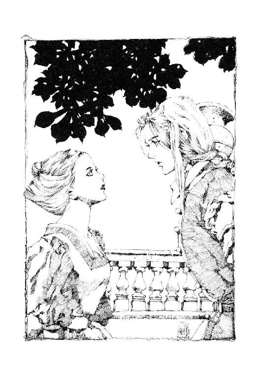

| 【合本版】ロードス島伝説 全6巻 (角川スニーカー文庫) | |
| 水野 良 | |
| KADOKAWA / 角川書店 (2016) | |
【合本版】
ロードス島伝説
全6巻
水野 良

角川スニーカー文庫
ロードス島伝説
亡国の王子
水野 良

角川スニーカー文庫
本作品の全部または一部を無断で複製、転載、配信、送信したり、ホームページ上に転載したりすることを禁止します。また、本作品の内容を無断で改変、改ざん等を行うことも禁止します。
本作品購入時にご承諾いただいた規約により、有償・無償にかかわらず本作品を第三者に譲渡することはできません。
本作品を示すサムネイルなどのイメージ画像は、再ダウンロード時に予告なく変更される場合があります。
本作品の内容は、底本発行時の取材・執筆内容に基づきます。
本作品は縦書きでレイアウトされています。
また、ご覧になるリーディングシステムにより、表示の差が認められることがあります。
プロローグ
若者は、たしかな手ごたえを感じていた。
彼の弓から放たれた矢は、若い雌鹿の首筋を射抜いたはずだった。
「行けっ！」
若者は、彼の足下に身を伏せて、主人の命令をじっと待っていた黒犬に声をかけた。
訓練された猟犬は一声吠えると、おびただしい血を流しながらも全力で逃げようとする雌鹿を追いかけはじめた。
若者も、犬の後を追って走りはじめる。
そう長く走ることはない、と若者は思っていた。流れでる血は哀れな雌鹿の体力を奪い、すぐに動けなくするだろう。
傾斜のきつい森を走るのは、ずいぶん骨が折れたが、獲物を射止めたという喜びのため、少しも気にならなかった。
ここ一月ばかり、若者は一匹の獲物も仕留められずにいた。なにしろ、獲物となるべき森の動物たちの姿が見つからなかったのだから、いかに腕に自信があってもどうしようもない。
若者が狩人となってから十年にもなるが、こんなことははじめてだった。
ロードス島西南部に位置するここモス地方の森には、たくさんの動物が棲息しており、狩人にとっては天国のような場所なのだ。
何か異変が、と不安を覚える日々が続いていた。だが、そうではなかった。ただ、運が悪かっただけなのだ。
もしかしたら、竜が上空を飛んだのかもしれない。その姿を見て怯えた動物たちが、この付近の山から逃げだしたのだろう。このモスの山中は、竜が多数棲息していることで有名だったではないか。
そのとき、若者の忠実な従僕が、けたたましく吠えたてる声が聞こえてきた。
獲物が力尽きて倒れたに違いない、と若者は思った。つい気が弛み、斜面を駆けのぼるのに疲れた足が止まった。
ようやく、村に帰ることができる。
若者は安堵のため息をそっと洩らした。しかし──
静寂な森の空気を切り裂いて、突然、響きわたった甲高い悲鳴に、若者の心はかき乱された。
その悲鳴は、彼の猟犬が発したものに違いなかった。
「どうした！」
若者は叫び、声がした方へふたたび走りはじめた。
しばらく走ると、彼の猟犬の姿が見えた。うずたかく枯れ葉が積もった森の地面に、黒い塊となって倒れていたのだ。
「何があったというんだ......」
近寄ってみて、若者は絶句した。
彼の猟犬の頭は、ぐしゃぐしゃに粉砕されていた。そばでは、雌鹿も倒れて動かなくなっていたが、その死因は彼の放った弓矢によるものに違いなかった。
熊でも現れたんだろうか、と若者は注意深く周囲をうかがった。しかし、そんな気配は微塵も感じられなかった。熊の足跡など、どこにもない。わずかに落葉がかきみだされているのは、犬と雌鹿が残したものだろう。
想像を絶する情景を目のあたりにして、若者の全身に悪寒が走った。
そのときだった。
若者の目の前に、黒い影が突然、姿を現わした。その影は、音もたてず上空から舞いおりてきたのだ。
「あ......」
突然の出来事に、若者はぽかんと口を開いたまま、その影を見つめた。
それは、人間に似ていた。
だが、人間では決してなかった。その背中には翼、額には二本の角がはえている。
頭が真っ白になり、若者は茫然とその場に立ち尽くしていた。
若者にとって、それは幸いであったろう。恐怖を感じることも、なかったのだから。
次の瞬間、影が素速く何かを真横に振るった。
若者は一瞬、身体を硬直させたかと思うと、ゆっくりと横倒しに地面に落ちた。彼の猟犬と同じ姿となって......
若者自身を含めて、ロードスと呼ばれるこの島の住人たちは、もちろん、誰ひとりとして知るはずがなかったであろう。
この狩人こそが、これから始まる忌まわしい災厄の最初の犠牲者であったのだ。
第Ⅰ章 たちこめる暗雲
１
ロードスという名の島がある。
アレクラスト大陸の南に浮かぶ辺境の島だ。大陸の住人のなかには、この島を呪われた島と呼ぶ者もいる。邪悪な怪物どもが跳梁跋扈し、人間を寄せつけぬ魔境が各地にあるがゆえに。
そのロードスの南西部にモスと呼ばれる地方がある。険しい山々が連なり、鬱蒼たる森が大地を覆っている。そして、谷間の盆地や森と森との狭間の平野に、小さな国々が群立している。
五百年前に栄えたカストゥールという名の魔法王国が滅び、剣の時代が始まってより、この地には戦乱が絶えたことはない。その戦乱はこの地方の統一を目指したものではなく、どの国が盟主たる地位を得るかの戦いであった。戦に弱き国は強き国に従属を強いられる。だが、強すぎる王国には、残るすべての王国が連合し、対決する。そして、他国からの侵略に対しても、モスの小国は一致団結して戦うのだ。〝竜の盟約〟と呼ばれる掟に従って。
それゆえ、数百年におよぶ戦乱期を経ても、小国の群立する情勢は変わらなかった。
モス地方の東南部に、スカードという名の王国がある。
人口は一万をわずかに超えるほどで、国王と民とを守護するべき騎士の数は百人にも満たない。峠ひとつを挟んで北に隣接するのは、モス地方第二の強国ヴェノンであり、東と西は〝緑と褐色の山脈〟の高峰で閉ざされている。他国からの援護を受けることができないため、スカードは新王国期を通じて、常に北のヴェノンに従属を強いられている。
それでも、かろうじて独立を守っていられたのは、王国の南の山地に位置する大地の妖精族ドワーフの集落〝石の王国〟との友好のおかげであった。
石の王国のドワーフたちは、人間には真似のできない精巧な武具や工芸品を創りだす技術を持っている。このドワーフ族との交易を独占的に行えるために、スカードの財力は豊かで、経験豊富な傭兵たちを雇うこともできる。また、ドワーフ族は勇猛なことでも知られており、いざというときには、この妖精族の武力も頼りにできた。
すなわち、スカード王国にとって石の王国のドワーフ族は、かけがえのない盟友なのだ。それゆえ、ドワーフたちが何よりも好む特上の麦酒を、スカードでは製造している。スカードの住人は、自らは一滴の酒も飲むことなく、製造した麦酒はすべて石の王国に納めているのだ。
スカードの人々は弱小な王国ではあるが、それゆえに約束された平穏な暮らしを、むしろ歓迎さえしていた。そして、そんな日が永遠に続くと、心の底から思っていたのである。
「父上は、まだお戻りにならぬのか？」
謁見の間の扉を自ら押し開けると、ナシェルは広間にたむろしていた騎士たちに声をかけた。
「ナシェル殿下......」
驚いたような騎士たちの視線が、彼に集中する。
ナシェルは白銀の甲冑に身を包み、腰には剣を帯びていた。小脇には、羽根飾りのついた兜を抱えている。
十六歳といえば、まだ少年ともいえる年齢だが、ナシェルの身長は並の大人を凌駕していた。今は樫の若木のように瘦せているが、五年もすれば背丈に見合った筋肉がつき、立派な体格になるだろう。
だが、顔にはまだ幼さが残っている。もともと今は亡き母親似で、幼少の頃はよく女の子と間違えられたものだ。事情を知らぬ他国の王子に、将来、花嫁にと求められたこともある。色白で、顔の輪郭もどことなく柔らか。その身長がなければ今でも女性に見えぬこともない。赤みがかった金髪を肩まで伸ばしているのも、その印象を強くしている。
体格と容貌との均衡が取れていないあたりが、十六歳という大人でもなく子供でもない微妙な年齢をよく表わしているといえるのかもしれない。
ナシェルは謁見の間の中央、赤い絨毯の敷かれた上を、まっすぐに進んだ。正面奥は一段高くなっており、そこに荘厳な装飾の施された玉座がひとつ置かれている。
しかし、その玉座に、主人の姿はなかった。
ナシェルの父であり、スカード王国の国王であるブルークは、ここ一月あまり行方知れずとなっているのだ。
「いったい、どちらへ行かれたのか？」
ナシェルは、口のなかでつぶやいた。
父は護衛の騎士もつけずに、妹のリィーナだけを伴として、いずこかへ旅に出た。
十日ほどで帰ると父は告げていたという。だが、予定の日から二十日以上すぎても、戻ってはいない。
ナシェルは玉座の脇まで進みでると、くるりと反転して、謁見の間に集った人々を見回した。この大広間には今、スカードの騎士たちのうち、およそ半数が集まっていた。そのなかには、宰相ヒューロや騎士団長サイラスの姿もあった。
小国であるスカードは、文官や武官といった役職上の区別が明確にされていない。
騎士団長や宰相など家柄や適性に応じて役職が与えられているが、有名無実で実権はないに等しい。重要な問題は国王自らが断を下すし、些細な問題は地方領主である騎士たちの裁量に委ねられているためだ。
それだけに、この国の騎士たちは覇気に欠けている。重大な事態に対処できる者は、このなかにひとりとしていないだろう。そして、ナシェルの予感が正しければ、今こそ王国は、建国以来の未曾有の危機をむかえているのだ。
「こんなときに、父上がおられぬとは......」
心のなかで、ふたたびつぶやく。だが、それを言ってもしかたがないとは、ナシェル自身がいちばんよく知っていた。
「そのような物々しき装いにて、いかがなされたのです？」
ナシェルの前に進みでて、宰相ヒューロがおどおどと尋ねてきた。
まだ五十をすぎたばかりだというのに、宰相の髪は真っ白で、瘦せた顔には深い皺が何本も刻まれている。まるで、隠居して十年を過ぎた老人のような印象だった。
「王国に忠誠を誓うすべての騎士たちをただちに城に集めよ。騎士団の半数と傭兵隊を動員し、石の王国を目指す」
ナシェルの言葉は、広間の隅々にまで響き渡った。
声変わりが終わったばかりの若々しい声だったが、聞く者の心に自分の意志を刻みつける威厳がそなわっていた。
若き王子の言葉で、謁見の間はしばし沈黙し、やがて騒然となった。
「なにゆえ、石の王国へ......」
ヒューロ宰相は茫然とつぶやいた。
「戦に行くわけではありません。いや、もしかすればそうなるかもしれない。しかし、その相手はドワーフ族ではありません」
「当然です！ ドワーフ族とは数百年来の盟友、あの妖精族にかぎって、裏切るなどということが......」
「あるはずがない。決まっております」
ナシェルは宰相の言葉を遮るように言った。
ドワーフ族は、信頼にたる種族だ。
彼ら大地の妖精族は信義を重んじ、盟約を尊ぶ。ひとたび約束を交わせば、何を犠牲にしてもそれを守ろうとする。ロードスに住む者ならば、子供でも知っていることだ。そして、石の王国とスカードとは〝エールの誓い〟と呼ばれる盟約によって結ばれている。
「ここ十日ほど、ドワーフ族......石の王国との連絡がとれなくなっています。また王国の南部で異変がいくつも報告されている。何百、何千匹もの森の動物たちが里に降りてきたとか、エウロナの山頂に怪しげな光が瞬いたとか、若い狩人が森に出かけたきり、行方不明になったとの陳情も届いております」
「そのようなことが......」
「起こっているのです。ひとつひとつは、取るに足らぬ事件かもしれません。だが、それが相次いでいるとなると、捨てておくわけにもゆかぬでしょう」
「それはそのとおりでしょうが、しかし、出兵となりますと......」
助けを求めるようにヒューロ宰相は、騎士団長サイラスを振り返った。
深くうなずいて、騎士団長が前に進みでてくる。
残る騎士たちがすべて平装でいるなかで、彼だけは金属製の胸甲を身につけていた。だが、その鎧にしても、実戦ではとても役に立たないような代物だった。飾り鋲をいくつも打ちつけ、金板には縦に数本の切りこみが入っている。その切りこみから、鎧下の布地がはみだしている。その布は上質の絹を織ったもので、見栄えがするよう真紅に染められていた。
サイラスはまだ三十をすぎたばかりで、家柄も良く、剣の腕も確かだが、剣技を鍛えるより女性を口説くことに熱心な男だった。実戦でももっぱら配下に命令をだすだけで、自ら剣を振るって突撃したことはない。
「なりませぬぞ、殿下。陛下の命令なく、騎士団を動かすわけにはまいりません」
「ならば、その父上はいったい何処におられるのか？ 護衛の騎士を連れてもゆかずに。もしも、大事があったとすれば、いったい何とするつもりか」
「それは......、陛下の御命令でしたゆえ」
サイラスは苦しそうな表情を一瞬、浮かべたものの、あくまで平静を装った声で答えた。
「ブルーク王はリィーナ姫だけを連れられて、馬に乗ってゆかれたのです。わたしが想像しますに、リィーナ姫を隣国ヴェノンのアロンド王子にお引き合せになられたのでは......。かの王子は、以前よりリィーナ姫に御執心であらせられますからな」
ヴェノンの第三王子アロンドは、幼い頃のナシェルを王女と間違え、求婚した男だ。
ナシェルが男であると知ったとたん、今度は妹のリィーナを嫁にと言いだした。リィーナはこの隣国の王子が気に入らなかったらしく、再三の申入れを断りつづけてきた。父もこの縁談に乗り気ではないのか、娘に翻意を促したこともない。
「人買いに娘を売り渡すわけではない。アロンド王子と引き合せるなら、しかるべき人数を揃えてゆくに決まっている」
「それは......、そうかもしれませんなぁ」
サイラスは下品にならぬよう気を遣いながら、豪快な笑い声をあげた。
宮廷婦人たちの目を意識しているに違いない。そんなことに気が回るぐらいなら、密偵に命じて父の後を尾けさせるぐらいの知恵を働かせればよいものを、とナシェルは苦々しく思った。
ふと気がつけば、数人の騎士たちが騎士団長に追従したように笑っていた。
全身の力が抜けるような気がした。
「父上の行方が分からぬ以上、このスカードの王権は皇太子のわたしにある。ならば、騎士団の忠誠は、わたしに向けられるものだと理解するが」
「もちろんです、ナシェル殿下」
サイラスは大きく胸を反らし、それから芝居がかった動作で深く一礼した。
「しかしながら、陛下の安否も分からぬうちに、国王のごとき振る舞いをなされれば、陛下御帰還のおりには、どのような罰を受けるか知れたものではありませぬ」
自分の言葉に酔い痴れているように、サイラスはうっすらと目を閉じた。
「案ずるな。罰を受けるのはわたしであって、貴公ではない」
ナシェルは笑みを浮かべながら、しかし、宣言するように断固たる口調で言った。
「父王ブルークに代わって、今一度、命じる。傭兵隊と騎士団の半数は出撃の準備を。残る騎士団は王城の警護だ」
ナシェルの言葉に打ちのめされたように、スカードの騎士たちは直立不動の姿勢を取り、謁見の間から飛びだしてゆく。出陣をふれる勇ましい声が、廊下から響いてきた。
宰相と騎士団長はちらりと顔を見合せたが、いかにも仕方ないというように深く頭を下げた。
「私どもも、出陣の支度を......」
そう言って立ち去ろうとする宰相と騎士団長を、ナシェルは引き止めた。
「宰相殿と騎士団長殿には、王城の留守を頼みたい。石の王国へはわたしが出向く」
「殿下が御出陣にならずとも、ここは騎士団長たる私が......」
眉間に皺を寄せ、苦悩の表情もあらわにサイラスが言葉を挟んだ。
「わたしが行く。何が起こっているのか、そして起ころうとしているのか、この目で確かめておきたいのだ」
それに、とナシェルは薄く笑みを浮かべた。
「サイラス卿には今宵、ロッドン伯爵夫人と大切なお約束があったのではありませんか？」
たちまち、サイラスの顔が血の色に染まった。
「そ、そのような根も葉もない噂を......」
口の端に泡をたてながら抗議を続けようとする騎士団長を、ナシェルは微笑みながら制した。
「武勇の誉高きサイラス卿の出撃を北の隣国ヴェノンが知れば、万が一にも兵を差し向けてくるかもしれません。ここは、わたしが出撃したほうがスカードに益するのです」
サイラスはしばらく無言でいたが、それならばとナシェルの提案を受け入れた。自分の誇りとロッドン伯爵夫人との約束とを天秤にかけて、後者が勝利したのかもしれない。
戦嫌いで知られるヒューロ宰相には、もちろん、異論があるはずはなかった。
「お気をつけられて......」
安堵の表情を隠そうともせず、宰相はナシェルに頭を下げた。
「もうひとつ、宰相殿には尋ねたいことがあります」
そう言って、ナシェルはヒューロ宰相だけをその場に残した。
内密の話だろうと察して、騎士団長が一礼して退席する。彼が謁見の間から出てゆくのを待って、ナシェルは玉座に腰を下ろした。
謁見の間からは騎士も宮廷婦人たちもすべて出てゆき、宰相とふたりだけになっている。
「私に、何用でしょうか？」
ヒューロは額に汗を浮かべていた。この場から一刻も早く去りたいとの思いが、ありありと分かる。
ナシェルはつい苦笑いを洩らしてしまった。この老人には、早く隠居を勧めたほうがよいかもしれない。
「宮廷魔術師殿と傭兵隊長殿の姿が見えません。父が旅に出たのと、ちょうど時期を同じくしているのですが？」
その問いを恐れていたとでもいうように、ヒューロ宰相はびくりと首をすくめた。この件に関して、彼が真実を知っていることは明らかだった。わなわなと全身を震わせながら、畏まっている宰相の姿に、ナシェルの脳裏を嫌な予感がよぎった。
「まさか、おふたりを......」
「陛下の御命令だったのです」
しどろもどろにヒューロは答えた。額の汗は、すでに顔全体に広がっている。
「おふたりをどうしたのだ！ 言え!!」
玉座から立ち上がり、ナシェルは我知らず拳を握りしめていた。色白の顔が、真っ赤に染まっていた。
「あの方々は──、ウォート師とベルド殿はロードスにとっても至宝ともいうべき御人ぞ。スカードのような小国に滞在しておられることさえ、僥倖だというのに。もしも、おふたりの身に何かあれば、このスカードはロードス中を敵に回すことになるぞ」
うかつだった、とナシェルは思った。
父の出立と同時に姿が見えなくなったので、父がふたりに何らかの密命を与えたのだろうと解釈してしまったのだ。だが、父の帰還が大幅に遅れたことで、ふたりの姿が消えたことにも疑問を抱きはじめた。
「陛下の御命令だったのです」
ヒューロは汗まみれの顔を伏せ、同じ言葉を繰り返した。
「陛下は理由も仰せられず、ただ、ふたりを地下牢へ幽閉せよと。もちろん、私はお諌め申しましたが、まるでお聞き入れになられず......」
「なぜだ......」
ナシェルは茫然とつぶやいた。
「おふたりをこのスカードに招聘されたのは父上ではないか？ その父上がなにゆえ、おふたりを幽閉せよと......」
妹のリィーナひとりを伴って、何処かへ出かけたことと関係があるのかもしれない。
あの頃の父の様子は、あきらかにおかしかった。王子であるナシェルを避けていた感さえあった。何を思って、父は旅立ったのだろう。そして、何を考え、傭兵隊長と宮廷魔術師のふたりを幽閉したのだろう。
〝赤髪の傭兵〟こと傭兵隊長ベルドはロードス随一の剣士であり、宮廷魔術師のウォートは、〝荒野の賢者〟の別名で知られるロードス最高の魔術師であるのだ。
「地下牢へ行く！」
ナシェルは叫ぶように言った。
今は、最悪の事態が避けられただけでも、幸いだったと思うべきだろう。ロードスが誇るべき偉大な人物の命を奪うという愚行を、このスカードが犯さずにすんだのだから。
ナシェルは冷たい汗を流しながら、急ぎ足で地下牢へ向かって歩いた。
地下牢に到着すると、牢番の老人が驚いた顔でナシェルを出迎えた。
このような場所に、王族が姿を現わすことは稀である。地下牢という場所は、荘厳にして華麗な王城という建造物の暗黒の一面を象徴している。ここには罪人たちが連行され、あるいは投獄され、あるいは処刑される。そして、ときには政争に敗れた騎士、貴族、王族たちが幽閉され、闇のなかへと葬られてゆく。
王族たる者、物事の表も裏もすべて知らなければならない、と宮廷魔術師でもあり、教育係でもあったウォートに教えられてからは、ナシェルはこの地下牢にも何度か訪れ、罪人と話を交わしている。
それで知ったことは、罪人は二通りに分類されるということだ。
生まれついた性格のゆえ罪を犯した人間と、育った環境に影響されて罪を犯すようになった人間である。そして、多くは後者だ。
ウォートはまた、罪もなく罪人となる者もいる、とナシェルに言った。
つまるところ、誰であれ罪人になる可能性はあるのだ。そのことを知らなければ、公平な裁きはできないとナシェルは知った。
きっと、ウォートもそのことを教えたかったのだろうと思う。
その当人が、今、まさに投獄されているのだから皮肉な事実といえる。まさか、彼はこれを予期して、罪もなく罪人となる者もいる、と言ったのだろうか？
ウォートという魔術師は、その程度のことは洞察しかねない人物だと思い、ナシェルはひとり微笑んだ。
牢番の老人からふたりが投獄された牢屋の場所を聞き、ナシェルは牢屋の鍵を受け取って、ひとりで赴いた。
一歩、奥へと進むごとに、冷たく湿った空気が肌をなぶり、汚物の臭いが鼻をつくようになった。この一画を流れるあいだに、清浄な地下水は濁った下水となる。小国であるスカードだけに、囚人の数は決して多くはない。だが、この場所には王国建国以来の汚濁が堆積しており、それが空気も水も汚染してゆくのにちがいない。無実の罪人たちの自由を求める叫び、権力争いに敗れた者たちの無念の思いが濃霧のようにたちこめているゆえに。
ウォートとベルドが投獄されていたのは、地下牢のなかでもしかるべき身分の者が入れられる牢屋であった。そうした父の意図が偉大な魔術師と戦士に敬意を表したものか、それとも、かつてこの牢屋の主人となった者の多くがそうであったように、このまま獄死させるつもりだったのかは分からない。
牢屋の扉は分厚い一枚板で作られ、縦横に鉄板を打ち付け補強されていた。食事を差し入れるための小窓が膝の高さに、顔の高さのところには覗き窓が設けられている。覗き窓は、頭がすっぽりと入るほどの大きさだったが、手を差しだすのがやっとというぐらいの間隔に鉄格子で仕切られていた。
ナシェルはかるく膝を曲げ、鉄格子越しに牢屋の中を覗きこんだ。
ふたりは別々の牢屋につながれていた。だが、同じような姿勢で牢屋のいちばん奥に座っていた。眠っているのか、ふたりとも目は閉じている。ゆっくりと肩が上下しているので生きているのだと分かるが、なにかしら生気のようなものが感じられなかった。
「ウォート師！ ベルド隊長!!」
ナシェルはまずその場で片膝をつき、父の無礼を短く詫びた。それから、牢屋の鍵をはずし、頑丈な牢屋の扉を順に開いてゆく。
「どうぞ、お立ちになってください」
ナシェルは扉から一歩下がったところで畏まったまま、まずウォートに次いでベルドに声をかけた。
しかし、ふたりは微塵も動かなかった。
「ウォート師？」
不審に思い、ナシェルはウォートのいた牢屋へ足を踏み入れた。食物の腐ったすえた臭いが鼻を刺激する。見れば、何日分かの食事が手付かずのまま床に置かれていた。
ウォートはあいかわらず牢屋の奥で座したまま、目を閉じて身動きしない。規則正しく息をしている他は。
「まさか！」
数歩前まで歩みよったとき、ようやくナシェルは異常に気がついた。あわてて駆け寄り、ウォートの身体に手を伸ばす。
ナシェルの手は何の抵抗もなく、ウォートの身体を貫き、奥の壁まで届いていた。
「やはり、幻覚なのか......」
あまりに見事な幻覚だったので、触れる寸前まで、本物なのではという疑いを捨てきれなかった。
だが、牢屋のなかにいたウォートは幻影だった。もちろん、隣の牢獄にいるベルドも、幻影に違いない。
「ようやくにして気づかれたか？」
幻影のウォートは突然、立ち上がった。そして、どこからともなく声が聞こえてきた。
「牢から抜けるは、法を犯すことに他ならない。しかしながら、法に従うべき理由は我等にはないゆえ、失礼することにした。追手を差し向けたければ、ご自由になされよ」
そう言って、幻覚の声はぴたりと止んだ。同時に、ウォートの幻影も蠟燭の淡い炎が風に吹かれたように、揺らぎながら消えていった。
隣の牢屋を覗けば、ベルドの姿も消えていた。
激しい脱力感に襲われ、ナシェルはがっくりと肩を落とした。このふたりにはまだまだ習わなければならないことがあったのだ。いや、願わくば、ふたりには永遠にスカードに留ってもらい、小さくはあっても平和で豊かな王国を築く手伝いをしてもらいたかった。
しかし、その夢は叶わぬものとなった。それもこれも、父の愚行のせいだ。
「なにゆえ父は......」
誰もいない牢屋のなかで、ナシェルは声に出して自問した。彼の声は周囲の壁に反響し、うつろに響くのだった。
「自ら招聘したおふたりを地下牢に幽閉なされたのだろう。そして、なにゆえ未だに帰還されない。もしも、石の王国との連絡が途絶え、王国の南部に変事が相次いでいるのと、関係があるとすれば......」
ナシェルの不安は、際限なく膨れあがってゆくのだった。
とにかく、石の王国へ出向く。
ナシェルは改めて決意した。それが自らの不安を打ち消すことになるのか、確かめることになるのかは分からなくとも......
２
マスケトの街はヴェノン王国の領土であり、三つの街道が交わる交通の要所に栄える城塞都市だ。北東の街道を行けば、ヴェノン王国の同名の王都があり、西に向かえば高原の王国リュッセンへ至る。そして、南へ伸びる街道はスカード王国を経由して、この街とドワーフ族の集落〝石の王国〟とを結んでいる。
いかにモスが戦乱の地とはいえ、いつもいつも争っているわけではない。
ここ数年は小競り合いもなく、平穏な日々が続いてさえいた。もっとも、聖竜王国ハイランドとヴェノン王国とは、街道の通行税を巡る問題で揉めており、近々、一戦交えるだろうと噂されている。
しかし、今はまだ戦ははじまっていない。戦がはじまらぬうちにと、行商人たちがあわただしく東へ西へと行脚し、街道はむしろ普段以上に賑わっていた。
当然、酒場も混雑していた。
〝再会の誓い〟と看板を掲げたこの酒場も例外ではない。テーブルにもカウンターにも人が溢れ、壁にもたれて立ち飲みをしている客の姿さえあった。店のなかは熱気に溢れ、酒の臭いと男たちの体臭で、その場にいるだけで悪酔いしそうだった。
そんな混雑した酒場のなかで、入口近くのテーブルにだけ、ぽっかりと空席があった。そのテーブルは六人がけであったにもかかわらず、ふたりの男が座っているだけなのだ。
ひとりは薄汚れた紫の長衣を着た長髪の男だった。顔中に無精髭をはやし、長い髪はもつれてところどころで毛玉になっている。
彼の名はウォート、荒野の賢者と呼ぶ者もいる。
もうひとりは燃えるような赤い髪をした男だった。得体の知れない野獣の毛皮のマントをまとい、半袖の鎖かたびらに身を包んでいる。彼の全身もまた泥と埃で汚れており、本物の野獣のごとき悪臭をまき散らしていた。
赤髪の傭兵ベルド、暗黒の島マーモを故郷とする蛮族の戦士だ。
ふたりは五日前にスカード王国の王城〝グレイン・ホールド〟の地下牢を破り、街道を避け、山越えでここマスケトの街にたどりついた。
牢屋にいたときからひどい暮らしだったし、逃亡中とあっては身なりを整えるひまもない。服や身体は汚れるにまかせるしかなかった。
だが、ふたりの座るテーブルに、他の客が寄りつかないのはその身汚さのせいだけではないだろう。全身から発せられている殺気のようなもの。それを感じるからこそ、人々はそのテーブルに座るより、カウンターで立ち飲みするほうを選ぶのであった。
「エールをあと二杯だ」
赤髪の戦士ベルドが、近くを通った下働きの少年に怒鳴りつけるように言った。
少年はびくりとその場で硬直し、運んでいた料理の皿を目的のテーブルに届けることさえ忘れ、カウンターに戻ると泣きそうな声で注文を通した。
「この身なりをなんとかしないとね」
少年のあわてようを見ていたウォートが、苦笑を浮かべながら言った。
「このままでは、いつ役人が飛んでくることやら......」
「分かっている。だが、身なりを整えるには金がいる。今のオレには、そんな余裕はないな」
ベルドは残っていたエール酒を飲みほすと、替りのジョッキを督促するように、カウンターを睨んだ。
すぐに新しいエール酒が運ばれてくる。あわてて運んできたので、泡がジョッキから溢れだし、テーブルに流れ落ちた。下働きの少年は、自分の服の裾でそれを拭こうとした。
ベルドはそれを手で制し、向こうへ行くようにと顎で合図した。
「お金なら、わたしが工面しよう。魔術師の装飾品は、宮廷婦人よりも高価なもの。しかるべきところへ行けば、一年は食うに困らないだけの金を作ってみせるよ」
少年がカウンターに戻るのを待ってから、ウォートは言った。
「そいつは助かる」
ベルドは答え、それから自嘲的な笑いを浮かべた。
「もっとも、問題はこの店の払いをどうするか、だな？」
「できれば、つけにしてもらいたいものだが......」
ウォートはカウンターの奥で、下働きの男女にあれこれと指示を飛ばしている店の主人の顔色をうかがった。
店の主人は不機嫌そうな表情で、ときおり、こちらをうかがっている。あきらかに歓迎されていない様子だ。
「金なしだと疑われているようだよ」
ウォートは苦笑を浮かべ、エール酒にちびりと口をつけた。
「なかなか鋭い観察眼だ。もっとも、このなりじゃあな」
当然だろうさ、とベルドは他人事のように言った。
「それで、どうする。踏み倒すか？」
「追われるのは、もう飽きたよ。このようなことに魔法を使うと、賢者の学院あたりから、苦情が寄せられるのだが......」
「苦情はブルーク王に言ってもらおう。王城の部屋に戻れば、一年は楽に暮らせるだけの財産があるのだからな」
「もう没収されているだろうさ」
ウォートは、肩をすくめてつぶやいた。
金ならまだましだ。また、稼げばいいだけだから。彼自身は、金では買うことのできない貴重な書物や魔法の宝物を部屋に置いてきてある。
もちろん、彼の所有する膨大な書物や宝物のうちのほんの一部分でしかない。残った分は、ルノアナ湖畔に建てた塔のなかに残してある。
「それで、どんな魔法を使うつもりだ？」
「愚者の黄金の魔法さ。初級の幻覚魔術だよ」
言うなりウォートはポケットのなかから小石を取りだした。店の者や周囲の客たちの注意が向いていないのを確かめてから、小声で呪文を唱えはじめる。
詩でも吟じているような響き。だが、彼の発する言葉は、このロードスで普通に使われている言葉とは異なっていた。もちろん、海をはるか越えた北のアレクラスト大陸で使われている言葉でもない。
はるかな昔、カストゥールと呼ばれる王国があった。五百年前に滅亡した古代王国だが、この王国の貴族たちが使っていた言葉なのである。
それも、日常の会話においてではない。この古代王国を支えていた魔法と呼ばれる神秘の力。この力を行使するときに唱えられた魔法言語なのだ。
上位古代語と呼ばれている。
万物の根源物質であり、万能の力である魔力。この魔力を操り、通常、起こりえない現象を具現化する。それが、魔法なのだ。
呪文の詠唱が終わったとき、ウォートの目の前に置かれた小石は、黄金色の輝きを放ちはじめていた。
「ちょっとした手品だな」
それを見たベルドが感心したように言う。
「学問だよ」
ウォートは真顔で答えた。
「もっとも、魔力を操る天与の才は必要だがね」
「誰にでも使えるわけではないのか？」
「賢者の学院は、ひた隠しにしているがね。ドワーフ族には、ひとりの魔術師だっていないだろう。それが証拠さ。魔術師になれるのは、選ばれた者だけだ。素養のある人間は、五人に一人ぐらいだな。精霊使いや司祭たちと同じだよ」
興味があるのなら教えてやるがね、とウォートは言ったが、ベルドは苦笑を浮かべて、遠慮しておこうと答えた。
「オレはただの戦士でいい」
「おまえがただの戦士なものか」
ウォートは今や黄金の小粒となった小石をポケットに戻し、エール酒をゆっくりと楽しみはじめた。
「このロードスにおいて、おまえに勝てる戦士はおるまいよ。ハイランドのマイセン公でさえ、竜の力を借りねば、おまえを倒せまいさ」
「ありがたい評価だが、オレはそんなことに関心はないな。戦って、生き延びて、金をもらう。それがオレの生活だ。それ以上のことは望まんね」
ベルドの言葉に、ウォートは杯をテーブルの上に戻し、その精悍な顔をじっと見つめた。
「......そのほうが万人のためかもしれんな」
「予言かい？」
「未来を見通す魔術はないよ。そうでなければ、今、こんな場所で酒など飲んでいるものか」
「まったくだ」
ベルドは声をあげて笑った。
「お互い、仕えるべき人間を見誤ったな。こんな失敗は、初めてだ。危うく命を落とすところだった」
ベルドの言葉に、ウォートは無念そうにうなずいた。
スカードという名のモス地方の小王国。この王国に傭兵隊長としてベルドが招聘されたのは、およそ二年前のこと。
ウォートが宮廷魔術師としてやってきたのは、それから数ヵ月後のことだ。
ベルドはその地位に惹かれて、スカードに仕えたわけではない。おそらくは、目の前の魔術師もそうだろう。
理由は簡単だ。スカード国王ブルークの人柄に興味を覚えたことがひとつ。そして、スカードの皇太子である王子ナシェル。この若者の未来に魅力を感じればこそ、スカードなる小王国に仕官する決意をしたのだ。
それほどに、ナシェルは傑出した少年だった。
その優秀さを、言葉にすることは難しい。ただ、武勇に優れているとか、利発であるとかいうだけではない。もちろん、その双方ともに、ナシェルは水準を遥かに超える能力を示している。彼の年齢を考えれば、これからどれだけ伸びてゆくのか、ベルドでさえ恐ろしくなるほどだ。ウォートの言葉ではないが、剣で戦うだけならロードス最強の戦士と噂される竜騎士マイセンにも負けるつもりはない。だが、十年後、いや五年後のナシェルには勝てないかもしれない。そんな気にさせる少年なのだ。
無限の可能性とでもいおうか。人間である以上、限界があるのは間違いない。だが、それを感じさせない何かが、ナシェルにはあった。
だからこそ、ベルドは自らの手でこの若き王子を鍛えてみたいと思ったのだ。もし、機会と幸運があれば、間違いなく彼はこのロードスを統べる英雄王となるだろう。
戦乱の絶えることなき、この呪われた島ロードスに、千年の平和を築く者がいるとすれば、ナシェルをおいて他にいないように思う。
未来はもちろん、ベルドにも分からない。
「ひとつ尋ねていいか？ ブルーク王はなぜ、おまえを幽閉しようとしたんだ」
ベルドはウォートに声をかけた。
その言葉に、荒野の賢者は静かに目を閉じ、しばらく瞑想に耽けった。
「......正確に言えば、分からんよ」
ウォートはそう言って、ゆっくりと目を開いた。
彼の視線は目の前に置かれた陶器製の杯に注がれている。土を石に変える技術は、ドワーフ族が発見したものだ。ドワーフ族は魔術は扱えぬが、それに優るとも劣らないいくつもの技術を有している。
「ブルーク王は、わたしに二心があると思ったようだ。スカードに仇なす者と、衛兵に命令していたのを覚えている」
「疑いをかけられるようなことでもしたのか？」
「残念ながら、心当たりはないな。だからこそ、わたしを庇ってくれたのだろう？」
ベルドは苦笑を浮かべながら、まあな、とうなずいた。
「まさか、オレまで幽閉されるとは思ってもいなかったがな」
二十日ほど前のあの日、私室で書物を読んでいたウォートのもとへ、突然、ブルーク公は自ら衛兵を連れて乗りこんできたのだ。そして、地下牢への幽閉を命じた。
事情の説明を求めたが、答は一切、なかった。
ただ、ブルークの表情からその決意が揺るがぬことは分かった。そのとき、ウォートには二通りの選択があった。ひとつは強硬手段、すなわち魔法を使ってその場から逃亡すること。もうひとつは、おとなしく命令に服従すること。
ウォートは、前者を選ぼうと考えた。だが、結局は服従することを選んだ。
ただ逃亡するだけなら、いつでもできると思ったからである。地下牢には、対抗魔法の結界などない。杖さえ取り上げれば魔術師は魔法を使えぬもの、と一般の人々は思っているが、導師級の魔術師ともなれば、杖などなくてもいくらでも魔法をかけることができる。
もうひとつ、信用した人間に裏切られたという記憶を自分自身の脳裏に刻みつけようと思ったためでもある。人間を見る目には自信を持っていただけに、ウォートにとって衝撃的だった。
人間は、変わる。それは知っていた。だが、かくも短期間のうちに変わるとは思ってもいなかった。その日の前日まで、ブルークはウォートを疑っている素振りなど微塵も見せなかったのだ。いつから、自分に疑いを抱いていたのかさえ分からない。
その事実だけでも、罰を受けねばならないと思ったのだ。ふたたび、このような失敗を繰り返さないように......
不幸だったのは、連行されてゆくウォートの姿をベルドが目撃したことだ。当然、ベルドはその理由をブルークに尋ねた。
ブルークは、答えなかった。
ただ、衛兵に対し、ベルドも一緒に地下牢へ幽閉するよう命令しただけだ。
ウォートは、ひどく緊張したのを覚えている。ベルドがそんな命令に従うとは思ってもいなかったからだ。
彼が本気を出せば、その場にいる者を皆殺しにして、立ち去ることぐらい容易かっただろう。ウォートはそれを阻止するために、魔法を使わねばならないと精神を集中させたぐらいだ。
だが、意外にもベルドは、ブルークの命令に従った。
まるで国王に絶対の忠誠を誓う騎士のごとき態度だった。
「分からないものだな、人間という生き物は......」
「まったく、分からないものだ」
ため息まじりのウォートの言葉に、ベルドは深くうなずいた。
「あのときのブルークは、あきらかに異常だった。魔物にでもとり憑かれたのか、と疑ったぐらいにな」
「魔物に、とり憑かれた......」
ウォートは眉をぴくりと動かし、ベルドの顔を見つめた。
言われてみれば、ベルドの言うとおりだ。あのときのブルークの態度を表現するのに、これほど適切な表現はないだろう。
「どうした、何か心当たりでもあるのか？」
もちろん、本当に魔物にとり憑かれたのではないことは、ウォートには確信がある。
目を見ていれば、己の意志で行動しているか、何物かに精神を支配されているかぐらい判別できる。だが、人間にとり憑くものは、魔物とは限らない。野心であるとか、嫉妬であるとか、自らの精神に芽生える邪な感情に支配されることもあるのだ。
そして、魔物という言葉から、ウォートはひとつの事を思い出していたのだ。ブルークが豹変した理由がそれに関係していたとすれば、とてつもなく大きな事件が起こる可能性がある。このロードスを、いや世界を震撼させるような大事件が、だ。
「しかし、そんなことはあるまい......」
ウォートはまるで自らを納得させるように、声に出してつぶやいた。
ブルークは決して愚かな人間ではない。ウォートが危惧していることを行うには、多大な犠牲を払わねばならない。それを払ってもなお、失敗する危険が高いのだ。正気の人間であれば、そんな割の合わない賭けをするはずがない。
「......顔色が悪いぞ」
そのベルドの言葉は、ひどく遠くから聞こえてきたような気がした。
「安酒に酔ったかな」
ウォートは苦笑を浮かべて、小さく首を横に振った。
「そろそろ、ここを出るとしよう。今宵は宿屋でゆっくりと休みたい」
「休むのはいいが、明日からはどうするつもりだ。お互い、新しい主人を捜さねばならない身だぞ」
「しばらくは、誰にも仕える気にはなれんよ。ルノアナ湖畔の塔へ帰って、古代王国遺跡の発掘を続けるさ」
「古代王国の遺跡か......」
ウォートの言葉に、ベルドがにやりとした。
「そいつは面白そうだ。金にもなりそうだしな」
「もちろん、金にはなる。運が良ければ、莫大な財宝が手に入るだろう。だが、一生かかっても遣いきれない金を手に入れて、どうするつもりだね。どこかの街に屋敷でも建てて、豪遊して暮らすか？」
「それは、手に入れてから考えるさ。遺跡の探索には、危険がつきものだと聞いている。しばらくは、怪物相手に戦うとしよう。それとも、オレの剣では役に立たんか？ もっとも、今は自前の剣を持ってはいないがね」
それを聞いて、ウォートも笑みを浮かべた。
「魔法の剣など、腐るぐらい持ってるよ。もっとも、赤髪の傭兵を雇うつもりはないがね」
「雇われるつもりもない。しばらくは、誰のためでもなく、オレ自身のために戦いたいのさ。今は、そんな気分だ」
ウォートも同感だった。
もっとも、ウォートは別に隠棲するつもりはない。しばらくのあいだ、ルノアナ湖に水没する古代王国の遺跡の発掘をして、時を待つつもりだ。
自分の知識と魔力を必要とする者は、かならず現れる。このロードスから戦の炎が消えぬ以上、現れぬはずがないのだ。
そして、ウォートは自分が仕えるべきは、ロードスを統べる覇王でなければならないと考えている。戦乱続くこの島に千年の平和をもたらす英雄王。
ウォートはベルドにうなずきかけると、ゆっくりと立ち上がった。
そして、安堵の表情を浮かべている主人の前に、さきほど魔法をかけた黄金の小粒を置いた。
主人はあからさまに驚いた顔をして、その黄金を見つめた。
もちろん、見破れるはずがなかった。疑い深い魔術師が、魔法感知の呪文を使わぬかぎり、ウォートの創りだした幻覚の黄金は、永遠に流通しつづけるはずだった。見破られぬかぎり、偽物と本物との違いは、何ひとつないのだ。
３
麓の村では、春はすでに盛りだというのに、白竜山脈の山中は一冬を越して氷のように硬くなった残雪が、地面を厚く覆っていた。
このロードス最北の山脈は、二柱の精霊王がその主人とされる。大地の精霊王〝魔獣〟ベヒモスと氷雪の精霊王〝魔狼〟フェンリルである。
この二柱の精霊王のうち魔狼フェンリルは、この冬さんざんに荒れ狂った。この山脈のみならず、ロードス北東部に栄える〝千年王国〟アラニア全土に大豪雪を降らしたのだ。
そして、先日は魔獣ベヒモスが突然、激怒した。
大地震が起こったのである。
この地震により、白竜山脈近辺の村や街には大きな被害が出た。ロードス島最北の村ターバの郊外にある大地母神マーファ大神殿も礼拝所が倒壊するという被害が出た。
精霊王たちの怒りは、それぞれ大きな災厄ではあったが、もっと悪しき未来の予兆と考える者も巷には少なくない。アラニアの住人たちは、不安な気持ちを抱いたまま、暖かい季節を迎えようとしていた。
そして、その悪しき予感を誰よりも強く感じている女性が、ここにいた。白竜山脈の第三の主人ともいうべき生き物の前に立つ、大地母神の神官衣を身にまとった女性である。
「ニース様、危険です」
神官のひとりが、悲鳴にも似た声をあげた。
ニースと呼ばれた黒髪の女性は、振り返ろうともしない。彼女の目前にそびえるように立つ巨大な生き物に向かって、慎重に歩を進めている。
純白の鱗に包まれた巨大な獣である。その大きさは小さな砦ほどもあろうか。太く短い四肢のはえた胴に長い首と尻尾、それに翼を有した生き物だった。その姿は禍々しいが、見ようによっては美しくもある。
〝竜〟とその生き物は呼ばれている。最強にしてもっとも華麗なる幻獣、そして魔獣である。氷竜ブラムドというのが、その名だ。
魔獣と呼ぶか、幻獣と呼ぶかは、人間に仇なすか否かによって決められる。その分類によるなら、目の前の竜は魔獣と称せられるだろう。この竜は古代王国の支配が終わり、新王国の時代が始まってより、何百もの人間の命を奪ってきたのだから。たとえ、その人間たちが、この白竜が守る宝物を奪いにきた命知らずであったにしても......
「わたしも、同じかもしれない」
ニースは心の中で思う。
彼女もまた、氷竜が所有する膨大な宝物のために、ここにやってきたのだ。ブラムドの巨体の後ろに、さらに巨大な洞窟が口を開けている。その奥に宝物は収められているはずだ。
倒壊した神殿を建立しなおすために、また、大雪や地震によって被害を受けた貧しい人を救うために、どうしても金銀が必要なのだ。
大地母神の神殿は、労働の奉仕や作物の寄進などを受けることが多く、金銀などの蓄えはほとんどないに等しい。街に荘厳な神殿を構え、莫大な財宝を蓄えている至高神ファリスや商業神チャ・ザの教団とは根本的に異なっている。
「でも、それだけではないわ......」
自らを励ますように、ニースは心のなかでつぶやいた。
この氷竜は、呪いに囚われている。古代王国の魔術師たちがかけた強力な呪いである。その呪いは、この氷竜をこの地に留め、古代王国の財宝の番人としている。このロードスにはブラムドの他にも四色の竜が呪いにかけられ、古代王国の財宝を守っているという。火竜山に棲む火竜シューティングスターや青竜の島の主人、水竜エイブラなどだ。
「呪いにより強制を受けているのは、自然な状態ではない」
大地母神は「自然である」ことを教義の第一とする。だからといって、文明を否定しているわけではない。人間として自然な生き方を人々に説いているのだ。
他人から強制されたり、束縛されたりすることは、自然な生き方とはいえない。たとえ、相手が人間ならぬ魔獣であっても、呪いによって束縛されているのであれば、解放することが大地母神の教義に従った行動なのである。
そして、ニースはこの氷竜が邪悪な魔獣だと思っていない。古い伝承にはブラムドが心優しき竜であることを伝える逸話がいくつも残っている。大地母神の神殿にも、その伝承を肯定する報告が文献として残されている。
目の前にいる氷竜は、賢明で慈悲深き幻獣であるはずなのだ。
「人間の娘よ、それ以上、近寄ってはならぬ」
轟くような声がした。
目の前の竜が発したものだった。どこからか息が洩れているような感じの声。だが、間違いなくそれは人間の言葉だった。ロードス全土で使われている共通語である。
竜は、ただの野獣ではない。成長するに従って高い知性を得て、古代王国の魔術や精霊を操る魔法さえ唱えられるようになるものもいる。それら成長した竜を、このロードスでは〝古竜〟と呼んでいる。
目の前にいる氷竜ブラムドは、その古竜なのだ。
古竜は神にも匹敵する力を持った偉大な存在である。だが、五百年ほど前に滅びた古代王国の支配者たちは、その古竜さえ呪いにより奴隷として奉仕させているのだ。
ブラムドの怒りと哀しみが、胸に伝わってくるようだった。
「あなたを解放してさしあげます」
ニースは胸を張って言った。雪解けの小川の水で喉を潤したような気分にさせる声だった。
大地母神の信者たちのあいだで、ニースは〝マーファの愛娘〟と呼ばれている。戦乱の絶えぬこの〝呪われた島〟ロードスに、大地母神がその御子を授けてくれたのだと噂されているのである。
ニース自身はもちろん否定しているが、十七という年齢で高司祭の地位に就いているのは、教団はじまって以来であるというのは事実だ。
彼女は女神マーファから力を授かり、いかなる奇跡でも起こすことができる。天命を全うせず死んだ者を復活させる、蘇生の奇跡さえ行えるのだ。
神の奇跡──神聖魔法と呼ばれることもある。
だが、魔法使いと呼ばれるのを、ニースは好んではいない。奇跡を起こすのは神であって、自分自身ではないのだから。自らの意志で魔力を操り魔法を行使する魔術師や、精霊を支配して魔法を操る精霊使いと同一視されたくないのだ。
神に仕える身の司祭は、あくまで神の意志の代弁者であり、奇跡の力を恣意的に使ってはならないのである。
「呪いから、解放すると」
ニースの言葉に、ブラムドは耳を傾けるように、しばらく動きを止めていた。
だが、ニースが更に一歩、足を踏みだすと、天を見上げて、大きく息を吸いこんだ。白い鱗に覆われた喉が大きく膨らんでゆく。
「ニース様！」
悲鳴が、また聞こえてきた。
ニースは、十人の神官を同行している。
古代王国の呪いを解かねばならないのである。自分ひとりの力で、それが可能だとは思えなかった。それゆえ、彼女らに協力してもらわねばならなかった。祈りを唱和させ、神の奇跡の発現力を増すのである。
「大丈夫です」
ニースはそう言いつつ、さらに一歩、足を伸ばした。
竜の長い首がまっすぐニースに向けられた。
その口が大きく開く。真っ赤な舌が、ちろちろと覗く。そして、真っ白な鋭い牙。
次の瞬間、竜はその舌よりも真っ赤な炎を吐きだした。灼熱の炎が、真夏の雲のように膨れあがり、ニースを包みこもうとする。
ニースは真横に転がって、その紅蓮の炎を避けた。
激しい熱気がニースの黒髪を焦がす。もしも、そのまま炎に包まれていたら、骨も残らぬほどに焼きつくされていただろう。竜が口から吐きだす灼熱の炎は、あらゆる炎のなかでもっとも高温で、ドワーフ族が至高の金属とする真銀でさえ溶かしてしまうという。
ニースは受け身をとりながら地面を五回ほど転がって、立ち上がった。
素速い身の熟し。熟練の戦士もかくやと思わせる。事実、彼女は戦士としての訓練も受けていた。神殿は王国からの介入を受けない。だが、その保護も受けられないのだ。それゆえ、神殿は自衛のために独自の戦士団を持っている。
神官戦士と呼ばれる者たちである。
彼らは神殿や信者を守る使命を担っている。
ニースも、その神官戦士になる訓練を受けていた。戦士としても、彼女は優れていた。華奢に生まれたので、重い武器は扱えない。だから、小剣や短槍を武器として選んだ。素速い動きが、彼女の身上である。動きの邪魔になるような重い鎧もつけない。
今も、そうだ。古竜の攻撃を受けたら、中途半端な鎧など何の役にも立たない。武器さえ持参してはいない。いかに小剣を振り回しても、竜の硬い鱗にはばまれるのは目に見えている。
ニースは三歩、数えて後退した。それから、竜の吐いた炎の跡を見る。先程までニースが立っていたところは、雪が蒸発し、激しく湯気が立ち上っていた。
「娘よ、去れ！ ここは汝の来るべきところにあらず。立ち去らずとあらば......」
氷竜ブラムドが、またも共通語を使って言った。
ニースはブラムドを見上げた。その瞳は森の泉の水のような澄んだ青色をしていた。
「これ以上、近づけば、殺さなければならないのですね」
ニースは、ブラムドに向かって言った。
ある範囲の中に入った人間は、すべて殺すようにとブラムドは強制されているのだ。
氷竜は答えなかった。自分の鱗と同じ色の神官衣に身を包んだ人間の娘を、見下ろしている。
「そこから一歩でも踏みだせば、わたしは汝を殺さねばならぬ」
しばらくの沈黙ののち、ブラムドは厳かに言った。
「この場にいるかぎり、あなたはあなたの意志で会話できるということですね」
「その通りだ、人間の娘よ」
「わたしはニースといいます」
「ブラムドという名で、呼ばれている。その名をつけたのは、カストゥール王国の魔術師ではあるが......」
「真の名は？」
ニースは尋ねた。
「名はない。我が種族は、卵から生まれるゆえ」
「お気に触らないなら、ブラムドと呼ばせていただきます」
「それで、よい」
氷竜の物言いは、穏やかであった。
ニースはこの古竜が、邪悪でないことを確信した。
「あなたの呪いを解いてさしあげます」
ニースは胸を張るように、きっぱりと言った。
「我が呪いを、解く？ 汝は、カストゥール王国の魔術師なのか」
「わたしは大地母神に仕える者です。古代王国の住人でも、魔力を操る者でもありません」
「ならば、我が呪いを解くことかなわず」
「祈れば、大地母神は奇跡を授けてくださいます。あらゆる呪いを解く、奇跡の力をです」
「神聖魔法か......。話に聞いたことはある。だが、神の従僕たる娘よ。我が呪いを解いて何とする。カストゥール王国の秘宝が望みか」
ニースは、素直にうなずいた。
「しかし、それだけが理由ではありません。生きとし生けるものは、すべて自由な存在であるのです。いかなるものであれ、呪縛を受けるべきではありません。慈悲深き大地母神マーファは、そう願っておられます」
「......それゆえ、我が呪いを解きたいというのか？」
「そのとおりです」
ニースは、静かに答えた。
大義名分として、大地母神の教義を振りかざしているわけではない。
話を交わし、この氷竜の聡明さを確信したのだ。純白の鱗に包まれた姿は、高貴な美しささえ感じる。ニースは本心から、この幻獣を呪縛から解放したいという気持ちになっていた。
「わたしひとりの力では、あなたの呪いを解くことはできません。呪いの魔力に勝る力で奇跡を起こさねばなりませんから。そのために、わたしは十人の神官を連れてきました。祈りを唱和し、強力な奇跡を起こすためです。なにより、あなたに協力してもらわねばなりません」
「わたしに、協力を？」
「ええ」
ニースはうなずいた。
「あなたの協力は不可欠です。呪いを解くには、あなたの身体に触れなければならないのです」
「......呪いにあらがえということか」
氷竜の言葉に、ニースはにっこりと微笑み、うなずいた。
その笑顔を見るだけで、あらゆる苦しみから解き放たれると噂する信者もいる。噂どおりであればどんなによいか、とニースはひそかに思っている。だが、苦しむ人々を救う力はない。その手伝いができるぐらいだ。奇跡を起こし、神の教義を伝えても、万人が幸福になれるわけではないのだ。
「わたしがあなたのところまで行き着く、その間だけでいいのです。古代王国の呪いと戦っていただきたいのです」
「それが、どのような苦痛か、汝は知っているのか？」
ニースはゆっくりと首を横に振った。
誇り高い古竜がそう言うのだ。その苦しみ痛みは、想像を絶するものがあるのだろう。わずかな時間とはいえ、耐えうるのは難しいに違いない。
「それでも、耐えてください」
ニースは見上げるように、ブラムドと視線を合せた。その銀色の瞳には、戸惑いの色がうかがえた。
ニースは、一歩、足を踏みだしはじめた。
「やめるのだ、娘」
ブラムドの声は、哀しげな響きを帯びていた。
「我が呪いは、解くことかなわず」
「解けぬ呪いなどありません！ どうか、わたしを信じてください」
同時に、ニースもブラムドを信じた。この氷竜が呪いがもたらす苦痛に打ち勝つことを、だ。さもなければ、ニースは間違いなく命を失うことになる。
氷竜のもとへ歩きはじめたニースを見て、後方に控えていた十人の神官たちが、あわてて地面に膝をつき、祈りの言葉を詠唱しはじめた。
そのとき、山の斜面を冷たい風が吹き下ろし、ニースの黒髪がなびいた。風の鳴る音が近くの谷間から聞こえてくる。
ブラムドにも、ニースの覚悟は伝わったようだ。鋭い鉤爪のはえた前足を地面に下ろすと、その場でうずくまるような姿勢をとった。
神官たちの祈りの声を背中に受けながら、ニースは精神を集中させた。大地母神の名を繰り返し唱えた。
突然、吹雪が荒れ狂ったような音がした。
氷竜があげた咆哮であった。その咆哮に揺さぶられ、どこからか雪崩の起こる音が聞こえてくる。
氷竜は翼を広げ、長い尻尾を激しく地面に打ちつけた。それだけで、地響が起こり、身体が上下に揺さぶられる。
古竜の苦悶の大きさがうかがいしれる。
大地母神の名を口のなかで繰り返し、ニースは精神を高揚させてゆく。一歩、一歩、残雪に足を取られぬように進んでゆく。
本当は全力で駆け寄ってゆきたいのだが、そうすれば精神の集中が乱れるだろう。それでは、強い奇跡を期待できない。
わずか二十歩ほどの距離が、無限に遠く感じられた。
氷竜の苦しみは、すでに限界を超えようとしているのが、ニースにも分かった。
「慈悲深き大地母神、豊穣と創造を司る女神よ......」
氷竜へあと数歩のところまできたとき、ニースは高らかに祈りの言葉をあげた。
「自然ならざる呪縛より、このものを救いたまえ！」
高らかに祈りの声をあげ、ニースはブラムドの純白の鱗に手を触れた。
次の瞬間、唸りをあげて何かが迫る気配があり、ニースは反射的に身体を後ろに反らした。
氷竜が鋭い鉤爪のはえた前脚を振るったのだ。
激しい衝撃があり、右肩に激痛が走った。細身のニースの身体は、真横に弾き飛ばされていた。硬い地面にぶつかり、新たな痛みが走った。目の前を赤い飛沫が舞っているのが分かった。
三回転めから、ニースは身体を丸め、受け身を取った。それからさらに十回以上、地面を転がってから、ようやく立ち上がることができた。
だが、すぐに膝が落ちる。右肩を見れば、神官衣が右の乳房のところまで裂けていた。新雪のような白い肌に三筋の傷が走り、そこから真っ赤な血がどくどくと流れでている。
だが、思ったよりも軽い傷だ。氷竜ブラムドの攻撃をまともに受けていれば、間違いなく即死だったろう。
流れでる血もそのままに、ニースは古竜の様子を確かめようと洞窟の入口を振り返った。
ブラムドは地面にうずくまっていた。頭も尻尾もぴくりとも動かない。
ニースはそっと神官たちを振り返った。彼女らは祈りを終えて、茫然とブラムドの巨体を見つめている。
ニースは左手で傷口を押さえながら、残る気力をふりしぼって癒しの奇跡を女神に願った。女神は願いをかなえてくれて、痛みが噓のように和らいだ。完全ではないものの傷口は塞がり、流血も止まった。
「娘よ......」
ブラムドの声が響いた。
ニースは何も言わず、笑顔で答えた。
ブラムドの声には怒りや哀しみは、微塵も感じられなかった。
「わたしは自由を取り戻した。感謝する、大地母神の従僕よ。古代王国の秘宝は汝のものぞ」
氷竜のその言葉を聞いて、歓喜の声をあげながら、神官たちがニースのもとへと駆け寄ってきた。
神官たちは口々にニースの偉業を讃え、怪我の具合を確かめた。
「大丈夫よ、慈悲深き大地母神が癒してくれたから......」
ニースは神官たちに答え、ブラムドと正面から向かいあった。
氷竜は首だけをもたげて、ニースを見下ろす。
「感謝する、大地母神の娘よ。これより、わたしは汝を主人と定めよう。この誓いは、わたしが滅びるまで、変わることはない」
「せっかく古の呪いから解放されたというのに、新たな束縛を誓ってどうするの。これからは、古竜として自然に生きてください。それが、わたしのただひとつの願いです。主人ではなく、友というなら大歓迎ですけどね」
「承知......」
氷竜の声は穏やかだった。
ニースは安堵の笑みを浮かべて、ほっと息をついた。
「後の事はわたしたちがいたしますから、ニース様はお部屋に戻られて、ゆっくりとお休みください」
ひとりの神官がそう申し出た。ニースはしばらくためらったが、こくりとうなずいた。
怪我はともかく、疲労が激しい。重い荷物を抱えては、神殿に帰りつくまでに倒れてしまうだろう。
「そういたします。ごめんなさいね、皆さんにご迷惑をかけて......」
「迷惑だなんて、そんな！」
その神官はあわてて首を横に振った。
「あまりおひとりで、すべてを背負わないでください。最近のニース様は、何かしら生き急いでおられるようで、見ているわたしたちが心配になります」
「生き急いでいる？ このわたしが......」
神官の言葉をニースは、笑って否定しようとした。
だが、その笑いは口許で凍りつき、ニースは怒っているでも、泣いているでもない中途半端な表情のまま静かに目を閉じた。
「もしかすると、その通りなのかもしれない......」
ニースは、心のなかでつぶやいた。
最近になって、ロードス各地で戦乱の兆しがあり、アラニアの大豪雪や大地震に代表されるような自然の災害があいついでいる。人々はさらなる災厄を恐れ、不安を募らせている。
ロードスという島は、二柱の女神が闘争を繰り広げている永遠の戦場であると大地母神の教団では説いている。
二柱の女神──、創造の女神マーファと破壊の女神カーディスである。
神々の時代の終わりに神々が光と闇の陣営に分かれて争った〝神々の大戦〟のおりマーファとカーディスは、この島を舞台に激しく戦ったと伝えられている。両者は互いの肉体を滅ぼし、他のあまたの神と同様、魂だけの存在となり、世界に介入する術を失った。
だが、魂となって後もこの対立する女神は争いを続け、マーファが優勢なときにはロードスは平和と豊作に恵まれ、カーディスが優勢なときには戦乱と災厄に見舞われると、マーファの信者たちは考えている。この説に従うなら、二柱の女神の戦いは、今、破壊の女神カーディスが優位に立ちつつあるようだ。
その優劣を逆転させる力はなくとも、災害で被害を受けた人々を救済し、戦が起こらぬよう各勢力に働きかけることぐらいはニースにも可能なのだ。
おそらく、これからの五年はこれらに全精力を注がねばならないと思っている。未来が明るいとは思えぬだけに、今できることは手早く片付けてしまいたいのである。他人にはそれが生き急いでいるように見えるのだろう。
なにより、ニース自身、自分が天寿をまっとうできるとは思っていなかった。己の命よりも、女神への信仰を大切に考えているのだから、それは当然だろう。もしかしたら、心のどこかで、自分の余命が長くはないと思っているのかもしれない。
ニースは、そっと大地母神の名前を唱えた。
全能の神でさえ、未来は完全には分からない。人間にできることは、明日のために今日を懸命に生きることだけだ。
とはいえ、今日は休んでもよいだろう、とニースは思った。
心優しき氷竜は呪いから解放され、古代王国の財宝は神殿の再建と困窮する人々の救済を可能にするはずだ。
そして、明日もまた、忙しい一日になるに違いないのだ。
４
神聖王国ヴァリスは、ロードス島中南部に栄える王国である。
王国の歴史は二百年余。北東部の〝千年王国〟アラニアと南東部を支配する王国カノンに次いで、ロードスで三番目に古い歴史を誇る王国である。
王国の形態は他国とは、まったく異なっている。このヴァリスにおいては、国の主人は国王ではなく、至高神ファリス教団の長たる大司祭であるとされている。
ファリス教団から世俗のことを委任されているのがヴァリスの国王であり、その配下の神聖騎士というのが名目なのだ。国王と騎士は外敵からこの神聖王国を守ったり、治安の維持に努めることが使命とされている。
それゆえ、王位も世襲ではない。聖騎士のなかからもっとも優れた人物が推挙され、至高神と大司祭の名のもとに国王に選定されるのだ。
現在の国王ワーレンⅠ世は、在位して三十余年。王位に就いたのが四十をすぎてからなので、かなりの老齢である。そして、現在は病床にあり、二度と回復することはないだろうと言われている。神々が高位の司祭たちに授ける病気を治癒する奇跡の力は、老いに起因する肉体の衰えには効果を発揮しない場合が多い。
それは神が定めた寿命であり、人間にとって避けられぬ運命であるからだ。
最近、ヴァリスの国民たちのあいだでは、誰が次の国王になるかが最大の関心事となりつつある。そして、その最有力と見られている人物が、今、ファリス大神殿の宿舎の一室に姿を現わした。
「ごぶさたしております」
聖騎士ファーンは磨かれた床に片膝をつき、部屋の主人に向かって深々と礼をした。
「よく、来てくれたな。若き騎士隊長殿」
この部屋の主人は、ファリス教団の高司祭の地位にあるジェナートである。信者たちは彼のことを、次代の大司祭であろうと期待をこめて噂している。
背は低く瘦身でもあるが、目の前に立たれるとその存在感の大きさに圧倒させられそうだ。茶色い髪は頭頂部で薄くなっており、顔には皺もかなり目立つ。まだ三十代の後半と男盛りのはずだが、たっぷり十年は年老いて見える。形式主義に陥っていたファリス教団の改革に、長く労力を捧げてきたためだろう。
部屋には、ジェナート高司祭の他にもうひとりいた。
若い女性だった。ファーンには、初めて見る顔だった。太陽の光の色のような明るい金髪が特徴的だった。輝くようなその髪を、短く刈っているのが、ファーンの目にも惜しいと映った。
ファリス教団の紋章入りの神官衣に身を包んでいるが、その下には鎖かたびらを着こんでいるらしく、鉄と油の匂いがかすかにした。
どうやら、神官戦士のようだ。それも、熟練の騎士とでも互角に戦えるほどの腕前だ、とファーンは彼女の技量を見て取った。
「こちらの女性は、フラウス。先日までアダンの街の神殿で、侍祭を務めていた」
ファーンの視線に気がついたのだろう。ジェナートが、女性を紹介した。
初対面のふたりは、丁重に挨拶をかわした。
「ファーン卿に来てもらったのは、他でもない」
ジェナートはそう言って、話を切りだした。
「三角州の離宮については、今更、説明するまでもないな......」
そのことか、とファーンは思った。
聖なる河ファーゴの河口には、巨大な三角州が浮かんでいる。
この三角州に十年ほど前に、離宮が建てられた。国王ワーレンの王子のために建てられた離宮である。そして、ヴァリス王国にとって、この三角州の離宮とそこに住む王子は、この十年のあいだ悩ましい問題だった。
ワーレン王に王子が生まれたのは、二十年ばかり前のことである。五十を過ぎて、ようやく授かった子供であった。
当然のように、国王はこの王子を溺愛した。もっとも、ヴァリスの王子には、王位の継承権はない。新たな国王が即位すると、神聖騎士となるか、聖職者となるかのいずれかであった。そして、ワーレン王は王子を聖騎士として育てるつもりだったようだ。
悲劇が起こったのは、ちょうど十年前のことである。国王はわずかな護衛の騎士と王子を連れて、西の山野へ狩りに出かけた。貴族や騎士にとって、狩猟はただの道楽ではない。実戦的な戦の訓練でもある。幼い王子を鍛える意味もあって、ワーレン王は連れていったのだろう。
山野には狩りの獲物が、棲んでいる。
だが、危険な魔物も同時に巣くっているのだ。
国王たちが獲物を追いつめるため馬を走らせていたとき、突然、近くの林から牛頭鬼が姿を現わした。
林の近くにいたのは、王子が乗る馬だけだった。
それは、あっという間の出来事だったらしい。いきなり出現した魔物に驚き、王子の乗った馬は主人を振り落して逃亡したのだ。
そして、地面に投げ出された王子に向かって、ミノタウロスが突進していった。
あわてて馬を戻してきた騎士たちは、ミノタウロスに戦いを挑んだ。
激しい戦いだったらしい。二人の騎士が死に、残る騎士も皆、手傷を負った。だが、ミノタウロスも瀕死の傷を負い、地面に倒れた。
国王は草の間に倒れて動かない王子を抱え起こした。
幼い王子には、頭がなかった。
ミノタウロスが武器としていた棍棒で、完全に叩きつぶされていたのだ。そして、王子の腹は無残に喰い破られ、腹わたが露出していた。この牛頭の魔人には、食人の習慣があった。
ワーレン王は、発狂した。
それは、至高神の慈悲だったのかもしれない。
国王がその場で命じたことは、王子の骸を打ち捨てることと、瀕死のミノタウロスを王城へ連れ帰ることだった。
ミノタウロスは地下牢ではなく、亡くなった王子の部屋に入れられ、傷の手当を受けた。
ワーレン王の精神は、王子の死を受け入れることができなかったのだ。王子を殺したミノタウロスを、己の息子だと信じこんだのだ。
ヴァリスの宮廷は、この前例のない事件に大いに揺れ動いた。
当時、ファーンは騎士叙勲を間近にひかえた見習い騎士だった。宮廷の騒動は、今でも鮮明に覚えている。ミノタウロスを処分し、国王を退位させようとの意見もあった。その意見をもっとも強硬に主張したのは、ファリス教団から派遣されていた宮廷つきの司祭だった。
だが、それまでの国王の善政を知る騎士たちには、その主張を受け入れることはできなかった。長い議論のすえ決定されたのは、ミノタウロスを幽閉するために離宮を建造することだった。ファーゴ河の三角州には、わずかな数の漁民しか住んでいなかったので、これを移住させ、この不毛の地に砦のごとき宮殿を建てて、ここにミノタウロスを幽閉させた。
この離宮の監視には、国王の狩りに護衛として同行した騎士が交替で務めることになった。ミノタウロスには週に一度、仔牛や羊が餌として与えられた。
不思議なことに、国王は王子の問題を除けば、以前とまったく変わりがないように見えた。しかも、王子と会うために、離宮に行くようなこともしない。ただ、護衛の騎士たちから、王子が元気であるとの報告を受けるだけで満足しているかに見えた。
国王は正気なのでは、と考える騎士たちもいたほどである。
だが、国王の狂気は、言葉の端々から伝わってきた。ワーレン王の頭のなかでは、王子は三角州の離宮で騎士となるべく修業に勤しんでおり、それを成就するまでは父王に会わぬと誓いを立てていることになっていた。
王子存命の事実を確かめる必要がないよう、無意識のうちに都合の良い記憶を創りだしているのだろう、と宮廷魔術師は推測した。その説明は、ファーンにも納得がいった。人間の精神の不思議さを、かいまみるような思いであった。
「先日、ワーレン王より、この大神殿に一通の親書が届いた。その親書には、王子殿下に花嫁を娶らせたい旨が記されていた。花嫁の資格は神聖魔法を唱える司祭であること、そして、十八歳以下の乙女であることだそうだ」
「陛下が、そのような親書を......」
ファーンは、胸が痛んだ。
代々の国王は息子、娘を聖職者と婚姻させる例が多かった。
国王もそれに倣おうとしたのだろう。たとえ、その王子が食人の習性をもつ魔人であったとしても......
「誤りを正すべきときがきたとは思わないかね？」
ファーンは、うなずくしかなかった。
ミノタウロスは邪悪な存在だ。根絶すべき闇の生き物といえよう。そのミノタウロスを、この神聖王国が養ってきたのである。特例とはいえ、教義に反する状態をいつまでも放置しておくわけにはいかないのだ。ファリスは法と秩序を司る神であり、それゆえ光の五大神のなかでも主神と認められているのである。
「このことは、宮廷には？」
「大臣たちには、話を通しておいた。納得してもらったよ」
「それでは、なぜ、わたくしをここへ？」
「この件は、至高神の教団と神聖王国の騎士とが共同で果たすべきだとは思わないかね？」
それは、理解できた。そうしなければ、禍根を後に残すことになろう。城と神殿のあいだに不和が生じるのは、ヴァリス王国にとって憂うべき事態である。
だが、分からないこともあった。
なぜ、自分を呼んだのか、だ。
「この役は、離宮警備の騎士たちの役目ではないかと思います」
ファーンは、言った。
そうでなければ、彼らの名誉は傷つけられることになる。
「分かっておる......」
ジェナートの声には、苦悩が感じられた。
「だが、わたしはおまえを呼んだ。その意味をくんではくれまいか？」
「それは......、しかし......」
ファーンは言葉を詰まらせた。
ジェナートが何を言いたいのかは、彼にも分かった。だが、それを納得することは難しい。
「過ちは正されなければならないのだよ......。わたしひとりの力では、難しいこともある」
ジェナートは窓の外に顔を向け、懺悔の言葉を洩らすように、そうつぶやいた。
春の日差しが、王都ロイドの街を暖かく照している。
「お引き受けにならないのなら、けっこうですわ。わたしが、ひとりでまいりますから」
それまで無言だった女性が、突然、言った。鋼が鳴ったような、毅然とした声だった。
「フラウスは、王子の花嫁として国王陛下に紹介するつもりだ。彼女ならば、満足していただけよう」
ジェナートがファーンに説明した。
予想はしていたが、至高神の教団からは、彼女が派遣されるのだ。もちろん、花嫁というのは名目であり、本当は離宮の主人を討つための戦士に他ならない。
「他人を偽るのは、神の教えに反することですが、死にゆく人間への手向けになるならば、神もお許し下さいましょう」
ファリスの教義によれば、噓をつくことは大罪であるとされている。
実際、己の利益を考え、噓をつく者は多い。噓によって他人を傷つけることもあるだろう。
だが、相手のことを慮って、偽りを言う場合だってある。ファリス神は、そんな噓まで罰しようとはしないはずだ。
だが、教団はそれさえ罪と定め、罰を与える。硬直した形式主義に偏っているためだ。
「同感です」
ファーンは、ゆっくりとうなずいた。勇気ある女性だ、と思った。
この女性なら、たとえひとりでも離宮に赴くだろう。王子の花嫁として、だ。そして、その日のうちに、未亡人となって帰ってくるに違いない。
だが、女性ひとりを危険にさらすのは、騎士の規範に反する行為である。離宮警備の騎士たちの気持ちが気にかかるが、これも神が与えたもうた試練かもしれない。
「かしこまりました。この試練、お引き受けいたしましょう」
ファーンは、畏まって言った。
「やってくれるか」
ほっとしたような笑みを、ジェナートは浮かべた。
「フラウスには、特上の花嫁衣裳を用意しておる。放っておけば、一度も着る機会なく、一生を終えてしまいそうだからな」
「わたくしの命は、神に捧げておりますもの。現世で、殿方と結ばれるつもりはありませんわ」
フラウスは、真顔で答えた。
「若い娘が、これだからな。ファリス神は婚姻を守護してこそいないものの、この人生の幸福を否定してもおらんぞ」
ジェナートは明るく笑い、そばに置いてあった椅子に腰を下ろした。
かなり疲れておいでだ、とファーンはそれを見て思った。形式主義に陥り、腐敗も著しい教団を改革することに全身全霊を傾けているためだろう。
「形式的には再婚となるわけだが、よければ、この娘をもらってやってくれ」
考えておきます、とファーンは答えた。
彼があまりにも真面目に答えたので、困惑ぎみにジェナートの言葉を聞いていたフラウスが、驚きの表情を浮かべた。
わずかに目を見開いて、ファーンに視線を注ぐ。
ファーンには別に他意はない。ジェナートの勧めとあれば、間違いない相手だろう、と思っただけだ。それに、彼女が敬虔なファリスの信者であり、貞淑な女性であることは、見ただけで分かる。
「これでひとつ、心配事が減ったよ」
ジェナートは、大きな声で笑った。
そのとき、使いの神官が戸口を叩き、ジェナートの名を呼んだ。
フラウスが扉を開けて、神官を部屋のなかに通す。
「礼拝堂に病人が運ばれてきております。重病ゆえ、ジェナート様にぜひ診てほしいとの大司祭様よりの伝言です」
ジェナートは表情を引き締め、片手をあげて、分かったと答えた。
神官は恭しく頭を下げて、部屋を辞した。
「わたくしが、代わりに参りましょうか？」
ジェナートの健康を心配したらしく、フラウスがそう申し出た。
「わたしが、名指しで呼ばれたのだ。教団にとって重要な人物が病気にかかったのだろう。もし、病が癒されなかったとあれば、おまえに責任がふりかかる。それに、王城へ行くのは、早いほうがよかろう。国王が、別の娘を花嫁に選ばないともかぎらんからな」
ジェナートは椅子から立ち上がると、フラウスの肩に手を置き、王城に行くための準備について指示を与えた。
「それでは、今日のうちに」
フラウスは、即座に答えた。
ファーンも、別に異論はなかった。
この場合、準備とは花嫁衣裳に着替えることに他ならない。そして、国王に挨拶を行い、武器と鎧とを持参の道具として、牛頭の王子の棲む離宮へ赴くのだ。
ファーンは、彼女の護衛の騎士という役割を演じることになる。
ジェナートが礼装に着替えはじめたので、ファーンは一礼をして、部屋を辞した。フラウスも、彼の後に続いた。
ふたりは、宿舎の廊下を並んで歩いた。
「あなたの噂は、前々から聞いておりました。この大神殿に住む女性の神官で、あなたの名を知らぬものはひとりもいないようですね」
「大神殿には、週に一度の礼拝を欠かしてはおりませんから......」
ファーンは答えた。
そういう意味ではないのだが、とフラウスは思ったが、それは口には出さなかった。
「ミノタウロスと戦ったことはありまして？」
と、話題を変えた。
「いえ、ありません」
ロードスには数多くの魔物が棲んでいるが、ミノタウロスは数の少ない魔物だ。赤肌鬼や犬頭鬼といった妖魔──邪悪な妖精族ならば、ファーンは見たこともあるし、戦ったこともある。だが、子供ほどの大きさしかない妖魔たちと、長身のファーンよりさらに頭ふたつは高いミノタウロスとでは、その強さは比べものにならないだろう。
実際、国王の側近だった熟練の聖騎士たちと戦って、二人の命を奪っているのだ。
「ですが、わたしには神の加護があります。負けはしませんよ」
「たいした自信ですのね」
「剣こそが、騎士の誉。戦こそが、騎士の果たすべき使命。自信なくして、務まりません」
「............」
フラウスは、ひどく真剣なまなざしでファーンを見つめた。
「何か？」
問われて、フラウスは小さく首を横に振った。
「ご立派ですわ。皆が噂するとおり......」
フラウスは、正面に向き直って、話題を変えた。
「このロードスから、久しく戦が絶えたことはありません。それどころか、このところ世の中は悪くなる一方。この神聖王国も、例外ではありません。ヴァリス北の国境には蛮族たちが侵入し、沖の海には海賊たちが横行し、山や森からは魔物が人里にも姿を現わす。王国間のいさかいは絶えず、いつ戦が起こっても不思議ではない」
「我々、聖騎士も努力はしているのですが......」
このロードスの、そしてヴァリスの現状が憂うべきなのは、否定できない事実だった。
聖騎士たちは辺境の村を巡回し、国境の警備を強化している。だが、正直に言って、効果はあまりあがっていない。
「混乱の原因は、ヴァリス国内にはありませんもの。国境の外のことには、聖騎士の威光も及びませんわ。だから......」
「だから？」
ファーンは、尋ねた。フラウスが言葉を切ったまま、沈黙したからだ。
「ロードスは、ひとつにまとまるべきだと思います。偉大なる英雄のもと......」
「それでは、大戦になります」
ファーンは、さすがに驚いた。
ロードスの住人たちのあいだに、そういう気運が高まっていることは知っている。世の中が乱れると、人々は英雄の出現を待望するものだ。
だが、北東には〝千年王国〟アラニア王国があり、その南には美しい国土で知られるカノン王国がある。両王国とも長い歴史を誇る王国ゆえ、文化も発達し、商工業も盛んである。
もちろん、衰退の兆しがないわけではない。
貴族や騎士たちが繰り広げる政争は激しく、利権を握る文官たちのあいだには汚職が横行し、民衆は不公平感を募らせている。領民から搾取することしか考えぬ強欲な地方領主もいる。だが、由緒正しき王家によって統治され、王国の基盤はまだまだ揺らいでいるとはいえない。
カノンの南の海に浮かぶ〝暗黒の島〟マーモは、ロードスに蔓延する邪悪の温床といえるかもしれない。ここは蛮族や罪人、海賊たちの支配する無法の島で、妖魔や魔獣が跳梁している魔境でもある。混沌たる状況ゆえ、支配者は誰もいない。闇の力を結集すれば、隣国にとって脅威となろうが、古代王国が滅びてのち、その兆しは一度もない。反対に、この島の征服を試みても成功するとは誰も思っていない。ヴァリス王国や、ファリス大神殿でも、マーモへの聖戦が何度となく主張されたが、現実論が多数をしめて、実行に移されたことがないのだ。
このヴァリスとて、至高神の信仰を支柱とする揺るぎない王国である。
不穏なのは、ヴァリスの北と西だ。北の砂漠には二つの蛮族が勢力を争い、激しく戦っている。島の中央を横断する街道には、マーニーとローランという堅固な城塞都市があり、都市国家として独立を守っている。
西南のモス地方は小国が群立し、戦乱が絶えない。だが、竜の盟約により、他国からの侵略に対しては鉄の団結を誓っている。
西北には、港街ライデンを中心とする自由都市群があり、傭兵を雇ったり、自警団を組織したりと他国の介入を寄せつけない。
このロードスの政情を変えるには、武力に頼るしかない。強力な軍を要し、傑出した英雄がこれを統率しないかぎり、果たすことのできない難業であろう。
フラウスとて、そのぐらいは理解しているはずだ。
「わたくしは五年前まで、アダン近郊の農村に生まれた、ただの村娘でした」
フラウスは、静かに語った。
すると、わずか五年のあいだに高徳の司祭となり、優れた戦士となったことになる。いかに高い才能があったとしても、それを開花させるのは並大抵の努力ではなかったはずだ。
ファーンは敬意を持って、彼女の修業、鍛練を讃えた。
「神の御加護のおかげです」
フラウスは、さらりと答えた。
「五年前に、わたくしはファリス神の啓示を受けたのです。その啓示を、そのまま言葉で表わすことはできません。五感すべてを貫くような強烈な衝撃だったからです。ですが、あえて言葉で表わすならば、その啓示は英雄の出現を予言していたように思います。ただ、その英雄は大いなる闇に閉ざされ、光の下に出られないでいます。わたくしの使命は、英雄を闇から救いだすことだと悟りました。その証として、神はわたくしに奇跡の力を授けたもうたのです」
「そのような啓示を......」
「はい。だからこそ、いかなる苦しみにも耐えられたのです」
「敬服いたします」
ファーンは、礼拝所で祈りを捧げているときのような神聖な気持ちになった。
この神官戦士に、聖女の資質を見たような気がした。真の聖女となるには、厳しい修業がさらに必要だろうし、困難な試練をいくつもくぐりぬけねばならないだろう。
微力ではあってもその助けとなろう、とファーンは心のなかで誓った。ジェナート高司祭が自分を呼んだのは、そのためだろう、と思う。
「英雄は、かならず現われます。そして、このロードスの救世主となるはずです」
フラウスは、ファーンを見つめながら熱っぽく言った。
「わたしの剣が必要であれば、いつでも申してください。必ず、力となります」
「......ありがとうございます」
複雑な表情を浮かべて、フラウスは答えた。
ちょうどそのとき、二人はフラウスの部屋に着いた。
「衣裳は、おそらく運びこまれていると思います」
フラウスは、わずかに苦笑を浮かべた。
「それでは、わたしも礼装に着替えてまいりましょう。後ほど、馬車を伴って迎えにあがります」
ファーンはフラウスに会釈をして、宿舎の出口へと向かった。
白き騎士ファーンがフラウスと共に、三角州の離宮へ赴いたのは翌日のことである。そして、その離宮では、予想だにしなかった最悪の悲劇が待ち受けていた。
だが、王城に帰還したファーンたちを待っていたものは、その悲劇をも頭のなかから追いだすような衝撃的な知らせであった。
第Ⅱ章 王子の決断
１
人間は、闇を恐怖する。闇の精霊シェードは、恐怖を司る精霊でもあるから。
だが、大地の妖精族たるドワーフにとって、闇は親しい友だ。柔らかな毛布に包まれているような安らぎを感じる。
そのドワーフたちが、初めて闇に恐怖した。闇のなかに跳梁する戦慄すべき魔物どもに......
「あと何人、生き残っておるのだ......」
巨大な鉾槍を抱えながら、ひとりのドワーフが闇のなかを歩いていた。
ここは、石の王国。いや、かつてそう呼ばれていたというべきだろう。
山をひとつ貫いて、巨人が立って通れるほどの巨大な地下道が走っている。〝ドワーフの大洞窟〟といえば、ロードスでは知らぬ者がいない。
だが、網の目のように伸びた無数の支道が存在することまでは、人間たちは知らないだろう。ましてや、その地下道がロードス各地の洞窟につながっているなど知る由もない。
ドワーフ族がこの地に住みついたのは、数千年も前のこと。以来、この石の王国は支道を伸ばしてゆき、いつの間にかロードスの地下に、知られざる街道を持つようになったのだ。もっとも、普段は隔壁や扉で閉ざされ、使用されてはいない。
石の王国があるのは、ロードスの南西部。ドワーフ族の王国はこの地と、ロードスの北東部にそそりたつ白竜山脈にある〝鉄の王国〟のふたつだけである。使われなくなって久しいが、このふたつの王国を結ぶ長大な地下道さえあるのだ。
「扉は、すべて閉ざしたのか？ 罠の封印は、残らず解いたのか？」
そのドワーフはひとり、つぶやいた。
彼のまわりには、もはや誰もいない。最後まで従っていた五人の戦士たちも、先刻の戦いで皆、息絶えた。
彼の名は、フレーベ。石の王国の〝鉄の王〟と呼ばれた。
だが、もはや彼は王ではない。彼に従う民は、もはや存在しないから。
突如、現れた侵略者どもの手によって、皆殺しにされたのだ。
「むっ！」
そのとき、三つの影が前方から姿を現わした。
背中に蝙蝠の翼をはやした醜い人型の生き物が、二匹の犬を連れていた。真っ黒な色をした大型の犬だ。ただの犬でないことは、一目で分かる。その双眸は不気味に輝き、口からは舌の代わりに、真っ赤な炎をちろちろと覗かせている。
彼らこそが、侵略者であった。
魔神と呼ばれる異界の生き物であることを、フレーベは知っている。カストゥール王国の魔術師たちが召喚し、奴隷として使役した。
フレーベは、自分の身長の三倍を超える巨大なハルバードを身構えた。
彼の肉体は、分厚い真銀の板金鎧で包まれている。背中に落とした大兜をかぶれば、全身、余すところなく覆われることになる。ドワーフ族の技術を結集した究極の防具だ。
「雑魚どもが!!」
フレーベは、挑発するように叫んだ。
有翼の魔神は〝ザルバード〟と呼ばれている。魔神族のなかでも、下級の魔神でしかない。
犬の魔物は冥王犬。魔神たちが飼い慣らしている異界の猛獣だ。
その魔獣が、猛然と口から炎を吐きだした。
フレーベは、それを避けようともしなかった。大兜を深くかぶると、炎を浴びながら、まっすぐに突き進んだ。真っ赤な炎が鎧を焼くが、フレーベは気にも止めない。
間合いに入ると、巨大なハルバードを振りあげ、そして一閃した。瞬間、彼の手から武器が消え失せたと思えるほどの素速い一撃だった。
ヘルハウンドの首がふたつ、同時に地面に転がった。どす黒い血が噴きだして、地下道の石床に血溜まりを作った。
有翼の魔神はかろうじて宙に舞いあがり、難を逃れた。そして、手にしていた手槍を投げつけてきた。
フレーベは、それもかわそうとはしない。
軽い衝撃があり、水晶を打ち鳴らしたような音が響いた。魔神が投げつけた手槍が、鎧に弾かれた音だった。
フレーベは、床に落ちた手槍を拾いあげると、地下道の天井近くに浮かんでいる魔神めがけて、無雑作とも思える手つきで投げ返した。
狙いは違わず、魔神の胸を貫いた。背中から突き抜けた手槍は、勢いを弱めず天井に当たり、鈍い金属音を発して、岩に突き立った。
少し遅れて、魔神がどさりと地面に落ちてくる。
フレーベはその首めがけ、ハルバードを叩きつけた。投石器から打ち出された石弾のように、魔神の首が跳ねとんだ。
怒りや憎しみを、ぶつけたわけではない。そうでもしないと、魔神どもがいつ復活してくるか知れないからだ。ドワーフ族の頑強さは人間たちのあいだではよく知られているが、魔神どもの強靭な生命力は、それを遥かに凌駕しているのだ。
フレーベは、がっくりと地面に膝を落とした。
「もはや、この王国には魔神たちしかおらぬのか......」
絶望が鉄の意思を持ったドワーフ王の心を打ち砕いた。
魔神どもは、南の大門から侵入してきた。完全な奇襲だった。黒い疾風のように、幾千とも幾万とも知れぬ魔神が大洞窟を駆け抜けた。
態勢を整える間もなく、石の王国は蹂躙された。
中央の大道を制圧され、支道が分断された。そのため、組織的な反攻が不可能となった。支道に押込められたドワーフたちは、各個撃破されるだけだった。もちろん、ドワーフたちも黙って、殺されたわけではない。男も女も、いや子供や老人までもが武器を取って戦った。
フレーベも二千の戦士団を率いて、魔神どもに逆襲した。
激しい戦いは、十日あまり続いた。
中央の大道を取り返さんと、支道のすべてを守らんと、大地の妖精族は異界の住人どもと戦いを繰り広げた。
一万の人口を数えるドワーフ族が、最後のひとりになるまで交戦したのだ。魔神どもも手痛い打撃を受けたであろう。
勝敗を分けたのは、魔神たちが強力な魔法を操れたことだ。
ドワーフ族にも少数の神官戦士がいたが、精霊使いや魔術師はひとりもいない。精霊と交信する能力も、魔力を操る能力も、ドワーフ族は遥かな古代に喪失してしまっていたのだ。
長老たちのあいだでは、人間に援軍を求めればという意見もあった。だが、フレーベはそれには賛成しなかった。援軍が間に合うとは思えなかったし、間に合ったとしても、闇に強い魔神たちを相手に、人間たちがこの地下道で戦って勝てるとも思えなかった。いたずらに犠牲を増やしただけだろう。
ただ、魔神の出現を知らせる使者だけは、出すことにした。
この石の王国が抜かれたなら、いずれ人間たちも魔神たちと戦わねばならないのだ。自らの領土を守るための戦であれば、人間たちとて死力を尽くすに違いない。いや、そうでなければ、この石の王国の犠牲の意味がなくなる。
フレーベたちにとって唯一の慰めは、白竜山脈に住む同朋が、石の王国からもっとも離れた場所にあることだ。地下道を抜ければ一本道であるが、地下道のすべてを探索するには、いかに魔神たちとはいえ時間がかかる。そのあいだに、魔神出現の知らせは届くだろう。地下道の門は閉ざされるだろうし、不意を打たれさえしなければ、ドワーフ族の地下王国は難攻不落の要塞となる。
そして、この石の王国の地下道には、隠し扉や偽の扉など様々な仕掛けが施されている。危険な罠も多数、張り巡らしている。フレーベは魔神どもの侵攻を知ると、門や扉を閉ざし、罠の発動を止めていた封印を解くよう配下の戦士たちに命じている。
完全にではないだろうが、その命令は実行されているはずだ。地下道の探索を進めれば、魔神たちは痛い目を見ることになるだろう。
だが、戦いに敗れたという事実には変わりはない。
「これまで、だな......」
フレーベは、深くうなだれた。不覚にも涙が溢れでた。
石の王国は、滅びた。
自分は、最後の鉄の王となった。
無念であった。だが、ドワーフ族の誇りは守れたと思う。
勝利したとはいえ、魔神どもは多くの手勢を失ったはずだ。人間たちとて非力ではない。やすやすと魔神の侵略を許すようなことはあるまい。ロードスには、森の妖精族エルフの集落も各地にある。エルフどもは高慢で、ドワーフ族や人間を妖魔たちと同じように軽蔑している。友好を結びたい手合ではない。だが、彼らは全員が精霊魔法の使い手であり、非力ではあるが鼠のように俊敏に動く。それに、弓の名人でもある。
「このロードスを支配するのは、容易ではないぞ......」
フレーベは首を失い、倒れている魔神に声をかけた。
しかし、とフレーベは思った。
「この魔神どもは、いったいどこから湧いてでたのだ。なぜ、湧いてでたのだ」
石の王国の南には、人間の王国はない。エルフどもの住む森もない。
あるのは、カストゥール王国の遺跡の数々と〝空の上なる湖〟ホルスの美しい湖水だけだ。
その疑問を解き明かしたい、と思った。だが、それは自分の仕事ではない。
杖にすがるように鉾槍に身体を預けながら、フレーベはゆるりと立ち上がった。
命あるかぎり、一匹でも多くの魔神を道連れにしなければならない。それが、石の王国の最後の王としての使命だと思った。
疲労は激しく、肉体も無傷ではない。魔法の前には、完全な鎧とて無力である。強い打撃を受ければ、たとえ鎧は無傷でも、中身の肉体には打撲傷を受ける。
三日以上、彼は寝ていない。食事を取ったのも、昨日が最後だ。地下水は、そこかしこに湧き出しているので、渇きだけは覚えずにすんだ。だが、水ではなく、麦酒を飲みたいと思った。
隣国スカード産のエールは濃厚で強く、苦みが効いて旨い。だが、もはや二度と口にすることはないだろう。
ふたたび熱いものが、ドワーフ王の頰を伝って落ちた。
それから、しばらく歩いたが、なぜか魔神たちには出会わなかった。
期待はしていなかったが、生きた仲間にも会えなかった。
魔神や魔獣、それにドワーフの戦士の骸が、そこかしこに倒れている。それを見ても、もはや哀しみは湧いてこない。怒りも溢れださない。すでに、感覚が麻痺してしまってるようだ。
石の王国は、広い。国王であるフレーベでさえ、王国のすべてを歩いたわけではない。
フレーベは自分がどこを歩いているのかさえ、分からなくなってきていた。疲労はますますひどく、鎧と武器の重さに押しつぶされそうだった。
そのとき、外気の匂いが、ふと感じられた。
フレーベは顔を上げ、大兜をはずすと背中に落とした。鎧と兜とは鎖で繫がれているのだ。
地下道の先に、かすかな明かりが感じられた。
どうやら、外が近いようだ。
大洞窟の入口はふたつ。北の大門と南の大門だけだ。ロードス各地の洞窟と繫がる抜け道もあるが、一日や二日歩いたとて外へ出られるはずはない。
「北か、南か......」
フレーベはとにかく、光の方へ歩いた。
ドワーフの王国は、いつも闇に閉ざされている。ドワーフ族は地下の住人であり、光よりも闇に慣れ親しんでいるのだ。
そのドワーフの王が、光を求めて進んでいる。
おかしなことだ、とフレーベは思った。だが、ドワーフは妖魔どもとは違う。神々の大戦のときには、光の神々の従僕として、邪神の軍団と戦ったのだ。人間や森の妖精エルフたちとともに。
しばらく歩くと、中央の大道へと出ていた。壁面にも、湾曲した天井にも、びっしりと彫刻が施されている。石の床は鏡のように磨かれ、靴底にぴたりと張りつく感覚があった。
息づくように動いている大気が、肌で感じられる。
洞窟の外を照らす光は、暖かく強い。どうやら、真昼のようだ。
「ここは、北の大門なのか......」
フレーベはようやく、自分がいる場所が分かった。
それで今まで歩いてきた道も、察しがついた。わずか十日のあいだに、この石の王国は異郷となったようだ、とフレーベは苦々しく思った。
大道には魔神が溢れているはずだったが、ここにもやはり魔神はいなかった。
この十日の出来事が悪夢であればと願ったが、全身に走る痛みがその期待を打ち砕いている。
フレーベはハルバードを杖代わりにして、足を引き摺るように進んだ。
それにしても、魔神どもは、どこへ消えたのだろう。
この洞窟を抜けて、隣国スカードへと進軍したのだろうか。スカードは小国である。魔神の襲撃を受ければ、ひとたまりもあるまい。
危急を告げる使者が、たどりついていることを願わずにはいられない。
そのとき、あることをフレーベは思い出した。
一月前、スカード国王ブルークが娘のリィーナ王女を伴って、石の王国を抜けていった。
ホルス湖へ行く、とブルーク王はフレーベに旅の目的を告げた。
なぜ、とは聞かなかった。人間たちのすることは、ドワーフには理解できないことが多い。関心があったのは、彼が土産に持ってきた大陸産の蒸留酒だけだった。舌が痺れるほどに強く、香り豊かな酒だった。
ブルーク王は、南の大門から出て行ったが、まだ戻っていないように思う。帰りの挨拶には寄らなかっただけかもしれないが......
もっとも、ブルーク王が不在でも、彼の息子が留守を守っていればスカードは安泰だ。父王もなかなかの人物だが、息子のナシェルはその父親が凡人と思えるほど、大器の持ち主である。もちろん、今はまだ潜在力でしかない。それが開花したときには、このロードスの勢力図が大きく変わるような予感さえする。
「命を、無駄にするなよ」
フレーベは、心のなかでナシェル王子に呼びかけた。
北の大門は、完全に開いていた。
フレーベは、太陽の下へ出た。陽光を浴びるのは、いったい何年ぶりのことだろう。あまりの眩しさに、しばらくのあいだ目がくらんだ。
ようやく目が慣れたとき、フレーベは正面から近づいてくる黒い影に気づいた。
魔神たちだった。
「ここにおったか！」
フレーベは、吠えた。
ようやく、死に場所が見つかったと思った。このまま魔神どもに出会わなかったら、フレーベは、戦いではなく、飢えと疲労のために命を落としていたろう。そんな不名誉な死に方は、望むところではない。
「数も十分、上位魔神もおるしな。さあ、鉄の王の最後の戦い、しかと見せてやろうぞ！」
フレーベは雄叫びをあげ、ハルバードを頭上高く、振り上げた。
２
整然と隊列を組んで、スカードの騎士たちが進軍している。
その先頭に、ナシェルの姿があった。尻尾と鬣が金色に輝く美しい栗毛の馬にまたがり、白銀の甲冑に身を包み、馬上槍を抱えている。
絵に描いたような騎士の姿だ。
王城を発して二日、すでにスカードの領外へ出ている。
ナシェルに従う騎士は、およそ五十。若い騎士が中心で、十人の騎士見習いも同行させている。ナシェルの遊び仲間でもあり、学友でもある。次代のスカードを担う若者たちだった。
隊列の最後尾には、何台もの荷馬車を引き連れ、予備の武器や食料なども持参している。本格的な戦になっても、耐えられるようにだ。
騎士たちは皆、緊張し、蒼ざめた顔をしている。
最初、騎士たちのなかには、ナシェルの突然の出陣の決定に戸惑っているものもいた。だが、その戸惑いは、すでに全員の心から消え失せている。
スカードの国境を越えたところで、衝撃的な現場を目撃したからだ。
三人のドワーフ戦士が全身を切り裂かれて、死んでいたのである。死体の様子から、死後三日は過ぎていると思えた。獣に殺されたようにも見えるし、剣で斬られたようにも見えた。
ナシェルも自分の悪い予感が当たったことに、衝撃を覚えた。石の王国が何者かの襲撃を受けているのは、ほぼ間違いなかった。
だが、襲撃しているのが何者なのかについては、まるで心当たりがない。石の王国を北から攻めるにはスカードを通過せねばならないし、石の王国の南には人間もエルフも住んでいないのだ。東の山か西の山越えで、攻めたのだろうか。
三人の戦士たちの所持品を調べたのち、遺体はその場で埋葬した。所持品からは、特に変わったものは発見されなかった。金貨が入った袋もそのままだったので、山賊などの仕業でないのは明らかだった。喰われた様子もないので、獣に襲われたのでもないようだ。
「それでは、いったい誰が......」
その疑問を胸に抱いたまま、ナシェルは全軍に進軍の速度を早めるように命令した。
今は、石の王国まであとわずかのところまでやってきている。
戦いの音が聞こえてきたのは、ちょうどそのときだ。
鳥の鳴くような声や、甲高い金属音が春風に乗って響いてくる。
「全速！」
ナシェルは背後を振り返って命じ、自らは愛馬の腹を軽く蹴った。
栗毛色の愛馬は素速く反応し、たちまち全力疾走に移った。あっというまに、他の騎士たちと差が開く。
街道は右に曲がって、長い直線になった。両側が緩やかな斜面になった山道で、なだらかな登り坂になっている。
その坂道を、ナシェルは一気に駆け上がった。
戦いは、石の王国の大門の外で行われていた。ひとりのドワーフが、奇怪な姿の魔物たちと争っていたのだ。
「なんだ、あの魔物は！」
ナシェルは馬の手綱を引いて、ドワーフが戦っている敵を観察した。
魔物は、人の姿をしていた。だが、それが人間であるはずがなかった。妖精とも、妖魔とも異なっている。
山羊の頭をした大男が二叉の槍を振るっている。その後ろに蛇のような頭をした魔物が二匹、巨大な剣を構えていた。
地面に倒れているのは、蝙蝠の翼をもった魔物だった。鳥の頭をした魔物も、胴を切断されて痙攣している。
異形の魔物というしかなかった。
「ナシェル殿下！」
そのとき、配下の騎士たちがようやく追いついてきた。
全員が、不気味な魔物の姿を息を吞んで見つめている。
「横一列！」
ナシェルは力のこもった声で騎士たちに命じた。時間をおけば、恐怖のために騎士たちの動きが鈍ると見たからだ。
はっとしたように、スカードの騎士たちが戦闘隊形に移った。
道幅いっぱいにスカードの騎士十数人がずらりと並ぶ。その中央に、ナシェルは位置した。
残る騎士たちは、後方で待機する。その中から、五人ほどが弩を構え、第二列を形成した。間隔を開けているのは、彼らのあいだから残る騎士たちがいつでも飛び出せるように配慮してのことだ。
スカードの騎士たちは、実戦から遠ざかっているが、訓練の成果は十分に出ているとみえた。
ナシェルは満足し、兜の面頰をおろした。彼にとっては、これが初陣である。だが、気負いも、恐怖もなかった。
魔物たちのうち、何匹かがナシェルたちに気づき、向かってきた。
「突撃!!」
ナシェルの号令のもと、スカードの騎士たちは前進した。
全騎が速度を一定に保ち、隊列はまったく崩れない。
壁となって迫ってくる騎士たちに、魔物は怯んだ様子だった。槍ぶすまから逃れようと、先頭の魔物は左の斜面を駆け登ろうとした。
「化物め！」
左端に位置していた騎士が、魔物の背中を馬上槍で突き刺した。
悲鳴があがった。傷口から、どす黒い血が噴きだす。
斜面を転げ落ち、魔物は地面で苦痛に呻いた。
傷ついた魔物めがけて、弩隊の後方に控えていた騎士のうち三騎が飛びだしていった。
たちまちのうちに、魔物は串刺しになった。若い騎士が馬から下り、魔物の首を切りとると勝利の声を高らかに叫んだ。
ナシェルは、頭目とおぼしき山羊頭の魔物に狙いを定めた。
だが、背中に翼を生やした魔物が、その前に立ちはだかる。
耳まで口がかっと開いた。鋭く長い牙が何本も、生えている。
と、魔物は真っ赤な炎を吐き出した。
突然のことに、馬たちが恐怖のあまり棒立ちになった。何人かの騎士が、馬を御することができずに振り落された。
「怯むな！」
ナシェルは叫び、炎に向かって愛馬を躍りこませた。熱風が全身に襲いかかる。
ナシェルは左手で顔を覆いながら、右手では炎を吐きだす魔物の口を狙って、ランスをいっぱいに突きだした。
狙いは違わず、銀色のランスは魔物の喉の奥に深々と刺さった。勢い余ったランスは、後頭部に突き抜ける。
突き刺さったランスはそのままに、ナシェルは腰から剣を引き抜いた。ウォートが贈ってくれた魔力を帯びた宝剣である。
春の日差しを反射して、宝剣は白い輝きを放った。
陣形はすでに乱れて、騎士たちも抜刀し、魔物たちに切りかかっていった。もっとも、馬から落ちた騎士たちは、甲冑の重さに負けて、まだ地面から立ち上がれないでいる。
魔物たちは狂ったように武器を振り回し、群がる騎士たちの攻撃を迎え撃った。たちまち、乱戦となった。
だが、敵の数は少ない。騎士たちは互いに連携しながら、魔物に手傷を負わせていった。だが、何度、切りつけても魔物は容易に倒れない。
口から炎を吐き、剣を振るう。スカードの騎士たちを馬上から叩き落とそうと。
だが、スカードの騎士たちは攻撃の手を弛めることなく、一匹、一匹と魔神を屠っていく。
最後に、山羊頭の魔物だけが、無傷で残った。
ナシェルは十名ほどの騎士とともに、山羊頭の魔物を半円に取り囲んだ。
魔物は、馬上にいるナシェルと変わらぬほどの上背があった。頭の毛は黒く、その毛は胸から腹のあたりまでを覆っている。腰布だけを巻いていて、露出している膚は赤銅色。いかにも力がありそうな、発達した筋肉をしている。
一気に勝負をつけようかとも思ったが、ナシェルはすぐに思い止まった。
魔物の放つ、邪悪な殺気を感じたからだ。その殺気が障壁となっていて、これ以上、一歩も進めないのではないかと思うほどだった。
「御命令を！」
騎士見習いのひとりが、声をあげた。勝ち戦に興奮し、血気にはやっているようだ。
「待て！」
鋭い声で、ナシェルはその騎士見習いを制した。
この人数で一気に攻撃しても、容易には勝てないと思った。犠牲が出るのは、間違いない。全滅する危険さえある。
「去れ！」
ナシェルは魔物に向かって声をかけた。
魔物は動こうともしない。
ただ、その口がわずかに開き、言葉のようなものを唱えはじめた。
「去れと言っている！」
ナシェルはもう一度、言った。今度は、ロードス全土で使われている共通語ではなく、下位古代語という古代王国の日常語を用いた。
魔物は一言、吠えるように言った。
「上位古代語か！」
ナシェルは反射的に顔を伏せた。
精神を集中し、魔物が唱えた魔法に備える。すべての生き物は、体内に魔力を秘めている。魔力は、万物の根源であるからだ。体内の魔力を活性化させ、魔法に対抗する。宮廷魔術師のウォートから教えられた魔法に対する防御法だった。
魔物が破壊の魔法を唱えた、と思ったのだ。
顔を伏せたまま、手にした宝剣の切っ先だけは、魔物に向けて構えた。
魔法を唱えたあと、無防備なところに渾身の一撃を見舞うつもりだった。
しかし、破壊の魔法は飛んでこなかった。
ナシェルは、ゆっくりと顔を上げた。
魔物の姿は、消えていた。
「瞬間移動の魔法を使ったのか......」
ナシェルは、深く息を吐いた。全身からどっと汗が噴きだした。
「逃げられましたな」
比較的、年配の騎士が無念そうにナシェルに声をかけてきた。
「御命令いただけましたら、一刀のもとに切り伏せたものを」
ナシェルはその騎士をちらりと見た。
「あなたは、二度と戦場に出ないほうがよいでしょうね」
ナシェルは、辛辣に言った。
己の力量も知らず、相手の力量を見抜けぬようでは、戦場で生き残れるはずがない。そのことは、傭兵隊長ベルドに教えられた。
ナシェル自身は魔物が逃げてくれて、安堵のあまり胸をなでおろしていたのだ。戦っていれば、自分も含めて何人の騎士が命を落としたかもしれない。
「は？」
ナシェルの言葉の意味が分からなかったらしく、その騎士は間の抜けた顔をした。隣にいた騎士に助けを求めるように視線を送る。
助けを求められた騎士は、わずかに肩をすくめただけだった。
「あのドワーフ戦士を王城にお連れする。かなり、疲れておいでのようだ。大切にお運びしろ」
ドワーフ戦士は武器を握りしめたまま、地面に倒れていた。
戦って、倒されたわけではない。魔物が消えた瞬間に、張りつめていた糸が切れるようにくずおれたのだ。
「かしこまりました」
ふたりの騎士見習いが後方に下がっていった。
「負傷した者には、傷の手当を。長くこの場に留まっているのは危険だ。早々に、城に引き返す。道中、すべての村に伝令を出し、魔物の襲撃に備えるよう呼びかけろ。かなわぬとみれば、村を捨てて、王城に逃げるようにと、な。それから、この魔物どもの死骸も城へ運べ」
ナシェルの命令に従って、次々と騎士たちが走り去ってゆく。彼らにも事態の非常さが身にしみたようだ。巡視を決定したナシェルの先見性に、敬服しているのかもしれない。
ナシェルは愛馬から下りると、倒れているドワーフ戦士のところへ歩んでいった。
まわりにドワーフたちの死骸はない。どうやら、このドワーフはたったひとりで、魔物どもを相手にしたようだ。それも、戦いが終わったとたんその場に倒れてしまうほど、疲労していながらである。
このドワーフ戦士の強さがうかがいしれた。
ナシェルは地面にひざまずき、頭を下げて敬意を表わした。
だが、かくも強力な戦士を擁したドワーフ族が、無残にも敗れたのだ。この醜悪な魔物どもの手にかかって......
ナシェルは血が出るほどに唇を嚙みしめ、山の斜面にぽっかりと口を開けている巨大な地下道を見つめた。
石の王国の中へ入って、確かめるつもりにもなれなかった。闇のなかに先刻の魔物が潜んでいると思うと身が竦むようだった。
そのとき、馬車が運ばれてきた。
荷台には藁束と旗を使って、即席のベッドが拵えてあった。命令を実行した騎士見習いの配慮に、ナシェルは満足した。命令の意味を的確に把握し、しかるべく行動するのは、簡単そうに見えて、なかなかできるものではない。
騎士たちが四人がかりで鉄の塊のような姿のドワーフを荷台へ運びあげた。そして、かぶっている大兜をゆっくりと脱がした。
現れた顔を見て、全員が息を吞んだ。
「鉄の王！」
驚愕の声が騎士たちのあいだから洩れた。
ナシェルも、愕然とした。
ドワーフの顔は、人間には見分けがつきにくい。だが、このドワーフ戦士だけは見間違うはずはない。石の王国の〝鉄の王フレーベ〟、南のドワーフ族の族長に他ならなかったのである。
「石の王国は、落ちたのだな......」
深く、そのことが実感された。
そして、石の王国を落とした魔物と次に戦うことになるのは、他ならぬスカードだということも。
「王城に引き返す。道中はくれぐれも、警戒を怠らぬように」
ナシェルは、号令をした。いつもより小声になったのは、魔物に聞かれぬよう無意識に気を遣ったためかもしれない。
スカードへの帰路、ナシェルは終始、無言であった。
彼の頭のなかは、これからスカード王国をどう処してゆけばいいかでいっぱいだったのだ。
３
石の王国から帰還して三日が過ぎた。
一日たりとも、神経の休まることのない日々であった。
南の国境に配した警備兵からは、危急を告げる烽はまだ上がっていない。魔物どもは、まだこのスカードへの侵攻を開始していない様子だった。
だが、昨日は来なくても、今日、来るかもしれない。今日、来なくても、明日、来るかもしれないのである。
石の王国を滅ぼした魔物が、魔神と呼ばれる異界の住人であることを、すでにナシェルは知っていた。
王城に帰りついたと同時に、ウォートが残した魔物に関する文献を貪るように読んで、いかなる魔物か調べたのだ。
魔神たちは人間たちの住む世界──物質界とは異なる世界の住人である。
かといって、精霊たちが棲む精霊界でもない。妖精たちの故郷である妖精界でもない。魔界と呼ばれる未だ分類されざる世界の住人なのだ。
魔界を発見したのは、古代王国の召喚魔術師である。発見したのは、ほんの偶然であったらしい。だが、その発見の成果は、極めて大きかったようだ。
魔神たちは強力な魔法使いであり、古代王国とは異なる魔法文明を保有していた。加えて、魔神たちは肉体的にも人間をはるかに超える能力を有していたのだ。古代王国の魔術師たちは、魔神どもを有能な労働者、技術者として使役し、そして強力な軍団として傭兵化した。
魔神の軍団は、古代王国に敵対する巨人族を滅ぼし、巨大な都市を建設したりした。魔神たちは、その有用さゆえ、故郷へ送還されることはなかった。
物質界に魔神たちを留めおくための特殊な空間を創り、そこに幽閉したのだという。
そんな魔神たちにとって牢獄のごとき場所が、この世界にはいくつかあり、そのひとつがどうやらこのロードスに存在していたらしいのだ。モス地方には、古代王国の遺跡が数多くあることで有名だ。
偶発的な理由で、魔神たちを幽閉していた封印が解けたのだろう。それとも、誰かがその封印を解放したのかもしれない。そのことについて、ナシェルはあまり考えないようにしている。深く考えると、心が乱れるからだ。
父、ブルークはいずこかへ旅立ち、まだ帰還していない。その間に、魔神が現れた。
魔神に関しては、宮廷魔術師のウォートならば、何でも教えてくれただろう。だが、そのウォートはこのスカードから出奔し、二度と帰ってくることはないだろう。彼を幽閉したのは、父である。
「......魔神に攻められれば、ひとたまりもありますまい」
その声は、ひどく遠くから聞こえてきたように思った。
発言したのは、ヒューロ宰相だった。
この初老の騎士は、この数日のあいだに、さらに十年は老けたように見えた。
「だから、どうしろとおっしゃられる」
ナシェルは、玉座に腰を下ろしている。
父が生きているのか、死んでいるのか、まだ不明だ。だから、本来ならば、ナシェルは玉座に腰を下ろしてはならないのである。
だが、今、自分がこの国の王であることを示さねば、この非常時を切り抜けられないと判断したのだ。だから、不敬の罪に問われるのを承知で、玉座の主人となっている。
石の王国から帰還してより、ナシェルはほとんど一睡もしていない。ウォートの所持する書物を調べたり、魔神に対する策を練るため、連日会議を、開いているのだ。
「宰相殿の意見は、ごもっともです。現状の認識としては、極めて正しいと評価いたしましょう。しかしながら、皆が知りたいのは、だからどうすればよいかなのです」
「ヴェノン王国に救援を求めるしかありません。ヴェノン王国はこのスカードの盟主です。必ずや兵を出してくれましょう」
まあ、そんなところだろう、とナシェルはうなずいた。
妥当な意見のように聞こえる。だが、いかにも考えが浅い。
ナシェルも、真っ先にそれを考えた。だが、すぐにその考えを否定した。現実をありのままに知らせては、ヴェノンは決して兵は出さないだろう。石の王国が滅んだ以上、スカードを救う利益がないことは、誰の目にも明らかなのだ。だが、真相を知らせなければ、兵を出すはずがない。
「他に意見はないか......」
ナシェルは、憂鬱な顔で広間に居並ぶ騎士たちを見回した。
他に打つ手があるのか、という顔で、騎士たちは互いの顔を見合った。
（どうやら、望み薄だな）
ナシェルはあきらめ、ゆっくりと玉座を立った。
「ヒューロ宰相、会議は続けておいてください。わたしは、今、すこしウォート師の古代書を調べてみます」
そう言い残し、ナシェルは足早に謁見の間を後にした。
古代書を調べるとは言ったものの、ウォートの蔵書で魔神と関係のありそうなものは、残らず調べていた。魔神に関する一般的な知識は手に入れたものの、肝心のことは何ひとつ分からなかった。このロードスには、どれだけの数、魔神が幽閉されていたのか。その場所はどこなのか。彼らを送還する手段はあるのか、など。
ウォートならば、もっと知っているに違いない。あるいは、アラニアの賢者の学院に行けば分かるだろう。だが、そんな時間の余裕があるかどうか疑問だった。
このスカードを救うためには、もっと早急な手を打たねばならないように思えた。その手段を落ち着いて考えるために、ナシェルはひとりになったのだ。
だが、実のところ、妙案はまるでなかった。
スカードは小国で、ヴェノン王国の救援は当てにできない。相手は石の王国を瞬時に滅ぼした、強力無比な魔神である。
人間とは価値観の異なる魔神どもが、交渉に応じるとは思えなかった。
魔神どもを支配している人間がいるとしたら、まだ交渉の余地もあるかもしれない。だが、相手は絶大なる力を掌握しているはずだ。スカードがどんな条件を出しても、それをのむとは思えない。
服従か、死か、ふたつにひとつの選択を迫るだけだろう。
無条件降伏か、皆殺しか。
いずれにせよ、この王国の運命は終わりだ。
「わたしひとりの命であがなえるのならば、な......」
王城の廊下を歩きながら、ナシェルはつぶやいた。
もちろん、死ぬのは怖い。
だが、王族として、領民が虐殺されるのを黙って見すごすわけにはいかない。平時において、王族は領民を支配し、税を取りたてる。その特権の代償があるとすれば、亡国の危機のとき、王族の命をもって領民の生命財産が救われることだと思う。
宮廷魔術師のウォートも、遠回しにだが、同様のことを言っていたように思う。
今こそ、その時期なのだろうか？
魔神たちは石の王国のドワーフたちをひとりも残さず虐殺した。
皮肉なことに、ナシェルは先の遠征のおり、鉄の王フレーベの命だけは救うことができた。しかし、あのドワーフ王が助かろうと思っていなかったのは明らかだ。
戦い、勝利し、次なる敵を探し求め、また戦い、勝利する。その繰り返しのはてに、ナシェルたちに発見されたにすぎない。
その鉄の王フレーベは、まだ意識が回復していない。
生きているのが不思議なくらいに、傷つき疲労していたのだ。ドワーフ族の強靭な生命力には、宮廷つきの薬草師タトゥスも舌を巻いていた。
これほどの生命力を持つドワーフたちだ。もしかしたら、まだ生き残りがいるかもしれない。北の街道ではなく、東や西の山中に逃げたドワーフもいるかもしれない。
だが、大地の妖精族の性格を考えると、最後のひとりまで戦って死んだ可能性も高い。石の王国を守るために、である。
ナシェルは、そのことも考えた。
騎士も領民も、すべてがこの城にたてこもり、最後のひとりになるまで戦うのだ。一匹でもいい、魔神の数を減らしておけば、ロードス中が魔神に支配される可能性は減る。
だが、人間にそんな自己犠牲の精神を期待するのは無理に決まっている。騎士のうちの半数ほどが、運命を共にしてくれるぐらいだろう。他の騎士や、領民は逃げだすに決まっている。それを責めることは、誰にもできない。死にたくないのは、人間、誰しも同じなのだ。
いくら考えても、光明はどこにも見えなかった。
絶望という言葉の意味を、ナシェルは今、まざまざと思い知らされていた。
ふと気がつけば、ナシェルはフレーベを休ませている部屋の前まで来ていた。
彼が意識を取り戻していれば、何か有用な意見が聞けるのでは、と期待したのかもしれない。
扉は開いたままになっており、薬草師のタトゥスと三人の侍女が看病していた。
「ナシェル殿下......」
侍女のひとりがナシェルに気がつき、恭しく頭を下げた。
「容体はどうか？」
ナシェルは部屋のなかに入り、ドワーフ王の顔を覗きこんだ。
「よくはありません。しかし、最初に運びこまれたときから比べれば、格段に回復しています」
「これでか？」
ナシェルは、驚いた。彼の目には、瀕死の病人のように見えた。
フレーベ王は百歳を越えたばかり。二百年の寿命を持つドワーフ族だから、まさに男盛りだ。老人のように見えるのは、彼の髪と髭がともに真っ白だからだ。
白い髪や髭は、ドワーフたちにとっては老いの証ではない。生まれついての毛の色だ。
だが、肌は湿ったレンガの色である。人間とは肌の色艶が異なるとはいえ、どう見ても顔色は良くない。目のまわりは暗く落ちくぼみ、骸骨を連想させた。
「意識は戻りませんが、昨晩、薬草を飲ませることができました。水に溶いて与えても吐き出すだけだったのが、酒に混ぜれば飲むんですな。ドワーフ族の酒好きは知っておりましたが、いやはやこれほどとは......」
「ドワーフ族にとって、酒は生命の水であり、魂の水だそうだね」
ナシェルはわずかに微笑んで、そばに置いてあった椅子に腰を下ろした。
「まったくです。さて、せっかくお見えになったのです。殿下にも薬草をお飲みいただきましょうか？ 殿下は水と一緒にお願いしますよ」
「薬草？ わたしが、か？」
ナシェルは驚いて、薬草師を見つめた。
「わたしは病人ではない。たいした怪我もしてないよ。腕の火傷なら、もう痛くないし......」
「薬嫌いは、変わりませんな。黒砂糖でも、混ぜておきましょうか？」
「......分かった。言うとおりにしよう」
そう言われると、ナシェルは折れるしかなかった。
この薬草師には赤子の頃から、身体を診てもらっている。小さな子供のころを掘り起こされれば、勝ち目などあるはずがない。
タトゥスは心底、嬉しそうな表情をして、何種類もの薬草や鉱物を材料として取り出すと、それをすり鉢で粉にし、銀の杯にいれ、白湯を加えて混ぜあわせはじめた。
見るからに不味そうな、どろどろとした液体ができあがってゆく。だが、彼の調合する薬は、魔法にも劣らないほどの効果がある。
こと薬に関してならば〝荒野の賢者〟ウォートでさえ、この薬草師には一目おいていたほどだ。ただ病気を治すだけならば、神の力を借りて奇跡を起こす司祭に頼ったほうが確実だろう。だが、神聖魔法には健康を維持したり、体質を改善したりする呪文はない。
病気は治す必要などない、かからなければよい──これがタトゥスの持論である。まったく、そのとおりだ。
灰色とも緑ともいえない液体が、銀の杯になみなみと注がれてでてきた。ほのかにたつ湯気にまで、色がついているような錯覚にとらわれる。
顔を近づけると、腐った水のような臭いがした。ぼこぼこ、と小さな泡がたっている。
「よくもここまで、飲みにくそうな薬を調合できるものだ」
ナシェルはあきれるより、むしろ感心してしまった。
子供の頃はまだよかった。黒砂糖や楓の蜜を入れて甘くすれば、どんな薬でも飲むことができたから。
味覚が変わった今では、それさえできない。ここに黒砂糖を入れれば、一週間は口のなかから消えてくれないような壮絶な味となるだろう。
ナシェルは息を止めて、一気に飲み干した。喉ごしも最悪だった。
侍女に水を注いでもらい。口と喉に残った薬を洗い流した。
この飲み薬が胃袋から消えないかぎり、げっぷはしないぞ、とナシェルはかたく心に誓った。
「......これで、いいのだろう？」
ナシェルは、薬草師を睨みつけた。
「はい、けっこうです」
タトゥスはそう言うと、ナシェルに背中を向けて、また新たな薬を調合しはじめた。
「いったい、どんな薬を飲ませたのやら」
ナシェルは心のなかでつぶやき、フレーベ王のやつれきった顔を見ながら、これから自分が何をなすべきか、思案をはじめた。
王族として騎士と領民にできることとは、いったい何かと？
魔神の侵略を受けたとき、このドワーフ王はどんな決定を下したのだろう。そしてそのとき、どんな思いだったのだろう。
ナシェルはそれが知りたいと思った。
だが、彼の意識が戻っても、それを聞くことはできない。この鉄の王にとって、その質問をされることは、命を奪われるよりも辛いはずだから。
やはり、答はでなかった。
ただ、ひとつだけ答の分かったこともある。
薬草師が飲ませた薬の効果だ。
「睡眠薬......」
気づいたときには、すでに手後れだった。
ナシェルの意識は急速に闇のなかに落ちてゆき、そこから這いあがることはできなかった。
４
ナシェルが目覚めたのは、廊下から聞こえてくる大声のためだった。
毛布をはねのけ、上体を起こした。自分の部屋ではない。五つある客間のうちのひとつ。フレーベが寝かされている部屋のふたつ隣の部屋だと見当をつけた。
窓から差しこんでくる光は明るい。すでに、正午を過ぎているようだ。会議を中座したのは、昨日の宵のことだから、かるく半日以上、眠っていたことになる。
だが、寝すぎたという感じはなく、頭は不思議なほど冴えていた。さすが、タトゥスが調合した睡眠薬である。
ナシェルを目覚めさせた大声は、まだ続いている。その大声をあげているのが、鉄の王フレーベだというのは、すぐ推測がついた。
ナシェルは服を着たまま寝かされていたので、その乱れを直しただけで、フレーベの部屋に向かった。
「王子殿下も、お目覚めですか」
部屋に入ると、すました顔で、タトゥスが出迎えた。眠る時間を調節するなど、彼には朝飯前のはずだ。
「魔神どもは、まだなのだな？」
「知らせがあれば、お起こしするつもりでした」
「わたしには、寝ている時間などなかったのだぞ」
そう文句を言ってから、ナシェルはベッドで侍女と格闘しているドワーフ王のところへ歩みよった。
鉄の王フレーベはドワーフ語で何やら叫び、彼をベッドに寝かしつけようとする侍女を押しのけようと懸命にもがいている。
ふたりがかりとはいえ、女性に押さえられているのだ。まだ、休んでいたほうがいいのは、誰の目にも明らかだった。
「落ち着いてください、フレーベ王」
本当は自分も暴れたい気分なのだが、心を落ち着けて、ナシェルはドワーフ語で呼びかけた。
「......ブルークの、息子か」
「ごぶさたしております」
フレーベが共通語で答えたので、ナシェルも同じ言葉で返した。
「わしを助けたのは、おまえか？」
「はい」
ナシェルは、うなずいた。
「余計な真似をしおって！」
フレーベは吠えた。だが、その声に力はなかった。
「なぜ、わしを連れてきた。なぜ、あのまま石の王国においてはくれなかった！」
予想していたとおりの、ドワーフ王の反応だった。
「教えていただかねばならないことがあったからです」
ナシェルは、冷静に答えた。そして、侍女のひとりに向かって、麦酒をふたつ陶器の杯に容れて持ってくるよう命じた。
その侍女は怪訝な顔をしたが、無言で頭を下げると部屋から出ていった。
「おまえに教えることなど何もないわ！」
ドワーフ王は怒りの声をあげた。
「フレーベ王、まず横になってください。生きていることさえ不思議なほど、消耗しておられたのですから」
「そのまま、死なせてくれればよかったのだ！」
フレーベは叫んだが、そこで力が尽きたように、ベッドに頭が落ちた。
「身体がいうことをきかん。わしに、おかしな薬を飲ませおったな」
フレーベは右手で目を覆い、悔しそうにつぶやいた。
それはわたしも同じですよ、とナシェルは心のなかで答えた。
「死ぬだけなら、いつでもできます。もっとも、今、死んでも、もはや犬死にでしょう」
「......生意気なことを言いおる」
フレーベは、ナシェルを睨みつけた。
顔はやつれ、目はおちくぼんでいる。だが、その瞳は輝きを失っていない。
生きる気力を失ったわけではないな、とナシェルは安堵を覚えた。鍛えあげられた彼の心身は、絶望という言葉を受け入れられないのだろう。
まさに鉄の王だ、とナシェルは思った。
「わたしが知りたいのは、あなたの王国を滅ぼした敵のことです。数はどれくらいなのか？ 何か要求はあったのか？」
フレーベは小さな目を一瞬、かっと見開いた。
それをわしに聞くのか、とドワーフ王の目が語っていた。だが、ナシェルは目をそらさなかった。スカードを救うために、いかに非情であろうとも、その問いを聞かないわけにはいかなかったのだ。
「......突然のことだったからな。正確な数は、分からん。要求は、何もなかった」
フレーベは憎悪の炎をその目に燃やしながら、淡々と語った。憎悪は目の前のナシェルに対して向けられているのではなかった。
ナシェルの苦しい立場をどうやら理解してくれたようだ。
そして、フレーベは語りはじめた。魔神が侵攻してからのことを。
それは完全な奇襲であった。魔神どもは石の王国を走る中央の大道を抑え、組織的な反抗を封じてから、支道にたてこもるドワーフたちを各個撃破していったようだ。
見事な戦い方である。魔神のなかには、宮廷魔術師のウォートに匹敵するほどの軍略の持ち主がいるようだ。
「話は終わったぞ！ これで、もはやわしがどう行動しようが、制約される理由はない」
「石の王国に戻られるつもりですか？ 魔神と戦うために」
「決まっておる」
ナシェルには分かった。
このドワーフ王は魔神と戦い、死ぬつもりなのだ。ドワーフ族は誇り高き妖精族だ。彼の気持ちは痛いほど分かった。
だが、どう考えても、それは無駄死にである。
「魔神と戦うならば、ひとりではなく、わたしたちとともに戦ってはいただけませんか？」
「魔神と戦うというのか？ この小国で」
「避けられぬでしょう。石の王国の次にあるのは、このスカードなのですから」
ちょうど、そのとき侍女がエールを持って部屋に入ってきた。
ナシェルは陶器製の杯をふたつ受け取り、そのうちのひとつをフレーベに差し出した。
「何のつもりだ？」
怪訝に言いながらも、フレーベは杯に手を伸ばした。
「石の王国は我がスカードの盟友ではありませんか？ その盟友が滅ぼされたのです。魔神どもは、わたしたちスカードにとって仇敵なのです」
「......エールの、誓いか」
フレーベは鬼のような目で、ナシェルを睨みつけたあと、呻くように言った。
「さようです」
ナシェルは、努めて冷静に言った。
残酷なことを言っているのは、もちろん分かっていた。ドワーフ王は死地を求めている。だが、そんなに簡単に死なれてはこまるのだ。魔神の大軍と戦って生き延びられるような戦士は、このロードスにも数えるほどしかいない。そして、スカードはそんな戦士のうちのひとりを、つい最近、失ったばかりなのである。これ以上、失うわけにはいかない。
だから、スカードと石の王国とのあいだに結ばれた盟約〝エールの誓い〟を口にした。盟約を破らぬことは、ドワーフたちの信念であることを知ったうえで。
「......どう戦うつもりだ？ この城にたてこもって、魔神を迎え撃つか」
フレーベは言い、侍女の助けを借りて上体を起こすと、すこし温くなったエールをゆっくりと、しかし最後まで飲みほした。
「いつ飲もうとも、この国の麦酒は旨いわ......」
陶器の杯を握りしめ、フレーベはそっと目を閉じた。
その目から、涙が一筋、流れ落ちた。
「わしの民は、二度とこの酒を飲むことはできぬのだ」
ドワーフ王の言葉に、侍女たちが顔を手で覆い、すすり泣きをはじめた。
ナシェルも、熱いものがこみあげてくるのを意識した。
「どのように戦っても、この小国では魔神に勝てないように思います」
「だろうな？ 他国の人間たちは援軍を出してくれんのか？ 油断していたとはいえ、相手はわしの王国を滅ぼしたのだ。いかに備えていても、この国では勝てぬだろう。だが、この地方の諸国には、竜の盟約があったはずだぞ」
「残念ながら、スカードはその盟約に加わっておりません。ヴェノンの属国であると見なされたためです」
竜の盟約が結ばれたのは、およそ二百年前。現在は自治都市となっているライデンの街を中心に栄えた王国から侵略を受けたときだ。
激しく戦っていたモスの諸国は不戦条約を結び、共同で戦い、敵を撃退したのだ。このとき結ばれたのが〝竜の盟約〟である。
竜の肉体になぞらえ、他国からの侵略に対して、モスの諸国はひとつであると誓ったのだ。
たとえば、ヴェノンならば〝竜の鱗〟、ハイランドならば〝竜の目〟という別名を持つ。王国同士の関係が良好なときには竜を冠する国名で呼び、関係が悪化すればもともとの国名で呼ぶことが多い。二十年前からモス地方は不穏なので、現在では竜を冠する国名など忘れ去られたかのようだ。だが、スカードのような小さな王国は、この盟約に名を列ねることさえできなかった。そんな王国のほとんどは、この二百年のあいだに大国に併吞されている。
「我が王国を滅ぼした魔神どもと戦うのだ。モスはおろか、このロードス中の諸国が連合せねば、勝利は訪れないぞ......」
フレーベはふたたびベッドに横になり、力のない声で言った。
そのとおりだ、とナシェルは思った。
だが、最近のロードス諸国の関係は、あまり良好とはいえない。不穏な噂は、このモスだけでなく、各地から聞こえてくる。いかに魔神が相手とはいえ、協力して戦うかどうか、疑問の残るところだ。
とりあえず、このスカードを助けるために兵を出す国はどこもないだろう、とナシェルは絶望的な思いにかられた。それでも......
「わたしは、なんとかして、この王国を救いたいのです。しかし、どうすれば救えるのか、まるで知恵が浮かばない。何かよいお知恵があれば、お教えいただきたいと思います」
「わしは、自分の王国も救えなかった王だ。おまえに教えてやれることなど、あるものか」
フレーベは力のない声で言った。
そのとき、ナシェルの肩に、誰かの手が触れるのを感じた。
振り返ると、薬草師のタトゥスが首を横に振っていた。
ナシェルはうなずいた。これ以上、話を続けるな、と言っているのだ。
「わしは、国も民も失った。ただ、命ばかりが残っている......」
フレーベは目を閉じて、深いため息をついた。
その額に、薬草師がかるく手を当てた。
「命があれば、何かができます。失えば、何もできますまい。だから、わたしは不味い薬湯を作って、嫌がる人に飲ませております」
薬草師が、フレーベにそっと声をかけ、手にした杯の中身を一口、含ませた。
フレーベは、まず喉を鳴らして口のなかの液体を飲みほし、ついで小さく鼻を鳴らした。
髭が揺れるように動いた。だが、言葉にはならなかった。
ナシェルが見守っているうちに、フレーベは静かな寝息をたてはじめた。
「この偉大なドワーフ王をよろしくお願いします」
ナシェルは薬草師に、フレーベのことを頼み、自室へと向かった。
彼の悲しみ苦しみが、ナシェルには重たかった。それは、すぐに彼自身のものとなるはずだから。もっとも、そのとき自分の命があるかどうか分からない。
命があるほうが幸せなのだろうか？ なくなったほうが幸せなのだろうか？
ナシェルは自問した。
命があれば、何かができる。薬草師の言葉は正論だが、欺瞞とも思った。
他人を励ますためならば、そんな言葉もかけられよう。だが、自分の身に置き換えてみれば、そんな言葉が何の慰めにもならないことぐらい分かるはずなのだ。
「スカードを、救うことはできない。魔神が攻めてきてもと、攻めてこなくても」
ナシェルは、ついに絶望的な結論をくだした。
魔神どもが攻めてくれば、この国は簡単に滅ぼされる。もし、彼らが攻めてこなかったとしても、石の王国を失った今、スカードは自立できない。隣国ヴェノンは石の王国の後ろ盾のなくなったスカードを併合するため、兵を差し向けてくるに違いない。
いずれにせよ、王国は終わりだ。
「よし、認めてやるぞ！」
ほとんど自暴自棄になって、ナシェルは吐き捨てた。
拳をかたく握りしめ、廊下の石床を力任せに踏みつける。
「スカードは、もはや滅びたぞ!!」
他人が聞けば、気が狂ったとでも思うに違いない。
だが、事実を認めることで、ナシェルの心は噓のように軽くなった。頭が冴えてきて、いろいろ考えが浮かびはじめる。
スカードの命運はつきた。それを避ける手立てを考えようとするから何も浮かばなかったのだ。この王国の歴史をどのように終わらせるのか、終わった後どうするかについてなら名案が浮かびそうな気がした。
「命があれば何かができる、か......」
薬草師がフレーベ王にかけた言葉を、ナシェルは口にした。
頼るものは他に何もないのだから、今はその言葉を考えの支柱にしよう、とナシェルは心に決めた。
５
「正気なのですか？」
騎士団長のサイラスが両手をいっぱいに広げ、驚きを表現した。
他の騎士たちも、サイラスの反応と同じようなものだった。
当然だな、とナシェルは思った。もし、この意見を他人が提案したのであれば、やはりその人間の正気を疑っただろう。
フレーベの部屋を退出したあと、ナシェルは自分の部屋に戻り、服を着替えた。完全な正装にである。謁見の間に赴き、自分の決断を騎士たちに伝えるには、ふさわしい衣裳だと思えたからだ。
騎士たちは、全員、謁見の間に集まっていた。
昨日から会議が続いていたのかと思ったがそうではなかった。ナシェルが退出してすぐに、会議は解散となり、朝からふたたびはじめられたのだ。
会議で決まったことは、ただひとつ。急ぎヴェノン王国に使者を出し、援軍を乞うということであった。昨日から何ひとつ進んでいない。それも、当然だろう。この王国を救う術はないのだから、いかに知恵を出しても考えが浮かぶはずがない。
ナシェルもはまりこんでいた袋小路である。
「ヴェノン王国に対し、スカード王国の合併を願いでる」
ナシェルは騎士たちに向かって、高らかに宣言した。
騎士たちは驚き、騒然となった。
騎士団長サイラスの言葉は、一同の考えを代表したものだったろう。
「わたしは正気ですよ」
ナシェルは真剣な顔で言った。
「考えてみれば、誰にでも分かる。もはや、このスカードの自立性が失われたことを。魔神に滅ぼされるか、ヴェノンに征服されるかのいずれかしか道が残されていない。どちらを選べばよいかは、最初から決まっていよう。だから、このスカードをヴェノンに差し出そうというのだ。ヴェノン王は、他国のために兵を出すような人間ではない。だが、この地が自分の物となればどうだ。ヴェノン王ならば、かならず領土を守ろうとするだろう。そして、攻めてくるのは魔神。ヴェノン王は竜の盟約の発動を諸国に求めるだろう。我が国とは異なり、竜の鱗たるヴェノン王国には、その権利があるのだから。そうなれば、このモス地方のすべての国が、このスカード領を守るために動くことになる。スカードの土地と領民をだ」
ナシェルは、自信に満ちた声で言った。
実際、今、言ったことは推測でしかないが、ナシェルにはこの言葉どおりに物事が動いてゆくという自信がある。強欲で卑劣な人間となかば軽蔑していたヴェノン王だが、その高潔ならざる性格に今は感謝したい気持ちだった。
モスが連合すれば、いかに魔神とはいえ、簡単に勝てるとは思えない。いや、この連合に簡単に勝てるようなら、ロードスは魔神のものになったとあきらめるしかない。
ナシェルの言葉を全員が理解するため、しばらく時間がかかった。
理解はできても、納得できた騎士はほとんどいない様子だ。
「百年あまりも続いてきたこの王国の歴史を、それほど簡単に......」
ヒューロ宰相が、蒼ざめた顔で言った。
また五年ぐらい老けたかな、とナシェルは意地悪く思った。
「百年あまり前には、この王国は存在しなかったわけです」
「ブルーク王の生死も分からないというのに、そのような決断をしてよろしいのでしょうか？」
「ヒューロ宰相、父の帰りを待つうちに、魔神が攻めてくれば、どういたします」
「そ、それは......」
しどろもどろになって、ヒューロは頭を下げた。
石の王国を滅ぼした魔神たちの実力を疑う者は、このスカードの騎士にはひとりもいないはずだ。ドワーフ族との交流が王国の生命線であったがため、この大地の妖精族については、他国の者よりはるかに理解が深い。
彼らが本気を出せば、スカードなど簡単に滅ぼすことができる。隣国ヴェノンと戦っても、負けることはないだろう。だからこそ、その武力を頼りに、スカードは独立を保ってきたのだ。
「魔神が攻めてこないともかぎらないわけですな」
代わって、サイラスが発言した。
「攻めてきてからでは遅いのです。攻めてこない可能性があるからこそ、ヴェノン王国もスカードを併合しようという気になる。それに、領民が戦いに巻きこまれることになる」
「この国がヴェノンのものとなった後に、魔神どもが攻めてきても領民にとっては同じことでしょう」
そんなことも分からないのか、と言いたげなサイラスの物言いだった。
だが、それを言いたいのはナシェルのほうだった。
「あきらかに、違いますよ。この国がヴェノンのものとなれば、我が領民もヴェノンの臣民。魔神どもが攻めてきたならば、堂々とヴェノン領に逃げることができる。ヴェノン王には、彼らを保護する義務が生じるわけです」
「......さすがですな」
サイラスはそう言って、豪快な笑い声をあげた。
ナシェルを試したという態度をとったわけだ。この騎士隊長は自分の誇りを守ることに関しては、よく頭がまわる。ただ、間をおいてから言ったのでは、それも効果はない。
「わたしたち騎士は、どうなりましょうか？」
ヒューロ宰相がしどろもどろにたずねた。
「ヴェノン王国に仕官すればよいでしょう。これから戦乱の時代が来るのはあきらかです。有能な騎士であれば、誰であれ歓迎されるはずです」
「そ、それは......」
「たとえ、仕官できなかったとしても、魔神が攻めてくれば、すべてが失われるのです。しかし、ここでヴェノンに領土を渡せば、何を失おうと命だけは残ります。命さえあれば、何かができるのです」
ナシェルは立ち上がり、笑顔を見せた。
「殿下は、どうなされるのです？」
「わたしは王族です。ヴェノンの騎士になるわけにはいかないでしょう」
ヒューロ宰相には答えなかったが、ナシェルはヴェノン王国に併合を申し出たあと、姿を隠すつもりだった。併合した国の王族が生きているのは、ヴェノン王にとって好ましいはずがない。暗殺される危険があった。
そんなつまらぬことで殺される気は、ナシェルには毛頭ない。ナシェルはひとりの戦士となっても、魔神と戦いつづけてゆくつもりだった。
スカード最後の王族として、盟友である石の王国を滅ぼした仇敵を許すつもりはない。たとえ、ひとりでも麦酒の誓いを守るつもりだった。それに、この誓いがあるかぎり、死に急ごうとするフレーベ王を止めることができるはずだ。
「......御意にございます」
ヒューロ宰相は、ナシェルの正面に進みでると、そこで片膝を落とし畏まった。
他の騎士たちも宰相に倣い、その場で同じ姿勢をとった。
婦人たちは、身近な者と抱きあい、涙を流した。
ナシェルも、思わず涙がこぼれた。自ら決めたこととはいえ、王国を捨てるのは我が身が引き裂かれるような思いであった。
だが、今は悲嘆にくれているときではない。事は一刻を争うのだ。
「領土はくれてやるが、この国が蓄えた富まで、ヴェノンにくれてやるつもりはない。宝物庫を開き、騎士と領民すべてに分け与えるつもりだ。家や土地を失うことになっても、しばらくのあいだは生きてゆけるようにな」
その命令は、騎士たちをいくらか安心させた。
ナシェルはその処置をサイラスに命令した。騎士団長は、金よりも名誉と誇りを大切にする人物だから、この件については安心して任せることができる。
そして、自らは宰相ヒューロを伴って、即刻、ヴェノンに発つことに決めた。魔神が襲来してからでは、すべてが手後れになる。
一刻も早く、王国併合の条約に調印することが大切なのだ。
ナシェルたちは道中、できるかぎり急ぎ、三日後にはヴェノン王国の同名の王都に到着した。それに先立って、すでに急使を派遣し、会談の申入れはしておいた。どのような案件かについても伝えてある。そして、ナシェルはヴェノン王に謁見し、スカード領の譲渡を正式に申し出たのである。
はたして、ヴェノン王ヤーベイは、ナシェルの申し出を受け入れた。
喜んでかどうかは、分からない。老練な国王である。考えていることを表情に表わすような人物ではない。
案外、ナシェルの思惑を見越しているのかもしれない。
魔神については、知っているかぎりの報告を、ナシェルは行なった。理由はどうあれ、スカードはヴェノンの一部となったのだ。魔神に負けてもらうわけにはいかないのである。
石の王国が滅ぼされたということに、ヴェノンの騎士たちは大きく動揺した。もしも攻められれば、竜の盟約を発動させればよい、とナシェルは進言しておいた。
モスの諸王国が連合すれば、正規の騎士だけでも七千を数える。見習い騎士や兵士たちを入れれば、さらに何倍にもなる。戦闘員だけで、石の王国のドワーフ族の総数をかるく超えているのだ。土地と家族を守るためとあれば、義勇兵として志願する者も現れるに違いない。
いかに魔神が強力とはいえ、簡単に負けるはずはない。団結さえすれば、モスの騎士団は間違いなくロードス最強である。
とにかく、到着した日の夕刻には、スカード王国のヴェノンへの併合が正式に決定した。
両国の合併を祝って、盛大な宴が催された。
その宴の後、ナシェルは忽然と姿を消した。
翌朝、これが発覚し、当然のように騒ぎになった。ヒューロ宰相は打ち合せどおり、魔神を恐れるあまり、このところナシェルが正気ではなかった、と説明をした。一刻も早く、モスから逃げだしたい、と洩らしていたとも証言した。
ヴェノン側がその説明を、完全に信じたかどうか分からない。だが、ナシェルがいなくなってくれたほうが、ヴェノンにとっては好都合に決まっている。
条約の締結から、およそ五日後、ヴェノンはさっそく騎士団を派遣し、スカードの王城を接収した。この地方の領主となったのは、第三王子のアロンドである。
彼は、昔からこのスカード領を狙っていたのだ。それゆえ、幼いナシェルに求婚し、ナシェルが男と知ると、妹のリィーナを妃にと求めたのである。そうでもしなければ、第三王子であるアロンドには、領地は与えられなかっただろう。
しかし、願いは意外な形でかなった。領土の方が、向こうから飛びこんできたのである。無能な王子の愚行によって。
アロンドは有頂天になったが、その幸せは長くは続かなかった。
それというのも、彼が領主に就任して一月もたたないうちに、魔神たちがスカード領の南に姿を見せはじめたからである。
第Ⅲ章 蠢動する魔神
１
灰色の雲が、どんよりと空にたちこめている。
馬車の手綱を操りながら、ナシェルは疎ましげに、全天を見渡した。青空が覗いているところは、ひとつもない。まるで世界中が雲に覆われてしまったのでは、という錯覚を覚える。
ヴェノン王国とスカード王国の合併が調印された日から、すでに五日がすぎていた。その間ずっと、今日のような天気が続いていた。
しかし、不思議なことに、雨は一滴も降っていない。
春も盛りだというのに風は肌寒く、ナシェルは農夫たちがよく着るごわごわした木綿の服の上から、フェルトのマントを身体に巻いていた。髪は短く切って、薬草で茶色に染めている。
ヴェノンとスカードの合併を祝して催された宴のあと、ナシェルはひそかにヴェノンの王城を抜け出して、用意しておいた馬車に身を隠した。そして、捜索隊が出されぬあいだに、ヴェノン王国の同名の王都を脱出した。
そして、今、ナシェルはモスからヴァリスへと向かう街道を進んでいる。
道は乾いて、車輪は快調に回転している。この辺りは海岸線から延びた砂丘が、山のすぐ間際まで続いている。砂避けのために、土地の人が植えた街路樹が整然と道の左右に並んでいた。土地が瘦せているためか、人里はまばらで、街道沿いに人口百人ほどの小さな村が点在しているにすぎない。
ヴェノン領を出てから三日、すでにヴァリスの領内に入っているはずだが、地方領主である騎士の姿を見たことはない。この地域に対するヴァリス王国の支配は、それほど強くはないのだろう。村の自治を、形ばかりに保護しているにすぎないのだ。それでも神聖王国に属しているというだけで、山賊どもに対する護符がわりにはなるに違いない。
だが、魔神どもに対してはどうだろう。
神聖王国の名を、あの異界の魔物たちが恐れるだろうか？
そんなことをふと考えたとき、石でも踏んだのか、馬車がごとりと揺れた。
荷台から、悲鳴があがった。
「いったい、わしをどこへ連れてゆこうというのだ」
そして、抗議の声が続く。
ナシェルは手綱を握ったまま、荷台を振り返った。
声をあげたのは、鉄の王フレーベだった。彼は荷台にこしらえた即席のベッドに横たわっている。その傍らには、薬草師のタトゥスが控えており、薬の調合に勤んでいた。
この三日のあいだ、フレーベはその問いを言うのを、我慢しつづけていたのだろう。
「ルノアナ湖へまいります。さる人物に会って、魔神に関して知識を授かるつもりです」
フレーベの身体は、まだ完全に回復していない。
それほど傷は深く、消耗も激しかったのだ。ナシェルの目には、生きていることさえ不思議なぐらいだった。ゆっくりと回復しつつあるようだが、救出してから、まだ十日ほどしかたっていない。
ドワーフ王の傷を癒す一番の方法は、神殿に行き、高位の司祭に〝完治〟の魔法をかけてもらうことだ。それで怪我は治り、消耗した肉体も元通りになるはずだ。
この街道を進めば、ヴァリスの聖王都ロイドの街に至る。そこには、ロードスに名高い至高神ファリスの大神殿がある。そこで、フレーベを治してもらうつもりでいる。神殿に寄進を行なうための資金も用意してきた。
薬草師のタトゥスも、不承不承ではあるが、それを認めている。
彼の煎じる薬草は、確実ではあるがゆっくりとしか効果を現わさない。魔神との戦争がいつ本格的に始まるか知れたものではないのだ。フレーベには一刻も早く、回復してもらわなければならない。
「魔神と戦うためならばこそ、協力を約束したのだぞ。石の王国へ戻るどころか、モスからさえ逃げだしおって......」
「これも戦のうちです」
ナシェルは、きっぱりとフレーベに答えた。
「わたしたちは魔神について、あまりにも知らなすぎます。戦に勝つには、相手をよく知らなければなりません」
「優れた戦士を数多く揃えた方が勝利する。戦とは、そういうものだ」
「おっしゃるとおりです。ルノアナ湖へ行くのは、そのためでもあるのです。魔神と戦うとき、もっとも頼りになる人物を迎えるつもりでおります」
「......その言葉、信じてよいのだな。わしの目的は、一匹でも多くの魔神を冥界への道連れにすることなのだ。エールの誓いは、そのためのものと覚えておけ」
「分かりました」
ナシェルは、うなずいた。
フレーベは、魔神と戦って、死ぬことしか考えていないように見える。
だが、このドワーフ王をむざむざ魔神に殺させるつもりは、ナシェルにはない。
命あるかぎり、彼は魔神と戦い、打ち倒してゆく。やがては、ロードスから魔神がいなくなるはずだ。そう簡単に事が進まないとは、もちろん承知している。だが、フレーベならば、それを可能にしてくれるという期待をかけられると思う。
フレーベが思うままに実力を発揮できるよう、ナシェルは最大限、努力するつもりだった。魔神の恐ろしさを伝え、この異界の住人どもと戦う決意をさせなければならない。
魔神が人間三人を同時に相手にできるなら、五人集めればいい。五人相手にできるなら、十人集めればいい。ロードスには何十万人もの人間が住んでいるのだから。
ロードスの諸王国が、動いてくれれば最良だ。それがかなわないならば、魔神と戦う勇者たちを見出すつもりだった。人間が魔神と戦う姿勢を放棄しないこと、それが大切なのだ。魔神の強さ、恐ろしさに屈服して、人々が抵抗をあきらめないように。
フレーベの言葉どおり、優れた戦士をいかに数多くそろえるかで、今度の魔神との戦が決するだろう。
ルノアナ湖にいる魔術師に協力してもらうことは、その手始めなのだ。荒野の賢者の知識と魔力は、魔神と戦うためには絶対に欠かすことができない。
なんとしてでも、説得する。
ナシェルはかたく決意しながら、馬車馬に気合いを入れて、走る速度をわずかにあげた。
夕闇の訪れは、いつもより、はるかに早かった。
ナシェルたちは陽が暮れてから最初に見つけた村に宿をとることに決めた。
宿屋と酒場、おまけに雑貨屋まで兼ねた小さな店だった。
ナシェルとタトゥスは協力して、フレーベを二階の部屋に運びこんだ。その作業のあいだ、宿屋の主人の目がじっと注がれているのに、ナシェルは気づいた。
それから、ナシェルたちは部屋に夕食を運んでもらい、遅い夕食をとった。
ナシェルは、フレーベのために麦酒を注文するのを忘れなかった。スカード産を希望したが、あいにく置いていなかった。
フレーベの食事は、タトゥスが食べやすいように刻んだり、砕いたりした。それに、調合した薬を混ぜてフレーベへ差し出す。
「薬草など、エルフどもの食べる物だぞ」
「だから、彼らは長寿なのですな」
フレーベの文句に、タトゥスはしたり顔で答えたものだ。
フレーベは、顔をしかめながらも、食事を口に運んだ。
彼が回復している証だった。二日前までは飲み物しかとれなかったのだ。
食事が終わると、フレーベはすぐに横になった。そして、すぐに寝息をたてる。彼は一日のうち半分以上は眠っている。
「身体を治そうという思いが強いからです。本来なら、このまま自然に任せて回復させたいのですが......」
タトゥスが残念そうに言った。
「神聖魔法をかけてもらったからといって、悪いことはないだろう」
「それは、そうです。ですが、ひとたび魔法で傷を治された者は、己の肉体に備わる回復力を軽んじるようになります。怪我をしても、また魔法で治してもらえると思えば、生に対する執着も希薄になります。怪我の痛み、病の苦しみと戦えばこそ、自らの身体を大切に思うものではありませんかな？」
なるほど、とナシェルはうなずいた。タトゥスの言葉は、もっともだった。
「ですが、この御仁なら心配はありますまい。この生命力は、脅威でさえあります。エルフ族の長寿にも驚かされますが、ドワーフ族のこの強靭さは人間にとって、永遠の憧憬ですな」
「憧れのままならいい。それが、嫉妬にならなければね」
「嫉妬することも人間の美徳です。それを、自らを鍛える糧とすれば、ですが」
「戦神マイリーの司祭みたいなことを言う」
ナシェルは、笑った。
それから、真顔に戻って、酒場の方に降りてみると、タトゥスが言った。
「店の主人の視線が気になったのですな？」
ナシェルはうなずいた。タトゥスも気付いていたようだ。
「ただ、ドワーフが珍しいという感じじゃなかった。何か事情を知っているような......」
「確かめられたほうがよろしいでしょう。わたしは、ここでお待ちしております」
そうしてくれ、と言って、ナシェルは一階の酒場の方へと降りた。
狭い場所に、テーブルが二つと椅子が六つ置かれている。
北側の壁には棚が置かれ、生活に必要な道具類が、雑然と並べられている。
料理場に行く扉は開いたままで、その前に椅子を置いて、主人は銅製の杯を磨いていた。ドワーフの細工物らしく、細かい浮き彫りが全面に施されている。
暖炉には薪がくべられ、オレンジ色の炎をあげていた。木のはぜる音が不規則に響いている。
「何か、飲むかね？」
ナシェルを見て、店の主人が声をかけてきた。
「ヴァリス産の白葡萄酒は、甘くて飲みやすいよ」
「新鮮な果物をしぼってほしい」
ナシェルは主人に向かって、金貨を一枚、差し出した。
「多すぎるな......」
主人は服のポケットから銀貨を数枚、取りだすと、ナシェルに手渡そうとした。
子供のくせに、と思ったのかもしれない。だが、ナシェルは、その銀貨を受け取らなかった。
「聞きたいことがある」
「知っていることなら、何でも話すさ。金などもらわなくてもね」
「さっき、ドワーフを見て驚いたよね。その理由を知りたいんだ」
「怪我をしているドワーフなんてお目にかかったことがないからな。それに、南のドワーフ族は、皆殺しにされたんだろ。魔神とかいう化物にな」
「どうして、それを......」
ナシェルは、驚いた。
「知っているのかって、あんたたち、モスの方から来たんだろ。噂は広まってたろう？」
曖昧にうなずいて、ナシェルは酒場の主人に、話を続けるよううながした。
「昨日、北から旅人が来てね。教えてくれたんだ。ロイドの都じゃ、かなり噂になっているそうだよ。邪悪な魔神の出現は、至高神の信者にとっては大問題だからな」
「北から噂が......」
一瞬、不思議に思ったが、よく考えれば、納得がいった。この辺りはヴェノンの街よりも、かなりロイドに近い。噂は、おそらくモスから海路でロイドに向かった商人からもたらされたのだ。陸路を行くよりも、海を通ったほうが旅は遥かに早い。
「そうか、魔神出現の噂は、すでにロイドで広まっているのか......」
どんな噂なのか、ナシェルは尋ねた。
「古代王国の遺跡から魔神が現われ、南のドワーフ族の石の王国を滅ぼした。それだけさ。あと、魔神たちは、赤子と乙女の肉が好物らしいな」
噂だけあって、すでに尾ひれまでついているようだ。案外、目の前の男が、瞬間的に思いついたのかもしれないが......
「噂が広まるのは、なんて早いんだ」
ナシェルは、思わず、ため息をついた。
噂が正確なあいだはいい。だが、それは今、聞いただけでも分かるように、広がってゆくにつれて歪んでゆくのだ。魔神の強さが何倍にも吹聴されたり、逆に軽んじられたりするのは望ましいことではない。
「......それで、神聖王国はどう動くのかな。至高神の教団は？」
「何もしないだろうさ。今のところ、ヴァリスは平和なんだし......」
そうだろうな、とナシェルは肩を落とした。
庶民たちのあいだで噂が広まっていても、騎士や聖職者など身分のある者まで、なかなか届かないものなのである。まして、国王の耳に届くのは、半月か一月ぐらい後だろう。
だから、領内を巡見し、領民と話し合うことが重要なのだ。そのことを教えてくれたのは、宮廷魔術師だったウォートである。
「神聖王国ヴァリス、どう動く？」
ナシェルは、心のなかで問いかけた。
至高神の教義に従えば、魔神は邪悪で忌むべき存在である。決して、容赦はしないはずだ。だが、暗黒の島マーモも邪悪とされているが、ヴァリス王国は兵を出したことはない。それだけの実力がないからだが、魔神に対しても同様の態度に出るかもしれない。
それに、モスとヴァリスとは友好的な関係にあるわけではない。ことに、ヴェノン王国の態度や行動には、神聖王国ははっきりと不快感を示しているという。
五年前には、通行税の問題やヴァリスの領民に使役を課した問題で、国境で騎士団が睨みあうという事態にまで発展した。
〝竜の盟約〟の発動を警戒して、神聖王国は兵を退いたが、以来、両国の交流は途絶えて、通商も盛んではなくなっている。
ナシェルたちが通ってきた街道が寂れている理由のひとつでもある。
豊かな農業国であるヴァリスから穀物や家畜の流入が途絶えたので、モス地方は一時、食料不足に陥ったことがある。
辺境の農村部は問題なかったが、都市部はかなりの打撃を受けたようだ。スカード自身は自給自足できるのだが、石の王国はかなり深刻な状態になった。父ブルーク王はわざわざ騎士を派遣し、ライデン経由でヴァリスの食料を石の王国に運びこませた。当然、割高になったが、その費用はすべてスカードが賄った。ドワーフ族の信頼を得るためである。
その後、カノン王国から海路で食料が入るようになり、モス地方の食料不足は解消された。
だが、モス地方の人々のあいだで、ヴァリスの行動を不満に思う者が多かった。至高神の神殿が焼き討ちにあうという事件さえ起こっている。
原因を追及すれば、ヴェノン王国の責任なのだが、憎悪の対象は直接の相手に向けられることが多いものだ。
ヴァリスの貴族たちや庶民が、この事件をどう思っているかは知らない。だが、ヴェノンが魔神に攻められても、騎士団を派遣しない可能性は少なくない。
出兵しても得るところはなく、一方、騎士、兵士たちを間違いなく失うことになるのだから。
「もし、モスが敗れれば、その次はヴァリスだというのに......」
ナシェルは店の主人が絞ってくれた果汁の入った杯を握りしめたまま、考えに沈みこんだ。
ヴァリス国王やファリス教団の大司祭に拝謁する機会を得たいものだと思った。そうすれば、石の王国を襲った悲劇を話し、魔神の脅威について説くことができる。
だが、国を捨てた王子では、それは望むべくもない。もし、拝謁しても、耳を貸してもらえるとは思えない。
心ある聖騎士か聖職者を探さなければならないな、とナシェルはひそかに思った。その人を通じて、王国なり教団なりを動かすしかない。
酸味の強い果汁を一気に飲みほすと、主人に礼を言って、二階の部屋へ戻りはじめた。
階段を昇りながら、ナシェルはあまりにも無力な自分を、悔しく思っていた。王子という地位を捨てた今、己の力では何ひとつできないのでは、との不安を覚える。
「しかし、あきらめないぞ。命あるかぎり、何かができる。志を捨てないかぎり、希望はかなえられる」
ナシェルは自分を励ますように、そっとつぶやいた。そして、明日は夜明け前に、この村をたとうと心に決めた。
神聖王国ヴァリスへ向かって......
２
「お聞きになられましたか？」
扉が開き、突然、声がした。
屋敷の書斎で書見をしていた聖騎士ファーンは扉を振り返り、そして笑顔を浮かべた。
戸口に立っているのは、フラウスだった。
至高神に仕える、この女性の神官戦士は、黒色の喪服に身を包んでいた。暗い服の色に、短く刈った金髪が、ますます輝いて見えた。
ファーンも、右腕に同じ色の喪章を巻いている。
ふたりとも離宮で倒した牛頭鬼に対してではなく、十年前に亡くなった幼い王子に対し弔意を示しているつもりだった。本当の王子は死体を埋葬されることなく、その死を弔われることさえなかったのだ。
ミノタウロスが退治されたことで、王子の死は隠しようのないものとなった。
王子は、病死と発表された。
ヴァリス国王は王子の訃報を聞くと、その場で意識を失い、ついにベッドから起きあがれなくなった。
あと一月、保たないかもしれない、と宮廷つきの司祭がひそかに教えてくれている。近々、ファリス大神殿において、次の国王を選定するための会議が召集されるらしい。
「魔神出現の噂ですね？」
尋ねかえしたファーンに、フラウスが短くうなずいた。
「昨夜、従者のひとりが知らせてくれました。真実だとすれば、由々しき事ですね」
「噓や間違いで、これほど大変な噂が広がるとは思えませんわ」
「......そうでしょうね」
ファーンは、表情を曇らせた。
噓や間違いであってほしいと思う。だが、彼女の言うとおり、噓や間違いで広まるような噂ではないだろう。
だからこそ、昨夜から書斎に引きこもり、魔神について記述した書物を調べていたのだ。
分かったことは、彼らが邪悪なる異界の魔物であり、肉体的にも精神的にも恐るべき能力を持っていることぐらいだ。
「それで、ジェナート高司祭はなんと？」
「噂だけでは、動きのとりようがありませんわ。モスに信頼できる人を派遣したいと仰せられてます。魔神に関するくわしい情報を収集しなければ、と......」
「それで、あなたが志願されたわけですね？」
ファーンが言葉を向けると、フラウスは微笑みを浮かべてうなずいた。
「お手伝い、いただけますわね？」
「もちろんです」
ファーンはフラウスの前に立つと、ダンスに誘うときのように、彼女の手を取り、深く頭をさげた。その手は透きとおるように白かったが、戦いの訓練を積んでいるだけに、かたいまめがいくつもできていた。
「厳しい試練となるかもしれませんね。わたしたちにとっても、このロードスにとっても......」
ファーンは表情を引き締め、立ち上がった。
「ええ、そうなるでしょう。ですが、この試練を乗り越えさえすれば、素晴らしい未来が開けるかもしれませんわ」
「未来......ですか？」
「魔神という共通の敵を相手にしてこそ、このロードスはひとつにまとまるかもしれません。国の垣根も種族の垣根も越えて」
「なるほど......」
ファーンは、ひかえめに相槌をうった。
本心を言えば、ロードスがひとつにまとまることには、疑問を感じている。
たとえ、いくつかの王国に分かれていても、互いが平和に交流していればいいのではなかろうか。諸国の王が円卓に座り、王国間の問題について話し合う機会さえあれば、小さないさかいが戦にまで発展することはないと考えている。
なにより、現在の体制を変えるためには、大勢の血が流れるに違いない。
しかし、フラウスが神託を下されたように、救世主ともいうべき英雄王が出現したなら、理想の王国が平和的に実現するのかもしれない。魔神という強力な敵と戦うために、ロードスが団結するという可能性も確かに考えられる。
もし、この聖女の夢がかなうならば、それはそれで素晴らしいことだと思う。
「大臣たちに話を通し、ヴァリス王国の正規の使者として認めてもらいましょう。できれば、ヴェノン王に謁見し、両国の関係の改善をはかりたいものです」
魔神という強敵と対決するには、モスの諸王国とヴァリスは共同で戦うべきだ、とファーンは直感的に考えていた。
「ヴェノン王ですか......、あまり良い噂は聞きませんね。今度も、若い王子を追放し、隣国を併合したと伝え聞いています」
「隣国といえば、スカードのことでしょう。石の王国との同盟のおかげで、独立を守ってきた小国です。石の王国が滅びた今、避けられぬ運命です。魔神が出現したことを考えれば、ヴェノンに、保護されたほうが幸せかもしれませんよ」
「......ファーン卿は、政治家でいらっしゃるのね」
「騎士には、国の政治を担う使命もあります」
きっぱりと答えたファーンに、フラウスは複雑な表情を見せた。
「神殿に戻り、支度をしてまいりますわ。喪服を脱ぐ、ちょうどよい機会ですから」
「戦支度と正装の双方の用意を願います」
「心得ています」
笑顔で答えて、フラウスはファーンの部屋を後にした。
フラウスが去ったあと、ファーンはすぐに城に登る支度をして、王城へ向かった。
ヴァリスの王城は、聖なる河ファーゴのほとりに建てられている。白大理石をふんだんに使い、その美しさは翼を広げた大白鳥の姿にたとえられることもある。
ファーンの屋敷から王城までは、馬を走らせれば、ほんのわずかな距離だ。
城に着くと、ファーンはすぐに〝謁見の間〟へと向かった。この大広間では、国王の御前に騎士たちが集い、陳情を行なう庶民と謁見したり、王国の施政を会議により決定したりする。
近年は文官の登用が盛んで、日常の仕事は彼らの役目となっているから、謁見の間で決定されるのは重要な問題に限られ、平時は宴の場のごとき雰囲気となっている。
だが、今日はまるで様子が違っていた。
聖騎士たちの表情は厳しく、いつもはかしましい宮廷婦人たちも、眉をひそめて小声で話しあっている。
「おお、これはファーン卿、よく参られた」
ファーンが奥に進んでゆくと、宰相のゲイルザックが、顔を紅潮させて走りよってきた。
「何事なのですか？」
ファーンは深く頭を下げて、この老騎士に敬意を表わした。
「ルティエの村が何者かに襲われた。領主のダルカンをはじめ、多くの村人が殺されたらしい」
「それは......」
誰の仕業かとファーンは問おうとしたが、おそらくその正体はつかめていないのだろう。
「ルティエの村といえば、このロイドの近郊の村。そこが襲われたとあっては、王国の威信に関わります」
「そうなのだ」
ゲイルザックは、額に汗をにじませていた。
「いかに対応すべきか、協議をしておったところだ」
「協議をしている暇などありますまい。すぐに騎士を派遣し、調査をいたさねば」
悪い予感が、ファーンの脳裏をよぎっていた。
モスに出現したという魔神。その魔神の侵略の手が、ヴァリスへと伸びてきたのかもしれない。だが、モスの諸国が魔神に敗れたという知らせは届いていない。それなのに、なぜこのヴァリスへと攻めてくるのだろう？
魔神といえば暗黒神ファラリスの従僕だから、この神聖王国ヴァリスを最大の敵と考えているのかもしれないが......
「敵の数が分からぬ以上、騎士団を何隊、派遣すればよいか見当もつかぬ。あまり多くを派遣しては、王都の守りが手薄になろうし......」
「最少の兵を偵察に出して、敵が優勢のようなら報告に戻ればよいのです。それから、しかるべき数の兵を派遣し、討伐すればよろしい」
「それでは、敵に後ろを見せることになる。騎士の名誉に傷がつく......」
ファーンは、啞然となった。
この場に集っていた騎士たちは問題の本質も忘れ、そんな些末なことを討議しつづけていたのだろうか。
「汚名を着るのを恐れていては、民を守ることはできますまい」
ファーンは、毅然とした声で言った。
「気になることがあります。ルティエへは、わたしが参りましょう」
「おお、行ってくれるか？ ファーン卿ならば、安心して任せられる」
ゲイルザックは安堵の表情を浮かべ、額の汗を拭った。
この老騎士は、アダンの街を所領する名門の家系である。優れた実務家でもあり、文官の長として、ヴァリスの内政を支えている。ただ、残念なことに、決断力に欠けるところがある。病床の国王ワーレンは、決断力に優れた人物だったから、国王と大臣の役割分担はきわめてうまくいっていた。
だが、ワーレン王が狂気に冒され、また病に倒れてから、ゲイルザックは国王の代理として、不得手な決断を強いられることが多くなった。
新たな王が早く決まってほしい、と口癖のように言っている。そして、宰相もファーンに、その役を期待しているのだ。
ファーンは、同僚たちを横目でうかがった。
仲間の聖騎士たちの表情は、複雑に見えた。
「わたしは、政治家なのだろうか」
先刻のフラウスの言葉がふと、ファーンの心のなかをよぎった。
国王の余命がいくばくもない今、次の王位に就くのは、ここに集う聖騎士の誰かなのだ。そして、剣の技でも馬上試合でも、ファーンは他の騎士たちの追随を許さぬ。三角州の離宮に赴き、ミノタウロスを退治したのも彼である。ファリス教団の実力者ジェナート高司祭が、ファーンを支持していることも承知しているだろう。
次代の国王の座に、もっとも近くにいるのが、他ならぬファーンなのだ。
野心的な騎士にとって、今回もファーンが出動するのは、心穏やかならざるものがあるに違いない。だが、積極的に動いて、汚点をつけるつもりもないのだ。自らが王位に就くために、ファーンの失脚を待つ気なのだろうか。
ファーン自身は、国王就任に魅力を持っているわけではない。だが、資格なき者が王位に就くことを認めるつもりはない。
高潔な人物は覇気に欠け、野心的な人物には高潔ならざる者が多い。ヴァリス国王の選定において、いつも問題にされることだ。
おそらく、今回の選帝会議も紛糾することだろう。
選ばれれば、ファーンは王位に即くことを受けるつもりでいる。だが、そのことに思い捕らわれ、騎士の本分を忘れるつもりはない。
まず、ルティエの村に偵察に赴き、その後は予定どおり、魔神出現の真偽を確かめるために、モスへ行くつもりだった。
次期国王の問題より、これらのほうがよほど重大であり、緊急を要する。
もし、この神聖王国が滅びるようなことがあれば、国王が誰になるとかいう問題は、まったく意味のないものになってしまう。
「王都在住の騎士たちを急ぎ召集し、街と王城の守りを固めますようお願いいたします。相手は海賊ということも考えられます。軍船を出して、海上の警戒も怠りなきよう」
「分かった、すぐに手配しよう」
ゲイルザックは、力強くうなずいた。決定された事には、この老騎士は速やかに、そして的確に実行するのだ。
そして、ファーンは謁見の間に集う同僚たちに挨拶を送ると、この大広間を後にした。
屋敷へ戻ると、フラウスが武器、鎧を身につけた戦支度をして待っていた。
ファーンは、フラウスに事情が変わったことを伝えた。
ファーンの話に、彼女の表情は蒼ざめた。そして、ファリスの名を、小さく唱えた。
「わたしも、連れていってください」
懇願するように、フラウスは申し出たが、もちろんファーンは拒まなかった。
生き残りの村人たちは恐怖におののいているだろう。怪我人もいるに違いない。彼らの心に平静を取り戻し、怪我を治癒するのは、騎士ではなく聖職者の役割である。
ファーンは彼の隊に配属されている騎士、兵士のなかから、五人を選りすぐって、ルティエの村へと出発することにした。フラウスを加えれば、総勢、七名である。
村を襲った敵は、すでに引き上げていると知らされている。村の状況を調べたあと、ファーンは周囲を探索するつもりでいた。まだ、敵が近くに潜んでいるかもしれない。せめて、どんな相手かぐらいは、確かめたいと思っていた。
ルティエの村には、半日ほどで到着した。
「ひどい......」
村の様子を一目見て、フラウスが悲しみと怒りをこめて、つぶやいた。
ファーンは腰に吊るした剣を、思いきり握りしめた。金属製の鞘が、軋むような音をたてた。
村は、惨憺たる有様だった。
家屋は焼け落ち、そこかしこに村人の死体が散乱している。生き残ったわずかな村人は、その死体を埋葬する気力さえ失ったように、嗚咽をもらしつづけているか、茫然と地面に座りこんでいるかしていた。
「怪我人を診ます」
フラウスは馬から降りると、近くにいた村人の方へ歩いていった。
「村人の骸は、集めて荼毘に伏すように」
配下の兵士たちにそう命令を発し、ファーンは自分も下馬し、村の惨状を調べはじめた。
村人たちは、武器で殺されていた者もいた。牙や爪で引き裂かれていた者もいた。得体の知れない力で、胴を締めつけられ、死んでいる者もいた。
家畜は奪われたか逃げたりしていなくなっていたが、家財道具にはほとんど手がつけられていない様子だった。
どう見ても、野盗の仕業でない。
「やはり、魔神か......」
ファーンは、血が出るほどに唇をかみしめた。
それから、比較的、正気そうな村人を選んで、襲撃の模様を聞いた。
その話によれば、襲撃があったのは昨夜の真夜中ごろだという。
家、屋敷に火がかけられ、あわてて飛びだしたところを次々と殺されたらしい。
相手が何者かさえ、その村人は理解していなかった。
だからこそ、生きのびられたのだろう。ただ、闇のなかで真っ赤に光る目は、生涯、忘れることはできないと、声を震わせながら言った。
村人たちは聖騎士であるファーンの姿に安堵を覚え、至高神の司祭であるフラウスの声に励まされ、ようやく現実に向かいあいはじめた。
思いだしたように、大声で泣く者も現われた。焼け落ちた家の片付けをはじめる者も現われた。そんな村人たちを横目に見ながら、ファーンはこの村の領主であるダルカンの屋敷へと入っていった。
家人の遺体が、発見されていないことに気づいたからだ。
ダルカンの屋敷の門は叩き壊され、馬小屋は空になっている。玄関にあがる階段のそばには、おびただしい血痕が残されていた。
この屋敷の主人のものだ。死体はすでに、村の広場に移されている。
死体の発見された場所と様子から、ダルカンは村を襲った敵を迎え討たんと、戸外に飛びだしたところを、棍棒のようなもので殴り殺されたようだ。鎧は身につけておらず、剣だけを握りしめていた。
聖騎士ダルカンは、温厚な人物だった。王都においては若い騎士の指導をよく行ない、模範的な騎士であるとの評判だった。そして、領地に戻れば、賢明な領主であったと聞いている。
「惜しい人物を......」
ファーンは茶色く乾いた血痕の前に膝をつき、ファリスの印を指で切った。
そして、玄関の扉を開けて、主人のいなくなった屋敷のなかに入っていった。
３
何者かがダルカンの屋敷に侵入したことは、屋内に入って一目で分かった。
樫のテーブルは倒され、陶製の花瓶は床のうえで砕け散っていた。水を失い、枯れた花がそのまわりに散乱している。
床を調べると、いくつもの足跡が見つかった。
侵入者は裸足であるらしく、指の形までがはっきりと見てとれた。
それは、人間の足に似ていた。だが、人間のものではない。その足の指は三本しかなかった。
人間ならざる魔物の足跡を追って、ファーンは屋敷の奥へと入っていった。
食堂では、使用人らしき老婆の死体が見つかった。
老婆は首を、文字どおりひきちぎられて殺されていた。石の床はまさに血の海で、まだ完全には固まりきれず、赤黒いゼリーのようになっていた。小さな老婆の身体に、これほどの量の血があることが不思議に思えた。
「無残な......」
ファーンの心のなかで、ふつふつと怒りがこみあげてきた。この村を襲った者どもは、決して許さぬと心に誓った。
一階には、家人の骸は見つからなかった。
ダルカンには二十を過ぎたばかりの若い夫人と、四歳になる娘がひとりいたはずだった。
無事であってくれれば、と願わずにはいられない。たとえ、それが万にひとつの可能性であっても......
螺旋を描いて二階へと昇る階段を、ファーンは慎重にあがっていった。中央に敷かれた赤い絨毯のうえには、やはりいくつもの足跡が残っていた。ところどころ、毛足が伸びているのは、魔物の足の爪がひっかかってできたものだと思われた。
二階にのぼり、最初の部屋の扉をファーンは蹴り開けた。
そこは、ダルカン夫妻の寝室だった。そして、ベッドで仰向けに倒れているダルカン夫人が見つかった。
ファーンは、思わず顔を伏せた。
夫人は、全裸であった。
白い肌には傷ひとつなく、血は一滴も流れていなかった。だが、夫人の生命が失われていることは疑いようはなかった。
夫人の首は、ありうべからざる方向に曲がっていたからだ。
恐怖に見開かれた右目は、なかば眼窩からはみだし、口から黄色い液体が流れだし、ベッドを汚していた。
ファーンは夫人のそばに近寄り、床に落ちていた毛布をひろいあげると、その身体を覆い隠した。それから、目を正しい場所に押しこみ、瞼を閉じてやった。捩れた首を正しい方向に戻してやる。
「なぜ、このようなことを......」
ファーンは声に出して、自問した。
この村を襲った魔物は、何が目的でこのような虐殺を演じたのだろう。まるで、人間の命を奪うことしか頭にないように見える。
だが、それで得られるものは、いったい何だ。邪悪な衝動に動かされただけなのだろうか、それとも、もっと深い目的があってのことか。
そのときである。
近くの部屋で、ごとりという物音がした。
ファーンは緊張し、腰の剣を引き抜いた。
銀色の刃が、なかば閉じられたカーテンの間から差しこむ光を反射させる。その輝きが白い影となって、室内の薄暗い壁を走りぬけた。
目を閉じて、耳を澄ませる。新たな物音は聞こえてはこなかった。
もしかすれば、幼い娘が生きているのかもしれない。ファーンはわずかな期待を覚え、廊下へと出た。そして、物音がした部屋を見当つけて、その扉へとゆっくりと進む。
一歩、足を踏みだすごとに、甲冑が重々しい音をたてる。
部屋のなかに敵が潜んでいるとすれば、彼が近づいていることは容易に分かるだろう。
楯は従者に持たせたままなので、ファーンは剣を両手に持ち、正眼にかまえた。
そして、扉の前に立つ。
ファーンは呼吸を整え、部屋のなかの気配をうかがった。
反応はない。扉のすぐ向こうで待ち伏せしているものもいないようだ。
ファーンは左手を剣の柄からはずし、そろりと扉の把手へと伸ばした。冷たい金属の感触が、手の平に直に伝わってくる。今は、こてもつけていない。
一瞬、気合いを入れ、ファーンは身体を預けるように扉を押し開けた。
分厚いカーテンがいっぱいに引かれ、部屋のなかはかなり暗かった。カーテンの隙間から外光が縦長の線となってこぼれている。扉を一杯に開けても部屋全体が明るくなるには、ほど遠かった。
ファーンは、ふたたび剣を正眼に構えなおした。
部屋の空気には、血の臭いが漂っていた。
うなじの毛が逆立つような悪寒が走る。
どうやら、聖騎士ダルカンの執務室であるらしい。部屋は広く、奥にはどっしりとした机が置かれていた。だが、その机に遮られ、窓からさしこむ光は床には届いていない。
ファーンは、すり足で部屋のなかを奥へ進んだ。
机の横には、ダルカンの甲冑が直立の姿勢を保ったまま、立っている。その反対側には大きな戸棚が置かれていた。幅も広く、奥行も深い、そして高さも十分にある。
そのとき、ファーンは何かにつまずいた。
何かがごろりと転がる気配が感じられた。嫌な感触がつま先にあった。
ファーンは窓へと駆け寄ると、カーテンをひきちぎった。
噓のように部屋全体が明るくなる。
そして、ファーンは見た。自分がつまずき、床に転げたものを。
幼い少女の首だった。
その周囲の床に模様のようなものが描かれているのが見えた。
暗黒神の紋章だ、と分かった瞬間──
黒い影が、天井から落ちてきた。
ファーンは咄嗟に身体を沈め、頭上を剣で振り払った。
剣の先が何かを切り裂いた感触が伝わった。真っ黒な液体が、ファーンの頰に落ちてくる。
「貴様が、魔神か！」
ファーンは、叫んだ。
金属をこすりあわせたような悲鳴をあげて、ふたたび天井に舞いあがる後ろ姿を、ファーンはしかと見た。
蝙蝠のごとき翼をもった奇怪な人型の生き物である。
天井のところで、その生き物はくるりと振り返った。
嘴のようにとがった口が、耳のところまで裂けていた。肌は赤銅色で、鞭のような尻尾がはえている。
ふたつの目は、陽光の下でも不気味に赤く輝いていた。瞳はなく、彫像に赤い宝石をはめこんだような印象を受けた。
どこかで見た覚えがあるな、とファーンは気づき、それがどこだったかすぐに思いだした。
ファリス大神殿の建物に飾られた魔物の彫像である。
ファリス神の神聖な力によって石化され、その口から清らかな水を湧きださせるという奉仕を強要された魔神の伝説をもとに、大神殿の建物の一部に使われた。大神殿における役割は、雨樋の終端である。屋根に降り注いだ雨水を集め、その口から地面に流しだすのだ。
目の前の怪物は、間違いなく魔神のようだ。
「降りてこい、魔神！」
ファーンは、叫んだ。
剣を肩の高さに持ちあげ、その切っ先は、空中に浮かんでいる有翼の魔神にぴたりと向ける。
聞いたこともない奇怪な言葉で、魔神は返事をしてきた。もちろん、意味は分からない。だが、その声は邪悪な意思に満たされていた。
「崇高なるファリス神とヴァリス王の名のもとに、貴様を成敗する！」
ファーンは、魔神が降りてくる瞬間を待った。
一太刀で勝負を決するつもりであった。
剣先を魔神に向けた姿勢のまま、石像と化したように動かなくなる。
聖騎士と魔神は向かいあったまま、均衡した天秤のように動かなかった。息がつまるような対決のもとで、魔神の翼のはばたき音が時間が流れていることを感じさせた。
と、そのとき──
「ファーン！」
階下から扉が開く音がした。フラウスの緊迫した声が、それに続く。
その声にファーンは一瞬、集中が途切れた。
その瞬間を魔神は見逃さなかった。不快な鳴き声をあげ、急降下してきた。
「来い、魔神！」
首を折られたダルカン夫人の死体が、頭をよぎる。床を転がる幼い少女の頭部の絵が、それに重なった。
ファーンは気合いの声をあげ、降りてくる魔神に向かって剣を突きだした。
魔神はファーンに向かってくると見えた。だが、ファーンの剣が届くわずか手前で、この異界の魔物は方向を変えたのだ。
窓に向かって、魔神は突進してゆく。
「逃しはせん！」
ファーンは大きく踏みこみ、すくいあげるように剣を振るった。
だが、魔神の動きは予想以上に早かった。
手ごたえはあったが、魔神の右足が床に落ちただけだ。そのまま、窓を突き破った魔神は、灰色の雲に覆われた曇り空へと舞いあがっていった。
「しまった......」
ファーンは窓のそばに駆け寄って、遠ざかる魔神の後ろ姿を睨みつけた。
己の視線に邪眼の魔力があれば、と一瞬、本気で願った。だが、すぐに邪な考えを抱いた自分を反省する。
魔物の邪気に当てられたのかもしれない。
思えば、邪念があればこそ、魔神の動きを読みきれず、みすみす逃してしまったのだ。
ファーンは、己れの未熟さを恥じた。
「何事ですか？」
声がして、フラウスが戸口に姿を現わした。
床に描かれた暗黒神の紋章と、少女の生首にはすぐ気づいたらしく、はっと息を飲む。
ファーンは、床に転がっている魔神の右足を拾いあげ、フラウスのところへ戻った。
鋭い鉤爪の生えた足は傷口から黒い液体をしたたらせ、指先はまるで意思を持っているかのようにぴくぴく動いている。
恐るべき生命力といえた。
「......それは？」
フラウスが尋ねてきた。
彼女は背中に垂らしたマントをはずし、床にひざまずいて少女の首を包みこんでいるところだった。
「魔神の足です」
ファーンは、答えた。
「わたしの未熟さのため、取り逃がしてしまいました......」
「それだけでも、お手柄。これで、この村を襲ったのが、魔神であることに城も神殿も疑わないでしょう」
「しかし、なぜ、この村なのです？」
ファーンは、フラウスに尋ねた。尋ねずにはいられなかった。
「なぜモス地方の村々ではなく、このルティエなのでしょうか。掠奪さえせず、無意味な殺戮だけをして、いったい魔神どもにどんな利益があるのでしょう。そして、なにゆえ、この魔神はたった一匹村に残っていたのでしょう」
「その疑問を解き明かすことが、当面の目的ですね」
フラウスはマントに包んだ少女の骸を哀れむように、そっと胸に抱いた。
「一刻も早く、このロードスから魔神を駆逐しなければなりません。ふたたび、このような悲劇が起こらないように......」
ファーンは、うなずいた。
陰鬱な気持ちだった。
このルティエの村を襲った悲劇は、またいつ繰り返されるか分からないのだ。
罪もない人が、何人も命を落とすことになるだろう。
それを防ぐ術はないように思われた。聖騎士たちの数は限られ、すべての村を常時、守ることはできないのだ。
フラウスの言うように、魔神どもを根絶することが、悲劇を繰り返さない唯一の方法なのだ。
「魔神め......」
ファーンは、血を吐くようなつぶやきを洩らした。
己れの未熟さを、最初に教えたもうた神に感謝しなければならないと思った。今日の失態を、二度と繰り返すつもりはない。
怒りに己れを忘れているようでは、真の正義を実現することなど不可能なのだ。
「まさに、試練の時ですね......」
フラウスが、独り言のようにつぶやいた。
その通りだ、とファーンは思った。
このロードスは、かつてない苛酷な試練を迎えている。この試練を乗り越えれば、フラウスが理想とする未来が実現するかもしれぬ。
だが、その試練に打ち勝てなかったときには──
このロードスは、滅亡するのだ。
４
昨日は、雷をともなった激しい雨が一日中、降りつづいた。
腫れ物が破れ、膿が残らず出たようなもので、ここ十日ほど曇り空だったのが、今日は噓のように晴れあがっている。
曇りの日が続いたあいだに春が通りすぎてゆき、いきなり夏になったような錯覚を覚える蒸し暑い一日だった。
炎のごとき赤い髪をした男が、巨大な岩の上にあぐらをかいて座り、瞑想するように目を閉じている。
〝赤髪の傭兵〟ベルドであった。
短い腰布を巻いているだけで、ほとんど全裸に近い格好である。胸や左腕、そして太股などに、文字とも絵とも判断のつきかねる紋様が入れ墨されている。
彼のかたわらには、抜き身の大剣が置かれている。
スカードを出奔してから、はや一月が過ぎようとしていた。
その間、ここルノアナ湖のほとりにある〝荒野の賢者〟ウォートの塔へ身を寄せ、この辺りの地下に眠る古代王国の遺跡の発掘を手伝っていた。
「せっかく、手伝ってくれるのだから」
と、ウォートはベルドに戦う機会を存分に与えてくれた。
不死の怪物や魔法生物など、古代王国の守衛たちが守る遺跡ばかりを選んで、発掘を行なったのだ。
おかげで、適度に緊張した日々を送ることができた。
だが、怪物相手の戦いにもそろそろ飽きを覚えはじめていた。意思を持たぬ怪物と剣を交えても、背中がぞくぞくするような戦いの快感は味わえない。
剣を打ち合せたとき、相手の力や技と同時に、心の動きや感情まで伝わるからこそ、戦いはおもしろいのだ。
そろそろ、傭兵稼業に戻ろうか、と考えはじめていた。
昨日の豪雨でルノアナ湖の水位があがり、沈黙の大湿原と呼ばれる湿地帯は、ほとんど水没している状態だった。
発掘の途中だった遺跡にも泥水が流れこみ、とても作業を続けられる状態ではない。
ウォートは塔にこもって、これまで発掘した遺跡の品々を分類、整理する仕事に取りかかっている。ベルドの協力もあり、今まで手付かずだった遺跡も、かなり発掘できたから、研究材料に不足することは当分ないだろう。
ベルドの出番は、しばらくない。
そのうち、ウォートのもとへ野心的な国王が迎えをよこしてくるはずだ。
宮廷魔術師として、軍師として、そして宰相として、荒野の賢者はロードスでもっとも優れた人材であることを、ベルドはスカードに滞在していたあいだに理解していた。
興味のつきない男だが、別れのときがそろそろ近づいているようだ。
だが、いずれまた会うこともあるだろう。そのときには、もしかして敵、味方に別れているかもしれないが......
そのとき、ベルドの目が、かっと開いた。
岩の下に、ひとりの老人が忽然と立っていた。
銀灰色の鎖かたびらで身をかため、抜き身の長剣を手にしている。深い皺が刻まれた額には、奇妙な形をした細身の冠をつけている。
その額冠は人間の双眸を意匠化しており、その瞳にあたる部分には赤い宝石がはめこまれていた。その真紅の瞳は、陽光を受け、鈍い輝きを放っていた。
呪術的な印象を強く受ける額冠だった。
「赤髪の傭兵ベルド。おまえの命、もらいにきた」
老人は厳かな口調で、宣告するかのごとく言った。
「刺客というわけか。誰に頼まれた？」
「答える必要はない......」
老人の左手が腰に回されたと思った瞬間、短剣が宙を走ってきた。
ベルドはわずかに首を動かし、それをかわした。
「丁重な挨拶、いたみいる」
ベルドは頰に手をやった。ぬるりとした感触があった。
その手を、ベルドは口へ運んだ。指先が、赤い液体でぬれていた。舌を出し、その液体をなめる。血の味は、いつもと同じだ。毒は使っていないようだ。
「オレから血を流させたのは、老人、あんたが三人目だよ」
「四人目はいないと思え」
「もちろん、そのつもりだとも」
ベルドは片手で大剣をつかむと、無雑作に岩から飛び降りた。そして、着地する寸前、ベルドは大剣を上段から振り下ろした。
激しい金属音が響き、青い火花が飛び散った。ベルドの影が背後の岩に一瞬、映るほどの輝きだった。
ベルドが振り下ろした剣を、老戦士は頭上で受け止めていた。
ベルドの大剣は、ウォートから譲られた魔法の剣だ。その強力な一撃を受けて、刃が折れないということは、相手の剣も魔力を帯びていることの証だった。そして、老戦士の腕力がベルドのそれに劣っていないことをも示している。
ベルドは大剣を両手に持ち替えた。
「久しぶりに、楽しめそうだよ」
ベルドは、口許に笑みを浮かべた。
「楽しむといい。人生、最後の楽しみをな」
老戦士は冷やかに言うと、袈裟懸けに長剣を一閃した。
その刃が肩に触れる寸前に、ベルドは大剣でその一撃を受け流す。そして、剣を返し、相手の胴を払った。
老戦士は、後ろに飛び退ってその一撃をかわそうとする。だが、完全には間に合わず、大剣の切っ先が鎖かたびらに当たった。
金属がこすれる不快な音が響き、またも青白い火花が散った。
鎖かたびらには、傷ひとつついていなかった。
「その鎧も、魔力を帯びてるというわけか？」
「鎧を着ておらねば、もう半歩、下がっていたまで......」
「歌ってくれる」
ベルドは大剣を腰だめに構えると、老戦士に向かって突進した。
「雑だな......」
老戦士は地面に片膝をつくほどに低い体勢になった。
その喉もとに、ベルドの大剣が迫る。
大剣が喉を貫いたと思った瞬間、老戦士はこてをつけた右手を大剣の刃に叩きつけた。剣の軌道がわずかにそれる。
その狂いで十分だった。ベルドの大剣は老戦士の髪を切り払っただけで、後ろにそれていった。
「さらばだ、赤髪の傭兵」
無防備なベルドの胴に向けて、老戦士の長剣が真横に振るわれようとした。
その瞬間、ベルドの胴がふっと消え失せた。
老戦士は、目を見張った。
ベルドの身体は宙を舞っていた。
大剣を受け流された瞬間、ベルドは大地を蹴って跳躍していたのだ。軽業師のように、空中で一回転し、老戦士の背後に着地する。全裸に近い、身軽な格好だからこそできた芸当だった。
そして、振り向きざま、上段から剣を振り下ろす。
老戦士は長剣を肩に担ぐように構え、かろうじてその一撃を受け止めた。だが、勢いを完全に削ぐことはできず、自分の剣もろとも肩を打たれた。
激しい打撃に耐えかねたように、老戦士は尻もちをついた。
そこに第二撃を、見舞った。後ろに転がり、老戦士はからくもその攻撃を避けた。
さらに、一撃。長剣を巧みに操り、老戦士はそれも受け流した。
「これは......」
老戦士は立ち上がり、ようやく体勢を整えた。
全身から汗が流れ、銀色の髪が乱れ、額の冠にかぶさっていた。
老戦士は狼狽したように、その髪をあわててはねのけた。
「まだ、続けるかい？」
ベルドは大剣を地面に突き立てると、老戦士に声をかけた。
「あんたの目的はなんだ。刺客といったが、あんたの剣には殺気がない。オレの攻撃を防いじゃいるが、命を惜しんでいるわけでもなさそうだ。なにより、その身体では、オレに斬られるより先に、心臓が止まるだろう」
ベルドの言葉で思いだしたかのように、老人は左胸を手で押さえ、いかにも苦しげな表情になった。だが、その口許には笑みも浮かんでいた。
「よくぞ、見抜けるもの......」
老戦士は感心したようだが、ベルドにとっては簡単なことだった。
肉体も精神も極限まで高揚させるのが、戦いである。剣を合わせれば、それを通して、相手の心の隅々まで手に取るように分かる。
「噂には聞いていたが、まさか、これほどとはな......」
「噂などあてにならぬものさ。それより、オレの問いに答えちゃいないな。まだ、続けるかい？ どうしてもというなら、相手をしてやるがな」
「いや、やめておこう」
老人は長剣を鞘に戻した。
「おまえは、どうやら必要な男のようだ。赤髪の傭兵ベルド、闇の森の蛮族の勇者」
「必要だと？」
「そう、このロードスにとって......」
「意味が、分からんな」
「すぐに分かる」
老戦士はひとりごとのように言うと、ゆっくりと後に下がりはじめた。
「また、会うこともあろう」
そう声をかけてよこし、老戦士は両腕を複雑に動かしはじめた。
そして、ベルドは最近よく耳にするようになった言葉を、老人がつぶやくのを聞いた。
「上位古代語！」
ベルドの眉がわずかに動いた。
老戦士の姿は、光に溶けこむように消えていった。
「あの老人、魔法戦士なのか......」
ベルドは一瞬前まで老戦士が立っていたところへ、ゆっくりと進んだ。
千年王国アラニアには、銀蹄騎士団なる魔法戦士隊が組織されている。だが、瞬間移動ほど高度な呪文を使える者がいるという話は聞いたことがない。銀蹄騎士団の魔法戦士にとって、魔法は武器を使った戦いのための補助的手段にすぎないのである。
「いったい、何者なんだ。何の目的で、オレのところへ......」
ベルドはふと顔を上げると、別の方向に視線を走らせた。
遠くから、馬車が近づいてくるのが見えた。
「今日は来客が多いな」
おそらく、ウォートを招聘しにきた、どこかの国の使者だろう。
「ウォートに知らせてやるか......」
ベルドは大剣を肩に担ぐと、後ろを振り返り、ルノアナ湖畔にそそりたつウォートの塔に向かって歩きはじめた。
５
「あれが、目指す塔です」
荷台にいるフレーベを振り返って、ナシェルはほっとしたように声をあげた。
青く澄んだ静寂の湖ルノアナの湖水を背景に、黒っぽい色の石造りの塔がそそりたっている。
この塔こそ、荒野の賢者ウォートの住まいなのだ。ナシェルが訪れるのは、もちろん初めてである。一昨年、ウォートを招聘するときには、父王自らがこの地を訪ねた。
ドワーフ王は関心がなさそうに、小振りの酒樽に口をつけて、中に入っている液体をすすっている。
フレーベの肉体は、すでに回復している。
四日前に、ロイドの街に立ち寄ったおり、神聖魔法による治療を受けさせたのだ。その代償として、何千枚もの金貨をファリス教団に寄進しなければならなかった。
だが、その見返りは十分だった。
フレーベの傷は完全に癒され、その肉体を蝕んでいた病も治った。
なにより、その奇跡を行なったジェナート高司祭に知遇を得たことが大きな収穫だった。彼もまた、魔神出現の噂に心を痛めており、信頼できる者を独自にモスへと派遣していたのだ。
この人物なら信頼できると見て、ナシェルは己の身分を明かし、知っているかぎりの情報をジェナート高司祭に伝えた。
ジェナートは驚き、同時にナシェルたちに深く同情してくれた。そして、全面的な協力を約束してくれたのである。もっとも、
「ファリス教団あげてとは言えないが、な」
と、付け加えてはいたが。
ジェナート高司祭は腐敗の進むファリス教団の改革を進めており、それと反対の立場をとる者から、何かと敵視されているのだそうだ。最初はジェナートの改革を支持していた最高司祭メイファーその人ですら、妥協を許さぬ高司祭の態度に、危機感を抱きはじめているという。
「しかし、相手が邪悪な魔神となれば話は違うはず。王子の期待に応えられるよう全力をつくそう」
ジェナートの言葉は、ナシェルにとって心強く感じられた。
もっとも、高司祭の口から聞いたのは、良い話だけではなかった。ルティエというロイド近郊の村が魔神に襲撃された、というのだ。
それまで終始、無言だったフレーベが、このときばかりは強い関心を示した。
「なぜ、魔神がヴァリスに？」
ナシェルも意外に思った。
だが、ジェナートもその問いに答えることができなかった。
ヴァリス王国もファリス教団も、魔神の襲撃に備え、厳しい警戒を行なっている。ルティエが襲撃されて二日が過ぎているが、今のところ、他の街や村が襲われたという事実はない。
ただ、ルティエの惨劇は噂となって広まり、魔神に対する恐怖を、人々の心のなかに沁みこませているという。
「恐怖は人の判断を狂わせ、誤った行動に走らせることがある。何事も起こらなければよいのだが......」
ジェナートのつぶやいた危惧は、まさにナシェルが不安に思っているところだった。
その日はロイドの街で一夜をすごし、翌朝早く、ナシェルたちはルノアナ湖に向けふたたび出発した。ただ薬草師のタトゥスは、ロイドの街で待機させた。ロードス各地から入ってくる情報を集めてもらうためである。
魔神出現の噂はすでにロードス全土に広がっているはずだ。各国がその噂にどう反応するか、ナシェルは摑みたかった。
「酒を飲む習慣はありませんが、毎夜、酒場に通うことにしましょう」
別れ際に、タトゥスはそう言って、ナシェルたちを見送った。
それから馬車の旅を二日つづけ、ようやく目指すウォートの塔にたどりついたのだ。
「どう、どう」
ナシェルは馬車を止め、地面に降り立った。車輪の下には車止めの楔をはめ、馬たちの引き綱もはずしてやる。
四頭とも、ナシェルの飼っている軍馬である。本来ならば、馬車を引かせるような馬たちではないのだ。
フレーベも荷台から、のそりとはいだしてきた。額に手をかざして、石造の塔を見上げる。
「ドワーフの職人が作ったものだな」
フレーベは、ぼそりと言った。
そういえば、ウォートからそんな話を聞いたことがある。
留守中、盗みに入られないよう、いろいろな仕掛けを施しているらしい。加えて、ウォートが創りだした守衛たちもいる。この塔に侵入するのは、命懸けの仕事となるだろう。
ナシェルは入口を探して、ぐるりと塔を一周した。だが、どこにも入口はなかった。
「幻覚魔法で入口を隠しているんだな......」
ナシェルはつぶやくと、塔の上部を見あげた。
「ウォート師、わたくしです。スカードのナシェルです」
そう叫んだ瞬間、ナシェルの目の前の石壁が突然、変化をとげた。
鉄の扉が現われ、それが重厚な音をたてながら、手前へ開いたのだ。そして、姿を現わした者がいる。
それも、ふたり。
ひとりは、荒野の賢者ウォートその人だった。
そして、もうひとりは......
「ベルド隊長！」
ナシェルは驚きの声をあげた。
「誰かと思えば、とんだ客だったな」
ベルドが不機嫌な声で言った。その表情は厳しい。
赤髪の傭兵の隣に立つウォートはいつもと同じに見えたが、その胸中は複雑であろう。
当然だろう、とナシェルは思った。
ナシェルの父ブルークは、ふたりを地下牢へ幽閉したのだ。その命を奪う意図さえあったのかもしれない。
ふたりの無事な姿を見て、ナシェルは安堵を覚えていた。とにかく、その場で片膝をつき、父の無礼を詫びた。
「王国に戻れという話なら断るぞ」
ベルドはにべもなく言った。
「そのような話ではありません。それに、おふたりに戻ってもらおうにも、わたしの王国はなくなっております」
「王国がなくなった？ スカードが、か」
ベルドの言葉に、ナシェルは小さくうなずいた。
なくなったのではない、ナシェル自らが放棄したのだ。
その判断をウォートが聞けば、どう評価するだろう。愚かな選択だと嘲笑われたら、とナシェルは不安に思った。
「とにかく、わたしの話を聞いてください。そのうえで尋ねたいことがあります」
「どうやら、訳ありのようだな」
ベルドの目は、ナシェルにではなく、彼の背後に歩みよってきたドワーフに向けられていた。
ウォートも一瞬、ドワーフに視線を走らせた。
「立ち話もなんです。汚いところですが、中へ入りなさい。話はそこで聞きましょう」
「ありがとうございます」
ナシェルは、深く頭を下げた。
そして、ナシェルたちは、ウォートの塔の中へ通された。
塔の内部は採光が十分でなく、かなり暗かった。
戸外の明るさに慣れた目には、しばらくのあいだ暗闇にさえ思えた。
石壁の内面にそって螺旋階段を昇り、最上階の部屋へと案内される。
この部屋はウォートの私室らしかったが、机の上にも床にも、書物などが散乱している。
「ベルドの協力のおかげでね。収穫が多くて、整理しきれてないのですよ」
ウォートは床に散らばっている書物を集め、机の上に高く積みあげた。
椅子が足らないので、ウォートは床のうえに腰を下ろした。
ベルドはすでにあぐらをかいて座っており、両腕を組んで目を閉じている。フレーベもどっかりと床に腰を落ち着けた。
ナシェルは、いちばん最後に座った。
「さて、話をうかがいましょうか？」
うながされて、ナシェルは話をはじめた。
魔神が出現した話を。
石の王国が滅ぼされたことも話した。ここにいるドワーフが、石の王国の鉄の王フレーベであることも。
ナシェルが話しているあいだ、ウォートもベルドも、一言も発しなかった。だが、その表情は、さすがに硬い。
ナシェルは話を続け、スカードをヴェノンに譲渡した事実を伝えた。
このときばかりは、ナシェルの声は震え、ウォートの表情をうかがわずにはいられなかった。だが、ウォートの表情はまるで動かなかった。関心がないようにも見えた。
当然だな、とナシェルは寂しく思った。魔神出現という大事件を前に、スカードのような小国の運命など、取るに足らぬ問題なのに違いない。
ナシェルは最後に、ロイドの街でジェナートから聞いた事実、ロイド近郊の村が魔神に襲撃され、村人たちが多数惨殺された話を語った。
「お教えいただきたいのです。魔神のことを。彼らはどこから現れたのです。その数は？ 実力は？ 彼らの目的はいったい何なのでしょうか？」
食い入るように尋ねるナシェルに、ウォートはまるで自分を納得させるように、何度もうなずいた。
それから、重々しく口を開いた。
「石の王国の南に、古代王国の遺跡がひとつある。召喚魔術師アズナディールが造りし、魔神を幽閉するための地下迷宮。魔神が解放されたとすれば、その地下迷宮をおいて他には考えられない」
「召喚魔術師アズナディールの地下迷宮......」
ナシェルはウォートの言葉をかみしめるように繰り返した。
「魔神の召喚に、初めて成功した偉大な召喚魔術師だよ。アズナディールとその一門の魔術師たちは、数千とも数万ともいわれる魔神を召喚したそうだ。奴隷として、傭兵として、魔神たちは容赦なく使われたらしい」
「その境遇には同情を感じますが......」
「召喚されたものは、召喚した者に絶対の服従を強いられるからね」
いかにも純粋な少年らしいナシェルの感想に、ウォートはわずかに表情を弛めた。
「召喚魔術師の地下迷宮に、どの程度の数、魔神が幽閉されていたかは覚えていない。千や二千の数ではなかったとは思う。正確な数は、魔神王の書に記されていたのだが......」
「その書物は、ここにはないのですか？」
「以前にはあった。だが、今はもはやない」
ウォートの答に、ナシェルはがっくりと肩を落とした。
「どこにあるかご存知ですか？」
「......見当もつかないね」
一瞬の沈黙ののち、ウォートは答えた。
「魔神王というのが、奴らの王なのか？」
フレーベの目に憎悪の炎が燃えあがっていた。
「魔神についての研究は、かなり進んでいたのだがね。魔神王や魔神将といった高位の魔神たちの生体、能力についてはほとんど解明されていない。解明しなくても、使えることはできたからね」
「魔神王、魔神将、上位魔神、下位魔神。魔神たちは、この四つの階級に分けられる。もうひとつの分類は、種族。ラグナカング、ザルバード、グルネル、ドッペルゲンガー。よく知られている種族といえば、こんなところかな。もっとも、今、挙げたのは、すべて下位魔神だがね」
そして、ウォートは名前を挙げた下位魔神どもの簡単な能力を付け加えた。
「上位魔神ともなれば、人間がたちうちできる相手ではないよ。もっとも、わたしの隣にいる戦士なら、話は違うだろうがね」
ナシェルには、もちろん、異論はなかった。
赤髪の傭兵ベルドならば、上位魔神はおろか、魔神将や魔神王と戦っても負けないような気がする。それは、ナシェルの隣に腰をおろしているドワーフ王についても同じだが。
フレーベを救出したとき、取り逃がした魔神が、おそらく上位魔神なのだろう、とナシェルはひそかに思った。
「勝てますでしょうか？ わたしたちは、魔神に......」
ナシェルは、ウォートに問うた。また、声が震えた。勝てない、と答えられたら、と不安にかられたためだ。
「......分からんね。だが、いずれに賭けるかと言われれば、魔神のほうだな」
しばしの沈黙のあと、ウォートは答えた。
「なぜです」
思わず、ナシェルはウォートに詰め寄った。つい声が高くなった。
「古代王国の時代、魔神どもは最強の巨人族である単眼の巨人の王国さえ、滅ぼしている。奴らにとって、人間はもっとくみしやすい相手だろう」
「それは、そうでしょうが......」
ナシェルは不満の表情をあらわにした。
「ならば、わたしたちはどうすればよろしいのです。魔神がこのロードスを蹂躙するのを、ただ手をこまねいて見ているしかないのですか？」
憮然としたナシェルの口調に、ウォートはつい苦笑を浮かべた。
「そうは言ってない。わたしも、人間だ。この場合は、残念ながらというべきだろうがね。この島を魔神に支配されては、いろいろ不都合だからね」
「御協力いただけるのですか？」
「協力するというか、戦わねばならないだろう......」
ウォートは遠い目をするように、つぶやいた。
と、そのとき、ベルドがゆっくりと目を開けた。そして、いぶかしむような視線を、ウォートに向ける。
「どうした？」
「いや、別に」
ベルドは肩をすくめた。
「わたしのことより、おまえはどうするね？」
「金にはなりそうだし、魔神の首には、賞金がかけられるだろう」
「おそらくね。金で解決しようとする人間は、きっと現われるさ」
ウォートは、皮肉っぽく言った。
「どんな人間が支払おうと、金の価値は変わらんさ」
「ですが、わたしには報酬は......」
「ナシェル王子が気にすることではないよ。魔神を相手に、ロードスは間違いなく混乱する。傭兵や、わたしのような主人なしにとっては、自分を売りこむ絶好の機会なのだよ」
「ありがとうございます......」
ナシェルは気が緩んで、目に涙が浮かんだ。
「今、礼を言われてもね」
ウォートは、すっと立ち上がった。
「これから、どうすればよいのでしょうか？」
ナシェルも立ち上がり、ウォートに尋ねた。
「ナシェル王子には、何か考えがないのかね？ 他人に頼らず、自分で決断することの大切さを王子には教えてきたつもりだが」
「そうでした」
ナシェルはうなだれるように、うつむいてしばらくのあいだ思案した。
「モスへ戻ろうと思います。スカードの民のことも心配ですし......」
「追われているのだろう。どこか、身を寄せる場所はあるのかな？」
「ハイランドのマイセン王を頼ろうと思います。亡き母は、マイセン王とは兄妹ですから、協力してもらえると思います」
「マイセン王か、なかなかの人物とは聞いているが......」
ウォートは顎に手をやって、ふむとうなずいた。
「よろしい。ハイランドへ行くとしよう。魔神と戦うには、なによりモスの結束が大事だろうからね」
はい、とナシェルはうなずいた。
ウォートが協力を約束してくれて、ベルドも共に行動してくれる。これほど、心強いことはなかった。
「しかし、魔神はヴァリスの村を襲いました。モス地方を征服する前にです。それは何か理由があってのことなのでしょうか。同じことは、ふたたび起こらないのでしょうか？」
「起こるだろうね」
間髪を入れず、ウォートは答えた。
「ロードス各地で、魔神は暴れることだろう。ロードスの全住人は恐怖に震えることになる。だが、その事実は悲観することではないのだよ」
「悲観することではない......」
ウォートの言葉の意味が分からず、ナシェルは首をひねった。
しばらく待ったが、ウォートはそれ以上、説明を加えようとしなかった。
ナシェルもそれ以上は問わず、自分で答を見出そうと心に決めた。
ウォートの予言めいた言葉は、一月もたたずして現実のものとなる。
魔神出現の噂を追いかけるように、アラニアで、カノンで、風と炎の砂漠で、そしてライデンで、魔神たちが村を襲撃し、村人たちを惨殺するという事件が次々と起こったのだ。
これらモス以外の地方の住人は、自分たちが傍観者にすぎない、と信じきっていた。だが、それがただの思い込みであることを、人々は身をもって知らされたのである。
第Ⅳ章 帰還せし者
１
〝竜の目〟ハイランドは、モス地方最北の王国である。
国土の北東は、森の妖精族エルフたちの聖地、鏡の森に隣接し、山道を北西に向かえば、港街ライデンを中心とする自由都市連合に行き着く。南の間道を抜ければ、〝竜の炎〟ハーケーンに通じ、街道を南東に進めば、いくつかの小国を経てヴェノン王国へ至る。
ハイランドは、この地方に多数棲息している竜を神と崇める山岳の部族が母体となって興された王国であり、その歴史はモス地方の諸国のなかでも一、二を争うほどに古い。
この国の騎士たちのうち、選ばれた者は最強の幻獣にして魔獣である竜を支配し、騎馬のごとくその背に跨がり、空を駆ける。
彼らは、竜騎士と呼ばれている。
現在、五人の騎士が竜の乗り手の証たる〝竜笛〟を与えられている。
そのうちのひとりは、ハイランド国王マイセンⅡ世に他ならない。また、残る四人の竜騎士のうち、二人は王家の一族である。
ハイランド王家は、優れた人物を輩出する名族として、モスはおろかロードス中にその名を知られている。
勇猛果敢な一千余の騎士団を要し、モスの諸国のなかでも屈指の武力を誇っている。他の諸国が傭兵や民兵を組織するなか、このハイランドだけは唯一、騎士団だけの軍制をとっている。
そんなハイランドの王城オーバークリフの物見の塔で、ひとりの男がそそりたつ〝緑と青の山地〟アルボラの山々を眺めていた。
木々の若葉が、雲ひとつない青空を背景に華やかに萌えたっている。
年齢は、四十なかばというところ。竜の全身像を意匠化した紋章が描かれた鱗片鎧を身に付けている。輝くような金色の髪は、首のところで切りそろえられ、鼻の下には太い髭をたくわえている。鋭い視線を投げかけている瞳は、薄い茶色で、光の加減によって、ともすれば金色に輝いているようにも見える。
ハイランド王マイセン、その人であった。
「ここにおられましたか、父上」
そのとき、背後から声がかけられた。
マイセンは首だけを振り返らせ、歩み寄ってくる若者を見つめた。
彼もまた、マイセンと同じ鎧を身につけている。その鱗片鎧を身に付けることができるのは、竜の乗り手だけである。
「どうした、ジェスター？」
マイセンは、ふたたびアルボラ山地の稜線に視線を戻した。
その隣へジェスターと呼ばれた若者が進みでてゆく。マイセン王を父と呼ぶ、三人の王子のうちのひとり、皇太子ジェスターであった。
ジェスターは、今年で十八歳になる。叙勲を受け、太子と認められたのは、二年前のこと。彼の二年下には双子の弟がおり、そろって今年、騎士叙勲を受けた。
そして、十三と十になる二人の妹。ふたりとも嫁ぎ先は、ほぼ決まっている。王族の娘には、自由な恋愛など、夢物語にしかすぎない。
その夢をかなえた者を、ジェスターはひとりだけ知っている。父、マイセンの末の妹、ジェスターにとっては叔母にあたる女性が、宴の席で知り合ったある国の王子と恋に落ち、結ばれているのだ。
もっとも、その女性が嫁いだ王子の国は、もはや存在しない。先日、ヴェノン王国に併合されてしまったからだ。
「城門に奇妙な一行が姿を現わし、父上に面会を望んでおります。身分をあかそうともせず、ただ会えば分かるとのことで......」
ジェスターは、父の横顔を見つめた。
その頰の落ちくぼみようは、もはや誰の目にもあきらかである。ここ一年のあいだに、父は顔ばかりではなく、ひどく瘦せた。
誰も口にはしないが、ある病に冒されているのでは、と皆が不安に思っているはずだ。
竜熱と呼ばれている病である。
竜に接触する機会の多い人間だけしかかからない奇病であり、死病である。
この病にかかる人間は、竜騎士以外にいないといっていい。竜たちは炎の精霊力を体内に宿しているだけに、その乗り手も知らず知らずその影響を受けるのだといわれている。病とは、心や肉体に働く精霊力の異常が原因で起こるものだ。炎の精霊力の狂いは、発熱をもたらし、反対に悪寒を感じさせる。
竜熱は、絶えることなく微熱が続き、衰弱して死に至る。病の進行は遅いが、決して回復することはない。高位の司祭が唱える神聖魔法の治癒によっても、この病の進行が止まったという報告もなされない。
竜騎士全員が発病するわけではない。二人に一人、いや三人に一人ぐらいの割合だろうか。ただ、優れた竜の乗り手ほど、この病にかかりやすいと言われている。
父、マイセンは歴代の竜騎士たちのなかでも屈指の乗り手である。竜熱にかかるのは、避けられぬ運命だったのかもしれない。
「いかがなされますか？」
しばらく待っても返事がなかったので、ジェスターはもう一度、問いかけた。
「どのような者たちだ」
マイセンが、静かに尋ねてきた。
「わたしが直接、見たわけではありませんので。衛兵の報告によれば、いかにも怪しい風体だそうです。蛮族の戦士らしき男、ドワーフ、そして魔術師。わたしより二、三歳ほど若い少年も同行しているようで......」
ジェスターは答え、心当たりがありますか、と尋ね返した。
「ない。が、会ってみれば、分かるだろう。ただの傭兵志願者とは思えん。それに、ドワーフを連れているというのが、気にかかる。石の王国の生き残りか、それとも鉄の王国の者か......」
「傭兵ならば、ヴェノンへ行くはずです。あの王国は魔神に備え、傭兵を大量に雇い入れていますから」
ジェスターは、いまいましそうにつぶやいた。
「なにゆえ、あのような王国のために、援軍を送らなければならないのでしょうか」
「それが、竜の盟約なのだ。この地方が勢力争いを続けてなお、他国の介入を受けなかったのは、この盟約があればこそだ。隣国のライデンが自由都市であり、軍事力がないこと。ヴァリスが神聖王国であり、領土的な野心がないことにも助けられているがな」
御意です、とジェスターは答えた。
「ところで、聞いたか。ライデンの街で、魔神が跳梁しているらしい。夜、通行人が惨殺され、家々に侵入する。この十日ほどのあいだで、二十人以上の住民が犠牲になっているらしい」
「このところ、ロードス各地から伝え聞く噂は、そのようなものばかりです。魔神が現われ、村を襲った。夜の街に出没し、人々を殺す。ある言葉を唱えれば、魔神たちは従順になり、願いをかなえてくれたというのもありますが......」
ジェスターの言葉を聞いて、マイセンはわずかに笑みを浮かべた。
「人間の願望の現われだろうよ。人々はやっきになって、魔神を従わせる魔法の言葉を捜していることだろうな」
ジェスターは父の笑顔を見て、安堵の表情を浮かべた。
「ロードス中が魔神を恐れ、震えあがっている。だが、なぜ我がハイランドは静かなのだ。この国ばかりではない。モスの諸国で、魔神の噂を聞いたことがない。魔神が攻め滅ぼした石の王国は、この地方にあるのだぞ」
「モスの武力を恐れている、とか。竜の盟約もありますゆえ......」
「ありえんな」
きっぱりとマイセンは、答えた。
「魔神どもには、何か理由があるのだろう。だが、わしにはそれが分からん。魔神がなぜ、この王国を、モスの諸国を攻めないのか......」
「それを、思案なされていたのですか？」
「まあ、それもある」
マイセンはふと気付いたように、ジェスターを見つめた。そして、もう一度、その顔に笑みを浮かべた。
この若い皇太子の竜鱗鎧の肩当てに、力強く手を置いた。
「何を案じておるのか知らぬが、気に病んでいることなど、わしにはないぞ。わしには騎竜ウィップテイルがおる。おまえという頼もしい世継ぎもおる。魔神が相手であろうと、ヴェノンが相手であろうと思う存分、戦うことができるわ」
「父上......」
マイセンは豪快に笑うと、階段へ向かって歩きはじめた。
「客人たちは、わしの私室へ通すように」
「危険ではありませんか？ もしも刺客なら......」
「このマイセン、刺客ごときにむざむざやられはせん」
分かりました、とジェスターは頭を下げ、階段を駆け降りていった。
螺旋階段なので、すぐにその姿は見えなくなった。
２
「謁見の間に通されると思ったがね」
若い騎士に案内されて、通された部屋の造りを見回しながら、荒野の賢者ウォートが意外そうに言った。
ナシェルも、ウォートと同じ感想だった。
「何のための部屋なのでしょう。客間のようには、見えませんが......」
客間にしては、ベッドがない。大きな机があり、戸棚が並べられている、壁の空いているところには王族のものらしい肖像画がいくつもかけられ、ひすいを彫った女性の全裸像が、テーブルの上に、置かれている。
「誰かの私室だろうさ」
無関心そうに、ベルドが答える。
「すると、マイセン王の部屋なのでしょうか？」
「おそらくね。噂どおり、マイセン王はなかなかの人物のようだ。こちらが身分を明かさない以上、公的な客とは認められない。それゆえ、自らの私室にわたしたちを通した。こちらが、マイセン王以外の人間には身分を明かせぬことを察してくれたのかもしれない」
ナシェルの問いに、ウォートが明快な答を返してきた。
ルノアナ湖畔の塔を発ち、ナシェルたちは二十日ほどかけて、このハイランドに到着した。日数がかかったのはロイド、ヴェノン経由ではなく、北に大回りして、ローラン、マーニーの都市国家、〝風と炎の砂漠〟の風の部族の集落を通り、さらにはライデン経由でやってきたからだ。ヴェノン領を通る危険を避けるためである。
タトゥスには手紙を出して、この街の城下で落ち合う手筈になっている。
日数はかかったが、ロードス各地の状況を直に目で見ることができたのは収穫だったとナシェルは思っている。
魔神の噂は、すでにロードス全土に広がっていた。そして、その暗躍も......
魔神どもは、まさにロードス各地で暴れていた。ライデンの街では、夜な夜な魔神が出没し、通行人を惨殺した。人通りが絶えると、家屋に侵入し、家人を皆殺しにさえした。
ライデンの傭兵隊は、総力をあげて魔神を討とうと試みたが、魔神はまさに神出鬼没で、その発見すら困難だった。ようやく、発見したかと思えば、反対に五人の傭兵が返り討ちにあい、その首が路上に晒された。
傭兵たちは、金が大事、命が大事の者たちである。
この事件で、彼らの士気は、目に見えて下がった。契約を破棄し、他国へ逃げだす者、職務を怠るようになった者が相次いだのだ。
たった一匹の魔神のために、ライデンの街はその存在すら危うくなっているのが現状なのだ。
「魔神が五十もいれば、ロードス全土の街が麻痺する勘定だ」
ウォートが、ライデンに宿泊した夜に、そんなつぶやきを洩らした。
噂で伝え聞くかぎり、ウォートの言葉は現実のものとなりつつある。アラニアの諸都市で、カノンの王都で、魔神たちはライデン同様に跳梁しているらしい。
ウォートは、魔神たちがロードス全土で暴れまわるのは、悲観すべきではないと言った。
その言葉の意味を、ナシェルは旅のあいだ、ずっと考えてきた。
当たっている自信はないが、ひとつの答を、ナシェルは見つけだしている。
もしも、魔神たちが武力でロードスを征服できるのなら、石の王国を落とした直後に、スカードを抜いて、ヴェノンに侵攻しただろう。
それをしなかったのは、魔神の戦力が十分ではないからではなかろうか。石の王国との戦いで、消耗したとも考えられる。力攻めでロードスを征服できないと思えばこそ、魔神たちは闇にまぎれ、ロードス中に広がり、暗躍をはじめたのだ。ロードス中を混乱の渦に叩きこみ、組織的な力を奪ってから、本格的な侵略を開始するつもりなのだろう。
この考えが的を射ているとすれば、魔神の暗躍に対し、ロードスの諸国が自国の治安をどれほど維持できるかが、当面の戦いといえる。だが、噂で聞くかぎり、この戦いは魔神の優勢に進んでいるようだ。
たとえ、魔神がロードスを武力制圧しなかったとしても、このままでは、ロードスの諸国は内部崩壊を起こしかねない。そうなっては、各個撃破されるのを待つばかりである。真っ先に組織的な反攻を封じて、残党を掃討してゆく戦術は、いみじくも石の王国で実践されている。そして、その結果は万人の知るところだ。
これが正しいとすれば、恐るべき知略である。この可能性を、人々に伝えねばならないと思う。だが、彼の言葉に耳を貸す人間よりも、魔神の噂に恐慌をきたす人間のほうがはるかに多いだろう。
もっとも、ナシェルの考えは、魔神がロードスの征服を目的としているとの仮定に立っている。異界の魔物が、はたして人間と同じような思考をしているのかどうかは分からない。人知を超えた目的を持っているかもしれないのだ。
だが、魔神どもの目的がどのようなものであろうと、ナシェルの目的はただひとつ、このロードスから魔神を駆逐することだ。
だが、魔神どもはその肉体のみならず、知恵、知識、それに魔力においても人間より遥かに優れている。人間が勝っているとすれば、数だけなのだ。
この唯一、優勢な数の力を結集せねば、魔神との戦いに勝利できるはずがない。
分かってはいても、有効な手を打つことができないもどかしさに、ナシェルは激しい苛立ちを覚えていた。
もし、ロードスが統一されていたなら、今頃は各地から精鋭が召集され、魔神との戦端が開かれているはずなのだ。
人々がロードスの統一を望む心も、分かるような気がした。だが、その思いは諸刃の剣のようなものだ。統一王が真の英雄であるか、ただの野心家であるかは、その後の施政を見なければ判断がつかないものなのである。そして、それが分かってからでは、もはややりなおしはできない。
そのとき、扉が開く音がして、男がひとり部屋に入ってきた。
「待たせたな」
と、声をかけてくる。
竜鱗鎧を身につけた中年の騎士である。王冠をつけていないので、マイセン王かどうかは分からないが、その態度や雰囲気から、身分の高い騎士であるのは間違いなかった。
ナシェルは、その場で片膝を落とした。
ウォートも深く頭を下げる。残るふたり、ベルドとフレーベは、値踏みするような視線を向けただけだ。
傍若無人な態度であるが、騎士は別に気にした様子もない。
「マイセン王であられますか？」
ナシェルは宮廷儀礼に従い、顔は伏せたまま尋ねた。
「いかにも、わたしがマイセンだ」
答を聞いて、ナシェルはほっと胸をなでおろした。門前払いを受けるか、牢獄につながれる危険もあったのだが、とにかくも、マイセン王に面会がかなった。
「お久しぶりです、陛下。スカードのナシェルにございます」
そう言って、ナシェルはゆっくりと顔をあげた。
わずかに眉を動かして、マイセンはその顔を見つめる。
「......エリザの息子か？ なるほど、亡き妹に面影がよう似ておる」
「陛下には、幼い頃、一度だけお会いしたことがあると聞いております。わたくし自身は、覚えてないのですが......」
「当然だ。そのとき、王子はほんの乳飲み子だったのだから」
懐かしそうに目を細めて、マイセンは笑った。その目は遠い過去を見ているように見えた。
スカードは建国以来、常にヴェノンに従属を強いられてきた。そのヴェノンと敵対することが多かったハイランドゆえ、ナシェルの母が生まれ育ったこの国に里帰りしたのは、ただの一度しかない。
このとき、ナシェルも同行したのだ。というより、母に抱かれて連れられたのである。
本来ならば、父はハイランドと友好を結びたかったのだろうが、ヴェノンに従属している立場では、それはかなわなかった。
母がその後、病により急逝し、ハイランドとの関係は表向き途絶えた。
だが、ナシェルにはこの国の王家の血が流れている。
鉄の王フレーベに、赤髪の傭兵ベルド、そして荒野の賢者ウォート。ロードスの至宝ともいうべき彼らに、思う存分、活躍してもらうためには、このか細い縁故を頼るしかないのである。
「よく参られた、と言いたいところではあるが、そのためにはいろいろと尋ねなければならないことがある」
「なんなりと......」
ナシェルは、恭しく頭を下げた。
「まあ、そう畏まるな。事情はどうあろうと、おまえはエリザの忘れ形見。我が甥に他ならないのだ。外戚として遇することはできる。望むなら、領地も与えよう。だが、おまえの望みは、そんなことではないのだろう？」
ナシェルは顔を上げ、マイセンの瞳をじっと見つめてから、うなずいた。
「ならば、わたしの疑問に答えてくれ。おまえは、なぜスカードを売ったのか？ 魔神は、確かに石の王国を滅ぼした。だが、スカードには、まだその姿すら現わしてなかったはずだ。それにもかかわらず、おまえは王国をヴェノンに譲り渡した。なにゆえだ？」
「魔神が来てからでは、手後れだからです。そのときは、スカードは単独で魔神と戦わねばならなくなります。もしも、スカードが救援を求めたとして、ハイランドは、モスの諸国は応えてくれましたでしょうか？」
「応えられるはずがない。スカードは、竜の盟約に加わってはおらぬのだから。スカードを救援するのは、盟主たるヴェノンの務め。もし、竜の盟約の発動を求めたければ、ヴェノンの名においてなせばよい」
「それを行なう利益が、ヴェノンにはありません」
「......なるほど、それは理解できるな。魔神がスカードに攻め寄せたとして、いかにヴェノンに利益を生じせしめるか。方法はただひとつ、スカードをヴェノン領にするしかなかったというわけか？」
「はい......」
ナシェルはうなだれるように、首を縦に振った。
その選択は正しかったと思っている。だが、思いだすたびに、悔恨の思いに心が乱れる。もし、自分が真の英雄であれば、スカードを救うことができたかもしれないのだ。
「では、もうひとつだけ尋ねよう。なぜ、ヴェノンを出奔したのだ。ヴェノンに仕えることになるスカードの騎士たちの立場が、悪くなるとは考えなかったのか。民が圧政を受ける可能性は考えなかったのか。そのときこそ、命をかけて彼らを守ることが、王族の務めではなかったのか。もっともらしい理由をつけているが、結局のところ、命が惜しかったのではないのか？」
マイセンの口調は怯みそうになるほど、鋭いものだった。
深い青色の瞳は、どのような噓も見抜くように思われた。
ナシェルは息苦しさを覚えて、何度も生唾を飲みこんだ。
「......命を惜しんだのは事実です。ヴェノンに留まれば、暗殺される危険がありました。ヴェノン王とて、一年や二年で命を奪ったりはしないでしょう。ですが、十年、いや五年の後に生きているとは思えませんでした。なにより、いつも監視をつけられ、自由に行動することができなくなります。魔神たちが出現した今、そんな境遇に、わたしは我慢できません」
「魔神と戦うつもりなのだな？」
「非力ではありますが、そう誓いをたてております」
そう答えたとき、ナシェルはふと麦酒の苦みを思いだした。
「スカードの人間は、騎士も民も、苦労を強いられると思います。困難に立ち向かわねばならないとも思います。わたしは、彼らを見捨てたのではありません。たとえ、同じ場所にはいなくても、同じ苦労と困難とを共有しているつもりでおります」
「騎士や民と共に生きる道を選んだ、というわけか......」
マイセンは、静かにつぶやいた。
ナシェルは、ゆっくりとうなずいた。
「あのとき、もっとも簡単な選択は、騎士や民と共に死ぬことでした。石の王国を滅ぼした勢いで、魔神どもが攻め寄せていれば、選択の余地さえなく、そうなったのです」
「ジェスターには、決してできぬ選択であろうな。あやつは生き恥をさらすより、死を選ぶ性格だ。ナシェル王子よ、試したようで悪かったな。国は失われたが、わたしはおまえをスカードの王族として遇しよう。王子のために、できるかぎりの助力をしよう。だが、忘れるな。人々は、王子のことを卑怯者と謗るかもしれん。だが、それを恐れて、名を隠してはならない。堂々と名乗りをあげて、これからの試練に挑むがよい。そうすれば、いつか王子のことを謗る者はいなくなるだろう」
「ありがたきお言葉です......」
ナシェルはうつむき、こみあげてくる熱いものを一生懸命に堪えた。
「死ぬことは容易く、生きることが辛いとは......。大陸の住人が、このロードスを呪われた島と呼ぶのも当然だな」
マイセンは、疲れたような表情を一瞬、見せた。
「さて、連れの方々を、紹介してもらおうか。それぞれ、名のある御仁と見受けるが......」
マイセンに促され、ナシェルはベルド、ウォート、フレーベの三人を順に紹介していった。同時に、彼らと知り合った経緯や、ヴェノンを出奔してからの旅のことも付け加える。
マイセンは、ナシェルの話を熱心に聞いてくれた。もちろん、ベルドたちの名は全員、知っていた。ひとりひとりに丁重な挨拶を送り、握手を求める。
「お目にかかれて光栄ですよ」
ウォートが、言った。
ベルドとフレーベも、今度は礼儀正しく応じた。
「歓迎の宴を催さねばな。ロードスに名高い賢者、勇者を迎えられて、ハイランドにとって今日はまことに良い日だ。束縛するつもりはないが、ゆっくりと滞在していただこう」
マイセンはそう告げると、扉に向かって、大きく手を打ち鳴らした。
外に控えていたらしく、侍女がふたりすぐに入ってくる。
「こちらの客人に、それぞれ部屋を用意してさしあげろ。新しい着替えもな。それから、今夜は宴を開く。準備をはじめてくれ」
かしこまりました、とひとりの侍女は下がった。
もうひとりは、部屋の中へと進みでて、ナシェルたちを誘った。
ナシェルたちは、マイセンに挨拶をして、部屋を退出した。そして、侍女に案内され、別々の客間に通された。
客間には、部屋つきの侍女が控えていた。勧められるままに、ナシェルは湯につかり、身体の汚れをきれいに洗い落とした。薬草で染めた髪も丹念に洗って、もとに戻す。
会ってみて分かったのだが、ナシェルの髪はマイセンと同じ色だった。肖像画でしか見たことはないが、母も同じ色の髪をしていた。
己の身体を流れるハイランドの血を、ナシェルは強く意識した。同時に、父ブルークの姿が脳裏に浮かんだ。もはや、死んだものと諦めている父である。
人間は、父と母から血を譲り受けて生まれる。そして、その血を子供に伝えてゆくのだ。
神によって創造されてから、当たり前のように繰り返されてきた営みだが、それがなぜか、とても神聖なことのように思えた。
この営みを永劫に続けてゆくことが、人間にとって真に価値あることだという気がする。
マイセン王が噂どおり、いや、それ以上の人物だと分かって、ナシェルは気分が高揚していた。魔神が取るに足らない相手のような気分にさえなってくる。
もちろん、それは幻想にしかすぎない。魔神どもは、邪悪で恐るべき種族なのだ。
ナシェルは、そう心でつぶやいて、自らを戒めた。
だが、魔神どもにより絶望の淵に落とされつつあるロードスにおいて、希望の光が失われていないことだけは、確信が持てた。
その輝きが増してゆけば、ロードスから闇は消え失せるだろう。
３
宴は決して華やかなものではなかった。
酒と食事はふんだんに出されたが、音楽はなく、踊りもない。
騎士たちの夫人や侍女たちは着飾ることもなく、ひたすら給仕に専念している。彼女らに指示を与えるのは、ウィラン王妃である。幼い王女たちも、その手伝いをしていた。
質実剛健なハイランド王国の気風が、はっきりと分かる宴席であった。
宴の始めに、ナシェルが紹介されたときには騎士たちから、様々な反応が返ってきた。ナシェルに対する軽蔑の視線は、確かに感じられた。もっとも、同情してくれているような表情を浮かべた人もいた。
母エリザに面影が似てるゆえ、懐かしそうに声をかけてくる者もいた。
ナシェルは、ハイランドの騎士たちと堂々と対応した。一月あまり前までは、ナシェルは騎士たちに命令を下している立場だったのだ。
ハイランドの騎士たちは、強国であるとの誇りが強いのか、スカードの騎士たちにはない覇気が感じられた。
ナシェルは皇太子ジェスターとその双子の弟、リーゼンとフロイにも紹介された。ナシェルにとっては従兄にあたる。ハイランドの王子たちは皆、ナシェルよりも年上である。
ジェスターは父マイセンに似て、勇者の風格をすでに漂わせていた。彼もまた竜の乗り手であると聞いても、まったく不思議とは思えなかった。
彼がいるかぎり、ハイランドは代がかわっても、安泰だろう。
双子の王子たちは快活な性格で、ナシェルと年が近いせいもあって、すぐに打ち解けた。
「魔神と戦ったんだって？」
リーゼン王子は、心底、感心したように言った。
スカードの騎士が石の王国で魔神と遭遇した話は、ここまで伝わっていたのである。
「強いんだろうな。魔法を使ったり、炎を吐いたりするそうだね」
双子の王子は、今年、叙勲を受けて、正騎士になっているとのことだった。
ナシェルは石の王国へ調査に赴いたとき、魔神と遭遇し、戦いになった話をした。
思えばナシェルにとって、あれが初陣だったが、戦い自体は怖くなかった。
恐ろしかったのは、上位魔神が放っていた邪悪な気である。その魂の昏さは、見ている者の心を凍らせ、心臓を止めてしまうのではと思われた。
「上位魔神は、父上や兄上に任せておこう」
ナシェルの話を聞くと、フロイとリーゼンは顔を見合わせてうなずきあい、屈託のない笑い声をあげた。
そして、ハイランドにいるあいだ、困ったことがあれば、何でも相談してくれ、とナシェルに声をかけてくれた。
ふたりの好意に、ナシェルは温かい気持ちになった。血のつながりがあるという安心感も手伝って、ふたりが本当の兄のようにも思われた。
おかげで、今日ばかりは魔神のことも忘れ、宴を楽しもうという気になれた。
旅の疲れも癒したい。これから激しくなるであろう魔神との戦いに備えて、ゆっくりと英気を養うつもりだった。
「どうした、こんなところで？」
背後から声をかけられ、ウォートは、ゆっくりと背後を振り返った。
今では聞き慣れたといえる声だった。
赤髪の傭兵ベルドが、手に酒杯をふたつ持って、やってきていた。
謁見の間から開け放たれたままの扉を出たバルコニーである。
広間から聞こえてくる騎士たちの声は、時間がたつとともに騒がしくなってくる。大声で、歌を唄う者もいれば、剣舞を披露している者もいる。
眼下には切り立った崖があり、その下には、ハイランドの同名の王都の街の光が、蛍のようにぽつりぽつりと見えた。
家屋から洩れる灯りの数は、その街の豊かさを反映している。貧しい人は、夜は早々に眠ってしまう。灯り油を使わずにすむからだ。
それで判断するかぎり、ハイランドの街は、ロードスの諸都市のなかでも、あまり豊かなほうではない。もちろん、スカードの街とは比べものにもならないが、ライデンやロイド、カノンやアランといった大都市に比べれば、街の灯りの数は断然、少ない。
「騒がしいのはね、あまり好きではないのだよ」
ウォートは答えて、ベルドから酒杯を受け取った。
その言葉は半分は噓だ。ハイランドの騎士たちが、魔術師を歓迎していないのを感じたからだ。宮廷魔術師を置いていない国は、たいていがそうだ。
酒杯には、血のような色をした葡萄酒が、なみなみと注がれている。
まだ冷たいその葡萄酒に、ウォートはかるく口をつけた。酒は嫌いではないが、いざというときのため酩酊するほど飲んだことはない。酒は戦士たちの気分を高揚させるが、魔術師にとっては頭脳を鈍らせる効用しかない。
「フレーベと同じようなことを言う」
ベルドは笑い、ぐびぐびと酒を呷った。
すでにかなりの量を飲んでいるらしく、顔といわず腕といわず、真っ赤になっている。だが、足取りもしっかりしているし、呂律が怪しくなっているわけではない。
いくら飲もうと、酒に飲まれるような男ではないのだ。その点では、フレーベと同様なのは、彼のほうだろう。
「フレーベ王は、騒ぎたい気分ではないのだろうさ。フレーベ王といいナシェル王といい、己の王国を失った辛さは、わたしには一生、分からんね」
「オレにも、分からんさ。自分の命より大切なものがあると、人間、気苦労が多くなる」
「同感だ」
ウォートはかすかに笑みを浮かべ、夜空を見上げた。
空は晴れ、満天に星が輝いていた。星々は、真理の数だけ存在しているとされている。
星界と呼ばれる世界が存在していることは知られているが、どのような場所なのかは、ほとんど解明されていない。ただ、星界より隕石を召喚する究極の攻撃魔法があり、ウォートはその呪文を唱えることができる。
たとえ真理を知らずとも、人間は利用できるものは何であれ利用しようとする。それが、いかに危険なものであっても。隕石も、魔神も、その点では同様なのだ。
「......何か、言いたいことがあるのだろう？」
ウォートが、夜空の一画を見つめたまま、ぽつりと言った。
「オレは戦士だ。魔術師の考えることに、興味はないさ。ただ、な」
「ただ、なんだ？」
「隠していることがあるだろう。あの坊主に？」
ウォートは、ゆっくりとベルドを振り返った。
「さすがに、お見通しか。表情を読まれぬことには、自信があるのだがな」
「オレもいろいろと人を見てきたからな。時には、見誤ることもあるが......」
「ブルーク王のことかな？」
ウォートは、唇を歪めるように苦笑を浮かべた。
「あの男には、わたしも見事に騙されたよ。己の分をわきまえた聡明な男との印象を受けたがな。あれほど、野心的な男だったとは......」
「野心的？」
「そうだよ。野心的な男は、力を欲するものだ。その結果が、今度の事件というわけさ」
ウォートはそう言うと、肩をすくめて、首を横に振った。
「魔神の出現、か？ おまえが一役、買っているとは、薄々感じていたが......」
「ブルークがわたしたちを地下牢に幽閉したとき、魔物に魅入られているようだ、とおまえは言ったな。それが、まさしく真実だったのだよ。ブルークは魅入られたのだ。魔神という名の魔物にね」
ウォートはため息をつくと、バルコニーに背中を預け、謁見の間の宴の様子を見るとはなしに見つめた。
「アズナディールの迷宮に幽閉された魔神の話を、ブルークにしたのは、他ならぬこのわたしさ。ブルーク王が所蔵していた古代書のなかに、魔神王の書と記された本を見つけだしてね」
「その内容を教えてやったというわけか？」
ウォートは、いまいましそうにうなずいた。
「その古代書は、下位古代語で著されていたが、上位古代語の文章もところどころに混じっていたのだ。なかなか難解な文章で、読み解くのは、わたしもさすがに骨が折れたよ」
「だが、おまえは解き明かした......」
「わたしにとっては、単なる知識欲だった。召喚魔術は得意の系統だが、魔神を使役したりすると普通人の目がね」
古代王国の時代、今のロードスの住人たちは、貴族階級であった魔術師たちに隷属させられていた。人体実験に供されたり、狩りの獲物にされたこともあったらしい。
その恨みが鬱積し、古代王国打倒に立ち上がったのだ。
この反乱に勝利できたのは、〝魔力の塔〟と呼ばれる魔法装置が暴走、爆発したためだ。額に埋めこんだ水晶を媒体として、この塔から無尽蔵の魔力の供給を受けていた魔術師たちは、塔が失われると、もはや魔法を使えぬ身体となっていた。
魔術の使えぬ魔術師など、狩りや戦で鍛え抜かれた奴隷の戦士たちの敵ではなかった。
ロードスのみならず、北のアレクラスト大陸も含めた世界規模の大戦争が起こり、魔法王国の貴族、市民は根絶やしにされ、全人口の半数以上の命を奪われた。
この記憶が五百年近くたった今でも、人々のあいだに残っているらしく、魔術師は恐れられ、あるいは嫌悪されている。魔術師はたとえ賢者と讃えられていても、完全に人々に受け入れられることはない。
それも、当然だな、とウォートは苦々しく思った。
魔神を解放する手助けをした魔術師が、ここにはいるのだから。
「魔神たちを傭兵として使えば、モスの統一はおろか、このロードスの支配も夢ではない。ブルークが野心的になるのも、当然といえば、当然だよ。彼を信用した、わたしが愚かだったわけだ」
「あの王に、ロードス征服の野望が秘められていたとは驚きだな。あの坊主を立派な世継ぎに育てることだけが、目的だと思っていたがな。オレをスカードに招聘したのも、傭兵隊長としてではなく、剣術の師範としてだった」
「わたしも、御同様だよ。宮廷魔術師とは表向きで、実際にはナシェル王子の教育係だった」
「期待をかけたくなる気持ちは、よく分かるがな」
ベルドは、謁見の間を振り返り、ナシェルの姿を捜した。
彼の姿は、すぐに見つかった。美しい衣裳のうえからエプロンをかけた少女と、談笑している。おそらく、マイセン王のふたりの王女のうち、姉姫の方だろう。
「女の扱いも、なかなかのものだ」
ウォートに目配せをして、ベルドはにやりと笑った。
「まさに、大器だね。何を教えても、いくら教えても、たちまちのうちに吸収してしまう。五年、教えれば、導師級の魔術師になっているのは間違いない」
「戦士としても、すでに一流だな。三年もたてば、ロードスでも屈指の使い手になっているはずさ。まあ、オレが教えつづければ、だがな」
ベルドが、自信に満ちた声で言った。
「戦士としても、魔術師としても、一流の素質を持っているというわけか。だが、そんなことは、あの王子にとって余技にしかすぎないのではないかと思えるよ。彼の本質は、王なのだ。己の目的を果たすために、自分と他人とを最大限に活かす。その才は、天性のもので、努力しても身につくものではない。彼がいなかったら、今頃、フレーベ王は、魔神と戦って、果てていただろうさ」
だが、鉄の王フレーベは今も生きており、魔神に復讐を果たす機会をうかがっている。ウォートやベルドも、結局のところナシェルに協力している。
ウォートの場合は、魔神が解放された責任を感じてのことではあるが、この赤髪の傭兵までもが、行動を共にしているのは、ナシェルの持つ魅力に惹かれてのことに違いない。
ロイドのファリス大神殿では、ジェナート高司祭と面識を得ているとのことだし、先のマイセン王との会見も、見事に成功させた。
ナシェルを中心として、魔神に対する包囲網が徐々に整いつつあるのだ。
彼の視点の確かさと、迅速な行動力の賜物であるといえよう。
「ナシェル王子は、国を失ったかもしれない。だが、そのおかげで彼に相応しい舞台に登ることができたような気がするのだよ。スカードでも、モスでもない。ロードスという大舞台にね」
「かもしれんな」
ベルドは、あまり関心がなさそうに答えた。
「坊主のためにも、おまえの今の話は、黙っていたほうがいいな。魔神を解放したのが、父親だと知ったら、さすがに平静ではいられないだろう」
ウォートも同感だった。大器ではあるが、まだまだ人間として完成されていない。そのためには、生まれつきの才能ばかりでなく、年月が必要なのだ。ある種の酒は樽で寝かされて熟成するという。それと同じなのだ。
若者の純粋さは好感が持てるが、それがために他人を傷つけ、自らを滅ぼすこともある。
「魔神の出現がブルーク王の仕業ではないか、と薄々は気付いているようだがね。深く考えまいとしているようだ。前向きな考え方だね。誰が解放したかを追及するより、解放された魔神をいかに駆逐するかが大切なのだから」
ウォートの言葉は、自らに言い聞かせているようでもあった。
魔神を解放したのは、おそらく、ナシェルの父ブルークだ。その父に、魔神の存在を知らしめたのはウォートである。
「ん......、なにか広間のほうが騒がしいな」
ベルドに言われて、ウォートは謁見の間の方に注意を向けた。
その言葉どおり、謁見の間がざわついている。そのざわめきは、宴によるものではない。
「行ってみよう」
ウォートはベルドに声をかけ、バルコニーから謁見の間の広間へと入った。
見ればマイセン王の御前に、若い騎士が畏まっている。
「急ぎの使者の様子だな」
ウォートはつぶやいて、手近にいた騎士に何か事件が起こったのか、と尋ねた。
「魔神が現われたのだ。鏡の森にあるエルフの集落を、襲撃したらしい」
その騎士は興奮ぎみに教えてくれた。
「鏡の森を？」
騎士の言葉は、ウォートにとって意外であった。
鏡の森は、アラニアの南に広がる帰らずの森に次いで、ロードスでは広大な森林である。森のあちらこちらに、エルフたちの小集落が散在している。
魔神たちは、数千もの軍勢で攻め寄せたらしい。エルフたちも勇戦したが、力およばず、森から逃げだしたらしい。
「なぜ、エルフ族を、鏡の森を襲うのだ」
ウォートは、首を傾げた。
「ドワーフの石の王国を滅ぼし、今度はエルフの集落。まるで、妖精族に憎悪を抱いているような......」
いくつかの可能性が頭に浮かび、ウォートは心のなかで、そのひとつひとつを順に検証していった。
「魔神は、妖精を憎んでいる？ いや、そう思わせようとしているだけか......」
ウォートは腕を組み、静かに目を閉じた。
と、そのとき──
息せき切って、衛兵が駆けこんできた。
「申し上げます！」
その衛兵はかなりあわてているらしく、マイセン王に対して礼をするのも忘れる始末だった。
騎士のひとりに窘められて、弾けるように、その場で平伏した。
「なにごとか？」
マイセン王は片手をあげて、ざわめく騎士たちに静まるよう合図を送り、衛兵に尋ねた。
「ただいま、城門にヴェノン王国より使者が参っております。竜の盟約に基づき、出兵を乞うと申されております。すでに、他の国々は、兵を差し向けているとのことで」
「よりにもよって、こんなときに......」
舌を鳴らして、ひとりの騎士が吐き捨てた。
「鏡の森から、このハイランドまでほんのわずかな距離。噂どおり、魔神が神出鬼没であるとすれば、数日のうちに、この国に攻め寄せてくるかもしれぬ」
別の騎士が、いきりたって叫んだ。
「鏡の森のエルフたちは、敗れたのだな」
マイセンは、最初の報告を行なった使者に、確認するように言う。
「はい、傷ついたエルフたちが、何人も城下に......」
マイセンはうなずくと、隣に控えていたジェスターを振り返った。
「どう思う？」
「鏡の森に向かっても、おそらく魔神どもは引き揚げていることと思います。半数を守りのために残して、ヴェノンへは残る半数を援軍として派遣するのが、妥当ではないでしょうか？」
「半数では、ハイランドの信義を問われるな......」
マイセンは、ゆっくりと首を横に振った。
「ですが......」
「目的は分からぬが、魔神はこの街を攻めはしないだろう。二隊のみを城へ残し、あとの全軍はヴェノンへ向かおう」
ジェスターは反論しなかった。父の決定に微塵も疑いを抱いていない様子だった。そして、それはハイランドのすべての騎士も同様だった。
謁見の間全体が一瞬、静まった。騎士たちは互いにうなずきあうと、次々と謁見の間から退出していった。
「ウォート師！」
騎士たちが退出し、がらりと人影の少なくなった大広間の隅から、ナシェルが決意に満ちた表情で近づいてきた。
「到着したその日に、魔神どもが動くとは運命的だね。ナシェル王子は、魔神と戦うべき使命を担っていることの証だよ」
ウォートの言葉に、ナシェルは力強くうなずいた。
「わたしは、マイセン王に同行させていただくようお願いしようと思います。魔神が動いたとあれば、スカードが攻められるに違いありませんから」
「マイセン王の言葉ではないが、スカードへ戻れば、辛い思いをするだろう。騎士や領民を見捨てて、血縁を頼りハイランド王に庇護してもらった臆病者と蔑まれる」
「今宵の宴で、それはいやというほど味わいました。ハイランドの騎士たちは勇者らしく、臆病者を疎んじるようです」
だが、ナシェルは存分に宴を楽しんでいたように見えた。他人がどう見たかはともかく、ウォートには、その態度は好感がもてた。
他人の目を気にすることなく、己が信じた道を堂々と歩めばいいのだ。それこそが、王道であり、ウォートがナシェルに期待していることなのだ。
楽しみたいときには楽しめばいいのだ。辛いことや苦しいことは、どうせ避けられぬものなのだから。
「ウォート師は、いかがなされます？」
ナシェルが、そう尋ねてきた。
表情を窺ったが、同行してほしいと思っている様子ではなかった。今度の戦には、モスの騎士団が出そろう。ウォートの出番があるとは思えない。
「気になることがあるからね。この街へ残るよ。城下へ逃げこんできたエルフを捜して、話を聞いてみたい。もしかすると、鏡の森へ行ってみるかもしれない」
「そうしていただければ......。実は、わたしも気になっているのです。魔神がなぜ、エルフの集落を襲ったのか。何か、目的があるはずなのですが」
ナシェルは頭を下げて、ウォートにお願いします、と言った。
それから、ナシェルはベルドの姿を捜し出すと、彼のところへ歩いていった。
彼がどう行動するのか、確かめるつもりなのだろう。鉄の王フレーベは、もちろん、魔神と戦うことを選ぶに違いない。
行動を共にしてはいるが、ベルドもウォートもナシェルに雇われているわけではない。
ウォート自身は、魔神の出現に対し、多少なりとも責任を感じている。それに、この戦は彼の名声を高める絶好の機会でもある。利用しないつもりはなかった。
だが、ベルドには魔神出現の責任はない。成り上がろうという野心があるようにも見受けられない。もし、彼にその志があるとすれば、魔神よりも恐ろしい存在となるかもしれない。この乱れたロードスにおいては、剣の腕さえ確かならば、騎士にも、貴族にも、あるいは王にもなれる可能性がある。
ベルドほどの戦士であれば、ロードスを統べる王ともなれる実力がある。
「騎士たちの戦には、興味がない。鏡の森へ行くのなら、護衛が必要だろう」
ベルドがナシェルを伴って、ウォートのところへやってくると、そう声をかけてきた。
「そうだな......」
ウォートはしばらくのあいだ思案して、ベルドの申し出を受けることにした。魔神どもが、まだ残っているかもしれない。
「マイセン王には同行のお許しをいただきました。明朝、出発するそうです」
ナシェルの言葉に、ウォートはゆっくりとうなずいた。
「気をつけて行きなさい。魔神の魔法には、十分、気をつけて」
ウォートは自らの首にかけていた護符をはずすと、ナシェルに手渡した。
「これは？」
「魔法防御の護符だよ。首にかけておけば、自動的に魔力が発揮される」
「このような貴重な物を......」
「別に貴重ではないよ。同じ物を、わたしは五つは持っているからね」
それを聞いて、ナシェルは納得したらしく、ウォートに礼を言って首にかけた。
「吉報を待っている」
ウォートはナシェルに笑顔で声をかけると、ベルドに目で合図をして歩きはじめた。
これからすぐに城を出て、城下に逃げてきているエルフたちに話を聞くつもりだった。
それにしても、魔神が動いたというのは好都合である。モスの騎士たちは、勇敢に戦うだろう。いかに魔神とはいえ、決して楽な戦いができるわけではない。
もちろん、人間たちが勝利するという保証はない。だが、たとえ勝てなくとも、魔神どもの戦力を削いでおれば、次の戦いのときに有利になる。
神聖王国ヴァリスは、モスの敗戦を知れば、必ず兵を出そう。
そして、ライデンの評議会も、説得すれば傭兵隊を派遣するはずだ。ウォートには、説得できる自信がある。そのときには、ベルドにも一役買ってもらうつもりだった。赤髪の傭兵の名前は、傭兵たちなら知らぬはずがないからだ。
魔神との戦いが、本格的に始まろうとしていた。
「さて、いずれが生き残るか......」
ウォートは心のなかで、そうつぶやいた。
４
スカードの城は、モス各地から集まった騎士団がひしめき、騒々しい雰囲気に包まれていた。
異なる鎧に異なる紋章の騎士たちが、城内を行き交っている。だが、その紋章は竜の肉体の一部を意匠化しているという点で、共通していた。
建て前のうえでは、モスはひとつの王国なのである。そのときには、モス公国と呼ばれる。公は王より地位が低いが、あえてこの名を使っているところに、諸王国の独立性の強さがうかがえる。他国の者から見れば、モス王国が正しく、ヴェノンやハイランドこそ公国と呼ぶべきなのである。
事情を知らぬ者は、実際、そう呼んでいることが多い。
ヴァリスの聖騎士であるファーンは、この城でただひとり、モス以外の国の騎士だった。
彼がヴェノン王国に到着したのは、十五日ほど前。以来、ヴェノン王をはじめ近隣の諸国へ飛び、国王たちと会見を続けていた。
ファーンは魔神との戦に関して、ヴァリスが援軍を派遣する用意があることを説き、モス諸王国の同意を願った。
もっとも、相手の反応は、ファーンが望んだとおりではなかった。
あきらかに、ヴァリスが介入することを快く思っていないようである。神聖王国ヴァリスに領土的な野心あり、と見ているのだろう。
魔神相手に苦戦すればともかく、そうでないあいだはヴァリスの不介入を諸王は望んでいるのだ。当然といえば当然だが、できるかぎり優位な戦力で、魔神と戦うべきだ、とファーンには思える。
ファーンは、ヴァリスに領土的野心のないことを重ねて説得したが、納得してもらうまでにはいたらなかった。
長年の戦乱で、モス諸王は謀略に対し、過敏になっているようだ。
魔神襲来の報告が入ってからは、諸王は戦の準備に追われ、満足に会見も行なえない。それに、今から援軍の要請をしたところで、間に合うはずもない。ファーンにできることは、モスの騎士団の勝利を祈ることだけだ。もうひとつ、モスの騎士団と魔神との戦の模様を見て、結果をヴァリスに持ち帰ることも大切な使命となるだろう。
そして、ファーンは今、南側の城壁に立ち、遠く石の王国へと続く街道を見つめていた。
国境に配置した見張りから、「魔神来る」の烽があがったのは十日も前のことである。神出鬼没の魔神のこと、いつ姿を現わしてもおかしくない。
ただちに、竜の盟約が発動され、急使がモスの諸国に派遣された。モスの諸王は、それぞれの騎士団を率いて、続々とこのスカードに参陣してきた。
国境の見張りたちは、魔神に殺されたのか、その後、合図の烽火はあがらない。
ヴェノン王国のスカード騎士隊が、二日前から国境付近へと偵察に出かけているが、彼らもまだ戻ってきてはいない。
このスカードに来てから五日、異様なほど静かな一日が、今日も暮れようとしていた。
「ファーン卿」
聞き慣れた声がして、ファーンは声のした方を振り返った。
至高神に仕える神官戦士のフラウスが、戦支度で姿を見せた。
「まだ、現われませんか？」
ファーンは無言のまま、首を横に振った。
魔神が来るとすれば夜なのではないか、という気がしはじめていた。噂に聞くかぎり、魔神たちが行動するのは圧倒的に夜が多い。
人間にとって、闇は恐怖の象徴だ。そして、暗黒神ファラリスの従僕は、闇の中にこそ自由を見出す。もっとも、先日から盛大な篝火が焚かれ、このスカードの城だけは夜の間も、昼間のごとき明るさに包まれている。
「魔神と戦うおつもりですか？」
フラウスが、尋ねてきた。
「そうしたいのは山々ですが、立場というものがあります。自重するしかないでしょうね......」
ファーンは苦々しく答えた。
この戦は、モス諸王国の騎士たちの戦である。ヴァリスの聖騎士であるファーンが手を出すことは望まれてはいないだろう。
「目立ちますものね。ファーン卿は」
フラウスは、楽しそうな笑い声をあげた。
「純白の鎧に銀十字の紋章。聖騎士ここにあり、と叫んでいるようなもの」
ファーンは、苦笑を浮かべた。
「戦場に身を置いて、邪悪な魔物を目の前にしながら、戦うことができないとは歯痒いかぎりです。モスと魔神との戦の結果を、ヴァリスへ報告する義務もありますから。いずれにせよ、無理はできないのですが......」
「わたしは、戦いますわよ」
フラウスは、さらりと言った。
「わたしはファーン卿と違い、気楽な立場ですから......」
それを聞いて、ファーンがいかにも辛そうな顔をした。
「わたしを護衛するためなら、剣を振るってもかまわないのではありませんか？」
「それは、詭弁です。モスの諸王に納得してもらえるとは思いません」
「邪悪を目の前にして戦わないのは、ファリス神の教えに反することですよ」
「手厳しいことをおっしゃる。ファリス神の教えを守るだけなら、わたしは神官なり司祭として、ファリス教団に仕えておりましょう」
「失礼なことを言いました。世俗のことも、信仰と同様に大事。神への忠誠と国王への忠誠は、騎士の規範ですものね」
「もうひとつ、女性を守ることもです」
ファーンは憮然とした顔で言った。
「神の教えは、わたしに戦えと命じる。騎士の立場が、それを押し留める。そして、あなたは戦うとおっしゃる」
フラウスは笑みを浮かべたが、すぐに申し訳なさそうな表情に変わった。
「迷われたときには、自らの心に忠実になられるのが、一番ですよ」
「戦え、と仰るわけですね」
ファーンはため息をついたが、それでふっきれたようだった。
「分かりました。モスの騎士たちに、聖騎士が柔弱ではないことを知らしめましょう。我が騎士団の援軍を求めたくなるように......」
「それが、よろしゅうございます」
フラウスは今度は、はっきりと笑顔を浮かべた。
「聖なる騎士の刃は、魔神にとって、もっとも恐ろしいものとなりましょう」
そのとき、北の方で騒くような物音が起こった。人々の叫び声も聞こえてくる。
「何事？」
怪訝に思い、ファーンはフラウスの顔を見つめた。
「ハイランド王マイセン様が、ご到着なされたのでしょう。先刻、先触れの使者が到着していましたから。これで、モス全王国が、そろったことになりますわね」
フラウスは北の方角を見つめて、説明をした。
「マイセン王？ 噂に名高いハイランドの竜騎士王......」
「お会いにならないわけには、まいりませんわね」
無論です、とファーンは答えた。
踵を返して、階段の方へと向かう。フラウスも、ファーンと並んで歩きはじめた。
ファーンは城門のところまで赴き、ちょうど入城してきたマイセン王に会見を申しこんだ。そして、ヴェノン王との会見が終わってからとの条件で、約束を取り付けた。
会見場所は、ファーンに与えられている私室と決まった。
ファーンは感謝の言葉を述べ、自室へと下がった。
フラウスも、ファーンに同行することにした。マイセン王の人となりを確かめたい、との思いがあるからだろう。
しばらく部屋で待っていると、扉を叩く音がした。
ファーンは扉の所まで歩き、自らの手で扉を開けた。
やってきたのは、マイセン王だった。意外なことに、従者をひとりしか連れていない。
若い騎士である。着ている鎧を見て、さらに意外に思った。ハイランドの騎士ではなかったからだ。ここスカードの紋章の描かれた鎧を身に付けている。
だが、そんな王国はもはや存在しないはずなのだ。
「お目にかかれて光栄です」
ファーンは畏まって頭を下げた。
「こちらこそ。ファーン卿の高名は、ハイランドまで聞こえております。次期ヴァリス王との評判ですな」
「今は、騎士隊長の身分です」
「分かった。では、そのように応対させてもらおう」
マイセンは、大きくうなずいた。それから、連れていた若い騎士を紹介した。
「スカードの皇太子ナシェルだ」
紹介されて、若者は一歩前に進みでて、恭しく礼をした。
この少年が、とファーンはナシェルの端正な顔を見つめた。王国をスカードに譲渡し、いずこかへ出奔したとの噂は聞いていたが、ハイランド王に保護されていたとは驚きだった。
「ヴァリス王国騎士隊長ファーンです」
ファーンも、礼儀正しく挨拶を返した。そして、フラウスを紹介する。
「あなたがたのことは、ジェナート様から聞いておりました」
ナシェル王子はそう言うと、わずかに笑顔を見せた。
「ジェナート様をご存知なのですか？」
王子の言葉に、フラウスが驚いたように目を丸くした。
ナシェルはうなずくと、魔神が解放されてからの経緯を簡単に話した。そして、鉄の王フレーベの傷を癒してもらうため、ロイドのファリス大神殿で、ジェナート高司祭に神聖魔法をかけてもらったことを付け加えた。
「御苦労なさったのですね」
フラウスが敬意に満ちた視線で、ナシェルを見つめた。
「苦労だなんて......」
ナシェルはあわてて首を横に振った。
スカードを、そしてロードスを魔神から救うため、当然のことをしているつもりだった。敬意を表されたり、礼を言われたりするようなことではない。それどころか、彼のとった行動を批判する人間のほうが多いのである。
「それよりも、ヴァリス王国とファリス教団が魔神に対し、積極的に行動していることこそ、頼もしく思います」
ナシェルはファーンに向き直ると、そう言って感謝の言葉を述べた。
「魔神は邪悪です。ヴァリス王国もファリス教団も、決して許しはしません。もっとも......」
ファーンは援軍を出したくとも、モスの諸王国がそれを認めてくれない実情を語った。ナシェルに話したのだが、もちろん、その言葉はマイセンに向けたものだった。
「......ファーン卿の気持ちは分かるが、そのことについては、わたしも他の国王と同じ意見だな。自国の領内に他国の騎士団を入れる危険は、ファーン卿もよく御存知のはず。竜の盟約があればこそ、モス中の騎士たちがヴェノン領に集まれるのだ。援助の申し入れはありがたいが、ヴァリスの力を借りずとも、わたしたちは負けはせんよ」
「そうかもしれません。ですが、今度の戦は、ただの戦ではありません。このロードスの全住人の生き残りを賭けた大事な戦なのです。万が一にも、敗れるわけにはゆきません」
ファーンは力を込めて言ったが、マイセン王は関心なさそうに、彼の言葉を聞き流した。
モスの他の国の王と、ほとんど同じ反応だった。ただ、ヴァリスを危険視している感じではない。モスの騎士団の力を、心底、信じているような印象だった。
「すまないな、期待に応えてやれなくて。ファーン卿の不安な気持ちも分かる。だが、その不安はすぐにぬぐってさしあげよう。我がハイランドが、魔神の侵攻に間に合ったからには、な」
自信に満ちた声で、マイセン王は付け加えるように言った。
「わたしは、これで失礼する。モス全軍の軍議があるゆえな」
マイセンはナシェルに目配せすると、足早に部屋を出ていった。
ナシェルはうなずき、頭を下げて、マイセンを見送った。どうやら、彼はこの場に残るつもりのようだった。
「......御期待に添えなくて、申し訳ありません」
マイセンが部屋を立ち去ったあと、ナシェルはファーンたちに詫びるように頭を下げた。
「マイセン王の気持ちはよく分かる。モスの騎士たちを侮辱するつもりはないのだが、戦う前から援軍を申し出たのは、失策だったかもしれない......」
ファーンは残念そうに、マイセン王が去っていった扉を見つめた。
「わたしも残念に思います。今度の魔神との戦は、国を越えて、種族を越えて、ロードスの全住人が団結しなければならないと思っていますから......」
「まったくですわ」
フラウスが驚いたような表情を浮かべ、ナシェルの顔をまじまじと見つめた。
「な、なんでしょうか？」
青色の瞳にじっと見つめられて、ナシェルはたじろいだように尋ねた。
「あなたが、わたしとまったく同じことを考えているものだから。あなたの言うとおり、本当ならモスの騎士団だけではなく、ここに全ロードスの騎士たちが集っていなければならないはず。それなのに、モス諸王国はヴァリスの出兵さえ拒否してしまう」
「勝てるのなら、それでいいのです」
ファーンが、静かに言った。
彼の視線は窓の外に向けられていた。
ナシェルも、この聖騎士の視線を追いかけてみた。
夕闇が迫っているのが、それで分かった。西の空にぽつりと浮かぶ小さな雲が、わずかに赤く染まっている。
「勝てないと、お思いなんですか？」
フラウスが、横顔を向けているファーンに声をかける。
「神ならぬ身に、分かるはずがありません」
ファーンはフラウスを振り返ると、ゆっくりと首を横に振った。
「ただ、この戦いひとつでは、魔神との決着がつくような気がしないのです。苦しい戦いがもっともっと続くような気がしてなりません」
「遺憾ですが、わたしも同感です」
フラウスはゆっくりと窓のところへ歩くと、閉ざされていた窓を大きく外に開け放った。モスの騎士たちの声が、波の音のようにざわざわと聞こえてきた。
「魔神が解放されたのは、神がわたしたちに与えた試練。きっと、このロードスに戦乱が絶えないからでしょう。ひとつの島でいくつもの国に分かれて、血を流しあっていることの無益さを教えるために。だからこそ、ロードス中が魔神に怯えるはめになった。モスの騎士団が集っただけでは、この試練に終止符を打つことはできないはず......」
フラウスはナシェルたちに背中を見せたまま言った。
いかにも至高神の司祭らしい言葉だ、とナシェルは思った。
だが、これが神の試練とするなら、あまりにも残酷だ。石の王国のドワーフたちは皆殺しにされ、鏡の森のエルフも、その聖地を冒された。今も、ロードス各地で、罪もない人々が魔神の獲物とされているだろう。
そして、今、試練に立たされているのは、かつてスカードと呼ばれた土地の住人なのだ。
５
夜が訪れた。
空は晴れ、満天の空に星々が輝いている。
だが、星空はいつもよりおぼろに見えた。盛大に焚かれた篝火が、夜の闇を焦がしているためだ。
小さなスカードの城に、モス各地から騎士団が集っている。その数は、一万に達しているはずだ。これほどの大軍を、ナシェルは今まで見たこともない。
ナシェルは、今もファーンの部屋に滞在していた。ファーンの許可を得て、フレーベもこの部屋に呼んでいる。
そのドワーフ王は完全武装で部屋の隅にうずくまり、静かな寝息をたてている。魔神と戦う以外に、余分な労力を使うつもりのないのがありありと分かる。
ナシェルは小さな窓から城の中庭を見下ろして、建物のなかに入りきれず、夜営をしている騎士たちの様子に目を向けた。
騎士たちの士気は、不思議なほどに高い。竜の盟約が発動され、いつもは敵として戦っている他国の騎士たちと一緒に行動しているというのに、だ。数がそろっていることの安心感なのか、それとも他国の騎士に遅れを取るまいと思うゆえか。
そのいずれであってもいい。騎士たちの士気の高さは、スカードの住民にとって、頼もしいかぎりなのだから。
先刻まで開かれていた諸王の会議の席で、マイセン王はナシェルがハイランドの保護下にあることを明らかにしているはずだ。ハイランドの外戚として遇するとの発言である。
この発言は、ナシェルがスカードの支配権を完全に放棄し、帰還する意志がないことを明らかにする意味がある。
はたして、ヴェノン王は一言の抗議もしなかったらしい。ナシェルを擁して、スカードを奪回する口実としないことをマイセンが明言したわけだから、それは当然だろう。
立場が正式に認知され、ナシェルはこれで日陰者の身から解放された。だが、モスの諸王たちが、どのようにナシェルのことを思ったのかは分からない。
それに、この事実を知ったスカードの騎士たちが、どんな反応をするかもである。
そのスカードの騎士隊は、夕方、城へと戻ってきた。彼らは、国境付近まで赴いたが、魔神の姿を発見できなかったようだ。進軍しているのかどうかも分からない。ただ、国境の砦が攻め落とされたことだけは確かめてきた。魔神は、一旦、石の王国へと引き返したらしい。
ふたたび、侵攻する気があるのかどうかは分からない。
来る気があるのなら、モスの騎士団がこの城に滞陣しているあいだに来てもらいたい、とナシェルは思っていた。
ヴェノンの騎士団の全軍が、この城に入城してから、すでに五日あまりが過ぎているのだ。三日前には、隣国の騎士団も続々と到着していた。マイセン王とハイランドの騎士たちは、いちばん遅れて、今日の夕刻にようやくやってきた。
長期の滞陣は、ヴェノンにとって大きな負担となる。正確にいえば、この地方の住人にとってだ。スカードの名産は、石の王国との交易品である麦酒である。
食料は自給できるほどにしか作っていない。城の食料庫には多少の備蓄はしてあるが、一万もの騎士を養うにはほど遠い。
数日のうちに食料庫は空になるだろう。そうなれば、住民に対し、食料の徴発が行なわれるのは間違いない。
「早く来いと願うのは、不謹慎でしょうか？」
ナシェルは、戦支度のまま椅子に腰を下ろしているフラウスを振り返って言った。
「気持ちは分かりますもの。早く決着をつけたいのでしょう」
フラウスの笑顔を見ていると、ナシェルは救われた気持ちになる。戦支度をしてなお、その姿は美しく見える。戦うことに対し、邪心がないからだろう。
ファーンは今、外へ出て、城内を巡回している。城の構造を把握しておくつもりなのだろう。
ナシェルはフレーベ王と共に、フラウスたちふたりと協力して戦うつもりだった。マイセンの保護下にあるのだから、ハイランド騎士団と共に戦うのが自然だ。だが、ナシェルにそのつもりはない。ハイランドの外戚というのは、表向きの顔で、実際には自由騎士に等しい。その証として、先刻、鎧に描かれたスカードの紋章に不名誉印を刻んだ。
この部屋にいるのは、モスの諸王国と関係のない人間という点で共通している。だからこそ、マイセン王は自分をファーン卿との会見のおりに同行させたのだ。
「休まれたらいかが。夜は長いし、魔神どもが来るかどうかは分かりませんよ」
フラウスが、穏やかな声で言った。そして、フレーベの方に一瞬、視線を向ける。
彼女はナシェルよりも二つ、三つほど年上のようだ。だが、年齢差では計れないような、落ち着きを感じる。
ナシェルも自分のことを十五歳という年齢にしては大人だと思っていたが、彼女と比べればほんの幼子のようなものだ。
「今日は、寝ずにいます。明日の早朝から休みましょう」
「夜に来ると、思っていらっしゃるのね」
ナシェルは、うなずいた。
「わたしが魔神と戦ったのは、昼間でした。ですが、魔神が活動するのは、ほとんどの場合、夜だと聞いています」
「ファーン卿も同じ考えの......」
フラウスが言いかけた、まさにそのときだった。
「来たぞー!!」
開け放したままの窓から声が飛びこんできた。
反射的にナシェルは足下に置いていた楯を手に取り、左腕を通した。
フラウスも重たげな鎚鉾を握りしめた。ジェナート高司祭から借り受けた魔法の鎚鉾である。異界の魔物に対し強力な魔力を発揮する武器だと先刻、話に聞いた。
ドワーフ王フレーベは、銀の彫像のような姿だったが、重たげな全身鎧に身を包んでいることを微塵も感じさせぬ動きで跳ね起き、壁にたてかけてあった鉾槍を摑んだ。
「来よったか！」
フレーベの声は、震えていた。いかに彼がこの瞬間を待ちつづけていたか、それで分かる。
ナシェルはふと緊張を覚え、よし、と気合いの声をかけた。
「行きましょう」
フラウスはまるで礼拝所に祈りに赴くような厳粛な顔で声をかけてきた。
ナシェルはうなずき、フレーベに向き直った。
「麦酒の誓い、今こそ果たしましょう」
「おうよ、失われたふたつの国の、失われぬひとつの誓いのために」
フレーベ王は背中に落ちていた兜を目深にかぶった。
「邪悪と戦うすべての者に加護を賜らんことを......」
フラウスは瞬時、目を閉じ、至高神への祈りを捧げた。
扉を開けると、ファーンが駆け戻ってくるのが見えた。
「ファーン卿！」
フラウスが声をかける。
「魔神です。南門へ数千もの魔神が押し寄せているそうです」
「空からも来るはずです。気をつけるよう、言わなければ！」
ナシェルが、ファーンに声をかけた。
石の天井をちらりと見上げて叫ぶように言った。
「マイセン王をはじめ三騎の竜騎士が竜笛を鳴らしたそうです。魔神とて竜を相手にしては、苦しいでしょう」
頼もしい味方だ、とナシェルは思った。
「どう戦う？ どこで戦う？」
フレーベがナシェルに尋ねてきた。
「騎士たちに交じって戦ってもはじまりません。いかに堅固な城塞であろうと、魔神は必ず侵入してきます。そいつらを掃討しましょう」
「どこへ侵入してくるか、心当たりはありますの？」
そう問うたのは、フラウスだった。
「もっとも、手薄と思える場所へ行ってみようかと思います。来るかどうか自信はありませんが......」
それはどこですか、とフラウスが目で尋ねてくる。
「地下牢です。王族以外には、誰も知らないのですが、あそこには城外へ出る秘密の抜け道があります。鉄格子がはめられているとはいえ、下水道があって、近くの小川と繫がっています。なにより、この城にいる騎士たちの誰もが、地下牢から魔神が現われるとは思っていません」
「だからこそ、行くわけか？ よかろう」
フレーベが、兜をかぶったまま重々しい金属音をたててうなずいた。
「よろしいですか？ ファーン卿」
「いいでしょう。魔神が来ないようなら、また上がればいいだけのこと。少し出遅れたぐらいでは、わたしたちの出番がなくなることはないはずです」
それで決まりだった。
ナシェルは先頭に立って、階段を駆けおり、地下牢へと向かった。
ウォートやベルドがここに幽閉されているのを迎えに行ったのは、もう二月近くも前のことになる。魔神の出現以来、時間がひどく早く流れているような気がした。
このまま、加速度的に時間が過ぎていったら、自分の人生など一瞬のうちで終わるのではないか、と思われた。
地下牢には、今、ひとりの罪人も捕らえられていない。スカードをヴェノンに譲渡するときに、恩赦を出して釈放しているからだ。牢番の老人にも暇を出した。
無人の地下牢は真っ暗で、水の流れる音がそのなかに響いていた。
ナシェルたちの足音が壁に反響し、くぐもった音をたてた。牢屋の鉄格子がそれに共鳴し、ガラスを指で弾いたような音を震わせる。
「このような場所に来る者がいたとはね」
闇の中から突然、声が響いた。
「誰ですか？」
フラウスの声が凛と響く。
「名乗るほどの者ではない。そう、ロードスの未来を憂う者とでも言っておこうか」
「明かりを......」
ファーンが囁き、ナシェルはうなずき、階段の踊り場の壁にかけられていたたいまつを取りに走った。
「不要ぞ......」
闇の中から声が聞こえ、上位古代語が一言、続いた。
次の瞬間、地下牢のあちらこちらの壁に、青白い光が輝いた。
一目で魔法の光と分かる。声の主人は、明かりの呪文を唱えたのだ。
「魔術師なのか！」
ナシェルは驚き魔法の明かりに照らしだされ、噓のように明るくなった地下牢を見下ろした。
階段を下りきったところは、広い空間となっている。ひとつの隅には牢番の部屋があり、地下水が深い溝を流れている。
溝には一箇所、板がかけられ、その上を渡れるようになっていた。その溝に沿って奥へと進むと壁に行き当たるが、溝はその壁の向こう側へと続いている。そして、その隣には細い通路が奥へと延びていた。牢屋は、この通路の先に並んでいる。
そして、その通路から、ひとつの人影が姿を現わした。
分厚い革の鎧に身を包んだ黒髪の人物だった。男なのか、女なのかも分からない。
魔法の明かりのせいかもしれないが、肌が透き通るように白く、唇も赤い。だが、紅を引いているわけではなさそうだ。
目と鼻を革の仮面で覆い隠しているのが、何より不気味だった。
柔らかな革の鎧を身につけて、腰には剣を吊るしている。その姿を見るかぎり、軽装の戦士のようにも見える。
「名乗りもせず、素顔もさらさず。それでは、信用することはできませんね」
フラウスが冷やかに言い、階段をゆっくりと下りていった。
「信用してもらわずともいい。ただ、争うつもりは、わたしにはない。それだけは、覚えておいてもらおう」
「なぜ、ここに？」
「あなたがたと同じ理由だと思うが......」
フラウスの問いに、仮面の魔法戦士が答えた。
「魔神がここへくると？」
「おそらくね」
魔法戦士は答え、まぶしそうに魔法の明かりを見回した。
「それにしても、暗闇のなかで待つことはないでしょう？」
「わたしが待っていることを、魔神に知らせる必要があるのかな。それに、暗闇とはいえ、わたしにとっては昼間も同じ」
「魔法使いですものね」
フラウスは、うなずいた。
その声は、まだ相手を信用している感じではない。
魔法戦士は肩をすくめ、わずかに苦笑を浮かべた。が、その口許はすぐに引き締められた。
「......話をしている暇はなさそうだな」
言うなり、魔法戦士は剣を抜いた。
フラウスは、はっと身を固くした。だが、それは魔法戦士の行動のせいではない。
激しい水音が、あがったのだ。
そして、姿を現わしたものがいる。緑色の肌をした人型の生き物だった。魚を連想させるうつろな丸い目と、ひれのような突起が背中にある。
醜悪な姿の魔物は次々と姿を現わし、溝から這いあがってくる。
「どうやら、真打ちの登場のようだ」
魔法戦士は楽しそうにつぶやきながら、フラウスのところまで、ゆっくりと移動してゆく。抜いた剣は構えようともせず、無雑作に下げている。
言葉どおり、奥の通路から黒い影がぬらりと姿を現わした。こめかみから雄牛の角を逆さまにはやしたような頭をした大男だった。太い牙が上下の顎から伸びている。目は落ちくぼみ、空洞なのではと思われた。
魔神は両手に大鎌を持っていた。
「上位魔神！」
ナシェルは階段を下りて、フラウスの隣に進んだ。
フレーベとファーンも、それぞれの武器を構えて、魔物に向きあう。
「なんという魔神なの？」
フラウスが、囁くように尋ねてきた。
「上位魔神はレグラムだと思います。強力な魔法使いなので、気をつけてください。下位魔神のほうは、わたしが調べた古代書には載っていません」
ナシェルが答えて、剣を強く握りなおした。胸には、ウォートから預かっている対抗魔神の護符がある。魔法を完全に無効にするわけではないが、相手の魔力を抑える効果はある。
「上位魔神は、わしが引き受けよう」
フレーベがずいっと一歩、進みでた。
「わたしも、手伝わせていただきましょう」
ファーンが言って、剣を眼前に立てて、祈りの言葉を捧げた。
「ならば、わたしたちは下位魔神を......」
ナシェルはフラウスにうなずきかけた。
「そうね」
フラウスは答えて、ちらりと仮面の魔法戦士を見た。
「出番はなさそうだが、わたしは魔法で援護させてもらおう」
仮面の戦士は剣を鞘に戻すなり、上位古代語の詠唱をはじめた。
「わたしには、援護は無用に願います」
フラウスのその言葉が合図となったように、下位魔神たちが不気味な唸り声をあげて突進してきた。
ナシェルは剣を構え、魔神どもの進路を遮った。
「来い！」
剣を振るい、先頭の魔神に先制攻撃をしかけた。
魔神は武器も楯も持っておらず、ナシェルの攻撃をかわそうと身を屈めた。連続攻撃で、ナシェルは剣を下段に振るった。
素速い攻撃に、魔神の反応はあきらかに遅れた。屈めていた頭を、ナシェルの剣が強撃した。頭骨が割れる鈍い感触が、手に伝わる。
魔神は横倒しになり、頭を抱えて床を転げまわった。
とどめをさそうと思ったところへ、二体の魔神が同時に襲いかかってきた。銀色に光る鉤爪を振りかざしている。
ナシェルは剣を引き、身を構えなおした。
と、二体のうち一匹が緑色の液体を口から吐き出した。
ナシェルは咄嗟に身をかわしたが、右肩のところにわずかにその液体がかかった。しゅうしゅうという音がして、肩当てから白い煙が立ちのぼる。鼻をつくような臭いがした。
「酸を吐くのか......」
ナシェルは、この魔神の能力を心のなかに刻みつけた。二度と不覚を取らないように。
そこへ、もう一体の魔神が鉤爪のはえた腕を伸ばしてきた。
ナシェルはその腕を剣で払った。手ごたえがあり、ごとりと腕は床に落ちた。
だが、もう一方の手が伸びていることに、気づくのが遅れた。
背筋が凍るような感覚を、一瞬、覚えた。飛び退るというより、後ろに倒れるように、ナシェルは身体を反らした。
鋭い鉤爪がナシェルの目前をよぎった。風圧だけでも頰をはたかれたような衝撃だった。魔神の鉤爪は鉄より硬く、金属鎧を易々と切り裂くのだ。
ナシェルはそのまま後ろに転がって、立ち上がった。
「狡猾な奴め！」
こんな戦い方があることも覚えておかねばならないな、とナシェルはふたたび心に刻んだ。
「滅びよ！」
片腕を失った魔神に、フラウスが横から矢のように飛んできて、渾身の力で武器を振るった。鎚鉾の先端についた重い鉄球が魔神の肩を砕いた。
塔の上からレンガを落としたような音が響いた。
魔神の肩は粉砕され、だらりと腕が下がった。フラウスは第二撃を、魔神の頭へ振り下ろした。今度は、陶器の壺が壊れたような音がした。
魔神は黒ずんだ液体と脳漿をぶちまけながら、床に倒れた。
と、フラウスの背後から、新たな魔神が忍び寄っていた。先刻、酸を吐きかけた魔神らしく口から緑の液体をしたたらせていた。
「後ろ！」
ナシェルはフラウスに警告を発しながら、肩の高さに剣を構え突進した。
フラウスは後ろを窺おうともせず、前方に大きく跳躍した。魔神の両腕が振るわれたのは、その一瞬、後だった。
狙いすました攻撃がはずれ、体勢を崩していた魔神の胸をナシェルは剣で貫いた。
人間なら即死だろう。だが、魔神の生命力をナシェルは知っていた。胸に刺さった剣を即座に抜いて、第二撃を振るおうとする。
だが、相手の反撃のほうが先にきた。やはり、両手を振るっている。
ナシェルは最初の鉤爪の攻撃を剣で受け止め、続いて襲ってきた反対の腕は、横に飛んでからくもかわした。
「フォルツ！」
背後から聞こえてきたのは、フラウスの声だった。
おそらく、神聖魔法を唱えたのだろう。見えざる力が魔神の顔を撃ち、魔神は仰向けにのけぞり、そのまま後ろに倒れた。
ナシェルはすばやく駆け寄って、その首に剣を振り下ろした。魔神の首が飛び、床を転がって、溝のなかへ落ちていった。
「あとふたつ......」
ナシェルはフラウスに声をかけて、溝の縁で身構えている二体の魔神に向かって走った。一対一なら、もはや遅れをとるつもりはなかった。
魔神は奇声を発したかと思うと、口から酸を吐きかけてきたが、ナシェルはその攻撃を予期していた。
難なく身をかわすと、魔神の右手に回りこんで、首を狙って剣を振るった。その狙いは違わず、魔神の頭が鞠を蹴りあげたように宙に舞った。
頭は鈍い音をたてて床に落ち、身体のほうはその場に崩れるように倒れていった。
フラウスの援護をと思い、振り返ったが、彼女ももう一体の魔神を倒していた。
「上位魔神を！」
ナシェルはファーンたちを振り返った。
上位魔神レグラムは大鎌を振るい、ファーンに襲いかかっていた。ファーンはその攻撃を楯で受け止めている。見たところ防戦一方で、苦戦しているようであった。
だが、そうでないことはすぐに分かった。ファーンの後ろに控えたフレーベが、長さを利して鉾槍を振るっている。魔神はその肉体に数箇所の深手を受け、黒ずんだ血をどくどくと吐きだしつづけている。
だが、ファーンたちも無傷ではなかった。ファーンの白い鎧は炎で焦がされ、斑になっていた。フレーベの鎧には傷ひとつないが、足をひきずるように動いている。
「援護します」
ナシェルは魔神の横から慎重に近づいていった。
無理をするつもりはない。魔神を牽制できれば、それでいいのだ。
気合いの声をあげて、剣を振りあげる。一歩、踏みこむと、狙いどおり魔神が反応した。
その隙をつき、ファーンとフレーベが同時に切りかかった。ファーンの剣は、魔神の肩を捕らえ、フレーベの鉾槍は魔神の脇腹に食い込んだ。
魔神は苦しげな呻き声をあげ、一歩、二歩と後ろに下がった。
その後を追おうとしたファーンたちだったが、魔神が大鎌を振りまわしたので、その動きは止められた。
そして、魔神の口から上位古代語が洩れはじめた。
大鎌を落とし、胸のところで手を三角形に組む。
「魔法か！」
ナシェルは思わず腰を落とし、精神を集中させた。自らの魔力を活性化し、魔神の魔法に備えるために。
と、魔神の身体が、突然、明滅する青白い網の目状の輝きに包まれた。
どういう魔法だ、とナシェルは、緊張した。だが、すぐに様子がおかしいのに気がついた。魔神が苦しみ悶えているのだ。
肉の焦げる臭いがして、白い煙が立ち上っている。
「逃がしはせんよ」
そんな声が背後から聞こえてきた。仮面の魔法戦士の声だった。魔法をかけたのは、この謎の人物のようだ。
青白い光に束縛され、魔神はもはや呪文を唱えられなくなっていた。
フレーベが勝負を決めようと、大きく鉾槍を振りかざした。
「今は、手を出すな」
魔法戦士が、それを制した。
「輝きが途切れた瞬間を狙え。さもなければ、自らも傷つくことになるぞ」
鉄の王はその警告が聞こえなかったように、鉾槍を真横に払った。
上位魔神の胴が、みごとに切断された。上半身と下半身とが、逆の方向に落ちてゆく。
魔神に切りつけた瞬間、フレーベの全身も一瞬、青白く輝いたが、気にした様子もなかった。
「この程度の魔法では、上位魔神は動きを止めたりはせん」
フレーベは兜を背中に落とすと、ぼそりと言った。そして、瀕死の重傷を負いながら、まだ動きをやめない魔神たちにとどめを刺してゆく。首を刎ね、手足を切断する。
魔法戦士は、何も答えなかった。ただ、口許に怪しげな笑みをうかべただけだ。
「とどめをさすのは慈悲ですが、程度がすぎると非道になりますよ」
フラウスが、制止の言葉をフレーベに投げかけた。
「慈悲でも非道でもない」
フレーベは背中を向けたままフラウスに答えた。
「こうでもせんと、こやつらはいつ復活するか知れんのだ」
フラウスは複雑な顔をしたが、それ以上、反論はしなかった。
このドワーフ王は、魔神たちと何日も不眠不休で戦ったのだ。魔神の恐ろしさについては、誰よりも深く知っている。
「さて、仮面の方」
フラウスは顔についた返り血を袖で拭うと、ゆっくりと魔法戦士の方に近づいていった。
「あなたが、魔神と戦う意志があることは分かりました。ですが、それだけがあなたの目的ではないのでしょう。お教えいただきたいと思いますが」
「今は、魔神と戦うことだけが目的」
仮面の魔法戦士は、平然と答えた。
「今は、ね」
「それで十分なのではないかな、至高神の神官戦士殿。魔神を滅ぼして後、わたしがあなたの正義に反する存在だと思えば、討ちにこられればよい」
「どうしても、教えていただけませんのね......」
「そのつもりはない」
魔法戦士の答に、フラウスは深くため息をついた。
「分かりました。これ以上は問わずにいましょう。あなたのような優れた魔法使いであり、戦士は希有の存在。信頼できる味方であれば、心強かったのですが......」
「信頼してもらわずともよい。だが、警戒するのも不要に願おう。これから、魔神との戦場でしばしば会うこともあろうから」
魔法戦士はそう言うと、首を巡らせ階段を見つめた。
「今日はここで失礼するとしよう。上の方が騒がしい様子ゆえ」
その言葉に、ナシェルたちははっとなり、耳をすませた。
階段の上の方から、たしかに物音が聞こえてくる。間違いなく戦いの物音だった。
「魔神の侵入を許したというの......」
フラウスが、厳しい表情でつぶやいた。
「いかに堅固な城塞であっても、魔神の侵入を防ぐことはできんよ」
魔法戦士がフラウスに答えた。
「今宵の戦は、モスの騎士団の勝利に終わる。だが、早晩、モスの騎士団は崩壊しよう。真実を見抜く目を持たぬがゆえに......」
「それは、どういう意味なんだ？」
呪いの言葉を吐きかけられたような気分になり、ナシェルは思わず大声をあげた。
だが、魔法戦士はそれには答えなかった。
別れの挨拶をナシェルたちに送り、高らかに古代語魔法の呪文を唱えると、その場から姿を消したのだ。
「何者なんでしょうね......」
魔法戦士が消えたあとを見つめ、ナシェルは茫然とつぶやいた。
「邪悪には見えませんでした。ですが、決して善良でもありません。おかしな言い方ですが、その中間に位置しているような人」
フラウスが、言った。
「その詮索は、後回しです。魔神との戦いは、まだ終わってはおりません」
ファーンが言って、いち早く階段を駆け上っていった。フレーベが、無言でそれに続く。
ナシェルもフラウスとうなずきあうと、上の階へと向かった。
６
ナシェルたちが階段を駆け上ってゆくと、ひとりの若い騎士が下位魔神と一騎打ちを演じているところに遭遇した。
若者は〝竜の炎〟ハーケーンの紋章が描かれた甲冑に身を包んでいた。相手は、有翼の魔神ザルバードである。
見るからに苦戦を強いられている様子で、甲冑のあちらこちらがへこみ、傷ついていた。
兜も飛ばされ、床に転がっている。こめかみのところからは、血が滴っている。頭に強い打撃を受けたようだ。兜がなければ、命はなかったに違いない。
先頭にいた聖騎士ファーンが、すかさず助けに飛びこんだ。鉄の王フレーベもそれに続く。
ファーンは見事な剣さばきで、鋭い鉤爪のはえた魔神の片腕を弾き飛ばした。そこに、フレーベが上段から鉾槍の一撃をみまい、魔神の頭をふたつに割った。
魔神はくたくたと床に落ち、例のごとくフレーベがとどめの一撃を加えた。
若い騎士は荒い息をつき、剣にすがりながら、膝を落とした。
「方々、感謝いたします」
「礼には及ばない。それよりも、何があったのか教えてほしい」
ナシェルが、そう声をかけた。
「わたしは城内に詰めていましたので、くわしいことは分からないのですが......」
そう前置きしてから、騎士は事情を話しはじめた。
魔神たちは城内の各所に焚かれた篝火に〝暗闇〟の呪文をかけたらしい。
篝火が消え、城内は暗黒に閉ざされた。騎士たちがあわてふためくうちに城門が開き、魔神どもが城内に侵入してきたとのことだ。
騎士たちはたいまつを片手に、魔神と戦わねばならなかった。
城内のいたるところで乱戦が繰り広げられているが、騎士たちは魔神に対し、優勢に戦いを進めているらしい。
「この魔神のように手ごわいものもいますが、ほとんどが雑魚です。倒せば、泥のように溶けてしまって......」
「泥のように溶ける？」
ナシェルは、騎士の言葉を思わず遮った。
「魔神は、そんな死に方はせん！」
そう言ったのは、フレーベだった。
「書物にも、そんな記述は見たことはない」
フレーベの言葉に付け加えるように、ナシェルが言った。
「わたしは噓などついていません！ 事実、この手で二体、切り捨てたのです。そうしたら、泥のように溶けて、形も残らなかった」
若い騎士が抗議の声をあげた。
「新しい種類の魔神なのではありませんか？」
フラウスだった。彼女は騎士の傍らに立ち、彼が受けた頭の傷の具合を確かめている。すぐに神聖魔法で癒そうとしないところを見ると、思ったより軽傷なのだろう。
「もちろん、その可能性はあります。地下牢で戦った下位魔神も初めて見たものですし。どうやら、このロードスに幽閉されていた魔神は、その数、その種類ともに、世界最大のようですね。ウォート師が言っていた〝魔神王の書〟には、すべてが載っているのでしょうが......」
それにしても弱すぎる、とナシェルは内心、思っていた。書物で知るかぎりにおいては、今、倒したザルバードなど、魔神のなかでは最弱の部類に入るのだ。それよりも、弱い魔神がいるなど、彼が読んだ古代書には記述されていなかった。
「ウォート師？ 魔神王の書？」
「ええ、このロードスの古代遺跡に幽閉されていた魔神について記述されていた本です。わたしの学問の師である荒野の賢者ウォートが、かつて所有していたそうですが、今は手元にないんだそうです」
「その本を今、所有している者が、おそらく魔神を解放した張本人なんでしょうね」
フラウスがため息まじりに、そっとつぶやいた。
「誰がそのような邪悪なことを......」
フラウスの何気ないつぶやきに、ナシェルは内心、動揺を覚えたが、それを表に出すことはしなかった。
そのときだった。
「新手だ！」
と、ファーンが警告の声を発した。
ファーンの視線の先を追いかけると、青銅色の肌をした下位魔神がのそりと近づいてきた。グルネルと呼ばれる下位魔神である。その後方には、見たこともない魔神が、二体続いている。
下位魔神グルネルは片手に剣を持ち、もう片方の手には騎士の生首をぶらさげていた。
それを見たハーケーンの騎士が、声にならない悲鳴をあげた。これが初めての実戦なのだろう、まだ戦場の修羅場には慣れていない様子だった。
「話は後です。とにかく、目の前の魔神を倒しましょう」
ファーンが言って、剣と楯とを構えて、前に進みでた。
聖騎士の言うとおりだと、ナシェルは思った。どのような種類であれ、魔神である以上は、すべて倒さねばならない。
それにしても、この城にはいったい何体の魔神が侵入しているのだろう。本当に、モスの騎士たちは優勢に戦っているのだろうか？
長く苦しい戦いになるだろう、とナシェルは思った。
そして、その思いは、はずれることはなかった。
魔神との激戦は、一晩中、続いた。
ナシェルは、ファーンたちと共に、文字どおり城内を駆け巡った。
ハーケーンの騎士が言ったとおり、騎士たちは善戦していた。侵入してきた魔神の数が思ったほどではなく、最初の混乱から立ち直ると、組織的に反攻し、魔神を撃退していった。
組織的な戦いは、夜半には終わった。後は、城内に潜入した魔神たちを狩りだしてゆくだけだった。
騎士たちにはいかにも不慣れな戦いであり、隠れ潜む魔神の不意打ちを受け、多くの騎士が命を落とした。
だが、魔神たちも確実に、仕留められていた。
ナシェルたちも十体以上、魔神を倒した。そのうちの七体は、ハーケーンの騎士が言っていた、死ぬと溶けて消える魔神だった。
白っぽいぬるぬるとした肌をした人型の魔神で、動きも俊敏ではなく、特殊な攻撃を仕掛けてくるわけではなかった。
あまりの手ごたえのなさに、ナシェルはかえって不気味に思ったほどだった。だが、しばらく様子を見ても、再生してくる気配すらなかった。これならば、歴戦の騎士たちの敵ではないだろう。
夜明け近くになって、勝利の雄叫びが、あちらこちらから上がりはじめた。
「勝ちましたね」
夜どおし戦った疲れも見せず、フラウスが背筋を張って、夜明けの空を見上げた。
その空には、三匹の竜が宙を舞っている。竜たちの背に跨っているのは、マイセン王をはじめとする竜騎士である。空を飛んで逃げようとした魔神たちは、ことごとく彼らに落とされていた。城の中庭には、そんな魔神どもの死体がいくつも転がっていた。
炎で焼かれ消し炭のようになっている魔神もいれば、鋭い牙で咬み砕かれ元の姿も分からぬ肉片と化している魔神もいた。
ナシェルたちは、深手を負って逃げようとした魔神を追って、城の建物の中からこの中庭へ出てきたのである。フレーベの足下には、その魔神が首を失った骸となって倒れている。
「あの魔法戦士の言葉どおり、ですね」
ナシェルの言葉に、フラウスは険しい表情で相槌をうった。
「不吉な予言......。モスの騎士たちにとって、この勝利の意義は大きいはず。魔神を恐れる気持ちは失せ、竜の盟約の絆の強さも認められたのだから。モスの騎士団が崩壊するなんて、わたしにはとても信じられません」
ナシェルも同感だった。
苦しい戦いを共に戦ったという連帯感は、騎士たちにとって忘れられぬものとなるはずだ。この魔神との戦いが終わっても、しばらくのあいだは内戦が起こらないような予感さえする。
それが、崩壊するというのだ。それも、遠くない未来に。
勝鬨をあげる騎士たちの声は、今や合唱となり、高まっている。騎士たちの歓喜の声は、ナシェルの不安を打ち消すほどに力強いものだった。
「浮かれるのもよいが......」
そのとき、フレーベが突然、口を開いた。
「魔神どもの実力は、こんなものではない。切りつけただけで溶けて消える魔神など、石の王国では一匹も見なかった。上位魔神も、地下牢で見た一体きりだ。魔神将などその影すら見えなかったではないか......」
「まだ、魔神は軍勢を残していると？」
フラウスが言った。
「決まっておる。あれが魔神の主力ならば、わしの王国は滅ぼされたりはせん......」
フレーベがその言葉を言い終えるか、言い終えないかというときだった。
城壁で歓声をあげていた騎士たちが、動揺したような騒きをあげた。
何事か、とナシェルがいぶかっていると、
「新手だ!!」
と、悲鳴にも似た声があがった。
ナシェルたちは瞬時、互いに顔を見合わせ、近くの塔に飛びこみ、城壁へと続く階段を駆けのぼった。
城壁の上に出ると、右往左往する騎士を押し退け、南の街道の方に視線を向けた。
空は急速に明るさを増し、かなり遠くまで見渡せるようになっていた。
そして、魔神たちはいた。
南の街道が埋まるほどの大軍である。五千、いや一万は数えられよう。
おそらく、魔神の主力は布陣したまま、その場を一歩も動かなかったのに違いない。もし、あの軍勢が昨晩、城内に流れこんでいたら、モスの騎士団はおそらく敗れ去っていただろう。
「なぜ、そうしなかったんだ」
疑問がナシェルの脳裏に浮かんだ。
と、ナシェルたちが見守る前で、魔神の軍団のなかから二騎の馬が進みでてきた。その背には、人影があった。
近づいてくるうちに、それは魔神ではなく、人間であることが分かった。
ひとりは壮年の男である。頭に冠を戴いている。もうひとりはまだ幼い娘のように見えた。黒い髪に小冠をはめている。
「ま、まさか！」
ナシェルは城壁から身を乗り出し、そのふたりの姿を食い入るように見つめた。
顔面が蒼白になり、こめかみから汗を噴きだした。
「だが、間違いないぞ」
ナシェルの隣に進みでてきたフレーベが、宣言するように言った。
「あのふたりは......」
「父上！ リィーナ!!」
ナシェルは、何度も首を横に振った。
「あなたのお父様？ すると、このスカードの国王......」
フラウスも、驚きを隠せない様子だった。
全身を震わせながら、ナシェルはうなずいた。
「だけど、そんなはずはない。あってはならないんだ......」
喉から絞りだすような声で、そう繰り返す。
「あの魔法戦士が言ってたのは、このことか」
ファーンが厳しい表情で言った。彼の右手は剣の柄を握りしめている。鞘に納められた剣先が揺れて甲冑の脛当に当たり、小さな金属音を発している。
「引き上げたほうがよさそうですね。それも、今、すぐ」
「なぜですか？ これからが魔神との本当の戦でしょう」
「死にたいのなら、止めはせん。なんなら、わしも付き合ってやろう。だが、無駄死にするつもりがないのなら、今は退け」
フレーベが憎しみに満ちた声で言った。もちろん、その憎しみは街道を埋めつくす魔神どもに向けられたものだ。
フラウスはまだ納得できない様子で、ファーンの顔を見つめた。
「あの魔法戦士の予言どおり、モスの騎士団は崩壊します。竜の盟約とともに。魔神を従えているのが、スカード王である以上」
フラウスは、あっと叫んだ。
「竜の盟約は他国の侵略に対してのみ有効な条約。スカードは、竜の盟約には調印してないとはいえ、モス公国に属しているのは間違いありません」
「ですが、たったそれだけのことで......」
「竜の盟約は崩れるのです。そして、盟約が崩れたとき、諸王のあいだには疑心暗鬼の念が満ちるでしょう。そして、それは騎士たちにも影響するはずです」
「先程までは、共に戦っていたではありませんか？」
「魔神が人間共通の敵だと思えばこそです。スカード王が率いている以上、この戦は昨日までの内戦と同じ。モスの諸国がこの地方に覇を競わんと、互いに血を流しあっていた戦のね」
「違う！ あれが父上であるはずがない。父上であるはずが......」
悲痛な声で叫んで、ナシェルはその場にがっくりと膝を落とした。
「その真偽を見出している時間はないはず。魔神を率いているのがブルーク王であると知れば、ナシェル王子の立場も危うくなるでしょう」
「ヴァリスの騎士の言うとおり、ここは急いで引き上げたほうがよいな」
フレーベが茫然自失となっているナシェルの肩を強く叩いた。
「それとも、ここに残るのか？ 魔神を率いる王の息子として」
「魔神を率いる王」
その言葉に我に返り、ナシェルはよろめきながらも立ち上がった。
「抜け道があったはず。案内を願います」
聖騎士ファーンに声をかけられ、ナシェルは糸で吊るされた操り人形のように、ぎこちなくうなずいた。
「ち、地下牢へ......」
周囲の騎士たちの視線は、魔神の大軍と馬に跨って城門へと近づくふたりの人間に釘づけになっている。
ナシェルたちは、できるかぎり目立たぬように騎士たちのあいだをすりぬけて、中庭へと戻った。そして、城の中へと入り、地下牢への階段を下りてゆく。
階段を駆けおりているうちに、ナシェルは頭の中が真っ白になったようで、何も考えられなくなっていた。
「確かめなければ......、あれが本当の父なのか。妹なのか」
そればかりが、頭のなかで繰り返される。
地下牢に下りると、壁に隠してある仕掛けを引いて、ナシェルは抜け道を出現させた。
壁の一画が鈍い音をたてて内側に開き、黒い穴が出現する。
途中の廊下でひろったたいまつに火をつけ、フレーベが先頭に立って、その地下道へと入っていった。ナシェルは、フラウスに背中を押されるように、二番目に続いた。
それから、フラウス、ファーンの順で、暗黒の地下道のなかへと足を踏み入れた。
よろめく足で細く暗い地下道を歩いていると、これが今の自分の境遇そのものだ、とナシェルには思えてならなかった。
外へ出るのは間違いない。
しかし、どこへ出るのかはナシェル自身、知らないのだ。もしかすると、永遠に外に出られないかもしれない。
そして、ナシェルは気付いた。
このロードスの未来も、それとまったく同じことに。
長い闇を抜け、ロードスに真の夜明けが訪れる日は、いったいいつなのだろう。
あとがき
『ロードス島戦記』が完結して、一年と半年が過ぎました。ようやく新しいロードスを、皆様にお届けすることができます。毎度のことですが、お待たせして申し訳ありませんでした。
新しいシリーズといっても、時代は過去に遡っています。ロードス島戦記の１巻「灰色の魔女」から、三十年あまり前のロードスが、今度のシリーズの舞台となります。もちろん、〝ロードスの騎士〟パーンはまだこの世に生を受けていません。ディードリットも〝帰らずの森〟のハイエルフの集落で、気ままに暮らしています。
古代の遺跡から魔神が解放され、世界が大混乱におちいる──
このアイデアを考えたのは、ずいぶん昔、僕がまだ学生だったころです。もちろん、ロードス島戦記より先に、思いついたアイデアです。大学ノートなどに設定を起こしたり、小説を書き散らしていた記憶はあるのですが、何度かの引っ越しのどさくさで、どこかへ消えてなくなりました。もっとも、今、ここにその原稿があったら、破り捨ててしまいたくなるような代物でしょうが。
作者としましては『ロードス島戦記』をはじめ、先行している諸作品に捉われることなく、ゼロからはじめるつもりで書きだしました。ストーリーをどう展開させるか、キャラクターをどう描くかなど、今はまだ手探りの状態です。予定されている未来へ矛盾なく進んでゆくかどうか多少、不安ではありますが、そのほうが読者のみなさんにとってもお楽しみいただけるのではないでしょうか？ 目を離していると、どこへ行くか分からないわけですからね。
そんなわけで、次の巻の予告など、今の段階でできようはずがありません。帰還したブルーク王とリィーナ王女を巡る物語になるとは思いますが、登場するキャラクターがなにしろ多いので、誰を書こうか迷ってしまいます。
本書の主人公である亡国の王子ナシェル、ファリスの聖女フラウス、赤髪の傭兵ベルド、荒野の賢者ウォート──
他にも書かねばならないキャラ、書きたいキャラがわんさかいます。おまけに、皆、優秀な人間なので、書くのはなかなか大変。歴史書や伝記を読み、偉人と呼ばれる人を研究して、筆を進めたものです。もちろん、借物のキャラにならないよう、自分のなかでじっくりと熟成させてました。
おかげで、外伝のネタには事欠きません。本書でもファーンとフラウスが三角州の離宮に赴くエピソードは思いきって省略し、短編として独立させることにしました。『ザ・スニーカー』に掲載される予定ですので、本書を読んで欲求不満を感じておられる方は、ぜひ読んでください。それでは、２巻の「あとがき」でお会いしましょう。
カバー・口絵・本文イラスト 山田章博
ロードス島伝説２
天空の騎士
水野 良

角川スニーカー文庫
本作品の全部または一部を無断で複製、転載、配信、送信したり、ホームページ上に転載したりすることを禁止します。また、本作品の内容を無断で改変、改ざん等を行うことも禁止します。
本作品購入時にご承諾いただいた規約により、有償・無償にかかわらず本作品を第三者に譲渡することはできません。
本作品を示すサムネイルなどのイメージ画像は、再ダウンロード時に予告なく変更される場合があります。
本作品の内容は、底本発行時の取材・執筆内容に基づきます。
本作品は縦書きでレイアウトされています。
また、ご覧になるリーディングシステムにより、表示の差が認められることがあります。

第Ⅰ章 盟約破棄
１
マスケトの街は、ヴェノン王国第二の都市である。
二百年前までは独立した王国だったが、〝竜の盟約〟が締結された直後に、隣国ヴェノンとの決戦に敗れ、併合されている。この戦いによって、ヴェノンは大国としての地位を確かにし、国名に竜の冠名を戴いたのである。
それ以後、ヴェノンの王族がマスケト公として、この街を領している。現在のマスケト公はヴェノン王ヤーベイの実弟である。もっとも、彼のふたりの息子はそれぞれ別の爵位を与えられ独立しており、ヤーベイ王の第二王子ハンセルがマスケト公の爵位を継ぐことが確実視されている。マスケトの街は、ヴェノン王国にとってそれほど重要な街ということだ。
交通の要所であり、街道を東に行けば王都ヴェノン、西に行けば高原の国リュッセンを経由し、モス地方最大の王国〝竜の炎〟ハーケーンに至る。南にはスカードと呼ばれる小国と大地の妖精ドワーフ族の集落〝石の王国〟が存在した。
だが、このふたつの国は、もはや消滅している。古代王国の遺跡より解放された邪悪な異界の住人である魔神の軍団により、滅ぼされたのだ。
そして、マスケトの街には今、魔神の軍団との決戦に敗れたモス諸国の連合軍の騎士団が満ちている。騎士たちは敗戦のためにかなり疲労していたが、すぐにでも戦いをはじめそうな殺気を漂わせていた。殺気が向けられているのは、彼らを破った魔神ではなく、共に戦った近隣の騎士団に対してだった。
そして、マスケト公が治める城の宴の間では、モス諸国の代表者が集っていた。配下の騎士たちと同じ殺気に包まれて......
「どういうことですかな！」
〝竜の炎〟ハーケーンの第二王子バーランが怒りに震える声で、〝竜の目〟ハイランドの国王マイセンに質問を向けた。椅子から立ち上がり、指を突きつける。
「どういうことか、と言われてもな」
マイセンの精悍な顔にも、疲労がうかがえた。
全身が熱っぽく、何かを考えようとすると意識が濁ってくる。真夏でもあり、広間はひどく暑い。だが、それだけの理由ではない。臣下たちが密かに噂しているとおり、〝竜熱〟に冒されていることを、彼自身は疑っていない。竜騎士にとって、竜熱に冒されることは誇りなのだ。たとえ、この病が治療不可能な死病であろうとも......
「魔神の軍団を率いていたのは、スカード王ブルークだった。マイセン王は、そのことを御存知であられたのか？」
バーラン王子はハーケーンの将軍職にあり、この大国の騎士団を一手に掌握している。
老齢の父と賢明な兄王子は、軍事、外交の一切を彼に任せ、内政に尽くしている。その信頼に対し、バーランは正規の結婚をせず、子を生さぬことで応えている。王位継承権を争わぬという無言の意思表示だった。
馬術と槍術においてはハーケーン国内で並ぶ者がなく、モス全土でも屈指であるとの評判が高い。事実、幾度かの実戦において、彼の馬上槍によって命を奪われた他国の騎士は、軽く十人を超えている。マイセン王が竜に騎乗しなければ後れを取ることはない、と公言してはばからない。それが口だけではないことを示すように、魔神との戦いにおいて、上位魔神を一体、側近の騎士三人と協力して屠っている。
「黙っていて、何の得がある。魔神との戦に敗れたは、我がハイランドも同様ぞ」
静かだが威厳に満ちた声で、マイセンは答えた。
鱗片鎧が天窓から差し込む陽光に燦然と輝いている。
敗走のおり、マイセン王はもう二騎の竜騎士と共に最後尾を守り、有翼の魔神たちの追撃を防いでいる。そのとき、竜騎士のひとりが壮烈な戦死を遂げているのだ。
ひとりとはいえ竜騎士の死は、ハイランドにとって手痛い損失である。
「言葉が過ぎました」
その事実を思い出したのかどうか、バーランは謝意を示すように軽く頭を下げた。そして、
「それでは魔神を率いるブルーク王の目的が何か、マイセン王はお分かりでしょうか？」
と、質問を変える。
「分かるはずもない。そもそも、魔神を率いているのが、事実、ブルークだという証さえない。魔神どもは魔術を使う。ブルーク王の姿になりすますことも可能だろう」
「ブルーク王ではない、と仰られるのですか？」
〝竜の尾〟リュッセンの女将軍ベルテが、驚いたような声をあげた。
彼女は高原の国リュッセンの将軍の家系に生まれ、男子の兄弟がないため、二十歳にしてその跡を継いだ。女性ながら戦場での駆け引きは巧みで、彼女の騎士団は魔神との戦いにおいて大国の騎士団に劣らぬ活躍をみせた。もっとも、近々、上級騎士のひとりを婿に迎えることが決まっており、今度の戦を最後に、将軍職を退くことになっている。
「その可能性もある、ということだ。また、ブルーク本人に他ならぬとしても、魔神に操られているのかもしれぬ」
「なにゆえ、そう断言される！」
マイセンの指摘に、ヴェノンの第三王子アロンドが激昂し、進みでてきた。
アロンドは今度の戦の名誉将軍であり、名目上の総指揮者だった。王位継承権を放棄したスカード王国皇太子ナシェルに代わって、スカード公としてその領地を支配していたからだ。スカード領を守るためにモスの防衛同盟である〝竜の盟約〟が発動されたのだから、その領主たるアロンドに指揮権が与えられたのだ。
だが、彼の領地スカードは魔神に奪われ、難民が続々とマスケトの街に落ち延びてきている。
「断言などしておらぬ」
マイセン王は、若いアロンドを窘めるように言った。
「あの男は、ブルーク王に間違いない！ このわたしを、いやヴェノン王国をたばかったのだ。領地を献上すると言っておきながら、魔神の軍団をもってスカードを奪い返したのだ。ナシェル王子と共謀して......。それが証拠に、ナシェル王子は今、何処にいるのか？ ハイランド王が保護していたはずではないか？」
「ナシェル伯爵は、もはやスカードとは関係がない。我が妹の子として、ハイランドに領地を与えたからな」
「そのようなごまかしが通用するとお思いか？」
アロンドは、興奮した声で叫んだ。
「ごまかしとは言葉が過ぎよう」
それまで会議を傍観していたマスケト公が、思わずといった感じで口を挟んだ。
この城の主として、マスケト公は会議を主催する立場にある。本来ならば発言権はないのだが、実の甥の非常識な物言いに黙っていられなかったのだろう。
己の立場を思い出したのか、マスケト公は会議に参列している一同に向かって、申し訳ないというように頭を下げ、
「飲み物を用意させましょう」
と言って、部屋から出ていった。
険悪だった広間の空気が、それで少し和らいだ。マスケト公の温厚な人柄は、ヴェノン国外にもあまねく知られている。ヴェノンの国王には彼こそが適任だったのだ、と辛辣な噂をたてる者もいる。
「我がハイランドに対し、御一同が不審を抱くのはもっともだ」
椅子に深く腰を下ろし、マイセンは膝のうえで両手を組んだ。
すでに故人ではあるが、ブルークの正妃エリザは、マイセンとは同腹の妹である。そして、ヴェノンから脱出してきたブルークとエリザの息子ナシェルを保護してもいる。もしも、魔神を支配しているのがブルーク本人ならば、共謀していると疑われても仕方のないところだ。
会議が始まったときから、ハイランドの立場が苦しいのは覚悟していた。だが、問題の本質はブルークではなく、ましてやナシェルでもなく、魔神の軍団そのものにある、と思っている。この残虐な異界の住人は、何があろうとも滅ぼさねばならない。
「先日の戦は、わたしにとっても思いもかけぬことであった。魔神を率いているのが、スカード王ブルークなのか否か、慎重に判断をくださねばならないだろう」
「魔神たちの動きには、統制が見られません。南のドワーフ族を滅ぼしたあと、魔神はスカードには軍団を進めず、ロードス全土に散らばり、暴れはじめた。ブルーク王ならば、モスの征服を最優先に考えるのではないでしょうか？」
〝竜の爪〟レントンの若年の国王が、遠慮がちに意見を述べた。
レントンはハイランドの南東に位置する隣国で、両国はここ数十年、友好関係を保っている。彼の発言は、明らかにマイセンの苦しい立場を慮ってのものだった。盟友の発言に、マイセンは心のなかで深く感謝した。
「そうなのだ」
我が意を得たりというように、マイセンは相槌を打った。
「ブルーク王は、皇太子を高く評価していたと聞いている。彼が魔神を支配したならば、その事実を誰よりも先に、皇太子に伝えたと思う。そうしていれば、皇太子がスカードの併合をヴェノンに申し出る必要はなかったのだ。魔神の軍団をもって、ヴェノンを攻めれば済むことなのだからな......」
「そうなっていれば、というようなお言葉ですな」
アロンドが、辛辣に言った。
「わたしがブルークの立場であれば、そうするということだ。ヴェノン王国がスカード併合を画策していたことは、我がハイランドにも届いていたぐらいだからな」
「事実無根ですな」
憮然として、ヴェノンの王子は答えた。
「だが、現実に魔神どもは、ロードスのあらゆる勢力を敵にしている。南のドワーフ族を滅ぼし、エルフ族の住む〝鏡の森〟を蹂躙した。ロードス各地の王国で暴れまわり、竜の盟約により集まった連合騎士団とも真っ向から戦った。ブルークに人間の心があれば、そのような無益な戦いは挑むまい。全ロードスを敵に回して、得られることはないのだからな」
マイセンの言葉に、列席する代表者たちの何人かから賛同の声があがった。
「推測に過ぎない！」
アロンドが反論する。
マイセン王が会議を誘導していることが面白くないのだ。ハイランドに会議の主導権を握られては、ヴェノンの威信に傷がつく。
「もちろん、推測に過ぎんよ。だが、ブルークに惑わされ、団結を失えば、魔神と対抗することはできん」
「あくまで竜の盟約に従い、連合して魔神と戦うべきだと？」
リュッセンのベルテ将軍が、確認するようにマイセンに言葉を向けた。
「そうだ......」
マイセンは、静かにうなずいた。
モス諸国が団結しているかぎり、魔神が相手とはいえ、そうそう後れを取るものではない。
「スカードが陥落した以上、魔神が次に侵攻してくるのは、このマスケトの街。騎士団の半数をこの街に留め、それに備える。だが、神出鬼没の魔神のことだ。残る騎士団は国元に帰り、領民たちを守るべきだろう」
「妥当だと思います」
レントンの国王がマイセンの支持を表明し、全員を見回した。
「それならば、全軍をもって、スカードへ侵攻するべきだ」
アロンドがそう提案した。彼の焦りは、誰の目にも明らかだった。
スカードが魔神に支配されたままでは、スカード公たる面目が立たない。一刻も早く領地を取り戻して、人民を帰還させなければならない。スカードの難民たちは、ヴェノン王国にとって深刻な問題になりかねないのだ。
「グレイン・ホールドは堅固な城ゆえ、こちらから攻めるというのはどうかな？」
ハーケーンのバーランが、自慢の顎髭に触りながら言った。
アロンドは歯ぎしりせんばかりの表情で、代表たちがバーランの意見に同意するのを聞いた。
この会議の席には、ヴェノンの味方はひとりもいない。従属国であったスカードを併合した代償だった。もしも、スカードの代表がこの場にいれば、レントンの国王がハイランドに対してそうしているように、ヴェノンに有利な発言をしたことだろう。
それに、スカードが独立国として健在だったなら、スカード代表の国土奪回の悲願を無視できなかったはずだ。ヴェノンの一都市が占領されているだけだと思えばこそ、諸国の代表たちは問題を真剣に考えようとはしないのだ。
会議の結果は、アロンドにとって致命的な事態になりそうだった。皇太子である長兄とは、何かと折り合いが悪い。今度の敗戦を口実に、スカード公の爵位と領土を自分から取り上げようとするかもしれない。
「連合騎士団の名誉将軍は、マスケト公が適任でしょうな」
追い打ちをかけるような提案を、バーラン王子が述べる。
「この街を守るためならば、それが自然でしょうね」
リュッセンの女将軍が、アロンドを気遣いながらもバーランに追従した。
リュッセンは、ヴェノンとハーケーンに挟まれているため、常に慎重な外交を要求されているのだ。
（勝手にしろ）
自暴自棄になり、アロンドは自分自身の栄光の失墜を認めた。
そのときだった。
会議室の扉が開き、マスケト公が戻ってきた。
マスケト公は、数人の侍女を従えている。侍女たちは、飲み物の入った壺と杯を持っている。そして、若い騎士がひとり、同行していた。
マスケト公の表情には、不可解な動揺が現われている。
「その騎士は？」
列席者の誰かが、マスケト公に訊ねた。
この会議室には、安全のために護衛の騎士をひとりずつしか連れて入れないと決めていた。その騎士たちは、諸国の代表者から離れた場所で、沈黙を守ったまま会議の様子を眺めている。
「元スカードの騎士で、今は私の配下となっております。先日の敗戦のおり、行方不明になっておったのですが、先刻、戻ってきたのです」
「それは何よりですが、騎士がひとり無事だったからといって、報告してもらわずともけっこうですぞ」
ハーケーンのバーランが、皮肉めいた口調で言った。
「ごもっともです。ですが、この騎士はスカードのブルーク王より、親書を預ってきているのです。マイセン王宛ての......」
「なんだと？」
マイセンは目を細め、若い騎士とマスケト公を交互に見つめた。
悪い予感がした。
確かめるまでもなく、全員の視線が注がれていることが分かった。
魔神を支配する者からの親書。それが意味することは、極めて深刻であった。
「先の戦いにおいてブルーク陛下の姿を拝見したとき、わたしは陛下が帰還されたものと信じ、御前に参じたのです。陛下は笑顔を向けられ、わたしの名を呼んで、こう仰られました......」
マイセンは腕を組み、誇らしげな態度の若い騎士の表情を見つめた。その目に、特に注意を向ける。だが、誰かを欺こうとする様子も、何者かに操られている様子も、若者からは感じられなかった。
若い騎士は全員が自分に注目するのを待って、ゆっくりと言葉を続ける。自らの興奮を押さえようとしているのが、はっきり感じられた。
「......魔神の軍団をもって、我がスカードはモスの盟主国となり、やがて、このロードスに統一王国を打ち建てるであろう」
その一言で、諸国の代表者たちが騒然となった。
「魔神を支配しているのは、やはりブルークなのか？」
「わたしのことを名前で呼ばれたのです！ あの方は、ブルーク王に他なりません!!」
胸を張って、若者は言った。
諸国の代表者たちを尊大な態度で見つめている。その瞳は、おまえたちの命運は尽きたぞ、と叫んでいるかのようだった。
「親書とやらを......」
沈痛な表情を浮かべて、マイセンは若い騎士を促した。
騎士はうなずくと、親書を両手に捧げるように持って、マイセンのそばに近づき跪いた。
マイセンは親書を取り上げ、短剣を抜いて、その封を切る。そして、親書に目を走らせる。
「スカード王は、我がハイランドに同盟を求めている」
そう言って、マイセンは深く息をした。
「やはりな！」
激しい怒りに顔を歪ませながら、アロンド王子が叫んだ。
マイセンはヴェノンの若い王子に、侮蔑の視線を送った。ヴェノン王がこの場にいれば、もう少し政治的な判断が下せただろうに。そのヴェノン王は魔神との戦に敗れた後、王都の防衛のため皇太子ともども引き揚げている。
「......会議は、これまでだな」
バーランが椅子から立ち上がり、誰に向かうとはなしにつぶやいた。
「騎士団をまとめ、帰国いたします。ハイランドへは、いずれ使者を出しましょう」
リュッセンのベルテ将軍が、蒼ざめた表情でハーケーンの王子に続いた。
会議のあいだ、沈黙を守っていた他の諸国の代表たちも思い思いに席を立ってゆく。
「弁解なさらないのですか？」
レントンの国王が、小声でマイセンに問いかけた。
「弁解したとて、誰がそれを信じよう」
マイセンは、苦りきった顔で答えた。
「わたしにも、マイセン王のお考えが分からなくなりました。スカード王からの同盟の要請には、どのように返答なされるのですか？」
「魔神の軍団を率いる者などと同盟するつもりはない。ハイランドは、あくまでも魔神と戦うぞ。他の国々が、どのような態度を取ろうともな」
「その決心だけは承りました」
恭しく頭を下げて、レントン王は立ち上がった。
「騎士団を急ぎ、この街から出発させましょう。竜の盟約が破棄された以上、この街に集っている騎士団は、もはや味方ではありません」
「そうだな......」
諸国の代表は、ほとんどが広間から退出しており、残っているのはマスケト公とスカードの若い騎士のふたりだけになっていた。護衛役のハイランド騎士とレントン騎士は、広間の入口のところから、それぞれの国王の様子をうかがっている。
「同盟は拒絶されるとの返答なのですね？」
スカードの若い騎士が、冷ややかに問いかけてきた。
「決まっている。我がハイランドは、スカードに宣戦を布告するぞ。魔神の力を恃む男が、モスの盟主になれると思うな。ましてや、このロードスの覇王などとな」
マイセンは静かな怒りを、若い騎士に向けた。
「お伝えいたしましょう」
マイセンの怒りを、若い騎士は平然と受け止めた。そして踵を返し、広間から退出してゆく。
「魔神の力に魅了されておるようだ」
マスケト公が、独り言のようにつぶやいた。
「竜騎士王マイセンを畏れぬとは......」
「戦場で見えたとき、思い知らせてやりますよ」
そう言って、マイセンはマスケト公に握手を求めた。
「私個人としては、マイセン王と戦場で出会いたくありませんな。できれば、魔神とも......」
マイセンは微笑を浮かべ、マスケト公に会議の主催を労い、別れの言葉を述べる。
人気のなくなった広間を歩きながら、マイセンは心身の疲労を深く感じていた。
レントン王の最後の言葉が、自然に思い出される。
竜の盟約は、破棄された。ハイランドは、魔神のみならず、モスの諸国を相手に戦わねばならないのだ。
２
ロードスという名の島がある。
アレクラスト大陸の南に浮かぶ辺境の島だ。大陸の住人のなかには、呪われた島と呼ぶ者がいる。人間を寄せつけぬ魔境が各地に存在し、忌まわしい戦が打ち続くゆえ。
そんな風評を確かなものとするように、ロードスは今、その歴史において最大の危機を迎えていた。ロードスの南西部に位置するモスと呼ばれる地方から、古の時代に封印されていた邪悪にして強大な異界の住人──魔神が解放されたのだ。
魔神たちは南のドワーフ族の集落〝石の王国〟を攻め滅ぼし、地中を走る回廊を抜け、ロードス各地に出没した。そして、〝竜の盟約〟によって召集されたモスの連合騎士団を敗走させ、スカードを占領した。魔神の軍団には、行方知れずだったスカード王ブルークと王女リィーナの姿があった。
それゆえ、この戦いの後、竜の盟約は破棄されている。外敵に対する防衛同盟である竜の盟約は、内部の敵に対しては発動されないのだ。モスの諸国はそれぞれの思惑を抱えて、盛んな外交戦を展開していた。それが、本物の戦としていつ炎を噴きあげるか、モス地方のみならず、ロードス全土の人々が固唾を飲んで見守っている。
そして、魔神の恐怖から逃れられる者は、ひとりとしていなかったのである。ロードス各地で、魔神による犠牲者が増え続けていた。
ハイランドの王城はオーバークリフと呼ばれている。険しい崖の上に建てられており、その堅牢さは、モスの住人で知らぬ者はいない。
城へは迂回路を登ってゆかねばならず、ハイランドの軍馬が戦場において、他国にはない活躍を見せるのは、この急峻な坂道を毎日、登り降りしているからだと噂されている。
もっとも、ハイランドが真に誇るのは、軍馬ではない。国王マイセンをはじめとする竜騎士たちが駆る〝最強にして華麗なる〟幻獣、竜こそが、ハイランドをして、モス地方の強国たらしめている。
ハイランドの住人の先祖は、古の時代には竜を神と崇める小部族であった。その小部族の民たちは竜を崇めるだけではなく、竜を支配したり、その力を自らの肉体に表現させることさえできたという。
剣の時代を迎え、次第に文明化されていったが、竜を飼育し、操る秘術だけはハイランドの王家に現代も伝えられているのだ。
〝竜笛〟という笛を使い、竜の乗り手たちは竜を支配し、その背に跨がる。竜笛を手にすれば、誰でも竜を操れるわけではない。資格が必要なのだ。その資格は生まれついてのもので、修業によって得られる類の能力ではないと言われている。もっとも、ハイランド王国の最高機密ゆえ、事実を知る者は王族と竜騎士だけである。
そんな竜騎士たちを擁したハイランドであったから、建国以来、存亡の危機に立ったことは一度たりともなかった。だが、その強国が今、苦境に立たされていた。
先日の魔神との戦いの後で開かれたモスの諸王国会議。その会議においてハイランドは、魔神を率いるスカード王ブルークの同盟者と見なされ、モスのその他の国々から敵視されたのだ。
マイセンが王国に帰還して数日を経ると、諸国からハイランドに対する宣戦を布告する使者が次々と来訪した。
マイセンは一言も弁解せず、使者の口上を無言で聞いた後、諸国と戦争状態に入ったことを宣言した。ただ、スカード王国に対してはハイランドの方から宣戦を布告した事実だけは、各国の使者に伝えた。
だが、マイセンの言葉を信じた使者は、誰ひとりとしていなかった。ハイランド王は芝居をしている、と思ったのだろう。魔神と戦うという宣言は、見せかけにすぎないと考えているに違いない。
近隣諸国から同時に攻められれば、さしものハイランドとて命運は尽きると思われた。そのときがいつくるのか、ハイランドの住人は恐怖に震えていた。
「それでは、これにて......」
高原の王国リュッセンの使者が謁見の間から退出していった。
呼び出しが、使者の退場を高々と告げる。
〝竜の尾〟リュッセンは、去就を決めかねていた最後の一国だった。だが、〝竜の炎〟ハーケーンと〝竜の鱗〟ヴェノンに挟まれた王国が、両大国と異なる立場を取れるはずがなかった。最後まで使者を送らなかったのは、ハイランドに対し、好意的とさえいえる態度なのだ。
もうひとつ、南東の隣国レントンは、早々に使者を派遣し、中立の立場を取った。国境を固く守り、他国の侵入を許さぬ構えである。そのため、ハイランドを直接、攻めることができるのは、険しい山越えになる南のハーケーンか、西の海岸沿いに連なる小国だけとなった。
だが、スカードを攻め落として以来、不気味な沈黙を続ける魔神の軍団のため、積極的に軍を動かそうとする国は、今のところひとつもない。
だが、このままでは、ハイランドはモスの諸国はおろか、ロードス全土を敵に回さねばならないかもしれない。
「いっそのこと、ブルーク王の要請を受けて、スカードと同盟すれば」
そんな意見を述べる者もいた。
だが、マイセンは断固とした態度で、その意見を退けている。
「魔神と同盟しては、ハイランドの汚名をロードスの歴史に残すことになる」
国王にそう言われれば、異論を唱えるわけにはいかない。
だが、王国存亡の危機を招いた張本人に対する不満は押さえられないでいた。
魔神を支配する男の息子として、ハイランド国内における元スカード王国皇太子ナシェルの立場は最悪となっていた。
リュッセンの使者が去り、謁見の間の扉がゆっくりと閉じられた。
悲壮な表情の騎士たちが、申し合せたように玉座の前に集ってくる。連日のように、会議が催されていたが、状況を打開する意見はひとつも出てこない。
「ブルークは、どう動くつもりなのか？」
誰かが発言した。
（不毛な意見を......）
ナシェルはうんざりした気持ちで、騎士たちの話し合いを聞いていた。
ハイランドの騎士はその勇猛さで知られていたが、予想を遥かに超えた状況の変化に、平静さを失っているようだ。
「ヴェノン王国が、ハイランドの威信を傷つけようと画策しているのではないか？」
ようやく真実を見出したとでもいうように、ひとりの騎士が潑剌と意見を述べた。
（そんなことがあるものか）
と、ナシェルは思う。
盟主国と従属国の関係とはいえ、両国は決して友好的だったわけではない。
「両国の間で、事前に話し合いが行なわれていたとて、少しも不思議ではない。それが証拠に、スカードを攻め落として以来、魔神の軍団はヴェノン領に侵攻しておらぬ」
ナシェルがこの場にいることを気にも止めていない発言だった。
ナシェルはマイセン王の実妹エリザの息子として、ハイランド王国において伯爵位を授けられていた。外戚であり、順位は低いが王位継承権さえある。それでも、スカードが母国であることに変わりない。スカードを侮辱することは、ナシェルを侮辱したも同じである。
だが、ナシェルには反論できない。
魔神を率いているのが父ではない、と信じている。だが、時間が経つにつれ、その信念が揺らいでいるのも事実だった。
父は優れた領主だったが、密かな野心を抱いていたことは、ナシェルも薄々、感じていた。
その野心とは、小国であるスカードの国威を高めること、である。
それが、どれほどのものだったのかは、ナシェルにさえ窺いしれなかった。ヴェノンから独立することか、モスの覇者となることか、それとも、ロードスを征服することだったのか。そして、その野心を継承することを、父は自分に求めていた。
〝荒野の賢者〟ウォートや〝赤髪の傭兵〟ベルドをスカードに招いたのは、そのためだろう。覇王の後継者として、帝王学を修めさせようと思ってのことである。
そのふたり、ベルドとウォートは、森の妖精族であるエルフたちが集落を営んでいた〝鏡の森〟を襲撃した魔神を調査するため、現地へ向かった。数日で戻ると思っていたのだが、半月以上が過ぎた今日に至っても、ふたりの行方は知れない。魔神たちに殺されたのではないか、と噂には上っている。
もちろん、ナシェルはそんな噂を信じてはいない。
あれほどの英雄がふたりそろっていて倒されるはずがない。何か理由があって、帰りが遅れているのだ。ただ、その理由が何かは、ナシェルには見当もつかない。
「......一連の出来事が、万事、ヴェノンの陰謀であったとしよう。だが、その事実をいかにして暴く？ いかにして、他の国々に信じさせる？」
ふと気がつけば、発言者はハイランドの若き皇太子であるジェスターに変わっていた。
ジェスター王子の冷静な意見に、ヴェノン王国の陰謀説を唱えていた騎士は力なくうなだれ、沈黙した。
（さすがだな）
ナシェルは思った。
この苦しい状況下にあって、マイセン王とジェスター王子のふたりは、まったく取り乱すことがない。この父子は、まさしく真の英雄だった。その器の大きさは、モスの覇者たる公王でさえ役不足だと思える。もし、ロードスが統一されるとしたら、彼らのような人間がその玉座に就くことだろう。
「現状を打開するには、魔神と戦うしかないのだ。魔神どもと戦いつづければ、疑いは晴れる」
新たな提案が出ないのを見て、ジェスターがそう発言した。
ナシェルは、うなずいた。
現状打開の方法があるとすれば、それだけだと思っていた。
ただ、それをどう実行するかが問題だった。
魔神討伐の軍を出そうとしても、近隣の国々はその進軍を許可しないだろう。国境に差し掛かった所で、迎撃されることは目に見えている。竜騎士ならば空を飛んでゆけるので問題ないが、王国の守りを手薄にすれば、近隣の国々から攻撃を受けるかもしれない。
動きの取れぬ自分の立場が、たまらなく悔しかった。
本心を言えば、今すぐハイランドから去り、ひとりの戦士として魔神と戦いたい。だが、今ここで姿を消せば、ヴェノンをはじめとするモス諸国の疑惑を肯定することになってしまう。あらゆる疑惑と恥辱に耐えてハイランドに留り、自らの潔白を叫びつづけるしか、ナシェルには手立てがないのだ。
我慢しているという点では、ジェスター王子も同様だろう。
不毛な話し合いなど今すぐにでも切り上げて、竜の背に跨がり、飛んでゆきたいと思っているに違いない。だが、皇太子の身では、それはできない。騎士たちが噂しているとおり、マイセン王が〝竜熱〟に冒されているのは間違いない。万が一のことがあれば、ジェスターがこのハイランドを治めねばならないのだ。
そのときだった。
突然、呼び出しが来客の到来を告げ、一度は閉じられた謁見の間の扉が開いてゆく。
騎士たちの視線が、入口に向けられる。ナシェルも、もちろんそのひとりだった。
入ってきたのは、神聖王国ヴァリスの聖騎士ファーンと至高神ファリス教団に属するフラウス侍祭のふたりである。
彼らは神聖王国ヴァリスから魔神に対する調査のため、このモスへ派遣されてきたのだ。モスの諸王と会談し、ヴァリスが魔神との戦において援軍を出す用意があることを伝えた。だが、王たちは誰もその申し出を受けなかった。ヴァリスに領土的な野心があることを恐れたのだ。
会談は失敗に終わったが、ファーンとフラウスは魔神との戦を見届けるため、モスに留った。ナシェルが彼らと出会ったのは、スカードの元王城グレイン・ホールドにおいてである。魔神との戦のときは、彼らと共に戦った。
一緒に戦った仲間にはもうひとり、〝石の王国〟と呼ばれた南のドワーフ族の鉄の王フレーベがいる。そのドワーフ王は今も、この城に滞在している。ナシェルにとって、フレーベはもっとも信頼できる盟友だった。石の王国とスカードとの同盟〝エールの誓い〟を守っているから......
彼ら三人の戦いぶりは、凄じかった。いったい何体の魔神が、倒されただろう。ナシェルは、彼らについてまわっただけだった。
激しい戦いの一夜が明けて、魔神たちの本隊が街道に姿を現わした。その先頭には父ブルークと、妹リィーナの姿があった。
たったそれだけのことで、モスの連合騎士団は総崩れになった。
自滅だった。
それまで肩を並べて戦っていた隣国の騎士が、信頼できなくなったのである。
〝竜の盟約〟によってのみ、モスの連合騎士団は成立する。そして、この同盟は外敵に対してのみ発動されるのだ。
モスの一国であるスカードの国王が魔神を率いていたからには、魔神は外敵ではない。
それゆえ、〝竜の盟約〟は無効となる。隣国の騎士たちがいつ鋒先を変えるか分からなくなったのである。
グレイン・ホールドの地下で出会った謎の魔法戦士が予言したとおりだった。
「真実を見抜く目を持たぬがゆえに......」
モスの連合騎士団は、崩壊したのである。
父と妹の姿を認めた瞬間、ナシェルは完全に自分を失った。ふたりが本物だとは思えなかった。だが、それを証明することはできなかった。
状況を的確に判断したファーンたちのおかげで、ナシェルはハイランドへ無事、落ち延びることができた。逃げだすのが少しでも遅れていたら、殺気だった他国の騎士たちに捕らえられ、火あぶりにされただろう。
もっとも、そのためにハイランドはあらぬ疑いをかけられ、モスの諸国から孤立するという事態を招いた。現在の危機を招いた張本人だと、ハイランドの騎士たちが思うのは、無理のないことだ。
だが、今、ナシェルは死ぬわけにはいかない。
魔神を率いているのが、本当に父なのかどうか確かめなければならない。そして、魔神たちを古の迷宮の奥底に叩き落とし、スカードの民の故郷を取り戻さなければならない。滅び去った石の王国の復讐を遂げねばならない。
「モスの情勢を報告するため、ヴァリスへ帰らねばなりません。マイセン王に、お別れの挨拶にまいりました」
聖騎士ファーンはフラウスと並んで、玉座へと歩いてゆく。
至高神の敬虔な信者だけあって、ファーンとフラウスのふたりが並んでいると、周囲の雰囲気まで厳かに感じられる。今は正装していることもあり、まるで宗教画から出てきたような印象さえ受けた。
マイセン王は至高神の信者ではないが、ファーンたちとは共感するところがあるらしい。ファーンたちも、それは同様のようだ。ふたりがハイランドに留っているのは、ヴァリス王国やファリス教団にとって有利とはいえないが、それでもこの国を出ようとしなかった。
彼らが滞在していることは、ハイランドが至高神ファリスの正義に反していないことを宣言しているに等しい。
ハイランドにとって、それがどれほどの救いであることか。言葉にはあえて出さないが、マイセン王もジェスター王子も、ふたりには心の底から感謝しているだろう。
マイセンは玉座から立ち上がり、ふたりの前まで歩いて進んだ。ジェスター王子が、父王の傍らに立つ。
感謝の言葉と別れの言葉が、短く交わされた。
「それで、おふたりは母国と教団へ、どのように報告されるのでしょうか？」
ジェスター王子が、ためらいつつもファーンに訊ねた。
周りに居並ぶ騎士たちが緊張して、ファーンの返答を待つ。
ファーンはナシェルに、ちらりと視線を向けてから口を開いた。
「ヴァリス王国とファリス教団にとって、敵は魔神であり、またこの異界の魔物に与しようとする人間です。そして、味方は魔神と戦おうとする者に他なりません。ハイランド王国は後者である、と信じております。何より、ナシェル伯爵の潔白なことは、聖騎士の名誉に懸けて明言いたします。彼を疑うのは、スカードで彼がいかに魔神と戦ったかを知らぬ者だけでしょう」
ファーンの最後の言葉は、明らかにハイランドの騎士たちに向けられたものだ。
聖騎士の痛烈な言葉を浴びて、心のなかでナシェルを非難していた者たちが思わず、視線を床に落とした。
「もっとも......」
フラウスがファーンの言葉を受け取り、続ける。
「モスが現在のような状況でしたら、魔神を討滅するために騎士団や神官戦士団を派遣することはできません。外敵として、竜の盟約が発動されるだけでしょうから」
「我々の正義を理解していただけるだけで十分です。これほど心強いことはない」
深い感謝の気持ちをこめ、マイセンは玉座から進みでてふたりと握手を交わした。
「魔神と戦うために、わたしたちは必ず戻ってまいります」
フラウスはマイセン王にだけ聞こえるように、そうつぶやいた。
「たとえ、王国や教団を捨ててでも......」
「魔神と戦うためには、それこそが必要なのかもしれんな」
マイセンが答え、フラウスは無言でうなずいた。
ロードスが統一されていれば、このような事態にはならなかった、とフラウスは確信している。裁きを下すべきは魔神だけではなく、愚かな権力争いを続けるロードス諸国の為政者も同様なのだ。
マイセンやファーンといった真の英雄が手を携えて立ち上がれば、ロードスは統一できると信じている。あるいは、今はまだ世に認められぬ若い英雄が、それを成し遂げるかもしれない。
フラウスはひとりの若い騎士に、そっと視線を送った。
だが、今のままでは、このロードスが魔神に滅ぼされるのは必至である。
最後にもう一度、別れの言葉を述べて、ファーンとフラウスは、マイセン王に深く一礼した。そして、ナシェルのもとに歩み寄った。
「いろいろと、ありがとうございました」
ナシェルは胸が詰まる思いで、聖騎士と聖女を見つめた。
「苦しい立場だが、今は耐えられよ」
「真実は必ず見出されるものです。あなたの正義を貫いてください」
「はい」
ナシェルは、深く頭を下げた。
それ以上、言葉が続かなかった。彼らの励ましが暖かく心に沁みてゆく。熱いものがこみあげてきたが、今は涙を見せるときではない。
「父上！」
そのとき、謁見の間の扉から元気な声が響いた。
ナシェルは驚き、声の主人を振り返った。
開かれたままの両開きの扉の向こうに、ふたりの若者がきらびやかな甲冑を身につけ、小脇に兜を抱えて立っていた。
「フロイ、リーゼン......」
ナシェルはつぶやいた。
ハイランドの双子の王子だった。ナシェルにとっては、従兄にあたる。
「どうされたのです。その物々しい装いは？」
年老いた騎士が、驚きの声をあげた。彼らふたりの教育係を務めている人物だった。
「わたくしたちは今年ようやく騎士の叙勲は賜わりましたが、真の騎士というにはまだまだ修業不足......」
「そこで百年に一人の騎士と称せられるファーン卿の武名にあやかりたく、同行して見聞を広めようかと思います」
「どうかお認めくださいますようお願いいたします」
用意していた台詞だったのだろう。
双子の王子は、芝居がかった口調で代わる代わる口上を述べた。質実剛健なハイランドの気風には似合わず、彼ら双子はいつも明るく、冗談を絶やさない。出会ったときから変わらず、ナシェルに好意的に接してくれた。血の繫がりがあるという気安さもあり、彼らふたりは心を許せる友人だった。
「騎士修業に出るというのか？」
マイセンが、ゆっくりと訊ねた。
「巷では魔神なる異界の化物が出没し、ロードスの住人は昼も外出できぬほどに怯えていると聞きおよんでいます......」
「修業をする機会には、不自由しないでしょう」
その言葉で、ナシェルにはふたりの気持ちが分かった。
ハイランドの王子が、騎士修業の旅に出て、ロードス各地で暴れる魔神を倒す。その武勲は吟遊詩人たちにより広められ、人々はハイランドの正義を讃えることになる。
双子の王子は、そう考えたのだ。
マイセンやジェスター、そしてナシェルの苦境を思えばこその決断だろう。彼らはハイランドの王族のなかで、もっとも自由な立場にいる。
たとえば、武運つきて魔神に殺されたとしても、王国は皇太子である兄王子ジェスターが継ぐのである。そして、若い王子の犠牲をロードスの民は哀れに思い、ハイランドに同情を寄せるだろう。
頭のよいフロイたちのことだ。そのぐらいのことは、計算しているに違いない。
だが、ふたりが簡単に魔神に殺される、とナシェルは思っているわけではない。
傑出した武人を輩出するハイランドの王子に相応しく、フロイたちの武術は並の騎士を超えている。赤髪の傭兵ベルドに徹底的に鍛えられたナシェルだが、この双子の王子を相手にすると、三本に一本は取られてしまう。
下位魔神が相手なら、まず負けないだろう。ふたりでかかれば、上位魔神が相手でも互角に戦えるのではないか。
ナシェルは、マイセン王の次の言葉に注目した。
若い王子の決断を、父であり、王である彼がどのように受け止めるのか。
マイセンは玉座に戻ってから、双子の王子を交互に見つめ、
「行け」
と、短く言った。
「修業を終えるまで、この城の門が潜れぬと思え！」
ジェスター王子が、厳しい声で付け加える。
その厳しさが、血を分けた弟たちに対する愛情であり、激励であることは、誰の目にも明らかだった。
「心得ました」
ふたりは声をそろえて答え、父や兄に別れの言葉を述べた。
フラウスがうなずきながら、双子の王子に微笑みかける。
「騎士道とは他人から教えられるのではなく、自ら学ぶものです。そのことだけは、心に銘じられておくよう」
ファーンが諭すように言うと、双子は神妙な面持ちでうなずいた。
そして、四人は謁見の間から並んで退出していった。
双子の王子の決意に、ナシェルは心を打たれた。血の絆の強さを、感じさせられた。
自由を奪われた我が身が悔しかった。
家族との交わりを断たれた自分が哀しかった。
だが、ふたりの勇気に、励まされたような気がした。このままではいけない、と思う。
四人が消えていった扉を見つめながら、いったい自分に何ができるのか、ナシェルは真剣に思いを巡らせはじめていた。
そして、ひとつの答を、彼は見いだすことになる。
３
「高司祭様、ニース高司祭様！」
緊迫した神官の声が扉を通して聞こえてきた。
廊下を走る音が、追いかけるように続く。
朝の礼拝を終え、アラン神殿への手紙をしたためていたニースは、羽根筆を動かす手を止め、ゆっくりと椅子から立ち上がった。
額に飾ったマーファの紋章が、しゃらりと音をたてる。
「何事です？」
ニースが戸口に立つのと、扉が開かれるのが、ほとんど同時だった。
「こ、高司祭様......」
若い女性神官が息を切らせているのを見て、ニースは大地母神マーファに祈りを捧げ、彼女の疲労を我が身で受け取るよう奇跡を願った。
願いは通じ、ニースは軽い疲労を覚えた。反対に、目の前の神官の息が、瞬時にして整う。
「申し訳ありません......」
「気にすることはありません。急ぎの話があればこそ、疲れを厭わずやってきたのでしょう」
ニースに促され、その女性神官はあわてて口を開いた。
その通りだった。〝マーファの愛娘〟と尊称されるこの高司祭に報告しなければならないことがあって、ターバ大神殿に至る急な坂道を駆け登ってきたのだ。
「北のドワーフ族が、戦支度で祝福の街道を南下しています」
「鉄の王国が......」
ニースは、それほど驚かなかった。
ある程度、予期していたことだった。モス地方の政情は、噂となってロードス中を駆け巡っている。
他の教団と同様、マーファ教団も魔神たちの動きには、細心の注意を払っている。ターバの村にはまだ、魔神は姿を見せていないが、〝千年王国〟とその繁栄を謳われたアラニア王国の他の街や村には、魔神の影が見え隠れしている。王都アランやノービスといった街で、それから〝帰らずの森〟周辺で魔神たちは蠢動しており、その犠牲者の数は日に日に増えている。
アラニア王国は王都アランや副都ノービス、港街ルードといった主要な街に騎士団を結集し、治安の維持に努めている。反対に、小さな街や村には、何の対策も講じていない。
マーファ教団はそれらの街や村に神官戦士を派遣し、住民と協力して自衛組織を作っている。もっとも、被害を最小限に食い止めるのが精一杯で、魔神たちの脅威を取り除くには、明らかに非力だった。
魔神が出現してから今日まで、アラニアだけで百人近くの神官戦士が魔神の犠牲となっている。国を守護するべき騎士の犠牲より、遥かに多い数字だろう。
やむをえないかもしれない。神出鬼没の魔神と戦うには、敵国と戦うことを目的として編制された騎士団では、いかにも動きが鈍い。アラニアの正規軍のなかで、魔神に対し成果をあげているのは、魔法戦士団や遊撃隊といった特殊技能を有した部隊である。
「馬を用意してください。石の王ボイルに会いましょう」
ニースは、女性神官に言った。
「彼らの行動を制止しなければ......」
北のドワーフ族が動いた理由は、明らかだった。
モス地方から流れてきたある噂が、彼らを行動に駆りたてたのだ。
魔神を支配している者がいるという事実。スカードと呼ばれる小国の王であるらしい。
北のドワーフ族の怒りは分かる。彼らの同胞である南のドワーフ族は、魔神によって滅ぼされたのだから。
だが、鉄の王国がここで動けば、ロードスの混乱は更に深くなる。何としてでも、この場は彼らに兵を退いてもらわねばならなかった。
外出の支度を済ませて、宿舎から出ると、先程の女性神官が栗毛の駿馬の手綱を握って待っていた。真夏の強い日差しが降り注ぐ。
ニースは、ひらりとその背に跨がった。
遠出をするときでも、普段は歩いてゆくので、馬に乗るのは久しぶりだった。だが、事は急を要する。ドワーフの軍団が、ザクソンの村に到着するまでに追いつきたかった。彼らの決起が噂にならないように......
カノン王国の騎士の娘として生まれたニースは、馬の訓練は幼い頃に仕込まれている。弟が生まれるまえは、父は自分に家を継がせようと思っていたらしい。だが、その頃には、すでにニースはマーファ神の啓示を受けており、聖職者として生きようと心に決めていた。
馬の背に跨がると、ニースは手綱を引き締め、馬の腹を軽く蹴った。
ニースの意思を悟り、栗毛の馬は並足で駆けはじめた。
神官たちが不安そうに、ニースを見送る。事情を知らない者たちは、何事が起きたのかと訝しがっているだろう。
ターバの村への坂道を一気に下り、ニースはそのまま馬を駆ると、山裾を縫うように進む祝福の街道に入った。ターバの村から王都アランまで続く街道で、アラニアの主要な交通路のひとつである。
大地母神マーファの教団は「自然であれ」と説いている。自然崇拝者と呼ばれる者とは違い、技術や文明を捨てよ、といっているのではない。人間として自然な生き方を奨励しているのである。そして、マーファは結婚の守護神とされている。アラニアの若者の多くが、マーファ教団の大神殿であるターバ神殿で結婚の儀式を挙げる。
それゆえ、アラニア北部を南北に走るこの街道は、祝福の街道と呼ばれるようになった。将来を誓い合った若い男女が、この街道を通って巡礼に訪れるから。
ドワーフたちの軍勢にニースが追いついたのは、ターバとザクソンとのちょうど中間あたりだった。もう少し行けば峠を越え、ザクソンまで、なだらかな下り坂が続く。
ニースはドワーフたちの隊列の横を馬で駆け抜け、石の王を捜し求めた。
北のドワーフ族の隊長、石の王ボイルは先頭付近にいた。
「行軍を止めてください！」
ニースは馬上から呼びかけ、馬の手綱を強く引いた。
勢いのついていた馬は、両前脚を持ち上げて立ち上がる。
ニースはたてがみを叩いて馬を労ってから、地面に降り立った。
「マーファ神殿の高司祭殿か？」
ドワーフ王ボイルは、太い眉に隠れてしまいそうな細い目をいっぱいに見開いて、ニースを見上げた。
ドワーフ族は人間の成人より、頭ひとつばかり背丈が低い。
だが、体格はがっしりしていて、体重は人間とほとんど同じだ。その体形は、よく酒樽に例えられる。種族的な特徴として、頑健であり、筋力も優れている。それでいて、彼らは多種多様な技術に精通し、芸術的な才能にも恵まれているのだ。
ドワーフの職人の手による品々は、人間には真似のできない優れた物で、高価な値段で取り引きされている。祝福の街道はドワーフ族との交易路でもあり、雪の積もらぬ季節には大小の隊商が行き交うのだ。
「お久しぶりです、石の王」
ニースは敬意を表わすため、深く頭を下げた。
石の王は、ドワーフ族の戦士たちに小休止するよう命令した。
思い思いの武器、防具に身をかためたドワーフ戦士たちが、道端に寄って腰を下ろしてゆく。ドワーフ戦士たちの視線は、彼らの族長とニースに注がれる。
「兵を退いてくださいませんでしょうか？」
ニースは、無駄な会話をいっさい省いて、そう切り出した。
ドワーフ王の表情が一瞬、驚いたように動き、それから誰にでも分かるほど不機嫌になった。
「なぜ、退かねばならぬ」
髭を揺らしながら、石の王は憮然として言った。
「モスへ向かうつもりなのですね？」
ニースが言うと、ボイルはゆっくりとうなずいた。
「同胞の復讐を果たさねばならん」
静かな物言いだったが、その言葉の奥に激しい怒りが込められているのを、ニースは感じた。
「魔神を率いていたのが、スカードの国王だったから？」
「決まっておる！」
ドワーフ王は拳を握りしめて、周囲の者が驚くほどの大声をあげた。
「スカードという国は、石の王国と同盟を結んでおったのだ。それなのに、魔神の軍団の最初の標的に選んだ。わしらドワーフは、盟約を重んじる。裏切りの罪は、償わせなければならないのだ！」
やっぱり、とニースは思った。
魔神を率いていたのは、スカードという国の王であるとの噂を聞いたときから、警戒はしていたのだ。盟約に違反した者を、ドワーフたちが許すはずのないことを、ニースは知っていたから。
ニースは休憩しているドワーフの戦士たちを見渡し、その人数をおよそ五千と見積もった。ドワーフ族の戦士の半数を超えている。ドワーフ戦士たちは熟練の騎士と同等の働きをするから、小さな王国だったら簡単に占領できるほどの軍勢である。そんな軍勢の通過を認める王国が、このロードスにあるとは思えない。北のドワーフ族とは友好な関係にあるアラニアとて、それは例外ではない。
「このまま進めば、アラニアの騎士団が最初に戦う相手になります」
ニースは、言った。
「どういうことだ？」
鋭利な刃物のような視線が返ってきた。太い眉がぴくぴくと動いている。
ニースは理由を説明した。
人間とドワーフ族は友好的な関係にあるが、十分に互いを知っているわけではない。ドワーフ族の軍団が動けば、魔神の出現に怯えている人間は過剰に反応するかもしれない。
「立ちはだかる者がいれば、叩きつぶすだけのことよ」
ボイルは手にしていた鉾槍の石突きで地面を叩いた。小石が砕けて、その破片がニースの足に当たった。その小さな痛みのなかに、ニースはドワーフ王の憤激を感じた。
「それでは困るので、退いてくれと申し上げているのです」
「なぜ、おまえの言葉に従わねばならんのだ！」
ドワーフ王は激しく肩を震わせた。
休憩しているドワーフ戦士たちの雰囲気も、徐々に険悪なものになってゆく。
「ドワーフ族と人間とが、争うのを見たくないからです」
ニースはボイルの目を見つめ、静かに言った。
気圧されてもいなければ、相手を圧倒しようとする気負いもない。高所から低所へ水が流れ落ちるような自然な態度でドワーフ王と向かい合う。
「戦を仕掛けてきたのは人間ぞ！」
ボイルは何度も足を踏みならし、憎悪の目でニースを睨みつける。
「そうかもしれません。しかし、違うかもしれません」
「違う？ どう違うというのだ」
「御存知ありませんか？ スカード王は魔神に操られているという噂も流れているのですよ」
「それぐらい知っておる。だが、魔神を解放しなければ、操られることなどなかったはずだ。魔神を解放しただけでも罪は重い」
確かに、その罪は償われなければならないだろう、とニースは思う。
だが、これほどの災厄を招いた罪を、いったいどう償えばよいのだろう。自らの命を断つことだろうか。だが、大地母神の教義は、自殺を禁じている。生命にとって、それは不自然なことだからだ。
「それでは、スカードの皇太子の噂は、御存知ですか？」
「スカードの皇太子？」
その噂は知らなかったようで、ボイルはニースの言葉に関心を示した。
わずかに冷静さを取り戻し、ニースに先を促す。
「ナシェルという名前だそうです。現在では、ハイランドの保護下にあるとか......」
「ハイランドという王国は、スカードと同盟しているそうではないか？」
「そういう噂もあります。ですが、ハイランドはスカード王国に対し、宣戦を布告しているそうです。モス地方を統轄している高司祭からの手紙に書いてありましたので、信用して大丈夫かと思います」
「わしの聞いた噂が、間違っていたということか？」
「噂とはそういうものです。正しいのか、間違ってるのか、判断するのは難しい」
ニースは答え、小さく首を横に振った。
「ですから、この噂も正しいかどうか、分かりません。石の王国の鉄の王フレーベは健在であり、ナシェル王子と行動を共にしているのだそうです」
「フレーベ王が、生きているだと？」
ニースの言葉に、ボイルは衝撃を受けたようだった。
視線を落とし、むうとうなる。石の王国が滅んだというのに、その王が生きているとは信じられないのだろう。
「フレーベ王はナシェル王子と共に、ハイランドの王城に滞在しているようです。そして、魔神と戦う機会をうかがっているとのことです。〝エールの誓い〟と呼ばれる誓約を守って」
「なぜだ？」
叩きつけんばかりにボイルは訊ねてきた。
「なぜ、フレーベ王は生きている。魔神を解放した男の息子と一緒に行動している？」
なぜだろう、とニースは心のなかで自問してみる。
魔神を恐れて、フレーベ王が逃げだしたはずはない。ドワーフ戦士の勇猛ぶりは、疑いようがないところだ。何か事情があって、生き長らえたのだろう。そして、フレーベ王が共に行動している以上、ナシェル王子が魔神の味方ではないのは明らかである。
だが、流れてきた噂は、深い事情まで何も語っていない。噂だけでは、判断の下しようがないのだ。ニースがボイル王に言いたいのは、それだった。
「フレーベ王が健在で、スカードの皇太子と行動を共にしている、か」
ニースの沈黙に答を見出したかのように、ボイルは肩を落としてつぶやいた。
「このロードスに、いったい何が起きておるのだ。私たちは誰を相手に戦えばいい......」
「戦うべき相手は、明らかです」
ニースは答えた。
「それは魔神をおいて他にありません。そして、魔神を支配し、操っている人間でしょう。そんな人間がもしもいれば、ですが......」
ニースには、人間が魔神を支配できるとは思えないのだ。ブルーク王が古代王国時代の貴族に匹敵する魔術の使い手なら、話は別だろうが。
「ならば、魔神だけを相手に戦えばいいのではないか！ だが、おまえはわしらに退けと言う。同胞の無念を忘れ、鉄の王国でじっとせねばならんのか!!」
ボイル王の言葉が刃のように、ニースの心に突き刺さった。だが、ドワーフ族の心の痛みは、比べものにならないだろう。残酷なことを言っている、と思う。
「戦うな、とは言いません。しかし、今はまだ、その時期ではないと思うのです。あなたがたがこのまま進めば、人間とドワーフ族との戦争になる。それは、魔神を利するだけなのです。どうか御理解ください。そして、兵を退いてください」
ニースは懇願した。
胸を切り開けば己の心を見せられるというなら、今すぐそうするだろう。
ドワーフ王は、血走った目でニースを睨みつけた。肩を揺らし、荒い息をついている。口から溢れでようとする言葉を飲みこむかのように、何度も喉を鳴らした。
ドワーフ王の葛藤の激しさが窺い知れた。高ぶった感情が精神を突き破って、肉体を弾けさせるのではないかとさえ思った。
ニースは息を止め、大地母神に祈りを捧げた。そして、ドワーフ王の次の言葉を待つ。
「......よかろう」
真っ赤に充血した目を伏せて、北のドワーフ族の族長は言った。
「だが、ひとつ訊ねたい。時期はいつやってくるのだ？」
「真実が明らかになったときです」
ニースは答えた。
全身の力が抜けてしまいそうなほど、深い安堵を覚えていた。
「それでは、誰が真実を明らかにする？」
ドワーフ王は、重ねて問いかけた。
「王がこのまま兵を退いてくれるなら、わたしがモスに赴き、真実を明らかにいたします」
「高司祭自らが？」
ニースの答が、ドワーフ王には意外だったようだ。
教団の力を利用して、情報を収集すると思ったのかもしれない。
だが、ドワーフ王が見せてくれた誠意に応えるために、他に何ができようか。
「この目で見て、この耳で聞かなければ、真実を知ることはできないかと......」
「まったくだ」
ドワーフ王は、深くうなずいた。
「わしの行動は、軽率だったようだ。高司祭殿の言うとおり、今は時期を待とう」
「ありがとうございます」
最悪の事態は避けられた。同時に、ニースは重い責任を自覚した。ドワーフ王はニースの言葉と行動を信頼してくれたのだ。それを裏切ることはできない。
明日にでも、出発しようとニースは思った。
魔神が巣くう戦乱の地モスへ向かって......
第Ⅱ章 運命の出会い
１
ヴァリスの聖騎士ファーンとその一行がライデンの街に到着したのは、昨日の夕方だった。
ファーンたちは港近くの宿屋に大部屋を取って、旅の疲れを癒すことにした。ハイランドを発って、五日あまりが経過している。
一行の人数は、四人。至高神ファリスに仕える神官戦士のフラウスと、ハイランドの若い双子の王子フロイとリーゼンが、現在のファーンの旅の仲間である。
ファーンたちが目を覚ましたのは、朝日が昇ってしばらくしてからだった。携帯用の食糧を使って簡単な朝食を摂り、全員で食後の祈りを捧げた。
「これから、どうなさるの？」
宿屋の主人が気を利かせて運んでくれた熱いお茶を口に運びながら、フラウスがファーンに声をかけた。
「評議会を訪問してみようかと思っています」
ライデンの街は国王が治めているのではなく、街の有力者たちが評議会を組織して、自治を行なっている。自由都市と呼ばれる所以である。
「お仕事なのですね？」
フラウスは、微笑んだ。
聖騎士にとって、外交は確かに仕事である。だが、フラウスの物言いには、冷やかしているような感じがあった。
「ええ、仕事です。ライデンの周辺には、魔神が頻繁に出没していると聞きおよんでいます。正確な状況を確認し、評議会が承諾するなら、聖騎士の派遣を検討してみようかと思うのです。ヴァリスの聖騎士が内政に介入するつもりがないことを理解してもらえば、正規の騎士団を持たない街ゆえ、ヴァリスの協力を認めてくれるかもしれませんから......」
「ライデンには騎士はいませんが、強力な傭兵部隊が編制されていると聞きます。はたして、ヴァリスの援助を求めるでしょうか？」
「求めないだろうね」
部屋の隅で剣を研いでいた双子の王子のうちのひとり、フロイが突然、会話に割って入った。
彼の隣では双子の弟リーゼンが、鎧の革紐の調節をしている。
「ライデンの街は、王国の介入を極端に警戒しているんだ。都市の自治性を守りたいからね」
「だ、そうですよ」
苦笑を浮かべながら、フラウスは言った。
ハイランドの王子なのだから、ナシェルのように礼儀正しい若者とばかり思っていたが、彼ら双子はまったく違っていた。言葉遣いはぞんざいだし、食事も平気で手づかみで食べる。ただ底抜けに明るいので、不愉快な感じはしない。人徳といえば人徳だろうが、自由奔放に振る舞っているだけという気がしないでもない。
ナシェルのように清楚な感じの少年のほうが、フラウスには好感が持てる。
「それでも、訪問することに意義はあるはずです。評議会の思惑を、感触として確かめることができます。それに、援助を拒むなら、取り引きを申し出ることも可能なはずです」
「取り引き......ですか？」
「たとえば、聖騎士を派遣する代わりに、軍資金を支払わせるとか」
「あなたは聖騎士を傭兵に仕立てるおつもり？」
あきれた、というようにフラウスは言った。
「たとえば、と言いました。方法はどうあれ、魔神は倒さねばなりません。ヴァリスは比較的、魔神の出現が少ないのですから、他国を援助するのは義務だと信じています」
「魔神が暴れているのは、アラニア、カノン、ライデン......。魔神たちは、豊かな国にたくさん出現するようですね」
「ヴァリスとて、それほど貧しいわけではありません」
やや憮然とした表情をみせて、ファーンは言った。
ヴァリスには豊かな穀倉地帯があり、王都ロイドはロードスの陸路、海路の要衝でもある。近海には水産資源も豊富だ。ファリス神の信仰が篤いので質素な生活を営んでいるものの、暮らし向きはそれほど悪くないはずだ。
「ファーン卿は、やはり聖騎士でいらっしゃるのね」
フラウスは、小さくため息をつく。
「いけませんか？」
「そんなことはありません。ただ、あなたが思っているより、辺境の村は豊かではないということです。領主の収奪が厳しかったり、大地主が貧しい農夫を、奴隷化したりね。他の国でも、同じでしょうけどね」
「聖女様は、手厳しいなぁ」
研いだ剣の具合を指で確かめながら、フロイが笑った。
「お妃にする人が、大変だね」
リーゼンが、まったくだというようにうなずく。
「わたしは聖職者ですから、誰にも嫁ぎません！」
話の腰を折られて、フラウスはひどく気分を害した。
ハイランドの双子の王子は、ふたりで連携して軽口を叩くから始末が悪い。
「指、切った！ フラウスが大声だすから......」
フロイが顔をしかめて、まるで赤子のように親指を口に含んだ。
それを見たリーゼンが、腹を抱えて笑う。
「癒しの魔法をかけてもらおうかな」
「そのぐらいの傷で泣き言が入るようでは、魔神とは戦えないぞ」
ファーンが真顔で窘めた。
騎士修業の旅に出ているのだから、もう少し、自覚を持てと言いたそうな表情である。
「心得ました」
怪我をした親指を咥えたまま、フロイはくぐもった声で言った。
「そういう小さな傷ほど、痛いんだよね」
「指先は痛みに敏感だからな。首を斬られたら、痛みなんて感じないから大丈夫だ」
冗談なのか本気なのか分からない会話をして、双子は声をそろえて笑った。
フラウスは、ナシェルのことを思い出した。
双子の王子は彼の亡国の王子の従兄だから、面影は似ている。だが、性格は似ても似つかない。この少年たちは快楽的に人生を送るという主義なのかもしれない。王位の継承者ではない王族に、よくある性格だ。
彼らの態度を見ていると、本当に修業の旅に出るつもりだったのか、疑問になってくる。生まれ故郷の王国を抜けだしたかっただけなのでは、という気がする。
「......何の話でしたか？」
双子たちの調子に完全に乗せられて、フラウスは困惑の表情をファーンに向けた。
「ファーン卿が評議会へ行くとか、どうとかという話ですよ」
リーゼンが、笑いをこらえながら言った。
「よかったら、先触れの使者を務めるけど？」
真顔に戻って、フロイが続ける。
話しながら、親指の傷口を昨晩の飲み残しのワインで洗い、清潔な白布を裂いて巻いている。見事な処置だった。普通の人が見れば、おおげさと笑うかもしれないが、傷口が化膿し、命を落とす者もいるのだ。
フラウスは、少し感心した。
小さな傷ぐらい放っておけば治る、と剛胆を装うのは、本物の騎士のすることではない。
「正式な訪問ではないから、先触れは必要ないと思う。ひとりで行ってくるよ」
「だったら、僕たちは街の見物に出てていいかな？」
「海を見るのは、初めてなんですよ。ハイランドは山国だから」
今度こそ、本当にフラウスは呆れた。この非常時に、港見物をするとは、いったいどういう神経なのだろう。
ファーンは別に気にした様子もなく、好きにするようにと言った。
「たぶん、夕方には戻ってくるよ」
フロイとリーゼンはうなずきあって、立ち上がった。
手入れをしたばかりの鎧を身に着け、武器を帯びる。片手でも両手でも使える長剣を腰に吊るし、格闘用と投てき用の短剣をベルトやブーツに仕込んでゆく。
楯は用意しておらず、兜もない。頭はもっとも守らねばならない部位であるが、ロードスにおいて、上級騎士たちは兜を着けずに戦うことが多い。自らの存在を示すことで、味方の士気を鼓舞し、敵の士気を挫かんとするためだ。国王や上級騎士同士の一騎打ちの戦いは、戦全体の勝敗をそのまま決することさえ稀ではない。
「物々しい格好で出かけるのね」
フラウスが咎めるように言った。
どう見ても、港見物には不釣り合いな格好である。
「海には恐ろしい怪物がたくさんいるって聞いてますから」
冗談っぽく、リーゼンが答えた。
「いつ、どこに、魔神たちが現われるか分からないからな。用心するにこしたことはないだろう」
ファーンはそう言いながら、評議会を訪問するため、礼服に着替えはじめた。
フラウスは気を遣って、ファーンから視線を外した。ちょうど部屋から出てゆこうとしていた双子を、見るとはなしに見る。
「王子？」
フラウスの目が、細められた。
フロイとリーゼンのふたりが扉の向こうに消えるのを見届けてから、フラウスは唐突に外出の支度をはじめる。
「どうかしたのですか？」
フラウスの様子の変化に気づいて、ファーンが声をかけてきた。
「わたしも港見物に行ってみようかと......」
フラウスは、微笑んだ。
ファーンはそれ以上、訊ねようとはしなかった。フラウスの意図を察したのかもしれない。
「くれぐれも、気をつけて」
用意を済ませたファーンは、そう言い残して、部屋から出ていった。礼服に、剣を帯びただけの軽装である。
「あなたもね」
フラウスは答え、笑顔で聖騎士を送り出した。
そして、自らの着替えを急いだ。絹布に綿を詰めて縫いこんだ鎧下を着け、鎖かたびらを頭からすっぽりと被る。ジェナート高司祭から授かった魔力を帯びた鎚鉾を握り、円形の楯を左手に通した。
完全武装だった。
「海には、魔物が多いものね」
誰もいなくなった部屋のなかで、フラウスは双子と同じ言い訳をつぶやいた。
扉に手をかけると、彼女の表情は自然に引き締められた。
部屋から出てゆくとき、双子の王子が見せたのと同じ表情であった。
２
ファーンが評議会に到着したとき、議員たちはちょうど定例会議を開いているところだった。
大商店の店主や商会の会長からなる常任の議員十人で、評議会は構成されている。それから、推挙や公選で任命される非常任の議員がおよそ二十人。常任議員の活動を監査したり、補佐する役目についている。
議員は名誉職であり、報酬は銀貨の一枚も支払われない。それどころか、財政が赤字となれば、常任の議員はそれを補塡する義務さえ負っている。
もっとも、ライデンの財力は豊かで、近年には大きな災害もなく、議員が財源の補塡を行なったことはない。
当然のことだが議員たちは街の財政を左右する特権を持っており、自分たちが経営する商店や商会に銀貨、金貨が落ちてゆくような政策を行なう。その利益は莫大であり、議員となった商人たちはますます私財を増やすのだ。
小さな国の王よりも、ライデンの大商人たちのほうが、遥かに豊かであると巷では噂されている。彼らは領地こそ保有していないが、貿易と通商によって巨額の富を築きあげている大貴族なのである。
ファーンが謁見を申し込むと、
「控え室でお待ちいただきたい」
と、議事堂の守衛は返答した。
突然の来訪なのだから、当然の対応である。
ファーンは納得し、議員たちが面会に応じるのを待つことにした。
控え室で待つことしばし、華やかなドレスを身に着けたひとりの女性が軽い食事と飲み物を運んできた。妖精の血が混ざっているのでは、と思わせるような幻想的な雰囲気の美女である。彼女はそのまま部屋に留り、御用があれば承ります、とファーンに申し出た。
女性に対して失礼にならないよう、ファーンは感謝の言葉を返した。
だが、心のなかでは、あまり良い気はしなかった。丁寧な応対ではあるが、騎士社会の常識とは掛け離れている。ライデンは、商人が治める街であることを痛切に感じられた。
ファーンは飲み物だけに口をつけ、女性には席を外してくれるよう申し入れた。
女性は表情ひとつ変えず、ファーンの言葉に素直に従った。魔法生物なのではないかと疑うような従順さだった。それとも、精神支配の魔法を受けているものか。
金銀のもつ魔力というものを、かいま見た気がした。
宿屋を出たのは朝だったが、ファーンの面会がかなったのは、結局、昼を過ぎてからだった。
食事と飲み物を運んできた女性がふたたび姿を現わし、応接間へと案内してくれた。
豪華な調度品の並んだ応接間では、ふたりの男がファーンを迎えた。
ひとりはライデン評議会議長アイシグと名乗った。
「ヴァリスの聖騎士隊長ファーンです」
ファーンは丁寧に、挨拶を返した。
相手は騎士ではないので、基本的には礼を尽くす必要はない。だが、ライデン評議会議長の権力は国王に匹敵するものがある。
「あなたが、ファーン卿ですか！ お噂は聞いております。百年に一人の騎士であられるとか。次期ヴァリス王との声も高いとか......」
「それは、神が決めたもうことです」
それより、とファーンはもうひとりの人物に視線を移した。
その男は褐色の長衣を身にまとい、右手には長杖を持っている。魔術師以外の何者でもなかった。評議会の雇われ魔術師なのだろうか。
「申し遅れました。わたしは、ウォートと申します。ヴァリスの使者がお見えとのことで、是非、お目にかかりたいと思いまして......」
「あなたが、荒野の賢者？」
ファーンは驚いて、魔術師を見つめなおした。
「世間は、そう呼んでいるようです」
ウォートと名乗った男は苦笑を浮かべた。
彼の名を、ファーンは以前から知っていた。
アラニアの王都アランの街に本拠を置く魔術師たちの結社である〝賢者の学院〟には所属していない。それどころか、彼に魔術を教授した導師さえ明らかではない。
独立の魔術師として、古代王国の遺跡を巡り、古代語魔法の研究を行なっている。ロードスの諸王国に雇われ、その知識と魔術を売っているとの評判だ。国を治めるための法や制度を整え、魔法を有効に使う術や魔法に対抗する手段を授けるのが彼の仕事である。
そして、最近ではスカードの皇太子ナシェルから、彼の話を聞いていた。
ナシェルにとって、荒野の賢者は学問の師であるという。国を治めるための知識を学んでいたらしい。下位古代語の手ほどきも受け、魔術の初級講義も受けていたという。
赤髪の傭兵と呼ばれるロードス最高の戦士ベルドと共に、ナシェルに協力していたのだそうだ。鏡の森を襲撃した魔神の調査に赴き、そのままハイランドには戻ってこなかった。
ライデンの街に滞在しているとは、思いもよらなかった。荒れ狂う魔神に対抗するため、ライデンの評議会が彼を雇ったのだろうか。
「お待たせして申し訳ありませんでした。何事も話し合って決めるのが、この街の決まりでしてな......」
人好きのする笑みを浮かべ、評議会議長アイシグはファーンに抱きついてきた。
商人たちのあいだでは普通に交わされる挨拶だが、騎士の社会にはあまりない習慣だった。ファーンは戸惑ったが、この場は彼らの流儀に従うしかない。
「ライデンの街における魔神との戦いに、協力させていただきたく立ち寄りました」
「ヴァリス王国の正規の使者としてですか？」
あたかも陳列されている商品を値踏みするように、ファーンの全身を見回しながら、アイシグは言った。
「そう理解していただいてけっこうです」
正確にいえば違うのだが、ファーンが約束したことは、ヴァリス王国の名によって、実行されるはずだ。ファーンには、それだけの影響力がある。
「分かりました」
あっさり、とアイシグはファーンの言葉を認めた。
「わたくしのほうも先刻、評議会から全権委任を受けております。ウォート殿に同席をお願いしたのも、実はわたくしの一存でしてな」
「ヴァリスは至高神ファリスを奉じる国。魔神は邪悪の象徴ゆえ、究極の敵だと思っておりました。魔神とどう戦うか、かねてから意見交換したいと思っていたのですよ」
ウォートはそう言うと、ファーンに握手を求めた。
ファーンは応じ、魔術師と聖騎士はかたい握手を交わした。
「ウォート殿はロードスから魔神を駆逐することを、自らの使命とされているのですよ」
アイシグ議長が、にこやかに説明した。
「最近まで、スカード王ブルークに仕えていたものでね。最後には、地下牢に幽閉されてしまったのですが」
「地下牢に幽閉された？」
「魔神を解放するために、邪魔だと思ったのでしょう。事前に相談されていたら、間違いなく反対したでしょうからね」
「ならば、あなたに責任はないでしょう」
「直接には、ね。ただ、ブルーク王に古代語を教授したのは、わたしです。あのとき、ブルーク王の野心に気づいていればと思うと......」
ウォートは、その顔に苦悩の表情を浮かべた。
「責任の一端は、わたしにあると思っております。その罪滅ぼしをしたいのですよ」
ファーンは、答えなかった。
悪意があるようには見えなかったが、目の前の魔術師はすべてを明らかにしていないのではないか、という気がした。
「魔神を支配しているのは、スカード王だと思っているのですか？」
「分かりません。魔神を支配したのか、あるいは支配されたのか、ふたつにひとつですからね。今、それを論じても無駄だと考えております」
「モスの諸国は竜の盟約を破棄しました。それは魔神を支配しているのが、スカード王だと思えばこそです。そのため、スカード王と姻戚関係にあるハイランドは窮地に陥り、諸国から宣戦の布告を受けています。スカード王が魔神を支配しているかどうかは重要な問題なのです」
「仰るとおりです。真実を見抜く目を持っていれば、と悔やまずにはおれません。本来ならば、モスは当然として、ロードスの全王国が協力して、魔神と戦うべきなのでしょう。ただ、今のままでは、それは望むべくもありません。だから......」
「だから？」
ファーンは、それに続くウォートの言葉を待った。
「少し考えを変えてみることにしました」
「考えを、変えた」
どのように考えを変えたのだろう、とファーンは疑問に思った。
「ウォート殿の提案で、我が評議会は魔神の首に対し、賞金をかけることにしました。魔神将の首でも持ち帰ろうものなら、一生、遊んで暮らせますよ」
得意そうに、アイシグ議長は言った。
「魔神の首に賞金を？」
「魔神が出現したときから、検討はしていたのです。ただ、賞金の拠出の配分で揉めましてな。それから、魔神の首にかける賞金は、どの程度が妥当なのか判断の基準がない。正当な価格を付けなければ、取り引きはできませんからな。それで、なかなか実行に移せなかったのです」
「正義のために戦う聖騎士殿には、御理解いただけないかもしれませんが、魔神に対抗するためには有効な手段だと考えています。我々が思っているほど、魔神たちの数は多くないのです。魔神が鏡の森をなぜ襲撃したのか、その理由を突き止めましてね」
「鏡の森を襲った理由？」
ファーンには、そう問い返すことしかできなかった。
「鏡の森には、黄金樹と呼ばれる太古の樹木があります。古代樹は、生命の源とされる世界樹の末裔であり、その枝や葉、芽や実には生命の精霊力が宿っているのです。その生命の精霊力を解放すれば、疑似生命体を容易に創造できるのです......」
古代語魔法には創造魔術と呼ばれる系統があり、人造人間や合成獣を創造していたのだ、とウォートは説明を続けた。
「魔神たちは、古代語魔法と同種の魔術を使えるのですよ」
「古代樹から疑似生命体を創りだしたというのか！」
「その通り。スカードの王城における戦いのとき、魔神の軍団に極めて脆弱な魔神が混じっていたという情報が伝わっております。死ぬと溶けて消える醜悪な怪物だそうです」
「知っています。あのときの戦いで、この手で何体か倒しております」
魔神に関する書物をファーンは何冊か読んでいたが、そんな魔神の記述はどこにも載っていなかった。知られざる種類の魔神か、と思っていたのだが、その正体は魔神が創造した疑似生命体だったのだ。
「魔神たちが、そのような疑似生命体を創造したのは、なぜか？ 魔神の数が少ないからに他なりません。ドワーフ族の石の王国を滅ぼしたとき、おそらく魔神の軍団にも大きな被害が出たのでしょう。数の不足を補うため、たとえ脆弱であろうとも疑似生命体を創造する必要があったわけです」
ウォートは自問し、そして自答した。
「魔神の数は少ない......」
ファーンは、その言葉を心に刻みつけるように繰り返した。
「だからといって、侮っていい相手ではありませんが、一体ずつ葬っていけば魔神たちの脅威は確実に減少してゆくということです。さらに賞金をかけることによって、追われる立場だったのが追いかける立場に変わる。これまで、人間は魔神の獲物だった。これからは、魔神が人間の獲物になるのです」
淡々と、ウォートは構想を語った。
「それだけのことで、魔神を滅ぼせると？」
ファーンには容易に信じることのできない話だった。
「滅ぼせますね。ロードス各地にいるであろう有名、無名の勇者が立ち上がれば」
自信に満ちた表情で、ウォートは言った。
「モスの状況を見れば、ファーン卿にもお分かりでしょう。王国という枷に束縛されているかぎり、魔神に対して有効な手段は講じられないのです。このままでは、王も貴族も騎士も、魔神との戦いにおいて戦力になるどころか、街道を塞ぐ落石と同じでしかない。神聖王国ヴァリスだけは、例外だと信じておりますが、ね」
「それは、分かります......」
的を射ているだけに、ウォートの指摘は騎士であるファーンにとって痛い。フラウスも確か同様のことを言っていた。
「だからこそ、王国とは無縁の者が立ち上がらなければならないのです。大地母神マーファの教団が、全国に自衛組織を結成したことをファーン卿は御存知ですか？ 戦神マイリーの教団も、近く魔神討伐のために立ち上がると噂されています。幸運神チャ・ザや知識神ラーダの教団は、ライデン評議会と同様、魔神に対し賞金をかけることになるでしょう。この街における試みが巧くゆけばですが」
「巧くゆきますよ」
アイシグ議長が、そうでなくては困るといった表情を浮かべた。
「傭兵たちは、金が目的で働きます。正義のために立ち上がる者もいれば、魔神に対する復讐から剣を取る者もいるでしょう。近日中に、この街に出没する魔神たちは討滅されると、わたしは期待しています」
「鏡の森のエルフたちは各地の同族に呼びかけ、人間と協力し、魔神に対して戦うことを約束してくれています。北のドワーフ族が決起したという噂も流れてきています。もっとも、マーファ教団の高司祭が、思い止まらせたらしいですが」
「北のドワーフ族まで......」
この魔術師は、ロードス全土の情報に精通しているらしい。ウォートの話は、初めて聞くことばかりだった。
「ロードスは、動きはじめたということです。苦しい戦いになるでしょうが、我々は勝利しなければなりません。この島に住む全住人の未来のために......」
総括するかのように、ウォートは言った。
彼の講義を聞かされたような気分に、ファーンはなった。
「聖騎士殿にはヴァリス王国とファリス教団に働きかけ、モスやカノンを助けていただければ、と思います。ただし、我等ライデンへの援助は、不要に願いましょう」
アイシグ議長が、にこやかに付け加えた。
「......努力しましょう」
ファーンには、そう答えるしかなかった。
ハイランドの王子フロイが言ったとおり、ライデンは王国の介入を受け入れるつもりはまったくないようだ。
議長が勧めたとおり、モスやカノンを援助しようにも実行は難しい。荒野の賢者が指摘したように、聖騎士は王国の枷をはめられている。隣国が受け入れないかぎり、騎士団を派遣することはできない。そして、カノンやモスといった隣国は、ヴァリスの援助を断わっている。
魔神の軍団が大規模な侵攻をはじめれば、事情は変わるかもしれないが、少数の魔神が各地で跳梁している現状では、各国の王たちの危機意識はそれほどでもないだろう。
恐怖に震えているのは庶民であって、為政者たちではない。だからこそ、ウォートは王国という枷に束縛されぬ者たちを組織しなければならない、と考えたに違いない。
何のために評議会を訪問したのか、ファーンはその意味が分からなくなっていた。
魔神と真剣に戦おうとしている者がいることは、心強く思える。荒野の賢者が考えた手段は、効果的に働くかもしれない。
だが、一抹の不安を、ファーンは覚えずにはいられなかった。
それは、自分が騎士であるせいか。
騎士たちが身動きできぬあいだに、騎士ではない者たちが魔神たちと戦う。それは本当に歓迎すべきことなのだろうか？
騎士の誇りを問題にしているのではない。魔神が滅びた後に、無力だった騎士たちは、そのつけを支払わされることになるかもしれない。
それは、ロードスに新たな戦乱を呼ぶかもしれないのだ。
ファーンは、フラウスの言葉を思い出していた。
「ロードスは、統一されなければならない。英雄王の手によって......」
魔神たちの出現はそのために用意された試練だ、と彼女は考えている。彼女が至高神から受けたという啓示は、新しい時代の到来を、本当に予言しているのかもしれない。
彼女の思いが、実現してゆきそうな予感を、ファーンは覚えた。
それが正しいのかもしれない。
真の平和が訪れるなら......
だが、心のなかにわだかまった不安を払拭することが、ファーンにはできなかった。
３
ファーンたちがライデンに到着したその日、ナシェルは五日ぶりにハイランドの王城オーバークリフに登城した。そして、国王マイセンに謁見を求めた。
ハイランドを取り巻く状況は、無論、変わっていない。
魔神の軍団が兵を進めぬと見切りをつけたのか、それともスカードとのあいだに何がしかの密約が成立したのか、最近になって、〝竜の炎〟ハーケーンが山向こうの砦に騎士団を集結させはじめた。
竜騎士たちが交替で偵察に飛び、ハーケーン軍の様子を探っている。
彼らの報告によれば、ハーケーンの騎士団は、いつ侵攻してきてもおかしくないような殺気だった雰囲気に包まれているという。
ハイランドの騎士たちは完全武装で王城に集まり、有事に対し備えていた。
「ナシェル伯爵、登城！」
呼び出しの声が響くなか、ナシェルは平服のまま、謁見の間にやってきた。
左右に居並ぶ甲冑姿の騎士たちが、冷たい視線をナシェルに送る。
「この非常時に甲冑も着けぬとは、ナシェル殿はよほど腕に自信があると見える」
入口近くにいた騎士が、あからさまな皮肉を言った。
それに応じ、何人かの騎士が、嘲笑を浮かべる。
いつものことである。だが、彼らの気持ちを思えば、非難する気にはなれなかった。ハイランドは今、その歴史はじまって以来、最悪の状況にある。そして、その責任の一端は、間違いなく自分にあるのだ。
ナシェルにとって、毎日が苦悩の連続だった。
魔神を解放したのが、父ブルークであるかもしれぬということ。
スカード騎士の多くが、グレイン・ホールド城に戻り、魔神の手先となっていること。
ハイランドに保護されるだけで、何もできない我が身が悔しく、心が張り裂けてしまいそうだった。ナシェルひとりがいるために、ハイランドはモスの全王国を相手に戦争状態に入ってしまったのである。そのうえ、魔神との関連を疑われているため、ハイランドを出奔して、魔神と戦うことも許されない。
自らの命を断てば、その状況が変わるのは承知していた。
ハイランドの騎士のなかには、なぜ、そうしないのか、と露骨に言う者さえいた。
だが、ナシェルには、それはできなかった。
王国を失い、絶望しきっていた鉄の王フレーベを説得し、スカードから連れだした責任がある。スカードの領土をヴェノンに譲渡し、不名誉を承知で逃走したのは、魔神を滅ぼし、領民を救わんがためである。
ナシェルの誓いは、何ひとつ果たされていない。
それどころか、今のままでは、ナシェルはただ魔神を利するだけの存在でしかない。
フロイとリーゼンのふたりが、ハイランドの名誉回復のため、魔神との戦いの旅に出ると申し出たあと、ナシェルは自分に何ができるのか、真剣に考えた。ハイランドに留りながら、魔神と戦う方法を何とか模索しようとした。
そして、ようやく答を見出したのである。騎士たちの顰蹙を買うのを承知で、国王に謁見を求めにやってきたのは、だからこそなのだ。
「どうした？」
マイセン王は玉座のうえで姿勢を正してから声をかけてきた。ナシェルの覚悟を読み取ったのかもしれない。
「お願いがあって、やってまいりました」
玉座の前でひざまずくと、ナシェルは恭しく一礼した。
「願いだって？」
騎士の誰かが、あきれたように言った。
その騎士の言葉に相槌を打つ男の姿を、ナシェルは視界の片隅で捕らえた。
「言ってみろ」
マイセン王は、ナシェルの発言を許した。
ナシェルは丁寧に礼を返してから、
「私を竜騎士にお取り立ていただけませんでしょうか？」
と、続けた。
「竜騎士にだと？」
マイセンは、思わず玉座から腰を浮かしかけた。ナシェルの願いは、それほど突拍子もないものだったのだ。
謁見の間は、たちまち騒ぎに包まれた。
「静かにされよ」
そう一喝したのは、皇太子のジェスターだった。
「竜騎士になれるは、ハイランドの騎士のなかでも選ばれた者のみ！ 他国からの新参者が、思い上がりにもほどがあるわ!!」
上級騎士のひとりが、我慢しきれぬというように叫んだ。
周囲から同調の声があがる。
「新参者ゆえ、ハイランドの伝統は知りませんし、重んじる気もありません」
ナシェルは、広間中の騎士たちに聞こえるように言った。
挑発とも取れる言葉に、騎士たちの顔に怒りと殺気が満ちる。だが、ここで退くわけにはゆかない。
「わたしは魔神と戦いたい、いいえ、戦わねばならないのです。ハイランド王国とわたし自身の名誉を守るために。そのために、竜騎士になりたいのです」
ハイランドからスカードまで、陸路を使えばハーケーン、リュッセン、ヴェノンを通らねばならない。だが、空を飛べば、スカードに直接、攻めこむことができるのだ。
「戦いたければ、勝手に行けばいいだろう」
「わたしが今、ハイランドから姿を消せば、モスの諸国はおそらくスカードへ帰ったと思うに違いありません。そして、魔神に命令を下すと......。あなたがたも、そう考えるのではありませんか？」
ハイランドの騎士たちの多くは、ナシェルが父と共謀しており、ハイランドを陥れるために、亡命してきたと考えている。近衛騎士のなかには、ナシェルの身辺をそれとなく見張っている者さえいるのだ。
「ハイランドに留りながら魔神と戦うには、竜騎士になる他、方法はないのです。お願いです、陛下。わたしを竜騎士に......」
そう懇願するナシェルの真剣な表情に、ハイランドの騎士たちは互いに顔を見合せ、何も言うことができなくなった。ナシェルの願いは、確かに理に適っている。もっとも、疑おうと思えば、竜を手に入れ、逃亡するつもりではないかとも考えられる。
「竜を支配し、操る技は我が国の重大な秘密ですが......」
竜騎士のひとりが、そう進言した。
反対しているのではなく、確認のために意見を述べたという感じだった。
「分かっておる」
マイセン王は、答えた。
「ナシェル伯爵はわが甥ぞ、ハイランドの王族ぞ。王国の秘密を知って、何の問題があろう」
竜騎士は御意、と頭を下げた。
国王がそう宣言したからには、もはや誰も反論できない。ハイランドの騎士たちは、国王の次の言葉を待った。
マイセン王は、ゆっくりとナシェルを振り返った。そして、
「おまえに、竜の心が摑めるか？」
と、ナシェルに問いかけてきた。
「竜の心......」
「竜の心が摑めなければ、竜を支配し、操ることはできぬのだ」
マイセン王は、言った。
竜の心を摑むとはどういうことだろうか、とナシェルは疑問に思った。
「言葉では言い表わすことはできぬ。だが、竜の心を摑むことはできるのだ。わたしをはじめ、竜騎士はすべて、それに成功している」
「やってみなければ、なんとも......」
ナシェルには、そう答えるしかなかった。
自信があると言えば噓になるが、やるしかないのである。
「フロイとリーゼンは、竜騎士になれなかった。ハイランドの王族というだけでは、保証にはならぬのだぞ」
「フロイとリーゼンが......」
ナシェルは愕然となった。
マイセン王やジェスター王子と血の繫りがあることに、内心、期待していたのである。だが、あの双子の王子たちでさえ竜騎士になりそこねたのだ。竜の心を摑むためには、いったいどんな資質が必要なのだろう。
だが、ここで挫けるわけにはゆかない。
「竜の心、摑んでみせましょう」
ナシェルは勇気を奮い起こして、そう答えた。
「問題はもうひとつある」
「なんでしょうか？」
ナシェルが問うと、マイセン王は、
「竜が、足りぬのだ」
と答えた。そして、事情を説明する。
現在、ハイランドには七騎の竜が、飼われている。竜騎士の数は、マイセン王を含めて五人。グレイン・ホールドの戦いでひとりが戦死したが、その後、見習いのひとりが昇格し、元の数に戻った。そして、七人の見習いが、竜騎士になるため過酷な訓練を積んでいる。
竜騎士と竜の絆は極めて強く、軍馬のように乗り替わりが利くものではない。
七人の竜騎士見習いは、主人なしの二騎の竜を手懐けるため、想像を絶する訓練を積んでいるのである。訓練の途中で、命を落とすことも稀ではない。
「そうなのですか......」
ナシェルは、呻いた。
命懸けで訓練を続ける七人の竜騎士見習いを押し退けることなど、できるはずがなかった。
「だが、ひとつだけ手段はある」
マイセン王は、一呼吸おいてから言った。
「その手段とは？」
ナシェルは思わず身を乗り出し、食いつくような視線でマイセン王を見上げた。
「野に棲む竜を捕らえることだ」
「竜を捕らえる。そのようなことが......」
「できるのだ。我々の先代たちは、そうして竜を捕らえてきた」
マイセン王は淡々と答えた。
先人ができたのなら、とナシェルは自分自身に言い聞かせた。自分にもできる。
竜を捕らえるのは、並大抵の試練ではないだろう。だが、その試練を乗り越えてこそ、魔神と戦いたいという意志の強さを示すことができよう。
「竜の心が摑めるか？ 竜を捕らえることができるか？」
失敗すれば、おそらく死ぬことになる。だが、今の状態が続くなら、生きていても仕方がないのだ。誓いを果たせぬのは心残りだが、突き詰めれば、自分に力がなかっただけのことだ。
そう思うと、気持ちが楽になった。
竜騎士か死か、ふたつにひとつである。明快な結論だった。
「分かりました」
ナシェルは湧きあがってくる闘士を押さえつけ、努めて冷静に答えた。
「見事、竜を捕らえてまいります」
玉座の上で、マイセン王は力強くうなずいた。
「行くがよい。そして、必ず戻ってこい。名誉を守るために、魔神から故郷を解放するために」
ナシェルは立ち上がって、マイセン王に深々とお辞儀をした。別れの挨拶になるかもしれないとの覚悟を秘めて......
「ジェスターよ」
マイセン王は傍らの皇太子ジェスターに声をかけた。
「ナシェル伯爵に竜の心を摑み、竜を捕らえるための心得を授け、準備を手伝ってやれ」
「心得ました」
ジェスター王子はうなずき、ナシェルの元へ歩いた。
「決して、簡単ではないぞ」
「覚悟のうえです」
ナシェルは答えて、ジェスター王子と肩を並べて謁見の間を退出した。
ハイランドの騎士たちが、無言でふたりを見送る。
そのほとんどが、心の底では思っていた。ナシェルが宮廷に戻ってくることは、もはやないだろう、と。
竜の支配に失敗し、命を落とすか、逃げだすに決まっている。
過去、幾百の勇者が竜の生息地に向かったが、そのほとんどが生きて帰らなかった。竜の心を摑むのはそれほど難しく、野に棲む竜を捕らえるのは、もっと難しいのだ。
ナシェルが死地に向かおうとしていることを、ハイランドの騎士たちは誰も疑わなかった。
４
ハイランドの双子の王子フロイとリーゼンは、魔神によって滅ぼされたという漁村に向かって、海岸沿いの細い道を歩いていた。
街で聞きこんで、情報を教えてもらったのである。
目的の漁村まで、往復で半日ほどの道のりである。魔神に遭遇すればよし、遭遇しなければ、周囲を簡単に調べて引き揚げるつもりだった。聖騎士ファーンがいつまでライデンに滞在する気でいるのか分からないが、いつまでも彼らと一緒に行動しているわけにはいかない。
一体でも多くの魔神を倒すことが、自分たちの使命なのだ。ヴァリスに着いた後は、カノン、アラニアと回って、魔神と対決するつもりでいる。ロードス各地で魔神を退治すれば、それだけ、噂は広まりやすくなるだろう。
そのとき、潮風が流れてきた。磯の香が、漂う。
「あまりいい匂いじゃないよね」
リーゼンが、顔をしかめながら言った。
視線を海に向ける。この辺りは内海でもあり、波は比較的、穏やかだ。水の色は澄んだ青色ではなく、澱んだような緑色。頭のなかで想像していた海とは、かなり違っている。
周囲の風景は、草木がまばらにしか生えていない岩場で、このまま進んでゆくと岬をぐるりと回り、海蝕洞がたくさん穿たれた一帯に出るらしい。魔神たちは、その洞窟のひとつに潜んでいるのかもしれない。
「魔神の巣窟を殲滅できたらいいんだけどな」
フロイはそう言って、剣を振る真似をした。
「いくらなんでも、危険すぎるよ。一体ずつ確実に仕留めてゆこう。結局、そのほうがたくさんの魔神を倒せると思う」
「慎重に戦ってばかりじゃ、噂にはならない。どこかで勝負をかけないとな」
双子の兄の言葉に、リーゼンはうなずいた。
「だけど、勝負をかけるのなら、もっと戦いに慣れてからにしようよ。魔神の強さだって、分かっちゃいないんだから」
そう言いあって、双子はふたたび声をあげて笑った。
だが、次の瞬間、ふたりは同時に笑いを止める。
「誰だ！」
腰の剣に手をかけて、緊張した声でフロイは叫んだ。
行く手の岩陰に、誰かが潜んでいる気配がしたのだ。
他にも隠れているものがいないか、とリーゼンは兄王子の斜め後ろに控えて、注意深く周囲に視線をはわせる。
「やっぱり、来たわね」
澄んだ女性の声が返ってきた。
フロイもリーゼンも、その声には聞き覚えがあった。
「フラウス？」
惚けたような声を、フロイがあげる。
行く手の道端に転がった大きな岩の向こうから、完全武装のフラウスが姿を現わした。
「どうしてここに？」
リーゼンは、あっけにとられている。
「港見物に行くのに、悲壮な顔をしてゆく人はいないわ」
「そんな顔していたのかぁ」
フロイは、悔しそうに舌打ちをした。
「実戦は初めてなんでしょ？ まして相手が魔神なのだから、緊張しない人間はいないわ」
フラウスはそう言うと、双子に背を向け、さっさと歩きはじめた。
「今日だけは、手伝わせてもらいます。魔神は、いろいろな能力を持っている。覚えておかないと、思わぬ不覚を取るわよ」
「まいったな」
双子の王子は顔を見合せ、肩をすくめた。
だが、すぐに気持ちを切り替えたらしく、フラウスに遅れないように歩きはじめる。
「ここに来ることが、どうして分かったの」
「神のお導きよ」
リーゼンの質問に、フラウスは笑顔で答えた。
「そんなに御利益があるなら、僕も至高神を信仰しようかな？」
フロイが冗談ぽく言う。
「そうしなさい。至高神の教えは、王国を統治するのに役立つわよ」
「そういうことは、兄上に言ってほしいな」
リーゼンが、真顔になって言った。
王位継承権の問題だけは、冗談にできないのだろう。王族として生まれたことの宿命である。
それから、三人は一列に並んで、岩だらけの道を歩きつづけた。
そのあいだ、双子の王子はたわいもない話をしつづけた。女性の話もあれば、食べ物の話もある。ふたりにとって、この旅は魔神との戦いの連続となるはずだった。だが、そのあいだに楽しむことを忘れるつもりはないようだ。最後にはライデンの夜は楽しいぞ、という結論になり、今晩は飽きるまで遊ぼうとふたりは誓いあった。
「話は終わりよ。村が見えてきたわ」
フラウスが声をかけると、双子の王子は互いに顔を見合せてうなずきあう。戦士の表情になっていた。
それから村まで、三人は一言も話さなかった。
村は、魔神に襲われたままの状態だった。
ある家は焼け、ある家は窓や扉を壊され、そして家の床や壁にはどす黒く血の痕がこびりついていた。
村の惨状を目の当たりにして、フラウスは武器を握る手に力を込めた。
「もう少し先へ行ってみましょう」
フラウスが誘いかけると、双子は神妙な表情でうなずいた。
「この先には、洞窟がたくさんあるらしいよ。魔神はそこに棲んでいるんじゃないかな？」
「魔神の隠れ家があるって噂は、わたしも聞いたわ。五、六人の傭兵たちが掃討に向かってるそうよ。出発したのは、昨日の夕方らしいけど」
「そんな噂は、聞いていない」
フロイが、驚いたように言った。
「たった五、六人で魔神の住み家へなんて、死ににゆくようなもんじゃない」
「それはどうかしら。魔神だって、そんなに大勢はいないと思うし、魔神討伐に向かった傭兵たちって、本当の選りすぐりらしいわ。なんとかの傭兵って謳われるロードス最高の戦士が加わっているそうよ」
「なんとかじゃあ分からないよ」
リーゼンが声をあげて笑う。
「もしかしたら、出会えるかもしれないね。死体で対面っていうのは御免だけどね」
「行ってみれば、分かるわ」
フラウスはそう言うと、早足で歩きはじめた。
双子が、あわてて後を追いかける。
漁村を出たあと、三人は道から離れ、海岸へ降りた。この辺りの海岸は見渡すかぎりの磯で、打ち寄せる波が白く砕けていた。行く手に見える海蝕洞は、海に面した崖にいくつも穿たれており、歩いてゆくには潮が引くのを待たねばならないようだった。
三人は適当な岩に腰を下ろし、潮が引くのを待つことにした。
フラウスも双子と同様、内陸の生まれなので、海にはあまり親しんでいない。どれだけ待てば潮が引くのか、見当もつかなかった。
フラウスは磯の匂いを感じながら、飽きることなく海を見つめていた。魔神のことさえなければ快適な休暇になっただろう。西の空に傾きつつあるものの、夏の日差しはまだ強く、じっとしていても汗ばんでくる。重い金属鎧も鎧下も脱ぎ捨てて、水浴びでもしたい気分だった。
夕方近くまで待っていると、ようやく潮が引きはじめた。沖に向かってなだらかに傾斜している岩棚が、徐々にその姿を現わしはじめる。
崖の方へ移動しようと、それまで座っていた岩からフラウスは腰を上げた。そして、何気なく海のほうを振り返る。
不気味な影が、そこに立っていた。腰のあたりまで、海水に浸かっている。
フラウスは、緊張した。
全身が紫とも茶色ともいえない色をしている。手足や頭らしきものはあるが、人間であるはずがなかった。
その姿を、フラウスはスカードの王城で見たことがある。そして、戦ったことも......
魔神だった。もっとも、魔神のなかでは最弱の種類である。死ぬとどろりと溶け、形を残すことがない。
「向こうから、やってきてくれるとはね」
フラウスは振り返り、双子の王子に言った。
フロイとリーゼンも、魔神の出現に気が付いていた。厳しい表情で海の方を見つめている。
「足場のいいところへ」
フロイが、提案した。
「そうね」
海水に濡れた岩は滑りやすく、この場で戦うのは、確かに危険だと思えた。
フラウスは武器と楯とを構えながら、後方へと下がった。そして、波打ち際からだいぶ離れた大きな岩のうえに登る。その表面は平になっていて、水には濡れていない。足を踏みしめ、その感触を確かめる。思う存分、動くことができそうだった。
双子の王子は、腰の長剣を抜き放ち、両手に持った。
「上からも！」
リーゼンが、警告の声をあげた。
弾かれたように、フラウスは上空をふり仰ぐ。
黒い影がひとつ、青空に舞っていた。有翼の魔神である。下位魔神の一種だったと記憶している。ザルバードと呼ばれる種族だ。口から炎を吐き、暗黒神の魔法を使う。
「見てよ！ 海の方からあんなに......」
フロイが緊張した声をあげた。
空を飛ぶ魔神に注意を払いつつ、フラウスは海の方にも視線を向ける。先ほどまでフラウスたちが休息していた場所に、十体ほどの化物がうごめいていた。水滴をしたたらせながら、岩場をゆっくりと移動してくる。
「心配しないで。あいつらは、下位魔神でさえないわ。雑兵というところね」
フラウスはあの魔神兵と、スカードの王城で戦った。
鋭い鉤爪が武器だが、その動きは鈍く、簡単に討ち取ることができた。もっとも、集団で襲いかかってこられれば、脅威になる。この怪物に気を取られているあいだに、もっと上級の魔神に攻撃されれば不覚を取ることもあろう。
「あいつらは、わたしが一気に片をつける。あなたたちは上空の魔神から注意を逸さないで！」
フラウスは、双子に叫んだ。
「分かった。だけど、降りてこないんじゃ、手の出しようがないよ」
「それは向こうだって同様よ！ 炎だけに気をつけて」
フラウスは答えた。
そして、自分たちが立つ岩の下に、魔神の雑兵が集まってくるのを待つ。
「偉大なる至高神ファリスよ......」
神への祈りを捧げながら、両手を腕の前で交差させる。
魔神兵たちが岩を登りはじめた瞬間、フラウスは岩のうえから身を躍らせた。
「フラウス！」
フロイが、驚いて叫んだ。
「フロイ、上から来るよ！」
リーゼンの声が続いた。
フラウスは魔神兵たちの真っ只中に着地した。かなりの高さがあったので、足が痺れたが、かまわず祈りを続ける。
「滅びよ、邪悪な異界の魔物ども！」
フラウスは、高らかに神聖魔法を唱えた。
魂だけの存在として世界に散華した偉大なる存在──神──の力をその身に受けて発動させる奇跡である。神と意思疎通できる者だけが、行使することができるのだ。
呪文の完成と共に、フラウスの全身から、目に見えぬ力がほとばしった。
不可視の力は、周囲の魔神兵たちを文字どおり吹き飛ばした。岩に叩きつけられ、魔神兵たちは、みるみるその形を失い、異臭を放つ肉汁と化していった。
「王子！」
フラウスは岩の上の双子を見上げた。
空から舞いおりてきた有翼の下位魔神と、双子の王子が激しい戦いを演じている。助けにゆこうかと思ったが、それが不要であることはすぐに分かった。
初めての実戦だけに、ハイランドの王子たちは慎重に戦っている。無理な攻撃はせず、守勢にまわりながら、相手の隙が出るのをまっている。双子だけに、その呼吸はぴったりと合い、魔神を追いつめている。
フラウスは安心し、新手の魔神はいないか、と周囲に気を配った。そして、海蝕洞のある崖のほうに視線を向けたとき、その表情が強ばった。
崖下に現われた岩の道を通って、十体ほどの魔神が、こちらへ向かってきていた。
そのうちの一体は、スカードの王城の地下牢で見た上位魔神だった。顔の横から雄牛の角を逆さに生やしたような醜悪な姿である。残りの九体は、直立した竜のような下位魔神。その牙には毒があり、暗黒神の魔法を使う。下位魔神のなかでは、手ごわい相手だった。
「数が多すぎる......」
フラウスは歯がみした。
魔神たちの棲み家は、間違いなくこの付近にあるのだ。フラウスたちの接近に気づいて出てきたのだろう。
「よし、討ち取ったぞ！」
そのとき、フロイのあげた快哉の叫びが、頭上から聞こえてきた。
「退くわよ！」
フラウスは顔を上げて、叫んだ。
「どうして？」
リーゼンの疑問の声が、返ってくる。
「新手の魔神が接近してきているの！ わたしたちだけでは勝てないわ!!」
フラウスは岩を駆け登り、フロイとリーゼンのところにやってきた。
「本当だ！ 崖の方......」
「運がよすぎたみたいだね」
言葉を交わす双子の声も、さすがにひきつっていた。
「逃げきれる？」
「魔神たちが追いかけてこなければね」
フラウスは、答えた。
人間より、魔神たちのほうが動きが速い。それに、フラウスたち三人は、金属鎧に身を包んだ重装備である。長いあいだ走り続けることはできない。
「見逃してくれるかな？」
リーゼンが、不安そうに言った。
「無理だろ。あの勢いじゃ......」
魔神たちは散開して迫ってくる。想像以上の早さである。逃げだしても、すぐに追いつかれるのは、目に見えていた。
「あなたたちは、逃げなさい。魔神は、わたしが食いとめる」
「そうか、そういう手があったんだ」
そう答えたかと思うと、フロイは岩の上から飛び降りた。
まったく同時に、リーゼンも跳んでいる。
「王子！」
あっという間のことで、止めることさえできなかった。
こうなったからには、もはや後には退けない。フラウスは躊躇わず双子の後に続いた。
「竜頭の魔神は、牙に毒を持っているわ。上位魔神は、強力な魔術の使い手」
フラウスは先行するふたりに呼びかけた。
「ありがたい忠告だね」
「弱点を教えてもらえれば、もっと嬉しいんだけど」
ハイランドの王子たちから、そんな答が返ってくる。
もはや覚悟を決めたのだろう。彼らは笑っているようにさえ見えた。
「秩序と正義の守護神よ、忠実なる従僕をお導きください」
フラウスも覚悟を決め、小声で祈りを捧げておいた。
魔神が相手なのである。殺されるとしたら、一瞬だろう。祈りを捧げている暇さえないに決まっている。
魔神たちは、三人を包みこむように迫ってくる。上位魔神は、突出してくる下位魔神の後方で悠然と立っていた。
「正義と秩序の守護神ファリスよ、邪悪に挑む我等に加護を与えたまえ......」
フラウスは、〈祝福〉の奇跡を神に願った。
願いは届き、全身が高揚感に包まれる。やれる、という気が起こってくる。
「あなたたちの剣は、魔力を帯びてるの？」
フラウスは、訊ねた。
「たいした魔力じゃないけどね。魔神のなかには、魔法の剣でなければ傷つかない種類もいるんだろ？」
そう聞いているわ、とフラウスは答えた。
聖なる力を武器に与える必要はなさそうだ。残る気力は、癒しの魔法に使いたい。
魔神たちは、間近に迫っている。
フラウスは頭のなかを真っ白にした。こうなったからには、何も考えずに戦う以外にない。
「邪悪なる異界の住人よ、覚悟しろ！」
フラウスが雄叫びをあげた瞬間だった。
フラウスたちの周囲の岩が突然、隆起しはじめた。たちまち視界が、塞がれる。
「なんだよ、これ！」
「魔神が魔法を使ったんだ！」
双子の王子が口々に叫ぶ。
「魔神なら、こんな魔法を使わないわ。この岩は、まるでわたしたちを守ってくれているみたい」
「味方ってこと？」
リーゼンの表情が輝いた。
その言葉を裏付けるように、魔神たちの叫びが聞こえた。言葉の意味は分からないが、何か異変が起こっているのは間違いない。それも、かれらにとって不都合な異変のようだ。
「精霊魔法だな。〈精霊の障壁〉の呪文だと思う。大地の精霊ノームを支配して、地面を隆起させたんだ。熟練の精霊使いでなければ、かけられない魔法だよ」
「ライデンの評議会が派遣したっていう傭兵かな」
「そう思ってよさそうね......」
耳を澄ませると、戦いの物音が聞こえていた。
魔神の叫び声に混じって、人間の声が飛び交っている。内容まで分からないが、その声には余裕が感じられた。あれだけの数の魔神を相手にして、人間のほうが優勢に戦っているということだろうか。
「僕らの獲物なのに！」
思い出したように、フロイが叫んだ。
その声が届いたのかどうか、次の瞬間、目の前の岩の壁は、唐突に消滅した。
周囲の状況が、ようやく明らかになる。
五人の男女が、魔神を相手に激戦を繰り広げていた。
三人の男たちが竜頭の下位魔神たちと戦い、ひとりの男が上位魔神と一対一で切り結んでいた。そして、遠く離れた岩場の上に髪の長い女性が立っている。
小柄な女性で、華奢な印象を受けた。見慣れない服の上に、革鎧を着けている。
「エルフ族だよ」
フロイが女性を指差して言った。
「だったら、納得だね。精霊魔法は、彼らの得意技だもの」
リーゼンが、深くうなずきながら言った。
「行くわよ、王子！」
上位魔神と一対一で戦っている戦士に、援護は不要と思えた。燃えるような赤毛で、巨大な剣を軽々と操っている。
その姿を見て、フラウスは思い出していた。ライデンの街で噂として聞いた傭兵の名前を、だ。その傭兵は、ロードスにおいて最高の戦士であるという。
「赤髪の傭兵ベルド。あの戦士が、そうなのね......」
上位魔神を相手に剣を振るう戦士の顔には、余裕の笑みさえ浮かんでいた。その力強い動きに、フラウスは思わず目を奪われた。
気持ちを切り替え、フラウスは三人の戦士を取り囲む下位魔神に向かって突撃していった。
双子の王子がそれに続く。
「手伝います」
「魔神にかけられた賞金は、山分けだからな」
傭兵のうちのひとり、槍使いの戦士がフラウスの呼びかけに答えた。
「賞金なら全部、あげるわ。わたしたちが望むものは別にあるから」
フラウスは答えつつ、下位魔神の一体に渾身の一撃を振り下ろしていった。
５
激しい戦いになったが、魔神どもは残らず討ち倒された。
赤髪の傭兵ベルドが、上位魔神との一騎打ちに勝利を収めたのとほとんど同時に、フラウスたちも九体の下位魔神を残らず葬り去っていた。
危機を救ってくれた五人の男女のうち、ひとりが重傷を負ったが、フラウスが〈治癒〉の呪文をかけて完全に回復させた。
それから、フラウスと戦士たちは互いに名乗りあった。
予想したとおり、彼らはライデンから派遣されてきた魔神討伐のための傭兵だった。傭兵といっても、ライデンの傭兵団に所属している者もいれば、そうでない者もいた。魔神討伐に志願した理由も、それぞれである。
賞金目当てだと言い切ったのは、赤髪の傭兵ベルドとふたりのライデン傭兵だ。残るひとりの戦士は魔神に殺された仲間の復讐のためであり、鏡の森から出てきたエルフ女性ルシーダは魔神たちに奪われた古代樹を取り返すことを使命としていた。
フラウスはハイランドの双子の王子を紹介し、彼らが騎士修業として、魔神と戦うことを誓っていると伝えた。そして自分は、ファリスの名において、邪悪な存在を許すつもりがないと言った。
「ファリスの神官戦士らしいお言葉だね」
傭兵のひとりが、声高に笑った。
砂漠の小部族の出身らしく、浅黒い肌をしており、太刃の曲刀を武器にしている。
「何が可笑しいのですか？」
フラウスは、その傭兵を睨みつけた。
「可笑しくはないさ。あんたの信仰は立派だと思う。ただ、オレには理解できない価値観だったもんでね」
「正義のために戦うということがですか？」
「そうだよ。オレたち傭兵は金が目当てで戦うもんだ。戦にゃあ、正しいも悪いもない。あるのは、人が死んでゆくという事実だけさ」
「荒んだ考えですね」
フラウスは、ぴしゃりと言った。
傭兵は、ふたたび笑った。
「理由は違うけど、わたしたちは魔神を倒すという目的において一致しているでしょ。そして、その目的はまだ果たされてないんだから」
ルシーダが明るく仲裁に入った。
長命で知られるエルフ族だから、彼女の年齢は不詳である。だが、その話し方とか態度は、若い女性という印象を受けた。
「目的は果たされてないって、だったらこの魔神たちは？」
岩の上にずらりと並べられた魔神の首を見ながら、フロイが訊ねた。
「雑魚だな」
ベルドが、ぼそりと答えた。
「上位魔神の首だってあるんだけど......」
リーゼンが不思議そうにベルドを見つめる。
「オレたちの狙いは、上位魔神じゃない。魔神将なのさ」
槍使いの傭兵が、双子の王子の疑問に答えた。
「魔神将！」
フラウスは、目を見張った。
魔神将といえば、魔神王に次ぐ存在である。そんな高位の魔神が、このライデンに派遣されていたとは......
「たった一匹の魔神将のせいで、大陸貿易の船団が全滅されたんだ。その被害がどのくらいか分かるかい？」
曲刀使いの傭兵が、にやついた顔で訊ねてくる。
「分かるはずもないわ」
フラウスは、そっけなく答えた。
「奴隷女なら、一万人は軽く買えるだろうさ」
「例え方が、悪いわよ」
フラウスの表情の変化を見取ったルシーダが、あわてて間に入った。
エルフ族は人間を軽蔑していると噂に聞いていたが、彼女には少しもそんな様子は感じられない。気持ちのよい女性だった。
ルシーダの気遣いを無駄にしないため、傭兵の言葉に対し覚えた怒りを、フラウスは収めた。ただ、この傭兵とは話をするまいとだけ、心で誓う。
「魔神将がいることは、分かりました。あなたがたの目的が、その首だということもね」
フラウスは、ベルドに向かって言った。
「危ないところを助けていただいた御恩もあります。よろしければ、お手伝いさせていただけないでしょうか？」
「好きにしろ」
ベルドは、無関心そうに言った。
「神聖魔法の使い手なら、大歓迎だ。あれだけの怪我が、一瞬にして治ったんだからな」
もうひとりの戦士が大きく両手を広げて言った。
先程、フラウスが〈治癒〉の呪文をかけた男である。本業は船乗りで、魔神に殺された仲間の復讐のため討伐隊に加わったのだ。
「僕らは、歓迎されないのかな？」
フロイが双子の弟と顔を見合せながら言った。
「王子様なんだろ？ 危険を冒す必要なんかねぇよ」
砂漠生まれの戦士が、ぶっきらぼうに言った。
「僕たちにだって、事情があるんだよ。同行させてほしいな」
「わたしは歓迎したいんだけど......」
ルシーダは曖昧に言うと、赤髪の傭兵の表情を窺った。
その視線に気づき、ベルドは無言で首を縦に振った。
「よかったわね、ハイランドの王子たち」
エルフ女性の精霊使いは、優しく微笑んだ。
「それで、魔神将はどこに？」
「あの洞窟のどれかにいると思う。魔神たちが現われたのが、その証拠ね」
フラウスの問いかけに、ルシーダが答えた。
「わたしたちは岬を逆回りに調べたんだけど、魔神には結局、一体も出会わなかったの。遠回りなんかしないで素直に調べていれば、無駄な時間を使わずに済んだのにね」
ルシーダが、苦笑した。
ふたたび潮が満ちるまでに、魔神の洞窟を探し当てなければならない。
赤髪の傭兵を先頭に、戦士たちは海水で濡れた岩場を慎重に進んでいった。フラウスと双子の王子は、彼らの最後尾に従う。
足下の岩場には、先程倒した魔神の足跡が残されていた。その足跡を、逆にたどってゆく。
「ここですね」
岩場に残された微かな魔神の足跡をたどっていたルシーダが、入口がやけに狭い海蝕洞の前で立ち止まった。
「目立たない洞窟だな。ふたつ向こうの洞窟のほうが大きくて見栄えもいいのによ」
砂漠生まれの傭兵が、そんなことを言う。
「意外に謙虚な性格だよね」
フロイが冗談っぽく言うと、傭兵たちは、まったくだ、と笑った。
「このなかに魔神将が......」
身震いするような緊張を、フラウスは覚えた。
名前だけは、知識として知っている。だが、その実力がどれほどなのか、想像もつかない。五隻の貿易船団を全滅させたというが、船乗りたちはどの程度、抵抗したのだろう。何人の水兵が魔神と戦い、死んでいったのだろう。
「入るぞ」
赤髪の傭兵ベルドが大剣を肩に担ぎながら、悠然と洞窟に入ってゆく。
彼の仲間は、ロードス最高を謳われるこの戦士に全幅の信頼をおいているらしい。後に従ってひとり、またひとりと入ってゆく。
「光の精霊よ、わたしたちを導いて......」
ルシーダが精霊魔法の呪文を唱えて、光の精霊であるウィル・オー・ウィスプを召喚した。
青白く輝く光の精霊は洞窟の天井近くに舞いあがると、それから滑るように動き、先頭を行く赤髪の傭兵を追い抜き、彼の少し前を揺らめきながら飛ぶ。
光の精霊の明かりに導かれ、八人は慎重に洞窟の奥へ進んでゆく。
魔神たちが次々と溢れだしてくるのではないか、とフラウスは思ったが、意外に魔神の姿は見えなかった。だが、何とも言えない腐臭が満ちていて、この洞窟が魔神の棲み家であることには、疑問を抱く必要がなかった。
奥に入るにつれ洞窟は、高さも幅も入口より広くなっていた。潮が満ちても、この辺りまでは海水が侵入してこないらしい。足下の岩は、白く乾いていた。
誰もが無言だった。
魔神将について、思いをめぐらしているのだろう。その姿であるとか、強さであるとか、あるいはその首にかけられた賞金であるとか......
「来たわ！」
そのとき、ルシーダの警告の声が飛んだ。
フラウスははっとなって、前方に注意を向けた。
天井すれすれに、有翼の下位魔神が飛んできた。その数は三体、フロイとリーゼンが腰のベルトから短剣を抜き、狙いをつけて投げつける。
その狙いは違わず、魔神のうちの一体に、二本の短剣は命中した。そのうちの一本は翼を突き破り、体勢を崩した魔神は壁に激突し、地面へと落ちた。
「もらったぞ！」
元船乗りの戦士が快哉の声をあげて、地面でもがく魔神に剣を振りおろした。胴体を両断し、勢いあまった彼の剣は、地面にまで届いた。激しい金属音が、洞窟中に反響する。
その余韻が響くなか、残る二体の魔神が後方に控えていたフラウスめがけて滑空してきた。
「甘く見られたものね」
フラウスは鎚鉾を構えて、魔神を迎え撃つ。
最初に飛んできた一体は、楯を使って地面に叩きつけ、次の一体はその頭に鎚鉾の一撃を振り下ろす。
地面に落ちた魔神は、フラウスの両脇にいたフロイとリーゼンがすかさず始末した。もう一体は頭を砕かれつつも、両手の鉤爪を振るって、フラウスの鎖かたびらを裂こうとした。そのうちのひとつを避けきれず、フラウスは左肩のあたりに軽い裂傷を負った。
鋭い痛みが傷口に走り、鮮血が飛び散る。だが、フラウスはまったく動じなかった。
魔神の胸板めがけ反撃を試みる。
右腕に確かな感触が伝わった。何かが砕ける音が響き、魔神は地面に崩れた。その後頭部を狙って、フラウスはとどめの一撃を放つ。
「怪我は大丈夫？」
リーゼンが心配そうに訊ねた。
「この程度ならね。すべてが終わってから、ゆっくり治すわ」
フラウスは、視線を前に向けた。
洞窟の奥から魔神兵たちが何十体も溢れでてきている。その雑兵に混じって、下位魔神たちの姿も数体、見られた。
「あの溶ける奴が、いちばん怖いよね」
「剣が汚れそうで嫌だよな」
リーゼンとフロイは、そんな軽口を交わす。
「ルシーダは下がって」
フラウスが前に出ようとしたエルフの精霊使いに声をかけた。
「今は、あなたの出番じゃないわ」
魔神将と戦うときに、彼女にはその魔法を存分に使ってもらわなければならない。そのためには、下級の魔神相手に消耗させるのは得策ではない。
「そうするわ。本当言うとね、武器を使うのは、あまり得意じゃないの」
「構えを見ていたら分かるわ。この場は、わたしたちに任せて」
フラウスはルシーダに微笑み、武器を構えて前に出る。
「リーゼンは、彼女のそばにいてあげて。あれだけ数がいると、討ち洩らすかもしれないから」
「分かった」
リーゼンは素直に従った。
「おいしい役だな」
フロイが恨めしそうに言った。
「逆が良かった？」
「いや、僕は魔神と戦うほうがいい」
フラウスにそう答えると、フロイは長剣を両手に持ち直した。
彼ら双子の性格の違いが、フラウスにもなんとなくだが分かるようになっていた。
リーゼンは双子の兄と対等を装いつつも、要所では一歩、引くことを心得ている。剣術ではフロイにわずかに劣るが、賢明な性格は頼りがいがある。フロイは頭の回転が早く、それ以上に行動が早い。
軽薄な印象もあるが、ふたりとも勇者の資質は十分にあると思える。彼らの騎士修業の旅は、間違いなく吟遊詩人に謳われ、後世に伝えられるだろう。もっとも、そのためにはこの場を切り抜け、魔神将に勝たねばならない。
ベルドが中央に立ち、その左右に後の者たちは広がった。横一列に並んで、迫りくる魔神たちと戦う。フラウスはいちばん左側を受け持った。その右側に、フロイが立つ。
「滅びよ！」
フラウスは目の前の魔神兵の頭部に、横殴りに鎚鉾の攻撃を放った。
魔神兵は左腕で、その攻撃を受け止める。左手がぐしゃりと潰れ、傷口から先がどろりと溶ける。反撃とばかり魔神兵は右手の鉤爪を振るってきたが、フラウスはその攻撃を難なく楯で受け止めた。
左腕を返し、相手の右腕を押さえつける。そうして、無防備になったところを、頭をめがけ真上から必殺の一撃を放った。
魔神兵の頭は粉砕され、仰向けに地面に倒れた。
次の瞬間には肉が溶けはじめ、急速に形を失ってゆく。
「次！」
魔神兵の死体を踏み潰すように、新たな敵が前に進んできた。
下位魔神だった。グルネルとかいう種類である。青銅色の肌をした人型の魔神で、長い尻尾を生している。魔神兵と異なり、そう簡単に倒せる相手ではない。フラウスは気持ちを引き締め、慎重に武器を振るい、楯を操る。
魔神の生命力は驚くべきもので、普通の人間なら即死するような攻撃を受けても、怯むことなく襲ってくる。
「遅い奴は、置いてゆくぞ」
そのとき、ベルドの声が聞こえた。
視線を向ければ、赤髪の傭兵は魔神の群の真っ只中にいた。目の前の魔神を倒し、ひとりで突出したのだろう。
群がる魔神たちを文字どおりなぎ払いながら、ベルドは前へ前へと進んでゆく。
ベルドの強さは圧倒的で、彼と戦う魔神が哀れとさえ思えるほどだった。赤髪の傭兵の戦う姿は、見ている者の気分をも高揚させる。目の前にいる魔神が、強敵とは感じられなくなってくるのだ。
フラウスは気合いの声をあげ、グルネルに向かって強力な一撃を見舞った。
苦しげな呻きをあげ、グルネルは地面に倒れる。だが、倒れながら、魔神は攻撃を仕掛けてきた。フラウスは足を引いたが、右の太股を浅く切り裂かれた。
「悪あがきを！」
フラウスは倒れた魔神の後頭部を蹴りつけ、腰を落としてとどめの一撃を振り下ろした。後頭部が砕け、脳漿と体液とが地面に飛び散った。
それでもなお、魔神の腕は獲物を求めるように動きつづける。下位魔神でさえ、これほどに強靭なのだ。魔神将に至っては、不死身なのではないかと思える。
フラウスはそれから魔神兵を三体、下位魔神を一体、倒した。フラウスの隣で戦っていたフロイは魔神兵を二体、下位魔神を一体、葬り去っている。後方でルシーダを守っていたリーゼンも、前線を突破してきた有翼の下位魔神を一体、ルシーダと協力して倒している。
味方では槍使いの戦士が、重傷を負った。フラウスは〈治癒〉の呪文を使い、傷口だけは塞いでおいた。だが、疲労が著しく、槍使いはこれ以上、戦えそうになかった。
「入口で待っておくさ」
槍にもたれかかるように、槍使いの戦士は戻ってゆく。
「ひとり、減っちゃったね」
フロイが槍使いの背中を見送りながらつぶやいた。
「手下はもう品切れだろう。魔神将だけなら、オレがひとりで倒してやる」
ベルドがそう言った。
冗談を言ってるのでも、気負っているのでもない。それが当然だろうというように、ひとりで奥へ進んでゆく。
「正気なの？」
フラウスは、そう問いかけずにはいられなかった。
ベルドが強いのは、もはや分かっている。なにしろ、上位魔神をたったひとりで倒したのだ。だが、魔神将は上位魔神より遥かに強いと考えられるのだ。
「オレはいつだって正気さ。魔神将の首は、オレが取る」
ベルドは背中を向けたまま答えた。
「ルシーダ、魔神の魔法は封じてくれ。逃げられたら、元も子もないからな」
「はい」
エルフ女性の精霊使いは、素直にうなずいた。そして、服のなかにしまっていた水晶の首飾りを外に取り出す。
「もう少しの辛抱だからね」
首飾りを手に取って、ルシーダはそう囁きかけた。
「風の精霊を支配しているの？」
リーゼンが、ルシーダの手元を覗きこみながら質問する。
「そうよ」
ルシーダは答えた。
「魔神は魔法を使うからね。沈黙させるためには、シルフの力が必要なの。でも、洞窟では風の精霊力は働かないでしょ。だから、このなかにね......」
「それで、わたしたちは、魔法の援護だけってこと？」
「そういうことだ」
フラウスの問いに、ベルドは間髪を入れず答えた。
「ここは赤髪の傭兵の腕前を見せてもらうさ。それから、魔神将の強さをな」
砂漠生まれの傭兵が、そう言って曲刀を鞘に戻した。
「そうだな」
元船乗りの戦士も、武器を収める。
彼らは別に不満そうな様子はない。ベルドを信頼しているからだろうか、それとも魔神将と戦わずに済むからだろうか。
賞金は生き残った者で山分けだ、と彼らは最初から決めてあるらしい。
「強敵を相手にするときは、慎重になるべきだわ」
フラウスは、ベルドにくいさがる。
「オレの主義じゃないな。強敵が相手のときこそ、大胆に戦うんだ」
赤髪の傭兵は、説得を受け入れるつもりはまったくないようだ。
「分かりました。あなたが死んだら、わたしたちが戦いましょう」
「そうはならんさ」
赤毛の戦士は、不敵な笑みを浮かべた。そして、洞窟の奥へ奥へと更に進んでゆく。
「光の精霊......」
ルシーダが宙を舞うウィル・オー・ウィスプに、精霊語で何事かを命じた。
ウィル・オー・ウィスプは一瞬、明るさを増すと、前方に向かって滑るように飛んでいった。
「足下に気をつけて」
ルシーダが注意を呼びかける。
光の精霊が飛び去って、フラウスたちの周囲は暗くなった。その代わり、前方は明るく照らされ、その付近の様子ははっきりと分かる。
洞窟は徐々に狭くなってきていた。もう少し行けば、行き止まりになるかもしれない。
魔神将がいるとすれば、いちばん奥ではないか。フラウスは漠然とそう考えていた。
そして、その考えが正しかったことを、フラウスはすぐ知ることになる。
６
魔神将は、唐突に光のなかに姿を現わした。
洞窟が行き止まった場所、どこから運びこんだものか玉座のような椅子が置かれ、そこに魔神将はその不気味な姿を晒していた。
食人鬼の肉体に、黒山羊の頭を乗せたような外見だった。二本の長い角が、天に向かって伸びている。その先端は、槍のように鋭く尖っていた。
魔神将は玉座の脇に大鉈を立てかけ、巨大な肉の塊を膝元に置いていた。その肉塊から滴り落ちる血で、魔神の足から玉座、そして足下の地面が真っ赤に染まっていた。魔神将の隣には冥王犬が一匹、地面に伏せており、鼻先に流れてくる血を長い舌を出して舐めている。
フラウスたちは一歩、一歩、地面を確かめるように進んだ。
魔神将に近づくにつれ、肉塊と見えたものが、かつて何であったか判別できた。
人間である。おそらく、幼い少女だろう。
血にまみれた肉体のなかで、薄く膨らんだ乳房が、そこだけ鮮やかに白く、光の精霊の投げかける淡い輝きを反射していた。
洞窟の隅には喰いちぎられた頭部が転がっており、恨めしそうに洞窟の天井を見上げていた。
「魔神！」
フラウスは、激しい怒りを覚えた。我を忘れて、走りだしてしまいそうになる。
と、その気配を察知したように、赤髪の傭兵が、左腕をフラウスの前に突き出してきた。
「言っただろう。あいつは、オレの獲物だ」
「しかし、あの魔神は人間を......」
「人間だって、牛や豚を食う。それと同じさ」
ベルドはそう言うと、首をぐるりと回した。骨がぱきぱきと鳴る。
「御相伴させてもらうとしよう」
ベルドは大剣を肩に担ぐと、無雑作とも思える足取りで魔神将に向かって進みはじめた。
フラウスたちは、その場で立ち止まった。魔神将からは、およそ二十歩の距離である。
「風の精霊シルフよ、わたしに力を貸して......」
ルシーダが、精霊魔法の呪文を唱えはじめた。
瞑目し、胸の前で両手を交差させる。指先だけが、何かを手繰りよせるように動いている。
「僕たちは、見物なんだよな？」
「手伝ったりしたら、あの赤毛の戦士はこっちから片付けるよ」
双子がそんな会話を交わす。
「そういう男のようね。だけど、油断しないで。赤髪の傭兵が危なくなったら、助けに入るから。魔神との戦いがつづくかぎり、殺すには惜しい男でしょう」
フラウスはハイランドの王子たちに言うと、厳しい視線をベルドと魔神将に注いだ。
「フラウスは、ああいう男が好みなんだ？」
何の脈絡もなく、フロイが言った。
あまりに突然だったので、フラウスはどう言葉を返していいか分からなかった。こんな状況で何を言い出すのか、と思う。
「あの野蛮な男を？」
フラウスは言葉を選んでから、フロイに答えた。
「だけど、強いよ。ルシーダはたぶん、ベルドのことが好きだな」
「まさかね。彼女はエルフなのよ」
「女性だよ。森の妖精であると同時にね」
「それは、そうでしょうけど......」
フロイが自信たっぷりに断言するので、フラウスはそれ以上、何も言えなくなった。
人間とエルフは種として近いのか、子供を産むことができる。生まれてくる子供は、当然、半妖精ということになる。異種族の血が流れているため、ハーフエルフは人間とエルフの双方から冷たい視線で見られている。迫害を受けることも少なくないと聞く。
もちろん、ルシーダがベルドをどう想っていようと、フラウスには関係ない。ファリス教団に入信したとき、生涯を神のために捧げることを誓っているのだ。
「始まった！」
そのとき、リーゼンが緊張した声をあげた。
フラウスは邪念を振り払って、ベルドと魔神将の戦いに注目した。
魔神将は大鉈を振り上げ、風車のように頭上で回転させている。冥王犬は己の主人を信じきっているのか、地面に伏せたまま。顔だけをあげ、瞳のない真っ赤な目を魔神将と赤毛の戦士に向けている。
「......大気を鎮め、沈黙を導け！」
それまで、一心に精神を集中させていたルシーダが、精霊魔法の呪文を解き放った。胸のあいだに下げられた水晶が一瞬のあいだ青く輝く。
魔神は当惑したように、黒山羊の頭を左右に振った。口を開いたが、声は出ない。呪文が効果を発揮したのだろう。
気力を残らず使いはたしたのか、ルシーダはぐったりとその場に崩れた。
「がんばって、ベルド......」
か細い声で、つぶやく。
その声が聞こえたのかどうか、まずベルドが仕掛けた。
最後の間合いを詰めると、肩に担いでいた大剣を魔神の胴めがけて一閃させる。凝視していたつもりのフラウスでさえ、その動きにはついてゆけなかった。
だが、魔神将は大鉈の柄で、ぴたりとベルドの攻撃を受け止めた。
火花が飛び散り、甲高い金属音が洞窟の壁や天井に反響する。大鉈の柄は魔力を帯びた金属でできているのか、凄じい大剣の一撃を受けても傷ひとつついていない。
「楽しめそうだな......」
ベルドが言った。
実際、相手が強ければ強いほど、ベルドという男は楽しげな表情を見せる。
上位魔神と戦っているときと魔神兵を相手に戦っているときとでは、別人のようだった。相手が弱いと、単調な労働に従事しているかのような顔になる。
どうしてだろう、とフラウスは疑問に思った。
勝つことが、倒すことが目的なら、敵は弱いほうがいいに決まっている。死に急いでいるのか、とも思う。だが、ベルドの言葉や態度は、死を渇望しているように見えない。生きていることを、存分に楽しんでいる感じだ。
「だったら、なぜ？」
赤髪の傭兵なる戦士の生き方に、フラウスは不思議な興味を覚えた。
これまでに出会ったことのない男だった。金が目当てだと言っているが、本当に金を稼ぎたければ、商人になったほうが確実だし、危険も少ない。商才がなかったとしても、彼ほどの腕前なら、上級騎士として受け入れる国はいくらでもあるだろう。そうなれば領地を与えられ、富と名誉が同時に入ってくるのだ。身分の低い傭兵で甘んじる必要はどこにもない。
あるいは、戦神マイリーを信仰しているのだろうか？
「人生は戦いである」と説くマイリーの教団は、勇気を重んじ、戦いの正統性を守ろうとする。マイリー神に仕える聖職者は、自身が勇者となることを目指すか、勇者を支援することを至上と考えている。
だが、ベルドの目には神など見えていないような気がする。
赤髪の傭兵と出会ったのは、今日が最初だ。どのような人物なのか、理解できなくて当然だろう。だが、ベルド自身は己を隠すことなくすべて曝けだしているのに、それがあまりにも強い輝きを放っているため、輪郭を見極めることができないようなもどかしさを覚えるのだ。
自分の未熟さを、思い知らされる。
彼のような男こそ、至高神の信仰によって導き、正義と秩序に目覚めてもらいたい。そうなれば、ベルドは英雄のなかの英雄となるだろう。
「凄い！」
フラウスの隣で戦いを見つめていたリーゼンが、思わず唸った。
ロードス最高を謳われる戦士は、魔神将を相手に壮絶な戦いを繰り広げている。
魔神将は巨大な大鉈を棒切れのように振り回し、ベルドを叩き切ろうと攻撃を続けている。ベルドはその激しい攻撃を、素速く身体を動かして残らずかわしてゆく。剣で受け止めようとさえしない。
「魔神の攻撃を見切ろうとしているのかな？」
「どれだけかわせるか、試しているみたいだ」
双子の王子が、そんな感想を口々に洩らす。
「そんなことをしていて、不覚を取ったらどうするのよ」
「死ぬしかないね」
フラウスの言葉に、フロイがあっさりと答えた。
フラウスはいらだちを覚えた。フロイの言葉に対してではなく、ベルドの戦い方に対してである。最強の敵を相手にしているというのに、不利になるような真似をなぜするのだろう。
そのとき、魔神がかっと口を開いた。そこから雨雲のような黒い煙をあふれださせる。
「毒だ！」
フロイが、叫んだ。
煙に包まれたベルドの表情が苦悶に歪む。
ルシーダの沈黙の呪文で魔法は奪われたのだが、魔神将にはそういう能力があったのだ。他にも、どんな能力があるか分からない。
魔神たちは邪悪ではあるが、優れた種族であることは否定しようがない。
毒で苦しむベルドに向かって、魔神将は最上段から大鉈を振り下ろす。
その攻撃を、ベルドは初めて剣で受け止めた。
鼓膜を突き破るような激しい金属音が、鳴り響く。
ベルドを押し潰そうと、魔神将はその腕に力を込める。それを跳ね返そうと、ベルドも全身の力を振り絞った。赤髪の傭兵の鍛えられた筋肉が、みるみる膨らんでゆく。
だが、ベルドは徐々に押されていった。その姿勢が低くなり、片膝が地面に落ちそうになる。
ベルドは剣の柄に空いていた左手を添えた。
「あれでは力負けする......」
助けに入ろう、とフラウスは武器と楯とを構えなおした。
「まだだよ、フラウス！」
フラウスを制止したのは、リーゼンだった。
「まだ、赤髪の傭兵は負けちゃいない」
「負けてからでは、手後れでしょう......」
フラウスがそう答えたときだった。
ベルドの身体が、宮廷舞踏の名手のように円を描くような動きを見せた。両腕で支えていた大剣の切っ先が地面に向かって力を失ったように傾斜する。その斜線に沿うように、魔神将の操る大鉈が滑り落ちた。
鋼の刃が足下の岩を切り裂き、食い込んだ。
「楽しかったよ」
勝利宣言のように、ベルドは言った。
形勢は一瞬で逆転していた。
ベルドは、魔神の横を取っている。体勢の崩れた魔神は、完全に無防備だ。
鋭い気合いの声と共に、ベルドは大剣を真横に振るった。巨大な体軀の魔神の首を狙うため、大地を蹴り、垂直に跳躍している。
ベルドが地面に降り戻ったとき、黒い塊が一緒になって落ちてきた。
黒山羊の姿をした魔神将の首であった。地面に落ちた拍子に、右側の角が岩に当たって乾いた音と共に中央から折れた。
ベルドは更に魔神の胸を貫き、腹部にも三度、突きを入れた。人間ならば、致命傷となる部位ばかりである。
真っ黒な体液を噴水のように溢れさせながら、魔神将はゆっくりと仰向けに倒れていった。
ベルドは返す刀で、牙を剝いて襲いかかろうとしていた冥王犬の頭をも、一瞬のうちにまっぷたつにした。
「やった！」
フロイが、歓声をあげる。
「凄い......」
そうつぶやくのがやっとだったように、リーゼンは胸にたまった息を深く吐き出した。全身が、小刻みに震えている。
「思ったより、あっけなかったな」
砂漠生まれの傭兵が、うずくまったままのルシーダに話しかける。
「確かに、戦いは短かったけど......」
よろめきながら、ルシーダは立ち上がった。
「だけど、魔神将が弱かったからじゃない。ベルドが、強かったのよ」
エルフ女性の言葉に、フラウスはまったく同感だった。
魔神将の強さは、想像以上だった。ルシーダが魔法を封じていなかったら、戦いはどう変わっていたか分からない。魔法を封じたとしても、戦ったのが自分だったら、相討ちに持ち込むことさえできなかっただろう。
もっと鍛えなければ、と思った。だが、どれだけ鍛えても、あの赤髪の傭兵を超えることはできそうにない。人間がかくも偉大であることに、フラウスは感動すら覚えていた。
今のベルドの姿を見れば、跳梁する魔神たちを前に、恐怖と絶望の淵に沈んでいる民衆たちも、希望を見出すだろう。
人間が、魔神に勝てるということ。ベルドは、それを体現している。ロードスに輝ける未来があることを、人々は確信するに違いない。
フラウスは、激しい喉の渇きを覚えていた。熱病にかかったような気分だった。武器と楯を持った両腕で自分の胸を抱く。心臓が激しく脈打っているのが分かった。
「帰るとするか......」
ベルドは、魔神将の首を担ぎあげた。
首を失った身体のほうは、地面に立った彫像のように動かない。
ベルドがフラウスたちの方を振り返った。
歓喜の表情を浮かべ、ルシーダが両手を広げた。消耗しつくしているはずなのに、ベルドを迎えようと、ふらつく足を一歩、二歩と前に踏みだしている。
「ほらね、僕が言ったとおりだろ？」
フロイが勝ち誇ったように言った。
「認めるわ......」
フラウスは、答えた。
ルシーダがベルドを愛しているのは間違いない。もっとも、ベルドが彼女をどう思っているかについては、フラウスには分からなかった。
その瞬間であった。
「ベルド！」
ルシーダが絶叫した。
何事が起こったのか、フラウスには一瞬、理解できなかった。そして、それを理解したとき、目の前が真っ暗になった。
ベルドの腹から、金属の刃がまっすぐ生えていた。そして、赤毛の戦士の口から、真っ赤な鮮血が溢れだす。
「まだ、終わってはいないってわけか......」
口に溜まった血を地面に吐き捨て、ベルドは魔神将の首に向かって話しかけた。
その首をいまいましげに地面に投げ捨てる。それから、腹部を貫いている大鉈の柄を、左手でしっかりと握った。背後を振り返り、右手に持った大剣を高く掲げた。
「貴様で三人と一匹めだ」
首を斬られ、胸や腹を貫かれたはずの魔神将だったが、地面からその上体を起こしていた。
右腕が物を投げた後の形のまま止まっている。
「癒しを！」
フラウスは、ベルドのもとに駆け寄った。
「まだだ！」
ベルドが言った。
信じられないほど力強い声だった。その声に気圧され、フラウスは魔法にかけられたように動けなくなってしまった。
今、〈治癒〉の呪文を使ったとしても、ベルドは受け入れたりしないだろう。
ベルドは魔神に近づいていった。
普通の人間ならば、あまりの苦痛で即死しているはずだ。強靭な人間であっても、一歩も動けないだろう。
魔神に匹敵する生命力の持ち主なのか、それとも気力で動いているのだろうか。
ベルドは大剣を振るい、文字どおり、魔神を切り刻んでいった。
細切れになった魔神が、黒い血の海のなかで肉の塊と化したのを確認したあと、ベルドは崩れるように地面に膝を落とした。
「赤髪の傭兵！」
フラウスは叫んで、ベルドの傷を確かめた。
激しく動いたため、千切れた内臓がはみ出している。
「治せるか？」
ベルドが訊ねてきた。
「傷は治します。ただ、あなたの気力が持つかどうか......」
致命的な傷を受けた場合、治癒呪文でその傷を塞いでも、息を引き取る怪我人が多い。神聖魔法とはいえ万能ではないのだ。死人を生き返らせたり、重病人を完治させることもできるが、奇跡が全員に起こるわけではない。
「助かる運命にある者だけしか、助けることはできない」
聖職者のあいだでは、よくそんな言葉が交わされている。
「やってくれ。ただし、こいつを抜いてからな」
ベルドはにやりと笑うと、腹を貫いている大鉈を摑んで、前に引き抜きはじめた。
フラウスはベルドの服を裂いて、はみだしてくる内臓を、手で押し留める。噴きでてくるベルドの血で全身が真っ赤に染まった。
「大丈夫なの？」
心配そうなフロイの声が聞こえてきた。
気づかないうちに、全員が周りを取り巻いていた。そのなかには、涙を流しつづけているルシーダの姿もある。
「黙っていて！」
フラウスは語気鋭く言い返した。
「偉大なる至高神、太陽を司る光の神......」
祈りを捧げ、精神を集中させる。
残る気力を振り絞って、癒しの呪文をかけるつもりだった。〈完治〉と呼ばれる、傷んだ肉体を完全に回復させる呪文である。
それで命を取り留めるかどうかは、ベルドにかかっている。彼の運命が尽きていないのなら、死ぬことはないだろう。そうでなければ、傷が塞がるだけで、魂は抜けてゆくことになる。
（だけど、この男は死なない。死なせない......）
フラウスは心のなかでつぶやいていた。
ベルドはロードスの希望そのものなのだ。この戦士が生きているかぎり、人間が魔神に負けることはない。
そのとき、ベルドが魔神将の武器を抜き終えた。洞窟の壁に向けて、無雑作に放り投げる。
大鉈は磁器を弾いたような音を立てて、洞窟の壁に突き刺さった。
「ファリスよ、全き肉体を甦らせたまえ」
フラウスは天に届けとばかり、高らかに呪文を唱えた。
ベルドの傷口に当てがわれたフラウスの手が、目も眩むような純白の光に包まれた。
その輝きが、ベルドの体内に染みこんでゆく。
光が足りないと、フラウスは思った。この傷を治すには、もっと光が必要だった。闇のなかに消えてゆこうとする魂を呼び戻さなければならない。フラウスは気力を高め、至高神の名前を心の中で何度も唱えた。
両手をベルドの傷口に当てがいながら、我が魂をこの戦士に注ぎこみたまえとさえ神に願う。
全身の神経が両手に集中したかのように、ベルドの傷の感触以外、何も感じられなくなった。完全な暗黒と静寂のなかで、両手を包む光だけは皮膚感覚として意識された。
千切れた内臓が、裂けた筋肉が、破れた皮膚が再生されてゆく過程が、無限の時間をかけたかのように細部まで鮮明に感じられた。もちろん、それは一瞬の出来事でしかない。高揚した精神が、時間を超越したのだろう。
光はゆっくりと収束してゆき、やがて完全に消えた。
感覚が正常に戻った。極度の疲労が襲う。フラウスはベルドの顔を見つめた。
「至高神っていうのは、オレのような奴でも治してくれるんだな」
何事もなかったかのように、ベルドは言った。
血色も良く、声にも張りがある。一瞬前まで瀕死の重症を負っていたのが噓のようだ。
「至高神の奇跡は万民に対し、平等に与えられるのです」
フラウスは、胸を張って答えた。神の偉大さと己の信仰の正しさを改めて誇りに思う。新たな気力が湧いてくる。
「平等にか......」
ベルドが、苦々しく言った。
「奇跡がなければ、オレは死んでいたか？」
「間違いなくね」
フラウスはうなずいた。奇跡を用いてさえ、救われるかどうか分からないほどの重傷だったのである。
「そうか......」
ベルドは答えると、フラウスから視線を逸した。
「その手は、もう離してくれていいぞ。どうしても触っていたいというなら、今夜、オレの部屋にでもくるんだな」
フラウスの手は、ベルドの腹に置かれたままだった。そこには一枚の布もなく、鍛えられた筋肉が、連なった丘のように何段にも盛りあがっている。
それに気づいて、フラウスの全身が熱くなった。羞恥のため顔が紅潮する。
部屋に来いということが、どういう意味かぐらいは分かる。もちろん、そんな誘いを受けたことは、これまで一度もなかった。
冗談で言ったのだと決めつけ、フラウスは返事をしなかった。
手をどけると、赤銅色の肌が傷ひとつない状態で現われた。
神の奇跡は、この偉大な英雄を救ったのだ。同時にそれは、ベルドの運命が尽きていないことの証でもある。
茫然と全員が見送るなか、ベルドは用事は済んだとばかり、洞窟の入口に向かって歩きはじめる。その途中で、地面に落ちている魔神将の首を拾いあげた。
魔神将の首をぶらさげ、ベルドは歩きつづけた。
「信じられない。あれだけの傷を受けたあとだというのに......」
仲間たちがベルドの後に続いたあとも、フラウスはその場にしばらく立ち尽くしていた。激しい戦慄を覚え、足が動かないのだ。
「間違いないわ」
それから、誰にも聞こえないようにつぶやく。
「あの戦士こそ、ロードスを統べる英雄王となるべき男......」
今、ベルドという男に感じている戦慄は、至高神の啓示を受けたときの感覚に似ていた。
英雄王を包みこむ暗黒を取り払うこと、それがファリス神が自分に与えてくれた使命である。ベルドという男は間違いなく暗黒で包まれている。無目的に剣を振るっているだけでは、真の英雄になれるはずがない。だが、ベルドが自らの資質に目覚めたとしたら、秩序を尊び、正義を重んじるようになったとしたらどうだろう。
ベルドには、魔神の軍団を滅ぼすことができる。
その功績を武器に、権力闘争に明け暮れるロードスを統一するのだ。何も諸国の王族を根絶やしにする必要はない。諸国の王を統べる覇王として君臨すればいいだけのことだ。
「ようやく出会えた」
フラウスは、使命を見出した喜びに包まれながら、心のなかでそうつぶやいた。
第Ⅲ章 百の勇者
１
人々の歓声が、地鳴りのように轟いた。
鐘や銅鑼が空気を砕かんばかりに連打される。
ライデンの街は、祭一色に染まっていた。男も女も、老人も子供も、表へ出て、今日という日を祝っている。港には色とりどりの旗を掲げた大小の船がひしめいていた。
戦勝を祝って催された祭だった。
「十人に満たぬ勇者によって、ライデンの街を脅かしていた魔神は滅び去りました。百の勇者が立ち上がれば、ロードスから魔神は一掃されることでしょう。もはや魔神に怯えることはありません。我々、自由都市の市民は勝利したのです」
評議会議長アイシグはそう演説し、魔神に対する勝利宣言を高らかに行なった。魔神将の首が中央広場に晒された。商業都市のライデンだけに、魔神将の黒山羊の首は、花と果物で周囲を飾られ、残酷さは極力、感じさせないような工夫がほどこされていた。
魔神将を一騎打ちで倒した〝赤髪の傭兵〟ベルドは、街の一等地に豪華な館を与えられ、名誉市民の称号を贈られることになった。
ベルドに同行したその他の戦士たちも、魔神の首にかけられた賞金を分配され、相応の名誉を与えられた。
ひとりは、傭兵団長の資格を与えられた。
別のひとりは、ライデンの市民権を授与され、評議会議事堂の守衛長に任じられた。
もうひとりは、ライデン評議会が所有する軍船の船長に就任した。
勇者たちを助けたエルフ女性とファリス教団の侍祭にして神官戦士、更には騎士修業中の双子の王子は、それぞれの事情があって富と名誉を辞退したが、ライデンの正史にはその名を記されることになった。
ライデンの人々は、恐怖に震えていた昨日までを忘れ去ろうとするかのように食べて、飲んで、歌って、踊った。
祭の主役は赤髪の傭兵ベルドであり、魔神を討ち取った戦士たちだった。
彼らの行くところ群衆が殺到し、感謝や労い、それに祝いの言葉が次々と投げかけられた。
もっとも、ベルドだけはそんな騒動に巻き込まれるのは面倒とでもいうように、新しく与えられた自分の屋敷にさっさと引き揚げていた。エルフ族の精霊使いルシーダも、そんなベルドに従った。
屋敷には演説を終えた評議会の議長をはじめ、議員が数名、それからベルドの個人的な知り合いも集まっていた。そして、宴はここでも催されていた。贅を尽くした宴である。ロードス各地から集められた食材を一流の調理人が腕によりをかけた食べ物がふんだんに並べられ、スカード産のエール酒やカノン産の葡萄酒といった飲み物が大量に用意された。
フラウスとファーンも、その宴に招かれた。双子の王子たちも招待されていたが、祭を存分に楽しみたいと辞退している。今頃は、ライデンの街娘たちの熱い視線を浴びているのだろう。
ファリスの神官戦士フラウスは、魔神将を倒した英雄のひとりであり、ヴァリスの聖騎士ファーンは、次期ヴァリス王と目されている上級騎士である。それゆえの招待だった。
「浮かない顔ね」
フラウスに声をかけられ、ファーンはバルコニーから港の方に向けていた視線を至高神に仕える聖女に向けた。
フラウスは、純白のドレスに身を包んでいる。
祭だからだと双子たちに勧められ、借物のドレスに身を包んだのだ。髪には薄紅色の花を飾り、血まみれで戻ってきた三日前とは別人のような美しさだった。
彼女がそんな衣裳を着るとは思ってもいなかった。どういう心境の変化だろう、とファーンは疑問に思ったが、彼女に訊ねることでもない。
「ロードス全土が魔神から解放されたというなら、もっと素直に喜べるのですが」
ファーンは、正直に答えた。
「それでも、偉大な一歩であることには間違いありませんわ」
「偉大な一歩ですか......」
ファーンの胸のなかには、ひとつの不安がわだかまっている。
先日、ライデン評議会に出向いて以来、拭いきることのできない不安である。
「何を心配していらっしゃるの？」
フラウスが、可笑しそうに言った。
「魔神との戦乱が、予期せぬ方向に進んでゆくことを心配しております」
「予期せぬ方向？」
「ええ、ロードスの社会を根底から変えるような動きに繫がるのでは、と......」
「それが、いけないのですか？」
フラウスは、意外そうな顔をした。
「ファーン卿が保守的な方だというのは存じておりますが、変革を恐れていては邪悪が蔓延るばかりですよ」
そうですね、とファーンは曖味な返事をした。
フラウスは神の啓示を受けて、ロードスを統一する英雄王を捜し求めていた。そして、赤髪の傭兵ベルドこそ、その人物であると思ったようだ。
魔神将との戦いから戻って以来、フラウスは何かにつけベルドを啓蒙しようとしている。赤髪の傭兵はあきらかに迷惑そうにしているのだが、彼女は一向に気にした様子はない。
「魔神の討滅が目的なのか、それともロードスの変革が目的なのか？」
ファーンは、心のなかで自問した。
自分に限れば、明らかに前者である。
そのために必要とあれば、ロードスの変革もやむをえないだろう。だが、魔神を目的ではなく手段として捕らえている人間が、思ったより多いのではないか、という気がしている。
それは猛獣の檻のなかで、道化芝居を演じているようなものではないだろうか。
「ファーン卿？」
ファーンが黙ったのを見て、フラウスが気遣ったように声をかけてきた。
「わたしのことは、あまり心配なきように」
ファーンは、彼女を安心させようと笑顔を浮かべた。
「魔神を倒すためには全力を尽くします。この誓いだけは忘れません」
魔神を滅ぼした後で、自分がどのような立場を取ればいいか、考えればいいだけだ。ロードスの未来を決めるのは、一部の支配者でも策士でもなく、ロードスの民衆だと思いたい。悪しき戦いを起こしても民意は得られず、結局は潰えることになるだろう。
「そうお願いいたします」
フラウスも微笑みながら頭を下げた。
「おそろいでしたね」
そのとき、背後から声がかかった。
ふたりが振り返れば、荒野の賢者と呼ばれるウォートが、ベルドを伴ってやってきていた。赤髪の傭兵の背後には、ルシーダの姿もある。
「明日、ヴァリスへ発たれるとか......」
荒野の賢者が、ファーンに訊ねた。
「ええ、そのつもりでおります。本当なら、もっと早く出発するつもりだったのですが......」
「アイシグ議長が、引き止めたそうですね」
ファーンはうなずいた。
戦勝祝いの祭を催すから、それまで滞在してほしい、とアイシグ議長に勧められたのだ。気は乗らなかったが、無下に断わるのもどうかと思い、出発を明日まで延期したのだ。
フラウスの言葉ではないが、騎士にとって外交は仕事なのである。
「アイシグ議長は、ファーン卿にもライデンの勝利を祝ってほしかったのでしょう」
ウォートはファーンの隣に並ぶと、小声で囁きかけた。
「ライデンの実力を示すためにね」
「この祭の開催を進言したのは、あなたですね？」
ファーンも、声を落とした。
「それから、あの演説の内容も......」
内密の話だろうと察したらしく、フラウスはファーンから離れ、ベルドのところへ歩み寄った。ベルドはかなり酩酊しているらしく、真っ赤な顔をしていた。それでもまだ、ベルドは酒杯を手にしている。足取りも覚束なく、ルシーダがときどき心配そうに手を差し出している。
「聖騎士殿には恐れ入るしかありませんね」
フラウスが去ったのを確かめてから、ウォートは答えた。
「百年に一人の騎士との評判は、誇張ではないということですか」
「わたしの名声など、ベルド殿の武勲に比べれば、霞のようなものです」
「御謙遜を。もしも、その場におられたら、あなたが魔神将の首を取っておられたでしょう」
「その場にはいなかったわけですから、なんとも......」
もしも、自分がその場にいあわせたとしても、魔神将に一騎打ちは挑まなかっただろう。魔神は、倒さねばならぬ邪悪である。一騎打ちを挑むに値する相手ではないのだ。
「それよりも、あなたがその場にいなかったことのほうが、わたしには不思議に思えます。あなたの魔術があれば、もっと易々と魔神たちを討滅できたでしょう」
「手厳しいお言葉ですね」
荒野の賢者は、自嘲するように笑った。
「わたしは臆病者なのですよ。魔神の姿を見ただけで気が変になってしまいそうです。とても、魔法など使えないでしょう」
「噓をつくのは邪悪な行為だと、ファリス神は説いておられます」
「ますます手厳しい」
ウォートの笑いは、苦笑に変わった。
「噓を封じられたなら、沈黙するしかありませんね。ファーン卿はわたしをお疑いのようだが、魔神を倒したいという気持ちでは、あなたに劣らぬつもりでいます。ただ、わたしはファーン卿のように、剣は扱えません。護身のため、嗜んではいますがね。だから、知恵を使うのですよ。魔神と戦う勇気をロードスの人々に与え、決起を促したいのです。だからこそ、今日の祭は必要なのです。赤髪の傭兵ベルドという英雄の名を轟かせることもね。魔神に勝てるという思いを人々が抱くように。そのためには、勝利は完璧でなければなりません」
「だからこそ、あなたは参加しなかった？」
「そういうことです」
ウォートは、静かにうなずいた。
荒野の賢者と呼ばれるこの魔術師の心の内が、やっと理解できた。
魔術は、邪悪だと思っているのだ。少なくとも、ロードスの民衆はそう思っていると......
邪悪な存在を倒すために、邪悪な力を用いてはならぬのである。魔神を倒せる力を示しては、今度は魔術が恐れられることになる。古代魔法王国カストゥールの崩壊と共に魔法の時代は終わり、今は剣の時代と呼ばれている。だからこそ、魔神を倒すには神聖なる剣の力を以てせねばならぬ。
ウォートはおそらく、そう考えているのだろう。
「あなたは、これからも影の存在に徹するつもりですか？」
「魔術師には、それが相応でしょう。名声を得るのは光──いえ、太陽のような存在であるべきだと思っています」
「ベルド殿が、太陽と？」
「ベルドは、ベルドでしょう。わたしには、彼を例える言葉などないように思えます」
「それでは、あなたは何を得ようとしておられる？」
ファーンは、問いかけた。
荒野の賢者と呼ばれるこの魔術師が何を見ているのか、その答こそが魔神との戦いの行方を大きく左右するように思えてならない。
「夢......と言ったら、お笑いになられますか？」
「笑ったりはしません。ただ、夢にも色々あります」
「わたしの夢は、富や権力や名声を得ることではありません。ただ、後世に何かを伝え残したいだけです。わたしが生きた証としてね」
「その何か、とは？」
「書物でも著しましょうか」
そう答えて、ウォートは乾いた声で笑った。
答えるつもりはないということか、とファーンは理解した。
今の話だけでも、ウォートとしては喋りすぎたぐらいだろう。策士と呼ばれる人物は、本来、多弁であるべきではないのだ。
「ファーン卿のような人物が、わたしは好きなのですよ。わたしにはない多くの徳を持っておられる。その徳とは生まれつきの才であって、学べるものではありません。ファーン卿においては、その徳を失うことなく、王として立たれることを、期待しております」
そう言うと、ウォートは恭しく頭を下げた。
「あなたは、あなたの道を行かれるということですか？」
「そうなるでしょう」
ファーンの問いに、ウォートはきっぱり答えた。
どうやら、ウォートとの話し合いは終わったらしい。
荒野の賢者が自分に話しかけてきた意図は、彼の言うところの〝夢〟を共有できる人物かどうか確かめるためだろう。そして間違いなく、共有できる人間ではない、と判断したはずだ。いつの日か、この大魔術師と戦うことになるかもしれない。
敵に回せば、恐るべき人物である。だが、ファーンもこのウォートという魔術師に好意を感じていた。悪い人間ではない。むしろ、善い人間だと思う。ただ、彼には理想があり、その実現を目指している。それゆえ、彼と利害を異にする者もいるということだ。
「次は、どちらへ行かれるのですか？」
ファーンは訊ねた。
「砂漠を越えて、アラニアにでも行ってみようかと思っています。彼の地にも魔神将が巣くっているようですので......。フラウス殿も協力を約束してくれてます。今回より、もっと楽に片付けられるかもしれません」
「フラウス侍祭が！」
ウォートの口から出た意外な言葉に、ファーンは驚きを禁じえなかった。
フラウスが、ベルドと行動を共にするという。彼女はファリス教団へ、モスの状況を報告に帰らねばならないはずである。
ファーンは、フラウスを振り返った。
フラウスはバルコニーのいちばん隅で、酩酊して安楽椅子に倒れこんでいるベルドを介抱していた。彼女の隣には、複雑な表情を浮かべているエルフ女性の姿がある。
ルシーダという名のその女性が、ベルドを愛しているということは、男女の感情にはあまり敏感ではないファーンでさえ分かっていた。
フラウスとて、それは知っているはずだ。だが、ベルドを啓蒙しなければならないという使命感から、あえてルシーダの気持ちを顧みないのだろう。
「ベルドでも酔い潰れることがあるとはね」
ウォートは、意外だというような表情を浮かべていた。
（この戦士こそが、ロードスを統べる英雄王となるのだろうか？）
ファーンは、そう自問してみた。
魔神将を一騎打ちで倒した男として、その名はロードス全土に轟くだろう。その名声は、今後、更に高まってゆくに違いない。この赤毛の戦士は、乱世においてのみ英雄と呼ばれるような人物だ。そんな男にとって、魔神の出現は、まさに絶好の活躍の場を与えられたといえる。
フラウスの信念は、間違っていないのかもしれない。ファリス神の啓示を受けているのだ。信仰を一番に考えるなら、彼女を手伝うべきだろう。
だが、ファーンは騎士である。ヴァリス王国とその人民を守る義務がある。
ファーンは予定どおりヴァリスへ帰ろう、と心に決めた。
夕暮れとともに、祭は終わった。
魔神のために滞りがちだった仕事を、少しでも早く取り戻さなければならない。人々は明日から額に汗して働くだろう。それがこの商業都市の活気の源である。自由であればこそ、人々は勤勉に働くのだ。
ルシーダは天蓋つきのベッドに、薄衣一枚を羽織っただけの姿で身を横たえていた。
目は冴えていた。
酔い潰れたベルドを、苦労して寝室に運びこみ、このベッドに寝かしつけたのは昼間のことである。ゆっくり休ませてあげるため、部屋を出ようと振り返ろうとしたとき、突然ベルドに手を捕まれベッドのなかに引き入れられた。
ベルドはルシーダの服を乱暴に剝ぎとり、荒々しく身体を求めてきた。
少し驚いたが、拒みはしなかった。出会ったときから、ベルドとそうなることを望んでいた。彼が持つ野性的な強さに惹かれたということもある。彼の肉体に、森の匂いを感じたためでもある。そして、精霊使いとして、彼の心に宿る精神の精霊力の揺らぎに気づいたからでもある。
ベルドは決してその心を語ることはないだろう。だが、その言葉にならぬ声を、ルシーダは聞いた気がした。
彼の魂は何かを求めている。何を求めているのかは分からない。ただ、それゆえ戦いつづけるのだ、ということは分かる。より強い敵と出会うこと、より高い金額で雇われること、それだけが生きてゆく目的のように思えた。
だが、魔神将と戦ってから、ベルドはどこか変わった。
出会ったときと同じように豪放に振る舞ってはいるが、ふと気がつくと、虚空を睨みつけて黙りこんでいるときがある。
ベルドの気持ちは、ルシーダには分からない。そして、彼の口から語られることも決してないだろう。
ベルドが自分を愛していないことを、ルシーダは理解していた。だが、この孤独な戦士が、自分を抱くことで満たされるものがあるなら、それでもいいと思った。
ルシーダこそベルドを求めている。
魔神どもは故郷の森を破壊し、聖なる黄金樹を奪い取った。その黄金樹の生命の精霊力から、魔神は醜悪な生き物を創造し、雑兵に仕立てている。
許されざる行為であった。
だから自ら志願し、魔神と戦うことを、黄金樹を取り返すことを誓った。
だが、戦いは好きになれない。野蛮な行為だと思うし、恐ろしいとも思う。誰かに頼らなければ、自分がばらばらになってしまいそうだった。
そんなとき、ベルドに出会った。そして彼が、鏡の森に残っていた上位魔神と戦う姿を見た。彼の剣に、迷いはなかった。圧倒的な自信に満ち、目の前の敵を倒すことだけに集中していた。
ルシーダは、救われたような思いがした。
戦いを肯定したわけではないが、避けられない戦いならば、ベルドを見習うべきなのだ。
それ以来、ルシーダはベルドたちと一緒に行動している。彼らが魔神と戦いつづけるかぎり、離れるつもりはない。
ルシーダは寝返りを打って、ベルドが残していった温もりを確かめようと手を伸ばした。
赤髪の傭兵は、今はそこにいない。温もりももう微かだった。
先刻、起き上がって、階下へ降りていったのだ。
彼は一旦、帰ってきた。そして、何を思ったか、魔神将の首を部屋に運びこんできた。その首は、街の広場から館に運びこまれてきたものだ。
勝利のトロフィーとして館に置きたい、とベルドがアイシグ議長に申し入れたのだ。
議長は、承知した。議事堂に魔神の首を飾ろうとは、思ってなかったのだろう。そのような行為は野蛮な騎士たちの趣味だと思ったに違いない。
部屋に戻ってきたベルドだったが、またすぐに外へ出ていった。
それから、部屋に戻ってこない。
取り残されたような寂しさを覚えはしたが、ルシーダは幸せだった。フラウスという人間の女性が現われ、ベルドにやたらかまうようになって、正直言って不安だったのだ。
ルシーダは、エルフである。人間なら人間の女性のほうがいいに決まっている。
そして、フラウスは、間違いなくベルドに好意を持っている。ただ、その想いを信仰上の目的に置き換えて自分を欺いているだけだと思う。
だが、ベルドは自分を選んでくれた。フラウスには悪いが、勝ち誇ったような気分だった。
広い寝室の中央に、魔神将の首が無雑作に置かれている。
エルフであるルシーダは、暗闇でも昼間と同じ程度には、物を見ることができる。
死んでもなお、その目は赤く輝いているように見えた。その目が、じっとルシーダを見つめているように感じられた。
背筋が、寒くなった。ルシーダは毛布を手繰りよせ、胸まで隠した。毛布には、森の匂いが沁みていた。森で生まれ育った者は、皆、同じ匂いを感じさせる。
そのとき、階段を歩いてくる気配がした。
「ベルドなの？」
不安から解放され、ルシーダは跳ね起きた。
飛ぶように、寝室の扉まで走る。
寝るだけの部屋だというのに、小屋ぐらいの広さなのだ。
「お帰りなさい」
ルシーダは扉を開けようと手を伸ばした。
だが、それより前に、扉が開いた。
黒い影が立っていた。
「そ、そんな......」
ルシーダは息を飲んだ。
そこに立っていたのは、ベルドではなかった。
見上げるような巨人。黒い体毛が胸から腹、そして足までを覆っている。
そして、その巨人には首がなかった。
「魔神......将」
頭が真っ白になって、ルシーダは身動きができなくなった。
魔神将の腕が、動いた。
鋭い爪が生えた魔神将の手は、ルシーダの腹を薄紙のように突き破った。
「ベ、ベルド......」
口から血を吐きながら、ルシーダは愛する人間の名前を呼んだ。
「魔神は......やはり......」
ルシーダの腹のなかで、魔神の手がもぞりと動いた。
何かが握りつぶされた。
ルシーダの全身から力が抜けた。そして、彼女の魂も......
魔神将は、その手にエルフの死体を乗せたまま、のそりと部屋のなかに入っていった。
そこには、魔神将の首があった。
黒山羊の首は、確かに笑っていた。
その夜、流星がライデンの空に流れ、轟音が闇に響いた。
死んだ魔神将の呪いではないか、とライデンの人々は噂しあった。
だが、その噂はすぐに人々の口に上らなくなった。
２
「百の勇者が立ち上がれば、ロードスから魔神は一掃される」
ライデン評議会議長アイシグの言葉は、魔神との戦いにライデンが勝利したとの宣言と共に、ロードス中を駆け巡った。
噂は更に、こう続いていた。
勇者は志を持った無名の者から、現われるであろう、と。
ライデンの街が魔神の首に賞金をかけた、という話も広まっていった。その賞金は巨額であり、上位魔神の首ひとつで、五年は遊んでくらせるぐらいの金額だった。魔神将に至っては、その十倍。魔神の軍団を率いているはずの魔神王には、そのまた十倍と庶民には想像を絶する莫大なものであった。そして、魔神将を討ち、その莫大な賞金を手にした男の名前も、ロードス全土に轟いていった。
赤髪の傭兵ベルド。魔神殺しの英雄。
そしてまた、ライデンの勝利は様々な波紋をロードスに投げかけた。
アラニアの賢者の学院、幸運神チャ・ザの教団、知識神ラーダの教団が、ライデンに追従して、魔神の首に賞金をかけた。一方、戦神マイリーの教団は、魔神討伐に立ち上がった勇者たちに対し、神官戦士を同行させるという宣言を行なった。
やがて、
「百の勇者から一人の英雄が出現し、混乱したロードスの救世主となろう」
そんな噂が、最初の噂を追いかけるように広まっていった。
魔神の恐怖に震えていた人々にとって、それは希望となった。その希望が実現されることを、人々は心の底から夢見た。
「魔神将の首にかけられた賞金は金貨にして百万枚、途方もない金額だ」
屈強そうな戦士が、ふたりの若者を前に腕組みしながら、拳を振るって力説する。
「金貨百万枚......」
金髪の若者がそう言ったきり、言葉を失ってしまった。
頭のなかで、その価値を計ろうとしたが、あまりに莫大な金額なので、まったく実感が湧かなかった。
「一年で金貨一万枚遣ったとしても、百年は暮らせるって勘定さ。おまえたち、今、一年でいくら遣っている？」
「二千枚......ぐらいかな？」
「そんなに遣ったりするものか。オレたちの村では、金貨がなくったって暮らしていけるぐらいだ。家具とか、服とかが駄目にならないかぎりな」
金髪の若者が答えると、もうひとりの茶色の髪の若者が訂正した。
「そ、そうだよな」
金髪の若者は、あきらかに気が動転していた。よく考えてみれば、ここ数ヵ月、金貨で物を買った記憶がない。
「だけど、オレたちだけで、魔神に勝てるかな？」
「やってみなくちゃ、分からんだろ」
男は、豪快に笑った。
「百の勇者が立ち上がれば、ロードスから魔神が一掃される。ここで立ち上がらないかぎり、おまえたちは一生、カノンの片田舎で燻っているしかねぇんだ」
「そりゃ、そうだが......」
金髪の若者は、どうしたものかと思案した。
男の誘いは、魔法のように魅力的だった。一年前、若者は騎士になることを夢見て、王都カノンの街に出かけたことがある。
一般にも開放されている剣術試合に出場し、準決勝まで勝ち進んだのだ。騎士見習いの若者を、何人も打ち破った。だが、若者が期待していたように、騎士に推挙してくれる者は、誰ひとりとしていなかった。
若者は、騎士に顎で使われるだけの兵士になるつもりはなかった。目の前の男のように、傭兵になって戦場暮らしをするのも御免だった。どこにあるかも分からぬ古代王国の財宝を探してまわる、遺跡荒しになる気も更々ない。
若者が欲しているのは、名声だった。もちろん、お金はあるにこしたことはないが、贅沢をしたいとは別に思っていない。
「魔神に対して何もできない騎士になんか、これっぽっちの価値もねぇ。今、立ち上がれば魔神殺しの勇者、そして救国の英雄なんだぜ。人々はオレたちの名前を讃え、吟遊詩人はオレたちの武勲を唄う」
男は、たたみかけるように言った。
そのときである。
「領主様だ！」
茶色の髪の若者が、得意げに話す傭兵あがりの男に注意を促した。
三人は道端で話していたのだが、馬に跨がったこの村の領主が、通りかかったのだ。
領主は甲胄を身につけ、腰には長剣を下げている。馬上槍も鞍の横に吊るしている。戦に出かけるのか、と思うような重武装だった。
声高に話していたので、今の話は聞かれただろう。
「騎士には、もはや価値はないか？」
三人の所へ近づくと、案の定、領主は言って、下馬した。
人口二百ほどの小さな村の領主だから、無役の下級騎士である。
「価値があるというなら見せてみろよ」
男は挑発的に言って、立ち上がった。
戦場で修羅場を潜ってきた傭兵だけに、実戦で鍛えられた剣の技には自信がある。
「やめろよ！ うちの領主様は、正規の剣術大会で五人抜きをされたぐらいなんだ」
「五人抜きだって？ それがどうした。オレは戦場で十人、殺している」
金髪の若者の制止にも、傭兵は耳を貸すつもりはない。
「オレが斬れるというなら......」
男が言いかけた瞬間だった。
領主は、抜き打ちに剣を振るった。
「おっ......」
男は、微動だにできなかった。
男の頭に触れるか触れないかというところで、騎士の剣はぴたりと止まっている。
「その程度の腕で、英雄気取りとはな......」
領主は、つぶやいた。だが、その声はどこかしら苦しげだった。
「ゆ、油断しただけだ」
男はあわてて言い返したが、全身にびっしり冷や汗をかいていた。
「おまえたちの言うとおりだ」
領主は剣を収め、うなだれるように顔を伏せた。
「騎士には、もはや価値はないかもしれん。先日、王城に魔神が現われ、女官がひとり殺された。たったそれだけのことで、地方領主が王城の警備のために呼びつけられる。領地には魔神に怯える領民がいるというのに、だ......」
領主は王城警備のために王都へ赴くところだったようだ。
「国王なんてのは、そんなものさ」
男はそう吐き捨てた。
「おまえたち、魔神と戦うつもりなのか？」
「おう、そのつもりだ！」
虚勢を張って、男は答えた。
「魔神は、人間の敵だと聞きました。だったら、戦わなきゃならない。今、立ち上がれば勇者になれる。尻込みしていたら、ただの臆病者だ」
金髪の若者が、決意したように言った。
「そうだよな、そうなんだよな」
茶色の髪の若者も覚悟を決めて、うなずいた。
ふたりの若者の言葉に、男はにやりと笑った。
「あんたは国王を守ってりゃいいんだ。オレたちはロードスを守る！」
「ロードスを、守るか......」
領主はつぶやいた。
そして、何を思ったか、腰のベルトに差していた短剣を抜いた。
その短剣で、カノン王国の紋章と自分の家紋に×印を刻んでいった。
「不名誉印を......」
突然の騎士の行動に、男は呻くような声で言った。
騎士として失格の烙印を押された者は、紋章に不名誉印と呼ばれる印を刻まねばならない。不名誉印を刻まれた騎士は、あらゆる特権が剝奪され、名誉の回復に専念しなければならぬとされている。
領主は、それを自ら刻んだのだ。
「魔神と戦うつもりなら、わたしも同行させてほしい。今日かぎり、わたしは王国を捨てる。そして、ロードスのために生きる」
「そういうことなら、大歓迎だ」
男は陽気に言って、馴れ馴れしく騎士の肩を抱いた。
「だったら、こいつらにちゃんとした装備をさせてやってくれ。予備の武装ぐらいあるだろ」
「備えを怠ってはおらぬ」
領主は、答えた。そして、
「わたしの知人にエルフ族の精霊使いと戦神マイリーに仕える神官戦士がいる。彼らにも呼びかけてみよう。魔神と戦うには、魔法の援護は不可欠だからな」
と、続けた。
「そ、そうだな」
男はそれが当然だ、というような態度を装った。
だが、男の心の動揺を見抜いたらしく、若者たちが忍び笑いを洩らす。
決まり悪そうに、男は舌打ちをした。
「あんたに、ひとつだけ言っておくが......」
鼻の頭をかきながら、男は領主に話しかけた。
「分かっている。おまえが、頭だ」
男の言葉が終わらぬうちに、領主は答えた。
「話が分かるじゃないか」
男は大笑いして、領主の肩をぽんぽんと叩きながら、並んで歩きはじめた。
ふたりの若者が、それに続く。
四人の男たちは、皆、心のなかで思っていた。
今こそ自分は、百の勇者になったのだ、と......
「税を納めぬ、だと？」
アラニアの徴税官は激昂し、剣を抜いて恫喝した。
「村人全員で話し合い、決めたのです」
剣先を突き付けられても動じた様子もなく、年老いた村長は徴税官に答えた。
「この村が魔神に襲われたとき、王国は何もしなかったじゃないか！」
村の広場に集まっていた群衆のなかから誰かが叫び、その他の村人がそうだ、そうだ、と口口に呼応した。
「村を救ってくれたのは、大地母神マーファに仕える神官戦士様でした。文字どおり、その身を投げうって魔神に戦いを挑まれたのです。神官戦士様は敗れ、命を落とされましたが、弱った魔神を猟師たちが弓で仕留めることができました。そのとき、村に駐留していたアラニアの兵士たちは、真っ先に村から逃げだしたのです。ですから......」
「今年の収穫は、残らずマーファ教団に寄進いたしました。この村には余剰の作物は、何ひとつ残っておりません」
「それは国王陛下に対する反乱だぞ！」
興奮が押さえられず、徴税官の声は震えていた。
「わたしどもは、そう思いません。村を守ってくれる者こそ、我々にとっては領主様なのです」
「王都へ帰って、おまえたちの言葉を陛下にお伝えするが、いいのだな」
「御自由に......」
村長は、丁寧に頭を下げた。
「討伐隊が派遣されることになるのだぞ！」
「魔神に対しては無力でも、我々に対しては兵を向けると言われるのですね」
村長は、やれやれといった顔をした。
「百の勇者が立ち上がり、ロードスから魔神が一掃される、と噂では伝えられております。そして、魔神も騎士も、わたしたちにとっては同じようなもの。ただ奪うだけで、何も与えてはくれないのですから......」
「ぶ、無礼な！」
徴税官は、こめかみに青筋を立てる。
「近隣の村も、同じ覚悟でおります」
村長の冷ややかな言葉に、徴税官は寒気を覚えた。
彼らの覚悟は、尋常ではない。脅そうが、宥めようが、聞き入れるつもりはなさそうだった。
「税を納めぬのは、今年のみか？」
「それは、アラニア王国の対応しだいかと......」
村長の答を聞いて、徴税官は苦しげに呻き、そのまま踵を返した。
彼の権限を遥かに超えている問題だった。ただちに王都へと戻り、国王陛下に裁定を下してもらわねばならない。
判断を誤れば、アラニア四百年の歴史は、幕を閉じることになるかもしれない。そんな危機を孕んでいるように思えてならなかった。
馬に跨がり街道を疾走しはじめた徴税官の脳裏に、新しい時代の到来の予感が、激しい不安とともに、こびりついて離れなかった。
３
「マーファ教団の者か！」
ターバの街を発って、およそ二週間。アラニア王国の西の国境の街ノービスに到着したニースに、街の城門詰めの守衛が鉾槍を突きつけながら叫んだ。
「そうですが......」
守衛の数は四人。彼らの様子は、普通ではなかった。罪人でも見るような目で、ニースを睨み付けている。
「反逆罪で、貴様を捕らえる！」
守衛のうちのひとりが大声をあげた。
「反逆？」
ニースは眉をひそめ、その守衛を見つめた。
「心当たりが、ありませんが......」
「黙れ！ 各地の村を扇動し、住民の蜂起を煽っているのは知ってるんだ」
「そのことですか......」
ニースは、ため息をついた。
風と炎の砂漠を越え、ライデン経由でモスへと向かう旅である。先はまだまだ長い。こんなところで寄り道などしていられない。
「マーファ教団は、反乱を扇動などしておりません。村人たちが王国への不満を募らせ、王国に納める税を滞納しているのは知っています。しかし、それは王国が魔神に対して無策でいるためでしょう」
「黙れ！ 罪人のくせに、偉そうな口を叩くな」
「聖職者は、王国の法では裁けないはず。我々は、神の教えにのみ従っているのですから」
ここで言い合っていても埒があかないと思い、ニースは守衛たちを無視して、街のなかに入ろうとした。
だが、ふたりの守衛が回りこみ、鉾槍を交差させて、ニースの行く手を遮った。残りのふたりは左右からニースの腕を摑もうとする。
ニースは、抵抗しなかった。
「ノービスの領主は、ゲイロード公爵でしたね」
ふたりの守衛に両腕を抱えられたまま、ニースは言った。
「わたしは、ターバ神殿の高司祭ニースと申します。公爵様に御面会を願います。話は、そこでいたしましょう」
「ニース高司祭！」
右腕を摑んでいた男が、電撃を受けたようにその手を離した。
「マーファの愛娘、竜を手懐ける者......」
「なんだ、それは？」
腕を抱えたままの守衛が、怪訝そうに言った。
「知らないのか！ 古の呪いから氷竜ブラムドを解放し、ブラムドが蓄えていた財宝で、地震と大雪で困窮していた北部アラニアの人々を救済したんだ。大地母神の生まれ変わりとまで呼ばれている高司祭なのだぞ」
「オレは大地母神の信者じゃない。そして、こいつはただの罪人だ」
「馬鹿！ 今、この人を捕らえたら、何万人という大地母神の信者が反乱を起こすぞ。この街にだって、何千人とマーファの信者がいるんだ」
「マーファの信者たちが反乱を......」
完全に取り乱した男の言葉に、残る三人の守衛たちはどうしてよいのか分からず、互いに牽制するように顔を見合せた。
守衛たちは、アラニア王国の雇われ兵士でしかない。高度な問題に対処する権限は与えられていないのだ。正門なのだから、本来なら正騎士を詰めさせるべきなのだ。ノービス公なら、百人程度の騎士を直属の家臣として抱えているのだから。
アラニアの騎士たちは総じて、実務を専門の役人に任せっきりの傾向にある。ニースの目から見れば、それは怠慢でしかない。
「領主の館へ案内してください」
ニースは、重ねて言った。
この様子ではノービスの街のマーファ神殿は、封鎖されているに違いない。
愚かな話だった。今は、アラニア王国とマーファ教団とが争っているような場合ではないはずだ。村人の不満を鎮めたいなら、魔神に対して思い切った行動に出るしかないのである。
自衛団を組織するため、村落に派遣された神官戦士たちにも非はある。
マーファの教義を狭く解釈すれば、国家権力は不要である。そのため、マーファの信者は、権力者に対し反抗的な態度に出ることが多い。神官戦士たちが無意識のうちに村人たちを煽り、不服従の態度を取らせているということは十分、考えられた。
マーファ教団の名において、何等かの宣言を行なわねばならないだろう。アラニア王国と取り引きするようで、気は進まないが、アラニアを留守にする身ゆえ、混乱がこれ以上、大きくなるのは避けたかった。
四人の守衛のうちふたりが、護衛するように前後をかためるなか、ニースはノービス公の館に向かって歩きはじめた。
ノービス公ゲイロードは、頭を抱えた。
彼の関心は政治ではなく、芸術と女性とに向けられている。平時であれば、それで何も問題なかった。街の行政は、優秀な役人たちが行なってくれる。領土の経営も徴税官と巡視官に任せていればいい。
王都では激しく行なわれている権力争いにも興味はない。王家に連なる名門ゆえに、彼の地位は安泰であり、逆に言えばその上を望むこともできない。足下をすくわれぬよう情報収集は怠っていないが、積極的に政争を仕掛けるつもりはない。
モスの山奥から魔神が解放されなければ、絵画と音楽、それに美しい女性たちに囲まれた優雅な暮らしを送れただろう。
それがである。
魔神の襲撃が最近、激しさをましている。
昼夜を問わず、魔神たちが姿を現わし、ノービスの街や周辺の村落の住民を襲っている。先日は、ゲイロードの館にも魔神が侵入していた。ゲイロード自身、魔神の忌まわしい姿を見ている。口だけしかない不気味な顔を、魔神は向けていた。
館の警備を強化する一方、配下の騎士たちを三人一組の小隊に編制し、街中を巡回させているが、下位魔神を一体、仕留めただけの成果しかあがっていない。反対に、三人の騎士が魔神に殺され、五人が重傷を負っている。
そして、周辺の村々では、住民たちの反抗がある。
マーファ教団の聖職者が、その反抗を扇動しているらしい。報復として、ノービスの街にあるマーファ神殿を封鎖してみたが、今度はこの街に住むマーファ信者から抗議が殺到した。騎士や役人のなかにもマーファの信者がいるものだから、始末が悪い。
それに加えて、西の砂漠から厄介な旅人が到着した。
魔神将を討った英雄ベルドとその仲間たちである。街の人々は彼らを、戦に勝利して凱旋した将軍のごとく讃え、祭のような騒ぎになっている。
追い打ちをかけるように、先刻、東門でニース高司祭を捕らえたという報告がもたらされた。
マーファ教団の聖職者は捕らえろ、と確かに命令してあった。
だが、いくらなんでも相手が悪すぎた。ニース高司祭は、大地母神の生まれ変わりとさえ呼ばれている女性なのだ。彼女が捕らえられたと知ったら、アラニアに住むマーファの信者は、全員、武器を取って立ち上がるだろう。
そして、ニース高司祭は氷竜ブラムドや北のドワーフ族を動かせる人物だと噂されている。屈強なドワーフ戦士に攻められたら、氷竜ブラムドに襲撃されたら、と思うと、背筋が凍る思いだった。
事態があまりにも急に展開したため、王都の判断を仰ぐこともできない。取り敢えず、急使は派遣しておいたが、指示を受けて戻ってくるまでには五日はかかるだろう。
当面は、自力で処理してゆくしかない。
複数の文官に相談してみたが、満足のゆく回答は得られなかった。
直接会って、話を決めるしかない、とゲイロードはもっとも穏当な結論を出した。
「ニース高司祭が見えたら、賓客として遇せよ。それから、赤髪の傭兵ベルド殿とその一行を、館へ招待するように。くれぐれも非礼のないようにな」
側近にそう命じると、ゲイロードは着替えのために立ち上がった。
どのような服装で高司祭を出迎えようか、と考える。服のことを考えると、気分が華やぐ。
ニース高司祭はまだ若く、そして美しい女性であるとの評判だ。そのような女性に対するのだから、こちらも華麗な衣裳に身を包まねばならぬ。五十を過ぎてはいるが、日頃、摂生しているので、ゲイロードは壮年の男の容姿を保っている。
そして、恋というものはいつ生まれるか分からぬものだ、とゲイロードはよく知っていた。
一流の絵画や彫刻に埋めつくされた応接の間に入ってきたニース高司祭は、ノービス公が想像していた以上に美しい女性だった。
美女には慣れているゲイロードだったが、思わず息を飲みこんだ。その美しさゆえに、ニースは女神の生まれ変わりと呼ばれているのではないか、と思った。
純白の神官衣に身を包み、漆黒の長い髪は真っ直ぐに伸びている。化粧はしていないのに、眉は芸術の神が手掛けたような線を描き、唇は艶やかで薄い紅色に輝いていた。つぶらな瞳は、髪と同じ色。その瞳のなかに自分が映っていると思うだけで、恍惚とした気分になってくる。
「ニースと申します」
「ノービス公ゲイロードです」
短い挨拶がかわされた。
応接の間の中央には巨木を輪切りにして造られた丸テーブルがあり、その周囲に精緻な彫刻が施された椅子が四脚、並べられていた。
部屋の奥側の椅子をニースに勧め、ゲイロード自身は彼女の左隣、窓際の席に腰を下ろす。
「マーファ教団には、反乱を扇動する意志はありません」
椅子に座るなり、何の前置きもなくニースは言った。
ゲイロードは、小刻みに二度うなずいた。
「分かっております。それより、長旅でお疲れでしょう。今、飲み物を用意いたしますので、まずはお寛ぎください」
微笑を浮かべながら、ゲイロードはニースに申し出た。
「せっかくですが、ゆっくりしている暇はないのです。砂漠を旅するための準備を整えなければなりませんので......」
「旅の用意でしたら、わたくしのほうでいたしましょう。今日一日は、どうかごゆっくりお寛ぎください」
「わたしは、罪人なのではないのですか？」
美しく澄んだ黒い瞳が、ゲイロードの真意を探るように向けられた。
背中がぞくりとした。
「あなたのような美しい女性を、牢には入れられませんよ。ただ、マーファ教団が我々に対し、反抗的なのには、正直申して困っています」
「地方の村々に住むアラニアの人々は、魔神に対し無策な王国に絶望を感じています。それが反抗の原因なのです。魔神に対抗するために組織したはずの自衛団が、反抗の中心になっていることは、わたしも残念に思っています」
「そう思っておられるなら、高司祭殿から彼らに呼びかけていただけませんでしょうか？ 王国に反抗するのはやめ、定められた税をただちに納めるように」
「わたしの言葉だけでは、人々が納得するとは思えません。アラニアが魔神に対し、何等かの行動を起こす必要があると思います」
苦悩の表情を浮かべ、ゲイロードは首を横に振った。
「御存知のように、魔神どもはいつどこに出現するのか予想さえつかないのです。騎士たちを分散させれば、魔神の犠牲になるだけですし、集結させれば魔神の動きに対応できない。魔神出現の噂を聞いて駆けつけても、魔神たちはもはや逃走した後なのです」
「魔神たちは、どこかに隠れ潜んでいるはずです。ライデンにおいては、海岸沿いの洞窟に巣くっていたと聞きました。魔神の隠れ場所を見つけだして騎士団を派遣すれば、彼らを駆逐できるはずです。この地に跳梁する魔神の数は、たいして多くないはずですから」
ニースは、きっぱりと言った。
「犠牲は免れませんな」
ゲイロードは苦悩の色を更に深めた。
「騎士は民を守るのが義務ではありませんか？」
ニースが指摘すると、ゲイロードはもっともだ、というように深くうなずいた。
だが、心のなかではまったく正反対のことを考えていた。
貴族のため犠牲になるのが、民というものではないか、と。高貴な身分に生まれたのは、神に祝福されたからである。反対に、卑しい身分に生まれたのは、神から罰せられたと考えるべきなのだ。
「国王陛下には、そのように進言いたしましょう。ただ、現状のままでは、騎士団は農民たちの蜂起にも備えなければなりません。北のドワーフ族も不穏な動きを見せております。アラニア鉄網騎士団はまったく身動きできない状態なのです」
「鉄の王国の石の王には、自重をお願いしました。村々に駐留する神官戦士たちにも、敵が魔神だけであることを厳重に伝えましょう。しかし、それらは一時しのぎでしかありませんよ」
「心しておきます」
ゲイロードは、答えた。
「あなたのお言葉を聞いて、安心いたしました。マーファ神殿の閉鎖は、ただちに解きましょう。高司祭殿には、神官や信者たちの説得をお願いします」
「承知しました」
ニースは、うなずいた。
ノービス公はおそらく、心のなかでほくそ笑んでいるだろう。アラニアの不始末を、ニースに押しつけることができたのだから。
それにしても四百年という歴史は、王国の中心を腐敗させるのに十分な年月だ。貴族たちは、権力争いだけが政治であると思いこみ、民を顧みようとしない。芸術と美食に明け暮れ、頽廃的な風潮が蔓延している。
魔神に対し無策なのは、そういった王国の体質のせいだと思う。千年王国と謳われた繁栄も、崩壊がはじまれば、おそらく一瞬だろう。
そのとき、扉が開いて、執事らしい男が部屋に入ってきた。そして、ノービス公になにやら、耳打ちをした。
「別のお客人が見えたようです。あなたもお会いになりますか？ 魔神将を倒した英雄ベルド殿とそのお仲間なのですが」
「ベルド？ 魔神殺しの」
意外な名前が出てきたな、とニースは思った。
ベルドの名は、旅の途中でニースの耳にも入っていた。赤髪の傭兵と渾名される最強の戦士だそうだ。壮絶な一騎打ちのすえに魔神将を破り、その首をライデンに持ち帰った。
魔神から解放された、とライデンの街では華やかな祝祭が催されたらしい。
「お会いしてみたいと思います」
ニースは、答えた。
魔神将を倒したという戦士がどのような人物なのか、我が目で確かめたかった。ロードスの救世主とさえ囁かれている英雄なのだ。今後の魔神との戦にも、影響を与える人物だろう。
ゲイロードは、満足そうにうなずいた。
「ささやかですが、歓迎の酒宴を催しましょう。今日は、良き一日になりそうです」
ゲイロードは立ち上がり、ニースに手を差し出した。
失礼にならぬよう、ニースはその手を取って立ち上がった。
ノービス公の手は、汗でぬめっていた。なめくじを素手で摑んだような感触だった。
４
八本の柱で支えられた巨大な広間の中央には、白い布を敷きつめた食卓が並べられていた。
二十人を超える楽人たちが音楽を奏で、道化が即興詩を披露する。正装をした執事や華麗な衣裳に身を包んだ女官たちが、食べ物や飲み物を次々と運びこむ。
そして、赤髪の英雄ベルドとその一行を、歓迎する宴ははじまった。
ベルドと行動を共にしていたのは、ふたり。
ひとりは一目で魔術師と分かる人物で、ウォートと名乗った。荒野の賢者と呼ばれる高名な魔術師であることを、ニースは知っていた。
もうひとりは若い女性で、フラウスという名である。至高神ファリスに仕える神官戦士だった。
不思議な組み合せといえた。彼らがどのように知り合い、なにゆえ一緒に行動しているのか興味を覚えた。
「こちらの女性は、マーファ教団の高司祭ニース殿です」
ノービス公ゲイロードが、ニースを紹介する。旧知の人間を紹介するような馴れ馴れしさだったが、ニースは気にも止めなかった。
ニースは立ち上がり、ベルドたち三人に丁寧に頭を下げる。
ベルドはニースを一瞥しただけで、無関心そうに酒杯に手を伸ばした。無礼な態度だが、悪意は感じられない。誰に対してもこういう態度を取る人物なのだろう。
フラウスは微笑みながら会釈を返し、ウォートはテーブル越しに握手を求めてきた。
「御高名は、聞きおよんでおります」
ニースは握手に応じただけで、そのウォートの言葉に返事はしなかった。
それからは、談笑しながらの会食となった。
主人であるノービス公は、間断なく話を続ける。巧みな話術であったが、内容が芸術に関することばかりで、ニースはあまり関心を持てなかった。
ウォートひとりが公爵の話に応じている。荒野の賢者は芸術に対する造詣も深いらしく、公爵の本格的な芸術論にも話を合せていた。
食事が終わってノービス公は、ニースをダンスに誘ったが、ニースは公爵の申し出を丁寧に断わった。宮廷舞踏を知らないわけではないが、踊るような気分ではない。
ノービス公はフラウスも誘ったが、彼女は毅然とした口調で拒絶した。
興醒めしたらしく、ノービス公はお抱えの役者たちに歌劇を演じさせ、彼自身は所用を思い出したと中座した。
「やかましいのが、やっといなくなりましたね」
ノービス公の姿が見えなくなった瞬間、フラウスがつぶやいた。
「手厳しいね、フラウスは」
ウォートが苦笑を浮かべた。
「あれでも、アラニア王国の重鎮なのだよ。政治的な影響力は、それほどないがね」
「あのような人物が公爵とは、千年王国の繁栄も長くなさそうね」
フラウスとウォートが交わす会話に、ニースはつい笑ってしまった。ふたりとまったく同じ感想を抱いていたからである。
「失礼いたしました」
ふたりの視線が集まったので、ニースは忍び笑いを続けながらも頭を下げた。
歌劇はまだ続いているが、主人がいなくなったので、役者たちの演技にはもう力が入っていない。歌劇ではなく、無言劇なら静かだったのに、とニースは思った。
もっとも、役者たちの声にかき消され、穏当とは言えないさっきの会話も、周囲の女官や執事たちに聞かれずにすんだ。
「魔神将を倒されたとか？」
ニースは、無言で酒を飲みつづけているベルドに訊ねた。
「世間ではそうなってるな」
憮然とした声で、ベルドは答えた。
「違うのですか？」
「魔神将を倒したのは間違いありません。だが、世間で知られているのとは、少し事情がね」
ベルドに代わって、ウォートが答えた。
「お気に触らないようなら、真相をお聞かせねがいたいのですが......」
魔神将の強さや能力は、ぜひ知っておきたかった。今後は魔神たちと、直接、戦うこともあるだろう。
「魔神将の本当の強さが伝われば、立ち上がる勇者はひとりもいなくなります。できれば、この戦士が一騎打ちで倒したということにしておきたいのです」
「決して、他言はいたしません」
ニースは誓った。
「彼女なら、大丈夫でしょう」
フラウスが言った。
「そうだね。マーファ教団は魔神に対し、積極的に戦ってくれている。それも、王国に頼ることなく。志すところは、わたしたちと同じだ」
「志？」
「ロードスから魔神を一掃することですよ。あなたは、そう思っておられないのですか？」
「もちろん、そう思っております。戦いは野蛮な行為と言わざるをえませんが、自衛のための戦いだけは、マーファ神もお認めになっています。人間として、自然な行為だからです」
「守っているだけでは、犠牲は増えます。魔神を滅ぼすには、スカードに巣くう魔神の軍団を潰さなければ......」
フラウスが、わずかに苛立ちをみせた。
マーファの名と教義を口にしたせいかもしれない。至高神ファリスの信者は、光の五大神の長として、マーファをはじめとする後の四柱の神を、従属神のように考える傾向がある。フラウスという女性は賢明そうに見えたが、ファリス教団の神学で教えこまれた考え方は、心の底に根づいて取り去ることは難しいだろう。
「そうですね。ですが、魔神の城を攻めるためにはロードス諸国が団結し、魔神と対決せねばならないと思うのですが......」
「そうなる気配があればいいのですが」
フラウスはノービス公が消えていった扉に視線を向けた。
「現実には、アラニアもカノンも、自国の民さえ満足に守れていない。モスの国々に至っては、魔神を従えるスカードではなく、魔神と戦うことを表明しているハイランドに対し、宣戦を布告する有様です」
「噂は聞いています。ハイランドの王子が、魔神を討つため修業の旅に出たそうですね」
「フロイ王子とリーゼン王子、ハイランドの双子の王子です」
ニースは、フラウスに教えられたその名を胸に刻んだ。各地のマーファ神殿に回状を出して、王子たちに協力するよう指示しておこう、と決めた。
「百の勇者の呼びかけに応え、勇気ある者たちが、魔神と戦おうとロードス各地で立ち上がっていると聞きます。ですが、彼らの多くは命を落とすことになるでしょう」
そのことを思うと、ニースの胸は痛む。
彼らの犠牲が無駄にならないことを祈るばかりだ。
「いけませんか？」
ウォートが意外そうに訊ねてきた。
「魔神と戦おうとする勇気は、褒め讃えるべきではないのですか？」
「それは、戦神マイリーの信者に任せます。戦いとは無縁だった若者たちが、富や名誉に惹かれ、死地に赴くことを、わたしは悼むのみです。我が身を守るためでもなく、家族や友人を守るためでもなく、いったい彼らは誰のために死んでゆくのでしょうか？」
「正義のためでしょう」
フラウスが、憤然として言った。
「それだけでしょうか？ 正義の名の陰に、利する者がいるように思えてならないのです」
ニースは、フラウスを見つめた。
彼女の信念は、間違っていない。ロードスのために命を投げうった者は、誰であれ勇者と讃えるべきだ。
ニース自身、マーファ教団の神官戦士たちにそうせよ、と命じている。
多くの神官戦士が、魔神との戦いで命を落としている。そのなかには、教団に入信したばかりの若者もいるのだ。
「あなたがマーファの愛娘と呼ばれているわけが、分かったような気がします」
ひどく神妙な顔をして、ウォートが言った。
「ニース高司祭のような方がおられれば、これからの魔神との戦いで死んでゆく者たちも救われるでしょう。ただ、魔神との戦は、ロードスの全住人の存亡をかけたもの。それだけは、御理解ください」
「心得ておきましょう」
決意を込めて、ニースは答えた。
「それでは、あなたに魔神将との戦いの真相をお教えしましょう」
深く腕組みをし、記憶の糸を手繰るようにウォートは話しはじめた。
それは、忌まわしい記憶だった。
「魔神将は〝禁呪〟をかけていたのです。剣によっては絶対に殺されないという、ね。極めて強力な呪いであり、魔剣、宝剣の類を用いても打ち破れないのですよ」
「それが呪いなんですか？」
加護ではないのか、とニースは思った。魔神にそんな能力があるとは思ってもみなかった。
「間違いなく、呪いですよ。剣によっては殺されないかわりに、別の武器を用いれば簡単に死んでしまうのです。そういう呪いがあるとは知ってましたが、そんな諸刃の剣を使っているとは思いもしませんでした」
そこで、ウォートは沈痛な表情になった。
数日を経て肉体を再生させた魔神将は、己の首を取り返さんとベルドの館へと侵入したのだ。そして、エルフ女性のルシーダと遭遇し、彼女を惨殺している。優秀な精霊使いであり、彼女の死は、これからの魔神との戦いを考えれば手痛い損失だった。
加えて、ルシーダはベルドと男女の関係にあった。恋人を殺されたも同然なのである。もっとも、ベルドが本当にルシーダを愛していたかどうかは分からないが......
「その後、わたしたち三人は首を取り戻した魔神将とふたたび戦ったのです」
魔神将が生きていたことが知れれば、ウォートの思惑は水泡に帰するのだ。今度はウォートも全力で戦った。古代語魔法において最強の攻撃呪文とされる〝隕石召喚〟さえ唱えた。賢者の学院においては、その存在さえ極秘とされている禁断の呪文である。
魔神将は、結局、フラウスの鎚鉾の一撃で斃された。だが、その一撃を叩きこむのが、いかに大変だったことか。
「魔神将とは、そういう存在なのです」
ウォートはそう話を締めくくった。
ニースは、何も言葉を返せなかった。
そんな魔物がロードスに跳梁しているとは、信じたくなかった。だが、これが直視せねばならないロードスの現実なのである。そして、魔神将はまだ数体、存在しており、更に魔神将をして足下にひざまずかせる魔神の王が控えているのだ。
「お話しくださいまして、ありがとうございました」
震える声で、ニースはやっとそれだけを言った。
それと同じ時刻、自室に戻ったノービス公は、ひとりの女性を部屋に招き入れていた。
二十になるかならぬかというぐらいの若い娘である。だが、彼女は何十、何百という数の男と関係している人気の娼婦だった。彼女と一夜を共にする値段は、庶民の一年分の収入を遥かに超えている。
その評判は聞いていたが、ゲイロードはこれまで彼女を館に呼んだことはない。若い娘は、それほど趣味ではなかったからだ。
普段は高く結いあげているという髪を、娘はまっすぐに伸ばしている。
飾りのない純白のドレスに身を包み、まるで乙女のようにぎこちなく立っている。そうしてくるように、とゲイロードが娼館の女主人に注文しておいたのだ。
娘は、まったく自然に振る舞っていて、演技をしているようには見えなかった。
「だが、違うな」
ゲイロードは、心のなかでつぶやいた。
目の前の娘は清楚に見えたが、あの女性とは似ても似つかなかった。外見はともかく、魂の美しさが違うのだ、とゲイロードは思った。
あの女性の美しさが、あらためて理解できた。マーファの愛娘ニースの美しさが......
「お気に召しませんでしょうか？」
黒髪の娘は首を傾げ、不安そうな声をかけてきた。
その声も、まるで違っている。
「おいで......」
微笑んで、ゲイロードは娘を手招きした。目の前の娘にもはや関心は失っていたが、女性に恥をかかせることは、ゲイロードの美学に反する。
娘は嬉しそうに、だが、どことなく恥ずかしそうに微笑んで、ゲイロードに近づいていった。
だが、娘は突然、立ち止まり、両手を口に押し当てた。その顔が、恐怖のために歪んだ。何かを叫ぼうとするのだが声が出ないらしく、両肩が激しく揺れている。
「どうしたのだ？」
娘の視線はゲイロードを通り越し、彼の背後の窓に向けられていた。
ゲイロードは、振り返った。
そして、彼の目も恐怖に見開かれた。
窓の外に、あの魔神がいた。口だけしかない顔。
存在しないはずの視線が、間違いなくゲイロードを捕らえていた。
「何か物音がしませんでしたか？」
魔神将の話が終わり、鎮痛な表情で黙りこんでいたフラウスが、ニースたちを見回した。
「オレにも聞こえた。何の音かは分からんがな」
ベルドが酒杯をテーブルに戻し、耳を澄ませた。
歌劇は山場を迎えており、白けていた役者の演技にもさすがに熱が入っている。
「この館には、何十人と騎士が詰めているのでしょう？ 何か異常があれば、彼らが動くはず」
そう言いながらも、フラウスは武器になるような物を目で探していた。
武器と防具は、それぞれに当てがわれた客間に置いてきている。
ちょうどそのとき、歌劇が終わった。
ウォートとニースが拍手を送り、ベルドとフラウスは視線を交わして立ち上がった。
「部屋に戻らせていただきます」
フラウスはそう言うなり、扉を目指した。
「ベルドの部屋に集まるとしよう」
ウォートが先行するふたりに声をかけた。
「分かったわ」
フラウスから、答が返ってきた。
「何かあったのでしょうか？」
ニースは、ウォートと並んで歩きながら、彼に訊ねた。
「ベルドもフラウスも熟練の戦士ですからね。何かを感じたのかもしれません。まあ、部屋で待機していれば、知らせはあるでしょう」
ウォートは落ち着きはらっていたが、ニースは彼ほどには平静でいられなかった。
魔神だろうか、と思う。
魔神将の恐ろしさを聞かされたばかりなので、過敏にならざるをえない。
だが、ニースはその不安をすぐに拭い去った。
ここはアラニア第二の都市ノービスであり、それもその領主の館なのだ。そして、恐るべき魔神将を倒した三人の英雄たちが滞在しているのである。
魔神が現われれば、むしろ好都合かもしれない。その魔神は間違いなく倒され、その首を街の広場に晒すことになるだろうから。
そして、魔神に殺される罪なき人々が、確実に減ることになる。
５
それから後、ベルドの部屋に集まって、異変があればいつでも動けるように待機していたニースたちだったが、館の様子には結局、変化はなかった。
しばらくするとノービス公が訪ねてきて、今夜は泊まってくれと熱心に勧めた。
あまり気は進まなかったが、ウォートたちともう少し情報を交換したいと思い、ニースは承諾した。直感だが、荒野の賢者は、魔神解放の真相にいちばん近いところにいる。今後の魔神との戦い方についても、明確な考えを持っているようだ。
ニースにも漠然とだが、考えはある。マーファ教団の自衛組織を拡大しつつ、諸王国の協力を引き出すことだ。
自衛組織が魔神の被害を最小限にとどめる。その一方で、王国は魔神の隠れ家を探しだし、騎士団を派遣し、魔神の軍団を壊滅させるのだ。
ロードス各地で蠢動している小規模の魔神の軍団を滅ぼしたうえで、魔神の根城となっているスカードに攻め入ればよい。魔神の軍団がどれだけ強力でも、ロードス全土から騎士や戦士が集まれば、勝てるはずだ。
ただ、現状ではニースの望みどおりに物事が運ぶとは思えない。マーファ教団とアラニア王国との協力関係を築くことさえ難しそうだ。
噂が伝えるように、百の勇者のなかからロードスの救世主とやらが現われてくれれば、問題は簡単に解決するかもしれない。だが、安易な期待を抱くことは却って危険だと思う。志は立派だが、百の勇者の呼びかけに応えた者が全員、ベルドほどの戦士であるはずがない。それに、彼らは王国にも教団にも属していないので、その力を集結させることができない。何か、中心となるような人物が現われれば別だろうが......
現実的に考えれば、今あるロードスの勢力だけで、魔神との戦いを進めるべきである。だが、聖職者であるニースには、世俗の権力に対する影響力はない。普段ならば、望んだこともないが、今はそういう繫がりがないことが残念に思えた。
マーファの信者は農民や漁民、猟師や木こりなど自然を相手に働く者が多く、支配者階級には数えるほどしかいない。支配、被支配の関係は、マーファの教えによれば自然ならざるものだから、支配者階級がマーファの信者になるというのは自己否定しているに等しいのだ。
ニースに当てがわれた部屋は、ターバ神殿の宿舎にある彼女の部屋の三倍もの大きさがあった。豪華な調度品が並び、天蓋つきのベッドが部屋の隅に置かれている。
うんざりするほど贅沢な夕食が終わると、ニースは部屋に戻り、湯を運びこんでもらった。旅で汚れた身体を綺麗に拭い、新しい服に着替えた。汚れた服は手洗いして、窓際に吊るしておく。小窓を開けて、風が通るようにしたから、明日には乾いているだろう。
明日はノービスの神殿に立ち寄り、ディジー高司祭と会談する予定だった。神殿を封鎖された彼女がどんな気持ちでいるのか、想像すると気が重くなる。分別のある女性だから大丈夫だと思うが、彼女が王国に対して恨みを抱けば、周辺の村々の反抗は、本格的な蜂起に繫がりかねない。
ニースは村落に駐留する神官戦士たちへの回状を書き、ターバ大神殿や各地の神殿の司祭に宛てた手紙をしたためる。
手紙を書き終えたときには、夜半を過ぎていた。旅の疲れも手伝って、さすがに睡魔が襲ってきた。眠気に逆らうのは自然ではない、とニースは神官衣を脱ぐと、慣れないベッドに潜りこんだ。水鳥の羽根を詰めた布団は柔らかすぎて、落ち着かなかった。毛布だけを取って、床に寝ようかとさえ思った。
だが、それも無礼だろう、と考え、そのまま目を瞑った。
やがて、ニースは眠りに落ちた。だが、その安眠はすぐに破られることになる。
扉が開く音に、ニースは目を覚ました。
明かりは消えていて、窓から射しこむ微かな月光だけが、部屋を照している。
「誰ですか？」
ニースは起きあがり、ベッドの下に神官衣と共に置いた小剣を手にした。
戸口のところに、黒い影が立っていた。
「わたくしですよ、美しいマーファの高司祭」
「ノービス公！」
ニースは、驚いた。
夜中に女性の部屋に忍んでくるとは、その品性を疑いたくなってくる。もっともアラニア貴族たちには貞操という概念はない。友人、知人の恋人や夫人とでも夜を共にする。頽廃した文化は愛欲にも異常をきたすらしい。同性愛や乱交も彼らのあいだでは珍しくないと聞く。
「話がありましたら、明日、おうかがいします。今夜はこのままお帰りくださいますよう」
丁寧な言葉で、だが、きっぱりとした口調でニースは言った。
しかし、ノービス公は、無言のままどんどん部屋に入ってきた。
「下劣な......」
ニースは思ったが、次の瞬間、何かが違うと思いなおした。
目の前に来たノービス公から感じたのは、欲情ではなく、殺気だった。
公爵の目が、闇のなかで赤く光った。
「あなたは！」
そう叫んだ瞬間、ゲイロードの手がニースの首に伸びた。
ニースはベッドに身を投げるように、公爵の手をかわした。そのまま転がり、ベッドの反対側に立った。
そして、小剣を抜いた。
「あなた、魔神ね」
ニースは声をかけた。
公爵は答えなかった。その代わり、ニースの知らない言葉で何事かつぶやきはじめた。
「魔法を！」
ニースは、咄嗟に精神を集中させた。
相手の魔力に打ち勝つよう、己の体内に満ちる魔力を活性化させるのだ。魔法から身を守る唯一の方法である。
公爵の腕の先から、電撃がほとばしった。ニースの胸に、それは突き刺さる。
衝撃で、ニースは壁まで弾き飛ばされた。胸の辺りに激痛が走り、皮膚が焼ける匂いがした。
公爵が魔神であることは、疑いようがなかった。アラニアの貴族には魔法戦士は多いが、魔力の発動体たる杖なしに、魔術をかけられるほどの実力はないはずだ。
「マーファよ！」
ニースは高らかに祈り、左手を前に突き出した。
その腕の先から、目に見えない力がノービス公に目がけ、伸びてゆく。
ベッドを乗り越えようとしていた公爵だったが、その一撃を受けて、仰向けに転がった。
ニースは立ち上がり、ベッドを飛び越えて、公爵の胸に小剣を突き立てた。
手ごたえはあった。だが、魔神がこの程度で死ぬはずはない。魔神の恐ろしさは、昼間に聞かされたばかりだ。
ニースは勢いを殺さず前に転がり、ふたたび小剣を構えた。
公爵がニースをはがいじめしようと、両手を伸ばしたのとほとんど同時だった。一瞬、遅ければ、ニースは捕まえられていただろう。
「魔法か、剣か」
ニースは判断に迷った。
神聖魔法に頼れば、確実に相手を傷つけられる。だが、ニース自身も消耗する。魔神の生命力が、ニースの精神力に勝っていれば、疲労したところを襲われる。だが、護身用の小剣ではいかにも心もとない。
ニースの迷いを見透かしたかのように、魔神が動いた。
ベッドの下にたたんであったニースの神官衣を投げつけてきたのだ。白い布が目の前で広がり、視界が妨げられた。
反射的に、左に飛んだ。だが、その動きを予期していたように、魔神も同じ方向に移動していた。赤く輝く瞳が目の前にあった。その口が耳のあたりまで裂けている。
公爵の、いや魔神の手が真横に振るわれた。その手にはいつのまにか鉤爪が伸びていた。
ニースは飛び退こうとしたが、完全にはかわしきれなかった。
左腕が二の腕あたりでざっくりと裂けた。鮮血がニースの頰に、飛び散った。
「油断だった......」
ニースは、心のなかで自らを戒める。戦いに集中しなければ、倒せるような相手ではない。
怪我を治している暇などなかった。
魔神は鉤爪を振るいつづけ、ニースは後退しつづけた。苦痛に耐えながら、伸びてくる腕を小剣で払いのける。
魔神の腕は、ずたずたに裂けていた。真っ黒な体液が、傷口から噴きだしている。
それでも、魔神は怯まない。
ついにニースは、壁際にまで追いつめられた。
「右にかわすか、左にかわすか！」
魔神の攻撃を見極めようと、ニースは全神経を集中させた。
「右！」
魔神の右手が伸びてくるのを見て、ニースは右に跳んだ。
だが、少し遅れて魔神の左腕も振るわれていた。最初の攻撃は牽制だったのだ。
小剣の刃を立てて、魔神の攻撃を受け止めようとした。だが、魔神の力は想像を絶している。小剣で受け止めてもなお、その衝撃はニースを弾き飛ばすだろう。
だが、そうはならなかった。
魔神の動きが突然、止まったからだ。
薄闇のなかで、青白く輝く綱のようなものが、魔神を戒めていた。
「魔術師の夜更かしはいつものことですが、役に立つときもあるようだ」
戸口から、声が聞こえた。
荒野の賢者ウォートが、そこに立っていた。
「感謝いたします」
ニースは、胸を押さえた。魔神の魔法に撃たれた傷が鈍く痛んだ。
「魔神は、もう動けません。とどめを！」
ウォートは呼びかけ、続けて魔法を唱え、ニースの小剣に魔力を与えた。
小剣の刃が魔法のオーラを発する。
ニースは公爵の姿をした魔神を、縦横に切り裂き、貫いた。
魔神は苦しそうな悲鳴をあげたが、普通の人間なら即死するような傷を受けても、まだ叫びつづけていた。
その叫びを聞きつけ、人々の集まってくる気配がした。
誰かが明かりを灯したらしく、目の前がようやくはっきりと見えた。
「公爵様！」
誰かが、叫んだ。
「黙って見ていなさい！」
ウォートが鋭く、声の主を制した。おそらく、護衛の騎士だろう。
「だが、あの女は！」
「あなたが仕える領主には、鉤爪が生えているのですか？ 口が耳まで裂けているのですか？」
叱咤するようなウォートの声が飛ぶ。
「そ、それは......」
騎士は公爵の姿を観察した。魔術師の指摘するとおり、公爵の姿は普通ではなかった。そんな人間がいるはずがない。
「魔神だよ。それも、ドッペルゲンガーという上位魔神だ。もっとも警戒すべき魔神が、ついに動きだしたようだ」
ウォートは言った。
「見なさい。あれが、魔神の正体です」
それまで、ノービス公だった男の身体が、急速に変化していった。
身長が急速に伸びて、衣服が裂けた。頭髪は抜け落ち、目と鼻が消えていった。顔に残ったのは、真っ直ぐに裂けた口だけ。
ニースは、ようやく小剣を収めた。魔神の体液に、全身を濡らしていた。
肩で、荒い息をしている。
ウォートは部屋のなかに入り、ベッドのうえから毛布を剝ぎ取ると、小刻みに震えているニースの肩にかけてやった。
「ありがとう......ございます」
ニースは毛布に包まると、やっと落ち着きを取り戻し、深く息をした。
氷竜ブラムドを呪いから解放したときより、遥かに緊張した。救うのではなく、倒すという行為に心のどこかで拒絶があるためかもしれない。
ウォートのかけた魔法の効果が切れて、魔神はうつ伏せに倒れた。
「これが魔神なのですね」
動かぬ骸を見下ろしながら、ニースは訊ねた。
「ドッペルゲンガーという上位魔神だよ。見てのとおり、変身能力を持っている。その姿、形ばかりでなく、能力や記憶さえ奪い取ることができる」
「能力や記憶まで？」
「変身する相手の脳を喰らえば、ね」
「そうすると、ノービス公は......」
「おそらく、生きてはいないだろう。いつから入れ替わっていたのかは、わたしにも分からないがね」
ウォートは言って、首をすくめた。
その言葉を聞いたアラニアの騎士たちが、慌ただしく廊下を走り去る。おそらく、ノービス公の部屋へ向かったのだろう。
「記憶を奪えるなら、誰かになりすますことも可能なのではありませんか？」
「その通り。ノービス公を狙ったのは、偶然ではないはず。ドッペルゲンガーが、王国や教団の重要人物を殺して、入れ替わったとしたら......」
「王国や教団は、魔神に支配されてしまう」
寒気を覚えたように、ニースは胸の前で毛布をかき寄せた。
「もっと恐ろしいのは、隣人が魔神の化けたものではないかと疑心暗鬼にかられること。信頼を失えば、団結ができなくなります」
「どうすればいいのでしょう？」
ニースは、ウォートに問いかけた。
「信じることでしょうね。隣人が魔神ではないと信じること。それしか手段はありません」
「できますでしょうか？」
「わたしには、分かりません」
ウォートには、そう答えるしかなかった。ノービス公爵がドッペルゲンガーと入れ替わっていたことに、自分も気づかなかったのだ。
「たいした騎士ぶりだな」
そのとき、背後からベルドの声がかけられた。
振り返れば、赤髪の傭兵がフラウスを伴ってやってきていた。
「大丈夫ですか？」
フラウスは、魔神の血にまみれたニースの姿を見て、驚いたように叫んだ。
「騎士たちが騒いでるのが聞こえて、やってきたのですが......」
「大丈夫です」
ニースは、答えた。そして、思い出したように、左腕の傷と胸の火傷を治癒呪文で治した。
「魔神は倒したよ。賞金は、わたしとニース高司祭で分けさせてもらおうかな」
ウォートは冗談めかして言った。そして、ニースに向き直って、
「侍女に頼んで、着替えとお湯を持ってこさせましょう。魔神の血を浴びたままでは、ゆっくり休むこともできないでしょう」
と、続ける。
「そうさせていただきます」
ウォートの心遣いが、嬉しく思えた。
彼の助けがなかったら、ニースは魔神に殺されていたかもしれない。思い出すだけで、身体が震える。
考えてみれば、本物の戦いは、これが初めてである。訓練と実戦との違いが、これほどとは思わなかった。
魔神との戦いが続くのだから、これまで以上の覚悟を決めなければならない。
ウォートたちはそれぞれの部屋に去り、ニースも部屋を換えてもらった。新しい部屋に、マーファの信者だという侍女が部屋にやってきて、かいがいしくニースの世話をしてくれた。
渇いた喉を水で潤し、全身を丹念に洗い、真新しい衣服に着替える。
眠ることはできそうになかったが、おかげで気持ちは鎮まった。大地母神に祈りを捧げ、魔神の犠牲になった人々の冥福を改めて祈り、同時に己の弱さを戒める。
たとえば我が身を代償にしようと、このロードスから魔神を駆逐することを、ニースは強く心に誓った。
荒野の賢者ウォートは、彼に与えられた部屋に戻った。
ニースが最初に泊まっていた部屋とは、階さえ異なっている。ベルドとフラウスの部屋は、ウォートと同じ階にある。ニースだけ違う階に部屋を用意したのは、何か意図があってのことか、と疑ったのだ。ノービス公がニースを見る目が怪しく思えたこともあり、ウォートは館の裏庭で捕らえた黒猫を使い魔に仕立て、ノービス公の部屋の前を見張らせておいた。役目を終えた使い魔は、すでに解放してある。
ノービス公が魔神に入れ替わっていたとは思いもしなかった。騎士が公爵の部屋を調べたところ、首のない公爵の死体と女性の死体が発見された。女性は、近くの娼館から呼び寄せた娼婦らしい。
「公爵の気持ちは、分からないでもないな」
ウォートは、思った。
ニース高司祭の清らかな美しさには、ウォートも心を打たれた。先刻は、戦う姿さえ美しいと思った。ニースは下着姿で、透き通るような肌が目に焼きついている。その肌を他人目に晒すまいと毛布をかけたとき、ウォートの手は彼女の肌に触れた。彼女の肌は絹のように滑らかで、弾力に富んでいた。
「たいした騎士ぶりか......」
ベルドの冷やかしの言葉が、脳裏に浮かんだ。
似合わないことをしたか、と苦笑する。
そのとき、部屋の空気に異質な感じが漂っていることに、ウォートは気づいた。
その場で立ち止まり、部屋のなかをゆっくりと見渡す。ウォートの視線は真っ暗な部屋の一隅まで動き、そこで止まった。
「誰だね？」
ウォートは、誰何した。
人影がひとつ悠然とたたずんでいるのが、闇に慣れた目に映った。
「名乗るほどの者ではない」
闇のなかから、声が返ってきた。
「名はない、か。わたしに何の用だね」
いつでも魔法を唱えられるように、ウォートは杖を右手に持ち直した。左手は腰帯に結んだ小袋に入れて、そこに収めてある魔晶石のひとつを握りしめる。どの呪文を使うかも決めた。
持ちうる最大の魔力で〈分解消去〉の呪文を唱える。その呪文が抵抗されたときは、おそらく自分が命を落としているだろう。そのぐらいの迫力を、闇のなかの人物は感じさせた。
「訊ねたいことがあってやってきた。部屋で待っていたのは、余人を交えぬため」
その声はくぐもっており、男か女か、若いのか、年老いているのかの判断もつかなかった。
「わたしは賢者だよ。訊ねるのは自由だが、代価はいただきたいものだね」
「賢者殿の答によるな」
謎の人物は窓から差し込む淡い光のなかに、ゆっくりと進みでてきた。
身長はウォートとほぼ同じ。革の鎧を身につけ、腰には剣を帯びている。仮面とも兜ともつかぬ物を頭に被り、顔の形は分からない。額の辺りで、何かがふたつ赤く光を反射していた。
「何が狙いだ？」
仮面の人物は、訊ねてきた。
「ライデンの行商人を使い、魔神将殺しの戦士の名を広めているのは、あなただ。百の勇者に決起を呼びかけたのも、そのなかからロードスの救世主が出現するとの噂を流したのも、あなただ。そして、魔神に対し、王国が無力であると強調し、民の反抗を煽っている。賢者殿の真意は、どこにある？」
「不思議なことを聞くものだね」
ウォートは闇に向かって答えた。
「わたしは魔神と戦うために、ひとりでも多くの人間に立ち上がってもらいたいだけだよ。王国の力に頼っていては、犠牲者が増えるだけだからね。仮面の人よ、あなたはそうは思わないのか？」
「同感だよ。だが、それならば他にもやりようがあろう。賢者殿の真意は、ロードスに統一王国を樹立させることにある。違うか？」
「魔術師である、わたしがか？」
「傀儡の王を立てることは可能であろう。たとえば、赤髪の傭兵ベルド......」
仮面の人物の言葉に、ウォートは思わず声をあげて笑った。
「ふたつ隣の部屋にいるから会ってみればどうだ。あの男が傀儡のままで終わる人物であるかどうか、一目で分かる。それに、あの男は王になろうとはしないよ。ベルドの関心は、己の強さだけだ。敵を倒し、金を稼ぐことでしか、己を量ることができないのだ。哀れと言えば哀れだが、その生き方をベルドはけっこう楽しんでいるようでね」
仮面の人物は、ウォートをじっと見つめた。
どのくらいの時間、無言でそうしていたろう。
「まあ、いいだろう......」
仮面の人物はため息まじりに言った。
「魔神を相手に戦うかぎり、わたしは賢者殿の味方だよ。だが、あなたに別の野心があるのなら......」
「どうするつもりだね？」
「もう一度、あなたのまえに姿を現わそう」
「心しておくよ」
もうよかろうと、ウォートは腰の袋に入れていた左手を抜いた。魔晶石を握っていたためか、その手はじっとりと汗ばんでいた。
「土産をひとつ置いておいた。賢者殿ならば役立てられよう......」
そして、仮面の人物は上位古代語を唱えはじめた。
〈瞬間移動〉の呪文を唱えようとしていることは、ウォートには分かった。
（魔法戦士とはね......）
呪文は完成し、仮面の人物は瞬時にして、その姿を消した。
「いったい何者なのだ？」
魔法戦士が消えていった場所まで歩き、荒野の賢者は声に出して自問してみた。
瞬間移動の魔法は、高度な呪文である。高位の導師でなければ、使えぬ呪文であった。その隙のない動きは、熟練の剣術使いの腕である。
「どこかの王国に仕えているのか、それとも......」
ウォートは〈明かり〉の呪文を唱えて、部屋を明るくした。
天蓋つきのベッドのうえに、古びた書物が一冊置いてあった。表紙には「魔神の書」と記されてある。
ぱらぱらと頁を開いてみると、魔神を体系的に分類し、それぞれの能力について書かれた書物だということが分かった。
仮面の魔法戦士が言い残したとおり、ウォートならばこの書物を使いこなせることができる。魔神との戦いにおいて、この書物がどれほど役に立つかしれない。
それにしても、とウォートは思った。
「仮面の魔法戦士、いったい何者なのだ」
残された古代書を見つめながら、ウォートはもう一度、つぶやいた。
第Ⅳ章 激動のなかで
１
「ようやく、帰ってきたの」
失われた南のドワーフ族の鉄の王フレーベがそう言って、ハイランドの王城オーバークリフを見上げた。
ドワーフ王の隣には、真っ黒に汚れた服を着た亡国スカードの王子ナシェルがいる。今はハイランドの辺境伯として、王国の北の境に領地を賜っている。人口一千人ほどの村で、以前はハイランド王家の直轄地だった場所だ。
「ハイランドの騎士たちは、わたしが逃亡したと思っているでしょうね」
ナシェルはドワーフ王に答え、汚れた顔に笑みを浮かべた。
「死んだ、と思っておるかもな」
「この城を後にして、何日になりますか？」
「二週間めまでは覚えておったが、それからは面倒になって数え忘れたわ。だが、二月とは経っておるまいよ」
「二月......」
ナシェルは感慨をこめて、つぶやいた。
たった六十日ばかりの日数なのに、何年も過ぎたように感じられた。そして、ナシェルの内面は、そう思えるほど大きく変化していた。いや、変化せねばならなかったのだ。
竜の心を摑むために。
ナシェルは腰帯に挟んだ一本の笛を取り出した。〝竜笛〟と呼ばれる竜の骨から造られた真っ白な縦笛である。それは竜を召喚するために、また竜を支配するために、欠かすべからざる品だった。
「同じ帰るなら、ハイランドの騎士たちを驚かせてやろうかと思います。フレーベ王も、御一緒しませんか？」
「冗談ではないわ！」
ドワーフ王は顔色を変えた。
「わしは水も嫌いだが、空はもっと嫌いだ。二本の足で、歩かせてもらう」
そう言うと、フレーべはオーバークリフ城へ至る坂道を大慌てで登りはじめる。
ドワーフ王を笑顔で見送ってから、ナシェルは竜笛を吹いた。
音は、鳴らない。いや、本当は鳴っているのだが、人間の耳には聞こえないだけなのだ。それが証拠に、オーバークリフ城にある竜舎から、七騎の竜たちの咆哮する声が轟き、向かいの山に木霊した。
その山をナシェルは振り返って、しばらく待った。
すると、青空に向かって、点のようなものがゆっくりと上昇してゆくのが目に入った。その点は、まっすぐナシェルに向かって飛んでくる。驚くべき速さだった。近づくにつれ、最初、点と見えたものは、とどまるところを知らぬように、どんどん膨れあがってゆく。
やがて、その姿がはっきりと分かるようになった。
蛇のような首と尾。胴体は太く、そこから逞しい四肢が伸びている。背中には、蝙蝠の翼が生えている。全身、空色の鱗に包まれ、頭には六本の角。その頭から尻尾の先まで、背筋に沿って淡い青色の体毛に包まれていた。
小さな館ほどのその巨大な姿は、恐ろしくもあったが、不思議な美しさを感じさせた。
竜である。
最強の幻獣にして魔獣と、人間たちは恐怖と畏敬の念を込めて呼ぶ。
街の住人たちが、ゆっくりと地上に降りてくる竜を見て騒然となる。だが、彼らハイランドの住人たちは、無用に竜を恐れたりはしない。なにしろ、ハイランド国王その人が竜の乗り手たる〝竜騎士〟なのだ。
皇太子であるジェスター王子をはじめ、他にも四名の竜騎士がいる。
彼ら竜騎士を擁するがゆえに、ハイランドはモス地方最強の王国と謳われているのである。
ナシェルの目の前に、最強の幻獣は、砂埃を舞いあがらせながら降り立った。
「ワールウィンド......」
ナシェルは、空色の鱗の竜に向かって呼びかけた。
「わたしを乗せて飛べ。崖を越えて、城壁を越え、ハイランドの王城の中庭まで運ぶのだ」
（承知......）
竜の意志が、ナシェルの頭に直接、響いた。
ワールウィンドと呼ばれた竜は、長い首を地面に着けて、主人が乗るのを待つ。
ナシェルは助走をつけて跳び、竜の首の根元に跨がる。そして、近くで見るとほとんど透明に見える体毛を、両手でしっかり握った。
用意ができると、竜の首筋を軽く叩いた。
ナシェルの合図に応じ、巨大な翼を羽ばたかせ、ワールウィンドは突風を巻き起こしながら、ゆっくりと空へ舞いあがった。
何事が起きたのかと見物に集まってきた街の住人たちが、その様子を見て、大歓声をあげた。
「新しい竜騎士様が誕生なさったのだ」
人々は、口々に叫んだ。
（そうとも）
ナシェルは、心のなかで彼らの歓声に応えた。
（わたしは竜騎士になったのだ。スカードを占領する魔神と戦うために......）
思惑どおり、ハイランドの騎士たちは、突然、舞いおりてきた見慣れぬ竜の姿に驚き、その背にナシェルが乗っているのを見て二度、驚いた。
ナシェルが竜を捕まえるために、竜の棲む山へ出かけたことは、騎士たちのほとんどが忘れていた。彼らは皆、ナシェルがスカードへ逃げ戻ったと思っていた。あるいは、怒れる竜に喰い殺されたと思っていたのだ。
ナシェル伯爵、竜に騎乗し、帰還──
その知らせは、ハイランドの王城を駆け巡り、国王マイセンにもただちにもたらされた。
「やったようだな」
それを聞いたマイセン王は、久しぶりの笑顔を、かたわらにいた皇太子ジェスターに向けた。
ワールウィンドは、ただちに竜舎に移され、ナシェルはフレーベ王が到着するのを待つと、着替えもせず、マイセン王との謁見に臨んだ。
ナシェルのあまりの汚さに、すれ違う騎士たちが、口を揃えて着替えをするよう忠告する。だが、ナシェルは騎士たちの忠告を完全に無視した。
そして、フレーベを伴って、謁見の間に入った。広間の中央に帯のように敷かれた赤い絨毯のうえを、大股で歩く。
物乞いのようなナシェルの姿に、謁見の間に居並ぶハイランドの騎士たちは、露骨に顔をしかめる。気が狂ったのではないか、と囁く者さえいた。
彼らがそう思うのも当然だろう。
以前のナシェルは礼儀正しく、身だしなみにも気を遣っていた。だが、その頃の雰囲気は、赤い絨毯のうえを威風堂々と歩くナシェルにはまったくない。
玉座の前に来ると、ナシェルは宮廷儀礼に従い、片膝を落とし、恭しくマイセンに礼をした。
ドワーフ王であるフレーベは、かるく会釈をする。
「どうやら、竜の心を摑んだようだな」
鉄の王に会釈を返してから、マイセンは畏まるナシェルに声をかけた。
「摑んでまいりました」
ナシェルは顔をあげ、自信の笑みを浮かべた。
「約束どおり、おまえを竜騎士として認めよう。鱗片鎧を授け、竜笛も正式におまえの物としよう。思いのままに行動し、魔神と戦うがよい」
「ありがたきお言葉」
ナシェルは礼を言うと、すっくと立ち上がった。
「それでは、さっそく出撃いたします」
「今すぐか？」
玉座の左に控えたジェスターが、驚いて言った。
「そのつもりです」
ナシェルの返答に、ハイランドの騎士たちが騒ぐ。
「なるほど、竜の心は完全に摑んだな。だが、悪いことは言わん。今日は、止めておけ。竜に乗って戦うには、熟練を要する。明日から、竜騎士としての戦い方を伝授するから、スカードへ攻めこむのは、それからにしろ。今宵はゆっくり休み、疲れを癒すがよい。竜騎士の訓練は甘くはないぞ」
ジェスターの勧めに、ナシェルは素直に従うことにした。気は逸るが、竜に乗って戦うには、確かに慣れも必要だろう。
ナシェルは玉座に背を向けると、入ってきたときと同じく足早に謁見の間を退出した。
ハイランドの騎士たちは啞然として、ナシェルとドワーフ王を見送る。
「あれは、本当にナシェル殿なのか？」
何人もが、そうつぶやいた。
ナシェルの変わりようは、それほどに劇的だった。
その翌日から、ナシェルはジェスターたち竜騎士を相手に、竜に乗って戦う訓練を開始した。
竜騎士にとって警戒すべきは、飛び道具に狙われることだ。モスの各王国は、竜騎士に対抗するため、強力な弩弓部隊を編成し、城壁には固定式の弩弓を配置している。
飛び道具から身を守るには垂直に急下降し、竜が吐きだす炎で敵を焼き尽くしたあと、一気に上昇する必要がある。そのためには、竜との意思疎通が完璧でなければならない。
竜騎士と竜とは心話が通じるが、小さな合図を送るだけで竜を操れるようでなければ、危急のときには役に立たない。また、ナシェルの場合、野に育った竜を捕らえてきたのだから、竜にも戦いを教えねばならない。
厳しい訓練が日夜、繰り返された。
ナシェルとワールウィンドは、急速に上達した。ジェスターから教えられたが、野に棲む竜を手懐けた者は、その竜との共感が極めて強いらしい。もっとも、それは同時に、不治の病である〝竜熱〟に感染しやすいということでもあった。
基本の訓練は、十日ほどで終了した。
だが、魔神には飛行能力を持つ種類もいる。空中で戦うことも考慮せねばならない。
他の竜騎士たちにしても、空中戦の経験はなかった。ジェスターは今後のことも考え、竜騎士どうしで模擬戦を繰り返し、どのような戦術が有効かを研究した。
その訓練に、更に十日を費やした。
巨大な体格のため、竜は小回りが利かない。それが、いちばんの問題だった。地上の敵を相手にする場合は、乗り手は竜を操ることだけに専念していればいい。だが、空を飛ぶ魔神に襲われた場合、乗り手が武器を取って戦う必要がありそうだった。
考慮のすえ、ナシェルは弩弓と長剣を持って竜に乗ることにした。普通は竜騎士槍と呼ぶ長大な槍だけを持って乗りこむのである。遥か高みの空中から弓を射れば、敵の反撃を受けることはないわけだが、そのような戦い方は騎士として謹むべきであると、竜騎士たちは自粛している。だが、敵は魔神である。騎士道精神を貫くにたる相手ではない。
マイセン王から授けられた鱗片鎧は、フレーベ王が鎚を振るって、ナシェルの身体に合うよう鍛えなおしてもらった。弩弓も片手で操作できるよう改造してくれた。竜騎士は、竜から落ちないよう鞍に固定されているので、動きが取りにくい。フレーベは身体の向きがある程度、変えられるよう竜に置く鞍にも工夫を施してくれた。
フレーベ王が武器造りにも精通していることを、ナシェルは初めて知った。
ナシェルが手懐けたワールウィンドは風竜である。火竜や水竜、地竜といった他の竜と比べ、風竜は遥かに速く飛ぶことができる。その速さこそが武器になる、とナシェルは思っている。地上すれすれに飛べば、突風が吹き荒れるほどである。ワールウィンドは、魔神たちより遥かに速く、飛ぶことができる。
「ひとりで魔神を滅ぼそうとは思うな。魔神の首をひとつでも取ったら戻ってくればいい。大切なのは、おまえが魔神と戦っているという事実が知れ渡ることだ」
二十日におよぶ訓練を終えた後、ジェスターはナシェルにそう忠告した。
「無駄死にはしません。それで魔神が滅ぼせるというなら、話は別ですが......」
ナシェルは、皇太子に答えた。
ジェスターの言うとおり、自分が魔神と戦っていることを広めるのが肝心だった。それだけで、モスの諸国はハイランドに対し、宣戦を布告する理由がなくなる。そして、効果的に広める方法は、すでに考えてあった。
「明日、出撃します」
ナシェルはマイセン王に申し出て、許された。
ハイランドとスカードの共謀を叫びながら、魔神と戦おうという気配すら見せぬモスの諸国に、ナシェルは冷水を浴びせてやろう、と心に決めていた。
２
翌朝、ナシェルはワールウィンドに跨がり、空へ舞いあがった。
国境までジェスターと二騎の竜騎士が同行してくれた。
いよいよ魔神との戦いだが、ナシェルには別に緊張感がない。むしろ、爽快感すら覚える。風を切り、空を飛ぶことの心地好さのためだろうか。
「必ず帰ってこいよ」
「御武運を！」
国境に差し掛かり、ジェスターと竜騎士たちがそれぞれナシェルに言葉をかけてから、方向を転じてゆく。
ナシェルは右手を振って、ジェスターたちに挨拶を送った。
そして、
「行くぞ！」
と、ワールウィンドに気合いをつける。
ワールウィンドは甲高く吠え、ジェスターたちの騎竜に合わせていた飛行速度を、ゆっくりとあげてゆく。
ナシェルは自然に、前傾姿勢を取った。
「異界の住人が、この世界で暴れている」
身を伏せながら、ナシェルはワールウィンドに話しかける。
「人間は、おまえより魔神のほうを畏れているぞ」
（不遜......）
ワールウィンドの意識が返ってくる。
「この世界において、最強は我らであることを、魔神どもに教えてやろう！」
（承知......）
ワールウィンドは、巨大な翼を力強く羽ばたかせ、更に速度をあげてゆく。
ナシェルは例えようのない高揚感を覚えていた。
竜と一緒に、咆哮をあげたいという衝動にかられる。これまで、檻のなかに閉じこめられていた心が自由を得て、ナシェルのなかを駆け巡っているような気分だった。ワールウィンドと共感するために、ナシェルはそれらの心を解放したのだ。
野性といってもいい。
欲望といってもいい。
それだけに、以前より理性的にならなければならないと自分を戒めていた。聡明でなければならないと思っていた。竜と共鳴するままに、衝動だけで生きてゆくわけにはいかない。
だが、今は衝動を押さえる必要はない。
魔神に対する憎しみを、ナシェルは増幅させた。
（焼きつくしてやろう......）
ワールウィンドは、ナシェルの感情に同調した。
怒りの咆哮をひとつあげる。
（爪で引き裂き、牙で嚙み砕いてやる。魔神の血で、大地が染まるほどに）
「だが、あわてる必要はない」
ナシェルは、竜を宥めた。
「ゆっくりでいい。一体ずつ確実に仕留めてゆくぞ」
幾分もどかしげに、ワールウィンドは吠えた。
今や、彼は最大速度で、空を飛んでいた。
スカードの王城グレイン・ホールドには、五十人ほどのスカード騎士が詰めていた。
魔神を支配しているのがブルーク王だと知って、戻ってきたのである。住民のなかにも、難民暮らしに疲れ、スカードへと帰還してくる者が現われている。
魔神はスカードの人間を決して襲わなかった。やはり、ブルーク王は本物だった、と帰還したスカード騎士たちは安心した。
何百という魔神たちが、グレイン・ホールド城にひしめいている。魔神の軍団は、まだまだ何千、何万といる。残る軍勢は石の王国の廃墟に詰めている。そして、ドワーフ族が張り巡らした地下通路を通って、ロードス各地へ進出してもいる。マスケトの街に放った密偵から、魔神たちの暗躍ぶりが刻々と伝わってくる。
魔神の犠牲者は、膨大な数となっている。おそらく五千を超えるロードスの民が、命を落としているだろう。そのほとんどは、無力な一般人である。
「ブルーク王はなぜ、マスケトに攻めこまないのだろう」
ひとりのスカード騎士が、同僚のひとりに向かって話しかけた。ふたりの騎士は、グレイン・ホールド城の城壁に立っている。
「先日も、国王にそう進言してみた。だが、まだ時期ではない、と答えられるばかりで......」
「それでは、いつ時期がくるのだ？」
騎士はいらだちを押さえきれなかった。
二十を過ぎたばかりの若い騎士である。赤みがかった金髪が、風になびいている。髭を伸ばそうとしているのだが、なかなかうまく生えそろわない。そうでもしていないと、魔神たちに命令を下すとき威厳が保てないと思われた。
同僚の騎士とは、一緒に騎士叙勲を受けた仲である。同僚は薄茶色の髪を、長く伸ばしていた。現在、ハイランドに保護されているナシェル王子を真似しているようだ。
「オレに分かるものか」
同僚は、吐き捨てるように答えた。
「そうだな......」
金髪の騎士は、うなだれた。
ブルーク王が何を考えているのか、まったく分からなかった。
最近になって、理由のない不安にかられるようになった。魔神たちに混じって暮らしているためだろうか。廊下ですれ違ったあと従僕であるはずの魔神が、にたりと笑ったような錯覚を覚えたりする。
ブルーク王に対しても、なんとなく違和感を覚える。もちろん、国王の外見は以前と変わらない。だが、本質的なところで何かが変わったように思えるのだ。それはリィーナ姫についても同様だった。
もっとも、ロードス全土を征服しようと戦っているのだ。昔のままでいるほうが、難しいのかもしれない。
スカードには、モス各国からの密使が、毎日のように訪れている。もっとも頻繁に使者を派遣してくるのは、〝竜の鱗〟ヴェノンである。魔神と同盟したとハイランドを非難する一方で、魔神の力を恐れ、スカードとの不戦同盟を求めている。それが政治とはいえ、ヴェノン外交の狡猾さは露骨だった。
そのヴェノンの申し出に対し、ブルーク王は明確な返答はしていない。だが、マスケトの街を攻めないという事実ひとつを取っても、ヴェノン王国からの同盟要請を完全に拒絶するつもりはないようだ。
「ヴェノン王こそ、我らが仇敵ではないのか......」
金髪の騎士は、呻くがごとく同僚に言った。
「あれは何だ！」
同僚から答はなく、代わりに警戒の叫びが返ってきた。
スカードの騎士は、同僚の視線を追いかけて、背後を振り返った。
曇り空に、巨大な鳥のようなものが飛んでいるのが見えた。その巨大な生き物は城に向かって、真っ直ぐ飛んでくるようだった。
恐るべき速度で近づいてくる。ふたりの騎士が茫然と見つめるなか、鳥のようなものは急速に大きくなっていった。
「ハイランドの竜騎士だ！」
目を凝らして、相手の正体を確かめたあと、金髪の若者は叫んだ。
竜騎士の姿を見るのは、これが二回目だった。最初に見たのは、モス連合騎士団の一員として、この城を舞台に魔神と戦ったときである。ハイランド王マイセンは、三騎の竜騎士と共に連合騎士団に加わっていた。
あのときのマイセン王たちの活躍は、鮮明に覚えている。
「出動を！ 魔神たちに出動を命じなければ......」
同僚が狼狽えたように、城壁から降りようとする。
「待て！」
同僚を、金髪の騎士が制した。
「どうした？」
「あの竜騎士は、ナシェル殿下だ......」
そう言って、視界のなかで急速に膨れあがってゆく竜騎士を指差した。
「殿下!?」
同僚の騎士は、城壁から身を乗りだした。
竜騎士は、城壁の間近に迫っていた。空色の鱗の竜に跨がったその姿は、スカードの皇太子ナシェルに違いなかった。
「ナシェル殿下！」
ふたりの騎士は、歓喜に包まれて叫んだ。
竜騎士は、目前までやってきた。
「ナシェル殿下!!」
金髪の騎士は、ふたたび繰り返す。
城壁の手前で、竜は制止した。竜の羽ばたきで、嵐のような風が吹き寄せてくる。
「貴様たちに殿下と呼ばれる筋合はない」
ナシェルの顔には、激しい怒りがうかがえた。その怒りは、彼が跨がる竜からも感じられた。鼻の穴から白い煙を出している。竜の吐きだす炎は、この世でもっとも熱く、どんな物でも焼きつくすことができる。竜の炎をまともに浴びれば、人間など一瞬で灰になるだろう。
「スカードにお帰りくださったのではないのですか？」
狼狽しながら、若者は呼びかけた。
「帰った、だって？」
ナシェルは、鼻で笑ったように見えた。
「違うな。帰るべき故国は、わたしにはない。ここは魔神に支配された邪悪の城。わたしは、魔神を滅ぼすためにやってきたのだ」
「ですが、殿下。この城には......」
「この城にいるのは、魔神に魂を売った愚者たち。貴様たちは、人間と呼ぶに値しない。死にたくなければ、早々に立ち去れ！」
スカードの皇太子は叫ぶと、手にしていた弩弓を構えた。
「わが父に伝えろ！ わたしは南のドワーフ族の惨劇を決して忘れぬ、と。エールの誓いは、かならず果たす、と。魔神によって殺されたロードス中の罪なき人々に代わって、わたしはこの城を攻め滅ぼす！」
そして、ナシェルは引金を引いた。
空を切り、弩弓の矢は若者の頰をかすめていった。
「次は外さぬぞ！」
新しい矢を装塡し、ナシェルはふたたび弩弓を構えた。
「ナシェル殿下......」
金髪の騎士は茫然として、つぶやいた。頰から、血が滴っていた。
「お人が変わられたようだ......」
同僚の騎士も、自分の目を疑っているようだった。
「国王陛下に報告を」
ふたりの騎士は、中庭へ降りる階段に向かって逃げるように走った。
同時に、ナシェルが乗る竜が、真横に裂けた口を、かっと開いた。
誰もいなくなった城壁に向かって、紅蓮の炎を吐きかける。
（何故、殺さなかった）
ワールウィンドが不満を伝えてきた。
「殺すに値しない者たちだからだ。葬るべきは、異界の魔物のみ」
ナシェルは答えて、城塞を見つめた。
「やってくるぞ！」
城塞の窓を突き破って、数体の魔神が飛びだしてきた。
ナシェルは舞いあがる魔神を、憎悪の目で見つめた。この城は、以前、自分の暮らしていた場所だった。その城が今、醜悪な魔物の巣窟と化している。
ナシェルはワールウィンドを空中高く舞いあがらせた。城に近づいたままでは、どこから魔法が飛んでくるか知れぬ。
ナシェルたちを追いかけて、魔神は迫る。
魔神像のような姿をした有翼の魔神ザルバード、直立した竜のごとき姿をしたラグナカング。
「あの魔神は、おまえの同族か？」
ナシェルは竜頭の魔神を指差しながら、ワールウィンドに呼びかけた。
（笑止......）
竜が答える。
（我が眷族ですらない異形のもの）
「ならば、滅ぼせ」
ナシェルは言った。
（滅ぼそう）
ワールウィンドは力強く答えた。
そして、最強を謳われる幻獣は、その言葉を実行に移しはじめた。
３
森のなかを、若い娘は必死になって走っていた。
昨日まで笑顔で会話していた村人たちが、鍬や鋤をもって追いかけてくる。その顔には殺気がみなぎっている。
人々の先頭に立っているのは、にきび顔の若者だ。
娘は昨日、その若者に愛を告白され、きっぱりと拒絶した。娘には他に想い人がいた。黒髪の美しい若い猟師である。その猟師も、追いかけてくる人の群に混じっている。
「どうしてこんなことに？」
娘は、自問した。涙がとどめようもなく流れ落ちる。ほんの少し前まで、自分にこんな運命が待ち受けているとは、思いもよらなかった。
「あの女は、魔神だ！」
村の広場で、突然、にきび顔の若者が叫び、自分を指差した。そこから、何もかもが狂いはじめたのだ。
「オレは見たんだ。あの女が昨夜、鶏の生血を啜っているところを!!」
若者が必死に叫ぶのを聞いて、娘は腹が立つというよりお腹を抱えて笑いたくなった。
鶏を殺したのは事実だった。なにしろ、その鶏は朝のシチューの具になったのだから。だが、生血を飲んだりはしていない。
「見ろ！ あの女の唇は真っ赤じゃないか!!」
若者は、叫びつづけた。
（そりゃあ、そうよ。だって、市場で買ってきた紅を塗ってるもの）
娘は心のなかで答えた。
好きでもない若者に言い寄られたことで、娘は決心したのだ。
想い人に、愛を告げよう、と。
その腕に抱かれて、一夜を過ごそうと。
（そう思っていたのに。それなのに......）
必死になって叫ぶ若者の言葉に、村人たちは次第に不安を募らせていった。
「そう言えば......」
誰かが言った。
娘が夜中に歩いているところを見た、と。
夜中に外に出たことぐらいある。たとえば、取り込み忘れた洗濯物を取ろうとして。
「だとしたら......」
別の誰かが、言った。
娘は、父親にも母親にもまるで似ていない。そして、その両親は、三年前と五年前に病気で死んでいた。
「あの女が、殺したんだ！」
断言するように、若者が言った。
村人たちの疑惑が恐怖に変わり、その恐怖が更に憎悪に変わった瞬間を、娘は目の当たりにした。その表情に怯え、娘は駆けだしたのだ。
「魔神が逃げだすぞ！」
若者の一声で、運命は決まったのだ。
「魔神だ！ 魔神が入れ替わったんだ!!」
狂気につかれたように、先頭を走る若者は今も叫びつづけている。そして、若者の狂気は、村人たちに完全に伝染していた。
「違う！ わたしは魔神なんかじゃない!!」
娘は叫びかえす。
何度、そう主張しただろう。だが、誰も娘の言葉を信じようとしなかった。
娘は、恐怖と絶望に包まれていた。
息が切れ、今にも心臓が止まりそうだった。頭が真っ白になって、何も考えられない。
魔神の疑いをかけられたまま、自分は殺されるのだろうか？
それとも、追いかけてくる村人たちこそ、魔神に入れ替わられたのではないだろうか？ ロードスにおいて、人間はもはや自分ひとりなのかもしれない。
そう思った瞬間、右足に激痛が走った。
あっ、と叫んで、娘はうつ伏せに倒れた。
太股に矢が突き刺さっていた。その矢を放ったのは、間違いなく、彼女が心ひそかに想いを寄せていた黒髪の猟師だった。
（本当に、自分が魔神ならよかったのに）
そう思った。
そうだったら、迫りくる村人たちを皆殺しにだってできる。
もう一歩も、動けそうになかった。地面と空とがぐるぐる回転し、入れ替わっているような錯覚を覚えた。
村人たちが、娘をぐるりと取り巻いた。
「殺せ！ 魔神を殺せ!!」
若者が、叫んだ。
魔法に操られているように、村人たちは一斉に鋤を鍬を振りあげた。
「殺しなさい！」
娘も叫び返す。こんな世界など滅びてしまえばいい、と思った。
（わたしの仲間たちが、きっとそうしてくれる）
「殺すんだ！」
若者の声を合図に、村人たちは手にしている得物を一斉に、振り下ろした。
真っ赤な血しぶきが、宙に舞った。
国境の砦は、炎に包まれていた。
街道を埋めつくすヴェノン騎士の軍勢が、レントンの街に向かって進んでゆく。
瀕死の重傷を負いながら、ひとりの騎士が燃えあがる砦とヴェノンの騎士たちの行軍を見つめていた。彼らは突然、攻め寄せてきた。
「魔神と同盟するハイランドに追従するレントンを討つ！」
ヴェノンの騎士たちは、そう叫んでいた。
ハイランドが魔神と同盟しているなどと、信じている者はもはや誰もいない。
ハイランドの双子の王子たちが、ライデンやヴァリスで魔神と戦い、その首を取ったとの噂が伝えられてきている。ふたりの武勲は吟遊詩人たちに讃えられ、「百の勇者に双子の王子あり」と謳われている。
そして、スカードの王子ナシェルだ。
ナシェル王子は今やハイランドの竜騎士として、ひとり魔神と戦いつづけている。
魔神を倒しては、その死体を諸国の王城に落としてゆく。
そして、こう口上するのだ。
「魔神の首を貴国に進呈する。ライデンへ行けば、金貨に換えられよう。ハイランドと戦うための軍資金とするがいい」
痛烈な皮肉だった。
当初は、ハイランドの策略だ、と考えられた。
なにしろ、ナシェル王子は、魔神を支配するブルーク王のひとり息子なのである。
魔神を倒せるのは、魔神と共謀しているからこそだ、と誰もが思った。だが、ナシェルは黙黙と魔神と戦いつづけ、その死体を次々と運んでくる。
倒した魔神の数が十体を超えたとき、誰も彼の言葉を疑わなくなっていた。
「魔神を支配するのが、我が父であろうがあるまいが、わたしには関係ない。スカードに巣くう魔神を滅ぼし、ロードスを人間の手に取り戻すのみ」
ナシェルは、そう声明しているともいう。モスの住人たちは、邪悪に染まった父王と対決する彼の活躍に喝采を送りはじめている。
「魔神と同盟したはハイランドではなく、ヴェノンであったか......」
レントンの騎士は、かすみゆく意識のなかで思った。
王都へと進撃するヴェノンの軍勢を見ながら、レントンの騎士は果てゆく我が身を悔しく思った。ヴェノン王の首を、この手で取りたかった。
「気をしっかりもってください」
そのとき、突然、声がかかった。
振り返れば、純白の衣服に身を包んだ黒髪の女性が立っていた。
太陽を背にしているので、その顔は分からぬが、彼女の声は雪解け水を運ぶ小川のせせらぎのように澄んでいた。
戦死者を冥界に導くという戦乙女が迎えにきたのか、とレントンの騎士は思った。
黒髪の女性はひざまずき、何かの名前を唱えた。
そして、馬上槍で貫かれた腹部の傷に、手を伸ばしてゆく。
「あなたは......」
騎士は、言った。
痛みが噓のように消えて、意識が鮮明になった。
「間に合ったようですね」
黒髪の女性は、ほっとしたように言った。
三日月の形をした飾り物を額につけていた。夜空の色の瞳が、見つめている。
「ニースと言います。大地母神マーファに仕えています」
目の前の女性が〝女神の生まれ変わり〟と呼ばれていることを、レントンの騎士はもちろん知らなかった。だが、彼はまさにそう思った。
この人こそ、女神だと。大地母神その人が、ロードスを救うために降臨してきたのだと......
「ヴェノンに同盟する諸国の騎士団の後続が迫っています。どこかへ隠れてください」
「あなたは？」
「レントンの街へ行き、なんとか戦を止めさせます。今は、人間どうしが戦っているときではありませんから......」
「仰るとおりです」
レントンの騎士は、答えた。ヴェノンに対して抱いていた憎しみが噓のように消えていた。ただ、その愚かさを哀れに思った。
「王都までの近道を知っております。御案内いたしましょう」
この人のためなら、命を捨ててもいい、と騎士は思った。
王国を捨て、家族を捨てて、彼女に仕えようとも。女神が魔神を倒すことを望んでいるなら、望みを果たせるよう全力を尽くそう。
レントンの騎士は立ち上がり、彼女を先導して脇道へと入っていった。
ヴェノン王国の騎士団が、レントンの国境の砦を陥落させたちょうど同じ頃、高原の王国リュッセンは、魔神の大軍団に襲撃されていた。
城の最上階に陣取り、つい先日まで将軍位にあったベルテは、真紅の甲冑を身にまとい、この絶望的な戦いの指揮を執っていた。
我ながら、よく戦ったと思う。
魔神が攻め寄せてから、かなりの時間がたっているが、まだ一体の魔神も城の建物内に侵入させていなかった。騎士たちも、必死に奮戦している。だが、リュッセンの王城サンドームの落城は、間近に迫っていた。
窓から見下ろせば、城の中庭にはもはや騎士たちの姿は見えなかった。
中庭を埋めつくしているのは、魔神だった。ほとんどが魔神兵と呼ばれる脆弱な魔神である。だが、下位魔神や上位魔神の姿もところどころに見受けられる。魔神兵を相手にしているあいだに、魔神たちの強力な魔法攻撃を受け、リュッセンの騎士たちは、次々と命を落としていったのだ。
「マスケトではなく、なぜ、この街に......」
窓から離れ、ベルテは自問した。
だが、それを詮議しても仕方のないことだ、と頭のなかから振り払う。
魔神が街道を通ってくるとばかり考えていたのが、すべての誤算だった。魔神たちはスカードの隣街マスケトを攻めず、山を越えて、このリュッセンに攻め込んできたのだ。不意を突かれ、リュッセンの騎士は苦しい防戦を強いられた。
街の住人は、着のみ着のままで国外へと逃げだしている。だが、逃げ遅れて、大勢の人間が魔神の犠牲になったようだ。そして、住民のなかには、ありあわせの武器を手に取って、義勇兵として王城に駆けつけてくれた者もいる。
街のあちらこちらから煙があがっている。城のなかも慌ただしくなってきた。魔神の侵入を許したのかもしれない。
勇敢に戦い、死んでいった戦士たちの魂が、戦乙女に導かれ、喜びの野にたどりつくことをベルテは心のなかで願った。
「ベルテ様が、連れていってくださいますよね......」
先程も、ひとりの若い騎士見習いが、ベルテの腕のなかで息を引き取っていった。
「ああ、連れていってやる」
そのとき、ベルテはその額に口づけをして、冥界へと旅立つ若者を見送った。
死んで戦乙女になるとは思えないが、彼らと一緒に冥界への道を歩くぐらいはできる。最期のときが近づいていることを、ベルテは承知していた。
どう死のうか、とまるで他人事のように考える。
魔神と戦って、斬り死にしてもいい。
もっと楽に死にたいのなら、自決すればいいだけのことだ。
嬲られて殺されるのは、女性である以上、できれば避けたい。もっとも、相手は魔神である。人間の女を辱めようとは思わないだろう。
「喰われるぐらいかな？」
ベルテは、微笑を浮かべた。
死への恐怖は、まだ実感として湧いていない。そもそも亡父の跡を継いで将軍職に就くと決めたときから、この日がやってくることは覚悟していた。
だが、皮肉なことに、将軍職を辞してから最期のときが訪れた。
短いあいだではあったが、女性として生きることもできた。戦のことも政治のことも考えず、夫の腕に抱かれてただ眠るだけのことが、あれほど充実した幸せを感じさせてくれるとは思いもしなかった。
そのときだった。
「ベルテ......」
ベルテが立つ通路の壁の一画が、突然、音もなく開いた。
ぽっかりと開いた穴から、ひとりの騎士が姿を現わした。そこには、城外の森へと抜ける秘密の通路がある。この抜け道を通って、国王一家は落ち延びていった。
「ハービー！」
抜け道から現われた騎士の顔を見て、ベルテは驚いて叫んだ。
現われたのが、ちょうど今、思いをはせていた人物だったからだ。ハービー・ランセンは〝竜の尾〟リュッセンの現職の将軍であり、ベルテの婿である。
「どうして、戻ってきたの？ あなたの使命は陛下を......」
激戦のさなかにあっても表情ひとつ変えなかった前の女将軍は、ひどく狼狽えた。
「安心してくれ。国王陛下をはじめ王族の方々は全員、脱出なされた。ハイランドから援軍として竜騎士たちが駆けつけてくれたのだ」
「ハイランドが？ 我が国とは交戦中だというのに......」
胸が熱くなる思いだった。ベルテはハイランドのある方角を振り返り、深く一礼する。
ハイランド王マイセンこそ、まさに武人の鑑だ。モスの全王国がハイランドに宣戦を布告するなか、己の立場を貫き、変えようとしなかった。
「ベルテ将軍も急ぎ脱出されよ、とジェスター殿から伝言を受けてきた。将軍とはまだ手合せをしていない、と......」
「ジェスター王子が？」
ベルテは、我知らず笑みを浮かべた。ハイランドの皇太子の精悍な顔が思い出された。
ジェスターとは過去に一度、何かの宴で同席したことがある。もう二年も前の話だ。ダンスを踊り、葡萄酒を飲みながら、戦場での駆け引きについて激論をかわした。
優秀な指揮官に率いられた弱兵と、無能な指揮官に率いられた強兵を同数で戦わせれば、勝敗はどちらにあがるかという内容だった。他人にはどう見えたか分からぬが、男と女の会話ではない。話はもちろん平行線で終わった。
実際に戦ってみなければ、答など出るはずない。
「機会があれば戦場で......」
そう誓いあって、別れたのだ。ジェスターはそのことを覚えていたのだろう。
だが、勇敢に戦い死んでいった騎士たちの屍を残して、どうしてこの場を離れることができよう。それは、ジェスター王子にも分かるはずだ。分かっていてなお、そう伝えてくるのは、彼の人柄というところだろう。
「手合せしようにも、わたしはもう将軍ではないわ。将軍はハービー、あなたでしょう」
「そのとおり。そして、わたしは将軍職を譲り受けてよかったと思っているよ」
愛する妻の前まで進み、ハービーは微笑んだ。
「どうして？」
ベルテが訊ねると、リュッセンの将軍は、
「常勝の女将軍の伝説を破らずに済んだからね」
と、感慨を込めて答えた。まるでそれに、至高の価値があるかのように。
「馬鹿ね......」
ベルテはかすれた声で囁き、夫の胸にもたれかかった。ハービーの腕が、背中に回されてくる。甲胄と甲胄とがこすれて、不快な金属音が廊下に響く。
ふたりは顔を見合せて、ひとしきり笑った。
「さっきまで悩んでいたのですけど......」
ベルテは少し背伸びして夫と唇を重ねてから、館で寛いでいるような口調で言った。
「何を？」
「わたしたちの最期のことです。自決しましょうか？ それとも、魔神と戦って斬り死にしましょうか？」
口調こそ変わらなかったが、ベルテの顔は武人のそれに戻っていた。
ベルテが将軍だったとき、騎士隊長のひとりであったハービーは、彼女のもとで戦えることをいつも誇りに思っていた。そして、戦場を冷静に見つめ、的確な命令を下す彼女を尊敬してもいた。彼女への想いが通じたとき、天空の神々すべてに感謝の祈りを捧げたことを昨日のように覚えている。
短い時間だった。だが、毎日が充実していた。この一生に、後悔はない。
「ロードスの未来のため、たとえ一体でも多くの魔神を道連れにしよう」
夫の答に、ベルテは微笑み、うなずいた。
その瞬間、時間が突然、動きだしたようで、激しい戦いの音が階下から響いてきた。国王一家が逃げられる時間を稼ごうと、近衛の騎士たちが圧倒的な数の魔神の軍勢を相手に、死物狂いの戦いを繰り広げているのだ。
（魔神によって滅びる王国は、我がリュッセンで最後にしたいものだ）
ベルテは、心の底からそう思った。
〝竜の尾〟リュッセンの将軍と夫人は、結婚式のときそうしたように、腕を組みながら歩いた。
空いた手に、それぞれ剣を携えながら......
４
ロードスは、激動している。
荒野の賢者は、賢者の学院の一室で、アラニアの王都アランの街の風景を眺めおろしながら、思いをめぐらせていた。夏が終り、秋の気配が街には満ちている。
魔神の跳梁は、以前ほどではなくなった。
百の勇者たちの呼びかけに応え、ロードス各地で騎士たちが立ち上がり、魔神と戦おうとしているのを察知してだろうか。
その一方で、ロードスの各地で人間どうしの戦がはじまっていた。
アラニアでは、王国とマーファ信者との対立が依然、続いている。マーファ教団が自重を呼びかけているので最悪の事態は回避されているが、アラニア王が怒りを募らせているのは間違いなく、それがいつ爆発するか分からない。そうなれば武力弾圧、村々の一斉蜂起につながるだろう。
カノンでは港街ルードの領主が魔神に入れ替わられたとの噂が流れ、住民たちが暴動を起こした。ルードの領主は、それを武力で鎮圧。首謀者を、公開処刑にした。領主としては、当然の対応だが、その残酷さが魔神であるとの噂を肯定する形となり、街の住民が恐慌におちいった。事態を重く見たカノン王は、ルード侯爵を王都に召し出し、城の一室に幽閉した。
カノン王の英断によりルードの混乱は鎮まるかに見えたが、幽閉されたルード侯爵がこれを恥辱として、自らの命を断った。その事実に、侯爵の親族や侯爵直属の騎士たちが激怒し、ルード郊外にある侯爵の別宅にたてこもり、王国に対し反旗を翻している。
風と炎の砂漠に住むふたつの小部族の戦は、昨日、今日のことではないが、オアシスの街へヴンをめぐって、先日、激しい攻防が繰り広げられたそうだ。
ロードスの中央部に位置するマーニーとローランのふたつの都市国家の勢力争いも昔からのこと。だが、相手の領主が魔神と入れ替わっていると誹謗しあっているところに、これまでとは異なる事情がある。
神聖王国ヴァリスでは長く病床にあった国王がついに崩御した。ファリス教団は次期国王の選定会議を開き、魔神討伐にもっとも功績のあった者を次期ヴァリス王とすると取り決めた。そのあいだ国王は空位となるわけだが、高位の文官の合議制で国を治めるとの方針が立てられた。聖騎士たちは、ファリスの神官戦士団と協力し、魔神の討滅に専念することになった。
だが、具体的にどう魔神と戦えばいいのかは、見当もつかない状態である。魔神の暗躍に苦しむ隣国に援軍を送ろうとしても、先方がそれを拒否してしまうのだ。
魔神将を討ったライデンのみは、現在のところ平穏に思える、だが、誰も知らないところで、魔神たちは、また暗躍を開始しているかもしれない。
モス地方でも大きな動きがあった。
ヴェノン王国がレントンに攻めこんだというのだ。国境の砦は落ちたが、レントンの王都は騎士団の奮戦により守られた。翌日には隣国ハイランドから援軍が到着し、ヴェノン王国は騎士団を退いた。
この戦いにおいて、ひとりの大地母神の司祭が不戦を説きつつ、双方の怪我人を分け隔てなく癒し、両軍の騎士から聖女と讃えられたとの噂が伝えられている。
「ニース高司祭に間違いない......」
と、ウォートは思っている。
ノービスの街で彼女と出会ったのは、もう二月も前のことだ。
モスでは、もうひとつ事件がある。魔神の軍団がついに動き、マスケトの街ではなく山を越えて〝竜の尾〟リュッセンに攻めかかったのだ。幾万という魔神兵に飲みこまれるように、リュッセンの王城は落ちた。国王一家はからくも逃げのびたが、最後まで城を守った女将軍ベルテは壮絶な戦死を遂げたという。
そんな状況のなか、スカードの王子ナシェルの活躍が、モスから遠く隔てたここアラニアの地でも鳴り響いている。
ナシェル王子は竜の棲む山に赴き、野生の竜を手懐けた。そして、竜騎士となって、単身、魔神と戦いつづけているというのだ。
その噂を聞いたとき、ウォートは〝太陽の王子〟と謳われた若き勇者が、その名の通りに輝きはじめたのだ、と思った。
それは、荒野の賢者と呼ばれるウォートにとっても嬉しい誤算だった。
「お待たせいたしました。ラルカス様が御面会なされるそうです」
そのとき、部屋の扉が開いて、ひとりの若い魔術師が姿を現わした。
いかにも利発そうな若者だった。大賢者ラルカスが十年ぶりに直弟子を取ったと噂に聞いていたが、それがこの若者なのだろう。
名前は確か、バグナードとか言った。
飛び抜けた才能の持ち主であるのは間違いない。
「ありがとう」
若者に礼を言って、ウォートは窓枠に立てかけてあった杖を手に取った。
「御案内いたします」
若者は先に立って、廊下を歩きはじめる。
ウォートは若者に従って、部屋を出た。廊下を歩きながら、ナシェルの噂にふたたび思いをはせる。
竜騎士となったナシェルは、わずか一月のあいだに二十体を超える魔神を倒し、モス諸国の王城にその死体を投げ落としているのだそうだ。そして、諸国の奮起をうながしている。聖なる〝竜の盟約〟に基づき、協調して魔神と戦うよう説いているのだ。
モス地方の人々は国の枠を越えて、魔神を支配する父王と戦う正義の王子として、ナシェルを讃えているという。それまでは卑怯者とも臆病者とも、魔神使いの王子とも蔑んでいたというのにだ。かつての汚名は、むしろ、ナシェルの名声を轟かせるための役割を果たしている。
（わたしの小細工など必要なさそうだ）
ウォートは、心のなかでつぶやいた。
（ロードスはこれから更に激動し、より深い闇に閉ざされるだろう。だが、その闇を打ち消さんと幾つかの小さな光が瞬きはじめている。やがて、光は集い、昇る太陽を導くのだ）
呪われた島ロードスと、人は呼ぶ。
ロードスは確かに呪われているかもしれない。跳梁する魔神に翻弄され、人間たちは呪縛に囚われたように苦しみ、のたうっている。
だが、闇に包まれた夜は、無限に続くわけではない。夜明けとともに、終わるのだ。
そのときが確実に近づいていると、荒野の賢者は確信していた。
あとがき
気が付けば、第一巻を執筆してから、二年近い年月が過ぎていました。大変、お待たせいたしました。慎んで、ロードス島伝説第二巻をお届けいたします。
言い訳をしても仕方ないのですが、執筆が遅れたのには少し理由があります。御存知のように、『ロードス島伝説』という作品は、全七巻で完結した前作『ロードス島戦記』より前の時代の物語です。『戦記』を読めば、『伝説』の結末は明らかなのです。当然、作者は予定された結末へ向けて、登場人物たちを導いてゆくことになる──はずだったのです。しかし、本書に登場する英雄たちは、僕の手に負えるような連中ではありませんでした。それぞれが自己主張をはじめて、大人しく誘導されてくれない。
特に、主人公である〝亡国の王子〟ナシェル。彼の抵抗が、もっとも激しいものでした。第一巻を書き進めてゆくなかで、最悪の状況のなか悲劇の貴公子のまま終わりたくないと全身で叫んでいるように思えたのです。彼の主張はもっともで、それを黙殺すれば完成度は保たれるかもしれませんが、作品の魅力が半減してしまうような気がしたのです。
仕方がないので、本書では彼らを動くに任せることにしました。結局、第一巻執筆前に用意していたプロットは全部破棄して、真っ白な状態で第二巻の執筆に取り掛かったのです。彼らが予定された結末へと向かうのか、それとも戦記の記述とは異なる歴史をつくってしまうのか、少々、不安になってきています。
もっとも、それもまた一興ではないか、と僕は考えています。『ザ・スニーカー』に掲載している連載エッセイでも宣言したのですが、ロードス島伝説はロードス島戦記の続編でもなければ前編でもないのです。別物だってかまわないではないか、と開き直った気持ちにさえなっています。だから、第三巻以降については予測不能とだけ書いておきましょう。魔神たちにロードス島が征服される可能性まで含めて、まったく予断は許されないのです！
『ザ・スニーカー』といえば、最新号（九六年八月号）には、ロードス島伝説の外伝が掲載されています。いつものことですが、僕の外伝は本編と不可分の関係にあります。読めば『伝説』の魅力が倍増することを保証します。特に、最新号に掲載されている外伝『血の絆』は、魔神解放の真相です。本編では明らかにされるかどうか分からない秘密なので、知りたい人は是非、読んでみてください。
昨年は『ロードス島伝説』にとって充塡の一年でしたが、今年と来年は全開で行きたいと思います。読者の皆様には、応援、宜しくお願いします。それでは、第三巻のあとがきでまたお会いしましょう。
カバー・口絵・本文イラスト／山田章博
ロードス島伝説３
栄光の勇者
水野 良

角川スニーカー文庫
本作品の全部または一部を無断で複製、転載、配信、送信したり、ホームページ上に転載したりすることを禁止します。また、本作品の内容を無断で改変、改ざん等を行うことも禁止します。
本作品購入時にご承諾いただいた規約により、有償・無償にかかわらず本作品を第三者に譲渡することはできません。
本作品を示すサムネイルなどのイメージ画像は、再ダウンロード時に予告なく変更される場合があります。
本作品の内容は、底本発行時の取材・執筆内容に基づきます。
本作品は縦書きでレイアウトされています。
また、ご覧になるリーディングシステムにより、表示の差が認められることがあります。
第Ⅰ章 遠き平和
１
竜の咆える太く低い声が、大広間の窓から聞こえてきた。
一頭が咆えると仲間たちが、次々とそれに応じる。〝竜の目〟ハイランドの街の住人は、毎日、この声を聞いて暮らしている。
大広間の入口に近い場所で不動の姿勢を取りながら、ハイランドが誇る竜騎士の一員となったナシェルは、竜舎にいる風竜ワールウィンドのことを思っていた。
朝から始まった会議は、昼食の休憩を挟んで今もまだ続けられている。集まっているのは、モス諸王国の代表だ。国王自らが代表として来ている国もあれば、皇太子や将軍が代表となっている国もある。
それらモスの諸王国と会議の主催国たるハイランドは、先日まで戦をしていた。実際に、戦火を交えたわけではなかったが、戦をしていたという事実に変わりはない。
名目的には、その戦を終わらせるための会議である。
モス全土を相手に戦った王国の居城で、このような会議が開かれるのは異例といえた。他国の者が見れば、諸王国はハイランドに屈服したと受け取られるかもしれない。だが、モスの民は、そう見ない。ハイランド王マイセンをモスの覇者たる公王として認めたがゆえに、会議がこの地で開かれたと見る。そして、この地方の将来を決するための重大な話し合いが、今、行なわれている。
窓の外を見れば、夕暮れが近づいていた。遠くに見える山々では紅葉が始まっていて、秋の深まりが感じられる。
いつもならワールウィンドに餌を与える時間だった。餌を与えるといっても、他の竜のように生きたままの仔牛を与えるわけではない。
あの風竜は、自らが狩った獲物しか口にしない。そして、ナシェルはその狩りに同行するのを日課としていた。それは、訓練にもなる。竜騎士となってまだ日が浅いナシェルにとって、竜に乗る機会は、できるかぎり逃したくない。
だが、今日ばかりはそうもゆくまい。
騎士身分ゆえ末席に控えているが、今日の会議の主役のひとりは、間違いなくナシェルだった。竜に乗り、単身、魔神と戦いつづけた天空の騎士。魔神を操る背徳の父に戦を挑む亡国の王子。その名が、モスの人々のあいだで噂に上らぬ日はない。
自分の汚名が雪がれたことは、ナシェルにとって大きな関心事ではない。だが、ハイランドの名誉が回復され、マイセンがモスの公王と認められたことは、心の底から嬉しく思う。魔神と戦う態勢が、これで整ったと言えるから。
〝竜の尾〟リュッセンの滅亡が、モスの諸王国に危機感をつのらせたのであろう。会議の冒頭で、ハイランドへ亡命したリュッセン国王へスラーから故国奪還の嘆願がなされ、魔神との戦に命を散らした騎士に対して黙禱が捧げられた。
常勝を謳われ、このような会議にはいつも慎ましげに出席していた若く美しい女将軍ベルテの姿がないことを、列席者の多くが残念に思っているだろう。
〝竜の炎〟ハーケーンの第二王子にして同国の将軍職を務めるバーランなど、彼女が将軍職を退いていなければ魔神の奇襲を許しはしなかっただろう、とさえ言っていた。
「次はハーケーンか？ それともヴェノンか？」
魔神の軍団がどの国に侵攻するか、午前中の会議はこの一点に費やされた。
様々な推論と憶測がなされ、議論が尽くされたあと、
「魔神に聞くしかあるまい」
とのマイセン王の一声で、決着がついた。
神出鬼没の魔神が、いずれに侵攻するかは分からぬ。それゆえ、諸国は警戒を怠ることのないように。そして、魔神が動けば、モスの総力をあげて対処するとの取り決めがなされ、そのための具体的な手筈が定められた。
名誉将軍に選ばれたのは、リュッセンの亡命王へスラー。諸王国からそれぞれ騎士団の半数が集められ、名誉将軍のもとに連合騎士団として組織された。そして、モス公王と諸王国会議の名において、魔神と戦うという誓いがなされた。
名誉将軍であるへスラー王は、武人肌の人物ではないので、実質的な指揮官はバーラン将軍に任された。本来ならば、公王マイセンの皇太子であるジェスター王子が、その役に就くべきなのだが、若年であることや権力の集中を避ける意味もあって決まった人選だった。だが、ジェスターが率いる竜騎士をはじめとするハイランドの騎士団が連合騎士団の中核であることは衆目の一致するところである。
そして、午後からの会議では、リュッセンへの魔神侵攻のおりの〝竜の鱗〟ヴェノンの行動が問題となった。
魔神の軍団は何故、スカードの隣街になるヴェノン領マスケトではなく、山を越えてリュッセンの街を攻めたのか、またそのおりヴェノンはハイランドとの戦で中立を守っていた〝竜の爪〟レントンを攻めている。魔神を背後に抱えての侵攻は、不自然きわまりない行動だった。レントンを攻めた口実が、魔神と同盟するハイランドに追従するレントンを討つというものであっただけに、疑惑は更に深い。
「魔神と同盟したのはハイランドではなく、ヴェノンであったのだ」
激しい怒りを露にしながら、若きレントン王はヴェノンの代表に釈明を求めた。
ヴェノン王国がこの重要な会議に、一介の騎士を代表として送ってきたことも問題とされた。事前の予想では、ヴェノン王の弟であるマスケト公デュオンが出席すると噂されていたのだ。加えて、ヴェノンの代表である騎士は愚鈍な男で、
「ヴェノン王国は魔神と同盟していない。ハイランドの疑惑が晴れたうえは、二度とレントンへは侵攻せぬし、モス諸王国会議の決定に従う」
という主張を繰り返すだけだった。
それがヴェノン外交の常套手段であることを、ナシェルは知っていた。
立場が悪いときにこそ愚直な代表を送り、同じ主張を繰り返すだけで一歩も退くことなく、不利な条約を結ばぬようにするのだ。人柄もよく、理の分かるマスケト公が代表であれば、ヴェノン王国はレントン王が求めた賠償に応じざるをえなかっただろう。
自国がモスの国々のなかでは大国と知るゆえの傲慢な態度である。たとえ、理が通らずとも武力に訴えられることはないと承知すればこその外交である。
ヴェノン王国のあまりの無礼な態度と使者の無能さに激昂して、ハーケーンのバーラン王子がヴェノンへの宣戦布告を一旦は口にしたほどだ。
マイセン王が間に入り、即座に冷静さを取り戻したバーランはその発言を撤回したが、ヴェノンが王国としての信義を回復するには、いかに魔神と戦うかにかかっていよう、と釘を差すのを忘れなかった。
ヴェノン王国への処置が手緩いとの批判は残ったが、会議は成功裏に終わった。
最後に、モスの連合騎士団はハイランドではなく、レントンの街に駐留することに決められた。レントンはモス地方のほぼ中央に位置する。この街からなら、ヴェノンへもハーケーンへも一週間とかからずに、騎士団を出動させることができる。問題は援軍の到着までに、魔神に襲撃された王国が持ち堪えられるかどうかだ。
不意を突かれたとはいえ、リュッセンはたった一日で征服されている。
そして、援軍が到着しても、魔神に勝てるなどという保証はどこにもないのだ。
ロードスという名の島がある。
アレクラスト大陸の南に浮かぶ辺境の島だ。大陸の住人のなかには、呪われた島と呼ぶ者もいる。遥かな昔から、激しい戦乱が打ち続き、忌むべき魔物が跳梁跋扈してきたゆえ。
そして、現在のロードスは、風聞どおりの状況下にある。
モスの山奥に眠っていた古代王国の遺跡から異界の住人たる魔神が解放されたのだ。そして、人間をはじめ大地の妖精族ドワーフや森の妖精族エルフといったロードスの住人たちに、戦いを挑んでいる。
人間たちも、魔神の前に無力であったわけではない。ロードス各地で、魔神と戦うべく立ち上がっている。自由都市ライデンの評議長の呼びかけに応えた、〝百の勇者〟と称せられる義勇兵たちだ。だが、本来ならば魔神との戦において、主導的な役割を果たさねばならないはずのロードスの各王国は、互いに牽制しあうだけで、有効な手を何ひとつ打てずにいる。
南のドワーフ族たちの集落〝石の王国〟に続いて、モス地方の小国スカード、そしてリュッセンまでもが先日、魔神に征服された。大局的に見れば、ロードスは確実に魔神の領土と化しつつある。もっとも、魔神を支配しているのはスカード国王ブルークであると言われているので、スカードについては征服されたと言うべきではないのかもしれないが......
ロードスは今、混迷の極みにあり、その状態からいつ抜け出せることができるのか、誰ひとり予言できる者はいなかった。
会議に続いて催された夜の宴は、重々しい雰囲気のなかで始まった。
魔神に滅ぼされたリュッセン国王が同席しているためでもあるし、各国の代表が互いに対し警戒心を抱いているためでもある。明日からの魔神との戦を思うと心が晴れぬということもあるだろう。
だが、夜も更けてくると、食事と飲み物が強ばった心を溶かしてゆく。もともと、この地方の騎士たちは、豪放な性格を誇りにしている。いつまでも過去の遺恨にこだわったり、強敵との戦に怖じけているような者たちではないのだ。
「ようやく、モスがひとつになった」
ナシェルは、肩の荷をひとつおろしたような気分を味わっていた。
〝魔神殺し〟の竜騎士として、マイセン王から諸国の代表たちに紹介されたが、堂々と応対することができた。
代表たちが、魔神を支配する男の息子であるとの偏見を抱いているのは肌で感じたが、それを負い目と思えば卑屈になる。たとえ傲慢と思われようとも、武勲をあげた騎士としての態度をナシェルは貫いた。
「立派であったぞ」
諸国の代表との挨拶がひとしきり終わったあと、マイセン王が労いの言葉をかけてくれた。
ナシェルは笑顔を浮かべ、うなずいた。
どうやら、マイセン王が望んだとおりに振る舞うことができたようだ。ナシェルは、それを満足に思った。
「おまえも楽しんでくるがいい」
マイセン王のその一言で、ナシェルはようやく人心地がついた。
心の底から宴を楽しめるような心境でも立場でもないが、いつもいつも気を張っていられるものでもない。ナシェルは若い騎士たちが集まっている一角に場所を移動した。
ナシェルが行くと、一瞬、その場が静まったが、笑顔を浮かべて騎士たちに会釈し、手にした酒杯を騎士たちのそれに重ねてゆくと、雰囲気はすぐ元に戻った。
「竜に乗るのは、どんな気持ちなのか？」
「魔神とはどのように戦えばいいのか？」
若い騎士たちがナシェルを取り巻き、次々と質問してくる。
それらの質問に、ナシェルは丁寧に答えた。
皆、ナシェルとそう変わらぬぐらいの年齢である。おそらく騎士叙勲を受けたばかり。実戦経験はほとんどないだろう。明日からの戦に対し、逸る気持ちと不安とが心のなかでせめぎあっているはずだ。
諸国の代表たちが出席している宴に呼ばれるぐらいだから、彼らは間違いなく王族なり上級騎士なりの子弟である。そして、明日からは連合騎士団に加わるのだろう。
ナシェル自身は、今までどおり単独行動してもよいとの許可をマイセン王から得ているので、彼らと一緒に戦う機会はほとんどないはずだ。彼らの武運を、ナシェルは心のなかで祈った。
同年代の騎士たちと話をしているうちに、ナシェルは何か不思議な気がした。普通であれば、彼らと同じ立場だったはずだ。だが、魔神が解放されてからというもの、運命に翻弄されるまま様々な経験を強いられてきた。
何体もの魔神を倒した。母国を捨てた、あるいは売った。そして、野生の竜を捕らえ、竜騎士となった。
戦の神の司祭ならば、それらを試練と呼ぶかもしれない。だが、そんな生易しい言葉で、自分の経験を片付けられてたまるものかと思う。英雄とか勇者とか讃えられたいための行動ではないのだ。
もっとも、それでは何のためか、と問われても答えられるものでもない。ロードスから魔神を一掃する、との夢想にしがみついているだけかもしれないとさえ思う。魔神が一掃された後のことなど、想像もできなかった。魔神と運命を共有しているのではないかという錯覚すら覚える。魔神が滅びると同時に、自分自身も消滅してしまうような気がするのだ。それほどにナシェルと魔神との因縁は深い。
目の前の若者たちは魔神との戦のあとは、それぞれの国に戻り、騎士として領主として暮らせばいいだけだ。だが、ナシェルは魔神との戦が終わったあと、ハイランドに安穏と留まれるとは思っていなかった。ナシェルの特異な地位や立場は、おそらくハイランドに災いをもたらすだろうから。
ハイランドの双子の王子フロイとリーゼンが騎士修行と称して旅に出たのは、魔神と戦い、ハイランドの汚名を雪ぐだけでなく、王位継承権を放棄する意味もある。魔神との戦が終わっても、陽気な双子の王子がハイランドに戻ってくることはない。
純白の衣服が視界の片隅に飛びこんできたのは、そんな考えに耽けっているときだった。
「あなたが、ナシェル様？」
そして、春風が吹き抜けるような声が続いた。
ナシェルが振り向くと、黒髪の女性が穏やかな微笑を浮かべて立っていた。
ゆったりとした神官衣に身を包み、額には大地母神の聖印を象った飾り物をつけている。
周囲の若い騎士たちは、まるで雷にでも打たれたように彼女に見惚れた。年齢で言えば、ナシェルとそう変わらないように見えたが、彼女を娘と呼ぶのは抵抗を感じた。
〝聖女〟という言葉が、自然に頭に浮かぶ。スカードの王城グレイン・ホールドで一緒に戦った至高神ファリスの女性神官フラウスにも同じ印象を抱いたが、聖女としての性格はまったく異なっているように思えた。
目の前の女性には、他人を敬虔な気持ちにさせるような神秘性はない。むしろ、あらゆるものを受け入れ、包みこむような雰囲気があった。どんなに警戒心の強い人間でも、ひとたび彼女の前に立てば、子供のように素直な気持ちになれるのではなかろうか。
「あなたは？」
ナシェルは訊ねた。
「申し遅れました。わたしはニースと申します。大地母神マーファに仕える者です」
ニースという名には、ナシェルは覚えがあった。
「マーファの愛娘......」
そして、彼女のもうひとつの呼び名を、ナシェルは思い出す。
アラニアにある大地母神の大神殿で、女神の生まれ変わりとさえ評されている高司祭だ。白竜山脈の主である氷竜ブラムドを古代王国の呪縛から解放したことから、〝竜を手懐ける者〟との呼称もある。
「モスへ来られたとの噂は聞いておりました。ヴェノンとレントンとの戦では、停戦のために御苦労なされたと......」
「平和はマーファ神の御心にかなうものです」
それはそうだろうが、激戦を繰り広げる騎士団のあいだに割って入り、神聖魔法の力で戦を中断させるなど、彼女以外のいったい誰にできようか。
「ノービスの街で、荒野の賢者と呼ばれる御方とお会いしました」
「ウォート師と？」
荒野の賢者ウォートや赤髪の傭兵ベルドたちとは、このオーバークリフ城で別れて以来、完全に別行動になっている。
もちろん、〝百の勇者〟としての彼らの活躍は、ナシェルの耳にも入っている。自由都市ライデンの街で暴れていた魔神の軍団を壊滅させ、魔神将の首を持ち帰ったこと。鏡像魔神と呼ばれる上位魔神が化けていたノービス公の正体を看破し、公爵配下の騎士たちと協力し討ち取ったこと。アラニア王国の王都アランの街でも、カノン王国の王都でも、赤髪の傭兵は魔神相手に勇名をはせている。
だが、彼の噂のなかに〝マーファの愛娘〟ニースの名前は出てこない。
「お会いしたといっても、一度だけです。そのとき、ウォート様からあなたのお名前をうかがったのです」
ナシェルの抱いた疑問に答えるように、ニースは言った。
「ウォート師が何か......」
「魔神との戦の先頭に立たれている御方とだけお聞きしました。あなたが竜騎士となり、魔神と戦いはじめられたとの噂を聞いたのは、その後のことです」
荒野の賢者の言葉は、まるで予言しているとしか思えぬときがある。だがそれは、魔法を使っているのではなく、正確な情報に基づいて、正しく推論しているゆえなのだ。ナシェルの行動など、お見通しだったということだろう。
ナシェルは、つい苦笑を洩らした。
「それに、南のドワーフ族のフレーベ族長と盟友であられるとか......」
ニースはそう続け、北のドワーフ族の族長との約束を果たすため、モスにやってきたことをナシェルに教えてくれた。
「つまり、わたしとあなたも盟友ということです」
ニースはそう言うと、手を差し伸べてきた。
ナシェルは反射的に、その手を握っていた。
繊細なニース司祭の肌の感触が手に伝わって、ようやく自分が何をしているかに気づいた。つい動揺し、全身が熱くなる。
若いとはいえ、ナシェルとて騎士である。女性の手を取ることには、慣れている。だが、この清らかな女性司祭が相手だと、まるで勝手が違った。触れてはならぬものに触れているような罪悪感を覚えてしまうのだ。
「お互い助けあいながら、魔神と戦ってゆきましょう」
「ありがとうございます」
ナシェルは深く頭を下げた。
今日の会議の成功で、ようやく自由に行動する機会を得ることができた。フレーベと交わしていた〝エールの誓い〟を、やっと果たすことができる。
ナシェルは連合騎士団とは別行動で、魔神と戦いつづけるつもりだった。そのことが、ナシェルの立場を悪くさせるのは承知のうえである。連合騎士団に属さない人間が、魔神相手に勇名をはせれば、彼らの名誉に傷がつくからだ。
だが、今日まで我慢に我慢を重ねて協力してくれたフレーベとの誓いのほうが大切だった。魔神と戦いたくとも戦えぬ己に身が焼けるような思いを味わっていたはずなのだ。
ニース司祭がどのように力を貸してくれるのかは分からないが、今の言葉だけでも十分、心の支えになる。
明日にもハイランドを発って、魔神の支配領域へ侵入しようと、ナシェルは考えている。魔神に支配されている土地で、人々がどう暮らしているのかを見極めるために......
２
「お飲み物は、いかがですか？」
ナシェルが明日からの戦いに思いを馳せていると、背後から別の女性の声がかけられた。
「ラフィニア姫！」
周囲にいた若い騎士たちが、緊張した声をあげた。
「姫......」
たくさんの酒杯を乗せた銀製の盆を運んできた少女に、ナシェルも笑顔を向けた。
ハイランドの第一王女ラフィニアだった。
淡い緑色をした地味な衣服のうえから、白いエプロンを着けている。侍女のような服装だが、ハイランドの宮廷にいる女性たちは、宴のとき給仕役に徹するのだ。王族の女性も例外ではなく、食事や酒を運び、空になった皿や酒杯を片付ける。
邪魔にならないよう美しい金髪を結いあげているので、ラフィニアはいつもより大人びて見える。年齢はナシェルより三つほど年下で、三月ほど前に十四歳の誕生日を迎えた。活発な姫君で、騎士たちに同行して狩りもするし、護衛を連れずに城下を歩くこともしばしばだ。
ナシェルがハイランドを訪れたときから、不思議と気が合って、よく話をしている。従妹という気安さもあって、王女というより実の兄妹のように接してきた。人目がなければ姫とは呼ばず、ニアという愛称で呼んでいただろう。
ナシェルが手にしていた酒杯は、いつのまにか空になっていた。空いた酒杯を手近なテーブルに置き、ラフィニアが持ってきた新しい酒杯を手に取る。
入っているのは、麦酒だった。
香だけでスカード産と分かる。ハイランドへは毎年、五十樽ばかりのエールを献上してきた。最後の出荷からかなり月日がたっているので、味はかなり落ちていたが......
魔神に支配されている故郷を思い出し、ナシェルは胸が締めつけられた。
「ある御方が、ナシェル様を呼んでおられます」
ラフィニアが、笑顔をたたえたまま言った。
「それでは、わたしはこれで......」
王女の言葉を聞いて、ニース司祭が優雅な動作で挨拶を送ってきた。そして、ふわりと背を向ける。ナシェルの目の前で、長い黒髪が弧を描くように流れた。
ナシェルはあわてて挨拶を返し、いずれまた、と彼女の背中に言葉をかけた。
時間があれば、もっと話をしていたい女性だった。大地母神マーファの教団は、魔神との戦において、もっとも積極的に動いており、同時にもっとも多くの犠牲者を出している。
同盟者として、信頼にたる相手と言えた。
「ナシェル様」
ニース司祭の後ろ姿を目で追いかけていると、ふたたびラフィニア姫が声をかけてきた。
今度の声には、とげがあった。無視されたことを、怒っているようだ。
非礼を詫びるためかるく頭を下げてから、
「呼ばれているのでしたね。いったい、どなたが？」
と、ナシェルは王女に訊ねた。
「来れば分かります！」
ラフィニアは乱暴に答えると、スカートの裾をひらめかせながら早足で歩きはじめた。
手にしていた盆は、テーブルの上に置き捨てにする。そして、大広間を出て、人気のない裏庭の方へと王女はずんずんと歩いていった。
オーバークリフ城の裏側にあるのは、切り立った崖だ。崖の手前には低い城壁が巡らされているが、それは城の防衛というより落下事故を防止するためである。城壁と城塞とのあいだには、そう広くない庭があって、華美を嫌うハイランド王国の性格を反映し、野菜が植えられ、鶏が放されている。国王マイセンが自ら苗を植え、鍬を振るう農園である。
そんな場所に呼びだすからには、内密の話に違いない。ラフィニア姫に伝言を頼んだのだから、相手はハイランドの王族だろう。マイセン王か、それともジェスター王子か、双子の王子フロイとリーゼンが帰還したのかもしれない。
漠然とそんな考えを抱きながら裏庭に出たが、思っていたのとは異なり、待っている人の姿はなかった。月や星々の輝きと城塞から洩れる明かりがあるものの、目が慣れなければ相手の顔さえ見えないほどの闇に裏庭は包まれている。
ラフィニアは戸惑う様子は見せず、城壁まで歩いた。
様子がおかしいとは思ったが、ナシェルも彼女に従うしかない。
裏庭の城壁はナシェルの胸の高さほどしかない。外から乗り越えようと思えば簡単だ。だが、ここにたどりつくには、空を飛ぶか、断崖を登るしかないのだ。オーバークリフ城にとって、背後の崖が、城壁の代わりなのである。
その断崖の麓に、ハイランドの王都が広がっている。街の明かりが蛍火のように、闇のなかに浮かんでいた。蠟や油が燃える淡い輝きだが、深い闇のなかだとこれほど明るく映る。
城壁に片手をかけ、ラフィニアは街の明かりを見下ろしている。この暗さでは表情など分かるはずもないが、ひどく緊張しているように感じられた。
「ニア......」
彼女の気分を解そうと思い、ナシェルは彼女を愛称で呼んだ。
「もう教えてくれてもいいでしょう。いったい誰が、わたしを？」
ナシェルが言葉をかけると、ラフィニアは顔だけを振り返らせた。
「わたしです！」
そして、怒ったように答える。
「ニアが？」
ラフィニアはうなずき、そのまま顔を伏せた。
「お妃様に叱られますよ」
ナシェルは優しい声で言った。
宴のあいだは給仕役で忙しく、王女とはいえ休んでいる暇もないのだ。ウィラン王妃は優しい女性だが、王子や王女の躾には厳しいと聞いている。
「承知のうえです！」
叫ぶように言って、ラフィニアはナシェルに正面から向き直った。彼女の瞳は澄みきった空の色なのだが、今は夜空の色だった。
語気の強さに、ナシェルは少し驚いた。王女の様子は普段と明らかに違う。
「どうかしたの？」
ナシェルは、ニアの表情をよく見ようと、彼女に顔を近づけた。
「御存知ですか？」
ナシェルの視線から逃れるようにうつむきながら、ラフィニアが言った。
その声は、普段の彼女のものだった。笑っているみたいに弾む声。彼女の声は、聞く者を明るくさせる。
「エリザ叔母様が、あなたのお父様と初めて出会われたときも、後でひどく叱られたんだそうですよ」
母からそう聞きましたと、ラフィニアは付け加えた。
彼女の母であるウィラン王妃は、隣国レントンの王家の出身である。過去には何度となくハイランドと戦ったレントンだが、先代の国王がマイセンの人柄と能力を見抜いて、レントンの宝石と謳われた妹を嫁がせ、同盟関係を結んだのだ。
三人の王子と二人の王女を産んでいるにも関わらず、ウィラン王妃の容姿は今も衰えていない。当然のように、姉姫ラフィニアも妹姫アーナも美しい娘に育ちつつある。
「母上がそんなことを？」
ナシェルが記憶している母親からは、想像できない大胆な行動だ。スカードの王妃エリザは、聡明な女性であると評されていた。
「エリザ叔母様も、怒られることは承知しておられたんだわ。それでも、あなたのお父様のお相手をしたかったのでしょう」
ラフィニアはそこでいったん言葉を切って、ゆっくりと顔をあげた。そして、
「わたしだって同じです」
と、続けた。

「ニア......」
ナシェルは無意識に彼女の名前を口にしていたが、その後に続く言葉を失っていた。
彼女の言葉の意味が分からぬほど愚かではない。だが、あまりにも突然だった。彼女は従妹であり、実の妹のように思ってきた。好意を持ってくれているのは感じていたが、こういう想いが隠されていたとは気づきもしなかった。
「いくつかの国の代表から、あなたに縁談が持ち込まれています」
ナシェルが返答に窮していると、ラフィニアが突然、話題を変えた。
「わたしに、ですか？」
その言葉も意外だった。
「わたしは、ただの騎士ですよ」
スカードの王子であることを、ナシェルはすでに放棄している。
そうでなければ、自分は魔神の手先ということになるのだ。モス諸国の代表の多くは、スカード王ブルークが魔神を操っていると思いこんでいるから。
「今はそうでも、先のことは分かりませんもの。たとえば、ヴェノン王国がなくなるようなことでもあれば、スカードがあなたに返るかもしれません。父上や兄上たちが皆、亡くなるようなことでもあれば、ハイランドの王位さえ継承できます。それに、今のままであっても、ハイランドの上級騎士。王家の娘の嫁ぎ先として、不足だとは思えません」
「そのような話は、魔神との戦いが終わってからにしてほしいものです。それまで生きていられるかどうかも分からないのですから」
ナシェルは、やや憤然として言った。
騎士は政治と無縁でいられぬものだが、魔神との戦いが終わるまで政治を考えずにいられぬものだろうか。
「大勢の騎士が命を落とすでしょうね......」
寂しそうに横を向き、ラフィニアは言った。
「それが騎士であり、戦というものです」
「分かっています。しかし、愛しい人を待つ身には、戦は辛いものです」
「そのためにも、今度の戦は一刻も早く、終わらせなければなりません。命を惜しんでなどいられないのです」
「だから、戦が終わるのを待て、と？」
「正式な申し込みがあれば、そう答えるつもりです」
ナシェルは言った。それは諸国の代表に対しての言葉だったが、同時にラフィニアに向けたものでもあった。
「わたしだって、それまで待つつもりでした。しかし、わたしにも......」
縁談があったのだ、とラフィニアは消え入るような声で続けた。
相手は、十歳にもならないハーケーンの皇太子の長男だという。何事もなければ、次の次の代のハーケーン王になる少年だ。普通に考えれば、良縁である。
〝竜の炎〟ハーケーンとしては、マイセンをモスの公王と認めたからには、両国の結びつきを深めたいと思っているのだろう。無論、魔神との戦が終わった後も考えての申し出である。この縁談は、何としても成立させたいだろうし、同時に急ぎたいはずだ。
「お酒を運んだとき、父様とバーラン様とが話されているのを聞いたのです。バーラン様は、ナシェルにはエランタ王女を相手にとも仰っておられました」
「エランタ王女が！」
思い出したくもない名前を聞いて、ナシェルは露骨に不快な顔をした。
ハーケーンの第三王女であるエランタは以前、スカードを訪れたことがある。そのとき、ナシェルが接待役を務めたのだが、彼女の我が儘ぶりには正直、閉口させられた。寝室に来るようにと誘われもした。そのとき、妹リィーナが失踪するという事件が起きて、ナシェルはエランタを放って、妹を探しに出かけたのだ。
恥をかかされたとエランタ姫は怒り、帰国後、父王にナシェルに乱暴されたと噓を言った。激怒したハーケーン王はただちに騎士団を差し向け、スカードの盟主国であるヴェノンとの戦にまで発展したのである。事態の大きさに驚いたエランタ姫が真相を告白し、戦はすぐ終わったものの、ハーケーンからスカードへの正式な謝罪は一言もなかった。
あれから、まだ二年とたっていないのだ。あのときの屈辱は忘れられるものではない。
「戦が終わるまで待っていたら、わたしはハーケーンへ嫁がされるかもしれません。ナシェルだって、好きな女性を見つけてしまうかも......。さっきだって、大地母神の司祭様に心を奪われていたみたい」
「そんなことはない」
ナシェルは、あわてて否定した。
ニース司祭を綺麗だと思ったのは確かだが、邪な感情を抱いていいような女性ではない。
「あなたの瞳は宝石のように綺麗なのに、いつも魔神ばかりを追いかけている。もっと、わたしのことを、見てほしいのに......」
それだけを言うと、ラフィニアは耐えられないというように城塞のほうへ駆けだした。
追いかけようと思ったが、一歩も足が動かなかった。
突然の告白に、頭が白濁したようだった。
これほど素直に想いを告げられたことは、ナシェルにとって初めての経験だった。婉曲された表現で好意を伝えられたことは何度かあったが、修行中の身でもあり、恋愛などまだ早いと思い、やんわりと断わってきた。
魔神が出現してからは、そのことで頭が一杯になり、女性のことなど考えたこともなかった。だが、妹のように思ってきた少女から突然の告白を受け、ナシェルは激しく動揺した。
あれほど真っ直ぐに想いをぶつけられては、今までのように相手を傷つけぬよう断わることはできない。時間が解決するような問題でもない。彼女は今日、明日にも父王から縁談があったことを告げられ、返答を求められるのだ。王家に生まれた者の宿命として、政略的な結婚を断わるのは難しい。
（どうすれば、いいんだ......）
ナシェルは深くため息をついて、オーバークリフ城の城塞を見上げた。
大広間に続くバルコニーが目に入る。宴はまだ続いているようで、楽しそうな人々の声が洩れ聞えてくる。
だが、宴に戻る気持ちは完全に失せていた。
（わたしは彼女のことをどう思っているのだろう？）
そう自問してみるが、簡単に答が出そうにはない。
好意を抱いているのは間違いない。彼女は可憐だし、明るい性格も魅力に思う。
だが、彼女を好きになっていいとは思えない。魔神との戦で命を落とすかもしれないし、魔神に勝利し、無事、生き延びたとしても、その後の身の処し方さえ決まっていないのである。
だいたい、二人の仲をマイセンが認めるかどうかも分からない。ハイランドの王女と結ばれれば、王位継承権者としてのナシェルの地位は、さらに確かなものになる。それを好ましく思わぬ者は、王国の内外にいくらもいよう。
冷静に考えれば考えるほど、結ばれていい二人ではないと分かる。だが、彼女の好意を拒みたくないという気持ちも心のどこかにある。
「どうすれば、いいんだ......」
今度は声に出して、ナシェルはつぶやいた。
魔神との戦いを前に、このような難問を突きつけられるとは思いもしなかった。この件ばかりは相談できる相手は誰もいない。変な噂が流れれば、彼女を傷つけることになる。
酒に酔ったような足取りで、ナシェルは歩きはじめた。裏庭を抜け、城塞の外壁に沿って進んでゆく。
そして、気がついたとき、ナシェルは竜舎の前に立っていた。ナシェルはつい苦笑を浮かべた。相談できる相手がいたことを、思い出したのだ。
ナシェルは竜舎のなかへ足を踏み入れた。獣の臭いに混じって、硫黄の匂いが鼻をついた。竜たちは皆、眠っているようだった。珍しいことではない。竜は一日の大半を眠って過ごすからだ。何日、何十日と眠りつづけることもある。
古い伝承のひとつに、眠れる竜を殺した途端、自身も消滅してしまった勇者の物語がある。その勇者は実は竜の見る夢が顕在化したものだったというのだ。そんな伝承が作られるほど、眠れる竜は人間にとって神秘的に映るのだ。
ナシェルは、竜舎のいちばん奥にいる風竜ワールウィンドのもとへ歩いた。
竜舎のなかは真っ暗でほとんど何も見えなかったが、竜舎に通い慣れたナシェルには歩数だけで、自分のいる位置がだいたい分かる。
ワールウィンドも眠っているようだった。峡谷を突風が吹き抜けるような鼾が聞える。
ナシェルが捕らえたこの風竜は、竜舎で飼われる竜たちのなかで唯一の老竜である。人間に匹敵する、あるいは凌駕するほどの知性を備えた数少ない上位種だ。古竜と呼ばれる竜族の最上位種と混同されることも少なくないが、両者は明らかに種類が違う。
古竜は太古の時代から生きつづけている竜だが、老竜は普通の竜が老成し、知性を獲得したものだ。竜が老成するには、何百年という時が必要だと賢者たちは言う。もっとも、竜の誕生から老成するまでを観察した人間はいないはずだから、賢者の言葉には何の根拠もない。
「ワールウィンド......」
ナシェルは竜舎の床に座り、闇に向かって声をかけた。
その瞬間、鼾が止まって、闇のなかでふたつの青い光が輝いた。
（戦いか？）
ワールウィンドの意志が、ナシェルの脳裏に響いた。この竜とは言葉を使わなくても、意思疎通ができるのだ。だが、今は言葉を使って話したい気分だった。
「戦いじゃない」
ナシェルは、ロードスの日常語を使った。
「でも、それに劣らないぐらい大変な問題を抱えた」
「汝が我に与えし使命は、魔神と戦うこと」
下位古代語を使って、ワールウィンドは答えた。
その声はくぐもっているが、言葉自体は驚くほど正確だ。この風竜は高い知性を持っており、ドワーフ語やエルフ語にも通じている。ロードスで現在、使われている日常語もあっという間に学習してしまった。
「分かっている。それに、この問題ばかりは、おまえには解決できないよ。だけど、話を聞くぐらいはいいだろう」
「ならば、話せ。我に使命を与えし者よ。望むならば、助言ぐらいしよう」
ワールウィンドは言って、長い首をもたげた。輝く双眸が、遥かな高さからナシェルを見下ろしている。
「ある娘から、恋の告白を受けた」
ナシェルは言った。深い闇のなかにいると、自分の心に正直になれそうな気がする。
「人間には、男と女がいる。男と女は恋をして、子供を産む。その子供は男か女かで、成人して異性と恋をする。そして、また子供を産む。永遠の連鎖だ」
ロードスの日常語に言葉を変えて、ワールウィンドは答えた。
「子を産むだけなら動物と同じだけどね。人間の男と女の場合、もう少し複雑なんだ」
「どう複雑なのだ？」
「子を産むために、恋をするわけじゃないってことさ。それだけが目的なら、男だって女だって、相手を選ぶ必要はない」
「雄は己の子を遺そうとする。雌は強い子を産むことを望む。それゆえ、強い雄を求める。それが獣の習性だ。人間も本質的には同じではないのか？」
「それは、そうかもしれない......」
ナシェルは、少し考えてから答えた。強い男に女性が惹かれるのは確かだ。だが、人間の場合、単純に力が強ければ、〝強い〟というわけではない。多様な要素が〝強さ〟のなかには含まれる。
「人間は社会を作ってるからね。生きてゆくには色々な制約を受けるんだ。単純に、好きな相手と結ばれるわけにはいかない」
「初めて出会ったとき、おまえは言ったな。竜は自由で、人は不自由だと......」
「覚えているさ。自由なるがゆえに、おまえたち竜には生きる目的がなく、不自由なるがゆえに、人には生きる目的がある。だから、わたしはおまえに名を与え、使命を与えることができた」
「そう、汝は我が心を摑んだのだ」
下位古代語に言葉を変えて、ワールウィンドは言った。
「汝は我に、名前と使命を与えた。されど、汝には我には与えることのできぬ使命をもうひとつ有している」
「与えることのできない使命？」
ナシェルは顔を上げて、訊ね返した。そんな使命が自分にあるとは思えなかった。
「それが子を残すことだ。死すべき定めのものだけが持ちうる崇高なる使命だ。子を残すことにより人間は、種族としての不死性を得る。それと同時に、変化を遂げる。死すべき定めにないものは、変化する可能性を持たぬ」
日常語にふたたび言葉を戻して、ワールウィンドは言った。
「竜族は違うのか？ おまえたちも卵から孵るんだろう」
何人もの賢者たちの研究にも関わらず、竜の生態はそのほとんどが謎に包まれている。だが、竜たちが卵から孵ることは、周知の事実である。
「そう、我々は卵から生まれる」
そう言うと、ワールウィンドは天を仰ぎみるように首を伸ばし、鼻から大きく息を吐いた。闇に慣れたナシェルの目には、この風竜が嘆息しているように見えた。硫黄の匂いが一段と強くなる。
「だが、我々は卵を産まぬのだ」
「何だって？」
ワールウィンドの言葉に驚いて、ナシェルは腰を浮かしていた。
「卵から生まれるのに、竜は卵を産まない。だったら、竜の卵はどこからくる」
「それは、知らぬ。太古の昔から存在したのか、それとも、新たに発生したものか」
ワールウィンドは首を曲げ、正面からナシェルを見つめた。
「それゆえ、我々は自問しつづけるのだ。何故、我らは存在しているのか、我らが存在する意義はどこにあるのか、と......」
「今は、魔神を倒すためだ」
ナシェルは断言するように言った。
いかに竜の心を摑んだとはいえ、人間と竜とは本質的に異なる。彼らの思いを完全に理解することはできないのだろう。
「おまえの力をもってしても、魔神に勝つのは容易ではないのだから」
「承知......」
ワールウィンドは答え、だらりと首を下げた。もう一度、眠るつもりなのだろう。
「娘の気持ちを受け入れていいものかと、おまえは悩んでいる。ならば、おまえの心のなかにすでに答はあるのではないか？」
最後にそう言ったかと思うと、ワールウィンドはすぐに鼾をたてはじめた。
「わたしの心のなかに答はある、か......」
そうかもしれないと思う。
ラフィニアの告白に悩んでいるという事実が、隠された気持ちを浮き彫りにしているのかもしれない。
ワールウィンドと話をして、だいぶ心が落ち着いた。
もう一晩、考えて、自分の心を整理しよう。そして、明日にでも正直な気持ちを告白すればよい。その後のことは、運命に委ねるしかない。魔神との戦いを、ナシェルは絶対に避けるわけにはゆかない。そして、戦いの準備は整ったのだ。
ハイランドの王城オーバークリフで、会議と宴が催された翌日、モス公国の連合騎士団がレントンへと出発した。
さらにその翌日、ハーケーン王国の王孫とハイランド王国の妹姫アーナとの婚約が厳かに発表された。
３
神聖王国ヴァリスの王都ロイドは、街をあげて喪に服している。
先日、ヴァリスの世俗の長であった国王ワーレンが崩御したのだ。魔物のために離宮を建設した狂王であるとの噂も流れているが、二十五年の長きにわたって、この聖なる王国を平らかに治めてきた。
ワーレンの治世のあいだ、ヴァリスには大きな争乱はなく、だいたいにおいて人々は平和を享受できた。自然災害もそれほどなく、国の人口も大いに増えている。
長く病床にあったゆえ、この日の来ることは覚悟されていたが、現実に訪れるとなると、人人の心はやはり平常ではいられなかった。魔神が暴れるこの時期の国王崩御である。平和の時代が終わり、戦乱の時代が幕を開けたことの象徴のように人々には受け止められた。
そして、新しいヴァリス国王は、ワーレンの崩御から十日が過ぎても決まらなかった。
王国の政治は文官たちによって滞りなく行なわれているものの、聖騎士団の長たる国王がいない状態では、国を挙げての戦いに臨めるはずもない。
次の国王を決めるべき、ファリス大神殿の選王会議は開催されたのだが、誰を国王にするかでひどく紛糾し、なかなか決しなかった。至高神ファリスの地上の代理人たる大司祭を選出する会議でも、これほどに長引くことは稀だった。選王会議は大きく二派に分かれ、いずれの派閥も国王選出に必要な三分の二の票数を得られなかったのだ。
結局、新国王は魔神との戦いにもっとも功績をあげた騎士が即位すべきであると決まり、その旨が王国全土に通達された。
だが、騎士団の長たる国王を決めないで、はたして魔神と戦い抜くことができるのかと、民衆からは不満の声があがっている。
国王に相応しい騎士ならいるではないかというのが、人々の主張である。眉目秀麗にして無敵なる聖騎士が......
その名は、ファーン。〝百年に一人〟と謳われる騎士である。
聖騎士ファーンは、右肩に黒い喪章を付けた儀礼用の甲冑姿で謁見の間に入室した。
以前ならば聞かれたはずの呼び出しの声は響かない。誰が来たのかを告げるべき玉座の主人がいないためだ。
まだ朝だが、広間には宰相ゲイルザックをはじめ、高位の文官や武官のほとんどが集っていた。それら人々の視線が、たちまちファーンに向けられる。
それら人々に会釈をして、赤い絨毯の上をまっすぐに進んだ。
神聖王国ヴァリスはアラニアと並び、文武の別がはっきりしている。騎士は領地を与えられ、自領の治安維持と騎士団への参加を義務とされる。一方、宰相を筆頭とする文官は、王国の行政をいっさい任されているが領地などはなく、王国から一定の報酬が与えられている。騎士は世襲だが、文官は一代限りで能力に応じて登用される。ゲイルザックのように文官の役職を兼任する騎士もいるが、それ以外の騎士は自領の経営と軍事だけに専念していればよい。
そして、武官と文官とを束ねるのが国王の役割である。国王に選ばれるのは、騎士だけだ。広い領地を有する上級騎士だけが対象となり、小領主や領地さえ持たないような下級騎士から選ばれることはない。
騎士隊長の地位にあるファーンは、ロイド郊外に豊かで広い土地を有している。彼の家系から国王に選ばれた人物はおらず、王権の世襲を嫌うファリス教団の方針にも合致している。それゆえ、生まれたときから次期国王との噂がたっていた。長じるにつれ、彼自身の非凡な才能が知られるようになり、国王の座は揺るぎないとまで言われていた。
選王会議において、ファーンの即位に反対した高司祭たちの理由は、彼が若すぎるという一点だったという。
「ヴェノン王国を討つとの提案があったと聞き及んだのですが」
玉座から左側四列目になる自分の場所まで進むと、ファーンは謁見の間に集う人々をもう一度、見渡してからよく通る声で発言した。
「その通り」
玉座にいちばん近い場所に立つ騎士が、ファーンを振り返って言った。
近衛騎士隊長ドルロスだった。彼の名は選王会議でも挙がったと伝えられる。大司祭が強く推したのが、どうやら彼だったらしい。
「先日、リュッセンなる王国が魔神の手に落ちたという。そのおり、ヴェノン王国はレントンなる小国を攻めたのだ。この事実が示すのは、ヴェノンが魔神と同盟したということ」
それゆえ、ヴェノンは討たねばならぬ、とドルロスは拳を振りあげた。
「その後のモスの状況については、御存知なのですか？」
「何か変化があったというのか？」
意外そうな顔でドルロスが訊ね返す。
「ハイランドにおいて諸王国会議がもたれたようです。この会議に、ヴェノン王国も代表を派遣しております」
「だから、どうしたというのだ？」
ドルロスは苛立った声で訊ねる。
「ヴェノンを攻めれば竜の盟約に従って、モスの全王国が敵に回るということですよ。ハイランド王マイセンが公王に選ばれたとの情報も伝えられていますゆえ、モスは挙国一致で魔神と対決する方向で決したとみて間違いありますまい。今、ヴェノンを攻めれば、魔神を利することになるだけです」
ファーンはモスに滞在しているあいだ、何人かの騎士や商人、司祭たちと親交を得ており、手紙のやり取りをしている。それゆえ、モスの事情は正確に摑んでいる。近衛騎士隊長が摑んでいる情報は、ファーンのそれより十日は遅れているようだ。
「ヴェノン王国は過去、何度となく我がヴァリス領に侵攻している。領土的野心を持つ国であるのは明らか。モス諸国と連合しているのは見せかけで、その実、魔神と内通しているかもしれぬであろう」
興奮した声で、ドルロスは捲し立てた。興奮しているのか、顔も赤くなっている。
「その可能性は否定しません。ヴェノン王ヤーベイは老獪な人物。今度の戦を利用し、勢力の伸張を図るぐらいは当然していましょう。しかし、可能性があるというだけで戦を仕掛けるわけにはまいりません」
ファーンは相手の感情を刺激しないよう、努めて静かな声で言った。
だが、内心はそれほど穏やかではなかった。ドルロスがこのような提案をしたのは、次期国王の座を狙ってのことだ。それは、ファリス教団が「魔神討伐にもっとも功績があった者を次期国王にする」などと決定したためである。
聖騎士たちのあいだで、功名争いが起きることが懸念された。そして、それは取り返しのつかない失策を招くかもしれない。
「モス公王に選ばれたマイセン王は、勇猛にして聡明な人物。ヴェノンを攻めるよりは同盟して、魔神に当たったほうが得策でしょう」
ファーンはそう提案し、一同を見回した。
表情を見たところ、肯定と否定とが半々というところだった。だが、誰も発言はしなかった。近衛騎士隊長ドルロスも苦々しい顔で、玉座のほうを向いているだけだ。
重い沈黙が謁見の間を支配したが、やがて、ひとりの文官が息苦しさに耐えかねたように、行政上の問題について意見を具申した。
人々は安堵したように、新しい問題について、意見を述べあった。
ファーンもその討論に加わる。ヴェノンの問題は棚上げになった格好だが、ファーンにはそれで十分だった。宮廷会議の賛成がなければ、遠征が実行されるわけがないからだ。
ファーンが館に戻ると、ひとりの女性が迎えてくれた。
至高神ファリスに仕える神官戦士フラウスである。
彼女と再会したのは、国王崩御の直前だ。国王危篤の報を聞き、急ぎ、ヴァリスへ引き返してきたのだ。それまで彼女は赤髪の傭兵ベルドらの傍らにあり、ロードス各地で魔神と戦いつづけていた。〝魔神殺しの聖女〟として、ヴァリスの人々で彼女の名を知らぬ者はいない。
同時に、形式だけではあるものの、彼女はワーレン王の王子の妃にあたるのだ。
本物の王子は十年ほど前に、牛頭の魔人に殺されているのだが、そのときワーレン王は発狂し、王子を殺した魔物を王子であると思いこんだのだ。魔物の王子を住まわせるためにファーゴ河口の大三角州に離宮を造り、至高神に仕える女性神官のなかから、妃を娶らせるとまで言い出したのである。
そして選ばれたのがフラウスだ。だが、フラウスはファリス教団から魔物を退治するよう密命を受けていた。王国の代表としてファーンも協力し、見事、この人喰いの魔人を討ち果たしている。
「お城の様子はいかがでした？」
召し使いに用意させた温かいお茶を飲みながら、フラウスはファーンに訊ねた。
ヴェノン派兵の一件が、どうなったかを聞いているのだ。
ファーンは宮廷会議の様子を簡単に話した。
「聖騎士たちは、そうまでして国王になりたいものなのですか？」
侮蔑の表情をあからさまに浮かべ、フラウスは深くため息をついた。
「ヴァリスの騎士にとって、最高の名誉ですからね」
ファーンは苦笑する。
魔神と直に戦ってきたせいか、彼女は以前より厳しくなっているようだ。
「ファーン卿は、いかがなのです？」
「王位に執着してはおりませんが、選ばれれば引き受けるつもりでいます」
「そうしていただかねば困ります。あなたこそが、適任者なのですから」
フラウスは言うと、お茶の入ったカップを椅子の脇にある小さなテーブルのうえに置いた。大陸渡来の磁器が、鈴を鳴らしたような音色を響かせる。
「教団の腐敗も予想以上です。どう考えても、あなた以外の方に次期ヴァリス王が務まるはずがありませんもの」
「腐敗と言うと、ジェナート高司祭の改革に反対する方々ですか？」
「決まっています。彼らはあなたが若年であるとの理由だけで、近衛騎士隊長ドルロス殿を新国王に選出しようとしました。大司祭様までもが、それを強く支持されたのです」
ひどく憤慨したような表情と声である。
ファリス教団の聖職者は、いつも穏やかな笑みをたたえている者が多い。そして、その表情を滅多に変えないのだ。だが、その笑顔の裏側で何を考えているかは、知れたものではない。
その点、フラウスの態度は、彼女の気持ちを素直に反映している。
聖職者の家系ではなく、貧しい農村に生まれたためだろうか。あくまでも自然体であり、そんな彼女を見ていると、ファーンは心が洗われるような気がする。
だが、彼女は時に、ファーンさえ圧倒するような威厳を身にまとう。魔神と戦っているときの彼女の姿など、神々しいとさえ思う。巷で流れている彼女についての噂は、真実を言い当てていると思う。
魔神殺しの聖女。
フラウスは、まさに聖女である。そして、彼女の聖なる力は、邪悪な魔神を滅ぼすために授けられたのかもしれない。
「わたしが国王になれば、ジェナート高司祭の教団内での発言力が強くなる。反対派は、それを恐れているわけですね？」
「信じたくはないのですけれど......」
他に理由は考えられません、とフラウスは不機嫌に付け加えた。
「大司祭様までもが、ジェナート様を恐れておられるのです。ファリスの法に照しますれば、誰が正しいかは明らかですのに」
表面的に見れば、王国は教団の権威より低い立場にある。だが、世俗の権利を完全に掌握しており、実質的には王国の権威は教団と対等、もしくはそれ以上なのだ。
国王の意向は、教団側も無視できない。国王の支援を背景に、大司祭の座に即いた者は、過去に何人もいる。何を隠そう、現在の大司祭もその一人だ。彼が大司祭になれたのは、崩御したワーレン王の支持を得られたことが大きかったという。
「魔神が出現して、ロードスが滅亡へと向かいつつあるというのに、ヴァリス王国もファリス教団も派閥に分かれて争っている。それは魔神を利するだけです」
「ジェナート様は、気づいておられます。それゆえ、ファーン卿を強く推せなかったのです。今度の決定は、苦肉の策。魔神に対して誰が一番の武功をあげるかなど、子供でだって言い当てることができますもの」
「期待に応えられればいいのですがね。国王候補の騎士たちのなかには、騎士修行と称して王国を離れる者も現れましょう。百の勇者の名声を得んがためにね」
あわよくば王位に即こうと目論んでのことだ。
「ファーン卿は、百の勇者たちを快く思っていらっしゃらないの」
もしそうなら心外だというように、フラウスが言った。
「今、本気で魔神と戦う意志があるのは百の勇者だけ。そして、魔神に対して、わたしたちは勝利を収めています。その勝利は小さなものですけど、積み重ねが大切なのだと、わたしは信じています」
「それゆえ、あなたは百の勇者に身を投じたのですか？」
数ヵ月前、フラウスはジェナート高司祭からモスの状況を視察せよとの指示を受けて、彼の地に旅立ったのである。同じ目的で、ファーンも彼女に同行している。一通りの調査を終えて、いざ帰国するというときになって、彼女は赤髪の傭兵ベルドや荒野の賢者ウォートに従うと言い出して、アラニアへと旅立っていったのだ。
やむなく、ファーンは単身、ライデンの街からロードスの中央山地を越えて、ヴァリスへと帰還した。
彼女の勝手な行動はジェナート高司祭をいたく憤慨させたが、ファーンが取り成して不問にすることを約束してもらった。
「ベルドが魔神を滅ぼす勇者だと確信すればこそです。ライデン郊外の洞窟で、魔神将と戦う彼の姿を見て、わたくしは至高神の信仰に目覚めたときと同じ衝撃を受けたのです。神がわたしに賜れた試練。ロードスを統べる英雄を探しだし、その人を包む闇を払え、という。ベルドこそ、その英雄なのです。そして、彼の心は、間違いなく闇に包まれています。わたくしは、それを払わねばならない」
胸を張って、フラウスは答えた。
（この威厳だ）
ファーンは思った。
こういうときのフラウスは、神秘的なまでに気高く、美しく見える。
揺らぐことなき信仰の賜物であろう。ファーンも敬虔なファリス信者のつもりではあるが、彼女の信仰の強さとは比べるべくもない。
だが、フラウスは自分が聖女であることを意識するあまり、かえって自分の進むべき道を見失っているようにも思うのだ。彼女がベルドのなかに見たという資質は、信仰とは無縁なのではなかろうか。人間にとって根源的なところで、ロードス最強と謳われる戦士に魅せられたのではあるまいか。
（それとも、そう思うのはわたし自身の邪な感情のゆえだろうか）
ファーンは心のなかで自問した。
もしもそうなら、問題はない。ジェナート高司祭から最初にフラウスを紹介されたとき、結婚相手としてどうか、と言われた。おそらく、冗談だったのだろうが、ファーンはこの女性が相手なら、そうしてもいいと思った。離宮の魔物を退治に行くとき、故意にではないものの、彼女の裸体を見てしまったことがある。均整の取れたしなやかな肉体。少女の清らかさを残しつつ、大人の女性の魅力をもあわせもっている。不覚にも欲望を覚えてしまい、ファーンは彼女に懺悔を乞わねばならなかった。
フラウスがベルドたちと行動を共にすると言ったとき、ファーンは置き去りにされたような気分を味わった。
魔神と戦うにおいて、彼女はかけがえのない戦友と思っていたし、彼女が聖女としての試練を果たそうとするならば、その手伝いをしようとも誓っていた。
そういった思いを、彼女からあっさりと拒絶されたのである。
まるで道化であった。〝百年に一人の騎士〟ともてはやされていたことさえ滑稽に思えた。
もっとも、彼女の選択が完全に間違いとは思えない。
赤髪の傭兵ベルドは、英雄の資質を持っていると思う。そして、彼女が言うように、彼の心のなかには闇がある。だが、その闇は永遠に晴れないのではあるまいか。なぜなら、その闇はベルドの英雄性そのものだから。
そして、荒野の賢者ウォートだ。
アラニアの王都にある賢者の学院のラルカス院長と並んで、ロードス最高の魔術師である。だが、その優れた頭脳は、何かを企んでいる。それが、ファリスの法と正義に合致したものとは、どうしても思えないのだ。
ファリスの聖女たるフラウスが、彼らと一緒に行動しているのは、端から見ていると奇怪としか思えない。
今更、彼女に翻意を迫る気はないが、ひとつだけ言っておかねばならないことがあった。
「百の勇者たちですが、ロードスの各地で王国と衝突しつつあります」
「知っております」
フラウスは、穏やかに答えた。
「百の勇者の名声が、為政者たちには邪魔なのでしょう。彼らは魔神と戦おうともせず、ただ首をすくめているだけですもの。民心が百の勇者に向くのは当然なのに、それが面白くないのです」
「その意見は、間違ってはいません。しかし、民衆が百の勇者をいつまで支持しつづけるかは疑問ですね」
「魔神と戦う勇者たちなのですよ。民衆が支持しないわけないでしょう」
フラウスはファーンの顔を不思議そうに見つめてきた。
「百の勇者が全員、魔神と戦うのなら、あなたの言うとおりです」
ファーンは答える。
「違うというのですか」
「確証があるわけではありません。ただ、百の勇者の名声が高くなるにつれ、不安を覚えるのです」
「あいかわらず、心配性でいらっしゃるのね」
フラウスは、微笑んだ。
「楽天家にはなれません」
ファーンは真顔で答える。
「高潔ならざるわたしには、人間の心の底にある暗部が見えてしまうのです。それは、わたしの心のなかにもあるからでしょう。至高神への信仰があればこそ、それに飲まれずにいられるのだと思っています」
「その問題は、ここで議論をしていてもはじまらぬことのようですね」
彼女は微笑をたたえたまま、すっくと立ち上がった。
ベルドたちのもとへ帰るつもりなのだろう。その表情を見るかぎり、気分を害したような感じではない。
玄関まで見送ろうと、ファーンも立ち上がった。
フラウスの先に立って、ファーンは部屋の扉を開けた。そして、毛足の長い絨毯を敷いた廊下を並んで歩く。
「ベルドたちは、しばらく、この国に？」
「ええ、滞在するつもりです。この神聖王国でも、魔神の暗躍が本格化するだろうと、賢者殿が予測しております」
「ありがたくない予測ですね」
憮然たる思いがした。ルティエの村を襲った惨劇は、ファーンの脳裏にこびりついて離れない。あんな惨劇が繰り返されると思うと、気分が悪くなる。
「聖騎士たちが魔神と戦えるだけ歓迎すべきなのかもしれません。ファーン卿はヴァリスの民だけを念頭においておられるのでしょうが、わたしたちはロードス全土のファリス信者の安全を考えねばなりませんから」
「手厳しいですね」
ファーンは苦笑いした。
魔神がこの国で暴れれば、聖騎士たちも外征どころではなくなるから、ファーンにとっても歓迎すべきなのかもしれない。だが、領土を持ち、領民を抱える立場としては、そうも言っていられない。魔神が自領に出現すれば、何を措いても、駆けつけねばならないのだ。それが、領主たる騎士の使命だからである。そうなれば、ロードス全土のことなど、考えている余裕さえなくなる。
「ファーン卿のお立場は分かりますわ」
ファーンの内心を見透かしたように、フラウスが言った。
「国境などがあるから、聖騎士たちが活躍する場が狭くなるのです。ロードス全土が神聖王国になれば、そういう心配はなくなります。ふたたび魔神が現われるようなことがあったとしても、総力を挙げて戦うことができます」
夢見るようなフラウスの言葉に、ファーンは何も答えなかった。
聖騎士だからではなく、ファーンのほうがもう少し現実的に物事を考えているからだ。ロードス全土がヴァリス──ファリスの聖地──になるとは思えない。ロードス全土には、ファリスではなく、他の神々を信仰する民衆がたくさん住んでいる。そして、神権が王権より上位にあるなどとは考えもしない王族、貴族、騎士たちも大勢いる。
ファリスの名のもとに、ロードス全土を統一するなど夢想としか思えない。まして、その旗頭が赤髪の傭兵ベルドであるなど。もしも、ベルドがロードス全土を支配するようなことがあっても、その統一王国の名はベルディア──ベルドの私領──となるのではないか。
ベルドを嫌っているから、そう思うのではない。優れた戦士として、ファーンは彼に敬意を払っている。ゆっくり話してみると、案外、気が合うのではとも思う。だが、ヴァリス王国の騎士隊長としては、素直に彼を認めるわけにはゆかないだけだ。
そういった思いを、ファーンは一言も語らなかった。自分の考えだけが正義ではないと知るゆえである。彼女の理想がかなうなら、それはそれで歓迎すべきなのだ。
玄関から出て、ファーンは別れの挨拶をフラウスに送ろうとした。
だが、そのとき、正門の前に、軍馬の蹄の音が響いた。
何事と思い、ファーンは振り向いた。すると、近衛騎士の一団が姿を現わした。数は五人。そのなかには、近衛騎士隊長ドルロスの姿もあった。
近衛の騎士たちのただならぬ雰囲気に、ファーンの心のなかで警鐘が鳴った。反射的に、腰の剣を確かめる。
フラウスにも事態の異様さが分かったのだろう。武器は持っていないので、精神を集中させて、神聖魔法を唱える準備をしている。
「騎士隊長ファーン！」
敬称を略し、ドルロスが声をかけてきた。
ファーンは怯える門番に向かって、門を開けるよう指示を出した。
門が完全に開ききるのさえ待たずに、ドルロスを先頭に近衛騎士たちはファーンのところへ進んできた。甲冑が、陽の光に煌めいている。右手には馬上槍を、左手には大型の楯まで持っている。完全武装といえば聞えはいいが、馬上槍試合に出場するような場違いな雰囲気を感じる。
ただ、ドルロスの馬上槍の技量は、ヴァリスでも屈指である。
「何用でしょう？」
ファーンの前まで来ても、彼らは下馬しようとしない。礼を欠いた態度だと言えた。年齢こそ若いが、ファーンはドルロスと同格なのである。
だが、ドルロスの返答は、そんな些細な問題など完全に吹き飛ばすものだった。
「聖なる武具が盗まれた」
「なんですって！」
ファーンは驚きの声をあげた。
聖なる武具〝三聖具〟は、ファリス教団からヴァリス国王に授けられた祭器である。法の剣、正義の鎧、光の楯という一揃いの武具であり、それぞれ聖なる力を付与されている。ヴァリスの王権の象徴であり、ファリス教団が認めた聖戦においてのみ使用が許されている。
その聖なる武具を盗まれたとあれば、ヴァリス王国の権威が踏みにじられたも同然なのだ。何があっても、取り返さねばならない。
「くわしい事情をお話しくださいませんか？」
「それは、貴卿がいちばん知っておろう」
冷やかな声でドルロスが言った。そして、ファーンの眼前に馬上槍の先を突きつける。
「どういう意味ですか？」
あまりの非礼な態度に、ファーンの顔色が変わった。これ以上、侮辱するようなら、騎士の名誉をかけて決闘を申し込まねばならなくなる。
「ファーン卿に、聖なる武具を強奪した容疑がかかっている。宝物庫の守衛の証言でな」
「な、なんですって！」
思いもかけぬ言葉だった。後に続く言葉さえ思いつかない。
政敵である自分を罠にかけるため、目の前の男が陰謀を企てたのだろうか？ だが、ファーンの知っている彼は、そこまで卑劣ではない。豪放な性格はいかにも武人らしく、使命とあれば命をかけて遂行する勇気の持ち主だ。何よりも不正を嫌う気骨の人でもある。
「王城に来ていただこう。釈明は、そこで聞く」
「わたしも同行いたします」
フラウスが、静かに申し出た。
だが、ファーンには彼女の声はほとんど聞えていなかった。茫然たる思いで、目の前の景色さえ現実感がなくなっていた。
ワーレン王が崩御し、ヴァリスの王権の象徴たる三聖具まで盗まれた。
次々と起こる不吉な事件は、この神聖王国の滅亡を予言しているように、ファーンには思われてならなかった。
第Ⅱ章 大湿原の古城で
１
聖なる武具を盗んだものは、夜明け前に聖騎士の甲冑を着けて姿を現わした。
無言のまま宝物庫に近づくと、扉の前にいた二人の守衛と当直の聖騎士を問答無用で切って捨てた。そして、宝物庫の扉を壊し、三聖具だけを盗み、立ち去ったという。
守衛のうちの一人が、かろうじて命を取り留め、宮廷つきの司祭の治癒呪文の助けで、昼を過ぎた頃、意識を回復した。
そして、はっきりと犯人の名前を証言したのである。
聖なる武具を盗んだのは、騎士隊長ファーンである、と......
近衛騎士隊長ドルロスが、ファーンの館へと急行したのは、その直後のことだ。
ファーンは彼の館で捕らえられ、まるで罪人のように王城の謁見の間へと連行された。武器、防具の着用さえ許されなかった。ファーンは平服のまま、腰に短剣だけを帯びた姿だった。
宮廷会議が終わったあと、それぞれの館に戻っていた文官や武官たちも、急を聞いてふたたび謁見の間に駆けつけた。
誰もが信じられない気持ちだった。聖なる武具が盗まれたこともだが、それを盗んだのが他ならぬ聖騎士隊長ファーンであるという。前回の選王会議でこそ選ばれなかったが、次期国王の最有力候補であることには変わりはない。わざわざ盗まずとも、聖なる武具が自分の物になる可能性は高かったのだ。何より、ファーンの高潔な人柄は、彼の国王就任に反対していた者たちでさえ、認めるところである。白き騎士の呼び名は、それゆえの賛辞なのだ。
騒然とした雰囲気のなか、ファーンに対する尋問が始められた。
「わたしは無実だ」
近衛騎士隊長の尋問に対して、ファーンは堂々と答えた。
「守衛は、貴卿が宝物庫に現われたと証言している。そして、無言で切りかかってきたと」
近衛騎士隊長ドルロスが追及した。他に証拠はないので、先刻から同じ質問を繰り返している。
「見間違いではないのか？」
ファーンは逆に訊ねた。
「その可能性は否定できませんが、少なくとも守衛の言葉に噓はありません」
ドルロスの代わりに、宮廷つきの魔術師であるマイスが答えた。
若いが優秀な魔術師である。賢者の学院で高度な魔術を修め、二年前にこの神聖王国に招聘された。至高神ファリスの敬虔な信者であり、週に一度の礼拝を欠かしたことはない。
マイスが噓を見破る古代語魔法の呪文を使ったということは、ファーンには分かった。古代語魔法についても、それなりに知識はある。どんな呪文があるかを知らないようでは、魔術師と戦うときに思わぬ不覚を取ってしまう。そして魔神のなかには、古代語魔法を使う種族もいるのだ。
「ならば、わたしの言葉も噓かどうか判別すればいい」
魔法による判定を受けるということは聖騎士として屈辱的ではあるが、疑いを晴すためならばやむをえない。
「それでは失礼して」
マイスは上位古代語の呪文をゆっくりと唱えはじめた。
「......我が目は真実のみを見て、我が耳は真実のみを聞く」
呪文が完成し、マイスはもう一度、最初から同じ質問を繰り返した。宝物庫に行っていないか、衛兵を切っていないか、聖なる武具を盗んではいないか？
それらの質問に、ファーンは明瞭に答えていった。
「ファーン卿の言葉に噓はありません」
質問が終わると、マイスは一同に向かって静かに宣言した。それから、ファーンに向き直って、謝罪するように頭を下げた。
「ファーン卿が犯人でないというなら、いったい誰が聖なる武具を盗んだのだ！」
狼狽えた顔で、ドルロスが叫ぶ。
「魔神に決まってます」
ドルロスの問に答えたのは、フラウスだった。連行されるファーンに同行して、彼女は謁見の間に入室し、いちばん末席に控えていたのだ。
「鏡像魔神の仕業に違いありません」
そう続けて、フラウスは謁見の間の中央に敷かれた赤い絨毯を通って、玉座の近くまで進みでてきた。そうして、ドルロスの前に立つと、かるく一礼する。
「ドッペルゲンガー？」
その名に聞き覚えがなかったらしく、ドルロスは目の前に立つ女性神官に訊ね返した。
「人間の姿を盗む魔神です。姿を盗んだ人間の脳を喰らえば、その人の記憶さえ盗めるそうです。ノービス公ゲイロードが魔神に入れ替わられたという噂は、ヴァリスには伝わっていませんか？」
「それぐらい、知っておる」
侮辱されたと思ったのか、ドルロスは憮然とした顔になった。
「ヴァリスでも、魔神が隣人に化けているのではないかとの訴えが何件となく舞い込んできているのだ。だが、どうやって正体を見分ければいい」
「正体を現わすのを、待つしかありません。ドッペルゲンガーの変身能力は魔法ではないらしく、魔術師殿の魔力感知の呪文では判別できません。至高神の奇跡に頼れば、人間の善悪を見極めることはできるのですが、悪人だからといって魔神であるとは限りませんからね」
フラウスはそこで言葉を切って、謁見の間に並ぶヴァリスの重鎮たちをぐるりと見回した。
「皆様のなかにも、魔神がいても不思議ではないのです」
「ぶ、無礼な！」
ドルロスは、気色ばんだ。
「無礼というなら、高潔なる騎士隊長に無用の疑いをかけることも同じでしょう。魔神が盗んだのは聖なる武具だけではなかったということです」
「守衛の証言があったのだ。理由なくして疑いをかけたわけではない。そもそも、魔神に姿を盗まれること自体、聖騎士としては不覚という他あるまい！」
ドルロスは語気荒く叫んで、ファーンに指を突きつけた。
ファーンは顔色ひとつ変えず沈黙したままだ。何かを決意した表情だと、フラウスは思った。
「ファーン卿はルティエの村で、モスの地で、魔神を相手に奮戦しておられますもの。彼以外のいったい誰が、魔神に姿を盗まれる可能性がありましょう......」
「フラウス侍祭......」
さらに言葉を続けようとするフラウスを、ファーンが制した。
「ドルロス卿の言うとおりです。姿を盗まれたことは、騎士として不覚という他ありません」
そう言うなり、ファーンは腰に吊るした短剣を抜き、上着の胸に描かれていた自分の紋章を×印に切り裂いた。
「ふ、不名誉印を......」
周囲の騎士たちが、動揺の声を洩らした。
近衛騎士隊長ドルロスでさえ、目を見張って驚いている。
不名誉印を刻んだからには、騎士の資格がないと認めたことになり、騎士の身分や特権さえ剝奪されるのだ。
民衆から愛され、百年に一人の騎士とも讃えられた人物を、ヴァリスは失ったことになる。
内心、ファーンを支持していた人々は、無念の表情を浮かべている。ファーンの即位に反対だった者たちも気まずそうな顔である。彼らも王国からファーンを追放しようとまでは、思っていなかったのだろう。
戦になったとき、ファーンがいるかいないかは、勝敗を左右するかもしれないからだ。
「マイス殿、あなたなら聖なる武具の行方は分かりましょう」
ファーンは短剣を鞘に収めると、宮廷魔術師に向き直った。
宮廷魔術師は、力強くうなずいた。
「探索の呪文はすでに唱えております。三聖具は西へと向かい、湿原近くで止まりました」
古代語魔法の呪文のひとつである。目的の物に魔法で印を与えておけば、どこに持ち去られようと、その存在場所を突き止めることができるのだ。
聖なる武具を盗んだのが魔神だとすれば、わざわざ隠れ家の場所を明かしたことになる。
「沈黙の大湿原か......。そう言えば、廃城がありましたね」
「それも調べております。二十年前に家系が絶えた騎士の城です。城の周囲は湿原に飲みこまれ、歩いて近寄るのは難しいでしょう。魔神の隠れ家としては、絶好でありましょうな」
そう答えてマイスは、行かれるのですね、とファーンに訊ねた。
ファーンは無言でうなずいた。そして、空の玉座に向き直って、
「我が不名誉は、我が手で雪ぐ」
と、誓いをたてるように言った。
「聖なる武具は、わたしが取り返す。二十日を過ぎても戻らぬ場合には、騎士団を派遣して奪還していただきたい。それまでは、何人たりとも手を出さぬよう、お願い申し上げる」
ファーンはそう言い放つと、玉座に背を向けた。
そして、赤い絨毯のうえを胸を張って進んでゆく。その姿は雄々しく、帝王のごとき威厳さえ感じられた。謁見の間に居並ぶ人々は声もかけられず、去り行く騎士隊長の姿を目で追いかけていた。
重い沈黙が支配するなか、フラウス一人が、ファーンの隣に進み出て、並んで歩きはじめた。そして、小声で、
「お手伝いいたします」
と、申し出る。
「お気遣いは、無用に願います」
ファーンは即答した。
「魔神が支配する城です。何体、魔神がいるかも分かりませんし、魔神将だって......。魔神将の恐ろしさは、あなたにもお教えしたでしょう。剣が通じぬ相手かもしれないのですよ」
「槍で突くなり、鎚鉾で殴ればいいだけのことです」
ファーンはフラウスの顔を見ようとさえしなかった。睨みつけるように正面を見据えたまま、大股で歩く。
その視線に気圧されたように、衛兵が慌てて扉を押し開く。
「聖騎士隊長ファーン、御退出！」
混乱のあまり、呼出しが声を張り上げた。
二重の間違いである。退出を告げるべき玉座の主人はおらず、そして、ファーンはもはや騎士隊長ではないから。
だが、呼出しの失態を咎めた者は、誰もいなかった。
２
ロイドの夜は、静かだ。
規則正しい生活を奨励するファリスの教義に従って、市民のほとんどが日没とともに仕事を切りあげて、家に帰る。夜の闇には、暗黒神ファラリスの呪いが満ちていると信じられているゆえ、夜間、出歩く者はあまりいない。
当然のように、夜になると、開いている店はほとんどなくなる。
その少ない店を探し当てて、フラウスは遅い食事を取った。荒野の賢者ウォートと赤髪の傭兵ベルドも一緒だった。二人は今、食事の残りをつまみに酒を飲んでいる。
「聖なる武具が盗まれたとはね」
渋みの強い葡萄酒を口に運びながら、ウォートが笑った。
「笑い事ではないわ」
フラウスは、抗議の視線を魔術師に向ける。
「それは失礼。しかし、ヴァリスの威光も地に落ちたものだ。王城の宝物庫から、王権の象徴とも言うべき至宝を盗み出されるとは......」
「狡猾な鏡像魔神を憎むべきではなくって」
「わたしは、王城の警備体制を疑うね。わたしが指導した国なら、こんな無様なことにはならないからね。マイスとかいう宮廷魔術師は優秀な若者だと聞いていたが、まだまだ経験不足のようだ」
ウォートはロードス各地の王国や貴族に招かれ、魔術の活用術について指導してきた。カノン王国には二年間、宮廷魔術師として仕えたし、ライデンでも一年だけだが顧問を務めた。モスの諸王国のなかではスカードの前にレントンとハーケーンで、いずれも短期間ではあるが、魔術の指導を行なっている。
しかし、ウォートの理想を理解できる為政者はおらず、優秀な魔術師であるがゆえに却って警戒心を持たれることのほうが多かった。王国に雇われていないときは、ルノアナ湖畔の塔に戻り、古代王国の遺跡の発掘と魔術の研究を続けてきた。
荒野の賢者とは、諸国から解雇されつづけている現実に対する皮肉と、ウォート独特の魔術の研究方法からつけられた呼び名なのだ。最初は、尊称というより蔑称だったのだ。それが却って気に入って、ウォートは自ら進んでそう名乗るようになった。
「あなたなら、魔神を罠にはめるぐらい容易でしょうね。狡猾さという点では、魔神以上だもの」
あきれたように、フラウスは言った。
「褒め言葉と受け取っておくよ。狡猾であるということは、知恵があるということだからね。知恵で負けているようでは、賢者は務まらない」
平然と言い返され、フラウスはもはや何も言う気がしなくなったというようにため息をつく。
「それより、大事なのはファーン卿よ。死なせるには惜しい人物だわ」
フラウスは話題を変え、助けてあげられないかというように、ベルドを見つめた。
「ライデンで出会った、あの聖騎士だな？」
ベルドは生焼けの鶏の足を平気で嚙みちぎりながら、フラウスに訊ね返した。
「白き騎士、百年に一人の騎士と謳われる高潔な人物よ。この国にはなくてはならないし、あなたが見習うべきところも多いと思うわ」
「余計なお世話だな」
ベルドは無関心そうに言い捨てた。
「一人で戦うと宣言したのだろう？ それなら、オレたちの出る幕はない。それから、オレには他人を見習う趣味はない」
「余計なお世話というのは二重の意味があったわけか。なかなか、言葉が巧みじゃないか」
ウォートは変なところで感心し、二度ほど手を叩く。
「話をはぐらかさないでくださらない？」
フラウスに睨みつけられ、ウォートはわざとらしく首をすくめた。それから、真顔に戻って、
「ファーン卿が噂どおりの人物なら、見事、聖なる武具を取り返すだろう。それで彼の名誉は回復されるし、人々の評価はさらに高くなるのではないかね」
と、言った。
「もしも、命を落としたら？」
「それまでの男だったということだろう。あなたの気持ちは分かるが、この問題ばかりは、彼に委ねるしかない」
ウォートの言葉が正しいことは、フラウスにも理解できた。ただ、何の力にもなれない自分が悔しいと思う。フラウスは瞑目し、ファーンの武運を祈りはじめた。
だが、その祈りはすぐに中断された。
酒場の扉が乱暴に開けられ、五人の男たちがどかどかと入ってきたからだ。
同時にひどい腐敗臭が漂ってきた。先頭にいた男が、角を生やした動物の首を下げている。臭いの原因がその首であることは、一目で分かった。完全に腐っており、空洞になった眼窩からは、ウジが湧きだしている。
「親父、酒だ！」
男たちの一人が、叫んだ。
「困るな、そんな物を持ち込まれたら」
顔をしかめながら、店の主人が奥から出てきた。
「そんな物だって？ ずいぶんな御挨拶だな」
首をぶらさげた男は言って、仲間の一人に同意を求めた。まったくだ、というようにその仲間はうなずく。
「あんたにゃ、分からないのか？ こいつは、魔神の首なんだよ」
「ま、魔神の首？」
男の言葉に、店の主人は腰を抜かさんばかりに驚いた。
「あ、あんたたちは？」
「そうさ、魔神殺しの百の勇者よ」
腐った首を下げたまま、男は不敵な笑みを浮かべた。そして、入口近くのテーブルに腰を落ち着ける。
「酒と食い物だ！ いくらでも持ってこい」
そして、男は豪快に叫んだ。
「あれが、魔神の首ですって？」
美しい弧を描くフラウスの眉が、ひきつるように動いた。
「あんな頭の魔神なんて見たことがないわ！」
魔神には頭に角を生やした種族が多いのは確かだ。だが、角が生えているだけで魔神なら、牛だって、羊だって、全部、魔神になる。
フラウスは怒りのあまり、立ち上がろうとした。男たちを懲らしめなければ、この怒りは収まりそうにない。
「まあ、お待ちなさい。どういうなりゆきになるか、見ていようじゃありませんか」
激怒するフラウスの服の袖を摑んで、ウォートは強引に彼女を椅子に戻した。
「あのような非道を見過ごすわけにはまいりません」
「見過ごすつもりはないさ。ただ、あの男たちが、どう振る舞うのか見ておきたいのだよ。百の勇者を詐称する人間には、初めてお目にかかるからね」
「お目にかかりたくなんかなかったわ。あんな下劣な男たちに」
憤慨は収まらないが、ウォートの言葉にフラウスは従うことにした。おそらく、荒野の賢者は何かを見極めようとしているのだ。
店の奥から大皿に盛られた料理が運ばれ、酒瓶がテーブルのうえに並べられた。
酒が入ると、自称、百の勇者たちは、魔神と戦ったときの自慢話を大声で始めた。
実際に魔神と戦った経験のあるフラウスには、それが法螺話であることは、すぐに分かった。この聖国ヴァリスで大声で噓をつくなど、それだけで彼らは罰せられるべきだった。
フラウスは真っ赤な顔をしてうつむいた。
男たちの下品な声にいつまで耐えられるか、まったく自信がない。
「もう少しだけ、我慢してくださいよ。あんな愉快な話は、滅多に聞けるもんじゃないですから......」
それに気づいたウォートが自制を求める。
「まったくだ。奴らの話が本当なら、このロードスから魔神などいなくなっているだろうよ」
魔術師の隣で酒をあおっていたベルドも、久しぶりに楽しそうにうなずいた。
ベルドが楽しんでいるのならと思い、フラウスは何とか我慢しきった。
男たちは散々、飲み食いした後、目配せで合図をしあうと、椅子を蹴るように立ち上がった。
「帰るぜ！」
一人が悠然と言う。
店の主人はあらかじめ料金を計算していたらしく、勘定を彼らに告げた。普通より安くしていると、フラウスは思った。
「勘定だと？」
主人の言葉に、腐った首を下げていた男が、険悪な表情で主人を睨みつけた。
「百の勇者から金を取ろうっていうのか」
予想された台詞だわ、とフラウスは思った。
最初から、食い逃げするために、彼らは百の勇者の名声を利用しようとしていたのだ。
「それが商売だからな」
店の主人は強硬だった。相手が騎士であれ、神官であれ、勘定を取るという信念を持っているのかもしれない。
「貴様！」
別の男が腰の剣に手をかけながら、店の主人に一歩、詰め寄った。
「勘定の代わりに、この魔神の首、置いていってやろうか？ 魔術師ギルドや神殿に持ってゆけば、金に換えられるぜ。もっとも、魔神がこの首を取り返しにくるかもしれないがな」
男の言葉に、フラウスははっとしてウォートと顔を見合わせた。
ベルドを振り返れば、彼の表情も一変していた。ライデン郊外の洞窟で戦い、一旦、倒したはずの魔神将が、己の首を取り返しにきたという事実は秘密にしてある。魔神の恐ろしさを人々が知れば、百の勇者になろうという人間が少なくなると配慮したのだ。
「なかなか真実を隠すことは難しいようだね」
感慨深そうに、ウォートがつぶやいた。
「それよりも、まだ我慢しなければならないの」
「そうだね。もう、いいだろう」
ウォートは隣の椅子に立てかけてあった杖を取って、ゆっくりと腰を上げた。
フラウスも至高神に短く祈りを捧げてから、彼に続いて立ち上がった。ベルドだけは椅子に座ったままだ。強い酒を水のように飲んでいる。
「おやめなさい」
主人と激しく口論している男たちに向かって、ウォートが言った。
「なんだ、おまえらは？」
男たちが視線を、向けてくる。
フラウスたちは三人とも平服であり、武器も護身用の物しか持っていない。自称〝百の勇者〟の男たちは、値踏みするようにフラウスたちを見てから、これなら勝てると見たのか、強気の態度を崩すことなくやってきた。
「あなたたちは、アラニアの出身ですね。その魔神とやらの首、白竜山脈に生息している大型の山羊でしょう」
「な、何を言いやがる」
明らかに狼狽えて、男のひとりが叫んだ、そんなに動揺しては、ウォートの言葉を認めているも同然だ。
「知っているかね？ 魔神の骸は、腐らないのだよ。時間がたてば消滅するだけでね。彼ら異界の住人たちの肉体は、この世界ではかりそめのもの。触感のある幻覚魔法のようなものなのだ」
「ここは至高神ファリスの国、噓をつくだけで罪になることを御存知でしょうね？」
フラウスが、ウォートに続いて言った。
「さ、さては貴様ら、魔神だな。そうだろ。魔神が化けているんだろう！」
男たちは動揺しながらも、必死の虚勢を張る。
「そうかもしれませんよ」
ウォートは、笑ってそう答えた。
「そう思うなら、わたしたちを討ってみたらどうだね。魔神の正体を現わすかもしれないよ。人に姿を変える鏡像魔神は上位魔神の種族。首をあげれば、莫大な賞金があなたたちのものになる」
ウォートの不敵な答に、男たちはほとんど恐慌をきたしているようだ。逃げだそうとしないのが、不思議なくらいだった。
「その首が本物だというのなら、魔神など恐ろしくないだろう」
追い打ちをかけるように、ウォートは言った。
「おとなしく、勘定を払うのなら許してあげましょう。そうでないなら、ファリスの法のもとに、あなたがたを衛兵に突き出しますよ」
フラウスも、最後の警告を発する。
「や、やれるものなら、やってもらおうか！」
男たちのうちの一人がやけになったらしく、武器を引き抜いた。それに勇気づけられ、仲間たちも次々と武器を構える。
「御主人は、下がっていてください」
思わぬ展開に茫然としている店の主人に、フラウスは声をかける。
主人はふらふらと後ずさり、店の壁にぺたりと背中を張りつかせる。
ウォートは魔術師の杖を両手で持ち、精神を集中している。魔法を使う準備だが、目の前の男たちが相手なら、普通に戦っても後れを取ることはないだろう。この魔術師は、戦士としての訓練も積んでいるのだ。
フラウスも護身用に短剣を持っていたが、抜く気はなかった。目の前の男たちなら、素手で戦っても、十分に足りる。
だが、結局、戦いにはならなかった。
フラウスの背後で、酒杯を手にしたまま、ベルドが立ち上がったためだ。
「いい加減にするんだな」
ベルドは男たちを睨みつけると、酒杯のなかに残っていた酒を一気に飲みほした。そして、口の端から流れでる雫を手で拭い、空になった酒杯をテーブルに叩きつけるかのように置く。
その勢いで、テーブルが見事にひっくり返った。テーブルの上に乗っていた皿と食べ残しが床に散乱する。
フラウスはつい顔をしかめた。
もう少し、やりようがあるだろうにと思う。ウォートは相手に逃げ道を残さない意地悪さがあるし、ベルドはベルドで相手を正面から叩きつぶすことしか考えない。徳という言葉とは、無縁の二人だった。だからこそ、自分が必要なのだ。
自称、百の勇者の男たちは惚けたような顔で、ベルドの長身と発達した筋肉を見つめている。そのうちの一人が燃えるような彼の赤毛を震えながら指差した。
「せ、赤髪の傭兵」
そして、裏返った声で言った。
「ほ、本物の百の勇者なのかよ！」
男たちの虚勢もそこまでだった。先を争って逃げはじめる。
だが、男たちの行く手を白い網状の物が遮った。
ウォートが古代語魔法の呪文を唱えたのだ。蜘蛛の網の呪文である。粘性のある魔法の網を瞬時に張る。この網に絡まると、容易には抜け出せない。
五人の男たちのうち、三人が魔法の網にひっかかり、本物の蜘蛛の巣にひっかかった羽虫のようにもがく。
「お金がないなら、その安物の武器でも置いてゆきなさい。魔神と戦う気がないのなら、不要だろう」
「わ、分かった。だから、命ばかりは！」
山羊の首をぶらさげていた男が、震える声で命乞いをした。
そして、剣を手から放す。
「......魔力を打ち消すは魔力のみ」
ウォートは魔力消去の呪文を唱え、自分が作り出した魔法の網を消滅させた。
自由になった男たちはほうほうの態で、酒場から逃げだしてゆく。入口近くに、それぞれの武器を残して。それから、腐乱した山羊の首を。
「御主人、お騒がせしましたね」
服の乱れを直しながら、ウォートが店の主人に声をかけた。
「とんでもない」
大きく首を横に振って、主人は荒れた店のなかを片付けはじめた。店の奥から主人の女房らしい女性も出てきて手伝いはじめる。
「わたしにも、お手伝いさせてください」
フラウスはそう申し出た。
「と、とんでもありません。どうか、そのままに」
あわてたように、主人が言った。
「聖女様にそんなことをされたら、神様の罰が当たってしまいます」
男たちとのやり取りを聞いていて、店の主人はフラウスたちの正体に気づいたようだ。
「ファリス神はそのように残酷な御方ではありませんよ」
フラウスは微笑みながら、主人を窘めた。
主人は恐縮しながらも、後始末はわたしたちの仕事だと、あくまで言い張った。仕事を怠ることを神様は望んでおられません、とも。
「分かりました」
主人の信仰心の篤さに感じ入って、フラウスは手を止めた。そして、片付けの邪魔にならないよう店を出ることにする。
勘定を払おうとすると、主人は受け取りを断ったが、それでは先ほどの男たちと同じだからと言って、無理に握らせた。
「飲みなおしだな」
店を出るなり、ベルドが言った。
「まだ飲むというの？」
フラウスは、あきれてしまった。ドワーフ族と飲み比べをしても、この戦士なら負けないのではないか。
「わたしは、けっこう楽しめたよ。フラウス侍祭に感化されたのかな。正義に目覚めたのかもしれない」
「意地の悪い正義漢ですこと」
「いつもながらに手厳しい」
ウォートは声をあげて笑った。自分でも言うとおり、見るからに楽しそうだった。
「よくも平気でいられるものですね」
フラウスには、信じられなかった。
人々の決起を促すために、百の勇者の噂を流した張本人が、彼なのである。
その名をかたって、非道な真似をする男たちを目撃したというのに、まったく動じた様子がないのは何故だろう。
「ファーン卿が危惧されていたのは、これだったのですね」
出てきたばかりの酒場を振り返って、フラウスはつぶやいた。
「ファーン卿が、何か？」
そのつぶやきを聞き咎めて、ウォートが問う。
百の勇者に対してファーンが抱いていた不安を、フラウスはウォートに説明した。
「なるほどね」
感心しきりというように、ウォートはうなずいた。
「ファーン卿は良い目をお持ちのようだ」
「あのような男たちが増えれば、百の勇者の名に傷がつきます。そうなれば、魔神に対し、立ち上がろうとする者がいなくなるかもしれません」
「そうかもしれないね」
ウォートは答えたが、あまり気にした様子はなさそうだ。
「吞気なのですね」
フラウスは、あきれてしまった。
百の勇者とは無関係なファーンでさえ、あれほど心配していたというのに、この魔術師の気楽さときたら、いったい何なのだろう。
「あんな連中が出てくることぐらい、こいつは予測済みってことさ」
ベルドがフラウスの肩に手を回しながら言った。
フラウスは一瞬、戸惑ったが、ベルドの好きにさせた。
野性のようなこの男は、欲望を満足させることに躊躇いを感じないのだ。好きなだけ食べ、好きなだけ飲み、そして、女を抱く。
「違うかい？ 荒野の賢者殿」
「さて、どうだろうね」
ベルドの問いかけに、ウォートはとぼけたように答えた。
「百の勇者を自称する者は、すべて百の勇者だということだよ」
そして、夜空を仰ぎながら、ウォートはさらに続けた。
「もしかすると、ファーン卿も我らの仲間になるのではないかな？」
「ファーン卿が？」
ウォートの言葉はときに予言めく。
彼の頭のなかでは、十分な根拠があるのだろうが、フラウスには彼の考えはまったくはかりしれない。だが、ファーンが百の勇者になるとすれば、それは歓迎すべきことだと思う。
腐敗したヴァリス王国とファリス教団は一旦、解体するべきなのかもしれない。そして、ロードス全土に規模を広げて、再建しなおすのだ。
その先頭に立つのは、心のなかの闇を克服したベルドである。ヴァリス王国と決別したファーンが百の勇者になるのなら、心強い味方になってくれるだろう。新しく誕生した聖王国ロードスの騎士の規範にもなってくれよう。
魔神との戦に勝利すれば、ロードスには輝ける未来が待ち受けている、とフラウスは信じている。一日も早くその日が来るように、フラウスはベルドを啓蒙しなければならない。たとえ、この身を捧げようとも......
フラウスは、赤髪の傭兵を見あげた。
ベルドの目は前方に広がる闇に向けられている。その闇のなかに、彼が何を見ているのか、フラウスには分からない。見た目には酔ってはいるが、その心はひどく冷めているような気がしてならない。
（ファリスよ、我に力を授けたまえ。この英雄を光の下へと導きたまえ）
フラウスは瞬間、目を閉じて、至高神に祈りを捧げた。
だが、今は夜だ。太陽神にして光の神たるファリスの威光は天にない。
（まるで今のロードスのよう）
フラウスは、心のなかでつぶやいた。
３
〝沈黙の大湿原〟はヴァリスの西に位置する。中心にあるのは〝静寂の湖〟ルノアナ。古代王国時代にはこの地に都市があり、全ロードスを支配していた。
古代王国滅亡のとき、最後のロードス太守は攻め込んできた蛮族たちもろとも、街を水没させたのである。そして、生まれたのがルノアナ湖であり、この大湿原だ。剣の時代に入ってからの気候変化に伴い、湿原はゆっくりとだが広がっている。
この百年のあいだにも三つほどの村が、湿原に飲み込まれ、消えていた。
水を好む怪物たちの絶好の棲み処であり、近づく者は滅多にいない。頻繁に訪れるのは湿原の下に眠る古代王国の宝物目当ての冒険者──遺跡荒らし──ぐらいだろう。
しかし、今、小舟に乗った男がひとり、大湿原を渡っている。
ヴァリスの聖騎士隊長ファーンだった。もっとも、彼は今、家紋に不名誉印を刻み、騎士の身分と特権を自ら放棄している。
朝から立ちこめていた霧は晴れあがり、青い空と白い雲が美しい模様を描いている。完全な無風状態、水面はまるで鏡のようで、秋の空をそのまま映している。小舟から広がる波が、それを揺らしている。
太陽は明るく輝いているが、日差しはそれほど強くない。寒くもなく、暑くもなく、息をしなければ、空気の存在さえ怪しく思えてくる。
沈黙の大湿原の呼び名に相応しく、ファーンの耳には舟が進んでゆく微かな水音しか聞えない。水鳥の声ひとつも、魚の跳ねる音ひとつもない。
ファーンの視線の先には、小島があった。もともとは、小高い丘だったのだろう。それゆえ、湿原が広がっても水没を避けられた。
その小島に、古城がひとつ建てられていた。
城壁も塔もなく、城塞がひとつあるだけの小さな城。館といったほうが、正解だろう。
ファーンの自領にある館のほうが、もう少し、城らしい構えである。
廃棄されてから何十年か経っているので、外壁には蔓状の植物が生い茂り、天井の一角が無残に崩れている。
やがて、ファーンは小島に上陸した。
水に流されぬよう、小舟を陸に引き上げる。邪魔になる荷物は小舟に置いたまま、武器、防具だけを手に持った。
騎士の武装と言えば、甲冑に馬上槍、それから剣というのが通例だ。
他国の騎士団では両手持ちの大剣を使ったり、鎚鉾を得物とする者もいるが、ヴァリスの場合、武装は統一されている。
しかし、今のファーンは、鎖かたびらの上に外衣を着け、要所、要所を板金の部分鎧で補強しているといういでたちだった。武器は広刃の剣と円形の楯、そして背中に小型の弩弓を担いでいる。腰には矢筒を吊るし、短矢を五本収めている。それから、格闘用に太刃の短剣を一本、腰の剣帯に差している。
剣と楯はファーンの家に伝わる古代王国期の品で、それぞれ魔力を帯びている。弩弓には魔力はないが、五本一組の弩弓の矢は、一本が標的に突き刺さると、残りは同じ標的に向かって飛んでゆき、決して外さない。
傭兵のような武装だ、とファーンは我ながら思う。
だが、今のファーンは騎士ではない。騎士の掟に縛られる必要はないのだ。魔神の巣くう城に単身、乗り込むのだから、これだけの武装をしていても十分だと言えるかどうか。普段は着けない面頰つきの兜さえ用意してある。
その兜を小脇に抱え、ファーンは城の入口に向かって慎重に近寄っていった。
だが、城塞のなかに入る前に、魔神は襲いかかってきた。
崩れた天井から、二体の魔神が姿を現わしたのだ。蝙蝠のような翼を広げ、円を描くように空を舞う。
ファーンは楯と兜を投げ捨て、背中から弩弓を外した。腰に吊るした矢筒から矢を引き抜くと、手早く装塡した。
その瞬間を待っていたかのように、魔神は急降下で空から舞い降りてきた。
弩弓の狙いを定めている余裕などない。だが、最初からそれは予測済みだった。魔神たちが鋭い鉤爪を伸ばしてくるが、ファーンは一体の攻撃を身体に当たる寸前で見切り、もう一体の攻撃は、板金の小手を着けた左腕で防いだ。金属が悲鳴をあげ、赤い火花が飛び散る。小手の止め金が弾け飛び、腕からだらりと下がった。
魔神は方向を転じ、ふたたび空へと舞いあがる。
ファーンは、この瞬間を狙っていた。
素早く照準を合わせて弩弓を撃つ。魔法の矢は空を走り、無防備な魔神の背中に命中した。
鳥が鳴くような奇怪な悲鳴をあげ、魔神は苦しそうに空中でもがいた。
ファーンは残りの矢をまとめて矢筒から引き抜くと、空に向かって高く放り投げた。四本の矢はそのまま地面に落ちるかと思われたが、落下の途中で青白い光を放ったかと思うと、苦悶する魔神に向かい、目にも止まらぬ速さで飛んでいった。
四本の矢が次々と突き刺さり、たまらず魔神は地面に落ちた。
ファーンは弩弓を投げ捨て、代わりに剣を拾いあげた。楯を拾っている余裕はない。もう一体がふたたび急降下で迫ってきたからだ。
魔神の爪がファーンの喉を狙ってふたたび伸びてくる。ファーンは、その腕を剣で払った。
切り落とすまでにはいたらなかったが、十分な深手を負わせたという感触があった。ファーンは刃を返し、魔神の翼を切り裂いた。そして、もう一度、刃を返し、魔神の肩を叩き切る。
ファーンのもっとも得意とする多段攻撃である。二体目の魔神も地面に落ち、ファーンは至高神の名を唱えながら、二体の魔神にとどめをさしていった。
新手が来ないのを確認してから、楯と兜を拾いあげ、それぞれ身に着けていった。弩弓は小舟の上に置いておく。魔神の骸から抜いた魔法の矢も、湿原の水で洗ってから、矢筒と一緒に舟に残した。
屋内に入れば、弩弓は必要なくなる。頻繁に武器を持ち替えている余裕もないだろう。
兜の面頰をあげ、ファーンは剣と楯とを構えると、城塞へ向かって、慎重に進んでいった。
そして、入口に立つ。扉は木製だが鉄板を横に渡して、補強してあった。
鍵がかかっているかどうかを確認するため、ファーンはゆっくりと把手を握った。呼び鈴の代わりにもなっている金属製の輪である。しっかりと握り、引いてみる。
錆びた鉄が擦れる軋んだ音が響いたが、扉はゆっくりと開いていった。暗い室内に、光がゆっくりと広がってゆく。そして、そのなかに姿を現わしたものがあった。
「出たな！」
竜の翼と頭を持つ魔神だった。ラグナカングとかいう名前だったと記憶している。
魔神の長い首が伸びて、ファーンの頭を嚙み砕こうとした。
ファーンは不意打ちを十分に予期しており、その攻撃を難無く楯で受け止めた。そして、魔神の胴を剣で払い、連続攻撃で腕を一本、切り落とす。
怒り狂った魔神は、楯を嚙みくだかんばかりの勢いで押し込んできた。
恐るべき力だった。ファーンは気合いの声をあげ、魔神の首を押し返そうとする。そして、窮屈な態勢ながらも鮮やかな剣の運びで、魔神の長い首を切り払った。
真っ黒な体液が噴きだし、魔神は苦悶の叫びをあげる。
その隙をついて、ファーンは楯で魔神の頭を殴りつけた。鈍い感触があって、魔神の頭部が地面に着きそうなほどに垂れ下がった。とどめの一撃は、その頭部にみまう。
剣の切っ先で頭を貫かれ、ラグナカングの動きは止まった。
入口を入ったところは吹き抜けの広間になっていた。広間の奥に目を転じると両開きの扉がひとつと、壁に沿って上に伸びる螺旋階段が設けられていた。
そして、扉の前に魔神たちが七、八体、あたかも彫像のごとく微動だにせず立っていた。だが、それは何と醜悪な彫像であろうか。ファリスの教えで、罪人が堕ちる冥界とされる地獄を題材にしたかのようだ。
薄闇のなかから燃えるように赤い目が、ファーンを睨みつけていた。
「ファリス神よ、我に加護を！」
自らを奮い立たせるためファーンは叫び、そして、魔神のなかに突撃していった。
走り抜けながら、剣を振るい、楯で受ける。そのあいだに、三体の魔神に手傷を負わせ、五体の魔神の攻撃を防いだ。
ファーンは優雅な動作で振り返ると、迫りくる魔神の群にふたたび向かっていった。
魔神は鉤爪で、牙で、尾で、ファーンに攻撃を繰り出してくる。
武器を使うものもいれば、口から炎や酸を吐いてくるものもいた。古代語魔法や暗黒魔法を唱える魔神さえいる。
それらの攻撃に、ファーンは的確に対応していった。正確さこそが、ファーンの身上である。正確なればこそ、力にも、速さにも、数にも対抗できる。
ファーンは無理に一体ずつ仕留めようとはせず、魔神の攻撃を防ぎながら、逆襲の隙をうかがった。好機と見れば果敢に攻めたて、ふたたび守りの姿勢に入る。
魔神の生命力の強靭さは、彼らとの何度かの戦いのなかで、嫌というほど教えられている。とどめをさそうと深追いすれば、不覚を取るのは自分のほうだ。最初から、持久戦は覚悟のうえである。
だが、ファーンが想像した以上に、それは長い戦いとなった。
その無限とも思える戦いのあいだ、ファーンは一度たりとも対処を誤らなかった。それゆえ、最後の勝利を摑むことができた。
気が付いたとき、動いている魔神の姿はなくなっていた。
そうと知った瞬間、激しい疲労感に襲われて、ファーンはその場で片膝を落とした。
息が保ったのは、余分な動作を極力、押さえたからだろう。長期戦を覚悟していなかったら無駄な動きが多くなり、途中で息があがっていたに違いない。
もうひとつは精神力の勝利だった。強靭な精神力がなければ、魔法攻撃にも耐えられず、長引く戦いにも耐えられなかっただろう。魔神の攻撃を一回でもまともに受ければ、簡単に命を失う。それに対し、魔神は傷つけても傷つけても、倒れることなく向かってくるのだ。焦りから取り返しのつかない失敗を犯したかもしれないし、絶望のあまり戦いを放棄していたかもしれない。
このまま戦いつづけるより殺されたほうが楽だと、ファーンでさえ何度となく思った。だが、ここで死ぬわけにはいかなかった。それは自身の名誉のためであり、ヴァリスの威信のためだった。その思いに支えられ、戦い抜くことができた。
魔神たちの体液を浴びて、ファーンの全身は黒く濡れていた。
ファーン自身も、もちろん、無傷ではいられなかった。楯は止め帯のところから千切れ飛び、ホールの片隅で淡い魔法の輝きを発している。鎖かたびらを補強していた板金の鎧も、右の肩、左手、それから、両股の部分が用を成さなくなっている。外衣はぼろぼろに破れ、部分、部分が魔神の血に濡れて張りついているのみ。
鎖かたびら自身の破損もひどく、千切れた輪状の鎖が地面に散乱していた。鎧職人に修理を頼んだとしたら、おそらく新調を勧めるのではなかろうか。兜ももう使い物になりそうにない。面頰の止め金がひどく歪み、開閉できなくなっているし、後頭部のところがぱっくりと二列に裂けている。ちょうど張り出ている部分だったので頭に怪我はなかったが、魔神の攻撃があと少し深かったら、ファーンの頭は兜と同じ運命をたどっていたわけだ。
肉体も、全身に痛みがある。
ファーンは息を整えながら、いったん城の外へ出た。そして、傷の具合を調べる。
ほとんどが打撲傷で、裂傷は思ったより少なかった。鎧の破損がひどいのは、それだけ鎧をうまく使えたということだろう。出血はそれほどでもないし、息さえ元に戻れば、まだまだ戦えそうだった。
いや、戦わねばならない。
聖なる武具はまだ取り返していないし、ファーンの姿を盗んだ鏡像魔神にも会っていない。
ファーンは湿原の水で頭と顔を洗い、小舟のなかに残していた背負い袋から大きな一枚布を取り出して、滴る水を拭った。
意識がはっきりする。
鎖かたびらのうち破損のひどい部分は動きの邪魔になるので、思い切って部位の継ぎ目から外してしまった。止め帯が千切れたため、楯も使えない。次の戦いでは、鎧や楯に頼る戦い方はできない。戦法を切り替えねばならないだろう。
赤髪の傭兵ベルドは魔神将との一騎打ちで、敵の猛攻をすべて見切ってみせたという。そういう戦い方が理想だった。
そして、ファーンにもそういう戦い方ができないわけではない。
ファーンは用意してきたたいまつに火をつけると、左手に握った。剣は右手に構えたままで、魔神の城へふたたび挑んでいった。
４
開けたままにしておいた入口をくぐり、広間の奥の扉から次の部屋へファーンは移った。
窓が壊れ、外の明かりが室内を明るく照していた。
魔神の姿はない。
広い部屋で、ここから床には石が敷きつめられている。部屋の中央にはテーブルが置かれ、壁に沿って棚が並んでいた。その棚には蜘蛛の巣が幾重にも張られていて、何が置かれているのかは分からない。
扉は部屋の奥と右手にあったが、使われた形跡があるのは右手の扉だけだったので、迷う必要はなかった。
ファーンは右手の扉の前に立ち、ゆっくりと開けた。
そこから、通路は左に伸びていた。反対側の壁にそって、扉がいくつかあったが、やはり使われた形跡はない。通路の突き当たりには階段があって、二階へと上がっている。
たいまつの火を床に近づけると、通路には頻繁に魔神の通った跡があり、それは階段まで続いている。
鏡像魔神は、上の階にいるはずだった。
少なくとも、聖なる武具がこの城にあることだけは間違いない。今朝、マイスの使い魔である白鳩が飛んできて、その事実を教えてくれている。
若き宮廷魔術師の協力は、ありがたいかぎりだった。魔神の棲み処に乗り込んだはいいが、その前に聖なる武具が何処かへ移されていては話にならない。魔法の使えぬファーンには、聖なる武具の行方を知る術はないのだ。
ファーンは、慎重に階段を上がっていった。
この城にあと何体の魔神がいるか分からない。上位魔神のドッペルゲンガーだけでなく、魔神将がいたとしても不思議ではないのだ。
魔神将の恐ろしさについては、フラウスから聞いて、ファーンも知っている。
ライデン郊外の洞窟において、赤髪の傭兵ベルドは魔神将と一対一の戦いを演じている。そして、ベルドは魔神将の全身を切り刻み、その首を落とし、見事、勝利を収めた。
魔神将の首はライデンの街に持ち帰り、広場に晒された。
ロードス全土に広く知られた、赤髪の傭兵の武勲譚である。
だが、その魔神将は死んではいなかったのだ。肉体を再生させ、失った首を奪い返すため、ライデン郊外に与えられたベルドの館へやってきた。
赤髪の傭兵ベルドはフラウス、ウォートたちと協力して、もう一度、魔神将に戦いを挑み、今度こそ完全に葬り去ったという。
ウォートが後で調べたところによれば、魔神将は剣で切られても死なないという魔法を自らにかけていたらしい。防御魔法というより、呪いの一種であるという。剣でこそ死なないが、他の武器に対しては極端に弱くなるからだ。つまり、魔神将を最後に仕留めたのは、ベルドの剣ではなく、フラウスの鎚鉾であり、ウォートの魔法だったということだ。
もしも、魔神将が出てきたとしたら、ファーンはとりあえず剣で倒す。だが、小舟には鎚鉾を用意してあるので、一度、取りに戻って、魔神将が肉体を再生させる前に、その骸を完全に叩きつぶすつもりだ。
階段を昇りきったところは、左右に折り返してゆく回廊になっていた。通路の外側の壁に扉が六つ、並んでいる。いずれの扉も、最近、使われた形跡があった。
ファーンは手前の扉から順番に開けてゆくことに決めた。不意打ちに備えて剣を構えたままなので、扉は蹴破るしかない。
最初の部屋は、つい先刻まで魔神が棲んでいたようで、空気がなま温く、ひどい腐敗臭が漂っていた。たいまつをかざして、部屋のなかを調べてみれば、隅の方に得体の知れない動物の骨が散乱しているのが分かった。その骨に付着した肉が腐っているのだろう。真っ黒な蠅が、部屋中を飛びまわっている。
ファーンは扉を開けたままにして、次の部屋へ移動した。
扉を蹴破ろうとした瞬間、部屋のなかから、声がした。
「ようこそ、ファーン卿」
声は、そう呼びかけてきた。
聞き覚えのあるような声だという気がした。ファーンは躊躇なく、扉を蹴った。
蠟燭の明かりがともっていて、部屋のなかの様子はすぐに見て取ることができた。
他の部屋と違って、ここだけは綺麗に掃除されていた。誰が掃除をしたのかも、すぐに分かった。太った中年の女性がひとり、部屋の隅で震えながら立っていた。
その女性は、ファーンの顔を見ると、何かを叫ぼうと口をぱくぱくさせたが、すぐに気を失ってしまった。人間の姿を見て、それまで押さえていた感情が全部、吐きだされたのだろう。魔神に囲まれて暮らしながら、正気を保っていられただけでも、立派の一言に尽きる。
そして、主人の姿は、部屋の奥の窓の前にあった。
人間の姿をしており、あろうことか、聖なる武具を身に着けていた。そして、その顔に、ファーンは見覚えがあった。
予想していたのとは異なり、自分の顔ではない。
「ロジェール卿......」
聖なる武具の盗難が発覚した後、城の裏庭で死体で発見された聖騎士である。
彼はほとんど全裸のままで、頭を砕かれ、脳を喰われていた。特徴ある髭と二の腕にある古傷のおかげで身元が分かったぐらいである。三聖具が盗まれた当日は、城門警備の責任者の立場にあったが、夜明け前、巡回に出た後、消息が分からなくなっていたらしい。その報告が宮廷会議に届いていなかったのは、守衛たちの怠慢というしかない。
「久しぶりだね。もっとも、あなたのほうは、わたしに見覚えはないだろうが......」
親しげな微笑を浮かべ、ドッペルゲンガーは声をかけてきた。
「まったく、噂に違わぬ強さだよ。たったひとりで乗り込んできて、ここまでたどりつくとは思いもしなかった」
「魔神め......」
ファーンは吐き捨てるように言って、部屋のなかに足を踏み入れた。
「戦うというなら、応じよう。だが、その前に、わたしの話を聞いてはくれないかね」
意外な提案だった。
「話を聞け、だと？」
魔神に関してはいろいろな噂が流布しているが、魔神と言葉を交わしたとの噂は意外にも少ない。魔神は高い知性を持ち、人間の言葉を理解しているはずなのに、である。それゆえ、魔神たちの意図が分からず、ロードスの国々は対応を決められずにいる。
魔神を支配しているのは、スカード王ブルークであると言われている。
ブルークは野心的ではあるが、優秀な人物だったそうだ。ブルークの息子であるナシェルを見れば、それは納得できる。ならば、力攻めばかりでなく、もっと外交を駆使した戦略を取ってもよさそうなのだ。
実際、モスの諸国はブルークと交渉するため、ひそかに使者を派遣したらしい。
だが、謁見した使者たちは、ブルークの真意を読み取ることさえできなかったそうだ。各国の使者の提案を受け入れるでもなく拒否するでもなく、ブルークは曖昧な返答に終始したという。ヴェノン王国はスカードの唯一の隣国であり、かつての盟主国であるとの事情から、積極的に同盟を申し込んだとさえ噂されている。
ファーンも、その事実はあっただろう、と思っている。
魔神がリュッセン王国を攻めると同時に、レントン王国へ軍を進めたのは、近衛騎士隊長ドルロスがいみじくも指摘したとおり、同盟の事実があったことを推測させる。
だが、その後、ヴェノン王国はモスの諸王国会議に使者を送って、連合騎士団に参加すると誓約しているのだ。スカードとの同盟が成立しているのなら、そのような行動に出るはずがない。あるいは、魔神の軍団のあまりの強さに恐れを抱いて、ヴェノン王が変心したのかもしれないが......
魔神を支配しているのは本当にブルークなのか？
最終目的は何なのか？
誰もが、それを知りたがっている。もちろん、ファーンもそのひとりだった。取り引きするつもりはないが、情報を与えるというなら、与えてもらおうと思った。
ファーンはゆっくりと剣を引いた。だが、魔神の挙動には細心の注意を払っておく。狡猾な魔神のこと、罠に掛けるつもりかもしれない。
「わたしたちの一族は、いかなるものにも姿を変える能力がある」
ファーンが聞く気になったと見て、聖騎士ロジェールの姿をした魔神は、話を切り出した。そして、己の言葉を証明してみせるかのように、瞬時にして顔を変えた。
「テイト卿......」
宝物庫の警備をしていて、殺された聖騎士の顔だった。
「スカード城でじっくり拝見したので、あなたの顔にも当然、化けることができる。あなたを殺して喰らえば記憶や能力をも奪うことができる」
魔神はロジェール卿の顔にふたたび戻ってから言った。
フラウスから教えてもらっていたので、そのことは知っていた。彼女は、あの荒野の賢者から聞いたという。信用して間違いないだろう。
「だが、わたしたちは同時に、記憶を盗んだ相手の影響を受けてしまう。わたしが聖なる武具を盗んだのは、ロジェールなる騎士が聖なる武具を着けたいという夢を抱いていたからなのだよ」
「聖騎士なら誰でも、そのように考えよう。聖なる武具を着けるのは最高の誇りなのだ」
「分かるよ、ファーン卿。わたしは、今、ロジェールなのだから」
魔神はそう言うと、うっとりとした目で、ファーンを見つめた。
「そして、ロジェールは、わたしは、あなたを尊敬していたのだよ。白き騎士、百年に一人の騎士。あなたのような騎士こそ、臣下にしたいと思っていた」
聖騎士ロジェールとは、あまり話をしたことはない。年齢はファーンより二つか、三つ年上だが、騎士叙勲を受けたのは、ファーンのほうが一年、早かった。騎士としての実力云々というより、ファーンの父が早々に引退してしまったからだ。
ファーンに家長の座と騎士資格を相続させるためである。
その父は領地に戻って、その経営に手腕を発揮している。ファーンが常時、王都に詰めていられるのは、父が領地を守ってくれるおかげである。
ファーンが騎士資格を返上したという知らせは、父にも届いているはずだが、特に連絡はない。それは、父の信頼の証だと、ファーンは思っている。
「わたしに、おまえの臣下になれというのか？」
ファーンは驚き、同時に、あきれた。
「ロジェール卿の姿をしていようと、おまえが魔神であることを、わたしは知っているのだぞ」
「その通り。だが、わたしは魔神であることを捨ててもいいのだ。変身能力を永久に封じ、このまま聖騎士ロジェールとして、生涯を送ってもいい。聖なる武具を身に着けた今、わたしには、それができるのだから」
魔神が何を言いたいのか、その真意がファーンには分からなかった。
ファーンを欺くつもりなのかもしれないが、それで、どんな利益があるのだろう。あるいは、命乞いをしているのだろうか？ だが、魔神の表情を見るかぎり、怯えは感じられない。もっとも、魔神に怯えるという感情があればだが......
「わたしを信用してくれないか？ そして、共闘してくれないか。あなたの望みはヴァリス王になることではなく、魔神を滅ぼすことだろう」
「決まっている」
ファーンが答えると、ドッペルゲンガーは満足そうにうなずいた。
「聖騎士の鎧を着けていないのが、その証だろう。思うに、あなたは騎士の資格を捨てたのではないかな？」
「なぜ、それを！」
ファーンは驚いた。自分が糾弾されたとき、謁見の間に居合せていたのだろうか。
「宝物庫の守衛を殺すとき、わたしはあなたの顔を借りている。そして、守衛の一人には致命傷を与えなかった」
「わたしを罠にかけたということか？」
「そうとも言える。だが、わたしはわたしの気持ちに忠実に行動しただけだよ。聖なる武具を着けたい、あなたを臣下にしたいという気持ちにね。そして、そのためにどうすればいいか、わたしには分かっていた。思いどおりにゆきすぎて、恐いくらいだよ」
「聖なる武具を着けて、わたしを臣下にして、おまえはいったい何を企てる？」
「魔神を滅ぼすつもりだよ」
夢見るような声で、魔神は言った。
「魔神を滅ぼす、だと？」
魔神の口から出てくるのは、意表をついた言葉ばかりであった。
「そう、このロードスから魔神を駆逐するのだ。そして、わたしはヴァリスの王になる。今のわたしは、昔のわたしとは違う。魔神を討滅するにあたって、わたしの知恵と力はかならず役に立つはずだ」
それは、魔神の言うとおりだろう。
聖騎士ロジェールでは知りえなかった情報を、彼の姿を盗んだこの魔神は握っている。
魔神解放の真相や、魔神の目的などである。それらの真相が分かれば、魔神との戦にも新たな展望が開けるはずだ。そして、肉体的な能力においても、上位魔神が変化している今は、昔と雲泥の差があるだろう。
「仲間を裏切ってまで、人間の王になりたいというのか？」
「裏切るわけではないが......。まあ、それを説明しても無駄だろうな」
「知りたくもない」
ファーンは冷たく言った。
「たとえ知りたくとも、魔神がいかなるものか人間には永遠に理解できないのだ。人間にできるのは魔神を召喚し、ただ使役することだけ」
長く話しすぎたかもしれない、とファーンは思いはじめていた。
魔神の言葉を信用したわけではないが、真実の響きがあるようにも思えてきた。このまま話を続ければ、魔神と戦うという気が失せてしまいそうだった。
「至高神ファリスは、魔神の存在そのものをお許しにはなられない。そして、わたしは魔神に忠誠を誓う気もないし、聖なる武具を魔神に委ねるつもりもない」
話を打ち切るつもりで、ファーンは言った。
魔神の言葉に噓はないかもしれないが、彼が犯した罪は死を以て償うしかない。
「汝がその罪を悔い改め、慈悲深き神がそれを許されるなら、おそらく奇跡を起こされよう。過去、幾多の罪人がそうして許されたように......」
ファーンは、言った。そのときには、負けるのは自分のほうである。
「ファリス神の慈悲だと？ 笑止だな」
魔神は鼻を鳴らし、侮蔑の表情を露にした。
「あなたほどの人間が、何故、神に判断を委ねる。神の助けがなくても、人間は生きてゆけるというのに」
「それでも、信仰は必要なのだ。それは生きてゆくための規範となる。神の教えを忘れては、心弱き人間は悪への誘惑に屈する」
「残念だよ、ファーン卿。その篤き信仰心のゆえに、自身の可能性を殺してしまっている。ならば、あなたに代わって、わたしがその可能性を世に示そう」
そう言うと、ロジェールの姿をした魔神は、三聖具のひとつ〝法の剣〟を抜き放った。
「知っているか、ファーン卿？ わたしは......、ロジェールなる聖騎士は、あなたを尊敬してもいたが、同時に嫉妬してもいたのだよ。もしも、わたしがあなたならば、と思ってきた。あなたのように強く、あなたのように美しく、あなたのように人の敬意を受けられたら、と思ってきたのだ。その願いを今、かなえる。あなたを殺し、喰らうことによってね」
「受けて立とう」
ファーンは、長剣を正眼に構えた。
魔神ではなく、聖騎士ロジェールの思いに敬意を示すため、騎士として堂々と戦おうと心に決めた。だが、相手は昔の彼ではない。階下で倒したあの恐るべき魔神どもを支配している上位魔神なのだ。
そして、聖なる武具を身に着けている。神聖な力を秘めた至高の祭器を......
ファーンは、精神を研ぎ澄ましていった。相手は一人だが、先刻の戦いより、厳しい戦いになるような気がした。
そして、ファーンのその予感に間違いはなかった。
ファーンがロイドの街を発ってからちょうど十日後。
聖なる武具の奪還に成功したとの知らせが、仮面のごとき兜をかぶった一人の魔法戦士によって、ヴァリスの王城ホーリーパレスにもたらされた。魔神との戦いで重傷を負ったため、ファーンの王都への帰還は遅れようとも魔法戦士は言った。
それらを告げると、魔法戦士は何処へともなく去っていった。再三、問いかけたにもかかわらず、魔法戦士はついに一度も名乗らなかった。
ただ一言、「ロードスを憂う者」とだけ言い残したという。
５
聖なる武具、奪還の知らせを受けて、宮廷魔術師マイスと宮廷つき司祭フェンディックの両名が、聖騎士数名を従えて、ファーンのもとに急行した。聖なる武具を受領するためであるし、重傷を負ったというファーンの怪我を治すためでもある。
ファーンは彼の領地にある館で、静養していた。彼の領地は王都ロイドから西に二日ほどの距離にある。
フェンディック司祭の癒しを受け、ファーンの傷は回復した。
ファーンは怪我だけでなく、毒と病気、おまけに呪いにまで冒されていた。魔神との戦いの壮絶さが、それだけで伺えた。
護衛の聖騎士たちはファーンの痛ましい姿に絶句し、宮廷魔術師マイスはファーンの武勇に最大の賛辞を送り、宮廷司祭フェンディックは神の奇跡が行なえることを今日ほど誇りに思ったことはないと言った。
「魔神との戦いで傷ついたというより、己の姿と聖なる武具を盗まれたことに、天罰を受けたというところでしょう」
司祭の癒しを受けたあと半日ほど眠って、ようやく体調の回復したファーンが、マイスたちのために用意した晩餐の席で、苦笑まじりに言った。
鏡像魔神との最後の戦いは、魔神と戦っているというより、聖なる武具と戦っているといったほうが正確だった。
光の楯はファーンの攻撃をことごとく弾き返したし、正義の鎧はファーンの渾身の攻撃を受けても傷ひとつつかなかった。
そして、法の剣だ。
剣が振るわれるたび、純白の閃光を発しながらファーンの急所を狙ってくる。剣で受け流そうとしても剣が弾かれ、鎧で受け止めても鎧が紙のように切り裂かれてしまう。
ファーンの傷のほとんどは、法の剣によって受けたものだ。致命傷にならなかったのは、ファーンがファリスの信者であったからだと思う。
法の剣は邪悪を滅ぼすために作られた祭器。ファリスの従僕には、その最大の魔力が発揮されなかったのだろう。
毒や病気、それに呪いは下位魔神と戦っているとき受けたのだと思う。戦いが終わるまで気づかなかったというのも愚かな話だが、それだけ精神が高揚していたということだ。
戦いが終わったあと、ファーンはまったく身動きが取れなくなった。
そのとき現われたのが、仮面の魔法戦士だ。スカードの王城グレイン・ホールドにおける魔神との戦いのおり、地下牢で出会ったあの魔法戦士である。
魔法戦士は傷に応急処置を施し、不思議な飲み薬を与えてくれた。それを飲むと傷の痛みはなくなり、疲れも忘れるのだ。
魔法で送ってもよいが、それではファーンの武勇に傷がつこう、とも魔法戦士は言った。
魔神との戦いが終わるまで、姿を現わさなかったのも、ファーンの気持ちを慮ってのことであろう。敵なのか味方なのかも分からぬような謎の多い人物だが、今回のことでは全面的に感謝している。
魔法戦士はドッペルゲンガーに囚われていた女性を瞬間移動の魔法で人里まで送ってくれた。そして、ヴァリスの宮廷にファーンが聖なる武具の奪還に成功したことを知らせよう、と言って去っていった。
飲み薬の効用に頼って、ファーンは自分の館までたどりついた。王都まであと少しだったが、飲み薬も残り少なくなり、生まれ育った館で、二、三日、静養することにした。
そこにやってきたのが、マイスたちである。
「敬虔な信者であればあるほど、神は厳しい試練を課されるものです。そして、より高い信仰へとお導きになられる」
魔神との戦いの一部始終を聞いて、フェンディック司祭が感銘を受けたように言った。
「魔神の巣窟を一人で滅ぼし、聖なる武具を奪回された。ファリス神も、お喜びでしょう」
「そうだといいのですが......」
ファーンは控え目に答えた。
「聖なる武具が盗まれたのは、わたしが未熟でもあったため。本来ならば、あなたの試練に同行しなければならなかったところなのです」
宮廷魔術師マイスがそう言って、ファーンに詫びた。
「あなたには、十分、協力していただきました。わたし一人では、聖なる武具の在りかを突き止めることはできないのですから」
「今回のことで、わたしは確信しました。次期国王になるのは、ファーン卿をおいて他にいません。ロイドに戻れば、さっそく宮廷会議を開き、あなたを次期国王に推挙する旨を決議したいと考えます。そして、ファリス教団に働きかけるのです。宮廷の総意とあれば、反対派の司祭たちも考えを翻しましょう」
マイスはそこで一旦、言葉を切り、声を落としてから、
「実は、ヴァリスの宮廷で怪しい動きがあります」
と、告げた。
近衛騎士隊長ドルロスが聖騎士たちに呼びかけ、ヴェノン討伐を画策していると言うのだ。
「ドルロス卿が？ 宮廷会議は、それを承認なされたのですか？」
「今のところは、押さえています。ドルロス卿は、あなたが騎士資格を返上しただけでは安心できなかったのでしょう。武功をあげて、国王の座を揺るぎないものとしたかったようです。ファーン卿が聖なる武具を見事、取り返して、戻られたわけですから、彼の不安は正しかったわけですが......」
「ドルロス卿なりに、ヴァリスのことを思ってのことでしょう」
そう言いながらも、ファーンの口からため息が洩れた。
おそらく、彼の頭のなかでは、自分が国王にならなければヴァリスが滅びるという考えがこびりついてしまっているのだ。
善良な人間ほど一旦、思い込んだことは、なかなか考えを改められないものなのだ。だが、今、ヴェノンを攻めるのだけは絶対にまずい。モスの連合騎士団は臨戦態勢でレントンの街に駐留していて、ヴァリス軍の侵攻を聞けば、ただちに国境に布陣できる。
戦えば、まず負けるだろう。万に一つ勝ちを得られたとしても、モスの戦力を削いでは魔神を利するだけなのだ。
「なんとか、阻止してください」
ファーンは、マイスとフェンディックに頼んだ。
「あなたが王になれば、問題は解決しましょう」
マイスが身を乗り出して言った。
「ジェナート様も、それを望んでおられます」
フェンディックが付け加えるように言った。
「残念ですが、あなたがたの期待には応えられません」
ファーンの答に、二人は思わず顔を見合せた。
「なぜでしょうか？」
呻くような声で、マイスが訊ねた。
「ファリスの大義のために、ロードスのために今、大切なのは、ヴァリスを守ることではなく、魔神を滅ぼすこと。たとえ、聖王国が滅びようと、人々にファリスを崇拝する思いがあるかぎり再建は可能です。だが、ロードスが魔神に征服されれば、すべてが終わる。幸いなことに、今のわたしは、騎士資格を失ったただの戦士。家紋に刻んだ不名誉印を除くには、聖なる武具の奪回だけでは十分ではなく、魔神の討滅が必要だろうと思うのです」
「ヴァリスを、捨てるというのですか？」
マイスたちに同行した聖騎士の一人が声を震わせながら言った。騎士団の編成では、ファーンの直属の部下にあたる若い騎士である。
「見捨てるわけではない」
ファーンはその若者を見つめ、力強く言った。
「ヴァリスを救うためには、それしかないと思うのだ。わたしは一人の戦士としてモスへ行き、魔神を討滅するつもりだ。魔神を滅ぼすにあたって武勲をあげれば、ファリス教団もヴァリスの宮廷も、わたしの即位を認めざるを得ないはず。今、わたしが強引な手段を用いて即位すれば、徒に国内の乱れを招くだけだろう」
「そ、それはそうかもしれませんが、しかし......」
「もう、決めたのだ。天空の神にも、そう誓った。魔神を滅ぼさぬかぎり、二度とヴァリスの土は踏まぬつもりだ」
「ファーン卿......」
全員がファーンを見つめたまま、次の言葉を探しあぐねていた。
マイスたちが以前から知る聖騎士隊長とは、どこかが違っているような気がした。まるで魔神に魅入られたかのようだ。魔神が入れ替わっているのではとの不安が頭を過ぎったが、聖なる武具を取り返してきたのだから、それはありえない。
「あなたまでもが、百の勇者になるというのですね......」
マイスが、肩を落としながら言った。
「わたし自身は百の勇者を名乗らないし、そう呼ばれたくもない。ただ、人がどのように呼ぶかは、わたしには決められません」
ファーンはそう言って、聖なる武具の護送と、ヴァリスの守りをマイスたちに頼んだ。
ファーン自身はロイドの街に戻らず、ただちに街道を南西に向かい、モスに入国するつもりだった。
ファーンはその通りに実行し、翌日にはモスへと旅立っていった。
宮廷魔術師マイスたちは聖なる武具を護送し、無事、ロイドの街まで帰還する。
そして、帰還したマイスたちが知ったのは、近衛騎士隊長ドルロス率いる一千の聖騎士たちが、宮廷会議の反対を押し切って、ヴェノン王国討伐の大義名分のもとにモス国境へと向かったという衝撃的な事実であった。
６
〝竜の鱗〟ヴェノンは、モス諸国のなかで神聖王国ヴァリスと国境を接している唯一の国だ。
王都から北西に山越えの道を三日も進めば、ヴァリス領に入る。
国境には当然のように両国の砦が建てられていて、国境警備の騎士、兵士が詰めている。ロードス国内は人々の往来は比較的自由で、通行税などが徴収されることもあまりない。砦はあくまで他国の侵入に対する備えなのだ。
しかし、今は平時の十倍を超える数の騎士、兵士がそれぞれの砦に集まっていた。門をかたく閉ざし、相手の動向に注意を向けている。
「ヴァリス軍は、兵を退く意志はないとのこと。ヴェノン王の退位の要求を取り下げるつもりもないと......」
ヴァリス砦に使者として赴いた騎士が、恐縮したような態度で、そう報告した。
「ヴァリスの騎士は、何を考えているのか！」
モス連合騎士団を統轄する立場にある〝竜の炎〟ハーケーンの王子バーランは怒りにまかせて、足下にあった木箱を蹴りつけた。
履いているのが鉄靴だったので、木箱はばらばらに壊れ、破片が辺りに散乱し、箱に入っていたたいまつが転がりでた。
バーランの従者が、あわててそれを拾い集める。
「ヴァリス軍を指揮する近衛騎士隊長ドルロスは、魔神に味方したヴェノンを成敗すると繰り返されるだけで......」
バーランの剣幕に怯えたように顔を伏せながら、使者を務めた騎士は答えた。
「我が国には、そのような事実はありません。ヴァリスの主張は、いわれのないもの」
ヴェノン王国の第三王子アロンドが、我慢できぬというように発言した。
スカード公の爵位を持つアロンドだが、彼の領地であるスカードは、現在、魔神の占領下にある。それゆえ、アロンドは五百余の竜鱗騎士団を率いて、モス連合騎士団に参加している。ヴェノンは大国ゆえ、ハイランドのジェスター王子と同等の地位を、連合騎士団のなかでは与えられていた。
「同盟の事実があったかどうかはともかく......」
バーランはアロンドに冷たい一瞥をくれてから、入口近くに立つひとりの人物を振り返った。
ファーンであった。
ヴァリスの聖騎士隊長であり、次期国王にもっとも近いと目されていた人物である。
「ファーン卿は、この事態をどう説明される？」
「ヴァリスの宮廷会議は、ヴェノン討伐の決議を下していないはず。近衛騎士隊長ドルロスの独断ということだ」
「その独断に、千人もの騎士が同調したというのか？」
「遺憾ながら、そういうしかない」
ファーンは答えた。
感情を表に出さぬよう努めているが、内心はドルロスへの怒りで爆発しそうだった。
何という短慮であろうか。ファリス教団の大司祭から次期国王にと囁かれ、ドルロスは頭がおかしくなったのかもしれない。自分以外にヴァリスを救える者はいないと、本気で信じているのだろう。
ファーンが自領の館からモスへと向かった翌日に、ドルロスたちはロイドを出発したらしい。ひたすら馬を走らせたことが仇となり、ファーンがドルロスたちの出陣を聞いたのは、モスに入って二日後のことだった。あわてて国境まで引き返したが、モス連合騎士団五千がすでに到着しており、ファーンは囚われの身となった。
「ヴァリス側が示す条件など、到底、飲むことはできぬ。ヴェノンが魔神に同盟したかどうかはともかく、このような内政干渉を受けるいわれはない！」
バーランの言うことは、当然すぎるほど当然だと、ファーンは思った。自分が使者となって、ヴァリス砦に行きたいところだが、ドルロスの態度をかえって硬くさせるだけだろう。
「我々、モスは、魔神と戦うために連合している。他国と戦をするためではない。こうしているあいだにも、いつ魔神が動き出すのか分からないのだぞ！」
ファーンには、何も言い返せなかった。バーランの怒りは、そっくりそのまま、ファーンの怒りであったからだ。
騎士身分を捨てていることは最初に釈明したが、バーランはそれだけでファーンを釈放するつもりはないようだ。それも当然だろうと思う。
前回、訪れたとき、モスの諸国はファーンを次期国王と見なして対応している。次に来たときには、騎士を捨てたといっても、簡単に通るものではない。
「ヴァリスが兵を退かぬとあれば、我々に取りうる手段はふたつだけでしょう」
ファーンが答えぬのを見て、ハイランドのジェスター王子が発言した。二十にも満たぬ若い王子だが、その落ち着きぶりにはすでに王者の風格が漂っている。
ハイランドの王族は、傑出した人物を輩出することで有名だ。〝竜の目〟に暗君なしとの噂はモスだけに留まらず、ロードス中に聞えている。
ハイランドの皇太子であるジェスターが連合騎士団に参加しているのは異例のことだ。モスの公王に選ばれたマイセンは、王族の一員を連合騎士団に加えることで自分の誠意を示したのだろう。他の王族、双子の王子フロイとリーゼンは騎士修行の旅に出ているし、もうひとりの王位継承者であるナシェルには単独行動が認められている。
「先を続けられよ」
バーランが、ジェスターに先を促した。
「ひとつは、総力をあげてヴァリス軍を叩きつぶすことです。ヴァリス軍は戦力で劣るため、向こうから戦を仕掛けてくることはないでしょう。長期戦に持ち込み、魔神が動きだせば、我々は兵を退くしかありません。その隙をつかれて王都に攻め込まれれば、ヴェノン王国は苦戦を免れませんでしょう。それを避けるには、今すぐ決戦を挑むのが良策です」
「もうひとつは？」
「この砦にヴァリス軍に対抗できるだけの戦力を残し、残る全軍を引き上げさせることです」
なるほど、とバーランは深くうなずいた。
「話の通じる相手ではないと見たわけですな」
「使者の報告やファーン卿のお話から判断すれば、そう考えて妥当でしょう」
ジェスターは冷やかに答えた。
「ジェスター殿なら、どちらの策を選ばれる？」
「今回のヴァリス軍の行動には、怒りを覚えます。魔神の存在を利して、我らに難題を押しつけるとは至高神を奉じる国のやりようとは思えません......」
「攻撃すべきだ、ということですな」
アロンドがジェスターの言葉を奪うように言った。
ジェスターは、苦笑しながらうなずく。
アロンドは年齢の近いジェスターに対抗意識を持っているのか、よくこういう態度に出る。悪意はないようなので、なおさら始末に悪い。
「わたしも、ジェスター殿に賛成です。先陣は我がヴェノン騎士団が務めましょう」
「お二人の意見が一致したとなれば、わたしとしても決断しやすい」
バーランはそう言って、諸国の騎士隊長をぐるりと見回した。
「これよりただちに、ヴァリス砦を攻撃する！ 第一陣はヴェノン、第二陣はハーケーン、他の騎士団は砦を囲み、弓、弩弓で攻撃を加えよ。ただし、退路だけは開けておけ。ヴァリス軍が逃げ帰りやすいようにな」
そしてバーランは、よろしいですな、とファーンに向かって言った。
異論はあったが、ファーンは何も言えなかった。明らかに、非はヴァリスにある。彼らの怒りは、当然だった。
「失礼ながら、ファーン卿には戦いが終わるまで、我が軍の捕虜とさせていただく」
ファーンは怒りと屈辱で、全身が熱くなった。
ヴァリスを捨て、魔神を倒そうと誓った矢先に、捨てたはずのヴァリスのために、このような羽目になろうとは。
「こちらへ」
二人のヴェノン騎士が、ファーンの両側に立った。
「承知した」
ファーンは拳をかたく握りしめながら、彼らの指図に従った。
戦の結果は、見るまでもなく分かった。
ヴァリスは、大敗する。だが、それはモスの勝利ではない。
魔神たちの嘲笑が聞えるようだった。
戦いは、はたして、ファーンが予想した通りとなった。
破城鎚を先頭に立て、ヴェノン騎士団がヴァリス砦に突撃を敢行し、戦は始まった。
砦に籠るヴァリス軍は飛び道具で応戦したが、数に勝るモスの連合軍は、雨のように矢弾を降らせ、ヴェノン騎士団を援護する。
猛攻に怯んだヴァリス軍に追い打ちをかけるように、ジェスターが二騎の竜騎士とともに空から舞い降り、炎の洗礼を浴びせた。竜と戦った経験がないばかりか、竜を間近で見たことさえないヴァリス軍はたちまち恐慌をきたす。
炎の攻撃を終えると、ジェスターは飛び道具の届かぬ距離まで昇って、砦の上空を悠然と旋回する。それがヴァリス軍に重圧をかけることを、十分に承知してのことだ。
上空の竜騎士に気を取られるあまり、ヴァリス軍の反撃の勢いは目に見えて衰えた。そのうちに、ヴェノン騎士団が砦の門を破ることに成功し、大軍が次々となだれこんだ。
戦いの趨勢は、これで決した。
怒りに燃えるモス連合騎士団の騎士たちは、ヴァリスの聖騎士たちを追いつめ、死体の山を各所に築いた。
裏門から脱出できたヴァリスの騎士は、わずか四百足らず。
残る六百余の騎士が殺され、あるいは捕らえられた。戦死者のなかには、近衛騎士隊長ドルロスをはじめ、騎士隊長級の上級騎士八人が含まれていた。惨敗である。
それに対するモスの騎士たちの被害はおよそ二百。完勝といえる内容だが、戦力が減ったことに違いはない。
そして、意気揚々とレントンへ凱旋した連合騎士団のもとに、〝竜の炎〟ハーケーンの一都市、ミルスの街が魔神に占領されたとの知らせがもたらされたのである。
第Ⅲ章 魔王の領域
１
「魔神だな」
フロイが言った。
「魔神だね」
リーゼンが答える。
「いかにも、魔神ですな」
竪琴を背負った男が、相槌を打った。
赤黒い肌をした巨人が、畑の中央で屈みこんでいる。額から一本の角を生やし、脚は山羊か羊のよう。細長い尻尾の先は、矢尻のようにとがっていた。
夕刻である。太陽は西の森にほとんど没していて、東の空はすでに薄暗くなっている。冷たい風が、冬の到来の近いことを告げている。
アラニアの冬は長く厳しい。西へ行けば、〝風と炎の砂漠〟という灼熱の砂漠があるのが噓のようだ。ロードスの気候は、自然の精霊力によって、支配されている。アラニアの北部に連なる〝白竜山脈〟には、氷の精霊王たる〝氷雪の魔狼〟フェンリルの宮殿があるとされ、その影響でアラニアはロードスのなかでもっとも寒冷な地域となっている。
ハイランド王国の双子の王子フロイとリーゼンは、聖騎士ファーンと一緒に、ライデンの街から砂漠の街ブレードを経由し、ロイドへと旅をした。そこからは二人だけで、カノン王国へと移動する。アラニアに入国したのは、数日前のことだ。
魔神たちと戦うために立ち上がった義勇兵〝百の勇者〟のなかでも、フロイとリーゼンの名は、赤髪の傭兵ベルドと並ぶほど知られている。カノンに入国してからの数ヵ月のあいだに、上位魔神一体を含む七体の魔神の首を取るという武勲をあげているからだ。双子という珍しさ、それから王子であるという生まれの良さから話題になりやすかったのだろう。
そして、カノンに入国してから、フロイたちには一人の吟遊詩人が同行している。雇ったのではなく、勝手についてきたのだ。ユーリーという名の、この吟遊詩人によって、双子の王子の活躍は効果的に広められている。
ユーリーは、ただの吟遊詩人ではない。
魔神と戦うときにも同行する。戦士としての腕前もなかなかのものだし、精霊魔法の使い手でもある。何故、そんな男が吟遊詩人などをやっているのか、不思議なぐらいだ。彼自身、百の勇者を名乗ってもおかしくない。
だが、ユーリーは積極的に魔神と戦う気持ちはないらしい。それでも、魔神の数が多いときには戦ってくれるし、精霊魔法を唱えて魔神の魔法を封じたりしてくれるので、フロイたちは大いに助かっている。
彼がいなかったら、今日まで無事でいられたかどうか、疑問である。
魔神を倒した手柄を自分たちだけのものにしていることに後ろめたさを覚えるが、ユーリー自身がそれを望んでいるし、フロイたちにしてもハイランドの王子が魔神と戦っているとの噂を広めることが大切なので、そのことに目を瞑っている。
もっとも、モスの情勢を聞くかぎり、フロイたちの活躍は必要なくなっている。
従弟のナシェルが竜騎士となり、魔神たちと戦いはじめたからである。モスの人々は背徳の父王と戦う亡国の王子とも、魔神殺しの天空の竜騎士とも彼のことを讃えている。
そして、〝竜の尾〟リュッセンが魔神に攻め滅ぼされたとき、〝竜の鱗〟ヴェノンが魔神と同盟したかのような行動を取ったことや、ハイランドの竜騎士がリュッセン王とその家族を救出したということなどが契機となって、ハイランドの立場は一気に好転、フロイたちの父マイセンがモスの公王の座に即いている。
「僕たちがでしゃばらなくてもよかったわけだ」
などと、フロイたちは笑いあったものだが、今更、ハイランドに戻る気はない。王位継承権は、とっくに放棄したつもりなのだ。
たとえば、兄ジェスターが戦死するようなことがあっても、二人は帰らないつもりである。その場合でも、二人のうち一人しか王になれない。双子に生まれたというのに、片方が王位に即き、片方が即けないというのは不公平だと、何年も前から話し合って決めたことなのだ。
フロイたちは、妹ラフィニアが、ナシェルに想いを寄せていることを知っている。
ナシェルとラフィニアが一緒になれば、ハイランドの王位継承者として申し分はない。野生の竜を捕らえて、竜騎士になったような人物は、ここ百年というもの一人もいないのである。竜騎士の国ハイランドの王として、どちらがふさわしいかは誰の目にも明らかだ。
気は楽になったが、魔神との戦いをやめるつもりはない。というより、舞台から降りられなくなった役者のようなもので、やめられないのである。
双子の王子は行く先々で、誰からも歓迎された。娘たちの熱い視線も受ける。そして、最後には決まって魔神退治を頼まれるのだ。
もっとも、最近になって、その風向きがやや変わりつつある。
百の勇者を詐称して、悪事を働く輩が増えてきたためだ。アラニアやカノンでは、百の勇者たちによる魔神狩りが行なわれ、魔神に入れ替わられたとの疑いを受けて、罪もない人々が殺されたりしている。最初から盗みが目的で、魔神狩りを行なっている百の勇者もいるらしい。
野盗や山賊の類と何等、変わるところがない。正義漢を装っている分、よけい性質が悪いとさえ言える。
フロイとリーゼンは、世に広く知られているので心配はないが、謂われのない非難を浴びている百の勇者もいることだろう。
そもそも、魔神狩りなどが行なわれるのは、アラニア、カノン両国における魔神の跳梁があまりにもひどいためだ。毎日、何人もの人間が彼ら異界の住人たちの犠牲になっている。それに対し、支配者階級たる王や貴族は、あまりにも無策だ。
アラニアに入国してから日も浅いというのに、早くも魔神と遭遇したという事実が、この千年王国の現状を端的に示していると言えよう。
「悠然としたものだな」
額に手をかざし、魔神の姿を遠目に見つめながら、双子の兄フロイがつぶやいた。
「帰らずの森に近い、こんな辺境なのにね」
双子の弟リーゼンが応じる。
「村人たちは無事なのかな。村が荒されたという感じはないんだけど......」
フロイはそう言って、周囲の民家を見渡した。
立派と言えるような家屋はひとつもないが、人が暮らしているような印象は受ける。だが、魔神が畑の真ん中にいるようでは、村人たちが生きているかどうかは疑わしいものだ。
「ところで、あの魔神は何をしているんだ？」
「作物でも、食べているんじゃないの」
フロイの問いに、リーゼンが無責任な答を返した。
「野菜を食べる魔神など聞いたことがないぞ」
「山羊の頭をしている奴なんか、草でも紙でも食べそうなものなのにね」
そんな軽口を言いあって、双子の王子は声を揃えて笑った。
二人が知るかぎり、魔神は肉食である。人肉は、特に好物のようだ。魔神に殺された死体の多くは、無残に食いちぎられている。
「わたしの目には、畑の雑草を摘み取っているように見えまする」
いかにも吟遊詩人らしい口調で、ユーリーが言った。
「そんな馬鹿な！」
疑いの目を、フロイは吟遊詩人に向ける。
「吟遊詩人は、見えたことを歌うのみ」
ユーリーは今にも一曲、披露しそうな調子である。
「噓つけ！」
リーゼンが腹を抱えんばかりに笑った。
この吟遊詩人が唄う歌は、半分以上、創作だ。フロイたちが魔神を三体倒したとしたら、彼の歌では倍の六体になっている。
「魔神が何をしていたって関係ないさ。僕たちは魔神を倒して、その首を取ればいいだけだ」
「まったくもって、そのとおり。あなたがたは魔神の首を金貨と名声に換えられ、わたしはそれを歌に換える」
ユーリーが背中から竪琴をはずし、両手に持った。戦いのあいだ、彼はよく曲を奏でる。気分が高揚するような曲を選んでくれるので、フロイたちはそれを歓迎している。彼の奏でる曲には、魔法の効果があるのかもしれない。
「とっとと片付けよう」
フロイが言って、剣を抜いた。
その瞬間──
「まずい、人が現われた！」
緊張した声で、リーゼンが叫んだ。
民家のひとつから、鍬を抱えた壮年の男が出てきたのだ。
「村人は、まだ無事だったんだな」
アラニアだけでも、魔神によって全滅させられた村は、十や二十ではない。
王国を支える礎は、それら村落なのだが、アラニアでは都市に騎士団を結成させるのみで、辺境の村々など見向きもしない。
大地母神マーファの神官戦士が中心となって、自警団を組織している村もあるが、魔神に勝てる人間など、そうそういるものでもない。魔神に対し立ち上がった百の勇者たちでさえ、多くの者が命を落としているのが現実なのだ。
「あの男、魔神の方に向かってゆくぞ」
「目が悪いのかな？」
リーゼンが舌打ちをする。
「とにかく、助けるんだ！」
フロイは叫んで、それまで身を潜ませていた林のなかから飛び出した。そして魔神に向かって全力で走る。
「僕たちは百の勇者だ。貴様の首は、もらうぞ！」
走りながら、挑発の言葉をフロイは投げかけた。
「戦いはすぐ終わる。それまで下がっていて！」
魔神のいる方へ無警戒に近づいてゆく村人に、リーゼンは大声で警告を与える。
だが、思いもかけない反応が返ってきた。
フロイたちに気づいた魔神があわてて逃げはじめ、反対に村人のほうが駆け寄ってきたのだ。
「魔神が、逃げてゆくなんてね」
フロイとリーゼンは、茫然と顔を見合せた。
「おまえたちは、百の勇者なのか？」
値踏みするようにフロイたちを交互に見ながら、村人が詰問してきた。友好的とは程遠い雰囲気である。
「僕たちは、百の勇者にその人ありと謳われているハイランドの双子の王子だ」
胸を張って、フロイは答えた。
「自分で言うと、恥かしいけどね」
すかさず、リーゼンがそう付け加える。
彼らの得意の台詞だった。他所者だからと警戒されたときなど、相手の気持ちを解すためによく使う。笑いは人と人とのもっとも基本的な意思疎通の手段だから、たいてい、これでうまくゆく。
しかし、
「帰れ！」
と村人は怒鳴りつけてきた。
今回ばかりは、得意の台詞も通じなかった。それどころか、村人の怒りはさらに激しくなったようだ。嘲られたと思ったのかもしれない。
「百の勇者など、この村にはいらん!!」
「噂は聞いてないかもしれないけど、僕たちは正真正銘の百の勇者なんだ。ゆすったり、たかったりはしない」
そう言ってフロイは、畑の端で立ち止まり、こちらの様子をうかがっている魔神を指差した。
「あいつを倒せば、出てゆくよ」
「倒さなくていい！」
村人は強い口調でそう言った。
フロイたちは、あっけに取られた。
「魔神を倒さなくていいだって？」
「もしかして、あなたも魔神だとか？」
リーゼンの目が鋭く光る。
フロイたちは、変身能力をもつ鏡像魔神なる上位魔神と戦ったことはない。魔神と噂される人間はたくさんいたが、もしも間違いだったら、取り返しのつかないことになるからだ。
「そう思うなら、オレを殺せばいい」
村人はそう開き直る。
「正体を現わしてくれたらね。そしたら、遠慮なく殺すから......」
リーゼンはなげやりに言う。
「オレは人間だ！ だが、あの魔神は、殺させない!!」
村人は叫んで、威嚇するように鍬を振りあげた。
「なぜさ？ 魔神は人間の敵なんだぜ」
フロイは訊ねる。
異世界に彷徨いこんだような気持ちになってきた。
「あの魔神はいい魔神なのだ。おまえたち、百の勇者とは違ってな」
「いい魔神だってさ」
リーゼンはフロイと顔を見合せ、そうつぶやいた。
「どんなふうに、いい魔神なのか話を聞こうよ。そうしないと納得できない」
それならばと、村人は話を始めた。
２
百の勇者を自称する四人組の男が村に現われたのは、四ヵ月ほど前のこと。
魔神から村を守ってやるからと言って、村に留まった。
ちょうど近くの村が、魔神の襲撃を受け、村人の半数が殺されるという事件があったばかりなので、当初、村人たちは勇者たちを歓迎した。
だが、勇者を名乗る男たちは、三日も経たぬうちに本性を現わした。勝手に人の家に上がりこみ、食料や酒を奪う。若い娘に悪戯をしたり、酔って暴れることも、しばしばだった。
「最近、よく聞く話だね」
リーゼンがため息まじりに言った。
百の勇者の名を利用して、好き放題に振る舞う無法者の噂は、うんざりするほど耳にする。
「百の勇者が十人いれば、そのうちの七人はこういう連中だろうな」
「オレたちは、男たちに村から出てゆくように言った。だが、男たちはそれを拒絶した。それどころか、奴らの暴れぶりは、ますますひどくなっていったんだ」
あまりの無法さに耐えかねて、王都に召集されている領主に助けを求めようと、村長が村を出た。だが、それを察知した男たちは村長を街道で待ち伏せし、なぶり殺したのだ。そして、彼の死体を村はずれに晒して、村人たちの見せしめにした。
人口三百足らずのこの村は、百の勇者を名乗る男たちに支配されたも同然だった。男たちの暴虐のために、家屋も畑もどんどん荒れ果てていった。
「そこへ現われたのが、あの魔神だ」
村人は魔神を振り返って言った。
魔神は最初、村の近辺に出没しただけで、村人も家畜も襲わなかった。
それでも、村人たちは恐怖に震えた。このときばかりは、百の勇者を名乗る男たちに頼ろうとした。だが、男たちは魔神の出現にあわてふためいて、村から逃げ出そうとした。
だが、男たちは一人として、村から出ることはできなかった。魔神が行く手を阻み、皆殺しにしたからだ。
村人たちは恐怖のあまり逃げ散ったが、依然として魔神は村人に手だしはしなかった。それどころか、荒れ果てた村の再建を黙々と始めたのである。
村はずれの森に集まり、彼らは対策を協議した。領主は王都に召集されたきり、戻ってくる様子はない。大地母神の神殿も、近くにはない。近隣の村に応援を頼んだとしても、応じてくれるとは思えない。だいたい、戦士の訓練も受けていない人間が、何人でかかっていっても魔神を倒せるはずがなかった。
魔神が出てゆくのを待つしかないという結論に、村人たちは達した。それまでは、村を離れ、森に隠れていようと。
だが、魔神は村を離れようとはしなかった。
ひたすら、村で働きつづけたのである。荒れた畑を耕し、家屋を修理する。村の周囲に柵を巡らし、木戸を設けたりした。
「ひょっとして、あの魔神は、いい魔神なのではないか？」
魔神の不思議な行動を見て、そんな意見が村人のあいだから出るようになった。
そしてある日、若者のひとりが魔神の意図を探ろうと、勇敢にも話しかけたのだ。
魔神は人間の言葉をしゃべらなかったが、若者の質問にうなずいたり、首を横に振ったりして、答えたという。
それで分かったのは、魔神には村人を襲う意志がないことである。魔神はこの村で静かに暮らしたいらしい。そのために、どんな仕事でもするつもりだ、と。
村人たちは半信半疑だったが、このまま村を捨てて、流浪の生活を続けることはできない。だから、魔神を避けながらも、村に戻って暮らすことにした。そうして、日々が過ぎてゆくうち、村人たちの日常の仕事を理解したらしく、魔神は夜のあいだに村人の仕事を勝手にやるようになったという。
家畜には餌をやり、狩りの獲物を戸口に置き、畑仕事もすべてこなした。
三ヵ月が過ぎた頃、魔神を疑う者は誰もいなくなった。
「......魔神には、いい魔神と悪い魔神がいるんだ」
話を締めくくるように、村人はふたたび言った。
「そしてこの村には、百の勇者はいらない」
「いい魔神なんて聞いたことがあるかい？」
腑に落ちないというように、フロイがリーゼンに話しかけた。
「あるわけないよ」
「聞いたことがあろうとなかろうと、あの魔神はいい魔神なんだ！」
村人は怒鳴り、百の勇者たちは村から出て行け、と何度も繰り返した。
「平民の分際で、無礼だぞ！」
あまりの態度に、フロイが顔を真っ赤にして、剣の柄に手を伸ばした。
騎士修行の旅に出ているだけで、自分たちが王子であることに変わりはない。これほどの侮辱を受けて、我慢している理由はない。
「いきなり王子に戻るなよ」
リーゼンがあわてて、フロイを制止した。ハイランドの王子がアラニアの領民を斬ってしまったら、両国の関係が悪くなるのは避けられない。
「ここは一旦、戻ろう」
アラニアの森に、夜が訪れた。
村から少し離れた場所で、フロイたちは野営をすることにした。焚火を熾し、ユーリーが捕まえてきた兎の肉を串に刺して焙る。
脂がじゅうじゅうと滴るたびに、焚火の炎の形と色が変わる。
「あの魔神は、本当にいい魔神なのかな？」
水袋に入れた葡萄酒をちびりちびりと飲みながら、フロイが言った。ロードスで一番と呼ばれるカノン産の葡萄酒である。ほどよい渋みと酸味が喉を潤し、食欲をかきたてる。
「あの村人は、魔法をかけられているようには見えなかったよ」
フロイの問いに、リーゼンが答えた。
「もっとも、魔神が化けたのじゃなければだけど、ね」
ドッペルゲンガーの変身能力を見破ることは、魔法を使ってさえ難しいとされている。魔神が正体を現わすのを待つしかないのだ。
カノンの港街ルードには、ドッペルゲンガーの正体を見破る能力を持つ人間がいるとの噂が流れているが、フロイたちはその噂を信じてはいない。
今、ロードスに流れている噂の大半は偽物だ。
人々の恐怖や希望が産み出した空想の産物なのである。魔神との戦いはなかば以上、それら、空想との戦いだった。魔神は確かに恐るべき相手だが、訓練を積んだ人間なら、十分に勝ち目があるのだから。
「魔神は邪悪な異界の住人だ。例外なんてないはずだろう」
フロイがつぶやく。
「あの魔神、何か企んでるのかな？」
「こんな小さな村で、いったい何を企むんだよ」
リーゼンの疑問を、フロイは笑い飛ばした。
「それじゃあ、あの魔神は本当にいい魔神で、人間と共存しようと考えているわけなの？」
「人間と共存かぁ......」
フロイは腕組みをしながら、うーんと唸る。
「そう考える魔神がいてもおかしくないだろう。協調は、外交の基本だからな。だけど、共存できると思うかい？ 魔神と人間が」
「共存したいとは思わないし、できないと思うよ。魔神は僕らと違いすぎるもの」
リーゼンは焚火の炎を見つめながら、自分自身に言い聞かせるように言った。
「たとえば、一時、共存したとしても、いつかは争いになると思う。魔神はあまりに恐ろしく、そしてあまりに強いから......」
「僕も、そう思う」
リーゼンの言葉に、フロイは力強く同意した。
それから、しばらくのあいだ沈黙が流れた。
吟遊詩人のユーリーが竪琴を取り出して、静かな音楽を奏ではじめた。だが、歌は唄わない。無言のまま演奏を続ける。
「......答は、出たようだね」
やがて、双子は静かにうなずきあった。
傍らに置いてあった武器を、腰の剣帯に下げる。何体もの魔神を討ち取ってきた、魔力を帯びた長剣である。
「いかなる答を出したもうたか？」
吟遊詩人が竪琴の音色に声を合わせて、問いかけてきた。
「決まっている。魔神を倒すんだ」
フロイが答える。
「それが、優しい魔神でも？」
吟遊詩人は、さらに問いかける。
「僕たちは百の勇者だからね」
それに答えたのはリーゼン。
そして双子は目で合図すると、大きく二手に分かれて村に向かった。
魔神は畑仕事を黙々とこなしていた。
その姿は確かに善良な魔神そのもの。だが、フロイたちの決心は変わらない。魔神を挟みこむように、両側から距離を詰めてゆく。
昼間と違い、魔神は逃げようとしなかった。
怪しい光をその目に湛えて、フロイたちが来るのを待ち構えている。額の角に月の光が反射し、槍の穂先のように鋭く見えた。夜は更けており、周囲の民家に明かりはない。
魔神の態度には、村人が見ていない今ならば、その本性を現わせるという狡猾さが感じられた。それとも、フロイたちを村に害なす者と見て、戦う決意をしただけだろうか？
魔神の本心は分からない。
そして、知るつもりもない、とフロイは思った。
「覚悟するんだな」
魔神から五歩のところまで近づいて、フロイは剣を正眼に構えた。
反対側から近づいていったリーゼンは、無言のまま、魔神との間合いを詰めている。
そのとき、魔神の口がかっと開いて、奇怪な声が洩れた。その声には、フロイたちを嘲笑するような響きがあった。
そして、それが戦いの始まる合図でもあった。
フロイとリーゼンは素早い動きで魔神の攻撃を見切りつつ、双子ならではの連携を見せ、魔神に鋭い攻撃を加える。
双子の王子は、この戦い方で何体もの魔神を倒してきたのだ。
魔神は尻尾を巧みに操り、暗黒魔法とおぼしき呪文を使い、攻撃してきた。
ユーリーが戦いの場に来なかったため、苦戦を強いられたが、数刻の後には魔神は地面に倒れ動かなくなっていた。魔神の恐るべき生命力を知るフロイとリーゼンは、それでも、攻撃の手を弛めず、倒れた魔神の背中に何度も剣を突き立て、腕や足、首や尻尾を切り落としていった。アラニアの大地に魔神の体液がまき散らされ、そして、沁みこんだ。
戦いの物音に気づいたのか、たいまつを掲げて村人たちがやってきたのは、そのときだった。
「魔神を殺したのか！」
何が起こったのかに気づいて、村人の一人が叫んだ。
「そうさ」
フロイは答えて、地面に転がっている魔神の首を拾いあげ、夜空に向かって、高々と掲げた。
「なぜ、殺したんだ。その魔神は、いい魔神だったんだぞ！」
村人たちの罵声が次々と飛んでくる。石を投げてくる者までもいた。
「それ以上、言うなら、おまえたちも斬るぞ！」
村人たちを睨みつけ、フロイは怒りの叫びをあげる。
夜の闇を背景に、魔神の首を手にして立つフロイの姿には、普段にはない殺気が満ちていた。村人たちにもそれが分かったらしく、人々はぴたりと口を閉ざし、一歩、二歩と後ずさった。
「感謝しろなんて言わない。僕たちのことを憎んでくれたっていい。だけどね......」
剣を鞘に収めながら、リーゼンが言った。
「僕たちは、モスの住人は、絶対に魔神を許さないんだ」
そして、フロイたちは村を立ち去った。
暗い森の夜道を歩きながら、フロイとリーゼンは長い時間、黙りこんでいた。生まれつき陽気な性格で、ハイランドにいたときは笑い声を途切らせたことがなかった。だが、魔神と戦っているうちに、その陽気さが段々、作り物のように感じられるようになってきた。
魔神と戦う者は、自らも魔神に近づいてゆくのかもしれない。
だとしたら、魔神将をはじめ無数ともいえる魔神と戦っている赤髪の傭兵ベルドなど、どうなるのだろう。
「魔神って、何なのだろうな？」
自問するように、フロイがようやく口を開いた。
「知らなくていいんじゃないかな」
少し考えてから、リーゼンは答えた。
「人間だって、何だか分からないんだから」
「確かにね」
ひどく神妙な顔をして、フロイはうなずいた。
魔神に対して、人々の反応は実に様々だ。むやみに恐れる者、利用してやろうと企む者、滅ぼしてやろうと躍起になる者。国ともなれば、反応はもっと複雑だ。支配階級だけを守ろうとする大国、金の力で解決しようとする自由都市、暴走しているとしか思えない聖王国、仇敵を倒すことしか考えぬ都市国家や蛮族などなど。
どのような歴史がこれから刻まれてゆくのか、想像もつかない。人間対魔神という単純な図式ではとても描き切れないだろう。本来は、そうあるべきなのだが......
「僕たちは、魔神の首を金貨に換えることだけを考えよう。そして、綺麗な女性と遊ぶんだ」
ふっきれたというように、フロイが明るい声を出した。それから、吟遊詩人のユーリーを振り返る。
「今度の戦いも歌にするかい？ 善良な魔神を倒した、悪逆非道な双子の王子の物語として」
フロイの問いにユーリーは、ゆっくりと首を横に振った。
「吟遊詩人は、見えたことを歌うのみ」
３
カノン王国第二の都市ルードは港街である。
ロードスの沿岸航路の基地のひとつであり、暗黒の島と呼ばれ恐れられるマーモへも、この街から船で渡る。
そして、ルードの街の近隣は、ロードスのなかでも、魔神による被害が多発している地域のひとつだ。なかでも、恐れられているのは、鏡像魔神である。人間に姿を変える能力を持つこの魔神のために、何人もの人間が知らず知らずのうちに入れ替わられたのだ。そして、突如、正体を現わした魔神によって、家族や知人が皆殺しにされている。そして、魔神はいずこへともなく去ってゆく。
ドッペルゲンガーの犠牲になったのは、庶民ばかりではない。騎士や貴族たちも、この上位魔神の恐怖からは逃れられなかった。貴族の館や騎士の家でも、同様の惨劇が何件も起こっている。何より衝撃的だったのは、ルードの街を統治していた侯爵フランツが、魔神であるとの疑いを受け、カノンの王都へ連行された事件である。
最初、騒ぎはじめたのはルード近郊の農民たちで、税が重くなったことに対する反発が原因であったと言われている。だが、魔神に怯えるルードの住人はその噂を信じ込み、一時、街に暴動が起きるという騒ぎだった。
国王の処置はルードの混乱を鎮めるのが目的だったのだが、フランツ侯はそれを恥辱として、王都で自害を遂げた。主人の死に怒り狂った侯爵配下の騎士たちが、カノン王国に反旗をひるがえし、ルード郊外の城に立て籠るという事態にまで発展した。
カノン国王が自らの過ちを認め、ルード侯の潔白を宣言したことで、反乱は収まったが、ルードの人々の心に落ちた影は、ますます膨れあがったのである。
それが弾けて、始まったのが魔神狩りだ。
ルードの街からはじまったこの狂気は、カノン全土にそして、アラニアへと広まっていった。百の勇者たちがそれに拍車をかけ、魔神の疑いをかけられた者は、次々と殺されていったのである。殺された人のほとんどが、いや、すべてが魔神ではなく、人間だったといってよいだろう。だが、魔神の恐怖に怯える者を止めることは誰にもできなかった。伝統あるふたつの王国で、魔神狩りは恐るべき流行り病のように蔓延し、猛威を振るっていたのだ。
「聖者様！」
そう呼ばれて、男はゆっくりと振り返った。
〝聖者〟と呼ばれることに、男はすっかり慣れてしまっていた。本当の名前を名乗ることは、ほとんどなくなった。その名前は、とても平凡だったから。カノンの農村部に行けば、同じ名前の男は、十人に一人ぐらいの割合でいるだろう。
聖者に声をかけたのは、鎧姿の男だった。小脇には魔神の首を抱えている。目も鼻も耳もない真っ黒な魔神の顔。口だけが異様に大きく、魔神の顔を横に切り裂いたかのようだった。ドッペルゲンガーの首である。
「聖者様が言われたとおりでした。あの陽気な麵麭職人が、まさか、魔神だったとはね」
戦士は聖者に向かって、真っ黒な体液をしたたらせる魔神の首を差し出してみせた。
「仲間二人が殺られましたが、なんとか、倒しました。死んだ途端に、この顔でさぁ」
聖者はにこりと微笑んで、男に労いの言葉をかけた。
「その首はチャ・ザ神殿に持ってゆくといいでしょう。上位魔神の首には、高い賞金がかけられていますから」
「そうします。だが、聖者様には、半分貰っていただきますぜ。オレたちには魔神を見抜く目はねぇ。それを持っているのは、聖者様だけなんだ」
「あなたが倒したのです。あなたのものにしなさい」
聖者は言ったが、男は頑として聞かなかった。
結局、聖者のほうが折れた。
「分かりました。お受けいたしましょう」
「ありがてぇ」
戦士は褒美を貰った子供のような笑顔を浮かべた。
「そう言えば、新しい領主様から館へ招かれたとか......」
「ええ、昨日、使者が参りました。ルードの城内に魔神がいないか、調べよとの仰せでした。わたしは気乗りしないのですがね......」
応じなければ、百の勇者に対して、王国が弾圧を加えかねない情勢だったのだ。百の勇者のなかには無法者がいる。そして、真の勇者もいる。そのいずれもが、王国の支配にとっては邪魔なものなのだ。
（高い視点を持てば、様々なことが見えてくるものだ）
聖者は感慨を込めて思った。
彼はわずか数ヵ月前まで、村で暮らし、畑を耕していた。元々、学問に興味があったが、田舎育ちの若者にそのような夢がかなえられるはずもなかった。知識神ラーダの神官が村を訪れ、三年のあいだ啓蒙活動を行なってくれたおりに学んだことだけが、彼の学問のすべてだった。日常語の読み書きはできるが、下位古代語などは綴りさえ教わっていない。
「聖者様はどのようにして、魔神を見分けられるんで？」
鎧姿の男が訊ねてきた。
男は優秀な戦士だ。すでに、ドッペルゲンガーを三体、倒している。彼には五人の傭兵仲間がいたが、今度の戦いで二人が死んだので、生き残っているのは彼ともう一人だけのはずだ。真の勇者といえる。元々はマーモから渡ってきた、傭兵だそうだ。魔神の跳梁を聞いて、一攫千金の機会とばかり渡ってきたのだろう。
マーモの男たちには、命知らずの猛者が多い。暗黒の島で生き残るには、本当に実力のある者か、奴隷のように従順な者しか生きてゆけないのだ。
「学問や魔法を修めても分かるものではない。神の奇跡に頼っても同様。わたしはたぶん、選ばれたのでしょう」
聖者は答えた。
「選ばれなさった？」
「選んだのは王ではなく、神でさえない。そう、ロードスの意志とでもいうべきものでしょう」
聖者は微笑んだ。
本当の自分が分かったのは、聖者と呼ばれだしてからだと思っている。それまでの自分は、美しい蝶に変わる前の醜い芋虫のようなものだった。畑仕事の苦手な彼は、村の若者から嘲笑されるだけの存在だったから。
だが、あの事件が彼のすべてを変えた。
「わたしの愛した女性が、魔神に入れ替わられたのです」
遠い目をして、聖者は言った。
「その女性は、美しく清楚でした。そして、わたしを深く愛してくれた。しかし、ある日、彼女は突然、わたしを憎みはじめたのです。淫乱な性を現わし、野蛮な狩人を誘惑しようとした。そのとき、わたしには分かったのです。彼女が魔神に入れ替わられたのだと......」
「そんなことが......」
戦士はうなだれて、辛いことを思い出させましたと聖者に詫びた。
「それからです。わたしが魔神の正体を見破れるようになったのは。ほんの少しの雰囲気、ちょっとした動作から分かるのです。口で説明するのは難しいのですけどね」
彼が魔神であると指摘した人間は、すべて魔神が入れ替わったものばかりだった。その風聞が広まり、かれのもとに百の勇者たちが集まりだした。彼のもとにいるかぎり、民衆の支持が得られるからである。
彼のもとに集まった勇者たちの数は、およそ五十人。小さな傭兵団くらいの規模である。新しいルードの領主が招いたのも、その影響力を無視できなくなったからだと思う。
「ただ、ひとつ不思議なのは......」
聖者はあの日の出来事を思い出しながら、ぽつりと言った。
「なんです？」
「わたしの愛した女性に入れ替わった魔神だけは、死んだ後も正体を現わさなかったのです」
「普通の魔神なら、死ぬと正体を現わしますからね」
戦士は驚き、彼の手のなかにあるドッペルゲンガーの顔を見つめた。
口だけしかない不気味な顔。この魔神はどのように見、どのように匂いを感じるのだろう。
「もしかして、その女性こそが、ロードスの意志とやらだったんじゃないですかね。聖者様に魔神を見抜く能力を授けるため、あえて犠牲になったのかもしれません」
聖者を元気づけようと、男は適当なことを言った。
「......なるほど、そう考えれば、納得できますね」
驚いたことに、聖者は戦士の言葉に深くうなずいた。
「そうですよ」
男は愛想笑いを浮かべたが、内心では自分のでまかせを、聖者があっさり信じたことに驚きを感じていた。
（彼女は、ロードスの意志だったのだ）
男の言葉を反芻するように、聖者は頭の中で三度、繰り返した。
（そう考えれば、すべてが納得できる）
そして、聖者の頭のなかで、ただちにそれは真実となった。ロードスの意志を実現するために選ばれた人間であるとの、新たな確信とともに。
アラニア王国の紋章をつけた二人の騎士が、六人の男たちの行く手を遮るように、街道に対して馬の身体を横に向けた。
王都アランから第二の都市ノービスへと続く、街道である。道の両側には田園が広がり、遠くで農民たちが忙しそうに働いている。
「何をしやがる」
先頭を威風堂々と歩いていた太めの戦士が、激昂して叫んだ。
男は竜の頭をした下位魔神の首を手に下げていた。アラン郊外の洞窟に潜んでいたのを見つけだし、倒したのだ。
「おまえたちを連行する」
騎士のうちの一人が威厳を装った声で叫んだ。
「オレたちを連行するだと？」
どういうことだ、と戦士は怒りをさらに募らせた。
「百の勇者を名乗る者たちを捕縛せよ、との王命がくだされたのだ。おとなしくすればよし、そうでないのなら、容赦はせんぞ」
「人間相手には威勢のいいことだな」
太めの戦士は皮肉を言い返し、地面に唾を吐いた。
「落ち着け、頭」
黙ってなりゆきを見ていた残る五人の男たちのうち、甲胄を身に着けた男が前に進みでた。胸には楯型の紋章を二分割し、それぞれにカノン王家の紋章と彼自身の家紋が描かれている。だが、その紋章には大きな×印が刻まれていた。不名誉印である。軍馬を連れているが、跨がってはいない。一歩、歩くたびに、重い甲胄が悲鳴にも似た金属音を響かせる。
「アラニア王国がそういう命令を出すということは、噂に聞いていた。百の勇者を名乗る者どもの最近の暴れぶりを見れば、それも仕方がないと思う。だが、我々はアラニアの人々に対し、非道を働いたことはない。どのような罪で、我々を捕らえようというのか？」
「この魔神の首が、目に入らねぇのか？」
カノンの元騎士の言葉に勢いづけられたように、太めの戦士が大きく足踏みをした。
その音に驚いて、アラニア騎士たちが乗っている馬が後ろ脚を蹴るように暴れた。騎士たちは手綱を操って馬たちを宥め、男を威嚇するように馬上槍を構えた。
「百の勇者であることの罪だ」
「我が国は百の勇者など必要とはしておらん」
アラニア騎士は怒りに顔を歪ませながら口々に答えた。
「信じられねぇな」
頭と呼ばれた戦士は、仲間たちを振り返った。
「魔神を殺した者には褒美を出すのが当たり前なのに、オレたちを捕らえるとはよ」
彼の仲間はカノンの元騎士の他に、若い戦士が二人とエルフ族の精霊使い、戦神マイリーに仕える神官戦士がいる。
百の勇者を名乗る者たちのなかでも、二人の魔法使いを仲間に加えているのは稀だろう。世間にはあまり名前を知られてないが、彼ら六人は魔神と出会えば、確実に葬っている。十年ぐらいは暮らせるだけの金貨を、ゆうに稼いでいるのだ。
「アラニアのやりそうなことだな」
「王国の敵は魔神じゃなく、反抗する民衆なんだ」
二人の若者が、口々に言った。
二人ともカノンの農村で生まれ育った若者である。
騎士になるのを夢見て、村を飛び出し、戦いの技術を磨いた。平民の参加が認められた剣術大会にも出場し、上位の成績を収めたこともある。だが、騎士になれるのは結局、騎士の子弟だけであることを知り、夢を捨てた。
そんなときに、ロードスに魔神が解放され、各地で暴れはじめた。頭と呼ばれている傭兵出身の男に誘われ、彼らの村の領主だった元騎士たちとともに、百の勇者となったのだ。
「たとえば、百の勇者を名乗らなければよいのだろうか？」
元騎士は何とか話し合いで決着をつけようと、アラニアの騎士たちに提案した。
「そのような詭弁が通じると思うか？」
「通じないのなら、あなたがたを倒さねばならなくなる。わたしたちには、捕まるつもりはないからな」
静かだが迫力のある元騎士の言葉に、二人の騎士は思わず顔を見合せた。戦うべきかどうか迷っているようだ。
「魔神殺しのオレたちが相手じゃ、おまえたちに勝ち目はねぇぞ！」
頭と呼ばれた戦士が、アラニアの騎士たちを嘲った。
「な、なんだと？」
侮辱されることには慣れていない騎士たちの顔色がさっと変わる。
「こ、この場で成敗してくれる！」
馬首を巡らし、騎士たちは突撃をする態勢になった。
「受けて立つしかなさそうだな」
カノンの元騎士は、苦笑を浮かべた。
せっかく交渉がうまくゆきそうだったのに、頭のせいですべてが打ち壊しだった。騎士にとって名誉を守ることは、命を守るに等しいのである。それがいかに馬鹿げたことかは、騎士を捨てた今ならば分かる。
元騎士は剣を抜き、楯を構えた。
アラニアの騎士たちは、馬を下がらせ距離を取った。馬上槍の一撃で、倒すつもりのようだ。実戦慣れしていない騎士の考えそうなことだ。
「ここは、わたしに任せてくれ」
エルフの精霊使いが、冷たい笑みを浮かべながら元騎士の隣に並んだ。そして、両腕を大地に向かって差し延べ、精神を集中させる。アラニアでもっとも主要な街道とはいえ、この辺りでは地面はむきだしの土で、石畳などは敷かれていない。
二人のアラニアの騎士たちは、馬の腹に拍車を入れ、全力で駆けさせた。
「大地の小人よ、その手を伸ばせ。大地を走る獣の脚に......」
それを待っていたかのように、エルフは精霊魔法の呪文を唱えた。
その瞬間、地面が生き物のように動きはじめた。手のようなものが形成され、馬の脚に向かって伸びる。
騎士を乗せた馬は前のめりに転倒した。
アラニアの騎士たちは馬から投げ出され、空中高くにあがってから地面に叩きつけられた。
「後は任せるよ」
エルフの精霊使いは自分の役目は終わったとばかり、後ろに下がる。
心得たもので、その瞬間には四人の戦士たちが、落馬した騎士たちを取り囲むために走っていた。戦神マイリーの神官戦士が、ゆっくりと後から続く。
戦いが終わったことを、彼は確信していた。あの勢いで馬から落ちたのだから、無事であるとは思えない。
「ひとりは死んでる。もうひとりは動いちゃいるが、あんまりよくはなさそうだぜ」
地面に倒れたままの騎士たちを調べ、頭が言った。
ひとりは首の骨を折り、口から血の泡を噴いて息絶えていた。
生きているほうも頭から大量の血を流しており、ほとんど意識のない状態だった。放っておけば、確実に死ぬだろう。
「自業自得というもの。気にすることはない」
神官戦士が答える。
癒しの呪文をかけるつもりさえないのだ。今のは、正々堂々たる戦いではない。ただの私闘である。そんな戦いの後始末に、マイリー神の奇跡を願うわけにはいかない。
「だがよ、腐った野郎でも騎士は騎士だぜ」
頭は言って、元騎士を振り返った。
「我々はアラニアのために戦っているんじゃない。ロードスのために戦っているんだろう」
平然とした顔で、カノンの元騎士は答えた。人が作った法に、縛られる必要はない。
「そ、そうだよな」
自分を納得させるようにうなずいて、頭は残る二人の若者に向き直った。
「領民を守ろうとしない騎士なんて、生きてる資格がない」
二人のうち金髪の若者が、きっぱりと言った。
「だけど、このままアラニアには留まれないよな。騎士殺しは死罪だから......」
もうひとりの若者は、やや蒼ざめた顔でそう呻く。
「だが、どこへ行くんだ。カノンもアラニアと似たようなものだぜ。ヴァリスだって、いつ両国に倣うか分からねぇ......」
首があらぬ方にねじ曲がったアラニアの騎士の死体を見下ろしながら、頭は言った。
王国から排斥され、民衆の支持も失いつつある今、百の勇者たる自分たちはどこに行けばいいのだろうか。
六人の男たちのうち、誰もそれに答えられる者はいなかった。
４
木々の隙間から、畑が見えた。
ロードス最高の麦酒の原料となる麦を栽培する畑である。もっとも、今の時期は種蒔きを終えた直後だから、畑には何も生えていない。春になれば一斉に芽が吹いて、若草色の絨毯を敷きつめたようになる。
殺風景ではあるが、懐かしい景色だった。スカードに帰ってきたということを、ナシェルはようやく実感した。
ハーケーンの街から川沿いに上って〝空の上なる湖〟ホルスに至り、そこから険しい山を越え、ようやくスカードに到着したのである。湖までは舟を使い、厳しい山越えでスカードに到着した。
ハイランドを出発してから八日が経過している。その間にも季節はゆっくりと動き、秋は益益、深まっている。
山々の紅葉が美しい。だが、その美しさに見とれているような余裕はない。
ナシェルの故郷スカードは、魔神が支配する闇の領域なのだ。
「畑の様子を見るかぎりでは、平穏な暮らしが営まれているようですね」
大地母神マーファに仕える高司祭ニースが言った。
雑草が生えていないということは、手入れが行き届いているということだ。
「まったくだ」
もうひとりの同行者であるドワーフ王フレーベが、彼女の言葉に相槌を打つ。
ナシェルにとっては、かけがえのない同盟者たちだ。
南のドワーフ族の族長であったフレーベとは〝麦酒の誓い〟によって結ばれている。
そして、ニース高司祭は北のドワーフ族と交わした約束を守るため、モスへとやってきている。魔神たちを解放したのが誰なのか、彼らを支配しているのが誰なのかを確かめるためだ。
解放され、自由を得た魔神たちが人間を滅ぼそうとしているのか？
それとも、ひとりの人間がロードスを征服するために魔神の軍団を操っているのか？
そして、そのひとりの人間とは、ナシェルの父ブルークに他ならないのである。ニースの目的は、ナシェル個人にとっても重要な問題だった。
今まで、この問題を避けてきたのは、状況がそれを許さなかったからだ。運命に翻弄され、身動きの取れない状況だった。ハイランドとナシェル自身の汚名が雪がれた今、ようやく、答を求める機会が得られたのである。
魔神の軍団を解放したのが父だということは、ほとんど疑いない。それを認めるのはナシェルにとって辛いことだが、あらゆる証拠がそれを示している。
父は魔神を解放し、おそらく、その場で殺されたのだ。そして、姿と記憶を盗まれた、とナシェルは思っている。
だが、父や妹が魔神に入れ替わられていることを調べるのは、正直言って難しいと思う。魔神のほうから正体を現さないかぎり、確証を摑むことはできない。鏡像魔神の変身能力は、それほど完全なのだ。そして、魔神が正体を露見させるような愚行を犯すとは思えない。
ナシェルがスカードにやってきたのは、あくまで敵状視察のためである。
そういう任務こそ、単独行動を許されたナシェルが果たすべきであった。ナシェルはスカードを偵察したいという旨を、マイセンに申し出て、許されている。マイセンもまた決戦を前にして、魔神に関する情報を集めたいと思っていたに違いない。
モスの連合軍は魔神の軍団について、ほとんど何も知らないに等しい。その規模や組織さえ、まるで分かっていない。
だが、魔神の支配する領域を偵察に行きたがる騎士などいるはずがない。お抱えの密偵たちでさえ尻込みしているような状況である。魔神に発見されれば間違いなく、殺される。そして、鋭敏な知覚力を持つ魔神から逃れるのは、ほとんど不可能に近い。
魔神に支配されてから一年近くが経過しているスカードを調べれば、多くのことが分かるのではないか、とナシェルは期待している。少なくとも、かつての領民たちが魔神たちの統治下のもとで、どのような暮らしを営んでいるかは知ることができよう。
「どこから、調べようかの？」
様々なことに思いを巡らせていたナシェルに、フレーベが声をかけてきた。
「領民に会って、まず話を聞きましょう。畑をまわっていれば、誰かいるはずです」
スカードの領民なら、ナシェルのことを知っているはずだ。接触すれば、おそらく、話に応じてくれる。もっとも、問題はその後だ。口止めしても、ナシェルがスカードに帰還したという噂は広まるはずだ。
真実を隠し通すのは、なかなか難しいのである。だが、それがグレイン・ホールド城に届くまでには、それなりの日数がかかるだろう。それまでのあいだに、調べられることはすべて調べなければならない。
ナシェルは、フレーベたちに、自分の考えを伝えた。
「それがいいでしょうね」
ニースが微笑みながらうなずいてくれた。
彼女に同意してもらえると、噓のように不安が消え、自信のようなものがみなぎってくる。聖女とは、きっとそういうものなのだろう。
ニースが同行することを申し出てくれたとき、一緒にいたラフィニアがひどく複雑な顔をしたことを、ナシェルはふと思い出した。彼女も普通の娘なのだな、と今更ながらに思う。だが、彼女のそういう感情は、決して不快ではなかった。
森と畑との境界部を進んでゆくうちに、ひとりの農夫が仕事をしているのを見つけた。
麦ではなく野菜を植えている畑で、作物を収穫していたのだ。
ナシェルは森を出ると、農夫のそばまで忍びよるように近づいていった。畑仕事に夢中の農夫は、ナシェルがすぐそばまで行っても気づかなかった。
「すまないが、手を休めてくれないか？」
ナシェルが声をかけると、農夫は飛びあがらんばかりに驚いた。そして、恐る恐る振り返る。
「ナシェル様！」
血の気の失せていた顔が、誰が声をかけたのかを知ると、たちまち元に戻った。それと同時に、力を失ったように、へなへなとその場に座りこむ。
そして、もう一度、ナシェルの名前を繰り返すと、農夫の目から涙が流れはじめた。
「御無事だったんですね......」
ナシェルは太陽の王子と呼ばれ、スカードの領民たちは誇りとしてくれた。
ナシェルもまた領民を愛し、学問や訓練の合間をぬっては領内各地を見回り、人々に声をかけてきた。彼らの話を丹念に聞いて、彼らの仕事がどのようなものか、つぶさに学んだものだ。
「あなたに聞きたいことがある」
「なんでも聞いてください」
農夫は地面に座りこんだまま、嬉しそうにうなずいた。
ナシェルは片膝を落とし、農夫と視線の高さを合わせる。
「魔神が駐屯して以来、スカードの統治は以前と変わったか？」
ナシェルの問いに、農夫ははっとしたようだ。そして、注意深く、周囲に気を配る。
「安心しろ。魔神とて無限に見える目を持っているわけではない。無限に聞える耳を持っているわけではない。それに、わたしには頼もしい仲間がいる。魔神が現われても、すぐに退治してやれる」
フレーベとニースだけではない。風竜ワールウィンドにも、近くの山で待機してもらっている。竜笛を吹けば、その巨大な翼を羽ばたかせ、すぐ駆けつけてくれるだろう。
「......変わったことは別にありません。ただ、以前とは何かが違うような気がします」
農夫は考え考え、話しはじめた。そして、その違いを口で言うのは難しいと続ける。
麦酒のために作った麦をすべて粉に変えることぐらいが目に見える違いだという。だが、戦時であることを考えれば、それは当然だった。それに、麦酒を醸造しても、交易相手である南のドワーフ族はもういないのだ。
納める税の割合も今までどおりだし、王城ではブルーク王やリィーナ王女との謁見、陳情も行なわれているらしい。魔神たちが徘徊していることを除けば、スカードは一見、以前と変わりないように思える。しかし......
「わたしたちは怖くて、仕方ないのです。魔神の姿を見るたびに、心臓の鼓動が跳ね上がります。魔神たちの表情はよく分かりませんが、わたしたちを笑っているように思えるのです。騎士様のなかにも同じ不安を抱えていらっしゃる方もおられます。王城に詰めていると、気が狂いそうになるとのことで......」
ナシェルは無言で農夫の話を聞いていた。
彼らの恐怖は当然だと思った。だが、それは彼らの思い込みだけなのかもしれない。
「どんな些細なことでもいい。思い当たるような違いはないか？」
ナシェルは、農夫に訊ねた。
だが、農夫は首を捻るばかりである。
「謁見のとき、リィーナが笑わなくなったとか、王城に運ばれる料理の材料が以前とは違うとか、そんなことでもいいんだ」
「王様も、お姫様も、以前と変わらぬように思えます。もっとも、リィーナ様はとてもお綺麗になられましたが......」
リィーナが綺麗になったと聞いて、ナシェルの胸は痛んだ。彼女もまた、魔神の入れ替わりだとナシェルは思っている。
妹の性格を知っているナシェルは、魔神の棲む城で彼女が正気でいられるということからして、信じられないのだ。彼女は蛙や蛇を見ても、悲鳴をあげるような少女だった。
「王城に運びこまれる食料については、気にしたことがありません。謁見のときには出来のいい作物は、ときどき献上しますが、喜んで受け取っていただいてます」
「そうか......」
少なくともここスカードでは、以前のままの統治が行なわれているということだ。もっとも、それがいつまで続くのかは分からない。現実に、目の前の農夫は明日の不安に怯えている。
「わたしには分かりません。スカードが勝つのがいいのか、負けるのがいいのか......」
「それは、自分で考えてほしい。しかし、身に危険を感じたら、何もかも置いて逃げだすんだ。あなたがたは耕せる土地さえあれば、どこでも生きてゆける。わたしたち騎士とは、そこが違うのだから」
ナシェルは王子であった昔を思い出し、農夫に手を差し延べた。
その手を取って、農夫は恭しくお辞儀をする。
「わたしたちは王子様が、王様になると信じていました。それを、楽しみにしていました。だから、いつか帰ってきてください。スカードが勝っても、負けても......」
ナシェルは、笑顔でうなずいた。だが、スカードが勝ったときには、ナシェルは生きていないだろうと思う。
ナシェルは振り返って、フレーベたちのもとへ帰ろうとした。
「ナシェル様！」
農夫に呼び止められ、ナシェルはふたたび農夫に向き直った。
「ひとつだけ、思い出しました」
「なんだ、言ってくれ」
ナシェルは身を乗り出すようにして、農夫の言葉を待った。
「何日か前、死体をいっぱい積んだ馬車が、石の王国の方へ向かっていったらしいんです。戦で死んだ人たちみたいでしたが......。どうして、死体なんか運んできたんだろうって、誰かが不思議がっていました。墓地に埋葬するつもりなのかもしれませんが」
（死体を運んでいた？）
農夫の言葉は確かに奇妙に感じられた。
調べてみる価値があると思った。いずれにしろ、他に手がかりはないのだ。王城に忍び込むことも考えたが、いくらなんでも危険すぎる。
「ありがとう」
農夫に礼を言って、ナシェルは今度こそ、フレーベたちのもとに戻った。
「どうでした？」
ニースに訊ねられ、ナシェルは農夫から得た話を語った。
「死体か......、確かに怪しいの」
長く伸びた顎鬚に手をやりながら、フレーベがつぶやいた。
南のドワーフ族の集落、石の王国は彼が治めていた王国だったのだ。そして、魔神の最初の標的とされ、部族の全員が皆殺しにされている。その故郷で魔神が何かを企んでいるとしたら、それを見逃すつもりがあるはずもない。
「邪悪な企みを感じますね。行ってみましょう」
５
石の王国へ到着するまで、五日かかった。
山の中を下藪を踏み分けるように移動したからだ。街道を行けばもっと早く着いただろうが、魔神やスカードの騎士たちに発見されるという危険を冒さねばならない。今回の目的はあくまで魔神に占領されたスカードの調査である。無用な危険は、回避すべきだった。
石の王国の入口に、見張りの姿はなかった。
「用心に越したことはない。抜け道を使おう」
石の王国は〝大隧道〟の別名があるように、ひとつの山を貫いて一本の巨大な隧道が走り、そこから何本もの枝道が伸びている。ドワーフ族の居住区や工房の多くは、それら枝道に作られた広間のような岩屋に作られている。
ナシェルは何度か石の王国を訪れたことがあるが、枝道はまるで迷路のように入り組んでいて、案内なしではとても入れない。
しかし、今日は最高の道案内人が、同行している。石の王国の主人であったドワーフ王フレーベである。彼に先頭に立ってもらって、ナシェルたちは〝抜け道〟のひとつに向かった。
途中、ちょっとした崖を登ったり、渓流を渡らねばならなかった。そういうこともあろうかと、ニースは活動しやすい服装をしている。猟師がよくするような格好で、遠くから見ると、男性に見間違えられるかもしれない。
だが、そんな服装をしていても、ニースの美しさは少しも損われていない。仕種の端々に女性的な雰囲気が漂い、はっとすることが多い。汚すべからざる聖女であると自戒しなければ、ついつい邪な感情を抱いてしまいそうになる。そんな葛藤さえ彼女には見透かされていそうで、自分の未熟さを恥かしく思う。
〝抜け道〟は両手を広げたぐらいの大きさしかなかった。
立って入ることはおろか、屈んで歩くこともできない。這うように進むしかなかった。
ここもフレーベに先頭になってもらい、ナシェル、ニースの順で続いた。しばらく進むと完全な闇になる。空気は冷たく湿り、革の手袋には硬い石の感触が伝わる。
目を開けているのか、閉じているのかも分からなくなり、全身の感覚が麻痺してくる。ナシェルは必死になって、手を伸ばし、足を前に進めた。
「もう、立ってもよいぞ」
小さな段差を越えたと思ったとき、フレーベが声をかけてきた。
ナシェルは安堵の思いで、立ち上がった。
そして、突然、明かりがついた。フレーベがたいまつに火を灯したのだ。松脂の燃える臭いが、辺りに満ちる。
「大丈夫ですか？」
ニースが心配そうに、フレーベに声をかけた。
「この闇のなかでは、おまえたちは動けんだろう。魔神のことだ。足音や臭いだけでも、わしらの接近を知るはず。明かりを点けても点けなくても同じことよ」
「魔神に見つかったら、どうします？」
ナシェルが、確認のために訊ねた。
戦うべきか逃げるべきか、判断の難しいところだ。
「もちろん、戦う。魔神たちのほとんどは、リュッセンに駐留しておるはず。残りも、おそらくスカードだ。ここにはたいしておるまい」
フレーベは、当然だろうという表情を浮かべる。
「わたしたちは今回、軽装です。あまり無理はできませんよ」
ナシェルは一応、念を押した。山を越えるのに、重い鎧を着るわけにはゆかなかったからだ。
フレーベは鼻を鳴らして、分かっておる、と答えた。
「帰還の呪文の準備はしてありますから、危なくなったら、ハイランドにあるマーファ神殿へ帰れます」
「帰還の呪文？」
聞いたことのない呪文だった。司祭たちが使う奇跡、神聖魔法についても、ナシェルは一通りの知識を持っているつもりでいたが、ニースの言った呪文の名前は、初めて聞く。
「大地母神に仕える者だけが使える奇跡のひとつです。あらかじめ儀式を施した場所へ、瞬時にして移動できます。魔術師たちが使う瞬間移動の呪文と違って、片道だけの移動ですが......。その代わり手を繫いでさえいれば、何人でも同時に移動できます」
「そ、それは困ります。ワールウィンドを置き去りにすることになりますから」
ナシェルは、あわてて言った。
「竜は賢い。おまえが遅いと思えば、ハイランドに帰ってこよう」
フレーベが、ふたたび鼻を鳴らす。
ニースはくすりと笑い、ナシェルにうなずきかけてきた。
「慎重に進みましょう。戦わずに済むのなら、それが一番ですものね」
ニースの言葉どおり、ナシェルたちは大きな道にはできるだけ近寄らず、小さな道を選んで歩いた。
だが、居住区や工房は覗かないわけにはゆかない。この隧道のなかで何が行なわれているのかを調べるのが目的なのだ。
魔神たちとドワーフ族の死闘から、まだ一年しか過ぎていない。戦いの傷跡は、あちらこちらに残っていた。ドワーフたちの死体も、そのままである。そのすべてが、見事に白骨化していた。洞窟の空気は冷たく、死体はなかなか腐敗しにくいものなので、ナシェルには少し意外だった。
だが、洞窟を進んでゆくと、その理由が分かった。
野鼠の大群に出会ったのだ。
たいまつの明かりに驚いて、何千、何万という鼠が、通路の奥へと逃げだしていった。だが、あれほどの大群である。鼠たちがその気になれば生きた人間でも、瞬時にして、白骨死体にできるだろう。
フレーベは無言だったが、彼の心中を思うとナシェルの胸は痛む。石の王国が滅びた直接の原因が、父の愚行にあるかと思うと、苦悩は更に深くなる。
これまで努めて考えまいとしてきたが、父が犯した罪の大きさを改めて痛感させられた。それを償うのは、ナシェルの使命だ。そして、魔神を滅ぼす以外に、罪を償う方法はない、と信じている。
異様な臭いに気づいたのは、鼠の大群に出会った直後である。
鼠たちの臭いもひどい悪臭だったが、その異臭はさらに強烈だった。
「腐敗臭ですね......」
鼻と口を布で覆いながら、ニースが言った。自然、くぐもった声になる。
「目指す場所に、近づいたようだの」
フレーベは、まったく平気そうだった。
ナシェルは吐き気さえ覚えていたが、そんな醜態を晒すわけにはいかない。ニースに倣って、手拭いを取り出し、鼻を覆う。それでも臭いは、弱くなったようには思えなかった。嗅覚が早く麻痺してくれることを願うしかない。
「行ってみるしかないでしょうね」
ニースが苦笑まじりに言った。
臭いが流れてきている方向に向かって、ナシェルたちは進んだ。やがて、闇の向こうに明かりが微かに見えた。
「あそこですね」
ナシェルは言った。
フレーベがたいまつの炎を足で踏み消した。たちまち、周囲が闇に閉ざされる。
「わしに摑まれ」
フレーベの言葉に従って、ナシェルとニースはフレーベの両側に立ち、腰帯を摑んだ。
「明かりがあるからには、人間がいるのでしょうね」
ニースが言う。
「おそらく、そうでしょう。できれば、一人は捕虜にしたいところです」
「残りは殺してもいいということだな？」
フレーベがナシェルに確かめてきた。
「もちろんです」
ナシェルは躊躇うことなく答えた。
魔神に味方しているからには、彼らに罪はないと言えない。
フレーベに先導され、ナシェルたちは明かりに向かってゆっくりと進んだ。
「あそこには、大きな石細工の工房があったはずだ」
フレーベが小声で言った。
「悪い予感がします。当たってなければよいのですけれど......」
「わたしも、たぶん、ニース高司祭と同じことを考えています。残念ながら、外れているような気がしません」
大量の死体を運びこむ意味を、ナシェルは移動のあいだ考えていた。
たとえば、魔神の食料という考えもできる。だが、それなら、魔神が大勢いる場所に運びこむのが普通だ。
単に死体を埋葬するだけかもしれない。死体を放置しておくことは、道徳的にも宗教的にも許されないことだし、病気を発生させる原因にもなる。しかし、わざわざ石の王国まで運びこむ必要はない。石の王国までの道中、墓地がなかったのは確認済みである。
そうして考えると、残る可能性は限られてくる。
「予感など、どうでもいい。見れば分かるのだからな」
フレーベの言葉が終わらぬうち、奇怪な悲鳴のような声があがった。ナシェルたちが目指す岩屋の方向からだ。
「魔神に気づかれたぞ！ 走れるか？」
「このぐらいの明るさなら、何とか」
ナシェルは答えると、彼の腰帯を摑んでいた手を放した。目的の岩屋は近く、洩れでてくる明かりで、足下が微かに光っている。
ニースもナシェルに倣い、それから腰の小剣を抜いた。
三人は石の王国の通路を走り抜けた。
「侵入者なのか！」
「いったい何者！」
動揺したような声が、聞えてきた。間違いなく、人間の声である。少なくとも二人はいるということだ。
飛びだしてくるかと思われたが、魔神も人間も現われなかった。ナシェルたちのほうから、明かりで照されている岩屋へ飛びこんでゆく。
そこは広い空間になっていて、周囲の壁には棚のような切り込みがいくつも設けられていた。フレーベは石細工の工房と呼んでいたが、かつてはここで、何人ものドワーフ職人たちが働いていたのだろう。
しかし、今は......
（やはり、そうか！）
自分の予感が正しかったことを、ナシェルは知った。
何十体もの死体が、冷たい石の床に並べられている。そして、奥の方には一体の魔神。背中に四枚の翼を生やした巨人である。右手には棒杖を持ち、片手には巻物を握っている。古代語魔法を得意とする上位魔神であると記憶している。名前までは覚えていない。
そして、魔神の周囲には、腐乱した死体が五体ばかり立っていた。
屍人である。
古代語魔法には死霊魔術という系統の魔法があり、不死の秘術が研究されていた。死者を屍人や骸骨として動かすのは、この系統の初歩的な呪文なのだ。死体を運びこみ、上位魔神が不死生物に変える。魔神の軍団の尖兵としては十分だ。
上位魔神の反対側の壁には、二人の騎士と三体の下位魔神がいた。
当然だが、ナシェルは二人の騎士には見覚えがあった。領地なしの下級の騎士で、いつも城に詰めていた。それだけに、ナシェルは子供の頃から知っている。
だが、今は二人とも敵だ。そして、捕虜は一人だけでよい。
三体の下位魔神は、魔神像のごとき姿をした有翼の魔神ザルバードが二体、そして小鬼を大きくしたような姿の魔神。こちらは初めて見る。
「ナシェル殿下！」
二人の騎士のうち、若いほうの騎士が驚きの声をあげた。
「ナシェル殿は、スカードをヴェノンに売った裏切り者。今は、我らの敵だ」
もう一人の壮年の騎士が、若い騎士を厳しく叱咤した。
「ナシェル様とは戦えない。それに、魔神にはもううんざりだ」
若い騎士は叫び、ナシェルの方に向かって駆けようとした。
だが、その行く手を三体の魔神が遮る。
「どけっ！」
若い騎士は命じたが、魔神たちは動かない。
「助けてあげないと」
ニースにうながされ、ナシェルは魔神たちに向かって走った。どうやら、若い騎士はナシェルに味方するつもりのようだ。
魔神たちはそれに気づき、彼を殺そうとしているのだろう。
「その男は、わたしが倒す。貴様らは、ナシェル殿を討て！」
壮年の騎士が叫び、背後から若い騎士に切りかかっていった。若い騎士は何とかそれを楯で防ぎ、振り向いて応戦する。
「身も心も、魔神に売ったか！」
壮年の騎士の名とともに、ナシェルは叫んだ。
「わたしはスカードの騎士。ブルーク王に忠誠を誓っているのみ」
壮年の騎士は、そう応じた。正論ではあるがその言葉の裏には彼自身の野心が感じられた。
三体の魔神が奇声をあげながら、ナシェルに迫ってくる。だが、そのうちの一体が、突然、後ろに弾け飛んだ。
ニースが、神聖魔法の呪文を唱えたのに違いなかった。
そして、フレーベは上位魔神に戦いを挑んでゆく。武器は片手でも両手でも使える戦斧で、着ている鎧は軽量の鎖かたびら。重い全身鎧に大斧というフレーベの普段の武装から考えると、丸腰のようなものだが、それでも彼が遅れを取るとは思えない。
ナシェルは三体の魔神に集中すればいい。三体の魔神を、同時に相手にするのは初めてだが、ニース司祭の魔法の援護がある。彼女の癒しの魔法は、死者さえも甦らせると聞いたことがある。少なくとも怪我を恐れず、戦うことはできる。
ナシェルは雄叫びをあげ、三体の魔神に向かっていった。
地面すれすれを飛んで、ガーゴイルもどきの魔神ザルバードが襲いかかってくる。一体は口から真っ赤な炎を吐いて、そして、もう一体は鋭い鉤爪のはえた腕を伸ばす。
「その程度の炎など！」
ナシェルは、炎の攻撃をあえて避けなかった。
ザルバードが吐く炎は、竜の炎とは比べものにもならない。一瞬、受けたぐらいでは革の鎧を焦がせるぐらいだ。
ナシェルは膨れあがる炎のなかに飛びこんでゆき、魔神の顔を蹴りあげた。同時に、鉤爪を伸ばしてくる魔神へは、擦れ違いざまに一撃を放った。
ナシェルの蹴りを顎に受けた魔神はたまらず上体をのけぞらせ、天井に向かって無意味に炎を吐きあげた。腰から地面に落ち、硬い岩のうえを転がる。もう一体の魔神はナシェルの右足に浅い傷をつけたものの、翼を真横に切り裂かれ、バランスを失って地面に叩きつけられた。そのまま硬い岩のうえを、洞窟の壁まで滑ってゆく。
ナシェルは素速く動いて、炎を吐いたほうの魔神に追い打ちをかけた。態勢を立て直す暇さえなかった魔神は、左腕を犠牲にしてなんとかナシェルの一撃目を凌いだが、続く攻撃は避けようがなく、頭を真っ二つに切り割られ、断末魔の悲鳴をあげた。
そのとき、ナシェルの背後から、翼を切られたほうの魔神が地面を走って迫ってきた。
魔神の攻撃をナシェルは気配で察知して、右手のほうへくるりと身体を回転させた。
一瞬前までナシェルがいた場所に、魔神の腕が振り下ろされる。まともに受けていれば、ナシェルの頭はぐしゃぐしゃに潰されていただろう。それほどに強い攻撃であり、その分、攻撃を外したあとの隙も大きくなった。
ナシェルはそれを見逃さず、魔神に向かって剣を真横に振るった。
鋭い一撃をまともに受け、魔神の胸がぱっくりと裂けた。そこから、真っ黒な体液が噴出してくる。ナシェルは無駄のない剣捌きで、悲鳴をあげる魔神の喉に剣を突き入れ、そのまま地面に押し倒した。
苦し紛れに魔神が右腕を振るってきたが、ナシェルはそれを左手で受け止め、小脇に抱えこむように捻りあげた。ベルドから教えられた格闘術のひとつだ。魔神の骨格は人間とだいたい同じだから、十分な効果がある。怪力を誇る魔神でも、力が出なくなるはずだった。
もう一方の魔神の腕が振るわれる前にと、ナシェルは魔神の喉に突き刺さったままの剣を真横に引いた。魔神の首は半分裂け、そこからも大量の体液がほとばしりでる。
それでもまだ魔神は動いていたが、もはや戦闘能力はなくしているのは明らかだ。
残る一体の魔神に挑もうとナシェルは振り返ったが、それがもはや無用であると知った。小鬼のごとき姿の魔神は、地面に倒れていた。その傍らには、魔神の返り血を浴びたニースが小剣を手にして立っていた。
戦いそのものは激しかったが、ナシェルが思ったより短時間で決着がついた。
ナシェルは二体の下位魔神を屠り、残る一体は果敢にもニースが小剣で挑んで、見事に倒している。それだけではなく、彼女は神聖魔法の呪文を使って、五体の屍人をいとも簡単に浄化していたのだ。
そして、上位魔神はフレーベが倒した。
上位魔神の魔法攻撃で、フレーベはかなり傷ついていたが、まったく平然としていた。
ドワーフ王の強靭さに驚きながら、ニースが癒しの呪文をかけた。瞬時にして、フレーベの全身から傷が消え去って、今度はフレーベのほうが目を丸くする。
軽傷ではあったが、ナシェルもニース司祭に傷を治してもらった。些細な傷であっても、放置しておくと化膿することがある。応急手当の術は心得ているが、魔神の領土にいることもあり、怪我をしたまま動きたくはない。
二人のスカード騎士の戦いは、ナシェルに味方した若いほうの騎士が、なんとか勝利した。彼の名前はベイルという。若いといっても、ナシェルより五つ以上、年長だった。彼もひどい傷を負っていたが、ニースの治癒呪文で、すぐに完治した。
負けたほうの騎士もまだ息があったが、彼はニースの癒しを受けることを拒絶した。
「裏切り者に、慈悲は乞わぬ」
苦しそうな息をしながら、壮年の騎士は言った。
「ならば、死ね」
ナシェルは、冷たく言った。
放っておけば、そうなるだろう。慈悲を乞わぬと言われたからには、とどめをさして楽にしてやる気もなくなった。苦しみながら死ぬことを、この騎士は自ら選んだのだ。床に横たわる何十もの骸のように、ここで朽ちてゆくことになる。
「ナシェル殿下......」
騎士ベイルは地面にひざまづいて、ナシェルに許しを乞うた。
「改心する気があるのなら、道案内をしてもらおう。わたしたちは魔神について、このスカードについて、もっと知りたいと思っているのだ」
「承知しました」
若い騎士は胸のつかえが降りたように、深いため息をついた。
「わたしは、もう我慢できなかったのです。魔神の醜さにも、戦のときの奴らの残虐さにも。魔神に殺された人間は魔神の餌になるか、このように屍人にされます。戦に勝つために必要なこととはいえ、死者に対するこのような冒瀆を、神は決して許されません」
「そのように考える騎士は、おまえだけか？」
ナシェルは訊ねた。
「同じ考えの騎士は、わたし以外にも大勢います。ですが、一度、魔神に味方したからには、もはやヴェノンに帰属することはできません。それに、わたしたちには、いつも魔神の護衛がついています。言葉を変えれば、奴らは見張りなのです」
ベイルは言って、動かなくなった魔神の骸に一瞥をくれる。
「もう行きましょう」
ニースが言った。
先刻から彼女は神に祈りを捧げ、死者たちの霊を弔っていた。〝マーファの生まれ変わり〟とまで呼ばれる聖女に祈られたのだから、死者たちも少しは浮かばれよう。
「魔神たちが我々に気づかないうちは、警戒も緩いはず。この石の王国は魔神たちの魔法の実験場のようなものです。すべて知っているわけではありませんが、知っているかぎりの場所へ御案内します」
ベイルはそう言うと、先に立って、歩きはじめた。
ナシェルたち三人が、その後に続く。静寂に包まれた石の王国に、ナシェルたちの足音が響きはじめた。
第Ⅳ章 英雄集結
１
ライデンを中心とする自治都市連合は、ロードスのなかで、現在、もっとも平和を享受している地域である。
ライデン郊外の洞窟に潜んでいた魔神将が、赤髪の傭兵ベルドらに倒されて以来、魔神たちの暗躍は目に見えて衰えた。そして、自治都市連合が抱える傭兵たちは、魔神の首にかけられた賞金目当てに、熱心に魔神を狩りだしており、三日に一体ぐらいの割合で魔神の首が街の広場に晒されている。
魔神との戦で各地の物価は高騰し、ライデンの商人たちの挙げる利益は、魔神が出現する前より多くなっているほど。大陸との貿易も順調で、ライデンの街の賑わいは、他国の状況と比べると、同じロードスとは思えぬほどだった。もっとも、ライデンの人々はその栄華がいつまで続くか分からぬことも承知している。モスが敗れれば、次に魔神の軍団の標的にされるのはここ自治都市連合なのだ。
それだけに、人々は刹那的にそして快楽的に暮らしている。
ライデンの街はまるで不夜城のごとく、夜になっても明かりが絶えず、人々の往来も途切れることはなかった。
「......まったく、ウォート殿のおかげです」
ライデン評議会議長アイシグは、禿かかった頭を深く下げながら言った。
「いえいえ、わたしのような者の提案を受け入れてくださった議長の聡明さこそ讃えられるべきです。提案は実行されなければ、絵のなかで微笑む美女と同じ」
「どんなに美しくとも、抱くことはできませんな」
ウォートの返答に、アイシグ議長は愉快そうに笑った。
ここライデンでは、よく使われるたとえである。そういう言葉からも、実利を求める商人の街の気風がうかがえる。
「噂では、ヴァリスに滞在されていると聞きましたが？」
ひとしきり笑ったあと、アイシグ議長は話題を変えてきた。
「魔術師は、噂より早く移動できるもの。昨日まで、わたしはアランの街におりました。ラルカス学長と相談するためにね」
「ロードスが誇る偉大な魔術師二人の会談ですか、それはぜひ傍聴したかったもの。もっとも、わたしのような無学な者に内容の分かる会話とは思えませんが」
「なに、世間話のようなものですよ。魔術師とはいえ、いつもいつも魔術の議論を戦わせているわけではありませんからね」
賢者の学院で、ウォートはいくつかの魔法の宝物と歴史書を借り受けてきた。ある人物について調べるためである。ロードスでもっとも伝統ある王国だけに、アラニアには剣の時代に入ってからの歴史がよく保存されている。
「アラニアは、ひどい状況だそうですな」
アイシグ議長は、悲痛な表情を浮かべて言った。
「百の勇者を捕らえよとの王命が出たことですな」
「百の勇者の名を騙る無法者が現われ、庶民から掠奪を働いたり、魔神狩りと称して無実の者を殺していると聞きました」
百の勇者に決起を促す演説を行なったのは、他ならぬアイシグである。演説を行なったときには、ロードスの歴史に千年残るとまで言われたほど評判になった。だが、アラニアやカノンの状況を見ていると悪名として残るのではないか、と心配になってくる。
「御心配は分かります」
ウォートは重い表情を装い、議長の言葉に相槌を打った。
「議長に演説を勧めたのは、わたしですからね。このような事態になり、責任を感じております。そこで、ひとつ打開策を考えました」
「それは、本当ですか？」
ウォートの言葉に、アイシグ議長の表情が一変した。
「はい、知恵は使ってみるものです。もう一度、議長に演説を願わねばなりませんが......」
「そのぐらいなら、お安いごようです。あの演説以来、わたしは演説が好きになったのですよ。専属の書記をつけて原稿を起こし、役者に見てもらい演出を考えています。そのおかげで、ライデン評議会における、わたしの地位は強くなりました。次回の評議長選挙も、間違いなく当選するでしょう」
「それは素晴らしい」
ウォートは感嘆の声をあげ、拍手をした。
聞きようによっては笑い話だが、ライデンの統治体制においては意見を通すためには、他人を惹きつけるための演技も重要だろう。ウォートの発案をうまく取り込み、それを効果的に使っているあたり、この議長の老獪さを感じる。
「それなら、わたしも安心です。原稿を起こす手間も省けるというもの」
ウォートはそう前置きしてから、演説の内容を話しはじめた。
「百の勇者は、アイシグ議長の呼びかけに応じて、立ち上がった者たち。それゆえ、百の勇者でありつづけようとするなら、議長の演説に従うしかありません」
「真の百の勇者ならそうかもしれませんが、はたして、無法者たちまでは従いますかな？」
「従わざるをえないのです。アイシグ議長がこのように演説すれば......」
ウォートはそこでいったん言葉を切った。そして、大きく息を吸い込み、本当に演説するような声と口調で続けた。
「真の百の勇者ならば、魔神に支配されたるモスの地へ赴け」
「たった、それだけですか？」
「前後は、お抱えの書記殿にお任せいたしましょう」
ウォートは笑いながら答えた。
「モスへ向かった者だけが、真の百の勇者。アラニアやカノンに留まれば、無法者であることを名乗るようなもの。王国からは追討を受け、民衆からは迫害を受けましょう。両国では百の勇者を持て余しているゆえ、いなくなっても問題は起こりません。議長の演説を歓迎すらいたしますよ」
「そういうものですか？」
アイシグ議長はまだ半信半疑と言った様子だった。
「ただ、ライデンを通過する際には、少しぐらいの便宜ははかってやってくださいよ。たとえば、宿や食事を無料で提供するとか。ただし、長く居つかれないよう、期限は切るべきでしょうな。期限を超えて滞在する者は、百の勇者を詐称した者として、罰するとかね」
「なるほど......」
アイシグはだんだんとウォートの意図が分かってきたらしく、表情が明るくなってきた。
「その噂も流すのですな。ライデンでは、百の勇者に宿と食事を提供していると？」
「御名答です。噂とはいい加減なもので、〝但し〟の部分は伝わりません。餌につられてライデンに集まってきた者は、三日後には街を離れざるをえなくなる。行く先はもはや、モスしかありません。宿に泊まるときに記帳させれば、百の勇者の名簿さえできます。それを管理するのは容易いこと」
「わたしどもは商人です。人と物と金の管理にかけては、騎士などは足下にも及びますまい」
アイシグ議長は笑顔を浮かべ、胸を張った。
「しかし、はたしてモスが受け入れますかな？」
「モスは魔神との激戦を繰り広げています。戦える者は誰であれ、歓迎するでしょう」
「余る物を足らぬ所へ、ですか。あなたには商才までおありのようだ」
アイシグ議長は心底、感心したように、もう一度、深く頭を下げた。
「魔神との戦いが終わったあかつきには、ぜひ、我が街へ来てください。名誉市民の権利と、評議会最高顧問の席を用意しておきます」
「それは嬉しいお言葉です。魔神を倒した最大の褒美になるでしょうな」
ウォートは答えて、椅子から立ち上がった。そして、アイシグ議長とかたい握手を交わす。
「これから、どちらへ」
アイシグ議長が訊ねてきた。
「ハイランドに仲間たちが待っていますので......」
そこまで言って、ウォートはふと言葉を途切れさせた。そして、窓の外に視線を向ける。議事堂の窓からは、ライデンの港が遠望できるだけだ。
「それでは、ハイランドに？」
ウォートの行動をいぶかしむように、アイシグ議長が訊ねてきた。
「ええ、向かおうと思っています。ですが、その前に、会わねばならない人物が一人おります。そうですね、ルノアナ湖に浮かぶ小島へでも参りましょうか」
アイシグ議長は首を傾げた。
ウォートの言葉がまるで意味が通っていなかったからだ。会わねばならない人物がいるのは分かる。だが、その人物と会う場所を、たった今、決めたような言い方ではないか。
アイシグが不審そうな顔になったのはウォートにも分かった。だが、その疑問に答えるつもりはない。
「それでは議長、これで失礼いたします」
「お気をつけて、賢者殿」
そして、短い別れの挨拶を交わし、荒野の賢者ウォートはライデン評議会を後にした。
２
〝静寂の湖〟ルノアナ。
その湖畔に、荒野の賢者ウォートの塔は建っている。そして、この大湿原の中心にある湖には、離れ小島がひとつ浮かんでいた。その小島に、古びた館が建っていることを、ウォートは最近、知った。その館に誰が住んでいるかも......
ライデンの街から〈瞬間移動〉の呪文を二度、唱えて、ウォートは小島に建つ館の玄関の前に姿を現わした。
「お入りいただこう」
館のなかから声がして、扉が開いた。だが、開いた扉の向こうに人影はいない。
ウォートは躊躇うことなく、部屋のなかに入った。
玄関を入ったところは、風変わりな装飾が施された広い部屋だった。二階へとあがる階段が設けられ、奥の壁には扉がひとつある。床には幾何学模様が描かれた絹の絨毯が敷かれ、彫刻が並べられている。そのいずれもが、古代王国様式の品だった。
周囲の壁には、肖像画が並んでいる。描かれている人物も多様だし、描いた人間の画風も様様、古い物から新しい物まで年代も色々とあった。だが、それらの肖像画には、ひとつだけ共通点があった。描かれている人物が、皆、奇妙な形の〝額冠〟を着けていることである。人間の双眸を連想させる模様、そして、本物の瞳のように、赤い宝石が埋め込まれてあった。
そのサークレットに、ウォートは見覚えがあった。
「ようこそ、我が館に」
そのとき、ふたたび声が響いた。美しく澄んだ声だ。男性にしては高く、女性にしては低い。
そして、声の主人がゆっくりと階上から姿を現わした。
優雅な物腰である。一歩ごとに、ゆったりとした薄紫色のガウンから、しなやかな手足が覗き見える。男性にしては華奢で、女性にしては逞しい。
「久しぶりだね」
ウォートは声をかけて、長衣の上に着こんでいた外套を脱ぎ、近くの彫刻にかけた。
「奥の部屋に入りたまえ」
階段を降りきると、館の主人は先に立って、奥の扉の方へと移動した。
ウォートもそれに続いた。
扉の向こうは応接室のような部屋だった。部屋の真ん中に椅子が四脚、置かれている。そして、周囲には数々の装飾品。すべてが古代王国様式で統一されていた。アラニアの貴族でも、これほどの収集家は珍しいだろう。
館の主人は、ウォートにソファーに座るように勧め、向かいあうように自身も腰を下ろした。アラニアの貴族が秘密の舞踏会でつけるような仮面で顔の半分を隠している。顔で見えるのは、鼻と口のみ。仮面だけではなく、肖像画の人物たちがつけていたサークレットで、額が隠れているためである。
サークレットの宝石の瞳が、まっすぐにウォートを見つめている。口は紅を引いたように赤く、長い黒髪は水に濡れたような艶があった。
ウォートは過去に一度だけ、この人物に会っている。ノービス公ゲイロードの館で出会った、魔法戦士である。
「わたしが、見ていたことに？」
「気づいていたよ、魔術をいかに実用的に使うかが、わたしの仕事だからね。密談を覗かれていて気づかないようでは、商売ができない。遠見の水晶球を使ったのだろう。それも恐ろしく効用範囲の広い」
「あなたの仕事はロードスの統一だと思っていたよ」
やはりきたな、とウォートは思った。だが、それを表情に出したりはしない。
「そのような大仕事は、わたしの手には余るよ。夢としては、持っているがね。多くのロードスの民が夢見ているように......」
笑顔を浮かべ、ウォートはそう答えた。
「わたしは、以前、警告したはずだ。あなたに別の野心があるのなら、と......」
「野心はある。人並みにね。だが、野心を叶えるには、魔神を滅ぼさなければ話にならないだろう。あなたがロードスを憂えているのなら、その邪魔はしないでもらいたいな」
「そのつもりだったがね」
サークレットの宝石の瞳が、怪しい光を放った。
「わたしには魔神よりも、あなたのほうが危険だと思えてきたのだよ」
「それは買いかぶりというものだよ。魔神の強さを、わたしはよく知っている。魔神王の書は、かつて、わたしが所蔵していたものだから」
「ブルークはその書を奪い、読み解いた。そして、魔神を解放した」
「その通り」
ウォートは、自嘲の笑いを浮かべた。
「おかげで、わたしは地下牢に幽閉されてしまったのだよ。思い出したくもない過去だ。それより、あなたはどこまで事実を知っているのかな。遥か昔のロードス太守の娘にして、偉大なる付与魔術師殿」
「わたしのことを？」
「調べさせてもらったよ。あなたが、わたしについて知っているぐらいには、あなたのことを知っているつもりだ」
「......恐ろしい男だ」
魔法戦士はそう言うと、深く椅子に座っていたのを、浅く座りなおした。
いつでも動ける態勢である。そして、魔法戦士の全身に殺気のようなものが走った。
「お互いさまだろう。あなたの正体を知ったときには、寒気がしたよ。ロードスの歴史は、このように彩られてきたのかとね」
ウォートはそう言って、右手に握ったままの杖をかたく握りなおした。左手には、最初から〝魔晶石〟と呼ばれる魔力を増幅させる効果のある魔法の水晶を握っている。
「戦ってみるかね？ あなたに勝つには、決して殺さぬこと。我が魔法ならば、それも可能なのだ。おそらく勝負は、五分と五分。金貨の表裏を投げるようなもの。賭けてみるかね？」
しばらくのあいだ、沈黙と緊張が流れた。静寂の湖に浮かぶ小島に建てられた館だけに、窓の外からも物音はしない。相手の心臓の鼓動まで、聞えてきそうな静けさであった。
だが、それが破られたとき、どのような轟音があたりに響くことか。魔法戦士も今は、武器を持っていない。戦いは、魔法対魔法になるだろう。
「......やめておこう」
魔法戦士はそうつぶやき、胸に溜めた息をゆっくりと吐き出した。
「それがいい。魔神を喜ばせるだけだ」
ウォートも魔法戦士に倣ったように深いため息をつく。全身に冷たい汗をかいていた。
この魔法戦士と対峙するときには、いつも緊張させられる。
「先ほどの質問に答えよう。魔神の迷宮で何があったのかは、わたしも知らぬ。わたしが動きはじめたのは、魔神が解放されたあとのこと」
魔法戦士はもう一度、深く椅子に座りなおした。
「器を入れ替えるためだね？」
「そういうことだ」
「赤髪の傭兵を器に使おうとしたそうだが？」
「それもその通り。だが、気が変わった。あの男は、魔神との戦いになくてはならぬ人物だと思ったから」
「賢明だね。あの男の強さは、奇跡に近いよ。人間の偉大さを、かいまみるようだ」
「確かに、偉大だ。だが、あなたが望んでいるような王にはなれぬ」
魔法戦士は鋭い口調で言う。
「それはどうかな？ フラウスが言っていたよ。あの男の心は、闇に包まれている。その闇を打ち消せば、英雄王の資格があると」
魔法戦士の言葉を受け流すように、ウォートはやんわりと答えた。
「心のなかの闇を打ち消す？ 分からんな。それで赤髪の傭兵がどう変わるのか」
「至高神の教えに感化されたベルドというのは、見物だと思うよ。白き騎士のようになるのかな？」
ウォートは言って、唇の端に笑みを浮かべた。
「白き騎士と赤髪の傭兵は水と炎、大地と大気、あるいは光と闇。そして、その力量は、ほぼ互角......」
「両者が激突すれば、双方とも消滅する、か......」
魔法戦士の言葉を奪い取るように、ウォートは言った。
「たいした洞察力だよ。それで、あの騎士を助けたわけだな。赤髪の傭兵の対抗者として。ベルドが覇王たらんとすれば、たしかにファーン卿との衝突は避けられまいな」
「あなたの知恵も奇跡に近い。我が王国にも、あなたほどの者がいたかどうか」
「最大級の褒め言葉だね。わたしも五百年早く生まれてたらと思うときがある」
ウォートは答え、古代王国様式のソファーから立ち上がった。
会談は終わりだという意思表示である。
「有意義な時間だったよ。互いの利害が衝突しないかぎり、わたしたちは最大の盟友のはずだからね。ロードスを憂う気持ちは、あなたには劣らぬつもりだ」
ウォートは古代王国の儀礼に従って、館の主人たる魔法戦士に別れの挨拶を送った。
「いずれ、また見えよう」
魔法戦士も同じ挨拶を返してくる。
「魔神との戦場においてならね」
そして、ウォートは彫刻にかけておいた外套を取って、魔法戦士の館を後にした。
玄関を出るとすぐ〈瞬間移動〉の呪文を唱える。
次の移動先は、ハイランドだった。赤髪の傭兵ベルドと至高神の聖女フラウスが、すでに到着しているはずである。囚われの身ではあるが、そこには白き騎士もいる。
舞台は整い、役者も揃いつつある。
ロードスの運命が決まる日は、刻々と近づいていた。
３
「よくぞ、戻った」
マイセンから笑顔で声をかけられ、ハイランドの竜騎士ナシェルは、硬くなっていた表情をゆるめた。
ここはハイランドの王城オーバークリフ。国王の私室にして、執務室である。部屋にいるのは、マイセンとナシェルのふたりだけ。
「スカードの様子はどうであった？」
マイセンが問う。
ナシェルはドワーフ王フレーベ、マーファの高司祭ニースらと魔神の領土であるスカードに潜入していた。敵地の視察のためであるし、かつての領民の暮らしを確かめるためでもある。
そしてつい先ほど、ハイランドに帰ってきたのである。
「報告いたします」
ナシェルは直立不動の姿勢を取ってから、スカードで見たことや聞いたことを要領よく語っていった。
統治は以前と変わりないこと、領民や騎士の多くが国王に対し不安を感じていること、そして、魔神たちが戦力を増強していることなのだ。
「屍人に骸骨か......」
かつての南のドワーフ族の集落〝石の王国〟で目撃したのは、人間の死体に魔法をかけ、不死生物に変えているところだった。魔法をかけていた上位魔神は滅ぼしたが、あの一体だけが死霊魔術を操る魔神ではあるまい。
「アンデッドだけではありません。古代樹の枝からは大量の〝魔神兵〟が産み出され、竜牙兵や魔法像といった魔法生物も製造されていました。わたしたちは、それらの工房をすべて破壊しましたが、魔法を操る魔神がいるかぎり、いくらでも再開できるでしょう」
「時間が経てば、経つほど、魔神の軍団は増強されるということか......」
決戦を急がねばならんかもしれないな、とマイセンは言った。
「態勢は整ったのですか？」
ナシェルは勢いこんで訊ねた。
だが、マイセンは苦笑を浮かべ、首を横に振った。
そして、ナシェルがスカードに潜入しているあいだに起こった事件を数えあげてゆく。
「ヴァリス王国と戦に？」
〝竜の鱗〟ヴェノンの国境で起こったヴァリス軍との戦いの顚末を聞いて、ナシェルは目の前が暗くなるような衝撃を受けた。
「ヴァリスの次期国王はファーン卿のはず。あの騎士がいて、何故、そのような事態に？」
「そのファーン卿だが、今はこの城に幽閉している」
「なんですって！」
マイセンの答に、ナシェルは愕然とした。
「......理由を聞かせてください」
動揺が静まるのをまってから、ナシェルはマイセンに訊ねた。
マイセンは、ファーンの身に起こった不幸な事件を順を追って説明してゆく。
聖なる武具が盗まれて、ファーンにその容疑がかかったこと。騎士の身分を捨て、聖なる武具を奪還せんとしたこと。それだけでは名誉の回復には十分でないとして、魔神と直接、戦わんとモスへやってきたことなどである。
「ファーン卿の留守のあいだに、ヴァリスの宮廷の実権を握った近衛騎士隊長が、一千騎を率いて、ヴェノン国境に進軍してきたのだ。ヴェノンの要請で、連合騎士団は、現地に急行した。そこへ姿を現わしたのが、ファーン卿だ。ヴァリス軍を導いた人物として、捕らえざるをえなかった」
「ファーン卿は騎士身分を捨てていたのでしょう？」
「おまえがスカードを捨てたとき、人々はそれをすぐ認めたか？」
「そうでした......」
マイセンに問い返され、ナシェルはうなだれた。
魔神を倒したい一心で、ナシェルは預かりの身であったヴェノンから脱出し、血縁を頼ってハイランドにやってきたのだ。
だが、そのためにハイランドを苦境に晒すことになった。汚名を雪ぐために、ナシェルは竜騎士となり、魔神と戦いつづけたのである。
「おまえがいみじくも言ったとおり、ファーン卿はヴァリスの次期国王と見なされていた人物。自分では捨てたつもりでも、他人はそうは思わんものだ」
マイセンは言って、ヴァリスと戦を交えているあいだに、ハーケーンの一都市が攻め落とされたことを告げた。
「ミルスの街が？」
ミルスは魔神に占領されたリュッセンの隣街だから、ハーケーン騎士団の大半が詰めていたはずだ。連合騎士団の援軍が到着すれば、陥落は免れたかもしれない。逆に考えれば、狡猾な魔神は、援軍が来ないことを承知でミルスを攻めたのだろう。
「バーラン王子は激怒して、ファーン卿を斬るとまで言ったのだよ。それを押しとどめるのに、骨を折ったほどなのだ」
バーラン王子の怒りは当然だ、とナシェルは思った。
だが、その怒りを向ける相手が間違っている。ヴェノン国境に進軍してきた、近衛騎士隊長にこそ向けるべきではないか。
ナシェルがそう言うと、マイセンは一言、
「そ奴は我が軍との戦のおり、戦死している」
と、答えた。
死んでなお、害を成す男というのも珍しいと、ナシェルは思った。その男が生きていれば、バーランの怒りの行き場になったはずだから。
「魔神がロードスを征服したあかつきには、その男の銅像が建てられるでしょうね」
ナシェルは精一杯の皮肉を込めて言った。
死者を冒瀆するのは騎士にはあるまじき行為と言わねばなるまいが、騎士道うんぬんを論じるべき人物ではない。
「バーラン王子の怒りは分かりますが、あの高潔な騎士を幽閉しては、ヴァリスの民衆のみならず、ファリス教団を敵に回します。後世の歴史にも悪名を残すことになりましょう」
「歴史にどう名を残そうと、気にはせんが......」
マイセンは言いながら、一枚の羊皮紙を取り出した。
「ファーン卿を釈放するには、保証人が必要だ。何か間違いがあったときには、その保証人に全責任を負ってもらおう」
「間違いなど、起こるはずがありません。わたしがファーン卿の身元を引き受けましょう。万が一、間違いが起きたとしたら、いかようにも私を罰してください」
マイセンはナシェルの言葉が終わらぬあいだに、羊皮紙に羽根筆を走らせていた。
それをナシェルに手渡しながら、
「それならば、ヴァリスとの和平交渉もおまえに任せてよいかな。ヴァリスからの使者は、我が城にすでに滞在しているからな。バーランを納得させるような条件を飲ませろよ」
「心得ました......」
外交の仕事を与えられるとは意外だったが、ナシェルはそれを引き受けることにした。
ファーンの身柄を預っている者と知れば、ヴァリス側も強気には出られないだろう。ファーンを外交の道具に使っていることに罪悪感はあるが、この問題については、どう考えても、非はヴァリス側にある。
ただ、あまり屈辱的な条約を結べば、将来の両国の関係に悪影響が残る。今後の戦況次第では、隣国である聖王国に援軍を求める必要がでてくるかもしれない。
「敵地での暮らしで疲れたろう。今日は、ゆっくり休め。それから、おまえの留守中に、来客があった。お前の館に、滞在してもらっている」
「来客ですか？ それに、わたしの館とは......」
「城下に建てた離宮だ。自由に使うがいい。フロイたちを住まわせようと考えていたが、おそらく、帰ってはこないだろう」
「そ、それは......」
ナシェルは、答に困った。
フロイたちのために建てられた宮殿を使っては、ハイランドの騎士たちにどのように思われるものか。
「小さな部屋がひとつあれば、わたしには十分です」
「ラフィニアを、そんな場所に住まわせるわけにはゆかん。おまえのおかげで、せっかくの縁談が破談になったのだ。その責任は取ってもらうぞ」
「ニア......いえ、ラフィニア姫が？」
「娘に対しては、わしとて父親ぞ。何度も言わせるでない」
マイセンは答えて、別の書類に目を通しはじめた。
「姫のこと、確かに、お引き受けいたします」
ナシェルは恭しく礼をして、マイセンの執務室を後にした。
部屋の外には、近衛の騎士が詰めていて、部屋から出てきたナシェルの背中をぽんと叩いた。
「おまえの武勲は聞き飽きたと思っていたが、最大の武勲だな」
近衛の騎士はそう言って、にやりと笑った。
「竜の心を摑み、今度は姫の心も摑んだか」
どうやら、部屋のなかの会話が洩れていたらしい。普段なら知らぬ顔をするはずだが、よほど興奮したのだろう。だが、その表情を見るかぎり、ナシェルを祝福してくれているようだ。
ワールウィンドを捕らえてから、少なくともハイランドの騎士たちは、ナシェルを受け入れてくれている。竜騎士になることは、ハイランドの人間になることと同じなのだろう。
「ワールウィンドより、手こずりそうですよ」
ナシェルは冗談で返した。
「うまく乗り熟せ」
近衛騎士は言うと、真顔に戻る。
（ラフィニアと暮らすのか......）
昨日まで考えもしなかったことが、突然、現実になり、ナシェルは戸惑いを覚えていた。
マイセン王は、ナシェルに何かを期待しているのだろうか？ 魔神が滅んだ後も生き続けよ、と言ってるかのようだ。二人しかいない王女の一人を嫁がせる気なのである。ラフィニアの気持ちを大切にしただけとは思えない。
（マイセン王はわたしに来客があった、と言っていた。いったい誰のことだろう？）
ナシェルはそのことも思案しながら、オーバークリフ城の客間へと向かった。
ファーンが幽閉されているとしたら、その部屋のひとつだ。見張りがいるだろうから、どの部屋かはすぐ分かるだろう。
どんな形であれ、ファーンとの再会は嬉しいかぎりだ。行動を共にして、これほど頼りになる人物はいない。騎士の模範のような人だから、学ぶところも多いだろう。
ファーンにとっては災難だっただろうが、ナシェルにとっては降って湧いたような幸運である。この幸運を大切にしようと、ナシェルは思った。
戦力を増強しつつある魔神を滅ぼすためには、味方は一人でも多く必要だ。そして、ファーン一人は、千人の味方を得たに等しいのである。
４
「ここが、わたしの館です」
ハイランドの街の外れにある離宮の前に立ち、ナシェルはファーンに声をかけた。
王城で彼を幽閉から解放して、馬の轡を並べて帰ってきたのだ。
「もっとも、わたしも中に入るのは初めてです。ファーン卿に、お寛ぎいただけるかどうか自信はありませんが......」
ナシェルは言いながら、館をざっと眺め渡す。
「立派な館だな」
ファーンは感心したように言って、馬からひらりと降りた。
「いちおう宮殿ですから。戦時には、オーバークリフ城の外の守りになります」
ナシェルもファーンに倣って、馬から降りる。
「危険な役目だな」
「だからこそ、王族が務めるわけです」
ナシェルはファーンに答えて、厩のほうから走ってきた若者に、二頭の馬を繫ぐようお願いする。マイセン王は館だけではなく、執事や侍女、騎士見習いや従者まで与えてくれている。見習い騎士の若者は、将来、騎士叙勲を受けたら、ナシェルの直属の騎士となるのだろう。もっとも、それはかなり先の話だ。見習い騎士の三人は、まだ十歳に満たない少年たちだからだ。
ナシェルはファーンを案内して、館の玄関を開けた。
「お帰りなさいませ」
可憐な声がしたかと思うと、奥の部屋から、薄紅色の服に純白のエプロンを着けたラフィニアが飛びだしてきた。
嬉しくてたまらないという表情だった。
ナシェルは彼女にあらためてファーンを紹介し、部屋を用意してくれるよう頼んだ。
「承知しました」
ラフィニアは弾むような声で答えて、侍女を伴って、二階へとあがってゆく。
「お人形のような御婦人だね」
「正式には、何の約束もしていません。マイセン王も大胆なことをすると、驚いてしまいました。わたしたちに舞い込んできた縁談を断わっていただけるよう、二人で一緒にお願いしただけなのですが......」
「大切なのは、ナシェル卿がどう考えているかだろう」
ファーンがそう言って、笑った。
「憎からず思っています」
ナシェルは、そう答えた。
少なくとも最初はそうだった。今ではもう少し、気持ちは前に進んでいるのだが、それを他人に言うのは気恥かしい。
「ニース司祭とフレーベ王は到着されているか？」
ナシェルの命令を待っている召し使いの一人に、ナシェルは訊ねた。
「はい、到着しておられます。お湯を使っていただき、着替えも済まされました。今は奥の部屋で、他のお客様と御歓談あそばされています」
「客は全部で何人？」
「ニース様たちを入れまして五人です。他にもうひとりおられますが、自分は客ではないと申されておりまして......」
「客ではない？」
いったい誰だとナシェルが疑問に思ったときである。
「いかにも、わたしは客ではありませんぞ」
奥の方から、朗々たる声がかけられた。顔を向けると、懐かしい顔がそこにあった。
「タトゥス！」
声の主を見て、ナシェルは驚きの声をあげた。
スカードの宮廷に仕えていた薬草師である。情報収集のためロイドの街に滞在してもらっていたのだ。そのうち、誰かに仕えるだろうとナシェルは考えていたのだが......
「お呼びいただけないとは心外ですぞ。苦い薬を飲まされるのが、それほどお嫌か」
タトゥスは大きく両手を広げながらナシェルのところにきて、そのまま腕を回して、ナシェルを抱きしめた。ナシェルはタトゥスを抱きかえしながら、その背中をぽんぽんと叩いた。
「少し見ないあいだに、また背が高くなられましたな。それに、たくましくなられた。この身体なら赤髪の傭兵ベルドとも互角に渡りあえますな」
「わたしなど、まだまだだよ。下位魔神に挑むのだって、身体が震えるほどさ」
ナシェルは笑って、丸く突き出たタトゥスの腹を軽く叩く。
「それは御本人に判断していただきましょう」
タトゥスは言って、奥の部屋へ急がれよ、と続けた。
「もしかして、客というのは......」
ナシェルは言いながら、奥の部屋へと走った。扉を開けるのも、もどかしいほどだった。
「ベルド隊長！」
そう声をあげながら、ナシェルは部屋に入った。
広間には長いテーブルが置かれ、椅子が何脚も運びこまれていた。
そして、それぞれの椅子に、来客たちが着席している。そのなかには、赤髪の傭兵ベルドの姿が確かにあった。荒野の賢者ウォートと、至高神の聖女フラウスもいた。あとの二人は、共にスカードに潜入したドワーフ王フレーベと、大地母神の高司祭ニース。それぞれ洗いたての服に着替え、魔神の領土で暮らしていた緊張感は微塵も感じさせない。
「ウォート師、フラウス侍祭......」
ナシェルは歓喜の表情を浮かべながら、懐かしい人々と挨拶を交わしていった。
聖騎士ファーンも、それぞれと再会の挨拶を交わす。初対面だったのは、ファーンとニースだけだったが、二人とも互いの噂は聞きおよんでいたらしく、互いに名乗ってゆく。
挨拶が一通り終わると、ナシェルはいちばん奥の席についた。館の主人という実感はまだないが、客をもてなすのは自分の役目だ。
「先程、風竜と話をさせていただきましたよ。天空の騎士の評判は、他国にも伝わっていましたからね」
風竜ワールウィンドは、館の裏庭に設けられた専用の竜舎にいる。オーバークリフ城の竜舎から、先に移動してもらったのだ。
「お三人の活躍に比べれば、霞のようなものです」
謙遜ではなく、ナシェルはそう思った。魔神将すら倒してしまうような人間が、彼らの他にこのロードスに何人いるだろうか。
「このような嬉しい再会が待っているとは想像もしませんでした。帰ったばかりで、たいしたもてなしもできませんが、何日なりと御滞在ください」
ナシェルは五人の客にあらためて挨拶を送った。そして、そばにひかえている侍女たちに、麦酒を一樽と酒杯を持ってくるように命じる。
「酒宴には、まだ早いのではなくって？」
戒律の厳しいファリスの神官らしく、フラウスが眉をひそめながら言った。
「魔神との決戦が近づいています。浮かれていられる場合ではありませんが、楽しめるときには楽しんでおきましょう」
ナシェルは穏やかに微笑んで、フラウスに答えた。
「そのとおりだ」
ベルドがつまらぬことを言うなと、フラウスを窘める。
フラウスは反論しようとしかけたが、本当に楽しそうなベルドの顔を見て、口をつぐんだ。ベルドのこんな表情を見るのは、初めてかもしれない。ナシェルと再会したのが、よほど嬉しいのだろう。ナシェルを見るときのベルドの目は、歳の離れた弟を見るような親しさと優しさに満ちているように思えた。
今日は特別な日なのだからと自分に言い聞かせ、フラウスはベルドの言葉に従うことにした。
やがて酒杯が全員に行き渡り、そのうちの一つを手にしてナシェルは立ち上がる。そして、部屋に集った偉大なる勇者たちをひとりひとり見渡した。それから、静かに瞑目し、天空の神神に祈りを捧げる。
「魔神との戦いで命を落とした者たちに、これから死んでゆく者たちに、そして、戦の後に生きつづけるすべての者たちに......」
祈りを終えると、ナシェルは目を開いて、高く酒杯を掲げた。
「ロードスよ、永遠なれ」
そして、長い酒宴は始まった。
酒宴は進み、夜になっていた。
ベルドとファーン、そしてフレーベの三人は、隣の部屋で強かに飲んでいる様子だ。ナシェルをはじめあまり酒を飲まない主義の四人が、先ほどの広間に残って軽い食事を取っている。酔いが浅いこともあって、話題はやはり、魔神との戦の行方に落ち着いてしまう。
「魔神は、刻々と戦力を増強しているわけか......」
ナシェルからスカードの内情を聞いて、荒野の賢者は苦悩に満ちた表情でうなずいた。
「魔神は古代語魔法の使い手であり、暗黒魔法の使い手でもあるからね。魔法より肉体を使った攻撃を好むので、戦闘のときには救われていると思ったほどだが、要所要所では魔法を効果的に使っているというわけだ」
「決戦を挑むなら、急がなければなりませんね」
「マイセン王も、そう仰られていました」
フラウスの言葉に、ナシェルは答えた。
「戦に勝利するには、兵と金、そして食料が必要だ。今のモスに、それがあるかね？」
ウォートに訊ねられ、ナシェルはしばらく考えた。
それぞれの国庫にどの程度の蓄えがあったかを思い出し、そして、今年の収穫はどれほどだったか考える。それから戦で消耗した分を差し引かなければならない。
「......十分とは言えない、と思います。ハイランドはまだしも、小さな国は負担に喘いでいることでしょう」
「だろうね。今年、豊作だったのはロードスのなかでヴァリスぐらい。アラニアやカノンも作柄は悪くなかったが、魔神狩りなどで、まともに収穫ができていないからね」
「北のドワーフ族は、戦士団を派遣する用意があります。もっとも、アラニア王国がそれを許せばですが......」
ニースが控え目に意見を述べた。
本来なら、大地母神の神官戦士団を呼び寄せたいのだが、信者が多いアラニア、カノンの現状を思うと、とても、それはできない。
「北のドワーフ族ですか？ それは、頼もしい味方になります」
ウォートはつぶやいて、しばし、思案に耽った。
「......ドワーフ族の戦士団が全軍一緒に行動すれば、どの国でも国境を閉ざすでしょう。しかし、少人数がそれぞれ別の経路を通れば、問題は起こらないはず。職人に扮装してくれれば、さらにいいのですがね」
「なるほど、それは思いつきませんでした。ただ、ドワーフ族は曲がったことを嫌います。そういう行動を承知してくれるかどうか......」
「フレーベ王に手紙を書いてもらいましょう。そうすれば、頑固者のドワーフ族とて従ってくれるでしょう。体面にかまってられるような状況ではありませんから」
「鏡の森のエルフ族の生き残りたちも、ハイランドが保護しています。彼らのなかにも、義勇兵として立ち上がってくれる者はいるはず。それに、カノンやアラニアの森にいる同族にも協力を呼びかけてくれるでしょう」
「エルフ族は、優れた精霊使い。魔神の魔法を封じるためにも、彼らの存在は欠かせないだろう。〝帰らずの森〟に住む古のエルフ族が動いてくれれば、戦いはもっと楽になるのだがね」
ウォートはそう言ってから、それはありえないか、と思いなおしたようにつぶやいた。
〝帰らずの森〟に住むハイエルフたちは、自分たちの集落を結界で閉ざし、人間界との交わりを断ち切っている。魔神が跳梁する現状を見たとしても、人間の愚かさを嘲笑うだけだろう。
「マイセン王さえ認めてくだされば、聖騎士団なり、至高神の神官戦士団なりを派遣できますのに......」
口惜しそうに、フラウスが言った。
「ヴァリスとは、ひと騒動ありましたからね。難しいと思います」
ナシェルは、ヴァリスとの和平交渉をマイセン王から一任されている。
明日にでも王城で待機しているヴァリスの大使との交渉を始めなければならない。ヴァリス王国の内情については、誰よりもくわしいファーンがいてくれるので、相談に乗ってもらうつもりではいたが......
（交渉をまとめるのは、難しいだろうな）
と、ナシェルは思っている。
しかし、ウォートの言葉ではないが、体面にかまっているような状況ではないのである。できるだけ早く交渉をまとめ、両者が協力できる態勢を整えなければならない。
「無益な戦を仕掛けてきたのは、ヴァリス。そして、損害を被ったのはモス。賠償を求めるのは当然だろうね。ただし、賠償を支払ったとなれば、ヴァリスはそれを屈辱と考えよう。以後の両国の関係を考えると、それは得策ではない」
ウォートは独り言のように、つぶやいた。
まるで、ナシェルが交渉役に任じられたのを知っているかのようであった。助言を与えてくれようとしているのかと思い、ナシェルはウォートの言葉の意味を真剣に考えた。
そして、ひとつの結論を得た。
「......賠償という言葉にこだわらなければよいのですね」
「詭弁を弄するのも、外交手段のひとつということだ」
荒野の賢者は、にっこりと微笑んで、うなずいた。
弟子というものを採らぬ荒野の賢者にとって、ナシェルはただひとりのそして、もっとも優秀な生徒だった。
「ヴァリスは今年、豊作だったとか。それなら、遠慮なく頂戴いたしましょう」
いろいろ非難はあろうが、そういうものにはナシェルは慣れている。
魔神を倒すためならば、どのような非難でも引き受けるつもりだった。それらの負債は、魔神を倒した後にすべて払えばよい。もちろん、それまで生きていられればの話である。しかし、簡単に死ねなくなったのも事実だ。
ナシェルには、守らねばならない人がいる。
「まるで宰相みたいだったわ」
フラウスがからかうようにウォートに言った。
今、広間にいるのは二人だけである。ラフィニア王女がニースの話を聞きたいと願い、ナシェルと一緒に二階へあがっていったからだ。大地母神マーファは婚姻を守護しているから、それに関する話だろう。
「ベルドが国王で、あなたがその宰相？」
「よしてくれよ。そんなこと、誰かに聞かれたら、わたしは殺されてしまうよ」
ウォートは冗談めかして言って、首をすくめた。だが、実際のところ冗談ではない。あの魔法戦士がいつ気を変えて、襲いかかってくるかしれないのである。
「ファリス神がそれを望んでおられるのですから、大丈夫よ」
フラウスはあくまで信仰のことしか考えない。それが、彼女をして、聖女たらしめているとウォートは思う。
「ベルドが国王で、わたしが宰相なら、百年に一人の騎士殿には、どんな地位が相応しい？ あの光輝ける若き勇者は？」
ウォートは笑いながら、フラウスに訊ねる。
「それは......、そうね。思い浮かばない。でも、ファリス神は彼らに相応しい地位を用意してくださいますわ」
フラウスは何度も首を捻りながら、答えた。
「聖王国ロードスか」
ウォートは、微笑んだ。
聖王国の名は問題ない。だが、聖王がベルドというのは、ウォートにはどうしても想像できなかった。聖王国の王座に就くベルドの姿は、彼女の想像のなかでは、どのような姿をしているのだろうと思う。
「実現させねばならないわ。そのために、わたしは信仰のすべてをかけます」
決意に満ちて、フラウスが言う。
（信仰ではなく、愛ではないかね？）
余程、指摘しようかと思ったが、ウォートはその言葉を飲みこんだ。
信仰と愛のいずれが大事か、いったい誰に決められよう。たとえば、愛のために信仰を誤ったとしても、それは本人にとって不幸なのだろうか。信仰さえも捨てられるような愛こそ、至高の愛と呼ぶべきではなかろうか。
（わたしは、あなたが羨ましいよ）
夢見るように聖王国の話を語りつづけるフラウスを見つめながら、ウォートは心の底からそう思った。彼女の愛と信仰とが両立すればいいと願わずにはおれない。だが、ウォートの構想においては、統一王国ロードスの王座にいるのは赤髪の傭兵ベルドではない。白き騎士ファーンでもない。
その未来の英雄王は、徐々にだが目覚めつつある。
小賢しい画策など無用だと、ウォートは思いはじめている。未来の英雄王は独力で己の運命を切り開きつつある。そして、その器に気づきはじめている者も現われている。
時代の流れは、確実にウォートの期待している方向へ向かっている。だが、予断はまだまだ許されない。
（いよいよ、正念場だな）
ウォートは心のなかでつぶやき、飽きることなく聖王国の話を続けるフラウスの言葉に耳を傾ける。
夢は、常に美しい。たとえ、それがどのようなものであれ......
（こいつらは化物だ）
白濁した意識のなかで、ファーンは思った。
その化物が、ファーンの目の前で杯を重ねている。もう何十回となく見た光景だ。時間が閉ざされ、繰り返されているのではないか、とさえ思う。
だが、時間は確かに流れつづけていた。それが証拠に、空になった酒瓶や酒樽が刻々と増えつつある。
「スカード産のエールのうまさは、独特の苦みにある」
ドワーフ王は言って、手にした酒杯を一気に空にした。
「わしらにとっては、エールこそ主食。ドワーフ族は優れた職人ではあるが、酒造りに関しては人間にはかなわぬ。職人の技というより、薬の調合に近いのではないか」
「よくぞ、気づかれましたな。スカードのエールの味の秘密は、麦ではありません。山から湧きだす良質の水と、苦味に使う木の実にあります。もちろん、ドワーフ族の職人が作られた精巧な醸造機の賜物でもありますが......」
先刻から酒宴に加わった薬草師のタトゥスが、そう解説した。
本来なら重大な国家機密なのだろうが、スカードという国はもはや存在しないに等しい。酒造りは文化のひとつだから、それを絶えさせるのは確かに惜しい。
（ヴァリスに帰ったら、わたしが造ってやる）
酩酊した頭に、ふと、そんな考えが浮かんだ。
騎士を捨てたのだから、どのように生きたとてかまわないのだ。酒造りで財をなすのも、面白いかもしれない。
「スカードのエールは確かに最高だった。アラニアの娼婦に匹敵する」
そう言って、赤髪の傭兵が手にしたエールの酒杯を、おもしろくなさそうに床に投げ捨てた。
赤い液体が、床に零れる。
スカード産のエールに比べれば、酸味が強くて、香が悪い。色も濁っていて、異物のような物が底に沈殿している。だが、それはそれで味わいがあると、ファーンは思っている。ヴァリスの住人は、そういうエールしか知らないのだ。
「貴公の話をさっきから聞いていると、酒、酒、女、女だ。それ以外に、貴公には生きる目的はないのか？」
ファーンはむっとなって、ベルドに指を突きつけた。
「酒と女と戦。男には、それだけあれば十分だろう」
ベルドは、あっさりと答えた。
「わたしは、そうは思わない」
ファーンは真面目に反論する。
普段なら黙殺するところなのだろうが、どうも抑制が利かない。酔っているからだとは分かっている。だが、分かっているからといって、いきなりしらふに戻れるわけではない。
この化物たちに負けるまい、とひたすら飲んだ結果である。今まで一生をかけて飲んできた酒の量を今日一日で倍にしたように思う。百年に一人の騎士とか、白き騎士などと讃えてくれたヴァリスの民が、今の自分を見れば、なんと思うだろう。
「女は抱くためのものではないし、度を超して飲めば酒も毒にしかならん。戦は騎士の誉だが、無暗に戦を望むのは死体あさりの獣にも等しいぞ」
「だから、おまえは人生の楽しみを半分しか知らんというのだ。女は抱かねばその良さは分からん。酒は酔うからこそおもしろい。そして、戦を起こすのはたいてい騎士だ。おかげでオレたち傭兵は、一生、食うに困らない。もっとも天寿をまっとうする傭兵は、珍しいがな」
「納得できん！」
ファーンは拳をかため、自分の膝を叩いた。
思い切り叩いたはずだが、痛みはまったく感じなかった。全身の感覚が麻痺しているようだ。今なら、首を切り落とされても痛くはないだろう。伝説に語られる〝首なし騎士〟は、酒に酔った騎士が首を失って、死んだことにも気づかず彷徨っているのではなかろうか。
そうに違いないと、ファーンは勝手に結論づけた。
「わたしは生まれたときから、模範的な騎士であることを求められていた。そうでなければ、貴公より多くの女を抱いていただろうし、酒にも強くなっていたろう。戦いでも、貴公に遅れは取らんぞ。噓だと思うなら、後で勝負してやる」
ファーンは挑発するように、ベルドに言った。
「それは楽しみだ。明日の昼に、中庭で手合わせしよう。負けたほうが、髪をそる。それで、どうだ？」
ベルドは愉快そうに笑って、床に投げ捨てた酒杯を拾いなおし、手近にあった葡萄酒を注ぐと、一気に喉に流しこんだ。カノン産の最上級の赤葡萄酒だが、ああいう飲み方をしては十分に味わえぬだろう。酔いたいだけなら安酒にしろと叫びたいのだが、この赤髪の傭兵はうまい酒を一気に呷るのがお気に入りらしい。
酒に対する冒瀆だと、ファーンは憤然として思った。
「その勝負、わしが見届けてやるわい。ただし、勝負は二本にしておけ。二本とも取ったほうが勝者だ」
ドワーフ王フレーベが、長い髭を揺らしながら言う。
「望むところだ」
ファーンは言って、フレーベが彼の酒杯に注いだエールをぐいっと飲んだ。
口の端からかなりの量がこぼれているが、その飲みっぷりと酔いっぷりはベルドに決して負けていない。無理をして飲んでいるのは明らかだが、酒に飲まれまいとしているところも好感が持てた。
（愉快な男たちだ）
フレーベは、久しぶりに爽快な気分を味わっていた。
石の王国を見て、心の整理がついたこともあろう。同時に、部族の復讐を遂げるためには、仲間が必要であることを痛感したからでもある。勢力を増しつつある魔神相手に一人で向かっていっても、犬死に終わるだけだ。
今宵、ナシェルの館に集まった人間たちは、魔神を倒すという一点において思いは一致している。そして、魔神が解放されたこのときに、彼らのような人間がいたことが奇跡と思えるほどに、優れた人間たちだった。
ナシェルが酒宴の最初にエールで乾杯したのは、彼ら英雄たちともエールの誓いをかわすように、との意味を込めてのものだろう。その心遣いが、フレーベには嬉しかった。
同胞の死を嘆くのは、魔神を滅ぼしてからでよい。使命を果たすのは難しく、そこから逃げるのは容易なのだ。そして、無謀な戦を挑むのは、使命から逃げだす行為に他ならない。ナシェルは自らそれを示している。いくつもの苦境を乗り越えて、使命の達成に向かって、絶えず前進を続けている。
（たいした、若者だ）
フレーベは思った。
ブルークが何故、魔神を解放するような愚行に及んだのか、分かるような気がした。
（ナシェルに、ロードスをくれてやりたかったのだろう。しかし、おまえが焦らずともあやつならば、独力でそれを成し遂げただろう）
フレーベはそう思いながら、酒杯に口をつけた。
ロードスには大戦の兆しがあり、統一を望む声が高まっていたのだから。そして、彼のそばには赤髪の傭兵ベルドと荒野の賢者ウォートがいた。剣と魔法の象徴のような二人、人間の知恵と力の限界を超えた者たちが......
だが、ブルークの願いは潰えたわけではない。道は違っているかもしれぬが、ブルークが目指した場所に着実に近づきつつあると思える。
（ドワーフ族にとっても、そのほうがよい）
とも、フレーベは思う。
ナシェルが信義に篤い人間であることは、疑う余地がない。ドワーフ族の才能を愛し、どのような関係を築けばいいかも知っている。
大地の妖精族を蔑視している風のあるアラニア王とは、比べようもない。それゆえ、北のドワーフ族は美味しい酒にもなかなかありつけないのだ。ライデンの商人が遠くから運んでくる香の抜けたエールや葡萄酒で我慢するしかない。もしくは、それらを材料に火酒を蒸留するかである。
魔神との戦が終われば、北の同胞たちも、スカード産のエールを味わうことができるようになるかもしれない。
そして、それはドワーフ族にとって、至高の贈り物なのだ。
５
「やっと二人きりになれたわ」
ニース司祭がターバ神殿の話を終えて部屋から出ていってから、ゆっくり十まで数えたあと、ラフィニアはそう言って、安心したように笑った。
「疲れただろう」
ナシェルは優しく労いの声をかけた。
「慣れてますもの」
ラフィニアはそう言って笑ったが、ため息が一緒に洩れた。あわてて口を手で押さえ、申し訳なさそうにナシェルを見つめる。
「無理をすることはない。お城にいたときと同じように暮らしてくれればいいんだ」
この館で働いている侍女たちは、全員、ラフィニアつきの侍女である。
突然の出来事にきっと驚いているだろう。それとも、ラフィニアの気持ちに気づいていて、案外、予想していたかもしれない。もし、気づいていたとしたら、それが噂にならなかったのだから、信頼できる侍女たちといえる。
「ナシェル......」
甘えたような声で、ラフィニアはナシェルのところまでやってきた。
「お帰りなさい」
ナシェルの足下にひざまづいて、ラフィニアはナシェルの膝のうえに上体を預けてきた。
「ただいま」
ナシェルは言って、ラフィニアの髪を撫でた。
彼女はいかにも気持ちよさそうに、うっとりと目を閉じる。
「ハイランドに帰って、驚いたよ。マイセン王からこの離宮を使えと言われ、ニアが一緒に暮らすというのだもの」
「わたしと暮らすのは、お嫌？」
怒ったようにも聞こえるが、どちらかと言えば、やはり甘えているのだろう。
「嫌なものか。一緒に暮らせば、お互いのことがもっとよく分かる」
「残念でした。知らないのは、ナシェルだけ。わたしは、あなたばかり見ていたもの。何だって、知っているわ」
勝ち誇ったように、ラフィニアは笑った。
そして、ナシェルの膝に両手をついて、身を乗り出してきた。
ナシェルはラフィニアの前髪を手でどかし、額にかるく口づけをした。
「たとえば、最初にあなたが来た日の宴のときのこと。あの日も、わたしは母様にひどく怒られたのよ」
そう言われれば、長い時間、ラフィニアと話していたように思う。
あの頃はハイランド王国の慣習を知らなかったから、それが当たり前だと思っていた。スカードでは王妃や王女は着飾って、来客の話と踊りとお酒の相手をするのが普通だったから。
「知らないのは、本当にわたしだけのようだね」
ナシェルは微笑んで、ラフィニアを両手で抱きあげた。昔、妹のリィーナにせがまれて、させられたものだ。
「これじゃあ、子供みたい」
ラフィニアは足をばたばたさせながら、抗議の声をあげた。
「まだまだ、子供だよ」
ナシェルは笑って、彼女を床に戻した。
「急ぐことはない。ゆっくりと時間をかけていい関係を築こう。わたしにとって、ニアは護符のようなものだと思う。ニアが待っていると思うと、簡単に死ぬわけにはゆかないからね。魔神と戦うときにも、力が湧いてくるよ」
「はい」
ラフィニアは嬉しそうに微笑んで、ナシェルに抱きついてきた。
「わたしは信じています。あなたに勝てる魔神なんていないって......」
ナシェルは彼女を抱えたまま、椅子から立ち上がった。
「わたしもそう信じるよ」
ナシェルとラフィニアはしばらく互いの目を見つめ、それからゆっくりと顔を近づけた。そして、唇と唇を重ねてゆく。
夜は、静かに更けていった。
酒宴もそろそろ終わりだった。
すでに夜半をかるく過ぎている。人気のなくなった広間はひどく冷え、ウォートは暖炉のそばに椅子を寄せ、備えてあった薪に、古代語魔法の〈発火〉の呪文を唱え、火を点けた。
騒がしかった隣の部屋もようやく静かになった。
ベルドは酒瓶をひとつ抱えてフラウスの部屋に入りこみ、ファーンもふらつく足を叱咤しながら与えられた部屋になんとか戻っていった。
フレーベとタトゥスはまだ酒を飲んでいるが、別に話をする気はないようだ。
ウォートは自室から持ってきた古代書を膝のうえに広げ、古びた紙に描かれた下位古代語の文章を目で追いかけていった。〝魔神の書〟と記された書物。あの魔法戦士から贈られた書物だ。魔神について研究したものであり、この異界の住人たちの生態や能力について詳細に記述されている。魔神と同じ世界に属する魔獣たちも、よく網羅されている。
だが、魔神王に関しては、ウォートが持っていた〝魔神王の書〟に記されていたのと、同じ程度の記述しかない。魔神を一体、一体ではなく、軍団として召喚するためには、魔神王を召喚するしかないにも関わらずだ。
魔神王を召喚する方法は載っている。それが魂だけの存在であり、生贄の肉体に憑依するということも記されている。何千もの魔神の軍団を隷従させていることも。だが、どのような能力を持っているかは書かれていない。どうやれば、葬れるのかについても......
魔神王について話をしたとき、スカード王ブルークは、魔神王を邪神に例えた。正しい認識だと思う。そのぐらいに考えていて、間違いないだろう。その魔法的能力は、はかりしれない。肉体的能力については、知る術もない。
「賢者様」
そのとき、背後の扉が開いて、ウォートは美しい声で呼びかけられた。
振り返ると大地母神の高司祭ニースが、純白の神官衣に身を包んで現われた。
「これはこれは、ニース司祭。眠れないのかね？」
ウォートは書物を閉じて、ゆっくりと椅子から立ち上がった。
「賢者様こそ、あいかわらず夜更かしでいらっしゃるのね」
ニースはにこりと微笑み、椅子をひとつ持って、ウォートのところへやってきた。向かい合うように椅子を置き、優雅な動作で腰を落ち着ける。
「聖職者は早寝、早起きと聞いていましたが？」
ウォートもふたたび椅子に着き、ニースに笑いかけた。
「お酒をいただいたので、かえって眠れなくなりました。このところ、魔神の領内にいたため、眠りも浅いようで......」
ニースは答えて、暖炉の火に視線を向けた。
赤い炎がニースの白い肌に映り、そのうえで華麗に踊る。
「神経が張っているのでしょう。薬草師のタトゥスに、薬を作ってもらうといい。わたしが調合してもいいんだが、彼ほどにはうまく量を調節できないからね。下手をすると、三日ぐらい眠りっぱなしだ」
ウォートは笑って、ニースに倣うように暖炉の炎を見つめた。
「せっかくですから、もう少し起きていることにします。賢者殿と一度、ゆっくり話がしたいと思っていましたから......」
「わたしとかい？ それは、光栄だね」
「からかわないでください」
ニースは美しい眉をひそめて言った。
「それは、失礼。困った性格でね。素直に答えるのが苦手なのだよ。賢者などを仕事にしている悪癖かな」
ウォートは苦笑まじりに弁解する。
「それで、わたしに話とは？」
「魔神を解放したのは、スカード王ブルーク。そして、ブルークはひとりの魔術師を召し抱えていたと聞きました」
その話か、とウォートは思った。
ニースは北のドワーフ族に依頼され、魔神解放の真相を摑もうとしている。鉄の王国の石の王に倒すべき相手を知らせるためだ。
「そうだよ。その魔術師というのが、わたしだ。わたしはブルークに古代語を教授した。そして、わたしの蔵書のなかには魔神の軍団を解放するための書物があった」
「魔神を解放するように進言したのは、あなたなのではありませんね？」
ニースは言葉を選ばず、訊ねてきた。疑っているのではなく、確認のためのようだ。
「もちろん、違う。だが、間接的にはそうなるだろうな。今は必要とされているからいいが、魔神との戦いが終わったあと、わたしを非難する者が現われるかもしれない。魔神戦争を引き起こした張本人として裁きにかけられないかと恐れているよ」
「魔術師は恐れられ、蔑まれているから？」
「そうだよ。違っているかね？」
ウォートはそう問い返したが、ニースは答えようとはしなかった。その代わり、ウォートの心を読みとろうとしているかのように、じっと視線を向けてきた。ウォートは激しい動揺を覚えた。一点の曇りもない彼女の瞳には、自分の心はどのように映るのか、不安に思えたから。
「......違いますね」
長い沈黙の後で、ニースは遅い返事をかえしてきた。何かを悟ったかのように、その表情は穏やかになっている。
「魔術は敬われ、知識は尊ばれます。使いようさえ正しければ」
「正しくはないかね？ わたしの魔術と知識の使い方は？」
「その答は、あなたの心のなかにあります」
ニースはそう答え、微笑んだ。
「聖女様らしい答だ」
ウォートはつい皮肉を言ってしまった。
彼女が何を悟ったのかは知らないが、答を相手に委ねるのは聖職者の常套手段である。そうするかぎり、間違った答をする心配はない。聖職者の威厳は保たれるというわけだ。
「それでは、聖女らしくなく答えましょう」
ニースの顔から、微笑みが消えた。代わりに高位の司祭らしい威厳に満ちた表情になる。
「あなたは素晴らしい知識と知恵、そして恵まれた魔法の才能をお持ちです。健康な肉体と、明瞭な声もお持ちです。容貌には均整があり、表情には翳りがない」
「な、何が言いたいのだね？」
ニースの言葉に、ウォートはひどく狼狽してしまった。何を意図して、いきなり褒め言葉を並べはじめたのか、理解できなかったのだ。
「あなたを評価してさしあげているのです」
ニースは言った。
「わたしを評価している、と？」
無礼ではないかと言ってやろうとしたが、ニースはそれを察知したように、ゆっくりと首を横に振った。
「あなたはそれを望んでおられますもの。同時に、それを恐れてもおられる。あなたは自分の心のなかに邪心のみを見てらっしゃいます。それゆえ、他人の邪心にも敏感になってしまうのです。そして、心を閉ざして、孤高たらんとする」
ウォートは茫然として、言葉を失った。
「......驚いたね」
長い時間をかけて心を落ち着かせ、ウォートはやっとそれだけを言った。
本当に驚いていた。彼女の指摘は、完全に的を射ていたからだ。ウォートは昔から強い劣等感に苛まれている。彼女が先ほど言ったように、魔術師は恐れられ、蔑まれていると思っている。魔術師は必要なときだけ、必要とされ、それ以外のときには遠ざけられる。
魔術師というだけで、多くの人々は魔物を見るような目で見る。同じ魔法でも、精霊魔法や神聖魔法は人間の魔法だが、古代語魔法は悪魔の魔法だと考えられている。
今のロードスの人々の祖先は、古代魔法王国が栄えていた時代には、支配者たる魔術師に隷属を強いられていた。その屈辱の記憶が五百年を経た今も、人々の心に残っているのである。賢者の学院などが組織されたのは、魔術の研究を効果的に進めるためというより、不要な迫害から身を守るためなのだ。黒大理石の塔のなかにいるかぎり、魔術師は世間の冷たい目にさらされることなく、暮らしてゆける。魔術を恐れる人々の目から隔離されてだ。
だが、ウォートは賢者の学院に引き籠るつもりはなかった。魔術をこの世に役立てたいとの理想を抱いていたからだ。しかし、ウォートの夢は人々から拒絶された。拒絶されるのは、自分の魔術が未熟なせいだと思い、憑かれたように魔術の研究に打ち込んだ。だが、結果は変わらなかった。
孤高を装うようになったのは、それからだと思う。
あちらこちらの王国に仕えたが、いずれも長く続かなかった。魔術の重要性を認める国はなく、ウォートが考案した革新的な政策の数々は一笑にふされ、取り上げられることはなかった。
スカード王ブルークに巡りあって、ようやくウォートは安住の地を得たと思った。その継嗣であるナシェルの器を見て、自分の夢が現実になるような希望を抱いた。
ブルークの変心の理由だけは、ウォートにはいまだに分からない。ブルークには焦る必要など、なかったはずなのだ。時代はロードスの統一へ向けてゆっくりと動いていた。ナシェルが成人するのを待つあいだに、機は熟していたろうに......
「あなたには人の心が、形となって見えるのかね？」
しばしの回想のあと、ウォートはニースに訊ねた。
驚いたことに、ニースは首を縦に振った。
「いつもいつもというわけではありませんが......」
「わたしの心が見えたから、救ってくれるというのかね？ 大地母神の教義でも語り聞かせてくれると？」
「また、そのような言い方を」
ニースは困ったような顔をして、ウォートの膝に手を伸ばした。
「わたしには人の心が見えます。だから、人を救ってあげることもできます」
ニースは悪びれもせず、自惚れもせず、まさに自然な感じで言った。
「ですが、今のロードスを救うことはできません。なぜなら、わたしには世界は見えず、歴史も見えないから。賢者様には、その能力があります。しかし、そんな能力をもった人間が、御自分のことが嫌いでいらっしゃる。人の悪意だけに敏感になっていらっしゃる。わたしには、それが残念に思えます」
ニースはウォートの膝に置いていた手を引くと、それを胸に当てた。
「......失礼ばかり申しました。お話があると言ったのは、賢者様の潔白を確かめたかったからです。魔神と戦うためにもっとも尽力している人こそが、魔神解放の原因だとしたら、これほど残念なことはありませんから。その疑いが消えて、安心いたしました」
そして、ニースは深く頭を下げた。
「御自分の偉業を、どうか誇りとしてくださいますよう。賢者様が心に描かれている夢の実現を、わたしは祈っております。そのために壊れてゆく夢があったとすれば、わたしが弔いましょう。泥に塗れなければ、作物は育たぬもの。水に濡れなければ、魚は得られぬもの。そして、森に入らねば、獲物は捕れぬもの......」
ニースは立ち上がると、静かに瞑目し、マーファの名を唱えた。
それから、ウォートに背を向けて、扉へと歩きはじめる。
「......ニース司祭」
少し迷ったあとで、ウォートは彼女を呼び止めた。
ニースは足を止め、振り返る。いぶかしむような表情だった。
「ありがとう」
かるい会釈とともに、ウォートは言った。
その一言で、ニースの表情は明るく輝いた。嬉しそうに微笑みながら会釈を返す。そして、神官衣をひらめかせて、ふたたび前を向いた。
（まさしくマーファの生まれ変わりだな）
ニースの背中を見送りながら、ウォートは深い感慨を覚えていた。
救われたような気分だった。たとえ、誰に認められなくても、彼女に認めてもらえるのなら、十分だという気がした。
迷うことなく己の夢の実現を目指せばいいということだ。その善悪は、夢の実現がなったとき、ロードスの人々が判断を下すだろう。
人の肌の暖かさを、これほど強く意識したことは、今までなかった。幼い頃、母を亡くしたフラウスには、優しく抱きしめてくれた人の記憶はない。
部屋に人が入ってくる気配で、フラウスは目を覚ました。
酒の臭いがしたので、入ってきたのがベルドだというのは、すぐに分かった。
起きあがろうと思う間もなく、フラウスは組み敷かれていた。彼が何を望んでいるかは、明らかだった。躊躇ったのは、ほんの僅かなあいだだけ。ランプの小さな炎で照されただけの薄闇のなかで、ベルドの表情はとても穏やかに見えたから。邪心がないのなら受け入れようと思い、フラウスは小さくうなずいた。
行為自体は荒々しかった。だが、驚くほど、心は落ち着いていた。失ったものより、満たされたもののほうが遥かに多い。だから、それでいいと思った。
「わたしは、この身を神に捧げていたのよ......」
ベルドの身体の重さが消えたあと、フラウスは囁いた。責めるつもりはないし、後悔しているわけでもない。ただ事実を言っただけだ。
「捧げるのは心だけにしろ。身体は、オレのものだ」
乱暴な言い方だし、聞きようによっては弄ばれたようにも取れる。だが、ベルドの心にようやくフラウスは触れたように思った。
触れて分かったベルドの心は、思っていたより猛々しいものではなかった。彼の心には優しさも思いやりもある。哀しみもあるが、喜びもある。怒りもあるが、静けさも秘めている。
「あなたこそ、はやく神に心を捧げるべきだわ。あなたの行動は、すでに神の御心にかなっているのだから」
「説教するなら、帰るぞ」
ベルドはそう言ったが、言葉とは裏腹に、もう一度、フラウスを抱き寄せた。裸の胸が目の前に迫る。
「どうして、突然？」
フラウスは不思議だった。
これまで何度も二人きりになる機会はあったが、ベルドは一度もフラウスを求めようとはしなかったのだ。
「今日は、楽しかったからな」
それがベルドの答だった。今夜のこととどう関係するのか分からなかったが、何故だか納得できるような気がした。
「本当に、楽しそうだったわ。魔神将と戦ってから、あなたは妙に無口だったし、気にもなっていた。ルシーダのことがあったから......」
「......ルシーダか。かわいそうなことをした」
ベルドはつぶやき、フラウスの背中に回した手に少し力を込めた。フラウスはベルドの胸に強く抱き寄せられる。
「ごめんなさい、思い出させてしまったわね」
「別れた女のことは、すぐに忘れることにしている。それがたとえ、生き別れでも、死に別れでもな」
フラウスを抱いていた手を離して、ベルドは仰向けに転がった。
「あなたらしいけれど......」
フラウスは肌寒さを覚えて、毛布を手繰り寄せる。
「忘れられたくなければ、死ぬな」
乱暴な言い方だが、彼の心がそのまま胸に響いたような気がした。
「ベルド......」
人が生きてゆくためには、温もりが必要なのだと思った。だから、フラウスは自分の方からベルドに唇を寄せていった。
夜明けまで、時間はまだあるはずだ。
６
ハーケーン領ミルスの街を奪還する。
モス連合騎士団の騎士たちに、そう通達がくだされた。これまでは魔神に攻められ、防戦するだけであった。だが、いよいよ人間が攻勢に出る番になった。
ミルスの街を自ら偵察に出たジェスター王子の報告によれば、ミルスを支配している魔神の数はそれほど多くはない。
主力はリュッセンの街に留まっている。背後にマスケトの街がひかえているためだろう。マスケト公配下の騎士団は二千余騎。魔神領のスカードとリュッセンに挟まれているだけに、ヴェノン騎士団の大半が詰めている。
レントンの街から二手に分かれたモス連合騎士団は、およそ四千がミルスへ向かい、一千がマスケトへと向かった。
ミルスを攻め落としたあと、あわよくばリュッセン解放も目指す。連合軍騎士団を実質的に指揮するバーラン王子のたてた戦略は大胆であった。
時間を置けば、魔神の軍団は戦力を増強させる。それが分かっている以上、攻勢に出れば一気呵成に進むしかない。モス連合騎士団には期待できる援軍もないのだ。
ミルス奪還は、夜明けを待ってはじめられた。
四騎の竜騎士たちが空から援護をするなか、騎士たちはミルスの街へ突撃をかけた。魔神たちは応戦したが、ジェスターの報告どおり、その数は少なかった。連合軍の騎士団はミルスの街を短時間のうちに制圧し、ひとつひとつの建物に侵入、魔神を狩りだしていった。騎士団に被害が出たのは、主にそのときであった。魔神に待ち伏せされ、何人もの騎士が命を落とした。
だが、ミルスの街の解放には成功した。
騎士団は歓声をあげ、互いの勝利を讃えあった。それが魔神の罠だということに誰ひとり気づくことはなく......
惨劇が起こったのは、その夜のことだ。
街のあちらこちらから、火の手があがったのである。おりからの風に煽られ、街はたちまち火の海に包まれた。
モスの騎士たちは決して油断していたわけではない。だが、それでも魔神の侵入を阻止することはできなかった。
解放された喜びも束の間、街の住人たちは逃げ惑い、昼間の戦で疲れきっていた騎士たちは、彼らを脱出させるのがやっとだった。
ミルスの街は、放棄せざるをえなかった。
そして、第二の惨劇が起こる。難民となった住民たちを護衛して、ハーケーンの街へ帰還するとき、空から魔神が攻めかかってきたのである。疲労困憊の状態にあった騎士たちは、次々と魔神に倒されていった。
攻めてきた魔神の数は少なかったので、犠牲者の数はそれほどでもなかったが、騎士たちの心のなかに重い敗北感が漂うことになった。
その戦いの結果を、ナシェルはハイランドの王城で聞いた。
連合騎士団に従軍を申し出たのだが、ジェスター王子に拒否された。ナシェル一人に武勲をたてさせれば、連合騎士団の名誉に傷がつくからだろう。同じ理由でベルドやフラウスも、従軍を拒否されている。
ドワーフ王フレーベと大地母神の高司祭ニースだけが、かろうじて従軍を認められた。フレーベはモスの住人であるし、ニースはヴェノンとレントンの戦いで騎士たちの崇拝を受けていたからだ。
ミルスの戦における二人の活躍は傑出していたが、戦いの趨勢を変えるほどではなかった。聖女によって瀕死の怪我人が何人、救われようと、ドワーフ王が十体ちかくの魔神を一人で倒そうと、負けは負けだった。
「......竜騎士クラッセ殿戦死、バイター卿戦死、マーテル卿戦死」
次々に読みあげられる戦死者の名前に、ハイランドの王城は重苦しい雰囲気に包まれていた。
敗戦の責任は戦を指揮したバーランにはない。騎士同士の戦いしか知らぬハーケーンの王子にとって、魔神が仕掛けた卑劣な罠を見破れるはずがないのだ。
魔神にとって、ミルスの街を灰燼に帰ことなど、何の躊躇もないということだ。戦い方を根本から変えぬかぎり、同じような敗北を繰り返すだろう。連合騎士団はハーケーンの街に残留し、反撃の機会をうかがっているが、その戦意は衰えているに違いない。
「戦には不文律の規則があるものだ。連合騎士団にとって、その規則は絶対だが、魔神にとっては何の意味も持たないということだ」
荒野の賢者ウォートが解説するように言った。
謁見の間のいちばん末席ながら、宮廷会議の傍聴を許されたのだ。ファーンも同席している。ベルドとフラウス、そしてフレーベとニースは、ナシェルの館だ。
「それはスカード王が魔神であるとの証明になりませんか？」
「ならないね。スカード王は魔神を解放するという最大の規則破りを犯しているのだよ。それ以外の規則など守る意味があるかね？」
「そうですね......」
ナシェルはうなだれた。
「また、わたしたちへの風当たりが強くなるな」
ファーンが列席者を眺めわたしながら、ため息をついた。
ヴァリスが侵攻しなければ、ミルスが落ちることはなかった。すなわち、今度の悲劇も起こらなかった。そういう論法である。完全な言い掛かりだが、敗戦の屈辱をぶつけたくなる気持ちは分かる。ナシェルに至っては、魔神を支配する者の息子である。その事実を思い出す騎士も多いことだろう。
「朗報と言えば、ナシェルがヴァリスとの和平を実現させたことだろうね」
ウォートの言うとおり、ナシェルは先日、ヴァリスとの和平条約の調印に漕ぎつけた。
和平の条件は、ヴァリスからの食糧の供給である。ヴァリス側の条文には〝援助〟と記され、モス側の条文には〝賠償〟と記されている。詐欺のようなものだ、と非難する者もあったが、ナシェルは耳も貸さなかった。重要なのは、食糧の確保である。条文がどうであれ、ヴァリスから大量の食糧が送られてくることに違いはないのだ。食糧が届けば、そういう非難は自然消滅すると、ナシェルは見ている。
「戦力が足りないのだ」
宮廷会議は、マイセン王のその一言で閉じられた。
会議に列席した誰もが、それを認識していた。だが、それを打開する方法は誰一人、知らなかった。援軍を乞うにもヴァリスとの関係は修復されたばかりであるし、自治都市連合はひたすら傭兵を雇い、守りをかためるだけである。カノンやアラニアは遠すぎるし、砂漠の蛮族やロードス中央部の都市国家は人間同士で戦を交えている。
その翌日、開かれたモスの諸王国会議でも同じ問題提起がなされたが、やはり解決策は見出されなかった。そして、会議が終わる頃、緊急の知らせが、諸国の代表たちにもたらされることになる。その知らせを聞いて、代表たちは血の気を失った。
マスケトの離反である。
直属の騎士団五百とともに、マスケト公がスカード王ブルークに降伏したのだ。
マスケトの街は混乱したが、駐留していたヴェノン騎士団と連合騎士団はマスケト公配下の騎士と戦をすることなく、それぞれ引き上げた。マスケト公を攻めているあいだに、魔神が進出してくることを警戒したためである。
これにより、モス地方のおよそ三分の一が魔神の占領下となり、ハーケーン、ヴェノンの両都市は魔神の軍団との戦の最前線に立たされることになったのである。
諸王国会議は、その場で解散となった。善後策を検討すべきなのだろうが、全員がその気力を失っていた。連合騎士団は二手に分け、ヴェノンとハーケーンの街に駐留することだけが、取り決められた。
反攻に出ようという提案は、誰からもなされなかった。そして、諸国の代表たちは、重い気持ちでそれぞれの本国に戻っていったのである。
マイセンの執務室に、荒野の賢者が密かに呼ばれたのは、諸王国会議が開催された翌日の昼間のことだ。前日の会議の内容は、午前に開かれたハイランドの宮廷会議において、報告されている。マスケト離反の噂はすでに広がっていたが、改めて公王の口から聞かされると、謁見の間には新たな動揺が走り、重苦しい雰囲気が漲ったものだ。
「弱音を吐きたくはないが、この戦、負けたように思う」
マイセンが苦悩の表情を浮かべながら言った。
「マスケト公の離反が決定的だった。魔神の勝利を確信して、魔神に寝返ろうとする者が相次ぐだろう。ほとんどの人間が、魔神の軍団はブルークが支配していると信じているからな」
「公王陛下は、そうではないと？」
「思っている。だが、それを証明する手段がない。スカードに潜入したナシェルさえ、証拠を摑めなかったのだからな」
「鏡像魔神の変身能力は恐るべきもの。魔法を使っても見破るのは困難か、と......」
マイセンはうなずき、机の上で両手を合わせた。眉間に深く皺が寄る。見ているだけでも、疲れているのが分かる。モス公王の激務に加えて、この竜騎士王は重い病に冒されているのだ。〝竜熱〟という不治の病だ。一年、二年でどうこうという病ではないが、微熱が絶えず続いて、体力がどんどん奪われてゆく。そして、体力が尽きたときに、死ぬことになる。公王に選ばれたことで、マイセンの寿命は確実に何年か縮まっただろう。
「マスケト公の離反はおそらく、ヴェノン王が認めたところでもあるはず。ヴェノン王家の生き残りをかけた苦しい選択だったと思われます。反対にヴェノンは、頼むにたる盟友になったというべきでしょう」
マイセンは、うなずいた。
連合騎士団が勝とうと、魔神が勝とうと、ヴェノンの王家は存続することになる。そして、王家が存在するかぎり、王国の再興は可能なのだ。ヴェノン王ヤーベイの決断は、マイセンにも痛いほど分かっているだろう。
公王という立場になければ、マイセンとて同じ選択をしたかも知れぬ。ナシェルにラフィニアを嫁がせようとしているのは、そのための伏線とも解釈できる。
「賢者殿の御知恵を借りようと思い、御足労願った。モスを、いやロードスを救うために、何か方策はないものだろうか？」
マイセンは、言葉を選ばなかった。
ウォートから忌憚のない意見を引き出すためであろう。モスはそれほどまでに苦境に立たされているということだ。
「御承知のこととは思いますが、戦に勝つには兵と金、そして食です。兵の士気と将の能力はその後のこと......」
ウォートは一般的な意見から述べはじめた。
「ナシェルのおかげで、食糧の補給の道はついたな。賢者殿が助言をしてくれたのか？」
「助言というほどではありません。ほんの少し考える手がかりを与えただけですよ。それだけで、彼はただちに気づいた。おそらく、わたしが何もしなくても、自分で考え、交渉をまとめていたでしょう」
「政治が出来る男かどうか試してみただけなのだがな......」
期待以上の成果で驚いている、とマイセンは言った。
「若年ゆえ、まだ潔癖すぎる嫌いがありますが、成長すれば立派な為政者となるでしょう。わたしが教えた政治、外交のことを、ナシェルはことごとく理解しておりますゆえ」
「賢者殿の最良の教え子というわけか？ 末恐ろしいな」
マイセンは苦笑を浮かべ、指で机をこつこつと叩く。
「あとは兵と金か？」
「モスには経済的なゆとりがありましょうか？」
「我が国はゆとりが出来たら、戦に注ぎ込むのだ。余裕などあるはずがなかろう」
分かりきったことを聞くなというように、マイセンの顔が険しくなった。
「失礼いたしました。念のため、確認したかったのです」
ウォートはかるく頭を下げ、謝意を示す。
「金は兵のように歩いてくるはずもなく、食のように大地に実るわけでもありません。しかし、ある場所には大量の財宝が埋もれております」
「古代王国の遺跡のことだな。ほとんどが盗掘されておるし、未盗掘の遺跡を探すのは難しい」
マイセンは答えた。失望したような響きが、わずかに感じられた。だが、ウォートが言いたいことはこれからである。
「わたしはひとつ、知っております。大量の財宝が埋蔵された、古代王国の遺跡を」
「真か？」
マイセンは大きく目を開き、ウォートを見つめる。
ウォートは首を縦に振り、それから表情を厳しくした。
「しかしながら、その遺跡には恐るべき守護者がおります。その守護者を何とかしなければ、財宝を得ることはできません」
「その遺跡とは、まさか......」
マイセンの声が震える。ウォートはうなずき、窓の外に見えるアルボラの山々に、一瞬、視線を向けた。
「金鱗の竜王が守る、古代王国の宝物庫のことです」
ウォートの答に、マイセンは椅子に深く腰をおろし、茫然とした。
「金鱗の竜王から、財宝を奪えというのか？」
マイセンの問いに、ウォートは無言をもって答えた。聡明なるマイセンには、ウォートの言葉の意味はすべて分かっているはずだ。
「無理だ！」
マイセンは、大声を張り上げた。
「金鱗の竜王は正真正銘の古竜ぞ。我が竜舎に繫がれている竜とは訳が違う。ナシェルが捕らえてきた風竜でも、太刀打ちはできまい」
「承知しております。ですが、軍資金を得るに、他に方法はありません。そして、竜王と戦うのは陛下でなければならないのです」
マイセンが竜王と戦い、古代王国の財宝を持ち帰れば、その武勲は挫かれつつある連合騎士団の戦意を高揚させられる。魔神に味方しようとする諸国の動きも牽制できる。莫大な財宝は傭兵を雇うにも、食糧に換えるのも自由自在だ。高品質の武器も大量に購入できる。
ウォートはそう熱弁を振るった。
「ニース高司祭は氷竜ブラムドを古の呪いから解放し、困窮するアラニアの人々を救っています。それゆえ〝竜を手懐ける者〟の名を得られております」
ウォートはそのように続けて、ナシェルの館がある方向に視線を向けた。
「ニース高司祭には、協力を約束していただいています。及ばずながら、わたしもお手伝いいたしましょう。わたしとニース司祭で、竜王を呪いから解放いたします。しかし、それからは竜騎士王たる陛下のお力、竜王の心を摑むことができますれば、竜王に従属するすべての竜種がモスの味方となりましょう。翼竜や蛇竜といった眷族を味方にできるのです」
「......できると思うか、このわしに？」
長い沈黙のあと、マイセンは訊ねてきた。
様々な思いが彼の心のなかを過っていたのは容易に想像できる。ウォートの提案は、ひとつ間違えば最悪の結果になりかねないのである。
「陛下でなければなりません。そして、陛下ならばできると確信しております。それゆえ、我が命も預けると言っております。ニース司祭も同様です」
声に力を込めて、ウォートは言った。
危険は承知だが勝算はあった。それは、ニースが氷竜ブラムドの呪いを解放できたということだ。金鱗の竜王に呪いをかけた古代王国の魔術師は、ブラムドに呪いをかけた人物と同じであるはず。ならば、ふたたびニースは呪いの解除に成功するだろう。それだけの魔力を、彼女は備えている。
モス地方に伝わる古い伝承を聞くかぎり、金鱗の竜王は善良なる性格の竜のようだ。魔竜の名を与えられた火竜山の主人や、暗黒の島マーモの地下に眠る黒き邪竜とはその点で異なる。白竜山脈の氷竜ブラムドより、人間に対し、協力的だろう。
そして、マイセンには間違いなく英雄の器がある。竜王の心を見事、摑んでみせるはずだ。
「連合騎士団の戦意を高揚し、諸国の離反を押さえ、大量の軍資金を獲得し、竜族を味方につけることもできる、か......」
マイセンは己に言い聞かせるかのごとく、ゆっくりとつぶやいた。
「なるほど、モス公王たるわしの仕事だな」
「御意にございます」
ウォートは恭しくお辞儀をした。そして、頭を戻しながら、言葉を続ける。
「マイセン王が御帰還なされる頃には、徐々に兵も集まってまいりましょう」
「それは予言か？」
「ええ、予言です。当たったときには、御褒美をたまわりませんか？」
マイセンは、大きくため息をついた。何か妙案でもあればと思い、荒野の賢者を呼んだのだが、彼の予言書のなかには、今日、呼び出されることまで記されていたかのようだ。
「約束しよう......」
マイセンは苦笑を浮かべながら、そう言った。
「それで、出発の日取りは？」
「陛下の決意がモスの人々に伝わるのを待ってからでしょう。大々的に告知しなければ、帰還したときの効果は得られません」
「ただちに準備をはじめよう。そして、告知だ」
そう言ったマイセンの顔には、もはや迷いはなかった。
ウォートは恭しく礼をして、マイセンの執務室を辞した。
７
金鱗の竜王が守る古代王国の宝物庫は、アルボラ山地の最高峰オローナの中腹にある巨大な洞窟にあった。
古代王国最後のロードス太守は、王国が滅亡する寸前に王国の宝物をロードス各地に隠し、それぞれ五色の竜に守らせたのである。いつの日か王国が再興されるのを夢見て......
アラニアの白竜山脈には、氷竜ブラムド。
暗黒の島マーモには、黒翼の邪竜ナース。
ライデン南東の火竜山には、魔竜シューティングスター。
ライデン沖の海に浮かぶ青竜島には、水竜エイブラ。
そして、モスのアルボラ山地には、名前なき金鱗の竜王。
五色の竜の伝説は、ロードスで知らぬ者はない。その財宝を我が物にせんと、何人もの勇者が挑んでいった。だが、大地母神に仕える高司祭ニースが、氷竜ブラムドを呪いから解放するまで、一人としてそれに成功した者はいない。
金鱗の竜王が棲む場所まで歩いてゆけば、道なき道のこと、おそらく一月はかかったのではないか。だが、マイセンは竜に乗って移動したし、ウォートはニースを連れて遠見の呪文と瞬間移動の呪文を駆使して、宝物庫にたどりついた。
ハイランドの街を発ってから、わずか二日しかたっていない。
念には念を入れて、ウォートはマイセンのために、いくつかの魔法の宝物を用意してある。炎を吸収する魔法の水晶や、各種の護符、指輪の類だ。いかにも王らしく、マイセンはそれらの宝物を身に着けることを嫌ったが、ウォートは結果こそが大事なのだと説き伏せた。
マイセンは金鱗の竜王の心を摑むだけではなく、ニースが竜王の呪いを解除するまでのあいだ、竜王の注意をひきつける役目を果たしてもらわねばならないのである。
危険な役目だ。ひとつ間違えば、命を落とすことになる。
ニース高司祭は蘇生の儀式を行なえるが、いつもいつも成功するわけではない。もし、モス公王が崩御するような事態になれば、ウォートの信用は失墜し、二度とモスへは立ち寄れなくなるだろう。何があっても、金鱗の竜王解放は、成功させなければならない。
そして、ウォートたちの目の前には、今、金鱗の竜王が棲む洞窟がある。
硫黄の臭いが鼻をついた。火口の臭いではなく、金鱗の竜王が吐く息の臭いである。竜の棲むところには、必ずこの臭いがたちこめるのだ。オローナはいちおう火山だが、数百年ものあいだ活動はしていない。
「......ブラムドは、よく呪いに耐えてくれました」
白竜山脈の氷竜を解放したときのことを、ニースは語った。
「精神を集中させながら、わたしはブラムドに近づいてゆきました。最後の最後で、ブラムドは爪を振るいましたが、わたしは何とか呪いの解除に成功したのです」
ニースはそう言うと、肩から胸まで線を描くように白い指を走らせた。
「かすっただけでしたが、ざっくりです。傷跡は残っていませんが」
「たったお一人で、竜を解放したことに敬意を表します」
マイセンが、ニースに頭を下げた。
「一人ではありません。呪いの解除を確実に成功させるため、神殿の神官たちの協力を御願いしました。心を繫ぎ、魔力を高めたのです」
「今日は神官はいませんが、大丈夫なのですか？」
「この水晶がありますから......」
マイセンに問いかけられ、ニースは左手に握っていた光輝く水晶を見せた。
魔晶石と呼ばれる魔法の水晶で、純粋な魔力が封じられている。それを解放することで、術者が唱える呪文の魔力を増幅させる効果を発揮する。
「わたしが所有しているなかで、最大級の魔晶石だ。魔晶石は古代王国の貨幣だから、遺跡を探せばたくさん出てくるが、これだけの魔力を蓄えたものは滅多に御目にかかれないよ」
魔晶石の使い方は、すでにニースに教えてある。
使い方といっても、単純に握っていればいいだけだ。呪文を唱えるとき、魔力を高める段階で、魔晶石は術者に魔力を送りこんでくれる。その魔力を遮断したければ魔晶石を離せばいいし、使いきるつもりなら最後まで握っていればいい。
精神から得られる魔力と魔晶石から送りこまれた魔力の総和が、最終的な魔力となる。それから、術者の魔法的な才能だ。ニースについては魔法的才能も、精神力の高さも疑いがない。間違いなく、マイセンの呪いを解除してくれよう。
「わたしは瞬間移動の呪文を唱えて、あなたを竜王のそばまで送りこむ。そのときに、精神集中を乱さないことが何より肝心。マイセン王が竜王の注意をひきつけてくれるから、竜王の攻撃があなたに向くより先に、呪いを解除してほしい。竜の動きを封じる試みはしてみるが、呪文が成功するかどうかは分からない。その呪文ひとつのために、精神力を使い果たすわけにはゆかないからね」
万が一のときには、ウォートは三人同時に瞬間移動で飛ぶつもりだった。そのために必要な気力は残しておかねばならない。
「勝負は、おそらく一瞬でつきます」
ウォートはニースとマイセンを交互に見つめ、そう声をかけた。
緊張した面持ちで、二人がうなずきかえしてくる。
ウォートも、もちろん、緊張している。魔法の発動体たる杖を持つ手に汗が滲んでいるし、喉も異様に渇いている。
古竜は、最強の幻獣にして魔獣である竜族のなかでも王のような存在なのだ。その強さは、魔神王に匹敵するのではなかろうか。
「行こう」
マイセンが真銀製の長槍と竜の鱗を表面に張った楯を構え、洞窟のなかに足を踏み入れた。
「明かりよ......」
ウォートは杖の先に魔法の明かりを灯し、モス公王の後に続く。ニースはウォートの隣に並び、公王の背中を見ながら進む。
しばらく洞窟のなかを進んでいると、突然、ニースの手が伸びてきて、ウォートの長衣の二の腕あたりを握った。
ウォートは戸惑いを覚えたが、彼女のしたいようにさせた。
氷竜ブラムドを呪いから解放した彼女だからこそ、畏怖を覚えるのだろう。冗談めかして言っていたが、もしもそのとき氷竜の爪をまともに受けていたら、柔らかな彼女の身体などいとも簡単に引き裂かれてしまっていたはずだ。
「賢者様は、怖くないのですか？」
ニースは囁くような声で訊ねてきた。
「怖くてたまらないよ。ただ、わたしは臆病者だからね。十分な勝算がなければ、ここには来なかったわけだよ。だから、信じてくれていい。わたしをではなく、わたしの臆病さをね」
「心強い御言葉ですね」
ニースは少し笑って、ウォートの袖を摑んでいた手を弛めた。
「五百年もの長きにわたり、誰も古代王国の宝物を手にすることはできなかった。守護者である五色の竜に阻まれてね。ニース司祭は五百年間、誰もがやれなかったことを見事やり遂げ、今ふたたびそれに挑もうとしているわけだ」
ニースは責めるような目で、ウォートを見つめてきた。誰のせいだ、と言わんばかりである。
わたしのせいだな、とウォートは苦笑を浮かべる。
ニースが自分の依頼を断わらないことは、最初から分かっていた。聡明な彼女には、竜王を呪いから解放することの意義が分かるはずだ。この試練を乗り越えなければ、魔神との戦いで勝利がありえないことも......
「この借りは、いずれ返すよ」
「楽しみにしておきます」
ニースは答えて、ふたたび正面に目を向けた。
硫黄の臭いはますます強くなってきている。洞窟は広く、天井も壁も地面もなめらかだ。火山でできた洞窟ならば、もっとごつごつしていてもよさそうなものだ。おそらく、長い年月をかけて竜王がなめらかにしていったのだろう。
竜王は硬い岩をも平気で削れるような鱗で身を包んでいるということだ。半端な武器では、その鱗を貫くどころか、傷つけることさえできないだろう。
マイセン王が持ってきた長槍は、総真銀製の業物だ。おそらく、ドワーフの鍛冶屋が鍛えたものだろう。竜王の鱗にも、十分に通用すると思える。それでも、致命傷を与えるには、一撃や二撃では済むまい。
竜王を倒す必要がないのは幸いだった。
宝物を守れという呪いから解放されたら、あとは話し合いで決着がつくだろう。伝説を信じるかぎり、金鱗の竜王は善良な性格を持ち、人間にも好意的である。そして、竜については、ハイランド王マイセンは誰よりも熟知している。
ハイランドの王家は、竜使いの一族の末裔なのだ。
「死すべき定めの者よ！」
そのとき、洞窟を震わさんばかりの声が響いた。
古風な発音と言い回しながら、ロードスの日常語だった。
ウォートたちは反射的に足を止めた。しばらく行くと、洞窟は左に大きく曲がっており、その向こうから金色の光が微かに洩れてきている。
「金鱗の竜王か！」
マイセンが竜に負けぬほどの声で応じた。
「我々は卵から生まれるゆえ、名はない。その呼び名は、古人がつけたもの」
竜の声は洞窟壁に反響し、長い余韻を残してゆく。
「我は魔術師の呪いに束縛されている。汝らがこれより先に進むなら、我は汝らを葬らねばならない。我は、それを望んではおらぬ」
「我らは、竜王を古の呪いより解放しに参った！」
マイセンはそう応じて、力強い足取りで進んでゆく。その姿には、もはや緊張は感じられない。王としての威厳と、武人としての誇りに満ちている。
その姿を人々に見せたいものだ、とウォートは思った。
「いよいよだよ」
ウォートはニースに囁きかけた。
ニースは真剣な面持ちでうなずき、口のなかでマーファの名を唱えた。そして、精神を高めてゆく。右手は胸に当て、左手は魔晶石をかたく握りしめている。
ウォートも、杖を握りなおした。
全身の汗は冷たくなり、心臓の鼓動はまるで早鐘のようだ。古代王国の遺跡を発掘しているあいだに、遺跡を守る守護者と戦ったことは何度かある。だが、竜と対決するのは、ウォートにとっても初めての経験だ。それも相手は竜族の王たる古竜なのである。
若いニースを竜のところへ送りこまねばならないと思うと、心が痛む。だが、彼女でなければ、竜王の呪いを解くことはできないだろう。フラウスも優れた神聖魔法の使い手だが、ニースほどではない。その代わり、フラウスは戦士としての能力が優れている。
竜王を倒すつもりなら、フラウスやベルドに来てもらったろう。だが、金鱗の竜王はモスの象徴とも守護神ともいうべき存在だ。モス公国の紋章が金色の竜なのはそれゆえである。
マイセンを先頭に、三人は巨大な洞窟を左に折れた。
その向こうに、金鱗の竜王の姿があった。
莫大な量の財宝を背景に、金色の竜がまっすぐにウォートたちを見つめる。その目には高い知性と哀しみのようなものが伺えた。
「もう一度、警告を与える」
低い声で、竜王は言った。
「それより先、一歩も近づくな。さもなくば、我は我を束縛する呪いの命じるままに、汝らを滅ぼさねばならない」
「先ほど答えたとおりだ。我らは、竜王の呪いを解きにまいった」
マイセンは言い、槍と楯を構え、じりじりと前に進む。
ウォートはニースの手を引いて、反対側の壁に動いた。
「汝らに、我が呪いを解くことは適わず」
「我らは古の呪いなどには負けぬ。竜王よ、汝も戦うのだ。自らを戒める忌まわしき呪いに！」
そう叫び、マイセンは竜王に向かって全力で駆けた。その口から勇壮な雄叫びが洩れる。
「万物の根源、万能なる力......」
「慈悲深き大地母神よ、豊穣と創造を司る女神よ。我に力を......」
ウォートとニースが同時に呪文の詠唱をはじめる。
金鱗の竜王が、苦痛の叫びをあげた。
そして、長い首を振るって洞窟の壁に頭を叩きつける。三対六本の角が岩肌を削り、石のかけらが、辺りに飛び散る。
古代の呪いが、侵入者を排除しろと竜王に命じているのだ。竜王はそれに抵抗しようとして、苦しんでいるのに違いない。だが、それはいつまで持つものか......
「苦しいのなら、わたしと戦え！ このマイセン、汝の苦しみを受けとめよう!!」
マイセンが雄叫びをあげ、巨大な円形の楯を高くかざした。
金鱗の竜王が首を伸ばし、その楯を嚙みくだかんとする。
マイセンは横に飛んで、鋭い牙から逃れる。そして、槍を振るって、その頭を殴りつける。
竜王は咆哮し、首を持ち上げた。その喉が膨らみはじめる。
「......我らが双脚は、時空を超える」
ウォートの呪文は完成し、ニースの姿が目の前からかき消えた。そして次の瞬間には、大木のような竜王の後肢の足下にその姿を現わす。
「......自然ならざる呪縛より、このものを救いたまえ！」
そして、ニースも〈解呪〉の祈りを唱え終えた。右手を伸ばし、美しい金色の鱗に触れる。
その瞬間、閃光のような輝きが、金鱗の竜王の全身を包みこんだ。
竜王が炎を吐くのと同時だった。
マイセンは竜鱗の楯をかざし、その後ろに身を隠す。
身封じの呪文をウォートは唱えようとしたが、それが間に合わぬことを悟った。万が一に備えて、瞬間移動の呪文の準備に移る。
次の瞬間、竜王が吐きだす灼熱の炎が止んで、洞窟のなかが薄暗く感じられた。
重い沈黙が、辺りを支配した。金鱗の竜王も、マイセンもニースも、彫像と化したように動かなかった。
伝説の一場面を刺繡した壁絵布のような荘厳さであった。このような光景を間近に見れたことに感動さえ覚える。
「......死すべき定めの者よ。感謝する」
竜王が静かに言った。
そして、時間が動きはじめた。
マイセンは赤熱する楯を投げ捨て、ゆっくりと竜王に近づいてゆく。楯を握っていた手からも、白い煙が立ち上っている。ニースはその場で膝をつき、肩で息をする。全身全霊を使いはたしたのは、見るまでもなく明らかだった。
ウォートはあわてて、彼女のそばに駆け寄った。
「賢者様......」
そばに来たウォートの顔を見上げ、ニースは力なく微笑んだ。
額から汗が流れ、前髪が張りついている。それでも彼女は、美しかった。容姿が美しいだけではなく、魂から美しいのだとウォートは思う。
ウォートは、ニースの肩を抱いて静かに立ち上がらせた。
「竜王は？」
ウォートの肩に頭を預けながらニースが訊ねてきた。
「呪いから解放されましたよ......」
「そう......、よかった......」
そう言うと、ニースの全身から力が抜けた。気力を使い果たし、気を失ったのだ。
ウォートはあわてて彼女の身体を支えた。神官衣の布を通して、ニースの柔らかな曲線が腕に感じられた。
ベルドを連れてくるべきだったな、とウォートは少し後悔した。
こういう役目は、自分には似あわない。彼女を抱えて歩けるほどには、ウォートは身体を鍛えていない。もっとも、ベルドがその場にいても、この偉大な聖女を任せたか、どうか......
（まったく似あわんよ......）
ウォートはもう一度、心のなかで繰り返した。
振り返れば、マイセンが竜王に名前を与えていた。マイセンは竜王の心を見事、摑んだのだ。それも当然だろう。短くはあったが、竜王に正面から挑んでゆく姿は神々しいとさえ思った。ナシェルに劣らぬほどの英雄性をマイセンは有している。
「これでモスの人々の心も変わろう」
ウォートは自分の予測を改めて確信した。
金鱗の竜王を従えて、マイセンがハイランドに帰国したのは翌日のことだ。
モスの人々は伝説の竜王の姿に感動し、公王マイセンの武勲をひたすら讃えたのである。
８
「さすがだ！」
ナシェルは興奮しながら、ハイランドの中庭に積まれた財宝の山を見上げた。竜騎士たちが、金鱗の竜王の洞窟から運んできた財宝の山である。
金鱗の竜王はマイセンが、自らの名を与えた。マイセンの武勲は竜王の名として、永遠に語り継がれることになったわけだ。
それは当然だ、とナシェルは思う。
マイセンの示した武勲は、比類ない。もちろん、それは荒野の賢者ウォートと大地母神の高司祭ニースの助力があればこそである。だからと言って、マイセンの武勲の価値が下がるわけではない。
ウォートとニースはマイセンより先に、ナシェルの館へと戻っている。
よほど疲労したらしくニース高司祭は、翌日もベッドから起き上がれなかった。ウォートが山に出かけて薬草を集め、タトゥスの指導のもとに自らの手で調合した。出来上がった飲み薬を覗いたが、タトゥスが作るのより色も綺麗だし、臭いもきつくない。
タトゥスが作った薬がまずいのは、やはり、そのように調合したからだ、とナシェルは改めて思ったものだ。まずい薬を飲みたくなければ、健康に気をつけろ、と言いたいのだろうが、薬を飲みたくないばかりに、少々の熱や気分の悪さは隠そうとする習慣がついてしまった。もっとも、タトゥスの目をごまかすのは難しく、そういうときにも夜になれば、しっかり飲み薬が用意されていたが。
マイセンの帰還から十日が過ぎていた。
魔神たちの動きは、今のところない。魔神に仕えようとする人間の数は明らかに減ったし、反対に魔神のもとを逃げ出してくる人間の数が急増している。逃げてきた人間は、魔神の醜悪さに耐えられなかった、と告白している。魔神と暮らして、正気でいられるはずがないとも言っている。
スカードの騎士たちのなかには、精神的な重圧に耐えきれず気が狂った者もいるらしい。魔神の占領下にある住民たちも、恐怖に震える毎日を送っているそうだ。
ほとんどの人間が、モス連合騎士団による魔神からの解放を願っている。そして、驚いたことに、その準備が次第に整いつつあるのだ。
ひとつは竜王が守っていた、この古代王国の財宝だ。
竜騎士たちが何度、往復しようと、財宝が減った様子さえないと言う。ロードス中の金銀を集めてもこの量には及ばないのではないかとさえ思えるほどだ。この噂を聞けば、ロードス中の財産家たちは青くなることだろう。これだけの量の金銀が流出すれば、価値の暴落は避けようがないからだ。
それを計算に入れても、これだけの財宝があれば、何万人もの人間の武装を整えられるし、腕のたつ傭兵も雇いたいだけ雇える。
ふたつめは、食糧である。
ヴァリスの街から食糧が届いたのだ。ヴェノン国境における紛争の賠償であるか、魔神と戦うモス公国に対する神聖王国からの援助であるかはさておき、食糧の心配はなくなったわけだ。食糧はヴェノンを経由して、ハイランドの街に集められた。あまりの量に食糧庫を急増しなければならなくなったほどで、そのために大工たちは山から丸太を切りだし、朝早くから夜遅くまで働いている。
そして、ライデン方面からは続々と人々が押し寄せてきた。
彼らは思い思いの武装に身をかためていて、全員が〝百の勇者〟を名乗っていた。魔神と戦うために、モスの地にやってきたのだと。彼らのなかには、北のドワーフ族の戦士も混じっていたし、エルフ族の精霊使いもいた。戦神マイリーや知識神ラーダの神官戦士もいたし、アラニアやカノンの元騎士という人物も混じっていた。もっとも、どう見ても、野盗や無法者にしか見えぬ男たちも加わっていた。だが、それらの男たちも本物の勇者たちのあいだに入っては、大人しくしているしかない。
その数は、あっという間に一万に達し、日が経つにつれ、どんどんと数を増していた。
「これなら魔神に勝てる」
ナシェルの興奮は、収まることはなかった。
「賢者殿の予言が的中したな」
城下の街道を人々が列を成して歩いているのを遠目に見て、モス公王マイセンは苦笑まじりにウォートに言った。
「だが、あれだけの戦士が一度に集まったとなると、問題も起きよう」
「組織化するしかないでしょうな。十分な食料を与え、宿も提供する。魔神を倒したときには、褒美を与える約束をする」
ウォートは、すらすらと意見を述べた。
「すべては予測済みということだな」
マイセンはあきらめきった顔で言って、ウォートのそばにやってきた。
「それで、誰が彼らをまとめる？」
「先日の予言の御褒美をたまわりますなら......」
「ナシェルだろう？」
「御意にございます」
ウォートは恭しく頭を下げ、それからマイセンを見つめた。
「賢者殿......」
「わたしは、モスという国を高く評価しております。小国とはいえ、それぞれが立派な王国。それでいて、竜の盟約によって結ばれ、対外的にはかたく団結する」
マイセンの言葉を制して、ウォートは朗々たる口調で言った。
「何が言いたいのだ？」
マイセンの目が、鋭く輝く。
「わたしはロードス全土がモスのようになればと思っております。ロードス全土を、竜の身体で例えたいと......」
そう言ったとき、ウォートは全身に震えを覚えた。
ウォートはついに矢を放ったのだ。その矢が何処に向かうかは、マイセンの返答で決まる。
「それゆえ、ナシェルか」
マイセンは呻くがごとく言った。
「御意。魔神との戦いが終わったのち、ロードスには巨大な揺れ返しが起こりましょう。人間同士が血みどろの戦いを繰り広げるはず。アラニア、カノンでは内乱が起こり、ヴァリスは王国と教団とのいさかいで自壊いたします。砂漠の蛮族の戦いを、マーニー、ローランの勢力争いを、いったい誰が仲裁できましょう。暗黒の島をいつまで暗黒たらしめておけばいいのでしょうか？ 呪われた島は永遠に呪われていなければならないのでしょうか」
ウォートが話し終わったあとも、マイセンはかなり長いあいだ一言も発しなかった。何事かを深く考えこんでいる様子で、その眉間には深く皺が刻まれている。
「......賢者殿」
そして、ようやくマイセンは口を開いた。
「あなたは、あくまでナシェルの補佐なのだな？」
「わたしが彼を御しきれるのは、精々あと二年でしょう。ナシェルは、誰よりも高くわたしを評価してくれています。そして、誰よりもうまく、わたしを使ってくれることでしょう」
白き騎士ファーンと赤髪の傭兵ベルドは光と闇かもしれないが、ナシェルを支える両軸にはなりえるのだ。二人の聖女が、天と地から人々に祝福を与えよう。そして、ウォートは万色にして、無色であればいいのだ。
（これが正しい解答だよ）
ウォートは心のなかで、フラウスに呼びかけた。
マイセンはウォートのそばを離れ、窓の外に目を向けた。
ふたたび長い沈黙が続いた。だが、マイセンの顔にはもはや迷いはなかった。ただ、静かにモスの山野を見つめているようであった。
「わしの余命は、もはや幾許もない。夢のひとつぐらい、持っていてもよかろう」
マイセンは、つぶやいた。
「わしとて一国の王、人並の野心はある。我が娘がロードス公妃となり、我が孫がロードス公王になるのであれば......」
その言葉に、ウォートの全身を歓喜が突き抜けた。
心が躍り、身体まで動きだしそうだった。ウォートは最大の味方を得たのである。
「しかし、すべては魔神を倒してからだ。話の続きは、その後のこと」
「心得ました、陛下」
ウォートはその場でかしずいて、臣下の礼を取った。
しばらくは、モス公王に仕えることになるだろう。たとえば、彼をしてロードス公王に即位せしめてもいい。マイセンは、ナシェルの器を認めている。娘をナシェルに嫁がせようとしているのは、その証である。
今、マイセンの目にもロードスの未来がきっと見えているはずだ。
それは何十年ものあいだ、ウォートが夢見てきた光景である。
ロードスがひとつになり、偉大な英雄王がその玉座に即く。その傍らには宮廷魔術師の長衣に身を包んだ自分の姿がある。
ロードスは英雄王の登場を待望している。そして、その英雄王はすでに現われている。
ナシェルを王に戴いたときこそ、ウォートは〝荒野の賢者〟の名を捨てられる。ロードスを呪われた島と呼ぶ者もいなくなるだろう。
もはや夢ではない。その日は、確実に近づきつつある。
立ちはだかる障害は、魔神のみ。
あとがき
第二巻『天空の騎士』が出てから、八ヵ月が経ちました。今回もお待たせいたしましたが、いつもほどではなかったのではないかと思います。まあ、自慢できるほど早くはないんですけどね。何はともあれ、ロードス島伝説第三巻『栄光の勇者』をお届けします。御期待に添える作品になっていれば、と祈るしだいです。
第二巻の〝あとがき〟でも書きましたが、このシリーズは当初、六英雄を書くための物語だったわけです。ただ、彼らを直接、書くのは大変だなあと思い、わりと気軽な気持ちで、主人公のナシェルを登場させました。そしたら、この若者が動くこと、動くこと。タイトルの〝栄光の勇者〟とはナシェルのことです。百の勇者を率いる者として、この名前が冠せられるのですが、本書ではそこまで物語が進みませんでした。それでもタイトルには使ってしまうあたり、作者の苦労がしのばれるのですが、それは読者の皆様には関係のない話ですね。とにかく、一巻、二巻、三巻とタイトルになっちゃうわけですから、これはもう、正真正銘の主人公というしかありません。ちなみに、第四巻のタイトルは「伝説の英雄」に決めてしまいました。たぶん、完結編になると思います。
魔神戦争もいよいよクライマックスに突入するわけですが、ここまで持ってくるのに、作者は思いっきり苦労しました。最初から予定していたようには、全然、話が進まなくて、本当に完結するのかと冷や汗ものでした。もちろん、四巻がどうなるのかも、今のところは予測不能。書きたいエピソードや書かねばならないエピソードなんかはいっぱいあるのですが、それをどう並べればいいかで悩むのが、今から容易に想像できます。
まあ、書いてみると何とかなるもので、これが何とかなるあいだは、きっと神様が僕に小説を書き続けなさいと言ってくれているのだろうと、思うことにしています。離れ業であるのは承知のうえですが、作者が完全にコントロールしているような物語って、面白さに限界があると思うのです。もちろん、作者が神様のような人間であれば、その限りではないのでしょうが、僕ぐらいの力量でそんな真似をするわけにはゆきません。時間の許すかぎり粘って、面白い作品に仕上げてゆこうと思っています。筆が遅くて御迷惑をかけていますが、これからも末長くおつきあいください。
最後に、いつものように宣伝です。角川ミニ文庫『太陽の王子、月の姫』買ってください。本編を読みながらこちらも読んでいただけると、より深くロードス島伝説の世界を楽しめると思います。
それでは、第四巻のあとがきでお会いしましょう。
カバー・口絵・本文イラスト／山田章博
ロードス島伝説４
伝説の英雄
水野 良

角川スニーカー文庫
本作品の全部または一部を無断で複製、転載、配信、送信したり、ホームページ上に転載したりすることを禁止します。また、本作品の内容を無断で改変、改ざん等を行うことも禁止します。
本作品購入時にご承諾いただいた規約により、有償・無償にかかわらず本作品を第三者に譲渡することはできません。
本作品を示すサムネイルなどのイメージ画像は、再ダウンロード時に予告なく変更される場合があります。
本作品の内容は、底本発行時の取材・執筆内容に基づきます。
本作品は縦書きでレイアウトされています。
また、ご覧になるリーディングシステムにより、表示の差が認められることがあります。
第Ⅰ章 新たなる予感
１
ターバの村は、ロードス島最北の人里である。
まぎれもない辺境だが、大地母神マーファの大神殿や北のドワーフ族の集落〝鉄の王国〟があることから、この村を訪れる人々は多い。
マーファの信者やドワーフ族との交易に従事する行商人などが、ロードス各地から集まってくるからだ。村には何軒もの宿屋があり、街道が閉ざされる冬期を除いては、宿泊客でいつも賑わっている。
魔神との戦いが続いている現在でも、その状況は変わらない。いや、それゆえに巡礼者の数は普段より多いともいえる。マーファの終焉の地とされるこの聖地に行けば、この慈愛の女神から加護を与えられ、魔神を遠ざけるとの噂が巷で流れているためである。
それが迷信でしかないことを、他ならぬマーファの司祭たちは承知しているが、あえてその噂を否定しない。たとえ迷信であれ、人々の心に安らぎを与えるのであれば、との思いがあるからだ。そういう微かな希望でもなければ、生きてゆけない時代なのである。
魔神との戦いは、ロードス各地で壮絶に続いている。
そして、人間同士の戦いも、また激しくなりつつあるのだ。
「ようこそ、お帰りくださいました」
マーファ大神殿の正門で、ひとりの女性司祭が、長い黒髪の若い娘を恭しく出迎えた。
娘のほうもマーファの神官衣をまとっている。娘を迎えた女性司祭とは、親と子ほどの年齢差がある。だが、教団内での地位は、娘のほうが遥かに高い。
彼女の名前はニース。
〝マーファの愛娘〟の名で呼ばれることもある。
二十歳に満たぬ年齢ながら、ニースはすでに高司祭の地位にある。そして、次の最高司祭の就任も確実視されているのだ。
「申し訳ないのだけれど、帰ったのではないの。立ち寄っただけ」
微笑みながら、ニースは答えた。
「そうなのですか......」
明らかに残念そうな表情を、司祭は浮かべた。
ニース高司祭がターバ大神殿からいなくなって、神殿に詰めている神官たちもなんとなく落ち着きを失っているのだ。いかに彼らがこの若い高司祭を頼りにしているかが、そのことから分かる。
「ある物が必要になったので、取りに戻ったのです」
「ある物......ですか？」
「鏡を覚えていて？ 氷竜が守っていた宝物のなかにあったはずだけど」
ニースは女性司祭に訊ねた。
「莫大な量の宝物でしたから、全部は覚えていません。魔法の宝物類は、倉庫に保管してあると思います」
女性司祭は少し思案をしてから答えた。
魔法の宝物は、すぐにはお金に換えられなかったので、その多くは現在でも倉庫に置かれたままだ。アランの街にある賢者の学院から引き取りたいとの打診があるが、なにしろ量が普通ではないので、その全部を買い取れるほどの財力はない。毎年、少しずつ買い取ってゆくということで、話が進んでいるらしい。
「案内してくれて？」
「ええ、もちろん」
女性司祭は、いくぶん戸惑いながら答えた。
倉庫がどこにあるかは、ニースも承知しているはずだ。彼女は何事も自分でする性格だから、こういう頼み事をするのは珍しい。
ニースは今、モスに赴き、魔神と戦いつづけていると聞く。
（疲れておいでなのだろう）
と、女性司祭は思った。
おそらく、その鏡というのも、魔神との戦いに役立つ物に違いない。
（御自愛いただきたいものだ）
女性司祭はいったん神殿のなかに入り、鍵を取ってから裏庭のほうにある倉庫へと向かった。ニースは神殿のなかには入らず、表で待っていた。
ニースの姿を見つけた神官たちが次々と挨拶にやってきたが、ニースはすぐに行かねばならないから、と彼女たちとの挨拶も早々に済ませていた。
神官たちは幾分、物足りなさそうにしながらも、それぞれの用事に戻ってゆく。
「本当は、ゆっくりしたいのですけどね」
裏庭へと並んで歩きながら、ニースは弁解するように女性司祭に声をかけた。
「魔神との戦いは、それほど予断を許しませんか？」
司祭の問いかけに、ニースは神妙な顔でうなずく。
「魔神は恐るべき敵です」
ニースはただ一言、それだけを言った。
そうだろう、と女性司祭は思う。
彼女はそんな恐ろしい敵と戦いつづけているのだ。
モスにおいての彼女の活躍は、噂に聞えている。マーファの奇跡を使って、モスの騎士たちの争いを止めさせたのだそうだ。
彼女ならば可能だろう、と思う。彼女でなければできないことだとも......
争う人々の心を鎮める奇跡は、大地母神に仕える高位の司祭なら誰でも行使することができる。だが、数人ほどの喧嘩ならともかく、千人規模の戦を止めるためには、どれほどの精神力が必要だろうか。考えるだけで、気が遠くなりそうだった。
ハイランド国王マイセンが金鱗の竜王を古代の呪縛から解放したときにも、ニースは同行していたらしい。実質的に竜王を呪いから解いたのは、彼女だろうと思う。氷竜ブラムドを解放したときには、彼女はそれをほとんど一人で成し遂げたのだから。
そんな思いに耽っているうちに、倉庫の前に着いた。
見張りなどは立てていない。大地母神の神殿に忍びこもうという不届きな盗賊など、いるはずがないからだ。それに盗まれたからといって、困るような品物は倉庫のなかにはない。大地母神の神殿はほとんどが自給自足で足りるし、足りない物は信者たちの寄進や奉仕活動で十分に補える。先年の大地震のような事態でもなければ、教団の運営に支障をきたすようなことはないのだ。
五段ほどの階段を昇って、二人は倉庫の扉の前に立った。
鍵を開けて、倉庫のなかに入る。倉庫のなかは薄暗かったが、ニースは迷わず奥に進んでいった。宝物やら農具やらが雑然と置かれたなかを歩きながら、目的の物を探しだしている。
「手伝いましょうか？」
入口のところで待機していた女性司祭が、遠慮がちに声をかける。
「いいえ、もう見つけたわ」
ニースの答が返ってきた。
そして、彼女は一枚の金属鏡を床の片隅から取りあげた。大型の金属鏡で、おそらく台座に据えて使う品物と思われた。
「その鏡には、どんな魔力が？」
興味にかられて、女性司祭は訊ねた。
「この鏡はね、真実を映しだすのよ。過去の真実、そして、今、起こっている真実をね」
ニースは答えながら、鏡を抱えて倉庫から出てきた。
「そんな魔力が、その鏡に......」
女性司祭は驚いていた。
なぜ、ニースが鏡の魔力について知ったのか、不思議だったのだ。それから、そんな鏡が魔神との戦いにどう役立つのかも分からない。
だが、それはニースが考えることだ。彼女の考えは奥が深く、常人ではうかがいしることができない。
ニースは鏡を抱えたまま、まっすぐに正門の方へ歩きはじめた。
「最高司祭様に御挨拶はなさらないのですか？」
そんな彼女の行動に、さすがに女性司祭は啞然となった。最高司祭にさえ挨拶せずに行くとは、思いもしなかったのだ。
「すぐ行かねばならないのに、中途半端に挨拶をしてもね。最高司祭様には、魔神を倒せば、戻ってきますとお伝えください」
ニースは微笑んで、そのまま歩きつづける。
「あなたも御苦労様でした。もう行ってくださって、けっこうですよ」
そう声をかけられ、女性司祭はあわてて首を横に振った。
「お送りさせてください。せめて正門ぐらいまで......」
「そう？ なら、お願いします」
その後は無言のまま、女性司祭はニースに従って正門まで歩いた。
だが、一歩、進むごとに言いようのない違和感が、女性司祭の胸のなかに広がっていった。一歩前を歩く娘は、間違いなくニース高司祭だ。その顔も、その姿も、その声も......
だが、その言動のなかに、彼女が知っているニースとは、微妙に異なる雰囲気が感じられるのだ。魔神が入れ替わっているのだろうか、との不安が一瞬、心をかすめた。だが、ニースに限って、そのようなことがあるはずがない。いや、あってはならないことなのだ。
女性司祭は言いようのない不安を抱えたまま、ニースの後に続いた。
「それではここで......」
正門まで来ると、ニースはそう言って、女性司祭に握手を求めてきた。
握手に応じると、ニースの手は硬く、冷たく感じられた。彼女の手の感触は、このようであっただろうか、と女性司祭は漠然と思った。
最後に軽い会釈をして、ニースは女性司祭に背を向けると、坂道を下りはじめる。
女性司祭は、若き高司祭の後ろ姿を、いつまでも見送りつづけた。
遠ざかるにつれ、ニースの姿が変貌を遂げているような錯覚を覚える。女性司祭の心に、自責の念がこみあげてくる。
（自分は、取り返しのつかないことをしてしまったのかもしれない）
だが、彼女を追いかけ、引き止める勇気はなかった。
ニースの姿が視界から完全に消えても、女性司祭はいつまでもその場から立ち去ることができなかった。
ターバの村へと続く長い坂道を降りながら、古代の鏡を手にした者は、苦笑を浮かべていた。
今の自分がニース高司祭にしか見えないことは承知している。だが、別に姿を変えたわけではない。自分の姿のうえに、幻覚を重ねただけである。
だが、いくら姿を似せても、声を真似ても、魂の形までが同じになるわけではない。
先程の女性司祭は、明らかに自分のことを疑っていた。彼女がその疑いを口にしなかったのは、双方ともに幸運であったろう。
彼女は傷つかずに済んだのだし、自分としても無用な騒動を起こさずに済んだ。
とにかくも、ロードス最後の太守が残した秘宝のひとつ〝真実の鏡〟は手に入れた。付与魔術の奥義を尽くして創られた古代王国最高の魔法の宝物である。まさに秘宝の名に相応しい。
見ている者がいないことを確信してから、幻覚の魔法を解く。
真の姿が、明らかになった。
長い黒髪と白い肌は変わらない。だが、その身長はニース高司祭より頭ひとつは高く、額に着けている飾り物は大地母神の聖印ではなく、ふたつの赤い宝石が人間の双眸のようにも見える奇怪な形の額冠だった。
目と鼻は防具とも仮面ともつかぬ金属板で隠しており、身体の線の出ないゆったりとした衣服に身を包んでいるため、その性別さえ定かでない。
「さて、どのように使えばいいものか......」
鏡を見つめながら、そうつぶやく。
それから、ゆっくりと古代語の詠唱をはじめた。男性にしては高く、女性にしては低い声。歌うような旋律が、風に乗って流れてゆく。
そして次の瞬間、その姿は消えていた。
残ったのは、坂を下ってゆく冷たい風だけ。
ターバの厳しい冬は、すぐそこまで迫っていた。
ロードスという名の島がある。
アレクラスト大陸の南に浮かぶ辺境の島だ。
大陸の住人は、ロードスを呪われた島と呼ぶ。激しい戦乱が数限りなく繰り返され、怪物が跳梁する魔境が島の各地に存在するため......
そして、現在のロードスは、その悪名どおりの状況にあった。モス地方の迷宮から解放された恐るべき異界の住人〝魔神〟が暴れまわっているからだ。
ロードス全土で、魔神どもは猛威を振るっている。そして、アラニアやカノンといった歴史ある王国は、有効な対策を講じられずにいる。無力な民は次々と魔神の犠牲になり、無策な王国を恨む声が国内に満ちはじめている。その不満がいつ爆発するか分からない、まさに一触即発の状況だった。
神聖王国ヴァリスは国王の崩御などもあって、騎士団の統一さえままならぬ状況だ。王位が世襲で継承されないために、次代の王位を巡って国内が分裂し、功名を焦った近衛騎士隊長がモスに攻め込み大敗を喫するという無様な事態に陥っている。
マーニーとローラン、ロードス中央部のふたつの都市国家の覇権争いはあいかわらずだし、風と炎の砂漠で暮らすふたつの小部族も、互いを滅ぼさんと数百年に及ぶ血みどろの抗争を続けている。
そんななかにあって、ライデンの街を中心とする自由都市連合だけは比較的、平穏である。戦で物価のあがった状況を歓迎するかのように、ひたすらに商いの手を広げている。それが諸国の顰蹙を買っていることなど、まるで知らぬ顔だった。
そして、魔神が解放されたモスの地では、魔神との壮絶な戦いが繰り広げられている。
スカード、マスケト、リュッセンの街を手中に収め、ミルスの街を灰燼に帰した魔神の軍団は、その勢いに乗じて、モス連合諸国の中核ともいえるハーケーン、ヴェノンの街への侵攻に移らんとしている。ふたつの街が落ちるような事態になれば、モス連合騎士団は実質的に敗北したも同然だ。
それを阻止せんと、モスの連合騎士団は団結を強めている。
そして、ロードス各地から魔神に対して立ち上がった義勇兵〝百の勇者〟たちも、戦乱の中心地たるモスヘと集結していた。彼ら義勇兵を有効な戦力にするために、モスの公王マイセンはひとりの若者に、百の勇者の組織化を命じた。
若者の名は、ナシェル。
亡国スカードの王子にして、ハイランドの竜騎士である。
２
ハイランドの街は、ベレル川の流れに沿ってできた細長い平地に興された街で、東、南、西の三方を山に閉ざされている。街の人口は五万人ほど。周囲の農村にはその何倍もの人々が暮らしているが、街自体の規模はそれほど大きなものではない。
そんなハイランドの街にロードス各地から〝百の勇者〟を名乗る者たちが大量に流れこんできたのだから、当然、街は手狭になった。
彼らは宿泊する場所さえなく、街路に溢れるしかなかった。
そういう状況になって、混乱が起こらぬはずがない。街の住人との揉め事や、百の勇者どうしの喧嘩などが、ひっきりなしに起きていた。
「百の勇者を傭兵隊として組織せよ」
モス公王マイセンからそう命じられたとき、ナシェルは頭のなかが真っ白になった気がした。
百の勇者たちは、生まれも育ちも、その志までもがばらばらだった。そんな人々をひとつにまとめるなど、不可能としか思えない。
だが、命令されたからには果たすしかない。
その件に関してはマイセンから全権を任されたし、資金や食糧も存分に与えられたから、手段はいくつか考えられた。百の勇者たちに即席の宿舎を与え、毎日の食糧を配給する。それだけで、当座の不満は抑えることができた。
ただ、そのままでは浮浪者の集団を抱えただけである。彼らをして、いかに魔神と戦うための戦力にすればよいか、ナシェルは知恵を絞らねばならなかった。
幸運なことに、今のナシェルには協力者が多い。
赤髪の傭兵ベルドや荒野の賢者ウォート、ヴァリスの元騎士隊長ファーン。それから至高神ファリスに仕える侍祭フラウスと大地母神マーファに仕える高司祭ニース。そして、ドワーフ王フレーベらが、ナシェルの館に寄宿しているからだ。
いずれも英雄であり、聖女と謳われる人々である。彼らの力が借りられるのは、僥倖という以外にない。
だが、それでも簡単に解決するような問題とは思えなかった。
その日も、たっぷり夜が更けてから、ナシェルは館に戻ってきた。
この一週間、ナシェルは朝早くから夜遅くまで、百の勇者たちのあいだを飛びまわっている。どのような人間が集まってきたのか、自分の目で確かめるためである。
ベルドやウォートたちは、すでに夕食を済ませていたが、食卓でナシェルの帰りを待っていてくれた。
「人間がかくも多様であるとは思いもしませんでした......」
従妹であり婚約者でもあるラフィニアに遅い夕食の支度を頼むと、ナシェルは姿勢を正して椅子に座り、誰に向かってとはなしにそんな感想を述べた。
「人間を見るのは、いい勉強になる。ナシェルが言うように、人間ほど多様な生き物はいない。そして、自分もそんな多様な存在のひとつかと思うと可笑しくなってくる」
ウォートがいかにも賢者らしい言い回しを使った。
からかうような響きがある。
学問の師でもあるこの偉大な魔術師を、ナシェルは幾分、恨めしそうな目で見つめた。
今度の件に関して、ウォートはもう少し協力してくれるものと思っていた。公王マイセンに百の勇者のまとめ役として自分を推したのは、他ならぬ彼だからである。
当然、策があるものと期待する。
だが、この一件に限っては、ウォートはこれまでになく無関心であった。一日中、書物を読んだり、魔法の宝物の効用について調べたりしている。
ベルドやファーンのほうがよほど協力的で、騒動が起こるたびに駆けつけて、それぞれのやり方で事を収めてくれている。ベルドはその圧倒的な迫力で、ファーンはその高潔な人柄でもって......
フラウスとニースの二人の聖女も、ナシェルを助けてくれている。フラウスの毅然たる態度は、人々の理性を呼び覚ますし、ニースに諫められるとどのような荒くれ者でも猫の仔のようにおとなしくなるのだった。
「かくも多様な人間を、どう組織すればよいか？ 騎士のように、厳格な規律でもって縛りつけるわけにはゆかない。傭兵ならば、高額の報酬を約束すれば事足りようが......」
書物でも朗読しているような口調で、ウォートが言った。
「そして、勇者たちの力を借りずして、魔神との戦に勝利はないのだ」
彼の言葉どおり、百の勇者のなかには、ならず者と変わらない者もいれば、正真正銘の勇者もいる。困ったことに、志の高い者ほど誇りも高く、モス公国の軍勢に組み込まれることに抵抗を感じている。
「それは、承知しています」
ナシェルはうなずいた。
騎士団のようにも、傭兵隊のようにもゆかぬとあれば、別の組織を考えるしかないのだろう。
そんな組織を考えるだけでも大変だが、そこに勇者たちを組み込んでゆかねばならないのだ。自由気儘な者たちや誇り高い者たちをどのように説得すればよいか、考えるだに難しい。
「勇者たちの多くは、数人から数十人ほどの集団に別れていますから、そのまま隊として利用しようかと思います。それぞれの隊ごとに代表者を選んで、軍議に参加してもらおうと......」
ナシェルは自分なりの考えを、英雄たちに問うてみることにした。
「隊長としてですか？」
フラウスが訊ねてくる。
「呼び名は決めないほうがいいかと思います。隊長とか呼ばれていると、変に増長したり、意識過剰になる人もいますから。大切なのは軍議の内容を理解し、仲間に正確に伝えることです。戦場でどう戦うかは、それぞれの流儀に任せるしかありません」
「魔神の軍団とて組織だっているわけではない。十分だろう」
ファーンが相槌を打ちながら言う。
「ひとりで参加している者は本隊の直属とし、それぞれの性格や特技を考えて役目を割り当ててゆこうと思います。雑軍ですので、伝令の数は多めにしておきませんと......」
ナシェルは次々と構想を語っていった。
百の勇者たちのあいだを駆けまわりながら、考えだした案である。
反論は誰からも出なかった。
それで自信が得られたわけではないが、自分の考えを実行する決心だけはついた。
「明日から、組織づくりにかかります」
ナシェルは宣言するように言った。
「最初の一戦、二戦は犠牲も大勢、出るでしょうが、慣れてゆけば精鋭になってくれることと期待しています。ひとりひとりは、優れた人間が多いのですから......」
「そうでない者も多いけれどね」
フラウスが厳しい口調で言う。
彼女の厳格な価値観ではそうなるだろう。
「勇者を名乗る人々のなかには、ただ、その日を生きるため、流れてきた人も多いようです。そういう人々に戦を強いるのは、感心できません......」
ニースが遠慮がちに意見を述べた。
フラウスが不満そうに、大地母神の高司祭を見つめる。
そんな人間は、百の勇者など語らなければよいとでも言いたそうだった。
だが、ナシェルはニースの意見に賛成だった。
そういった人々は、言わば難民である。魔神が解放されてからの戦争で、故郷を追われた者たちなのだ。その日の食を得るため、百の勇者を名乗るしかなかったのである。
「魔神と戦うと言えば、逃げだす人々もいることでしょう。わたしはそれを止めるつもりはありません。戦いのさなかに逃亡されれば、戦の勝敗にかかわりますゆえ」
たとえ一部であっても味方が敗走をはじめると、歴戦の勇者でさえ浮き足立ってくるものだ。逃げる味方に巻き込まれ、全軍が混乱することもある。
「冷たい言い方になりますが、勇者たちを篩にかけてゆくしかないと思うのです」
本物の戦士のなかからも脱落者は出るだろうし、反対にただの難民のなかからも魔神と戦おうとする者も出るだろう。真の勇気があるかないかは、それが試されるときにならなければ、分からないものなのである。そして、勇気さえあれば、戦場で遅れを取ることはない。
ひととおりの話を終えて、ナシェルはあらためて英雄たちに協力を頼んだ。
特別な返事こそなかったが、全員がうなずいて、協力を約束してくれた。
百の勇者たちを組織する──
考えれば考えるほど骨の折れる仕事だが、ベルドたちの存在はナシェルにとって大きな心の支えであった。
苦労こそ大きいが、これに成功すれば、苦戦が続く魔神たちとの戦いを好転させられるかもしれない。
避けては通れない困難なのだ。
「......お待たせしました」
会話が落ち着くのを待っていたかのように、ラフィニアが料理を盛った大皿と葡萄酒の入った壺とを運んできた。
葡萄酒を飲み、食事を口にして、ようやくナシェルは人心地ついた。
食事を終え、英雄たちとしばし団欒の時間を過ごしたあと、ナシェルは自室へと戻った。
召し使いに湯を運ばせ、身体の汚れを落とす。それから夜着に着替えて、ナシェルは机に向かい、羽根筆を取った。
羊皮紙を一枚、取り出して、明日からのことを思いつくままに書きつけてゆく。そして、考えを整理する。
しばらくそうしていると、扉を叩く音があり、ラフィニアが部屋に入ってきた。
銀製の杯を、大事そうに両手で握っている。
ハイランド王国の第一王女であるラフィニアは、ナシェルの婚約者だ。正式な結婚はまだなのだが、ナシェルの館で暮らしている。
普通では考えられないことだが、魔神との戦いが続く今は、平時ではない。
王国の存在そのものが危ぶまれているのである。祝い事などは、おそらく魔神との戦いが終わってからになろう。
ラフィニアの父であるモス公王にしてハイランド王のマイセンは、実質的にはナシェルに嫁がせたつもりでいるようだ。そのことを内外に示すために、ラフィニアをナシェルの館に住まわせているのだ。
ハイランド王家の女性は、幼い頃から献身的に働くよう躾られている。夫人というには幼いぐらいのラフィニアだが、家事も立派にこなしている。
「お疲れでしょう？」
ラフィニアが声をかけてきた。
「いささかね」
ナシェルは正直に答える。
最近では、彼女に対して虚勢を張ることがなくなっている。もっと気遣ったほうがいいのかもしれないが、彼女はむしろそのほうが嬉しそうだ。
「タトゥス様がこれを、と......」
ナシェルのそばに来て、ラフィニアが杯を差し出した。
ほのかに湯気が立ち上り、薬草の香が漂った。
「タトゥスが作ったにしては、いい香だな」
銀杯を受け取り、透きとおった紅色の液体に口をつけてみる。
香だけでなく、味も悪くない。ほどよい甘さと苦みがあり、飲んだあと口のなかには清涼感が残る。
スカード時代から仕えてくれている薬草師のタトゥスは、薬草や鉱物から魔法のような効果を現わす薬を調合する優れた技の持ち主だが、その薬はいつもひどく不味いのだ。
「身体ではなく心の疲れに効く、と仰られていました」
「なんでもお見通しということか......」
ラフィニアの答に、ナシェルはつい苦笑を洩らした。
百の勇者たちのあいだを走りまわっていると、身体はともかく精神のほうが参ってくる。タトゥスには、そんなナシェルの心の疲れが分かったのだろう。
それも当然かもしれない。ナシェルは赤子の頃から、この薬草師に健康を診てもらっているのだ。怪我をするたびに、病気にかかるたびに、彼が調合する薬の世話になってきた。
ナシェルは銀杯の中身を一気に飲みほし、深く息を吐いた。
なるほど、心が落ち着いたような気がする。
ナシェルは椅子から立ち上がると、部屋の中央にあるテーブルに席を移した。そして、ラフィニアを目で誘う。
遠慮がちに、ラフィニアは隣の席に腰をおろした。
結いあげていた髪をおろし、頭をかるく振る。豊かに波打つ金色の髪が軽やかに躍って、いつもの髪型に戻った。
「明日から、ますます忙しくなりますね」
「そうだね。帰ってこられない日もあるだろう」
ナシェルはうなずいた。
「魔神、魔神で、ニアには寂しい思いをさせてるかもしれない」
愛称で呼ばれて、ラフィニアは嬉しそうに微笑んだ。
「待つことには慣れているもの。あんなことがなければ、あなたに想いを告げるのだって我慢していたわ」
ラフィニアは口調を変えて言った。私事を話すときには、彼女はこういう口調になる。
あんなこととは、ナシェルとラフィニアそれぞれに縁談が舞い込んできたことだ。政略結婚である。王族である身にとって、断わるのは難しい。
しかし、彼女はそのつもりだったようだ。それで、ナシェルの気持ちを確かめようとした。
正直に言って、あのとき、ナシェルはラフィニアのことを愛していたわけではない。血の繫がった従妹でもあり、女性として見たことさえなかった。ただ、その想いの純粋さと強さに心を打たれ、彼女を失いたくないと思った。
それゆえ、無理を承知で、二人で一緒にマイセン王に談判に行った。
その結果がこのようになろうとは、思いもしなかった。
マイセンには娘の気持ちを大事にしたいという親心もあったのだろう。だが、ふたりの結婚に政略的な価値を見出さねば、決して認めなかったはずだ。
マイセンが何を期待しているのか、ナシェルには分からない。だが、彼女と一緒になることを選んだからには、それに応えなければと思っている。
ラフィニアは微笑を浮かべながら、ナシェルを見つめている。
本当に、幸せそうな顔だった。そんな彼女の顔を見ていると、ナシェルのほうも気分が安らいでくる。
この安らぎを味わえるのは、ラフィニアの思いきった行動があればこそなのだ。
「動くべきときを知ればこそ、待つこともできるのだろうね」
ナシェルは深い感慨をこめて言った。
「そんなに立派なものではないわ......」
ラフィニアは、赤くなった顔を恥かしそうに伏せた。
「わたしには魔神と戦うことはできないもの。そして、魔神を滅ぼさなければ、あなたとの幸せがこないことも分かってる。早く幸せになりたいと思うから、わたしは待つの」
愛しさを覚え、ナシェルは彼女の小さな顎に手をかけ、顔をあげさせた。ラフィニアの可憐な瞳がゆっくりと閉じられる。
ナシェルも目を閉じ、優しく唇を重ねてゆく。
「......魔神と戦うのは、わたしの宿命だと思っていた」
長いくちづけのあと、ナシェルは囁くように言った。
「魔神を解放した父のこと、魔神に滅ぼされた石の王国のこと、ヴェノンに委ねた祖国のこと。だけど、ニアと暮らすようになって、気持ちが少し変わってきている。わたしが魔神と戦うのは、過去を清算するためではないんだ、と......」
夢見る竜が生みだした竜殺しの戦士のように、自分の運命は魔神と共有しており、魔神が滅びると同時に自分も消滅すると思っていたことさえある。
だが、今では魔神を滅ぼしたあとのことを、多少なりとも考えられるようになってきている。少なくとも、魔神と相打ちになってもいい、というような気持ちはなくなった。
魔神を滅ぼしたとて、過去がそのまま戻ってくるわけではない。その後の混乱も、容易に想像できる。魔神の出現がそれをもたらしたものだとすれば、魔神戦争ともいうべき大戦の終焉は、魔神が滅びたあとも続くのである。
たとえば、百の勇者たちだ。
魔神を滅ぼしたあと、彼らは何処へ帰ってゆけばいいのか。彼らを追放した祖国が、ふたたび受け入れるとは思えない。王命とはいえ、勇者たちを組織するのは、ナシェルの役割である。魔神討滅後の彼らのことも考えないわけにはゆかない。
「ナシェル......」
ラフィニアが不意に呼びかけてきた。
ナシェルは我に返り、彼女が寂しそうに微笑んでいるのに気づいた。
「待つのはいいの。だけど、こうしてふたりでいるときぐらい......」
「そうだね」
ナシェルは椅子から立ち上がると、ラフィニアに手を差し伸べた。
「今夜はもう休むとしよう」
明日からの忙しさは想像を超える。ラフィニアのことを考えている間もないだろう。今夜ぐらいは彼女のことだけを思っても、天空の神々はお許しになろう。
３
角笛の音を合図に、ヴェノン王国竜鱗騎士団の騎士たちが、白銀の鎧を煌めかせながら、マスケトの街の城壁に殺到した。
城壁にはマスケト公デュオン配下の騎士、兵士たちが並んでおり、押し寄せるヴェノンの騎士たちに弓を射かけ、石を投げ落とす。
竜鱗騎士団の騎士たちは、弩弓を使って応戦する。
決死の覚悟の兵士たちが破城鎚を進め、城門にぶつける。鉄の板で補強された城門は激しく軋んだが、簡単に壊れる様子はなかった。
丘の上に並べられた数機の投石機からは、焼けた石が次々と射出される。その丘には十騎ほどの近衛騎士に守られたヴェノン国王ヤーベイの姿があった。
国王自らが、騎士団の指揮をとっているのだ。
そして、その丘の麓には、モス連合騎士団の若い騎士たちが何段にも馬を並べ、出撃の命令を待っている。
ハイランド王国皇太子ジェスターは、そんな戦の様子を上空から見つめていた。
（無益な戦いだな）
ジェスターは、そう思っていた。
死闘を繰り広げているのは、先日まで同じ国に属していた騎士たちなのである。
〝竜の鱗〟ヴェノンに属するマスケトの街が、スカード王に寝返ったとの情報は、モス諸国の人々を震撼させた。それが、およそ半月前のことである。これにより、モスのおよそ三分の一が、スカード王と魔神の軍団の勢力下に入ったことになる。
実弟であるマスケト公によるこの重大な裏切りに対し、ヴェノン王ヤーベイは激しい怒りをあらわにした。
竜鱗騎士団の精鋭を自ら率いて、マスケト攻略に乗り出したのだ。
マスケトの街は周囲を城壁で囲まれた城塞都市であるだけに、破城鎚や攻城塔などの攻城兵器も準備している。
だが、城塞攻略は簡単に成功するものではない。
老獪なヴェノン王のことだ。この程度の攻撃で、マスケトの街を本気で攻め落とせるとは思ってもいないだろう。今回の出撃は純粋に政治的な意図によるものであり、攻略の成否はほとんど関係ない。
マスケトの離反をそのまま放置すれば、王国の威信に関わる。それゆえ、たとえ見せかけであれ、出撃しなければならなかったのだ。
激戦であるのは間違いないが、どこかしら緊張感に欠いた戦だった。
連合騎士団の将軍のひとりとして五百人ほどの騎士の指揮を執っているヴェノン王国第三王子アロンドもそれは感じているようで、配下の騎士たちを攻撃に参加させていない。
アロンド王子は自尊心の強い野心家ではあるが、決して無能な人物ではない。戦場に立てば勇敢に戦うし、統率力もなかなかのものだ。冷静な判断力にはやや欠けるものの、鋭い着想力があり、ジェスターが考えもしなかった作戦を発案したりする。
連合騎士団の同輩として行動するようになって、ジェスターはこのヴェノンの王子にそれなりの敬意を払うようになっている。何度も死線をくぐりぬけてきた戦友である。親近感を覚えるのも当然だろう。
魔神との戦に勝利すれば、アロンドはスカード公に返り咲くことになるはずである。それを確かなものにするためにも、もっと戦功を立てねばならないが、今日の戦は自分の活躍の場ではないと心得ているようだ。
もちろん、ジェスターも自分の旗下の騎士たちに、待機するよう命じている。
（スカードと言えば......）
ジェスターは亡国スカードの王子であり、妹ラフィニアの許婚者であるナシェルのことを思いだした。
（この戦を見て、あいつならどう思うか？）
人間どうしが戦って、戦力が消耗することを、ナシェルは何よりも危惧している。
魔神を率いているのが、自分の父であるとは思っていないのだ。魔神の王が魔神の軍団を支配しているのなら、その配下となっている人間を討ち取っても、喜ぶのは魔神だけである。
スカード王ブルークが魔神の入れ替わりとの証拠さえあれば状況は一変するのだが、鏡像魔神の変身能力は、魔法を使っても看破できぬという。
魔神を滅ぼさんとする人間と、魔神に属そうとする人間との戦いは、まだまだ続くだろう。
ナシェルは今頃、ロードス各地から集まった〝百の勇者〟たちを戦力にまとめようと必死になっているはずだ。
勇者たちの数は一万を超えている。
完全に組織化できれば、大きな戦力になるはずだった。そんな軍団の指揮官に選ばれたのだから、ナシェルの存在はハイランドだけでなく、モス公国においても大きくなっている。
それを諸国の王族、騎士たちがどう思うか、ジェスターには容易に想像できる。ナシェルに対し、嫉妬と恐れの入り交じった感情を覚えていることだろう。
だが、父マイセンは、あえてナシェルにその役を命じた。
娘のラフィニアを嫁がせたのも、ナシェルを婿として扱うことで、スカードの王子であったという過去を清算しようとしているようにも見える。
父はそれほどに、ナシェルを買っているのだ。
だが、父の気持ちはよく分かる。
あらゆる逆境をはねのけ、ナシェルは自身の目的を達成させるため前進している。野生の竜を捕らえて天空の騎士となり、魔神領に単身攻めこみ、魔神と戦う意志を人々に明らかにした。苦境にあったハイランドが救われたのは、彼の行動があればこそだ。
ヴァリスとの和平を結び、不足がちだった食糧を確保したことも賞賛に値する。
そして、ナシェルのもとには優秀な人物が食客として集まっており、彼を盛り立てている。赤髪の傭兵ベルドや荒野の賢者ウォート、そしてヴァリスの白き騎士ファーンらである。南のドワーフ族の鉄の王フレーベや大地母神マーファに仕える聖女ニースもいる。フラウスという名のファリスの女性神官も相当な人物のようだ。
彼らがナシェルの館に留まっているのは、館の主人に魅力を覚えればこそであろう。
そして、今度のマイセンからの命令である。
百の勇者をまとめるというのは大役ではあるものの、その苦労は想像を絶している。忠義を尽くすことが当然の騎士や、報酬を約束している傭兵たちを相手にしているのとは勝手がまったく違うのだ。
自分にできるかと問うてみても、自信はない。
ジェスターは王族としての自覚と騎士道だけを教えられてきた。多様な経歴を持つ勇者たちをまとめるには経験不足と言わねばならない。
（わたしにはハイランドを継がせるとして、はたして父はナシェルとラフィニアに何を与えるつもりなのだろうか？）
心のなかで、ジェスターはつぶやいた。
そのとき、前線で有翼の魔神が飛ぶ影が見えた。
「魔神どもが援軍で来たのか？」
ジェスターは真下に控える伝令役の騎士に、撤退の準備を始めるように命じた。魔神が来たからには、ヴェノン王がこれ以上、攻撃を続けるとは思えない。
「さて、役割を果たしにゆくか」
そして、ジェスターはひとりごとを洩らすと、騎竜であるテイルウィップに合図を送る。
その合図に答えて、ジェスターの騎竜はその巨大な翼をはためかせ、大気を突き破るように飛びはじめた。
空を飛ぶ魔神と戦うのは、竜騎士の当然の使命と考えられている。
本当は、空中戦など経験したことはないのだが、それでもジェスターは七体ほどの魔神を屠っている。
「ナシェルほどの才はないかもしれんが、武勇で劣るわけにはいかんのだよ！」
ジェスターはそう声を出すと、長大な竜騎士槍を鞘から外し、右腕に抱えこんだ。
百の勇者を名乗る一万を超える人々が、ナシェルの目前に集まっている。
整然と並んでいれば壮観なのだろうが、彼らは列を成しているわけではなく、姿勢も思い思い。ナシェルの方を向いている者もいれば、向いていない者もいる。
（前途多難だな）
ナシェルは心のなかでつぶやいた。
彼ら全員をここに集めるだけでも、四半日ほどの時間がかかっている。
ナシェルは勇者たちのために建てた宿舎の屋根に登り、彼らを見下ろしていた。左右にはベルドとファーンを従えている。不遜なことをしていると思うのだが、ベルドたちの威光でも借りなければ、勇者たちの注目を集めることさえできそうにない。
百の勇者の多くは遺跡荒しや傭兵といった流れの戦士である。そして、無策な王国に見切りをつけ、騎士資格を返上した自由騎士も少なからずいる。そういう人々にとって、ベルドとファーンは、自分自身の鏡のような存在だった。意識せずにはいられないはずだった。
「聞いていただきたい」
勇者全員に聞えるよう、ナシェルは出せるかぎりの大声で呼びかけた。
「今、ここにいる全員が、魔神と戦う意志をもって立ち上がった勇者であると、わたしは信じています。そして、わたしはモス公王マイセンの命により、みなさんをひとつの軍にまとめなければなりません。誤解しないでいただきたいのですが、モス公国は百の勇者たるあなたがたに、騎士たちのような忠誠を求めているのではありません。傭兵として雇おうという意識もありません。魔神を倒すという同じ目的を持つ者が協力できるような体制をつくりたいだけなのです。ロードスの他の国々と異なり、モスには魔神の軍団がいます。何百、何千もの魔神が集団になって、攻めてくるのです。当然、我々も団結して戦うしかありません」
ナシェルはそう切りだしたあと、モス公国が食事の供給や、武器、防具の補充について責任を持つ旨を説明した。魔神の首に対する賞金も、今まで通りに支払うことも約束する。
ナシェルはそこで言葉を切って、勇者たちの反応をうかがった。
好意的な雰囲気も、不満めいた雰囲気もない。様子を見ているという感じだった。
ナシェルは部隊編成の方針について語り、指揮系統について説明していった。
勇者たちは、五人から十人ほどの集団で行動していた者が多いので、それを独立した部隊とする。単独、もしくは二、三人で行動していた勇者は本隊に組み入れ、予備軍として、臨機応変に動いてもらうつもりである。
組織というにはあまりにもお粗末だが、実戦を積んでゆくなかで洗練してゆくしかない。
「......協力をお願いします」
ナシェルはそうしめくくって、勇者たちに一礼した。
そして、屋根から飛び降り、勇者たちのあいだに分け入ってゆく。
数日のあいだに、彼らの顔はだいたい覚えていた。とりあえず、独立の部隊と本隊とに分けねばならない。
ナシェルは勇者たちに指示を与えていった。
予想していたことだが、不満の声がいくつか返ってきた。
その大半は、ナシェルが若すぎるということだった。歴戦の猛者たちには、頼りなく見えたのだろう。誇りを傷つけられたと感じたのかもしれない。
「わたしがみなさんをまとめると言っても、それは名目のようなものです。自由騎士となられたファーン卿や魔神将殺しの英雄であるベルド隊長が補佐しますので、御安心ください」
ナシェルは屋根のうえに立ったままの英雄たちを指差し、用意していた答を返した。
赤髪の傭兵ベルドと白き騎士ファーンの名前は、誰ひとり知らぬ者はいない。そして、ふたりの実力と名声に異議を唱えられる者もいるはずがない。
完全に納得したかどうかは分からないが、それ以上の不満を訴える者はいなかった。
部隊の編成がほぼ終わったのは、夕刻だった。
ナシェルは部隊別になるよう宿舎を割り当てなおし、それぞれに部隊の目印となる上衣を与えていった。全員が身につけてくれるとは思えないが、ないよりはましだった。数千人からの顔と名前を記憶するのは不可能に近い。
上衣には印章が描かれ、それによってどの部隊に属する者か識別ができる。上衣を着用してくれるかどうかで、協力的であるかどうかも分かる。
魔神との戦に怖気づいたり、組織に組み込まれることに抵抗を覚えた者が、百人前後、抜けていったが、ナシェルが想像していたより、脱落者の数は少なかった。
夜になると、それぞれの宿舎で酒が振る舞われ、そのまま宴へと自然になだれこんでいった。
ナシェルは宿舎のあいだを飛びまわって、勇者たちと酒を酌みかわした。自分の名前と顔を売り、相手の顔と名前、性格を覚えるためである。勇者たちのなかから積極的に協力してくれる者が出ないようでは、軍団を運営してゆくことはできないのである。
「......スカード王ブルークの息子というのは、あなたのことだったのですね」
三つめの宿舎を訪ねたとき、ナシェルは突然、呼び止められた。
声のほうを振り返ると、物静かな雰囲気の若い男が微笑を浮かべてナシェルの方を見ている。
「聖者殿......でしたね」
男の顔に、ナシェルは覚えがあった。
名前は知らない。ただ仲間たちから〝聖者〟と呼ばれているのは知っている。仲間の数は百人ほどで、百の勇者を名乗る者たちのなかでも最大の集団である。
最初、ナシェルはいずれかの教団に属している者たちだと思っていた。
ロードスにはファリスやマーファら光の五大神の他にも幾柱もの神々がいて、その神殿や教団があるからだ。だが、彼の仲間たちと話していて、それが違っていることを知った。
目の前にいる若者は、いずれの神も信仰していない。だが、奇跡を起こすことができる。
魔神の入れ替わりを、見破れるというのだ。
聖者に関する噂は、ナシェルも聞いていた。しかし、実在については、正直に言って疑っていた。鏡像魔神の変身能力は、魔法的な手段を用いてさえ暴くことはできないと、荒野の賢者ウォートから聞いていたからだ。
だが、聖者には、それができるらしい。
そうでなければ、百人からの勇者が彼に従ったりはしないだろう。彼らは人間に入れ替わった鏡像魔神を討つことで、賞金を稼いでいたのだ。
鏡像魔神は上位魔神と見られているから、その首にかけられた賞金も高い。だが、ウォートの話によれば、鏡像魔神には下位種もいるようである。
ナシェルは聖者と向かいあい、敬意を示すために軽く頭を下げた。
微笑を浮かべながら、聖者も会釈を返してくる。思い過ごしかもしれないが、彼の態度にはどこかしら尊大な印象がある。
「先程、仲間のひとりから聞きました。あまりにお若いので気づきませんでしたが、あなたがブルーク王の息子にして、魔神殺しの天空の騎士だったのですね」
聖者はナシェルより五つ六つほど年上だろう。マーファ信者が聖地巡礼のときによく着るような粗末な貫頭衣で身を包み、荒縄で腰のあたりを縛っている。素足に革のサンダルを履き、脱げ落ちぬよう細い麻紐で結びつけている。
「仰るとおりです」
ナシェルは、うなずいた。
世間では、父ブルークが己の野心を実現させるため、魔神を解放したことになっている。ナシェル自身は魔神たちの行動から、父はすでに死んでおり、魔神に入れ替わられていると思っている。もしくは、魔神に心を奪われ、操られているか、だ。
魔神領となったスカードに潜入してからは、ますます、その思いを強くした。だが、その事実を証明する手段はない。
いずれにせよ、魔神を解放したのが父であることはまず間違いない。そして、それだけでも、十分に重い罪なのだ。父が本物であろうが魔神であろうが、この手で倒すと、ナシェルはひそかに誓っている。
「父王が魔神を支配し、王子であるあなたがそれと戦うとは因果な話ですね」
「わたしは、父ともスカードとも決別しております。気懸かりなのは故郷に残る民のことだけ。彼らを魔神から解放することが、わたしの唯一の願いです」
「御立派な覚悟ですね」
聖者は二度、三度と手を叩いた。
「恐れ入ります」
聖者の仕草には引っ掛かるものを感じたが、ナシェルはそれを表情には出さなかった。
好感は持てそうにはないが、百人もの勇者たちを従えている目の前の男は、間違いなく重要な人物のひとりである。
彼自身は戦いの経験はないというから、前線に立たせるわけにはゆかない。どのように彼を遇すればよいか、悩ましいところだった。
「聖者殿は、魔神の入れ替わりを見破れるとか。もしも、我が父を見る機会があれば、その正体を確かめていただきたいものです。父が魔神の入れ替わりであることを知れば、魔神に味方しようとする人間はいなくなるでしょうから」
「ロードスにおける現在の争乱は、人間と魔神との戦いであると思っておりましたが、どうやら思い違いだったようです。戦っているのは人間のみで、魔神など要素のひとつでしかないとさえ思います」
「残念というしかありません」
ナシェルは相槌を打ったが、聖者の言葉に重みは感じなかった。
魔神を要素のひとつと言い切るのは、あの異界の住人たちの恐ろしさを、過小に評価しているからとしか思えない。
「父と子の戦いなど、その象徴と言えましょうな」
結局、それが言いたかったのか、とナシェルは内心、うんざりした。皮肉ひとつを言いたいがために、ずいぶんな遠回りをしたものである。
聖者の表情を見て、ナシェルは勝ち誇っているようだと思った。
どうやら、目の前の男は優劣の意識で、人を見るようだ。優越感を感じる者に対しては優しく接し、劣等感を感じる者に対しては攻撃的になる。
自尊心の強い人間によく見られる性向だ。
（やれやれだな）
ナシェルは心のなかでつぶやく。
「魔神との戦に勝っても、わたしは父殺しの汚名を着るだけでしょうね。聖者殿はロードスの意志に選ばれた者として、名声を後世まで残すことになりましょうが......」
慎重に言葉を選び、ナシェルはそう答えた。
この手の人物に対しては、尊大になっても卑屈になっても良い反応は得られないものだ。尊大に振る舞えば反発するし、卑屈に振る舞えば軽蔑を受ける。羨望を感じているという態度を装うのが、もっとも無難のように思われた。
そして、〝ロードスの意志に選ばれた者〟とは、聖者自身が名乗っている尊称である。奇跡の力は、王でもなく神でもなく、ロードスの意志から授けられたのだと吹聴していると聞いている。
「父が犯した罪をあがなうのも、子の務めでしょう。微力ながら、わたくしもお手伝いいたしましょう」
聖者は答えると、会心の笑みを浮かべた。
ナシェルの選んだ言葉はどうやら正しかったようだ。扱い方さえ分かれば、難しい人物ではない。高潔とは言えないが、その能力には敬意を抱くしかないし、これからの戦いになくてはならない人物のひとりだ。
百の勇者や連合騎士団のなかにも、鏡像魔神の入れ替わりがいるかもしれないのである。
「ロードスの意志が魔神の討滅にあると思うと、安心できます」
ナシェルはそう言って、聖者のもとを去った。
宿舎から出ると、今度はまた別の男に呼び止められた。
傭兵ふうの男で、その顔ははっきり覚えていた。彼には五人の仲間がいるのだが、ナシェルが見たところ、優秀な人物が揃っている。
ふたりの魔法使い──戦神マイリーの神官と森の妖精エルフが仲間にいるし、自由騎士らしき人物は一見しただけで、かなりの使い手だと分かる。あとのふたりの戦士も、まだ若いがそれなりに腕は立つようだ。
「団長さんよぉ」
男の声は明らかに、酔っ払いのそれだった。
だが、今夜は無礼講であり、それを許している。
実のところ、ナシェルもかなりの量を飲んでいる。勇者たちに酒を勧められるたびに、応じていたからだ。神経が張っているので、意識ははっきりしているが、明日になれば頭や胃に不快感が残っているだろう。
ナシェルは微笑を浮かべながら、男たちの方へ歩いてゆく。
「お楽しみのようですね」
ナシェルは声をかけた。内心、酒を勧められるのは勘弁してもらいたいと思いながら......
「気に入らねぇな」
傭兵ふうの男は、ナシェルの全身をじろじろ眺めわたしたあと、吐き捨てるように言った。
「頭！」
そばにいた二人の若者が、顔色を変える。
自由騎士と神官、エルフの三人は無関心な様子である。
「気に入りませんか？」
ナシェルは笑みを絶やさず、男に訊ねかえした。
「ああ、気に入らねぇ」
男は答え、鼻を鳴らした。
酔いのせいか、怒りのせいか、顔が紅潮している。
「その若さで、オレたちを仕切ろうなんてよ。いくら生まれや育ちがいいからってな」
男の文句は当然だったから、ナシェルは別に腹も立たなかった。
言い方にも嫌味なところがないし、素直な気持ちを言っているにすぎない。聖者なる人物と比べれば、よほど好感が持てる。
「みなさんを仕切るつもりはありません。たしかに、まとめ役ではありますが......。百の勇者は自らの意志で魔神と戦うべく立ち上がった人々。身分もなければ、階級もありません。団結して戦うために、役割が必要なだけです」
ナシェルは、すらすらと言葉を並べた。
今夜だけで、同じ説明を何度、繰り返したか知れない。だが、ごまかしているつもりはなく、本心からそう思っている。
「......口では何とでも言えらぁ」
だが、ナシェルの言葉に、男は不愉快そうに顔をゆがめた。
ナシェルの言葉の意味を理解して言ったわけではなさそうだった。むしろ、理解できなかったので、反発を覚えたといった感じである。
「仰るとおりです。明日から、口だけではないことをお見せしなければなりませんね」
ナシェルはそう答えて、話を切り上げようとした。
叩きあげの傭兵たちは程度の差こそあれ、ナシェルに対し、目の前の男と同様の不満を感じているはずだ。その不満を、押さえつけようとしてもしかたがない。戦ってゆくなかで、自然にその不満が解消されるよう努力するしかない。
「それじゃあ、今すぐ見せてもらおうか」
傭兵ふうの男は不敵な笑みを浮かべると、立ち上がって武器を抜いた。
「おまえの実力、試させてもらうぜ」
二人の若者があわてて制止したが、男は一喝して、彼らを黙らせた。あとの三人は黙ったまま、事態の成り行きを見つめている。
「いいでしょう」
ナシェルはあっさりと承知して、剣を抜いた。
実は、腕試しを挑まれるのは、これが初めてではない。すでに四、五人から申しこまれていて、ナシェルはすべてに応じている。実力が勝負の傭兵たちだから、それを示せばたいてい納得してくれるのだ。もちろん、一度も負けていない。
（どのくらい勝てばいいかな）
ナシェルは武器を構えながら、慎重に相手を観察する。
正面から対しただけで、相手の実力はだいたい分かるものだ。目の前の男は、傭兵としてはそれなりの腕だが、負ける気はまったくしない。
だが、勝ちすぎると相手の誇りを傷つける。自信をなくされては困るのだ。
「怪我をしても、恨みっこなしだぜ」
傭兵ふうの男は、挑戦的に言った。
どうやら、ナシェルの実力を見極められないようだ。強い相手と戦わないことが、戦場で生き延びる秘訣だというのに。それでよく傭兵が勤まったと思う。それとも戦場では、もっと慎重に行動するのだろうか。
「少し、痛めつけてやったらどうだ？」
それまで無言だった自由騎士が、そんな声をかけてきた。
「もちろん、そのつもりだぜ」
そう言うと、男は舌を出して、唇を濡らす。
ナシェルは自由騎士の顔に一瞬、視線を向けた。
彼の視線もナシェルに向けられていた。どうやら、今の言葉は〝頭〟なる男に対してではなく、ナシェルに向けられていたようだ。
（思ったとおりだな）
ナシェルは、心のなかでつぶやいた。
端から見ているだけで、この自由騎士はナシェルの実力を見抜いたようだ。
（遠慮せずに実力差を見せてやれ、ということか）
自由騎士の言葉は、ナシェルにそう言っているように思われた。頭という男は変に手加減するとかえってよくないのかもしれない。
そういう性格の男も、傭兵には確かに多い。
「行くぜ！」
男は怒号にも似た声をあげた。
（だったら、一瞬で勝負を決めよう）
ナシェルは剣を正眼に構え、どうぞ、と答えた。
剣を振り被って、男が走りこんでくる。
容赦のない一撃が、上段から振り下ろされてくる。重い一撃だが、いかにも隙だらけだ。
ナシェルはその攻撃を身体を横にひねって難なくかわし、そのままの勢いで身体を一回転させて、剣を横に振るった。
大気が切り裂かれ、うなりをあげる。
「うわっ！」
悲鳴にも似た声があがった。
ナシェルの振るった剣は、傭兵ふうの男の目の前でぴたりと止まっていた。
「こ、殺す気か？」
男は上体をのけぞらせて、刃から身を引いた。そのまま、尻からぺたりと地面に落ちる。
男が振るった剣は切っ先が地面深くに食い込んでいて、斜めに突き立っていた。腕力はかなりあるようだ。正式な剣術の鍛練を積めば、もっと強くなれるだろう。もっとも、長く傭兵をやってきた男は、自分の流儀を捨てられず、なかなか上達しないものだ。
「気が済みましたか？」
ナシェルはにこりと笑って、剣を鞘に収めた。息ひとつ乱れていない。
「た、試して悪かったな」
男はひきつった笑みを返してきた。
おそらく、酔いから醒めたのだろう。顔色がもとに戻っている。
「強い......」
金色と茶色の髪の二人の若者が、茫然と顔を見合わせる。
ナシェルの視線は、自然、自由騎士に向けられた。
「まさしく、だな」
自由騎士は、若者の言葉に相槌を打っている。
そして、一歩、進みでてきた。
「わたしもお手合せ願えるだろうか？」
「喜んで」
ナシェルは、うなずいた。
彼の実力を知りたいと、ナシェル自身も思っていたところだ。
もしかすれば、ファーンやベルドに匹敵するような人物かもしれない。こういう人物に協力してもらわねば、勇者たちをまとめることなど夢物語で終わる。
剣を合せれば、簡単にお互いが分かるものだ。子供の頃から修練を積んでいる騎士の場合、その剣技には人格が反映されるものである。
ナシェルはふたたび剣を抜き、剣先を突きだすような構えを取った。ナシェルの長剣は柄の長さがひと握りと半分あり、持とうと思えば両手でも持てる。
自由騎士も剣を抜いて、片手で構える。今は持っていないが、普段は楯を使うのだろう。
（さすがに隙がないな......）
ナシェルは精神を集中させて、相手の動きを読もうとした。
先に仕掛けると強力な反撃が返ってきそうで、なかなか踏みこむことはできない。それは相手も同様らしく、慎重に間合いを計るだけで、牽制するような動きさえない。
正規の訓練を受けただけの騎士が相手なら、ベルド仕込みの技で、その虚をつくこともできる。だが、目の前の自由騎士は、百の勇者として魔神相手にかなりの実戦を積んでいるはずだ。
（とにかく、実力を見せていただこう）
ナシェルは、勝負を捨てることに決めた。
目の前の人物ならば、たとえ負けたとしても、ナシェルを軽く見るようなことはあるまい。
そう決心すると、ナシェルはかるく気合いの声をあげた。仕掛けますよ、という合図である。
自由騎士もそれに応じ、誘いかけるように剣先を回した。
ナシェルは電光のように動き、正面から突きを入れた。自由騎士はかるくそれを払っただけで、もとの姿勢に戻る。
本来ならそれで退くところだが、ナシェルはそのまま強引に打ちかかった。左からの多段攻撃で、相手の態勢を崩しにかかる。
だが、自由騎士は的確に剣を受け流し、逆にナシェルの態勢が崩れるのを誘う。
ナシェルは強引に剣を返し、今度は右から攻めたててみたが、やはり結果は同じだった。
（それなら！）
ナシェルは正面から打ちかかり、相手と剣を合せた。
自由騎士の体格はナシェルよりやや劣っていると見えたので、力比べに持ちこんだのだ。
渾身の力を込めて押しこんでみたが、相手の押し返しもほぼ互角だった。
ナシェルの額から汗が噴きだし、食いしばった歯がぎしっと鳴る。
ナシェルは身長の高さを利用して、上から更に押しこんだ。この力をどれだけ持続できるかが、勝負だった。そして、ナシェルはそれに勝てる自信があった。
しかし──
ふっと相手が、力を抜いた。
ナシェルはその突然の動きに反応できず、前にのめってしまう。
自由騎士はうまくナシェルの力を殺して、自身は身体を横に滑らせた。
一歩よろけただけで、ナシェルは踏みとどまったが、横に回られては挽回は不可能だった。それでも、自由騎士の連続攻撃を七度まで受け流したが、八撃目がかわしきれず、ナシェルの腹に相手の剣がかるく触れた。
「参りました......」
ナシェルは深く息をついて、自由騎士にかるく頭を下げた。
傭兵と二人の若者が歓声をあげる。戦の神の神官も、満足そうにうなずいている。エルフひとりが冷やかな態度を変えずにいた。
「腕を試されたのは、わたしのほうだったな」
自由騎士は剣を収めてから、自分の両腕を見つめた。限界まで力を使ったため、ぶるぶると震えていた。
「その剣が魔神に向けられると思うと、心強いかぎりです」
ナシェルのほうがいくぶん余力が残っている。
だが、いかに余力を残していようと負けは負けだ。自由騎士の体さばきには、見習うところが多い。魔神など、力では負ける相手と戦うときには、必須の技術と言えるだろう。
「また、お手合せ願います」
ナシェルはもう一度、頭をさげた。
自由騎士は、うなずいた。そして、去ってゆくナシェルの背中を見送る。
「さすがだな」
自由騎士の肩を、会心の笑みを浮かべながら頭が叩いた。
「これで、あの若造もオレたちを軽くは扱えねぇだろ」
「そうだな......」
心ここにあらずというように、自由騎士は答えた。
「悪いが頭、軍議のときには、わたしを代表で出してくれないか。もちろん、頭は今までどおり頭なんだが」
頭は少し考えたあと、にやりと笑って親指を立てた。
「軍議なんて面倒なのは、オレの性に合わねぇからな。あんたが、出ればいい。しかし、どういう心境の変化だ。モス公国の軍勢に組み込まれるのを、いちばん嫌ってたのは、あんたじゃねぇか？」
「頭の言うとおりだよ。気が変わったんだ......」
自由騎士は答えると、ナシェルが歩き去った方を見つめた。今、そこにあるのは、夜の闇と宿舎の窓から洩れるわずかな明かりだけ。
「ファーン卿ほどの人物がなにゆえ、あの若者に協力しているのか、分かったような気がする」
自由騎士はつぶやくと、ようやく震えが収まった腕で、頭の背中をどんと叩いた。
「頭、飲みなおさないか？」
「決まってる。振る舞い酒を残したら、相手に失礼ってもんだ」
頭は答えると二人の若者に、新しい酒樽を仕入れてくるように言った。
二人はうなずくと、宿舎のなかに駆けこんでゆく。戦の神の神官とエルフもやってきて、四人はむきだしの土のうえで車座になった。
「いろいろ乾杯してきたが、次は何に乾杯する？」
頭が空の酒杯を握りながら、楽しそうに言う。
「新しいロードスに、というのはどうだ？」
自由騎士が答える。
「ちょっとおおげさだが、ま、いいか」
やがて、新しい酒樽が運ばれてきて、六人の男たちはそのなかに酒杯ごと手を入れて、酒を汲みとっていった。
そして、杯を鳴らし、自由騎士が提案した乾杯の声をあげた。
「新しいロードスに......ですか」
六人の男たちが酒杯を掲げるのを宿舎の陰から見つめながら、吟遊詩人がつぶやいた。
「さっきのナシェルを見ていると、そう言いたくなる気持ちは分かるな」
「あの騎士崩れの男、たぶん心のなかでナシェルに忠誠を誓ったよね」
同じ顔をした二人の若者が、そう言い合うと、互いの言葉にうなずく。
ハイランドの双子の王子、フロイとリーゼンである。
母国であるここハイランドには二度と帰るつもりはなかったのだが、そうせざるをえない事情になったのだ。
「真の百の勇者であれば、モスに赴くだろう」
自治都市ライデンの評議長が、そんな演説を行なったからだ。
その演説はライデンの行商人たちによってロードス中に広められ、モス以外の国に留まっているだけで、白い目で見られるようになった。おりしも、カノン、アラニアでは百の勇者に対する追放令など出たものだから、双子としてもモスを目指すしかなくなったわけだ。
ハイランドに来てからというもの、知人に会わないよう、双子はまるで罪人のように身をひそめていた。双子の王子の名は百の勇者のあいだでも広く知られているから、フロイとリーゼンは別々の宿舎で寝泊まりし、一緒に行動することさえはばかっていた。
ナシェルが百の勇者のあいだを駆けまわっているあいだは、宿舎から離れ、姿をくらませていた。当然ながら、昼間の集会にも参加しなかった。そのため、双子は、宿舎の割り当てを受けていない。今夜から、野宿をするしかないような状況だった。
「あきらめて、父上のところに挨拶に行こうか？」
リーゼンは提案してみたが、フロイはあわてて首を横に振った。
「そんなことをすれば、連合騎士団に加えられてしまうぞ。自由が効かなくなるだろう」
「そうだよね」
リーゼンは肩を落とし、ため息をついた。
「少々、名前を広めすぎましたか？」
ユーリーという名の吟遊詩人が、竪琴を奏でながらつぶやく。
「少々なんてものじゃないよ。ハイランドの汚名を雪ごうとして、張り切りすぎたね。本来なら、僕たちが名声を得てはいけなかったのに......」
フロイは肩をすくめて、うかつだったよ、と付け加えた。
双子の王子の名は、魔神と戦う百の勇者のなかでも、赤髪の傭兵ベルドにも匹敵するぐらいに知られている。ハイランドの王子という出自の良さに、双子という珍しさが加わって、噂が広がっていったのだ。しかも、カノンに入国してからは吟遊詩人のユーリーが一緒に行動している。彼が作った双子の王子の武勲詩は、数多の吟遊詩人たちによって、ロードス各地の酒場で歌われていることだろう。
「お二人が名声を得ては、王位継承争いの火種になりますか？」
「兄上がいるから当分は大丈夫だろうけど、竜騎士にはあれがつきものだからね」
「竜熱ですな？」
ユーリーの言葉に、リーゼンが力なくうなずいた。
「正統の世継ぎが生まれる前に、兄上が亡くなるようなことでもあれば、僕たちとナシェルの三人で王位継承権を争うことになりかねない」
最悪だよ、とフロイは肩をすくめた。
「王族というのも、不自由なものですな」
「だから、あなたも国を捨てたんでしょ？」
リーゼンが、ユーリーに笑いかけた。
「さてさて、何のことでしょうか」
ユーリーは恍けるように答えたが、リーゼンの言葉を否定しているわけではなかった。
双子たちは最近、この吟遊詩人がモスの何れかの王国の王族の出身であるようと思うようになっていた。
同じ境遇に生まれ育った者どうしである。一緒に行動していれば、なんとなくそれと分かるものだ。ユーリーが自分たちと行動を共にするようになったのも、親近感のせいではないかと、双子は考えている。
ユーリーは吟遊詩人であるだけでなく、精霊魔法を使う精霊使いでもある。
王国を出てから、彼がどのような生き方をしてきたのか、双子は興味を覚えている。だが、ユーリーは自分のことについては、多くを語ろうとしない。
「己のことを歌う吟遊詩人はおりませぬゆえ」
素性について訊ねられたとき、ユーリーはたいていそう答えるのだ。
「......王位の継承問題で国内が分裂したら、隣国に攻めこまれるからね。モス諸国の王家は、正統を尊重することで母国を守ってきた。皇太子が決まったら、それ以外の王子は、身を退くにかぎるんだ」
フロイが自嘲ぎみに言った。
必要にかられたからとはいえ、目立ちすぎたことを、後悔しているのだ。
「先ほどの若者も、ハイランドの王族でありましょう」
「ナシェルは完全な傍系だからね。臣下として王国に留まっていても、ぜんぜん問題ない。それに比べて、僕たちは......」
途中で言葉を切ると、リーゼンはふたたびため息をついた。
「王子だものな。血が近すぎるよ」
弟の言葉を引き取って、フロイがうなずいた。
「僕たちもユーリーのように、吟遊詩人になっていればよかったかな」
「今さら、ですな。それに魔神を滅ぼさなければ、母国は失われましょう」
「そうなんだよ」
双子は、声をそろえて言った。
「魔神は恐るべき敵だ。全力を尽くさなければ、勝てる相手じゃない。だけど、全力を尽くすと、目立つことになる」
「魔神との戦いにおいて、連合騎士団がどれだけ活躍できるかも疑問だしね。最悪、兄上の名前に傷がつくことだって考えないと......」
双子は言い合い、表情を暗くした。
先日、ヴェノン王が行なったマスケト攻めにも、兄ジェスターは連合騎士団を率いて参加しているが、さしたる戦功をあげられずに引き上げている。
「悩ましいかぎりですな」
「悩ましいよ」
吟遊詩人に答え、フロイは茫然と夜空を見あげた。
ハイランドの夜空はいちおう晴れているが、雲も多い。星々の光は真実を現わしていると、賢者たちは言う。雲に隠れれば真実は見えなくなり、晴れていればいたで、その数に圧倒され、ひとつひとつの真実が見極めがたくなる。
「これから、どうする？」
地面に仰向けに転がりながら、フロイは弟に訊ねた。
「魔神との戦いに背を向けて、勝手気儘に旅をする？ それとも、魔神と戦うために、あくまでモスに留まる？」
「......逃げられるものか」
リーゼンに問い返され、フロイは不機嫌そうにつぶやいた。
継承権は捨てても、家族や家臣、そして領民は捨てられるものではない。
「だけど、王子として戦うわけにはゆかないからな。あくまで百の勇者として戦おう」
「だったら、ナシェルにだけは会っておこうよ。いつまでも逃げまわっているわけにゆかないし、あいつなら僕たちの事情を分かったうえで協力してくれるだろう」
「そうだな......」
フロイは夜空を見つめたまま、うなずいた。
「ナシェルも大変だろうから、協力してやらないとな」
「それに、ナシェルと一緒に行動していると、おもしろいことがありそうだしね。今の僕たちの悩みなんか吹き飛ぶかもしれない」
そう言うとき、リーゼンはわずかに目を細めていた。
意味ありげな微笑が、その口許に浮かんでいる。
「なるほど、まさしく新しいロードスに乾杯ですな」
竪琴を脇に置き、吟遊詩人は陶製の酒杯を空に向けて高く掲げた。
４
魔神の軍団に動きあり。
ハーケーン国境の砦からもたらされた報告を受け、ハイランドの街に諸国の代表および連合騎士団の将軍たちが呼び集められ、軍議が開かれた。
〝勇者隊〟をまとめる者として、ナシェルも軍議に出席した。百の勇者たちからは〝聖者〟ひとりを連れている。会議の参加者のなかに、魔神の入れ替わりがいないか確かめるためである。もちろん、マイセンの了承を得てのことだ。
努力のかいあって、百の勇者たちはようやくひとつの軍団としてまとまりつつある。もっとも、軍団で通じる命令は今のところ「進め」と「退け」のふたつだけ。このふたつの命令を伝えるためだけに、ナシェルは千人もの伝令を本隊に抱えている。
だが、勇者隊の総数は一万二千を数え、そのなかには経験豊富な傭兵や自由騎士、さらには魔法使いなどもいて、戦力だけならモスの連合騎士団より遥かに大きい。
この戦力をいかに使いこなすかで、今後の魔神との戦の行方が違ってくるだろう。玉座の間に臨むナシェルの心には、重い責任感がのしかかっていた。
「......出撃の前触れと見て、間違いありません」
国境警備の騎士が畏まって、そう述べた。
スカードからリュッセン、マスケトへ食料の搬入が行なわれ、木材や精錬された鉄なども大量に運びこまれたという。
「魔神は本来、神出鬼没。ただし、人間の軍が加わり、動きは鈍くなったと見えますな」
ヴェノンの第三王子アロンドが嘲笑ぎみに言う。
（まさしくだな）
ナシェルも、心のなかで同意した。
「報告にあった戦支度は、人間にとって必要なもの。魔神に味方する人間たちが攻めてくるのでしょうか」
ジェスターが、玉座のマイセンに向かって言う。
「そうとは限るまい。敵の主力はあくまで魔神。ハーケーン、ヴェノンを本気で攻め落とす気なら、必ずや魔神が出張ってこよう」
公王の玉座に座るマイセンに代わって、古くからの同盟国であるレントンの若き国王が、反対意見を述べた。
魔神の軍団を統べるスカード王のもとには、スカードの騎士や各地から流れてきた野心的な戦士たちが集まっている。ヴェノンから離反したマスケトの騎士団もある。その数、五千にはなるだろう。
魔神たちは更に古代樹から創造した疑似生物や、死体に呪文をかけて甦らせた不死生物、魔法像や魔法人形といった魔法生物などを生みだし、軍団を増強させている。
「ヴェノンやハーケーンが攻撃されては、連合騎士団の面目が立ちません。我らはいつでも出撃の準備が整っております......」
ハーケーンの第二王子バーランがそう切りだすと、先手を打って出撃すべきであると続けた。
それもマスケト、リュッセンへの同時攻撃である。
現在、連合騎士団はバーランの補佐のもとリュッセン亡命王が指揮する部隊がハーケーンの街に、ジェスター、アロンドが率いる部隊がヴェノンにと、二方面に別れて駐留している。
それぞれの駐留軍に、ハーケーン、ヴェノンの両騎士団が協力すれば、敵のふたつの都市を一気に奪還できよう、とバーランは強気な提案を行なった。
（また、政治か......）
ナシェルは複雑な思いで、バーランの提案を聞いていた。
ヴェノン王はマスケト攻めをあきらめるわけにはゆかないし、モス連合騎士団の名誉将軍であるリュッセン亡命王の立場を考えれば、リュッセン解放も目的から外すわけにもゆかない。
「百の勇者を名乗る者たちも隊を二分し、それぞれの軍に加わってもらおう」
バーラン王子が、ナシェルに向かって言った。
「それは、できません」
ナシェルはきっぱりと答えた。
「できぬ、だと」
バーランの太い眉がぴくりと動く。
「ええ、できません」
ナシェルは、重ねて言った。
組織としてまとまりつつあるとはいえ、勇者隊は軍をふたつに分けられるほど、指揮系統が確立しているわけではないのだ。
「今、軍を分ければ、戦力になるどころか、味方を悪戯に混乱させるだけでしょう」
ナシェルは〝勇者隊〟の現状を説明し、バーランに理解を求めた。
ナシェルの構想では、実戦を経験させることで、洗練された軍勢に仕上げるつもりである。今、隊を分けられたりすれば、犠牲が大きくなるばかりで、得るものは少しもない。
百の勇者と騎士団とが、連携して戦うことさえ難しいと思っている。戦場でどのように彼らを動かすかも頭の痛い問題なのだ。
「百あるものを、五十に分けることさえできぬとはな......」
アロンドが、皮肉まじりに言った。
「申し訳ありません」
ナシェルは、素直に頭を下げた。
だが、頭を下げた相手はアロンドではなく、あくまで玉座のマイセンのつもりだった。
百の勇者をまとめよとの命令を受けてから、およそ一月が経過している。そのあいだ、寸暇を惜しんで努力したつもりだが、マイセンが期待していたような成果をあげていないかもしれない。だが、他の誰がやっていても、自分以上の成果をあげられたとも思えないのだ。
「勇者隊およそ一万二千は、リュッセン解放に差し向けられるよう、お願いします」
ナシェルは軍議に集まった一同を見渡し、そう願いでた。
「それでは軍勢の数に偏りがでる！ マスケトを攻め落とすのは不可能だ!!」
アロンドがナシェルに詰め寄らんばかりの激しい口調で言った。
「マスケトを攻め落とす必要はないでしょう」
ナシェルは静かに答えた。
「リュッセンさえ解放すれば、マスケトは我らの勢力に挟まれることになりますゆえ、ふたたび我らに降伏するかもしれません。無理に戦を仕掛けて、ヴェノンの民に被害を及ぼすのは良策ではありません」
「そう思いどおりにゆくかな？」
バーランが冷やかに言う。
（ゆくに決まっている）
ナシェルは心のなかで答えたが、それを声には出さなかった。
マスケト公が裏切ったのは、魔神の軍団が優勢と見たからである。おそらく、ヴェノン王も承認しているはずだ。モス連合軍と魔神の軍団のいずれが勝利しようと、ヴェノンの王家を存続させるための苦肉の策なのである。連合騎士団が有利になれば、マスケト公は自らの命を代償として、降伏するだろう。
バーランとて、そのぐらいは承知しているはずだ。
だが、それをこの場で発言すれば、ヴェノンの体面に傷がつく。魔神との戦では、怪しい動きが何かと目立つヴェノンではあるが、あまりそれを追及してはヴェノンが一国を挙げて、スカード側に寝返るようなことにもなりかねない。それではモスの同盟関係が、一気に崩れ去るのである。
面倒なことだ、とナシェルは内心、思っている。
だが、王国にとっては、戦争も外交も、ともに剣であり、楯である。いずれを軽視することもできないのだ。
百の勇者たちは雑軍ではあるが、魔神と戦おうという意志では一致している。その意志こそが、魔神と戦うために何より大切なのだ。
「勇者隊が二分できぬことに問題があるのは、承知しております。しかしながら、今度の戦の目標はあくまでもリュッセンの解放に絞るべきと思います。マスケトへの出兵は、必要でしょうが......」
「我らに陽動を務めよ、ということか！」
ナシェルの言葉に、アロンドは激昂し、石床を踏み鳴らした。
ヴェノン領スカード公の爵位をもつアロンドは、スカードの元皇太子であるナシェルに、敵対心を抱いているのは明らかだ。魔神との戦いで戦功をあげることで、ナシェルがスカードの王位継承者に返り咲くのを恐れているのである。
だが、ナシェル本人にそのつもりはない。
スカードの領民たちのことは気になるが、自分の意志で譲渡した王国だ。魔神の脅威が去ったからといって、返還を求めるような恥知らずな真似ができるはずがない。
ラフィニアひとりを幸せにするだけなら、マイセンから与えられたハイランド内の小さな領地で十分なのだ。
「いかにも陽動です。しかし、精鋭でなければ、少数の部隊による陽動は務まらないものです」
リュッセン解放を確実なものにするためには、マスケト駐留の軍を足留めしておく必要がある。街に攻めこまれては、リュッセンへの援軍を送ることはできない。より正確に言えば、援軍を派遣しないことの口実になる。マスケト公は、配下の騎士たちの消耗をできるかぎり押さえたいはずなのだ。
「......引き受けようではないか」
ナシェルの意図を察したのか、ジェスターが静かに発言した。
発言するとき、竜騎士でもあるハイランドの皇太子は一瞬、ナシェルの顔を見たが、その目はひどく冷たく感じられた。
理屈では納得できるが、感情的には不愉快だと言っているようだった。アロンドの気持ちを慮っているに違いない。
（連合騎士団の結束は固いようだな）
ナシェルはジェスターのそんな態度に、むしろ安堵を覚えた。
今後のモスの状況を考えれば、若い騎士たちがひとつの軍で戦うことには意味がある。いつまでも、モスの国内で争っていてはいけない。魔神の解放もモスが分裂状態にあったがために、起こったのだ。
「マスケト郊外に陣を敷き、敵が出てくれば迎え討とう。それでよいか？」
返事のかわりに、ナシェルは深く頭を下げた。
「ならば、攻略の目標はリュッセンひとつに絞るとしよう」
バーランが意見をまとめ、軍議に参加している人々を見渡した。
反論は出なかった。誰しもが、それが妥当だと思っていたようだ。その正論を言わなかったのは、それが政治的には不利な役どころだからだ。
「リュッセンを攻め落とし、マスケトが我らの側に返れば、あとはスカードまで一本道。ナシェル殿の父君の首をあげるのも簡単なこと」
バーランが、あえてナシェルの名前をあげて言った。
ナシェルが武功をあげようとも、それを評価する必要がないことを一同に訴えているのだろう。バーランの外交は、さすがに抜け目がない。
「父の首は、我が手であげてみせましょう」
ナシェルはしかし、動じることなく答えた。
もとより、功名などを期待しているわけではない。だからと言って、黙って引き下がるわけにはゆかないのだ。以前とは違い、ナシェルは自分自身の名誉も守らねばならない。それは婚約者のラフィニアのためでもあるし、百の勇者のためでもある。
国王に承認を得ようと、一同が玉座のマイセンを振り返った。
マイセンは軍議のはじまりを宣言したあとは、一言もしゃべっていない。軍議の様子を満足そうに見つめているだけだ。
（この優れた若者たちにも、それぞれ活躍の場をやりたいものだ）
マイセンは内心、そんなことを考えていた。
モスにはかくも優秀な人材がいる。この山がちの領土では、収まらせるに惜しい人材が......
マイセンは厳かに軍議の終わりを宣言し、ナシェルたちに具体的な命令をくだしていった。一同は命令を受けると、その場でかしずき、マイセンの命令を復唱してから、玉座の間を退出していった。
モスの命運をかけた戦いに出撃するために......
５
「貴公の剣には、品というものがないのだよ」
額から流れる汗を拭ってから、ファーンは赤髪の傭兵に声をかけた。
憮然とした表情である。そして、服の胸のあたりに、べったりと足跡がついていた。
「蹴りは禁止という申し合せだったか？」
ベルドがとぼけるように言う。
裸の上半身が、やはり汗で光っている。朝食が終わってから、ずっと稽古をしどおしなのだ。
「申し合せはしておらん。だがな、剣の稽古のときに、蹴りを入れる人間がどこにいる。試合なり実戦形式の稽古なら、こんな文句はつけん」
ファーンは服についた埃を払うと、愛用の剣を半身に構えなおした。
「試合がしたいというなら、受けてたつぞ？」
「いや、せっかく聖騎士どのに剣術を教えてもらうんだ。もう少し、続けよう」
ベルドは答えて、正規の騎士のように剣を正眼に構えた。
ファーンに打ちこませて、その技を見るつもりだったのだが、ファーンがいかにも楽しげに剣で打ちかかってくるので、つい蹴りを出してしまったのだ。
まったく予期してなかったらしく、ファーンはその蹴りをまともに受けた。
不覚と言えば不覚なのだが、相手が申し合せと違う行動を取るなどとは、ファーンは考えてもいなかったようだ。
そこがファーンの生まれと育ちの良さなのだろう。もちろん、実戦や試合ではそんな不覚を取る男ではない。
ベルドたちがいるのは、ナシェルの館の裏庭だった。
館というより、ちょっとした城で、戦のときには王城オーバークリフの出城としての役割を果たすことになる。
館には今、ナシェルとラフィニアの他に、騎士見習いとして預けられた少年が数人と、二十人ほどの従卒、それから召し使いと侍女が十人ばかり暮らしている。薬草師のタトゥスも、結局、執事に収まってしまった。
そして、ベルドたち六人に加えて、先日、ハイランドの双子の王子が食客として寄宿するようになった。平時では考えられないような人物ばかりだが、魔神との戦が終わるまで、おそらく、寝起きをともにすることになろう。
百の勇者のなかからも、毎夜、何人ずつかが館に招待されるようになっている。それぞれ、なかなかの人物で、ナシェルの人を見る目の確かさが分かろうというものだった。ただひとり、〝聖者〟なる人物だけは例外だったが......
裏庭には菜園と家畜小屋があり、侍女や召し使いたちが忙しそうに働いている。湧き水が噴き出る泉もあって、庭のなかを小川が走っている。小川は城の濠に流れこみ、最後にはベレル川に合流するのだ。
人が暮らすようになって間もないので、今は新しさばかりが目立っているが、そのうちに館としての風格が備るだろう。
裏庭には、今、ベルドとファーンの他に、フラウスとニース、そしてフレーベがいる。ウォートは王城に詰め、魔神の奇襲に備えて、魔法の防御陣を敷いている。双子の王子は軍議に出かけているナシェルに代わって、百の勇者たちの宿舎のほうに赴いている。
彼らの素性は、勇者たちのあいだでは周知の事実となっており、ナシェルの代理も十分に務まるのだ。ハイランドの王子なのだから、身分的にはナシェルより上だし、百の勇者としての実績もあるので、不満が出るはずもない。
双子が名乗りでてくれたおかげで、ナシェルの苦労はかなり軽くなった。彼らは修業中の身なので、王城には入れないということに表向きはなっている。ナシェルには彼らの本心が分かっているので、あまり正体を公にしないよう約束している。もっとも、噂が広まるのは押さえようもないから、そのうち、騎士たちの耳にも届くはずだ。それを、彼らがどう思うだろう。
そのとき、ふたたび中庭に、剣戟の音が響きはじめた。
「......まだ続けるつもりなの？」
フラウスが、あきれたように声をあげた。
彼女自身も先刻まで武術の稽古をしていたが、今は休憩し、ベルドとファーンの稽古の様子を見物していたのだ。
どんな体力をしているのか、と思う。
朝食後に稽古を始めてもう昼を過ぎているのだ。軍議を終えて、そろそろ館の主人であるナシェルが帰ってくるはずの時間である。休みなしに稽古を続けているのが、信じられなくなってきたのだ。
「最近、身体を動かしてなかったからな」
ベルドは答えたが、ファーンのほうが剣を引いた。
「今日はここまでにしておこう。今度は貴公のほうが、格闘術を教えるのだぞ」
「格闘術と言えば聞えがいいが、オレの場合は喧嘩のやり方だぞ」
「かまわん。何を覚えるかは、わたしが選ぶのだからな」
「可愛げのない弟子だな」
「そんなものあってたまるか」
ベルドとファーンが言い合うのを聞いて、フラウスは微笑を洩らした。
もう少し仲良くすればいいものを、と思う。正反対の性格だから、仕方ないのだろうが。
フラウスは二人に、厚手の手拭いを投げかけた。
「ありがとう」
ファーンは感謝の言葉を返し、ベルドは無言で受け取った。
「人間はわしらより非力な種族だと思っておったが、おまえたちを見ていると、それが妄信だったと思い知らされるわい」
〝鉄の王〟フレーベが戻ってきたベルドたちに声をかける。その手に酒杯が握られているのが、いかにも彼らしい。
「力比べでは、フレーベ王に及びません」
ファーンが上着を脱いで、汗を拭きながら答えた。
ベルドほどの体格はないが、鍛えられた筋肉は鋼のようであった。
「淑女の前なのですけど」
フラウスがファーンに笑いかけた。
「今のわたしは、騎士ではありません。それより、あそこにいる男にこそ、忠告してやればどうです？」
ベルドは全裸になって、菜園の向こうの泉に飛びこんでいる。秋も終わりにちかく、水はかなり冷たいはずだが、おかまいなしといった感じである。
作物を手入れをしている侍女たちが、彼の裸体を恥かしげに盗み見ている。
ファーンはベルドが何人かの侍女と関係を持っていることも知っている。館の主人であるナシェルはそういうことには寛容なようで、仕事さえきっちり果たせば、私事には口を挟まないつもりらしい。
「ベルドはあんな人ですもの。言ったってしかたがないわ」
フラウスは少し焦りながら言った。
（あの男には、甘いことだな）
ファーンは思ったが、それを口には出せるはずがない。
ベルドとフラウスが男女の仲であることは、館で暮らす誰もが知っている。聖女と野獣の組み合わせだと思うのだが、他人がとやかく言う問題ではない。
フラウスはベルドこそがロードスを統一する英雄だと信じきっているのだ。
赤髪の傭兵ベルドの名前は、確かにロードス全土に鳴り響いているし、彼を救世主のように思っている人々も多い。百の勇者たちも、勇者隊の本当の隊長は彼であると信じている。
だが、ベルドがロードスの統一王になるのと魔神がロードスを征服するのに、どれだけの違いがあるか、ファーンには疑問だった。
ベルドがロードスの統一に乗り出すときには、罪もない人の血が無数に流されるだろう。政治に関心がないのだから、そういうやり方しかできない男なのである。そして、征服後に、どういう統治をするかも想像できない。
そのときには、命に代えても阻止すべきなのではないか、とさえ考えている。
フラウスはベルドの心は闇に覆われており、自分にはそれを払うことができると考えているようだが、その闇がなくなれば、ベルドという人物は、消滅するようにも思うのだ。
（聖女であっても、感情と思考とを切り離すことはできないのだな）
ファーンには最初、それが驚きだった。
だが、最近では考えが変わってきている。感情があればこその思考である、と。それは不可分の関係にある。感情のない人間は、命令を与えられる前の魔法像のようなもので、思考しようとさえしないだろう。
荒野の賢者でさえ、あれほど優れた頭脳の持ち主だが、己のうちにある感情を切り捨てられずにいる。彼の行動や思考のすべては、その感情に端を発していると言ってよい。
そう言えば、ウォートは最近、ニース高司祭と仲睦まじい。彼らも似合いの組み合わせとは言いがたいが、男女の仲というのは結局、そういうものなのだろう。
（ベルドたちといると、いろいろ学ぶことが多い）
ファーンは最近、そう思うようになっている。
神の教えを信じ、女性を敬い、ひたすらに武芸を磨き、学問に打ちこんできた。それが騎士としての正しい生き方だと思っていたが、それは自分の独善だったようだ。
だが、規範であることには間違いないのだ。
ベルドなど、もっと規範を尊重すべきである。そうすればフラウスの言うとおり、英雄王の資格も出てこよう。
もっとも、ファーンの見るところ、ベルドよりも英雄王の資質を持った人物は他にいる。そして、ファーンが迷っているのは、もしも彼がロードスの統一に立ち上がったとき、それを阻止せんとするべきか、その傍らで剣を振るうべきかなのだ。
「ファーン卿！」
館の裏口が開く音がして、若い声が響いた。
振り返れば、館の主人ナシェルの姿があった。
「全員、食卓にお集まりください。出撃の命令がくだされました」
「勇者隊の初陣というわけか......」
ひとりごとのように、ファーンはつぶやいた。
勇者隊は、表向きには魔神と戦うために組織された軍団である。だが、荒野の賢者の真の狙いは、魔神戦争ともいうべきこの争乱を完全に終結させることにあろう。戦うべき相手を、魔神だけには限定してはいないはずだ。
そして、戦が終わった後には、新しいロードスが誕生するはずだった。
（見極めねばな......）
戸口に立つ若者の姿を見つめながら、ファーンは心のなかでつぶやいた。
鏡がある。
真銀を平面に磨いた金属鏡であった。額の部分には上位古代語がびっしりと刻まれている。
〝真実の鏡〟と呼ばれている。古代王国最後のロードス太守が、五色の竜に託した秘宝のひとつである。付与魔術の奥義によって創り出された強力な魔法の宝物であった。
今、その鏡に映っているのは、ひとつの食卓を囲んでいる人々の姿であった。
そして、その映像を見つめる人物がひとり。
自らは〝ロードスを憂う者〟と名乗っている。そして、〝灰色の者〟とロードスの歴史のなかには綴られている。
その正体を知る者は、今のロードスには、おそらくひとり。
真実の鏡のなかに映っている荒野の賢者ウォートだけ。
鏡の魔力によって、〝灰色の者〟は魔神解放の真相をはじめ、数多くの真実を知った。荒野の賢者の目的も、ほぼ予測がついた。
それを阻止するのは〝灰色の者〟の宿命であった。そのためにこそ、〝灰色の者〟となったのだから。
世界を究極の破滅から救うために。
そのためには、森羅万象を司る天秤は小さく揺れつづけなければならぬ。長い目で見れば、それは均衡しているも同じであるゆえ。
（だが、どうやればよい）
灰色の者は、自問していた。
このまま放置すれば、ロードスは荒野の賢者が思い描くとおりになろう。だが、それを阻止しようとすれば、今度は魔神たちによってロードスが支配されるのだ。
（機会を待つしかない）
しばしの思考ののち、〝灰色の者〟はそう結論づけた。
おそらく機会は、一瞬しかない。その瞬間を逃すことなく、行動を起こさねばならないだろう。早すぎても、遅すぎても、待っているのは破滅だけである。
「新しいロードスなど永遠に来ないのだよ」
鏡に映る人々に向かって、〝灰色の者〟は声をかけた。
額冠にはめこまれた双眸のごとき宝石が、鈍い光を放った。
第Ⅱ章 聖女の奇跡
１
灰色の雲が空を覆っている。
吹きつける風が冷たい。本格的な冬の訪れが近いことを、その風が感じさせる。
風竜ワールウィンドに跨がり、ナシェルは上空から〝勇者隊〟の行軍の様子を見つめていた。
目指すは、〝高原の国〟リュッセンの王都。
この街が魔神の奇襲を受けて、陥落したのがおよそ半年前。リュッセンの騎士たちは奮戦したが、国王一家を逃亡させるのがやっとであった。この戦いで、リュッセンの竜尾騎士団は、完全に壊滅している。騎士の模範とも言えるその壮絶な最期こそが、モスの諸国を団結せしめ、連合騎士団再編の直接のきっかけとなった。
先頭を行くのはハーケーン第二王子バーランの補佐のもと祖国解放の悲願に燃えるリュッセン亡命王へスラーが率いるモス連合騎士団の二千騎。そして、バーランが本来、将軍職を務めているハーケーンの竜炎騎士団一千騎が、副将格の上級騎士に率いられて、その後に続く。両騎士団はそれぞれ数千人の兵士、従卒を連れている。
それから、攻城兵器と食糧や補給物資を満載した荷馬車の姿がある。
そして、最後尾に長々と隊列が続いているのが、ナシェルが預る勇者隊だ。
前方を行く騎士団の整然たる行軍に比べると、いかにも雑然とした行進ぶりである。ところどころで列が途切れているし、道からはみだして歩いている者までいる。
行軍のあいだに、ナシェルは隊列からこっそり離れてゆく人々の姿を、何度となく目撃している。魔神との戦を目前にして、恐れをなして逃亡したのだ。
ナシェルは、それらの逃亡者を見て見ぬふりをしている。戦う意志のない者には、早々に立ち去ってもらいたいのが本音だからだ。
〝竜の尾〟リュッセンは〝高原の国〟の別名が示すように、広大な高原地帯に興された国である。牧畜が盛んで、良質の馬を産することで知られている。モスの騎士団の軍馬は、ほとんどがリュッセンで生産されたものだ。
〝竜の鱗〟ヴェノンと〝竜の炎〟ハーケーンのふたつの大国に挟まれているため、常に慎重な外交を強いられてきた。
マスケトのような城塞都市ではないので、街へ攻め込むのは難しくない。だが、それだけに王城は堅固であり、攻め落とすのは容易ではない。
敵が城に籠るのか、それとも討ってでてくるかで、戦い方は大きく違ってくる。
ナシェルとしては城攻めよりも野戦で決着をつけたいと思っているが、敵がどのように動くかは分からない。今回、従軍している竜騎士はナシェルひとりだから、もう少しリュッセンに近づけば、偵察に赴かねばならないだろう。
もっとも、最初に攻略しなければならないのは、国境に設けられた砦だ。小さな砦だが、山の斜面に建てられているため、攻めるのはなかなか難しい。
もちろん、攻撃より先に降伏勧告が行なわれる手筈である。敵の士気がどれほどかは分からないが、うまくゆけば戦いにならずに済むかもしれない。
ナシェルはもちろん、そうなることを願っている。
降伏した人間は決して殺さぬようにと、出撃前に全軍は申し合せている。
もっとも、それがどれだけ守られるかは怪しいかぎりだ。戦場はある種の狂気が支配するものだからである。その狂気に取り憑かれ、慈悲を乞う相手を刃にかけるということは、よくある話なのだ。
捕虜は戦が終わった後、ハイランドへ護送され、裁きにかけられることになる。
魔神に与した者に、どんな罰が相応しいか、ナシェルには分からない。
ブルーク王への忠誠を貫いたスカードの騎士たちが裁かれ、スカードの王子であったナシェルが裁かれないということには複雑な気持ちだ。
だが、確実に言えるのは、ナシェルは生まれや立場を忘れ、己の意思で魔神と対決するのを選んだということだ。彼らスカードの騎士たちにも、そうする機会はあったはずなのだ。必ずしも、忠誠心ばかりではない。野心もあってこその決断だったであろう。
その日は、早めに野営をすることになり、翌朝も比較的遅く、行軍を再開した。
そして、リュッセン解放の軍勢が国境の砦に到着したのは、昼を過ぎたころであった。
早速、連合騎士団から使者が出され、降伏の勧告が行なわれた。だが、その返答は否だった。それも使者を弓で射殺すというもっとも非道な方法で、拒絶の意志を示したのである。
それを見た瞬間、ナシェルは精霊使いのひとりに風の精霊の守りをかけてもらい、砦に向かってワールウィンドを駆りたてた。
無数とも思える矢が射ちあがってくる。しかし、ワールウィンドに当たった矢は、その硬い鱗を貫くことはできなかったし、ナシェルに向かってきた矢は、精霊魔法の力でひとつ残らず逸されていった。
ナシェルは敵の弓兵を片端から弩弓で狙い射ちにする一方、ワールウィンドに炎を吐かせて、砦の建物を燃えあがらせた。
同僚を殺され、怒りに燃えるモス連合騎士団の騎士たちは馬から降り、崖をよじ登って砦に迫った。砦の敵兵は、ワールウィンドの攻撃で混乱の極みにあったから、騎士たちは楽々と砦に取りつくことができた。
だが、城壁と城門に阻まれ、内部には侵入できない。攻城兵器も、山の斜面の砦に対しては使えるはずもない。
立ち往生する騎士たちの頭上に、矢や石、更に熱湯などが降り注ぐ。
ナシェルはワールウィンドに命じて、砦の壁に体当たりをさせた。石を積みあげただけの簡単な城壁だったので、風竜の強烈な一撃で、見事に崩れ去った。
侵入路が空いたところへ、騎士たちが殺到してゆく。
（勝ったな......）
連合騎士団の若者たちが次々と砦に侵入してくるのを見て、ナシェルはワールウィンドを空高く舞いあがらせた。
国境の砦は短時間のうちに陥落した。
砦にいた魔神は、三体の下位魔神と一体の上位魔神だけ。だが、この魔神のために、砦に駐留していた部隊は、降伏勧告を受け入れられなかったのだ。
スカード王に忠誠を誓った上級騎士および隊長格の傭兵には、必ず魔神が護衛につく。だが、実のところ、それは監視なのだ。もしも、降伏勧告に応じていたら、砦の騎士隊長は、護衛のはずの魔神によって、瞬時に殺されていただろう。
スカードに潜入したおりに、ナシェルはその事実を知った。
人間たちが魔神を支配しているのではなく、魔神が人間を支配しているのではないかとの思いをそれで強くしたのだ。
もっとも、自分の命惜しさに使者を殺し、無駄に部下の血を流したわけだから、弁護の必要はない。バーランは生捕りにした砦の傭兵隊長を斬首に処し、魔神の首とともに街道に晒した。
野蛮な行為であるとナシェルは思ったが、それで騎士団の気勢があがったのも事実である。血に飢えるぐらいの気持ちにならなければ、戦場では気後れするものだ。理性を保ったまま戦場に立てる人間のほうが、むしろ常人ではないのかもしれない。
国境の砦を攻め落としたふたつの騎士団と勇者隊は更に軍を進め、街道沿いにあった村々を解放しつつ、リュッセンの街へと迫った。
解放された村人たちは、騎士団を歓喜で迎え、魔神に統治されていた恐怖を口々に語った。何人もの若者が兵士として連れ去られ、若い女たちもその多くがリュッセンの王城で働かされているという。村の財産も、ほとんどが没収された。
魔神解放以前と同じ統治が行なわれているスカードとは、明らかな差別がある。
それは武力で占領した王国に対する処置なのか、それとも魔神の王がその本性を現わしつつあるのかは分からない。
人間を皆殺しにしたいのか、それとも人間を支配して魔神の王国をこのロードスに興すつもりなのか、魔神王の考えはナシェルにも読めない。異界の住人だけに、精神構造が異なっているかもしれないから、擬人化して考えを進めるのも危険なのだ。
リュッセンの街まであと僅かという所に来たとき、西の空に日が落ちた。
当然、野営となる。
勇者隊にとって、戦場での敵地での野営は、これが初めてだ。敵が騎士たちなら、夜襲の心配はまず不要だ。日没による停戦は、モスの戦いの不文律だからである。だが、魔神にとっては、夜こそが活動時間だ。襲撃を警戒しないわけにはゆかない。
ナシェルは長い時間をかけて、勇者たちに野営の準備を指示し、五人のうち一人は見張りに立てておくよう注意した。篝火を盛大に焚かせ、松明も大量に用意させておく。
準備が終わると、ナシェルは野営地の外れで待機しているワールウィンドに子牛を一頭与え、自身は麵麭と干し肉とで夕食とした。
（己が狩った獲物でなければ、旨いとは思えぬ）
食事を取ったあと、ワールウィンドはそんな意志を伝えてきた。
「知っている。しかし、狩った獲物でも、人間だけは食べないでもらいたいな。人肉の味を覚えた竜は、それ以外、食べようとしなくなるという言い伝えがあるから......」
ナシェルは苦笑まじりに答えたものだ。
それから、明日からの戦いについて協議するため、ナシェルはベルドたちのところへ戻った。
ベルドとファーンの二人には、実戦では本隊直属の勇者たちを、指揮してもらうつもりである。はっきりした部隊分けは行なっていないが、傭兵出身者はベルドが率いて、自由騎士たちはファーンが統率することになるだろう。
「魔神は攻めてきますでしょうか？」
ベルドたちと打ち合わせをしているナシェルの姿を認めて、大地母神に仕える高司祭ニースが声をかけてきた。
質素な白い神官衣に、べったりと血糊がついている。彼女は昼間から戦で傷ついた者たちの治療に当たっていたから、そのときについたものだろう。
それでも、彼女の清楚な美しさは少しも損われることはない。長い黒髪を紐でくくって、まとめている。怪我人を治療するとき、邪魔にならないようにそうして、そのまま忘れているのだろう。
多忙であったし、疲れもしたはずだ。だが、この偉大なる聖女は、そういうときにも他人を元気づける笑みをその顔から絶やさないのだ。
だが、今、その笑みはない。
「根拠はありませんが、来るような気がします」
ナシェルは、ニースに答えた。
魔神の主力はリュッセンに駐留している、とナシェルは予想している。その魔神が攻め寄せてきたモスの軍勢をそのままにしておくとは、思えないのである。
魔神たちの行動はいつも予測が難しい。
〝勇者隊〟の初めての実戦が夜戦になるのは、歓迎できることではない。それでなくても統率が取れていないのに、乱戦になるのは必至だった。
だが、勇者たちの実力を、ナシェルは信じたいとも思っている。
「覚悟しておきましょう」
ニースは、力なく微笑んだ。
それから、思いだしたように髪をほどき、何度か指ですくって、落ち着かせる。
長いあいだ紐で結んでいたため、彼女の髪は何段かで緩く波打っていた。艶やかな黒髪に、炎の色が鮮やかに映っている。
「そこでなのですが......」
焚火を囲んでいるベルドたちに、ナシェルは声をかけた。
フロイとリーゼンのふたりを除いて、ナシェルの館の客人たち全員が集まっている。双子の王子は騎士たちと会うのを避けるため、ナシェルたちとは別行動を取っているのだ。
一同の視線が、ナシェルに集まる。
「疲れておいでだとは思いますが、今夜は全員で、野営地の巡回を行ないたいと思います。魔神が現われたら、それぞれの判断で周囲にいる勇者たちの指揮を取ってください。乱戦になるのが避けられないからには、皆がかたまっているのは良策ではないと思うのです」
ナシェルは何人かの勇者たちにも同様のことを頼むつもりだった。
すべて一対一で魔神と戦えるだけの実力の持ち主である。百の勇者たちのなかでも、それほど人数がいるわけではない。
「魔神が襲ってくるかと思うと、恐ろしくて眠れないからね。手伝わせてもらおう。しかし、わたしひとりで行動するのは勘弁してもらいたいね。魔法をかけるあいだ、誰かに守ってもらわなければ......」
〝大魔術師の杖〟の先で、地面に何事かを書きつけていたウォートが、顔を上げながら言う。
「わたしが、御一緒いたしましょうか？」
瞑目し、一心に祈りを唱えていたふうのニースが、遠慮がちに申し出る。
「少しの間なら、魔神を引き受けることができると思います。それ以上は自信がないので、ウォート様の魔法の力に頼ると思いますが......」
「それがいいでしょうね」
ナシェルも賛成だった。
ニース高司祭も戦いの訓練は積んでいるし、その技もなかなかだが、体力的に劣っているのは否めない。彼女が武器として使う細身の小剣では、魔神に致命傷を与えるのは不可能だろう。
だが、ウォートの魔術と組み合わせれば、驚異的な力となろう。
「わたしたちはいいけれど、ナシェルは休んでいたほうがよくなくって。昼間の戦いでも、あなたがいちばん働いたのだし......」
フラウスがナシェルの顔を見つめながら言った。
「明日の戦いでも、指揮を取らねばならないのでしょう？」
「まだまだ大丈夫です」
ナシェルは、明るい声で答えた。
「騎士たる者、無理をせねばならないときもある。ナシェルにとっては、今がそのときだろう」
ファーンがそう言って、ナシェルへの励ましの言葉を続けた。
「二日や三日程度ならば、不眠不休で働いてみせましょう」
「それは頼もしいこと。だけど、張り切りすぎて、倒れないようにね」
ナシェルの言葉に、フラウスが可笑しそうに声をかけた。
「ならば、行くとするかの？」
結論は出たとばかり、フレーベがゆっくりと立ち上がった。
魔神によって滅ぼされた石の王国の鉄の王は、完全な戦支度である。全身をくまなく覆う真銀の鎧と、やはり真銀の鉾槍で武装していた。
勇者隊のなかには、北のドワーフ族の戦士たちも徐々にではあるが集まりつつある。現在はまだ少数だが、そのうち数は増えてくるはずである。北の族長は、鉄の王国に留まっているらしいので、当然のように大地の妖精族はフレーベのもとに集まっている。
勇猛で知られるドワーフ族の戦士たちだけに、やがては勇者隊の中核になってくれるだろうと、ナシェルはひそかに期待している。
「オレたちは適当に野営地を回っていればいいんだな？」
フレーベに続いて、ベルドも立ち上がった。
ファーンにウォート、ニースにフラウスもそれに続く。互いに視線をかわして、うなずきあうと、英雄たちは思い思いの方向に散っていった。
「お願いいたします」
ナシェルは答え、自身も歩きはじめた。
選ばれた勇者たちに野営地の巡回を頼むためであるし、連合騎士団と竜炎騎士団の将軍たちとも、明日の戦について申し合わせておく必要がある。
高原の柔らかな草を踏み締めながら、ナシェルは、長い夜になりそうだな、と心のなかでつぶやいた。
２
ナシェルがふたたび野営地に戻ってきたのは、夜もかなり更けた頃だった。
騎士団を率いる将軍たちとの話し合いが、意外に長引いたためである。
昼間の戦いの勝利で、両騎士団の士気は非常に高かった。ヘスラー王もバーラン王子も、明日の戦いの勝利を疑っていないようだ。
水を差すようで気が引けたが、ナシェルはバーランたちに魔神による夜襲があるかもしれないことを警告し、備えを怠らぬよう進言した。
バーランたちは意外にもナシェルの進言を率直に聞き入れてくれた。魔神たちの恐ろしさを、幾度かの苦い戦いにおいて思い知らされているためだろう。
話し合いが長引いたのは、明日の戦の布陣について意見が対立したためだ。
ナシェルは敵が籠城した場合には、勇者隊を先陣に立てるよう願い出た。魔法を使えば、敵の城門を突破するのは、比較的容易だと思えたからである。
だが、先陣を務めるのは、騎士にとってはなによりの名誉だ。その名誉を、勇者隊に譲ることに、バーランたちは難色を示した。
ナシェルは魔法を使って、どのように敵の城を打ち破ってゆくかを具体的に説明し、それは勇者隊でなければ実行不可能であることを強調した。
攻城塔や破城鎚、投石機といった攻城兵器を使っての攻撃は正攻法ではあるが、城側にはそれに対する防御兵器もあり、短時間で城を攻略するのは難しい。夜になれば魔神の襲撃を恐れねばならないのだから、何としてでも、明日中にリュッセンの城を陥落させねばならない。
結局、バーランはナシェルの意見を容認したのだが、それはナシェルの説明に理解を示したというより、勇者隊のお手並み拝見という気になったからのようだ。城攻めは犠牲者が多く出るので、騎士団の戦力を温存したいという思いもあったかもしれない。
とにかくも、明日の作戦が決まった。
勇者隊の野営地に戻ると、ナシェルは休む間もなく、巡回を始めた。
百の勇者の野営地は、夜になっても騒がしかった。
もとより勇者隊には規律も何もない。酒を飲む者もいれば、賭け事に興じる者もいる。見張りを立ててほしいとのナシェルの意向さえ、とても徹底されているようには見えない。
ナシェルは、しかし、彼らのやりたいようにさせるつもりだった。
魔神が出てくれば、いやがおうにも戦わねばならない。そのときこそ、彼らの真価が問われることになる。
だが、夜半を過ぎても魔神は姿を現わさなかった。
勇者たちの多くは毛布に包まって眠りにつき、見張りの姿が篝火の明かりのなかに、ぽつりぽつりと浮かんでいる。
ナシェルはその一人、一人に労いの言葉をかけていった。
（魔神たちは必ず襲撃しにくる......）
刻々と時間は過ぎてゆくが、その思いは強くなるばかりだった。
ときおり夜空を見上げては、魔神たちの姿がないか探し求める。空は曇っていて、星々の明かりはまったくない。月も雲に隠れて、朧に光っているだけ。
（明日は雨かもしれないな）
ナシェルは思った。
今夜がほとんど闇夜であることや、明日が雨かもしれないことは、勇者隊にとって歓迎できることではない。だが、この程度のことで、天を恨むわけにもゆかない。
そんなことを漠然と思っているときだった。
轟くような爆発音が、突然、響いた。
ナシェルは咄嗟に音の方を振り向き、そこに膨れあがる炎の塊を見た。
「火球の呪文か！」
ナシェルは思わず叫んだ。
魔術師たちが使う古代語魔法に属する強力な攻撃魔法である。そして、魔神たちもこの系統の魔法を使うのだ。敵、味方のどちらが唱えたのか分からないが、魔神が襲撃してきたのは間違いない。
ナシェルは炎の爆発があった場所に走るようなことはせず、周囲と上空を見渡し、魔神の姿を探し求めた。
そして、見つけた。
空に舞う黒い影が、ひとつ、ふたつ......
「魔神なのか！」
「どこが襲撃された！」
百の勇者たちが口々に叫ぶ声が、辺りに響く。
「あわてないで！ むやみに動くと同士討ちになります。その場に留まり、松明を手にしてください。そして、できるだけ散らばるように。魔神たちは、空から魔法をかけてきます！」
騒然とする勇者たちに警告の声をあげつつ、ナシェルは背中から弩弓を取りだした。
そして、腰に吊るした矢筒から矢を三本取りだし、そのうちの一本を装塡する。
空が暗いこともあり、さすがに狙いはつけにくい。それでも、何とか狙いを定め、一発目を発射した。
（当たった）
手には伝わらないが、その実感はあった。
だが、一発、射ちこんだぐらいで息絶えるような魔神ではない。
次の瞬間、ナシェルのすぐ近くで、青白い閃光が帯状に走った。
その光に打たれ、ひとりの勇者が悲鳴をあげて地面に倒れる。その身体から白い煙が立ち上り、肉の焼ける匂いが漂った。
〈電撃〉の呪文である。やはり、古代語魔法に属する攻撃呪文だ。
ナシェルは思わず唇を嚙んだ。
空から魔法で攻撃されていては、なかなか手が出せない。飛び道具で攻撃するしかないのだが、外れたときには味方の頭上に矢が降りそそぐことになる。
（ワールウィンド！）
ナシェルは心のなかで叫び、竜笛を取りだした。
そして、大きく息を吸いこんで吹き鳴らす。
音はしない。だが、それは人間の耳には聞えないだけで、竜には届くのだ。
風竜のあげる咆哮が、彼方から轟いてきた。
ワールウィンドはすぐにやってくるだろう。もっとも、今は鞍を外しているので、乗りこむことはできない。
だが、ワールウィンドはナシェルの命令に従い、動いてくれる。魔神たちを上空から威圧することはできる。魔神を地面に降ろすことが、肝心なのだ。
夜の闇に隠れながら、魔神は空を移動し、ときどき制止しては攻撃魔法をかけてくる。魔神は肉体のみならず、強靭な精神を持っているから、一度や二度、魔法を唱えたぐらいでは消耗しない。
（何とかしなければ）
そう思ったときだった。
そこかしこから、青白い光の球が夜空に浮かびあがるのが見えた。
それが味方の精霊使いたちが召喚した光の精霊ウィル・オー・ウィスプであることに、ナシェルは気づいた。ナシェルのすぐ近くにも、一個の光の球が浮かびあがる。光の精霊はゆらゆらと空を泳いで、闇のなかから一体の魔神の姿を浮かびあがらせた。
「そこか！」
ナシェルは弩弓を構え、素速く狙いをつけた。
だが、魔神のほうが、一足早く動いた。呪文を詠唱し、閃光がふたたび地面を走りぬける。
電撃の呪文を浴びて、何人かの勇者が弾き飛ばされる。
だが、呪文をかけるときには、いかに魔神とはいえ、空中で制止していなければならない。魔神が動くより先に、ナシェルは弩弓の引金を引いた。
狙いどおりに、魔神の眉間に突き刺さる。
おぞましい悲鳴をあげて、魔神は地面に落ちた。
「それ！ 仕留めろ!!」
落下地点の近くにいた勇者たちが、それぞれの武器を手に、魔神に殺到してゆく。
眉間から真っ黒な体液を流しながらも、群がる人間たちに向かって、魔神は鉤爪を振るい、牙を剝いて反撃しようとする。
「うおっ！」
真っ先に駆けつけた勇者が鉤爪で腹を裂かれ、苦痛に呻きつつ仰向けに倒れる。
だが、魔神の抵抗もそこまでだった。次の瞬間には二本の槍で胸と腹を貫かれ、大斧の一撃によって、右足を切り落とされたのだ。
たまらず、魔神は崩れる。
その頭めがけ、ひとりの勇者が大剣の一撃を振り下ろした。頭を断ち割られて、魔神は一度ぐらりと揺れてから、前のめりに倒れた。しばらくのあいだ二本の腕が獲物を探し求めるかのごとく動いていたが、それもすぐに止まる。
「討ち取ったぞ！」
勇者たちから、勝利の雄叫びがあがった。
「お見事です！」
魔神を仕留めた勇者たちに、ナシェルは賞賛の声をかけた。
臆するところのない戦いぶりは見事であった。ナシェルは勇者隊が十分、魔神に対抗できるのを実感した。
だが、そのとき、
「もう一体、いるぞ！」
警告の声がしたかと思うと、ナシェルは背中に衝撃を受けた。
魔法の攻撃を受けたのだ。〈電撃〉ではなく〈光の矢〉の呪文のようだ。古代語魔法の呪文のなかでは初級に属し、威力も当然、強くはない。
激痛は走ったが、耐えられないほどではなかった。肉体と精神を鍛えていれば、魔法に対する耐性も身につくものである。魔法の攻撃をひとつふたつ受けたぐらいで倒れているようでは、勇者たちをまとめる資格などないというものだ。
ナシェルは振り向きざまに、空に浮かぶ魔神に向かって弩弓を発射した。
狙いは外さなかったが、急所には当たらなかったようだ。魔神は空に舞いあがり、闇のなかに消え去った。
精霊使いが操る光の精霊がゆっくりと動いてきたが、その光の範囲からも魔神はすぐに離脱していった。当然、二撃目は放てなかった。
「おい、大丈夫か？」
近くにいた男が、心配そうに声をかけてきた。
「不覚でした」
ナシェルは苦笑まじりに答えた。
もっとも、魔法による攻撃は狙われたが最後、避けようがないのだが......
「ま、気をつけねぇとな」
「お互いに」
ナシェルはそう答えると、闇のなかに消えた魔神の姿を追い求める。
そのとき、突然、激しい風が巻き起こった。
そして、次の瞬間、空から何か大きなものが地面に落ちてきた。鈍い音をたてて、それは地面に叩きつけられる。
ナシェルはその場に駆け寄って、その正体を確かめた。
魔神だった。全身が無残に潰れ、どす黒い体液にまみれている。
とどめをさすまでもなく、完全に動きが止まっている。勇者たちも、誰ひとり近づこうとはせず、魔神の骸を気味悪そうに見つめているだけだった。
「誰がやったんだ？」
近くにいた勇者が、そうつぶやいた。
ナシェルには、もちろん、その答は分かっていた。
（ワールウィンド！）
ナシェルは夜空のなかに風竜を探し求めたが、闇に阻まれ、姿は見えなかった。遥か上空にいるようだ。そうでなければ、ワールウィンドの翼が巻き起こす突風に、篝火など吹き飛んでしまっているはずだ。
（我に使命を与えよ）
風竜の意思が、虚空から返ってきた。
（今の要領でいい。魔神どもを地面に叩き落としてくれ！）
ナシェルは心のなかで念じ、命令を伝えた。
ワールウィンドは竜族のなかでも上位に属する老竜種である。そして、もっとも強力な翼を持ち、最速で空を駆ける風竜でもある。
いかに相手が魔神とはいえ、空の戦いで遅れを取るはずがない。これまでにも何体もの魔神をその牙で屠り、炎で焼きつくしていた。
（承知......）
ふたたび風が巻き起こり、ワールウィンドの意思が離れていった。
ナシェルは状況を確かめるべく、四方に目を向けた。
百の勇者たちと魔神との戦いは、野営地の各所で繰り広げられていた。
勇者隊の混乱ぶりは、手に取るように分かる。だが、逃げだす者はいないようだ。雄々しい掛け声が、そこかしこからあがる。
戦況全体を把握するどころではなかった。ナシェルは勇者たちの幸運を祈りつつ、ひたすら戦場を駆け巡った。
３
魔神の襲撃は、夜明けまで続いた。
夜が明けたとはいえ、空には厚い雲が覆い、今にも雨が降り出しそうな天候だった。そして、大地には魔神と人間の死体が散乱していた。
討ち取った魔神の数はおよそ二百、それに対して、勇者たちは千人近くが帰らぬ人となった。怪我人の数は、その三倍ほど。全体のおよそ三分の一ほどに被害が出たことになる。
被害を見るかぎり、勝ち戦とはとても言えない。だが、致命的な敗北を喫したわけでもない。
怪我人をこの場に残しても、およそ八千の軍勢がリュッセンへと進軍できる。
モス連合騎士団や竜炎騎士団の野営地にも、魔神の襲撃は行なわれた。だが、その規模は大きくなく、敵、味方とも僅かな被害が出ただけであった。
「一度の戦いで、二百もの魔神を討ち取ったことは過去にありません」
ナシェルは勇者たちの代表を集めて、そう呼びかけた。
笑顔を浮かべ、戦果に満足しているふうを装う。戦とは、第三者が判定するものではない。乱暴な言い方をすれば、負けたと思わないかぎり、負けてはいないのだ。
「出発を遅らせますゆえ、しばらく休んでください。リュッセンの街は目前です。恐怖に怯える住人たちを、魔神から解放いたしましょう」
ナシェルの言葉に、勇者たちの代表たちは、我が耳を疑った。
「ほんの数刻前まで戦っていたのだぞ、攻撃は明日に延期すればどうだ？」
そんな不満の声が誰かから返ってきた。
「それが常識でしょうな......」
ナシェルのそばに控えていた〝聖者〟が、教師が教え子に説き聞かせるような言い方をした。
彼はいつも三人の戦士を、護衛のように付けている。
「昨夜の悪夢を繰り返したいならば、それでもいいでしょう」
ナシェルは静かに言った。
そして、その事実を思い出させるように、無言で勇者たちを見つめていった。
「夜の闇は、魔神たちに味方します。それならば、昼間のあいだに、戦を挑もうではありませんか？ リュッセンの王城を攻め落とし、そこに駐留する魔神の軍団を駆逐すれば、夜襲に怯えることは、もはやありません」
「今日中に攻め落とすつもりなのか？」
正気を疑うように、誰かが発言した。
その意見に同意するように、ほとんどの代表たちがうなずく。
「そのつもりです」
ナシェルはあっさりと答えた。
「そうしなければ、肉体的にも精神的にも疲れ切った状態で夜を迎えます。無限の体力を持つ魔神たちに、今夜も襲撃されれば、持ち堪えられるとは思えません」
ナシェルの説明はあくまで淡々としていたが、それだけに、その一言、一言が勇者たちの心に沁みこんでいった。
「やるしかないということか......」
誰かが、ぽつりと言った。
「今日中にリュッセンを攻略しなければ、我々の負けです。そして、その敗北によりロードスの命運はつきるかもしれません」
これだけの大軍を擁してのリュッセン攻めである。失敗すれば、魔神の軍団の実力だけが際立つことになる。そのとき、モスの諸国は、どのような決断を下すか分からない。魔神領となったリュッセン、マスケトは、ハーケーン、ヴェノン両大国の喉もとに突きつけられた短剣も同然なのである。
両国がスカードに降伏するということも、十分にありえる。
魔神の軍団を率いているのが、スカード王たるブルークであるならば、おそらくそのほうが得策なのだから。
「それならば、今すぐ出発したほうがよくないだろうか？ 多少、疲れてはいても、そのほうが城攻めにかけられる時間は長くなる」
騎士の出とおぼしき勇者が、そんな提案を行なった。
勇者たちのなかにはうなずく者もいたし、首を横に振る者もいた。
「今すぐ出発するのは、無理というものです」
反対意見を代表するように、青色の長衣をまとった魔術師が言った。
疲れているからというのが、その理由であった。
「それでも、戦わねばならないときはある」
別の誰かが言った。
その発言がきっかけとなり、勇者隊の代表たちのあいだで討議が始まった。
ナシェルは発言を控え、それぞれの意見に耳を傾ける。
有意義な意見もあれば、突拍子もない意見もあった。だが、意見を戦わせるのは、悪いことではない。ひとつの軍との意識を持つきっかけとなる。
議論は長々と続いたが、やがて平行線を辿っていた。これ以上の討論は無益と知った代表たちは、沈黙を守るナシェルを振り返った。
「ナシェル卿の御意見をうかがいたいものだ」
今すぐの出発を最初に提案した勇者が、ナシェルに声をかけた。
「やはり、休みましょう」
僅かな間をおいてから、ナシェルは言った。
「今から出発すれば、確かに長く戦えるように思います。ですが、魔神との戦いに疲弊しきった我々に、長く戦い続けることができるでしょうか？ それよりは、たとえ限られた時間しかなくとも、果敢に攻めたほうが成果が得られると思います」
ナシェルの言葉のあと、勇者たちのあいだに、しばしの沈黙が流れた。
「......簡単に言ってくれる」
戦斧を手にした傭兵あがりの男が、ぽつりと言った。
「城ひとつ攻め落とすのに、たった四半日の時間しかないなんてよ」
「しかし、やるしかない」
男のそばにいた槍使いの戦士がうなずいた。
その他の代表たちも、覚悟を決めたようにうなずいてゆく。
「ロードスの意志が、それを望んでいるのでしょう」
締めくくろうとするように、〝聖者〟が得意の台詞を、ナシェルに言った。
その台詞を言うとき、彼は恍惚とした表情を見せる。自分自身の言葉に酔いしれているのだ。
「ならば、勝利は疑いありませんね」
ナシェルはにっこりと微笑みつつ、聖者に答えた。
魔神を見破るという聖者の奇跡は、〝ロードスの意志〟に与えられたものではなく、彼の心にある一種の狂気によって生みだされたものではないか、とナシェルは思うようになっている。
狂気を司る名もなき女神は、芸術家と呼ばれる人々のあいだに、ひそかに信仰されている。この狂気の女神は時に、超常的な能力を人に与えると信じられているためだ。聖者は我知らぬうちに、女神の抱擁を受けたのかもしれない。そして、魔神の入れ替わりを見抜く〝目〟を与えられた。
言わば、〝聖者〟は芸術家である。そう思えば、高潔とは言えないこの人物にも、敬意を抱くことができる。
そのあと、ナシェルは勇者隊の代表たちに、どのように城を攻めればいいかを示し、魔法使いたちのために魔晶石を配っていった。
金鱗の竜王が守っていた莫大な財宝のなかには、魔晶石と呼ばれる純粋な魔力の結晶体が、大量に見つかっている。古代王国時代には貨幣がわりに使用されていたらしいが、結晶体を使うと、魔法をかけても術者自身の精神の消耗が少なくて済む。
高価な魔法の宝物である。だが、魔法こそが勇者隊にとっての攻城兵器だから、それをより有効に使うためには惜しんでなどいられぬ出費だ。
「それでは、方々の武勇を祈ります」
そう締めくくって、ナシェルは軍議を解散した。
「......なかなか、将軍らしくなってきたわね」
草のうえに気持ちよさそうに横になっているベルドに向かって、フラウスは微笑みかけた。
長くなってきた髪が風にそよいで、金色の草原のように揺れる。
（そう言えば、この人と旅するようになってから、髪を切っていない）
フラウスは、ふと思った。
しかし、まだ戦いの邪魔になるほどではない。
目を閉じているものの、この赤毛の戦士が眠っていないことは、息で分かる。毛皮をまとっているだけで、半分がた裸の胸がゆっくりと上下している。鎧など不要とさえ思えるほど、彼の胸板は厚く、硬い。
（この胸に自分は何度、抱かれたのだろう）
抱かれるたびに、ベルドの心が伝わってくるような気がしている。
彼の心は外見の荒々しさと異なり、不思議に穏やかだ。だが、その穏やかさの向こう側に、炎のような激情が見え隠れしている。
その炎を、他ならぬベルド自身が扱いかねている。剣を振るうのも、酒を飲むのも、女を抱くのも、心の内にある炎の吐け口を探そうとする行為なのではないか、とフラウスには思えるときがある。
そして、その心を閉ざしているのが闇。
その闇を打ち消し、内なる炎を正しく導けば、ベルドは英雄王としての資質を身につけることになる。それこそが、至高神ファリスから与えられたフラウスの使命なのだ。
「ナシェルが将軍か？」
フラウスがかけた言葉に、ベルドの眉がぴくりと動いて、その目が開かれた。
「ええ、勇者隊の将軍。誰もが、それを認めつつある......」
「賛成できんな」
ぼそりと言って、ベルドはフラウスに背を向けるように寝返りを打った。
フラウスは戸惑いを覚えながらも、ベルドの次の言葉を待った。だが、もともとが無口なこの戦士は、その後を続けようとはしなかった。
「もちろん、あなたは最高の戦士だわ。百の勇者のなかの一人の英雄。双子の王子が連れている吟遊詩人が、そう歌っていた。魔神将を倒した名誉は、あなただけのもの......」
「そんなもの犬頭鬼に喰わしてやれ。オレが魔神を倒すのは金のため、そして楽しみのためだ」
「だから、あなたは......」
心に闇を抱えるのだ、とフラウスは続けようとしたが、言っても無駄なことは分かっていた。
そこで言葉を切り、困ったように笑う。
まだ機が熟していないのだ、とフラウスは思っている。魔神との戦いは、今後、ますます苛烈になってゆく。そのなかでベルドは〝一人の英雄〟たる資質をきっと示す。そして、その資質に彼自身が気づいたときこそ、新しいロードスが始まるのだ。
「魔神将を倒せる戦士はあなただけ。だから、今はナシェルを助けてあげて......」
「助けなど要るものか」
フラウスに背を向けたまま、ベルドは言った。
「オレが助けずとも、ナシェルは魔神などに負けはせんさ。もちろん、オレも戦う。魔神将がいれば、今度もオレが首を取る。だが、それはナシェルのためではない。オレ自身のためだ」
「あなたの助けがなくても、ナシェルは負けない......」
フラウスは怪訝そうに首を傾げた。
「ファーン卿がいるから？ それとも、フレーべ王の助力？」
「あれだけの男たちだ。いるほうがいいに決まっている」
ベルドは答えた。
しかし、その答は、彼らがいなくてもいいようにも聞える。ベルドは相変わらず言葉足らずで、その意図を理解するのは難しい。
「代わりはいるからな」
「ファーン卿やフレーベ王の？」
フラウスは驚いて言ったが、分かりきったことは訊くなとばかり、返事はなかった。
「信じられないわ......」
「それが信じられないとは、おまえの心にこそ闇があるんじゃないのか？」
ベルドがやっと振り向き、からかうように言った。
「わたしは光の神々の主神に仕えている者です。心のなかに闇などありません」
フラウスは憤然とした。
至高神の聖職者として、冒瀆されたも同然である。
「ウォートやファーンが、ナシェルをどう見ているかは知らん。だが、オレに見えるあいつの姿はな......」
ベルドはそう言うと、フラウスの腕をいきなり摑んだ。いつものように強引に、胸に引き寄せられる。
「あなたに見えるナシェルの姿は何なの？」
フラウスは、やや掠れた声で訊いた。
周囲の視線が気になって、頰がわずかに赤くなっている。
「獣だな」
それだけを、ベルドは言った。
「あの礼儀正しい若者が？ それは、あなたのための言葉ではなくって」
フラウスは笑いながら、ベルドの胸に頰を寄せていった。
そうすると、彼の心臓の鼓動とともに、彼の心が聞えてきそうなのだ。
「オレ以上だよ」
ベルドは言った。
「母国を売り飛ばしたり、野生の竜を捕まえようとしたり、それがお行儀のいい人間のすることなものか」
「それは状況が、そうだったから......」
フラウスは、反論してみた。
世界が平和なままであれば、ナシェルは小国の名君として一生を終えたはずだ。ラフィニアのような愛らしい女性を妃とし、騎士たちからは忠誠を、領民からは敬意を受けながら......
ナシェルが戦っているのは、父王が魔神を解放するという愚行に及んだためであり、その過ちを自らの手で償おうと思えばこそである。
「おまえには、ナシェルのその姿は見えんということさ。もしかすると、オレだけに見えるのかもしれん......」
そう言いかけて、ベルドはもうひとり、同じナシェルの姿が見えている者がいることを思いだした。
ベルドはゆっくりと空を見上げた。
その空には雲が低く垂れこめ、ぽつりぽつりと小さな雨粒が落ちるようになってきている。
天空を自由自在に駆けめぐるあの幻獣ならば、自分の言葉に同意するのではあるまいかと、ベルドは心のなかでつぶやいた。
４
細かい雨が降りしきるなか、リュッセン郊外の高原に、戦いの怒号が轟きはじめた。
しかし、叫んでいるのは、連合騎士団と竜炎騎士団の騎士のみ。王城から討ってでたスカードの軍勢は誰ひとりとして声を出さない。無言のまま、ひたすらモスの騎士たちに迫ってくる。
それも当然だった。
スカード側の軍勢に、人間はひとりもいないのだ。加えるならば、魔神もいない。
古代樹の枝から創られた創造生物、屍人や骸骨人といった不死生物が、軍団を構成していた。樫の小鬼や石の下僕など、魔法人形たちの姿もある。
「我が槍まで、腐りそうだ！」
屍人の一体を馬上槍で貫いたあと、バーランはそばに控える二人の従者に向かって言った。
バーランが着る白銀の甲冑には、竜と炎を意匠化した楯型の紋章が描かれている。竜はモス公国を表わし、炎はハーケーン王国を表わしているのだ。モス連合騎士団に所属する騎士であることを、その紋章は示している。
今度の戦におけるバーランの立場は、名誉将軍であるリュッセン王の補佐役である。
だが、もともと前線に立って指揮を取る性格でもあり、リュッセン王は近衛の騎士に守らせて、自身は敵のまっただなかに飛びこみ、直接、敵と戦っている。
そして、今、バーランの周囲には、屍人や骸骨人といった不死生物がうごめいている。
人間の死体を死霊魔術の秘術によって甦らせた屍人は、目玉が抜け、耳や鼻が削げ落ちた醜悪な姿をしており、全身からはひどい腐臭を発している。近づいただけで、吐き気をもよおしそうだ。
「とどめをさせ！」
忠実な二人の従者は、バーランの命令に従って、馬上槍に貫かれ身動きの取れぬ屍人に鉾槍で攻撃を加えた。
手足を切り落とし、頭を叩き割って、屍人の活動を停止させる。
屍人は動きこそ鈍いが、すでに死んでいるだけに、完全に破壊しなければ動きを止めない。武器などは持ってないが、腕や足を振り回したり、嚙みつくなどして襲いかかってくる。その様子はさながら、生者を妬み、亡者の仲間に引き入れようとするかのようだ。
「このような戦に、名誉などないな」
バーランは吐き捨てるかのごとく言う。
「御意にございます」
従者のひとりが返事をした。
バーランが跨がる栗毛の駿馬には、返り血ならぬ屍人の腐汁が飛び散っている。死に対する本能的な恐怖のためか、幾多の戦場を駆けてきた軍馬であるにもかかわらず、ひどい怯えを感じているようだ。手綱と拍車で励ましてやらねば、敵に向かってゆこうとさえしない。
屍人どもは農民や職人など、街や村の住人の姿をしていた。なかには、女性の服装をした屍人さえいる。
「死んでから屍人にしたものか、それとも屍人にするため殺したのか？」
バーランは、激しい怒りを覚えていた。
「いずれであれ、人間に許される行為ではありますまい」
もうひとりの従者が答えた。それから、至高神の名を、小声で唱える。
「まったくだな」
戦いとは政治のひとつの手段にすぎぬというのが、バーランの信条である。
だが、魔神と戦い続けていると、そのことを忘れてしまいそうになる。国や騎士を捨て、百の勇者に身を投じた騎士たちの気持ちが分かるようであった。
純粋な怒り、魔神と戦うには、それだけで十分な気がした。
魔神やそれを操る者たちとは、絶対に共存できない。滅ぼすか滅ぼされるか、ふたつにひとつなのだ。
（おかげで、邪念なく戦える）
正義の戦など存在しない。戦とは富や権力を巡る闘争なのだ。思想や宗教の違いを理由に争われることもあるかもしれない。だが、そんな実益のない事柄で争う者の気持ちなど、王族であるバーランには理解しえない。
侵略する側を悪としたがる庶民の感情は理解できる。だが、バーランに言わせれば侵略される側こそ、悪である。侵略されるような状況を許したのであるから......
だが、今度の戦については、聖戦をしているという実感を覚える。それが、危険な考えであることは承知していながら。
聖戦を謳うことに問題はない。戦には大義名分がいるものだからだ。しかし、戦を仕掛けた当事者がそれを信じ込めば、戦うことが目的となり、何故に戦うかを見失ってしまう。
正義の戦いはないが、悪しき戦いならば存在する。それは勝利する意味のない戦いだと、バーランは思っている。
（この戦いには、勝利する意味がある）
バーランは新手の敵に向かい、馬上槍を振るいながら思った。
それはモスの諸王国が領土を守るためである。王国の戦いは、それだけで十分なのだ。もちろん、領民も大切だ。彼らがいなければ、土地は何も富を生み出さないから。
バーランは老女の姿をした屍人を、いとも簡単に倒した。
（それにしても、次から次へと湧いてでる）
いったい何体の敵を倒したか、バーランは数える気もなくしていた。
数だけで言えば、敵は味方より遥かに多い。だが、知恵などない不死生物や魔法生物だけに、統制はまったく取れておらず、戦い方も心得ているわけではない。
厳しい訓練を積み、実戦でも鍛えられたモスの騎士たちが遅れを取るはずがない。
だからと言って、侮れる相手でもない。敵の魔物どもは恐れを知らず、疲れも知らない。全滅させないかぎり、戦は終わらないのだ。
「後続の勇者隊のために、血路を開いているようなものだ」
バーランは馬上槍の一刺しで骸骨人の頭を砕いたあと、苦笑まじりにつぶやく。
頭を失っても、骸骨人は手にした棍棒を振りあげ、向かってくる。
「長鎚を！」
突き刺す武器では効果があがらないと、バーランは従者のひとりに武器の交換を命じた。
命じられた従者が、背中に担いでいた数種類の武器から長柄の先に鉄球がついた物を取り出し、主人が差し出す馬上槍と取り替える。
バーランは長鎚を一振りして具合を確かめたあと、骸骨人に振り下ろした。
強力な一撃で、骸骨人の肩から肋までの骨が微塵に砕け、背骨も胸と腰の二箇所で折れた。
壊れた陶器の人形のように、骸骨人は地面に崩れ、その動きを完全に止める。
「御主人様が武功をあげればあげるほど、勇者隊の将軍に名を成さしめてしまいますね」
「そうだろうな。口惜しいことだが、あの小僧はそういう星のもとに生まれているとしか思えん」
運命には抗しがたいことを、バーランは知っている。
時代がどう流れるかを見極め、うまくそれに乗ることが、ハーケーンの未来を託された自分の役割であるとも思っている。
（さて、どう流れてゆくものか？）
魔神との戦いの行方だけでなく、あらゆる物事に目を配っておかねばならないと、バーランは自らに命じている。それを怠れば、待っているのは破滅だけ。正しく見切れば、栄光の未来が開ける可能性もある。
「ロードス最強の騎士たちよ！」
バーランは、出せるかぎりの大声で呼びかけた。
「勇者隊の到着前に、片をつけよう。死体や人形など、稽古相手ぐらいに心得よ！」
周囲にいた連合騎士団の騎士たちから、それに応じる声が返ってきた。
〝竜の盟約〟に基づいて諸国から集められた若者たちである。だが、その団結は次第に強固になりつつある。そして、それぞれの祖国への忠誠とともにモス公国への忠誠のようなものも目覚めはじめているように思う。
（これだけの力、魔神との戦いだけで終わらせるというのは、な）
惜しいものだ、とバーランはふと思った。
そして、同じ思いでいる者も、少なくないのではという気がする。
（だとすれば......）
魔神との戦の後のことも考えておかねばならないな、とハーケーンの王子は秘かに思った。
敵の数が多かったことに加え、敵が退くことを知らなかったため、戦いはバーランが予想していたよりも遥かに長引いた。
そして、戦いが終わった直後に、竜騎士ナシェルの率いる勇者隊が到着した。
戦場には創造生物たる魔神兵が斃されたあとに残る粘液状の物質や、正真正銘の屍に戻った不死生物、魔法人形たちの素材であった樫の木や石の破片が散乱している。両騎士団の騎士や兵士の死体もある。
ひどい異臭が漂い、二人の従者を伴って戦後の視察を行なっていたバーランは、頭が痛くなりそうだった。
「バーラン王子！」
丘の麓で軍を止めた勇者隊の陣地から、ナシェルがただ一騎で馬を走らせてきた。
「ようやく、到着か？」
バーランは冷やかな口調で、勇者隊を預る若者を出迎えた。
「遅くなって申し訳ありません」
ナシェルは素直に謝罪してから馬を降り、バーランと両騎士団の戦勝を祝った。
「このようなのが、戦などであるものか」
バーランは憮然とした顔で答えた。
両騎士団の騎士、兵士は高原に穴を掘って、不死生物の残骸などの処理を始めている。その始末だけでも、日没までかかるだろう。
「敵の雑兵どもは駆逐した。城に残るは魔神と人間のみであろう。存分に戦うがいい」
「両騎士団の勇戦に応えるためにも」
ナシェルは深く一礼してから、ふたたび馬に跨がった。
夕暮れが迫っており、時間の余裕はない。日が沈むまでに、リュッセンの城を攻め落とさねばならないのだ。
「それでは、これにて」
ナシェルは馬首を巡らし、勇者隊の陣に引き返そうとした。
「待たれよ......」
だが、何を思ったのか、バーランが呼び止めた。
何用かと、ナシェルは首だけをハーケーンの王子に向ける。
「絶対に勝て。罪なく殺され、忌わしき魔物にされたリュッセンの人々の無念を晴すためにな」
それだけを言った後、バーランはナシェルの返事を待たずに背中を向けた。
そして、騎士たちに大声で指示を飛ばしながら、立ち去ってゆく。
「心得ました」
去り行くバーランの後ろ姿に、ナシェルはもう一度、深く頭を下げた。
他人を励ますような人物ではないと思っていただけに意外ではあったが、それだけにバーランの心の内が伝わってきた。
ナシェルは全速で馬を走らせ、隊に戻った。
そして、百の勇者たちに、声高に戦闘開始を告げた。
「おおーっ！」
ナシェルの掛け声に応じて、勇者たちから怒号とも歓声ともつかぬ声が巻き起こる。
そして、勇者隊の進撃が開始された。
５
降り止まぬ雨でぬかるんだ高原を踏み渡り、勇者隊の戦士、魔法使いたちは静まり返ったリュッセンの街路を駆け抜け、王城へと迫った。
そして、小高い丘の中腹に巡らされた城壁へと殺到する。
城からは矢や石などが、豪雨のごとく放たれてきた。その攻撃を受け、何人もの勇者たちが倒れていった。だが、城壁に並ぶ敵に対し、勇者隊に加わる魔法使いたちが、強力な攻撃魔法で反撃を仕掛ける。
〈火球〉が爆発し、〈電撃〉が走る。〈炎の嵐〉が吹き荒れ、〈竜巻き〉が唸りをあげる。
昨夜、魔神たちが仕掛けた攻撃をそっくり返したような勇者隊の魔法による猛攻だった。城壁に並んでいた敵兵が、まとめて薙ぎ倒されてゆく。
「あのように派手に魔法を使われるとな......」
「人々が魔法使いを忌み嫌いますか？」
苦笑混じりに言う荒野の賢者ウォートの言葉を聞いて、大地母神マーファに仕える高司祭ニースが声をかけた。
彼女の顔に一瞬、微笑が浮かんだが、状況を思い出して、すぐに真顔に戻る。
ウォートとニースは、丘の麓に立っている。城壁までだいぶ距離があり、敵の飛び道具による攻撃はここまでは届かない。
「考えすぎかね？」
ウォートは問い返した。
荒野の賢者は普段から着ている長衣のうえに、雨よけのための外套を頭からかぶっているので、鼻から下までしか見えなかった。
「魔法を使えぬ者たちにとって、魔法やそれを操る者たちが恐怖の対象となっているのは事実です。しかし、彼らは、魔法使いに対し、同時に敬意も抱いています」
「その恩恵に預るときにはね」
ウォートが皮肉っぽく笑う。
「また、そのような......」
ニースは困ったような顔になった。
長い黒髪が重く濡れ、大地母神の聖印をつけた額からは水滴が絶えず彼女の顔を流れ落ちてゆく。純白の神官衣も水を含み、彼女の細い身体にべったりと張りつき、裾の辺りは跳ねあがる泥に汚れている。
だが、彼女の魂まで汚れることはあるまい、と細かい雨に打たれる聖女を見ながら、ウォートは思った。
そして、
（聖女殿と話をしていると、どうも子供じみた愚痴を言ってしまうな）
と、心のなかで続ける。
困惑しているときの彼女の顔がいちばん愛らしいと思えるためかもしれない。太い眉の端が僅かに下がって、少女の面影が現われるのだ。
彼女に叱ってもらおうとひねくれた物言いをするのではないか、とさえ思うときがある。
（三十を過ぎたいい大人がな）
ウォートは自嘲の笑みを浮かべた。
（生まれや育ちのせいにはしたくないが......）
自分の生い立ちについて、彼女に話してみたい衝動を覚えたが、すぐに思い直した。わざわざ、恥を晒す必要はない。
なるほどニースは聖女だ、とウォートは改めて思う。自分のような警戒心の強い男に、懺悔のような告白をしたくさせるのだから。
ウォートの父親も、やはり魔術師であった。
アラニアの賢者の学院には属さず、ロードス中央の都市国家ローランの街で私塾を営んでいた独立の魔術師である。
彼が初老となった頃、まだ二十歳にもなっていなかった母親の心を魔法で縛り、強引に妻に娶ったのである。そして、生まれたのがウォートだ。
父は母を、道具としか見なしていなかった。
子を生ませるための道具、身の回りの世話をさせるための道具。だから、心など不要だったのだろう。だが、子供にとっては、それこそが必要であった。
母であるその女性に、ウォートは叱られたこともあれば、褒められたこともある。
しかし、それはウォートの言動に対する客観的な評価でしかなかった。あるいは、反射的な反応である。もしも、彼女に心があれば、理不尽な理由で叱ることもあっただろうし、身びいきだけで褒めることもあっただろう。
だが、心を縛られた母には、そういう感情の揺らぎはまったくなかった。
（わたしのなかには、人の心に対する恐れと憧れが同居している）
ウォートは、そう自分を分析している。
その相反する思いが、自分の根源をなしているのだ、と。
ニース高司祭には、人の心が分かるという。それはおそらく、他者と心が重なりあうような感覚なのだろう。
ウォートにとって、人の心とは知識や経験から推測するものでしかない。だが、その推測はほとんど外れない。たとえば、ひとりひとりの心は混沌たるものであっても、それが社会という集団を形成していれば平均化され、予測可能となるからだ。人々がどのように考え、どのように動くかは、手に取るように分かる。
だが、ウォート自身には、人々を動かすことはできない。
そのために必要な何かが、自分には欠落しているからだ。生まれつき備っていなかったのか、子供の頃に失ったのか、いずれにしても取り戻せるものではない。
そして、取り戻す必要もない、とウォートは思っている。
しょせん人間は完全ではないのだ。自分にないものは、他人に委ねればいい。そして、ウォートは、委ねるべき相手をすでに見出している。
「......魔術師が嫌われていると、自虐的になっているわけではないさ」
長い思考のあと、ウォートはニースに言葉を返した。
「物事の裏側ばかりを言うのは、わたしの悪い癖なのだよ。だが、人の善意を信じるというのは、どうも苦手でね。人々の善意に期待して失望するより、悪意を予想して、それをいかに扱うかを考えるほうが得意だし、気が楽だ」
「それは、わたしに対してもなのですか？」
ニースが澄んだ瞳をまっすぐに向けてきた。
ウォートが、何かを言おうとして、それを心に秘めたことに気づいたようだ。
本当に、彼女には人の心が見えるようだ。それは彼女が聡明なるがゆえなのだろうか、それとも無垢なるがゆえなのだろうか。
彼女の問いに答える言葉は、ウォートの頭のなかにいくつも浮かんだが、どれを言っても似合わない気がした。
結局、何も答えられず、彼女の視線から逃れるように、城の攻防に目を転じた。
勇者隊は、明らかに優勢に戦いを進めている。すでに城の正門に向かって、騎士団から借り受けた破城鎚で突破をはかっている。それを阻止せんとする城兵の攻撃も、徐々にだが弱くなっている。
「魔神どもの姿が見えませんね？」
それまでの会話を忘れたように、ニースは言葉をかけてきた。
「完全に退きあげてくれたのなら、ありがたいがね。城塞のなかに隠れ潜んでいるかもしれないし、いったん退去しただけで、夜になるのを待って襲いかかってくるのかもしれない」
「どちらも歓迎できませんね」
ニースは無意識に身を縮めながら、ウォートに言った。
「わたしたちは魔神と戦っているのだからね、犠牲は避けられないさ。残酷な言い方になるが、犠牲は大きくてもかまわない、戦に勝ちさえすればね。そして、城を攻め落とし、リュッセンを解放すれば勝ちだ」
「勝てましょうか？」
「勝てるだろうね」
訊ねたニースが拍子抜けするぐらい、あっさりとウォートは答えた。
「ナシェルは、なかなかうまくやった。勇者たちを本気で戦わせるために、あえて彼らを逆境においた。常識的に考えれば、こんな夕刻から戦いをはじめて、日没までに戦闘を終了させられるはずがない。ロードスの命運を分けるかもしれないこの大切な戦に、よくも大胆な決断ができたものだ」
不可能を可能にするために、百の勇者たちは団結し、全力を奮って戦っている。
王国を捨てた自由騎士、歴戦の傭兵、遺跡荒しの冒険者、光の神々の教団を守護する神官戦士、森の妖精族エルフや大地の妖精族ドワーフなど、勇者隊は確かに寄せ集めの軍隊ではあるが、ひとりひとりの実力は間違いなく高い。
そういった優秀な者たちが、必死で戦っているのだ。勝敗は見えているも同然だ。百の勇者たちを本気にさせた時点で、ナシェルはこの戦いに勝利したといってよい。
「あのように堅固な城に籠っていますのに？」
ニースは、まだ信じられない様子だった。
「ああ、確かに堅固な城だね。だが、城兵の数が少なすぎる。城がその堅牢さを十分に発揮するには、その堅牢さに見合うだけの城兵がいるのだよ。少なければ、却ってその堅牢さが仇になる。勇者隊が今しているように包囲攻撃を行なえば、城兵は分散せざるをえなくなり、手薄な場所ができることになる」
ウォートたちのところからは見えないが、城内にもすでに味方は潜入しているかもしれない。そう思えるぐらい、城壁に立つ敵の姿が少ない。
「城を守るために数が必要なのなら、不死生物や魔法生物を出撃させねばよかったのではないでしょうか？」
「不死生物や魔法生物を操れるのは、それを創りだした魔神だからね。城に留めておいても、役に立たないどころか、足を引っ張るだけだ。奴らを出撃させたのは、正しい判断だよ」
「なるほど......」
ニースは、うなずいた。
ウォートの言葉は常に明快である。それゆえ、人々は不安になるのかもしれない。彼を敵に回したらという思いのほうを、より強く感じてしまうのだ。ニースの目には、彼は信頼に足る人物であると見えるし、それゆえ、味方にしておきたいとの思いのほうを強く持つ。
信仰だけでは人々が救われないことを、ニースは知っている。人間は社会的な生き物ゆえ、政治も法も必要なのだ。
大地母神の教団は、支配階級の人間に対し否定的な態度を取ることが多いが、それは彼らが領民を搾取することしか考えないからだ。領民のためを思えば、善良で有能な支配者は必要なのである。だが、そのような支配者を望むのは夢想にしかすぎないことも承知している。
だから、支配者に対し、いつも批判的な態度を取るのだ。そうすることによって、支配者が自己の立場と責任を少しでも自覚するように。領民がより良い扱いを受けるように。
荒野の賢者には、支配する側に立ちたいとの明らかな野心がある。
一国の宰相となり、国の統治に腕を振るいたいとの欲望だ。そして、彼ならば、他の誰よりもうまく、国を治めてみせるだろう。
そのときでも、ニースたち大地母神の教団は、支配者に対し、否定的な立場を貫くのだ。心のなかでは、優れた支配者に賛辞を送りながらでも......
（最後には、わたしはあなたの側に立つことはできない）
ニースは心の底で、そっと思った。
ロードスの平和、人々の幸福、たとえ願いは同じでも、ニースとウォートの立場は、光と影、表と裏ほどにも違う。だからこそ、安心できるのだ。自分の力の及ばないところに、思いを同じくする人物がいてくれることに。
「......城門の付近だけは守りは堅いようだが、それも時間の問題だよ」
ニースがその横顔を見つめているのを意識しているのかいないのか、ウォートは冷静に戦況の分析を続けている。
「時間の問題、ですか？」
ニースの目には城門を巡る戦いは一進一退のように映り、ウォートの言葉は俄には信じがたかった。だが、荒野の賢者の言葉はときに予言めく。信じられないようなことが、彼の言うとおりに起こるのだ。
ウォートは魔法の発動体としていつも使っている〝大魔術師の杖〟を悠然と構え、懐から魔晶石をひとつ取り出した。
「魔法を唱えるのですか？」
それを見たニースが、訊ねた。
「ここからでは、遠すぎると思うかね？」
ニースは素直にうなずくと、ウォートの続きの言葉を待った。
「魔法にも色々あるからね。それに、これさえあれば、魔法の到達距離を拡大できる」
ウォートは魔晶石を二本の指でつまみ、雨空に透かすように覗き見た。透明な水晶のなかに、青白い炎にも似た輝きが明滅していた。
万物の根源にして、万能なる力である〝魔力〟の輝きである。
創世神話によれば、神々は聖なる言葉によって魔力を紡ぎ、世界を織りあげたとされる。
人々がいかに忌み嫌おうとも、世界は魔法の産物なのだ。魔法こそが真理であるという魔術師たちの自負は、そこに由来する。
事実、神聖魔法や精霊魔法を使うときにも、魔晶石は術者の消耗を減少させる。系統こそ違え、結局のところ、魔法は魔力の発動に他ならないからだ。
「あなたのおかげだよ。金鱗の竜王を呪いから解放して手に入れた古代王国の財宝のなかに、魔晶石が大量に含まれていたからね。勇者隊の魔法使いたちに配っても、なお余りある」
その言葉に対し、ニースは何も答えなかった。
太守の秘宝を守る古竜と対決した二度の記憶は、思い出したいものではない。
「星々が輝ける虚空を星界という。目には映れど、決して到達できぬ異界のひとつ。そして、星界には輝かざる星々の子があり......」
詩を吟じるように説明しながら、ウォートは呪文を唱えるための準備動作をはじめた。
彼の集中を乱さぬよう息をひそめながら、ニースは魔法をかけようとする荒野の賢者の姿を見つめた。上位古代語の詠唱、複雑な身振りや手振り。同じ魔法でも、神に祈りを捧げるだけで発動する神聖魔法とは明らかに異なる。
「......我は、汝らを召喚せん。大地を打ち砕く礫となれ！」
そして、ウォートの呪文は完成した。
次の瞬間、雨雲を貫いて、真っ赤な光が薄暗い空を走り抜けた。その光は、城門が設けられた楼閣に突きささり、爆音とともに炎を噴きあげた。
ニースは息を飲み、楼閣が崩れゆくのを見つめた。
「今のが、魔神将にとどめをさしたという......」
「そう、隕石召喚。召喚魔術の究極の秘術だよ」
呪文を唱えたために乱れた息を整えながら、ウォートは言った。
手のなかにあった魔晶石は、微塵に砕け散っている。透明な砂となった魔晶石が、濡れた手にべったりと張りついていた。
「先程、派手に魔法を使うのはどうとか仰ってたように記憶してますが？」
外套の頭巾に隠れがちなウォートの顔を覗きこみながら、ニースは言った。
「落葉を隠すなら森のなか、小石を隠すなら河原のなかだよ。あれほど派手に魔法を使ったのだからね。派手な魔法に、もうひとつ加わっただけのこと」
ウォートは楽しげに笑ってから、ゆっくりと歩きはじめた。
「そうでしょうか？」
ニースは首をかしげながら、ウォートの後に続いた。
城壁を巡る戦いが終わったことを、二人は理解していた。そして、本当の戦いは、これから始まるのだということも。
雨にぬかるんだ丘の斜面を、ニースとウォートはゆっくりと登りはじめた。
６
地響を立てて、巨大な扉が地面に倒れた。
王城の城門が、ついに破られたのだ。
何者かが唱えた魔法によって城門を守る楼閣が破壊され、敵の反撃が止まった好機を、勇者隊の戦士たちは見逃さなかった。城兵に応戦するため飛び道具を手にしていた者までもが破城鎚を抱え、渾身の力を奮って、城門に叩きつけたのだ。
そのなかには、ヴァリスの元聖騎士隊長ファーンの姿もあった。
「突入するぞ！」
抱えていた破城鎚を地面に落とすと、ファーンは剣を抜き放ち、背中に担いでいた楯を左腕に構えた。
「城内には魔神もおるはず。心して、戦え！」
魔神によって滅ぼされた南のドワーフ族の鉄の王フレーベの声が、それに続く。
彼もまた、最後に破城鎚を抱えていたひとりだった。
城門を突破するためだけに、百人近くの勇者たちが、命を落としている。周囲にはその屍が累々としている。だが、勝利のためには、避けられない犠牲であった。次から次へと、勇者たちは破城鎚に走り、城門を破壊するための作業を続けた。
その犠牲が、ついに報われたのである。
大軍が城内に侵入するには、たったひとつしかないこの城門を破るしかない。
先刻から、城内でも戦の物音が響きはじめている。少数の勇者たちが、守りの手薄な場所を乗り越えたか、魔法を使うなどして、城内に侵入したのだろう。
だが、そこでの戦いは、決して楽なものではないはずだ。彼らを無駄に死なせないためにも、早急に城内を制圧する必要がある。
ファーンは剣を振って、勇者たちに合図を送り、城内へと突入した。
最初に広がっているのは中庭だ。左右に馬屋や倉庫などが建ち並び、正面には城塞が聳えている。そこの入口も頑強に守られており、そこを突破するのも容易ではないと思われた。
「迎え撃て！」
そんな叫びがあがったかと思うと、左右の建物の影から敵兵が溢れだしてきた。手に手に、飛び道具を持っている。
矢弾が放たれ、勇者たちを容赦なく射ち抜いてゆく。
「押し潰せ！」
申し合せたわけでもなかったが、ファーンは右側の、フレーベは左側の建物に走った。
ここで立ち止まっていては、後続が城内へ入れない。
ファーンが率いているのは、ロードス諸国から集まった自由騎士たちである。
全員が王国を捨てたわけではなく、国王に願いでて、一時的に王国を離れている騎士もいるようだ。彼らには、またモスの情勢を探るという目的もあろう。
騎士たちは皆、頑丈な鎧を着ており、分厚い楯も持っている。全身を守れるほどの凧型の大楯を前に押し出しながら進めば、よほど強力な弓でないかぎり、射通すことはできない。
それでも、数人が倒されたが、残った者たちが城兵に向かって、猛然と斬り込んでいった。
敵も飛び道具を捨て、剣を抜いて応戦したが、接近戦になれば、重武装の騎士たちの敵ではない。建物の陰に潜んでいた城兵は、たちまち蹴散らされていった。
「残敵を掃討しつつ、城塞を目指せ！」
血に濡れた剣を頭上に掲げ、ファーンが雄々しく声をあげた。
細かく降り続く雨が、赤く染まった刃を洗いながしてゆく。
打ち破られた城門を通って、勇者隊の戦士たちが、次々と雪崩こんできていた。
ファーンは手勢をまとめると、城壁に沿うように進んだ。
城壁の上に残っていた敵が、数人ずつかたまって降りてくるが、彼らの戦意はもはや失われていた。身代金の金額を口にしたり、武器を捨てて命乞いをしてくる。ファーンはそれらの騎士、兵士たちを一箇所に集め、十人ばかりを見張りに立てておいた。
そうせねば、命のやりとりで気の立った戦士たちが、皆殺しにしかねないのである。
そのため、ファーンは他の勇者たちから、かなり出遅れてしまった。
「城塞へのいちばん乗りも果たしたかったですね」
ひとりの若者が、ファーンに声をかけてきた。
ヴァリスの騎士見習いだったという若者で、ファーンの噂を聞き、国を捨てて出てきたのだ。
「功を焦る必要はない。この戦で大事なのは、勝つことだ。そして、生き残ること」
「それでは困ります。魔神との戦で、ファーン卿の名声が更に鳴り響かなければ......。次期国王の座には、何としてでも即いていただきます」
若者は、真摯な顔で言った。
もちろん、その言葉の陰には、彼自身の野心も見え隠れしている。
だが、若者はそれぐらいでいい、とファーンは思う。
そういうファーン自身、騎士としては若いほうだ。だが、子供の頃から周囲に期待されて育ったためか、上を目指そうとする意識が不足している。
ナシェルの館に滞在して思うのは、自分がもっとも自分らしくいられるという気がすることだ。生まれてはじめて、自由な立場にいるためであろう。そして、信頼に足る人物が、周囲にいるという安心感もある。ベルドやウォートたちとは性格も違えば、考え方も違う。それさえ、ファーンにとっては刺激的ですらある。
彼らはすでに最高の名声を得ている。しかし、その名声でさえ、彼らの実力に比べれば、十分ではないと思える。
魔神と戦い、勝利するには、彼らの力が必要不可欠だ。たとえば、万が一、自分が命を落としたとしても、彼らがいるかぎり後事を託して不安はない。そう思えばこそ、前線に立って、存分に剣を振るうこともできる。
（彼らと一緒にいると、ヴァリスの人間であるという意識が希薄になってくる）
それが良いことなのか悪いことなのか、ファーンには分からない。
ただ国とは本来、器であるべきで、それ自体に意味がないのは間違いない。大切なのは、そこに住む人々がどのように暮らせるかだけである。国境にも意味はないし、王制であるとか共和制であるとか、政治形態にも意味はない。
そのことを忘れれば、器そのものが消滅しかねない。今はそういう時代であり、魔神とはそれほどの脅威なのだ。
そう思った途端、ファーンが目指している城塞の入口近くで、耳を劈く爆音とともに真っ赤な炎が膨れあがった。
火球の呪文である。強力で無慈悲な、破壊の魔法。
「魔神のおでましのようだな......」
ファーンはつぶやいた。
城塞へと殺到していた勇者たちが、爆風のため何人も薙ぎ倒され、そのまま立ち上がってこなかった。
破壊の魔法は、二度、三度と炸裂し、その度に何人もの勇者が犠牲となった。
「一番乗りを目指していたら、ああなっていたかもしれませんね」
冗談でも言うように、騎士見習いの若者がつぶやいた。
不謹慎な言い方だが、それは強気を装うとしているからだ。内心では逃げ出したいほどの恐怖にかられているだろう。
だが、騎士の名誉は、危険を乗り越えた向こう側にある。
「戦場では、理性を捨てることが、もっとも楽だ」
ファーンは、若者に向かって言った。
「一時的な狂気にかられれば、死の恐怖からも逃れられるし、人を殺す罪悪感にも捕らわれずに済む。だが、それは騎士の戦いではない」
理性を保ちつつ命の遣り取りを演じなければならないのである。
「精神を集中させろ。気力を高めれば、体内の魔力も自然に高まる。そして、魔力と魔力は相殺しあうのだ」
「こ、心得ました......」
蒼ざめた顔で、若い騎士見習いはうなずく。
魔神たちの魔法の攻撃は尚も繰り返され、城塞の入口に至る短い斜面は、たちまち勇者隊の戦士たちの死体で埋まった。
怒濤のような勇者隊の進撃だったが、さすがに動きが止まった。
「怯むな、突き進め！」
ファーンは勇者たちを叱咤すると、楯を前面に押したてながら、煙が燻る斜面を一気に駆け登った。
幸運と言うべきか、魔神たちからの魔法攻撃は続かなかった。
だが、その代わりに城塞の扉が開かれ、魔神が次々と姿を現わした。そして、先頭をきって進んでゆくファーンらに、襲いかかってきた。
「邪悪なる異界の住人ども！ 至高神の命により、貴様らを討つ!!」
ファーンは高らかに叫ぶと、襲いくる魔神のうちの一体を敵と定めて、迎え撃つ態勢を整えた。
「白き騎士に遅れるな！」
誰かの叫び声がして、勇者たちがファーンの両側に、ずらりと並ぶ。
勇者たちは真っ向から魔神と切り結び、残った者たちは開け放たれたままの城塞の入口に飛びこんでゆく。
雨のために、いつもより早い夕闇が迫っており、視界がかなり悪くなっていた。
気の早い者は、松明に火を灯して、片手に持っている。雨が降りかかるたびに、松明からは細かな湯気が立ち上っていた。
（夜になれば、魔神は勢いづく）
ファーンはもちろん、そのことを承知している。
だが、ここまで攻め込んだのだから、もはや退くわけにはゆかない。夜を徹してでも戦いつづけるだけだ。
城塞のなかに何体の魔神がいるか知れないが、一体、一体を葬ってゆくことが、今日の戦だけでなく、魔神戦争の最終的な勝利に繫がってゆくのである。
「御助勢いたします」
苦戦しているわけではなかったが、ヴァリスの騎士見習いだった若者が、ファーンの加勢に入ってきた。
ファーンの目の前にいるのは青銅色の肌をした人型の下位魔神グルネルで、ファーンは何度となく戦った経験がある。長く自在に動く尻尾と、魔力を付与した武器を操るので、気をつけねばならないが、魔神のなかでは手ごわいほうではない。
「魔神の攻撃を、ひとつひとつ目で追いかけるな。絵画を細部ではなく全体で見るように、敵の動きを、すべて視界に入れろ。そして、身体を反応させるのだ」
若い勇者に注意を与えつつ、ファーンは自在に剣を操った。
まず、魔神の尻尾を切り落とし、左腕と右足を切り裂いた。青黒い体液が溢れだし、魔神の足下の地面を濡らす。
傷を受けるたびに、魔神は奇怪な叫び声をあげたが、まるで痛みを感じていないように、戦い続ける。だが、その動きはさすがに鈍っていた。
とどめは若者に任せようと、ファーンは数歩、後退した。ちょうどそのとき、一体の有翼の魔神が、ひとりの勇者に炎を吐きかけるのが視界の端に入った。
まったく予期していなかったらしく、その勇者は灼熱の炎を顔面にまともに喰らった。
勇者は地面に倒れ、焼けただれた顔を手で覆いながら、転げまわる。
放っておけるはずもなく、ファーンは有翼の魔神に斬りかかっていった。魔神はファーンに向かっても炎を吐いてきたが、その火炎は難なく楯で防ぐことができた。
そして、その攻撃が牽制にしかすぎないことも、ファーンは肌で感じていた。
鋭い鉤爪がファーンを切り裂かんと、炎の陰から振るわれていた。
ファーンは五感を研ぎ澄ませて、その攻撃を見切り、下段から剣を刎ねあげた。確かな手ごたえがあり、魔神が伸ばしてきた腕に深く、刃が食い込んだ。
それでも、魔神の鉤爪は更に伸び、ファーンの鎧に浅い傷をつけていた。
（この強靭さこそが、魔神なのだ）
ファーンは、あらためて思う。
だが、その後、連続攻撃を返し、青銅色の魔神を縦横に切り裂き、地面に打ち倒した。
（そんな魔神に、勝てるのだからな）
人間もまた恐るべき存在だと、ファーンは思う。
普通の人間は野犬にさえ怯えるが、戦闘の訓練を受けた者は、牙や爪に代わる武器を持ち、鱗や毛皮に代わる鎧をまとい、脚力で劣るとあれば馬を乗りこなし、最強の獣となりうる。
（神は世界を精霊界、妖精界、物質界の三界に分かち、それぞれに主人を定めたもう）
創世神話の一節を、ファーンは思いだした。
精霊界には精霊が、妖精界には妖精が、そして神の御座たる物質界には、人間こそが主人とされた。そして、魔神は〝魔界〟と呼ばれる異界の主人であるという。だが、そのような異界は、神が分けた三界の何れにも属していない。
（魔界とは、何処にある？）
ファーンは根本的な疑問を覚えた。
魔界は暗黒神ファラリスが支配する世界であるという。だが、その暗黒神は太古に争われた神々の大戦で、光の神々ともども魂だけの存在となり、世界に介入する手段を失ったとされているのだ。
（魔界とは地獄なのか？）
そういう説があることを、ファーンはウォートから聞いている。
至高神ファリスの教義によれば、人間は死後、善人は天国へと昇り、悪人は地獄へ墜ちるとされている。
魔神どもの邪悪さは、悪人の墜ちる冥界の住人に相応しいようにも思う。だが、冥界の住人ならば、もっと霊的な存在なのではなかろうか。
確かに、この世界における魔神の肉体は仮初のものであり、その肉体は死後、時間がたてば消滅する。だが、魔神たちの行動や戦い方などは、肉体を有する者のそれである。
（魔神とは、別の世界──異なる物質界に生きる人間なのではないか？）
そんな閃きが、ファーンの頭のなかに浮かんだ。
だとすれば、魔神と人間とは絶対に相容れることはできない。物質界は人間の住む世界であり、彼らの故郷ではないのだから。
だが、魔神たちは望んで、この世界に来たわけではない。
エルフ族やドワーフ族らの妖精や、ゴブリンやコボルドといった妖魔が神話の時代の大戦で神々によって召喚されたように、魔神どもを召喚したのは古代王国の召喚魔術師たちである。そして、彼らを従僕として支配し、その能力を様々に使った。
現代のロードスに魔神どもを甦らせたのも、やはり人間だ。魔神戦争は文字どおり魔神との戦いではあるが、同時に人間が犯した過ちとの戦いとも言える。
（人間とは、かくも罪深き生き物なのだ）
今更ながらに、ファーンは思う。
それゆえ、至高神ファリスの教義は必要なのだ。自分を律するための規範がなければ、人間は簡単に堕落する。だが、その法が完全なものではないことは、ヴァリス王国やファリス教団の内情を見るだけで明らかだ。
人間は罪深く、それゆえ過ちを犯す。
だが、その過ちを悔い、償おうとする心もある。
魔神たちと戦うために立ち上がった百の勇者たちは、人間の良心の具象化とは言えまいか。たとえ、その背後に、様々な思惑が絡みあっているとしても......
有翼の魔神の骸を見下ろしながら、ファーンはそんな思いを抱かずにはおられなかった。
そのとき、苦しげな呻き声がすぐそばから聞こえてきた。
ヴァリスの騎士見習いの若者があげた声だった。ファーンは若者を振り返り、そして、自分の迂闊さを呪った。
若者の腹に、魔神の剣が深々と突き刺さっていた。同様に、若者の剣もまた魔神の心臓を貫いている。刺し違えたのか、刺し違えられたのかは分からないが、壮絶な相打ちであった。
「しっかりしろ！」
若者の傷が致命傷であるとは知りつつ、ファーンはそう叫ばずにはいられなかった。
「ふ、不覚でした......」
口の端から血を流しながら、若者は切れ切れに洩らした。
「か、勝ったと思ったのに。噂には聞いていましたが、あれだけの傷を受けてなお、動けるとは......」
ファーンは地面に倒れようとした若者の身体を支えた。
「自惚れでした。わたしには、もっと力があると思っていたのに。手負いの魔神一体と相打ちとは......」
苦しげな表情ながら、若者は笑みを浮かべた。
「それとて、誰にでもできることではないぞ」
ファーンは若者に呼びかけた。
だが、その返事はなかった。
周囲を探してみたが、癒し手たる司祭の姿は見えない。
若者が死にゆくのが、ファーンの手に生々しく伝わってくる。だが、それを止める力は彼にはなかった。
（冥界へ逝くなら天国にしろ。地獄へ行けば、また魔神と戦わねばならないかもしれぬから）
ファーンは息絶えた若者を地面に横たえると、至高神の名を唱え、剣を持つ手でこの光の神の聖印を切った。
今日の戦で死んだのは、この若者ひとりではない。
（未来へと続く道があるとすれば、それは人間の屍でできているのだろう）
そんな思いに、ファーンはかられた。
その道を、自分が望む方向へと向かわせようとしてきたのが、人間の歴史である。だが、そういった歴史の担い手たちも、いつかは屍となってその道に横たわることになるのだ。
（死のみは、万人に平等なのだ）
愚にもつかぬこととは承知しつつ、ファーンはそう思わずにはいられなかった。
気がつけば、城塞から出てきた魔神は、残らず倒されていた。勇者隊の戦士たちは、次々に城内へと侵入し、最後の戦いを行なっている。
今更、城内に入っても、魔神と剣を交えることさえできないだろう。
勝利を確かなものにするため、戦後の始末をはじめたほうがいい、とファーンは判断した。夜は迫っているが、野営の準備さえ整っていないのだ。魔神たちの夜襲にも、警戒しなければならぬ。捕虜の処遇など、早急に解決せねばならない問題も山積みであった。
「あれほどの活躍をしておきながら、深刻な顔をしておるの」
そんな声がかけられ、数人のドワーフ戦士を伴って、フレーベがやってきた。
彼も城塞内の掃討戦には、出遅れたのだろう。
「城壁に残っていた敵兵は、すべて片付いた。捕虜の数は、千人ばかり。身柄は騎士団に引き渡せばよかろう」
フレーベの言葉は、ファーンの意図を読み取ったものであった。
王であった者にしかできない発言だな、とファーンは思った。
「御協力、願えますか？」
「ナシェルもそう望んでおろう」
フレーベは、うなずいた。
「あの若者は何処に？」
そう言えば、ナシェルの姿が見えなかった、とファーンはドワーフ王に訊ねた。
「最初は、竜に乗って、上空を警戒しておった。今は、ベルドらと一緒に、城塞の中よ。将軍として、武功を示さねばならないだろうからな」
「あの若者の良いところは、周囲の期待に最大限、応えようとするところです。それでいながら自分自身を見失わない。わたしには、とても真似できません」
他人の期待と、自分の望みとを一致させる。それを苦もなくやり遂げてゆくことにこそ、あの若者の非凡さがある。
「やろうとせんだけだろう」
フレーベは笑みを浮かべ、白い髭を僅かに揺らした。
「ま、人にはそれぞれ役割があるということだ。夜の見張りは、我らに任せてもらおう。一晩くらい寝なくとも、へたばったりはせん」
「そう、お願いできれば......」
ファーンはドワーフ王にかるく頭を下げた。
城塞のなかでは、ナシェルやベルドたちが、魔神と壮絶な戦いを繰り広げているだろう。
武人として、その場にいないことを残念に思う。
だが、フレーベの言うとおり、自分には自分の役割がある。
戦後の処理も、また大切な役割なのだ。寄合い所帯である勇者隊には、そういうことを任せられる人材は今のところいないのだ。
（勝利は得た。だからこそ、死ぬな）
城塞内のナシェルに向かって、ファーンは心のなかで呼びかけた。
７
壮麗な装飾を施された玉座に座り、スカードの宰相位にあるヒューロは、生気のない顔を玉座の間の入口に向けていた。
開け放たれた扉の向こうからは、石壁を揺るがさんばかりの雄叫びが響いてくる。
モス諸王国連合の軍が、城塞内に侵攻してきているのだ。
「ベルテ将軍もこのような気持ちで、魔神の軍団を迎え撃ったのだろうか？」
ヒューロは、抑揚のない声で言った。
女将軍ベルテとリュッセンの騎士たちは、魔神の奇襲により落城するとき、最後の最後まで奮戦したものだ。国王とその家族を城外に逃がしたあと、ひとり残らず討ち死にしている。
ヒューロが入城し、ベルテ将軍の死体を発見したとき、彼女の内臓は魔神によって、無残に喰い破られていた。
人間の尊厳など、魔神の意識にはない。彼らにとって、人間の肉は食い物にしかすぎず、女性の内臓はなかでも好物ということだけだ。
「この老人の命など、どうなってもよいが......」
ベルテ将軍だけは、救いたかったと思う。
彼女は直前に、将軍職を退いていたはずである。
ヒューロの言葉に答える者は、誰もいなかった。彼の周囲にいるのは、今や魔神だけだった。
一体の魔神将と二体の上位魔神。
僅かな数のスカードの騎士たちは、皆、城壁の守備に就いていた。他国からの亡命騎士や傭兵部隊の姿も、いつのまにか見えなくなっている。
侵攻してくる連合軍を食い止めるため出撃したものか、それとも城内から脱出を試みるために立ち去ったのかは分からない。
「いずれにせよ、手後れであろう」
ヒューロは力のない笑みを浮かべた。
戦が始まってから、ヒューロは玉座の間から一歩も出なかった。昔から、戦は嫌いだった。騎士の嗜みとして、武術の稽古も積んだし、軍学も修めてはいたが、そのいずれも実戦で通用するとは思えなかった。ブルーク王という傑出した人物を身近に見ていたから、そのことは確信できた。
無敵と信じた魔神の強さと数の優位が頼みの綱であった。
だが、モスの連合軍は予想を超える軍勢を集めており、しかも、魔神に対抗するため、数多くの魔法使いを揃えていた。
「負けるのも、当然だな......」
寄せ手の将軍のひとりがナシェル王子であることは、国境の砦からの報告で知らされている。
ブルーク王が自分を超える逸材と評してはばからなかった若者である。そして、ナシェル王子はその才能を、遺憾なく発揮している。かつての母国を相手の戦いにおいて......
ナシェル王子が何故、スカードに帰還しなかったのか、疑問に思っている者は多い。
ブルーク王とナシェル王子とが不仲であれば納得もできるが、ブルーク王は王子を愛し、そしてナシェル王子も父王を尊敬していた。
ナシェル王子がブルーク王の行動に異議を唱えたのは、ただの一度。国王が、傭兵隊長ベルドと宮廷魔術師ウォートを地下牢に幽閉したことに対してだけだ。
石の王国のフレーベ王との〝誓い〟を守っているためであるとの噂も伝わってきている。父ブルークが魔神の入れ替わりであるか、魔神に心を支配されていると思っているためとも囁かれている。
その何れもが正しいのだろう、とヒューロは思っている。
ナシェル王子は潔癖な性格の持ち主であり、誓いを破ることや、邪悪な生き物を用いることに我慢ができなかったのだろう。
それに、ブルーク王が魔神の入れ替わりであるとか、心を支配されているという噂は、帰還したスカードの騎士たちのあいだでも囁かれている。
だが、ヒューロたちスカードの帰還騎士に、選択の余地はなかった。
盟主国ヴェノンからスカード公として派遣されてきたアロンドは、本国から連れてきた直属の騎士たちを優遇し、スカードの騎士たちの領地を減じたり、役職を解くなどした。
ブルーク王が率いた魔神の軍団に、王城グレインホールドを攻め落とされたとき、それでもスカードの騎士たちは、モスの諸王国の軍勢と一緒にマスケトへと落ち延びたのだ。だが、そこでは冷酷な仕打ちが待っていた。
スカードの騎士の多くが騎士資格を剝奪され、財産を没収されたのだ。
あの仕打ちさえなければ、スカードに戻らなかった騎士がほとんどだったろう。ブルーク王の野心に共鳴し、ロードスの支配を目論んでいる者など僅かなのだ。
「ナシェル王子のような決断力や行動力があれば、な」
それが無益なこととは知りながら、ヒューロはそう嘆かずにはおられなかった。
ふと気がつくと、周囲の魔神の視線が、ヒューロに注がれていた。
すでに死ぬ覚悟はできていたが、背筋が寒くなるのを抑えることはできなかった。死の恐怖をも凌駕する恐怖があることを、スカードの帰還騎士たちは、全員、知ったはずだ。
魔神と共に行動する圧迫感に耐えきれず、精神に異常をきたした者もいる。ナシェル王子の呼びかけに応じ、スカードから脱出する騎士も現われはじめていた。
今日の戦に敗れたことで、スカード軍の内部の動揺は大きくなろう。魔神の不敗を信じ、スカード軍に身を投じた者にとっては、思いもかけぬ誤算であるはずだ。
（そのほうが、良いかもしれぬ......）
その言葉ばかりは、さすがに口にすることはできなかった。
魔神の力を借りて、ロードスを征服したとて、そのあとの統治がうまくゆくとはヒューロには思えなかった。心ならずも魔神の側に立ったが、魔神を恐れ、嫌悪する気持ちは、普通の人と同様である。
死ぬのは恐ろしいし、無念でもある。だが、魔神が勝利しなかったことに、どこかしら安堵を覚える気持ちもある。凡庸な才能しか持ち合わせていなかったことも、今度に限っては許せる気がした。
気が付けば、扉の外から聞えてくる戦いの響きが、すぐ近くまで迫っていた。
最期の時がいよいよやってきたようだ。
ヒューロはふらふらと玉座から立ち上がり、周囲にいる魔神をぼんやりと見つめた。
魔神たちが何を考えているのかは、まるで分からない。彼らには意志というものがないように思えるときがある。死ぬことなど恐れてもいない。高い知性を有していると聞くが、その知性を活用しているようには思えない。
彼らこそ、誰かに操られているのではないかと思うときもある。ヒューロはそれゆえ、ブルークを信じている。彼が知るかぎり、魔神たちはブルークの命令どおりに動いてきたから。
「魔神将よ......」
ヒューロは玉座のすぐ脇にいる魔神に呼びかけた。
四枚の翼を持った人型の魔神だ。頭頂部には太い角がはえ、二本の牙が口から突き出ている。ふたつの腕には剣と錫杖が握られている。
四体いる魔神将のうちの一体だった。残る三体のうち二体は、マスケト公とブルーク王の護衛の任についている。そして、もう一体はライデンの郊外で、ベルド隊長に討たれている。
そのベルド隊長や賢者ウォートが、ナシェル王子を助けていることを、ヒューロは噂に聞いていた。ドワーフ王フレーベが同朋の仇を討たんとしていることも、ヴァリスの次期国王と目されていた白き騎士ファーンが母国を捨てて、モスに来ていることも知っている。
スカードの騎士には、彼らに匹敵する人材などひとりもいない。
剣術において、それなりの腕を持っていたのは、騎士団長のサイラスぐらいだ。だが、彼はスカードには帰還せず、かねてから噂のあった伯爵夫人と共に、アラニアへと旅立っている。
騎士としての務めは終わり、後はひとりの男として生きるのだ、とサイラスは言っていた。スカードの帰還騎士は全員、彼を軽蔑しているが、己の美学を貫いたという点で、ヒューロは立派だと思っている。
「将軍としての最後の役目は、敵に殺されることだ。わたしはそれを果たそうと思う。だが、おまえたちには翼があり、そして魔法もある。逃れようと思えば、逃れられよう。スカード王のもとに戻り、次の戦に備えてもらいたい」
魔神将に向かって、ヒューロは呼びかけた。
だが、四枚翼の魔神はまったく反応を示さなかった。
（与えられた役割は、あくまで、わたしの監視というわけか？）
ヒューロは魔神たちには、何を言っても無駄と知り、もはや考えるのを止めた。そうして、最期の時が来るのを、じっと待つ。
それには、さほどの時間が、かからなかった。
両開きの扉から、数人ほどの人間がなだれこんできたのだ。
「ナシェル王子、それにベルド隊長......」
侵入してきた人間の姿を見て、ヒューロは思わず声をあげた。
ナシェルが先陣を切って飛びこんでくるとは、予想もしていなかった。それは、傍らにいる魔神将と戦うことを意味している。
「ヒューロ宰相、あなたがこの城を守る将軍だったのですね？」
ナシェルは、玉座の前に立ちつくすヒューロに呼びかけた。
玉座の間に来るまでに、ナシェルたちは何体もの魔神を倒してきた。だが、城のなかには、まだ数多くの魔神が潜んでいるようだ。勇者隊の戦士たちは、城内をしらみつぶしにしており、魔神を狩りだしている。
だが、勇者隊からも大勢の犠牲者を出している。魔神を一体、倒すために、二人か三人ぐらいは命を落としているのではないだろうか？ だが、魔神の数は、そう多くないと聞いている。三人の犠牲で一体の魔神を倒していったら、魔神はいつか壊滅するはずだった。
「お下がりください、王子。ここにいるのは、魔神将。人間の勝てる相手ではありません」
ヒューロは己の置かれた立場も忘れ、ナシェルに呼びかけた。
赤子のときから、ナシェルを見てきたのである。容姿も美しく、聡明な少年であったナシェルを、ヒューロは心から愛していた。敵、味方に別れているからといって、その感情が消えるわけではない。
「降伏してください、ヒューロ宰相。あなたが犯した罪は消えるものではありませんが、後悔の念が多少ともあるのなら、償いを考えていただきたい。魔神に関する情報や、父ブルークの居場所など、知りたいことはいくらでもある。そして、人間が魔神とともに行動していることの恐ろしさや無益さを、訴えてほしい。野心的な人間が、もはや誰ひとりとして、魔神の軍団に身を投じないように。あなたなら、それができるはずだ」
ナシェルの口調は厳しかったが、その澄んだ声は笑いながら名前を呼んでくれた一年前と、まったく変わっていなかった。
事情は全部、分かっていると、その目が伝えているように思えた。
罪を許すと言っているのではなく、罪を償えと言っている。それがいかにもナシェルらしく、彼の言葉に裏のないことが分かる。
ヒューロの目に、涙が浮かんだ。哀しみのためではなく、言葉にならぬ感情が純粋な形で溢れだしたのだ。
「わたしで、お役に立つことでしたら......」
ヒューロはナシェルに答え、白髪の頭を深く深く、下げた。
だが、その頭がふたたび上がることはなかった。次の瞬間、隣にいた魔神将が、腕を動かしたのだ。
目にも止まらぬ早さで、剣が振るわれ、ヒューロの首はごとり、と落ちた。一瞬、遅れて、真っ赤な血が玉座の間に敷かれた絨毯の赤色を、更に赤く染めてゆく。
「ヒューロ！」
ナシェルの絶叫が、玉座の間に反響していった。
「魔神こそが、やはりスカードの主人のようね」
フラウスが神聖なる鎚鉾を構え、足を踏みだそうとした。
「魔神将は、オレに任せろ」
その気配を察知したベルドが剣を抜き放つと、フラウスを制するように真横に広げた。
「また、ひとりで戦おうというの？」
フラウスが声を荒げて、ベルドの剣を手で押し退けようとする。
慌てたように、ベルドは剣を引く。だが、
「戦う相手は魔神将だけじゃない」
と、断固たる口調で言った。
「ベルド隊長の言うとおりです。魔神将の他にも、上位魔神が二体います。わたしたちは、そちらを倒しましょう」
ナシェルが、二人のあいだに割って入って言った。
「無茶はしないで......」
フラウスは、ベルドに呼びかけた。
だが、その声は不覚にもかすれ、ベルドに届いたかどうかも分からない。
ベルドは剣を構え、唇を舐めながら魔神に向かってゆく。楽しくてたまらないといった表情。彼の関心は、強敵と戦うことにあるのだ。自分の剣が何のために振るわれるべきか、誰に向かって振るわれるべきかは考えの外にある。もしも、至高神の使者が降臨してきたとして、その使者がベルドの興味を惹くぐらいに強ければ、やはり彼は剣を向けるのではなかろうか。
「魔神がいるぞ！」
ナシェルが背後に向かって大声をあげ、近くにいるであろう勇者隊の戦士に呼びかけた。
その声に応じて、数人の勇者が玉座の間に駆けこんできた。
「見たこともない魔神だ」
広間の奥に悠然と立つ魔神たちを見つめ、勇者たちのうちのひとりが息を飲んだ。
「上級の魔神たちです。心してください」
ナシェルは勇者たちに声をかけ、彼らがやってくるのを待ってから、魔神に向かってゆく。
相手が上位魔神ぐらいなら、一対一でも戦えるぐらいに、ナシェルは強くなっている。だが、それでも、あえてひとりでは戦おうとしない。勇者隊を預る者としての使命感が、そうさせるのだろう。
それも勇気のひとつの形だと、フラウスは思う。
ベルドにとって、戦いとは彼自身の勝利を目指すことでしかない。だが、ナシェルにとっては、あくまで魔神を滅ぼすことにある。
この赤髪の戦士はおそらく、自分が最強の戦士であることを確かめたいのだ。人間の限界を超えた戦士であることを......
真の英雄王には、それも必要な資質かもしれない。
神に近い英雄ならばこそ、ロードスの人々はその統治を受け入れよう。ロードスをひとつにするという覇業のための試練であると、自らに課しているのかもしれない。
だが、フラウスは英雄王を助ける使命を、神から与えられている。自分だけはベルドを手伝ってもいいではないか、と思う。
だが、ベルドにそういう考えは、まったくないようだった。
フラウスはナシェルと分かれて、左側の上位魔神に向かっていった。
二つの首を持つ魔神である。その首は竜のそれであり、竜頭の下位魔神ラグナカングと同族であることが推測された。
ウォートがある人物から借り受けたという「魔神の書」によれば、魔神にはいくつかの種族があり、それぞれの種族は魔神将や上位魔神、下位魔神といった階級に分かれていると記されていたという。最初は下級の魔神に生まれ、上級の魔神に成長してゆくのか、それとも最初から階級に分かれて生まれるのか、疑問が持たれたが、それに対する答はなかった。
完全なる自由を標榜する暗黒神ファラリスの従僕にもかかわらず、魔神たちの階級は厳格であり、上位者の命令は絶対的なもののように思われる。魔神たちは無秩序に暴れ回っているようにも見えるが、実は高度な戦略に基づいており、魔神将も上位魔神も、その戦略に沿うように行動しているのかもしれないと、ウォートは推測している。
彼の推測が正しければ、魔神たちは何者かの命令を忠実に実行していることになる。その命令を与えているのが魔神の王なのか、ナシェルの父であるスカード王なのかは、突き止められていない。それさえ判明すれば、魔神戦争は異界の住人対ロードスの住人と図式化され、より強固な団結が得られるはずなのだが......
「聖女殿、お助けしましょう」
ふたりの勇者が剣を抜いて、フラウスの横に並んだ。
「わたしが正面から魔神をひきつけます。あなたがたは、横から攻めてください」
フラウスは、そう指示を出した。
「承知！」
ふたりの勇者はうなずくと左右に散る。
魔神殺しの聖女として、フラウスの名も勇者隊に鳴り響いている。性別や年齢で、彼女を見下したりする者は誰もいない。むしろ、勇気を司る精霊バルキリーや戦神マイリーの従属神たる有翼の勝利の女神の化身のように思われている節がある。
至高神の神官戦士であるフラウスにとって、そう思われるのは遺憾なのだが、それで彼らが存分に戦えるならと、むやみに否定はしていない。今日の戦でも、フラウスが声をかけると、多くの戦士たちが奮起してくれた。
自分自身にそんな力があるとは思ってもみなかったので、フラウスは戸惑いさえ覚えた。至高神の信者ならともかく、フラウスの呼びかけに応じてくれたのは、荒くれ者の傭兵あがりや平民出身の勇者たちもいたのである。戦神マイリーや商業神チャ・ザ、大地母神マーファを信仰しているはずの人々なのである。
（そうして、命を落としていった者たちのためにも......）
フラウスは、心に誓うのだった。
魔神を滅ぼし、ロードスに恒久の安定をもたらす、と。相手がたとえ上位魔神であっても、遅れを取るわけにはゆかない。
フラウスが持つ鎚鉾と円形楯は、魔神のような異界の魔物を倒すために創造された武器であり、楯である。百年以上も前のファリス教団の大司祭が、その死期が近づいたとき、自身の肉体に至高神の降臨を願い、奇跡の力を付与させたのである。ヴァリス王国の象徴である聖なる武具と同じく、神が与え給いし武器であり、楯なのだ。
「邪悪なる異界の住人め！」
フラウスは二つ首の魔神に向かい、気合いの声とともに武器を叩きつけていった。
８
フラウスとナシェルは、ほとんど同時に、それぞれが相手にしていた上位魔神を倒した。
二人とも何箇所か軽い傷を負い、共に戦った勇者のひとりは、哀れにも魔神の攻撃に頭を砕かれ、絶命した。残る四人の勇者も、無傷ではいられなかった。
荒い息を吐きながら、魔神がもはや動かないことを確認すると、フラウスはすぐベルドを振り返った。
上位魔神と戦っているあいだは、ベルドを気遣っている余裕はなかった。ただ、剣戟の音が響いてくるので、赤髪の傭兵がまだ魔神将と戦いつづけていることだけは分かった。
事実、戦いは続いていた。だが、その戦いはフラウスの想像を絶するものだった。
ベルドが戦っている相手は、魔神将だけではなかった。
彼の足下には無数とも思える地虫がうごめいており、顔の周囲には黒煙のように蠅の大群が群がっていた。
地虫はベルドの足に這いあがり、膝から太股のあたりまでを赤く腫れあがらせていた。靴に踏み潰されては油をまき散らし、彼の足を滑らせた。蠅は蠅で、ベルドの顔にある穴という穴に侵入を試みようとしている。
魔神将が邪悪な魔法を使い、虫どもを召喚したに違いなかった。
そうした魔法を唱える一方、剣を振りまわし、ベルドを切り刻まんとする。鋭い牙が覗く口からは、吐瀉物にも似た液体を吐きだし、そのしぶきがベルドの肌に飛び散ると、たちまち皮膚が真っ黒に変色してゆく。
「ベルド！」
我慢ができず、フラウスは魔神将に向かって、〈気弾〉の呪文を叩きつけていた。
魔神将の横腹に呪文は炸裂したが、傷らしい傷は与えられなかった。だが、巨大な剣を振るう手が、一瞬、止まった。
それは、ベルドにとって十分な隙であったはずだ。だが、彼はその隙をつかなかった。いや、故意に見逃したのかもしれない。
あくまで誰の力も借りることなく、魔神将を倒すつもりのようだ。
「そのつもりなら......」
フラウスは邪魔にならないぐらいのところまでベルドの近くに駆け寄ると、威力を最小限に抑えた気弾を周囲に炸裂させた。
〝気〟の塊が爆発的に広がってゆく。ベルドや魔神将には、突風が吹き抜けた程度にしか感じられなかったろう。だが、ベルドの周囲にうごめいていた地虫や蠅は、たちどころに一掃されていた。
「下がっていろ」
無愛想なベルドの声が返ってきた。
だが、地虫や蠅を一掃したことを責めているわけではない。
（余計な手だしではなかったということね）
フラウスは、言われたとおりに元の位置へ戻った。
「魔神は思いのままに魔法を使っているのだから、ひとりで戦わなくてもいいはずなのに......」
「大丈夫、ベルド隊長にはまだまだ余裕があります。魔神将の動きは思ったほどではありません。魔法にさえ気をつけていれば、おそらく勝てるでしょう」
フラウスが不満を洩らすのを聞いて、剣を構えたままのナシェルが声をかけてきた。
泥や魔神の返り血で汚れていたが、ナシェルは自分の館で寛いでいるような口調であった。透きとおるような青い瞳は、ベルドと魔神将との戦いに注がれたまま、両者の一挙手一投足を見逃すまいとしているかのよう。上位魔神を倒した直後だというのに、息さえ乱しておらず、端正な横顔は心憎いまでに落ち着いている。
ラフィニア王女が心奪われるのも当然だ、とフラウスは思った。
輝く太陽のような金髪。澄みきった空のような瞳。物腰が柔らかいためか、華奢な印象も受けるが、彼の体格はベルドやファーンにも見劣りしない。
ナシェルの言葉どおり、ライデンの郊外で出会った魔神将のほうが、武器を使った戦いに関しては強かったように思える。ベルドもそれを知り、魔神将にあえて魔法を唱えさせたのかもしれない。地虫や蠅の群などで動きを制限されて、対等ぐらいに思ったのだろう。
「やはり、ここだったね」
そのとき、聞き慣れた声が響いて、荒野の賢者ウォートが玉座の間に姿を現わした。そして、フラウスのところへ、のんびりとやってくる。
「ベルドが戦っている相手は、魔神将だね？」
「あなたのほうが、よく御存じでしょ」
気軽な口調で訊ねられ、フラウスは不快感を覚えた。
ベルドが命懸けで戦っているというのに、剣闘士奴隷の戦いを見物する観客のような態度だった。戦いは強いほうが必ず勝つというものではない。不運に見舞われれば、どんな勇者、英雄でも簡単に命を落とすのだ。
「強力な暗黒魔法を使うはずだ。蘇生の逆呪文を使われ、抵抗しきれなかったら、いかなベルドとて命を失うね」
「わたしは見ていないけど、そんな呪文を唱えられるのなら、最初に唱えたはずだわ」
「まだ戦っているところを見ると、呪文に耐えたというわけか。だとすれば、さすがだね。強靭な精神を持っていることの証だよ」
「精神も、肉体もよ」
フラウスが胸を張るようにして言う。
ウォートはまったくだ、というようにうなずき、ナシェルに顔を向けた。
「城塞の内部も、掃討し終わったようだ。今、怪我人を屋内に運び入れて、ニース高司祭が治療を始めている」
大量の魔晶石があるから、大勢の怪我人を癒すことができよう。勇者隊のなかにも、神聖魔法の使い手がいて、ニースを手伝っている。傷さえ塞がれば、数日の安静で全快する。
「我々は勝ったのですね......」
ウォートの言葉を聞いて、ナシェルは喜びよりも安堵の思いを強く感じた。
「あの魔神将を倒せば、ではなくって？」
フラウスが咎めるように言った。
「そうでした......」
軽率だった、とナシェルは素直に謝った。
彼自身は、ベルドの勝利をもはや疑っていない。しかし、フラウスがベルドを案ずるのは、当然だ。ベルドを英雄王とすることが、至高神ファリスから与えられた彼女の試練でもあり、同時に彼女にとって最愛の人でもあるのだ。
魔神将との戦いはまだ続いていたが、ベルドの顔からはもはや笑みが消えていた。
普通の人間であれば余裕を失っていると思えるところだが、ベルドに関して言えばまったく正反対である。
「そろそろ飽きてきたようだね」
ウォートが鋭く言い当てる。
ナシェルはにっこりとうなずき、
「ベルド隊長の伝説に、またひとつ武勲が加わりましたね」
と答える。
「見物しているだけで、よく気楽に言えるものね」
フラウスが怒りの視線を二人に向ける。
「それは必要なことなのですよ。ベルド隊長にとって、そして、我々にとっても」
フラウスを宥めるように、ナシェルが言った。
「魔神将と戦い、勝つだけならば、わたしたちが手伝えばいい。ベルド隊長が戦わなくても、魔法の援護のもとに、手練れの戦士を十人ぶつければ、たぶん勝つことはできるでしょう。しかし、それでは魔神の強さが、かえって強調されるだけです。赤髪の傭兵は魔神将と戦い、余裕を失うことなく勝利を収める。それは彼の勝利であるだけでなく、人間の勝利にもなります。ベルド隊長は、人間が魔神に勝るという生きた証なのです。その証があるかぎり、勇者隊に参加しようとする人々は、後を断たないでしょう。戦場で魔神に出会っても、踏み留まる勇気がわき起こるでしょう」
「人間が魔神に勝る？ それは、幻想ではなくって。魔神と一騎打ちをして勝てる人間なんて、そうそういるとは思えないわ」
「そのとおり、幻想だよ。だが、それこそが大事なのだよ」
ナシェルに代わって、ウォートが答えた。
「幻想に溺れて、死んでゆく者がいるとしても？」
「それでも、だよ」
ウォートがきっぱりと言った。
「ロードスの正義を守るために、ね」
そう言われては、フラウスには反論することができない。
だが、本当に正義のためなのか、という疑問を抱かずにはいられない。ナシェルやウォートは、ベルドや勇者を単に利用しているだけのように思える。
だが、ベルド自身がそれで満足しているようだから、フラウスには何も言えないのだ。
「必要なのですよ」
フラウスの耳元に口を寄せ、ナシェルが囁きかけてきた。
「我々にとって、そして、ベルド隊長にとって......」
ウォートに聞かれぬように言うから、まったく別の話をするのかとフラウスは思ったが、ナシェルは先刻の言葉をただ繰り返しただけだった。
だが、彼が何を言いたいのか、漠然とではあるが理解できた。ベルドが英雄王になるためには必要な試練であると言いたいのだろう。
ただ勝つだけでなく、完璧に勝つことが重要なのだ、と。
そして、その完璧な勝利が、いよいよ現実のものとなった。
ベルドが気合いの声とともに、剣を持つ魔神将の腕を切り落としたのだ。錫杖を持つ手のほうは、すでに力なく垂れさがっている。
それでも、魔神将は口から吐瀉物を吐き、あくまでも戦いをあきらめない。
だが、ベルドはその攻撃を難なく見切って、翼といわず、足といわず、魔神将の全身を文字どおり切り刻んでいった。
それまで長時間、戦っていたのが、何だったのかと思うような連続攻撃である。
玉座の間に、いつのまにか集まってきていた勇者たちから、歓声があがる。
「これで終わりだ」
ベルドはそう言いながら、魔神将の首を払い落とした。
切断された首から体液が噴きだし、ベルドの身体と石床を濡らしてゆく。
「やったわね！」
フラウスが快哉の声をあげ、ベルドのそばへ近寄っていこうとした。
だが、その腕を誰かが摑んだ。
ウォートだった。何も言わないが、いつになく厳しい顔をしている。
「どうしたというの？」
「まだ、終わってはいない」
「終わっていないって......」
魔神将はすでに全身を切り刻まれ、両膝を床に落としている。首も落ち、翼も三枚までもがれているのだ。いかに強靭な生命力を持つ魔神将とはいえ、もはや反撃する手段はない。
「腕が動いている！」
ナシェルに注意を促され、フラウスもそれに気づいた。
動いているのは錫杖を持ったまま力なく垂れ下がったほうの腕ではなく、完全に切断され、床に転がっているほうの腕であった。剣を離した指がベルドの額に、まっすぐ向けられていた。
「何をするつもり？」
完全に死んだと思っていた魔神将が、ベルドに向かって、大鉈を投げつけてきたことをフラウスは鮮明に思い出した。
「分からん、暗黒魔法を唱えるつもりなのか......」
「肝心のときに、役に立たない賢者ね！」
「わたしは、全知全能の神ではないのだよ」
憤然として、ウォートは言った。
「また、悪足搔きかい？」
ベルドはそう言って嘲笑を浮かべたが、魔神将の動きからは、一瞬も目を離さなかった。
「禁呪ってやつかい？ それなら、フラウスかウォートにとどめをさしてもらわないとな」
剣によって受けた傷では死なない、などといった呪いをかけるのが〝禁呪〟である。その代わり、他の武器によって傷ついた場合には、容易に致命傷となりうる。加護ではなく、呪いとされる所以だが、剣や槍を使うことの多い騎士を相手にするなら、禁呪による護りは有効であろう。
切断された魔神の指は、相変わらずベルドをさしつづけている。しかし、やがて痙攣を起こし、ぱったりと動きを止めた。
「こけ威しか......」
ベルドが吐き捨てて、振り返ろうとしたときに、それは起こった。
「あ、あれは！」
フラウスが、叫びをあげる。
ベルドの身体を濡らしていた魔神将の返り血が、まるで生き物のように動きはじめたのだ。
「おっ？」
油断はしていないつもりだったが、ベルドもそこまでは予期していなかった。魔神将の返り血は、ベルドの顔に張りつき、口と鼻から体内に侵入していった。
「がはっ！」
ベルドは噎せて、魔神将の血を吐き戻そうとした。
だが、溢れてきたのは真っ赤な鮮血、ベルド自身のそれであった。
「ベルド！」
我慢できないというようにフラウスが走りだし、地面にうずくまったベルドのそばに寄った。
「今、癒しの呪文をかける」
フラウスは心を落ち着かせ、神への祈りをはじめた。
ナシェルとウォートもやってきた。
「魔神将は倒れた。最後の魔法も、聖女殿が浄化してくれましょう。その邪魔にならぬよう、全員、階下に降りてほしい。食事や飲み物なども、運び込まれているはずです。ゆっくりと疲れを癒してください」
何事が起こったのかと不審がる勇者たちに向かって、ナシェルがいつものように穏やかな口調で指示を与えた。
「我々は魔神に勝ったのです」
そして、誇らしげにナシェルは宣言した。
それを聞いて、広間に集っていた勇者隊の戦士たちは空気を震わさんばかりの歓声をあげ、互いに抱き合い、勝利を讃えあった。
「酒だ！ 酒だ!!」
「街に出れば、女たちも歓迎してくれるぞ！」
子供のように燥ぎながら、勇者たちは玉座の間を後にしてゆく。
「......機転が効くね」
全員が退出するのを見届けてから、ウォートが心底、感心したように言った。
「ベルド隊長の勝利は完全でなければならないのでしょう？ ライデンで魔神将を倒したときのように」
「そういうことだ。たとえ、それが偽りのものであってもね」
「ベルド！ ベルド!!」
フラウスがベルドの肩を抱きながら、必死に呼びかける。
治癒呪文はすべて唱えた。傷を癒し、解毒も施した。かかっているかどうかは分からないが、病を治療する呪文まで唱えた。
だが、ベルドはあいかわらず苦しそうに呻き、頭を抱えている。
（何を施せばいい。どうすれば、ベルドを苦しみから解放できるの）
フラウスは冷静になれ、と自分に言い聞かせた。
そのうち、開かれたベルドの口が、何かを伝えようと動いていることに気がついた。
「どうしたの？ 何が言いたいの？」
フラウスはベルドの口の動きを見つめ、ベルドの声にならぬ声を読みとろうとした。
「に......」
ベルドの口の動きは、ひとつの言葉を繰り返しているように思われた。
「に、げ、ろ？ わたしに逃げろ、と言ってるの？」
フラウスが、そう訊ねたときだった。
獣のような咆哮をあげたかと思うと、ベルドがフラウスを払いのけ、いきなり立ち上がった。
フラウスは尻餅をつき、茫然と赤髪の傭兵を見上げる。
「逃げろ！」
今度ははっきりと、ベルドが告げた。
「どういうこと！ どうして、わたしが逃げなければならないの......」
訳が分からず、フラウスは激しく首を横に振った。
ベルドの全身がわなわなと震えている。筋肉がいつも以上に盛りあがり、浮き立った血管が脈打っているのが、はっきりと見えた。どくん、どくん、とその脈動に自分の心臓の鼓動が一致してゆくような錯覚を覚える。
「フラウス！ 下がって!!」
ナシェルが警告の叫びをあげた。
その瞬間、ベルドが突如、動いた。
手にしていた剣を大きく振りあげたかと思うと、フラウスに向かって振り下ろしたのだ。
「ベルド？」
その動きを、フラウスは惚けたように見つめた。
頭上から振り下ろされる剣の動きは、信じられないほど遅かった。普段のベルドの剣さばきからは、想像もできないほどである。
だが、フラウスにはそれを避けることができなかった。目の前に起こっていることを信じることができない。頭のなかが焼け切れて、灰になったような気分だ。
「フラウス！」
激しい金属音に、フラウスはようやく我に返った。ナシェルが横から剣を伸ばし、ベルドの剣を受け止めた音であった。
「どういうことなの！」
フラウスは床を転がって、ベルドのところから遠ざかった。そして、救いを求めるようにウォートを振り返った。
「確信は持てないが......」
ウォートは杖を構えて、いつでも魔法を唱えられる態勢を取っている。
その魔法を誰に向けるつもりなのか、とフラウスは彼に問いたかった。
「暗黒魔法の奥義に、死の呪いというのがある」
厳しい表情を浮かべながら、ウォートが言った。
「死の呪い？」
「術者が滅びるときにのみかけられる最強の呪いだよ。その呪いから逃れることは、難しいと聞いている」
「呪いなの？ いったい、どんな呪いを？」
「友を殺せ、愛する者を殺せ。そんなところではないか？ ベルドは今、呪いの命じるままに行動している。彼自身、抵抗しようとしているのだろうが、魔神将がかけた最後の呪いだ。その強制力に耐えうるのは難しいだろう」
ベルドはナシェルに向かって、猛然と攻撃を始めている。
その動きが徐々に、ベルド本来のそれに戻っている。ベルドの剣を巧みに受け止め、受け流してゆくナシェルの防戦ぶりに、赤髪の傭兵の生来の闘争本能が目覚めたのかもしれない。
「ナシェル！」
フラウスは、悲鳴をあげた。
「ナシェルは強くなっている。あのベルドの猛攻を見事に凌いでいるのだからね。だが、いつまでもというわけにはゆかんだろう」
「呪いならば、解除すればいいだけではなくって？」
「それができればね。だが、呪いを解くには、ベルドの身体に触れなければならない。まるで狂戦士と化しているあの最強の戦士の身体にだよ。それも魔神の呪いに打ち勝つほど最大限に精神を集中させなければならない。わたしには、不可能だと思えるね」
「やるわ！ やってみせるわ!!」
フラウスは、むきになって答えた。
「無駄だよ。魔神将が命とひきかえにかけた呪いなのだよ。あの強靭なベルドの精神力をも打ち破ったのだ。言っては何だが、フラウスの魔力では、おそらく通用しまい」
「やってみなければわからないわ！」
「分かるよ、わたしには。奇跡でも起こらないかぎり、今のベルドを救う術はない」
あるいはニースならば、ベルドを救えるかもしれない。魔神将の魔力に打ち勝てるとすれば、フラウスではなく彼女のほうだろう。だが、戦士としての技量に劣る、彼女がベルドの身体に触れられるとは思えない。巨大な体軀の竜が相手ならばともかく、ベルドはその体格からは、想像もできないほど俊敏に動けるのだ。
ニースに危険を犯させる気にはならなかった。
だが、このままでは、ナシェルがベルドに切り殺されてしまう。それは、ウォートにとって、自分の希望の終焉を意味する。
「ウ、ウォート......」
そのとき、ベルドが苦しげな声をあげた。胸の奥から、振り絞ったという印象であった。
ベルドはそれ以上、言葉を続けられなかったが、ウォートは分かったというように、うなずいた。そして、ゆっくりと上位古代語の呪文を詠唱しはじめる。
「ウォート！」
フラウスは悲鳴にも似た声をあげた。
全身に悪寒が走り、視界が狭くなったような気がした。いつになく真剣なウォートの顔を見るだけで、彼が精神を集中させ、最大限の魔力で呪文を唱えようとしているのが分かる。杖を持つ手と逆の手には明るく輝く魔晶石が握られていた。
「何をするつもりなの！」
フラウスの叫びは問いかけではなかった。
彼女には、ウォートの意志がはっきりと理解できた。何の呪文を使うかしれないが、ベルドを倒すつもりなのだ。最高の魔術師が、最大の精神力を振り絞って、しかも、魔法の水晶の魔力も借りてである。
精神を集中させているウォートは、フラウスに見向きもしなかった。
（止めなければ......）
フラウスの心は、そう叫んでいた。
彼女自身も気づかなかったが、鎚鉾を握っている右手に力が入っていた。それを一閃させれば、ウォートの呪文を中断させることができる。
だが、別の心が、おそらくは彼女の理性の部分が、その衝動をかろうじて押しとどめた。魔術師の使う古代語魔法には、命を奪わずとも人を無力化させる呪文がある。ウォートは、ベルドに友情にも似た感情を抱いている。望んで、殺そうとはしないはずだった。
激しい感情が嵐となって心に吹き荒れ、気を失ってしまいそうだったが、フラウスはかろうじて意識を保った。そして、ウォートが呪文を完成させるのを、じっと見守った。
「......砕けよ心、凍れよ魂！」
上位古代語による呪文の声とともに、ウォートは魔力の発動体たる杖を、赤髪の戦士に向けて突きだした。
その先端から、蜘蛛の糸にも似た青白い光が放射される。その光は、ナシェルに向かって、猛然と剣を振るうベルドを包みこむように捕らえた。
赤髪の傭兵の身体が一瞬、震え、次の瞬間、彫像と化したように動きをやめた。ナシェルを切り倒さんと振り上げていた剣がだらりと下がる。
それを見て、ナシェルは、深く息をした。
なんとかベルドの猛攻をしのいでいたが、それもそろそろ限界に近づいていたところだった。次の一撃を受け止められたかどうか、自信はまったくない。本気の剣を受けてみて、あらためてベルドの強さが実感できた。魔神と戦っていても、これほどの圧迫感は受けたことがない。
大きく肩で息をしながら、ナシェルは沸騰しているような全身の血が、冷めるのを待った。
そこに、至高神の名を唱えながら、フラウスが駆けよってきた。彼女はナシェルには見向きもせず、飛びつかんばかりにベルドの様子を観察する。
「ベルド！」
フラウスは呼びかけたが、答はなかった。
肉体的にはほとんど異常は認められなかった。全身の肌が、彼の髪の色のように上気し、汗がひどく流れているぐらい。だが、その瞳に生気のかけらもないところが、いつものベルドと決定的に違っていた。
「......ベルドに、何をしたの？」
恐る恐る振り向いて、フラウスはウォートに訊ねた。
「心を殺した......」
疲れきったようなウォートの声が返ってきた。その額には汗がにじみ、肩が激しく上下している。魔法をかけるのにいかに集中したかが、それだけで分かる。
「精神魔術の秘術を使ってね。今のベルドに、何を話しかけても無駄だよ。声は聞こえているが、答えようと思う心がない」
その呪文は、ウォートの父である魔術師が、妻である女性に対して使った呪文だ。この呪文の束縛から、ウォートの母は一生、解放されることはなかった。しかし、もしも解放していれば、その場で狂い死にしていたかもしれない。
「どうして、そんな魔法を！」
フラウスは叫んだ。抑えようとしているのだが、どうしようもなく非難の口調になる。
「呪文の効力が永遠に続くからだよ。効力が切れれば、ベルドはふたたび呪いに支配されてしまう。この呪文なら、解除されないかぎり、ベルドの心は死んだままだ」
「それで、解除できるの？」
恐る恐る、フラウスは問いかけた。
「もちろん、できる。しかし、解除すれば、死の呪いの束縛が復活するだけだ」
「だったら、どうすれば！」
「魔神将のかけた呪いを解くしかない。そして、それは、わたしの領分ではないのだよ」
呪いを解くには、神の代理人たる司祭の奇跡──神聖魔法に頼るしかないのだ。
「ニース司祭を呼んでくるよ」
ウォートは言って、フラウスたちに背中を見せた。
「待って！」
フラウスは、あわてたようにウォートを呼び止めた。
ウォートは立ち止まり、首だけを振り返らせる。
「魔神にかけられた呪いは、わたしが解く」
フラウスは、決意を込めて言った。
ニース司祭のほうが、神聖魔法の使い手として優れているのは認めている。だが、自分の手で英雄王を助けられないようでは、神から与えられた使命を果たしたとは言えなくなる。至高神ファリスから奇跡の力を与えられ、人々から聖女と呼ばれているのは、こういうときのためなのである。
大地母神の司祭の力を借りるわけにはゆかない。
「魔神将がかけた呪いなのだよ」
念を押すように、ウォートが言った。
「承知しているわ」
フラウスは答え、抜け殻のように立つ、赤髪の勇者の胸に手を置いた。
「わたしがかけた呪文も一種の呪いだ。最悪、わたしの呪文だけを解いてしまうかもしれない。そのときには、あなたは死ぬことになるよ」
「覚悟のうえよ」
フラウスはためらいもなく答えた。
神から与えられた試練を果たせないなら、こんな命など捨てたほうがましというものだ。
「偉大なる至高神ファリスよ......」
祈りを捧げながら、フラウスは精神を集中させていった。
精神を可能なかぎり高め、心を研ぎすませてゆく。忌まわしき呪いから、ベルドを解放させる。その一点のみに、心を集中させるのだ。あらゆる邪念を捨て、心を純化させてゆく。
奇跡を起こすのは司祭ではなく、超越者たる神なのだ。だが、神々の大戦で肉体を失った神はその奇跡を行使する手段がない。それゆえ、神の代理人たる司祭が神に祈り、その身をもって、神の奇跡を代行する。だが、死すべき定めの者には、神が授ける奇跡を完全に受け入れることはできない。それゆえ、行ないうる奇跡は限定的なものとなる。
司祭の心が神の御心に近ければ近いほど、奇跡の力は強くなるはずであった。フラウスは、我が身に神の降臨を願うほどの気持ちで、解呪の奇跡を行使しようとしていた。
その代償は己の生命と魂なのだが、ベルドを救うためなら、生命の火が消えようと魂が砕けようと惜しくはない。フラウスは未来の英雄王を救うためにこそ、生を授けられたとさえ思っている。
フラウス自身は気づいてもいなかったが、彼女の全身が純白の光に包まれていた。それは、彼女自身が光を放っているというより、虚空から光を照射されているように見えた。
「......ナシェル、わたしは幻覚を見ているのかね」
荒野の賢者と言われた魔術師が、その呼び名には似合わぬ言葉を洩らした。
司祭たちが神聖魔法を唱えるのは何度も見たが、このような現象を見るのは初めてであった。
「いえ、わたしにも見えます」
そのとき、ナシェルは剣を握ったまま、ベルドの背後に回っていた。やっと息が収まって、行動できるようになった。フラウスの解呪が最悪の結果になったときに備えるためである。
そうならねばよい、とナシェルは願っていた。そして、フラウスの身に起こった不可思議な変化を見て、その願いがかなえられることを、なかば確信した。
「これが、聖女殿の真の力なのでしょうか？」
神聖魔法ではない正真正銘の奇跡を見ているような気がした。血の臭いの残る広間が、神聖なる礼拝所となったような錯覚さえ覚えてくる。
「......すべての闇よ、消え失せよ!!」
フラウスの力強い声が、玉座の間に響きわたった。
解呪の呪文が完成したのだ。
その瞬間、すべてが、時間までもが止まった気がした。何が起こるのか、ナシェルは息を飲みながら待った。
沈黙と静寂が、しばし玉座の間を支配した。
「......手を出すなと、言っただろう」
そして、赤髪の傭兵のベルドの声がした。
「ベルド......」
気力を使い果たしたフラウスが、放心したようにつぶやくと、ベルドの胸に倒れこむように身を預けていった。力強い腕がそれを抱きとめる。
ナシェルは安堵の息を洩らして、ようやく剣を鞘に収めた。
（なんと偉大な勝利なんだろう）
ナシェルはウォートと目で合図をしあって、謁見の間を後にするために歩きだした。百の勇者たちに、そして、モスの騎士たちに、この勝利を報告しなければならない。
それは、人間の勝利であった。
リュッセン解放の知らせは、たちまちモス地方の全土に広がっていった。そして、隣国ライデンやヴァリス、その他のロードス諸国にも伝わってゆく。
勇者隊を組織し、戦勝に導いた竜騎士ナシェルや魔神将を倒した赤髪の傭兵ベルドの名とともに......
諸国の支配者たちは、魔神戦争が最終局面を迎えつつあることを認識したのである。そして、それは戦後を睨んでの新たな動きへと繫がっていった。
第Ⅲ章 伝説の彼方へ
１
王城オーバークリフの私室に、ハイランド王マイセンは二人の客を招いていた。
ひとりは竜の炎ハーケーンの第二王子バーラン、もうひとりは竜の鱗ヴェノンの第三王子アロンド。そして、ハイランドの皇太子であるジェスターも同席させている。彼ら三人は、モス連合騎士団を率いる将軍たちである。
リュッセン解放に成功してから、およそ一ヶ月が過ぎていた。
激戦のあとだけに、モスの連合軍も魔神の軍団を擁するスカードも、大規模な軍事行動を起こしていない。魔神たちの小規模な夜襲が、何度かあったぐらいである。
この間に、母国へ帰還したリュッセン王は、騎士団の再編に着手している。魔神の奇襲に対し勇戦し、戦死した騎士たちの子弟たちが集められ、騎士叙勲がなされていった。それでも、戦力の不足は補いようがなく、リュッセン王は隣国ハーケーンの竜炎騎士団の派遣を願い、実質的にその保護下に入ることになった。
ハーケーンにとっては中立国であったリュッセンを従属できたのだから、大幅な勢力の拡大である。逆に、ヴェノンにとっては、自国の領土が減ったわけではないにしろ、勢力的には明らかな後退と言える。
もうひとつの大国ハイランドは、その勢力に変動はないが、実質的には百の勇者を支配下においているため、その軍事力はモス最大となっていた。金鱗の竜王が守っていた古代王国の莫大な財宝を手に入れたこともあり、経済的にも余裕がある。ヴァリスやライデンから大量の食料を買い入れ、魔神にとどめをさすための戦いの準備を着々と進めている。
次の戦場は、ヴェノン領マスケトである。
すでに、竜騎士ナシェルが率いる勇者隊が、この城塞都市を包囲しており、魔神の軍団を擁するスカード軍の動きを封じこめている。
マスケトの街は魔神の軍団の精強さを恐れてスカードに寝返ったわけだから、状況が逆転した今、ふたたびモス連合軍に帰属したいと思っていると予測されている。
それゆえ、ナシェルは強硬手段を使わず、マスケト公の翻意を待っているようだ。毎日、日課のように街の上空を竜に乗って飛び、大声で降伏を呼びかけていると聞く。
しかし、今のところ、マスケト公からの返答はない。
「マスケト公は魔神に入れ替わられたのかもしれぬな」
マイセンは三人の王子たちに酒を勧めながら、世間話でもするかのように話しかけた。
「ないこととは言えませんな」
バーランが酒杯を差し出しながら答えた。
「しかし、マスケト公は慎重な人物。スカードの敗北を確信しないうちは、降伏に応じないつもりかもしれません」
「我らの力を、まだ認めていないと？」
アロンドが言った。酒杯を手にした彼の手に力が入る。
「そう気負うな」
ジェスターが笑いながら、アロンドを窘める。
数ヶ月ものあいだ一緒に軍事行動をしてきただけに、ジェスターはこのヴェノンの王子の性格をほぼ把握している。自尊心が強く、批判的なことを言われると、過敏に反応するのだ。能力的には優れたところが多いだけに、その短慮な性格で損をしていると思っている。
「勝ったとはいえ、一度だけのこと。それまでは、負け続けてきたわけだからな。マスケト公に実力を疑われてもしかたあるまい」
皮肉っぽく、バーランが言った。
「しかし、実力を見せるには、マスケト公と戦うしかありません。できれば、それは避けたいと......」
年長であるバーランに対し、ジェスターが遠慮がちに反論した。
「我が国への配慮なら、御無用に願おう。マスケト公は魔神に所領を売り渡した裏切者。父も断固たる態度で臨む決心でいるのだ」
アロンドが力んだ声で言った。
それを聞いて、バーランの口の端に一瞬、嘲笑めいた笑いが浮かんだ。
マスケト公の離反は、ヴェノン王の了承のもとに行なわれたというのが、なかば公然の事実だからだ。モス連合軍が勝っても、スカードが勝っても、ヴェノンの王家が生き残れるようにとの深謀ゆえである。
「今度の戦は、魔神と人間との戦いだと、わしは思っている。人間どうし、それも同じ国の騎士どうしが槍を向けあう必要はあるまい。まして、マスケトは堅固な城塞都市、無理に攻めれば、いたずらに味方の兵を損なうだけだ」
マイセンが、穏やかな声で言った。
「ここは、ナシェルの手腕に期待しよう。マスケトを降ろせば、スカードの街まで数日の距離。全軍を上げて、一気に片をつけようではないか」
「御意」
三人の王子は声を揃え、かるく一礼した。
マイセン王が、亡国の王子にして天空の騎士、そして勇者隊を束ねるようになってからは栄光の勇者と吟遊詩人が謳っているあの若者を高く評していることを、彼らは承知している。
マイセンの実子であるジェスターは、そのことに嫉妬を覚えておかしくない立場だが、ナシェルの人格や実力もよく知っているゆえ、仕方ないと思っている。
彼とてその評価を一朝一夕で得たわけではないのだ。ハイランドに亡命してきた当初は、騎士たちから臆病者と誹られていた。だが、野生の竜を捕まえてきたことで、その汚名を晴らした。民衆の支持を集めているのも、誰よりも多く魔神を倒しつづけてきたからだ。
そして、勇者隊をまとめ、リュッセン解放に成功したことで、モス諸国の王たちも、彼の武勲を認める他なくなった。
実際、そのときのナシェルの手際は、見事というしかない。夕刻から戦をはじめて、その日のうちに魔神どもがひしめく王城を陥落させたのだ。ジェスターは同じことが自分にもできたかどうか問うてみたが、冷静に判断して、答は否であった。
困難な状況に会えば会うほど、ナシェルは内に秘めた実力を発揮し、より高く雄飛してゆく。どこまでの器なのか、もはやジェスターには計る気もなくなっている。
「そう言えば、先日、カノンとアラニアの使者があいついで、この城を訪ねてきてな」
三人の王子にうなずきかえしてから、マイセンは思いだしたように話題を変えた。
「噂には聞いておりましたが......」
バーランは無関心そうに答えたが、その瞳に宿る輝きが、彼の本心を語っていた。
ハーケーンの外交を預かる立場にあるだけに、彼にとっては聞きのがすことのできない話題なのだ。
「それで、使者は何と言ってきたのですか？」
ジェスターが訊ねた。
「援軍を派遣する用意があるとのことだ」
「援軍ですと？」
マイセンの言葉を聞いて、アロンドの眉がぴくりと動く。
「今更ですな。苦戦しているあいだは何の援助も寄越さず、戦いの趨勢が決まったと見るや、恩着せがましく援軍の派遣を申し出るとは」
「恥知らずの一言につきるな」
アロンドに同意して、バーランも吐き捨てるように言った。
もっとも、それが外交というものであることは、彼も承知している。同じ立場なら、自分でもそうしたかもしれない。だが、もっと賢明なやり方があるように思う。アラニアやカノンは、モスのことを小国の群と蔑んでいる。それが態度に出たということだろう。
ジェスターも無言でいたが、その表情を見るかぎり、アロンドやバーランと意見は同じのようだ。
「わしも思いは貴公らと一緒だよ。それゆえ、両国の使者には、援軍無用と答え、早々に帰っていただいた」
「適切なる御処置と存じます」
バーランが賛意を述べた。
ジェスターやアロンドにも異論はない。
「魔神と戦いしは、百の勇者と我らモスの騎士のみ。ロードスの民には、それを大きく知らしめねばなるまい。魔神を解放せしは確かにスカード王なれど、その負債をモスのみが引き受ける理由にはならぬ。ロードスの諸国には、正当なる代価を支払いいただかねば、な」
マイセンは重々しい口調で言った。
だが、その言葉が意味することに比べれば、それでも軽い口調と言えたかもしれない。
三人の王子たちが一瞬、硬直したようになり、次いで互いに顔を見合わせた。
魔神を討ったあと、アラニアやカノンとの戦があるかもしれぬことを、マイセンは遠回しに言ったのだ。どのように理由をつけても征服戦争に他ならない。だが、両国の民は魔神に対し無力であった支配者に、強い不満を抱いている。魔神を滅ぼしたという事実を最大限利用すれば、モスが攻め入っても、それほどの抵抗はないだろう。それは、占領後の統治が容易であることを意味している。
魔神の軍団に勝利できるほどなら、アラニアやカノンの騎士団など恐れるにたりない。これまで夢物語とされてきたロードス統一だが、現状はその偉業を可能にしているようだ。皮肉なことに、ロードスを滅亡させるかと思えた魔神の出現によって......
マイセンが野心を抱くのも当然であるかもしれない。彼とて、戦乱絶えぬこのモスに生まれ育った国王である。勢力拡大の機会があれば、それを逃さぬぐらいの強かさは持っている。また、それを持たぬ者に、モス地方の国王など務まらないのだ。
「もうひとつ、モス公王の名で、ライデンの評議会に対し、抗議文を送りつけておいた。魔神との戦を利して、商品の価格を引き上げしは許されざる行為。不当に得た利益については、返還していただくと、な。金貨にして百万ぐらいが妥当ではないかと思うが、貴公らはどう思われるかな？」
「金貨で百万！」
アロンドが息を飲んだ。
ヴェノンの国庫にも、それほどの金貨は蓄えられていない。ロードスで通用している金貨一枚は、銀貨にして千枚ほどの価値もあるのだ。
「それで返答はあったのですかな？」
バーランが険しい表情で、マイセンに訊ねた。
「拒絶されたよ。支払う理由はないとのことだ」
「不遜ですな......」
バーランは答えたが、心のなかではそのような要求が受け入れられるはずがないとの思いを抱いた。
マイセン王の抗議は、不当ではないかもしれないが、言いがかりには違いない。何よりも、要求額が大きすぎる。いかにライデンが豊かとはいえ、それだけの余裕があるとは思えない。評議員たちの全財産を合わせても、マイセンの提示した金額には達しないだろう。
（受け入れられぬことを承知で、要求したか）
バーランには、そうとしか思えなかった。
マイセンの聡明さを、彼は疑ってもいない。皇太子のジェスターも優秀な世継ぎだし、ナシェルという傑出した若者を婿に迎えている。加えて莫大な富と強大な軍事力を保有している。この魔神戦争にさえ勝利すれば、ハイランドの未来は無限に開かれているように思えた。
それゆえ、バーランはハイランドと同盟する道を選択したのである。ハーケーンの皇太孫とマイセンの二女との婚約を成立させたのは、その意志表示に他ならない。
ヴェノンは今回の魔神戦争では失態を続けており、モス国内における影響力を急速に失っている。ハーケーンとハイランドが強固な同盟関係を結べば、モスは統一されたといっても過言ではない。
マイセンが存命しているあいだは、モス公国は実体を持ちつづけよう。そして、ひとつにまとまりさえすれば、モスは間違いなくロードス最強の王国なのである。
「スカードを滅ぼした後にも、魔神どもとの戦いを、しばらくは続けねばなるまい。貴公らには苦労をかけるがよろしく頼むぞ」
マイセンの言葉に、三人の王子は恭しく頭を下げた。
モス公王の決意を自らのものとするために......
その後は酒席となって、それぞれの武勇が主な話題となった。そして、夜もたっぷり更けてから、三人の王子はマイセンの私室を辞した。
三人は並んで廊下を歩き、それまでの饒舌さが噓のように無言になった。
「......酔えなかった」
しばらくして、バーランが独白するように言った。
「わたくしもです」
ジェスターが答え、アロンドもうなずく。
「わたしの部屋に来ないか？ 今宵は飲み疲れなければ、眠れそうにない」
「御一緒しましょう」
今度はアロンドが答え、ジェスターがうなずいた。
「どうやら、我らの関係も長くなりそうだ。お互い腹を割って話しあおうではないか」
バーランの呼びかけに、ジェスターたちは進んで応じた。
カストゥール王国の遺産というべき魔法の鏡の魔力の発動を止め、〝灰色の者〟はモス公王と三人の王子たちの姿に代わって映った自分の顔に、一瞬の戸惑いを覚えた。それは古代王国の付与魔術師であった頃の顔ではなかったから。
しかし、すぐに思いだす。自分が何度も顔を変えてきたことに。〈変相〉の呪文を使ってではない、異なる人間の肉体を支配して、だ。
そうして、五百年もの時を〝灰色の者〟は超えてきたのだ。
たったひとつの目的のために......
その目的とは異なる方向に歴史が動こうとしていることを、〝灰色の者〟は苦々しく思った。マイセンが白なのか黒なのかは分からない。だが、そのいずれの色にもロードスは染まってはならぬのだ。
歴史の流れを変えるため、誰かを消さねばならないだろう。
それはモス公王マイセンなのか、荒野の賢者ウォートなのか、赤髪の傭兵ベルドか白き騎士ファーンのいずれ、あるいは両方なのか。
「それとも......」
額冠にはめられたふたつの宝石が怪しく光った。
「しかし、今はまだ時期ではない」
自分自身に言い聞かせるように〝灰色の者〟はつぶやいた。
召喚魔術の奥義によって召喚された魔神どもの実力を、カストゥール王国の魔術師たる〝灰色の者〟は誰よりも知っている。時期を誤れば、ロードスは魔神の軍団によって、征服されてしまう。そして、この異界の魔物どもは間違いなく黒である。
ロードスを覆うは、あくまでも灰色の雲でなければならぬのだ。
２
マスケトの街を包囲してから、一月が過ぎていた。
勇者隊を預かる〝栄光の勇者〟ナシェルは、郊外に陣地を張ったまま、街への攻撃は控えてきた。あくまで血を流すことなく、マスケトを開城させたい、と彼は考えている。
このあいだに、魔神たちの夜襲が何度かあったが、いずれも小規模なものでしかなかった。勇者たちにも犠牲者は出たが、十体ほどの魔神を討ち取ってもいる。
魔神は手強いが、勝てない相手ではない。勇者隊の者は、そのことをよく理解している。むやみに恐れる必要はないし、かといって侮ってはならない。
精神をすり減らすような包囲戦にも、百の勇者たちはよく我慢し、現在までのところ表だった問題は起こっていない。
もっとも、それがいつまでも続くわけではないことを、ナシェルは承知していた。そして、あまり時間を無駄にすれば、先の戦いの勝利の勢いが薄れることも......
決着をつけるべき時が近づいている。
ナシェルは勇者隊の主立った者たちを、自分の天幕に呼び、そのことを告げた。
「......同感だね」
ハイランドの双子の王子フロイが言った。髪型以外はそっくり同じ顔のリーゼンが兄の隣でうんうんとうなずく。
「それで、栄光の勇者殿はどのような手を打たれまするか？」
二人の王子に同行している吟遊詩人のユーリーが、抑揚の効いた声で歌うように言った。
双子の話によれば、この吟遊詩人はモスのどこかの国の王族の出身らしい。もちろん、それがどの国なのか、詮索してはならないことだとナシェルは承知している。
栄光の勇者という呼び名を使いはじめたのも彼である。
「マスケト公が降伏に応じないのは、魔神の軍団が駐留しているからだと思うのです」
「あるいは、噂のようにマスケト公が魔神と入れ替わられているか、でしょう」
ナシェルの言葉に、〝聖者〟がもったいぶった口調で応じた。
いろいろと問題の多い人物だが、彼の特殊能力は、この一月のあいだに何度となく発揮されたのだ。勇者隊のなかに潜んでいた鏡像魔神が三体、彼によって正体を見破られ、討ち取られたのである。魔神が入れ替わっていた勇者は、最後まで自分が魔神であることを否定したが、命を失ったとたん、醜悪な真の姿を露見させた。
噂には聞いていたが、実際に目にしてみると、彼の特殊能力の偉大さが身に染みた。ナシェルは最後の瞬間まで、その勇者が魔神の入れ替わりだと見抜けなかったのだ。万が一、違っていたら、取り返しのつかないことだが、聖者はそのときには自分の命を差し出しましょう、と平然と言った。
そのことがあって、これまで彼に批判的だった者も、彼を見直すようになっている。
「聖者殿の仰られるとおりかもしれません」
勇者隊の陣地では、こちらの噂のほうが主流を占めている。もっとも、噂の出所は聖者自身に違いないと、ナシェルは思っているのだが。
「いずれにしても、問題はマスケトに魔神が存在していることです。そして、我らが戦うべきは、魔神だけであるべきです」
「魔神に味方する人間も魔神と同じではなくって？」
フラウスが、いかにも至高神の信者らしい発言をした。
「積極的に味方している者は、そうでしょう。ですが、マスケトにいる騎士たちは違っていると思います。マスケト公の命令さえあれば、ただちに魔神に剣を向けるでしょう。おそらくは、喜んで......」
「でも、彼らから返答はなかったのよ。これ以上、呼びかけても時間の無駄と、思うわ」
「そう思います。そこで、発想を変えてみようか、と......」
「発想を変える？」
フラウスが怪訝そうな表情を浮かべた。
「返事が来ないのなら、こちらから取りにゆくしかないでしょう」
「......それはまた、大胆な発想の転換ね」
フラウスは一瞬、言葉を詰まらせてから苦笑まじりに言った。
「ナシェルの意図は分かるし、支持をしてもいい。しかし、それをどのように実行に移すつもりかね？」
荒野の賢者ウォートが、静かに訊ねた。
「方法は考えてあります。ウォート師には、少し無理をしていただかねばなりませんが......」
「わたしにできることならね」
ナシェルはウォートに礼を言ってから、もう一度、全員を見回すと、マスケト公のところに行くための方法を、説明していった。
「......なんとも大胆な方法だな」
ナシェルの説明を聞き終えて、ファーンが感心したような呆れたような表情で言った。
「オレは気に入ったな。魔神将とまた戦えるところがいい」
ベルドのほうは、不敵な笑みを浮かべている。
「たまには、わしに譲ろうという気にはなれんか？」
フレーベが冗談とも本気ともつかぬ口調で、ベルドに声をかける。
「残念ながらないな」
ベルドが間髪を入れずに答え、魔神将はオレの獲物だと宣言するように付け加えた。
「いかにも、わたしは疲れそうだね」
そう言ったウォートだが、不満そうな様子は感じられなかった。
（むしろ、喜んでいるみたい）
荒野の賢者の隣で、人々の会話を聞いていたニースは、この偉大な魔術師の横顔を見つめながら、心のなかでつぶやいた。
ウォートは、仕えるべき主君を求めていた。そしてそれは、彼を使いこなせる人物でなければならない。ナシェルは彼の実力を知っているし、それに敬意を抱きこそすれ恐れることはない。存分に、ウォートを使うだろう。そして、それは彼の望みでもあるのだ。
「正々堂々たる手段とは言えないが、魔神相手にそれは無用であろう」
カノン出身の自由騎士が、落ち着いた声で言った。
彼の存在は、勇者隊のなかでも大きくなりつつある。剣の腕前では、ベルドやファーンに匹敵する実力を持ち、冷静な判断を下せる聡明さも持ち合わせている。カノンでは下級騎士に過ぎなかったというのが信じられないほどだった。アラニアやカノンは歴史の古い王国だけに、人格や能力より家柄のほうが重視されている。それゆえ、両国では魔神に対し有効な手段が取り得なかったのだ、とナシェルは思ったものだ。
他の者たちも見回したが、どうやら異論はなさそうだった。
ナシェルは微笑み、自分の意見を採用してくれたことを、人々に感謝した。そして、実行に移すべく細かな指示を次々と与えていった。
「あの歓声はなんだ？」
マスケト公デュオンは、東門のほうから聞こえてくる騒々しい声に、わずかに首を傾げた。
「モス連合軍が、攻撃を開始したのか？」
側近の騎士にそう問いかける。
「かもしれません」
問いかけられた騎士は、確かめて参りましょうか、と主君に訊ねる。
「そうしてくれ。そして、襲撃が事実なら、そのまま城門守備の指揮を取れ。マスケトを攻め落とすのは簡単ではないことを、奴らに知らしめてやるのだ」
御意と答えて、騎士は部屋から退出していった。彼の護衛役を務める下級魔神が、影のようにその後に続く。
（うまく戦えよ）
デュオンは側近の騎士に、そう心のなかで呼びかけた。
城門を破られないよう、それでいて、敵に与える被害は最小限に戦ってほしいというのが本心なのだ。
だが、それを口にだすわけにはいかない。彼の背後には、醜悪な姿をした魔神将がいる。
梟のような顔が、いつも彼を見つめているのだ。
（この魔神将を除かぬかぎり）
スカードの皇太子の呼びかけに答えて、この街を開城することはできないのだ。
不穏な素振りを見せれば、命を奪われ鏡像魔神に入れ替わられてしまうだろう。それを恐れるゆえ、彼はこれまでスカード王に対して、従順を装っていた。殺されることを恐れているのではない。連合軍からの離反に踏み切ったときに、命はもはやないものと思っている。魔神に入れ替わられたら、配下の騎士たちの命を救う者がいなくなる。そのことを恐れるのだ。
しばらくして、扉を叩く音がした。
「ただいま、戻りました」
先ほど、東門へと向かった側近の騎士の声がした。
「調べてまいったか？」
デュオンは側近に、部屋に入るように言った。
そして、扉が開くや否や、様子がおかしいことに気がついた。彼を護衛していた魔神の姿が消えていたのだ。その代わりに、騎士を数人、伴っている。
「東門の様子はどうであったか？」
声が震えぬよう気をつけながら、デュオンは側近のもとへ、ゆっくりと近づいた。
そして、数歩、歩いたところで、突然、床を転がって、部屋の隅へ移動した。背後にいる魔神将から逃れるかのような動きであった。
「ナシェル王子とお見受けする！」
片膝をついて起きあがり、マスケト公デュオンは叫ぶように言った。
「いかにも！」
側近の隣にいたひとりの騎士が答えて、剣を抜きつつ、部屋のなかに走りこんできた。そして、マスケト公を守るかのように魔神将と彼とのあいだに立つ。少し遅れて、側近の騎士も主君のもとに駆けつけた。
「魔神将は、オレの獲物だぞ！」
別の騎士が叫び、魔神将の眼前へと悠然と進んでゆく。
「勝手にしろ！ 貴公が死んだら、オレが後を引き受けてやる」
そう応じた騎士は振り返って、廊下のほうを警戒した。
そして、彼らの姿がゆっくりと変化していった。顔も鎧も、武器も変わった。そのうちの二人に至っては性別さえ変わったし、もうひとりは背丈が半分ほどに縮んで、顔が髭で埋まっていった。それが、大地の妖精族ドワーフの特徴であることを、デュオンは知っていた。
「よく来てくれた」
デュオンは立ち上がると、ナシェルと短く握手をした。
「マスケト公こそ、よくご無事で。それにしても、わたしたちの姿が幻覚であることを、よく見抜かれましたね」
「見抜いたわけではない。魔神たちは上級騎士のそばを一瞬たりとも離れないのだ。その姿がないとすれば、あなたがたが倒したとしか考えられない」
マスケト公の洞察力に、ナシェルは深く感心した。
部屋に入った瞬間、マスケト公が魔神将に殺されることを、彼は恐れていたのだ。マスケト公が死ねば、配下の騎士たちに降伏を呼びかける者がいなくなってしまう。
「マスケトはモス連合軍に降伏いたします。この街にいる魔神どもを、どうか排除していただきたい」
「そのつもりで参りました」
ナシェルは答えて、場所を移しましょう、と言った。
部屋に留まれば、戦いに巻き込まれる危険があった。ベルドは今までに三体もの魔神将を倒している。今度も、任せて大丈夫だろう。
ナシェルは同行を頼んだ仲間たちを見回した。
赤髪の傭兵ベルドは、魔神将と戦っている。至高神に仕える神官戦士のフラウスは、その背後に控えて、戦いのなりゆきを厳しい目で見つめている。
白き騎士ファーンとドワーフ王フレーベは廊下に出て、別の魔神が来ないか、見張っている。その側には荒野の賢者ウォートと大地母神の愛娘ニースの姿がある。
ナシェルたちはウォートの唱えた瞬間移動によって城内に侵入し、幻覚の呪文を使って姿を変え、城塞の入口までやってきた。そして、マスケト公の側近が門から出てくるのを見て、護衛の下級魔神を倒し、マスケト公のところまで案内させたのだ。
ここまで来るのに、いったい何個の魔晶石をウォートは消費したか分からない。だが、その甲斐あって、目的は達せられた。
「マスケト公には、配下の騎士たちに魔神と戦うよう呼びかけていただきたい。城門のそばには、百の勇者たちが待機しています。魔神を前にしても怯むことなく、勇敢に戦う者たちです。きっと異界の魔物どもを駆逐いたしましょう」
ナシェルはファーンたちと一緒に、廊下を歩きながら、マスケト公に話しかけた。
「心得た。その代わり、彼らの罪は許してやってほしい。責任はわたしひとりで引き受ける」
「公爵......」
側近の騎士が、主君の決意を聞いて、首をうなだれた。
「ご立派な覚悟ですが、無駄に死ぬことはありません。マイセン王には、マスケト公は魔神に入れ替わられていた、と報告いたしましょう。ご家族とともに、どこかへ落ち延びていただきたい」
「わたしとて騎士だ。覚悟はできている」
「公に責任を取っていただいても、喜ぶ人間は誰もおりません。公王陛下には、ヴェノン王国の責任を問う御意志はなく、マスケト、スカードはヴェノン領と認められましょう」
「スカードまで？ ならば、王子はどうなるのか？」
「スカードをヴェノンに献上したのは、わたしなのですよ。今になって返せと言えるはずがありません。それに、わたしはすでにハイランドに領地を得ております」
「ナシェル王子......」
「わたしはもはや、スカードの王子ではありません。スカード王ブルークは魔神に入れ替わられていると信じておりますが、もしも真の父であったとしても、今のわたしにとって討つべき敵に他なりません」
マスケト公は感極まったように言葉を失い、ナシェルの手を力強く握りしめた。
「......あなたの勇気に、倣うことにしよう。死んで楽をするよりも、生きて苦難の道を歩ませていただく」
ナシェルは微笑み、マスケト公の決意に敬意を表した。
マスケト公の命令がくだされ、公爵配下の騎士たちは、一斉に魔神に対して剣を向けた。同時に城門が開かれ、勇者隊がマスケトの城下へと乱入する。
戦いはナシェルが望んだように、人間対魔神の様相となった。多くの者が魔神の犠牲となったが、勇者隊とマスケトの騎士たちは勇敢に戦いつづけ、魔神を一体一体、屠っていった。
そして、赤髪の傭兵ベルドは、三体目の魔神将を葬ることに成功し、その名声をさらに轟かせたのである。
魔神将は幻覚を見せてベルドを危機に陥れたが、フラウスが奇跡の力を用いて、その幻覚を打ち破ったのである。正気に戻ったベルドは、一気に勝負を挑み、魔神将を切り刻んでいった。それでも、魔神将は暗黒魔法や古代語魔法を使い続け、ベルドに深手を負わせたが、彼はまったく怯むことなく、剣を振るいつづけ、梟の形をした首を刎ねとばした。
それでも、この異界の魔物は動きを止めなかった。だが、幻覚も魔法も使えなくなってはもはやベルドの敵ではない。
ベルドは容赦なく、魔神将を肉塊へと変えていった。そして、ついに魔神はその動きを止めたのである。
フラウスはベルドの傷を癒すと、至高神ファリスに〈浄化〉の奇跡を願い、不浄な魔神の死体を完全に消滅させた。
そのため、魔神将の首まで消え去ってしまい、ベルドはひどく憤慨したのだが、彼女はまったく意に介さなかった。首などを残していると、またどんな邪悪な力を使うかしれないからだ。
日没までに、戦いは人間の勝利に傾いていった。魔神たちは闇に潜んで、なおも抵抗を続けたが、戦局を変えるまでには至らなかった。
そして、長く激しい戦いの夜が明けて、ナシェルは高らかに勝利宣言を行なったのである。
マスケトの街が歓喜の声に包まれたのは言うまでもない。勝利を祝う祝宴が、たちまち街の各所ではじめられた。
３
重傷者の治療が終わって、ニースは額に浮かんだ汗を思いだしたように拭った。そこに飾られている大地母神の聖印が小さな金属音を響かせる。
顔を上げると、ふとフラウスと目が合った。彼女もまた、戦傷者の怪我を治癒呪文で治していたのだ。聖職者は他にも何十人かいて、それぞれが仕える神に祈りを捧げている。
これほどの数の司祭や神官が、ひとつの戦のために集ったことは、過去に例がないだろう。魔神がロードスの全住人の敵であることが、今更ながらに実感できた。
「お疲れさま」
微笑みながら、ニースはフラウスのところへ歩み寄った。
「そちらもね」
フラウスはゆっくりと立ち上がって、ニースを迎える。
そして、二人は並んで歩きはじめた。彼女たちは、マスケトの城塞内に部屋を与えられている。隣りあった部屋なので、帰る方向は同じなのだ。
城下街では祝宴が続いているが、ニースは参加する気にはなれなかった。大勢の怪我人に治癒呪文を使ったこともあって疲労が激しい。フラウスも、それは同じだろう。
「いよいよ、スカード攻めね......」
城塞の建物に入ったところで、フラウスが突然、声をかけてきた。
「この戦が終わったら、あなたはどうするつもり？」
「ターバの大神殿に帰りますよ」
ニースは答えた。
そんな質問をするフラウスの意図が計りかねた。彼女は最高司祭を助けて、マーファ教団をまとめる立場にある。それ以外の選択ができようはずがない。
「ターバにね。だったら、ウォートのことは？」
「賢者様、ですか？」
予想もしていなかった問いに、ニースは僅かに狼狽えた。
「あの方は......、御自分の道を進まれるでしょう」
ニースの予測が正しければ、ウォートにとっての真の戦いは、魔神を倒したときにこそ始まる。そして、その戦いにニースは関与する意思はない。自衛のための戦いを例外として、大地母神の教団は戦を否定しているからだ。
「あなたは、それでいいの？」
フラウスが不満そうに、問いかけてきた。
「いいも悪いもありません。お互いに、進むべき道が違うだけのことです」
フラウスの質問の意図は分かったが、その問題について、ニースは今まで意識的に考えるのを避けていた。だから、明確な返事ができるはずもない。
「あなた、ウォートのことが好きなんでしょう？」
はぐらかすような答に我慢しきれないといった感じで、フラウスが単刀直入に言った。
（言われてしまった）
ニースは一瞬、目を閉じて、マーファの名を心のなかで唱えた。
「......好きなのでしょうね」
しばしの沈黙の後、ニースは覚悟を決めたように言った。
「最初は、あの方が御自分のことを嫌いでいらっしゃるので、わたしが好きになってさしあげなければと思っただけなのです。でも、今は......」
「マーファの愛娘とまで言われているあなたがね」
フラウスは不思議そうな顔をして言った。
「おかしいですか？」
「意外ではあるわ」
ニースの問いに、フラウスはかすかに笑った。
「理由は聞かないでくださいましね。それが分かっていれば、どこかで気持ちを止められたはずですから......」
「大地母神の教えでは、男女が愛しあうのは自然なことではないの？ 彼が好きなら、素直になればいいでしょう。一緒になればいいのではなくって」
「あなたとベルドのように？」
ニースは幾分、意地悪な気分になってそう問い返した。
二人が男女の関係だということは、勇者隊の誰もが知っているところだ。
「わたしの場合は、たぶん、違うわ。一緒になることはないと思う。今頃、ベルドは街娘を口説いていると思うし......」
フラウスは間違いなくベルドのことを愛している。だが、その気持ちに溺れるようなことがあれば、神から与えられた試練を果たすことができなくなると、自分を戒めている。それに彼にとって、自分は数多いる女性のうちのひとりにしかすぎない、と思う。いつも近くにいるから、求められただけなのだ。
「嫉妬しないのですか？」
「してもしかたないでしょう。ベルドはああいう男なのだから」
「そうですね、ベルドはとても魅力的な男性ですから。彼に身を委ねたいと思う女性は、きっと多いことでしょうね」
「あなたでも、そう思う？」
「わたしにも健康な肉体がありますもの」
ニースは笑顔を浮かべ、冗談めかして言った。
「でも、わたしは強い人間にはそれほど惹かれないようです。たぶん、マーファの御心に触れたからでしょう。迷いのある人間、救いを求めている人間、そういう人にこそ手を差し伸べたくなります」
「慈愛の精神ね。だから、ウォートなの」
聞きようによっては、ずいぶん失礼な言葉だった。しかし、フラウスにはまったく悪意は感じられない。彼女は彼女なりに、ウォートのことが好きなのだろう、とニースは思った。
「わたしはあの方を救いたいとは思っていますが、哀れんでいるわけではありません。あの方には素晴らしい能力があり、それを世に役立てようとしてらっしゃいます。あの方の夢がかなったとき、ロードスの民は今より豊かに、そして平和に暮らせることでしょう。それは大地母神の意思にかなうことであり、わたしの願いでもあります。わたしでは救うことのできない人でも、あの方なら異なる方法で、救うことができるのです」
「......あなたにそこまで評価してもらえるなんてね」
ウォートは幸せ者だわ、とフラウスは思った。
この大地母神の高司祭は〝マーファの生まれ変わり〟とか〝マーファの愛娘〟、さらには〝竜を手懐ける者〟など最大級の賛辞で呼ばれている正真正銘の聖女なのだ。年齢的にはそう離れていないので気安く声をかけているが、大地母神の信者に聞かれたら、どんな抗議がくるかしれない。
「他の人の評価が低すぎるだけです」
ニースは憤慨したように言った。
美しい弧を描く彼女の眉がほんの少しだけ、形を崩す。
「それでも、あなたはターバの大神殿に帰るというの？」
「ええ、帰ります」
ニースは何かと決別するように強く言った。
「先ほどの問いの答になるかどうか分かりませんが、わたしには教団を捨てることはできません。信者たちには自然であれと説きながら、自分自身は自然ではいられない。矛盾しているようですが、聖職者とはそういうものだと思っております」
「あなたにとって、信仰とは教団なの？」
「手厳しい問いですね......」
ニースは苦笑した。
良くも悪くも、フラウスの言葉は鋭い刃のようだ。
「わたしにとっては、教団も信仰のひとつであるとしか言いようがありません。多くの人を救うには、それはなくてはならないものですから......」
その点で、ウォートと自分は似ているのかもしれないと、ニースは思った。
荒野の賢者は自己嫌悪に陥りながらも、万人が平和で暮らせる王国の実現のため、その頭脳を極限まで働かせている。そして、ニースは自分の心を欺きながらも、教団のために全力を尽くす覚悟でいるのだ。
「いずれかが夢なり信仰なりを捨てないかぎり、二人の道が交わることはないのでしょうね」
胸に溜まっていた息を吐きだすかのように、ニースはフラウスに言った。
気がつけば、用意された部屋の前に来ていた。ニースとフラウスは短く別れの挨拶を交わして、それぞれの部屋に入っていった。
人々の悲鳴とも歓声ともつかぬ声が、まだファーンの耳の奥に響いている。
馬鹿騒ぎというのはああいうことをいうのだろう、とファーンは酔いのまわった頭で考えた。
ベルドに連れだされ、街の大通りを酒を飲みながら、半日ほども歩きまわったのである。歩いているうちに、若い女性たちが集まってくる。ベルドは両脇に女性を抱えて歩きつづけた。そして、抱える女性を次々、取り替えてゆく。
騎士の家に生まれ育ったファーンには、とても真似のできることではない。しかし、周囲の雰囲気から浮きあがりたくもなかったので、いちばん大人しそうな娘を選んで、彼女の腕を取ってエスコートするように歩いた。
そして、今、ファーンはベルドと向かいあって酒を飲んでいる。
ベルドのことだから、連れ歩いた女性のなかから好みの娘を選んで部屋に連れこむか、フラウスの部屋にでも行くかするだろう、と思っていたのだが、まったく予想が外れた。城塞の前で女たちを解放すると、用意された部屋に戻ろうとしたファーンについて、そのまま部屋のなかまで入ってきたのである。
珍しいこともあるものだと思いながら、ファーンはベルドの酒杯に酒を注いだ。
「貴公の名声はたいしたものだな」
皮肉と取られぬよう気を付けながら、ファーンはベルドに声をかけた。
赤髪の傭兵の名は、老人や子供にまで轟いているようであった。それに比べれば、ファーンのことを、それと分かった者は遥かに少ない。
「魔神将を、すべて倒させてもらっているからな」
ベルドは関心なさげに答えた。
「謙遜だな。一騎打ちで魔神将を倒せるのは、貴公をおいて他にいるまい。わたしなら、もっと確実を期すからな」
酒杯のなかの赤い液体を飲みながら、ファーンは言った。
「おまえにとっては、勝つことが目的だからな。オレは違う」
「戦いそのものが目的というのだろう？」
ファーンの問いにベルドは答えず、黙って手のなかの酒杯を見つめた。
いろいろな意味で、超越した男だとファーンは思う。
ベルドのような人間には過去、会ったことはないし、これからも会うことはないだろう。歴史にも類を見ないのではないだろうか。もっとも、彼のような人間が歴史に名を残すとすれば、魔神のような存在が不可欠だと思える。過去にもいたのかもしれないが、歴史に名を残せなかっただけかもしれない。
その点、ベルドは時代を得て、生まれてきたと言える。
「荒んだ生き方だと思うが、分かるような気もする。わたしにも自分の強さを確かめたいとの思いはある。もしも貴公と戦うようなことがあれば、戦の勝敗に関係なく、一騎打ちを挑むだろうな」
「そのときが楽しみだな。魔神将より、楽しませてくれるだろうよ」
ベルドは笑って、酒を飲みほした。
ファーンは無言で、ふたたび酒を注いでやる。
「そう遠いことではないかもしれんな。おまえがヴァリスに戻る気なら......」
「それは魔神を倒してからのことか？」
ファーンが確認のために問うと、ベルドは鷹揚にうなずいてみせた。
「そのことなら、魔神に勝ってから決めようと思っていたが」
「勝てないと思うか？」
「今の状況が続くなら、負けないだろう。しかし、魔神の軍団には、まだ魔神王がいる。賢者殿が言うには、その実力は神に匹敵するそうだからな」
「戦ってみれば分かることだ」
「貴公らしいな」
ベルドとファーンは軽く笑いあって、そしてすぐ真顔に戻った。
「賢者殿の意図は明らかだ」
ウォートの狙いはロードスに統一王国を興すことにある、とファーンは思っている。
魔神との戦いが終わったあと、乱れきったロードスを、連合なったモスが征服してゆく。それはきっと容易なことであろう。そして、民衆もそれを期待しているかもしれない。魔神の出現前から、ロードス統一への機運は確かにあったのだ。フラウスの神託も、それゆえ下されたのだと思う。
「それで？」
沈黙が長かったせいか、ベルドが先を促してきた。
「わたしは、モスの騎士になるつもりはない」
言葉を選びながら、ファーンは答えた。
「だが、貴公ひとりに任せたくない若者がいるのも確かだ」
「まわりくどい言い方じゃないか」
ベルドが言って、ニヤリと笑った。
「貴公の楽しみを、奪ったかもしれんがな」
「なに、かまわんよ」
ベルドは言うと、ファーンから酒瓶を奪って、瓶のままぐいぐいと呷った。
「おまえと飲んでいるのもそれなりに楽しい。戦いと女の次ぐらいに、な」
「それは光栄だな」
ファーンは皮肉をこめてそう返した。
ベルドのような順序で物事を考えたことは、彼にはない。何がしたいではなく、何をしなければならないかを、いつも心がけてきた。
もしかすると、己の意思で行動するのは、生まれて初めてかもしれない。ならばこそ、成就させたいものだ、とファーンはひそかに思った。
ひとりの若者に、ロードスの平和を委ねることを、である。
魔神どもの死体を克明に観察した後、荒野の賢者ウォートは街から聞こえる歓声を背にして、城塞のなかに戻った。
与えられた部屋に向かって、廊下を歩いていると、戦斧を両手にした小柄だが頑丈そうな体格の戦士の姿が目に止まった。
「フレーベ王」
ウォートが呼びかけると、大地の妖精たるドワーフの王は振り返った。
「何をなさっておられる？」
「見て分からんか？ 魔神を探しておる」
フレーベの答を聞いて、ウォートは胸の詰まる思いがした。
彼の王国──南のドワーフ族が全滅したことを今更ながら思いだしたからだ。それはウォートが画策したことではない。しかし、責任の一端があるのも確かだ。ブルークに魔神たちの存在を教えた。そして、古代語の手ほどきもした。難解な古代書を独力で解読するほどに習熟していたとは思いもよらなかったが、ナシェルの父であれば、それも当然かもしれない。
「魔神たちは全滅いたしました。どうか、ゆっくりとお休みになってください」
ウォートの言葉に、フレーベは一瞬、睨みつけるような視線を返してから、思いなおしたように戦斧を下ろした。
「分かった、そうしよう」
そして、溜息とともに言葉を吐きだす。
「そうしてください。魔神と戦う機会はまだまだあります」
「しかし、確実に減ってきておる......」
フレーベはひとりごとのようにつぶやいた。
「フレーベ王......」
ウォートは新たな胸の痛みを覚えた。
魔神がいるあいだは、フレーベはこの異界の魔物を滅ぼすことに生きる目的を見出せる。だが、その後は、絶望的な現実と向き合わねばならないのだ。
「しばらく、付き合ってくれ。高ぶった神経は酒で鎮めるにかぎるからな」
「ベルドやファーン卿ほどには無理ですよ」
酒は別に嫌いではないが、酔うと魔法が使えなくなるので、いつもは控えているのだ。だが、今のフレーベの誘いを断れるほどには、ウォートは無神経ではない。
フレーベはウォートを伴って、マスケト公の私室に来た。ナシェルがいるかとも思ったが、彼の姿はなかった。その代わり、戸棚に置かれていた酒瓶を目ざとく見つけて、それを引っ張りだしてきた。
「ヴァリス産の蒸留酒か、案外、安物を飲んでいるな」
酒瓶の貼紙を見ながら、フレーベがつぶやく。
「かなり強い酒ですね。魔神将の監視にさらされていた重圧のせいか」
昨日、魔神将とベルドとが、この部屋で壮絶な戦いを繰り広げたのだ。マスケト公の脱出のときに片づけられたので、壁や絨毯にその痕を残すのみだが、普通の神経の持ち主ならこんな部屋で酒など飲まないだろう。
しかし、ウォートとフレーベは気にした様子もなく、床の上に腰を下ろし、同じ酒瓶からじかに飲んだ。
口のなかに煤けたような味が広がる。喉が焼けるかと思うような強い酒だ。もっとも、北のドワーフ族が造る火酒には及ばない。ブルーク王がその酒を愛飲していたことを、ウォートはふと思いだした。
最近になって、ウォートは薬草師のタトゥスから、ブルークが悪性の腫瘍を喉に患っていたことを聞いた。余命はおそらく数年ほどで、彼が魔神の力に頼ろうとしたのは、生きているあいだに、ロードスの統一を実現させたかったからだと知った。
運命の別れ道というのはたしかにあるのだな、とウォートは思う。
道は変わったが、ウォートは目指していた場所に、なんとか近づきつつある。いや、すでに目の前に見えていると言って過言ではない。
マイセン王はロードス統一を決断し、モスの他の国々も、彼に従う意思を示している。アラニアやカノンの住人は魔神と戦うモスの武勲を讃えるとともに、無力であった自国の支配者たちに反抗しつつある。ヴァリスでは王国とファリス教団との関係が険悪になり、一触即発の状態だ。風と炎の砂漠の二つの部族の抗争も、ロードス中央部の都市国家の対立もあいかわらず。そして、ライデンは戦を利して暴利を貪った報いを受けようとしている。
すべてがウォートの意図したとおりに進んでいる。あるいは、歴史は最初から、彼が願っていた方向へと流れていたか、だ。
「事は成就した！」
ナシェルが勝利を宣言したとき、ウォートはそう叫びだしたい衝動にかられたものだ。
その流れを変えようとするものは、もはやひとつしかない。そして、それは当面の敵たる魔神ではなく、ロードスの歴史の影に暗躍してきた古代王国の亡霊に他ならない。
ウォートとフレーベはまったく無言で、ただ交互に酒を飲みつづけた。
しばらくすると、酔いがまわってきたようで、ウォートは強い眠気を感じるようになった。
そして、ひとつ欠伸が出たとき、
「そろそろ上がろうかの？」
と、フレーベが声をかけてきた。
「申し訳ない」
ウォートとしては、もう少し付き合いたいところだったが、これくらいが限度だと思えた。
そして、二人はそれぞれの部屋に引き上げるべく床から立ち上がった。
「賢者よ」
フレーベが静かに、しかし、深い決意を秘めた声で言った。
「麦酒の誓いは、まもなく終わる。それとともに、わしの役目もな」
「フレーベ王......」
何か言葉を返さなければと、ウォートは思った。
だが、ロードス最高の頭脳と謳われる彼をもってしても、返すべき言葉は見つからなかった。
「あの若者のこと、よろしく頼むぞ」
ドワーフ王はそう言って、分厚い手を差し出してきた。
その手を握る資格があるのだろうかと、ウォートは一瞬、躊躇を覚えた。
だが、ドワーフ王の目にかすかに光るものを見て、ウォートは意を決して、その手をかたく握りしめた。
「お任せください」
他人の涙に感じる心が自分にもあったことを、ウォートは感情を司る精霊に深く感謝したいと思った。
それはあるいは、酔いがもたらしたものかもしれないし、ニース高司祭が覚醒させてくれたものかもしれない。だが、理由などどうでもよかった。
命あるかぎり、ドワーフ王の言葉を忘れるまいと、ウォートは深く心に誓った。
だがそのとき、彼の誓いとはまったく逆の決意をかためた者がいたことに、さしものウォートも気づくことはなかった......
「時は来た」
真実の鏡が映しだす映像を見つめながら〝灰色の者〟は宣言するかのように言った。
ロードスの空が晴れ渡るのも、暗雲に包まれるのも避けるには、今をおいて他にない。
〝灰色の者〟は真実の鏡を台座から外すと、それを脇に抱えた。
排除するべき人間も、ようやく分かった。
その人物さえいなくなれば、ロードスは滅ぶこともなく、統一されることもない。小さな争いが永遠に続いてゆくはずであった。これまでのロードスがそうであったように。
「万物の根源にして、万能の力......」
〝灰色の者〟は、上位古代語の呪文を静かに唱えはじめた。
「......我が双脚は時空を超える」
そして、瞬間移動の呪文が完成した。
４
「帰還命令？」
マスケトの街を解放した五日後のこと、ナシェルはひとりの竜騎士の訪問を受けた。そして、竜騎士はマイセンからの命令を伝えたのである。
その命令とは、ハイランドへの帰還であった。戻るのは、ナシェルひとりでいいという。
「さよう、公王マイセン陛下、直々のお言葉です。ナシェル卿には、ただちにハイランドに帰還いただきたい」
「かしこまりました」
ナシェルは丁重に答えた。
命令とあっては従うしかない。だが、今頃、自分を呼び戻そうとする公王の意図は分からなかった。二度の戦いで結束が強まったとはいえ、勇者隊が寄り合い所帯であることに変わりはない。勝利による気の弛みも心配で、ナシェルとしてはあまり長く隊を留守にしたくないのだ。
「公王陛下におきましては、ナシェル卿に直接、労いの言葉をおかけしたいのでしょう。それとも、姉姫様が寂しかろうと、お気を遣われたのかもしれませんな」
ナシェルの当惑に気がついたのか、竜騎士が豪快に笑った。
（そうだといいが......）
竜騎士には笑顔で相槌を返したが、マイセンやラフィニアの性格を知るゆえ、彼の言葉のようなことはないだろう、とナシェルは思った。
何か火急の、しかも内密の話があると、予想された。
「わたしがお供するゆえ、急ぎ支度をなされよ」
竜騎士は使者の態度に戻って、ナシェルに命令をくだした。
ナシェルは恭しく頭を下げて、命令に従う旨使者に答えた。
そして、数刻の後には、風竜ワールウィンドを駆って、ハイランドに向かったのである。
「竜騎士ナシェル、只今、戻りました」
王城に着いたのは、翌日の夕刻であった。ナシェルはワールウィンドを竜舎に入れると、そのままの足で、玉座の間に向かった。
今夜は館に泊まるが、明日にでもナシェルは勇者隊の駐屯するマスケトの街へ戻るつもりだった。たとえ、一晩だけでもラフィニアは、自分の帰りを喜んでくれるだろう。
だが、玉座の間に入ったとたん、ナシェルは張りつめた空気のようなものを感じ、ひどく緊張した。玉座を見れば、公王マイセンが厳しい表情で、彼の方を見つめていた。その周囲には、モス連合騎士団を預かる将軍、バーラン、ジェスター、アロンドの三王子が控えている。彼らの表情にも、やはりただならぬものが感じられた。
（いったい何事が起きたのか）
ナシェルは悪寒にも似た気分を覚えた。よい知らせではないことを、その時点で覚悟する。
唇を固くひき結んで、ナシェルは玉座の前へと進みでていった。そして、五歩ぐらいのところで、深紅の絨毯に片膝を落として畏まる。
「竜騎士ナシェルよ......」
マイセンが一瞬の躊躇いをみせた後、厳かな口調で呼びかけてきた。
「はっ」
ナシェルは畏まったままの姿勢で、かるく頭を下げる。
「勇者隊の将軍職から、貴公を解任する。次の命令があるまで、離宮にて謹慎いたせ」
「解任？」
マイセンの言葉に、ナシェルは弾かれたように顔をあげ、玉座の公王を見つめた。予想もしていなかったが、玉座の間に張りつめていた雰囲気を考えれば、この突然の命令にもさほど驚きを感じなかった。
だが、それを素直に受ける気にはなれない。様々な苦労をしたあげく、ようやく百の勇者たちの信頼を得たのである。今、将軍を交代させれば、せっかくの結束が水の泡となりかねない。
「解任の理由をお聞かせ願えませんでしょうか？」
ナシェルがマイセンに訊ねると、
「その理由は、わたしから伝えよう」
との声が上がり、右手の柱の影から一人の人物が姿を現した。
「ロードスを憂う者？」
ナシェルはその人物と一度だけ、会ったことがある。
スカードにおける魔神との戦いのとき、地下牢で出会ったのだ。仮面で顔を隠した、謎の魔法戦士。その夜の戦いの勝利と、その後のモス連合軍の崩壊を予言して、ふたつとも的中させている。魔神こそが自分の敵だ、と魔法戦士は言っていた。だが、それだけではない、隠された意図があることを、ナシェルは感じていた。
あの日と同じように、ロードスを憂う者は仮面をつけていた。目鼻はそれに隠れ、顔ははっきりと分からない。見えているのは、鋭角的な線を描く顎と紅を差したように赤い唇のみ。額には仮面とは別に、人間の双眸を模したような形の冠を着けている。額冠の瞳にあたるところには、深紅の宝石が埋めこまれ、怪しい光を放っていた。
ゆったりとした服を着ているため、身体の輪郭も分からない。その声も男性にしては高く、女性にしては低い。性別さえ不詳の、まさに謎の人物だった。
彼、もしくは彼女が、なにゆえこの場にいるのか、ナシェルには不思議だった。マイセンが正体さえ明らかにしないような人物を、信用するとは思えない。しかも、公王に代わって、ナシェルの解任理由を伝えるという。
「御説明願いましょう」
ナシェルは、仮面の魔法戦士に向き直った。
勇者隊の将軍を解任される理由が奈辺にあるのか、ナシェルには思い当たることはない。ここは魔法戦士の説明を待つしかなかった。
魔法戦士は短く上位古代語の呪文を唱えて、何かを自分の目の前に出現させた。
「鏡？」
ナシェルの目には、それは台座に据え置かれた金属鏡に見えた。おそらくは、古代王国時代に創られた魔法の宝物であろう。
「これは真実の鏡という。古代のロードス太守が所有せし五つの秘宝のうちのひとつ。守護竜ブラムドが守っていたものを大地母神の教団が譲り受け、今はわたしがお借り申している」
太守の秘宝のことは、ナシェルもウォートから聞いて知っていた。
マイセン王が金鱗の竜王を古代王国の呪縛から解放したときにも、〝生命の杖〟なる魔法の宝物を手に入れている。使い方は、今、ウォートが解明中だが、あらゆる肉体の損傷を瞬時にして回復させる能力を持つようだ。まさに秘宝というに値する魔法の品であった。
「そして、この宝鏡は真実のみを映しだすのだ」
「真実を映す？」
「さよう。現在と過去における真実を、だ。魔法的に遮断されていないかぎりな。そして、わたしはあなたに、魔神解放の真相をお見せしよう」
「魔神解放の真相を......」
ナシェルは思わず息を飲みこんだ。
過去の真実を映しだせるのなら、それも可能かもしれない。そして、その真実は彼が求めてやまなかったものでもある。おそらくそれは、彼にとって残酷なものであろう。だからと言って、目を背けるわけにはゆかない。父ブルークと妹リィーナの正体が、明らかになるかもしれないのだ。
「こちらへ......」
魔法戦士はナシェルを呼び寄せ、真実の鏡の前に立たせた。それから、上位古代語とおぼしき言葉を二言、三言、発する。
その言葉に反応して、鏡のなかに映っていた映像がぐにゃりと歪んだ。それまで緊張のため青ざめたナシェルの顔を映していたのが、どこかの部屋の一室に変わった。
ナシェルはその部屋に見覚えがあった。
「ここは！」
忘れもしないスカードの王城グレインホールドにある王女リィーナの私室であった。
魔法戦士が発した次の古代語の命令に応じて、向かいあって座る父と妹の姿が鏡のなかに現われた。二人の会話の声が、鏡の映像のなかから流れてくる。まるで窓から覗いているような気分であった。
そして、ナシェルは魔神解放の真相を知ったのだ。
「父上......、リィーナ......」
長いあいだ、ナシェルは言葉を失ったあと、やっとそれだけをつぶやいた。
いくつもの感情の奔流が渦を巻いて、彼を奈落の底へとひきずりこんでゆく。そんな気分であった。
「わたしのために、魔神が......」
父ブルークが魔神を解放したのは、ロードスを征服しようという野心のためではなかった。ロードス征服はひとつの過程にしかすぎず、真の目的はナシェルをして、ロードス統一の英雄王たらしめんとすることにあったのだ。
〝竜の鱗〟ヴェノンが、スカード併合に動いたことが、すべての発端であった。
ヴェノンの第三王子アロンドと妹リィーナを結婚させ、しかる後に、父ブルークとナシェルを暗殺する。それだけで、ヴェノンはスカードを併合できるのだ。南のドワーフ族との交易を独占していたゆえ、スカードには豊かな富があった。その富を手に入れ、ヴェノンはモスに覇権を唱えんと企てていたのである。
ヴェノンの態度は強硬で、縁談を断れば武力行使に及ぶつもりであった。
しかし、リィーナにはアロンドとの結婚を受け入れる気はなく、一緒になるぐらいなら死んだほうがましとまで言っていた。思いこみの強い性格ゆえ、彼女なら本当にやりかねない、とナシェルには思えた。
ヴェノンとの戦いは、避けようのない状況であったのだ。
（しかし......）
と、ナシェルは思う。
（戦になれば、勝っていたのは、スカードであったろう）
親戚関係にあるハイランドからの援軍も期待できる。〝麦酒の誓い〟に基づいて南のドワーフ族も参戦してくれよう。しかも、当時のスカードには赤髪の傭兵ベルドと荒野の賢者ウォートがいたのだ。二人の存在が戦局に、どのような影響を与えるかは、これまでの魔神との戦いを見れば明らかである。
しかし、父ブルークは大国ヴェノンを相手にして、勝利するとは信じられなかったのだろう。優れた戦略眼の持ち主であっただけに、戦略的な劣性を過大に評価したのかもしれない。
それゆえ父は、魔神の解放を決意したのだ。
魔神は間違いなく最強の戦力となる。魔法的な支配下にあるため、裏切る心配もない。もっとも、それは魔神を支配下におきつづけることができれば、である。古代王国時代の召喚魔術師たちでさえ、しばしば魔神を暴走させて、大きな災厄を招いたとの記録がある。魔術師ならぬ身に、魔神を支配しつづけることが可能であるとは思えなかった。
（父や妹はすでに魔神に入れ替わられている。もしくは、魔法で心を支配されている）
ナシェルはそう信じている。
「魔神の迷宮で、何が行なわれたかは真実の鏡の魔力をもってしても分からない。彼の迷宮は、強力な結界で守られているゆえ。だが、想像するのは容易なことだ。ブルーク王は魔神の解放に成功したものの、おそらくは解放した魔神に殺されるか、操られるかしたのだろう」
魔法戦士は、ナシェルの考えを肯定する発言をした。
「それを証明することはできないのか？」
ナシェルは、魔法戦士に訊ねた。
人々の多くは、スカード王がまだ人間の心を持っていて、野心のために魔神を操っていると信じているのである。そこに心の隙が生じ、魔神の軍団を擁するスカードに味方してはどうかとの誘惑に繫がるのだ。
「試みてはみた。だが、ブルーク王らが魔神の入れ替わりかどうかを見抜くことはかなわなかった。聖者なる人物に判別してもらうしかないかもしれないな」
「肝心なところで、役に立たんとは、な」
皮肉まじりに、バーランが舌打ちした。
「魔法とて万能ではない。万能であれば、魔法王国カストゥールが古代王国などと呼ばれておるまいよ」
魔法戦士は僅かに口許を歪めた。
「わたしが思うに、ブルークが魔神を支配しているのなら、別のやり方を選んだであろう。南のドワーフ族を滅ぼすことはなかったし、鏡の森のエルフ族やリュッセンを攻撃することもなかっただろう。魔神どもをロードス各地に分散させたりもしないはずだ。外交を交えつつ、正攻法をもって、ヴェノンを討ち、モスを支配下におく。そして、ロードスの征服に乗りだすはずだ。高潔なるナシェル王子は、おそらく父君の企てに反対されたであろう。それでも、ブルーク王は決心を変えない。あなたは父の打倒を決意する。そして、ブルーク王の真の意図は、魔神とともに、あなたに滅ぼされることにあった。魔神を支配した邪悪な王を討った偉大なる英雄を生みだすために......」
「そして、わたしがロードスの統一王に......」
血を吐くような思いで、ナシェルは言った。
「ブルーク王の望みが、ただの妄想ではなかったことは、今のロードスを見れば明らかであろう。道は違ったかもしれぬが、ロードスの未来はまさにブルークの思惑どおりになりつつある。あなたは勇者隊を率いて、魔神を滅ぼしていたであろう。そして、魔神戦争の余波で乱れるロードス全土を平定する。荒野の賢者や、モスの公王陛下の野心が、ブルークの望みをいみじくも実現してみせるわけだ。愚かな共謀者というしかあるまいな」
魔法戦士は嘲笑するように言った。
「無礼であろう！」
ジェスターが〝ロードスを憂う者〟を睨みつけた。
しかし、玉座のマイセンは、微塵も表情を変えない。
あるいはマイセンやウォートは、スカード王の真意に気づいていたのかもしれない。だが、二人はそれぞれの夢、あるいは野心の実現のため、あえてそれに乗ったのかもしれない。
ナシェル自身には、もちろんロードスの統一王になろうという野心はなかった。
しかし、マイセンやウォートをはじめ、周囲にいる者たちがそれを期待しているらしい雰囲気は肌に感じていた。そして、魔神戦争が魔神を滅ぼしただけでは終わらぬことも、ナシェルは理解している。
なにより、ナシェルは百の勇者たちの行く末を案じていた。彼らの多くは、故郷へは帰れなくなった者たちである。アラニアやカノンでは、百の勇者たちの追放令を布告しているからだ。魔神が滅びたからといって、布告を取り消すとは思えない。
たとえ故郷に帰れたとしても、勇者たちがその武勲に相応の待遇を受けることはない。そして、ひとたび戦士となった者が普通の暮らしに戻るのは難しい。百の勇者であったという誇りが邪魔にもなる。結果的に、彼らの多くは無法者と化してゆくだろう。
勇者隊をただ解散させるだけでは収まりがつかないのだ。そして、彼らを永遠に養いつづけることはハイランドにもできない。
しかし、勇者隊の力をロードスの統一に向けたとしたらどうであろう。彼らには、ロードス統一王国の騎士、貴族となる機会が与えられることになる。
「......あなたの指摘は正しいと思う」
ナシェルは仮面の魔法戦士を振り返って言った。
魔神と戦うために、彼は歴史の舞台に登らざるをえなかった。そして、その舞台から降りることができなくなっていた。結局、用意されていた脚本どおりに、役割を演じつづけていただろう。そして、芝居の結末は、魔法戦士が指摘したとおりであったかもしれない。
「しかし、なぜ今なのだ？ あなたが明らかにした真実は、大きな波紋を呼ぶことになる。あなたはそれを承知しているのか？ ロードスの未来を憂うといった、あなたの言葉は噓だったのか？ あなたこそ魔神に味方する者ではないのか？」
ナシェルは問いながら、魔法戦士の前に歩みよっていった。
「わたしに言わせれば、今しかなかったのだよ。魔神が滅びた後では、歴史の流れは変えられなかったであろう。わたしは真にロードスの未来を憂いている。それゆえ、ロードスの統一を望まぬ。しかし、ロードスが滅びることも望まぬ。それゆえ、魔神はわたしにとって滅ぼすべき敵。これからの行動をもって、それは示そう」
魔法戦士は、静かに答えた。
その言葉に噓はない、とナシェルには感じられた。
「それで勝てるのか？」
誰にも聞かれぬよう、抑えた声でナシェルは魔法戦士に訊ねた。
「分からない。あなたを欠いたことで、戦局は一変するゆえ......」
「それを承知で、行動に及んだのだな？」
魔法戦士は無言でうなずいた。
それを見て、ナシェルは自分の運命を認める気になった。そして、心のなかでうねりをあげる感情の波を押さえながら、冷静に考えをめぐらせる。
魔神に勝利するため、自分にできうる最後のことを......
もはや、ナシェルは亡国の王子ではいられない。天空を駆けるハイランドの竜騎士でも、勇者隊を率いる栄光の勇者でもいられない。
ナシェルはもはやロードスを混乱に陥れた元凶でしかないのだ。それがたとえ、彼が望んだものではないにしても。
そして、それがどのように波及してゆくかを、ナシェルは考えてみた。
勇者隊の崩壊、モス連合の瓦解、そしてロードスの滅亡......
最悪の事態まで、予想が広がった。自分ひとりがいなくなっただけで、そこまで状況が変わるとは信じられぬほどだった。
だが、そうなのだ。
ナシェルは言うなら、魔神と戦うという人間の決意の象徴であった。たとえば、ベルドが魔神に勝利しうるという人間の力の象徴であるように。
魔神を解放した邪悪な父王と戦う正義の王子という役割を演じてみせることで、ナシェルは人々を結束させた。ウォートやマイセンが、そのように仕向けたということもある。そして、ナシェルは進んでそれを受け入れた。そうする義務が、自分にはあったからだ。
魔神を解放したのが、父だということ。
麦酒の誓いを果たさねばならないということ。
魔神を倒すことを、ナシェルは天空の神々すべてに向かって誓っていた。その後のことは、彼にとっては二義的なことでしかなかった。果たさなければならない責任を果たしてゆくだけのことである。具体的には、魔神を倒すために力を借りた人々に、その借りを返すことだ。
しかしもはやナシェルは魔神と戦う象徴でいられなくなった。魔神の解放が、彼のために行なわれたことであったからには......
象徴を失って、魔神と戦うために連合していた人々の足並みは乱れてゆこう。それは魔神戦争初期の、混乱した状況に戻ることを意味している。あの時期、人間が魔神に対し、いかに無力であったか、ナシェルは思い知っている。
（それならば......）
取り得る手段は、もはやひとつしかなかった。そして、ナシェルはそれを実行に移す覚悟を決めた。
「マイセン王！」
ナシェルは玉座にいるモス公王を振り返った。
彼の厳しい表情は、先刻からまったく動いていない。公王の心中はどのようなものだろう、とナシェルは思った。
ブルークの企みに愚かに利用されたという事実が、これからのマイセンには重くのしかかることになる。モス公王として、それは致命的な失態である。おそらく、彼は公王位の返上を決めているだろう。そして、苦戦が予測される、これからの魔神との戦いに心を痛めているはずだ。潰えた野心を惜しむ気持ちもあるかもしれない。
マイセンの左右にいる三人の王子の表情も、マイセンのそれと似ているように見えた。
魔神解放の真相を求めていたものは、彼らのなかにひとりとしていなかったのである。真相がどうあれ、魔神は滅ぼさねばならないことに変わりはないのだから。
そして、滅ぼすことに成功した後に、そのために払った犠牲を取り戻そうとするのは、王族である彼らにしては自然な発想だった。しかし、真実を知ってしまった以上、彼らはそれを黙殺することはできない。彼らがそうしたくても、ロードスの未来を憂う仮面の魔法戦士が許さないだろう。真実の鏡を用いて、魔神解放の真相を人々に知らしてゆくだけのことだ。
（真実を求めていた者がいたとしたら、それはわたしだけかもしれないな）
ナシェルはふと思った。
「マイセン王よ......」
ナシェルはふたたび玉座の主に呼びかけた。彼にとっては実の伯父にあたるハイランドの竜騎士王に......
「申し開きがあらば、申せ」
マイセンが重い口を開いた。
「そのようなものはない。ただ、ここに至って、我が父ブルークとともに企てた謀略が露見したことが口惜しいかぎりだ。もはや、わたしはスカードに帰るしかあるまい」
「な、何を言うか！」
マイセンの脇に控えていたヴェノンの第三王子アロンドが、驚きと怒りが入り交じった声をあげた。
「公王陛下に対し、無礼であろう！」
「敵に対し、無礼もあるまい」
ナシェルは冷やかに応じた。
「貴公らは魔神に勝てると思っているかもしれぬ。だが、魔神は今まで負けてみせていただけということを、わたしは貴公らに教えてやろう。全ロードスを、征服することによってな。英雄王の名を歴史には残すつもりであったが、もはや魔神王と呼ばれるしかあるまい」
ナシェルはそう叫ぶと、まっすぐバルコニーに向かって走った。
「逃げる気か！」
ヴェノンの第三王子が、怒りの声をあげて追いかけようとする。しかし、玉座のマイセンが腕を横に広げて、それを制した。
「この場はな！ だが、忘れるな。我こそが魔神王なのだ！ わたしは、かならずこの城に帰ってくるぞ。絶対の征服者としてな」
ナシェルはそう言い残すと、バルコニーから身を躍らせ、中庭へと飛び降りた。
地面までかなりの高さを飛んだので、さすがに足を痛めた。だが、それを堪えて中庭を駆け抜け、裏庭へと回る。
そこで竜笛を吹いて、ナシェルはワールウィンドを呼んだ。
風竜はすぐ近くの竜舎にいる。すぐに、姿を現した。
（何用か？）
眠そうな風竜の意識が流れこんでくる。竜は一日の大半を眠ってすごすのだ。そして、休眠期ともなれば、何年間も続けて眠る。
（ワールウィンド、わたしを乗せて飛んでくれ！）
（承知......。それで、何処へ飛ぶ？）
（最終的にはスカードだ！ だが、その前にやり残したことがある。とりあえず、どこか人里離れた場所に行ってくれ）
そして、ナシェルは竜にまたがると大空高く、舞い上がった。
５
夜の闇が空と大地を覆っている。
ナシェルとワールウィンドはハイランドの西にある山の麓の小さな草原で休んでいた。この辺りは、軍馬の放牧が行なわれている一帯で、人目に触れる心配はあまりない。
ナシェルは竜から降りると、胸に溜まった息を深く吐きだした。
その息がすぐ白いものに変わる。ハイランドの王城から脱出したときの興奮も冷め、ナシェルはひどく身体が冷えるのを感じた。モス地方には、まもなく冬が訪れる。
ナシェルは草原に倒れこむように転がると、しばらくのあいだ目を閉じ、身動きひとつしなかった。その間に、彼の胸のなかには、様々な思いが去来した。
「父上......、リィーナ......」
ナシェルはそうつぶやいてから、ゆっくりと立ち上がった。
いつまでも、考えに耽っている場合ではない。彼にはやらねばならないことがあった。
そして、ナシェルは虚空の一点を見つめた。
「ロードスを憂う者よ。あなたは今、わたしを見ているはずだ。あなたに、お願いしたいことがある。今すぐ、ここに来てほしい」
まるでそこに人が浮いているとでもいうかのように、ナシェルは呼びかけた。
それから、視線を戻して、ナシェルは待った。ロードスを憂う者、仮面の魔法戦士がやってくるのを......
はたして、すぐに魔法戦士は姿を現した。〈瞬間移動〉の呪文を用いたのである。
「よく来てくださいました」
ナシェルは微笑みを浮かべ、魔法戦士に感謝の言葉を述べた。
「わたしに願いが、あると？」
魔法戦士は幾分、怪訝そうに言った。
「わたしはあなたを陥れたのだよ。それに先ほど、マイセン王らに演じてみせた芝居は、どのような意図のもとに行なわれたか？」
「あなたは真実を示してみせただけではありませんか。それがどのような意図のもとに行なわれたのであれ、わたしにはあなたを恨む資格などありませんよ」
「憎んでくれてもよい。あなたの未来を、わたしは確かに奪ったのだから」
それは、その通りだ。このロードスに、もはやナシェルの安住の地はない。
「わたしの未来など、どうでもいいのです。しかし、あなたはロードスの未来を閉ざしたのかもしれない。わたしはそれを心配しております」
「閉ざさせはせんよ」
仮面の魔法戦士は、そう答えた。
だが、その声に自信のようなものは感じられない。
「わたしがお願いしたいのは、まさにそのことなのです。そのために、これからわたしがやることの手伝いをお願いしたい」
「わたしに手伝えることならば、そしてそれがロードスの未来のためになるのならば、な」
魔法戦士の答に、ナシェルは満足した。
ナシェルが頼みたいことはこの魔法戦士でなければできないことだし、そしてロードスのためになると信じてもいる。玉座の間で演じた芝居は、そのための布石だった。
「玉座の間で打った芝居のとおり、わたしはこれからスカードに向かいます。そして、スカード王に、面会を申し込もうと思うのです」
ナシェルは静かに語りはじめた。
「世の人々には、わたしこそが魔神の王に他ならず、その陰謀を暴かれたゆえ、スカードに帰還したとの噂を広めていただきたい。わたしは世間を欺きつづけてきたのだ、と。人々は間違いなく、わたしを憎悪するでしょう。それこそが魔神と戦う人々の心をひとつにします」
ナシェルはこれまで魔神と戦う人間の意志の象徴であった。だが、これからは魔神に対する人間の恐怖と憎悪の象徴となるのだ。
「スカード王はおそらく魔神の入れ替わりぞ。面会の場で、あなたは殺されることになる」
「その前に、わたしは父を斬ります。人間に変身しているあいだの鏡像魔神は、その人間の能力に制約されるもの。父は優れた剣の使い手ですが、今のわたしなら勝てると思います。そして、死ねば鏡像魔神は正体を現わすもの。死体がそのままなら、それは真の父であったということになります。魔神に心を操られていたのなら、わたしは父をその呪縛から解放したことになります。父が自分の意志で魔神を操っていたのなら、わたしはその罪を裁いたことになるのです」
「そして、結果はいずれであっても、もはや人間が魔神を操っているという可能性はなくなる......」
「そういうことです」
ナシェルはかすかに微笑んだ。覚悟を決めればこそ、そうする余裕も生まれたのだ。
「ブルークが面会を拒絶し、その前にあなたを討つようなことがあれば何とする？」
「そのときには、あなたが真実の鏡によって、明らかにした父の真意と矛盾することになります。父は間違いなく魔神の入れ替わりか、魔神に操られているのですよ」
簡単な謎かけである。おそらく、子供にでも分かる。
「そして、これからスカードで起こることを、あなたは真実の鏡をもって、限られた人々に伝えてください」
世の人々には、ナシェルは魔神王であったということで十分だが、諸国の王には魔神と対決するしか道がないことを知らしめるため、真実を明らかにせねばならない。そして、彼が信頼し、尊敬してやまない英雄たちにも、真実を知ってほしい。ナシェルが進んでスカードに赴いたことを理解してもらいたい。
人々の怒り、百の勇者たちの怒り、モスの騎士たちの怒りを結集すれば、きっと魔神に勝利できる。今のモスには、ロードスでもっとも優れた人間たちが集まっているのだから。
ナシェルは真実を見せるべき人々の名前を順に、挙げていった。
公王マイセンとモス連合騎士団の三将軍。
勇者隊からは、荒野の賢者ウォート、赤髪の傭兵ベルド、白き騎士ファーン、大地母神の愛娘ニース、至高神の聖女フラウス、ドワーフ王フレーベ、ハイランドの双子の王子フロイとリーゼン、カノンの自由騎士、それから〝聖者〟。彼ならば、真実の鏡を通しても、魔神の入れ替わりを見破ってくれるかもしれない。
ナシェルの説明は、終わった。
それを聞いた魔法戦士は長く沈黙し、納得がゆかぬというように、ナシェルの顔を見つめていた。それから、ようやく口を開き、
「分からぬ」
と、言った。
「分からぬ、と言われましても......」
魔法戦士の言葉に、ナシェルのほうが戸惑った。彼としては分かりやすく説明したつもりなのである。
「あなたの行動が効果的であることは、わたしにも分かる。分からないのは、なぜ、あなたがそれをするのか、だ。おそらくはすべてを、命さえも失うことになろう」
「そうなるでしょうね」
ナシェルは答えた。
命を捨てる気はないが、死地に飛びこんでゆくのは確かだ。そこから脱出するのは難しいし、脱出しても、帰る場所はどこにもない。世の人々にとって、ナシェルは今や魔神の王なのだから......
しかし、ナシェルは自暴自棄になっているわけではない。
「わたしが得られるものは真実です」
ナシェルは静かに答えた。
「わたしは、魔神解放の真実を求めていました。真実の鏡の魔力で、多くのことが分かりましたが、ひとつだけ明らかになっていないことがあります。その最後に残った真実を、わたしは知りたい。父や妹の正体を確かめたいのです」
父は愚かであった、とナシェルは思う。
しかし、愚かしいまでに、自分を愛してくれたということ。それは子として、嬉しくもあった。かくも父に愛された子が、他にいるだろうか。その愛に応えるために、ナシェルに残された唯一の方法は父を、あるいは父の姿をしたものをこの手で斬ることである。他人の手にかけさせるわけにはゆかない。
ナシェルは仮面の魔法戦士に、思いを告白していった。
「......あなたこそまさに真の王だ。ロードス統一の夢を人々が託した気持ちがよく分かる」
魔法戦士は、彼の他に真の王と呼べるべき人間を、一人だけしか知らない。カストゥール王国の最後の王だ。
魔法戦士はそして、流れるような声で、上位古代語の呪文を唱えた。
呪文が完成したとたん、魔法戦士の姿はゆっくりと変じていった。紫紺の長衣に身を包んだ、若い女性の姿が現れる。
「仮面を外すのが礼儀なのでしょうが、その姿は仮のものでしかありません。ゆえに、わたしの姿をあなたに見せるには、幻覚の魔法を用いるしかないのです。御容赦ください」
魔法戦士は声も口調も変えていた。それがこの〝ロードスを憂う者〟の真の声であり、話し方なのであろう。
「アルナカーラ、カーラと申します。カストゥール王国は付与魔術師一門の生まれにて......」
魔法戦士はそう名乗り、自分の正体を明かしていった。それが彼女にとっては、最大の敬意の表し方なのだということが、ナシェルには分かった。
古代王国の女性魔術師──彼女の正体は驚くべきものであったが、今のナシェルにとってはもはやどうでもよいことだった。ただ、この女性が最大の敵を作ったことを、彼女のために哀れに思うだけだ。
（あなたは、滅びの種を自ら撒いたのだ）
彼女が滅ぶときには、きっとその人物はその場にいよう。直接、手を下すことはないだろうが、決定的な役割を果たしているに違いない。
「願いがあれば申してください。わたしにできることでしたらかなえましょう」
〝ロードスを憂う者〟カーラはナシェルにそう申し出た。それが最後の願いになる、と思えばこそだろう。
「それでは、ラフィニアを......、わたしの婚約者をここに連れてきてくださいませんか？」
ナシェルは、迷いなく答えた。
そして、ナシェルの願いは数刻の後に、かなえられることになる。
泣き腫らしたようなラフィニアの目を見て、ナシェルは彼女がすべての事情を知っていることを理解した。
ロードスを憂う者が、すべてを彼女に伝えたのだろう。そして、カーラという名の古代王国の女性魔術師の姿は、もはやない。ラフィニアを連れてくると、すぐまた瞬間移動の呪文を唱え、姿を消したのだ。
「ラフィニア......」
ナシェルは婚約者の名を呼ぶと、彼女の身体をそっと抱き寄せた。
「ナシェル......」
ナシェルの胸に顔を埋め、ラフィニアはしばらくのあいだ、涙を流しつづけた。それから、ゆっくりと顔を上げて、背伸びをして彼と唇を重ねた。
「呼んでもらえるなんて、思わなかったわ」
「どうして？ あなたは、わたしの婚約者なんだよ」
ラフィニアの口から出た意外な言葉に、ナシェルは戸惑いを覚えた。
「でも、わたしなんか、あなたの心のなかでは小さな存在だって思っていたの。あなたの心は、魔神との戦いで一杯だから......」
魔神との戦いで、ナシェルの心が一杯なのは間違いない。だが、心とは案外、器用なもので、一杯のはずの心もラフィニアのことを考えはじめると、いくらでも想うことができるのだ。
ナシェルはそのことを、彼女に告げた。
「愛しているよ、ニア。最初、あなたのことを妹のようにしか思っていなかったのは事実だ。でも、あなたから想いを告白されて、わたしの心は動きはじめたんだ。短かったけれど、一緒に暮らすようになって、あなたへの想いはどんどん強くなっていった。ニアから告白してもらえなかったら、たぶん、わたしはあなたにこんな想いを抱かなかっただろう。だからといって、今のわたしの心に、噓も偽りもない。ベルド隊長とフラウス侍祭のような運命的な出会いではないかもしれない。ウォート師とニース高司祭のように、自然に育っていった愛でもない。だけど、どういう出会いをしようと、どう育ってゆこうと関係ないんだと思う。大切なのは過去じゃなく、今の気持ちだけだ」
ナシェルはそこで言葉を切って、ラフィニアの細い両肩をしっかりと摑んだ。そして、彼女の瞳を見つめる。深く澄んだ秋の青空のような瞳。夜空の闇を映して、今は黒っぽく見える。しかし、彼女の瞳の色をナシェルはいつでも思いだすことができる。太陽の輝きのような髪の色もそうだ。肌の色も、唇の色も、ナシェルは片時も忘れることがない。
「愛している」
そして、ふたたび言った。
「心の底から、愛している。たとえ、今のわたしに、その資格がないとしても......」
「資格なんて！」
ラフィニアは激しく首を横に振って、ナシェルの言葉を否定した。
「そんなものはいらない。わたしが愛しているのは、あなたの身分や評判ではないのだもの。スカードの王子でも、ハイランドの竜騎士でも、勇者隊の将軍でもない。それは、あなたに付属するほんの小さなものでしかない。あなたがたとえ、魔神の王になっても、わたしの心は変わらない」
ナシェルはラフィニアの言葉を嬉しく思った。
ナシェルにとっても、彼女がハイランドの王女であるということは、もはや些細なことであった。たとえば、彼女が貧しい村娘であったとしても、気持ちは変わらないだろう。
愛を育むためには、いろいろな要素が必要となる。容姿もそうだし、身分や富もそうだ。だが、育まれた愛は、それを育んだ要素をすべて不要としてゆくものだ。政略結婚からでも仲睦まじい夫婦は、たくさん生まれている。運命的な愛だけが真実の愛などではない。真実の愛にまで育まれたものが、運命的と言うしかないのだ。
しかし、ナシェルにとって、ラフィニアの心が変わらないということは、同時に辛くもあった。今の彼は、もはや死人も同然である。これから死地に赴く身であり、生き延びても帰る場所はどこにもないのだ。
「ラフィニア、わたしは......」
「言わないで！」
ナシェルが別れを告げようとしたのを察し、ラフィニアは悲鳴にも似た声をあげて、その言葉を遮った。そして、厚い胸にもう一度、飛びこんで、そのまま静かに言葉を続ける。
「あなたにお供しよう、とも考えました。妻として、あなたと一緒にスカードに帰るのは当然ですもの。でも、それではあなたの足手まといになる。一緒に死ぬのは簡単だけど、わたしはもっと難しい道を選ぼうと決めました。わたしは、あなたを待つことにします。ハイランドを捨てて、誰も知らない場所で......」
「そこに帰ってこい、というのだね」
「はい」
ラフィニアは顔を上げて、ぎこちなく微笑みながら言った。
「帰っていただきます。あなたは今まで誰もができないと思っていたことをやり遂げてきたんですもの。今度も、きっとできます。わたしはそう信じています」
「ニア......」
彼女の瞳には、揺らぎはなかった。本当に、信じているのだ。ナシェルがスカードから帰ってくることを。そして、帰るべき場所を、その身をもって作ろうとしている。
なんという強さだろう、とナシェルは思った。
ナシェルは今や、ロードス全住人の敵なのだ。そんな男と、彼女は運命を共にしようというのである。
そこまで決意されてはな、とナシェルは覚悟を決めた。
「帰れるかどうかは分からない。でも、わたしの知恵と力のかぎりを尽くして、帰る努力はしてみるよ。ニアの信頼に、応えるために......」
ラフィニアはもう一度、微笑もうと試み、今度はそれに失敗して、涙を溢れさせた。その涙を隠そうと、彼女はもう一度、ナシェルの胸に顔を埋めた。
それからは、もはや二人に言葉は要らなかった。愛し合う男女にとって、もっとも自然な行為に、彼らはその身を委ねていった。それは別れを惜しむためではない。再会を確かなものとするための契りであった。
夜空の星々と一体の竜が、若い二人を静かに見守っていた。
６
ハイランドの王城オーバークリフの玉座の間は、重苦しい雰囲気に包まれていた。
広間に詰めているのは、モスの公王マイセンと連合騎士団の三人の将軍たち、そして赤髪の傭兵ベルドや白き騎士ファーンら、ナシェルが指名した勇者たちである。
全員の視線の先には玉座があり、そこには今、真実の鏡が置かれていた。傍らには仮面の魔法戦士が立ち、上位古代語の呪文を唱えて、鏡の魔力を操作している。
そして、その魔法の鏡には、風竜にまたがるナシェルの姿が映しだされていた。
我こそが魔神王なのだと叫んで、ナシェルがこの広間から姿を消して、すでに十日以上が過ぎている。そのあいだ、彼はモスの山中に潜み、機が熟すのをじっと待っていた。
そして今、彼の姿は、スカードの王城グレインホールドの上空にある。これから城に向かって、下降しようとしているところであった。
運命の時が刻々と近づきつつあることを、広間に集まった者たちは感じていた。
「......真実の鏡によって、マイセン王をはじめとする方々には、わたしの姿が見えていることと思います。わたしは最後の真実を明らかにすべく、ただ今からグレインホールドへ参ります。魔法によって、わたしを救出せんと思う方がおられるかもしれません。ですが、すべてが終わるまで、それは御無用に願います。それは危険であるばかりでなく、真実を明らかにする機会を永遠に奪い去るかもしれないからです」
風を切る音に混じって、ナシェルの言葉が、鏡から流れてきた。
ナシェルこそが魔神の軍団の真の主人であったとの噂は、すでにモス地方の全域に広まっている。一月も経てば、ロードス全土に広まっていよう。
公王マイセンを害しようとして失敗したとか、魔神に抱かれてハイランドの王城から脱出したという、ありもしない流言までが飛び交っている。民衆はナシェルが予期したとおりに怒り狂い、彼の館には、大勢の群衆が詰めかけていた。
だが、そこにはもはや誰も住んでいない。
ナシェルの婚約者であったハイランドの第一王女ラフィニアは、薬草師のタトゥスと共に、何処かへと姿を消している。人々の噂によれば、王女はナシェルによってスカードへと連れてゆかれ、そこで魔神の生贄にされたということになっている。
その噂を聞いたとき、
「これこそが、噂というものの真の恐ろしさだ」
と、荒野の賢者ウォートは吐き捨てるように語った。
そういった民衆の心理に、彼は誰よりも通じており、それを利用することで、ナシェルをロードスの統一王にせんと画策していたのだ。
古代王国の亡霊ともいうべき女性魔術師〝灰色の者〟によって、その夢を絶たれたと知ったとき、ウォートは手にしていた大魔術師の杖を叩き折ることで、その心情を露わにした。強力な防護魔法が付与されていた大魔術師の杖はすぐに再生したが、彼はふたたび手を伸ばそうとはしなかった。
ハイランドの玉座の間に集うほとんどの者たちが、これから死地に赴こうとする若者を悼み、そんな状況に彼を追い込んだ仮面の魔法戦士に、怒りや憎しみ、あるいは哀れみや蔑みを抱いている。
しかし、魔法戦士と戦うことの無益さは、誰もが理解していた。
魔法戦士は真実を暴いただけであり、その後のナシェルの行動は、彼自身の意志によるものだ。そして、彼の願いはただひとつ、真実を明らかにし、魔神を滅ぼすことである。魔神と戦うという意志を示している以上、魔法戦士と戦うことは、ナシェルの意志に反することになる。
それでも、玉座の傍らに立つ魔法戦士に向けられる人々の視線は、あるいは鋭く、あるいは冷やかであった。
その魔法戦士は、真実の鏡にナシェルの姿を映しつづけるべく、上位古代語の呪文を唱えつづけている。
そして、ナシェルはグレインホールド城のバルコニーに近づきつつあった。
「......マイセン王、あなたから受けた数々の御恩を、このような形でしかお返しすることができず、誠に申し訳なく思っております。魔神どもとの戦いは、最終局面に向かいつつあります。これからの戦いに、わたしはもはや参加できませんが、モス連合騎士団と百の勇者たちの勝利を信じております」
鏡の向こうから、ナシェルが呼びかけてくる声が聞こえた。
マイセンは僅かに眉を動かして、ナシェルの言葉にうなずいた。
モス公王としての最後の責務を、彼は果たすつもりでいる。いかなる犠牲を払っても、魔神を滅ぼすつもりだった。それが鏡に映る若者への贖罪にならぬことは承知しているが、彼には他にできることはないのだ。
「......連合騎士団の三将軍たちよ、あなたがたの武勲はすでに比類なきものですが、最後の勝利のために、さらに力を尽くしていただきたい。そして、戦の後は、モスの平和の礎となるよう、お願いいたします」
「言われるまでもない」
ナシェルの言葉に、アロンドが渋い顔をしてつぶやく。
スカードを併合せんとしたヴェノン王国の野望が、事件の発端であったということが真実の鏡によって明らかにされている。そして、それにはヴェノンの第三王子たる彼自身も深く関わっていた。それゆえ、彼の立場は決してよくはない。魔神との戦いで武勲をあげなければ、悪評を押さえこむことは難しいのだ。
ハーケーンの第二王子バーランは表情ひとつ変えず、ハイランドの皇太子ジェスターは唇をひき結んだまま、ナシェルの言葉を聞きとどけた。
せっかく連合なったモスである。魔神戦争が終わってもこのまま団結を続け、無益な戦いは避けたいと、二人は同じ考えを抱いていた。これ以上、国土を荒廃させては、他国の侵略を招きかねないのだ。
「......ベルド隊長、強さを追い求めるあなたの姿勢にはいつも感服しておりました。あなたのご指導があればこそ、わたしも強くなれました。しかしながら、魔神に勝利して後は、人の弱さにも視線を向けていただくようお願いします。真理はそこにもあり、それを知ることで、あなたの名声は更に轟くでしょう。フラウス侍祭も、きっとそれを望んでおられるはず。そして、至高神の聖女よ、あなたはあなたの信じる道を歩みつづけてください。その道の先に、輝ける未来が広がっていることを、わたしは祈っております」
鏡のなかのナシェルはそう呼びかけてきたが、ベルドはそのとき、鏡には視線を向けておらず、どこまで若者の言葉を聞いたかは分からなかった。分かったのは、彼が何の反応も見せなかったということだけだ。
もうひとりのフラウスのほうは、床に敷かれた深紅の絨毯に視線を落とし、胸に下げた至高神ファリスの聖印を左手で握りしめながら、祈りの言葉を唱えつづけていた。ナシェルの身に奇跡が起こることを願いながら......
ベルドこそがファリス神が啓示した英雄王だと、フラウスは信じている。だが、ナシェルにも同じ器があったことに、彼女はようやく気がついていた。なぜ、これまで気づかなかったのか、不思議なほどだった。ナシェルは常に、その器を示しつづけていた。ただ、ベルドの強さの陰に隠れて、見えなかっただけのことだ。この若者こそが、ベルドのことをもっともよく理解していたし、ベルドもまた彼のことを信頼していた。
ナシェルに協力してもらえば、もっとはやくベルドを目覚めさせることができたかもしれない。そうであったなら、ナシェルを襲った突然の悲劇も回避することができただろう。
フラウスにはそれが悔しくてならなかった。
「......ウォート師、偉大なる賢者。あなたは、わたしのことで御自分を責めておられるかもしれない。しかし、わたしがこのような決断を下せたのは、あなたの教えがあればこそです。広い視野を持ち得ていなければ、わたしは無駄に命を捨てたか、ただ逃げだしていたことでしょう。夢にはかなえられるものとかなえられないものがあります。ですが、夢の実現だけが、人間にとって生きる目的ではありません。あなたの才能が荒野に埋もれないことを、わたしは願ってやみません。ロードスの人々が今よりも平和に、そして豊かに暮らすためには、あなたの知恵と知識は必要不可欠です。大地母神の愛娘たる清き聖女とともに、魔神との戦いに疲れ果てたロードスの民の幸せのため、どうか御尽力ください」
その言葉を聞いて、ウォートは隣にいるニースに視線を向けた。
「わたしからも、お願いします......」
ニースが他人には聞かれぬよう、顔を寄せて囁きかけてきた。
彼女の顔には、いつもの冷静さや穏やかさはなかった。必死に訴えかけているのが、その表情から分かる。ニースのそんな表情をウォートは初めて見たし、おそらく他の誰も見たことはないだろう。
しかし、ウォートは一瞬の躊躇のあと、ゆっくりと首を横に振った。
「わたしには、人々を幸せにするような資格も能力もない。それよりも、わたしには別の役割があるように思う。わたしは、それを果たすよ」
「別の役割？」
ニースが不安そうな表情で、ウォートに訊ねた。
「魔神を倒すために、禁断の魔術をすべて使ってみせることだよ。魔法の恐ろしさを人々に知らしめるつもりだ。愚かな魔術師が野心を抱いたとき、ロードスのすべての住人が敵となるぐらいにね。そして、わたしは魔神の迷宮を監視する守人になる。悲劇をふたたび繰り返さぬために、わたしは残る生涯を費やすことにするよ」
「そうですか......」
ニースは肩を落とし、消え入るような声でつぶやいた。
反論の言葉はいくらでも思いついた。だが、今の彼に何を言っても無駄なことは分かっていた。今回のことで、彼が心に負った傷はあまりにも深く、ニースにもそれを癒す術はない。時間が、彼の心を変えてくれることに、期待するしかないのだ。
ニースにできることは待つことだけなのだ。そして、彼女はそれを決意した。何年でも、何十年でも待つことを......
「......ファーン卿、あなたにお会いして、真の騎士道の何たるかを、わたしは教えられました。正義が無形のものではないことを知りました。どうか、あなたの正義を貫いてください。きっと、それが次の時代のロードスに、平和をもたらしましょう。武力ではなく、人格と名声によってそれがなしうることを、お示しください」
「心得た」
ファーンは短く答えた。
彼はそれを鏡のなかの若者に託そうと思っていた。だが、それがもはやかなわない以上、自分で成し遂げるしかない。
ファーンは、ヴァリスの王位を継ぐ決意をこのときかためた。そして、魔神戦争後、いかにしてロードスを平和にするかを考えた。ロードスを統一するのではなく、連合させることを。
「......フレーベ王、あなたとの誓いを完全に果たせなかったことだけが、心残りでなりません。しかし、魔神への復讐は、果たされるものと確信しております。わたしは、これから魔神どもと対決します。しかし、死ににゆくわけではありません。かならず生き延びて、わたしが帰れる唯一の場所に向かうつもりでいます。もはや、誰のまえにも、姿を現わすことはないでしょうが......。これが、あなたに誓う最後の約束です」
「この期に及んで、まだ、おまえは......」
フレーベはつぶやき、その先は心のなかだけで続けた。
自らは死地に赴こうとする身で、あくまでもナシェルはフレーベに生きろ、と言っているのだ。いかにも彼らしく、自分が死ぬつもりではないことを宣言することで。他人に対して、細かな気遣いのできる者はいくらでもいる。大胆な発想を得意とする者もいるし、それを実行する勇気とそれを成功させる行動力を持つ者もいるだろう。だが、それらをすべて持ち合わせていた者が、過去にいただろうか。
死ねなくなった、とフレーベは思った。
少なくとも、無駄に命を捨てることはできなくなった。魔神たちを滅ぼして後、もしも生き延びていたなら、石の王国の廃墟で暮らし、あの大隧道を守ろう、と心に決めた。
「......フロイとリーゼン、勇敢なるハイランドの双子の王子。君たちがいてくれて、わたしは何度も救われた。君たちのことは、親友とも、兄弟とも思っている。だからというわけじゃないが、百の勇者たちのことは、君たちに託したい。君たちならできるだろうし、君たちでなければできないと思う。彼らはきっと魔神を滅ぼしてくれる。そして、その栄誉は、君たちのものになる。君たちの武勲詩は、あの吟遊詩人が歌い広めるだろう。だけど、物語は真実を伝えるものじゃない。陽気な君たちには、悲劇など似合いやしない」
ナシェルの言葉を聞いて、フロイとリーゼンは、髪型以外はほとんど同じ顔を、互いに向けあった。
「親友だから、兄弟だから、苦労も分かちあえ、ってさ」
フロイが不満そうに言った。
「まったく、勝手なことばかり言ってくれるね」
話しあって確認するまでもなく、彼ら二人はナシェルの真意に気づいていた。しかし、それを実行するのは至難の業でもあった。力を入れすぎてもいけないし、手を抜きすぎてもいけない。そして、一瞬の機会を見極めて、最後の行動に移らねばならない。
「そうしようかとも、考えていたけどな」
「あそこまで言われたら、やるしかないよね」
フロイとリーゼンはそう言葉を交わすと、いつもの笑顔を浮かべて、うなずきあった。
「......カノンの自由騎士よ、そして聖者殿」
ナシェルはそれから、カノン自由騎士たる勇者と〝聖者〟と呼ばれる青年に呼びかけた。
自由騎士には、彼と行動を共にする勇敢なる若者たちの将来を頼み、〝聖者〟には真実の鏡を通して、誰が魔神の入れ替わりかを見抜いてくれるよう頼んだ。
それから──
「わたしは、スカードの王子ナシェルだ！ 我が父、スカード王に面会を申し込みに参った!!」
ナシェルはそう叫びながら、バルコニーのすぐ脇にまで、竜を寄せていった。
無数とも思える有翼の魔神が頭上を舞っているのが、彼の目には映っていた。すぐに攻撃してくる気配はないが、退路を断たれているのは明らかである。
（あの魔神たちを撒いて、戻ってこられるか？）
ナシェルは風竜に向かって、思念を送った。
（承知......）
いつものように、ワールウィンドは答えてきた。
ナシェルが下したいかなる命令も、この風竜はすべて引き受け、そして果たしてくれた。だが、それもこれが最後だ。これからのことが終わったら、ナシェルはワールウィンドを解放するつもりであった。
（くれぐれも、無理はするなよ。それから、わたしの意思が感じられなくなったら、おまえの使命はもはや終わりだと思ってくれ。わたしが与えた名も、捨ててくれていい。風が象徴するのは、自由。それに飽きていたおまえだが、そろそろ懐かしくなってきているだろう）
ナシェルは風竜にそう伝えると、彼を鞍に固定していた革の帯を外した。それから、鞍の上に両足を乗せて、大きく跳躍する。そして、グレインホールドのバルコニーに降り立った。
正面にある大きな硝子の扉を開けば、スカード王国の玉座の間がある。そこには、王や王女が側近の者と一緒にいるはずであった。
ナシェルはゆっくりと扉に近づくと、銅製の把手を握った。
「スカードの王子ナシェル、入る！」
運命の扉を開いて、ナシェルは玉座の間に踏み入った。
７
明るい場所から暗い屋内に入ったので、玉座の間の様子はすぐには分からなかった。
もちろん、目を瞑っていても、この広間の全景を、ナシェルは思い浮かべることができる。生まれてから、ずっと暮らしてきた城なのだ。
しかし、懐かしい感じはまったくしなかった。魔神どもが棲むようになって、異界の臭いが染み着いてしまったためだろうか。魔神どもの本拠地にやってきたという事実を、ナシェルは、あらためて心に刻んだ。
そのとき、背後から、ワールウィンドの咆哮が聞こえてきた。
魔神との戦いが、始まったのだろう。
ワールウィンドは竜族のなかでも上位種にあたる老竜である。そして高速で天を翔る風竜でもある。大空を舞台に戦うかぎり、いかに相手が魔神でも、遅れを取ることはないはずだった。
やがて、目が慣れるにつれ、広間の様子が明らかになってきた。
多種多様な魔神どもが、両側の壁に沿って、彫像のごとく並んでいる。その間に挟まるように、スカードの騎士たちの姿が見受けられた。よく知った顔であったが、彼らの表情は一様に暗く翳り、かつての面影は完全に消え失せている。ナシェルを見ても、誰も声をあげようとしない。歓声であれ、罵声であれ、いずれかがあっておかしくはないのだが......
表情が変わっているということは、魔神に入れ替わられていないことの証だろう、とナシェルは思った。
そうであれば、これからナシェルは彼らを本物の地獄へ付き合わせることになる。
同情は覚えるが、それは彼らが選んだ運命でもある。騎士団長サイラスのように、国も身分も捨てる生き方も、できたはずなのだ。
（魔神の味方として死ぬより、魔神によって殺されるほうが名誉だろう）
ナシェルはスカードの騎士たちに、心のなかでそう呼びかけた。
そして、玉座を振り向く。
はたして、そこには父ブルークの姿があった。その顔も、姿も、ナシェルの記憶のままである。傍らには、妹リィーナが控えており、憂いを帯びた微笑を浮かべて、彼の方を見ていた。彼女もまた、以前とまったく同じに見えた。
（だからこそ、二人とも魔神に入れ替わられているのだ）
ナシェルはこれまで抱きつづけていた思いを、更に確かなものとした。
もはや、いかなる躊躇も感じる必要はなく、父と妹の姿をしたものを斬ることができる。その正体を明らかにすれば、ナシェルはスカードに来た目的を達成したことになる。
「父上......」
玉座の主に向かって、ナシェルは敬意をこめて挨拶を送った。
魔神に、媚びているわけではない。
父が自分のことを思っていてくれたという事実に対し、敬意を表したのだ。しかし、そのために父が行った行為については、まったく認めていない。それは愚行という以外にない。それによって、ロードスの住人がいったい何人、命を落としただろう。
「噂は聞いておる。ハイランドにいられなくなったようだな？」
懐かしい声が返ってきた。
ナシェルが覚えている父の声と、まったく変わりがない。
十日以上もモスの山中に身を潜めていたのは、ナシェルこそが魔神王であったとの噂が広まるのを待っていたからだ。その前に姿を現しても、城のなかには入れてもらえなかったであろう。
「さようです」
ナシェルはうなずくと、父の方へ歩み寄っていった。
鏡像魔神は姿や記憶を盗んだ相手の影響を受けると、ナシェルは以前、ファーンから聞いたことがある。それが真実だとすれば、父の姿をしたものは、自分を殺すことにたとえ一瞬であれ躊躇いを覚えるはずだ。
その不意をついて、一太刀で首を刎ねる。
魔神が入れ替わっているのなら、それでは死なないかもしれないが、正体を明らかにするだけなら、それで十分である。首を刎ねられて、生きている人間などいるはずがないからだ。
それができる間合いまで、近寄らねばならない。
ナシェルは無表情を装ったまま、玉座へと一歩ずつ近づいていった。
「帰ってくるというなら、これまでわしに逆らった罪は許そう。魔神どもの先頭に立ち、ロードス征服のため、全力を尽くすがよい」
玉座の主が、そう呼びかけてきた。
そのとき、ナシェルは玉座まで五歩ぐらいのところに来ていた。まだ少し遠かったが、これ以上、近づくのはいかにも不自然だった。
畏まるような態度を装って、ナシェルは床に片膝を落とした。
そして、その体勢から、前方に向かって、狼のごとく跳躍した。
跳びながら、腰の剣を引き抜く。
気合いの声が、自然に洩れた。
「それが、おまえの返事か？」
父の姿をした者が、声をあげた。
「魔神などに許しは乞わん！」
ナシェルは叫び返した。
それまで、身動きひとつしなかった魔神や、スカードの騎士たちが呪縛から解かれたように動きはじめる。
だが、そのときには、ナシェルは最後の一歩を踏み込んで、剣を一閃させていた。
確かな手応えが、ナシェルの右手に伝わってくる。
「父上......」
ナシェルは我知らず、そうつぶやいていた。
その言葉と同時に、父の首が熟した果実のように床に落ちた。そして、首を失った身体が、深く玉座に沈みこんでゆく。そして床に転がった首が、玉座にもたれた身体が、ゆっくりと鏡像魔神のそれに変じてゆくのを、ナシェルは確かに見た。
その瞬間、ナシェルの心に、一瞬の空白が生じた。それまで張りつめていたものが切れて、彼の年齢に相応の感情がこみあげてきたためかもしれない。
そして、そのとき......
「兄様......」
妹リィーナの声が、耳元近くで聞こえた。
同時に、熱い塊が、ナシェルの脇腹を貫き通した。それはナシェルの臓腑を剔って、更に奥まで滑りこもうとした。
「リィーナ！」
激痛に呻きながら、ナシェルは反射的に横に跳んだ。
不覚であった。父だけではなく、妹も魔神に入れ替わられていることを、ナシェルは予測していたのだから。
妹の方を振り返ると、巨大な大剣を手にした妹の姿が、そこにはあった。大剣は漆黒の刃をしており、真っ赤な血がべっとりと張りついていた。
意識が急速に遠ざかってゆくのを、ナシェルは感じた。
傷の痛みのためというより、まるで魂を抜きとられたような感覚だった。脇腹の傷口からは、熱い液体がどくどくと溢れでて、足を伝って床を濡らしている。そして、たちまち、血溜まりとなった。
受けた傷が致命傷であることを、ナシェルは遠ざかりゆく意識の下で悟った。このままでは、すぐに血が足らなくなる。
（死ぬわけにはゆかない......）
ナシェルは最愛の人のことを思い、気力を奮い起こした。
脇腹に受けた傷口を手で抑えて、出血を最小限に止める。そして、ふらつく足を叱咤しながら、バルコニーに向かって歩いた。そして、ワールウィンドに、ここに来るよう思念を送る。
「ナシェル王子！」
誰かが叫ぶ声が、聞こえてきた。
声のほうを振り返れば、スカードの騎士たちが魔神どもと戦いはじめている光景が目に入った。王と思っていたものの正体をその目で見て、ようやく我に返ったのだろう。
彼らは明らかに劣勢だったが、その顔には安堵にも似た表情がうかがえた。魔神とともに暮らすのは、それほど神経が摩滅することであったのだろう。
スカードの騎士たちは、ようやく人間の心を取り戻すことができたのだ。彼らは、魔神どもをナシェルに近づけさせまいとして奮戦しているようだった。彼らの最後の忠誠に、ナシェルは深く感謝した。
（わたしは、帰らねばならないのだ......）
精神と肉体に残された力の限りを尽くして、ナシェルは歩いた。
しかし──
「行かせはしないわ。やっと、わたしのものになったのだもの......」
ナシェルの行く手を遮るように、黒髪の少女が目の前に立ちはだかった。
妹の姿をしたそれは、妖艶な微笑みを浮かべながら、ナシェルを抱こうと左腕を差し伸べてきている。そして右手にはナシェルの腹を剔った漆黒の刃の大剣が握られていた。軽々と持ってはいるが、その刀身は、少女の身長ほどもある。普通の人間が、ましてや少女が、片手で持てる代物ではない。
「愛していました、ナシェル兄様。本当に、昔から......。やっと、この手に抱くことができます。兄様、ナシェル兄様......」
「黙れ！」
差し伸べられた手を、ナシェルは払いのける。
「貴様こそが、魔神王なのだな！」
叫びざま、最後の力を振り絞って、剣を振るった。
リィーナの姿をしたものは、まるで避けようともせず、肩から胸のあたりまでが、ざっくりと裂けた。破れた服の下から、白い肌が露わになる。まだ幼い胸の頂には、桜色の蕾が淡く色づいている。開いた傷口からは、肉と骨が覗いていた。
だが、血は一滴も流れない。
そして、リィーナの姿をしたものは、まったく動じた様子がなかった。
「......そうだよ、スカードの王子」
少女の唇が動き、妖しい笑みを形作る。
「我こそが、魔神の王だ。だが、我が肉体は、リィーナ姫のそれに他ならない。そして、おまえの妹は、心の底から、おまえを愛していたのだよ。それは兄妹の愛ではない。男と女の愛だ。我は骸となったおまえを、これから存分に抱く。そして、おまえの肉を喰らい、リィーナ姫の望みどおり、ひとつになる。だが、安心されよ、おまえと姫とのあいだには血の繫がりはない。それゆえ、我は解放されたのだから。我が夢のなかで、二人、淫らに抱きあうがよい。それこそが、我が力となるのだ」
「魔神め！」
ナシェルはもう一度、剣を振るおうと、手に力を込めた。
だが、指の一本も動かなかった。傷口から溢れだす血とともに、生命と魂がともに流れでているかのようであった。
（もはや、これまでか......）
目の前が暗くなってゆくのを感じ、ナシェルは崩れるように、両膝を床に落とした。立ち上がろうと試みたが、それは無駄な努力に終わった。
（ラフィニア、すまない......）
心のなかで、ナシェルは最愛の人に詫びた。
魔神王の手が、ゆっくりとナシェルの顎にかかった。
リィーナの顔が妖しく迫ってくる。真っ赤な唇が開かれ、それよりも赤い舌が伸びてくる。このまま、魔神王に抱かれて、息絶えることになるだろう。
ナシェルがそう覚悟を決めたときであった。
バルコニーへと通じる硝子戸が、激音とともに吹き飛んだ。そして、巨大な生き物が、ナシェルの方に首を伸ばしてきた。
（ワールウィンドか......）
薄れゆく意識のなかで、ナシェルは風竜が口を開くのを見た。
魔神の王が俊敏な動きを見せて、風竜の頭に黒き刃の大剣を叩きつけた。
硬い鱗が割れ、そこから血が泉のように溢れだす。だが、ワールウィンドは怯んだ様子もなく、ナシェルの身体を慎重にくわえると、そのまま大空へと飛翔した。
魔神王が続けて何かの呪文を唱え、風竜の全身はその衝撃に震えたが、舞い上がる速度はぐんぐんと加速されていった。
（よく来てくれたな）
竜特有の硫黄の臭いを感じながら、ナシェルはワールウィンドに、思念を送った。
（しかし、わたしはもう助からないようだよ）
言葉はおろか、思念を送ることさえ、限界に近づいていた。
（我も、そうだ。我が肉体はもはや機能しておらぬ。今は、竜の魔力で空を飛んでいる）
風竜が伝えてきた事実は、ナシェルにとって衝撃的だった。彼もまた、致命的な傷を負っているというのだ。
（すまない......）
この風竜だけはいかなる見返りも望むことなく、ただ名前と使命を与えられたという理由だけで従いつづけてくれた。
（共に朽ちてゆく身で、いったい何処へ飛ぼうとしている？）
ナシェルは最後に残っていた気力のかけらを使って、風竜に思念を送った。
（我ら風竜だけが赴ける場所へ。天空の彼方へと、汝を連れてゆく）
星になるのか、とナシェルは思った。
この竜とともに、夜空に輝く星になるのか、と。
（それも......、いいだろう......）
そして、ナシェルの意識は闇に包まれた。
しかし、それは地の底の闇ではなく、夜空の星々を包みこむ透明な闇であった。
８
遠く離れた二つの城では、激しい戦いが繰り広げられていた。
ひとつはスカードの王城グレインホールド、そしてもうひとつはハイランドの王城オーバークリフである。戦いの舞台は、共に玉座の間だ。
ナシェルがスカード王の首を刎ねて、その正体を明らかにした瞬間、真実の鏡によってそれを見届けた二人の魔術師は、〈瞬間移動〉の呪文を唱えようとした。
〝灰色の者〟と荒野の賢者の二人である。
だが、彼らの呪文が完成するより先に、玉座の近くに何体もの魔神が突然、姿を現したのだ。
「見ていたのは、わたしたちだけではなかったわけだ」
呪文を中断させられ、ウォートは忌々しげにつぶやいた。
〈逆感知〉の呪文を使っていたのだろう。魔神が強力な魔法使いであることは承知していたが、これまでの戦いにおいて、魔法は多用していなかったので、予測しきれなかったのだ。
間近に出現した魔神が襲いかかってくるのを、ウォートは魔法の発動体たる魔術師の杖で受け止めた。防護魔法すらかけていない樫の木の杖は、魔神の攻撃に耐えきれず、真ん中から二つに折れた。だが、魔神の最初の一撃は、それでからくも防ぐことができた。
荒野の賢者の隣にいた聖女ニースが、小剣を抜くと、果敢に魔神に挑んでいった。
不意をつかれはしたが、その場にいるのは並の人々ではない。一人でさえ、何体もの魔神を相手にできる英雄たちなのだ。
そのときには、ほぼ全員が反撃の態勢を整え、それぞれが相手と定めた魔神に向かっていた。瞬間移動でやってきた魔神どもは、滅ぼされるためにきたようなものだ。
しかし、ウォートにとっては、自分の目論みが潰えたことに、歯がみをする思いだった。
ナシェルを救出するための、唯一の機会を逃してしまったのだ。
ウォートは戦いを避けながら、真実の鏡のところへ歩み寄った。間に合ってくれ、と心で念じながら。
しかし──
「ナシェル！」
真実の鏡に映った光景を見て、ウォートは血を吐くような叫び声をあげた。
彼は見たのだ。
ナシェルの脇腹に、巨大な剣が突き刺さっているのを。そして、その黒き刃の大剣を手にしているのは、スカードの王女リィーナに他ならなかった。
魔神王がブルーク王ではなく、リィーナ王女であることを、ウォートはある程度、予測していた。ブルークは、無垢なる処女であったリィーナの肉体を扉として、魔神王を召喚したはずだからだ。そして、王女との血の絆によって、魔神王を支配するつもりでいた。
だが、ブルークはそれに失敗した。
儀式の手順に間違いがあったのか、それとも召喚の扉のほうに問題があったかの、いずれかの原因によって。
おそらくは後者であろう、とウォートは想像している。
聞くところによると、リィーナ王女の母である妾妃ナターシャは、淫蕩な性格であったらしい。王女が不義の子であったということも、十分にありえることだ。
警告しておくべきだったかと思ったが、ナシェルほどの若者が、妹だけは本物だと思うはずがない。油断をしたのか、それとも魔神王の攻撃をかわしそこねたのかのいずれかだろう。
そして、もはや、すべてが手遅れであった。
鏡を通して見ただけでも、ナシェルが受けた傷が致命的であることが分かる。彼を救うことは、もはやウォートには不可能であった。
絶望という言葉の意味を、ウォートは生まれてはじめて知った。
自分の夢が失われたことを知ったときより、彼が受けた衝撃は激しかった。あのとき、感じたのは、激しい怒りであった。しかし今は、虚空に叩き落とされたような喪失感が、心のなかに吹き荒れている。
ウォートは、真実の鏡に向かって、無言でうなだれた。
（わたしは、ブルークと同じだ）
ナシェル自身が望んでもいない期待を勝手にかけて、自身は愚かな行動に走った。この若者ならば、自分らごときが何も手を貸さずとも、覇王への道を駆け登っていっただろう。
その未来を、ブルークもウォートも、自分自身の夢とともに閉ざしてしまったのである。そして、若者の命さえも、奪ってしまった。
（もしも、わたしにナシェルへの手向けができるとしたら......）
ウォートは長い準備動作と呪文の後、〈転送〉の呪文を唱えた。
呪文の完成と同時に、彼の手には〝大魔術師の杖〟が出現した。二度と握るまいと思っていたが、この杖を手放すにはまだ早すぎるようだ。魔神どもがロードスから駆逐されるそのときまでは、この魔法の発動体はなくてはならない物であろう。
ウォートは魔神たちの方に振り返ると、その杖を大きく振り上げた。そして、〈分解消去〉の呪文を唱えはじめた。
オーバークリフ城における戦いは、一方的な結果に終わった。
姿を現した魔神どもは残らず倒され、味方はひとりの犠牲者も出さなかった。数人が軽い怪我を負ったが、二人の聖女が、すぐにその傷を癒した。
「ナシェルは、どうなったの？」
戦いが終わったと見て、フラウスが額の汗を拭いながら、真実の鏡の方に走り寄ってきた。
鏡の前には、荒野の賢者が立ち、鏡に映る映像をじっと見つめている。
ウォートは鏡を見つめたまま無言で、首を横に振った。
「死んだというのか？」
それを見たドワーフ王が呻くように言った。
「間違いないでしょう。死体は彼の風竜が、何処かへ運んでゆきましたが......」
ウォートは答え、真実の鏡の前から脇に寄った。
そこに映る光景を確かめようと、全員が玉座の近くに移動してきた。
グレインホールド城を舞台にした戦いも、すでに終わっていた。向こうは魔神どもの一方的な勝利である。
鏡に映るのは、スカードの騎士たちの屍であった。彼らは最後の一人まで勇敢に戦い、そして死んでいった。
その死体を喰らっている魔神たちの姿が、今は見える。そのなかに、ナシェルの骸がないことを、人々はそれぞれが信じる神に感謝した。
と、そのとき──
鏡の向こう側から、ゆっくりと近づいてくる影が見えた。
黒髪の少女であった。
スカードの王女リィーナである。だが、誰ひとりとして、彼女がその姿どおりの少女であるとは思っていない。
王女は、いや、その姿をしたものは、いつのまにか一糸まとわぬ姿になっていた。ナシェルから受けた傷はもはや跡形もなく、白大理石のごとき肌を惜しげもなくさらしている。
右手には闇色の刃の大剣が握られている。
古代書には、〝魔神王の剣〟と記されていたことを、ウォートは思い出した。強大な魔力が秘められているらしいが、それがどのような効果であるかまでは説明されていなかった。
「魔神王......」
荒野の賢者は限りない憎しみをこめて、そうつぶやいた。
「あの少女が？」
ウォートの言葉に驚いたように、ニースが訊ねた。
「そう、彼女こそが魔神王だよ。そして、ナシェルを殺したのも、こいつだ」
魔神王は、真っ直ぐに近づいてきている。一歩ごとに、その姿が大きくなった。おそらく、魔神王には鏡のこちら側が見えているに違いない。
「結界を張らねばならないな」
仮面の魔法戦士が、ひとりごとのようにつぶやいた。
「だろうね。しかし、今は間に合わないようだ......」
ウォートは答えると、全員に真実の鏡の前から下がるように言った。
「まさか、魔神王が......」
そのニースの声が終わるか、終わらないかのうちに、
鏡のなかに魔神王の姿が、いっぱいに広がっていた。そして、何事か呪文を唱えながら、鏡のこちら側に向かって、手を伸ばしてきた。
鏡の表面から、その手が突き出てきた。
「次元の扉を開けるつもりか」
ウォートはつぶやいた。
「こちらに来ようというの？」
フラウスが聖なる鎚鉾を握りなおし、円形楯を魔神王に向けて構えた。
「好都合ではないか」
フレーベが言って、ずいっと一歩、前に進みでる。
「魔神王は、邪神にも等しい実力を持っているとされています。決して、油断はしないように」
ウォートが、戦士たちに警告の声をあげた。
魔神王が魔神将以下の魔神の軍団を従属させているのは、その実力のゆえなのだ。
「手を出すなと言おうと思っていたのだが、な......」
ベルドが、不敵な笑みを浮かべた。
「今回ばかりは譲らぬぞ」
ファーンがベルドの言葉を遮り、その意思を示すように、彼の隣に並んだ。
そのとき、魔神王は、まるで窓を開いて入ってくるように、鏡のなかから上体をせりだしてきていた。
「万物の根源、万能の力......」
ウォートは腰に吊した魔晶石を取り出すと、戦士たちに次々と防御魔法をかけていった。
「大地母神よ、我らに祝福を与えたまえ......」
同時に、ニースがマーファ女神に加護を願った。
そして、ついに魔神王が真実の鏡を抜けて、その全身を現した。
「人間どもよ......」
少女の唇が動き、言葉がつむぎだされた。
使ったのはロードスの日常語であったので、魔神王と対峙するすべての人々が、その言葉を理解した。
「......我は汝らに召喚され、数百年もの時を魔界でもなく、人間界でもない場所で虜囚として過ごさねばならなかった。その苦しみ、その屈辱を、そっくり汝らに返そう。この世界から、すべての人間、妖精を根絶やしにすることで......。そして、この世界を第二の魔界とするのだ」
「滅びるのは、おまえたちのほうよ！ 不浄にして邪悪な異界の魔物ども!!」
フラウスが、毅然として応じた。
そして、その声が戦いの合図となった。
赤髪の傭兵が、白き騎士が、ドワーフ王が、そしてモスの公王らが、魔神王に向かって殺到してゆく。
魔神王はロードスの日常語でも、古代語でもない言葉を使って、何事かをつぶやいた。
「魔神どもの言葉だ。邪神の魔法を使ってくるぞ」
ウォートの警告が終わらぬうちに、魔神王の全身から、衝撃波が放射された。
魔神王に斬りかからんとしていた戦士たちが、その衝撃波を受けて、文字どおり吹き飛ばされてしまう。
「......雷よ！ 我が敵を縛れ!!」
仮面の魔法戦士の唱えた呪文の声とともに、彼の左手にはまった指輪から、電撃が走った。
その雷光は網状に広がり、魔神王の全身を包みこんだかに見えた。
だが、一瞬の後に、その雷の網は朝日を浴びた靄のように消え失せた。
「効かぬか！」
魔法戦士が舌打ちする。
「古代王国の魔術師たるおまえの魔力をもってしても、魔神王のそれを打ち破れんとはな」
ウォートは呪文で攻撃するのをあきらめ、戦士たちの援護に徹することに方針を変えた。
「......魔力を封じる結界となれ！」
ウォートは魔晶石を一個、左手で摑むと、古代語魔法の呪文を唱え、大魔術師の杖の先端を、ドワーフ王に向けた。
その瞬間、フレーベの全身を、青白い球状の光が包みこんだ。
「対抗魔法の結界を張りました。魔神王の魔法は、もはや、あなたを損ないません」
フレーベは心得たようにうなずき、魔神王に向かって、再度の突進を試みた。
戦斧を振り上げ、魔神王の頭に向かって、それを振り下ろす。
魔神王は、それを避けようともしない。
斧の刃は少女の額にまで、深く食い込んだ。
「大地の妖精よ、おまえの怒りはその程度か......」
魔神王はつぶやき、ドワーフ王に向かって、大剣を振るった。
フレーベは、背後に転がるようにしてそれを避けた。だが、完全には避けきれず、大剣の切っ先が、彼の腹を真一文字に裂いた。
「フレーベ王！」
ニースが悲鳴をあげた。
「大丈夫だ！ わしの腹は厚いからな！」
見るまでもなく、傷が内臓にまでは達していないのは、フレーベには分かった。
血はどくどくと溢れているが、この程度のことで死ぬようなら、石の王国における最初の魔神との戦いで、十回以上は命を落としているだろう。
フレーベは床に手を着いて、立ち上がろうとした。
しかし、膝に力が入らず、ふたたび後ろ向けに転がった。
「どうしたことだ？」
立ち上がれなかったことに、フレーベ自身が驚きを覚えていた。
そのときになって、視界が狭く、暗くなっているのに気づいた。心臓の鼓動が早鐘のように鳴っている。体力よりも、気力のほうが、激しく消耗していた。
「まるで魂が砕かれたようだ......」
フレーベは、呆然とつぶやいた。
鋼の肉体と魂を持っていると信じていただけに、彼が受けた衝撃は大きかった。
「あの黒き剣の魔力か」
青ざめた表情のニースが駆け寄ってきて、フレーベに癒しの呪文をかけた。たちまち、彼の傷が塞がる。
「大丈夫ですか？」
「迷惑をかけた......」
フレーベは己のふがいなさに、歯がみをした。
顔を上げると、ベルドとファーンが魔神を挟みこむように、攻撃をしかけている光景が、目に入った。ハイランドの双子に劣らぬような連携攻撃で、魔神王に剣を叩きつけている。
魔神王は、それらの攻撃のほとんどを受けていた。だが、受けた傷からは血も流れず、すぐに再生してゆく。
そして、的確な反撃をファーンとベルドに見舞う。
「ウォートよ！ こいつには、武器は効かないのか？」
魔神王の攻撃を、紙一重でかわしながら、ベルドが怒鳴った。
「魔神王は魂だけの存在とされている。そして、その魂は不滅だそうだ」
ウォートも大声で言い返す。
「ありがたいお言葉だな」
ベルドはファーンと一瞬、顔を見合わせ、そして苦笑を浮かべた。
「後で、お代はいただくよ。知識を披露するのが、わたしの仕事なのだからね」
ウォートは軽口を叩いた。
だが、どうすれば魔神王を滅ぼせるか、彼は先ほどから必死で考えていた。
単純に、肉体を滅ぼせばいいと思っていたが、魔神王の再生能力は彼の想像を絶しており、ベルドたちが束になっても、完全に破壊することは、不可能と思えた。
その前に、彼らのほうが魔神王の剣を受けることになろう。
あのフレーベ王が、一太刀を浴びただけで立ち上がれなくなったのである。恐るべき魔力が付与されていると思って、間違いない。
ベルドとファーンの両雄は、さすがによく戦っているが、彼らとて死すべき定めの人間である。いつかは必ず失敗を犯すし、体力や気力がいつまでも保つわけでもない。
「やはり、魔法を使うしかないか......」
ウォートは覚悟を決め、手持ちのなかでもっとも高い魔力を蓄積した魔晶石を取り出した。
「ニース高司祭！ フラウス侍祭！」
そして、彼は二人の聖女を呼んだ。
「わたしはこれから魔神王の肉体を滅ぼすために、分解消去の魔法を使う。魔神王の魔力に打ち勝つために、お二人には同調をお願いしたい」
「分かったわ」
「承知しました」
フラウスとニースは答えて、それぞれの神に祈りを捧げはじめた。
「正義を司る光の神ファリスよ......」
「慈悲深き大地母神マーファよ......」
祈りの言葉とともに二人から純化された魔力が送られてくるのを、ウォートは感じた。そして、その魔力が満ちるのを待ちながら、呪文を唱える準備動作に入った。
「魔力の根源、万能の力......」
その呪文の言葉が示すように、世界は魔力によって創られ、魔力によって営まれている。そして、分解消去の呪文は、対象を物質と力の極小単位にまで分解し、文字通り消滅させるのだ。
アラニアの賢者の学院ではもちろん、禁忌とされている究極の破壊魔法だ。ウォートは先ほど数体の魔神を、この呪文で消滅させたが、魔神王が相手では、そう簡単にはゆくまい。
ウォートは精神を集中させ、彼自身の魔力を最大にまで高めてゆく。魔晶石に蓄積された魔力、フラウスとニースの同調、それらすべての魔力を合わせて、呪文に送りこむのだ。
「......混沌より生まれしものよ、混沌に帰れ!!」
そして、ウォートの呪文は完成した。
その瞬間、魔神王の全身が、まるで太陽が降臨したような輝きに包まれた。
近くにいたファーンとベルドは目を焼かれまいと、反射的に腕で顔を隠す。
「やったのか？」
ファーンが言った。
「どうかな......」
ベルドが半信半疑といった感じで、応じた。
ウォートが最大の魔力を使って唱えた呪文である。いかに魔神王でも、抵抗できるとは思いたくない。
しかし──
光のなかから、漆黒の影が突然、突きだされてきた。
さすがのベルドもかわすことができず、脇腹を浅く、剔られた。同時に、頭と胸を棍棒で殴られたような衝撃が襲う。
ベルドは後退し、そこで膝を落とした。
「ベルド！」
フラウスが悲鳴をあげる。
「心配するな。このぐらいでは、くたばらん」
ベルドは言ったが、身体が鉛になったような気分だった。
やがて、ウォートが唱えた魔法の光は完全に消えて、魔神王が悠然と姿を現した。少女の裸体には、傷ひとつついていない。
「あれでも、効かないのか......」
ウォートは愕然として、それから激しく咳き込んだ。今の呪文で、気力を残らず使い果たし、とてもではないが、次の呪文を使うことはできない。
「まさに、不死身だな」
魔神王のことを軽く見ていたわけではない。だが、これほどの実力を持っているとは、思いもしなかった。この魔神王ひとりだけで、ロードスを滅ぼすことも可能なのかもしれない。
「......賢しいな。魔術師よ。汝らの呪文ごときで、我は倒せぬ」
魔神王は言うと、上位古代語の呪文を唱えた。
それを阻止せんと、ファーンが斬りかかっていったが、魔神王は左腕でその攻撃を受け止め、そのまま呪文を完成させた。
三つの閃光が走り、フラウスとニース、そしてウォートに突き刺さった。
「くっ！」
疲労が激しく、ウォートは魔神王の魔力に抵抗することもできなかった。
魔神王が使ったのは、〈光の矢〉という初級の呪文であったが、まともに胸を射抜かれて、ウォートは大量の血を口から吐き出しながら、床に転がった。
「賢者様！」
ニースがウォートの肩を抱いて、治癒呪文を唱えはじめる。彼女自身も左足に魔法の矢を受け、そこから血を流している。
「......逃げるんだ」
ニースの神官衣に染みだしてゆく血を見つめながら、ウォートが苦しげに言った。
「奴を倒す方法を見つけぬかぎり、勝ち目はなさそうだ」
ウォートはふたたび激しく咳き込んで、口から血を溢れさせた。
「賢者様......」
ウォートの胸の傷を呪文で塞いで、ニースは呼びかけた。
「わたしのことはかまうな......」
傷は治ったが、疲労のほうがひどいらしく、ウォートは起きあがることさえできなかった。
一瞬の迷いのあと、ニースは小さくうなずいて、立ち上がった。
魔神王のほうを見ると、白き騎士ファーンがまだ戦いつづけていた。そして、傷を受け、後退したベルドに代わって、ハイランドの皇太子ジェスターと双子の弟たちが、ファーンを援護しようと、魔神を取り囲んで、攻撃をしかけている。
しかし、魔神王は妖艶な微笑を浮かべたまま、ほとんどの攻撃は当たるにまかせ、戦士たちの息の根を止めようと、強力な反撃を返している。
その一撃を受けただけで、フレーベやベルドといった戦士たちが、後退せざるをえなかったのだ。まともに受ければ、間違いなく命を失うだろう。
「このままでは、全滅してしまう。この場は逃げて、魔神王を倒すための方法を見つけだすのだ。灰色の者が力になろう。賢者の学院のラルカス学長を頼ってもいい」
「ウォート......」
石の床にうずくまったまま、必死になって訴えてくる魔術師を、ニースは悲しみに満ちた視線で見下ろした。そして、ふたたび顔をあげたとき、彼女の表情は、決意を秘めたものに変わっていた。
ニースはゆっくりと魔神王の方を向いて、マーファの名をつぶやいた。
（魔神王を倒すため、わたしにできることは、これしかない......）
自分の肉体を器として、マーファを降臨させることである。
神の魂を受け入れて、その奇跡を願うのだ。神は肉体を失ったことで、奇跡を起こす術を失った。それゆえ、神は最高位の司祭の肉体に魂を降臨させることで、かつての力を取り戻すことができる。しかし、神の魂を受け入れた器は、その超越した存在力に耐えきれず、生命はおろか、魂さえ消滅するとされている。
ニースは静かに瞑目し、胸の前で両手を組んだ。
「慈悲深き大地母神、多産と豊穣を司る女神よ。あなたの従僕の願いを、お聞きとどけください。我が身に降臨し、偉大なる奇跡を起こしてくださいますよう。魔神王を浄化し、彼らの世界へ送還賜りますよう。傷ついた者を癒し、力をお与えくださいますよう......」
「ニース司祭、まさか......」
彼女が唱える祈りの言葉を耳にして、ウォートは激しい動揺を覚えながら、彼女の後ろ姿を見つめた。
「やめるんだ、ニース！ それをしては、あなたが......」
ウォートの声は絶叫に近かった。だが、その声さえも制して、
「大地母神マーファよ!!」
ニースの祈りの声が、玉座の間に響き渡った。
その瞬間、室内が淡い輝きで満たされた。
光はニースの肉体から発せられていた。だが、その光はひとつの影も生みださなかった。
その光を浴びて、室内にいたすべての者は、あらゆる動きを止めた。そして、彼らの心に大地母神マーファの意思が流れこんでいった。
争いはやめよ......
傷ついた肉体と魂は癒され......
自然ならざるものは自然に帰らん......
女神の意思に触れ、人々は心が完全な平穏に満たされてゆくのを意識した。
しかし、黒髪の少女の姿をしたものだけは、悶え苦しみはじめた。光に溶かされてゆくように、少女の肉体が僅かずつ、希薄になってゆく。
魔神王は奇怪な咆哮をあげた。そして、玉座の上に置かれたままであった真実の鏡に向かって跳躍した。その鏡の表面だけは、すべてが光に包まれているなかで、たった一カ所、黒い闇を抱いていた。
その闇のなかに、頭から飛びこんで魔神王は姿を消した。
そして唐突に、光が消えた。
次の瞬間、マーファの愛娘と呼ばれた女性の身体が、崩れ落ちるように床に倒れていった。
「ニース高司祭！」
全員が呆然としているなか、ウォートが弾かれたように動き、ニースの上体を抱き起こした。
そして、彼女の名前を連呼する。繰り返し、繰り返し......
彼自身は意識していなかったが、両の目からは涙がとめどなく溢れていた。
「ニース！」
それはいったい何十度目の呼びかけであったろう。
「......賢者様」
消え入りそうな声が、ウォートの耳に確かに聞こえた。
ウォートはもう一度彼女の名前を叫び、聖女の上体を激しく揺らした。
「賢者様......」
今度の声は、もっとはっきりと聞こえた。
そして、大地母神の高司祭は、薄く目を開いた。
「お願いです、御自分のことを、お責めにならないでくださいね......」
ニースは力なく微笑みながら囁いた。
ウォートは彼女の首筋に手を当てて、心臓が正しく鼓動しているのを確かめた。
神の魂を降臨させたというのに、ニースの生命は、魂は失われなかったのだ。
「あなたこそ、真の聖女だよ......」
ウォートはニースを抱きしめながら、掠れた声で言った。
「しかし、今は、わたしに心配させてくれないか。わたしが無様に涙を流しているのは嫌悪すべき自分のためではないのだから......」
その言葉に、ニースは素直にうなずいて、もう一度、微笑もうとした。しかし、安心したためか、そのまま意識を失って、深い眠りに落ちた。
ウォートはもう一度、ニースの温もりを確かめてから、彼女をそっと床に降ろした。
そして、立ち上がり、玉座の間に集う人々を見回す。
大地母神マーファの降臨によって、全員が怪我も癒え、消耗した気力も回復していた。だが、圧倒的なまでの魔神王の強さをその目に見て、心なしか打ちひしがれているように見えた。
「魔神王の強さは、御覧のとおりだ......」
しかし、ウォートはあえてそのことから切り出した。
「だが、魔神王を倒さねば、我々の勝利はありえんのだよ」
「しかし、方法はあるのか？ 武器で傷つけてもたちどころに再生し、貴公がかけた最強の呪文にも抵抗してみせたのだぞ」
全員の気持ちを代弁するように、バーランが発言した。
彼は魔神王の最初の攻撃魔法を受けたあとは、アロンドとともにひたすらマイセンを守り、また、このモス公王が魔神王に向かってゆこうとするのをひたすら押しとどめていた。
王が死ねば負けというのが、騎士の戦である。モス公王が、魔神王に殺されたとあっては、連合騎士団の士気は確実に低下する。彼らは騎士として、当然の義務を果たしたのだ。
「方法はきっとある」
ウォートは断言した。
魔神王を召喚した古代王国の魔術師たちは、この恐るべき異界の王が、自分たちの支配から逃れることも想定していたはずだ。そして、そのための予防策も講じていただろう。そうでなければ、古代王国は、魔力の暴走ではなく、召喚の束縛から自由になった魔神の軍団によって、滅ぼされていたに違いない。
「魔神王は不滅の魂を持っていると言ったな？」
長い髭が生えた顎に手をかけ、フレーベがウォートに訊ねた。
荒野の賢者はうなずいて、
「そして、今はリィーナ姫の肉体を器としているわけです。問題は、その器をいかに破壊するかだと......」
「それが可能なら、先ほどの戦いで奴を倒せていたはずだ。それが難しいと思えたから、別の方法を探さねばならないのではないか」
アロンドが、吐き捨てるように言った。
「正論だね。しかし、不滅の魂を滅ぼすことは、もっと難しいのではないかな？ おそらく、我々、死すべき定めの者には不可能だろう」
「いや、そうとは言えんかもしれんぞ......」
フレーベが言って、ベルドに視線を向けた。
「魔神王が持っていたあの大剣よ。あの漆黒の刃を受けたとき、おまえはどう感じた？」
「意識が薄れ、胸が苦しくなった。そうだな、まるで......」
「魂が砕かれそうになった気がしなかったか？」
ベルドの答を途中で遮って、フレーベは言った。
「ああ、そんな感じだ」
「つまり、魔神王が持っていた剣には、魂を砕く能力があるというの？」
ドワーフ王を見つめながら、フラウスが言った。
「わしにはそう思えた」
「魂砕きの剣か......」
ウォートは腕を組み、その言葉を何度か繰り返した。
「フレーベ王が言いたいことは分かりましたよ。魔神王の剣は、魔神王のために鍛えられた剣。そして、それは彼が扱う武器としてではなく、魔神王を滅ぼすためではないか、と？」
フレーベは大きく首を縦に振って、ウォートの問いを肯定した。
「オレも同感だな。あの剣で切られた者でなければ、実感はわかんだろうがな」
ベルドも、フレーベの意見を支持する。
「お二人の意見には、真実の響きがあるように思える。時間はかかるだろうが、真実の鏡を用いれば確かめられよう」
仮面の魔法戦士が発言し、玉座に置かれたままの、真実の鏡に向かって歩いていった。
魔神王がそこから姿を現し、そして姿を消したわけだが、今は魔力を発現しておらず、普通の鏡像を映している。
時間を過去に遡って、魔神王の剣が鍛えられた理由を突き止めるのだ。時間と場所を特定する労力は並大抵ではないが、試みる価値は十分にある。
「あの黒き刃の剣が、魔神王を倒すための剣だとしよう。だが、その剣は魔神王自身が持っているのだぞ」
バーランが激したように床を踏み鳴らし、声高に反論した。
「奪えばよいではないですか。魔神王から、あの魂砕きを」
ファーンが事も無げに言った。
ベルドやフラウス、そしてフレーベらが、白き騎士の言葉に賛同した。
「言うだけなら、簡単だがな」
不愉快そうに、バーランは言った。
だがこの英雄たちなら、それをやってのけよう。逆に言えば、彼らにしかできないだろう。それを認めるがゆえに、不愉快になるのだ。
彼らを見ていると、英雄と普通の人との違いというものを、痛感させられる。
「行なうのは確かに難しい」
バーランの言葉にうなずいてから、ウォートは覚悟を促すように、広間に集う一人一人に視線を向けていった。
「だが、やらねばならないのだ。正体を暴かれたからには、もはや人間どうしを戦わせることは望めない。それゆえ、魔神王は持てる力のすべてを使って、我々に襲いかかってくるだろう。奴が宣言したとおりこの呪われた島ロードスを支配するためではなく、この島の住人を根絶やしにするために」
「勝利か死か、ふたつにひとつということか......」
マイセンが、己の言葉をかみしめるように言った。
「わたしは勝利を疑っておりません」
ウォートが、公王の言葉に応じた。
「ロードスの民は今、魔神に対する怒りと憎しみで、ひとつにまとまっています。それは伝説の彼方に消えた若き英雄が、魔神を滅ぼすために我らに示した道なのです。そして、その道を歩もうとせぬ者を、わたしは人とは認めません」
ウォートの言葉に、広間に集っていた全員がうなずいた。
その若者はすべての真実を明らかにし、そして己を犠牲にすることで、ロードスの民の心をひとつにまとめてみせたのだ。
「決戦の支度を、急ごうではないか......」
マイセンが、厳かに宣言した。
呪われた島ロードスの存亡をかけた、異界の魔物との最後の戦いが、今、始まったのだ。
エピローグ
透明な闇のなかから、彼の意識は覚醒した。
そこは、万色の輝きと温かな液体で満たされた場所であった。
（ここはどこだ？）
彼はつぶやく。
長い夢を、見ていたような気がする。しかし、その夢がどのようなものであったのか、彼は思いだせなくなっていた。
規則正しい鼓動が、液体を通じて伝わってくる。鼓動はふたつあった。ひとつは彼自身のもの。そして、もうひとつは......
（目覚めたか？）
彼の心のなかに、異なる意識が流れこんできた。
（あなたは？）
彼は、その意識に問いかける。
（その答は、汝の心の内にあろう。我に名を与えしは、汝ゆえに......）
（わたしが、あなたに名を？）
彼は自問し、そして自分の名さえ思いだせなくなっていることに気がついた。
（ここはどこなのだ？）
そして、もう一度つぶやく。
（卵だ）
（卵だって？）
彼はもうひとつの意識に向かって問い返した。
いったい、何の卵なのだろう。
（竜の卵だ）
答が、返ってきた。
（竜！ ワールウィンド!!）
その名を思いだしたことで、まるで呪縛から解き放たれたように、すべての記憶が戻った。
ナシェルという己の名。彼が心を摑み、名前と使命を与えた風竜のこと。父のこと、妹のこと、偉大なる英雄たちのこと。そして、異界の住人たる魔物どものこと。
（わたしは死んだのではないのか。魔神王の剣を受けて......）
（然り。汝は死んでいた。そして、我も死につつあった。それゆえ、汝とともに再生の眠りについたのだ）
（再生の眠り？）
（竜族の魔法だ。肉体も魂もすべてが癒される。汝を救うためには、他に術がなかったのだ）
（生まれ変わる、ということか？）
（我はそうなろう。だが、汝は竜族ではないゆえ、どうなるかは知らぬ。いにしえにも例なきことゆえ......）
（わたしは、帰れるのか？）
ナシェルは風竜に問うた。
ラフィニアのもとに、最愛の女性のもとに......
（我は、そう信じる。我が生まれ変わりしとき、汝は汝として蘇ろう）
ワールウィンドが答えた。
（それは、いつだ？）
（分からぬ。数年後かもしれぬし、数百、数千年後かもしれぬ）
（それでは遅い。遅すぎる......）
（ならば、祈るがいい。竜の眠りは時間に束縛されぬもの。汝の祈りこそが、我が再誕の時を決めるだろう）
ワールウィンドの伝えてきた意思に従って、ナシェルは祈った。
ラフィニアのもとに帰ることを。
（そうだ、祈れ。そして、眠れ。眠りから目覚めしとき、汝は......）
ワールウィンドの心の声に導かれるまま、ナシェルはふたたび眠りについた。
そして夢の世界に、彼の心は飛翔していった。
そこは、ロードスであった。
アレクラスト大陸の南に浮かぶ辺境の島。
呪われた島と、大陸の住人たちは呼んでいる。
だが、そこには人間が、大地や森の妖精たちが暮らしていた。
そして、魔神どもの姿は影すらない。
それは未来のロードスの光景だと、彼は悟った。
あるいは、現在の光景であるかもしれぬ。
竜の眠りは、そしてその夢は魔法的である。そのいずれであっても不思議はない。
彼の意識は、更に天を翔けてゆく。
そして、たどり着いた。
彼が帰りうる、ただひとつの場所に......
そこは広い草原であった。
その草の海のなかに、まるで小島のように、質素な造りの家が建てられていた。家の近くには小さな畑があり、丸く囲われた柵のなかには、家畜が放されている。
そして、少し離れた丘の頂に、彼方を見つめる娘の後ろ姿が見えた。その腕には、赤子が抱かれている。
夢のなかで、彼は今や母となった娘の名を呼んだ。
肩をびくりと震わせ、娘はゆっくりと彼のほうを振り返る。
驚きと喜びが、彼女の顔に広がってゆく。空色の瞳からは、涙がとめどなく溢れだす。そして、娘の唇が動いて、ひとつの言葉になった。
その言葉は......
あとがき
第三巻の脱稿から、ちょうど一年。ようやく完成しました。『ロードス島伝説』最終巻、謹んで、お届けいたします。毎度、毎度のことですが、お待たせして申し訳ありません。
英雄でも賢者でも（もちろん聖女でもない）作者が、そういった人物の物語を書く。その蛮勇の結果が、良くも悪くも、この四冊に凝集されているように思えます。
結論から言えば、『ロードス島伝説』は、ナシェルという一人の若者を描くための物語であった、と言うしかありません。六英雄を描くという、当初の目的とは、まるで目論みが違ってしまいましたが、僕の執筆スタイルは「創りだす」というより「見つけだす」ことなので、これでいいんだと思っています。最初に想定していた物語のプロットは、まったく役に立たなくなりましたが、そのまま書いていたより、数段おもしろい作品になったと自負しております。
もちろん、評価は読者の方々におまかせします。
もしかすると、読者のみなさんのなかには「最も深き迷宮」での戦いが描かれていないことに、不満を抱かれているむきがあるかもしれません。
実を言うと、書こうか書くまいか、僕も最後まで迷ったのです。
しかし、それを書いてしまうと、物語の焦点が、主人公からどんどん離れてゆく（主人公のナシェルは途中で退場してしまうわけですから）。『ロードス島伝説』がナシェルの物語である以上、「最も深き迷宮」のエピソードを書くことは、作品の完成度を損なってしまうように思えたのです。
角川書店の担当編集者である高根澤元氏からの強い助言もあって、結末は本書のようにしました。半年ばかり遅れたとはいえ、この本が無事、刊行できたのは、ひとえに彼の助言あってこそです。もしも、この決断を下せていなかったら、『ロードス島伝説』は、未完の作品で終わっていたかもしれません。
しかし、書くのを逃げたわけではないということは、御理解いただきたいと思います。
機会があればというか、無理にでも機会を作って至高神の聖女フラウスと「最も深き迷宮」における戦いは書くつもりでいます。もうひとつ、魔神解放の真相を描いた短編などもまとめて、ロードス島伝説全四巻と、あと二冊ぐらいで『ロードス島戦記』の魔神戦争編として完結させるつもりです。お決まりの台詞で恐縮ですが、いつになるかは約束できませんが、かならず書くことだけは約束しておきましょう。
それにしても、今年（一九九八年）は忙しくなりそう。
雑誌の連載は増えたわ、『ロードス島戦記』はテレビアニメになるわで、スケジュールはぎっしり詰まっています。僕の場合、スケジュールは遅れてゆくだけなので、精神衛生にはとても悪い一年になりそうです。
ロードス関連で言えば、「ザ・スニーカー」で『新ロードス島戦記』の連載が始まったことが、いちばんのトピックでしょう。暗黒の島マーモを舞台に、スパークと小ニースという新しいヒーロー、ヒロインが活躍しますんで、ご声援よろしくお願いします。
最後になりますが、角川書店の宍戸健司、高根澤元の両氏、グループＳＮＥの安田均氏、村川忍氏のお二人には本シリーズの執筆にあたって、多大なるご協力を賜りました。この場を借りまして、感謝の言葉を贈らせていただきます。また、イラストレーターの山田章博氏には、厳しい状況のなか、素晴らしいイラストを描いていただきまして、本当にありがとうございました。またご迷惑をおかけして申し訳ありませんでした。山田氏のイラストのおかげで、作品のイメージが、どれほど広がったことか分かりません。『ファリスの聖女』の完結、原作者として、そしてファンの一人として、心待ちにしております。
カバー・口絵・本文イラスト／山田章博
ロードス島伝説
永遠の帰還者
水野 良

角川スニーカー文庫
本作品の全部または一部を無断で複製、転載、配信、送信したり、ホームページ上に転載したりすることを禁止します。また、本作品の内容を無断で改変、改ざん等を行うことも禁止します。
本作品購入時にご承諾いただいた規約により、有償・無償にかかわらず本作品を第三者に譲渡することはできません。
本作品を示すサムネイルなどのイメージ画像は、再ダウンロード時に予告なく変更される場合があります。
本作品の内容は、底本発行時の取材・執筆内容に基づきます。
本作品は縦書きでレイアウトされています。
また、ご覧になるリーディングシステムにより、表示の差が認められることがあります。
ロードス島伝説 序章
太陽の王子、月の姫
１
四頭の白馬に引かれた壮麗な馬車が、城門を通り、スカード王国の王城〝グレイン・ホールド〟の中庭へと進んでくる。
馬車の前後は、四騎ずつ合計八騎の騎士により守られている。騎士たちは儀礼用の甲冑を身に着け、形も大きさも同じ、そろいの剣と楯を帯びていた。淡い緑色をした甲冑の胸には、炎と竜を意匠化した二分割紋章が描かれている。
モス公国の人間であれば、その紋章が〝竜の炎〟ハーケーン王国のものだと知っている。竜の紋章は〝竜の盟約〟に従っていることを表わし、炎はハーケーン王国の王家の紋章である。
普段は、ハーケーン王国の紋章だけが入った鎧を着用しているはずだ。二分割紋章を使用しているのは、この馬車の一行が〝竜の盟約〟に基づく正規の使者であることを示している。
北の隣国であり、スカード王国にとって盟主国に当たる〝竜の鱗〟ヴェノンから急使が到着したのは二日前のこと。急使は、ハーケーン王国の使節団がスカード王国へ向かっていると伝えた。
本来ならば、ハーケーンから先触れの使者があり、訪問国の意向を確かめてから、正規の使者が派遣されるはずである。先触れの使者を務めたのがヴェノンの騎士であり、スカードの返答を待たずに使節団を派遣するというのは、まったく前例のない出来事だった。
危急の事態でも発生したのか、とスカードの騎士たちは色めきたったが、竜の盟約にさえ加盟していない小国のスカードであれば、そのようなときに使者が差し向けられるはずもない。
ハーケーンにとっては、スカードなど「自治性の強いヴェノン領」程度の認識しかなかろう。
来訪の目的は分からないものの、大国ハーケーンの使者に対し、非礼を働くわけにはいかない。スカードの宮廷は歓迎の準備に追われ、この二日間というもの多忙を極めた。
馬車は中庭の中央まで進み、止まった。
護衛の騎士たちも馬から降り、王城の建物の入口に立つ三人の人間に、恭しく一礼をした。
三人とも、頭に冠を着けている。
スカード国王ブルークと王子ナシェル、そして王女のリィーナであった。
ブルークは、齢四十を数える。長身で無駄な肉は一片もない。賢者のような雰囲気をまとっているが、武人として彼に勝る者は、モス広しといえども数えるほどしかいないだろう。
王子ナシェルは顔などにまだ幼さを残しているものの、身長ではすでに父を超えている。赤みがかった金髪は長く伸び、邪魔にならぬよう金属製の環でまとめている。そのせいか、どこかしら女性的な印象を受ける。
リィーナ王女は兄とは異なり、黒髪と黒い瞳の持ち主だった。白い肌にその髪と瞳がひときわ冴え、まるで人形のような愛らしさをたたえていた。その瞳はいっぱいに見開かれ、興味深そうに馬車の一行を見つめている。
ハーケーンの騎士たちは馬車の扉を開け、スカードの王家の者に対したときより一段と深く頭を下げた。
ひとりの侍女に伴われ、馬車から高貴な身分と思われる女性が降り立った。薄紅色のドレスに身を包み、その額には略式の小冠を着けている。
「エランタ王女だ」
父王が左隣に控えている兄に声をかける。
「第三王女......でしたね」
兄が答えた。
「ハーケーンの王女様が、どうしてこの国へ？」
素朴な疑問を覚えて、リィーナは兄の袖を引いた。
「分からないよ」
ナシェルの答は、そっけなかった。
「兄様、ひどい」
リィーナは頰を膨らませ、恨めしげに兄王子を見上げる。
スカードは、大国の姫が訪れて実りある国ではない。政治には疎いリィーナであっても、それぐらいは分かる。
この国の名産といえば、大地の妖精ドワーフ族との交易品である上質の麦酒と、ドワーフ族からもたらされる武器、鎧、工芸品などである。
ドワーフ族との交易を独占できるがゆえに、スカードは小国ではあるものの、その経済状態は豊かだ。盟主国であるヴェノンから、何かと理由をつけて金品の供出を求められるが、それに応じてもなお、国庫には豊富な財宝が蓄えられている。
だが、それが目当てということはあるまい。
護衛の騎士たちにエスコートされ、エランタ王女が進みでてきた。
「使節の来訪は聞いておりましたが、まさか姫君がお越しとは......」
父王が迎えて、王女の手を取ろうとした。
「スカードとの友好のためです」
エランタは笑顔で答えたが、父王の手を取ろうとしなかった。
その視線がリィーナの隣に立つ兄ナシェルに向けられる。
「こちらがお噂の......」
「王子のナシェルにございます」
父王が誇らしげにナシェルを紹介した。そして、兄にかるく目配せする。
心得たように、ナシェルはエランタ王女の前に歩み寄る。そして、王女の右手を取り、かるく口づけをした。
エランタの頰が、薔薇の花がほころぶように紅潮する。
「お疲れでございましょう。歓迎の宴まで、部屋のほうでお休みください」
ナシェルは王女の手を取って、城のなかへエスコートしようとした。
「疲れてなどおりません。それより、滅多にない機会です。宴まで、お城のなかを案内していただきたいわ」
反対に、王女はナシェルの手を握って、まったく別の方向に歩こうとした。
あまりの強引さに、ナシェルは戸惑いの表情を浮かべる。
「案内なら、わたくしが！」
兄の困惑を見たリィーナは、思わず声をあげていた。
その声に、エランタ王女は、ゆっくりとリィーナを振り返る。
「御厚意は嬉しいけれど、ナシェル王子に御案内いただきたいと思います」
言葉遣いこそ丁寧だが、その視線は冷たかった。まるで粗相をした侍女を咎めているような目つきである。
見下された、とリィーナは思った。激しい羞恥に、顔が真っ赤になる。
エランタの笑い声が軽やかに響く。
王女はナシェルを引っ張るように、裏庭の薬草園の方へと歩きはじめた。
ハーケーンの騎士が続こうとするが、エランタは激しく手を振って、彼らを下がらせた。
「ナシェル王子は、公国中に聞こえた剣の使い手。護衛など、無用です！」
騎士たちは互いに顔を見合わせる。どうしたものか、と目で合図をしている。
結局、騎士たちは無言で引き下がった。
引き攣ったような表情が、彼らの内心を現わしていた。王女の言葉は、剣を持つ者にとって、これ以上ない侮辱である。
エランタとナシェルは腕をからませながら去ってゆく。
リィーナにできることは、二人の後ろ姿を見送ることだけだった。
その瞳の奥には、リィーナ自身も気づかぬ感情が、炎となって燃えあがっていた。
ロードスという名の島がある。
アレクラスト大陸の南に浮かぶ辺境の島だ。
大陸の住人のなかには呪われた島と呼ぶ者もいる。激しい戦乱がうちつづき、人間を寄せつけぬ魔境が、各地に存在するがゆえ。
ロードス島の南西部は、急峻が連なる山岳地帯である。だが、ここにも人の営みはあり、国も栄えている。
王国の名前は、モスという。
だが、国王は存在しない。魔法文明で栄えた古代王国カストゥールの滅亡後、この地方には幾つもの小国が群立した。守るに易く攻めるに難しい土地がらのため、統一された王国が誕生しなかったのだ。
だが、近隣の地方では統一が進み、強大な王国が誕生してゆく。やがて、その軍事力はこの山岳地帯にも向くようになり、防衛のためにこの地の小国は同盟を結ばねばならなかった。
かくして調印されたのが〝竜の盟約〟である。
古来より、この山岳地帯には、最強の幻獣にして魔獣である竜が多数生息している。諸国をその肉体になぞらえることで、ひとつの国モスとして結束しようとしたのだ。
盟約に調印したモス諸国には竜の名が冠せられ、隣国からの侵略に対しては団結して、戦うことを誓いあった。
この誓いは守られ、モスは外敵からの侵略をはねのけてきた。
その一方で、この地方では内戦が絶えたことはない。自国の勢力を伸張させるため、飽くことのない闘争に明け暮れたからだ。ある王国の勢力が拡大しすぎると、自浄作用が働くように、他の国々が結束する。
それゆえ、小国の群立する状況は、現在に至っても変わっていない。
やがて、それぞれの国の支配者は王を名乗るようになり、諸国を統合するモス王国という名がそぐわなくなった。そこで、モス公国という呼び名にとってかわられた。
本来、公国は王国に比べ、小さな国に対する呼称である。それをあえて逆に使うあたりに、モスという連合国家の実体の弱さと、諸国の独立性の強さがうかがいしれる。
だが、他国からの侵略があれば〝竜の盟約〟は必ず発動される。たとえ、昨日まで剣を交えていようと、盟約が発動されれば楯を並べるようになるのだ。
他国から見れば、奇妙というしかない結束である。
それが、モスという地方なのだ。
そんなモス公国の南の端に、スカードという小国がある。
人口は一万あまり。王国を守護すべき騎士の数は百人にも満たない。竜の盟約にも加盟しておらず、北隣の大国〝竜の鱗〟ヴェノンを盟主国と仰ぎ、その保護下にある。
現王の名は、ブルーク。
ブルークには二人の子がいた。正妃とのあいだに生まれた兄王子ナシェルと、妾妃が産んだ妹のリィーナ王女である。
金髪の兄と黒髪の妹、姿こそ似ていないが、その兄妹の美しさはスカードの民の誇りでもある。
スカードの民は二人を〝太陽の王子、月の姫〟と呼んで讃えた。その賛辞は宮廷にも伝わり、騎士たちも使うようになっている。
太陽の王子ナシェルは十五歳、月の姫リィーナは十三歳。
無邪気でいられた子供の時代から、決別しなければならない年齢であった。
〝竜の炎〟ハーケーン王国の使者を歓迎する宴は、夕刻から始められた。
贅を尽くした食事が並べられ、ドワーフ族に輸出するため国内での飲料が禁じられている特上の麦酒の樽が運びこまれた。
楽曲が入り、道化が無言劇や奇術を披露する。
騎士や婦人たちは飲食に興じ、談笑をし、そして踊った。恋を語らうため、宴からそっと抜けだす男女も現われはじめる。
華やいだ空気が、宴の間には満ちていた。
だが、リィーナにはそんな宴の間の空気が息苦しく感じられていた。葡萄酒の入ったグラスを片手に、石の壁に背を預けている。
冷たい感触が、純白のドレスを通して伝わってくる。
彼女の視線は、一組の男女にずっと向けられたままだった。
広間の中央で踊る主賓エランタ王女と兄ナシェルである。
エランタは、心の底から楽しんでいるように見える。ナシェルも微笑みをたやさず、王女の要求に礼儀正しく応じている。
エランタが兄を専用の給仕のごとく使うのを見て、リィーナは内心では激しい憤りを感じていた。だが、それを表情に出すわけにはいかない。
王女に無礼な態度を取ることはハーケーン王国を侮辱することになり、最悪の場合、戦の口実にされるかもしれないのだ。そのときには、ヴェノン王国が受けて立つわけだが、落度がスカードにあったとなれば、莫大な戦費を要求されるのは目に見えている。
悔しいが、我慢するしかない。
兄も同じ気持ちだと思う。だが、ナシェルの表情を見るかぎり、そんな気持ちはうかがいしれない。むしろ、大国の姫君の相手を務めることが嬉しいといったふうにも見える。
エランタ王女は十四歳、ナシェルよりひとつ年下である。
大国の姫らしく気品に満ち、容姿も美しい。年齢の割には胸も腰も豊かだ。彼女に憧れる男たちは、ハーケーン国内にはいくらでもいるだろう。
もしかしたら、兄の態度は偽りではなく、本当に王女に心奪われたのかもしれない。
曲が三度変わったが、ナシェルとエランタは踊りつづけている。
王女の踊りはお世辞にもうまいとは言えないが、ナシェルの巧みな誘導で華やいで見えた。
「いつになったら、兄様と踊れるのかしら......」
退屈そうに、リィーナはため息をつく。
そのとき、
「リィーナ王女、よろしければ一曲、わたくしめのお相手を」
ハーケーンの騎士がひとり近づいてきて、リィーナを踊りに誘った。
騎士の顔を、リィーナはじっと見た。
年齢は二十歳前後、この若さで王女の護衛に抜擢されているのだから、騎士のなかでも名門の生まれなのだろう。
すらりとした体格で、物腰も柔らかい。薄く髭を蓄え、自信に満ちた微笑を浮かべている。女性の扱いには、いかにも慣れていそうだ。その誠実そうな表情の向こうで、何を考えているのかは容易に想像できる。
スカードの騎士団長サイラスが、似たような人物だった。その騎士団長は、宴が始まっていくらもたたないうちに、広間から退出していた。彼の後を追うように、ひとりの伯爵夫人が姿を消している。
「遠慮いたします」
リィーナは、そっぽを向いた。
予想もしなかった反応に、自信に満ちていた騎士の微笑が凍りつく。
近くにいたスカードの騎士たちが失笑した。
屈辱に震えながら、ハーケーンの騎士は踵を返した。
「我が姫君は、最初に必ずナシェル王子と踊られる。王子と踊られぬうちは、他の男の相手は絶対になさらないのだよ」
なみなみと麦酒が注がれたジョッキを片手に、ひとりのスカード騎士が歩み寄ってゆき、ハーケーン騎士に手渡した。
「ナシェル殿下も大変な妹君をもたれたものだな」
皮肉っぽく、ハーケーン騎士は応じる。
「まあ、そう言うな。リィーナ姫にとって、ナシェル様が兄君であられたのが最大の悲劇なのだ。王子に勝る人物は、そうそういるものではない。貴国の姫君も、はや夢中でおられるだろう」
ハーケーン騎士は面白くなさそうに、鼻を鳴らした。
「小国の王子に生まれては、いかに器量が優れていても、埋没するだけだろうに」
「そのとおりだ」
スカード騎士は答えた。彼の言葉は真実だから、別に侮辱されたとも感じない。
「だが、スカードは平和な王国だ。その平和を王子が支え、王子もその平和に安住できる。血なまぐさい闘争と無縁でいられることを、王子のために、わたしは心からお喜びもうしあげているのだよ。もっとも、大国の騎士である貴卿には、その価値は分かるまいがな」
薄気味悪そうな表情を浮かべて、ハーケーンの騎士は食事が並べられたテーブルの方へと去っていった。
そのとき、曲が終わった。
踊り疲れた男女が飲みものを求めて広間の中央から離れ、踊りの列に新たに加わろうとする者たちと入れ替わってゆく。
エランタ王女とナシェル王子も、リィーナのいる方向へ歩いてくる。
エランタ王女は全身に汗をかいており、荒い息をしている。だが、ナシェルのほうは、まったく普段のままだ。剣術をはじめ馬術や水練などで、兄は身体を鍛えているから、何曲踊ろうと平気なはずだ。
ようやく、兄と踊ることができる。
ドレスの裾をつまみながら、リィーナは兄のもとへ急ぎ足で向かった。
「踊ってくださいませ、兄様」
そして、勢いこんで言う。
ナシェルの右手は、エランタの背中にまわされている。空いているほうの左手を、リィーナは強引に取ろうとした。すると、
「ナシェル様は、お疲れですわ。お相手なら、他をお捜しくださいませ」
エランタがたしなめるように言った。
（兄様は疲れてなんかいないわ）
心のなかで抗議の叫びをあげるが、もちろん、声に出せるはずもない。訴えるように、リィーナはナシェルを見つめた。
「姫君の言うとおりに」
ナシェルは小声で言った。そして、目配せで、何事かを伝えようとする。
その意味が分からず、リィーナは立ち竦んだまま目をしばたたかせた。
「父上が怒っておいでだよ」
リィーナの耳元に口を寄せ、ナシェルは言った。
あわてて、リィーナは父王の方を振り返った。
父ブルークも、リィーナを見つめていた。その表情が厳しい。
（また、あの表情......）
リィーナは、深い哀しみを覚えた。
不出来な麦酒を飲んだときに見せる表情であった。リィーナを叱るとき、父はいつもそんな表情になる。兄ナシェルに対しては、一度も見せたことはない。
「踊りのお相手なら、我が騎士団の者に務めさせますわ」
エランタの勝ち誇ったような笑いが、リィーナを打ちのめした。兄を独占できるのが楽しくてしかたないという笑いだった。
（ナシェル王子は、わたしのものよ）
そう言っているように、リィーナには思えた。
怒りと恥辱とで、顔の色が赤を通りこして青くなる。
「リィーナ姫......」
その顔色を見たスカードの騎士のひとりが、心配そうに寄ってきた。
「気分が優れないの。退席します」
これ以上、宴の間にいれば、窒息してしまうと思えた。
走り去るように、広間の入口まで行く。振り向けば、兄ナシェルは、エランタ王女と談笑しており、リィーナのことなどもはや気にも留めていない様子だった。そして、父はあからさまに安堵の表情を浮かべ、ハーケーンの騎士と何やら話しこんでいる。
（誰も、わたしなんて必要としていない）
絶望にも似た思いであった。
小走りに廊下を進み、中庭へと出る。
月明かりに照らしだされ、戸外は思ったよりも明るかった。
リィーナは、馬小屋を目指した。
誰も必要としていないなら、この城にいてもしかたない。
そんな思いが、リィーナの心を支配していた。
馬小屋に着くと、一頭の馬の馬房の前に立つ。兄が、もっとも気に入っている栗毛の馬だ。
鞍を置き、その背に跨がる。
そのまま、馬小屋から出た。王城の中庭から、裏門を目指して馬首を巡らせる。
馬の腹を蹴り、鞭まで入れた。
疾風のごとく、馬は走りはじめる。
どこからか、狼の遠吠えが聞こえてきた。
宴の間に城門の門番を務める衛兵が駆けこんできたのは、それから数刻の後だ。
門番は、あわただしくブルーク王の許へ走り、何事かを耳打ちした。
それを聞いたとき、ブルークの眉はぴくりと引き攣り、何かを言いたげに口も動いた。
「いかがいたしましょう？」
衛兵がたずねた。
ブルークは宴の間の様子を見回して、憂鬱そうに首を横に振る。
「放っておけ」
言い捨てるように、ブルークは衛兵から背を向けた。
「あれの母親も、身勝手な女であった」
２
夜の森は、安らかな静寂に満ちていた。
天頂で輝く満月の明かりは木々の梢で遮られ、地面まで届くのはほんのわずか。注意深く馬を進めないと、木の根につまずいてしまいそうだ。
昂ぶった感情から冷めると、孤独と空虚感とが心を満たした。
愚かなことをした、と思う。
だが、エランタ王女の見下したような態度には我慢ならなかったのだ。兄を奪い、独占しようとする。そんな王女に兄は媚びるような笑顔を見せるだけ。
そのとき、夜風が吹き抜けた。風に流された黒髪が、そっと頰を撫でる。
手綱から片手を放し、その髪を手に取った。
「なぜ、わたしは兄様と違うのだろう。兄様の髪は、まるで黄金のように光り輝いているのに。わたしの髪ときたら、まるで鴉の羽根のよう。兄様の瞳は澄んだ泉の水の色なのに、わたしのは井戸の底で澱む水の色」
リィーナは、自分を産んだ母親が嫌いだった。
身分も卑しく、ナシェルの母である正妃に対し、いつも嫉妬の炎を燃やしていた。だが、王妃は母に対しても寛容で、リィーナのことも実の子供のように愛してくれた。
王妃が亡くなったとき、母が毒を盛ったという噂さえ流れた。
薬草師のタトゥスが、その噂を否定しなかったら、母は罰せられていたかもしれない。だが、そのほうがむしろよかった。
その後の母の振る舞いようは、娘の目から見ても耐えられなかった。
高価な品物を買い求め、生まれの卑しさを隠すように身を飾りたてた。王妃つきだった侍女たちを徹底的に苛め、そのうちの一人は王城の窓から身投げさえした。
その母が流行り病で亡くなったとき、リィーナは哀しいどころか、ほっとしたものだ。
それほど母が嫌いだった。そして、母親から受け継いだ自分の髪も瞳も、すべてが嫌いだった。
太陽の王子と月の姫、騎士たちがそう呼んでいるのをリィーナは知っている。
父ブルークは、その呼び名を気に入っているらしいが、騎士たちは兄ナシェルと比較して自分のことを蔑んでいるのだ。身分の卑しい母が産んだ不肖の娘だ、と思っているのだ。
月は、夜にならなければ輝かない。
太陽の光のもとでは、月の光など飲みこまれ、存在しないも同様なのだ。
どうせなら、父も違えばよかったのに。
そうも思う。
そうすれば、兄と一緒になることもできたのだ。
父王ブルークは〝竜の鱗〟ヴェノン王国の王子と自分との婚姻を望んでいる。スカードの盟主国であるヴェノンとの結びつきを深めるために、だ。
これまで、兄はいつもそばにいた。
だが、そんな日は二度とこないと思われた。
兄の許には、やがて大国の姫君が嫁いでくるだろう。それは、エランタ王女かもしれない。
「兄様......」
涙が、こぼれた。
もっとも大切なものが、涙と一緒に心のなかから流れ落ちた気がした。
そのときだった。
狼の遠吠えが、響いた。
そう遠くない場所である。
獣の咆哮に驚き、リィーナを乗せた馬が激しく暴れだした。
リィーナは手綱を操り、何とか馬を鎮めようとする。
だが、できなかった。
馬が前脚を高くあげた拍子に、リィーナは馬から投げだされた。地面に転げ落ち、木の幹で強かに背中を打った。
ドレスの布地が、裂ける音がした。
息の詰まるような痛みに、リィーナは喘いだ。
いななきながら、馬は街道の方へ走り去る。
痛みは次第に治まってきたが、動く気力は完全になくなっていた。
誰も、そばにいない。
このまま、死んでしまうかもしれない。そうも思えた。
「わたしがいなくなっても、誰も哀しむ者なんていないのだわ......」
リィーナは哀しみにうちひしがれつつ、夜空を見上げた。
厚い雲の陰になり、月もいつのまにか、その姿を消していた。
夜は更けたが、宴は続いていた。
だが、ブルーク王はすでに退席しており、上級騎士たちの多くも館への帰路についている。
宴の間に残っているのは、比較的、若い騎士と婦人たちである。今宵一夜だけの恋を探そうとしているのかもしれない。
ナシェルとエランタ王女も、まだその姿があった。もっとも、今はベランダに出て、酒と踊りで火照った体を涼ませている。
お休みになられてはいかがかと、ナシェルは何度か勧めたのだが、王女はまったく言うことを聞かなかった。
（我が儘な御方だ）
ナシェルは、うんざりしていた。
だが、彼女は大切な国賓であり、いささかも無礼があってはならない。
父王からも、そう念を押されている。
エランタ王女の来訪の目的が、どうやら自分だということに、ナシェルは気づいていた。
王女は親書などを携えてはいなかったし、父と会談する気もないようだった。王女はおそらく、ヴェノン王国への使者だったのだ。そして、ハーケーンへの帰路、マスケトの街から南に下り、このスカードへ立ち寄った。
自分に会うため、だ。何かの噂を聞いて、興味を覚えたのだろう。
護衛の騎士たちにとっては、迷惑きわまりない話である。もっとも、彼らにしてみれば、スカード産の麦酒が飲めるというのは、魅力的な誘いだっただろうが。
いずれにせよ、そう長い間、寄り道をしているわけにもゆくまい。二、三日もすれば、エランタたちはハーケーンへの帰路につくだろう。
それまでは、この王女の相手を務めるしかない。それが一日でも早いことを、ナシェルは心のなかで願っていた。
そのとき、夜風が吹いた。
「身体が冷えます。中へ入りましょう」
「そうですわね」
王女は、うっとりとした顔で答えた。
「素敵な一日でしたわ。ナシェル王子は噂どおりの、いえ噂以上の御方でしたもの。許されるなら、このままスカードに嫁ぎたいくらい......」
「恐縮です」
ナシェルがそう答えたとき、王女がいっぱいに背伸びして、ナシェルの耳元に口を寄せてきた。
「わたしのお部屋へ参りませんこと？」
恥じらいをこめて、エランタは言った。
何を言うのか、とナシェルは王女の顔を見つめた。ハーケーンの王は、この王女にどんな教育をしてきたのだろう。
妹のリィーナも我が儘なのは同じだが、この大国の姫君ほどではない。
どう返事をすべきか、とナシェルは迷った。宮廷儀礼はすべて修めてはいるが、このような申し出に対してどのように返事をするかは、教わっていない。
素直に断わろうと、ナシェルが口を開きかけたときである。
城の裏門から、一頭の馬が駆けこんでくるのが見えた。
空馬だった。
門番がその前に立ちはだかり、気を荒くしている馬の手綱を捕まえようとしている。
「何があったんだ？」
エランタ姫を押しやって、ナシェルはベランダから身を乗り出した。王女が不満そうな声をあげるのも聞き流す。
（わたしの馬......）
ナシェルは、はっとなった。
宴の間から、リィーナの姿が消えていたことを思い出した。部屋に帰ったのだろう、と勝手に思っていたのだが、もしかすると......
「エランタ姫、御無礼をいたします！」
ナシェルはベランダの階段を駆け降りる。
悪い予感がした。
その予感が当たらぬことを、ナシェルは心の底から願った。
緑色の光がふたつ、揺れながら近づいてくる。
木の幹に背中を預けたまま、リィーナは魅入られたように、その光を見つめていた。
闇の向こうから、影がひとつ迫ってくる。
唸り声が聞こえた。
そのとき、雲に隠れていた月が姿を現わし、森の中に銀色の光を投げかけた。
月明かりに照らされて、浮かびあがったのは狼の姿だった。
群から追いだされた一匹狼なのだろう。空腹を抱えているようで、口から糸のように涎を垂らしている。
狼は、ひくく吠えた。
ゆっくりとした足取りで、リィーナとの距離を詰めてくる。
喉が詰まったようで、声もたてられなかった。
全身ががたがた震え、冷たい汗が流れた。
恐怖のために脳が焼き切れたようで、逃げようとする気持ちさえ起こらない。
殺される、と思った。
鋭い牙で腹を嚙み破られ、内臓を喰いちぎられる。生きたまま喰われる感触は、どんなものだろうか。
助けを求めようと、リィーナは口を開いた。
だが、声を出すこともできなかった。
もっともそれでいいのかもしれない。叫び声をあげれば、それが合図で襲いかかってくることも考えられた。
狼は五歩のところまで近寄ったが、それ以上、距離を縮めようとはしなかった。
隙をうかがうように、同じ場所を行ったり来たりしている。
狼は賢い動物だ。人間が手ごわい相手であることを知っている。鋭い鉄を帯びていて、それで傷つけることを知っているのだ。
人間が獲物には向いていないことを、思い出させてやらねばならない。
リィーナは精一杯の虚勢を張って、狼を睨みつけた。
狼は半歩ほど後ろに下がり、ふたたび左右に歩きはじめる。
気が狂いそうだった。いずれ我慢しきれなくなって、声が洩れてしまう。
狼はまったく去ろうとする気配は見せない。
よほど空腹なのか、その目が血走っているようにも見えた。
（もうだめ......）
睨みつける気力が、失われていった。
意識が遠くなってくる。このまま気を失えば、どんなに楽だろう。
意識がないあいだに殺されるなら、それもいいかと思う。
そう思ったのが、いけなかった。
無意識に、リィーナは悲鳴をあげていた。
いったん声が出てしまうと、もはや、とどめようがなくなった。
リィーナの悲鳴に合わせるように、狼が長く吠えた。
狼の体勢が、深く沈みこむ。
そして、跳んだ。
牙が迫ってくる。
そのときだった。
リィーナの目の前に白い影が現われ、狼とのあいだを塞いだ。
「逃げるんだ！」
叱咤の声が飛んだ。
「ナシェル兄様！」
その声は間違いなく兄ナシェルのものだった。
助けに来てくれたのだ。
深い安堵感に包まれた。
それで、限界がきた。
目の前が真っ暗になり、糸が切れたように意識が途切れた。
「......リィーナ」
暗闇の向こうから、自分の名を呼ぶ声が聞こえてきた。
誰かが、身体を揺すっている。
意識が戻って、リィーナは憂鬱そうに目を開いた。
目の前に、兄ナシェルの端整な顔があった。
髪は乱れ、額から血を滴らせている。その滴りが、リィーナのドレスに染みをつくっていた。
「兄様......」
リィーナは、兄の傷に手を伸ばしかけた。
よく見れば、兄は全身に傷を負っている。立っているのも辛いのではなかろうか。
「怪我はないか？」
そうたずねてくる兄の目に、冷たい光が宿っていた。
リィーナの手の動きが、止まった。
兄の目は、父王が向ける視線に似ているように思えた。
深い怒りと蔑みが入り交じったような視線。
（なぜ、助けにきたの？）
そう問いかけようとしたが、かろうじてリィーナはその言葉を飲みこんだ。
エランタ王女にお愛想をしていればいいではないか。自分など、どうせ不要なのだから、放っておけばよかったのだ。そうすれば、狼が片をつけてくれた。
その狼はナシェルの後ろで、冷たい骸になっていた。
兄は短剣すら帯びていない。
素手で、狼を倒したのだ。兄の剣術師範を務める傭兵隊長ベルドは格闘術にも秀でており、兄はその教授も受けている。
だが、これほどとは思いもしなかった。並の人間では、狼相手に素手で勝てるはずがない。
兄と自分が違う人間だということを思い知らされた。
どんなに近くにいても、兄との間には無限の距離があるのだ。兄が自分だけのものであった日々は、もう戻ってこない。
「怪我は、ないか？」
兄が、同じ質問を繰り返した。
「足を挫いて、動けないわ......」
リィーナは答えた。
自分の言葉に、驚いていた。思ってもいなかった言葉だった。
兄を困らせたい、という気持ちが形になって、口をついたのだ。
そうすることで、兄が自分を振り向いてくれると思えた。いや、そうしないと、振り向いてくれないと思えたのだ。
ナシェルは無言でうなずき、後ろを向いて、腰を屈めた。
兄の首にリィーナは手を回し、その背中に身を預ける。
リィーナを背負って、兄は立ち上がった。
兄の血の臭いが鼻をついた。手にも、濡れたような感触がある。
思った以上に、怪我はひどいようだった。
だが、兄ナシェルは苦痛など感じていないかのように、しっかりした足取りで王城への道を戻りはじめる。
「兄様？」
思い迷ったあげく、リィーナは声をかけた。
謝ろう、と思った。そして、自分の足で歩けることを告げようと。
だが、兄からの返事はなかった。
（怒ってらっしゃるのだわ）
絶望にも似た哀しみが、リィーナの心を微塵に砕いた。
（もう兄は一生、わたしを許してはくださらないだろう。優しい笑顔を向けてはくれないだろう）
それも当然だろう、と思った。
すべて自分の責任なのだ。兄は傷つき、エランタ王女は、ひどく気分を害したことだろう。
どうすれば、償うことができるのか。
リィーナは、自問した。
危険も顧みることなく、兄ナシェルは自分を救ってくれた。
それに応えるには、やはり自分の命をかけるしかないだろう。
この兄のために、命を捧げなければならないとしたら、喜んで自分はそうしよう。
リィーナは、心に誓った。
そうすれば、兄も自分を許してくれるだろう。自分のことを一生、忘れないでくれるだろう。
そして兄の心のなかで、自分は生き続けることができるのだ。
そのときこそ、兄はふたたび自分のものになる。
その日から数えて半年後、リィーナの誓いは果たされることになる。
そして、魔神がロードスに解き放たれるのだ。
血の絆
１
ロードスという名の島がある。
アレクラスト大陸の南に浮かぶ辺境の島だ。大陸の住人のなかには、呪われた島と呼ぶ者もいる。
人間を寄せつけぬ魔境が各地に存在し、忌むべき戦いが打ち続くゆえに。
そんなロードスの南西部は、モスと呼ばれる山岳地帯である。比較的小さな王国が群立しており、何百年ものあいだ勢力拡張のための争いがつづいてきた。しかしながら、守るに易く、攻めるに難しい土地がらゆえ、この地方を統一する王国は現在に至っても現われていない。
それゆえ、戦乱は続いている。
もっとも、ここ十年あまりは大きな戦は起こっていない。だが、モス地方に住むすべての人々は、この平和がかりそめのものであることを承知している。
そんなモス地方の南端に、スカードと呼ばれる王国がある。人口は、およそ一万。王国を守護する騎士の数は、見習いを含めても、百人に満たない。騎士たちのほとんどは、由緒も謂われもない農民の出で、領地に戻れば葡萄や麦の栽培を自ら手掛けたりする。
そんなスカード王国の現在の王は、名をブルークといった──
「魔神の軍団だと？」
スカード王ブルークは、驚きと疑いの入り交じった目で、正面に立つ魔術師の顔を覗きこんだ。無造作に肩まで伸びた魔術師の髪は、手入れがよくないので、先端のほうがざんばらになっている。身に着けている白色の長衣も、ここ数日、着替えた気配もなく、染みや汚れが目立っている。
いかにも魔術師らしく、世間のことには無頓着なのだ。もっとも、他国から賓客が来るときは、ブルーク自身が驚くほど、身だしなみを整えて出仕してくる。
「さようです」
魔術師は、静かに答えた。
三十を過ぎたばかりのはずだが、見かけよりも十歳ほどは年老いているように思える。
魔術師の名前は、ウォート。
〝荒野の賢者〟の別名は、ロードス全土に鳴り響いている。昨年、ブルーク自身がルノアナ湖畔に建つ彼の居館へと足を運び、宮廷魔術師としてスカードに招き入れた。
もっとも、彼には宮廷魔術師の職務よりも、もっと大切な仕事を委ねている。息子ナシェルの教育である。
民衆から太陽の王子と謳われ、慕われているナシェルには、もうひとり教育係がいる。武術全般を師範する〝赤髪の傭兵〟ベルドである。
彼もまた、ロードス中にその名の知れた傭兵だった。彼を雇うための値段は、並の傭兵なら百人は雇えるほど。だが、ベルドの武術の力量は、それでも安いとさえ思える。彼がその気になれば、小さな国のひとつくらいなら、楽々、征服できよう。それをしないのは、国を統治するのが面倒だからだそうだ。
かくも高名な二人を教師に迎えたくなるほど、ナシェルは傑出した少年だった。
親の欲目で見ているわけではない。ブルークは、己の観察眼の確かさには自信を持っている。もっとも、相手が女性でなければ、だが......
女性に対しては、その能力や人柄よりも肢体の美しさや容姿の美しさのほうに、どうしようもなく惹かれてしまう。
ただし、ナシェルの母親となった女性、エリザに出会ったときだけは、例外だった。彼女が美しい女性でなかったわけではない。それどころか、それまでにブルークが出会ったどの女性より、彼女は美しかった。その肉体も、豊かとはいえないものの均整が取れていた。
ただ、それらの美徳がどうでもよいと思えるほど、彼女は知的であり、聡明だった。ブルークはそれに心、奪われた。
エリザはモスの国々のなかでは大国に属する〝竜の目〟ハイランドの王女だった。竜の名称すら戴けぬ小国の王子であったブルークとは身分違いだったが、時のハイランド王は、ブルークからの結婚の申し出を受け入れてくれた。
そんなエリザとのあいだに生まれた子供がナシェルだ。ナシェルの優秀さは、母親が彼女ならばこそだろう。
若き日、ブルークは己のことをモスの国々の盟主たる公王に相応しい器と思い込んでいたが、ナシェルが育ってゆくのを見て、それが愚かな妄想であったと思い知らされた。
自分には、ただ小才があるにすぎない。英雄とはほど遠い人間だ。赤髪の傭兵ベルドや目の前にいる荒野の賢者ウォートこそ、そう呼ばれるに相応しい人物だ。かくも偉大なこの二人が、ナシェルの教育係を引き受けてくれたのは、自分の目に曇りがなかったことの証であろう。
惜しむらくはナシェルが、小国がひしめくモスにあって、そのなかでも更に小さな王国の王子として生まれたことだ。こんな国に生まれてしまっては、どのような大器であれ、陽の当たる舞台には出られぬまま、埋もれ、朽ちてしまうしかない。
若き日に自分が味わった悔恨を、ナシェルには味わってほしくない。そのため、ブルークは残る人生を賭けるつもりでいる。
戦乱に明け暮れるモスを統一し、近隣の大国をも領土に組みこむ。最後には千年王国アラニア、暗黒の島マーモまでをも版図に収め、このロードスに剣の時代が幕を開けてのち初めて統一王国を樹立させるのだ。
だが、そのためには強大な軍事力がいる。
そのことを愚痴るかのごとく訴えたとき、宮廷魔術師ウォートから返ってきたのが、先刻の言葉であった。
魔神の軍団である。
〝石の王国〟と呼ばれる南のドワーフ族が集落を営む地下道を抜け、更に南に下った場所に五百年ほどまえに滅びた古代王国の遺跡があり、古代に召喚された異界の住人が、封印されているというのだ。
異界の住人の名は、魔神。肉体においては人間を遥かに超越し、人間にはない多種多様な特殊能力と恐るべき魔力を操る闇の者どもだ。その軍団は、ロードス全土の騎士団を合わせたよりも強力だという。それが、真実ならば......
「魔神の軍団を率いれば、このロードスなど容易く征服できるということか？」
ブルークは、素直な疑問をぶつけてみた。
「できるでしょうな」
ウォートは、無関心そうにうなずく。
「もっとも、そのような手段でロードスを統一したとしても、長く王国を維持することはできないでしょう。ただ邪悪な異界の魔物を使ったという汚名だけが歴史に残ることになる。ナシェル王子に、そのような不名誉きわまりない王座を譲られるつもりですか？」
「それは......」
ブルークは、返事に窮した。
たとえば、名誉ある王座であっても、王国が小さかったならば、いったい誰が讃えよう。反対に、血塗られた王座であれ、それが大国であれば、巨大な権力を手中にできるではないか。
だが、ナシェルには英雄王として歴史に名を残してほしい。王子は、それに相応しい千年にひとりの英雄なのだから。
「そもそも、魔神の軍団を従えるためには、魔神の王を封印から解き放ち、支配下におかねばなりません。他の魔神どもは、魔神王に従属しているため、解放者は全魔神を支配することになります。ただし、そのためには、いくつもの障害があります。迷宮に仕掛けられた数々の罠、迷宮を守護する魔法生物たちを突破しなければなりません。そして、生贄をひとり必要とします」
「生贄か？」
「それも、ただの生贄ではいけません」
「純潔を守る乙女とか、か？」
ブルークが投げかけた皮肉っぽい問いかけに、ウォートは苦笑まじりにうなずいた。
「古代王国の魔術師も、暗黒神の司祭と同様、生贄には純潔の娘を多く用います。処女の娘は、生命の起源に、もっとも近い存在だからだそうですが、わたしの研究したところでは、あまり重要な要素とは思えませんね。むしろ儀式的な装飾という気がします。自然崇拝が行なわれていた暗黒時代の名残ではないかと......」
「魔法の講釈など、わたしには不要だ」
ブルークは、ウォートの話が逸れかけているのを咎め、魔神の話を続けるよう促した。
「魔神王を解放するために用いる生贄は、解放者と血縁がなければならないのですよ。魔神王は、肉体というものを持たず、不滅の魂のみの存在なのです」
「神々と同じ、ということか......」
その言葉で、魔神王の恐ろしさが実感できた。
神々は太古の昔に、光と闇の陣営に分かれて戦い、その肉体を失い、魂だけの存在となった。
神々の魂は不滅であったが、肉体が滅びたゆえに、この世界に介入する手段がなくなった。だが、行使できなくなっただけで、神々の力ははかりしれないほど巨大だ。最高位の司祭は、自らの肉体に神を降臨させることで、神の力を発動させる。そのときの力たるや、人間の想像を絶するものがある。
魔神王は、神に匹敵する力を持っているのだろう。あるいは、邪神そのものかもしれない。
「あなたの血縁者で、純潔の乙女を生贄に捧げることができますか？」
そう問いかけるウォートの声には、からかうような響きがあった。
ウォートが指摘する条件を満たす者は、この世にひとりしかいない。ナシェルとは腹違いの妹にあたる〝月の姫〟リィーナである。ナシェルよりふたつ年少で、今年で十四歳になる少女だ。
昨年、初潮を迎え、ようやく女性らしい身体つきになってきたとはいえ、精神はまだまだ子供で、その我が儘ぶりにはときどきうんざりさせられる。
母親に似たのだろう。
妾妃であったリィーナの母の名は、ナターシャ。元は旅芸人の踊り子で、自由奔放な性格の持ち主だった。漆黒の髪と瞳、そして豊満で柔軟な肉体の持ち主で、寝床で男を喜ばせる技のすべてを知っていた。
それだけに、ナターシャは淫蕩な性格だった。もっとも、その点も気に入って、ブルークは彼女を妾妃に迎えたのだが......
正妃であるエリザが存命のあいだ、ナターシャは比較的、おとなしかった。ナターシャはエリザを憎んでいたのだろうが、同時に畏れてもいたようだ。
その後、エリザが病で亡くなると、ナターシャの悪癖が現われはじめた。あたかも女帝のごとく振る舞い、人々の憎しみを買ったのである。正妃つきだった侍女を自殺に追いやり、高価な宝石、服飾を飽くことなく買い求めた。そして、ついに越えてはならぬ一線を越えた。使用人のひとりと、情を通じたのである。
ここに至って、ブルークは決意した。
彼女が軽い病を得たとき、宮廷つきの薬草師タトゥスに命じて、毒薬を調合させたのだ。事情を知らぬ者には、病が悪化して死んだように見えたはずだ。
もっとも、本人だけは毒を盛られたことに気づいていたようだ。
彼女の最期の言葉は、ブルークの耳に焼きついて今も離れない。
「お恨みいたします。スカード王国と王家に、呪いが降りかからんことを......」
王女リィーナは髪や瞳の色を、母親から受け継いでいる。成熟すれば、リィーナも母親のようになるのかもしれない。
王族の姫として、それはそれで大切な資質だ。いつかは政略結婚で、他国の王族なり貴族なりに嫁いでゆくことになるのだから。結婚相手を虜にできるかできないかは、重要な問題である。
ただ、今はまだ、娘を嫁がせようとは考えていない。彼女がもっと精神的に成長してからでいいと思っている。それに、自ら好きな相手を見つけてくるかもしれない。その相手との結婚に、政略的な意味があれば、ブルークは喜んで認めるつもりだ。嫌がる結婚を無理強いして、娘を哀しませるつもりはない。
リィーナは誤解しているだろうが、ブルークは彼女を愛している。溺愛しているといってもいい。ただ、国王という立場上、態度にあらわせないだけである。心の内を見透かされないために、かえって厳しくあたってしまうことが多い。
だが、この宮廷魔術師には、ブルークの心などお見通しのようだ。憤然たる思いで、ブルークは壁際に寄せられていた長椅子に身体を投げだした。
「魔神王のごとき存在は、いつまでも支配しつづけることなどできません。やがては暴走し、このロードスに災厄をふりまくことになります」
「だろうな......」
それは、納得できた。
魔神王を解放した者が死ねば、それだけで魔神は血の束縛から自由になる。ならばこそ、古代王国の魔術師も、魔神王を地下深い迷宮に封印していたのだろう。
「最近の動静を見るかぎり、この地方は早晩、乱れます。また、そうでなくてはなりません。最初の目標はモスの統一、それからライデンを盟主とする自治都市群を従属させ、火竜の狩猟場、風と炎の砂漠の小部族と平らげてゆけばいいのです」
「簡単に言うものだな」
皮肉っぽく、ブルークは言い放った。
ウォートは平然とその言葉を受け止めた。そして、言った。
「簡単なことです」
そのために自分を招聘したのだろう、とでも言いたげに、ウォートはブルークを見下ろした。
その通りだった。
ブルークは、苦笑いを浮かべた。
「頼んだぞ、軍師殿」
「おまかせください。ただ、あわてて事を成そうとすれば、仕損じることになります。ゆっくりと準備し、慎重に事を運んでゆかねばなりません。ナシェル王子はまだまだ若い。そのための時間はたっぷりあるのです」
ウォートの表情は、自信に満ちていた。
この宮廷魔術師の夢は、ロードスの統一王となったナシェルの傍らで、権力を振るうことにある。この一点で、ブルークとは利害が一致している。荒野の賢者はただの宮廷魔術師ではなく、ブルークにとって盟友ともいうべき人物だった。ならばこそ、このような謀議を交わすことができる。
だが──
（時間はたっぷりあるか......）
ブルークは心のなかで、つぶやいた。
その心の声ばかりは、いかな盟友にも聞かれるわけにはいかない。
ブルークは、ウォートに下がるように命じた。
恭しく一礼して、ウォートは部屋を辞してゆく。
重たげな音をたてて、部屋の扉が閉じられる。
「ナシェルには確かに時間がある。だが、この儂には......」
２
宮廷魔術師のウォートが去って、しばらくすると部屋の扉を叩く音がした。
誰か、と声をかけると、
「薬草師のタトゥスでございます。薬湯をお持ちしました」
と、返事がかえってきた。
「入れ」
促されて、四十前後の太った男が部屋に入ってきた。もっとも、たるんだ感じはなく、骨と肉とががっしり詰まっているとの印象を受ける。
タトゥスは、幼少の頃に先代の薬草師に弟子入りしてから、ずっとスカードの宮廷に仕えている。身分としては騎士ではないが、ブルークの彼に対する信頼は、上級騎士へのそれよりも遥かに厚い。
薬草師としては、おそらく、ロードスでも屈指であろう。スカードが宮廷つきの司祭を置いていないのは、生半可な司祭よりも、彼が調合する薬草のほうが効果的だからである。
魔法でこそないが、ドワーフの細工物と同様、それに準じる効能を有しているのだ。
タトゥスの右手には、銀製の酒杯が握られていた。そこから、淡く白い湯気が立ち上っている。
ブルークは手を伸ばして、タトゥスから薬湯を受け取った。そして、苦味のあるどろりとした液体を、息を止めて飲みほす。
「もっと、飲みやすいように調合できんものか？」
長椅子の腕のところへ、空になった銀杯を置くと、ブルークは窓際に配されている机のところまで歩いた。そのうえに置かれてあった水差しを手に取ると、グラスに注ぎなおそうともせず、直接、口をつけて喉の奥に水を流しこんだ。
この男が調合する薬は、わざとそうしているとしか思えないほど、ひどく不味いのだ。
「お口を開けていただけますか？」
水を飲み終えるのを待って、タトゥスがそばにやってきた。
ブルークはうなずき、手近にあった椅子に腰を下ろすと、窓に向かって大きく口を開ける。窓から差し込む光で、喉の奥が照らされるように。
そこに、異物感を感じるようになったのは、半年ほど前のことだ。喉でも痛めたのだろう、とブルークは勝手に思っていたが、その異物感は次第に大きくなっていった。
大事はあるまい、と気軽な気持ちで、タトゥスに診てもらうと、滅多なことでは動じないこの薬草師の顔色が一変した。
「この腫れ物は、命にかかわるものです」
タトゥスは額に汗を浮かべながら、そう言った。
「治るのか？」
ブルークは、それだけを聞いた。
タトゥスは、ゆっくりと首を振った。
「強い薬を使えば、腫れが大きくなるのを防ぐことはできます。しかし、治すことはできません。神の奇跡にすがるしかないでしょう」
司祭を呼べ、とタトゥスは言外に言ったのだ。
高徳の司祭ならば、神聖魔法とも呼ばれる神の奇跡を頼み、いかなる病であれ癒すことができる。
それには答えず、
「何年、保つ？」
とだけ、ブルークは問い返した。
「薬を飲みつづければ、五、六年は保ちましょう。強い薬ゆえ、それ以上は内臓のほうが保ちません」
「......薬を調合してくれ」
ブルークは、タトゥスに命じた。
司祭を呼ぼうという気には、なれなかった。自然に得た病の場合には、神聖魔法の癒しは通じないことが多い。人間の寿命だからだ。そして、もし治らなかった場合、自分の病のことが、外部に洩れるかもしれない。
それだけは、避けたかった。
ナシェルが若年であることにつけこみ、北の隣国〝竜の鱗〟ヴェノンが国政に介入してくるのは必至だからだ。スカードは、唯一の隣国であるこの大国に、従属的な同盟を結ばされている。
そして、ヴェノン王国は本音では、小さいが豊かな王国であるこのスカードを併合したいと思っているはずだ。娘のリィーナを、王子の嫁にと申し出てくるのも、スカードの王位継承権が欲しいからに他ならない。
リィーナとの結婚が成立したあとで、ナシェルを暗殺すれば、労せずしてスカードを手に入れることができる。
だが、五年もたてば、ナシェルは立派な青年となっていよう。ヴェノンごときの介入を許しはしないはずだ。ブルークにとっては、それまで寿命が保てば十分なのだ。
ただ、残念なのは、彼が王道を歩んでゆくのを、この目で見られぬことである。それだけが、唯一の心残りだった。
死病を得てから、半年が経過している。
「腫れ物の具合はどうだ？」
「薬が効いているようで、大きくはなっていません。ただ、喉がかなり傷んでおります。くれぐれも、強いお酒はお飲みになられないように」
ブルークは、ふんと鼻を鳴らした。
酒は、強ければ強いほどよいと思ってきた。麦酒など、水のようなものだ。出来具合を味見するだけで十分だった。
ブルークは、北のドワーフ族が葡萄酒から精製する火酒を愛飲していた。この酒を喉に流しこむと、文字どおり喉から胃が燃えるように熱くなる。そして、心地好い酩酊感に浸ることができるのだ。
だが、その火酒は人間には強すぎたのかもしれない。喉に腫れ物ができたのは、おそらく、この強い酒を飲みすぎたせいだろう。
自ら招いた災禍である。自分の運命については、もはや覚悟している。
ただ、ナシェルのためにしてやれることが、残された時間では少なすぎることが残念だった。ウォートやベルドに、ナシェルの将来を委ねることが悔しくもあり、妬ましくもある。
英雄王の武勲詩に、自分の名前を登場させたかった。
だが、それはかなわぬ夢となりつつある。
「口惜しいな......」
ブルークは、独り言を洩らした。
「命には限りがあります。人生とは天寿をまっとうして、後悔せぬことかと......」
タトゥスが、言葉を選ぶようにして言った。
ブルークのつぶやきを、誤解したようだ。
「そう心掛けよう」
ブルークは微笑んで、タトゥスに下がるよう命じた。
「先刻、ヴェノン王国から使者が参られ、国王に面会を求めておいでです。体調のほうがよろしければ、お会いしていただきたく......」
「ヴェノンの使者が？」
ブルークの表情が、たちまち曇った。
ヴェノンからの使者が、これまで良い知らせを持ってきたことはないのだ。
「また、何を要求してくるのやら」
ブルークはぼやきながら、部屋の隅のクローゼットへと移動した。ヴェノンからの使者に対し、正装して出迎えるためである。
「謁見の間へお通しせよ」
「それが......」
いつも明快なこの男にしては珍しく、タトゥスは言いよどんだ。
ブルークが先を促して、ようやく薬草師は言葉を続けた。
「内密の用向きらしく、陛下にのみ面会したい、と御使者の方は申されています」
「内密の用向き？」
ブルークの心のなかには猛暑の日の夕刻のように、暗雲が広がった。警報が雷鳴のように心に鳴り響く。
「是非もないな......」
ブルークは肩を落とし、そう答えた。
スカードの非力さが心を締めつける。無礼きわまりない申し出であれ、受諾する以外にないのだ。
「客間で待たせよ。こちらから出向く」
ブルークは、言った。
病を得ているとはいえ普段は健康そのものに見える彼の顔が、その一瞬、死人のそれのように昏く濁った。
３
「我が王女をアロンド王子の妃にと......」
使者が伝えた言葉を、ブルークは魂の抜けたような声で繰り返した。
スカードの王城に、複数ある客間のうちのひとつである。荒野の賢者ウォートを招聘してから、客間のひとつひとつには、魔法遮断の結界が張られている。
ウォートは魔術をただ識っているだけではなく、それをいかに使うかも、よく心得ていた。賢者の学院にいるような研究家肌の魔術師とは、その点が異なっている。彼にとって魔術とは身を立てるための手段に他ならず、戦士の操る剣と変わることがなかった。
「そうだ」
尊大な態度を崩さず、ヴェノンからの使者はうなずいた。
「ヴェノン国王からの再三の申し出にも拘わらず、貴国はこの申し出を拒絶されてきた。リィーナ姫が幼少だからとの理由でな。だが、姫君も今年で十四歳、結婚するに何の不足もない年齢のはず」
「年齢は、どうであれ、あれは、まだまだ子供です。今のまま嫁がせては、王子殿下に御迷惑をかける。もうしばらく、お待ち願えませんかな」
「我が陛下は、仰られた。もう十分、待ったとな。このうえ、この結婚を承諾せぬのは、スカード王には他に考えあってのことだろう、と」
「いえ、そのようなことは......」
ブルークは、使者の言葉をあわてて否定した。この場合、そう答える以外ないのだ。
正規の使者ではなく、密使を寄越してきたのは、正論を封じるための策である。外交などではなく、これは一種の脅迫だった。
「我が国王は、こうも仰せられている。スカードは、ヴェノンからの独立を画策している、と。赤髪の傭兵ベルドや荒野の賢者ウォートを招聘したのは、その証であろう」
「な、何を仰います」
ブルークは驚きの表情をあえて浮かべた。
「ヴェノン王国あっての、このスカードでございます。賢者を招き、傭兵を雇ったのは、この王国が将来の戦において、ヴェノン王国の一翼を担わんと思ってのこと。わたしはヴェノン国王こそ、このモスの公王たるに相応しい御方であると......」
「見え透いたことは言わずともよい！」
ヴェノンの使者は、ぴしゃりと言った。
気圧されたわけではないが、ブルークは反射的に頭を低くした。
使者はブルークよりも十は若く、どう見ても優れた人物とは思えなかった。ただ愚鈍であるゆえに、言いくるめることはできそうにない。その瞳にはブルークに対する敵意が満ちており、ヴェノン国王から与えられた使命を果たせなければ刺し違えるぐらいの覚悟はしているようだ。
（若造が、この儂を倒せると思っているのか）
心のなかでは憎悪の炎を燃やしつつ、表面的にはあくまでも動揺しているように装う。まるで、自分が道化になったような気がした。
いかに人間が優れていようと、小国に生まれては、目の前にいるような愚者に対しても、頭を下げなければならないのだ。
これまで嫌というほど分かっていた事実を、ブルークは今一度、心に刻みつけた。ナシェルには、このような屈辱を味わわせない。そんな決意とともに......
「分かりました」
萎れたような態度を見せながら、ブルークは言った。言質を取られないための答だったが、目の前の騎士はそれで満足した様子だった。
「今ひとつ、求めたいことがある」
ヴェノンの使者は、更に態度を大きくして、言った。
「何でしょうか？」
怒りが爆発しそうになるのを意志の力で抑えつつ、ブルークはたずねた。椅子の腕にかけている指の先が、痙攣するように震える。
これ以上、要求したいことがあるのか、と思う。
「ドワーフ族との交易からあがる利益の八割を今後、税として納めるように」
胸を張るような姿勢を取って、使者は尊大に言った。
「何ですと！」
要求のあまりの非常識さに、ブルークは思わず、椅子から立ち上がった。
「昨年、〝竜の炎〟ハーケーンと戦火を交えたは、貴国の落度であろう。あの戦で、我が王国の騎士三名が戦死したことを、忘れてはおるまいな！」
そう怒鳴るヴェノンの使者に対し、ブルークは本物の殺意を抱いた。
「忘れてなどおりません。そのために、我がスカードは莫大な戦費をお支払いいたしましたからな」
昨年、ハーケーンの王女エランタが突如、スカードを訪れるという出来事があった。このとき、エランタ王女が、王子のナシェルに乱暴を働かれた、と帰国後、父王に報告したらしい。激怒したハーケーン国王は、ナシェル王子の身柄の引き渡しを要求して出兵。盟主国であるヴェノンは、受けて立ち、両国のあいだで小規模の戦が起こった。
ナシェルがエランタ王女に乱暴を働いたなど、もちろん、事実無根だ。エランタ王女がナシェルを誘惑したというのが真相で、それを断られた腹いせに噓の報告をしたのだ。
自分の噓が招いた事態の大きさに怯えたエランタ王女が、ハーケーン王に真実を話し、停戦はすぐに成立した。だが、ハーケーンからは一言の謝罪の言葉もなく、盟主国ヴェノンも理由はどうあれ、ハーケーンとの関係が悪化したのは、あくまでスカードの落度と決めつけた。
そして、多額の戦費を要求してきたのだ。
そのときには、ブルークはおとなしく従った。責任の一端は、娘のリィーナにあることを知っていたからだ。だが、今度の要求ばかりは......
「この王国を経営してゆくためには、ドワーフ族との交易だけが命綱なのです。他には、いかなる産業もない小国ゆえ」
「その割には、貴国の国庫には財宝が溢れかえっているそうだな」
どっかりと椅子に腰を落ち着けたまま、使者は腕組みしながらブルークを睨むように見上げる。
「そのような根も葉もない噂......」
「黙れ！」
言い訳しようとしたブルークを語気荒く制し、使者は椅子を蹴るように立ち上がった。その顔に、自らの勢いに酔いしれているような表情が浮かんでいる。
「確かな筋から情報を得たのだ。なんなら、どれほど蓄えられているか、この場で言い当てようか」
言うなり、使者はスカードの国庫に蓄えられている財宝の目録を並べはじめた。
啞然としながら、ブルークは使者の口上を聞いた。使者の述べる財宝の数量は、ブルークが把握しているのと、ほぼ一致していた。スカードの重鎮の誰かが、ヴェノンと内通したのだろう。この小国の運命に、見切りをつけたのかもしれない。スカードを併合したあかつきには、おそらく、厚遇を約束されているに違いない。
だが、それ以上に驚くべきは、他国が豊かなのを妬み、盗賊まがいの要求をしてくるヴェノン国王の神経である。
何を焦っているのだろう。
何を恐れているのだろう。
疑問が次々と浮かんでは消えた。何か理由がなければ、かくも非道な要求はできないはずだった。
「この要求を拒絶した場合には、武力に訴えると心得よ」
今の言葉こそが、ヴェノンの本音かとも思う。武力を用いて、この王国を併合したいのかもしれない。そうすれば、ドワーフ族との交易も独占でき、莫大な富が手に入る。ヴェノン王は、その豊富な資金を背景に、モス地方の統一を考えているのかもしれない。
ヴェノン王が野心家であることは、ブルークが以前から承知していることだった。それを責める資格は、ブルークにはない。
ブルーク自身、同じ野望を抱いているからだ。ただし、ブルークの場合、それは己のための野心ではなく、息子ナシェルを思ってのことだったが......
「貴国の要求は、あまりにも重大。私の一存で決められるような問題ではありません。宮廷会議を開き、臣下と相談のうえ、返答いたしましょう」
「そのようなその場しのぎが通じると思うか！」
腰の帯剣に手をかけながら、使者はすごんだ。こめかみに青筋が浮きあがっている。
「......抜いてみるがいい」
一瞬の沈黙の後、ブルークは低く、つぶやいた。
「な、なんだと？」
「抜いてみろ、と言っておるのだ。貴公は知らぬらしいが、儂は過去にハイランド主催の剣術試合において、最後まで勝ち抜いたことがあるのだよ。ハイランドのマイセン王には及ばなかったがな」
抑揚のない声で、ブルークは言った。
その一言で、使者の顔色がはっきりと変わった。〝竜の目〟ハイランドの騎士たちの武勇は、モス公国のみならず、ロードス全土にその名が高い。その王国で開催された剣術試合において、決勝まで残るという芸当は、ヴェノン王国の騎士には不可能なはずだ。
ブルークがその剣術試合に出場したのは、だからこそなのである。ヴェノン王国の名誉のために、属国であるスカードから代理として出場したのだ。もっとも、あのとき剣術試合に参加していなければ、エリザと出会うこともなかったし、ナシェルという息子を得られることもなかったのだが。
初めて見せたブルークの迫力に、ヴェノンの使者はそれまでの勢いを失い、戸惑いの表情を浮かべた。何かを言おうとするのだが、口を動かすだけで、実際には一声も出ない。
「一日、二日で出せる結論ではありますまい。御使者には、一度、ヴェノンへお戻りになられますよう。十分に検討したうえ、要求された件につきご返答申し上げます」
「そ、そうか。ならば、そのように陛下には申し伝えよう」
ブルークがふたたび慇懃な態度を示したので、ヴェノンの使者はやっと自分を取り戻したようで、虚勢を張るように答えた。
それから、逃げるように踵を返すと、扉を開けて、廊下へと出る。
ブルークは使者の後に従い、建物の外まで見送った。間の抜けた顔をした使者の従者が、葦毛の馬の手綱を握り、中庭に控えていた。
「国王陛下に、よろしくお伝えください」
ブルークは使者に向かって恭しく頭を下げた。
従者の助けを借りて馬に跨がると、ヴェノンの使者は無言で馬首を巡らした。そして、城門と兼用の跳ね橋に向かって、馬の歩を進める。
その姿が視界から消えるまで、ブルークは建物の入口に立っていた。見送っているのではない。使者が城から消え去るのを、確かめずにはいられなかったのだ。
その姿が消えた瞬間、ブルークは地面を思いきり強く踏みつけた。
使者にはそう言ったが、臣下の誰とも相談するつもりはなかった。この問題ばかりは自分ひとりで考え、結論を出さねばならない。
ヴェノンに対し、いつかは独立を宣言するつもりでいた。だが、それより先に、向こうから行動に出てくるとは思いもよらなかった。
ヴェノン王を甘く見すぎていたのかもしれない。胸に秘めた野心を、看破されたのだ。
現在はナシェルも若く、独立のための準備も整っていない。戦えば、間違いなく負ける。救援を求めるべき、〝竜の炎〟ハーケーンとは先年の事件で関係が悪くなっており、亡き王妃の実家にあたる〝竜の目〟ハイランドは、救援を乞うにはあまりにも遠い。〝エールの誓い〟と呼ばれるドワーフ族との同盟だけが頼りだが、彼ら大地の妖精が人間たちの争いにどこまで本気で介入してくれるか分かったものではない。
状況はあまりにも絶望的だった。かくも、切迫した事態を、どう切り抜ければよいのだろうか。
ブルークは眼前が暗くなってゆくのを感じながら、ともすれば、よろめきそうになる両足を叱咤しつつ、私室へと戻りはじめる。
王城グレイン・ホールドの廊下が、いつもより狭く、そして長く感じられた。
４
遠慮がちに扉を叩く音がした。
三本の蠟燭に火を灯した燭台のそばで、ハンカチに刺繡をしていたリィーナは、いぶかしそうに顔をあげた。
穏やかな闇が、窓の外には広がっている。
夜は更けている。
いつもなら、眠っているはずの時間だった。起きていたのは、この刺繡が終わるまで、と心に決めていたから。
リィーナは薄い夜着に着替えていて、そのうえに毛皮のガウンを羽織っている。
作業に熱中していたので気にならなかったが、部屋のなかには戸外の冷気が忍びこんでおり、思い出したようにリィーナは身を震わせた。
（もしかして、兄様......）
淡い期待を一瞬、抱いたが、兄ナシェルがこんな夜更けに訪ねてくるはずがない。いや、たとえ昼間だったとしても、兄のほうから訪ねてくることはない。
武術の鍛練と学問とで、最近の兄はほとんど一日を費やしている。妹のことなど、忘れてしまったかのように日々を過ごしている。
心のなかに穴があいたようで、それを埋めようとして、様々な手慰みを覚えた。刺繡も、そのひとつ。
侍女のひとりから習ったのだが、最近ではだいぶ巧くなり、他人に見せても恥ずかしくないだけの作品ができるようになった。
熱中しているあいだはいい。だが、ふと我に返ると、喪失感はますます大きくなる。
「誰なの？」
扉の近くまで寄って、そう問いかけた。
返事は、すぐに戻ってきた。
「儂だ」
「お父様！」
リィーナは、驚いた。
こんな夜更けに父が訪れたことなど、記憶にあるかぎり一度もない。
何か父を怒らせるようなことをしたのだろうか。胸に手を当てて考えてみるが、心当たりはない。
「起きているのなら、開けてくれないか」
父の声は、いつになく優しく聞こえた。
父のそんな声を聞くのも、初めてだった。それだけに、父はひどく怒っているのではないかという気になった。
震える手で、扉の把手を握った。
少しだけ扉を押し開き、その隙間から廊下に立つ父の表情を窺った。
父王ブルークは、何かを思いつめたような顔をしていた。だが、怒りは感じられない。
少しほっとして、リィーナは扉を一杯に開けた。
父はその手に銀製の酒杯をふたつと、細長い壺を二本持っている。
「お入りください」
リィーナは無理に笑顔を作り、父王を部屋に誘った。ブルークは無言でうなずくと、部屋に足を踏み入れた。
部屋の隅には小さな丸テーブルがあり、椅子が三脚、まわりを囲んでいる。ブルークはまっすぐそこへ進み、椅子のひとつに腰を下ろした。そして、テーブルのうえに、酒杯と壺を無造作に置く。
リィーナは、父と向かい合うように座った。
「いったい、どうなさったのですか？」
父の様子は、普段とまるで違っている。
いつもは厳格で、近寄りがたい雰囲気なのだ。それが今は、どことなく弱々しげに見える。
その表情には深い苦悩が刻まれ、それを隠そうともしていない。他人に弱味を曝けだすなど、これまでになかったことだ。
リィーナに対して、父はいつも厳しかった。兄ナシェルを愛するほどには、愛情を注いでくれなかった。
それは当然だと思う。
ナシェルは、太陽の王子。気高く、強く、賢く、そして美しかった。兄と比べれば、月の姫たる自分は、その輝きに飲み込まれ、存在しないも同然なのだ。
「今日、ヴェノンから密使が来た......」
ブルークはゆっくりと口を開きながら、酒杯のひとつに透明な液体を注いだ。そして、もうひとつの酒杯には真紅の色をした果実酒を満たし、リィーナに手渡す。
「密使？」
リィーナは、政治のことはほとんど知らない。
普通の使者と密使はどう違うのだろう、と素朴な疑問を抱いた。
「そうだ。その密使は、おまえとヴェノンの第三王子との婚姻を迫ってきた。拒絶すれば、武力行使も辞さない......」
「いやです！」
父の言葉が終わるのも待たず、リィーナは叫び声をあげた。
「あの方は、好きになれません。わたしを見るとき、あの方は娼婦を品定めするような目をされます。口を開けば、食事や財宝のことばかり。あの方にとって、わたしは夜の慰みものか、莫大な持参金をもたらすだけの女にすぎないのです。そんな方と結婚するぐらいなら、死んだほうがまし」
全身で拒絶する娘の様子を、ブルークは哀れむように見つめていた。
（死んだほうがまし......か）
ブルークは娘の顔を見つめ、その言葉がいかにも少女らしい思い込みから出ていることを理解した。それだけに、その思いは純粋で、言葉どおりの事を実行しかねない。
「......拒絶すれば、ヴェノンはこの国に攻めてくる。スカードなど、ひとたまりもないのだぞ」
「攻めてくるのなら、くればいいのだわ。この国には兄様や、ベルド隊長がいるんですもの。ヴェノンなんかに負けたりしないわ。ドワーフ族だって救援してくれます。ハイランド軍だって、きっと援軍を派遣してくれるでしょう」
必死になって言う娘の顔を見ていると、戦ってみてもよい、という気がしないでもない。だが、勝算のない戦いを挑むのは愚者のすることだ、とブルークは思っている。
いかに知恵を絞ろうと、蛮勇を奮おうと、勝てるような戦力差ではないのだ。ドワーフ族の援軍がくれば、一度ぐらいはヴェノン軍を撃退できるかもしれない。だが、スカードにとって、ヴェノン領へ向かう街道は、唯一の出入口であり、生命線ともいえる。
街道を封鎖されたら、交易が行なえるはずがない。スカードの唯一の財源が、断たれることになるのだ。収入がなくなれば、いかに豊かな蓄えとてすぐ底をつく。次にヴェノン軍が侵攻してきたとき、王国を守る力は残っていないだろう。
そんな予測を説明したところで、リィーナには理解できないだろう。だいたい、彼女がヴェノンの王子との結婚を拒絶する真の理由は、王子の人格とは別のところにある。
彼女が兄をいかに愛しているか、ブルークは知っている。その愛は、今のところ偉大な兄に対する敬愛にとどまっている。
だが、大人になってくれば、その想いは男女のそれに変わってゆくだろう。だが、血の繫がりがあるゆえに、それは禁断の愛となる。
「ヴェノンと戦っても勝てぬよ。それは、儂がいちばんよく理解しておる。だが、おまえの望まぬ結婚を無理強いしたくはない。それに、もしも、おまえとヴェノンの王子が一緒になったら、ヴェノン王国は、儂とナシェルの暗殺を謀るだろう。儂らがいなくなれば、王位継承権は王女の婿となるアロンド王子のものとなるからな」
ブルークの言葉で、リィーナの顔色が一瞬にして変わった。
「兄様と父様を......」
「それが政治というものだ。ヴェノンはひとりの犠牲を出すこともなく、このスカードを手に入れることになる。この国の上級騎士のなかには、すでにヴェノンと通じている者もいよう。我が国の国庫の品目を、密使は正確に知っておったよ。モスの覇者を望むヴェノン王にとって、スカードの財力は魅力であろう。残らず自らの物として、本格的な戦いをはじめるつもりなのだ」
「そんなことを......」
リィーナは言葉を失い、口を手で覆った。
哀しいことは別になかったが、涙が一筋、頰を伝った。
「だったら、なおさら、戦うしかないではありませんか？ 結婚して祝福されるならまだしも、父様と兄様を暗殺させるために一緒になるなんて、わたしには耐えられません。そんな醜い政治の道具になるくらいなら......」
「命を絶つ......か？」
ブルークは、静かに尋ねた。
「昨年、兄様に命を助けられたとき誓ったのです。兄様を助けるためなら、わたしの命なんか捨ててもいいと......」
そう言うとき、さすがに声は震えた。だが、その決意に噓はない。
本当にそう誓ったのだ。
昨年、ハーケーン王国の王女エランタが、この国を訪問するという出来事があった。使節と名乗ってはいたが、彼女の目的は兄ナシェルに会うことだった。
エランタ王女は兄を下僕のように扱い、それを見かねたリィーナは宴の席を飛びだし、夜の森へ馬を走らせたのだ。そして、飢えた狼に襲われそうになった。
危ないところを助けてくれたのは、兄のナシェルだ。ナシェルは素手で狼に立ち向かい、全身に傷を負いながらも、見事、狼を討ちはたした。
傷口が化膿して、兄は三日ほど生死の境を彷徨った。もし、兄が命を落としていたら、父は自分を容赦しなかったろう。
なにより、リィーナ自身が生きているつもりはなかった。兄の後を追い、自ら命を絶つ気でいた。兄はそれほどの深手を負いながら、王城までの帰り道、足を痛めたと偽ったリィーナをずっと背負いつづけてくれたのだ。
エランタ王女は気分を害したらしく、翌日にはスカードを発った。そしてあろうことか、自国へ戻ってから、彼女の父ハーケーン王に、兄ナシェルが乱暴を働いたと噓をついたのだ。ただちに、ハーケーンは騎士団を出動させ、スカードの盟主国たるヴェノンとのあいだで、小規模な戦となったのだ。
それら一連の事件の責任が自分にある、とリィーナは心を痛めていた。
だが、不思議なことに、いつもは厳しい父が、その件に関しては、一言も叱らなかった。兄ナシェルも、同様だった。叱られたほうが、むしろ楽だったかもしれない。そうされないのは、見捨てられたからだ、と本気で思ってきた。
罪を償いたかった。
兄が喜んでくれるなら、どんなことでもするつもりだ。反対に、兄のためにならないことは、なんであれするつもりはない。
「儂は、焦りすぎたのかもしれん。大人になったナシェルが、このスカードという国に絶望する前に、あいつの実力に相応しい舞台を用意してやりたかった......」
ブルークはそう言うと、片手で目を覆った。
泣いているのか、とリィーナは驚いて、父を見つめた。
父が、ひどく小さく見えた。
気がついたときには、リィーナは立ち上がっていて、背後から父の肩を抱いていた。
そんなことをしている自分が、不思議だった。だが、これまでただ恐かっただけの父が、驚くほど身近に感じられた。父の温もりが、安らぎとともに、リィーナの腕や胸に伝わってくる。
「......覚えているか？ 三年前、父親殺しの罪で捕えられた若者のことを」
リィーナは父と離れ、その隣の席に改めて腰を下ろした。
話が突然、変わったのに戸惑いながらも、あわてて首を縦に振った。
「覚えています。あの若者の助命を、必死になって嘆願しましたもの。彼の父親はひどい乱暴者で、放っておけば、母親や妹を殺してしまったかもしれなかった。若者のいた村人たちが、全員、若者の命乞いを訴えていました。だからこそ、わたしも......」
「その通りだ。父殺しは、許されざる罪だ。だが、世の中には、殺さなければならないような父親もいる。そんなとき、実の子供が手を下したとして、世間の者は、誰も非難したりはせん。むしろ、賞賛するぐらいだ」
「お父様の裁断は、御立派でした。罪は罪として処刑を宣言し、だが、刑は行使されなかった。そして、ナシェル兄様の立太子式のおり、恩赦を出して若者を釈放された。スカードの人々は、お父様の措置に心の底から感激したはずです」
ブルークは、別に若者に同情したわけではない。そんな裁断を下したのは、民心に配慮してのことだ。人気取り、といってもいい。
その効果たるやブルークが予想した以上で、吟遊詩人たちは「若者と賢王」の詩を謳い、ナシェルの立太子祝いと称して、各地の村落からあきれるほど大量の品々が届けられた。
「スカードのために、ナシェルのために、儂も命を捨てるつもりなのだ」
ブルークは、正面からリィーナを見つめた。
その言葉を、リィーナは驚くほど素直に受け入れていた。その顔には、微笑みさえ浮かんでいる。
いつまでも幼いと思っていたが、いつのまにか娘は大人になっていた。その瞳には心のなかだけでは抑えられないような激情が奔流となって溢れている。
恋する娘の瞳だった。
リィーナの母、ナターシャのことを、ブルークは思い出した。彼女の愛は、いつも真実の愛だった。自分のなかに迎え入れたすべての男たちを、彼女は真剣に愛したに違いない。
ブルークに対する愛も、本物だった。そのことを疑うつもりはない。妾妃として独占しようとしたことが、過ちだったのだろう。ナターシャは、立場が変わったからといって、生き方を変えられるような女性ではなかったのだ。確かに、彼女は賢明な女性ではない。だが、賢明さと狡猾さは、紙一重ではないか。
「ナシェルのために......」
ブルークは、ひとりごとのようにつぶやく。それが、あたかも合言葉だったかのように、
「兄様のために......」
と、リィーナも囁いた。
５
廊下の方から金属鎧が鳴り響く音が、扉を通して伝わってきた。
そのとき、スカード王国宮廷魔術師ウォートは、机に座り、書物を調べていた。
机の脇には、昨日から徹夜で読み耽っていた古代書が崩れんばかりに積みあがっている。
朝方、短い睡眠を取り、日差しが高くなりかけた頃、ふたたび目を覚まし、昨晩の続きを読んでいた。
ブルークの王の許に、ヴェノンからの密使がやってきたという話は、スカードの宮廷中に噂となって広がっている。もちろん、ブルークはその件に関して公式な発言は一切していない。ウォートに対しても、それは同様だった。もっとも、ヴェノンがどのような要求をしてきたのかは、ウォートには予想がついている。
行動を起こす時期を、早めねばならないかもしれない。明らかに準備不足である。あまり気は進まないが、自分自身の魔力も、直接の戦力として考慮しなければならないだろう。
具体的にいえば、アラニアの王都アランの街にある魔術師たちの組織、賢者の学院が禁忌とするような攻撃魔法を使うこと、である。
ウォート自身は賢者の学院とは関係がないので、その規則に縛られることはないが、魔法を用いて戦に勝っても、民衆や周辺諸国から良い評判は得られない。だが、今は負けないことが、大切なのだ。負ければ、そこでスカードの運命は終わる。
魔術書を読みなおし、騎士団や傭兵部隊と魔法を組み合わせた戦術を組み立てておくつもりだった。敵が密集しているところに、〈阻石召喚〉の呪文を叩きこめば、それだけでひとつの軍団を壊滅させることができるのである。
ヴェノンの本格的な侵攻前に、戦術書を書き上げ、戦闘の訓練もはじめねばならない。国庫の蓄えを使いつくしても、傭兵たちを雇い入れなければならないだろう。農民からなる民兵を組織し、戦力の少なさを補わねばならない。
ウォートの思惑では、五年でモス地方を統合し、北の自治都市連合に向かって、侵攻をかけるつもりだった。ライデンの街を屈服させれば、大陸貿易による莫大な富と、強力な海軍を手に入れることができる。その時点で、ロードス島の統一は、なかば以上、達成したといっていい。
後は、軍事力と経済力を背景に、残る大国をひとつひとつ攻め滅ぼしてゆくだけだ。
全ロードスの制覇は十五年もあれば達成できる、と見積もっている。そのとき、ナシェルは三十余歳、男として充実しはじめる時期だ。建国皇帝ブルークの後を継いで、ロードス帝国の基盤を完成させる名君となるだろう。
思っていたより早まったが、ロードス島の未来に向けて、偉大な一歩を踏みだすときがきたのだ。胸のなかで膨れあがってゆく希望に、ウォートは息苦しささえ覚えていた。
金属が打ち鳴らす不協和音が次第に大きくなってくるのに気づいて、ウォートは書物から目を離した。
何か異変が起こったのかもしれない。
ヴェノンが圧力をかけるため、スカードとの国境に騎士団を進めたとか、有力な騎士がヴェノンに内通し、蜂起したというところだろう。
そのいずれが起ころうと、対処の方法は考えてあった。陣頭指揮を執ろうと思い、ウォートは机の横に立てかけてあった魔術師の杖を手にとった。
椅子から立ち上がり、扉に向き直る。
「宮廷魔術師殿......」
若い声がした。
その声には心当たりがあった。国王の身辺を守る、他国では近衛騎士に相当する騎士だ。
ウォートは扉に向かって、上位古代語の合言葉を唱えた。
次の瞬間、扉は音もたてずに内側に開く。
戸口に立っていたのは、思っていたとおりの人物だった。他にも数人の若い騎士が続いている。
彼らの表情を見て、ウォートは異常を感じた。
若者たちの表情は、殺気のような雰囲気に満ちていたのだ。
「宮廷魔術師殿！ 国王陛下の御命令です。あなたを反逆の罪で捕らえます」
「反逆罪だと？」
笑おうとしたが、顔を引き攣らせただけだ。
蜂起した反乱者が、彼らを扇動したのだろうか？
だが、彼らは家柄もあり、国王の信任の厚い者ばかりだ。よもや裏切るはずはなかった。
それに、彼らは国王の命令だと言った。
「抵抗すれば、斬ります」
もうひとりの若い騎士が、緊張した声をあげた。
抵抗するつもりはなかったのだが、魔術師の杖が自然に動いたのを見て、騎士たちは剣を一斉に抜き放った。
「何を証拠に、わたしが反逆者だと？」
ウォートは突然の出来事に、まだ対応できずにいた。誰よりも優れていると自負してきた自らの頭脳が、麻痺してしまったかのように、まったく働かない。
若い騎士たちは、何も答えなかった。答えられなかったのかもしれない。
答が分かったのは、ひとりの人物が騎士たちの後方に姿を現わしたからだ。
スカード王ブルーク、その人であった。
未来に向かって開かれていた扉が凶々しい音をたてて、閉ざされてゆくのを、ウォートは感じた。
「どういうことですかな、国王陛下？」
ブルークを見据えつつ、ウォートは問いかけた。
ヴェノンの密使に脅され、野心を捨てたのだろうか。すべての罪を宮廷魔術師に押しつけ、反逆の意志がないことを示すつもりなのか。
だが、その程度のことで、ヴェノンがスカード併合をあきらめるはずがない。それぐらいは、ブルークとて十分に承知のはずだ。
ブルークの真意を、ウォートは摑みかねた。だが、はっきりしていることは、このままでは虜囚の身となってしまうことだ。それを拒めば、若い騎士たちは容赦なく斬りかかってくるだろう。
呪文を唱えれば、この場から一瞬で立ち去ることはできる。決死の覚悟を決めて戦うなら、ブルークたちを冥界への道連れにもできよう。
だが、ウォートはそのいずれも選ばなかった。
「分かった......」
とだけ言い、魔術師の杖を騎士たちに向かって投げ捨てた。
若い騎士たちの表情に、はっきりと安堵の表情が浮かんだ。だが、ブルークの表情はまったく変わらない。
騎士たちが二人、ウォートの両脇をかためた。彼らに促され、ウォートは歩きはじめた。
地下牢へと幽閉されることになろう。そこで、しばらく頭を冷やすのもよい、と思った。自らの愚かさを戒めなければ、同じ過ちを繰り返すだけだ。
ブルークの横を通りすぎるとき、ウォートは無言の言葉を彼に投げつけた。
なぜ、と。なぜ、わたしを捕らえるのか。おまえの野心はどうなったのだ、と......
彼の表情から返事は戻ってこなかった。
毅然たる態度で、自分を見つめてくるだけ。その視線には、怒りも憎悪も哀れみも感じられなかった。不退転の決意、不動の覚悟だけが、伝わってくる。
それが、どのような意志なのかは分からない。
（まるで何物かに憑かれているようだ）
ウォートは、思った。
ブルークが何をしようとしているのか、荒野の賢者と謳われた自分にも見当がつかなかった。
それだけに、恐ろしい気がした。
自分でさえ予想できないことを、ロードスのいったい誰が予想できよう。
想像を絶する災厄が起こるかもしれない。
そんな不安が、ウォートの脳裏をちらりとかすめた。だが、その不安を、すぐに拭いさる。
ロードス島を戦乱に巻きこもうとしていた男を幽閉するのだ。
災厄は、むしろ回避されたといっていい。
スカードという小国が、隣の大国に併合されてしまうだけのことだ。ロードス全体にとって、それは些細なことでしかない。
ただ惜しいのは、ひとりの傑出した若者がロードスの歴史に名も残さず、消えてゆくことだ。そして、その傍らに連なるはずだった自分の名前が......
（次の機会は、巡ってくるだろうか？）
石の廊下を騎士たちに支えられるように歩きながら、奈落へと落ちてゆくような喪失感を、ウォートは味わっていた。
６
魔神王の迷宮は、五百年の闇に閉ざされていた。
地下に向かい、何十層にも掘り下ろされた地下迷宮であった。
古代王国においてさえ、〝最も深き迷宮〟と呼称されたらしい。
迷宮の闇のなかは、致死的な罠や、侵入者を排除するためだけに数百年の時を待ち続けた魔法生物で満ちていた。命を落としかけたことは、一度や二度ではない。
だが、もはや後戻りはできなかった。進まなければ、王国と王子の未来は開けぬのだ。
そして、ついにブルークは最深部の広間にたどりついた。宮廷魔術師ウォートから接収した書物によって、その広間が「魔神王の間」と名付けられていることを、彼は知っていた。
この広間に、魔神王とその眷属たちは封印されている。彼らの故郷である世界から召喚され、魔法により創られた疑似空間に幽閉されているのだ。
他の場所と異なり、魔神王の広間だけは、魔法の明かりによって煌々と照らしだされていた。
ブルークは、これまで唯一の光源であった〈明かり〉の魔法を帯びた指輪の魔力を消滅させた。
そして、背後を振り返る。
月の姫リィーナの姿がそこにあった。王女は、柔らかな布地の純白のドレスを身にまとっている。迷宮を旅するあいだに、ドレスのそこかしこに汚れがついていた。
蒼ざめた表情をしている。
当然だろう。この広間にたどりつくまでの恐怖は、並の娘では耐えられなかったに違いない。それを耐えたのは、兄への想いゆえだ。その想いを利用し、自分は娘を死地へ誘おうとしている。
ブルークは、ひどい自己嫌悪に苛まれた。
そのとき、リィーナが不意に微笑みを浮かべた。
「最後に、お父様の偉大さを目の当たりにできました」
それがいかにも嬉しいというように、彼女は目を細める。
その一言で、ブルークは救われたような気がした。娘に笑みを返し、
「儂は、おまえの兄の父親ぞ。あれしきの魔物ごときに後れを取ることはない」
と、言った。
「そうでした」
口に手を当てて、リィーナは笑う。
彼女の覚悟のほどが知れた。死への恐怖は、もはや乗り越えているのだろう。敬愛する兄のために命を捨てられることに、至福の喜びを感じているようにもみえる。恋を知りはじめた少女の想いは、かくも強く、そして、一途なのだ。
ブルークは娘の手を取り、広間の中央へ進んだ。あたかも結婚式のとき花嫁を誘う父親のように。
そして、彼女にとって、これからの儀式は、ある意味で本当の結婚式であるかもしれない。血の絆ゆえに結ばれることのかなわぬ兄の許に嫁ぐには、他に方法はないのだから......
広間の中央には、五芒星の周囲を二重の円が取り巻いた魔法陣が描かれていた。そして、奥の壁には巨大な両開きの扉がある。ウォートの書物によれば、魔神王は中央の魔法陣より、眷族どもは奥の扉より召喚されるとある。
儀式自体は、極めて簡単なものだ。
魔法陣の中央で生贄を捧げ、魔神王召喚の呪文を唱えればよい。召喚の言葉は下位古代語でいいのだ。魔術を発動させるときに使う、上位古代語でさえない。
ブルークはリィーナを伴って、魔法陣の中央に立った。
自然に、娘と目が合う。
リィーナは笑顔を浮かべていた。ただ、その目には涙も滲んでいる。全身がわずかに震えてもいる。彼女の意思とは別に、若い肉体がこれからの運命に抗っているようにもみえた。
「衣服を......」
かすれる声で、ブルークは言った。
リィーナはうなずくと、身に着けていた白いドレスをゆっくりと脱ぎはじめる。
やがて、リィーナは一糸まとわぬ姿となった。
魔法の明かりに、若い肢体がまぶしく輝く。青い果実のごとく、胸や腰の曲線にはまだ幼さが残っている。
リィーナは恥じらうように、足を閉じ、両手で胸を抱いた。
「......床に、横たわり、目を、閉じなさい」
ブルークは、切れ切れに言った。
リィーナはこくりとうなずき、石床のうえに身を横たえた。それから、おずおずと目を閉じた。両手をまっすぐ身体の横につけ、心持ち胸をそらすような姿勢を取る。
まだ硬い胸の丘は、仰向けになっても、その形をほとんど変えなかった。
そのあいだに、ブルークは王家の紋章が入った短剣を鞘から抜いていた。
「至高なる光の神......」
リィーナは、小声で神への祈りを捧げはじめる。
彼女の魂が天に召されることを、ブルークも心の底から祈った。
ブルークは両膝を床に落とし、短剣を逆手に持った。左手を添えて、目の高さに短剣をかざす。よく磨かれた刀身が、魔法の光を鋭く反射させる。
見下ろせば、白く輝く裸体があった。
心臓の位置を、ブルークは見定める。同時に、自らの心を殺した。娘への哀れみや禁断の所業を成すことへの畏れを捨てるのだ。魔神の軍団を率いて、ロードスの支配を目論む者に、人間的な感情はかけらも必要ない。
それから、おもむろに唱えはじめる。魔神王を召喚するための呪文を......
「魔神の王よ、降臨せよ！ この無垢なる処女の肉体に!!」
呪文が完成すると同時に、ブルークは力を込めて短剣を振り下ろした。
娘の左の乳房に、鋼の刃が深く滑りこんでゆく。ほとばしる鮮血がブルークの顔を濡らす。
その瞬間、リィーナの手足が跳ね、目と口が開いた。黒い瞳からは涙が、紅をさした唇からは苦痛の呻きが洩れる。
「ナ......」
兄の名を呼ぶ形に、唇が動いた。だが、声にはならなかった。
そして、こときれた。
ブルークは、虚ろに開いたままの娘の目を閉じてやった。
冷めた心で、ブルークは改めて娘の骸を見つめる。そこにある肉体は、もはや娘ではない。魔神王の魂を受け入れる器にすぎないのだ。
ブルークは、待った。
魔神王が降臨するのを......
魔法陣の外に出て、魔神召喚の呪文をもう一度、繰り返す。
しばらくのあいだ、変化は訪れなかった。
もし、魔神王の封印が解けなかったら、リィーナの死は、無駄死にになる。
だが、凍りついた心は、焦りを感じることさえなかった。
そして、ついにそのときがきた。
動かぬはずのリィーナの肉体が、ぴくりぴくりと痙攣をはじめたのだ。
魔法陣から赤い輝きが、光の柱のように立つ。
ブルークは、息を飲んで見つめた。
リィーナの肉体は全身がわなないている。だが、その震えは、次第に収まっていった。
輝きも、消えた。
目が、開いた。
瞳が真紅に燃えあがる。
口が、開いた。
嗚咽のようなものを洩らす。
そして、リィーナの肉体に宿ったものは、ゆっくりと起きあがった。それから、胸に突き刺さったままの短剣を両手で握りしめる。
そして、一気に引き抜く。
鮮血が泉のごとく溢れでた。白い裸体が、真紅のドレスをまとったかのように真っ赤に染まる。
頭が、ぐるりと回った。
目が合う。
瞳は、元に戻っていた。だが、その瞳に宿る輝きは、娘のそれではなかった。この世の物とは思えぬ魔性が感じられる。
「貴様が、魔神王か......」
ブルークは、威圧するように言った。
返事は、なかった。
長い舌を出し、口の周囲に飛び散っていた赤い液体をなめとる。それから、ブルークに向かってよろめく足取りで近づく。
だが、魔法陣の縁で、その動きは止まった。
「汝、我を解放せし者か？」
血色に染まった唇が、ゆっくりと動いた。
下位古代語だった。
魔神たちは古代王国期に封印されたので、剣の時代になってからの言葉は知らないのだ。
「そうだ。我こそ、汝を解放せし者」
ブルークは、胸を張って答えた。
抑えきれぬ高揚感が、全身を包む。大きな犠牲を払いはした。だが、目的は果たされたのだ。
これからブルークは魔神の軍団を組織し、ロードスを征服することになる。五年のあいだに、それを果たさなければならない。その後、魔神を支配した非道の皇帝は、英雄の器を備えた皇太子によって倒されることになる。
民衆は、皇太子を讃えるだろう。非道の父を討つのは、子の使命であるゆえ。
そして、千年の安定が得られる。剣の時代が幕を開けてより、ロードスで初めての統一国家が誕生するのだ。
「魔神王よ、我に従え！ 汝が支配せし肉体に結ばれし血の絆によりて!!」
ブルークは、高らかに命じた。
魔神王は、答えなかった。
無言のまま一歩を踏み出し、魔法陣を越えた。
「我は、解放されたり」
魔神王はぬめりとした笑みを浮かべ、妖艶に迫ってくる。それが娘の顔であり、肉体であると分かっていても、背筋がぞくりとする。
娘の肉体に降臨した魔神王を抱いたとすれば、それは背徳の極みだろう。非道の皇帝を演じるには、それもいいかもしれない。
「そうだ、我こそ汝の解放者。血の絆によりて命じる。汝、我に従え！」
顔が裂けたと見えたほどに、魔神王の口が横に大きく広がった。不気味な笑いだった。黒い双眸に、残忍な輝きが宿る。
「いかにも、汝は解放者なり」
魔神王は、歌うように言った。
「それゆえ、我は自由!!」
娘の口から出てきた言葉に、ブルークの高揚感が瞬時にして冷めた。
「どういうことだ!!」
反射的に出た言葉は、ブルーク自身気づいていなかったが、下位古代語ではなく、ロードス島で日常使われる言葉だった。
「我が支配せし肉体には、汝との血の絆は存在せず。ゆえに......」
魔神王は、かっと目を見開いた。そして、虚空に向かって叫ぶ。
「我は自由！」
その叫びは、遥か彼方に向けられたようにも、遠い過去に向けられたようにも感じられた。
「馬鹿な......」
ブルークは魔神王の言葉を打ち消そうと激しく首を横に振った。
そんなことがあるはずはなかった。
魔神王は、目の前に迫っていた。妖しい魅力が、全身から溢れている。その肉体は、まぎれもなく娘のものだ。妾妃であった母親に生き写しの......
「そういうことなのか......」
ブルークはようやく叫んだ。
「ナターシャよ！ これが、おまえの復讐なのだな!!」
ブルークは、絶叫した。
ナターシャの呪いは、スカードの国土と王家とに降りかかるだろう。強力無比な魔神の軍団を相手に、いかに戦うことができよう。
滅びるしかないのだ。
王族も、貴族も、民衆も......
「すまぬ......」
ブルークはその場に崩れ、両手を床についた。
同じ言葉を、ブルークは心のなかで繰り返した。
愚かな自分を呪いつづけた。悔恨が、怒濤のように打ち寄せる。
運命の悪戯というには、その結果はあまりにも苛酷すぎた。
だが、それを招いたのは他の誰でもない。ブルーク自身なのだ。
自由奔放な女性を、妾妃として束縛したのは、いったい誰か？
若い娘の純情を利用し、魔神王の生贄としたのは、いったい誰か？
一人芝居を演じて、英雄の器を秘めた若者の未来を閉ざした道化はいったい誰か？
「呪われた島ロードス......」
ブルークは血を吐くような思いでつぶやいた。
「まさに......だな」
ブルークは、顔をあげた。
魔神王が、未知の言葉で何事か詠唱していた。
ブルークの背後で、重い扉が開こうとする音が聞こえはじめた。
魔神王の手には、ひとふりの大剣が握られていた。小柄な娘の肉体には、不釣り合いなほどの巨大さだった。
魔神王は、その大剣を片手で担いでいる。
よろめきつつ、ブルークは立ち上がった。
腰の長剣に、右手をかける。何十もの魔法生物を斃してきた魔法の長剣だ。宮廷魔術師ウォートから贈られた銘のある宝剣である。
ブルークと魔神王は、正面から向かい合った。
気合いを込めて、ブルークは剣を振るった。
魔神王は、それを避けようともしなかった。
左の肩から乳房まで、ざっくりと裂けた。だが、血は流れない。少女の血は、もはや流れつくしたのかもしれない。
魔神王は、魔性の笑みを浮かべた。
そして、大剣が一閃された。
後に、〝魔神王の剣〟とも、〝魂砕き〟とも呼ばれる呪われた魔剣である。
だが、ブルークはそのことを知らない。次の瞬間には、首と胴が離れていたからだ。
剣の魔力により、彼の魂が失われたことは、ブルークにとって幸いであるかもしれない。
救われぬ魂の慟哭が、冥界で響くことがなかっただけでも......
ロードス島伝説 終章
竜の心、魂の魔神
なだらかな丘の頂に、若い女性が一人、立っている。
まだ、娘と呼んだほうがいいかもしれない。だが、その手には、赤子が抱かれている。彼女は、すでに母なのだ。
名前を、ラフィニアという。
モス地方の大国ハイランドの王女として生まれた。だが、彼女が今、踏みしめているのは、母国の大地ではない。
さる王国の有力な騎士の領地。
軍用馬を飼育している広大な放牧地の一画で、彼女ら親子はひっそりと暮らしている。
そして、待っている。
愛する人が、帰ってくるのを。
ラフィニアにとっては夫であり、彼女の手のなかの赤子にとっては父親となる一人の若者。
モス地方の小国スカードに王子として生まれ、幼い頃には太陽の王子と呼ばれた。そして、魔神の軍団が出現し、国を失い、亡国の王子となった。ハイランドに外戚として迎えられては、天空を駆ける竜騎士となり、魔神と戦うために立ち上がった百の勇者を統べる栄光を与えられ、最後には誰にも知られざる英雄として、伝説の彼方へと消え去っていった。
様々な呼び名で、若者は呼ばれた。
だが、ラフィニアにとって大切なのは、ナシェルという名前だけ。
スカード王家の家名もハイランド王家の家名も不要だった。若者はもはや王子でもなく、騎士でもなく、勇者でも英雄でもないのだから......
「わたしがあなたのお父様に初めてお会いしたのは、ベルド様やウォート様、そしてフレーベ王といったロードスに名高い英雄や賢者を迎えるために催された宴の席だったわ......」
ラフィニアは微笑みながら、手のなかの赤子に話しかけた。
その声に応じるかのように、赤子が小さく身を動かす。生命の力強さ、温かさを、若い母は強く意識した。
生きているというだけで、人間は、生き物は、かくも偉大なのだ。地位も、名誉も、富も、それに比べれば、どれほどの価値があろうか。
あの夜の宴の本当の目的は、スカードの王子ナシェルを王家の外戚としてハイランドに迎え入れることを、国の内外に示すことであった。
魔神に怯えて母国を売り、逃亡した──
その頃のナシェルは、そんな風聞で伝えられていた。
ハイランドの人間は、決して快く彼を迎えたわけではない。他ならぬラフィニア自身が、そうであった。
宴の席で、ナシェルに話しかけたのは、臆病かつ卑怯な従兄に、皮肉のひとつも言ってやりたかったからだ。
彼は、その風聞を否定しなかった。弁解もしなかった。しかし決して卑屈にはならず、開き直ることもなく、物静かな態度でラフィニアの言葉に応じた。
当てが外れて、彼女は最初はつまらなく感じたが、話をしているあいだに、ナシェルの優れた知性に気がついた。誠実な人柄や、美しい容姿にも......
「女性のわたしが見ても、羨ましいほどだった」
ラフィニアは、赤子の顔を見つめる。
輝くような金色の髪、深く澄んだ青色の瞳は、ナシェルのものでもあるし、ラフィニアのものでもある。
彼女もまた、ハイランドの宮廷では美しさを讃えられていた。だが、ナシェルには及びもしなかっただろう。
「いつのまにか、あの人との会話に、わたしは夢中になっていたの。自分の役目も忘れてね」
ハイランド王国の宴では、女性は美しく着飾って賓客の相手をするのではなく、料理や酒を運び、空になった器を片付けたりするのが決まりだった。
宴が終わった後で、ラフィニアは母親にはひどく叱られ、妹のアーナには散々に文句を言われることになる。
「そのときから、あなたのお父様はわたしにとって気になる存在だった。でも、それが恋だとは思わなかった......」
ラフィニアが自分の想いにはっきり気づいたのは、ナシェルが竜騎士となるべく野生の竜を捕らえにいって、帰ってきたときのことである。
アルボラの山中で、いかにして彼が風竜ワールウィンドを捕らえたかは、二人が一緒に暮らすようになってから聞くことができた。
「あなたのお父様はつまり、美しいだけではなかったということよ」
ラフィニアは赤子に呼びかけながら、空の彼方へと視線を向けた。
風竜が棲んでいるという大空と星界との狭間を見通そうとでもするかのように......
竜の心
１
岩と岩とのあいだの僅かな亀裂に、左手の指を食い込ませる。
全身を引き上げ、次の足場に右足を置く。
切り立った崖が、遥か上方に続いている。見上げると、手前に反り返っているかのような錯覚に陥るほどだ。だが、転がり落ちてくる小石の様子から、垂直よりも遥かに緩い角度なのは間違いない。
ここはモス地方、アルボラ山地の奥。
ある岩山の頂を目指して、一人の若者が、崖を登っていた。
道具は何ひとつ使っていない。肉体の力だけを唯一の頼りとしている。
若者は、名前をナシェルという。
年齢は、十六歳。少年といっても、おかしくはない。スカードという王国の、かつては王子だった。
岩登りの技術は、剣術の師範にあたる〝赤髪の傭兵〟ベルドに教わった。その師範は、肉体を使うことならば、ありとあらゆることをナシェルにやらせた。
水泳や馬術、剣術、格闘など騎士に必要な技術だけではなく、街道に出れば長時間走らされ、森に入れば木を切らされ、川に赴いては小舟を漕がされ、そして山に踏み込んでは今しているように切り立った崖を登り降りさせられた。
そういった行為に何の意味があるのかは分からなかったが、ナシェルはおとなしく師に従った。何事であれ、ベルド自身が手本として実践してみせるのである。ロードス最高と謳われる戦士がそうしているのだから、従って損はないと思えた。
最近になって分かってきたのは、ベルドの鍛練のおかげで、全身に無駄なく筋肉がついたということだ。そして、それらの筋肉を自在に使いこなす術も身についた。剣術だけをやっていては、決してそうはならなかっただろう。
戦いとは肉体を極限まで駆使することにあり、先に限界に達したほうが敗れる。指先ひとつで、岩にしがみついているのと同じことだ。それが離れた瞬間に、命はなくなっている。それが分かっていても、指を離したほうが楽だという気になる。
崖登りの訓練のあいだに、ナシェルは何度、滑り落ちたかしれない。だが、崖下に控えているウォートが、〈落下制御〉の呪文を唱えてくれて、たいした怪我もなくすんだ。
だが、今、崖下には〝荒野の賢者〟と呼ばれる偉大な魔術師はいない。
転落すれば、当然、命はない。だが、この程度で怯えているようでは、とてもではないが、これからの試練を乗り越えられまい。
時間はかかったが、やがて、ナシェルは崖を登りきった。
岩山の頂は、僅かだが開けていた。
小部屋ほどの広さがあって、大岩がひとつ、瘤のように地面から突き出している。崖の反対側はなだらかな尾根となって、隣の山へ続いている。
ナシェルは大岩の上に立って、登ってきたばかりの崖を見下ろした。
下から見上げたときよりも遥かに高く感じられた。大木を何本、継げば、届くだろうか。
眼下には、アルボラの山並みが続いている。〝緑と青の山地〟の別名の通り、緑豊かな山々が連なり、渓谷と山上湖がその間隙を埋めている。
ナシェルがハイランドの同名の王都を発ってから、すでに半月ほどが過ぎている。
竜騎士になるために、ナシェルはこの山中にやってきた。ハイランドには竜騎士が乗るべき竜が不足している。そのため、竜騎士になるには、竜を捕らえねばならないのだ。
野生の竜を、である。
竜は、最強の幻獣にして魔獣と呼ばれている。硬い鱗、鋭い牙と爪、強力な尾、思うがままに空を飛び、口からは灼熱の炎を吐く。
そんな獣を、捕らえねばならないのだ。
頼りになるのは、ハイランド王マイセンから授かった〝竜笛〟ひとつ。竜を呼び寄せる魔力を持つ魔法の笛である。
だが、竜笛には、呼び寄せた竜を支配する力までは備わっていない。竜を支配するのは、あくまで竜騎士に与えられた試練なのだ。
「竜の心を摑め」
と、自らも竜騎士であるマイセンは言った。
竜の心を摑んだ人間ならば、竜はその背に乗ることを許すというのだ。
〝竜の目〟ハイランドが誇る竜騎士は、皆、竜の心を摑んだ者たちなのである。
だが、竜の心を摑むとは、どういうことなのか、ナシェルには見当もつかなかった。
ナシェルは、ハイランドの皇太子であり、父王と同じく竜騎士でもあるジェスターにも訊ねてみた。
「野生の竜の心を摑むのは、竜舎に飼われている竜の心を摑むのとは比較にすらならないだろう。オレに助言できることはない」
ジェスターは答えた。そして一言、
「竜に、勝ることだな」
と、付け加えた。
突き放したような言い方だが、彼の言葉こそが真実なのだろう。
過去、何人もの竜騎士が野生の竜を捕まえんとしてこのアルボラの山中に入り、そして帰ってこなかった。
限られた竜騎士だけが竜を支配することに成功し、それが今、ハイランドの竜舎に飼われている竜たちなのである。ここ何十年か、野生の竜を捕らえてきた竜騎士はいない。
アルボラの山中に入ってから、ナシェルはすでに幾匹かの竜を目撃している。
美しい湖水を湛えた山上湖には、細長い胴体の水竜が泳いでいるのを見た。
巨大な洞窟の奥には、小山のような体軀の地竜が眠っているのを見た。
蒸気を噴きだす谷間には真っ赤な鱗の火竜が、大きく裂けた口から、灼熱の炎を吐きあげているのを見た。
また、この山中の何処かには〝金鱗の竜王〟と呼ばれる黄金の鱗を持つ竜が棲んでいるとの伝説がある。
その金竜は〝太守の秘宝〟と呼ばれる古代王国の宝物を守らされているのだそうだ。この近辺に棲む竜どもの王であり、古竜と呼ばれる竜族の最上位種だ。
そして......
ナシェルは、隣の山の頂を振り返った。
彼のいる場所よりも遥かに高い。途中までは、緩やかな尾根を伝ってゆけるが、山頂付近はまるで尖塔のようになっていて、四方が切りたった崖になっている。
今し方、登ってきた崖さえ問題にならぬほどの絶壁である。その頂に......
大気を切り裂くような声が、そのとき轟いた。
視線の先で、何かが動く。
ナシェルは眩しそうに目を細めて、それを見つめた。
影がひとつ、大きく翼を広げた。点のようにしか見えないが、そこまでの距離を考えれば、その巨大さは容易に想像できた。
影は翼をはためかせて、悠然と空に舞い上がる。
そして山頂を一回りすると、真っ直ぐにナシェルのいる岩山へと向かってきた。
ナシェルは、腰の剣を引き抜いた。そして、足下の大岩にそれを突き立てる。魔力を帯びた刃は、岩の硬さを問題にもせず、易々と滑りこんだ。
手に力を込めて、剣の柄を握る。そのままの姿勢で、ナシェルは近づいてくる影を見つめた。
視界のなかで、影は急速に膨れあがってゆく。
巨大な翼、透き通るような空色の鱗、長い首と尾、そして太い胴。口は耳まで裂け、頭には三対、六本の角が生えている。背筋に沿って、淡い青色の毛がなびいていた。
竜である。
風竜という種類だ。
炎の精霊力の他、風の精霊力をその強靭な体内に秘めている。
風竜は、ナシェルの頭上、高くを飛びすぎていった。
影が一瞬、ナシェルを包みこみ、それから猛烈な風が吹き抜ける。剣を握る手に力を入れていなければ、風に煽られ、崖下に転落していただろう。
そして風が止み、背後を振り返ったときには、風竜の姿はもう小さくなっていた。
「なんという速さだ」
ナシェルは感嘆の声を洩らす。
そして空を舞う風竜の姿は、このうえなく美しく見えた。何ものにも束縛されることのない完全な自由。現在の自分とは、対極の存在のように思える。
「だからこそ......」
ナシェルは、自らに誓った。
「おまえの心を摑んでみせる」
２
ロードスという名の島がある。
アレクラスト大陸の南に浮かぶ辺境の島だ。大陸の住人のなかには、〝呪われた島〟と呼ぶ者もいる。人間を寄せつけぬ魔境が各地に存在し、忌まわしき戦乱が続くゆえ。
そして、今、ロードスは呪われた島との呼び名に相応しい状況にある。
ロードス南西部のモス地方で、異界の住人たる〝魔神〟が解放されたからだ。
魔神の軍団は、ドワーフ族の集落〝石の王国〟を滅ぼし、スカード王国の王城グレインホールドを陥落せしめた。
そして、魔神たちはロードス全土に跳梁し、島の住人を恐怖のどん底におとしいれている。思うがままに荒れ狂う魔神に対し、ロードスの諸王国は互いに牽制しあうだけで、有効な対策を講じることさえできずにいた。
このままでは、ロードスは魔神の手に落ちてしまう。
そんな危惧を、誰もが覚えていた。そしてその危機感ゆえに、王国の力に頼ることなく、魔神と戦おうとする人々が現われはじめていた。
「百の勇者が立ち上がれば、ロードスから魔神は一掃されるだろう」
自由都市ライデンの評議会議長の予言めいた呼びかけに、応えてのことだ。
しかし、それら勇者たちの力は結集されてはおらず、魔神に対抗するまでには未だ至っていなかった......。
焚火の炎が、夜の森に赤く浮かびあがっていた。
その炎のそばに、人影がひとつ、背中を向けて座っている。
「ただいま、戻りました」
岩山からふたたび崖を伝って降りてきたナシェルは、その背に向かって声をかけた。
「遅かったな」
太い声が返ってきた。
長い髭を蓄えた顔が、ナシェルを振り向く。
魔神によって滅ぼされた南のドワーフ族、別名〝石の王国〟の族長〝鉄の王〟フレーベであった。
石の王国で瀕死の状態であった彼を救いだして以来、ナシェルはこのドワーフ王と行動を共にしている。
ナシェルの母国スカードも、現在は存在していない。隣国である〝竜の鱗〟ヴェノンに領有権を譲渡したためであるし、その後、魔神の軍勢によって占領されたためでもある。
しかし、フレーベとは〝麦酒の誓い〟という盟約を交わしている。母国を失った同士ではあるが、共通の敵である魔神と戦うために、完全な協力を約束しているのだ。
ナシェルが竜を捕まえにゆくことを伝えたとき、このドワーフの英雄王は、進んで協力を申し出てくれたのである。
「どうだった？」
向かいに腰をおろしたナシェルに向かって、フレーベは問いかける。
「岩山の頂から見たあいつの姿は？」
「思っていたより、大きな竜です。わたしのことなど、目にも入っていなかったでしょう」
ナシェルは、答えた。
「それで幸いではないか？ 空腹であれば、命がなかったかもしれんぞ」
「幼竜の頃はともかく、成長した竜は、あまり人を喰わないそうです。人を喰うことを覚えた竜は、人ばかりを狙うそうですが......」
「不思議な習性だな」
フレーベは、しみじみと言った。
葉を削ぎ落とした小枝で、焚火をかきまわす。炎が一際、高く上がり、薪の爆ぜる音が続けざまに響く。
「人間が神の姿に似ているからだと、ある賢者は書いていました」
書物で得た知識である。
出発前、ナシェルはハイランド王家の蔵書のなかから、竜に関して記述してある書物を読みあさった。
様々な知識が得られたが、竜の心を摑むために役立つものは、皆無であった。竜の種類や習性、生態に関するものが大半で、竜にまつわる伝説、伝承を集めた書物もあった。
神々が肉体を持っていた太古の時代、竜族は神々に仕えていた。神々が光と闇の陣営に分かれて争った、いわゆる〝神々の大戦〟のとき、竜族は神々のもっとも忠実な従僕で、そして最強の戦士であった。
竜族は、敵対する神々の肉体を、口から吐きだす灼熱の炎で焼きつくした。不死なる神々は、魂だけの存在となり、世界に介入する術を失った。
そして、人間が世界の主人となる時代がやってくるのである。
神々の大戦で、竜たちの多くは失われたとされる。そして、生き残った竜族も、太古の力を失っていった。現在、生息している竜族のほとんどは下位種であって、上位種たる老竜や古竜はほんの僅かでしかない。
ロードスには太守の秘宝を守護する五色、五匹の古竜が棲むとされているが、ナシェルの調べた文献では、そのうちの二匹だけが本物の古竜であり、残る三匹は老竜だという。ここモスの山中に棲む金鱗の竜王とライデンの火竜山に棲む魔竜だけが、正真正銘の古竜とのことだ。
ハイランドの竜舎にいる竜も、皆、下位種である。
だが、その下位種の竜でさえ、最強の幻獣にして魔獣と謳われているのだ。人間の力が及ぶ相手ではない。〝竜殺し〟の名を冠した英雄は、新王国期を通じても数えるほどしかいないのだ。
「竜の心を摑まえる、か......。そんなことが、本当にできるものかの」
フレーベが、自分自身に問いかけるように言った。
「竜騎士たちは、そうしています！」
ナシェルは顔色を変えた。
それが、唯一の心の支えなのだ。
「飼い慣らされた竜を相手に、な。それも、何年もの修業のうえでだ」
「わたしには、そんな余裕はありません。魔神の攻勢がいつ始まるかもしれないし、ヴェノンやハーケーンが、ハイランドに攻め寄せてくるかもしれない」
「だが、心を摑まぬまま、竜を呼び寄せたら、命はないのだろう？」
「間違いなく......」
ナシェルは答えた。
そのときは、呼び寄せた竜との戦いになる。魔法の援護すらないのだ。勝てるはずがない。
「竜の心を摑んだと、どうすれば確信できる？」
「それは......」
ナシェルは、言葉に詰まった。
フレーベの問いは、ナシェル自身、疑問に思っていたところだからだ。
竜の心を摑んだかどうか、自分自身で判断できるものなのだろうか？ 間違った判断を下して竜笛を吹いても、呼び寄せた竜に殺されるだけである。
そのことを、フレーベは危惧しているのだ。
「同族の心を摑むことさえ、大変なのだぞ」
フレーベの言葉に、ナシェルはうなずくしかなかった。
他人の心が理解できるのなら、戦など起こるまい。だが、現実には、人間の歴史は戦乱で綴られている。
ナシェルは沈黙して、焚火の炎を見つめる。
やはり無言のまま、フレーベが焼けた獣肉の塊を小刀で削って、勧めてきた。
食欲をそそる匂いが、鼻孔を刺激する。
フレーベの傍らを見れば、彼が愛用している鉾槍や弩弓と並んで、血まみれの猪が横たわっていた。ナシェルが岩山を登っているあいだに、仕留めたものだろう。
ナシェルは、その肉片を受け取ろうとした。
だが、その手を途中で止める。
「どうした？」
不審そうに、フレーベが訊ねる。
「その肉は、いりません」
ナシェルは答えて、その代わり、フレーベから小刀を受け取った。そして、猪の側に、しゃがみこむ。
何をする気だと、フレーベはナシェルの行動をいぶかしそうに見つめる。
ナシェルは小刀を使って、猪の後足の股のあたりの皮を剝ぎ取り、一片の肉を切り出した。
切り取った肉片から、じっとりと血が滲みでてくる。獣肉特有のむっとする臭いが、鼻をついた。
肉片を見つめながら、ナシェルはしばらく躊躇った。
「竜は、生肉を喰べる」
気合いをつけるため、声に出してそう言った。
そして、ナシェルは意を決して、肉片を口のなかに放り込む。
思ったより、肉は硬かった。咀嚼しようとすると、肉から染みだした血の味が、口のなかにぬるりと広がってゆく。肉自体にも独特の臭みがあり、嚙むほどに口から鼻に抜けてゆく。
ナシェルは息を止め、無理矢理、肉片を飲みこんだ。だが、胃がそれを受け付けなかった。内臓がひっくりかえったかと思うような、強烈な吐き気が襲ってくる。
ナシェルは手で口を押さえながら、森のなかに駆け込んだ。そして胃のなかの物を、残らず地面にぶちまける。もっとも、朝から何も口にしていなかったので、出てくるのは飲み込んだばかりの肉片と胃液だけだった。
胃の内容物を残らず吐き出すと、気分は噓のように晴れた。
「人間は獣ではないぞ。まして、おまえは王族の生まれだ。生肉を齧れるようには、できておるまい」
森から戻ると、フレーベがそう声をかけてきた。そして、金属製の筒を差し出す。
ナシェルはかるく会釈をして、精巧な細工を施された筒を受け取った。冷たい液体の感触が、薄い金属板を通して、手のなかに伝わる。
ナシェルは飲み口を塞ぐ蓋を外し、直接、口につけた。
口のなかを一度、濯いでから、筒の中身を胃のなかに収めてゆく。持ち運びに耐えられるよう蒸留酒を添加して度数を高めた葡萄酒である。船乗りたちが、愛飲している港の酒だ。
ほどよい甘味と酸味が、嘔吐の後の不快感を洗い流してくれた。
「竜の心を摑むには、竜についてもっと知らねばならないと......」
筒の蓋を元に戻しながら、ナシェルは弁解するように言った。
「たぶん、そうだろうな」
フレーベは自慢の髭を触りながら、答えた。
「だが、竜の生き方を真似ることで、竜のことを知れると思うか？」
「分かりません」
ナシェルには、そう応えるしかなかった。
「ただ、それ以外の方法が思いつかないのです」
「試みて、損はなかろうが......」
ドワーフ王は続く言葉を、思い直したように飲み込んだ。
彼が何を言わんとしていたのか、ナシェルはあえて考えまいとした。
「食べられるか？」
焼けた肉を、フレーベはふたたび勧めてきた。
もう一度、生肉に挑戦する気には、さすがになれなかった。空腹を抱えたままでいるわけにもゆかず、礼を言って肉片を受け取る。
火傷しそうなぐらい熱い肉を口のなかに入れる。
美味いと思った。
火で焙っただけで、臭みは噓のようになくなり、馨しい香りがそれに代わる。
それが獣とは異なる、人間の英知というものであろう。
だが、ナシェルが心を摑むべき相手は人間ではない。幻獣にして魔獣である竜なのだ。
陰鬱たる気持ちになりながら、ナシェルは焼けた肉を黙々と口に運んでいった。
３
その翌日から、ナシェルは人間の生き方を捨てて暮らしはじめた。
まず道具を使うことをやめた。
木の実や果実、生のまま食べられる山菜を採り、兎や鹿を狩りたてる。
荒野の賢者ウォートに教えられた知識と、赤髪の傭兵ベルドに鍛えられた肉体は、そういった野生の生き方にも十分、耐えられた。
三日目には余裕さえできた。生の肉や魚の味にも、少しずつ慣れていった。
だが、そういった食事が身体に合わなかったらしく、四日目の夜にはひどく腹が痛み、激しい下痢と吐き気に襲われもした。ナシェルは宮廷お抱えの薬草師タトゥスに教わった知識を活かして、胃腸の病に効く薬草を探し出し、煎じて飲まなければならなかった。
「生存術の訓練かの？」
五日目の朝、ようやく腹痛が治まったナシェルのもとへ、ドワーフ王フレーベがやってきた。
この五日のあいだ、フレーベはナシェルの行動を遠くから黙って見守るだけだった。
「生存術......ですか」
ナシェルは、深く嘆息した。
あまりにも辛辣な意見だが、否定できなかった。野外での暮らしを強いられる狩人や野外戦の得意な遊撃兵にとって、ここ数日のナシェルの生き方は、必須の技なのである。
「獣のように、生きてみたつもりだったのですが......」
ナシェルは呻くように言った。
「獣は生まれついての本能によって、生きている。だが、人は違う。生まれたときには、無知で無力な赤子にすぎん。生きてゆく術は、皆、大人から教わってゆく」
「人間には、野生の生き方はできない、ということですか？」
「気でも狂わんかぎり無理だろうな。しかし、おまえという人間は、理性的にできすぎておるからの」
フレーベの言葉は、ナシェルの心に深く突き刺さった。
竜は卵から生まれる。
そして生まれたての幼竜でさえ、生きる術を身につけている。自力で獲物を屠り、そして、喰らうのだ。
人間が意識的に獣のように生きようとしても、それが即、野生に還ることにはならないということだ。そのためには、特別な技術や知識が必要となる。
街で暮らす普通の人間には、とうてい不可能な生き方なのだ。獣のように生きようとしたつもりが、フレーベが指摘したとおり生存術を実践したことにしかならない。
辺境の蛮族にでも生まれないかぎり、人は獣のように生きられないのだろう。
「どうすれば、竜の心に近づけるのでしょうか？」
教えを乞うように、ナシェルは直立し、フレーベに向かって頭を下げた。
「分かるものか」
フレーベは、吐き捨てるように言った。
「ハイランドの竜騎士見習いは、どんな訓練をしておる？」
「基本的には、普通の騎士と同様です。ただ、その厳しさは比較になりません」
違っているのは、竜舎で寝泊まりすることがあったり、竜の世話をしていることぐらいだろうか。それを今、実行しようにも、野生の竜の棲処で寝泊まりするわけにはゆかないし、その世話をするわけにもゆかない。
「餌でも与えてみましょうか......」
ナシェルは、自問するようにつぶやいた。
「餌を与えにゆけば、おまえのほうが喰われてしまうわ！」
フレーベの語気は、荒かった。
彼の心境は、三流役者の一人芝居を見せつけられている観客も同然だろう。
石の王国からフレーベを救いだし、死地に向かおうとする彼をナシェルが引き留められたのは、生きつづけていれば魔神と戦える、彼らを打ち滅ぼすことができると説得したからである。
スカード王国と石の王国との同盟条約だった〝麦酒の誓い〟を持ち出したのは、そのための方便にすぎない。
だが現実には、自由な行動さえ許されぬナシェルに足を引っ張られ、石の王国の鉄の王は、魔神と戦うための機会にも恵まれずにいる。彼にとって、今のナシェルはただの重荷でしかない。
本心では、このままアルボラの山々を越えて、魔神の居城となった石の王国へと攻め戻りたいに違いない。
それを実行しないのは、彼が誓いに縛られているからに他ならない。
大地の妖精たるドワーフ族は、決して約束を違えない。誓いを守るためなら、命を捨てることさえ惜しまないのだ。
ナシェルは苦悩した。
フレーベに対する謝罪の気持ちで、心が張り裂けそうになる。竜騎士になることをあきらめ、このまま彼とともに魔神どもの拠点に攻め込もうかとも思う。
それは、とても簡単なことだ。
だが、それでは、ナシェルを匿ったため、魔神と密約を結んでいるとモスの諸国から疑われているハイランドの潔白を晴らすことはできない。モスの諸国は、魔神の軍団を支配しているのがナシェルの実の父、スカード王ブルークであると信じているゆえである。
だが、それが事実だとは、ナシェルは微塵も思っていない。
魔神の軍団を率いて姿を現わしたスカード王は、魔神が姿を変えた偽物だと信じている。もしも本物の父であるとしても、魔神に心を支配されているはずだった。
たとえ父が本物であり、正気であったとしても、ナシェルの決意は動かない。魔神を支配し、ロードスの征服を企む輩は、それが父であれば尚のこと、討たねばならないと思う。
だが、魔神の居城があるスカードに行くには、ナシェルやハイランドを敵視する諸国の領土を通らねばならぬ。
ナシェルの通行を、諸国が許すとは思えない。
魔神と戦うためには、空を飛んでゆくしかないのだ。それゆえ、ナシェルは竜騎士になろうと心に決めたのである。
風竜を捕まえたいと思ったのも、あの空色の鱗の竜が、ハイランドの竜舎に繫がれた竜など問題にならぬほどの速度で飛ぶのを見たからだ。
〝竜の目〟を冠し、竜騎士を擁した強国とはいえ、モス地方の王国すべてを敵に回しては勝ち目はない。なにより現在は、ロードスの存亡をかけた魔神との戦の真っ最中である。王国同士が争っている場合ではないのだ。
ハイランドの潔白を晴らし、モス諸国の戦力を魔神に向ける。
そのためには、ナシェルが逃げも隠れもせず、自らの存在を人々に明らかにしたうえで、魔神に戦いを挑みつづけなければならない。
他に方法はないのである。ナシェルは、何があっても、竜の心を摑まねばならない。野生の竜を捕らえて、竜騎士として帰還しなければならないのだ。
だが、目の前の現実は極めて厳しい。
竜の心を摑むための方法さえ、見つけられずにいる。
「この目で、もっと竜を観察してみようかと思います。そうすれば、竜の心に近づけるかもしれませんので......」
ナシェルは神妙な顔で、フレーベに申し出た。
「好きにするがいい」
ドワーフ王からは、無愛想な答が返ってきた。
「魔神どもは、逃げはせん。そして、今のような状況では、人間たちが魔神を滅ぼすこともなかろう。魔神と戦う機会は、まだ、いくらでもある。だが、時間は無限にあるわけではないぞ」
「心得ています」
時間が無限にないことは、ナシェル自身が誰より知っていた。
しかし、竜の心を摑むまで、竜笛を吹くわけにはゆかないのだ。
４
その翌日、ナシェルは保存の利く食料と水とを大量に背負って、先日、登った岩山の頂にふたたび向かった。
荷物が多いので、今度は崖を登らず、山をぐるりと回って、尾根の方から上がってゆく。
丸三日を費やして、目指す山頂に到着した。
ナシェルは、山頂の地面から突き出している大岩に背中を預けるように腰を下ろすと、風竜の棲む隣の山の頂に目を凝らした。
この岩山の頂で、ナシェルは風竜を観察しつづけるつもりだった。
それで何が得られるのか、実のところ分からない。だが、焦燥感にかられて行動しても、結局は、空回りに終わるだけのような気がした。
心を鎮め、ただ竜を見る。
竜の心を追い求めるのではなく、受け入れようというのである。それで、竜の心に近づけるかもしれない、とナシェルは期待している。
だが、結果を急ぎすぎると見えるものさえ見えなくなってしまう。ナシェルは、観察者に徹しようと心に決めている。そのためには、先入観を捨てなければならない。理性ではなく、感性を働かせなければ見えない真実もあるだろう。
ナシェルは腰を落ち着けて、風竜の巣がある隣の山の頂を凝視しつづけた。
そうして、最初の一日が暮れていった。
用意してきた厚手の毛布に包まり、夜の冷気から身を守る。天空に星々が明るく輝き、隣の山は影絵のように見える。
何もせず一日を終えるというのは、病気や怪我で伏せっていた日を除けば、おそらく初めてではないか、とナシェルは思った。
学問と武術を両立させることが、ナシェルの父、ブルークの教育方針だった。そのため、幼い頃から厳しい教えを受けてきた。
小国の王子の宿命である。国王自身が優秀でなければ、王国はたちまち滅亡してしまう。父はモスの諸国に、その名を知られた名君であり、何かにつけ、無理な要求をしてくる盟主国ヴェノンの圧力を巧みにかわしながら、国力を蓄えていった。
父は小国に生まれたことを、内心では悔やんでいたのではないか、と思う。大国に生まれていれば、モスの盟主たる公王になれたかもしれないのだ。
魔神の軍団を使えば、その夢を果たせるだろう。そう考えた父が、魔神を解放したという可能性は大いにある。
だが、ナシェルは、父の賢明さを信じている。そのような邪悪な手段で、モスを統一したとて、長続きするはずのないことぐらい、承知しているだろう。
それでも、現実に魔神は解放され、その軍団を率いていたのは、父の姿をしたものだ。そして父の隣には、妹リィーナの姿さえあった。
モスの諸国が、ナシェルを疑うのも当然と言える。そして、ナシェルを庇護するハイランド王国を......
「邪念だぞ」
ナシェルは声に出して、自らを戒めた。
何もすることがないので、父や妹のことを思い出したりするのだろう。
今、自分がなすべきは、ただ竜を見ることなのだ。
次の日から、食べることと寝ること以外には、ただ風竜の姿とその巣を観察するだけの毎日が続いた。
風竜の行動には、決まった習慣というのがなく、気紛れに動いているように思えた。
風の精霊は、自由の象徴とされる。風竜はまさにそれを体現しているかのようであった。
大気を切り裂くような咆哮をあげると、悠然と空に舞いあがり、餌を求めて飛び立ってゆく。熊や猪、鹿といった大型の動物が、風竜の獲物だ。鋭い爪で摑み、生きたまま大空へ運びあげる。
ナシェルの頭上を通り過ぎるとき、哀れな獲物が風竜の爪から逃れようと暴れる姿を、何度か目撃した。
巣に持ち帰って、ゆっくりと食べるのだろう。
竜は幻獣ゆえ、その巨体の割には大量の餌を必要としないと言われる。何も食べなくても生きてゆけると唱える賢者もいるほどだ。
だが、空腹になると、竜は知性を失い、狂暴になるのだそうだ。
それゆえ、ハイランドの竜舎に飼われている竜たちは、一日に一頭の子牛を与えられている。そのための専用の牧場を、ハイランドは領内にいくつも持っている。
そして、戦が近づくと、与える餌の量を減らして、竜の攻撃性を高めるのだ。完全に餌を断てば、おそらく竜舎の竜たちも野生を取り戻すのだろう。
竜にとって、餌を取るという行為には、生きる以外の意味があるのかもしれない、とナシェルは思った。
風竜が飛び立つのは、一日に一度か二度くらいなので、その姿を目撃できる機会は限られている。残りの時間は、岩山の頂でただ座っているだけ。
時には立ち上がって、身体を動かさねば、周囲の岩に同化してしまいそうだった。
そうして、また何日かが過ぎていった。
ナシェルの風貌は、ひどく変わっていた。身体は汚れるにまかせたまま、髪は脂でべっとりとしていて、細い髭が伸び放題になっている。
路上の物乞いでも、もっと清潔だろう。ナシェルは、自分が自分でなくなったような気持ちになってきた。
こんな高所に、ただひとりいる。
常人ならば気が狂っているかもしれない。目的があればこそ、ナシェルは正気を保っていられるが、たぶん正常な精神状態ではないだろう。
石の王国で最初に魔神と戦って以来、ナシェルは、常に何かに追われるように生きてきた。そういった日々が、遠い過去の出来事のように思えてくる。下界で何が起こっているのかも、あまり気にならない。
「孤高というのは、こういうことなのだろうな」
ナシェルは、視界の彼方の風竜に向かって呼びかけた。
風竜は自由に空を飛び、獲物を捕まえ、それを喰らう。単純にして明快な生き方である。もちろん、それは、すべての動物に通じることではある。だが、竜には圧倒的な強さがある。そして、高い知性を備えてもいる。最強の幻獣にして魔獣と呼ぶに相応しい。
それに比べ、人間は大地に縛られ生きてゆかねばならない。そして、自らが作った複雑な社会に囚われている。
ただ生きて、子孫を残すだけなら、もっと楽ができたはずだ。だが、それだけでは飽きたらないのが、人間という生き物である。
生きてゆく以外にも、多様な欲望を抱えているためだろう。それを満たすことが、人間の営みであり、歴史であるといえるかもしれない。
だから、自由を失う。目に見えぬ呪縛に捕らえられ、身動きができなくなるのだ。
今の自分が、まさにそうであるように。
魔神を憎みながらも、戦う機会さえ与えられない。父のこと、妹のこと、ハイランドのこと、モス諸国の動静やその他の国々の情勢など、考慮すべき要素が蜘蛛の巣のように張り巡らされていて、間違いなくその網に自分は絡め取られている。
「もしも、わたしが竜だったら......」
ナシェルは自問してみたが、無駄なことだと、すぐに思い直した。
前提からして違うのである。
卵から生まれるゆえ、竜には父もいなければ、妹もいない。身分もなければ、王国もない。魔神の跳梁を知っているとは思えぬし、知っていたとして義憤を感じる必要があろうか。
「竜の心を摑むか......」
何度、その言葉を口にしただろう。
「どうすれば、いいんだ」
ナシェルは繰り返し、自問してみる。
人間と竜とは、かくも異なっているのだ。考えれば考えるほど、竜の心を摑むなど不可能に思えてくる。
出口のない迷宮に彷徨いこんだ気分だった。
５
ナシェルが岩山から降りたのは、次の日の夕刻だった。
山頂に登ってから、十日ほどが過ぎている。
食料と水が尽きたこともあるが、これ以上、山頂に留まっても、得られることはないと思ったのが、第一の理由だった。
山から降りた日に、ひとつ事件が起こった。
いつものごとく獲物を求めて飛び立った風竜が捕らえてきたのは、鷲の頭に獅子の胴を持つ異形の魔物だったのである。
鷲頭獅子と呼ばれる幻獣だ。
人を襲うこともあるゆえ、魔獣に分類されることもある。異形ではあるが、その姿は雄々しく、家紋にしている騎士、貴族もいるほどだ。
生息数が少ないこともあり、なかば伝説上の生き物だった。もちろん、ナシェルも本物は初めて見る。
嘴と爪には、恐るべき破壊力があり、騎士の甲冑でさえ紙のように貫き、切り裂くという。馬を好んで餌としているので、辺境の山道で、馬車馬や旅の騎士が襲われたという話が、十年に一度くらい噂にのぼる。
書物によれば、強力無比な魔獣とされている。そのグリフォンを、獲物として屠ったのだ。風竜の空色の鱗には、傷ひとつついていなかった。
竜の強さが改めて、実感された。
魔神でさえ、グリフォンと一対一で戦って簡単に勝てるとは思えない。
ドワーフ王フレーベと再会したのは、岩山から降りた数日後である。
フレーベは出発前と同じ場所で、ナシェルを待っていてくれた。
「いい顔になってきたの」
戻ってきたナシェルを見て、フレーベが珍しく笑みを浮かべた。
「髭が似合うようになってこそ、一人前の男よ」
ドワーフ族の男は、例外なく立派な髭を伸ばしている。そして彼らはそれを誇りに思っているのだ。
「汚れただけです」
幾分、自嘲ぎみにナシェルは言った。
「何か成果は、得られたか？」
「分かりません」
ナシェルは、正直に答えた。
少しは、竜の心に近づけたような気がする。だが、竜の心を摑んだとは、とても思えない。
竜と人間との違いを明確に意識しただけである。
そのことを伝えると、
「大きな前進ではないか」
と、フレーベが賞賛してくれた。
「そうでしょうか？」
ナシェルには、前進したようには思えなかった。
「目的地が何処にあるのか分からなかったのが、遥か彼方にあると分かったようなものです。いつになったら、たどりつけるものやら......」
ナシェルは地面に座りこみ、フレーベが差し出してくれた金属の筒から、例の葡萄酒を一口だけ飲んだ。
「風竜はグリフォンを餌食にしました」
昨日の出来事を、ナシェルはフレーベに告げた。
その言葉に、フレーベの眉がぴくりと動いた。
「昔、我が王国の近くに棲みついたのを、追い払ったことがあるが......」
フレーベが浮かべた表情から、グリフォンの強さがうかがえた。
「わたしが戦ってみて、勝てるでしょうか？」
ナシェルは、そんな疑問をぶつけてみた。
「分からん。だが、試そうとはしないことだな」
「竜の心を摑むには、竜に勝らなければならないのです。竜にとって獲物でしかないグリフォンにさえ勝てぬようで、竜がその背に跨がらせることを許すものでしょうか？」
「何を考えている？」
「竜に勝るには、グリフォンを倒せるぐらいの強さが必要なのではないかと......」
「肉体的な強さか？ 精神的な強さか？」
フレーベが鋭く問い返してくる。
「その両方でしょう」
少し思案してから、ナシェルは答えた。
「竜は、強く自由です。それに比べて、わたしは大地に縛られた卑小な存在でしかありません。竜の心を摑むためには、今のままのわたしでは......」
「だから、グリフォンと戦おうというのか？」
「そうです」
ナシェルは、答えた。
「分かった」
何を思ったか、フレーベは傍らに置いてあった鉾槍を手に取ると、ゆっくりとした動作で立ち上がった。
何をするつもりなのか、とナシェルはフレーベを見つめる。
「ならば、話は簡単だ」
フレーベは言うと、武器を構えた。
「わしが相手をしてやろう。竜に勝てるかどうかは知らんが、グリフォンには負けはせん。わしを倒すことができたなら、おまえは間違いなくグリフォンより強い」
フレーベは鉾槍の先を真っ直ぐにナシェルに向けてきた。
長い棒の先に、槍と斧、それに鉤がついている。人間の王国では儀礼用に使われる場合が多いが、強力な武器であるのは間違いない。
そして、フレーベは勇猛で知られるドワーフ戦士の長たる王なのである。圧倒的な魔神の軍団を相手に、ただひとり戦い抜いた英雄なのだ。
多少の武術の心得はあるものの、ナシェルが及ぶ相手ではない。
ナシェルは立ち上がったものの、腰の剣を抜くことができなかった。
「どうした？ かかってこんのか？ 竜は、わしより強いのだぞ。わしに勝てずして、どうして竜に勝ることができる」
ナシェルはうなだれながら、罵倒にも似たフレーベの言葉を聞いていた。
「竜騎士たちは、皆、竜より強いのか？」
「いいえ」
自分の愚かさに、ようやくナシェルは気づいた。
「竜に勝ることとは、戦いで竜に勝つこととは違うだろう。竜殺しの英雄であれば、竜の力など必要とはするまい」
フレーベの指摘は、もっともだった。
そんな簡単な理屈さえ、ナシェルは気づかなかったのだ。
「焦る気持ちは分かる」
フレーベは構えていた武器をおろした。
「だが、おまえは人間なのだぞ。いかに足搔こうと、竜にはなれぬ」
「竜には、なれない......」
ナシェルは茫然とつぶやいた。
当たり前の話だ。遥かな昔には人間が竜に化身する秘術があったとの言い伝えもあるが、現在では失われている。
あえて言うなら、ハイランドの竜騎士たちが、その秘術にもっとも近い者たちだ。
しかし......
（なれるものなら、なってみたい）
ナシェルはそう思った。
竜は強く、人は弱い。
そんな竜を、なぜ人が支配することができるのか。
支配できるのは、間違いないのだ。現に、ハイランドの竜騎士たちはそうしている。野生の竜を捕まえてきた竜騎士が過去にいたからこそ、今の彼らがある。
竜騎士になるためには、竜の心を摑まねばならぬ。そして、それは竜に勝ることだという。
その言葉を、ナシェルは繰り返し繰り返し問いかけてきた。その答を見出すために。
竜に勝るためには、どうすればいいのか？
アルボラの山中に入ってから、軽く一月が過ぎている。
竜の心に近づくため、ナシェルは様々に試みた。竜の生き方を真似てみたり、竜を観察するためだけに岩山の頂に登ったりした。
だが、答は見つけられない。竜に近づこうとすればするほど、遠い存在のように思えてくる。
ナシェルは地面に腰をおろし、瞑想するように目を閉じた。
瞼の裏に、空を飛ぶ風竜の姿を思い浮かべる。
竜は強く、そして自由だ。人間が勝っているところなどまったくない、と思った。
（そんなはずはない！）
ナシェルは、心のなかで叫んだ。
何かひとつは、あるはずなのだ。そうでなければ、竜騎士などこの世には存在しない。
「もしかして......」
そのとき、突然、ひとつの考えが頭に閃いた。
それは何の脈絡もなく、唐突に出てきたものだが、真実の響きを強く感じた。
その閃きを手がかりに、ナシェルはもう一度、頭のなかを整理してみた。
竜は強く、自由。人は弱く、拘束されている。
「そういう......ことなのか？」
ナシェルは惚けたような声をあげた。
「どうしたのだ？」
フレーベが、不安そうに訊ねてくる。ナシェルの精神の糸が切れたように思えたのかもしれない。
ナシェルはぼんやりとドワーフ王を見あげた。
「竜の心、摑みました......」
ゆっくりと言って、ナシェルは立ち上がった。
心が驚くほど澄んでいた。今まで苦悶していたのが、噓のようだった。
ナシェルは、腰の革帯にさげていた袋から〝竜笛〟を取り出した。
「竜の心を摑んだ、と？」
フレーベが怪訝そうに訊ねてくる。まだ、ナシェルの正気を疑っているような感じだった。
「フレーベ王のおっしゃるとおりです。人は竜にはなれません。逆に言えば、竜も人にはなれません。そして、人にはあって、竜にないものがあるのです。わたしは、それを与えることができる」
フレーベにはナシェルの言葉の意味がよく分からないようだった。
明快な言葉にすることは簡単だが、それには何の意味もない。確かに言えることは、竜の心を摑むための今までの努力は、的外れではあったが、無駄ではなかったということだ。
竜の心を摑むには、竜になりたくてもなれぬ自分を意識する必要がある。自分が人間以外のなにものでもないことを知れば、答はおのずから見えてくる。
ナシェルは、森の外れに向かって歩きはじめた。
「笛を吹くつもりか？」
「そのつもりです」
フレーベの問いかけに、ナシェルは胸を張って答えた。
「大丈夫なのか？」
ナシェルはうなずいた。
自信はある。
万が一、間違っていたときには、堂々と竜と戦うつもりだった。
フレーベは押し黙ったまま、ナシェルの後についてきた。
ナシェルはあえて何も言わなかった。フレーベは、ドワーフである。死地に向かおうとする仲間を見捨てられるはずがないのだ。ついてこないよう頼んだとしても、聞き届けてくれるとは思わない。
ナシェルは、森が開けた場所に出た。
山火事か、それとも竜の吐く炎によって、木々が焼かれ、ちょっとした広さの草原になっている場所だ。そこから、昨日までナシェルが籠っていた岩山が見える。そして、その向こうには、風竜の棲む山頂が聳えている。
ナシェルは心を落ち着けて、竜笛を口に当てた。乳白色をした横笛である。竜の骨を材料に作られた笛だと聞いている。
笛の演奏は、ナシェルの得意とするところだ。だが、今は別に曲を吹く必要はない。
ナシェルは力強く、竜笛に息を吹き込んだ。
「音が、鳴らんぞ」
フレーベが言った。
確かに、ナシェルの耳にも自分が吹き込んだ息の音しかしなかった。
「人間の耳には、聞こえないだけだそうです」
笛から口を放し、ナシェルは言った。
竜の耳には、間違いなく届いているはずだ。その音に呼び寄せられ、竜はやってくる。
後は、待つだけだった。
だが、それも長くはなかった。
聞き慣れた咆哮が聞こえたかと思うと、上空から空色の鱗の竜が姿を現わしたのだ。
竜はゆっくりと羽ばたきながら、ナシェルのそばに降り立った。
フレーベが、緊張した面持ちで鉾槍を構える。
風竜の怒りは、ナシェルにもはっきりと分かった。ナシェルを睨みつける目が、険悪な輝きを帯びている。
竜が息をするたびに、硫黄の臭いが鼻をついた。喉が大きく膨らんでいる。
炎を吐こうとしているのだろうか。不死なる神の肉体さえ焼き尽くした灼熱の炎。この世で、もっとも高温の炎であるとされている。
「汝の呼びかけに、我が全身は震える......」
風竜は、不器用に口を動かし、下位古代語で言った。
「それは、苦痛なのだ！ 死すべき定めの者よ」
竜が、吠えた。
その声に、ナシェルは圧倒されそうになった。
竜の咆哮には、聞いた者の魂を打ち砕く魔力があると聞いたことがある。
下位古代語を使うのだから、目の前の風竜は竜族の上位種、老竜ということだ。だが、ナシェルは、その事実に何の感動も覚えなかったし、恐怖も感じなかった。
「そうだ。わたしは、おまえを呼んだ」
ナシェルも下位古代語で答えた。
「何故、我を呼んだのか？」
「おまえの力を、借りたいのだ」
「我が力を借りたいと！」
竜はふたたび吠えた。
背中に生えた透明に近い体毛が大きく逆立ち、鼻の穴からは黄色がかった煙のようなものが立ち上った。
「不遜だぞ！」
風竜の怒りは、今にも爆発しそうだった。
背後で、フレーベが一歩、足を踏み出したのを、ナシェルは気配で感じた。
「おまえの力を、借りたいのだ」
ナシェルは、同じ言葉を繰り返した。そして、
「その代わり、おまえに与えられるものがある」
と、付け加える。
「我に与えるものがある、と？」
竜が首を前に伸ばしてきた。その首は長く、ナシェルのすぐ目の前まで迫ってくる。
ナシェルを殺す気があるなら、炎を吐かずとも、一嚙みで終わるだろう。
だが、ナシェルは動じなかった。胸を張って、竜と向き合う。
「名前を、与えられる」
ナシェルは一度、呼吸を整えてから、高らかに言った。
卵から生まれるゆえ、竜には名がないのだ。
「そして目的だ。おまえに、その力を使う機会を与えよう。倒すべき相手を与えよう」
竜は弾かれたように首を持ちあげ、高所からナシェルを見下ろした。
静寂と沈黙が、しばし、辺りを支配した。
風竜の目から徐々に、憎悪の炎が消えていった。
「我が名は、何と......」
驚くほど静かな声で、竜は訊ねてきた。
喜びに震えるように、大きく広げた翼が小刻みに動いている。
ナシェルはもちろん、その問いに対する答を決めていた。
「渦巻く風だ」
「戦うべき相手は？」
「魔神だ。邪悪なる異界の住人......」
ナシェルがそう言うや否や、風竜は首を真上に伸ばして高く吠えた。
その咆哮には、最初に吠えたときのような気圧される感じはなかった。天空の神々に向かって、感謝の祈りを捧げているかのようだった。
ナシェルは、知った。
今まさに、自分が竜騎士になったことを。
「そして、あなたのお父様は、捕らえた風竜を連れて、ハイランドのお城へ帰ってきた」
帰還してきたときのナシェルの姿を見て、ラフィニアは自分の目を疑ったのを覚えている。
髪も髭も伸び放題で、衣服や身体も汚れるだけ汚れていた。
「不潔というしかない姿だったけれど、あの人の全身からは誇りと自信が溢れていたわ。その姿を見て、わたしはあの人のことが好きなのだと分かったの。美しさだけに惹かれていたわけではないってね」
しかし、ラフィニアはその想いをナシェルに伝えることはできなかった。その頃の彼の心は、魔神を倒すことで一杯だったから。
すべては魔神との戦いが終わってからだと、彼女は思っていた。
しかし、ラフィニアとナシェルのそれぞれに縁談が舞い込んできたのである。
ラフィニアの相手は〝竜の炎〟ハーケーンの皇太孫。ナシェルは、ハイランドの有力貴族の令嬢が相手である。
政略結婚である。断ることは、難しい。
「あなたのお父様以外の人と、わたしは結婚するつもりなんてなかった。だから、意を決して、あの人に想いを告げたの。あの人はひどく驚いたみたいだけど、とにかく縁談だけは、二人一緒に断ろうと言ってくれたのよ」
ラフィニアが父マイセンの言いつけに逆らったのは、そのときが初めてだった。しかし、ナシェルが隣にいてくれたので、少しも怖くなかった。
そして二人の願いを、マイセンは聞き届けたのである。
「あなたのお祖父様は、わたしの想いに気付いてくれたの。それなら、二人で一緒になれと言って、わたしたちのために領地と離宮まで用意してもらって......」
しかし、そのときナシェルは魔神が支配するスカード領に潜入していて、離宮で一緒に暮らせる日はなかなかやってこなかった。
「あの人が帰ってくるより先に、お客様たちが何人も離宮に訪ねてきたわ」
赤髪の傭兵ベルド、荒野の賢者ウォート、白き騎士ファーン、至高神の聖女フラウス。今では、ロードスを救った英雄と呼ばれている人々だ。ナシェルと一緒に、スカード領に潜入していたドワーフ王フレーベと大地母神の愛娘ニースの二人も、そう。
「信じられる？ そんな人たちが、あの離宮で一緒に暮らしたのよ。今となっては、まるで夢のようだけど......」
そしてナシェルは、間違いなくその中心にいたのだ。
その頃、魔神と戦っていたのはモスの連合騎士団であり、ナシェルもラフィニアも、英雄たちも、戦いを忘れて、平穏な時をしばし享受することができたのである。
「楽しい毎日だったけど、二人だけにはなかなかなれなかった。だから、領地の視察へとあの人を誘ったの......」
そして、あの忌まわしい事件が起きたのである。
魂の魔神
１
〝竜の目〟ハイランドは緑豊かな国である。
エルフ族の大集落がある鏡の森を領内に抱え、国土の大半を占めるアルボラ山地の山々も木々が茂っている。
耕地や草原は、国土を南北に走る川の流れに沿った細長い平野に集中していて、農業や牧畜が営まれている。それらの土地も、また緑に覆われている。深い木々の緑とは異なり、柔らかな緑だ。
街道の両側に広がる牧草や穀物の畑を眺めながら、一組の男女が馬を並べて進んでいる。
スカードの元王子にして、今ではハイランドの竜騎士となっているナシェルと、正式な約束こそ交わしていないが、実質的には彼の許婚者であるハイランドの第一王女ラフィニアの二人だ。
二人は、ハイランドの同名の王都から三日ほど北にいった場所に与えられた自分たちの領地へ向かっている。
それ以前にもナシェルは辺境伯として領地を授かっていたのだが、ラフィニアとの縁組みを機に領地替えとなったのだ。もちろん、今度の領地の方が遥かに広い。
「領主になったのだから、領民にも顔を見せておかないと......」
ラフィニアがそう説得して、あまり気乗りせぬ様子のナシェルを連れだしたのだ。領地の経営など、魔神との戦が終わってからゆっくり考えればいいと思っていたのだろう。
しかし、魔神との戦いは今、モスの諸王国の連合騎士団が中心に進められており、ナシェルは従軍を願いでたが認められなかったのだ。
「妹は譲っても、手柄はこれ以上、譲れんからな」
本気とも冗談ともつかぬハイランドの皇太子ジェスターの言葉が、連合騎士団の騎士たちの心情をすべて物語っているのだろう。
手柄にしているつもりはないが、ナシェルがモスの騎士の誰よりも魔神と戦い、倒しているのは確かな事実だ。
ナシェルよりも魔神を多く倒している者がいるとすれば、南のドワーフ族の鉄の王フレーベか、百の勇者としてロードス諸国で魔神と戦ってきた赤髪の傭兵ベルドぐらいなものだ。
そしてその二人は今、ハイランドの王都にあるナシェルの館で暮らしている。人々からは、ナシェルの個人的な協力者として見られているのだ。彼らの他にも、ファーンやウォートといった英雄や賢者、そしてニースやフラウスといった聖女が、彼の館に滞在している。
勝利を優先に考えるならば、魔神との戦いに彼らが参加していないのは憂うべきことだ。だが、騎士には誇りというものがあり、それは時に命よりも大切になる。
ナシェルに今できることは、連合騎士団の勝利を祈ることだけである。
「心は、どこに置いてきたの？」
そのとき、ラフィニアの声がして、ナシェルは我に返った。
「連合騎士団のことを考えていた。彼らに武運があればいいと......」
ナシェルは、正直に答えた。
「本当ね......」
ラフィニアは暗い表情でうなずいた。
内心では苦戦は免れないのではないかと不安なのだ。狡猾で様々な特殊能力や魔法を使う魔神が相手では、騎士たちも勝手が違うはずだ。戸惑いから、思わぬ不覚を取ることもあろう。
「ジェスター兄様じゃなく、双子の兄様たちが従軍しているのなら、心配はいらないのだけれど......」
偉大なる父、マイセンの跡継ぎという重圧のためか、長兄のジェスターは英雄たろうとしすぎているようにラフィニアには見える。
退くことをよしとせぬ性格なのだ。敗戦になったときが、心配だった。
その点では、フロイとリーゼンの双子の兄のほうが遥かに要領がよく、たとえ騎士団が全滅したとしても、二人だけは生きて帰ってきそうな気がする。
（ナシェルは、どうなのかしら？）
ラフィニアは、つい自問してしまう。
人を見る目には自信があるほうだが、ナシェルに対してはもはや冷静な判断は下せなくなっている。どこに行くにしても帰ってこないのではと心配するだろうし、どこへ行こうとも帰ってきてくれると信じることもできそうだ。
完全に矛盾しているが、それが正直な気持ちだった。
「ところで、領地はもうすぐなの？」
ナシェルに笑いかけられて、ラフィニアははっとなる。
「ごめんなさい......」
話しかけておいて、自分のほうが心を置き忘れてしまっては、まったく意味がない。
「仕方がないよ。連合騎士団の戦いには、モスどころかロードスの運命がかかっているのだものね。連合騎士団が敗れるようなことがあれば、魔神方に寝返ろうとする国が出てくるかもしれない。この戦いを、モスの過去の内戦と同じと考えてね」
「そうでしょうね......」
ラフィニアも、モスの一国の王女である。そういった歴史が繰り返されてきたことは身に沁みて知っている。たとえば〝竜の爪〟レントンとは最近でこそ同盟を結んでいるが、以前はかなり激しく争ってきた間柄だ。
マイセンという傑出した国王がハイランドに現われて、戦うことの愚かさを悟ったレントンの先王が、高原の宝石と讃えられていた第一王女をマイセンのもとに嫁がせて、同盟を求めたのである。すなわち現在のハイランド王妃であり、ラフィニアたちの母、ウィランである。
しかし、ハイランドの勢力が衰えれば、レントンとの関係はふたたび悪化するかもしれない。現に、スカードでの魔神との戦いの後、竜の盟約が破棄され、ハイランドが孤立したときには、レントンは中立とも取れる行動に出ている。
いきなり敵対しないところが、レントンの外交のしたたかさと言うべきだろう。
「領地はもうすぐそこよ。魔神との戦を忘れることはできないけど、領民の前に難しい顔で出てゆくわけにはゆかないわね」
ラフィニアの言葉に、ナシェルは相槌を打つ。
求めて授かった領地ではないにしても、領民を大切にすることは領主としての務めである。
「その領地は、これまで国王の直轄地だったの？」
ナシェルに問われて、ラフィニアはうなずいた。
「お父様は最初から、わたしにくださるつもりだったみたい。ハイランドの騎士と一緒になったなら、新しい家を興せるようにね」
マイセンの娘に対する優しさを、ナシェルは強く感じた。
彼女が誰と一緒になっても、その結婚相手には領地と爵位を与えるつもりだったのだろう。騎士のなかには領地を持たない者もいるし、領地がある家に生まれても相続権のない場合もあるからだ。
「それで、誰がその領地を今まで治めていたの？」
国王の直轄地の場合、村長が領主の代わりを務めることもあるし、文官や商人を税吏として任命することもあるし、国王直属の騎士を領主代行として派遣することもある。
「近衛騎士のハイゼルが、お城を預かっているわ。今度の領地は、北の国境の守りでもあるから......」
「ニアは、その近衛騎士のことを、よく知っているの？」
近衛騎士の名を言うとき、ラフィニアが一瞬、嬉しそうな表情をしたのを見て、ナシェルが微笑みながら訊ねた。
「三年前まで、わたしの身辺護衛を務めてくれていたの。わたしは、ほらお城の外にもよく出かけたから......」
「迷惑をかけていたわけだね？」
「そんなこと、覚えていません」
ラフィニアは不満そうな表情になる。
三年前といったら、まだまだ子供である。迷惑をかけていないはずがないのだ。それぐらい察してほしいと思うが、ナシェルはたぶんその年齢の頃から利発だったに違いない。
ラフィニアは小さくため息を洩らして、気分を切り替えた。そして、ふたたび笑顔に戻り、ナシェルの顔を見つめる。
考えてみれば、こういう他愛のない話題で口論をするのも、初めてのことだ。二人の関係が自然になってきている証のようでもあり、嬉しく思える。
「わたしは、魔神との戦いで領地には帰れないだろうから、その近衛騎士には、これまで通りに村の領主を代行してもらわないとね。マイセン王が、わたしに預けてくださるのならだけど......」
「お父様からは特に伝言はないから、そう理解していいはずよ。ハイゼルの統治に問題があるとの噂も流れていないから......」
「それは心強いね」
ナシェルはつぶやく。
それでこそ、心おきなく魔神との戦いに専念できるというものだ。
そのうえで、もしも自分の武運が尽きていなかったら、領地の経営に専念してもいい。ナシェルには、スカード特産の麦酒の醸造に関する知識がある。大都市ライデンに近いこともあって、領地と領民を富ませるのは難しくはない。
だが、そんなことにはならないだろうという予感もある。
魔神たちを滅ぼしても、戦争が終わるという気がしないのだ。それほどに、現在のロードスに生じている歪みが大きい。それを正すには、認めたくはないが、戦という手段に訴えるしかなさそうなのだ。
（ロードスを統一するための戦いになるかもしれない）
それを思うと、ナシェルの気は沈む。
彼自身が、その中心にいるような気がしてならないからである。
（邪念だぞ）
ナシェルは、自らに言い聞かせた。
すべては魔神を滅ぼした後のことだ。それからのことは、そのときになって考えても、十分に間に合うのである。
「笑顔を忘れないでね」
ふたたびラフィニアに窘められ、ナシェルはその言葉に従った。もっともそれは、苦笑でしかなかったが......
２
ナシェルとラフィニアが、領地に到着したのは、それから間もなくのことだった。
昼と夕方の中間の時刻で、人々はそれぞれの仕事で忙しく働いていた。
しかし、ナシェルたちの姿を認めると、皆、仕事の手を休めて、丘の上に建つ小さな城の前庭に、ぞろぞろと集まってきた。
騎士見習いの一人を先触れの使者として派遣してあるので、領民たちは新しい領主が来ることは知っているのだ。
ナシェルとラフィニアは、先刻の会話のとおり、笑顔を浮かべて領民たちに挨拶を送った。
しかし、人々は気がなさそうに会釈を返してくるだけで、誰一人、笑顔を見せず、言葉も発しなかった。
「歓迎されていない様子だね」
ナシェルは、ラフィニアのほうに馬を寄せて、小声で話しかけた。
彼女ももちろん、そのことに気付いていた。そして、ひどく衝撃を受けていたのである。
「前に来たときには、こんな感じではなかったわ。そのときは、まだ子供だったけど......」
父、マイセンの視察に従ってのことである。そのときには、領民たちから大変な歓迎を受けた記憶が残っている。
「歓迎されてないのは、わたしだろうね。この村では、ハイランドの竜騎士ではなく、スカード王の息子として受け取られているのかもしれない」
「そんなこと......」
ラフィニアは青ざめた顔になる。
ハイランドの国内で、このような出迎えを受けたことがないので、どう対応していいのか、彼女にはまったく分からなかった。
「時間をかけて、理解してもらうしかないだろうね」
ナシェルは言って、城門に視線を向けた。
鉄板で補強された分厚い木製の扉が開いて、儀礼用の甲冑に身を固めた一人の騎士が、姿を現わしたからである。
領主の代行をしていた、近衛騎士のハイゼルであろう。騎士にしては比較的、若く、ナシェルより二つか三つほど年長に見えた。
褐色の短い髪や日焼けした肌など精悍な印象を受ける。
その後から、先触れの使者として派遣しておいた騎士見習いの少年が、神妙な顔をして続いている。
「ようこそ、お出でくださいました。ラフィニア様、ナシェル様」
騎士は二人の前でかしずくと、恭しく挨拶した。
ナシェルたちは馬から地面に降り立ち、それぞれに挨拶を返す。
騎士見習いの少年が、二人の馬の手綱を取って、馬屋へと連れてゆく。
「これは、いったいどういうことなのです？ 歓迎しろとは言いませんが、領民たちの態度はあまりにも無礼ではありませんか？」
「申し訳ありません......」
厳しい口調でラフィニアに詰問され、ハイゼルはうなだれるように頭を下げた。
「一昨日、魔神が領内に姿を現わしまして、村人たちは怯えておるのです」
「魔神が？」
ナシェルとラフィニアは、思わず顔を見合わせる。
「わたくしが、退治いたしました」
「それはお手柄でした」
ナシェルが労いの言葉をかける。
一人で魔神を倒せるということは、相当な腕前の持ち主である。
「その魔神が息絶えるとき、ナシェル様のことを、裏切り者と叫んだのです。そしてナシェル様が領主であるかぎり、魔神はこの村を標的として狙いつづけると......」
騎士ハイゼルの説明を聞いて、ナシェルは、村人の態度にようやく納得がいった。
しかし、謎もある。
魔神が、ナシェルの命を直接、狙ってきたことはこれまでなかった。いや、彼だけではない。暗殺という手段を、魔神が使ったことはないのである。
例外というべきは、鏡像魔神が白き騎士ファーンの姿を盗んで、ヴァリス王国の至宝〝聖なる武具〟を盗みだしたことと、ノービス公ゲイロードを殺害して、入れ替わったことぐらいであろうか。
この村を拝領したことも、どうして知ったのかと思う。
「そこまで、魔神がこのわたしに注目していたとはね」
光栄だよ、とナシェルは苦笑を洩らした。
しかし考えてみれば、ナシェルはスカードの王城を単身、襲撃したり、スカード領に潜入したりと、様々に挑発している。魔神か、あるいはスカードの騎士の誰かが、その挑発に乗ってきたのかもしれない。
「恐れながら、領民たちは、ナシェル様に御領地を返上していただきたいと考えております」
「なんですって！」
騎士ハイゼルの言葉を聞いて、ラフィニアが顔色を変える。
「そのようなこと、できるはずがないでしょう。この領地を統治する能力がないと自ら宣言するようなものなのですよ」
凜とした口調や態度には、王女の威厳が満ちていた。
大人しいだけの少女でないことは、ナシェルは承知していたから、別に驚きはしない。昔の彼女を知っている近衛騎士も、さほどには動じなかった。
「領民の気持ちをお伝えしたまでです。そしてわたくしはこれまでこの領地を預かってきた者として、領民の安全こそを大事と考えております」
畏まりながらも、ハイゼルは言葉を続けた。
「分かりました」
なおも何かを言おうとするラフィニアを制して、ナシェルは穏やかな声で言う。
「王都へ帰って、陛下にお願いしてみましょう。いずれにせよ、わたしは魔神を滅ぼすまで、領地には戻れません。そして魔神どもがいなくなれば、何も問題はなくなるわけですから......」
領主であるからには、領民を守る義務が生じる。だが、ナシェルとしては、千戸ほどの領地を守るためだけに、動きが制限されるのは本意ではない。それぐらいなら、たとえ無能と誹られようと、領地など返上したほうがましだ。領民も、それを望んでいるのである。
「ナシェル......」
何かを訴えかけるような表情で、ラフィニアがナシェルを見つめる。
「とにかく、今夜ぐらいは、お城で休ませてもらおう。今宵、魔神が襲ってきたら、わたしにも戦う機会があるわけだからね」
かまわないねと、ナシェルはハイゼルを振り返って声をかけた。
「もちろんです。この城は、御領主様のものですから」
ナシェルはうなずくと、まだ不満そうにしているラフィニアに目で合図を送り、城のなかへと入っていった。
３
城に入ったナシェルたちは、近衛騎士のハイゼルに案内されて、三階の一室に通された。
正式な領主のための部屋で、誰も使っていない様子だった。だが、調度品などは一通り用意されていて、掃除も行き届いている。
奥の部屋は寝室になっていて、天蓋つきの寝台がふたつ並べてある。
二人っきりになるなり、ラフィニアは目に涙を浮かべて、ナシェルの胸に飛びこんできた。
「嫌な思いをさせてしまったね」
ナシェルはラフィニアの肩をそっと抱いて、優しく声をかけた。
「あなたは悔しくないの？ このままでは魔神に脅されて、逃げ帰ったと誹られるわ。ここはハイランドの領土であって、魔神の領土ではないのよ」
「悔しいというより、困っているよ。領地を返上するのは構わないのだけれど、わたしをこの村の領主に任じたのは、マイセン王だからね。村人たちの訴えは、王国に反逆しているようなもの。認められるはずがない」
「当たり前よ。非道を働いたというのなら、領主を訴えるのにも理由がある。だけど、あなたは何も悪くないわ。魔神にとって、あなたが脅威だからこそ、このような姑息な手段を使ってくるのではないの。それは、魔神と戦う者にとって、誉れではなくて？ 領民たちの発言は、人間としての誇りを捨ててるも同然だわ。それなのに、ハイゼルまでが当然のように、あなたに無礼を言って。本来なら領民たちを説得して改心させるのが、領主代行としての務めだというのに......」
「まあ、気持ちを鎮めて」
ナシェルはそう言って、ラフィニアの額に軽く口づけした。
（鎮まるはずがない......）
ラフィニアは心のなかで答えたものの、今は二人きりということを思い出して、ナシェルの胴に手を回して、細く見えるが意外にたくましい彼の胸に頰を寄せていった。
そうするだけで、不思議に気分が落ち着いてくる。
この若者さえいれば、他には何もいらないのだということを、彼女はあらためて意識した。
「......落ち着いたわ」
しばらくそうした後、ラフィニアは顔を上げて、ナシェルに微笑みかける。その言葉に偽りはなく、先刻まで乱れていた心が、噓のように晴れていた。
「それはよかった」
ナシェルは微笑んで、短くラフィニアと唇を合わせる。
予想していなかったらしく、金髪の少女は目を閉じるのも忘れて、すぐ目の前にある若者の端整な顔を見つめる。
「ベルド様が仰ってらしたわ。ナシェルは女性の扱いが上手だって」
ため息を洩らしながら、ラフィニアは言った。
（気難しい妹がいたせいかな）
ナシェルは思ったが、それは言葉にはしないでおいた。
そして長椅子のところへ場所を移し、ラフィニアを手招きして並んで座る。
「それで、どうするの？ このままには、しておけないでしょ」
「向こうの意図が分からない以上、どのように対処すればいいか、見当もつかないね。ウォート師がいてくれたらと思うよ」
ナシェルから返ってきた言葉に、ラフィニアは軽い罪悪感を覚えた。
領地の視察というのは名目で、実際にはベルドやウォートたちから離れて、二人っきりになりたかっただけなのだ。
「わたしの命が目的なら、直接、襲ってくるだろう。立場を悪くしたいのかもしれないけれど、たかだか千戸ほどの村人から拒絶されてもね」
一時のナシェルは、モス全土を敵に回していたのである。だが、その汚名はすでに晴れて、今では天空の騎士と讃えられている。その名誉をふたたび失墜させるには、魔神の超越した能力をもってしても難しいはずである。
「あなたをただ苦しめたいのなら、わたしが狙われるということもあるのかしら？」
「冗談でも、そんなことは言わないでくれないか。それこそが、わたしがもっとも恐れていることだよ。わたしと一緒に暮らしたために、君が失われるようなことになったら、それこそわたしは魔神と刺し違えるしかなくなるもの」
「それは、責任重大ね」
ラフィニアは幾分、嬉しそうに言った。
彼女としては、まさにそう答えてほしかったのだ。
「あなたが留守のあいだは、これまで以上に用心します。だから、ナシェルは安心して魔神と戦って」
「お願いだよ」
ナシェルは答えて、ラフィニアの膝に軽く手を置いた。
「あるいは、今度のことを指図しているのは魔神ではなく、スカードの騎士かもしれない。彼らとしては、わたしが君と一緒になってハイランドに領土を持つことは重大な裏切りに見えるだろうから」
スカードに潜入して知ったのだが、魔神たちに命令を下しているのは、今のところスカード王ブルークであり、帰還したスカードの騎士たちである。しかし、スカードの騎士のなかには、そのことに疑問を覚える者が増えつつある。騎士たちにはそれぞれ、護衛の魔神がついているのだが、それはおそらく彼らを監視しているのだ。
その事実は、スカードが偽物か、本人の意志では動いていないことの証拠だと、ナシェルは考えている。
「スカードの騎士たちは、今でもナシェルに帰還してほしいと思っているの？」
「そのようだね。しかし、わたしには、その意志はない。そしてスカードの騎士たちにも、はっきりと伝えている。魔神に与する者は、わたしの敵であるということを......」
実際、スカードに潜入したときには、スカードの騎士を一人、手にかけている。その騎士は、魔神の力に魅せられでもしたか、ロードス全土を征服しようという、愚かな野望に取りつかれていた。
「そう考えると、辻褄が合っていそうだけど......」
「あくまでも推測だからね。早計な判断は禁物だよ。それに、気になることは、他にもあるしね......」
「気になること？」
「わたしがここに来たことで、向こうが動いてくれたらいいのだけれど......」
ラフィニアの問いにはあえて答えず、ナシェルはひとりごとのように続けた。
「そう都合よく、動いてくれるかしら？」
ラフィニアは言って、小首を傾げる。
「分からない。だが、わたしたちが領地に来る直前に、魔神は行動を起こしているだろう。先触れの使者が、この村に到着している日と、おそらく一致しているはずだよ。それが、はたして偶然なのか......」
「アドルはまだここにいるのだもの、訊ねてみればいいわ。魔神の姿を見たかもしれないし、領民やハイゼルの様子も教えてほしいもの」
ナシェルが預かっている騎士見習いのアドルは、家柄こそさほどではないが、とても利発な少年で、将来は立派な騎士になるに違いないとラフィニアは思っている。
彼は今、馬屋で二人が乗ってきた馬の手入れをしているはずだった。
それが終わるのを待ってはいられないというように、ラフィニアは立ち上がった。
ナシェルは微笑みながら、彼女にうなずきかける。その容姿から物静かな少女と思われることが多いが、意外に行動的な性格なのである。
今の二人の関係があるのも、彼女の大胆な行動があればこそだ。
小走りに去ってゆくラフィニアを笑顔で見送ってから、ナシェルは表情を引き締めて、立ち上がった。
「無駄な時間は使いたくない。ここは強引な手段を取らせてもらおう......」
そして、ナシェルは近衛騎士のハイゼルを訪ねると、領民の代表を村の宿屋に集めるように依頼したのである。
間もなく日が沈む。
魔神たちが跳梁する時間であった。
４
村の宿屋は村の南の入口近くの、街道に沿った場所に建っていた。
その一階は食堂となっていて、一階の奥と二階に二十ばかりの客室がある。百人ぐらいが、最大、宿泊できるだろうか。商業都市ライデンとモスを結ぶ主要な街道にあり、普段なら大勢の客で賑わっているだろう。
しかし、魔神との戦いが繰り広げられているモスを訪ねようとする者は少なく、その日は誰も宿泊客がいないとのことだった。
ナシェルにとっては、そのほうが都合がいい。たとえ噂でも、この村で問題が起きていることを外に広めたくはないのである。
保身のためではなく、領民のことを思ってだ。
十卓ほどの食卓が並んでいる食堂に、村の代表が十数人集まっていた。
ナシェルは、ラフィニアを伴って、いちばん最後に部屋に入ってきた。
そして村人たちをぐるりと見回す。
誰もがうつむいて、ナシェルたちと視線を合わそうとはしない。まるで邪眼の持ち主になったような気がした。
ナシェルはラフィニアと目で合図をすると、大きく息を吸い込んだ。
そして、
「結論から言おう！」
と、これ以上ないほどの大声で言った。
びくりとして、村人たちの何人かが顔を上げる。その場にいる全員が固唾を飲んで、新しい領主の次の言葉を待つ。
「わたしはマイセン王に命じられて、この村の領主となった。おまえたちが何と言おうと、わたしはこの地位を捨てるつもりはない。王命に従えぬという者は、ハイランドに対する反逆者と見なす。厳しく罰するから、そう心得よ！」
ナシェルは、叩きつけるように言った。
そして踵を返し、床を蹴り破るような勢いで、部屋の外へと出た。
ラフィニアは無言でその後に続いたが、部屋を出るときに、村人たちの方に悲しみに満ちた視線を向ける。
「あなたたちには失望いたしました。ハイランドの王女として、この日のことをわたしは生涯、忘れません」
そう言い残して、ラフィニアも宿屋の食堂を後にした。
そして二人は宿屋も出て、城への帰路についた。
「あれで、よかった？」
しばらく歩いたところで、ラフィニアが悪戯っぽい笑みを浮かべて、ナシェルに訊ねた。
「上出来だったよ。役者としても、ニアは食べてゆけるだろうね」
ナシェルも冗談めかして応じた。
「でも、彼らはどう思ったかしら。あなたのことを恐れたり、憎んだのではない？」
「それは覚悟のうえだよ。大切なのは魔神の恐怖から、彼らを解放することなのだから」
ナシェルの言葉に、ラフィニアはうなずいたが、心のなかには寂しさが残った。
「とにかく、これで手は打った。あとは向こうが動きだすのを待つしかない」
「魔神は、動くかしら？」
「さて、どうかな」
ナシェルは自問するように言った。
そして、
（動くのが、魔神だけならいいのだけれど）
と、心のなかで続ける。
その後、二人は無言で歩いて、夕闇のなか黒く浮かびあがる城へと入っていった。
そのとき宿屋の食堂では、騎士ハイゼルを囲んで、村の代表たちが激論を交わしていたのである。
「あの竜騎士様が領主でいるかぎり......」
村長を務めている老人が、落ち着いた声で言った。
「魔神は、何度でも攻め寄せてくると言った。それは皆が、聞いたことだ」
老人の言葉に、その場にいる村人の全員が相槌を打った。
「あの若者は、この村に留まるつもりはないと言った。そんな男がどうして領主と言える」
雑貨商の店主が椅子を蹴るように立ち上がって、拳を振るう。
魔神と内通しているとの噂もあったぞ、と誰かが叫ぶ。
そのせいで、ハイランドはモス地方のすべての国と戦いになった、と。
「わしらの領主は、三年前からハイゼル様だと思っていた。これまで、本当によくしてくださった、山から降りてきた妖魔も蹴散らしてくれた。恐ろしい魔神も討ち果たしてくださった」
村の郊外に土地を持つ農園主が、興奮した声で意見を述べた。
「王様は昔、我らに仰った。この村は、ラフィニアに譲るつもりだと。王女様を妃とされる騎士が、この村の領主になるかもしれないと。ハイゼル様がこの村に来たとき、このお方こそが姫様のお相手だと、わしは思った。王様と御一緒だったときには、あれほどに慕ってらっしゃったのだから。そして、わしはそう願っておった」
農園主の言葉を聞いて、騎士ハイゼルは静かに目を閉じる。その瞼の裏に、三年前のラフィニアの姿が浮かぶ。その頃の彼は十七歳、騎士見習いの頃から、いつも王女の側にあった。王女が他の誰よりも自分に甘えてくれたのも事実だ。自分の主君はマイセン王ではなく、王女だと自らに命じていた。そしてその思いは、今も変わっていない。
「しかし、あの竜騎士をこの村の領主に任じたのは、他でもない王様なのですよ」
「竜騎士と言えば、この国の守護神も同じだ。しかも、あのお方は野生の竜を手懐けたと聞いています」
村人たちのなかで比較的、若い二人が立ち上がって、それぞれに発言した。
「野生の竜を......」
人々はどよめき、互いに顔を見つめあう。
「しかし、あの竜騎士を領主に迎えれば、魔神の襲撃が続くのだぞ」
「竜騎士とは言っても、元はスカードの王子ではないか？」
「あの方の母君は、マイセン王の妹エリザ様であったはず。ハイランド王家の血が流れているのは間違いない」
村人たちは口々に叫び、宿屋の食堂は喧噪に包まれた。
「静かにせんか！」
村長が一喝し、人々を鎮める。
「わしらは、いったいどうすればいいんだ？」
農園主が全員の意見を代表するように、村長に訊ねた。
村長はしかし、首を横に振り、腕組みをしたまま瞑目を続けている騎士ハイゼルに呼びかけた。
「教えてくだされ。わしらは、あなたの考えに従いたい」
ハイゼルはゆっくりと目を開けて、その場で立ち上がった。
「わたしは騎士なのだ。あなたがたを守る義務もあるが、王命にも従わねばならん」
苦悩に満ちた顔で言うと、ハイゼルは鉄靴を響かせて、部屋を後にした。
取り残された村人たちは、ふたたび顔を見合わせる。
そして多くの者が、深いため息をついた。
５
城に戻り、簡単な夕食を、騎士見習いのアドルとともに食した後、ナシェルとラフィニアは自分たちの部屋へ上がり、木窓を開くと宿屋のある方角を並んで見つめていた。
ナシェルは城の武器庫から身体にあった鎖鎧を身に着けていた。そして剣と楯は、長椅子のところに置いてある。
「まだ、明かりがついている......」
宿屋の一階から光が洩れているのを見て、ラフィニアがつぶやくように言う。そして、話し合いはまだ続いているのでしょうね、と続けた。
「彼らとしては、なかなか結論の出ない議題なのだろう」
それほど、ハイゼルは領民から認められているということだ。魔神の軍団を率いる者の実子が、それに代わろうとしている。彼らには、そのように思われるのだろう。
「それにしても、国王が任じた領主を辞めさせようなんて......」
ラフィニアが信じられないというように、小さく首を横に振る。
「それも、魔神との戦のせいだよ。人々は魔神の影に怯えて、普段では考えもしないような行動にでる」
「早く、戦が終わればいいのに......」
「終わらせたいね」
ラフィニアに答えて、ナシェルは連合騎士団と魔神との戦いにしばし思いを馳せた。
その戦場に、自分がいないことがもどかしい。そしてベルドやファーンが従軍していないことも悔やまれる。
そのせいで、何人もの若い騎士が無駄に命を落とすことになる。フラウスやニースがその場にいれば、大勢の怪我人が癒しの奇跡を受けられるはずなのだ。
「ままならぬことが多いな......」
ナシェルは片手の拳を握りしめると、もう片方の手の平に叩きつけた。
炎のなかで薪が爆ぜたような乾いた音が響き、ラフィニアがびくりと肩を震わせて、ナシェルを見つめる。
「どこにいても、あなたの瞳は魔神を映しているのね」
寂しそうに、ラフィニアは言った。
「魔神が、このロードスから消え去らないかぎりはね」
「早く、戦が終わればいい......」
ラフィニアは先ほど、言ったばかりの言葉をふたたび繰り返した。
この先、自分は何度もこの言葉を繰り返すことになるのだろう。この城で、二人でゆっくりと過ごす日々が訪れるのか不安になる。
休暇のつもりでやってきたのに、まさかこんな事件が起こるとは思いもしなかった。ナシェルと魔神の因縁の深さを思い知らされる。
そのときだった。
騎士見習いのアドルが扉を叩くのも忘れて、部屋に駆け込んできた。
少年を預かる者として、ラフィニアは彼の無礼を叱責しようとしたが、それよりも先にナシェルが動いていた。
「現われたか！」
そう叫ぶと、長椅子のところに置いてあった、剣と楯とを摑む。
「ハイゼル卿が向かっておられます」
「分かった」
ナシェルはうなずくと、部屋を飛びだしてゆく。
「御一緒いたします」
アドルもまた、騎士見習いに許されるかぎりの武装をしていた。
「ラフィニアは、ここで待っていて」
「承知しました」
ラフィニアはうなずくと、御武運をとナシェルに声をかけた。
しかし、そのときには彼女が愛する若者は、部屋を飛び出していたのである。
騎士見習いのアドルを引き連れて、ナシェルは夜の闇を駆けた。
そして、宿屋の近くの空き地で、近衛騎士のハイゼルと魔神とが対峙している現場に到着する。
醜悪な姿の魔神であった。
頭は髑髏で、右手は肘の先から鎌になっている。これで、黒い長衣でも着せれば、伝説で語られる死神の姿も、同然だった。
その魔神のことを、ナシェルは知っていた。実物を見るのは初めてだが、書物で知識を得ていたのである。
「魂の魔神......」
ナシェルは、つぶやく。下級の魔神のなかでも、もっとも恐るべき相手だった。肉体や魔法の能力もさることながら、ある特殊な能力を秘めている。
「二日前に襲ってきた、魔神と同じなの？」
騎士見習いの少年を振り返って、ナシェルは訊ねた。
「は、はい」
魔神の姿に圧倒されながらも、少年は二度、三度とうなずく。
「やはり、な」
ナシェルはうなずくと、ハイゼルを援護するため、剣と楯とを構えて魔神の背後に回ろうとする。
その瞬間であった。
魔神が動き、ハイゼルもそれに応じた。
そして、次の瞬間には、魔神の首は闇に舞っていたのである。
鮮やかな一撃であった。
その対決を遠巻きにうかがっていた村人から、悲鳴にも似た歓声があがる。
「見事なものだな......」
剣を収めながら、ナシェルはつぶやく。だが、その瞳は、短剣の刃のように細くなっていた。
「ハイゼル様が、またも魔神からこの村を救ってくださったぞ！」
興奮したように、村人の一人が叫ぶ。
その声に刺激され、村人たちはハイゼルの名を口々に叫ぶ。
「ハイゼル様こそが、この村の領主に相応しい！」
誰かが、叫んだ。
その場にいる全員が、今の言葉を支持するかのように、漆黒の夜空に向かって、拳を突き上げる。
「ハイゼル様こそ、我らが領主だ！ スカードの王子は、スカードに帰れ!!」
その言葉を、領民たちは繰り返して、最後には全員の合唱になる。
「それが、あなたがたの答というわけか......」
ナシェルは皮肉めいた笑みを浮かべ、騎士ハイゼルのところへ歩いていった。そして地面に膝を着いて、魔神の死体を確かめる。
「お見事でした」
ふたたび立ち上がって、ナシェルはハイゼルに声をかけた。
「領地を預かる者として、義務を果たしたまでです」
恭しい答が返ってきた。
しかし、そのときにも、村人たちは連呼を続けている。ハイゼルこそが、領主に相応しいと。スカードの王子は、スカードに帰れと......
（スカードには、もちろん帰る）
村人たちの連呼に、ナシェルは心のなかで応じた。
（しかし、それは魔神を滅ぼすためだ）
ナシェルは、そして村人たちを見回した。
人々はナシェルとハイゼルを取り囲むように、輪になっていた。そしてその輪を次第に縮めてくる。先ほどの言葉を連呼しつづけたまま......
「あなたがたの意志は分かった！」
人々に向かって、ナシェルは大声を上げた。
その迫力に、村人たちはびくりとなって、声を静める。
「明日、この場にもう一度、集まってくれ。そこで、ふたたびわたしの答を明らかにしよう」
そう言って、ナシェルは硬い表情のハイゼルを振り返った。
「あなたにも、同席していただきます。この村の領主として」
その言葉に、村人たちのあいだから歓声が湧き起こる。
「承知いたしました......」
慇懃な態度と口調で、ハイゼルは答えた。
ナシェルはうなずくと、騎士見習いの少年に目で合図を送り、ラフィニアの待つ城へと、帰路についたのである。
６
窓の外には、すべてを飲みこむような闇が広がっている。
その先に、篝火の炎が見える。
魔神と対決した場所に集まったまま、解散もせず、歌を唄っている。そのまま、明日になるのを待ち、領主の言葉を聞くつもりなのだ。
「これでいいのだ......」
苦渋に満ちた表情で、近衛騎士ハイゼルはつぶやいた。
「これで、領民は救われる。そして......」
（そうだ、それでいい）
心のなかで、いや、魂の奥底から答える声がある。
ハイゼルは、その声を拒絶するかのように、激しく頭を振る。
そのとき、扉を叩く音がして、ハイゼルは身を硬くした。
城の一階に、今、彼はいる。隣の部屋では、騎士見習いの少年が休んでいて、二階上にはハイランドの王女とスカード出身の竜騎士が滞在している。
ハイゼルは扉のところへ歩き、無言でそれを開いた。
薄暗い廊下に、純白の衣装を着た少女が立っていた。その姿を見て、ハイゼルは思わず息を飲む。
「ラフィニア様......」
掠れたような声で言って、ハイゼルは脇に寄り、ハイランドの第一王女のための道を作る。
「入らせていただきます」
ラフィニアは静かに言うと、部屋のなかに入ってきた。そして、部屋の中央に空いている椅子を見つけると、そこに腰を落ち着ける。
「こちらへ」
微笑みを浮かべて、ラフィニアは子供時代に実の兄のように慕った近衛騎士に声をかける。
その微笑みに魅入られたように、ハイゼルは彼女のところへ歩み寄る。そして石の床にひざまずいた。
「お美しくなられて......」
「ありがとう」
ハイゼルの声を遮るように、ラフィニアは言った。
「あなたは、何年も前から言ってくれましたね。わたしが、お母様のように美しくなると」
子供の頃のラフィニアは髪も短く、双子の兄のすることを真似て、剣を振ったり、馬に乗ったりしていた。そして怪我をしては、父や母に叱られたものだ。
ハイゼルたち護衛の騎士は、気が気ではなかっただろう。
「この度のことは、なんと申し上げていいか......」
ハイゼルは、畏まって言った。
そのことを、彼女は話に来たのだろうと思ったのだ。
しかし、ラフィニアは笑顔で、その言葉を制する。
「ナシェル様は、決意をされたようです。わたしはただ、あなたと話したくてここに来たの。久しぶりの再会だもの」
ラフィニアはそして、顔を上げるようにとハイゼルに言った。
その言葉に、騎士ハイゼルは安堵の表情を浮かべて、美しい娘に成長した王女を見つめた。
だが、その表情がすぐにこわばる。
彼女が、スカード出身の竜騎士の許婚者であることを思い出したのだ。
「恐れながら申し上げます」
ふたたび頭を下げて、ハイゼルが言う。
「あの竜騎士との、ナシェル卿との御婚約を解消してください。そうでないと、ラフィニア様の身が......」
「わたしの身が、危ないというの？」
ラフィニアは穏やかな声でハイゼルに訊ねる。
「魔神が、そう言ったのね」
近衛騎士はうなだれるように、首を縦に振った。
「そのとおりです。スカードの王子にかかわる者は、すべてその命を奪うと......」
「あの人の許嫁として殺されるなら、本望というものだわ」
ラフィニアは、ハイゼルから視線をはずすと、独り言のようにつぶやいた。
「ラフィニア様！」
王女の言葉に、近衛騎士は顔色を変える。
「魔神を甘く見てはいけません！ あの異界の住人たちは、言葉どおりに実行いたします」
「魔神殺しの、あなたが、そんなことを言うの？」
「魔神と戦った者であればこそです」
苦渋に満ちた表情で、騎士ハイゼルはラフィニアに答えた。
「わたしは、ここの領民たちとは違います。魔神など、少しも怖くはありません。もしも魔神が現われたら、そう伝えればいいわ。わたしを殺せるものならば殺しなさいと。わたしは決して逃げません。魔神を滅ぼすと誓う、あの人の妻になるのだもの......」
決意に満ちた声で言うと、ラフィニアはゆっくりと椅子から立ち上がった。
「姫様！」
ハイゼルはその場で平伏すると、ナシェルとの婚約を解消するようにと重ねて言った。
「わたしは、あの人のことを心から愛しているの。何があっても、その気持ちは変わらないわ」
宣言するように言って、ラフィニアは扉へと動いた。そして扉を開けてから、平伏したままのハイゼルを振り返る。
「昔のあなたはとても頼もしくて、わたしはどこへでも安心して行くことができた。でも、あなたは変わってしまったのね......」
そう言うと、ラフィニアは走るように、ハイゼルの部屋を後にした。
「ラフィニア様！」
弾かれたように立ち上がって、ハイゼルはハイランドの第一王女を呼び止めようとした。
しかしそのときには、彼女の姿はすでになく、薄暗い廊下の向こうに、冷たい石の壁が見えるだけだった。
「すべては領民のためなのです。そしてラフィニア様の......」
ハイゼルはつぶやくと、まるで彫像のようにその場に立ちつくした。
いつまでも、いつまでも......
螺旋状になった城の階段を駆け上がると、ラフィニアは愛する若者が待つ部屋に飛び込んだ。そしてそのまま、ナシェルの胸に飛び込んでゆく。
「ニア......」
何も言おうとはせず、ただ涙を流しつづける少女を、ナシェルは優しく抱きしめた。
彼女の行動こそが、すべての答であった。
決意しなければならないことを、ナシェルは知った。
明日、村人の目の前で、すべてに決着をつけることを......
７
燃え尽きて炭になった篝火の薪が、そこかしこに残っている。
何千という村人たちが、昨夜からここに集まって、気勢を上げていた。彼らの要求は、領主の交替である。竜騎士ナシェルではなく、領主代理としてこの村を治めていた近衛騎士ハイゼルこそを領主にと求めているのだ。
ハイランド国王マイセンの命令に逆らって......
村人たちのなかには、武器やそれに代わる物を用意している者までいた。
ラフィニアと騎士見習いのアドルを伴って、ナシェルがやってきたのは、日が完全に昇ってからのことである。
それより先に、近衛騎士のハイゼルも、この場に姿を見せていた。
「村人たちに告げる！」
ナシェルに代わって、騎士見習いの少年が、高らかに声を上げた。
「近衛騎士ハイゼルは、こちらへ......」
その言葉に従って、甲冑に身を包んだハイゼルがゆっくりと進みでてゆく。
いよいよだというように、村人たちの顔に歓喜の表情が浮かぶ。
「ハイゼル卿......」
ナシェルも数歩、進みでて、ハイゼルと向かい合う。
近衛騎士は、何も言わない。その表情は厳しく、強固な意志を感じさせた。
しばらくのあいだ、ナシェルは無言で近衛騎士を見つめていた。
そして、次の瞬間──
ナシェルはいきなり腰の剣を一閃させた。荒野の賢者ウォートから譲られた魔力を帯びた宝剣である。その刃は魔法の輝きを残像に残しながら、ハイゼルの首を真横から払った。
おそらく、何事が起きたのか理解できないまま、近衛騎士の首が宙に舞った。そして鮮血が噴水のように迸る。
首を失った胴がゆっくりと倒れてゆく。
一瞬の静寂の後、女性のものと思しき悲鳴が上がった。
「これが、わたしの答だ！」
ナシェルは、宣言するように言った。
そして剣の先を、近衛騎士の死体に向ける。切断された首から噴き出した血が、血溜まりを作っていた。その深紅の液体が、まるで意志を持っているかのように動きだしていた。
「あれは、なんだ！」
それに気付いた村人の誰かが、叫び声を上げる。
「魔神だよ」
その声に、ナシェルは答えた。
「魂の魔神が、ようやくその正体を現わすのだ」
魔神と聞いて、村人たちは息を飲む。
今や、深紅の液体はひとつの塊となって膨れあがっていた。
そして、ひとつの形を取ってゆく。
髑髏の頭、片手の手首から先は鋭利な大鎌になっている。三日前に、そして昨夜、近衛騎士が倒した魔神の姿に他ならなかった。
「ガランザンは、人の魂のなかに隠れ潜む。そしてその間は幾度、倒されようと、復活を遂げるのだ。魔神の宿主を殺さぬかぎり、魔神を滅ぼすことはできないのだ」
ナシェルが高らかな声で説明を加える。
魔神について精通している彼だからこそ、見破ることができた。だが、実物と見えるのはこれが初めてだった。
近衛騎士の血にまみれたまま、魔神はその姿を完全に復活させていた。
「おまえが隠れ潜む魂は、もはやなくなったぞ！」
ナシェルは叫ぶと、剣と楯を構えた。
その瞬間、魔神が右手の大鎌を振るってきた。
稲妻が走ったのかと見紛うほどの素早い一撃だった。ナシェルはかろうじてその攻撃を受け流すと、前に踏みこんで反撃を返す。それは、魔神の胸を浅く切り裂いたが、不死身のごとき魔神がそれぐらいで怯むはずはなかった。
長く苦しい戦いになると思われた。魂の魔神は下級の魔神のなかでは、最強の存在だとされている。肉体的にも優れ、恐るべき魔術の使い手でもあるゆえに......
ナシェルの予想は、それでも甘いほどだった。
魔神が自在に振るう大鎌は、まともに受ければ一撃で命を奪われていただろうし、魔神が繰りだしてくる魔法に対しても、精神力を奮い起こして耐えねばならなかった。
一対一で戦いつづけていたら、敗れていたのはおそらくナシェルのほうであったろう。しかし彼には、頼もしい味方がついていた。
この場に来る前に、ナシェルは竜笛を吹き鳴らしておいたのである。そしてその呼びかけに応えて、空色の鱗をした竜が天空から舞い降りてきたのだ。
その援護のおかげで、ナシェルは何とか勝利をものにすることができた。
そして魂の魔神は、今、彼の目の前で動かぬ肉塊になっている。
「大丈夫......」
駆け寄ってきたラフィニアの言葉や表情で、ナシェルは自分が少なからぬ手傷を負っていることに気がついた。
大鎌を避けきれなかったり、魔法による攻撃で受けた傷だった。
戦っている最中はそれほど痛まなかったが、気が落ち着いてくると疼きを感じる。
「自分の未熟さを痛感するよ。下級魔神が相手なら、なんとかなると思ったのだけれどね」
苦痛に耐えながら、ナシェルは苦笑してみせた。
魂の魔神が、下級魔神最強の存在だというのは、まったく正しかったということだ。
ナシェルは剣を収めて、村人たちを振り返った。
逃げ去った者も多いが、まだその場に残っている者もいる。
昨日、宿屋の食堂で見た代表者たちの顔は、だいたい揃っていた。村長や雑貨商、そして農園主たちである。
ワールウィンドを空に帰してから、ナシェルは笑顔を浮かべて、彼らのところへ歩いてゆく。
「御覧のとおりです。襲ってきたのは、すべて一体の魔神。おそらく、新たな魔神が襲ってくることはないでしょう」
しかし、村人たちから返事はなかった。
ナシェルが近付くと、全員が血の気の失せた顔を伏せてゆく。
（どうしたのだろう？）
ナシェルは疑問に思った。村人たちは未だ何かに怯えているような感じだった。
「魔神の脅威は、完全に去りました。今日から、安心して暮らせるのですよ」
「安心など、できるはずがありません」
村長が意を決したように顔を上げ、ナシェルに答えた。
「なぜです？」
老人の言葉の意味が分からず、ナシェルは問い返す。
「わたしたちが領主にと望んだのは、あなたではなくハイゼル様でした。しかし、ハイゼル様は魔神に憑かれていなさった......」
「理由は分かりませんが、ハイゼル卿が魔神と契約を交わしたのは、疑いようのない事実。こうするより他に、方法はなかったのです」
近衛騎士を殺すことなく、魔神を追いだす方法は、実のところ存在する。だが、魔神を受け入れたという事実を不問にはできない。そして彼は村人を煽動し、反乱も同然の行動に走らせている。裁きにかけても、死罪は免れなかっただろう。
彼の名誉を守るためにも、ナシェルはあえて命を奪ったのである。マイセン王へは、近衛騎士ハイゼルは、魔神と勇敢に戦い、戦死したとの報告をするつもりだった。
「昨日まで、わたしらは魔神に支配されていたのも同じなのですね......」
村長が沈んだ声で言った。
正確には違うが、ナシェルはそれを指摘せず、静かに首を縦に振った。
「そして今日からは魔神殺しの御領主をお迎えするわけですな......」
「あなたがたの幸福と安全のために、できるかぎりの努力をいたします。快くお迎えいただきたい......」
ナシェルは言って、村人たちに向かって、深く一礼する。
だが、村人たちからは、何の反応も返ってこなかった。怯えたような様子も消えず、むしろいっそう強くなったふうに感じられた。
それで、ナシェルは気付いた。
村人たちが怯えているのは、もはや魔神ではない。名実ともに領主となったナシェルに対し、恐怖を感じているのだということに。
「わたしは、魔神と同じということか......」
ナシェルは自嘲するように、つぶやいた。
他に方法がなかったとはいえ、彼の行動は、村人たちを安心させるどころか、新たな恐怖を植えつけてしまったということだ。
魔神に脅されたとはいえ、村人たちは彼のことを追放しようとしたのである。彼らにとっては無敵の英雄であった近衛騎士を一刀のもとに切り捨て、最強の幻獣にして魔獣である竜を召喚し、魔神を葬った。
その力が自分たちに向けられることに、これから先、彼らは怯えつづけることになる。ナシェルがいかに誠意を尽くそうと、彼らはその背後に暗い意図を感じずにはいられないのだ。
「ままならないものだな......」
そうつぶやくと、ナシェルは村人たちに背を向けた。
それが、彼らを安心させるためにできる唯一の行動であったから......
８
そして、その日のうちに、ナシェルとラフィニアは王都への帰路につく。
領地での事後処理は、騎士見習いのアドルに任せた。難しい役目ではあるが、利発な少年だから、しっかりと果たしてくれるだろう。
山の緑、草原の緑、畑の緑。
様々な緑に囲まれた街道を、ナシェルとラフィニアは今、馬を並べて進んでいる。
彼らの領地は、もはや見えない。
「あなたが次に来るときには、魔神はロードスからいなくなっているのだもの。領民たちだって、きっと歓迎してくれるわ」
無理に明るい声を作って、ラフィニアが愛する若者に話しかけた。
ここまで、ナシェルはほとんど口も利かず、何かの考えに耽っている様子だった。なんとか元気になってもらいたくて、そのためにはまず自分が元気にならなければと思ったのだ。
「そうだといいね」
ナシェルは答えて、彼女の思いやりを察して微笑を浮かべる。
それは苦笑しているようにしか見えなかったが、ラフィニアは安堵を覚えた。
「それにしても、人の心って分からないものね......」
ラフィニアはつぶやく。
近衛騎士のハイゼルは、勇敢で誠実で優しい若者だった。兄のように慕い、無理難題を言って、困らせたりもした。
「領地を預かって、たった三年。それだけのあいだに、人が変わってしまった。魔神に魂を売るなんて、獣にも劣る行為なのに......」
「これは想像でしかないのだけれど、魔神が姿を現わしたとき、あの騎士は命をかけて戦おうとしたんじゃないだろうか？ そして、魔神に勝てないことを知った」
ラフィニアの言葉に答えて、ナシェルが言った。
そして魔神は、領民を皆殺しにすると宣言したのだ。その許嫁であるラフィニアも......
それを防ぐには、魔神との取り引きに応じるしかなかった。
だから、ハイゼルは魔神を受け入れた。
「命を惜しんだのではなく、利益を求めたのでもなく、ただ大切なものを守りたかった。わたしにはそう思えるのだよ」
邪心ばかりではない、真心といったものにも、魂の魔神は巧みに取り入ってゆく。
「すべての人のなかに、魔神は潜んでいるのかもしれないと思うよ。そしてほんの小さなきっかけで、それが姿を現わす......」
父、ブルークが何故、魔神を解放しようとしたのかは、ナシェルには未だ分からない。しかし、今度のことで、それが必ずしも、野心だけではないのではという気がした。
「あの領民たちにとっては、わたしこそが魔神なんだ。これからは、わたしの影に怯えて生きてゆくことになる」
魂の魔神は死んだのではなく、領民たちの魂のなかに飛び散っていったのかもしれない。
「わたしは、あの領地に二度と足を踏み入れないつもりだよ」
ナシェルのその言葉を、ラフィニアは否定したかった。だが、聡明な彼女には分かっていた。それがただの気休めにしかならないことに。
あの領地は、ナシェルにとって、安住の地になることはないのだ。
いや、あの領地ばかりではない。このロードスの何処に、彼にとっての安住の地があるのかと思う。
母国スカードを捨てたように、魔神を滅ぼすためならば、地の果てまでも疾駆し、天空の彼方まで飛翔してゆくに違いないのだ。
それなら、とラフィニアは秘かに思った。
わたし自身が、ナシェルの帰る最後の場所になろう、と......
そしてそのためには、彼が帰るのをただ待つだけでは駄目なのだ。彼が赴く先へと、彼女自身も向かってゆかねばならない。
ラフィニアは心秘かに誓いをたてた。
そして、それから数ヶ月の後、ラフィニアはその誓いを果たすことになる。
だが、それは、そのときには想像もしえなかった悲しい現実として、であった。
「スカード王ブルークが、魔神を解放したのは、あの人をロードスの統一王にするためだったの......」
その事実が人々に知られて、このロードスにナシェルの安住の地はなくなった。
そしてナシェルは、スカード王と対決する道を選んだ。魔神王の正体を明らかにするために。
「その旅立ちのとき、わたしはあの人と初めて結ばれた。そしてあなたを授かったのよ」
ラフィニアは微笑を浮かべて、愛おしそうに手のなかの赤子に頰ずりをする。
スカード王は、ナシェルが秘かに想像していたとおり、魔神の入れ替わりであった。しかし、妹であるリィーナ王女が魔神の王であったとまでは予想しなかった。
「魔神王の剣に貫かれて、あの人は深い傷を負ったの。でも、風竜が、ワールウィンドがあの人を連れて、天空へと飛び立っていった......」
竜族には神秘的な癒しの力があるとの伝承が、ハイランド王家には伝わっている。
「だから、あの人は、きっと帰ってくる」
それを信じて、ラフィニアはハイランドを逃れ、この地にやってきた。彼女がここにいることを知る者は、ほんの数えるほどである。
人里から遠く離れた草原。
この地に、小さな家を借りて、ラフィニアはナシェルの子を産んだ。
そして今、彼女はいつものように丘の上に立ち、遥か彼方を見つめている。
風竜が飛び去った天空の彼方を。
様々な名前で語られた、ひとりの若者の伝説の続きを見届けるために......
真っ赤な夕陽が西の山の向こうに、姿を消そうとしている。
また一日が、終わろうとしていた。
「明日、また来ようね」
赤子に向かって囁いて、ラフィニアは家へと戻ろうとした。
そのときだった。
一陣の風が吹いて、草原が柔らかに波打ってゆく。
そして、赤子を抱く娘の表情が変わる。
待ち侘びていた声が、風に乗って運ばれてきたから......
肩を震わせながら、ラフィニアは声の方を振り返る。
小さな人影が、遠くに見えた。
その影は、彼女の方に真っ直ぐに向かってきている。
彼女の世話をしてくれている薬草師の姿ではない。この土地の主たる白き騎士の姿でも......
ラフィニアの顔に驚きと喜びが広がってゆく。
空色の瞳からは涙がとどめなく溢れでる。
紅色の唇が動いて、ひとつの言葉になった。
「お帰りなさい、ナシェル」
人間の営みが、伝説を創る。そして伝説の彼方には、また......
あとがき
いかがでしたでしょうか？
亡国の王子にして天空の騎士、そして栄光の勇者にして伝説の英雄ことナシェルの物語は本書で完結です。
スカード王ブルーク、月の姫リィーナ、風竜ワールウィンド、そしてハイランドの姉姫ラフィニアは、ナシェルと心の繫がりを持った人々（そして竜）と言えます。本書は、『ロードス島伝説』の序章であり終章ですが、彼らがナシェルのことをどう思ったか、あるいはナシェルにどう思われたかの物語でもあります。
本編のほうもそうですが、本書もまた様々な悲劇で綴られています（『竜の心』は例外ですが）。しかし、ラストぐらいはハッピーエンドにしたいと思い、本編のエピローグの箇所を、夢ではなく現実として終章は構成しました。
様々な解釈を可能にしておいたほうが、多くの読者に満足いただけるのかもしれませんが、作者としましては、決着はひとつにしておきたかったのです。がっかりされた読者もおられるかもしれませんが、御容赦いただきたいと思います。
本書に掲載された短編のうち、『太陽の王子、月の姫』『血の絆』の二編は、ザ・スニーカー誌が初出となり、角川ミニ文庫にもまとめられています。『竜の心』は、ザ・スニーカーにだけ掲載されています。そして『魂の魔神』は、本書のための書き下ろしです。
ロードス島伝説はあと一巻『至高神の聖女』を執筆する予定でいます。魔神戦争の終結までをフラウスを主人公として描いてみたい。ナシェルは伝説の彼方へと去っていきましたが、フラウスの物語は神話となるはずです。山田章博さんのコミックともども、どうか楽しみにしていただきたいと思います。
初出
太陽の王子、月の姫
「ザ・スニーカー」一九九五年十二月五日発売号掲載後『ロードス島伝説 太陽の王子、月の姫』（一九九六年刊 角川ミニ文庫）収録
血の絆
「ザ・スニーカー」一九九六年八月号掲載後『ロードス島伝説 太陽の王子、月の姫』（一九九六年刊 角川ミニ文庫）収録
竜の心、魂の魔神
「ザ・スニーカー」一九九七年二月号掲載作『竜の心』＋書き下ろし
カバー・口絵・本文イラスト／山田章博
カバーデザイン／小林博明（K Plus artworks）
ロードス島伝説５
至高神の聖女
水野 良

角川スニーカー文庫
本作品の全部または一部を無断で複製、転載、配信、送信したり、ホームページ上に転載したりすることを禁止します。また、本作品の内容を無断で改変、改ざん等を行うことも禁止します。
本作品購入時にご承諾いただいた規約により、有償・無償にかかわらず本作品を第三者に譲渡することはできません。
本作品を示すサムネイルなどのイメージ画像は、再ダウンロード時に予告なく変更される場合があります。
本作品の内容は、底本発行時の取材・執筆内容に基づきます。
本作品は縦書きでレイアウトされています。
また、ご覧になるリーディングシステムにより、表示の差が認められることがあります。
第Ⅰ章 スカード解放
１
ロードスという島がある。
アレクラスト大陸の南に浮かぶ辺境の島だ。
大陸の住人は呪われた島と呼ぶ。激しい戦乱が繰り返され、怪物が跳梁する魔境が各所に存在するゆえ。
そして現在のロードスは、まさにその名の通りの状況にあった。モス地方の迷宮から、異界の住人〝魔神〟が解放され、ロードスの存亡をかけた戦いが続いているためだ。
魔神に対し、モス地方の諸王国は団結し、連合騎士団を組織した。また他の国々からは〝百の勇者〟と呼称される義勇兵が結集している。そして大地の妖精ドワーフ族、森の妖精エルフ族も人間に協力し、数多くの戦士を派遣したのである。
魔神に勝利する態勢は整ったかと思われた。
その中心には一人の若者がいた。亡国スカードの王子にして風竜にまたがる天空の騎士、百の勇者を束ねる〝栄光の勇者〟と呼ばれた若者が......
だが、その若者はもはやいない。
魔神が解放されたのは、スカード王である父が彼をしてロードスの統一王にせんと欲したためであると知り、すべてを捨てるしかなくなったのだ。
彼は我こそが魔神の王であると宣言し、スカードの王城に赴く。自分に向けられる人々の怒りと憎しみが、魔神を滅ぼすための結束力となることを願って。そして父と妹の姿をしたものの正体を暴かんとして......
そして伝説の彼方へと去っていったのだ。
「魔神解放の真相は、すでに噂として皆も知っているとおりだ。すべては、スカード国王と皇太子による謀略であったのだ......」
ハイランド国王にして、モス公国の公王でもあるマイセンが、ヴェノン王国第二の都市マスケトの城塞に集結したモス諸王国の騎士と勇者隊の義勇兵を前にして声を限りに演説を行っている。
勇者隊の将軍職に任じられた若者こそが魔神解放の首謀者であったとの噂は、すでにモス全域に広まっている。ロードス全土にまで及ぶのも、おそらく時間の問題だろう。
マイセンの演説は、その噂を公式に肯定するものだった。
「魔神を率いるスカード王が勝利をしても、魔神を滅ぼすために集結したスカードの皇太子の軍勢が勝利をしても、ロードスはスカード王家の血を受け継ぐ人間の支配するところとなる。不覚にも、わしはその謀略に加担させられるところであった。スカード王が我が妹を妻としたことも、スカードの皇太子が我が娘を妻としようとしたことも、すべてはハイランドとモスの力を利用せんがためだったのだ──」
その演説を聴きながら、
「父上もつらいだろうね」
と、ハイランドの双子の王子の一人、フロイが隣にいる弟のリーゼンに話しかけた。
二人は父王の背後で、神妙な表情を装っている。だが、聴衆は誰も自分たちのほうを向いていない。
「父上だけじゃない。これからの戦いは、すべての人にとって、つらいものになるよ」
双子の王子のもう一人、リーゼンがそう言って、ため息をついた。
「魔神王の強大さは先日、目にしたとおりだ。本当に勝てるかどうかもわからない。もしも勝てたとしても、得られるものは何もない......」
魔神との戦いは、最初から絶望的なものだった。
大地の妖精ドワーフ族の集落であった石の王国は全滅し、鏡の森のエルフ族も襲撃され、大勢のエルフが命を落としている。
人間もロードス各地で魔神の犠牲となり、死んでいる。そして魔神を滅ぼそうとする人間と、魔神を利用しようとする人間とのあいだで争いさえ起こったのだ。
しかし最近になって、ようやく希望のようなものが見出せるようになった。
それが、ナシェルだった。
ロードス各地から集まった勇者たちを束ね、赤髪の傭兵ベルドや白き騎士ファーンといった英雄たちをもまとめえる若者。
彼ならば、このロードスを治め、千年の平和をもたらせると、人々は期待した。
だが、その希望は失われ、ふたたび絶望だけが残った。それでも、魔神との戦いは続けるしかない。
「魔神どもを滅ぼして、唯一、勝利を得られるのが、ナシェルを破滅に追い込んだあの仮面の魔法戦士とはね」
口惜しいかぎりだよ、とフロイは吐き捨てるように言う。
「しかも、魔神を滅ぼすために、僕たちはあの仮面の魔法戦士の力を必要としているんだから。忌々しいかぎりだよ」
双子の兄の言葉に、リーゼンが小さく相槌を打った。
「魔神との戦いで、罪を背負っている人間はいくらだっている。スカード王ブルークはその筆頭だし、父上だってそうだ。僕たちだって、完全には無実だと言えない。ナシェルがこの島を統一していたら、国のひとつぐらいもらおうと思っていたからね。あいつと出会って、野心を抱いた者は一人残らず有罪だよ。だけど、裁かれたのは、あいつ一人だ。あいつだけは何の野心も抱いてなかったというのに」
彼らは、ナシェルとは従兄弟となる。
しかも、妹のラフィニアがナシェルと婚約までしているから、義兄弟となるはずだった。
その妹は、ナシェルが帰る場所を用意しておきますと言い残して、薬草師のタトゥス一人を伴い、いずこかへと旅だっていった。
彼女は最愛の若者が帰還してくることを微塵も疑っていないようだ。
そうだといいと、双子も妹のために心の底から思っている。
「それにしても、ナシェルの奴も大変な役目を押しつけてくれたものだね」
リーゼンが苦笑を洩らした。
二人は、勇者隊の将軍職をナシェルから託されている。
今では彼らこそが〝栄光の勇者〟なのである。
ナシェルが苦心してひとつにまとめた勇者隊だったが、フロイとリーゼンはそれを二分することに決めた。
補佐役として、フロイにはファーン、フレーベ、ニースが、リーゼンにはベルド、フラウス、ウォートがそれぞれついてくれることになった。
一方、モス連合騎士団は公王マイセンのもと、ハイランドのジェスター、ハーケーンのバーラン、ヴェノンのアロンドの三人の王子が将軍として統率している。
それら五つの軍団の総勢が今、マスケトの街に集結していた。兵士まで入れれば、数万もの大軍である。
マイセン王の演説により、人々は偽りの真相を知らされ、スカード王ブルークと皇太子ナシェルに対する憎悪が膨れあがるはずであった。
その憎悪こそが魔神を打倒するための力となる。それゆえ、ただちにスカードへの進攻を行うと直前の軍議では決している。
ニース高司祭が降臨させた大地母神マーファの浄化を受け、魔神王の力も衰えていることが期待できるし、スカードの領民たちの命が危ういという事情もある。
魔神王は、自らの正体が暴かれたとたん、味方になっていた人間の騎士、兵士をことごとく惨殺した。領民も同じ運命をたどっているかもしれないのだ。
進攻開始は、明日と決まっている。
モス諸王国の騎士たちも、百の勇者たちも、魔神を滅ぼすまで故郷には戻らないと、それぞれが信じるものに誓いを立てるよう、モス公王は呼びかけることになっている。
「......いったい何人が故郷に帰ってこられるかな」
フロイがひとりごとのようにつぶやいた。
「さあね、神々でさえ、分からないと思うよ」
リーゼンが苦笑まじりに応じた。
「それに、僕たち二人には帰れる故郷なんてないからね」
そうだった、とフロイは相槌を打つ。
「死んだらそれまでだし、もしも生き残っても......」
ハイランドの王位は長兄ジェスターが継ぐし、これ以上、分割できるほどには王家の直轄地は広くない。
「魔神との戦いが終わって、もしもまだ命があったら......」
フロイが静かに弟を見つめた。
ナシェルは最後の言葉として、自分たちに生きるよう求めている。
だが、生き延びて英雄となるわけにもゆかないのだ。それでは、ハイランドを継ぐ兄の権威を傷つけることになるから。
難しい要求だと、二人は頭を抱えている。
「アレクラスト大陸にでも渡ってみる？」
リーゼンがそう問い返した。
それが兄の言いたいことだと察したからである。
「それが一番だと思うだろ」
フロイが笑顔になる。
「遺跡荒らしでもして、自由気ままに生きてゆくほうが、きっと僕らには向いているよ......」
他人を利用したり、利用されたりといった生き方はもう御免だと思う。
それがナシェルの最後の言葉に対する返答になるかどうかはしれないが......
２
マスケトの街には、夜が訪れていた。
昼間に、モス公王マイセンの演説があり、スカード解放の戦のための最後の準備が整えられた。
夕方頃にそれが終わると、街路から人の姿は噓のように消え去った。
（なんて静かなのかしら......）
マスケト城下にある宿屋の一室で、至高神ファリスに仕える神官戦士フラウスは、不思議な気持ちで窓の外を見つめている。
この街を留守にしていたのは、わずか十日ほどのこと。そのときは魔神から解放された直後ということもあって、城下は沸いていた。酒場はどこも大盛況で、夜遅くまで嬌声が絶えることはなかった。
それなのに今日は、夜の街へ繰りだそうとする騎士や兵士、勇者たちの姿はほとんどない。
明日から魔神との決戦がはじまるためだろうか。
ハイランドの王城での魔神王との壮絶な戦いは、すでに噂となって広まっている。魔神王は邪神にも匹敵する存在だと......
そんな強敵を相手にするのだ。
間違いなく、大勢の人間が命を落とすことになる。だからこそ誰も、馬鹿騒ぎをしたいとは思わないのだろう。
今夜だけは愛する人と二人だけで、ゆっくりすごしたいという心境なのかもしれない。すべての戦士が、その思いがかなえられるわけではないにしても......
だとしたら、自分は幸せかもしれないと、寝台で横たわっている赤髪の傭兵ベルドに視線を転じながら、フラウスは思った。
彼もまた静かだった。
ナシェルを失ったことで、もっと荒れ狂うのではないかと不安に思っていたのだ。
ベルドは自分がただの剣でしかなく、あの若者こそが唯一、自分を振るうことができると思っていたようなふしがある。
ベルドばかりではない。大勢の人間が、あの若者にそれぞれの夢を──あるいは野心を託していた。
ナシェルがロードスの統一王となっていたら、あるいは皆が言うように千年の平和が実現していたのかもしれない。
汚名を一身に背負い、死地へと向かうナシェルを見て、フラウスにもあの若者の英雄性は感じられた。
しかしフラウスはベルドこそが真の英雄であると信じている。今はまだ、彼の心のなかには、深い闇があるものの......
（魔神王を倒すのは、あなたしかいない）
フラウスは心のなかで、ベルドに呼びかけた。
その心の声が聞こえたかのように、ベルドが大きく寝返りを打った。
そして唐突に、その両眼が開く。
「何か、感じたの？」
フラウスは優しく微笑みかけた。
ベルドはまるで野生の獣みたいなものだ。熟睡しているように見えても、異変を少しでも感じたとたん、即座に覚醒し、全力で行動できる。
しかし、自分が隣にいて、何をしていてもまったく目覚める様子もない。そのことを、フラウスは嬉しく思っている。
ただ単に、獣のつがいのような関係なのかもしれないが、それはそれでこの男に認められているという気になれる。
一度だけだが、フラウスはベルドから自分の肉体について、賞賛されたことがある。
そのときも、不思議と卑猥な感じはせず、素直に喜ぶことができた。
聖女などと呼ばれているが、彼女は自分自身を清純だと思ったことはない。自分の肉体が男を惹きつけることは、幼い頃からなんとはなしに感じていた。
自分は聖職者であると同時に、女なのだと今では自覚している。
それを教えてくれたのも、このベルドという男だった。
至高神ファリスへの信仰と、男を愛するという感情は、彼女のなかではいささかも矛盾していない。
教団がその権威を守るために決めた戒律を尊重する気は微塵もない。神の意志に従うことだけが、彼女にとっての信仰なのだ。
自然であることを教義としているはずのニース高司祭が、教団を守るために自分の気持ちを抑えようとしているのを見ると不思議な気がしてならない。
荒野の賢者のことが好きなら、彼のところへ押しかければいい、と思うのだ。
もっとも、彼女とウォートとが男女の仲になるというのも想像できないところだが。
「魔神王に勝つには、あの漆黒の剣を奪うしかない......」
ベルドが思いがけない言葉をかけてきた。
夢のなかで考えをめぐらしていたのかもしれない。
「魔神王の剣は魔神王を滅ぼすために鍛えられたというのでしょ。今、仮面の魔法戦士とウォートとが、文献を調べているはず......」
「他に方法はあるまいよ」
ベルドは、吐き捨てるように言った。
彼はあの魔剣で斬りつけられ、傷を受けただけに、魂を砕く魔力があると確信しているのだろう。そしてそれは魔神王の魂でさえ例外ではないと。
「オレが奪ってみせる。命に代えても、な」
「あなたらしくない言葉だわ。自己犠牲なんか考えたこともないでしょう。ましてや、負けることを想定するなんて......」
フラウスが笑いながら答えた。
「オレは負けたくないと思ったことなど一度もないよ。勝ちたいと思ったことさえないかもしれん。オレはただ命があるかぎり戦いつづけるだけだ。これまでも、そしてこれからも......」
「まさに、あなたこそが魔剣というわけね。戦うためだけに、存在しているのだとしたら」
フラウスは思ったことを、そのまま口にした。
「オレも、そう思うときがある」
意外なことに、ベルドはフラウスの言葉に深くうなずいた。
「オレは戦って勝利することで、自分の強さを確かめてきた。それがオレという人間のすべてだと思えたからな。だが、そのためにはより強い敵が、どこまでも必要になる。もしも魔神王を倒して命があったとして、オレはいったい誰と戦えばいい？」
「魔神王を倒したら十分でしょう。それとも、神に刃を向けたいとでもいうの」
「もしも、神が肉体を取り戻したとしたら、そうするだろうな」
ベルドの答に、フラウスは呆れたという顔をする。
「邪神が復活でもしたら、もちろん戦っていただくわ。でも、誰もそんなことを望んだりしないでしょうけど」
「まあ、そうだろうな」
しかし、魔神王は解放されたのである。それが可能ならば、邪神の復活を望む者も現れるかもしれない。
（オレの知ったことではないがな）
ベルドは心のなかで吐き捨てると、退屈したようにフラウスの腰に手を回した。
求められたのかと思い、フラウスは自分のほうから彼の隣に寄り添っていった。
だが、ベルドはその先へは進まなかった。
顔が間近になったので、薄闇のなかでも表情がはっきりと見える。
「それこそ邪神でも復活しないかぎり、魔神王との戦いが、オレにとって最後の戦いになるだろう」
声はいつもの調子だが、ベルドは意外に真顔に見えた。
「あなたにとって、意味のある戦いということ？」
「さすが、オレの女だな」
フラウスの問いに、ベルドはにやりとした。
「そのとおり。オレにとって意味のある戦いは終わるということだ。だが、それから先も、オレは戦いつづけることだろう。それが意味のない戦いと分かっていてもだ......」
「わたしに、どうしろと？」
ベルドが言った「オレの女」という言葉に、ひどく動揺を覚えながらも、フラウスはなんとか声を震わせずに済んだ。
「それを、おまえに考えさせてやると言っているんだ」
ベルドは一瞬にして、不機嫌な顔になると、ごろりと向こうに寝返りをした。
おまえの望むとおりに戦ってやる、と彼は言っているのだ。
（神よ......）
フラウスは我が耳を疑った。
あまりにも突然だったので、ベルドの言葉が真意だと思えなかったのである。
待ち望んでいた言葉こそ、容易には信じられないものなのだろう。しかも、そんな言葉をふたつも続けられたのだ。
「ロードスを統一する王になってくれて？」
フラウスは迷うことなく言った。
「オレにナシェルの代わりになれというのか？」
フラウスの言葉に、背中を向けたままで、ベルドは答えた。
「そうは思っていない。あなたは彼にはなれないし、彼もまたあなたにはなれないのだから......」
「つまらん答だな」
ベルドはそう言ったきり、すぐに寝息をたてはじめた。
（本当に、獣のよう......）
フラウスは微笑もうとしたが、不覚にも目から熱いものを溢れさせてしまった。
ベルドは誠実とはほど遠い男だが、噓を言うこともない。それは無精者だからだろうが、その言葉は信じられるということだ。
（わたしは、あなたの女だと思っていいのね。そしてあなたはわたしが受けた神の啓示に従うというのね）
しかし、なぜベルドが突然、そんな気になったのか、フラウスには不思議だった。
魔神王と戦い、己の強さの──人間の強さの限界を感じたからだろうか？ 魔神王を倒したあとの無意味な戦いを憂えたためか？
己を剣のようなものだと認めることで、ベルドの心のなかで、使い手を求める気持ちが生じていたのかもしれない。
（あなたのほうこそ、ナシェルの代わりをわたしに求めているのではなくて？）
あの若者が無事だったら、ベルドという剣は、彼こそが手にしていたことだろう。
ベルドやウォート、あるいはマイセン王がナシェルのなかに見た未来は、もはや実現することはない。
ナシェルが逝ってしまったことは、心の底から悲しいが、それによってフラウスの未来像が失われたわけではない。
ベルドこそがロードスを統べる英雄王にふさわしいのだから......
「あなたなら、きっと魔神王を倒せるわ。そのときこそ、あなたはこのロードスで比類なき英雄となる」
フラウスは眠ったままの赤髪の傭兵に向かって、静かに呼びかけた。
そのためなら、心も身体も、それこそ命さえも捧げてもいいと思っている。
フラウスは感謝の祈りを至高神に捧げたあと、自らも眠りについた。
ベルドの匂いとその体温を、肌に感じながら......
３
騎士たちも、戦士たちもそれぞれの想いを胸に一夜をすごした翌日──
魔神の軍団とそして魔神王との決戦に挑むべくモスの連合騎士団とロードス諸国から集まった〝百の勇者〟は、マスケトの街から南の街道を通って、スカードを目指した。
先遣は今回もアロンドが率いる〝竜の鱗〟ヴェノン騎士団。
アロンドは将来、スカード伯となることが決まっているだけに、自領解放のための戦いという大義名分がある。
第二隊、第三隊は、フロイとリーゼンの勇者隊。
そして公王マイセンとジェスター率いる本隊が続き、しんがりをバーランの部隊が務めた。
バーランの隊は、スカードの王城グレインホールド攻めには加わらず、街道を確保し、先行する部隊への補給を担当する。
正体が暴露した魔神がどのような戦法をとるかは予想もつかない。
魔神を支配しているのが、スカード王ブルークだというのは表向きでしかなく、魔神王こそが魔神の真の支配者なのである。
邪神にも匹敵するとされるこの異界の王が、どのような意図のもとに戦うかは、誰にも予測はつかないのだ。
先遣隊は街道を慎重に進み、スカードとの境界で早々と野営をとった。
魔神は夜の闇でこそ、その実力を発揮する。城攻めは明朝ということに決している。
夜襲に備えて緊張した一夜を過ごしたあと、アロンドの率いる先遣隊は夜明けとともにスカード領内に入った。そして人家や農園をしらみつぶしに調べてゆく。
スカードの住人たちは、確かにいた。
だが、その姿は変わり果てていた。老人も子供も、男も女も、誰もが屍人になっていたのだ。そして醜悪なことに、彼らは人間であった頃と同じ生活を営んでいた。
畑仕事をしたり、家事をしたりと......
アロンド配下の騎士たちは、吐き気と戦いながら、不死生物となっていたスカードの住人たちを倒し、その場で荼毘にふしていった。
「わたしは一人の領民もいない領主となるのだな......」
スカード領の調査を終えたあと、アロンド王子は側近の騎士にそうつぶやいたという。
「そして我々が敗北したとき、ロードス全土がこうなるのだ」
とも......
アロンド率いる騎士団がスカード領をくまなく調べているあいだに、ハイランドの双子の王子が将軍職を務める勇者隊は、スカードの王城グレインホールドを包囲していた。
「魔神の姿は見られなかったが、上級の死霊魔術で造られた屍人──プアウゾンビーどもが徘徊しているよ。従者を従えた亡霊騎士までいる」
飛行の呪文や透視の呪文、それから遠見の呪文などを駆使して、城内の偵察を行ったあと、荒野の賢者と呼ばれる魔術師は、勇者隊の軍議の席でそう報告を行った。
「当然、死霊魔術の素材となったのは、スカードの騎士であり、兵士たちだ」
プアウゾンビーは素材となった人間の能力を、さほど損なうことなく残している。普通のゾンビーとは比較にならない強さだ。
そして亡霊騎士は、その従者であるワイトともども侮りがたい魔物である。
「この魔物どもは、肉体ばかりではなく、精神をも吸い取ろうとする。そしてもし、精神を残らず吸い取られたら、われわれも不死の者となるのだ。この世界に永遠に留まりたいと思うなら、試す価値はあるかもしれないね」
「また、そのような言い方を......」
純白の神官衣を身にまとい、大地母神の聖印を額につけた黒髪の女性が、美しい弧を描く眉をひそめながらたしなめる。
〝大地母神の愛娘〟〝女神の生まれ代わり〟〝竜を手懐ける者〟など、様々な呼び名で讃えられているマーファ教団の高司祭ニースである。
「しかし、それが事実だからね......」
ウォートは苦笑を浮かべただけで、反省のようなものは見せなかった。
「魔法の恐ろしさを正しく人々に示すことが、わたしに残された役目でもある」
ニースに小声で囁いたあと、ウォートは更に発言を続けた。
「しかし、魔神どもに比べれば、不死生物など恐れる必要はない。我が勇者隊には、優れた聖職者も大勢いるゆえな」
そしてウォートは、スカードの城門を〈分解消去〉の呪文で消滅させると宣言した。
「モス連合騎士団の本隊が、まず突入する。百の勇者たる我らは分散して、城内を掃討してゆくだけでいい」
ウォートはそう締めくくって、発言を終えた。
その後を受けて、双子の王子がゆっくりと立ち上がる。
「今日の戦は、賢者殿が仰ったとおりです。城攻めゆえ、騎士たちに任せておいて問題ないでしょう。しかしくれぐれも油断のないように。魔神が神出鬼没であることは、皆さんも御存じでしょうけど」
「城を占領したあと、騎士たちは守備につきます。皆さんは、素早く自分の部屋を確保してください。庭で夜営というのも、大変ですから」
フロイとリーゼンが続けて発言した。
まったく緊張感のない口調だが、勇者隊に参加している者の多くは、傭兵や遺跡荒らしを生業としていた冒険者たちなので、二人の気さくな話し方はむしろ歓迎されている。
双子の王子は、早くから百の勇者として魔神と戦い、名声をあげていたこともあって、勇者隊の義勇兵たちは、最初から彼らのことは仲間であると思っていたし、そして今では将軍として認めている。
それで軍議は解散となり、その場に残ったのは双子の王子とそれを補佐する六人だけになった。
「わたしたちも、部屋探しだけでいいの？」
フラウスが苦笑まじりに、双子の王子に声をかけた。
「大部屋だとフラウスが困るだろ」
フロイが軽口で応じた。
「それは、どういう意味かしら？」
フラウスは動じた様子もなく訊ねかえした。
「フラウスやニース高司祭には、戦死者の鎮魂をお願いします。亡霊騎士やワイトに精神を吸い尽くされて死んだ味方が、不死生物として転生しないために」
双子の兄にかわって、リーゼンが真顔で言った。
「わかったわ」
フラウスはうなずいて、ニース高司祭と目配せする。
承知しましたと、ニースも軽い会釈で返す。
「わたしは、玉座の間に向かおうと思っている。わたしが行っても、あの若者の弔いにはならないだろうがね」
自嘲の笑いを口許に浮かべながら、ウォートが言った。
「ウォート！」
ニースがあわてて彼の側に寄る。
「玉座に行くのなら、わたしも御一緒いたします。魔神王がいないとはかぎりませんし、あそこで行われた悲劇を、もう一度、心に刻みつけるためにも」
「だったら、全員で行けばいいんじゃないでしょうか？」
リーゼンが遠慮がちに提案した。
彼らは暗黙の了解で、魔神王ともう一度、戦うのは自分たちだと決めている。
城内に魔神の姿が見えなくても、魔神王ひとりが残っている可能性が否定できない以上、彼らが一緒に行動しているほうが、無難であるはずだった。
「不死生物どもは、騎士団に任せて、玉座の間にまっすぐ向かいましょう。この場にいる全員が、あいつの最期を見届けたのですから」
リーゼンの提案に対して、誰からも異論はでなかった。
４
戦いがはじまったのは、それから数刻後のことである。
宣言通り、まず荒野の賢者が、全軍の見守るなか、グレインホールド城の城門を、〈分解消去〉の呪文で、文字通り消滅させた。
それを合図に騎士たちが、突撃してゆく。
スカードの騎士、兵士のプアウゾンビーが城壁の上から弓を射かけてくるなかを、全力で馬を走らせる。
そして城内に突入し、待ち構えていた亡霊たちとの戦闘に入る。
城内のあらゆるところで、モス連合騎士団の騎士とスカード騎士のプアウゾンビーとの戦いは繰り広げられた。
屍人たちは恐怖を知らず、また亡霊騎士のように特殊な攻撃を仕掛けてくる者もいて、数においては優勢だったモス連合騎士団だったが、予想外に被害は出た。
だが、魔神の姿がない以上、戦いの勝敗は明らかだった。
勇者隊が城内に突入した頃には、戦いの趨勢は決していたのである。
怒号と剣戟の音が響くなかを、赤髪の傭兵ベルドと白き騎士ファーンを先頭に、先刻の軍議のあと申し合わせた通り、勇者隊を指揮する八人は玉座の間を目指していた。
あの広間で、ナシェルは魔神解放の最後の真相を暴き、そして魔神王が手にした漆黒の剣に貫かれ、帰らぬ人となったのだ。
「今考えてみても、あのときのナシェルの決断は、わたしにはわからないよ」
ウォートは自分の隣を寄り添うように歩いている大地母神の高司祭に声をかけた。
「わたしは、あの若者に見限られたのだという気がしてならないよ。わたしたちの浅薄な野心を見透かされて、それを嘲笑われたのだと......」
「ナシェルはそんな若者ではありません。彼はただ魔神を滅ぼすために、自分が為し得る最良の行動を選択し、それを実行に移しただけだと思います。そしてブルーク王やリィーナ王女の姿をしたものの正体を確かめようとした。彼はそのすべてを果たして、風竜とともに天空の彼方へ消えました。竜族にまつわる転生の伝承が本当なら、そう遠くない将来、帰ってくるはずです」
「そう思えば、気休めにはなるかな......」
ウォートはまたも自嘲の笑みを浮かべる。
その表情を見て、まるで最初に出会った頃のようだと、ニースは哀しく思った。
彼は心を閉ざしてしまい、そこには自分のことはもはや欠片もないのかもしれない。
魔神王との戦いのとき、ニースは勇気を振り絞って彼に想いを告白し、ターバに来てほしいと願った。
彼の知識は宮廷魔術師として王国に仕えずとも、人々の幸せのために役に立つのである。あの若者もそれを望んでくれていた。
しかし、ウォートは自分自身を罰せずにはいられなかったのだ。
彼は魔術の恐ろしさを見せつけるかのように、衆目のなかでアラニアの魔術師ギルドでは禁断とされている〈分解消去〉の呪文を使ってみせた。
城門が消滅したとき、モス連合騎士団の騎士たちが洩らしたのは歓声ではなく、呻き声だった。
騎士たちにとって、城は難攻不落の要塞であるだけでなく、権力の象徴である。精神的なよりどころといってもいい。
ウォートは魔術の前には城など無力だということを、あえて騎士たちに示してみせたのだ。
これから先、モスの諸王国が宮廷魔術師を招き、人知を超えた魔術に手を出させぬための警告として──
荒野の賢者の魔術は、魔神と同じように恐怖の対象として人々の記憶に残るだろう。そしてウォートはまさにそれを望んでいるのだ。
「魔神の臭いがするな......」
玉座の間に近づいたとき、ベルドが狼のように鼻をひくつかせながら、つぶやくように言った。
「まさか、魔神王が！」
フラウスがさすがに顔色を変える。
「だったら、手間がはぶけるんだがな」
ベルドは不敵な笑みを浮かべる。
「そのときには、わかっているだろうな」
「ええ、承知しているつもりよ」
フラウスはあわててうなずいた。
ベルドは自分の手で魔神王の剣を奪い、魔神を倒すつもりでいる。
命に代えても、とまで言ったのだ。
彼にとって、魔神王との戦いは意味のある最後の戦いということになる。その後の戦いは無意味だからと、フラウスは昨夜、託されている。
そして彼らは玉座の間の扉の前に着いた。
「開けるぞ」
ドワーフ王フレーベが短く言って、両開きの扉を押し開いた。
広間の中央には赤い絨毯が敷かれ、奥に安置された玉座まで延びていた。
そしてその玉座には、一人の男が座っていた。その両側には若い男女が立っている。
「ブルーク王、それにナシェルとリィーナ王女か」
フレーベは、目を見開いた。
彼ら三人が、すでにこの世の人ではないことは、この場にいる誰もが知っている。
「魔神の入れ替わりだというの？」
フラウスが鎚鉾を握りしめながら、自問するようにつぶやいた。
「違うと思うね。残念ながら」
答えたのは、ウォートだった。
「おそらく、幻覚だよ。だが、それを操っている魔神が一体、玉座の影に潜んでいる」
「片づけてきていいか？」
ベルドが鷹揚に訊ねる。
「後にしてくれないか？ わたしが期待していた魔神王の置き土産なのだから。せめて中身を開くまで、待ってもらいたいな」
「あまり長くは我慢できんぞ」
「わしもな」
ベルドの言葉に、フレーベが相槌を打った。
その瞬間──
「ようこそ、スカードへ」
ブルーク王の声が響いた。
「間違いない、あの男の声だ」
ベルドはつぶやくと、ゆっくりと玉座に向かって歩く。
あわててフラウスがその隣に並ぶ。
残る六人は二人の後に続いた。
「貴卿らも知るとおり、愚かなこのわしは、娘のリィーナを生贄として、魔神王とその軍団を解放した──」
そのあいだにも、スカード王ブルークの幻影は話をつづける。
「魔神王は、生贄と血の繫がりを持つ者の支配を受ける。そして魔神王はすべての魔神の絶対的な支配者なのだ──」
虚ろな声だと、フラウスは思った。幻覚と思うから、なおさらかもしれないが......
「だが、リィーナは、わしの本当の娘ではなかったのだ。妾妃ナターシャの不義の子であったのだ。愚かなわしは、十年以上もそのことに気がつかなかった──」
「もしも、そのことを知っていたなら、わたしは愛するナシェル兄様と一緒になれたのです──」
ブルークの言葉を受け継いで、今度はリィーナ王女が話しはじめた。
美しい黒髪の王女で、〝月の姫〟と呼ばれ、スカードの領民から愛されていた。
「どうせ兄様と一緒になれないならと、わたしは生贄になることを承知したのです。そして我が身を魔神王に捧げました──」
「いつまで続けさせればいい？」
リィーナ王女の言葉を聞きながら、ベルドがウォートに訊ねた。
魔神王は、スカードの王家をこれ以上ないほどに侮辱しているのだ。彼らの愚かさゆえに、自分は解放されたのだと、哄笑しているのである。
「魔神王の伝言を聞くまでは堪えてくれないか？」
ウォートの声にも、怒りがうかがえた。
スカード王家の人々の懺悔にも似た告白はそれからしばらく続いた。
彼らが最近になってようやく知りえた魔神解放の真相である。
「無能で非力なわたしには、魔神を滅ぼすとの誓いを果たすことができませんでした──」
そして、ついにナシェルの幻影が話しはじめた。
「かくなるうえは、あなたがたに我が誓いを託すしかありません。魔神王は魔神の迷宮の最深部で、あなたがたが来るのを待っております。そこまで、辿り着ければですが──」
「ベルド！」
ナシェルの声が途切れた瞬間、ウォートが叫び声をあげた。
その声よりも早く、ベルドは疾風のごとく動いていた。
数瞬の後、玉座の背後で幻覚を操っていた魔神は、赤髪の傭兵の剣で切り刻まれ、動きを止めた。
同時に、唾棄すべき幻影も消え去った。
「魔神王め！ 人間を馬鹿にして!!」
フラウスが怒りの叫びをあげる。
「魔神王の迷宮か......」
ウォートはひとりごとのようにつぶやきながら、その場にいる全員の顔を見回した。
「どのような場所なのです？」
ファーンが静かな声で訊ねる。
しかし、彼も冷静なのではなく、無理をして装っていないと、騎士にあるまじき言動に走ってしまいそうなほどの怒りを覚えていた。
「魔法の罠と守衛の魔法生物に満ちた素晴らしい場所だよ。安全に進むには、正しい道をゆくしかないのだが、その道順を記した書物は、ブルークが持ち去り、今は手許にない」
「魔神王と対決するためには、いろいろと苦労させられそうだね」
冗談めかして、フロイが言った。
「それより、魔神の軍団はどこにいったのだろう。だいぶ数は減らしたけど、百や千は、まだ活動しているはずだけど？」
リーゼンが誰に向かってではなく、質問を投げかける。
「魔神王の迷宮に潜んでいるものか。あるいは......」
「魔神王の迷宮への途中にある石の王国にたてこもっておるものか」
リーゼンに答えようとしたウォートの言葉を、フレーベが受け取った。
「石の王国、魔神王の迷宮......」
フラウスが言葉を繰り返す。
「魔神との決戦は、これからということね」
「そういうことだ......」
フラウスの言葉に、ウォートは大きくうなずいてみせる。
「石の王国の大隧道も、魔神王の迷宮も、ともに地の底で闇に包まれている。魔神に利があり、わたしたち人間には面倒なところだよ」
「石の王国の道案内は、わしがさせてもらおう」
フレーベが申し出た。
「それでは魔神王の迷宮は、記憶のかぎり、わたしが誘導するとしよう」
ウォートがふたたびうなずく。
「数に頼っても、魔神王に勝てるものではない。我々だけで十分......」
だが、その言葉が終わるよりも先に、
「わたしも、御一緒させていただこう」
そんな声とともに、ひとつの影が姿を現した。
仮面の魔法戦士〝ロードスを憂う者〟であった。
「ようやく現れたか......」
吐き捨てるようにベルドが言った。
「それで調べはついたのか？」
「真実の鏡で、遥か古代王国の時代まで遡り、ようやくに」
ベルドの問いに、仮面の魔法戦士は静かに答えた。
「はたして魔神王の剣は、魔神王を滅ぼすために鍛えられた物であった。あの漆黒の剣で斬りつければ、魔神王の魂を切り裂くこともできよう」
魔法戦士の答を聞いて、ベルドはその顔に不敵な笑みを浮かべた。
「剣で斬ることができる相手ならな......」
ベルドはフラウスの肩に手を置きながら、満足そうにうなずいた。
「戦いにはなるということだ」
「ええ、そのとおりよ」
フラウスは微笑みながらうなずいた。
ベルドにとって、それは自分のために剣を振るう最後の戦いなのだ。
第Ⅱ章 大隧道を抜けて
１
ヴェノン王国領スカードは解放された。
しかしそれはあくまで土地の解放でしかなかった。住人たちは皆殺しにされ、不死生物と化していたからである。
モス公国の連合騎士団は、不死生物となった住人たちを、その家屋ともども炎をもって浄化していった。
これにより、魔神が支配する拠点は、残りふたつとなった。
ひとつは大地の妖精族ドワーフの大隧道。そしてもうひとつは、地下深くにある古代王国の遺跡、〝魔神王の迷宮〟である。
「......大隧道で戦力を消耗するのは得策ではない。大軍をもって大隧道の本道を突破し、魔神王のいる迷宮を目指すべきだ」
〝荒野の賢者〟の名で知られる魔術師ウォートが静かではあるが、よく響く声で提案した。
スカードのかつての王城であったグレインホールドの玉座の間である。
広間に集まっているのは、モス公王マイセンと連合騎士団の将軍や騎士隊長、そして勇者隊の代表者。
今後の魔神との戦いの方針を決める軍議が開かれているのだ。
「大隧道に魔神が潜んでいるのは、周知の事実。賢者殿はその魔神を捨て置くと申されるのか？」
〝竜の鱗〟ヴェノンの第三王子にして、スカード伯の称号を持つ、連合騎士団の三将軍の一人アロンドが、怒りを抑えた声でウォートに反論した。
「魔神王さえ倒せれば、残る魔神はロードスにとって脅威ではないと思うがね......」
「ロードスにとって脅威ではなくても、モスにとっては十分な脅威だ。危険にさらされるのは、モスの領民なのですぞ！」
「モスの領民ではなく、ヴェノンの領民なのではないかな？」
アロンドの言葉に、やはり連合騎士団の将軍職にある〝竜の炎〟ハーケーンの第二王子バーランが苦笑で返す。
「今は、モスはひとつにまとまっております。ヴェノン王国の領民は、モス公国の領民ではありませんか？」
アロンドはバーランを振り返ると憤然と答えた。
「正論ではありますね」
連合騎士団のもう一人の将軍、〝竜の目〟ハイランドの皇太子であるジェスターが、バーランに囁いた。
「確かにな......」
バーランはおもしろくなさそうに鼻を鳴らした。
「大隧道はまたロードス全土に地下道を延ばしていると聞いております。それらをすべて塞ぎ、魔神どもがロードス全土に散るのを抑えることも、我が国の信義かと存ずる」
「そのためには、大隧道に無数にある支道のすべてをしらみつぶしにしなければならない。そしてそこには魔神とその眷属が潜んでいるのだよ。いたずらに犠牲を増やすだけだと思うがね」
ウォートは言ったが、それはすでに意見というよりただの感想といった口調だった。
アロンドの意見は、現実的ではないが大義名分があり、反論するのは難しいと理解しているからである。また強硬に反論するほどの熱意もない。
意見こそ述べたものの、それが採用されようが却下されようが、ウォートにはもはや何の関心もない。
自らが犯した罪の償いとして、魔神王を葬り去ることだけが、彼の目的である。そしてその戦いに、モス連合騎士団の戦力などあてにはしていない。
スカード伯アロンドは、彼の自領から、魔神を一体残らず駆逐したいのだ。そして、新しい領民を移住させる。
領主としては、当然の考えであろう。
石の王国が魔神に滅ぼされ、特産品であったエール酒の製法も失われ、スカードがかつての繁栄を取り戻すことは難しい。
だが、ヴェノン本国への納税の義務はなくなるから、穀倉地としての価値は十分にある。ヴェノン、マスケト、スカードと三つの都市を領することになったヴェノンは、リュッセンを併合したハーケーンと並んで、モス地方で最大の王国となった。
ハイランドはモスの盟主の地位にはあるものの、魔神との戦いで消耗も激しく、領土が増えたわけでもない。
戦いが終わり、マイセン王が崩御ということになれば、モスの連合は解消され、以前のとおりの戦乱の時代となるかもしれない。
この軍議は、すでに戦後を睨んだ政治の場でもあるのだ。
しかし、政治に対する関心も、もはやウォートのなかにはない。彼が心に描いていたロードス統一王国の夢は、ナシェルという若者が去ったときに消滅してしまっている。
荒野の賢者は、自嘲の笑みを浮かべながら、勇者隊の列の一番後ろにまで下がった。
（まだ魔神王を倒せると決まったものではないのに......）
そんなウォートを横目で見ながら、至高神ファリスに仕える神官戦士のフラウスは、心のなかでつぶやいた。
「魔神王が倒せないときは、モスが滅ぶときですから、彼らには議論する意味さえないのでしょう......」
フラウスの隣に立っていた大地母神マーファの高司祭ニースが小声で囁きかけてきた。
「わたしの心を読んだの？」
フラウスが眉をひそめながら訊ねる。
「はっきりと顔に出ておりましたもの......」
ニースは悪びれた様子もなく答えた。
「わたしには、ウォートの意見が正しいと思えるけど、あなたはどう思って？」
フラウスはウォートが簡単に引き下がったのも不満なのだ。以前の彼ならヴェノンの王子の主張ぐらい、容易く論破してみせただろう。
「わたくしは聖職者ですから......」
政治のことは分かりませんと、ニースは遠慮がちに答えた。
大地母神マーファの教団は、人間を平等だと説く。
だから、国王や騎士、貴族といった支配者階級の存在に対しては本来、否定的である。その体制を打倒する意志こそないが、領主が圧政を行った場合には、住人たちの抵抗を助けることもある。
自衛のための戦いは、マーファの教えにとって自然であるからだ。
（よくも言えるわ......）
〝大地母神の愛娘〟とまで讃えられるニースは、近い将来、マーファ教団の最高司祭になる女性なのだ。
政治的な判断ができないはずがない。
しかし、彼女はマーファ教団に忠実であることを自らに課しており、政治的なことに関わるつもりはないのだろう。
そんなニースの生き方を否定するつもりはない。聖職者としては、そのほうが当然の生き方だからだ。
しかしフラウスは今、教団でもなく教義でもなく、ファリス神から下された神託にのみ従って、行動している
闇に閉ざされた英雄を、光のもとに導きだすこと──
その英雄とは、魔神王を滅ぼす者に他ならない。そしてその名声をもって、このロードスを統一する。
魔神が滅びたあと、ロードスの各地で紛争が起こるのは確実である。
魔神の出現によって、諸王国は様々な矛盾や軋轢を抱え込んでしまっているからだ。魔神という圧迫がなくなれば、それらが一斉に噴出することになる。
（魔神王を倒し、ロードスの混乱を鎮められるのは、ベルドしかいない......）
フラウスはそう確信している。
そして、ベルドも彼女に従うことを約束してくれた。もはや、彼は無目的に剣を振るうだけの男ではない。光のもとへと、歩みだそうとしているのだ。
軍議はその後もスカード伯アロンドを中心にして進み、彼の意見が概ね採択された。
モス連合騎士団の半数をもって、大隧道に潜む魔神の軍団を掃討すると決したのである。
ただ、アロンドが希望した勇者隊全軍の参加は、フロイとリーゼンの二人の強硬な反対によって見送られ、有志のみの参加となった。
ただ志願者には、特別の褒賞が与えられ、また討ち取った魔神の首に対しての賞金も約束された。
そのため、勇者隊のなかからも大勢の志願者が名乗りをあげたのである。
２
大隧道への進軍は明朝と決まり、軍議は終了した。人々は解散し、それぞれの隊へと戻っていった。
そして戦の準備が各所ではじめられたのである。
「......珍しく沈んだ顔をしているのね」
グレインホールド城の中庭を、赤髪の傭兵ベルドとともに歩いていたフラウスは、中庭の隅で声を潜めて話し合うハイランドの双子の王子を見つけ、声をかけた。
「フラウスは、いつもどおりだね」
フロイが皮肉っぽく返してきた。
聖職者ということもあり、大半の人間がフラウスには敬語を使うのだが、この双子の王子は気安い口調で話しかけてくる。
「何か悩み事でもあって？」
「勇者隊の戦士たちが大勢、大隧道の掃除に参加することが気に入らないんだよ」
フラウスの問いに、リーゼンが苦笑を浮かべながら答えた。
「お金が目当てでってこと？」
「理由なんかは、どうでもいいさ。ただ、アロンド王子やバーラン王子は、勇者隊を危険だと思いはじめている。そして父上も兄上も、それに反対しない......」
フロイは憮然とした顔でつぶやく。
「勇者隊の戦力は、モス連合騎士団に匹敵していて、しかもその役割を終えようとしているだろ」
勇者隊の戦士たちは、魔神と戦うためにロードス各地から集まってきた義勇兵である。魔神との戦いが終われば、解散するのが自然なのだ。
しかし役割が終わったからといって、全員が元の暮らしに戻れるわけではない。彼らが徒党を組むようなことでもあれば、モスの諸王国にとっては大変な脅威となる。
「スカード伯が大隧道の掃討戦に彼らを参加させようとしたのは、その戦力を削ぎたかったからだと思っているのね？」
フラウスが問うと、フロイは拗ねたような顔でうなずいた。
「僕たちだって、立場が違えばきっとそう考えたはずだからね」
リーゼンが兄の言葉を補うように言った。
「だから、軍議のときに、あれほど強硬に反対したのね......」
フラウスはうなずくと、横目でベルドをうかがう。
「でも、彼らの思いを、勇者隊の戦士たちは理解してくれなかったということかしら？」
「金のために戦う人間は、オレばかりではないということさ」
ベルドは無関心そうに答えた。
「くだらん理由で戦をはじめる人間より、よほどまともだと思うしな」
「それは、そうかもしれないけど......」
ベルドから期待した答が返ってこなかったので、フラウスはわずかに不満そうな表情を覗かせた。
「こいつらは、勇者隊を解散させたほうがいいと思いはじめているのさ。魔神王の迷宮に挑むのも、志願者だけで十分だろうしな」
「そうなの？」
ベルドの言葉に驚きつつ、フラウスは双子の王子を振り返った。
二人は顔を見合わせてから、ゆっくりとうなずく。
「勇者隊の戦士たちも、そろそろ戦後のことを考えはじめている。僕たちとしては、報酬を受け取って、故郷に帰ってほしいのだけどね。戦が身に付いてしまった人間は、なかなかそこから抜けだせないから......」
「戦場に立つ覚悟ができた人間にとって、傭兵というのは魅力的な商売ってことだ」
フロイの言葉に、ベルドが相槌を打つ。
「人間というのは、本当に罪深い生き物ね......」
フラウスは深く、ため息をついた。
彼女とて魔神戦争の後に争乱が起こることを心から歓迎しているわけではないのだ。
ただ、それが避けられないと分かっているだけである。
だからこそ、その争乱を鎮めるための英雄が必要となる。
（ベルドが起てば、勇者隊の戦士たちも間違いなく集うはず......）
魔神王を倒しもしていないのに、政治的な綱引きをはじめるモス公国の諸王国には、フラウスは完全に失望していた。
祖国となる神聖王国ヴァリスを含めて、ロードスにあるすべての王国は、存在する価値などないとさえ思う。
「それで、フラウスたちはどうするのさ？ 大隧道の掃討戦に参加するなら、褒賞を用意しておかないといけないんだけど......」
フロイがなげやりに訊ねた。
「わたしたちは......」
参加する意志はないとフラウスは答えようとしたのだが、ベルドはそれを手で制した。
そして彼は、
「勇者隊からは、どういった人間が参加するんだ？」
と、双子に訊ねた。
「傭兵あがりの人間や遺跡荒らしの冒険者たちがほとんどだよ。部隊の大きさなら聖者様の御一行だね。それから、鉄の王フレーベと北のドワーフ族から派遣されてきた戦士たち。彼らが参加するのは、さすがに止めるつもりはないけどね。ファーン卿もフレーベ王に協力すると、言っている」
「フレーベ王やドワーフたちにとっては、自分の国を取り戻すための戦いですものね。ファーン卿は信義を重んじる聖騎士だし......」
「でも、石の王国は、もう滅んでしまったんだよ。フレーベ王も大隧道は廃墟にすると言っていた」
「フレーベ王にとっては、辛い選択だったでしょうね......」
フラウスは言って、ベルドに目で問いかける。スカード伯の思惑に乗るのは腹立たしいが、フレーベ王の無念を晴らす手伝いはしたいと思ったのだ。
「魔神を倒せば、金も稼ぐことができる。遠慮する必要はないさ」
「そうね......」
フラウスはため息まじりにうなずくと、自分たちも参加すると双子に申し出た。
「二人に戻ってもらわないと、魔神王と戦える人間が減るんだからね。絶対に、油断はしないでよ」
フロイが不機嫌に言った。
「フレーベ王やファーン卿と一緒に行動してください。そのほうが、僕たちには安心ですから」
リーゼンが兄に続いて言う。
そしてうなずきあうと、双子は城の裏庭の方へと歩き去った。他人に聞かれたくない話が、まだあるのだろう。
「さすがの彼らも参っているようね......」
二人の後ろ姿を見送りながら、フラウスがつぶやいた。
「あいつらも、勇者隊と同じ立場だからな。その存在は無視することはできず、しかも役割を終えようとしている......」
王位継承権を持ち、百の勇者としての名声も高い。そして今は、勇者隊の将軍職の地位にある。
そういう人間が存在しているということは、モス公国にとっても、ハイランド王国にとっても危険なのだ。
「でも、彼らの明るさは天性のものだわ。今は勇者隊を率いる重責で苦しんでいるけど、役目を終えたら、さっさとこの地方から出てゆくわよ。そして時代が、彼らを必要とするときがくるかもしれないし......」
モス公国やハイランド王国がなくなれば、彼らは自由になれるのである。
そして戦士としても為政者としても、彼ら双子の王子には非凡な資質がある。
「あいつらは無責任であることも、生き方のひとつだということを知っているからな」
「無責任って、誉め言葉だったの？」
ベルドの言葉に、フラウスが呆れたという顔をする。
「オレにとっては、な」
そしてベルドは、ドワーフ王のところへ行くぞ、とフラウスに声をかけた。
「ドワーフ王にも、白き騎士にも、無責任であることの価値を教えてやりたいものだ」
ベルドは真顔で言うと、城に向かって歩きはじめた。
フラウスは黙って彼に従ったが、内心では不満で一杯だった。ベルドこそ、責任という言葉の価値をもっと考えてほしいと思う。
これからは、自身のためではなく、ロードスのために、戦わないといけないのだから。
３
同じ頃、〝聖者〟の名で呼ばれる男が、グレインホールド城の一室で、スカード伯アロンドと二人だけの密談を行っていた。
「......この戦が終わったあと、ヴェノン王はわたしを国賓として迎えてくださるというのですな？」
「父上は聖者殿の奇跡にいたく感心しておられます。聖者殿がいなければ、魔神との戦いで勝利は覚束なかったでしょう」
聖者の言葉に、スカード伯アロンドは微笑みながら答えた。しかし、心のなかでは唾棄したいような気分を味わっていた。
目の前にいる男に、本能的な嫌悪感を覚えているのである。
そしてそんな男を政治的な道具として使おうとする父も不快に思う。
連合騎士団の将軍となって、アロンドはそれまでの自分が、いかに卑小だったかを思い知った。
ヴェノン王国の第三王子という立場に生まれ、治めるべき領地は、自分の手で切り取らねばならなかった。
それでアロンドは、従属国スカードを狙った。責任はないと思っているが、その結果として、魔神がロードスに解放されたわけである。
モスが連合し、魔神の軍団と戦うなかで、アロンドは自分がより大きな舞台に立っていることを実感していた。
そして先日まで、魔神との戦いの後には無限の可能性が広がっているようにも思えた。魔神と戦うために集結した軍団をもって、ロードスを征服するという......
スカードのような小さな街ではなく、もっと大きな街の領主にもなれたのである。武勲しだいでは、一国の王になることさえ夢ではなかった。
だが、仮面の魔法戦士の告発で、その可能性は消え失せた。
アロンドはふたたび、スカードという小さな領地に固執するしかなくなったのである。
先刻の軍議でも、子供じみた理屈をこねて、自領とヴェノン王国の利益を守らねばならなかった。
昔なら、自分のそういう役割に疑問を抱くことはなかっただろう。だが、連合騎士団の将軍という地位にある今では、まるで道化にでもなったような気分だった。
そしてヴェノン王である父から密使が来て、魔神との戦いの後、〝聖者〟をヴェノンに迎えるようにとの命令を与えられた。
父の意図はあきらかである。聖者の言葉は、恐るべき武器となるのだ。
彼が告発すれば、誰であれ、たとえ一国の王であろうと、魔神の入れ替わりだと糾弾できる。そして真偽を証明するには、その人間を殺すしかないのである。
聖者の言葉は、一滴の血を流すこともなく、他国を混乱させ、弱体化させることができるのだ。
そうそう使える手段ではないが、手駒は多いにこしたことはない。そして他国にその手駒を使われる心配もない。
アロンドの申し出に、聖者は文字通り飛びついてきた。
父が彼に示した条件は破格だった。マスケトの郊外に荘園を与え、彼の誇りを満足させるような数々の特権も与えた。
その申し出を受けたということは、彼の本性がただの俗物でしかないことを示しているのだが、本人はまったく自覚していない様子だった。聖者である自分には、相応の待遇だとでも思っているのだろうか。
その自我が更に肥大していったらと思うと、アロンドは寒気すら覚える。
それゆえ、
「──大隧道の掃討戦に、聖者殿の隊も参加していただきたい」
という条件をアロンドは要求した。
独断で付け加えた条件である。
勇者隊のなかにあって、聖者の隊は最大の戦力を擁している。
魔神の入れ替わりを見破る彼の奇跡の力に心酔して、あるいは打算から集まった戦士たちで、その数はゆうに百人を超えている。
（聖者殿には大隧道で倒れてくれたほうが、後々のためかもしれない）
アロンドは、そうも思う。
口では聖者に対する賛辞を並べながら、アロンドは心のなかで冷徹な計算を働かせていた。
（この俗物は、条件しだいで他国に寝返る危険がある）
聖者と話しているあいだに、その疑惑はほとんど確信にまでなっている。
（大隧道で聖者を死なせたとあれば、父からは叱責を受けようがな......）
しかしそのほうが、ヴェノンのためだと思う。
自分に残された領地は、ヴェノン領スカードでしかないのだから。それを守るためならあらゆる手段を尽くすつもりだった。
たとえ卑小な人間だと思われようとも......
４
夜が明けて、モス連合騎士団と勇者隊は、大隧道への進軍を開始した。
大隧道の掃討戦に参加しない部隊は、食糧や補給物資を輸送して本道を抜け、魔神王の迷宮を攻略するための拠点を設営する。掃討戦に参加する部隊は、五人から十人ほどの隊に分かれて、支道へと踏み入ってゆく。
北のドワーフ族から派遣されてきた五人の戦士を従えたフレーベに同行して、フラウスはベルドとファーンのあいだに立ち、迷路のように入り組んだ石の王国を歩いている。
魔神王の迷宮から解放された魔神たちは、まっさきにこの石の王国に襲いかかり、必死に抵抗するドワーフたちを皆殺しにしていったのだ。
だが、鉄の王フレーベだけは生き残った。
大隧道の外で上位魔神と戦っているところを、当時、スカードの皇太子だったナシェルに救われたのだ。
そしてナシェルはスカードと石の王国のあいだで結ばれていた〝エールの誓い〟という盟約に基づいて、フレーベ王に最後まで魔神に対して共闘することを約束させたのである。
その若者は、もはやいない。空色の鱗の竜とともに、天空の彼方へと去っている。そのときにも若者は、鉄の王に生きつづけることを願った。
その言葉が今のフレーベに重くのしかかっていることは、側にいるだけで感じられた。民を失った王が一人で生きるということは、死ぬより辛いはずだ。だが、信義を重んじる大地の妖精にとって、若者が残した最後の言葉を裏切ることもできない。
鉄の王フレーベは、深い苦しみの狭間にある。そしてその苦しみを癒すことは、誰にもできないのだ。
（彼の苦しみが和らぐのは、魔神をその手で屠るときだけ......）
フラウスは、心のなかでつぶやいた。
だが、その魔神との戦いも、終わりのときが近づいている。
（魔神との戦いに勝利しても、彼を待っているのは永遠の苦しみでしかない......）
それでも、彼には生きてほしいと、フラウスも願っている。
失われたドワーフの民は、もう帰ってこない。だが、アラニアの地には、北のドワーフ族である鉄の王国があり、また人間たちに交じって暮らしているドワーフも大勢いる。
ドワーフ族最強の戦士である彼の力は、この大地の妖精族にとって絶対に必要なのだ。このロードスが〝呪われた島〟と呼ばれているからには......
「嫌な臭いが、近づいてきやがる」
そのとき、フラウスの左隣にいる赤髪の戦士が顔をしかめながら言った。彼の嗅覚は獣のように鋭敏なのだ。
フラウスも鼻をきかせてみて、かすかな異臭を感じとった。
腐臭のように思えた。
「屍人の臭いでしょうね......」
フラウスは嫌悪感をあらわにしながらつぶやいた。
「下級の不死生物など倒しても、賞金がでるわけではないのだがな」
「ならば、貴公は下がって見物していればいい......」
ファーンがベルドを振り返って言った。
「ああ、そうさせてもらう」
ファーンは皮肉で言ったつもりだろうが、ベルドはあっさりとうなずいた。
「不死生物は邪悪で不浄な怪物です。偉大なるファリスはその存在を許しません」
フラウスも不満そうに言ったが、ベルドにとって下級の不死生物との戦いなど、退屈でしかないことは分かっている。
「戦うのはいいが、臭いをもらってくるなよ」
ベルドは冗談めかして言うと、その場にどっかりと腰を下ろした。
その場に止まって待っていると、腐臭は次第に強くなってきて、やがて何かをひきずるような音も聞こえてきた。
そして思ったとおりの怪物が姿を現した。
負の生命力によって蠢く腐敗した死体である。
しかし、その死体は、人間のそれではなかった。大地の妖精族ドワーフの骸だったのである。
それに気づいた瞬間、フレーベをのぞいた五人のドワーフ戦士が、口々に怒りの叫びをあげた。フレーベだけはそれを覚悟していたように、わずかに眉を動かしただけで無言のまま戦斧を構えた。
狭い場所で戦うことになるので、彼は今回、長大な矛槍は用意していない。鎧も真銀の塊のような甲冑ではなく、普通の鎖鎧である。
だが、それで彼の戦士としての能力が制限されるわけではない。このドワーフ王ならば、たとえ素手で戦っても立ちはだかる敵を粉砕してゆくことだろう。
「この戦いは、彼らに任せたほうがいい......」
敵の正体を知って、ファーンが静かに剣を鞘に収めた。
「ええ、そうね......」
フラウスもうなずくことしかできなかった。
おそらくベルドは、このことを予測していたのだ。死霊魔術を得意とする魔神が存在していることは以前、この石の王国に潜入したナシェルから聞いている。
それも、一体や二体ではないはずだ。
彼らはグレインホールド城にいたスカードの騎士や領内の全住人を屍人としていたのである。しかも、攻め寄せてきた人間を嘲るかのように、住人たちには、生前とまったく同じ暮らしをさせていた。
この石の王国で殺されたドワーフたちが、不死生物に変えられていたとしても驚くには値しない。
だが、それを許すことなどできるはずがない。
フラウスは魔神に対する怒りと憎しみで、心が破裂しそうだった。このまま魔神王の迷宮まで駆けて、魔神王と戦いたいという衝動さえ覚えた。
石の王国の支道に入った騎士や勇者隊の戦士たちは、各所に潜んでいる魔神やその眷属と遭遇し、戦った。
下級の不死生物などは、たいした敵ではない。
しかし運悪く、下位魔神や上位魔神と遭遇する者もいた。
魔神たちは闇に潜み、不意をついて攻撃をしかけてくる。魔神が存在していることに気がつく前に、強力な攻撃魔法を受けて全滅した隊もあった。
ウォートが危惧したとおり、犠牲者は大勢でた。だが、数の差は歴然としている。どこかの隊が苦戦していると、近くにいる隊が駆けつけ、戦いに加わってゆく。
そうして魔神どもは一体ずつ屠られていったのである──
５
フレーベ王の道案内でフラウスたちは効率よく支道を踏破していった。
最初の一日だけで、十体を超える数の魔神を倒し、その何倍もの数の不死生物を屠った。そして戦いに疲れると大隧道の外へと出て、十分な休息を取る。そして日が変わってから、また別の支道へと入った。
そんな日々を繰り返して、五日目の出発を迎えたとき──
「今日で、終わらせる」
と、フレーベが唐突に言った。
「終わらせるって何を？」
フラウスは疑問に思って、フレーベに訊ねてみる。
「石の王国の宮殿に踏み込むのだ。魔神将がおるとしたら、おそらくそこよ」
フレーベは宣言するように答えた。
「宮殿へと通じる道は、昨日までに掃除を終えたからの」
「あなたは最初から、そのつもりだったのね......」
フレーベの覚悟が伝わってくるようだ、とフラウスは思った。
宮殿といえば、彼が暮らしていた場所に他ならない。そこに踏み込んでゆくのは、自分の仕事だと思い定めていたのだろう。
フレーベは昨日までと違い、真銀の甲冑に身を固め、巨大な矛槍を手にしていた。
「宮殿への道は迷路となっており、容易には辿り着けない。だが、そこから石の王国の主要な場所へ兵を差し向けられるのだ」
「まさに、心臓部ということね......」
フラウスは静かにうなずいた。
魔神将がこの石の王国を守っているのだとすれば、間違いなくそこを拠点とするだろう。
今日までのところ、大隧道に踏み入ったモスの騎士や勇者隊の戦士たちで、魔神将を見たという者はいない。石の王国の迷宮に阻まれ、宮殿へと辿り着けていないのだ。
〝聖者〟を頭とする隊が魔神将を倒さんと意気込んでいるという噂が流れているが、それが現実のものになることはない。
今回ばかりは、赤髪の傭兵が魔神将の首を手にすることもないだろう。
大隧道に戻ったフレーベは本道から支道へと入り、複雑な分岐をひとつずつ選びだしていった。
フラウスには選んだ道はすべて本道の方に向かっているように思えたが、気がついたときには巨大な石柱が規則正しく並ぶ巨大な空洞へと出ていた。
「ここが、石の王国の？」
「そう、宮殿だ......」
フラウスの言葉に、フレーベが苦渋の表情を見せながら言った。
「部族の守護者たるべき王の住まう場所。だが、その王は務めを果たすことができず、今ではこの様よ......」
フレーベが言って、鋭い視線を宙に向ける。
フラウスもそれに倣うと、柱のあいだを漂う何体もの霊体が見えた。
「死霊......」
フラウスはつぶやくと、胸の前で至高神の聖印を切る。
死霊どもが襲ってくる様子はなかった。あくまで、今のところはだろうが......
肉体を持たぬ不死生物の虚ろな視線に見守られるなか、フラウスたちはフレーベを先頭に、柱のあいだを進んでゆく。やがてその奥に赤い光が見えた。
「永久の炉だ......。まだ燃えておったか」
フレーベがつぶやく。
代々の鉄の王はこの炉の守り手でもある。それは石の王国の象徴ともいうべきであり、真銀はこの炉によってのみ鍛えられるのだ。
永久の炉のある場所は台座となっており、巨大な金床が据えられている。玉座があるのは、その台座の下だ。
魔神将は、玉座の前で悠然と立っていた。
背中に四枚の翼を生やしており、両手には剣を携えている。
「リュッセンを支配していた魔神将と同じね」
フラウスがベルドに囁きかけた。
「死に際に、あなたに死の呪いをかけた......」
その呪いを受けたベルドは狂戦士のようになり、周囲の者を皆殺しにしようとしたのだ。それを阻止するため、荒野の賢者ウォートが魔法で彼の魂を凍らせた。
フラウスは至高神に願い、ベルドを魔神の呪いと魔法の束縛から解放している。だが、同じことをもう一度、繰り返せるかどうか自信はない。
「呪いを受けたのは、油断していたからだ。フレーベ王は、用心しているだろうよ」
魔神将は左右に亡霊騎士を近衛騎士のように従えており、死霊や南瓜頭どもが頭上を舞っている。
リュッセンを支配していた同種の魔神将は毒や病気を攻撃の手段として使ってきた。だが、目の前の魔神は、死霊魔術の奥義で迎え撃つつもりなのだろうか。
「不死生物どもは、わたしたちに任せて。あなたがたは魔神将を......」
フラウスがフレーベに声をかけた。
だが、その瞬間、足下から塵が舞いあがった。そして、その塵は意志を持っているように、フラウスたちの顔にまとわりついてくる。
わずかにその塵を吸い込んだフラウスは、鼻や喉に焼けつくような痛みを感じた。
（この塵も、不死生物なんだわ......）
小細工を使って、とフラウスは怒りを覚えた。その怒りで、彼女は精神を高めてゆく。
「至高神の名において、不浄なるものどもよ、去れ！」
そして〈鎮魂〉の呪文を唱えた。
塵状の不死生物は一瞬にして消滅し、南瓜頭と死霊どもは怯えたように台座の向こうへと逃げてゆく。二体の亡霊騎士は、主人を護るのも忘れ、狂ったように襲いかかってきた。
五人のドワーフ戦士が、それを迎え撃つ。
鉄の王は、同族の戦士たちが切り開いた道を抜けて、魔神将と正対した。
「わたしたちが援護します。心おきなく戦って！」
フラウスはフレーベに向かって叫んだ。
「感謝する！」
フレーベは答えると、長大な矛槍をまるで棒きれのように軽々と振り回した。
そして魔神将に斬りかかってゆく。
不死生物の護衛のいなくなった魔神将は二本の剣を巧みに操って、ドワーフ王に反撃した。
その攻撃を、フレーベは避けようともしなかった。その代わり、自分の攻撃も確実に命中させる。互いの命を削りあって、どちらが生き残るかを競うような戦い方であった。
魔神の一撃が当たるごとに、フレーベが着る真銀の甲冑から青白い火花が散る。それには、ドワーフ王自身の血飛沫もまじっていた。
（命を捨てるつもりなの？）
フラウスは疑いを抱き、フレーベを助けに入ろうとした。だが、ベルドに腕を摑まれ、引き留められた。
「あれが、ドワーフ王の戦い方だ。余計な手出しをするな」
ベルドが不機嫌に言った。
「だけどベルド、魔神将には不死身とも思える生命力があるわ。それをいちばん知っているのは、あなたではなくて？」
「あのドワーフ王も、似たようなものさ。石の王国が滅ぼされたとき、あの鉄の王だけは、生き残った。それは目の前に姿を現した魔神を、すべて葬り去ったからだと聞いている。魔神将の一匹と撃ち合ったぐらいで、くたばるわけがないだろう」
ベルドは平然と言い放った。
「心配なら、癒しの呪文でも唱えてやれ。必要とは思えんがな......」
「分かったわ......」
フラウスはベルドの言葉を信じて、フレーベの戦いを見守ることにした。
そして、そのとき亡霊騎士と戦っていたドワーフ戦士たちが、勝利の雄叫びをあげた。
フラウスは振り返って、亡霊騎士が倒されたのを確かめる。彼らもまた、北のドワーフ族から選りすぐられた屈強の戦士なのだ。
彼らは五人とも無傷ではなかったが、気にした様子さえなく、鉄の王を助けるため魔神将に向かっていった。
ベルドも、さすがに彼らを止めるつもりはないらしく、深く腕組みをして大地の妖精族の戦いぶりを見物する。
ドワーフたちは魔神将を取り囲み、まるで巨木を切り倒さんとするように、それぞれの武器を叩きつけてゆく。
魔神将は剣で防戦しながら、口から猛毒の液体を吐きかけてドワーフたちに反撃する。その毒液を受けて、三人のドワーフ戦士たちが次々と倒れていったが、彼らは戦い方をまったく変えなかった。
そして渾身の力をこめたフレーベの一撃が、ついに魔神将の片足を切断する。
そのあとは、もはや戦いは一方的になった。
フレーベと北のドワーフ族の二人の戦士は、苦しみもがく魔神将に容赦なく武器を振るいつづける。そして、魔神将が動きを完全に止めたあとも、その五体がバラバラになるまで攻撃の手を緩めなかった。
石の王国の宮殿に腐臭が漂い、床は魔神の真っ黒な血で染まる。
魔神将は滅んだのだ。
「死の呪いは唱えなかったようね」
フラウスは、魔神の骸が不審な動きを見せないか、長い時間、注意を払っていた。だが、その様子がないのを知ると、安堵の息をつく。
だが、念を入れて、魔神の骸や流れでた血に向かって〈消滅〉の奇跡を唱えて、不浄な汚物を完全に消し去った。
「魔神将の首まで消しやがって」
ベルドが苦笑まじりに言うと、フラウスの尻を軽く叩いた。
「魔神将を倒したのはドワーフたちで、彼らは首など欲しがってはいないわ。この宮殿を取り戻したことで、その目的は達せられているのだもの......」
フラウスは澄ました顔で答える。
「そうとも、わしは帰ってきた......」
フラウスの言葉を耳にして、鉄の王は静かにうなずいた。そして、魔神の血に濡れた矛槍を高く掲げるように構え、側にあった玉座に向き直る。
「廃墟に玉座は不要！」
そう叫んだかと思うと、フレーベは長大な矛槍の斧の部分を叩きつけた。
ドワーフ細工の粋を凝らした荘厳な玉座が、爆発でも起こしたのかと思うような大音響とともに砕け散ってゆく。
鉄の王は、その玉座こそがまるで魔神将の本体だとでもいうように、粉々になるまで矛槍を振り下ろした。
その破壊音は広大な地下迷宮の隅々にまで響き、掃討戦に参加した騎士や戦士たちの誰もが耳にすることになる。
それはあたかも、この石の王国があげた慟哭のようだったと、多くの者が語っている......
６
「今日は、これで五つめですぜ！」
〝従者〟である戦士が興奮した声で報告するのを、〝聖者〟は満足して聞いた。
彼の隊は、魔神の首をすでに五つも挙げているということだ。
そして自分たちこそが、石の王国のもっとも深くまで入りこんでいるという自負もある。
この戦果は、ヴェノン王への十分な手土産になろう。
魔神との戦いが終わったあと、しばらくのあいだはヴェノンの賓客になることを、聖者は承知している。
しかし彼は〝ロードスの意志〟によって選ばれた人間である。魔神を滅ぼしたからといって、与えられた役割が終わったとは思っていない。
彼は〝ロードスの守護者〟として、この島の全住人を導く使命があるはずだった。
鏡像魔神の正体を見抜くという能力など、彼に秘められた奇跡の片鱗でしかない。
（わたしには、隠された力がまだまだある。必要となったときに、その力は発揮されるのだ）
鏡像魔神を見破る能力を発揮するまで、彼は人々に蔑まれるだけの存在だった。
それは、弱き人の心を知るための試練だったのだと今なら分かる。
（わたしの求愛を拒んだあの娘も、ロードスの意志が遣わしたのだろう）
彼女だけは、鏡像魔神の入れ替わりではなかったのではないかと思いはじめている。
なぜなら死んでも、その姿を変異させなかったから──
彼女のことは、蔑まれた過去の自分の記憶と同様、次第に薄れはじめてきている。
今の自分こそが、真の姿であるはずだ。
「それにしても、この辺りは、ずいぶん道が分かれていますね......」
従者のなかでももっとも腕が立ち、しかも聖者である彼のことを神のごとく崇拝しているハサラという戦士が声をかけてきた。
「それこそ、ここが石の王国の最深部であることの証でしょう。皆も心してください。魔神将が潜んでいるやもしれません」
魔神王は四体の魔神将を従えていたらしいが、そのうちの三体までは赤髪の傭兵と呼ばれる戦士が倒してきた。
しかし、それはたまたま聖者である彼の隊が、魔神将と出会わなかったからだと思っている。
彼もまた、石の王国が慟哭するような物音は聞いていたが、それが魔神将を倒したあとに、ドワーフ王が自らの玉座を破壊しているのだとは考えもしなかった。
（わたしに従う者たちが、いかに優れた戦士であるかは、今日こそ明らかになるでしょう......）
聖者は心のなかでつぶやいた。
そのときである。
「魔神だ！」
との声を、誰かがあげた。
「分かれ道に逃げこんでゆくぞ！」
「七人連れて追いかけなさい......」
聖者は側近の一人に命じた。
「承知しやした」
命じられた側近は勢いよく答え、近くにいた戦士たちの肩を叩いて七人を選び、魔神が姿を消した支道へと駆け込んでいった。
そして、その直後──
「こちらにもいるぞ！」
「あちらにもだ！」
と、二つの叫び声が相次いで起こった。
そして魔神はやはり、分かれ道の奥へと逃げてゆく。
聖者は更に二人の側近に命じて、魔神を追撃させた。
「これで魔神の首は、八つになりますか」
聖者は、近衛隊長ともいうべき戦士のハサラに声をかけた。
「聖者様の仰るとおりでしたね。やはりここが石の王国の最深部なんでしょう......」
そう言って、ハサラは聖者である彼に、尊敬の視線を向けた。
「魔神将が姿を現したときには、お願いしますよ。わたしたちには、ロードスの意志が働いています。勝利は約束されているのですから......」
「承知しております」
ハサラは恭しく頭を下げた。
聖者が示した鏡像魔神を見破る奇跡は、魔法ではない。そこには、神の力も、精霊の力も、万能の力である魔力も関係していないのだ。
聖者は唯一にして無二の存在であり、魔法使いを超えた存在だと、戦士は信じている。
聖者が自ら言うとおり〝ロードスの意志〟を具現化した存在なのだ。
そういう人間の側に従うことに、彼は心の底からの喜びを感じている。
「聖者様のため、魔神将の首を挙げてみせましょう」
ハサラは力強く言った。
その後も、聖者隊の行く手には次々と魔神が姿を現した。
それらすべての魔神の首を挙げんと聖者は隊を分けていった。
聖者の側には、すでに十人ほどの戦士しか残っていない。
「これ以上、進むのは危険です。仲間たちが帰ってくるのを、ここで待ちましょう......」
ハサラの提案に聖者は鷹揚にうなずいた。
これだけの戦力で、最強の魔神に遭遇するのはさすがに不安がある。
しかし、そのとき──
「ま、魔神だ！ 大きいぞ!!」
という声が、先行する戦士たちからあがった。
「まさか、魔神将というのか？」
ハサラが厳しい表情になる。
聖者は魔神王の姿は、その目で見ている。スカードの王女であったという黒髪の少女の姿であった。
しかし、魔神将の姿は目にしたことはない。また、これまでの魔神将と同じ姿をしているともかぎらない。
「聖者様はお下がりください！ わたしたちが食い止めます」
ハサラが声をかけてきた。
聖者は無言でうなずくと、ハサラから松明を受け取って、進んできた道を一人、戻り始めた。
今や、彼に従う者はいない。
ハサラだけは護衛として同行させたかったが、姿を現したのが本物の魔神将なら、彼でなければ敵うまい。このまま歩いていれば、魔神どもを追いかけていった従者たちが、目的を達成して続々と帰ってくるはずだった。
「何も、心配することはない。わたしは、ロードスの意志に導かれし者なのだから......」
聖者は声に出して言った。
だが、その言葉を裏切るように、分かれ道のひとつから下級の魔神が姿を現した。
「誰かが討ち洩らしたというのですか？」
聖者は呻き声を洩らす。
魔神は鋭い牙をむきだしにしながら、ゆっくりと聖者のほうに近づいてくる。
逃げなければと、聖者は思った。
しかし、背後からはハサラたちの怒号が聞こえてきている。魔神将を相手に壮絶な戦いを繰り広げているのだろう。
（分かれ道のどれかへ......）
聖者は思ったが、どの分かれ道が安全かは、まったくわからなかった。
「こちらへ......」
そのとき、分かれ道のひとつから、白い長衣を頭からすっぽりとかぶった人影が姿を現し、声をかけてきた。
若い女性の声であった。
（大地母神の愛娘？）
その声は、ニース高司祭のそれに似ているような気がした。
聖者はニース高司祭こそが、自分の妃としてふさわしいのではないかと思いはじめている。
窮地に陥った彼を、聖女である彼女が救いに来たのだとしたら、〝ロードスの意志〟もまた、ふたりが結ばれることを望んでいるのだろう。
聖者は長衣の女性の後に続いて、分かれ道へと入っていった。
大地母神マーファを降臨させて、ニースが魔神王を退散させたのを、聖者は自身の目で見ている。
彼女と一緒なら、下級の魔神ごとき恐れる必要もない。
「感謝いたします、ニース高司祭......」
分かれ道をしばらくのあいだ進んだあと、魔神が追いかけてこないのを確かめて、聖者は安堵の息を洩らしながら、白衣の女性に声をかけた。
しかし、女性はその呼びかけに答えることなく、そのまま奥へと進んでゆく。
どこへ行くのだろうと疑問に思いながらも、聖者は彼女の後に従った。
そして通路は円形に広がった部屋のような場所で行き止まったのである。
「ニース高司祭？」
聖者はふたたび呼びかけてみる。
その呼びかけに、白衣の女性はようやく振り返った。そして頭巾を静かに頭の後ろに下ろす。
聖者が手にしている松明の光に照らされて、女性の顔がはっきりと見えた。
若い娘の顔だった。しかし、大地母神の愛娘ではない。
「あなたは！」
その顔に見覚えがあることに気づいて、聖者は驚きの声をあげた。
彼がかつて愛を告白した娘であったのだ。
だが、その娘は......
「あなたは、すでに死んだはず。わたしの能力を覚醒させるために......」
もしかして、鏡像魔神かと思い、聖者は娘を見つめた。
しかし、その気配はまったく感じられなかった。
娘は魔神の入れ替わりではない。
「それでは、なぜ？」
聖者は声に出して自問してみる。
そしてひとつの答を見つけた。
「もしかして、わたしをふたたび覚醒させるために......」
そう考えると、すべてが納得いったので、聖者たる彼の心のなかで、その答は真実となった。
「そのとおりよ。わたしは、あなたを覚醒させる。真のあなたを思い出させる......」
はたして、娘は優しく微笑んで答えた。
（やはり、そうだったか......）
聖者は満足してうなずく。
娘は〝ロードスの意志〟の使いであり、聖者である彼の新しい能力を覚醒させるのだ。
（今度は、どんな力なのだろう）
聖者は期待をこめて思った。
きっとそれは、〝ロードスの守護者〟たるに、ふさわしい能力であろう。
「思い出しなさい。あなたがわたしに告白した時を。わたしに拒絶されたあなたは、夜の森をさまよった......」
「そう、あなたは拒絶しなければならなかった。愛してもいない猟師のことを愛しているとも言わなければならなかった。すべてはわたしを覚醒させるため......」
「あなたは本当に、おもしろい人間だわ。あなたは、真実を生みだしてゆく。あなたの心のなかだけの......」
「何を言うのです。真実は、ひとつではありませんか？ わたしの心は唯一無二の真実だけを受け入れるのです」
聖者の言葉に、娘は楽しそうな笑い声をあげた。
「ハイランドの玉座の間で、おまえを見て、本当に驚いたよ」
娘は、口調をがらりと変えて言った。
「驚いた？」
聖者は不思議そうに訊ねかえす。
「ああ、驚いたとも。我が眷属が、まさか人間に入れ替わられていようとはな」
「人間に入れ替わられた？」
娘が何を言おうとしているのか、聖者である彼にも、まったく理解できなかった。
「魔神は、人間に入れ替わります。しかし、人間にそのような能力は......」
「ない、と思っていた。わたしもな」
娘は言って、妖艶な微笑みを浮かべた。
「姿を奪うのは、我が一族だけが有する能力だと。しかし、それは誤りだった。人間も我らと入れ替われる能力を持つ。狂気という名の能力をな......」
その言葉とともに、娘はゆっくりと姿を変えていった。
全裸の黒髪の少女の姿であった。
「あなたは......」
聖者は目を見張って、変化した彼女を見つめた。
「魔神王だというのですか......」
それだけを言うのがやっとで、聖者は言葉を失ってしまった。
全裸の少女は、それには答えなかった。
ただ、聖者の額に白い手を伸ばす。
その手が触れた瞬間、聖者はすべてを思い出していた。
娘に想いを告白した夜のことを。
夜の森をさまよっていた彼は、顔のない魔神と遭遇した。そして彼の目の前で、魔神は彼の姿に変化していったのである。
そして魔神は鋭い鉤爪を、彼の頭蓋へと振り下ろした──
「最後の瞬間、おまえは目の前の現実をすべて否定した。そしておまえの心のなかで、真実が生まれた......」
自分が殺されるはずがないと、そのとき彼は思ったのだ。なぜなら、顔のない魔神になど会ったりはしなかったから......
鏡像魔神は入れ替わった人間の精神の影響を多少なりとも受ける。そして、それが狂気であったとき......
「おまえが魔神の入れ替わりを見破れるのは当然ということだよ。なぜなら、おまえも魔神の入れ替わりだからだ」
黒髪の少女は──魔神王は、宣告するように言うと、額に置いた手をゆっくりとはずした。
その瞬間、聖者の顔は変化していた。
目も鼻もないただ顔の横まで裂けた口を持つ魔神の姿に......
追いかけていたはずの魔神が、戦っていたはずの魔神が、まるで朝日をあびた霧のように消えて、聖者隊の戦士たちは不審に思いながらも引き返して、行方しれずとなった聖者を探し求めた。
しかし〝ロードスの意志〟を具現化した者を発見することはできなかった。
ただ、不思議なことに、聖者の服を身に着けた鏡像魔神の死体が、円形の部屋のような場所で見つかったのである。
しかし、その鏡像魔神を倒した戦士は決して名乗りでることはなかった。
聖者が消えた真相について、一日、二日のあいだ、様々な憶測や噂が乱れ飛んだ。
だが、三日もたつと、それらは噓のように消えてゆく。まるで聖者なる人物など最初から存在しなかったとでもいうように......
大隧道での掃討戦は一週間におよび、数千もの死者や行方不明者をだして終結した。
かくして魔神どもの拠点は、最後のひとつ〝魔神王の迷宮〟だけとなったのである。
第Ⅲ章 最も深き迷宮
１
大地の妖精ドワーフ族の大隧道での掃討戦は終了した。
モス連合騎士団と勇者隊からの志願兵は、魔神将をはじめ、数百の魔神を討ち取ったが、犠牲もまた大きかった。
数千人もの騎士、戦士が、大隧道から帰ってこなかったのである。
「戦力の減少もさることながら、時間を無駄にしたことのほうが問題だよ。マーファ女神によって浄化され、魔神王とて消耗していたろうに」
荒野の賢者と呼ばれる魔術師が、冷ややかに言った。
魔神の最後の拠点となった古代王国の遺跡〝魔神王の迷宮〟の攻略のために、大隧道の出口に設営された勇者隊の野営所である。
その場にいるのは、勇者隊の二人の将軍であるハイランドの双子の王子フロイとリーゼンをはじめとして勇者隊の主だった者たちだ。
いつもの顔ぶれのなかに、聖者とその側近の姿はない。
「過ぎたことを言っても、始まらないでしょ。それより、いかにして迷宮を攻略するかが問題なのではなくて？」
至高神ファリスの神官戦士フラウスが、ウォートに言葉をかえす。
「迷宮の最深部へと赴き、魔神王から魂砕きの剣を奪い、それで魔神王を斬る。それだけだよ。策などたてようもない」
ウォートは苦笑まじりに、フラウスに答えた。
「後は、いつ発つかと誰が迷宮に入るかだね」
ウォートが予想したとおり、大隧道での戦いはひどい消耗戦となった。
生き残った人々は心身ともに疲れ果て、戦意を喪失している。勇者隊からの脱退を希望する者も大勢、現れているほどだ。
「迷宮にも、魔神はきっと潜んでいるのでしょうね......」
フラウスは忌々しそうにつぶやく。
「そうじゃないなら、わたしたちだけでさっさと迷宮に入ってしまえばいいのだけど」
魔神王のもとに辿り着くまでに消耗してしまっては、目的の果たしようがない。
「勇者隊は、もう解散させたほうがいいと思うんだ」
「そしてあらためて、迷宮へと挑む百の勇者を募るんです」
ハイランドの双子の王子フロイとリーゼンが相次いで発言した。
おそらく二人で相談して決めたことだろう。
「魔神王を倒す名誉は、迷宮に挑んだ者だけに与えようというわけだね」
ウォートが皮肉っぽく言った。
「そのとおりだよ。魔神王と戦い勝利した者だけが、真の英雄と呼ばれるんだ」
「勇者隊の一員であっただけでは、その名誉を与えるわけにはゆかないということです」
双子の王子がそれぞれ、ウォートに答えた。
度重なる戦で、勇者隊の数は半数以下に減った。しかし、まだ千人単位の戦力がある。
それだけの数の戦士を勇者という称号と共に世に放つのは、モスの諸王国にとって危険なのだ。
双子の王子の発言は、それを意識してのものである。
「連合騎士団のなかからも、有志を募ろうと思っている」
「そうして集まった百の勇者で、迷宮の最深部──魔神王の迷宮までの安全な道を切り開きます。皆さんは、後からゆっくり来てください」
フロイとリーゼンはそう言ってから、まず赤髪の傭兵を、次いで白き騎士ファーンを見つめた。
それから失われた石の王国のドワーフ王フレーベを、フラウスとニースの二人の聖女を、最後に荒野の賢者と呼ばれる魔術師に視線を巡らせる。
この場にはいないが、もうひとり仮面をつけた魔法戦士も、彼らと行動をともにするはずだと、彼らは思っている。
いつもは陽気な双子の王子だが、さすがに笑顔はなかった。
自分たちの決定が意味するところを、二人は十分に自覚しているのだ。
「血路を開こうというの？」
フラウスは双子に訊ねた。
「いくら人数がいても、魔神王に勝てるわけがないからね」
「無駄な犠牲を増やすことはありませんから」
しばらく間をおいてから、フロイとリーゼンは一同を見回しながら答えた。
先発隊のほとんどが命を落とすだろうことを、二人は自覚しているのだ。
しかし魔神王を討ち損じれば、たとえその他の魔神をすべて倒したとしても、ロードスは破滅なのだ。
「ロードスのために」
双子の王子は、そう声を揃えた。
そして彼らの言葉に、その場にいるすべての者は、力強くうなずいた。
「魔神王の迷宮に挑む者だけが、真に百の勇者を名乗ることができる。そして魔神王を倒した者だけが、真の英雄である......」
カノンの自由騎士として知られる勇者隊の戦士が、共に戦ってきた仲間たちを前に、静かに言った。
発言こそしなかったが、彼は先ほどまで双子の王子の開いた軍議に参加していた。
その報告のため、仲間のところへ戻ってきたのである。
「ふざけるんじゃねぇ。これまでのオレたちの戦いが無意味だったとでもいうのか？」
彼らのあいだでは、頭と呼ばれている髭面の戦士が、憤然として言った。
「魔神王を倒さねば、ロードスは滅びるのだから、理屈には合っている」
「そいつを迷宮にまで追いつめたのは、オレたちが戦ってきたからじゃねぇのか？」
頭は怒りをぶつけるように、自由騎士の胸をどんと突く。
「そのとおりだよ。だから、ここで降りても、これまで戦ってきた褒美はもらえる。一生とは言わないが、十年は遊んで暮らせるほどの額になる」
「降りろと言っているのか、このオレに？」
頭は、自由騎士を睨みつけた。
「降りるべきだ。ここで死ぬ必要はない」
「おまえは、どうするんだ？」
「わたしは国も領地も捨てている。これまでの褒賞は、すでに家族に送った」
頭の問いに自由騎士は答えた。
「残るってことじゃねぇか」
「わたしは、ある若者の想いを果たしたいのだ。その若者になら、永遠の忠誠を誓ってもいいと思ったから。その望みは、もはやかなわなくなったが......」
「誰だい、そいつは？」
頭は不満そうに言って、おまえの頭はオレだぞ、と続ける。
「勇者隊は解散ということになる。だから、我々もここまでだ。今度の戦い、おそらく生きては帰れまい。頭には皆を連れ帰ってほしい......」
「オレは、まだ頭だ！ おまえが迷宮に行くというのなら、オレも行く。百の勇者の名と、魔神王殺しの英雄の誉も捨てる気はねぇ。これから生きていたって、そんな名誉とは無縁なんだからよ。どうせなら、極めてみてぇじゃねぇか」
「頭......」
自由騎士は驚いたような顔で、頭と呼んできた戦士の顔を見つめる。
「なんだよ、その顔は？ オレが名誉を求めたらおかしいのかよ。金だけが目当てなら、魔神の仕業と見せかけて、隊商でも襲っていたさ」
頭はそう言って、ふたたび自由騎士の胸を、今度は軽くだが突いた。
「すべてを失うかもしれないんだぞ？」
「だが、すべてを手に入れられるかもしれねぇ。それに、おまえって奴は、妙な覚悟をしているからな。一人で行かせたら、すぐにくたばってしまいそうだ......」
自由騎士は、静かな笑みを浮かべて、そして頭の胸を突き返した。
頭は思わず尻餅をつく。
「頼りにしているからな」
自由騎士は頭に手を差し伸べながら言った。
「まかせろよ」
頭はにやりとしながら、自由騎士の手を取った。
「頭、僕たちも一緒に！」
二人の若い戦士が、勢い込んで言った。
しかし頭は、
「いや、おまえたちは残れ......」
と、笑顔で答えた。
「どうして？」
頭の答が意外だったらしく、二人の若者は信じられないという顔をする。
「理由は簡単だ。おまえたちじゃ、足手まといということだよ」
頭は即座に答えた。
「これまで戦ってきて、僕たちだって強くなった。練習じゃ、頭とだって五分五分くらいじゃないか！」
「練習と実戦じゃ、違うっていうんだよ！」
頭はむっとした顔をして怒鳴りかえした。
「正直に言ってやったら、どうだ？」
頭と二人の若者のやりとりを見ていた自由騎士が、頭に声をかけた。
「......そんなこと、オレに言わせたいのかい？」
頭は拗ねたような表情を、自由騎士に向ける。
「だったら、わたしから言おう」
自由騎士はうなずくと、二人の若者の肩に手を置いた。
「おまえたちは、確かに強くなった。それは、わたしも認めている。だが、今度の戦いでは、おまえたちは力不足だ。わたしたちでさえ、生きて帰ってくるのは難しい。これまでのように、おまえたちを助けられるほどの余裕はない。なにより......」
自由騎士はいったん言葉を切ると、一瞬だけ頭に視線を向ける。そして二人の若者をふたたびしっかりと見つめる。
「頭は、そしてわたしもだが、おまえたちには生きつづけてほしいと願っている。おまえたちはまだ若い。これからがある。わたしたちが命をかけて守ったこの島の行く末を託したいのだ。そして共に魔神と戦った記憶を後世に伝えてほしい」
「領主様......」
「頭......」
二人の若者は目に涙を滲ませながら、静かに首を縦に振った。
「生きて、帰ってきてください」
「絶対ですよ！」
「無論、そのつもりだ」
自由騎士は、若者たちに笑顔でうなずく。
「ああ、帰るとも。金と名誉をひっさげてな。そして帰ったら、あの大地母神の愛娘みたいな最高の女と暮らす」
褒美の金と魔神王殺しの名誉さえあれば、どんな女でも夢中になるからな、と頭は二人の若者の髪を順にくしゃくしゃにしてゆく。
「わたしたちは、最後までついてゆきますよ」
それまでのやりとりを無言で見守っていた戦神マイリーの神官が、自由騎士に声をかけた。
彼は自由騎士が領主を務めていた村で、戦の神の教えを説いていた。修行の旅の途中で知り合った彼に、勇者の資質を感じて留まることに決めたのだ。
そして今では、もう一人の粗野な戦士にも、まったく種類は異なるが、勇者の資質を見出している。
彼らの武勲を見届けることこそが、自らの信仰の証であることを、彼は今では確信している。たとえ〝喜びの野〟に行くことになっても後悔することはない。
「あなたを連れて帰らないと、族長に叱られてしまいます」
仲間のもう一人、森の妖精族の精霊使いにして戦士がそう言って、静かにうなずく。自由騎士の領内にある森に集落を営んでいたエルフ族の一人だ。
自由騎士となった領主の一族とは、何代も前からの知り合いである。
領主の家系は、エルフ族の集落にたいし、十分な配慮を施してくれた。
百年ほど前に大きな妖魔の群が、森に入りこんできたときには、騎士団の応援を頼み、追い払ってくれたのである。そのために、四代前の領主は、私財の多くを投げ打っている。
私欲しか考えない人間が多いなかで、領主の一族は、真の騎士道を伝えてきた。
だから、魔神と戦うべく、今の領主が百の勇者となったとき、エルフ族の集落も戦士を一人、派遣することを決めたのである。
その使命を、彼は自ら望んで引き受けた。
すでに千年近くを生き、彼は集落のなかでも長老の一人である。
もう何十年かで古木が朽ちるように、命が消えよう。
森において枯死した倒木が若木の苗床となるように、彼も最後の使命として若き命を守るという誓いをたてた。
だが、彼が守りたいと思った若き命は、より若き命を守るために、命を賭けようとしている。
ならば、その意志を尊重しようと、森の妖精は静かに覚悟を決めた。
魔神との最後の戦いは、二日後と決していた──
２
魔神王の迷宮は、この戦いのあと〝最も深き迷宮〟と呼ばれることになる。
確かに、迷宮は地下にあるが、切り立った崖を背後にした急峻に造られていたゆえ、低地で暮らす人間にとっては、遥かな高みに位置している。
それにもかかわらず、この呼び名が付けられたのは、迷宮の最深部〝魔神王の宮殿〟を目指した百の勇者にとって、それはまさに深淵へと挑むに等しいものだったからである。
この戦いを伝える武勲詩では〝百の勇者〟と謳われているが、志願した騎士や戦士は五百を数えた。
それぞれ、五人から十人ずつの小隊を組んで、順に迷宮へと挑んでゆく。
そして、その先陣をきったのは、ハイランドの双子の王子であった。彼らを慕うハイランドの騎士が五人と一人の吟遊詩人が行動を共にしていた。
「荒野の賢者が語ったところによると、この迷宮には様々な罠がしかけられ、魔神だけでなく、守衛とされた魔法生物も潜んでいるそうだよ」
双子の兄王子フロイが軽い口調で言った。
「ありがたいお言葉ですな」
双子の王子が幼い頃、その教育係を務めていた老騎士が、渋い表情で応じた。
「先頭に立つ人間は、だから注意してということだよ。それから、全員、かたまって動くんじゃなく、あるていどの距離を置いたほうがいい」
双子の弟王子リーゼンが笑いながら言った。
先発隊の使命は、後続に正しい道順を伝えることである。迷宮と呼ばれるだけあって、道は複雑に枝分かれし、扉も数多く設置されている。
出発する前、双子の王子は荒野の賢者ウォートから、いくつかの魔法の宝物を手渡されている。魔力を感知すると光を発して知らせる宝珠や魔法の灯りを発する水晶石などだ。
それらの宝物を手渡すとき、荒野の賢者は期待しているよ、と双子に囁いている。
迷宮の最深部まで辿り着くことを、彼は期待しているのだ。
ウォートは唯一、魔神王の迷宮に関する書物を読んだ人物である。
遥か昔に一読しただけなのだが、優れた記憶力の持ち主だけに、貴重な手がかりをいくつも記した紙片を、各隊に配布している。
もっとも、狡猾な魔神のことである。迷宮をそのままにしているとの保証はない。
結局のところ、それぞれが持てる全知全能を駆使して、迷宮を突破してゆくしかないのだ。
最初の分かれ道までは何事もなく進んだ。
「一歩ごとに、心臓が破裂しそうです......」
自ら志願して先頭を歩いた騎士の一人が、そう言って額の汗を拭った。
「小心者めが！」
老騎士が厳しい口調で叱咤する。
「この迷宮では小心すぎるぐらいのほうが安全だよ」
子供時代を思い出し、苦笑を洩らしながら、フロイは老騎士を窘めた。
「分かれ道ごとに、先頭を交替したほうがいいかもしれない。心臓が破裂して死んだりしたら、もったいないから」
リーゼンが冗談めかして言う。
だが、その言葉は解釈しだいでは残酷にも聞こえた。
罠にかかって、あるいは怪物に襲われてこそ、命を落とす意味があると言っているのも同然だからである。
何人かの騎士は、そのことに気づいて苦笑を洩らした。
「手筈どおり、後続を呼んできてくれ」
フロイの命令を二人の騎士が実行した。
魔神王の迷宮の入口までもどり、分かれ道に達したことを知らせて、後続の隊を呼びこむのである。
そして、それぞれの分かれ道を二隊が進んでゆく。安全が確認できたら、それを後続に知らせる。
連絡がなかったら、その隊は全滅したということだ。
その先に、危険があることの証となる。
別の道を探すか、その危険を排除するかは、状況に応じて選択するよう、フロイとリーゼンは指示を出している。
正しい答など、分かるわけがない。
救いといえば、この迷宮が石の王国の大隧道ほどには広くはないということぐらいだ。
双子の王子が最初に選んだ道は、さらにいくつかに枝分かれした。
そして、ひとつの扉を開けた瞬間、部屋のなかから一体の魔神が姿を現し、襲いかかってきた。
下位魔神であったが、不意を突かれた先頭の騎士が、深手を負わされた。
フロイとリーゼンは剣を抜いて反撃を行い、瞬く間に魔神を討ち取った。
「王子......」
老騎士が息を飲んで、かつての教え子を見つめる。
「強くなられましたな......」
「あれだけ戦ってきたんだ。そりゃあ、強くもなるさ」
「でも、赤髪の傭兵や白き騎士には、ぜんぜん及ばないよ」
フロイとリーゼンは老騎士に答えた。
重傷を負った騎士はこれ以上、進ませるわけにはゆかないので、双子の王子は二人の騎士に命じて、負傷者を連れて帰らせた。
その部屋はそこで行き止まりとなっていたので、双子はひとつ前の分かれ道まで戻って、別の道を選ぶことにする。
「いよいよ魔神が出てきましたか......」
分かれ道で待機していた後続の隊の者が、厳しい表情でそう声をかけてきた。
しかし、もうひとつの道を進んだ隊を待ち受けていたのは、さらに悲惨な運命だった。
まっすぐな通路を歩いていたのだが、その廊下は途中から、ただの幻覚にすぎなかったのだ。
実は、廊下は途中で終わっており、その向こうにあったのは断崖だった。
先頭の者が悲鳴をあげて落ちてゆき、何事かと駆け寄った二人も犠牲となった。
残された三人の戦士は、縄を結んだ石を投げることで、その仕掛けを確かめた。
そして、フロイたちの待つ分かれ道まで帰ってきた。
「この先には何もない。そう、何もなかったんだ......」
一人が呪いの言葉を吐くように言った。
「引き返そう......」
フロイにはそう声をかけることしかできなかった。
真っ先に迷宮に入り、先頭を進んでいたつもりだったが、選んだ道は行き止まりだった。
そして他の道には別の隊が、すでに踏み入っている。そのため、双子は後続ということになってしまった。
彼らがふたたび先頭に立つことができたのは、迷宮の階層をふたつばかり降りてからである。
彼らの前を先行していた隊が、魔神の奇襲を受けて、全滅したからである。
部屋に入った途端に〈暗闇〉の呪文をかけられ、暗視の能力を持つ魔神に襲われたのだ。
その戦いの音や悲鳴は、双子にも聞こえた。急いで後続を呼び、助けに駆けつけたが、そのときにはもはや手遅れだった。
フロイは光の水晶石を部屋に投げこみ、闇を打ち消してから、魔神との戦いに入った。
部屋にいたのは、下位魔神が二体である。
双子の王子は果敢に戦い魔神どもを屠ったが、同行の騎士の一人が喉を鉤爪で切り裂かれ絶命した。
この部屋だけで、八人もの犠牲者が出たことになる。
暗闇は初級の魔術で、魔術師ならほとんど誰もが使うことができる。
だが、そんな魔法でさえ、使い方によっては、これほどの効果をあげる。そして魔神は体力だけではなく、知性においても人間に勝っているのだ。
魔法使いのいない隊にとって、魔神の唱える古代語魔法や暗黒魔法は致命的とも言えた。そして百の勇者に参加している魔法使いの数は五十人に満たない。
「十階層ある迷宮の、まだ三階層だというのにな......」
戦死した者たちの冥福を祈ってから、フロイが呆然とつぶやいた。
「あと七階層。行けるところまで行くしかないよ」
リーゼンが、同行の騎士たちを振り返って、励ますように言った。
「もとより、命は捨てる覚悟をしておりますぞ」
老騎士が代表するように答えた。
双子の王子は静かにうなずく。
彼らも無論、同じ覚悟をしている。だが、ナシェルが最後に残した言葉も果たしたいとも思っていた。
このままどこかに姿を消したら、誰もが死んだと考えてくれるだろう。北の大陸に渡ろう、と双子は相談して決めていた。
だが、想像した以上に、魔神王の迷宮は深かった。
「最も深き迷宮......か」
フロイは、そうつぶやいた。
彼のこの言葉が、このあと迷宮の守衛との戦いで片手を失い、地上へと戻った一人の騎士によって伝えられる。
そして、後世の人々に、魔神王の迷宮はその名で呼ばれることになるのだ。
３
いちばん最後に魔神王の迷宮へと入ったのは七人だった。
至高神の聖女フラウス、赤髪の傭兵ベルド、白き騎士ファーン、ドワーフ王フレーベ、荒野の賢者ウォート、大地母神の愛娘ニース......
そしてもう一人、仮面の魔法戦士が迷宮に入る直前で、合流した。
誰もが認める最強の戦士や魔法使いだ。
彼らが、最後に入ったことの意義は明らかである。
魔神王と戦い、討ち取る使命をフラウスたちは担っているのだ。
「迷宮の最深部で待ってくれている者がいたらいいけど......」
フラウスはベルドに向かって囁いたが、彼から返事はなかった。
来るべき魔神王との戦いに集中しているのか、彼は朝からほとんど一言も発していない。
双子の王子の隊を先頭に、五百人を超える勇者が迷宮へと挑んでいる。迷宮の最深部、魔神王の宮殿までの血路を開くためである。
迷宮内での戦いの模様は、負傷して帰ってきた者たちからいくらか聞いている。
予想したとおり、いや、それ以上に迷宮の踏破には犠牲が出ているようであった。
地下五層に入るまでに半数以上の隊が全滅するか、戦闘能力を喪失して迷宮から退いている。
「迷宮の最深部に近づけば近づくほど守衛も強力になるし、罠も増えるからね......」
フラウスの言葉が耳に入ったらしく、ウォートが声をかけてきた。
「でも、生き残っている隊は、精鋭と呼んでいいんじゃない？」
「その精鋭をもってしても、最深部にまで辿り着くのは至難の業だろうね」
ウォートは冷たく言った。
「最悪の場合、何階層かはわたしたちが、単独で突破しないといけないかもしれないね」
ナシェルを失って以来、ウォートの言葉にはいつも毒がある。
フラウスはそれ以上、彼と討論する気になれず、口を閉ざした。
彼はもはや誰も、自分自身をさえ信じる気持ちにはなれないのだろう。
大地母神の愛娘という誰もが羨むような女性と想いが通じたのに、それすらも彼は捨て去るつもりでいる。
（勝手にひねくれていたらいいんだわ）
フラウスは心のなかでつぶやいた。
「真実の鏡を使って、わたしは百の勇者たちの戦いの詳細を見てきた......」
そのとき、一行の最後尾を歩いている仮面の魔法戦士がぼそりとつぶやいた。
「どの部屋に、どの通路に怪物が潜んでいたか、罠が仕掛けられていたか分かっている。無事に迷宮の最深部まで案内できよう......」
「あなたなら、真実の鏡をもっと有意義に使えたのではなくて？」
迷宮の隅々を鏡に映しだせば、迷宮の地図を作ることもできるし、罠はともかく魔神や守衛がどこに潜んでいたかも百の勇者たちに知らせることもできたはずなのだ。
それだけのことで、犠牲者はもっと減っていたように、フラウスには思えるのだ。
「時間がなかったのだよ......。それに万が一、魔神王の姿を真実の鏡が捉えてしまってはおしまいだ。ハイランドの王城で何があったか、聖女殿は忘れたわけではあるまい」
「理由はいくらでもつけられるわ。わたしには、あなたが魔神王と百の勇者を共倒れにさせようとしているように思えるのだけど」
フラウスは鋭い視線を魔法戦士に向ける。
だが、その表情は仮面の下に隠れて、見えない。
「わたしのすべてを信用しろとは言わない。だが、わたしが魔神王を倒したいと思っていることだけは疑わないでほしい。双子の王子の言葉ではないが、わたしはロードスのためなら喜んで戦う」
「だから、〝ロードスを憂う者〟というわけね......」
だが、この魔法戦士は、ナシェルを死地に追いやっている。
あの若者が、ロードスに害を為す人物だとは、フラウスには思えない。
この魔法戦士がいかなる意図のもと行動しているかは予測もつかない。
「残念だけど、あなたの協力は必要だものね。でも、それは魔神王を倒すまでよ」
「それで十分......」
仮面の魔法戦士は仮面に隠されていない口許に微笑を浮かべた。
だが、その微笑にどういう意味があるのかは分からない。
フラウスは、ため息をついた。
「古代語魔法の使い手は、得体が知れないという点では魔神と同様だわ」
「オレには魔神のほうが扱いやすい。ただ、倒せばいいだけだからな」
フラウスの言葉に、何を思ったかベルドが応じた。
「まったくね」
フラウスがうなずく。
人間の場合、敵もいれば味方もいる。そして、それはわずかな違いで分かれるものである。
（魔神王を倒したあと、誰がベルドの......わたしの敵になるのか）
邪念とは承知しつつ、フラウスはふと考えた。
今、この場に一緒にいる者とて、明日も味方だという保証はまったくないのである。
仮面の魔法戦士は、どう動くだろうか？
白き騎士も、神聖王国ヴァリスに対して忠誠を尽くすのなら、立ちはだかる可能性がある。
（ベルドの言うとおりだわ......）
魔神は邪悪であり、迷うことなく倒せばいい。
だが、人間を相手にした戦いは、そうではない。敵は邪悪ではなく、ただ立場を異にしているだけなのである。
（たとえ、そうでも......）
戦いを避けることはできない。
魔神王を倒しただけでは、魔神戦争は終わらない。魔神という重石がなくなったとたん、野心をむきだしにする人間が、かならず現れるはずなのだ。
（戦争を終わらせるには、ロードスをひとつにするしかない）
それが、フラウスの答であり、神の啓示でもあるのだ。
４
魔神王の迷宮の近くには、モス連合騎士団のほとんど全軍が布陣していた。
百の勇者たちが全滅したら、全軍をもって魔神王の迷宮へと進軍すると、モス公王マイセンは宣言している。
もしも、敗れたときには、ロードスの諸王国へと急使を走らせる手筈も整えた。
魔神王を滅ぼした者に、モスの全領土を譲渡するとの書簡を手渡すのだ。
それで、他国が兵を派遣するかどうかは分からない。
他国の王たちにとって、この魔神戦争はモスの内戦という意識が、まだ残っているのだ。
「此度の戦いでは、我ら騎士団がいかに無力かを、民に知らしめる結果となったな」
仮の玉座に腰を下ろし、切っ先を地面に突きたてた剣の柄に両手を置き、モス公王マイセンは、側に控えるモス連合騎士団の三将軍に声をかけた。
「勇者隊の活躍がなければ、魔神王をこの地に追いつめることさえできなかっただろう」
マイセンの言葉に、三将軍は無言でうなずいた。
騎士が戦うべき相手は、本来、敵対する騎士なのだ。
魔物相手の戦いの訓練はしていない。
「我らには、守るべきものが多すぎるのです。一人の戦士として生きられるなら、わたしは迷うことなく、百の勇者に志願して、魔神王の迷宮に挑んだことでしょう」
ハイランドの皇太子であるジェスターが悔しそうな表情を見せた。
彼の双子の弟たちは今、迷宮のなかにいる。
ジェスターは弟たちのことが心配でもあり、同時に羨ましくもある。彼らは宮廷を出奔したあと、ハイランドの名誉を回復するため、十分な活躍を示してくれた。
そして勇者隊の将軍職をナシェルから引き継いだ後も、寄せ集めの軍を見事にまとめ、戦いにおいても堂々たる指揮を見せている。
父マイセンが言ったとおり、民衆のあいだでは、連合騎士団より勇者隊の活躍のほうが、讃えられている。
「今もまた、我ら騎士団は後方に控えているわけだからな」
竜の炎ハーケーンの第二王子バーランが、面白くなさそうに鼻を鳴らす。
「いくつかの戦いでは我らが先陣を務めております。決して勇者隊ばかりが戦ってきたわけではありません」
竜の鱗ヴェノンの第三王子アロンドが、異論を唱えた。
「すべての戦いにおいて、先陣を務めるべきであったのかもしれん。少なくとも、民はそれを期待していたということだ」
バーランがなげやりな口調でアロンドを諭す。
アロンドは反論しようと口を開きかけたが、すぐに思い直した。
（勇者隊はすでに解散し、魔神王の迷宮に挑んだ百の勇者も、おそらくはほとんど全滅する......）
だが、魔神王を倒して帰還した者は、真の英雄として民衆の圧倒的な支持を集めることになる。
英雄となった男が、もしも野心を抱いたとしたら......
国のひとつやふたつ、簡単に手に入れられるかもしれない。
まして百の勇者の最後に迷宮へと入った隊のなかには、ヴァリスの次期国王と噂される白き騎士ファーンがいるのである。
彼の英雄がヴァリス王となり、魔神との戦いで弱体化したモスに戦を挑んできたとしたら......
（帰還した英雄たちは、魔神王と同じくらい危険なのではないか？）
アロンドは手に汗が滲むのを意識した。
しかし、英雄たちを謀殺するわけにもゆかない。もしも、それが発覚したら、民衆は蜂起し、他国には侵略の口実を与えることになる。
魔神たちが滅びただけでは、戦争が終わらないかもしれないことを、アロンドは初めて意識した。
マイセン王やバーラン王子は、そのことを憂慮しているのだろう。
「魔神王を倒しても、それは新たな魔神王を生みだすだけなのかもしれない......」
アロンドがふと洩らした言葉に、その場にいる全員の視線が集まった。
「い、いえ、深い考えがあっての発言ではないのです」
アロンドはあわてて釈明した。
だが、彼のその言葉は、未来を正しく言い当てていたのである。
５
地下十階層へと続く階段を発見したとき、双子の王子の側には、吟遊詩人のユーリーと傷ついた一人の騎士だけが残っていた。
二人の教育係であった老騎士も、第七階層で擬態の奇襲を受けて、戦死を遂げている。
「ここまでだよな」
フロイが双子の弟に声をかけた。
彼ら二人も無傷ではなかった。だが、もう一人の騎士に比べたら、遥かに軽傷である。
「それで、これからどうする？」
「後続を待つ──といっても、それが来るかどうかはわからないけどね」
リーゼンの問いに答え、フロイは石の床にどっかりと腰を下ろした。
正直に言って、もう一歩も動きたくない。
「いくらなんでも、フラウスたちはやってくるさ。そのために、彼女らを最後にしたんだから」
彼らが魔神王を倒さないと、百の勇者の犠牲がまったくの無駄死になってしまうのである。
なにがあろうと、来てもらわなければならない。
「しかたがない。ここで待とう」
フロイは暗い階段を忌々しそうに見下ろした。第九階層の敵は、すべて倒したと思うが、第十階層には魔神王をはじめ、まだ魔物が潜んでいる可能性がある。
そして、その魔物が階段を昇ってこないとはかぎらないのだ。
「王子たちは十分に戦われました。その武勲は比類のないものです」
心の底からの敬意をこめて、ハイランドの騎士が深く頭を下げる。
「この場には、わたしが留まりますゆえ、ベルド殿をお連れくださいますようお願いいたします」
「その身体でか？」
フロイは全身のそこかしこに包帯を巻き、赤い血を滲ませている騎士の姿を見つめた。
「だからこそです。この様では、もはや王子をお守りできそうにありません。ならば、命尽きるまで、この場で待ちます」
「心がけは立派だけどな......」
フロイはどうするというように弟とユーリーを見た。
「ベルドたちを探しだして連れてこようよ。そういう手筈を決めたのは、僕たちなんだから」
「彼の覚悟を尊重してあげたらどうですか？」
弟と吟遊詩人の言葉に、そうだなというようにフロイはうなずいた。
「おまえの怪我は、フラウスかニース高司祭に頼んで治してもらう。おまえは父上のもとに帰って、これまでどおりお仕えするんだ。ハイランドの未来も、決して平穏じゃないはずだからな......」
魔神王を倒した後のことは、フロイには予測もつかない。
戦後の処理で、モスの連合が崩壊するのは目に見えているし、他国の動きも気になるところだ。
そしてフラウスに至っては、ベルドにロードスを統一させるつもりでいる。
それは、ハイランドも滅ぼすということだ。
「魔神と渡り合えるほどの騎士に、みんな死なれたりしたら、父上や兄上に叱られてしまうからね」
リーゼンは労うように、騎士の肩に手を置いた。それから振り返って、双子の兄を促す。
「もう少し、ゆっくりさせてくれよ」
文句を言いながらも、フロイは尻についた埃を払いながら立ち上がった。
「もうひと頑張りだよ。ベルドたちに合流したら、僕たちの使命は終わる」
リーゼンは兄に答えながら、第八階層へと続く階段を目指して、来た道を引き返しはじめた。
「その後は、こそこそと退場するだけか。なんだか悔しいな」
正直に言って、生きてここまでこられるとは思ってもいなかった。
だからこそ、武人として最後の瞬間まで立ち会っていたいという衝動にかられる。
「何を考えているかは分かるけど......」
リーゼンが兄に向かって、小さく首を左右に振った。
「ベルドたちなら魔神王は倒してしまいそうな気がする。もしも、その場に一緒にいようものなら、僕たちは吟遊詩人たちに千年、語り継がれることになるよ」
「わたしが一緒にいますからね」
吟遊詩人のユーリーが笑い声をあげる。
「最高の武勲詩を完成させますよ」
「それは、困るな......」
フロイは呻いた。
もしも自分たちが英雄の名声など得ようものなら、生真面目な兄は、おそらく出奔するだろう。
いくら武勲をあげたからといって、それは王位を継承する資格にはならない。しかし、民衆は残酷なほどに単純で正直だ。
魔神王殺しの英雄を王に戴きたいと思うかもしれない。
「せっかく、ここまで生き延びられたんだ。この幸運を神に感謝しよう。生きたいと願って無念の最期を遂げた勇者たちも大勢、いたんだから......」
第七階層まで何度となく姿を見かけていたカノンの自由騎士とその仲間も、第九階層に降りてくることはなかった。
第八階層は間違いなく最大の激戦地で、優れた戦士、魔法使いたちの文字通り墓場となった。
双子の王子は偶然、第九階層への階段を発見し、一番に降りることができた。
第九階層にも敵は潜んでいたし、罠もあったが、第八階層よりも楽だったような気がする。
第八階層の激戦を切り抜けて、第九階層に降りてきた百の勇者は、たった三隊。その三隊も、いくつかの部屋に潜んでいた魔神や守衛との戦いで、ついに力尽きた。
傷ついたり戦意を喪失するなどして、迷宮を脱出した隊もあっただろうが、それ以外の隊は自分たちを残して全滅したということだ。
「......あれは？」
それは双子の王子と吟遊詩人が、第八階層へ昇る階段の下までやってきたときであった。
階上から明かりが差し込んでくるのが、見えたのだ。
「フラウスたちかな？」
「魔神や守衛が、明かりを持っていると思いたくはないね」
フロイとリーゼンは顔を見合わせる。
「しかし、油断は禁物ですよ」
吟遊詩人のユーリーが忠告してきたが、彼自身、さほど緊張した様子はない。
はたして階段を上がったとき、そこで待機していたのはフラウスたちだった。
ベルドをはじめ、全員の姿があり、疲れた様子は微塵も見せていなかった。
「もしかして、魔神の入れ替わりなの？」
階段を昇った双子の王子を見つめながら、フラウスが驚いた顔をする。
「それとも、幻覚の魔法かしら」
「ひどい出迎えようだね」
フロイが憮然とした顔をする。
だが、鏡像魔神に入れ替わられた隊もあり、いきなり襲いかかられたこともあったのだ。
だが、フロイたちはその可能性をいつも考慮に入れていたので、なんとか反応できた。
それに、幻覚の魔法を使った罠も、迷宮のあちらこちらに仕掛けられていた。
いかに屈強の戦士であっても、幻覚の廊下で隠された落とし穴にはまり、鉄の杭で串刺しになったら、それで終わりなのである。
双子の王子はそういう死体をいくつも見てきた。
「気づかないうちに亡霊になっていないなら、たぶん本人だと思いますよ」
リーゼンがフラウスと握手をしながら言った。
「大丈夫よ、ちゃんと身体があるわ」
フラウスは笑顔で言うと、双子の王子を順に抱きしめてゆく。
「よく無事で......」
ニースが目に涙を滲ませながら二人に近づくと、癒しの呪文を唱えた。
「魔力の無駄だよ」
フロイがあわてて言った。
「高司祭様はこれから、魔神王と対決しないといけないんだから」
「魔晶石を使っていますから......」
消耗はしませんと、ニースは答えた。
「見事だ......」
白き騎士ファーンが双子に手を差し伸べる。
「スカードの王子も、きっと喜んでいよう」
ドワーフ王フレーベが深くうなずく。
「期待した甲斐があったというべきかな」
荒野の賢者がそう声をかける。
「誉めるんなら、素直に誉めてくださいよ」
リーゼンが顔をしかめた。
「ウォート師にとっては、あれで精一杯なんだよ」
フロイがため息まじりに弟を諭した。
「そのとおり、最大級の讃辞と受け取ってくれていい」
ウォートは、皮肉ではない笑いを久しぶりに浮かべる。
「ハイランドの王家には、竜の血でも流れているのか？」
仮面の魔法戦士も感嘆の声を洩らした。
モス公王マイセンも、その三人の王子も、その甥にあたるスカードの王子も、その意志力と行動力、そして生命力には敬意を覚える。
「それで、おまえたちは一緒に来るのか？」
赤髪の傭兵ベルドが訊ねてきた。
「僕たちの使命はここまでだよ」
「後は、皆さんにお任せします」
ベルドの問いに、双子の王子は迷うことなく答えた。
すでに結論はでたことだ。
そして双子の王子は、第九階層の情報を伝え、ハイランドの騎士が最終階層への階段のところで待っていることを伝えた。
「彼の怪我を治してやってよ」
フロイはフラウスに頼んだ。
「承知したわ」
フラウスは笑顔でうなずいた。
そして、
「これで、さよならね」
と、双子の王子に会釈を送る。
彼らは、どこか遠くへ行くつもりなのだ。おそらく、二度と会うことはないだろう。
双子の王子はフラウスの言葉にうなずくと、彼女らの幸運を祈って別れた。
「金には困らないし、これからの人生は静かに送りたいものだね」
フロイがひとりごとのようにつぶやいた。
「まったくだ。この一年で、一生分の波乱を経験した気がする」
リーゼンが兄に応じた。
「この先、僕たちと一緒にいたって、詩になるようなことはないからね」
フロイは、吟遊詩人のユーリーに向かって、笑いかける。
ユーリーはそれには答えず、ただ笑いかえしただけだった。
一生、おとなしくしていられるような二人だとは思ってもいないのだ。
三人は安全な道順を辿りながら、魔神王の迷宮の出口を目指して歩いた。
そして、第六階層への階段を上がったとき──
「噓だろ？」
フロイは、思わずそう口走った。
通路の先に魔神が群れているのを見たからである。
「幻覚......じゃないよね」
リーゼンが呆然とつぶやく。
魔神はすくなくみても五体はいる。
「確かに、迷宮を完全に掃除したわけじゃないからね......」
だから、討ち洩らした魔神がいてもおかしくはない。
しかし──
「これまでの幸運のつけがきたかな」
「使命が終わったとたんに、これはないよね」
双子の王子は苦笑を洩らしながらも剣を抜く。
「これが、僕たちの武勲詩の最後？」
フロイが責めるような口調で、ユーリーに訊ねた。
「さて、どうでしょう？」
吟遊詩人は武器を手にしながら、首を捻った。
そして魔神たちの咆哮の声が迷宮に響いた......
その後、双子の王子の姿を見た者は、誰もいない。
彼らのその後を伝える武勲詩があるが、それは後世の創作とも言われている。
その真偽はわからない。
最も深き迷宮のなかに、永遠の謎として残っている。
６
第九階層から第十階層へと降りる階段の上で、フラウスたちを待っていたのは、ハイランド王国の騎士の生首であった。
胴体は何処かに消えていて、辺りは赤い血で染まっていた。
ニースがその首をためらうことなく抱え、涙を滲ませながら、死者が安らかに冥界へと旅立てるよう、祈りの言葉を唱える。
彼女の着ていた純白の神官衣が、滴る血で真紅に染まってゆく。
「あなたが、魔神の犠牲になる最後の人となりますよう......」
ニースは静かにつぶやくと、騎士の首をその場に置き、自らの神官衣を脱いで、その上からかける。
ニースは神官衣の下に、真銀の鎖かたびらを着込んでいた。
フレーベが石の王国で発見し、ニースの身体に合うように編みなおした物である。
身に着けた感覚がしないほどに軽量でしなやかだが、その強靭さは鋼の甲冑にも匹敵する。
しかし、このミスリルの鎧でさえ、魔神王が手にする黒き刃の大剣の前には、紙切れも同然だろう。
それでも上位魔神ぐらいが相手なら役にも立とうと身に着けておいたのだ。
「参りましょう......」
ニースの言葉に、その場にいる全員がうなずく。
そして百の勇者の最後の生き残りである七人は、階段をゆっくりと降りていった。
第十階層の通路には、魔法の明かりが灯されていた。分岐もなく、奥へとまっすぐに伸びている。まるで、彼らの到来を歓迎するかのようであった。
魔法の明かりに導かれるまま、七人は無言で通路を進んだ。
行き止まったところに巨大な両開きの扉があった。表面には上位古代語の魔法文字がびっしりと刻まれている。
荒野の賢者ウォートがゆっくりと進みでると、呪文を唱え、手を触れることなく扉を開けた。
扉の向こうは、広間となっていた。
広間を取り巻く壁には、いくつもの篝火の炎が揺らめき、広間を赤く照らしだしていた。
何もない空虚な場所だった。
鏡のように磨かれた黒大理石の床には巨大な魔法陣が描かれ、その向こうには荘厳な玉座がひとつ置かれている。
そしてその玉座には、片膝を立てた少女の姿があった。
少女は全裸で、その口許には妖艶な笑みが湛えられていた。漆黒の長い髪は、生き物のごとく肌にからみついている。その肌は一滴の血も流れていないかのように白く、生気をまったく感じさせない。
少女はかつて〝月の姫〟と呼ばれたスカードの王女リィーナである。
少女は、まさにこの広間で、父であるスカード王ブルークの手にかかり、魔神の軍団を召喚するための生贄とされた。
しかし、彼女にはブルークとの血の繫がりがなく、それゆえ魔神王は封印から解放されたのである。
そして魔神王は今、少女の肉体を〝器〟としている。
魔神王には実体というものがなく、魂だけの存在だからである。〝鏡像魔神〟の最上位種かもしれないと、荒野の賢者ウォートは推測している。
魂だけの存在ゆえ、魔神王を倒すには器たる肉体ではなく魂そのものを斬るしかない。
しかし、それを可能にする唯一無二の武器は、皮肉なことに魔神王のその手に握られている。
黒き刃をした大剣である。
「さて、どうやって、あの手から剣を奪えばよいものか？」
ウォートが自問するようにつぶやいた。
「剣を持つ手を切り落とせばよいのではなくて」
フラウスが澄ました顔で答える。
「貴女はいつも明快だね。だが、それではわたしの出る幕はなさそうだ。結界を巡らし、魔法を封じておくとしよう......」
ウォートは言って、古代語魔法の呪文を唱えてゆく。
「......この広間のなかでは、もはやあらゆる魔法が無効とされる。魔神王の魔法も、無論、我々の魔法もね」
魔力をたくわえる水晶石は、持てるかぎりを持ってきたから、魔神王が〈魔力解除〉の呪文で結界を破ったとしても、また巡らせばいい。
「十分な援護よ、ウォート。あとは、わたしたちに任せて」
フラウスが笑顔を見せて、鎚鉾と円形楯を構える。
「参る......」
ファーンが言って、眼前に一度、剣を捧げた。
「失われし我が民よ。スカードの王子よ......」
フレーベはそれまで抱え持っていた大兜をかぶり、矛槍を両手に持ち直す。
ベルドは無造作に剣をぶらさげたまま、一歩、足を踏みだした。
仮面の魔法戦士も、腰の剣を鞘から抜く。
ニースはウォートの傍らに立つと、胸のところで両手を組み、戦士たちのために祈りを捧げた。
ウォートが魔法封じの結界を巡らしたので、今の彼女にできることはそれだけである。
だが、もしものときには、今一度、大地母神マーファの降臨を願う覚悟でいる。
魔神王は玉座の上で微動だにせず、死すべき定めの者たちの行動を見守っていた。
「はたして、魔神王は今、何を思っているのだろうね......」
戦士たちが、魔神王の玉座に向かってゆくのを見守りながら、ウォートはひとりごとのようにつぶやいた。
「分かりません......」
ニースはゆっくりと首を横に振った。
彼女は、人間の心であれば見える。
しかし魔神王は邪神にも等しい存在である。その思考や感情が、人間と同じだとは思えない。
「魔神王は人間を憎悪していたのか、それとも嘲笑していたのか。この戦いは、ロードスを支配するためだったのか、それともロードスの住人すべてを抹殺するためだったのか」
「分かりません......」
ニースは同じ言葉をふたたび繰り返した。
「わたしに分かるのは、魔神王を倒す以外に、この戦争を終わらせる術はなかったということだけです」
「つまり、我々は間違ってはいないということかな？」
「魔神との戦争は、人の過ちからはじまったものです。そして戦争のさなかにも、多くの過ちをおかしました。それでも、わたしたちはここまでくることができました」
「だが、魔神王を倒すことができなかったら、それも水泡に帰すわけだ。ロードスの歴史も、これまでとなる」
「彼らは勝ちます。この時代に、彼らのような存在がいたことこそが奇跡なのですから......」
「確かに、彼らのいない時代に、魔神王が解放されてたらと思うとぞっとする。天恵というしかないのだろうね。大地母神マーファも、あなたという最愛の娘をこの時代に遣わしているわけだから......」
そしてその女性と出会い、短い間とはいえ、心が通じ合ったことこそ、ウォートにとっては最大の奇跡だろう。
「はじまります！」
ニースが緊張した声で、ウォートに注意を促した。そして彼が纏っている濃紺の長衣の袖をしっかりと握る。
戦いは驚くほど静かに始まった。
魔神王もベルドたちも無言で、それぞれの武器を振るいはじめたからである。
だが、やがて靴が石の床を踏み叩く音や、剣と剣、剣と楯とがぶつかりあう金属音が響きはじめ、それらは次第に激しくなる。
（わたしは今、伝説を、いや神話を目の前にしている......）
ウォートは感慨にも似た思いを抱きながら、その光景から一瞬も目を離さなかった。
吟遊詩人がこの場にいたとしたら、涙を流しながら、武勲詩を作りあげただろう。
だが、吟遊詩人ならざるウォートにできるのは、この伝説を詩にすることではなく、後世に正確に伝えることである。
魔神戦争のすべてを書物に残すことを、後に大賢者の名で讃えられることになる偉大なる魔術師は、このとき誓いを立てた。
ウォートにとって、時間はいくらでもある。
この迷宮の入口に塔を建て、隠棲するつもりでいるからだ。
人間が、そして彼自身が過ちを繰り返さないよう、この魔神の迷宮を見張る者として、これからの一生を送るのだ。
７
「なんとしてでも！」
魔神王の背後に回りこんだフラウスは、気合いの声をあげ、鎚鉾を魔神王の背中に叩きつける。
少女の肉体が飛び散り、肋骨が砕ける感触が手につたわる。
しかし、その傷は見る間に回復し、完全に元通りとなる。
驚異的な再生能力だった。
「ベルド！」
フラウスは、赤髪の傭兵の名を叫んだ。
魔神王の剣を持つ腕を斬り落とすこと。真の戦いは、そこからはじまるのだ。
白き騎士ファーンが魔神王の正面に立ち、至高神ファリス教団から代々のヴァリス国王に貸与される三聖具──法の剣、正義の鎧、光の楯──の聖なる力に頼りつつ、黒き刃の大剣から繰り出される空間そのものを切り裂くような攻撃を、全身全霊を尽くして凌いでいる。
ファーンの左右に、ベルドとフレーベが立ち、魔神王の腕を狙って剣と矛槍を繰り出す。
だが、魔神王はその攻撃を、腕ではなく、身体で受け止める。
ベルドの剣が魔神王の身体を貫き、フレーベのハルバードが魔神王の肉を切り裂くが、魔神王は平然としたものだった。
身体に埋め込まれた武器を空いているほうの手で摑みとり、ベルドやフレーベを引き寄せようとする。
ベルドとフレーベは渾身の力でそれに対抗しようとするが、まるで敵わなかった。そして足蹴りを入れられたり、魔神王が口から吐く瘴気のようなものを浴びせられる。
少女の細い素足から繰り出されているにもかかわらず、その蹴りでベルドもフレーベも弾き飛ばされてしまう。
また、瘴気を浴びたところは、火傷を負ったように肌が爛れてゆくのだ。
仮面の魔法戦士も隙を見て斬りかかってゆくが、目的は果たせない。
「どうやら、わたしたちの意図を見抜かれているようだ。だから、すべての攻撃を身体で受ける」
「吐息だけが瘴気ではなさそうだの。飛び散る血にも毒があるわ。真銀さえも腐食させるような猛毒がな」
魔法戦士とドワーフ王が声をかけあった。
「このままでは、埒があかないぞ。魔神王とは違い、我々には無限の体力があるわけではないのだからな」
ファーンが言って、表情を歪めた。
魔神王の猛攻を凌いではいるが、体力のほうを確実に消耗させられているのだ。
「どう足搔こうと、人間は人間を超えられないということさ」
ベルドが自嘲の笑いを見せた。
「人間は竜にはなれない。巨人になれるはずもない。ましてや神や邪神にもな」
「それでも、人間は竜にも巨人にも、邪神にも負けません。弱音を吐くなんて、あなたらしくなくてよ」
フラウスがベルドを叱咤する。
「弱音などではない。ようやく認めることができただけさ」
ベルドは答えると、一瞬、笑みを浮かべた。
誰に問うても、当然だとの答が返ってこよう。だが、彼にとってはそうではなかった。だから、剣を振るいつづけた。己の限界が、どこにあるかを確かめるために。
「攻守を変えるぞ」
ベルドがファーンに声をかけた。
「オレが奴の正面に立つ、おまえは右に回れ。聖なる武具ならば、魔神王の再生能力もいくらかは妨げられよう」
「心得た」
ファーンが静かにうなずく。
二人が位置を変えるあいだ、フレーベとフラウスが援護のため、魔神王に激しい攻撃を加える。
「魔法の結界を解いたほうがいいかもしれん。すでに魔神王にはベルドたちが隣接しているから、魔法を唱える余裕はなかろう」
仮面の魔法戦士〝ロードスを憂う者〟がウォートに近づいてきて言った。
「危険な賭けかもしれないが、ベルドたちがあの様子ではそのほうがよさそうだ。古代王国の残光たるあなたの真の力を見せていただくとしよう」
ウォートは苦笑まじりにうなずいた。
そして自ら広間に巡らせた魔法封じの結界を解除する。
「ニース、戦士たちに癒しを」
「承知しております」
ウォートの声にうなずき、ニースは魔晶石を握りしめながら、大地母神の名を唱えた。
「彼の者たちの傷を癒したまえ......」
そしてニースは傷ついた戦士たち全員に、癒しの奇跡を願った。
マーファ女神は愛娘の願いを聞き届け、戦士たちが受けていた傷が瞬時にして塞がる。
そしてニースは新しい魔晶石を握り直すと、戦士たちの疲労をも回復させてゆく。
そのあいだに、ウォートと仮面の魔法戦士が、戦士たちの肉体を強化する魔法をかけてゆく。
乱戦になっているので、効果範囲の広い魔法をかけるわけにはゆかないからだ。それに、生半可な魔力で呪文を唱えても、魔神王に抵抗され、効力を発揮することはない。
ウォートはハイランドの王城における最初の戦いのとき、魔晶石の力を借りたうえに、魔力を最大にして〈分解消去〉の呪文を唱えたのだが、魔神王にはまったく効かなかったのである。
怪我も治り、疲労も回復し、しかも魔法の援護まで受けたのだから、ベルドたちの動きは格段によくなった。
正面からはベルドが、左右からフレーベとファーンが、そして背後からはフラウスが攻撃をしかけてゆく。
それは魔神王の肉体を確実に傷つけてゆく。無論、すぐに再生するわけだが、そのわずかな時間のあいだは、さしもの魔神王の動きも鈍る。
なかでも、ファーンが手にする法の剣によって受けた傷は、明らかに魔神の再生能力を妨げていた。
ファーンは腕を狙うと見せかけ、魔神の足を渾身の一撃で斬り落とした。
魔神王は床に倒れ、斬り落とされた足も、蜥蜴の尾のようにしばらく動いた。それから、紫色の蒸気となって消滅した。
「みんな、息を止めて」
フラウスが警告を発してから、浄化の奇跡を至高神ファリスに願い、その瘴気を消滅させる。
そのあいだに、ベルドとフレーベ、それから仮面の魔法戦士が、魔神王の腕を落とさんと、床に転がる魔神王に殺到する。
しかし、次の瞬間──
魔神王が初めて口を開き、聞いたこともない言語で何事か言葉を発した。
そして、目に見えざる爆発が起こった。
魔神王の近くにいたベルドたちばかりか、離れて様子をうかがっていたウォートとニースまでが、その爆風を受けて、吹き飛ばされる。
「気を炸裂させたのか......」
ウォートは頭を振って、意識をはっきりさせる。そして状況を確認した。
魔神王はまだ床にいた。
ベルドたちも苦痛に耐えながら、今一度、魔神王のもとに向かおうとする。
しかし間に合わず、魔神王は立ち上がっていた。
「変化している......」
ウォートが呻くような声を出した。
法の剣で切断された左足は蹄の生えた獣のそれになっていた。
そして黒髪をかきわけ、側頭部からはねじくれた双つの角が伸び、その背からは黒い羽毛で覆われた翼が広がってゆく。
「影が......」
ニースが魔神王を指差す。
彼女の言うとおり、魔神王の身体を包みこむように影が集っていた。
その影はやがてひとつの実体と化してゆく。
「あれは甲冑？ 影を纏ったというの」
ニースが信じられないというように、首を横に振る。
「魔神王の鎧なのだろうさ。古代王国の魔術師が、魔神王に与えたものか、それとも魔神の世界から持ち込んだものなのか......」
ウォートがなげやりな口調で言った。
「〝器〟の形まで変化させて、いよいよ奴も本気のようだ。あの鎧ごと、魔神王の腕を取るのは至難の業だろう」
しかし、戦士たちは怯むことなく、魔神王に向かっていた。
ニースが魔晶石の力を借りて、ふたたび癒しの呪文を唱える。
ウォートのほうは魔法陣が用意されているのを逆に利用し、上位魔神を従僕として召喚した。
たとえ、わずかな時間でも、戦士たちの楯になればと思ったのだ。
しかし、魔神王は〈命令解除〉の呪文を唱えて、上位魔神の支配をウォートから奪い去ってしまった。
しかたなく、ウォートは〈分解消去〉の呪文を唱えて、上位魔神を消滅させるしかなかった。
「情けないかぎりだな......」
魔神王の強大さを目の当たりにして、狼狽している自分に、荒野の賢者と謳われた男は、絶望にも似た思いにかられた。
「しょせん、死すべき定めの者ということか......」
「希望を捨ててはなりません！ 人間にとって、死すべき定めにあることは呪いではなく、祝福なのです。それゆえ、人間は命を、時を大切にします。個ではなく、種として栄えようとします。過去から未来へ命を繫ぎ、知識や技術を伝えてゆくのです。その永遠の営みこそが、人間の真の力なのです。それをこの時代で途絶えさせるわけにはゆかないのです！」
ニースが必死の表情で叫んだ。
「聖女様は、オレたちに死ね、と仰せだよ」
魔神王との間合いをはかりながら、赤髪の傭兵ベルドが、もっとも直接的な言葉を選んで言った。
「もとより、その覚悟はできているつもりだったが......」
ファーンが油断なく魔神王の動きを追いながら、ベルドに答えた。
「聖女様の目には、まだまだ足りないように見えたということだ」
「承知した」
ファーンはベルドと一瞬、視線を合わせ、うなずいた。
「いずれか、生き残ったほうが、この島を褒美として戴くというのはどうだ？」
「それも承知だ。魔神王にくれてやるぐらいなら、貴公にくれてやったほうが遥かにましというものだ！」
二人はそんな会話を交わしたあと、魔神王に向かって、斬りかかっていった。
８
（貴様には感謝したいくらいだよ、魔神王！）
赤髪の傭兵は、爽快とも思える気分を味わっていた。
魔神王の圧倒的な強さに対して、である。
己の限界というものを、嫌というほど意識させられる。
それが心地よい。
魔神将と戦ったときも、実のところ敗北を自覚していた。ライデンの魔神将に最後のとどめをさしたのはフラウスの鎚鉾であり、ウォートの魔法だった。リュッセンにいた魔神将も、倒したと思った瞬間、呪いをかけられ、危うく狂戦士と化すところだった。幻覚を操る魔神将も、一人で戦っていたら、勝てたかどうか分からない。
それでも、あの程度ではまだ納得はできなかった。
しかし、目の前にいる魔物は違う。
一対一で百回戦えば、百回とも殺される。絶対に超えることのできない存在であった。
（オレのほうが弱いということだ......）
すなわち、この戦いは魔神王の勝ちだ。
ベルドは今や敗者であり、死人も同然である。
それゆえ、これから先は彼にとって、戦いではありえない。
（そう、戦いではない。だが、オレは貴様を倒す！）
彼はもはや己のために、剣を振るっているのではない。
己のためにすることがないのなら、他人のために何かしてやっても構わない。
ナシェルにならば、金でなくても使われてもいいと思った。
ウォートやファーンにさえ、そう思わせたのだから、彼は間違いなく王として千年に一度、現れるかどうかの器の持ち主だったのだろう。
フラウスの望みに従ってやるというのは、ナシェルの場合とは理由が異なる。
ベルドは、この至高神の神官戦士を気に入っていた。
映るものすべてを閉じこめてしまいそうな青い瞳や、艶のある厚い唇。
硬さと柔らかさが程良い肢体は、いくら抱いても飽きるということがない。営みのときには、すべてを受け入れ、そのすべてに応える。心まで裸になれる女がいるということを、ベルドは初めて知った。
愛しているとかではなく、とにかく自分の女にしたいと思う。
そのためなら、望む物をくれてやるのが、男というものであろう。この呪われた島が望みだというなら征服するし、魔神王の首が欲しいのなら倒してみせるまでだ。
「魔神王！」
ベルドは魂をそのまま声にしたかのように吠えた。
並んで斬りこんでいる白き騎士との考えは、間違いなく一致している。
魔神王の持つ黒き刃の大剣を奪うには、その刃を我が身で受け止めるしかないのだ。それも深く、命さえも貫かれるほど深くにだ。
それでも一瞬の隙しか生じないだろうが、ファーンなら逃すことはない。そして彼もベルドに対し、同様に思っているはずである。
大地母神の高司祭の言葉が、二人に覚悟を決めさせたのだ。
ベルドとファーンは守りを捨てて、ひたすら攻撃に専念した。魔神王が致命的な一撃を振るうのを待って......
「どうしたの、二人とも」
ベルドとファーンの戦い方が変わったのを見て、フラウスは眉をひそめた。
しかし、次の瞬間、彼らの意図に気づく。魔神王から魂砕きの剣を奪うため、捨て身の攻撃を行っているということを。
「駄目......」
フラウスは掠れた声を洩らした。
彼女はベルドたちとは反対側でフレーベと共に魔神王の牽制をしていたのだが、ベルドとファーンの後方に位置を変えた。
「ベルド！ ファーン！」
フラウスは二人に呼びかける。
だが、その声が届いた様子はなかった。
フラウスの心に恐怖にも似た感情が湧きあがる。彼らは自らの命を擲って、魔神王を倒そうとしている。
ベルドほどの戦士が、ファーンほどの騎士が、だ。
ウォートほどの大魔術師も、偉大なるドワーフ王も、大地母神の愛娘とまで呼ばれる聖女も、剣と魔法の力にともに長けた魔法戦士も、魔神王には手も出せないでいる。
フラウス自身も、己の無力さを痛感していた。
（わたしは傲慢だったのかもしれない......）
フラウスは胸が締めつけられるようだった。
（魔神王を侮っていたつもりはない。だけど、必ず倒すことができると心のどこかで信じていたのだわ。だからこそ、ベルドにロードスを統一してほしいと願うことができた）
戦後を意識して政治的な発言を繰り返すモスの諸侯と、いったいどこが違うというのか。
フラウスはこの呪われた島を統一し、秩序と平和をもたらすのが英雄だと思っていた。だが、その考えはあまりにも浅薄なのではないか。
目の前にいるこの巨大な邪悪を葬ることこそが英雄の真の使命であり、それ以外にいったい何を求める必要があろう。
（もしかして、わたしはすでに神の啓示を果たしているの？）
フラウスは自問してみた。
ベルドは今、この場に立ち、魔神王と刃を重ねている。そして彼の戦う様を見守ることしかできない。
死の呪いと荒野の賢者の魔法で凍てついた彼の魂を、フラウスは至高神に願い、救いだしている。
フラウスは確かに闇に閉ざされた英雄を、光のもとに導いている。そして、そのときベルドの魂を救いえたのは、神の意志が働いていたからかもしれない。
（あれこそが、神がわたしに与えた使命だったというの？）
至高神にとって、ロードスを統一することなど、まったく無意味なことかもしれない。
（それなのに、わたしは......）
ロードスの現状を憂い、腐敗したファリス教団や堕落した聖王国ヴァリスに怒りを覚えていたゆえに、それを変革する者こそが英雄だと思いこんでしまったのかもしれない。
そこにあるのは神の意志ではなく、彼女自身の夢想......
（わたしは、ただベルドに甘えていたのだわ）
フラウスは痛切に思った。
ロードスを統一することなど、英雄ならずともできる。だが、魔神王を滅ぼせるのは、真の英雄のみ。
（お願い、命を無駄にしないで......）
フラウスは祈る。
それだけが、今や彼女の望みだった。神の啓示を果たしたのだとしたら、ただの人間、一人の女として、それを願っても許されよう。
しかし──
魔神王は遊びに飽きたとでもいうように、黒き刃の大剣を振りかぶった。そして見下すような視線を、赤髪の傭兵に向ける。
魔神王は彼からまず、倒すことに決めたようだ。それこそが、ベルドたちの狙いだと、はたして気づいているのだろうか。
「ベルド!!」
フラウスは声を限りに叫んだ。
そして同時に動いていた。
ベルドは待っていたとばかり、魔神王の剣をその身で受けようとしている。自らの命と引き替えに、ファーンが魔神王の腕を斬り落とすための一瞬の隙を作ろうとして......
（その意志は、わたしが受け取るわ！）
フラウスは、魔神王とベルドの間に割って入ると大きく腕を横に広げた。
黒き刃の大剣が、フラウスの乳房のあいだに滑るように入ってゆく。
「と、奪った......」
フラウスは自らの身体を貫く大剣を渾身の力を込めて抱えた。
不思議と苦痛はなかったが、意識は急速に薄れてゆく。あるいは、魂が砕けようとしているのかもしれない。
（偉大なる至高神よ。あなたの従僕に、今しばらく力をお与えください）
フラウスは神に祈った。
そしてその瞬間──
「魔神王！」
ファーンが気合いの声とともに、法の剣を振るう。
魔神王は大剣を引き抜こうとしたが、フラウスがその動きを最後の力を振り絞って、妨げていた。それゆえ、ファーンの剣は間に合った。
確かな手応えがあり、魔神王の右腕が、肘のあたりから切断された。
聖剣の力は、その再生能力を遅らせる。そして切断された魔神王の腕は紫色の霧と化して、消滅した。
「ベルド......」
フラウスがベルドを振り返る。
「でかしたぞ！」
ベルドはうなずくと、彼女の胸を貫いている魂砕きの大剣を両手で摑んだ。
そして引き抜く。
鮮血が噴き出し、ベルドの全身を真っ赤に濡らした。
フラウスは力を失い、魔法陣が描かれた漆黒の床に倒れ伏す。
魔神王は、その向こうにいた。
妖艶な微笑を口許に浮かべたまま......
「これで、終わりだ」
ベルドは囁くように言うと、魔神王の剣をまっすぐに突きだした。その切っ先が魔神王の左胸を貫く。人間ならば、そこには心臓があるはずだ。
心臓の動きを止めても、魔神王が滅びることはないだろう。しかし、黒き刃の大剣に秘められた魔力は......
魔神王は苦痛の表情を見せなかったし、ひとつの声も洩らさなかった。
「効かぬというのではあるまいな」
ファーンが不安の表情を見せる。
しかし、その瞬間、魔神王の肉体から紫色の煙のようなものが立ち上りはじめた。そして、皮膚から順に蒸発してゆく。魂を失い、虚ろとなった肉体が本来のあるべき姿に戻ろうとするかのように。
そして、魔神王は消滅した。
この世界に存在していたという痕跡すら微塵も残すことなく......
「フラウス......」
ベルドは魂砕きから手を離すと、膝を落として、仰向けに倒れる至高神の神官戦士を抱き起こした。
彼女にはまだかすかな温もりがあった。
ニースが駆け寄り、全身全霊を込め、癒しの呪文を施す。
切り裂かれた鎧の下で、ざっくり開いていた傷が見る見る塞がっていった。
「助かるのか？」
ベルドは大地母神の愛娘に向かって訊ねる。
しかし、ニースは力なく首を左右に振った。
「傷は治ります。ですが、魂が......」
フラウスの魂は、まさに失われようとしていた。
（砕けてゆくというのとは、異なるようにも思えるのだけど......）
あるいは、彼女の魂は至高神の御許へと昇華しようとしているのかもしれない。
いずれにせよ、蘇生の奇跡を試みても、呼び戻すことが決してできないところへ去ろうとしていた。
「余計なことをしてくれたな......」
ベルドはフラウスを見つめると、そう言葉をかけた。
「ごめんなさい......」
驚いたことに、彼女はうっすらと目を開き、答を返してきた。
「おまえの望みは、これからだろう。オレはこの島を征服する。そして、おまえにくれてやる。至高神が好みそうな、息が詰まるぐらいに厳格な王国を建てるんじゃなかったのか？」
「もう......いいの。わたしが......間違っていたの。わたしの願いは......もう......ひとつだけ......」
「言ってみろ」
ベルドはその魂を呼び起こそうとでもいうように、フラウスの身体を揺らす。
「生きて......ベルド......あなたらしく......」
フラウスはそう言うと、ふたたび目を閉じた。
全身から力が抜け、熱も失われてゆく。
「フラウス......」
ベルドは一瞬、目を閉じたあと、フラウスの身体を静かに床に下ろした。
「フラウス殿......」
ファーンが静かに至高神の聖印を切る。
フレーベは大兜を脱ぎ、黙禱を捧げる。
「あなたこそ、真の聖女だ......」
ロードスを憂う者は仮面を外すと、その場でしばし瞑目した。
「わたしが無力なばかりに......」
ニースは涙を流しながら、深くうなだれる。
「無力なのは、わたしもだよ。魔神王に対しては、誰もが無力だった。それでも、倒しえたのだから、まさに奇跡というしかない」
ウォートがニースの肩に手をかけながらつぶやく。
そしてこの奇跡を現実にしたのは、間違いなくフラウスの意志力だ。彼女はまさに、魔神王を滅ぼすため、至高神に選ばれたのであろう。
「これで、ロードスは救われたのでしょうか？」
ニースはウォートの手に濡れた頰を寄せながら、そっと訊ねた。
「残念だがね......」
ウォートは否定的な言葉しか吐けぬ自分を呪いたいとさえ思った。
多大な代償を払って、魔神王と魔神の軍団は消滅した。
しかし......
「魔神戦争は、まだ終わってはいない。ロードスにとっても、わたしたちにとっても......」
「いつ、終わりましょうか？」
ニースはすがるような目で、荒野の賢者を見つめる。
「答えなければならないかね」
ウォートは苦渋の表情を見せた。
いかに賢者とて、答えたくないこともある。
「いいえ......」
ニースはそれですべてを悟ったように、静かに首を横に振った。
「そのときを待つしかないということだよ。わたしたちにできることは......」
ウォートは大地母神の愛娘にうなずきかけた。
そしてそのときは、三十数年を経て、ようやく訪れることになる──
魔神王を倒し、生還した者たちは六英雄と讃えられ、吟遊詩人たちが競ってその武勲を詩にした。
最後の戦いで命を落としたフラウスは、ファリス教団によって公式に聖女と認められ、伝記が著されることになる。
まるで魔神王との戦いそのものを過去に封じようとするかのように。
しかし、彼らの伝説はまだ終わったわけではなかった......
エピローグ 伝説の終焉
人間の営みは歴史となり、伝説となり、そして神話となる。
そしてそれらはすべて、戦いによって彩られているといって過言ではない。
魔神戦争が終結して数十年を経て、〝呪われた島〟ロードスは、新たな戦乱の時代を迎えていた。
ロードスの南東に位置する暗黒の島マーモ帝国の軍勢が、ロードス全島の征服を目指して侵略を開始したからである。
帝国を統べるは暗黒皇帝ベルド。
マーモ帝国はカノン王国を滅ぼすと、ロードスの中南部にある〝聖王国〟ヴァリスへと侵攻を開始した。
聖王国を治めるは英雄王ファーン。
奇しくも、〝最も深き迷宮〟にて魔神王を倒した英雄が、戦場にて刃を交えることになったのである。
決戦は、ヴァリスの王都ロイドの東の平原で行われた。
激しい戦いは朝から始まり、何千人もの騎士や兵士、そして魔物が命を落としたが、両軍とも一歩も退くことなく、日没近くまで続けられた。
そして魔神王殺しの二人の英雄が、ついに見えることになる......
「やっと会えたな」
髪と同じ色の鎧を着けたマーモ皇帝ベルドがそう言って、楽しげに笑った。
〝魂砕き〟の名で呼ばれる魔神王の剣の魔力のためか、ベルドはあの戦いのときから、さほど年を重ねていないように見えた。
「いつぞやの、魔神退治以来かな」
「そうなるかな？」
白髪の老人となっているファーンが、静かに答える。
ファーンは三聖具をその身に着けていた。法の剣、光の楯、そして正義の鎧。
戦場において、三聖具を着けるのは、魔神王との戦い以来のことだ。
「わしは、おまえと戦う不幸をかみしめておるよ。だが、もちろんこの勝負、受けて立つぞ」
ファーンは剣を眼前に直立させ、偉大なる戦士に対して礼を取る。
そして周囲の者たちに手出しは無用と叫んで、ベルドに挑んでゆく。
壮絶な一騎打ちがはじまった。
そしてその戦いを、離れた場所から見つめる初老の男がいた。
男は鎧をつけていなかったが、その手には剣と楯とが握られている。
「ベルド隊長、ファーン卿......」
男は静かにつぶやく。
男には名はない。
生者でもなければ死者でもない、このロードスに存在してはならない人間だから。
だが、この戦いばかりは見届けないわけにはゆかなかった。
「申し訳ありません。お二人に、このような役割をお願いしてしまって......」
男はうなだれるように頭を垂れる。
魔神王を倒した者は、魔神王となるしかないのだ。あまりにも偉大な名声のため、人を超える者としての生き方しか許されないから。
そして二人は異なる道を歩み、この日に至った。
二人は今、魔神王を永遠に葬り去るための戦いを行っているのである。
「それは、わたしこそが担うべきであったのに」
魔神王は、男をしてこの呪われた島の覇王とせんため解放されたのだ。
しかし、男にはもはやいかなることもできない。ただ、この場で両雄の対決を見守ること以外には──
同じ刻、ヴァリスから遠く離れたモスの山中でも、戦場を見つめる目があった。
「これで満足かな、灰色の者よ」
遠見の水晶球に映る二人の英雄を見つめながら、大賢者の名で呼ばれる老魔術師は冷ややかに言った。
「満足などしてはいないわ。二人が戦うことは悲しいと思う。しかし、彼らはロードスの統一を目指した......」
暗黒皇帝ベルドは、暗黒の島マーモの邪悪な力をまとめて。そしてファーンはその名声により、ロードス諸王国の盟主たらんとして。
「意外だったわ。魔神王を倒したとき、あの二人には野心など欠片もなかったのに......」
魔神王に心を奪われたのかと、灰色の者と大賢者に呼ばれた女性は、悲しそうな表情を見せた。
紫のドレスを身に纏い、額には人間の瞳を想起させる額冠を着けている。
「彼ら二人には、野心などないよ。ただ、魔神王を倒した名声が、人々の欲望を集める核となったのみだ。人間という生き物の悲しい本性だよ」
「しかし、彼らにそれを受け入れる理由が、はたしてあったのかしら？」
灰色の者は、首を傾げる。
「あったのだよ。おまえには、永遠に分からないだろうがな」
灰色の者は、考えを変えるということはない。遥か五百年前に、彼女は思考を止めているから。そしてたったひとつの妄執だけを、このロードスに残した。
それ以来、この島は灰色の呪縛に囚われてきたのだ。
（しかしそれも、もはや長くあるまい）
大賢者はそう確信している。
灰色の者も、滅びの道を歩んでいるのだ。
（運命とは複雑に絡んだ糸のようなもの。ひとつの糸をほぐしたと思っても、別のところが固く結ばれることもある）
魔神との戦いのさなか、一人の若者の未来を奪ったとき、灰色の者の運命もまた定まったのだ。
（おまえも、魔神戦争の犠牲者ということだよ）
大賢者は心のなかでつぶやいた。
（わしも同様だがな......）
大賢者と灰色の者がいる塔からさほど離れていない山脈に穿たれた隧道で、一人の大地の妖精が、矛槍を抱えてうずくまっていた。
この隧道こそが、彼の王国であったから。彼はこの滅亡した王国の最後の王なのだ。
この隧道には今、邪悪で危険な魔物が数多く巣くっている。
この場で暮らすということは、命の危険と背中合わせなのだ。
しかし、あの魔神との戦いの日々に比べれば、亡国の妖精王にとってゆりかごのなかで暮らしているのも同然である。
この隧道に訪れる人間は、そして妖精も、誰もいない。
しかし先日、四人の人間とドワーフ、そしてハイエルフの娘が、この隧道を通って、大賢者の塔へと赴き、そしてまた隧道を通ってもどっていった。
（大地母神の高司祭よ、おまえの言ったとおりであったな。人間とは、命を繫いでゆく生き物のようだ。そして時代を移してゆく。だが、その人間に妖精もまた、交わりを持つことになる。我ら、物質界にとどまりし妖精は、神々の去ったこの世界で、人間とともに、至高の高みを目指そうとしているのかもしれん。それゆえ我らも、死すべき定めの者となったのだ......）
亡国の妖精王は、心のなかでつぶやくと、ゆっくりと立ち上がった。
誰かに呼ばれたような気が、ふとしたのだ。
この後、彼はふたたび人間と交わる運命を受け入れることになる。そして南の地に新しい王国を建てることとなるのだ。
もっとも、それまでには、まだ十数年もの年月を必要とするのだが......
モスの山中とはまったく正反対に位置するアラニアの白竜山脈のふもとにあるマーファ大神殿でも、真実の鏡に映るベルドとファーンの戦いの様子を静かに見つめる初老の女性がいた。
この大神殿で最高司祭の地位にある女性である。
大地母神の愛娘、竜を手懐けし者、六英雄の一人など、様々な尊称で呼ばれている。
だが、魔神王の迷宮から帰還したあとは、マーファ教団の仕事を、最低限こなす以外は、まるで隠棲しているように静かな暮らしを送ってきた。
それはあたかも、大賢者の名で呼ばれている魔術師と同じ生き方を選んでいるかのようであった。
婚姻と出産の守護神でもあるマーファ女神に仕える者としてはある意味、破戒ではあったが、彼女は生涯、夫を迎えることはなかったし、子供ももうけなかった。ただ、一人の娘を養女として引き取り、育てたのみである。
（あなたの、そしてわたしの選択は正しかったのかしら......）
マーファ教団の最高司祭は、同じ光景を目にしているはずの魔術師に向かって呼びかけてみた。
魔神王殺し──
魔神に恐怖していただけの人々にとって、それは偉大すぎる武勲であった。
ロードスが救われたと知ったとき、人々は歓喜し、六英雄を讃えた。
しかし、一時期の感情が去ったあと、人々の心のなかに残ったのは、言い知れぬ不安であった。
魔神王を倒しうる人間は、魔神王と同様の存在なのではないか、との疑問を人々は抱くようになったのだ。
そのことを知るゆえ、仮面の魔法戦士は名前さえ告げることなく去り、ロードスの歴史の影に消えていった。
大賢者も、大地の妖精の王も、そしてマーファの最高司祭たる彼女自身も、ある意味、人々の前から姿を隠し、伝説の存在となることを選んだ。
あえて歴史にとどまったのは二人の戦士だけである。
赤髪の傭兵ベルドと白き騎士ファーン。
二人は生まれも育ちも性格も違うが、おそらく無二の親友になれたであろう。
それどころか、ヴァリスの平原で相手の命を奪いあっている今も、友情を感じているに違いない。
ベルドは人々の不安をあえて具現化する道を選び、魔王となった。
ファーンはそれと反対の道を選び、聖王たらんとした。
両者がぶつかりあうのは必然であった。
そして、両者が滅びるであろうことも......
ロードスの歴史のなかで、英雄の時代が終わろうとしていることを、マーファの最高司祭は感じていた。
「あなたがたを超える英雄なんて、もはや現れないでしょうから。そしてロードスの人々は、人間を超える英雄を求めないでしょうから。たとえ英雄の名声を得ても、それは人々に不安を与えるだけ......」
英雄の次の時代を担うのは、二人の英雄の一騎打ちの場に立ち会っている者たちだろう。
英雄たちの最期を見届ける役割を与えられ、彼らはどのように感じ、どのように行動するのであろう。
それでもあえて英雄たらんとするか、それとも異なる生き方を選択するか。
ともあれ、両雄の戦いはまもなく終わる。
「さようなら、ベルド。さようなら、ファーン......」
マーファの最高司祭は、鏡に向かって呼びかけ、鏡の魔力の発動を止めた。
そして心のなかで、二人をよろしくと、一人の女性に向かって呼びかけた。彼らのことは、もはやその女性の役割であるはずだから......
激しい戦いは永遠に続くかと思われた。
ファーンの聖剣とベルドの魔剣は、幾百も撃ち合い、魔力の火花をその度ごとに宙に散らした。
剣の腕は五分、そして剣の魔力もまた五分。二人の英雄は、お互いの体力と技力、そして精神力の限りを尽くして戦った。
それはただの殺し合いではなく、完成された競技を見ているようでもあった。
その場にいた者たちは、息をするのも、瞬きをするのも忘れて二人の対決を見守っていた。
「どうした、息があがってきたぞ......」
ベルドがファーンにしか聞こえぬ声で呼びかけた。
「貴公が簡単にくたばってくれんからだ。わたしは正しく年老いているのだ。あの頃と同じにしないでもらいたい」
ファーンも剣を合わせる間に、短く答えた。
この日が来ることは、ファーンは承知していた。そして心のどこかで、それを望んでいたようにも思う。
「観客たちは十分に満足しただろう。そろそろ、決着をつけるとするか」
ベルドがふたたび小声で、ファーンに呼びかけた。
「承知......」
ファーンはうなずく。
技術の限りを尽くしても、お互いに相手を倒すことはできなかったのだ。
そしてこのまま体力勝負を続けていては、勝機は絶対にない。
二人の英雄はいったん距離を置き、そして電光のように踏み出した。
ファーンが横からの偽攻をあえて空振りさせ、そのまま身体を一回転させると、剣を縦に振り下ろしたのである。
前に踏み込もうとしていたその一撃は、ベルドの肩に深く食い込んだ。
しかしファーンが思っていたより、その一撃に力が入っていなかった。老いであろう。
（しかし勝ったのは、わたしだからな......）
ファーンは心のなかでベルドに呼びかけた。
そして次の瞬間、彼の心臓を、黒き刃の大剣が、〝魂砕き〟たる魔神王の剣が貫いていった。
「あんな剣を隠していたとはな......」
ベルドは苦痛に耐えながら魔神王の剣をファーンの身体から抜いた。
（このぐらいのことで、砕けるような魂ではあるまい。オレに勝ったということを、あいつに自慢してやるといい）
おそらく、ファーンはベルドの戦い方の癖を知っていたのだ。
魔神戦争のおりには、隣り合って戦ってきたのだから、それも当然かもしれない。
しかし、稽古で剣を合わせるときには、その癖を突いてくるような真似は、一度としてしなかった。
いつも正面から向かってきて、剣を合わせるのを楽しんでいるように、いつまでも剣を撃ち合ったものだ。
そして、この最強の戦士は、正面から戦って、誰にも負けなかったはずだ。
奇襲をかける必要など一度もなかっただろう。
（オレと戦うときのために、用意していやがったな）
ベルドは心のなかで吐き捨てた。
肩の傷は決して浅くはない。このままでも戦いつづけられようが、いつもと同じとはゆかないだろう。
（おまえが、オレの最後の相手となるのか？）
一騎打ちが終わり、それを見守っていた者たちのあいだで、乱戦が始まっていた。その隙をついて、砂漠の王国フレイムの王が向かってくるのが、ベルドの目に入ってきた。
ベルドも噂には聞いていた。だが、さほど関心は抱けなかった。
おそらくは優れた戦士で、優れた為政者でもあるようだ。そして人の心を摑む魅力にも富んでいるらしい。
その噂が、真実なら立派な国王となろう。あるいは、次の時代のロードスは、この男が中心となるのかもしれない。
自分がいなくなった後のことは、ベルドにとっては、どうでもいいことなのだ。
「しかし、いくら手負いとて、貴様ごときに負けはせん」
ベルドは魂砕きを片手に持ち替え、悠然とフレイム王を迎え撃った。
そして、この傭兵王と猛烈な一騎打ちを演じる。
しかし、ファーンと戦っているときのような高揚感は微塵も感じなかった。
傭兵王の剣の技量が劣っていたからではない。
（もはや、オレの戦いは終わったということか......）
魔神王と戦い、ファーンと戦い、自分にとって、もはや戦うにたる相手がいなくなったのかもしれない。
それでも、ベルドは戦いつづけるつもりでいる。この命が尽きる瞬間まで......
ベルドは片手ひとつで砂漠の傭兵王を押し込んでいった。
そして勝利が見えたと思ったとき──
いずこからともなく飛んできた矢が、ベルドの魂砕きを持つ腕に突き刺さったのである。そしてその矢尻には即効性の毒が塗りこめられていたのか、痛みではなく痺れにも似た感覚が走った。
ベルドは砂漠の傭兵王の顔を見た。
そして真実を見抜き、笑みを浮かべた。
だが、それはこの男に対する嘲りの笑いではない。
最期とはこういうものなのかと思うと、おかしくてしかたがなかったのだ。
次の瞬間、暗黒皇帝ベルドの首は笑ったまま宙を舞っていた。
そしてベルドの意識は、深い闇へと落ちていったのである──
そこには闇があった。
否、闇しかなかった。
闇は光なき場所なのではない。
闇は光と同じく実在である。
誰も気づくことがないゆえ、そう思われているに過ぎない。
闇はゆらめき、うねり、発生と消滅を常に繰り返している。
闇は無限の可能性にして、永遠の自由、究極の平等であると、暗黒神ファラリスの信者は解く。
対して、光は法と秩序の象徴である。
至高神ファリスの司祭は、光こそが絶対であるとする世界が存在しうると説く。
光を絶対なるものとして、すべてを相対とすれば、森羅万象は体系化され、神の真実が明らかになるのだと......
遠くから呼びかけてくる声がする。
ベルドという名を、繰り返し呼んでいる。
闇と同化しつつあったひとつの意識が、その呼びかけに応えるように形を持ちはじめる。
（誰だ、おまえは？）
近づいてくる意識を感じて、ベルドは問いかけた。
（オレはもう死んだのだ。闇のなかに消えてゆくというのも、そう悪いものではなかったというのに......）
（そうはさせるものですか。わたしは今こそ神の啓示を果たすのですから）
（神の啓示だと？）
ベルドの意識が憮然として問い返す。
（そう言って、このオレの尻を蹴り飛ばしてくれた女がいたな......）
忘れるはずのない名前だったように思う。
しかし死んだのだから、すべてを忘れてもおかしくない。名前を呼ばれるまで、自分自身の存在さえ意識していなかったのだから。
（死んだら虚無となる。オレは暗黒神の信者だからそれでいいのだ）
（暗黒神の信者ですって？ 心にもないことを。あなたにとって神とは信じるものでも仕えるものでもなかったでしょう。神が目の前に現れたとしたら、光の神々であれ、闇の神々であれ、戦わずにはおられないくせに）
（口やかましい奴だな。オレがどんな生き方をしようとおまえには関係あるまい）
（関係はあるわ。だって、わたしはあなたの女なのだもの）
（オレの女？）
抱いた女など、数えきれないほどいる。
名前など、生きているときでさえ覚えていたかどうか怪しいぐらいだ。
しかし、心の底からそう呼んだ女は、一人しかいない。
（フラウスか！）
その名を思い出したとき、光が闇を照らし、闇は実体を失った。
闇のなかでは形など無意味だが、光のなかではそうもゆかない。
ベルドは仕方なく己の意識にふさわしい姿をとった。
そして光のなかに浮かんでいる娘の姿を見た。その背には輝く翼が生えている。
（何をしにきた？）
ベルドは問い返した。
（その翼は魔神王から奪って、洗濯でもしたのか？）
（死んでも、口の悪さは変わらないものね。もっとも、それはわたしもだけど......）
フラウスは笑顔を見せると、ベルドの側に近づき、その手を握った。
（だから、何のために来たんだ？ ここは、おまえが来るところじゃないだろう。ファリスの天国とやらで、ファーンの老いぼれた姿を見て、笑ってやればいい）
（誰が老いぼれだ？）
ベルドが名前を呼んだためか、もうひとつの意識が姿を現した。
しかし、その姿は一騎打ちを演じた老人のそれではなく、魔神王の迷宮に共に挑んだ壮年の頃の彼の姿であった。
（おまえまで、こんなところにいるのか？）
（フラウス殿を案内してきただけだ。貴公と死に場所が同じであったからな）
ファーンが憮然とした表情で答えた。
（さあ、行くぞ。この場にとどまっていれば、闇に飲まれる。おまえのような人間は、本来なら辿り着けんところに行くのだからな。フラウス殿に感謝しろ。フラウス殿は、そのために天の使い──魂の導き手となられたのだからな）
（おまえたち、まさか、オレにファリスの御許へ行けというのか？）
ベルドは驚きの声をあげた。
（当たり前でしょ。あなたは魔神王を倒し、ロードスの人々を救ったのだから......）
（だが、オレは、数多くの人間を殺した。その罪はどうなる？）
（偉大なる至高神は、すべての罪をお許しになります。ただ、邪悪なる魂を迎えることはない。あなたの魂は邪悪ではなく、汚れてもいないわ。ただ、あなたは自ら欲して闇に堕ちようとした。あなたほどの魂を、暗黒神が手にしたとしたら、どうなると思う？）
（オレは神官ではない。今し方、おまえが言ったことだろう）
フラウスの謎かけめいた問いに、ベルドは不機嫌に答えた。
（魔界に転生し、魔神になるのだ。そしておまえほどの魂だ。魔神の王にもなれよう......）
フラウスに代わって、ファーンが答えた。
（あの迷宮で、おまえが倒したのは、おまえ自身であったのかもしれんぞ）
（つまらない冗談だな......）
ベルドはそう言いながらも、楽しそうに笑った。
（話は、あとでゆっくりとね。わたしたちはもう、死すべき定めの者ではないのだもの......）
フラウスはベルドとファーンに呼びかけると、二人の手をそれぞれ取り、静かに天を目指した──
「眠っておられたのですか？」
静かな声で訊ねられ、神聖王国ヴァリスの王女である娘は、涙を拭いながらうなずいた。
娘の名は、フィアンナ。
彼女は今、黒いドレスに身を包んでいた。
声をかけてきたのは、ファリス神の司祭エトである。
そのとき、弔いの鐘がひとつ響いた。
「間もなく御父君の......ファーン王の葬儀がはじまります」
エト司祭はフィアンナを気遣いながら、その手を差し伸べた。
フィアンナは父の棺にすがりついたまま、泣き疲れて微睡んでしまったのだ。
父の死の知らせを聞いてから、一睡もしていなかったから。
「......父の夢を見ました」
「ファーン王の？」
フィアンナの言葉に、エト司祭は表情を硬くした。
「どのような夢だったのですか？」
エトは静かに訊ねた。
フィアンナの表情から、その夢が決して悲しい夢ではないとわかったから。
「父様が天に召される夢でした。父様のもっとも仲のいい御友人たちと......」
フィアンナはふたたび涙を流しながら、しかし僅かな笑顔を見せて言った。
そしてエト司祭に、夢の内容をつぶさに語っていったのである。
そのときの王女の話は、聖フラウスの伝記の付章として、後世の人々に長く語り伝えられることになる......
聖女の誕生
１
恵みの太陽が、大地を照らしている。
その光を浴びて黄金色に輝く小麦畑のなかの道を、一人の若い騎士が従者に手綱を取らせて、ゆっくりと馬を進めていた。
アダンから続く、荷馬車の轍が刻まれた細い農道である。
道の両脇や轍のあいだには、野草が競いあうように生い茂り、淡い色の小さな花を咲かせていた。
野草を踏み潰さぬよう、若い騎士は馬にも従者にも轍のところを歩かせている。
騎士の名は、アレン。神聖王国ヴァリスに仕えている。
彼は今年で十八。馬上槍試合で落馬した際に、腰を悪くした父に代わって先月、爵位を継ぎ、この一帯の領主にもなった。
国王ワーレンや有力貴族への挨拶などのために、アレンは王都ロイドの街に半年ほど滞在し、帰ってきたのは数日前である。
もうすぐ小麦の収穫がはじまる。農夫たちにとっても、領主にとっても、忙しい時期となる。
ここ十年というもの、ヴァリスは気候も穏やかで、治安にもいささかの乱れもない。しかし、だからといって、領地の巡回を欠かすわけにはゆかぬ。
領民を守ることこそ、領主としての務めである。一族の者は王都に常駐し、次の次の国王を目指せというが、アレンにはまだ、その意志はない。
王都ロイドには悪徳や欲望、そして退廃の兆しがある。
そんななかで暮らすのは、彼の望むところではなかった。
〝百年に一人の騎士〟と讃えられるファーン卿が国王になれば、王都の事情も変わるはずだと、アレンは思っている。
王都に詰めて、国政に参加するのは、それからで十分だ。
狂王ワーレンやその愚行を許している側近たちに仕えるつもりはない。
それまでは、領地を治めることに全精力を注ぐつもりでいる。
自分が領主を継いだことを領民に実感してもらうためにも、彼自身が自分の領地を熟知するためにも、領地の巡回はもっとも効果的であるはずだった。
やがてアレンは、この一帯の土地を所有する農園主の館のところまでやってきた。
彼の領地のなかでも、いちばんの大地主で、使用人の数も三十人を超えている。
その使用人たちは館の庭や物置などで、小麦の収穫に備えての農具の手入れや、家畜の世話などで忙しく働いていた。
農園主もその陣頭に立って、使用人たちを励ましている。
アレンの姿を認めて、人々は笑顔を浮かべ、深く頭を下げてきた。それは、先代である父が領地をうまく治めていたことの証だといえた。その統治を引き継ぐことこそが大切なのだと、アレンは自らに命じている。
アレンは馬から降りると、人々に笑顔で挨拶を返した。
全員が知った顔である。父はこの日に備えて、領地の巡回のときには、必ずといっていいほど、アレンを同行させていたからだ。
しかし、ただ一人だけ、初めて見る顔があった。
十二、三歳ぐらいの少女である。
少女はたった一人で飼い葉を桶に入れ、家畜小屋とのあいだを行き来している。
「あの少女は？」
アレンは従者に訊ねた。
「両親が亡くなったとかで、御領主様が王都でお務めのあいだに、この農場にひきとられてきた娘です。何か、お気になることでも？」
「いや、そんなことはない。ただ美しい娘だと、思っただけだ......」
「あの娘がですか？」
主人の言葉に、従者は思わず、首をひねった。娘は瘦せ細っていて、髪も肌も泥にまみれている。着ている衣服も粗末なもので、破れや綻びをいくつも接ぎ当てていて、畑に立つ鳥避けの藁人形のごとくであった。
「王都には、いくらでも美しい女性がおられましたでしょうに......」
「衣服や装飾品では、肉体を飾ることはできても、魂を高めることはできない。あの娘の瞳は、いかなる宝石よりも力強く輝いているではないか」
「はぁ、左様で......」
主人の言葉に、従者はあいまいな答を返した。
若き主人は、敬虔なファリスの信者で、聖騎士の鑑ともいうべき高潔な人格をそなえている。それゆえに、世俗のことには疎いのかもしれないと、従者は思った。
アレンは馬から降りると、この農園の主人であるヘレムに挨拶を送る。
そして従者は、若き領主の馬を杭に繫ぐ。すると、先ほどの少女が無言でやってきて、飼い葉桶と水桶とを置いてゆく。
（こんな娘が、美しいとはね）
薄汚れた少女を横目で見ながら、従者が首をかしげる。その瞳も、彼の目にはまったく普通にしか見えなかった。
２
アレンは農園主のヘルムから昼食を一緒にとの申し出を受け、快く承諾した。
そして館に入り、食堂に移る。
午前の仕事を終えた使用人たちも入ってきて、それぞれの食卓に腰を落ち着ける。
この農園主は、使用人たちも家族同然に扱っているのだ。
「父君の具合はいかがです？」
向かいの席に座ったヘルムが、アレンに訊ねた。
「だいぶ回復いたしました。杖をつけば、歩けるようにもなっています」
「それは、なによりです」
若い領主の言葉に、ヘルムは安心したようにうなずく。
「いろいろと大変でしょうが、わたくしどももできるかぎりの協力はいたします」
「お願いいたします」
アレンは軽く頭を下げる。
「まもなく収穫です。今年は豊作ゆえ、問題なく税を納められます。御領主様にも神殿にも......」
「それはなによりです」
アレンは答えると、ふと思いたって視線を巡らせた。
領主である彼がいるので、食堂に集まった使用人たちは緊張しているのか、ほとんど言葉がない。そして、彼が探し求める姿はなかった。
「先ほど飼い葉を運んでいた少女の姿が見えないようですが......」
「フラウスのことですか？」
ヘルムは意外そうな顔をして、訊ねかえした。
「最近、ここに引き取られた娘と聞きました」
「それなら、フラウスに間違いありません。あの娘が、何か粗相でもいたしましたか？」
「そのようなことはありません。彼女の瞳の輝きに魅せられたのです」
「瞳の輝き......ですか？」
若き領主の言葉に、働き盛りの農園主は、呆けたような表情になった。
彼自身はあの娘の瞳には、それほど強い印象は抱いていなかったのだ。
「はい、とても強い輝きに思えました」
アレンは静かにうなずいた。
そして、
「どういう素性の少女なのですか？」
と訊ねる。
「わたしの遠縁にあたります。父親が五年前に亡くなり、母親も先月、病で亡くしまして、引き取ることにしたのです」
「それは、不憫な......」
アレンはつぶやく。
しかし、そんな不幸にもかかわらず、あの少女の魂の輝きは曇ることはなかったのだろう。
「それで、ここにいないのは？」
「フラウスはこの部屋での食事を禁じているのです。今は、家畜小屋で暮らしております」
「家畜小屋......ですか？」
アレンは驚き、わずかに身を乗りだす。
「それは、どうしてでしょうか？」
「あの娘が罪を犯したからです」
「罪を、犯した？」
「ええ、噓をついたのです。戸締まりを怠り、羊を一頭、逃がしたのを、魔物のせいだなどと言いまして......」
「それが噓だったのですか？」
「決まっています。魔物など、そうそう現れるものではありませんからな。それに血の痕などもありませんでしたし」
「そうですか......」
アレンはとりあえずうなずいたが、それだけの理由で、彼女が噓を言っていると決めつけていいものか、と内心では疑問に思った。
万が一、本当に魔物の仕業だったとしたら、ふたたび襲いかかってこないともかぎらないのである。
（フラウスなる娘に訊ねてみよう）
と、アレンは心に決めた。
そして彼は、農園主との食事を早めに切り上げると、表へと出て、家畜小屋に入った。
糞尿の臭いが鼻をつく。
フラウスはこの小屋で寝泊まりし、食事もさせられているということだった。
噓をつくということは、ファリスの教義では確かに罪である。農園主のヘルムは熱心なファリス信者だから、罰を与えたことを責めるわけにはゆかない。
しかし、アレンには、あの娘が噓をつくとは思えなかった。そんな少女が、あのような瞳の輝きを持つはずがない。
アレンは薄暗い家畜小屋のなかを歩き、娘の姿を探し求めた。
そしていちばん奥の藁を積んだところに、地面にひざまずく彼女の姿を見つけた。
粗末な食事の入った鉢を前に、祈りを捧げているようだ。
アレンが近づいてくるのも気づかないほどに、彼女は一心に祈っていた。食事にはまだ手がついていない。
邪魔をしてはいけないと思い、アレンは娘が祈りを終えるのをじっと待った。
しかし、食前の祈りとは思えないほどの長い時間、彼女の祈りは続いた。
ようやく祈りを終えて、食事に向かおうとしたとき、娘はアレンに気がついたらしく、顔を向けてきた。
「君がフラウスだね」
領主は笑顔で声をかける。
「あなたは？」
首をかしげるような仕草を見せながら、少女が訊ねてきた。
「わたしは、アレン。この一帯を治める者だ」
「御領主様......」
フラウスはつぶやくように言うと、静かに頭を下げた。
だが、その表情はまったく変わらない。緊張も恐れも感じられなかった。
「わたくしに何か御用ですか」
「用はない。ただ、君に訊ねたいことがあって来ただけだ。家畜が魔物に襲われたと、君は言っていたらしいが......」
アレンの言葉を聞いて、フラウスは表情を硬くした。
「そのことなら、すでに御主人様から罰を受けてます」
「わたしは君が噓をついたとは思っていない。先ほどの長い祈りを見て、確信ができた」
「わたくしを信じてくださるのですか？」
フラウスは驚いたような顔をする。
「もちろん、信じるとも。だから、話してくれないか。魔物が領内にいるというのは、由々しきことだから」
「分かりました......」
フラウスは笑顔でうなずくと、そのときの様子を語りはじめる。
彼女は胸が締めつけられるような感覚に襲われ、夜中に目を覚ましたのだ。
そして家畜が騒いでいるのに気づいて、表へと出た。そして彼女がそこで見たのは、羊を小脇に抱えた巨大な人影だったという。
「すぐに御主人様に御報告したのですが、家畜小屋の戸締まりを忘れたからだろうと叱られて。家畜の世話は、わたしの仕事だから......」
「なるほど、な」
アレンは深くうなずく。
確かに、領内に怪物が現れたことは、父の代からも一度としてない。戸締まりを忘れて、羊が逃げたということのほうが、可能性としては遥かに大きいだろう。
しかし、アレンには、フラウスの説明は、筋が通っていると思えた。
「噓を言ってないと、御主人様にもっと訴えていたら、罰は受けずに済んだかもしれなかっただろうに」
「御主人様に信じてもらえなかったのは、わたくしのせいですから。それに、たとえ罰を与えられようと、神様はすべてを御存じですから......」
フラウスは真剣な顔をして、そう言った。
アレンは彼女の言葉に、思わず胸を打たれた。
「魔物は、まだ近くに潜んでいるかもしれない。わたしが探しだし、討ち果たしてみせよう。そうすれば、君が噓を言っていなかったと分かってもらえる」
アレンはフラウスの肩に手をおいて言った。
「わたくしのことはいいです。しかし、魔物は退治してください。あの魔物は、間違いなく邪悪な存在ですから......」
まるで、ファリス教団の神官のような言葉だった。
（この娘はファリス神殿で修行を受けさせるべきかもしれない......）
アレンは思った。
だが、神殿で修行を受けるためには、多額の寄進が必要となる。裕福な家の子弟だけが、ファリスの神官になれるのだ。
そのためか、神聖魔法を唱えられる本物の聖職者は減りつつある。
王国だけでなく、ファリス教団もまた腐敗しているということだ。
ジェナートという高司祭が、教団を改革するために努力しているが、その成果はなかなかあがっていないと聞いている。
「今からでも、魔物が潜みそうな場所を調べてこよう」
そうフラウスに約束すると、アレンは家畜小屋を後にした。
３
アレンは、約束のとおり、いったん自分の屋敷に戻ると、戦支度をして、魔物を探しだすべく、ふたたび馬にまたがった。
従者にも長柄の武器を持たせて同行させる。
「本当に怪物が、領内に現れたのでしょうか？」
あきらかに疑っている表情や声で、従者が訊ねてきた。
「わたしはそう確信している。しかし、もしも怪物がいなかったとしたら、それはそれで何の問題もないだろう」
「それは、その通りですが......」
従者は不満そうに言った。
「領民の安全を守ることこそ、領主の務め。そのために、労を惜しむわけにはゆかないのだ」
アレンは強い決意をこめて言った。
それは従者に説明しているのではなく、自らに誓いを立てるための言葉であった。
そしてアレンは言葉どおりに実行する。
領内にある林や丘など、怪物が身を隠すことができそうな場所をくまなく調べてゆく。
そうして一日が終わり、二日が過ぎた。しかし、魔物は見つけだせなかった。
それでも、アレンはあきらめることなく、捜索の範囲を更に広げ、またすでに調査した場所も、もう一度当たってみる。
そして五日目を迎えたとき、アレンはヘレムの農園からさほど離れていない林のなかで、ついに魔物を発見したのである。最初の日に探した場所だった。ただ単に、見つけそこねたのか、調べたあとに移動してきたものか。
魔物は食人鬼であった。
人肉を好んで食べる巨人族の邪悪な末裔......
危険すぎる魔物である。何としてでも、排除しなければならない。
「妖魔を食いつくして、里に降りてきたか」
アレンはつぶやくと、剣を抜いて怪物に向かってゆく。
オーガーは普通、犬頭鬼や赤肌鬼といった妖魔の群と共生している。繁殖力の旺盛な妖魔の赤子を餌にして、群が大きくなりすぎないように調整役を果たすのだ。群が外敵に襲われたときには一応、先頭に立って戦う。
しかしそれは、崇高な義務感からではなく、自分の食料を守るためだ。
その意味では、オーガーは妖魔たちにとって君主である。恐るべき暴君というしかあるまいが。
疫病や食料不足などの理由で繁殖力が低下すると、妖魔の群はこの暴君に食い尽くされることになる。
そしてオーガーは新たな妖魔の群を探しだすか、危険を冒して人里に現れるのである。
目の前にいるオーガーも、そんな理由でやってきたのだろう。
「本当にいたとは......」
従者は驚きの声を洩らしながらも、鉾槍を構えて続いた。
人間の姿を認めて、オーガーは大気を震わさんばかりの大音量で怒りの声をあげる。
この怪物にとって、人間は憎むべき敵であり、そして好物でもあるのだ。
オーガーは棍棒を手にしており、黄ばんだ歯を剝きだしにする。
そして戦いがはじまった。
従者がハルバードで牽制するなか、アレンは魔物の正面に立つ。
恐るべき勢いで、オーガーは棍棒を振るってくるが、若き聖騎士はその軌道を冷静に見極め、身をかわし、あるいは楯や剣で受け流す。
実戦はこれが初めてだったが、恐れはまったくなかった。幼い頃から父親に厳しく鍛えられたおかげである。
アレンはオーガーの攻撃をかわしながら、隙を見て反撃を仕掛け、魔物に手傷を負わせていった。
どす黒い血がほとばしり、オーガーは苦痛に身をよじり、咆哮をあげる。
魔物が怯んだと見て、アレンはさらに攻勢にでる。
それを好機と見て、従者がハルバードの鉤の部分を使って、怪物の足をひっかけた。
しかし、オーガーを倒すことはできず、反対にその怪力で引っ張られ、魔物のほうに転げてしまった。
従者は悲鳴をあげて、逃れようとしたが、そこに怒り狂ったオーガーの棍棒が振り下ろされた。
「いけない！」
アレンは従者を庇おうと、楯を使って、その攻撃を受け止めた。
しかし、体勢が悪かったので、衝撃を完全には吸収することができなかった。
楯を持つ手に激痛が走り、アレンは楯を取り落とした。
その痛みに耐えながら、アレンは剣を真横に振るう。
手応えがあって、剣の刃はオーガーの腹部を切り裂いた。
内臓まで達しないほどの浅い傷だったが、オーガーはその痛みに屈したらしく、背を向けて逃げだした。
「ま、待て！」
アレンはあわてて追いかけようとしたが、左手の痛みのために、動くのが遅れた。
しかも、重い鎧を着ている。とてもではないが、追いつけそうになかった。
馬は林に入るところで、置いてきている。
「走れるか？」
アレンは地面に転がったままの従者に訊ねた。
「な、なんとか......」
若き主人の言葉に、従者は全身を震わせながらも、そう答えた。
「魔物を追いかけてくれ。どちらへ向かうか、確かめるだけでいい。わたしは馬のところへ戻るから」
「し、承知しました」
従者は答えると、ハルバードを拾いなおし、オーガーが走り去っていった方向に駆けだしてゆく。
「頼んだぞ！」
アレンは言うと、馬を置いてきた場所に全速で向かった。
そして馬上の人となる。
左腕には痺れが残っており、ほとんど片腕だけで、馬を操る。
アレンは林のなかに乗り入れ、木々の隙間を縫って、オーガーと従者の後を追いかけて、馬を進めた。
そして林を通り抜けたところで、従者の姿を認めた。
「領主様！」
従者が息を切らせながら、呼びかけてきた。
「魔物はどちらに向かったか？」
「丘を越えて、走り去ってゆきました」
「丘の向こうに？」
アレンの目の前には、牧草が生い茂る丘がある。そしてその向こうは、ヘルムが所有する農園の敷地だった。
「いけない！」
アレンは声に出して、馬に拍車を入れた。
そして全速で馬を走らせる。手負いのオーガーが、農園で働く人々と出くわしたら、最悪の事態になりかねない。
アレンの脳裏に、ふとフラウスの姿が過ぎった。
４
フラウスが家畜小屋の掃除を終えて、新しい寝藁を運びこもうと思ったとき、その悲鳴は起こった。
「化け物だ！ 化け物が襲ってきた！」
突然の悲鳴に、少女は不思議そうに首をかしげながら、寝藁を集めるために手にしていた鋤をしっかりと握る。
畑で仕事をしていた農夫たちが叫び声をあげながら畦道を走ってくる。
そして少女は、彼らの背後に巨大な人型の怪物の姿を認めた。
「あれは、あの夜の......」
羊をさらっていった魔物に違いないと少女は思った。
「フラウスも早く逃げるんだ！」
すれ違ってゆく農夫たちが声をかけるが、少女はその場から一歩も動かなかった。
そして鋭く尖った農具の先端をまっすぐ魔物に向ける。
「わたしは逃げない。あんな邪悪な魔物には、もう何も与えるわけにはゆかないもの......」
少女は、つぶやく。
それは、誰かに向かっての言葉ではなかった。
しかし──
次の瞬間、少女はその青い瞳をいっぱいに開いた。それから天を仰ぐと、微笑を浮かべてうなずいた。
そのあいだにも、巨大な人型の魔物は猛烈な勢いで迫ってくる。
その手には、農夫が置き捨ててあったのを拾ったものか、麦の刈り取りに使うための大鎌が握られている。
そして麦穂のごとく少女の首を刈りとらんと大きく振り上げた。しかし、少女と目が合った瞬間、石化したかのように動きを止める。
少女もまた動かない。鋤を構えたまま、まばたきもせず、魔物を見つめている。
人喰いの魔物と少女は、そのまま一対の彫刻になったように対峙しつづけた。
若き領主アレンが駆けつけてきたのは、そのときであった。
「フラウス、下がるんだ」
声を限りに叫ぶと、アレンは馬から飛び降りた。
左手の痺れは取れたが、動かすと激痛が走る。おそらく、骨にひびが入るぐらいはしているのだろう。
楯は林に捨ててきているので、どちらにせよ、右手の剣だけで戦うことになる。
しかし、オーガーも手傷を負っている。たいした不利ではないと、アレンは自分自身を鼓舞する。
それにしても、とアレンは心のなかでつぶやく。
（この少女は、なぜ逃げようとしなかったのだろう。そしてオーガーはなぜ、彼女を襲わなかったのだろう）
疑問が心を過ぎったが、すぐにそれを頭のなかから追いやって、アレンは戦いに集中する。
オーガーはアレンを振り返ると、手傷を負わせた男だと気づいたのか、大声で吠えた。
そして手にしている大鎌を振り上げる。
大鎌の刃は鋭く、また重い。その一撃を受けたら、アレンが身に着けている金属鎧をも、簡単に貫くだろう。
「当てられなければいい！」
アレンは気合いの声をあげた。
そして剣で斬りかかってゆく。
オーガーも大気を切り裂かんばかりに大鎌を振り回す。
激しく、長い戦いとなった。
アレンはオーガーの攻撃をかわしながら、剣で斬りつけ、払い、突きを入れる。
怪物の傷は増えてゆくのだが、強靭な生命力を持つ巨人族の末裔だけに、その動きはなかなか鈍らない。
楯がないので、怪物の攻撃を受け流すこともかなわず、アレンは致命的な一撃から身をかわすため、細心の注意を払い、また大きく動くしかなかった。そのため、心身に疲労が蓄積していった。
（このままでは、身体が動かなくなる）
そんな不安にかられたアレンは、勝負に出ることにした。
大鎌の攻撃を身をかがめてかわすと、剣先を突きだして、オーガーに身体ごとぶつかっていったのだ。
狙いは違わず、アレンの剣は、オーガーの胸板を貫く。
急所を突いたとの手応えを、若き聖騎士は感じた。
（仕留めたぞ！）
アレンは心のなかで、快哉の声をあげた。
だが、その瞬間、脳天に大きな衝撃が走った。
目の前が真っ暗になり、意識が薄れてゆく。何が起きたのか彼にはまったくわからなかった。
（わたしは、死ぬのか......）
腰がくだけたようになり、アレンは地面に倒れた。そして、そのまま意識が途切れ、彼は深い闇のなかに落ちていった。
アレンがふたたび意識を取り戻したのは、暖かい光に包まれたような感覚を揺り起こされてのことだった。
ゆっくりと目を開けると、少女が微笑んでいた。
「フラウス......」
「魔物は滅びました。すべて、領主様の力です」
傷の痛みは、ほとんど感じない。左手を動かしても、もはや痛みを感じない。
「わたしは、オーガーの一撃を受けたのではなかったか？」
「はい、オーガーが最後の力を振り絞って、あなたの頭に拳を振り下ろしたのです。それで意識を失われて......」
「だが、痛みはほとんどない。頭にも、そして骨が折れたはずの左手にも......」
アレンはそう言って、不思議そうに自分の左手を見つめる。
手を握ったり、開いたりしてみても、まったく平気だった。
「もしかして、あなたが？」
はっとなって、アレンはふたたび少女を見つめる。
神聖魔法を、癒しの奇跡、を彼女は使ったのに違いない。
「あなたは、聖女であられたのか」
しかし、アレンにとって、それは驚きではなかった。少女の瞳の輝きに感じたのは、聖女としての資質であったのだ。
「わたくしが、聖女？」
アレンの言葉に、少女は不思議そうな表情を浮かべた。
「わたくしは、ただ領主様に目を覚ましてほしいと神様に祈っただけです」
「それゆえ、わたしの傷は治った。それこそ、神の奇跡。そしてあなたが聖女であることの証です」
アレンはいったん立ち上がると、その場でひざまずき、少女に向かって恭しく頭を下げた。
「わたくしが聖女......」
少女は信じられないというように、つぶやく。
「だったら、わたくしはここにはいられない。神様との約束を果たさないと......」
「ファリス神と約束をかわされたというのですか？」
少女のその言葉には、アレンはさすがに驚きを隠すことができなかった。
フラウスという少女は、ただ神の声を聞いただけではない。神から啓示を、おそらくは何かの試練を授けられたのだ。
「いかなる約束なのでしょうか？ 差し支えなくば、お聞かせください」
「このロードスは近く、大きな戦乱に包まれます。その戦乱を鎮め、この島に平和をもたらす英雄を探し出せと。そして、その英雄を閉ざす、深い闇から光の下へ導かなければ......」
「それは真ですか？」
少女の言葉が意味している内容は、あまりにも重要で、アレンは我が耳を疑ったほどであった。
ロードスを包む大戦。
その大戦を鎮め、平和をもたらす英雄。それは、この島を統一する王の出現を予感させる。そして、その英雄を閉ざす闇とは、いったいいかなるものであろうか。
「わたくしは噓は申しません。御領主様は、信じてくださるでしょう」
微笑みながら答えた少女の言葉に、アレンは自らを恥じた。
自分の理解の範疇を超えたとき、人は相手の言葉を否定しようとするのだろう。
（農園主を責めることなどできないな）
心のなかで、アレンはつぶやいた。
「残念ですが、わたしが英雄ではありますまい。しかし、微力ながらも、あなたの手伝いをさせてください」
「ありがとうございます」
フラウスはそう言って、わずかに頭を下げた。
「それでは、わたくしを王都のファリス大神殿に連れていってください。わたくしはまだまだ未熟ですから、もっともっと修行をしないと。来るべき運命に備えて......」
「承知いたしました......」
聖女に助力できるという喜びに、アレンの心は震えた。
そして彼自身も、その運命に備えようと心に誓う。
ロードスに魔神が解放され、壮絶な大戦がはじまるのは、それから五年の後である──
幻影の王子
１
獲物は子馬ほどはあるかという巨大な猪だった。
軍馬に跨った五人の騎士が、馬上槍を片手に大猪を追い立てている。
土煙がもうもうと舞いあがるのが見える。
蹄の音と騎士たちの怒号が、聞こえてくる。
「どうだ、勇壮だろう」
神聖王国として知られるヴァリス国王ワーレンが言った。話しかけた相手は、まだ幼い少年だ。ワーレン王のただひとりの王子アレスである。
王子が生まれたのは十年前。そのとき、ワーレンはすでに五十を過ぎていた。
真剣なまなざしでうなずく王子を、ワーレンは目を細めて見つめた。
狩りは戦の訓練でもある。神聖王国を守護する礎が神聖騎士であり、その束ねが国王なのだ。至高神ファリスの威光を高め、邪悪を討つこともその使命とされている。武術の鍛錬を、おろそかにはできぬ。
「どれ、わしも行くとするか」
国王は、側近の騎士から銀色に輝くランスを受け取った。そして、長大な金属製の槍を軽々と小脇に抱えると、愛馬に気合いをつけた。
「おまえも、立派な騎士となれよ。そして、至高神に仕える聖女を妻に迎えるのだ。我が神聖王国は騎士団と教団との両軸によって支えられているのだからな」
「心得ています」
アレス王子は、殊勝に答えた。
「その志、忘れるでないぞ」
ひ腹に蹴りを入れ、ワーレンは愛馬を疾駆させる。王子の護衛に一騎だけが残り、残る側近の騎士たちも、国王の後に続いた。
齢、六十を過ぎているというのに、ワーレンの手綱さばきは、みごとの一言に尽きた。
「陛下は国王になられてからも、馬上試合には欠かさず参加しておられる。若い頃には、無敵であられた。最近でも、ときどき優勝あそばされる」
護衛の騎士が言った。
アレス王子は真剣な表情で、狩りの様子を見つめている。父王の偉大さを、この王子も確かに受け継いでいる、と騎士は思った。
「武人として為政者として、真に立派な御方。殿下もよくご覧になられよ」
「分かっているよ、オドネル。いつもの、おまえの口癖だもの」
アレスは、無邪気に笑った。
「学問も修める。武術も習う。わたしも、父のような騎士になりたいもの」
神聖ヴァリス王国は、至高神ファリスへの信仰によって成り立っている国だ。だから、国の主人はファリス神であり、ファリス教団の大司祭である。教団から世俗のことを委任されているのが国王であり、その配下の聖騎士なのだ。王国の治安を維持し、外敵と戦うことが、その使命である。
それゆえ、王位も世襲ではない。国王が死ぬと、ファリス教団の高司祭たちが会議を開き、聖騎士のなかから次の国王を選びだす。
だから、王子といっても、この少年が将来、王位に就けるわけではない。むしろ、王子ゆえに次の国王になれぬ公算が大きい。ファリス教団が王位の世襲化を嫌っているためだ。
国王はアレス王子を聖騎士として育てるつもりなのだ。その養育係を任されているのが、近衛騎士オドネルである。
アレス王子は立派な聖騎士になれる、とオドネルは見ている。本当に将来が楽しみな少年だ。
オドネルは、国王たちに目を転じた。獲物を追って、かなり遠くまで行っている。
そのときだった。
背後で、がさがさという音がした。
背後は森である。背の高い草や低木が深い茂みになっている。
何物かが茂みをかきわけるような音だった。
森の動物か、と思いつつ、オドネルは振り返った。と、その目が驚愕したように一杯に開かれる。
そこにいたのは、魔物だった。
巨大な人型の怪物である。全身、黒い剛毛で包まれている。ただ、頭は雄牛のそれだ。
魔物は、王子から数歩と離れていない場所に立っている。
「王子！」
オドネルは声をかぎりに叫んだ。王子を守るため、魔物と王子の間に割って入る。武器を抜く暇さえなかった
そこへ、魔物が手にした棍棒を叩きつけてきた。
激しい衝撃と痛みが、オドネルの肩を襲った。たまらず、馬から転げ落ちる。強い衝撃が、今度は後頭部を襲った。意識が遠退いてゆく。
「王子......、お逃げください」
オドネルは叫んだ。
だが、それが本当に声にでたかどうかは分からない。そして、オドネルは闇に落ちた。
どれくらい気を失っていたものか。
人々の叫び声にゆり起こされ、オドネルは意識を取り戻した。
霞みがかかったように朦朧としている頭を何度も振り、意識をはっきりさせようと努める。
頭と右肩に鈍い痛みがある。右手はまったく動かない。
オドネルは周囲の状況を確かめた。
近衛騎士たちが、先刻の魔物と敢然と戦っている。そして、オドネルのすぐ近くには国王ワーレンの姿があった。
ワーレン王は、茫然と何かを見つめている。
誘われるように、オドネルは国王の視線の先に目を転じた。
そして、驚愕した。そこに見たものに。
アレス王子の変わり果てた姿だった。
王子の頭は文字どおり粉砕され、形も残っていなかった。そして、腹が裂かれ、内臓が露出している。
喰われたのだ、ということにすぐ気づいた。
この牛頭の魔物には、食人の習慣があったのだ。
そのとき、騎士たちの喚声があがった。
ついに、魔物を倒したのだ。文字どおり全身を切り刻まれ、魔物は仰向けに倒れた。驚くべきことに、それでも魔物には、まだ息があった。
とどめをさそうと、騎士たちが一斉に剣を振りあげた。
「待て！」
突然、国王の声があがった。
怪訝そうに騎士たちが国王を振り返る。
「急ぎ、王子の手当をするのだ」
「王子の手当を？」
オドネルは驚いて、訊ね返した。
手当をしても無駄なのは、もはや分かりきっている。アレス王子はすでに死んでいるのだ。
そして、今、ファリス教団に蘇生の奇跡を起こせる司祭はいない。
「恐れながら、殿下は......」
「王城に連れ帰るのだ」
国王の言葉には、有無を言わせぬ迫力があった。
オドネルは心が寒くなるのを覚えた。
国王が見つめているのは、王子の骸ではなくなっていることに気づいたからだ。視線の先にあるのは、瀕死の怪我を負った魔物である。
そして、魔物を見つめる国王の目には、狂気の光がうかがえた......
「陛下......」
オドネルは絶句した。
「余の命令が聞こえぬのか？ 早く、王子を......」
怪訝そうに顔を見合わせながらも、近衛騎士たちは国王の命令に従うべく、魔物のそばから離れようとした。
「何をしている」
オドネルは鋭くそれを制止した。
「殿下は、貴卿らの目の前にいるではないか？」
オドネルの言葉に、騎士たちは驚愕し、騒然となった。
「何を言う、これは......」
一人が抗議の声をあげた。
その抗議を無視して、オドネルは緩慢な動作で国王を振り返った。
ワーレン王は、ゆっくりとうなずいた。
「怪物の骸など捨ておけばいいのだ。瀕死の王子の手当を早く」
その瞬間、オドネルの心のなかで、何かがぶつりと音をたてて切れた。
２
呼出しが、ファーンの名を告げた。
重厚な音をたてて、目の前にある両開きの扉が開きはじめる。
ヴァリス王国騎士隊長ファーンは、傍らに控えている花嫁衣装の女性をエスコートして、謁見の間に足を踏み入れた。
ファーンも、礼装である。
彼女の名は、フラウスという。至高神に仕える司祭であると同時に、戦士としての訓練も積んでいる。彼女のような神の従僕のことを、神官戦士と呼ぶ。
教団は本来、王国から独立した組織だ。逆に言えば、その保護を受けることはない。それゆえ、自衛のために神官戦士団を組織している。もっとも、ここ神聖王国ヴァリスの場合、王国がファリスの教義と教団とを守る役割を担っている。それでも、神官戦士団を組織しているのは、ヴァリス以外の国々にある神殿と信者を守るためだ。
それから、ファリスの教義において、邪悪とされる者共を成敗するためでもある。
ファーンとフラウスの姿を見て、謁見の間に集っていた騎士や女官から、ざわめきの声が洩れた。
これから、何が起ころうとしているのか、この広間にいる人々の多くは知らない。
「何を驚く？」
謁見の間のいちばん奥、一段高くなったところに設けられた玉座の主人が、立ち上がった。
ヴァリス王国ワーレンⅠ世である。
国王は楽しげに笑っている。だが、その目の周囲には青黒い隈が浮かんでいた。
この王が不治の病に冒されていることを、宮廷内で知らぬ者はいない。齢七十を超えているのだから、それもやむをえないかもしれないが。
誰が次の国王となるか。
それがヴァリスの宮廷において最大の関心事であった。そして、もっとも有力な候補が今、この広間に入室してきた騎士隊長ファーンなのである。
「王子アレスも今年で二十歳になる。いまだ修行中の身ゆえ王城には戻れぬが、妃を娶ったとて悪いことではあるまい」
「花嫁を......」
ふたたび、ざわめきが起こる。
「あの王子にか？」
誰かがつぶやく声が、フラウスの耳に届いた。
「よくぞ参られた、花嫁よ。さあ、わしの近くへ来てくれ」
フラウスはうなずき、衣装の裾を気にしながら、ゆっくりと前に進みでた。
「笑顔を」
フラウスの左手を取る騎士が、小声で囁いた。
楽しくもないのに笑えるものですか、とフラウスは思ったが、周囲の目を気にして、無理に笑顔をつくった。
「わたしは、アレス王子の花嫁なのだから」
と、言い聞かせる。
嫌悪が走った。
フラウスとファーンは、静々と王座の前まで進みでた。ワーレン王の年老いた顔が、はっきりと見える。
この王が、とフラウスは思った。
野外で狩りをしているとき、ワーレン王のたった一人の息子であるアレス王子が、突如、姿を現した牛頭鬼に殺されたのは、ちょうど十年前のこと。
このとき、国王は発狂した。王子を殺したミノタウロスを王子と思いこんだのである。王子の死体はその場にうち捨て、瀕死の魔物を王城に連れて帰り、手厚い看護を受けさせた。
この未曾有の事件に、ヴァリス王国の宮廷もファリス教団もおおいに揺れた。教団の中枢には国王を退位させようとの動きさえ起こったのである。
しかし、国王の人柄とそれまでの善政を知る宮廷は、それを受け入れることはできなかった。一時は、宮廷と教団とのあいだに険悪な空気が流れたと聞く。
両者が争うことは、ヴァリス王国の礎が根底から揺らぐことだ。それは王国の弱体化を意味する。宮廷も教団も、それだけは避けたかった。
長い議論の末に決定したのは、この魔物を幽閉する離宮を建設することだ。
ファーゴ河の河口にある三角州の一画に砦のごとき離宮が建てられ、牛頭の魔物は閉じこめられた。離宮の警備は、王子が殺されたとき同行していた近衛騎士たちが担当することになった。
意外なことに、国王はこの決定に異議を唱えなかった。
「王子は修行の旅に出るべきである。そして、この修行を終えぬうちは、王城に帰ることまかりならん」
とさえ言ったのだ。
そして、国王としての政務は、これまでと同様に続けた。
国王は狂っているのか、それとも正気なのか、という議論が宮廷内で飛び交うほどだった。王子のことを除けば、国王はまったく正常に見えた。そして、王子のことが、話題にのぼることはほとんどなくなったのである。王子は修行に出ているのだから、誰ひとり王子と会う必要はなかった。国王自身でさえ。
それゆえ、国王の狂気が問題となることは、まったくなかった。
ところがである。聖女を王子の花嫁にもらいたいとの国王ワーレンの親書が、ファリス大神殿に届いた。それが、十日ほど前のことである。
ファリス教団の中枢で、国王の狂気がふたたび問題にされた。そして、ひとつの決定が下された。
離宮の魔物を退治することである。
今回は、ヴァリスの宮廷も反対しなかった。両者は協議の末に、ファリスの神官戦士と聖騎士一名ずつで、この任務にあたることとした。
その任務に選ばれたのが、騎士隊長ファーンであり、神官戦士フラウスなのである。
フラウスが花嫁衣装に身を包んでいるのは、ワーレン王を納得させるために他ならない。万が一にも、他の花嫁を離宮に差し向けようという気を起こさせないためだ。
「おお、まことに美しい。王子も、さぞ喜ぶであろう」
国王は相好を崩して、満足そうに何度もうなずいた。
美しいと言われても、フラウスは嬉しくもなかった。たとえ形だけであれ、魔物の花嫁になるのかと思うと、嫌悪のために吐き気すら覚える。意志の力で、かろうじてそれを抑えているのだ。
「さっそくですが、これからでも離宮へ参りたいと思います」
清楚な乙女のように、目を伏せながらフラウスは言った。
「急ぐことはない。今宵は城に留まり、疲れを癒すがよい。騎士たちに、披露の宴を催さねばならないからな」
「せっかくのお言葉ですが、ご遠慮させていただきます。休むのならば、離宮の王子のもとで......」
至高神の教義によれば、噓をつくのは罪とされる。他人を傷つける噓ではないのだから、と自分を納得させているが、やはり気持ちのよいものではない。
「そうか......。それほど早く王子に会いたいか」
フラウスは、うなずいた。もっとも、心の中は怒りと羞恥で叫びだしたい衝動にかられていたのだが。
「分かった。王子によろしく伝えてくれ」
「心得ました」
解放されたという安心感で、フラウスはようやく笑顔を取り戻した。
呼出しが、ふたりの退出を高らかに告げた。
謁見は、終わった。
３
ファーゴ河の三角州は、ヴァリスの王都ロイドの街がすっぽり入るぐらいの広さがある。
だが、ここには漁民たちの小屋があるだけで、ほとんど荒れ野原となっている。漁民たちも、離宮を建てるときに、他所へ移転を命じられたので、ここに住んでいるのは、王子と離宮警備の騎士たちだけだ。その騎士たちにも、すでに退去命令が届いているはずだ。
ファーンとフラウスのふたりは、謁見の間を退去すると、用意していた馬車に乗りこみ港へと向かった。そこで、小舟を雇い入れ、この三角州まで送らせたのである。
「見ていて、はらはらしましたよ」
ファーンが、ため息まじりに言った。
国王との謁見のときのことだ。隣にいて、彼女の怒りがはっきりと伝わってきた。国王に罵声をあびせるのではないか、と真剣に心配した。
「わたしは、芝居は苦手です」
フラウスは憮然として言った。
「ファリスの教義では、噓をつくことは禁忌とされているのですよ」
「そうでした、申し訳ありません」
ファーンは、素直に頭を下げた。
あなたに謝られても、とフラウスは困惑の表情を浮かべた。
「すべての元凶は、この離宮に住む魔物です。早く片づけてしまいましょう」
ファーンはうなずき、遠くに見える離宮に視線を移した。
石造りの要塞のごとき建物である。牢獄に見えぬこともないが、それはこの建物が造られた目的を知っているゆえかもしれない。
そのとき、衣ずれの音が聞こえたので、何事かと振り返った。
このファリス教団の神官戦士は、花嫁衣装を無造作に脱ぎ捨てていた。
茫然としているうちに、彼女は一糸纏わぬ姿となった。
磨かれた貝殻のような艶のある白い肌。短く刈った金色の髪は、傾きはじめた陽光を反射して海の泡のごとくきらきらと輝いている。夏の海の色の瞳には、ひそかな決意が満ちていた。
訓練で鍛えられているだけに無駄な肉はないが、胸や腰のあたりの線はあくまで柔らかい。しなやかな四肢が、杉の若木のように伸びている。
見てはいけない、とファーンは思った。だが、まるでとりつかれたように、視線をそらすことができなかった。
そのとき、フラウスがファーンの視線に気づいた。しかし、このファリスの聖女は、気にした様子もない。
羞恥を覚え、ファーンのほうが視線をそらした。
音と気配で、彼女が新しい装束を身に纏っているのが分かった。
戦いの装束である。
ファーン自身は、すでに板金鎧を着て、腰に剣を帯びている。楯もいつもより小振りの物を用意してきた。徒歩で戦うときの武装である。
「お待たせいたしました」
フラウスの声が聞こえた。
振り返ったファーンは、彼女の前まで進みでると、両膝をついた。
「懺悔いたします」
そして、胸の前で至高神の印をきった。
「懺悔って、何を？」
不思議そうに、フラウスが訊ねてくる。
「よこしまな気持ちを抱きました」
ファーンの言った意味が分からず、フラウスは小首をかしげた。しばらくして思い至り、顔を赤らめ、両頰を押さえた。
「申し訳ありません。適当な場所がなかったものですから......」
田舎の農村で育ったこともあり、フラウスは人前で裸になるのをあまり気にしない。田舎では小川や井戸端でよく水浴びをしていたのだ。
「でも、女性として見てくださって、嬉しく思います」
正直な気持ちだった。
いかに神に仕える身とはいえ、自分が女性であることを捨てきれるものではない。異性に魅力的だと思ってもらえるのは、やはり嬉しいのだ。まして相手は、ロイド大神殿に勤めるすべての女性神官が憧れる騎士隊長なのである。
「さあ、まいりましょう」
まだ、地面にひざまずいたままのファーンに、フラウスは手を差し延べた。
その手をとって、ファーンは立ち上がる。
そして、二人は並んで歩きはじめた。ミノタウロスが住む離宮を目指して......
間近で見ると、離宮は思ったより小さく感じられた。
灰色の石を煉瓦状に積みあげて造られている。塀はなく、四角い建物の正面の石壁にアーチ状に入口が仕切られ、何枚もの鉄板で補強された分厚い木製の門が取り付けられている。
破壊鎚でも用意しなければ、この扉を破壊することはできないだろう。もしくは、魔術師たちに魔法を唱えてもらうかだ。
「入りましょう」
フラウスに合図して、門の前に進みでたときだ。
正面の陰に、人影がたたずんでいるのが見えた。
騎士の装いである。
「ようこそ、三角州の離宮へ」
男はゆっくりと陽の当たる場所へ進みでてきた。
太陽はすでに西の空に傾き、赤みを帯びた光を投げかけている。
「オドネル卿？」
ファーンは、言った。
「いかにも。貴卿が、ファーン騎士隊長なのだな」
ファーンはゆっくりとうなずいた。
「このたびの件は、わたしとファーン卿に一任されているはずですが？」
フラウスが一歩、進みでて、詰問するような口調で言った。
「すると、あなたが殿下の花嫁というわけですな」
「国王陛下には謁見をすませました。国王に納得していただいたか、どうかは知りませんけれど。わたしの使命は、この離宮の魔物を倒すことです」
「勇ましい花嫁ですな」
オドネルは、乾いた声で言った。
「御存じではないかもしれませんが、この離宮の内部は迷路状に造られています。万が一にも殿下が外へ出られぬように、と。それゆえ、道案内に残ったまでです。ご迷惑でしたかな？」
「とんでもない。お志、ありがたくお受けいたします」
何か言いたげなフラウスを制して、ファーンが答えた。
「よろしいのですか？」
フラウスは、ファーンにだけ聞こえるように囁いた。責めるような口調である。
「ジェナート高司祭は、わたしたちがこの離宮の魔物を倒されることをお望みなのですよ」
特に騎士隊長ファーンが、だ。
離宮の魔物を倒したという事実を、ファーンの業績としたいのだ。次のヴァリス王に、この高潔な騎士隊長を推挙するためである。
ジェナート高司祭は、現在のファリス教団にあって、もっとも優れた奇跡──神聖魔法──の使い手である。蘇生の奇跡を起こせる司祭は、現在、彼ひとりである。メイファー最高司祭でさえ、起こすことはできない。ジェナートとて三年前に、ようやくこの高徳の奇跡を起こせるようになったにすぎない。
教団最高の実力者として、ジェナートが一目置かれているゆえんである。そして、この高司祭は、堕落と腐敗が進んでいるファリス教団の改革を推進しているのである。
だが、その理解者は少ない。それどころか、その徹底的な改革に対し、危惧を抱く聖職者がほとんどなのである。
最高司祭であるメイファーさえ、彼のことを疎ましく思っている。
教団の改革を完遂するために、ジェナートは協力者を欲している。もしも、ファーンがヴァリス王となれば、ジェナートにとって、協力な盟友となるに違いない。
それゆえ、ジェナートの改革を危険視する高位の司祭たちは、ファーン以外の人間を国王にしたいと思っている。ただ、ファーンに勝る名声の持ち主がいないのだ。ヴァリス国民でも、教団の若い神官たちのあいだでも、そして若い聖騎士たちのあいだでも、ファーンの人気は絶大である。
「百年に一人の騎士」
と、讃えられていると聞く。
会ってみて、まさにその通りだとフラウスは思ったものだ。
ファリス教団にとって、長年の懸案であった離宮の魔物を始末することは、ファーンを国王として推すための強力な功績となるはずだ。
離宮警備の騎士隊長が、それに手を貸したとあれば、せっかくの功績が色褪せるかもしれない。それは、ジェナートの望むところではないだろう。
政治的に考えるならばである。
宮廷も教団も組織である以上、政治と切り離されることはない。組織に属している以上、理想を実現させるため、政治的でなければならないことも多い。
ファーンとて、ジェナートの考えは知っているはずだ。政治的な発想のできない男ではないのだから。
すべてを理解したうえで、離宮警備の騎士が協力してくれることを歓迎しているのである。
「十年もの間、つらい任務に就いていたのです。彼らにとって、魔物を退治することは、その任務に終止符を打つという意味があるのです」
フラウスの心を読みとったかのように、ファーンが静かに言った。
それで、あきらめた。
こんな人物だからこそ、ヴァリス国王にふさわしいのである。政治的なこともできる人間でなければならないが、それだけの発想しかできぬ人間に王位を継いでもらいたくはない。
「協力させていただけますかな？」
あらためて、オドネルが言葉をかけてきた。
「お願いしましょう」
フラウスは、離宮警備の騎士隊長にかるく会釈しながら答えた。
４
離宮のなかは、オドネルの言うとおり、迷路のような構造になっている。
通路と扉が複雑に入り組み、それほど大きくないはずのこの離宮を、無限の広さに感じさせる。
廊下の床に靴底が当たる甲高い音が響き、それが石の壁に何重にも跳ね返り、まるで百人以上の人間が、この迷宮を歩きまわっているような錯覚を覚える。
天井や壁の各所にステンドグラスがはめこまれ、太陽の光は色つきガラスのために、赤や青、緑色に染められ、廊下や壁に幻想的な模様を映しだしていた。
まるで夢を見ているようだ、とフラウスは思った。
「この迷宮を歩いていると、不思議な気分にならないかね？」
先頭を歩いていたオドネルが、突然、振り返ってそう切り出してきた。
まるで、フラウスの心を見透かしたようなタイミングだった。
「どのような気分にですか？」
ファーンが静かに訊ね返す。
「まるで、精神世界に立ち入ったような気分にだよ。この迷宮の扉には、真実もあれば、真実ならざるものもある。廊下には行き止まりもあれば、堂々巡りもある。まさに、人間の精神そのものではないか」
「さあ、わたしには......」
ファーンは、曖昧に答えた。
だが、フラウスにはオドネルの言葉の意味が理解できた。
慣れぬ者が歩けば、感覚が麻痺してくるに違いない。この迷宮には、そうさせる雰囲気が満ちているのだ。
「この離宮を造ったのは、南のドワーフ族の職人だよ。建物の目的を聞くと、図面も引かずに造りあげた。彼らのことだ、建物の構造に、何かを隠喩させるぐらいできるからな」
オドネルは正面を向き、ひとりごとのように言った。
大地の妖精族であるドワーフは、優れた職人であり、また芸術家でもある。彼らの作った物には、魔法的な力が働いていると言われている。
感覚が麻痺してくるのは、あるいはそのせいかもしれない。
フラウスは気分が悪くなってきた。何か同じ場所をぐるぐる回らされているような気がしてくる。
「この迷宮に入るたびに、わたしはいろいろなことを考える。たとえば、十年前の国王陛下のことだ。国王陛下は本当に狂われたのだろうか？ それとも、狂っているふりをなされただけなのだろうか？」
「狂っておられますわ、間違いなく」
フラウスはきっぱりと言った。
「そうでなければ、魔物のために迷宮を造るなど、考えるはずがありません」
「しかし、陛下はこの十年、ヴァリス王国をみごとに統治されたではないか。はたして、狂人にそのようなことができるのだろうか？」
フラウスを一瞬、振り返り、オドネルは言った。
彼の言うとおり、王子のことを除けば、国王ワーレンは極めて聡明である。この十年、国王の統治は盤石であったといえる。
「しかし......」
だからといって、フラウスは納得する気は毛頭ない。国王の愚行のために、いったいどれだけの人間が振り回されたことか。
いちばんの被害者は、オドネルたち離宮警備の騎士であるはずだ。だが、彼らは国王に対し、恨みを抱いてないようだ。王子が殺されたとき、側にいたという負い目があるためか。
国王に忠実であることは騎士として当然なのだろうが、狂える王に忠誠を誓うのが、本当に騎士としてするべき事なのだろうか、とフラウスは腹立たしく思った。
「このヴァリスは、神聖王国。魔物を飼うなど許されざることです」
フラウスは嫌悪もあらわに言った。
「陛下にとっては、王子なのだよ。王子のために宮殿を建てたとて、なんら不思議ではあるまい」
「しかし、現実には......」
「わたしたちにとっての現実と、陛下にとっての現実が異なっているだけだ。ただ、その一点において、な」
オドネルの言葉には、不思議な迫力があった。
フラウスは、つい黙ってしまった。
「わたしも、この年になってようやく気づいたのだが、現実というものは絶対ではないのだよ。自分に見えている現実と他人に見えている現実とは、微妙に異なっているように思える。おそらく、人の数だけ現実があるのではないか。そして、狂気とはそのずれがただ大きいだけではあるまいか」
フラウスの背中に、ぞくりとする感覚が走った。
オドネルの言葉に、である。
この騎士隊長は、この離宮に詰めているあいだ、このような思索に耽っていたのだろうか？
「認めるわけにはまいりませんわ」
フラウスは、何かを振り払うようにきっぱりと言った。
「真実はひとつです。人間の弱い心が、現実を歪めているだけですわ。至高神ファリスが、天界からご覧になられている真実こそ、唯一にして無二なのです」
「偉大なる至高神が、な」
オドネルは、乾いた笑い声をあげた。
「神とは、なんと残酷なのだろうな」
「罰当たりなことを......」
フラウスは、激しい怒りを覚えた。
思わず、ファーンを振り返った。この騎士隊長は、先刻から沈黙を続けている。
ファーンは、ひどく緊張しているように見えた。いつにないことだった。
どうやら、何かを感じているらしい。
いったい何を、とフラウスは思った。その目が前を歩くオドネルに注がれている。
「さあ、着きましたぞ」
そのとき、オドネルが愉快そうな声をあげた。
フラウスは、前方に注目した。
曲がり角を右に折れると、短い廊下があり、その突き当たりに大きな両開きの扉が見えた。
「この奥に、アレス王子の居室があります」
厳かに、オドネルがいった。
「いよいよですね」
フラウスはファーンに声をかけた。
そして、手にした鎚鉾をぎゅっと握りしめる。
ファーンは無言でうなずいただけだった。心なしか、その表情は暗いように見えた。
「さて」
と、つぶやいて、オドネルは扉を押した。
重々しい鉄の扉が、長く尾を引くように軋みながら、ゆっくりと内側に開きはじめた。
扉は、激しい音を立てて止まった。衝撃で、離宮全体が揺れたように思えた。
扉は、完全に開いていた。
部屋の中の様子は薄暗く、何も見えない。
「明かりを......」
と、フラウスが言ったとき、部屋の中で、ぽっと明かりが灯った。
ゆらめく赤い光が、室内を照らしだしてゆく。誰かが松明を灯したのだ。
いったい誰が、とフラウスはいぶかしく思った。だが、オドネルは気にせず部屋の奥に進んでゆく。
フラウスも、あわてて続こうとした。が、腕を摑まれ、止められた。止めたのは、ファーンだ。
「何事？」
言いかけて、フラウスは口をつぐんだ。
ファーンが視線で何かを合図してきたからだ。
無言で進み、ファーンはフラウスより前に出た。右手は、腰の剣にかかっている。
どうやら、この部屋は警備の騎士たちの詰所のようだ。机や椅子、戸棚などが並んでおり、いちおうの生活ができるようになっていた。そして、奥にはもうひとつ鉄製の扉。
その前に騎士たちが四人、立っているのが見えた。皆、離宮警備の騎士たちなのだろう。完全武装である。
そのうちの一人が、松明を手にしていた。
オドネルは同僚たちのところまで進むと、くるりと踵を返し、フラウスたちを振り返った。
「どういうことなのですか？」
オドネルは同僚の騎士たちがいることなど、一言も触れてなかった。そのことを詰問しようと、フラウスは一歩、進みでようとした。
「フラウス司祭......」
ファーンが、またそれを制止する。
彼の目が、また何かを語りかけていた。顎をしゃくって、離宮警備の騎士たちを示す。
フラウスはオドネルたちの様子をじっくりと観察した。それで、彼らが放つ殺気にようやく気づいた。
この騎士たちは、自分たちを殺すつもりなのだ。
「わたしには、あなたがたの名誉を傷つけるつもりはありません」
ファーンが、訴えるような声で呼びかけた。
彼はおそらく、かなり前からオドネルの意図に気づいていたのだろう。
「この悲劇に決着をつけるべきは、あなたがたです。わたしが見届けますゆえ、存分に戦われますように」
訴えてはいるが、ファーンはそれが無駄だと分かっているようだ。その表情は、限りない悲哀に満ちていた。
「我らには、もはや傷つく名誉などない」
オドネルは自嘲ぎみに笑った。
「我らの名誉は、十年前に失われたのだから」
「ですが、あなたがたは十分に償われた。十年という年月、つらい任務に従事されることで。騎士たちも教団も、あなたがたの名誉が回復されていることを認めるはず......」
ファーンが懸命になって、説得しようとする。その姿は痛々しくさえあった。
「名誉など、もはやどうでもよい」
オドネルは、ファーンを遮るように言った。
「我らは、任務をまっとうするだけのことだ」
「どういうことですか？」
フラウスは内心の怒りを抑えながら訊ねた。
彼らが行おうとしている行為は、邪悪の一言につきた。他人を欺き、その命を奪おうとする。神聖王国の騎士たちがなすべき所業では、断じてない。
「陛下からの命令は受けてはおらぬ。それゆえ、我らはこの離宮を警備せねばならん」
「国王は、遠からず退位されます」
「今は、まだ退位されてはおらぬ」
オドネルは、断固として言った。
「我らの任務は、この砦に侵入する者を排除することだ！」
その言葉が合図であったように、オドネルの背後に並ぶ離宮警備の騎士たちが一斉に剣を抜いた。
「正気ですか！」
フラウスの声は怒りのために震えていた。
「言っただろう。何をもって正気とし、何をもって狂気と呼ぶか、それは誰にも分からないのだ。名もなき狂気の神のみが知っているのかもしれぬ」
「そのような邪神の名を唱えるなど！」
フラウスは激高のあまり、鎚鉾をふりかざし、突撃したくなった。
「わたしは、あなたがたと戦いたくはありません」
そんなフラウスの気持ちを察したように、ファーンがフラウスを遮るように動いた。
「ならば、去れ。この離宮から！」
「それは......できません。この離宮の存在は過ちだと思えるからです」
「それは、いったい誰の思いだ。至高神ファリスか、腐れきった教団か、優柔不断な宰相なのか！」
「わたし自身の思いです。それゆえ、この離宮にまいりました」
「陛下の意志は確かめたのか？」
「それは、いたしませんでした。もし、確かめて、お聞き入れにならないときは、陛下を斬らねばなりませんから......」
フラウスは、耳を疑った。
騎士が自ら仕える国王を斬ると宣言したのである。それも、騎士隊長ほどの地位にある上級騎士が、だ。
離宮警備の騎士たちは、激しく動揺した。
「陛下を......弑すると」
「それが正義だと確信できますなら......」
ファーンの言葉に迷いは感じられなかった。
「なるほどな、そういう考え方もできるものなのか。わたしには思いもいたらなかった......」
それがいかにも残念であるように、オドネルはつぶやいた。
「だが、もはや手遅れだ」
「まだ、間に合います。過ちを正し、悲劇に終止符を......」
「剣を抜け、ファーン！ 貴卿ならば、相手にとって不足はない。元近衛騎士隊長オドネル、たやすく討ち取れると思うなよ」
叫ぶように言って、オドネルも剣を抜いた。
「どうあっても、お聞き届け願えませんか？」
「くどい！ 我らは陛下から与えられた任務を果たすのみ!!」
「分かりました」
ファーンは一瞬、目を閉じて天を仰いだ。それから、腰の剣をすらりと抜いた。
銀色の刃が松明の炎を受けて、一瞬、血の色に染まった。
「聖騎士隊長ファーン、まいる！」
５
戦いが始まった瞬間、フラウスは思いきり前に走った。
「下がって！」
と、ファーンに声をかける。
ファーンはその指示に従い、一瞬、部屋の外に身を隠した。
五人の騎士が、フラウスに殺到してくる。皆、かなりの年輩だが、動きそのものは鈍ってはいない。離宮の警備を務めるかたわら、剣術の鍛錬を怠っていないのが、はっきりと分かった。
「ファリスよ！ 我に力を!!」
フラウスは叫び、気合いの声をあげた。
全身が一瞬、純白の光に包まれ、それが放射状に爆発した。
近寄っていた騎士たちは、その光の爆発をうけて弾き飛ばされた。騎士のうちの一人は奥の扉に強か頭を打ちつけて、その場でうずくまった。
ファーンが、すかさず部屋のなかに躍りこんでくる。
そして、騎士の一人に剣を叩きつけた。
百年に一人の騎士と呼ばれるだけあって、ファーンの攻撃は素早かった。
相手は楯で受け止めるのがやっとで、完全に体勢が崩れる。その隙を逃さず、ファーンは二撃目をみまい、その騎士の喉に剣を突き立てた。
ファーンの剣は相手の喉を貫通し、一瞬にして、絶命させた。
そのとき、ファーンが至高神の名を唱えるのを、フラウスは確かに聞いた。
即死させることが、彼なりの慈悲なのだろう。
残る騎士は三人。
フラウスは一人を相手と定めた。オドネルともう一人が、ファーンに向かう。
だが、さすがに聖騎士らしく二人がかりで戦おうとはしない。
オドネルは後ろで控え、同僚がファーンと戦うのを、じっと見守っている。
ファーンは、みごとな剣さばきで相手を追いつめ、最後には下段への牽制から上段への払いで、相手の首を宙に飛ばしていた。
その間にフラウスも、松明を手にした騎士を倒していた。頭を砕かれた騎士は、血と脳漿を床にぶちまけて糸の切れた操り人形のように床に落ちていった。
剣とは異なり、鎚鉾では慈悲深い殺し方などできるものではない。
だが、罪悪感はない。敵にも間違いなく殺意があったからだ。武器を交えていて、そのことははっきりと分かった。
床に落ちた松明を拾いあげ、フラウスはそれを頭上に翳した。
最後に残ったオドネルは、ファーンが決着をつけるだろう。
「さすがだな......。鍛錬を怠っていたわけではないが、持って生まれた素質の違いというものか。おまえたちは神に選ばれた勇者で、我らは普通の人間だ。だから王子を守ることができなかった。十年前、もしもその場にいたのが、おまえたちなら、また結果は違っただろうな」
オドネルが同僚の死体を見下ろしながら、驚くほど静かな口調で言った。
「もう、いいでしょう。剣を引いてはいただけませんか？」
ファーンの口調は、もはや懇願であった。
同情の余地はないとフラウスには思えるのだが、自身も騎士であるファーンには、離宮警備の騎士たちの思いが分かるのかもしれない。
しかし、オドネルはゆっくりと首を横に振った。
「やめるわけにはゆかぬよ。たとえ、一人になっても、任務は遂行する。それが聖騎士の使命だ」
オドネルは剣を振りかぶり、まっすぐファーンへ突進した。
ファーンの表情には、たとえようのない哀しみが浮かんでいた。
剣を正眼に構えつつ、気合いの声をあげて突撃してくるオドネルを迎え撃つ。上段から電光のような一撃が、ファーンの頭上に襲いかかった。
フラウスは一瞬、斬られたのでは、と思った。
だが、ファーンは剣が触れるか否かというときに、すっと身体を引いた。
文字通り紙一重の差で剣が虚空を切り裂いた。ファーンの金色の髪が、何本か舞い、額に赤い筋が走った。
見切り損ねたのだろうか、それとも思ったよりもオドネルの太刀筋が鋭かったものか。
ファーンの身体が一瞬、沈んだかと思うと、すれ違いざま、彼はオドネルの胴を払っていた。
フラウスの目にも、よく分からなかったほどの素早さだった。
激しい金属音が響き、同時に柔らかなものを切り裂く鈍い音もあった。
オドネルの身体が、ぴたりと静止した。硬直したように、そのまま、しばらく微動だにしない。
時間がとまったような錯覚を覚える数瞬の後、オドネルの身体は、ゆっくりと前のめりに倒れていった。
「オドネル卿......」
ファーンは片膝を落とし、離宮警備の騎士隊長に声をかけた。沈痛な声だった。
「なぜ、死なねばならないのですか？」
ファーンはそう問いかけた。
「他に道はなかったのですか？ 騎士とは、かくあるべきなのでしょうか？」
「分からぬ......」
苦しげだが、奇妙に澄んだ声で、オドネルは答えた。
「おまえに教えられたとおり、道はあったのだろうな。わたしが本当にやるべきだったのは、王命に背いても、あの魔物にとどめをさすことだったのだ。それによって、たとえ陛下がどのようになろうと。あるいは、陛下をこの手にかけることになろうと......」
そこまでを言って、オドネルはごぼりと血を噴きだした。
「とうとう、分からずじまいだった。陛下は正気であられるのか、それとも本当に狂われているのか......」
ファーンの視線は、たとえようのない哀しみを湛え、じっとオドネルに注がれていた。彼の最期の言葉を、一言たりとも聞き逃すことがないように、と......
「そして、わたしは正気であったのか？ それとも狂っておったのか？ ここ数年というもの、あの魔物が本当に殿下であるように思えてならなかった。聡明なるアレス王子、もし、ご無事であれば、あのように美しいファリスの聖女と御成婚あそばされていたろうに......」
ふたたび、おびただしい血を吐きだしながら、オドネルの手がゆっくりと動いた。
腰に下げていた鍵のごとき物をつかみ、ファーンに伸ばした。
血に濡れた鍵を、ファーンはうなずきながら受け取った。
「この悲劇に結末をつけてくれ、ファーン隊長。それは貴卿の役目だろう。次代の国王にならんことを。そして、ヴァリスに栄光を......」
そこで、事切れた。
フラウスが見ても、オドネルの死顔はやすらかであった。ようやく、帰るべき場所を見出したというような。
「この人たちは死に場所を求めていたのですか？」
フラウスは、ファーンに訊ねた。
騎士ではないフラウスには、とうてい理解できない思いだった。
ええ、とファーンはうなずいた。
「おそらく、彼らはすでに死んでいたのです。十年前、王子が殺されたときに......。ただ、国王の狂気が彼らをこの離宮に呪縛した。あたかも、不死の魔物のように。そして、この呪いが解けたとき、彼らには滅びる以外の道を見出せなかったのでしょう」
ファーンは手にした鍵を握りしめ、その場で黙禱を捧げた。
フラウスも胸の前でファリスの印を切ると、弔いの祈りをあげた。
彼ら騎士たちの気持ちは、フラウスには理解できないものだった。彼らが生きる支柱とするのは、至高神の教義ではなく、騎士道精神なのであろう。
黙禱を捧げ終え、ファーンはゆっくりと立ち上がった。
フラウスと視線が合った。
二人はうなずきあうと、奥の扉に向かった。
その扉の向こうに、牛頭の魔人ミノタウロスがいるのだ。
ファーンは鍵穴に、オドネルから受け取った鍵を差し込んだ。
ゆっくりと、それを回す。
がちゃり、と思ったよりも大きな音がした。
ファーンとフラウスは、両開きの扉の左右それぞれ手をかけ、タイミングを合わせて押した。
扉は音もたてずに開いた。
部屋のなかは、青白い魔法の光で満たされていた。何もない部屋だった。床にはこの十年のあいだに餌とされた動物の骨が、無造作に散らばっている。
ミノタウロスは、部屋のいちばん奥にいた。
ファーンたちの姿を認めると、肉食獣のように吠えた。
凍りついた時間が徐々に動きだす感覚を、フラウスは覚えた。
「いざ！」
ファーンとフラウスは、武器を構えて走った。この呪われた離宮の主人に、哀れな人間の狂気が生み出した幻影の王子に向かって......
６
「騎士隊長ファーン、参りました」
深く一礼をしてから、ファーンは国王の私室に入った。
司祭の正装をしたフラウスが一歩、遅れて入室する。
豪華な調度品がそろう広い部屋のいちばん奥に天蓋つきのベッドが据え置かれている。
ベッドの傍らには、宰相と近衛騎士隊長ドルロスの姿があった。それから、侍女が数人、あわただしく働いている。
香が焚かれ、部屋のなかはその馨しい香りで満たされているが、それに混じってかすかな腐敗臭も感じられた。
国王の身体から出ているものに違いない。
あの離宮での出来事から、すでに三月が経過している。
その間に、想像を絶する事件がひとつ起きた。
ヴァリスの西南に位置するモス地方の山中から、異界の住人である魔神どもが解放されたのだ。
魔神どもはロードス各地に出没し、この島の住人を恐怖のどん底に叩き落としている。
国王ワーレンが王子の死を知らされたのは、あの日から三日の後である。
王子の訃報に接した国王は、玉座に沈みこむように倒れ、ふたたび立ち上がることはできなくなった。病状は日に日に悪化し、今や崩御は時間の問題とされている。
「ファーン......か」
ベッドから身を起こすことさえできず、ワーレンは力のない声をかけてきた。
「はっ」
ベッドの近くまで進むと、ファーンは片膝を落とし畏まった。
「モスの状況はどうだ？」
問われて、ファーンはモス地方の現状を報告した。小国の群立するモス地方は魔神に対し、連合して対することに失敗している。それどころか、魔神と手を組み、ロードスに覇を唱えんとする動きも見えるのである。
「そうか......」
ワーレンは顔を動かし、疲れきった視線をファーンに向けてきた。
「魔神どもが跳梁しているというに、このような身では何もできぬ。口惜しいことよ」
「フラウス様が、参っております」
国王の言葉を遮るように、ファーンは言った。魔神のことを気に病んで心労を感じないよう配慮したのだ。
「おお、フラウス殿が」
国王の顔が一瞬、喜びに輝いた。
「枕元に呼んでもらえぬか」
ファーンはうなずき、フラウスを振り返り、目で合図した。
フラウスはゆっくり進みでて、国王の枕元に顔を寄せた。
そして、
「元気をお出しください、お父様......」
と、微笑みながら言った。
「おお、わしを父と呼んでくれるのか」
国王の顔が歓喜のためか、土色をした肌に血の色が戻った。その目に光るものが滲むのを、ファーンは胸がつまる思いで見た。
ワーレン王は目を閉じ、何度もうなずくと、何事かフラウスにつぶやいた。
よく聞き取れなかったのだろう、フラウスは国王の口許に耳を寄せた。
フラウスにだけ聞こえるように、国王はもう一度、囁いた。
フラウスは一瞬、驚きの表情になり、しばらくして、思い出したように笑みを浮かべた。
ぎこちない笑みだった。
ヴァリス国王ワーレンⅠ世が息を引き取ったのは、その日の夜半のことだ。
翌日、国王の崩御がヴァリス中にふれられた。そして、その三日後、全国民が喪に服するなか、盛大な葬儀がファリス大神殿で執り行われた。
ファーンとフラウスは喪服に身を包み、この葬儀に参列した。ファーンは棺を護衛する役。フラウスは国王の親族の一人として、棺のそばに従った。
すべてが終わったのは、夕刻近くである。その後、フラウスはファーンの館に招かれ、晩餐をともにした。
「国王陛下も、大変なときに亡くなられたものですね」
二人とも、終始無言で食事を終えた。食後の紅茶を飲みながら、フラウスは思い出したように言った。
「次の国王を決めるのは、魔神との戦のあとになるそうです。この戦にもっとも功のある騎士が推挙されるでしょう」
ファーンは静かにうなずいた。
「功名に逸り、無駄に命を落とす者が出ないことを祈りますよ」
ファリス教団は、あきらかに聖騎士たちを競わせようと考えている。彼らの考えは分からぬでもないが、今は個々の功名よりも、騎士団の団結が大切なはずだ。
国王が空位のあいだ、政務は宰相ゲイルザックが代行することとなった。
「あの夜、陛下はあなたに何と仰せられたのですか？」
突然、話題を変えて、ファーンはフラウスに訊ねた。
国王ワーレンは、フラウスを枕元に呼ぶと何事か囁いた。国王がいったい何と言ったのか、ファーンは疑問に思っていたのだ。
フラウスは手にしていた紅茶のカップをことりとテーブルに戻した。そして、ファーンをじっと見つめる。
「よろしかったら、でけっこうですが」
フラウスの困惑の表情を観て、ファーンはあわてて言葉を足した。
「一言だけ。すまぬ、と......」
フラウスは、ぽつりと言った。
「わたしにも、分からなくなりました」
「陛下が、狂っておられたかどうかですか？」
フラウスは、こくり、とうなずく。
「あの騎士の言葉が思い出されます。人の心は、迷宮のようだ、と。何をもってして狂気と呼び、何をもってして正常と呼ぶか。真実は誰にも分からないのかもしれない......」
カップから立ち上る淡い湯気を見つめながら、フラウスは自らに言い聞かせるように言った。
正気でいるとも狂気に冒されているともいえぬ人々で、この世界は、このロードスは成り立っているのだ。だとすれば......
「人の心だけではないわ。このロードスの現実も、まさに迷宮のよう。解放された魔神に対し、どう対処していいのか、人々は分からないでいる。真実を見出すことができずに、迷い、彷徨っている。もしかすると、このロードスそのものだって、狂気に冒されているのかもしれない......」
「この島が狂気に......」
ファーンはフラウスの言葉の意味をかみしめるように繰り返した。
「もしも、その通りだとしたら......」
ファーンは、フラウスの碧い瞳をじっと見つめた。
「その狂気は、どんな幻影を生みだすのでしょうか？ そして、誰を呪縛するのでしょうか？」
フラウスは、ぞっとしたように身を縮ませた。
「あのような悲劇が起こらぬことを、祈るしかないのでしょうね」
フラウスは静かに目を閉じ、胸のところで手を組みあわせた。
「わたしたちにできるのは、己を信じて戦うことだけなのかもしれません」
ファーンは我知らず、拳を握りしめていた。
「そうですね」
フラウスはまさに聖女の微笑を浮かべ、ファーンを見つめた。その笑顔を見ていると、救われたような気分になる。
「でも、それは孤独な戦いではありませんわ。わたしにはファーン卿、あなたがいますもの。ナシェルやフレーベたち、頼もしい仲間たちも」
ファーンも笑顔になり、うなずいた。同時に、モスで出会った聡明な少年の顔を思い出していた。
狂える世界に、共に立ち向かってゆこうとする仲間がいる。
それが、限りなく心強く感じられた。
いかなる迷宮であれ、あきらめぬかぎり、いつかは出口に辿り着くものなのだ。
あとがき
ふと気がつくと『ロードス島伝説４』の刊行から、四年半もの年月が経過していました。唐突ですが『ロードス島伝説５』をお届けいたします。
最初は外伝として刊行しようと思っていたのですが、魔神戦争の終結までを描いているという点では４巻の続編なので、あえて５巻にしました。
ですが、主人公はナシェルからフラウスに交替していますので完全に別の物語でもあります。だから、４巻で完結しているというのも間違いありません。
開始から八年、全六巻。ただの設定でしかなかった事件や英雄たちを、物語なり登場人物に置き換えてゆくという作業は大変な苦労を強いられましたが、それだけに達成感もひとしおです。
英雄ならざる作者が英雄たちを書いているわけですから、これは大変な挑戦でした。力不足を痛感させられましたし、もしかすると彼らを俗化してしまっただけかもしれないとの不安もあります。
フラウスという女性は「神に対する信仰とベルドに対する愛を取り違えたんだろう」というのが、実は僕の初期設定でした。
でも、作品を書いてゆくうちに、その設定がとても浅薄なものに思えて、全力で否定したくなりました。
フラウスはベルドを愛している。それは問題ないんです。でも、それゆえ信仰を誤ったというのでは、彼女を侮辱しているにもほどがある。
彼女は信仰をまっとうし、愛を成就させ、天に召されなければならない。
それが、本書で僕が自らに課した使命です。
果たせたかどうかは、読者の皆さんの判断に委ねます。
一般に作者は神だと言われますが、僕に関してはそんな自覚はありません。物語の完成型、理想型は作者の意図とは無関係に存在しているような気がします。作者にできるのは、どこまで作品をそれに近づけさせるかということ。
無限の時間をかけても、満足できる作品はきっと書けないのでしょう。それなら、せめて後悔しないぐらいの作品にはしたいと常々、思っています。有限の時間のなかで仕事をしているので、それさえもなかなか難しいのですけど......
でも、もう完結です。出版された作品は、作者の手を完全に離れます。あとは読者の皆さんにとって、価値のある作品であることを祈るだけ。
ロードス島伝説はたぶん悲劇だったのでしょうが、登場人物全員が意外に〝自分らしい〟生をまっとうしたようにも思います。
長期にわたって応援していただき、本当にありがとうございました。
初 出
Ⅰ章～Ⅲ章、エピローグ............「ザ・スニーカー」二〇〇一年十月号、二〇〇二年二月号、四月号、六月号に掲載後、加筆修正。
聖女の誕生..............................「ザ・スニーカー」二〇〇一年六月号掲載のものを改題。
幻影の王子..............................「ザ・スニーカー」一九九四年冬号掲載後、『運命の覇者』（角川書店／一九九七年二月刊）に収録。
カバー・口絵・本文イラスト 山田章博
カバー・口絵デザイン 矢部政人
本電子書籍は下記にもとづいて制作しました
角川スニーカー文庫
『ロードス島伝説 亡国の王子』
平成6年9月1日 初版発行
平成10年3月10日 9版発行
『ロードス島伝説２ 天空の騎士』
平成8年7月1日 初版発行
平成10年9月10日 4版発行
『ロードス島伝説３ 栄光の勇者』
平成9年4月1日 初版発行
『ロードス島伝説４ 伝説の英雄』
平成10年4月1日 初版発行
『ロードス島伝説 永遠の帰還者』
平成12年1月1日 初版発行
『ロードス島伝説５ 至高神の聖女』
平成14年11月1日 初版発行
【合本版】
ロードス島伝説
全6巻
水野 良
2016年12月28日 発行
(C)1994, 2002 Ryo MIZUNO, Akihiro YAMADA
発行者 三坂泰二
発 行 株式会社ＫＡＤＯＫＡＷＡ
〒102-8177 東京都千代田区富士見2-13-3
電話 0570-002-301（カスタマーサポート・ナビダイヤル）
受付時間 9：00～17：00（土日 祝日 年末年始を除く）
http://www.kadokawa.co.jp/